OrientDB Manual - version 3.2.44
Welcome to OrientDB - the first Multi-Model Open Source NoSQL DBMS that brings together the power of graphs and the flexibility of documents into one scalable high-performance operational database.
OrientDB v 3.2.44 is our latest GA
Quick Navigation
Operations
- Installation
- 3rd party Plugins
- Upgrade
- Configuration
- Distributed Architecture (replication, sharding and high-availability)
- Performance Tuning
- ETL to Import any kind of data into OrientDB
- Import from Relational DB
- Backup and Restore
- Export and Import
Quick References
- Console
- Studio web tool
- OrientDB Server
- Network-Binary-Protocol
- Gephi Graph Analysis Visual tool
- Rexster Support and configuration
Resources
- User Group - Have question, troubles, problems?
- Professional Support
- Contribute - Contribute to the project.
Questions or Need Help?
Check out our Get in Touch page for different ways of getting in touch with us.
Past Releases
Every effort has been made to ensure the accuracy of this manual. However, OrientDB, LTD. makes no warranties with respect to this documentation and disclaims any implied warranties of merchantability and fitness for a particular purpose. The information in this document is subject to change without notice.
Introduction
This Chapter provides an introduction to OrientDB.
- About This Manual
- Overview of OrientDB
- Release 3.2
- How to Report Bugs or Problems
- How to Get in Touch with OrientDB
- How to Contribute to OrientDB
- OrientDB Roadmap
About this Manual
This Manual documents version 3.2 of the OrientDB Server and the OrientDB suite of products.
Overview
OrientDB is the first Multi-Model Open Source NoSQL DBMS that combines the power of graphs and the flexibility of documents into one scalable, high-performance operational database.
Gone are the days where your database only supports a single data model. As a direct response to polyglot persistence, multi-model databases acknowledge the need for multiple data models, combining them to reduce operational complexity and maintain data consistency. Though graph databases have grown in popularity, most NoSQL products are still used to provide scalability to applications sitting on a relational DBMS. Advanced 2nd generation NoSQL products like OrientDB are the future: providing more functionality and flexibility, while being powerful enough to replace your operational DBMS.
Speed
OrientDB was engineered from the ground up with performance as a key specification. It’s fast on both read and write operations. Stores up to 120,000 records per second
- No more Joins: relationships are physical links to the records.
- Better RAM use.
- Traverses parts of or entire trees and graphs of records in milliseconds.
- Traversing speed is not affected by the database size.
Enterprise
While most NoSQL DBMSs are used as secondary databases, OrientDB is powerful and flexible enough to be used as an operational DBMS. OrientDB Enterprise Edition gives you all the features of our community edition plus:
- Incremental backups
- Unmatched security
- Query Profiler
- Distributed Clustering configuration
- Metrics Recording
- Live Monitor with configurable alerts
Zero Configuration Multi-Master Architecture
With a master-slave architecture, the master often becomes the bottleneck. With OrientDB, throughput is not limited by a single server. Global throughput is the sum of the throughput of all the servers.
- Multi-Master
- Elastic Linear Scalability
- Restore the database content using WAL
With a zero-config multi-master architecture, OrientDB is perfect for the Cloud. Hundreds of servers can share the workload, scaling horizontally across distributed modern data centers.
Flexibility
Replacing your DBMS, once it no longer meets requirements, can be a huge cost in time and resources. Is your database powerful, scalable and flexible enough to grow with you? Using OrientDB also reduces the need to support multiple products to achieve your goals.
Get Started in Minutes
OrientDB is written entirely in Java and can run on any platform without configuration and installation. It's a drop-in replacement for the most common existing graph databases in deployment today.
- Multiple Programming Language Bindings
- Extended SQL with graph functionality
- Tinkerpop API
Coming from the relational world? Import your data using OrientDB Teleporter and get started in an instant
Coming From Neo4j? Our Neo4j Importer lets you get started with your own graph data
Low TCO
There is absolutely no cost associated with using OrientDB Community Edition.
- OrientDB Community is free for commercial use.
- Comes with an Apache 2 Open Source License.
- Eliminates the need for multiple products and multiple licenses.
OrientDB Ltd, the company behind OrientDB, offers optional services such as Developer and Production Support, consultancy and Training with transparent pricing far below our competitors to ensure you’re maximizing OrientDB’s capabilities for your particular use case. OrientDB Enterprise Edition is included with the purchase of any of these services.
Open Source
Which is more likely to have better quality? A DBMS created and tested by a handful of developers or one tested by over 100,000 developers globally? When code is public, everyone can scrutinize, test, report and resolve issues. All things Open Source move faster compared to the proprietary world. In fact, the most popular databases ranked by DB-Engines are now Open Source.
Editions
OrientDB is available in two editions:
-
Community Edition is released as an open source project under the Apache 2 license. This license allows unrestricted free usage for both open source and commercial projects.
-
Enterprise Edition used to be the commercial software built on top of the Community Edition, now it is Free Open Source as well. Enterprise is developed by the same team that developed the OrientDB engine. It serves as an extension of the Community Edition, providing Enterprise features, such as:
- Non-Stop Backup and Restore
- Scheduled FULL and Incremental Backups
- Query Profiler
- Distributed Clustering configuration
- Metrics Recording
- Live Monitoring with configurable Alerts
Release 3.2
This Section documents what is new and what has changed in OrientDB 3.2.
- What's new in OrientDB 3.2?
- Available Packages
- SQL Changes
- API Changes
- Known Issues
- Upgrading to OrientDB 3.2
What's new in OrientDB 3.2?
Security
With the OrientDB 3.2 multimodel API some important changes were implemented on Database creation. The most important one is that basic database users (admin, reader, writer) are no longer created by default. This is the consequence of some considerations about Security: having default passwords (eg. admin/admin) is a bad practice and exposes OrientDB installations to possible attacks.
Of course it's possible to explicitly trigger user creation and to provide a custom password, instead of using a default admin user.
final OrientDB orientdb = ...;
orientdb.execute("create database test plocal users ( admin identified by 'adminpwd' role admin)");
final ODatabaseSession session = orientdb.open("test","admin", "adminpwd");
the roles admin, writer, reader are still created by default.
It is highly recommended to take a stronger password than
adminpwdin our example.
If the creation of default users is enabled and you try to create a user called admin, the creation of that user will fail.
The creation of default users can be disabled setting CREATE_DEFAULT_USERS to false as in:
new OrientDB("...",
OrientDBConfig.builder()
.addConfig(OGlobalConfiguration.CREATE_DEFAULT_USERS, false)
.build());
The creation of multiple admin users like admin, reader, and writer can be done by comma-separating
final OrientDB orientdb = ...;
orientdb.execute("create database test plocal users (
admin identified by 'adminpwd' role admin,
reader identified by by 'adminpwd' role reader,
writer identified by by 'adminpwd' role writer)");
final ODatabaseSession session = orientdb.open("test","admin", "adminpwd");
From Studio, there is a new option that allows you to define the default admin password on the Database Create dialog.
The old defaults can be restored (for backward compatibility) by setting -Dsecurity.createDefaultUsers=true at startup
Deprecated APIs like
ODatabaseDocumentTxare not affected from that change.
Server-Level Commands
In OrientDB v 3.2 we added some infrastructure to run commands at server level. See SQL Changes and Server-Level Commands)
Distributed enhancements and stabilization
In v 3.1.x, OrientDB clustering had a limitation related to indexing: UNIQUE indexes needed full agreement between the nodes (N ack out of N nodes) to perform a transaction. In v 3.2 we removed this limitation, now transactions that involve UNIQUE indexes have the same quorum as any other transaction (typically N/2 + 1). Hazelcast was updated to latest version.
Console enhancements
In previous versions there are some slight differences in the console when using a remote server or an embedded environment. In v 3.2 the CLI interface was refactored to unify the management of embedded and remote environments
see
GraalVM support
After Nashorn was deprecated and then removed from the JVM (see JSR 335), OrientDB needs an alternative for scripting. In v 3.2 we introduce support for GraalVM as a replacement for scripting capabilities
Available Packages
Starting from OrientDB 3.0, for each OrientDB Editions, different packages are available for download. Please use the package that best fits your needs.
Community Edition
The following are the packages available for OrientDB Community Edition:
- CE (orientdb-community-3.2.44.tar.gz)
- OrientDB Community Edition without Gremlin/TinkerPop support
- CE-TP2 (orientdb-community-tp2-3.2.44.tar.gz)
- OrientDB Community Edition that includes support for Gremlin/TinkerPop 2.6
- CE-TP3 (orientdb-community-tp3-3.2.44.tar.gz)
- OrientDB Community Edition that includes support for Gremlin/TinkerPop 3.x
Enterprise Edition
- Agent (agent-3.2.44.tar.gz)
- OrientDB Enterprise Agent
SQL Changes
Server-level Commands
In previous versions, you can run scripts (eg. SQL) on a single database connection, and the scripts are executed on the database itself. In OrientDB v 3.2 we extended the usage of scripts to the Server level.
This adds a lot of new potential for both infrastructure management and querying.
For now, we implemented some basic Server-level commands, like CREATE/DROP DATABASE and CREATE SYSTEM USER, but the infrastructure allows for potential future extensions to all the aspects of the server and data management.
Server-level commands can be executed via native API, via REST or via CLI
API Changes
Known Issues
Upgrading to OrientDB 3.2
Binary formats
When upgrading OrientDB to a newer major/minor version, we recommend to perform an export and import of the databases. Anyway, OrientDB guarantees binary format compatibility, so export/import is not striclty needed.
General information
Developing OrientDB 3.2 we put a lot of attention on maintaining backward compatibility with v 3.0 and 3.1.
Here is a list of the things you should know when migrating to v 3.2
Database Creation
In OrientDB v 3.2, the creation of a new database does not automatically provide default users (admin, reader, writer). This choice is due to Security considerations: default users come with default passwords, that are a possible weakness in the server security if not promptly changed.
A new database API is provided to create custom users at DB creation time:
Orientdb orientdb = ...;
orientdb.execute("CREATE DATABASE foo plocal users(admin identified by 'adminpwd' role admin")
The old behaviour (ie. creating default users with default password) can be restored by setting the Global Configuraion option called security.createDefaultUsers:
eg.
./server.sh -Dsecurity.createDefaultUsers=true
Console
The console was adapted to include support to Server-Level commands and to allow the creation of databases without default users (see above).
The old create database command had a complex behaviour: it created a DB with default users and then connected to that database using admin user and the default password. This is not possible anymore by default (default admin user does not exist anymore), so create database no longer connects to the DB.
The new console interaction pattern involves connecting to the server/environment (see CONNECT ENV) and then execute server-level commands on it.
CREATE DATABASE command was enhanced to accept default user names and password (see CREATE DATABASE)
A new OPEN <database> command was added to connect to an existing database in current server/environment (see OPEN)
A backward compatibility option is provided to allow execution of old console scripts; it can be enabled setting the console configuration as follows (this can just be added as the first row of the script):
orientdb> SET compatibilityLevel=0;
Release notes
General information on how to upgrade OrientDB can be found in the Upgrade Chapter.
You may also be interested in checking the Release Notes.
Report an Issue
Very often when a new issue is open it lacks some fundamental information. This slows down the entire process because the first question from the OrientDB team is always "What release of OrientDB are you using?" and every time a Ferret dies in the world.
So please add more information about your issue:
- OrientDB release? (If you're using a SNAPSHOT please attach also the build number found in "build.number" file)
- What steps will reproduce the problem?
- Settings. If you're using custom settings please provide them below (to dump all the settings run the application using the JVM argument -Denvironment.dumpCfgAtStartup=true)
- What is the expected behavior or output? What do you get or see instead?
- If you're describing a performance or memory problem the profiler dump can be very useful (to dump it run the application using the JVM arguments -Dprofiler.autoDump.reset=true -Dprofiler.autoDump.interval=10 -Dprofiler.enabled=true)
Now you're ready to create a new one: https://github.com/orientechnologies/orientdb/issues/new
How to Get in Touch with OrientDB
We want to make it super-easy for OrientDB users and contributors to talk to us and connect with each other, to share ideas, solve problems and help make OrientDB awesome. Here are the main channels we're running currently, we'd love to hear from you on one of them:
Discussions
The Discussions Group (aka Community Group) is a good first stop for a general inquiry about OrientDB or a specific support issue (e.g. trouble setting OrientDB up). It's also a good forum for discussions about the roadmap or potential new functionality.
StackOverflow
Feel free to ask your questions on StackOverflow under "orientdb" and "orient-db" tags.
Mastodon
Follow and chat to us on Mastodon.
Bluesky
Follow and chat to us on Bluesky.
Matrix
Join the matrix channel and chat with us.
GitHub
If you spot a bug, then please raise an issue in our main GitHub project orientechnologies/orientdb. Likewise if you have developed a cool new feature or improvement in your OrientDB fork, then send us a pull request against the "develop" branch!
If you want to brainstorm a potential new feature, then the OrientDB Discussions Group (see above) is probably a better place to start.
How to Contribute to OrientDB
In order to contribute issues and pull requests, please sign OrientDB's Contributor License Agreement. The purpose of this agreement is to protect users of this codebase by ensuring that all code is free to use under the stipulations of the Apache2 license.
Pushing into main repository
OrientDB uses different branches to support the development and release process.
The develop branch contains code under development for which there's not a stable release yet.
When a stable version is released, a branch for the hotfix is created.
Each stable release is merged on master branch and tagged there.
At the time of writing these notes, the state of branches is:
- develop: work in progress for next 2.2.x release (2.2.0-SNAPSHOT)
- 2.1.x: hot fix for next 2.1.x stable release (2.1.10-SNAPSHOT)
- 2.0.x: hot fix for next 2.0.x stable release (2.0.17-SNAPSHOT)
- last tag on master is 2.1.9
If you'd like to contribute to OrientDB with a patch follow the following steps:
- fork the repository interested in your change. The main one is https://github.com/orientechnologies/orientdb, while some other components reside in other projects under Orient Technologies umbrella.
- clone the forked repository
- select the branch, e.g the develop branch:
git checkout develop- apply your changes with your favourite editor or IDE
- test that Test Suite hasn't been broken by running:
mvn clean test- if all the tests pass, then do a Pull Request (PR) against the branch (e.g.: "develop") on GitHub repository and write a comment about the change. Please don't send PR to "master" because we use that branch only for releasing
Documentation
If you want to contribute to the OrientDB documentation, the right repository is: https://github.com/orientechnologies/orientdb-docs. Every 24-48 hours all the contributions are reviewed and published on the public documentation.
Code formatting
v 3.1 and following
Since v 3.1, OrientDB uses Google code formatter.
In IntelliJ Idea, you can use this plugin https://plugins.jetbrains.com/plugin/8527-google-java-format
From Maven, you can run mvn com.coveo:fmt-maven-plugin:format for automatic code format.
v 3.0 and previous releases
For previous versions (until 3.0) you can use eclipse java formatter config file, that you can find here: _base/ide/eclipse-formatter.xml.
If you use IntelliJ IDEA you can install this plugin and use formatter profile mentioned above.
Debugging
Run OrientDB as standalone server
The settings to run OrientDB Server as stand-alone (where the OrientDB's home is /repositories/orientdb/releases/orientdb-community-2.2-SNAPSHOT) are:
Main Class: com.orientechnologies.orient.server.OServerMain
VM parameters:
-server
-DORIENTDB_HOME=/repositories/orientdb/releases/orientdb-community-2.2-SNAPSHOT
-Dorientdb.www.path=src/site
-Djava.util.logging.config.file=${ORIENTDB_HOME}/config/orientdb-server-log.properties
-Dorientdb.config.file=${ORIENTDB_HOME}/config/orientdb-server-config.xml
-Drhino.opt.level=9
Use classpath of module: orientdb-graphdb
Run OrientDB distributed
The settings to run OrientDB Server as distributed (where the OrientDB's home is /repositories/orientdb/releases/orientdb-community-2.2-SNAPSHOT) are:
Main Class: com.orientechnologies.orient.server.OServerMain
VM parameters:
-server
-DORIENTDB_HOME=/repositories/orientdb/releases/orientdb-community-2.2-SNAPSHOT
-Dorientdb.www.path=src/site
-Djava.util.logging.config.file=${ORIENTDB_HOME}/config/orientdb-server-log.properties
-Dorientdb.config.file=${ORIENTDB_HOME}/config/orientdb-server-config.xml
-Drhino.opt.level=9
-Ddistributed=true
Use classpath of module: orientdb-distributed
In order to debug OrientDB in distributed mode, changed the scope to "runtime" in file distributed/pom.xml:
<groupId>com.orientechnologies</groupId>
<artifactId>orientdb-graphdb</artifactId>
<version>${project.version}</version>
<scope>runtime</scope>
In this way IDE like IntelliJ can start the server correctly that requires graphdb dependency.
OrientDB Roadmap
This page contains the roadmap with the main enhancements for the OrientDB product.
Terms
- RC: Release Candidate, is a beta version with potential to be a final product, which is ready to release unless significant bugs emerge. In this stage of product stabilization, all product features have been designed, coded and tested through one or more beta cycles with no known showstopper-class bug. A release is called code complete when the development team agrees that no entirely new source code will be added to this release. There could still be source code changes to fix defects, changes to documentation and data files, and peripheral code for test cases or utilities. Beta testers, if privately selected, will often be credited for using the release candidate as though it were a finished product. Beta testing is conducted in a client's or customer's location and to test the software from a user's perspective.
- GA: General Availability, is the stage where the software has "gone live" for usage in production. Users in production are suggested to plan a migration for the current GA evaluating pros and cons of the upgrade.
Release 3.0
- Development started on.: June 2016
- Expected first M1......: January 2017
- Expected first M2......: February 2017
- Expected first RC......: March 2017
- Expected final GA......: March/April 2017
Status
Last update: December 14, 2016
For a more detailed an updated view, look at the Roadmap 3.0 issue.
| Module | Feature | Status |
|---|---|---|
| Core | Multi-Threads WAL | 30% |
| Core | WAL Compaction | 30% |
| Core | Index rebuild avoid using WAL | 0% |
| Core | Compression of used space on serialization | 3% |
| Core | Improved DISKCACHE algorithm | 60% |
| Core | Index per cluster | 0% |
| Core | New data structure to manage edges | 0% |
| SQL | Distributed SQL Executor | 70% |
| SQL | Multi-line queries in batch scripts | 100% |
| Java API | New factories | 100% |
| Java API | Improve SQL UPDATE syntax | 100% |
| Java API | Support for TinkerPop 3 | 70% |
| Remote protocol | Support for server-side transactions | 10% |
| Remote protocol | Support for server-side cursors | 90% |
| Remote protocol | Push messages on schema change | 0% |
| Remote protocol | Push messages on record change | 0% |
| Distributed | Auto-Sharding | 10% |
| Distributed | Optimized network protocol to send only the delta between updates | 50% |
Release 3.1
- Development started on.: -
- Expected first RC......: TBD
- Expected final GA......: TBD
Status
Last update: April 12, 2015
| Module | Feature | Status |
|---|---|---|
| Core | Parallel Transactions | 0% |
| Core | Indexing of embedded properties | 0% |
| Core | Override of properties | 0% |
| Core | Enhance isolation level also for remote commands | 0% |
| Distributed | Optimized replication for cross Data Center | 0% |
| Distributed | Replication of in-memory databases | 0% |
| Lucene | Faceted search | 20% |
| Java API | ODocument.update() | 0% |
| SQL | shortestPaths() function | 0% |
| SQL | New functions (strings, maths) | 40% |
OrientDB in Five Minutes
Learn OrientDB basics in just five minutes, in your favorite programming language:
OrientDB for Java Developers in Five Minutes
If you are a Java Developer and it's the first time you approach OrientDB, then you are in the right place!
Ready? Let's start!
Prerequisites
To run OrientDB you will need a Java SDK installed on your machine. OrientDB runs with Java from Version 8 to 11.
Step 1/5 - Download and Install
Download OrientDB from the following URL:
Unzip it on your FileSystem and open a shell in the directory.
Now type
cd orientdb-3.2.0
cd bin
(change the first cd with the exact version you downloaded)
and then, if you are on Linux/OSX, you can start the server with
./server.sh
if you are on Windows, start the server with
server.bat
You will see OrientDB starting
.` `
, `:.
`,` ,:`
.,. :,,
.,, ,,,
. .,.::::: ` ` ::::::::: :::::::::
,` .::,,,,::.,,,,,,`;; .: :::::::::: ::: :::
`,. ::,,,,,,,:.,,.` ` .: ::: ::: ::: :::
,,:,:,,,,,,,,::. ` ` `` .: ::: ::: ::: :::
,,:.,,,,,,,,,: `::, ,, ::,::` : :,::` :::: ::: ::: ::: :::
,:,,,,,,,,,,::,: ,, :. : :: : .: ::: ::: :::::::
:,,,,,,,,,,:,:: ,, : : : : .: ::: ::: :::::::::
` :,,,,,,,,,,:,::, ,, .:::::::: : : .: ::: ::: ::: :::
`,...,,:,,,,,,,,,: .:,. ,, ,, : : .: ::: ::: ::: :::
.,,,,::,,,,,,,: `: , ,, : ` : : .: ::: ::: ::: :::
...,::,,,,::.. `: .,, :, : : : .: ::::::::::: ::: :::
,::::,,,. `: ,, ::::: : : .: ::::::::: ::::::::::
,,:` `,,.
,,, .,`
,,. `, GRAPH DATABASE
`` `.
`` orientdb.com
`
2017-08-14 14:11:12:824 INFO Loading configuration from: /Users/luigidellaquila/temp/orient/orientdb-community-3.0.0m2/config/orientdb-server-config.xml... [OServerConfigurationLoaderXml]
2017-08-14 14:11:12:932 INFO OrientDB Server v3.0.0 (build 4abea780acc12595bad8cbdcc61ff96980725c3b) is starting up... [OServer]
2017-08-14 14:11:12:951 INFO OrientDB auto-config DISKCACHE=12.373MB (heap=1.963MB direct=524.288MB os=16.384MB) [orientechnologies]
2017-08-14 14:11:12:994 INFO Databases directory: /Users/luigidellaquila/temp/orient/orientdb-community-3.0.0m2/databases [OServer]
2017-08-14 14:11:13:017 INFO Creating the system database 'OSystem' for current server [OSystemDatabase]
2017-08-14 14:11:14:457 INFO Listening binary connections on 0.0.0.0:2424 (protocol v.37, socket=default) [OServerNetworkListener]
2017-08-14 14:11:14:459 INFO Listening http connections on 0.0.0.0:2480 (protocol v.10, socket=default) [OServerNetworkListener]
+---------------------------------------------------------------+
| WARNING: FIRST RUN CONFIGURATION |
+---------------------------------------------------------------+
| This is the first time the server is running. Please type a |
| password of your choice for the 'root' user or leave it blank |
| to auto-generate it. |
| |
| To avoid this message set the environment variable or JVM |
| setting ORIENTDB_ROOT_PASSWORD to the root password to use. |
+---------------------------------------------------------------+
Root password [BLANK=auto generate it]: *
The first time you start the server, you will be asked to enter a root password (twice). You can choose the password you prefer, just make sure to remember it, you will need it alter.
Now you are ready for the Next Step - Create a Database >>>
OrientDB for Java Developers in Five Minutes
In the Previous Step you installed and started OrientDB on your machine, now it's time to create a database
Step 2/5 - Create a DB
Open your favourite browser (modern browser, no IE please!) and enter the following URL:
http://localhost:2480/studio/index.html
You will see this page:
- Click on "NEW DB"

- enter "test" as database name
- enter the root password
- Then click on "CREATE DATABASE"
IMPORTANT: In v 3.2 new databases are created without default db users (admin/reader/writer) to avoid possible vulnerabilities due to default passwords. In this dialog you can select "Create Admin user" and enter a custom admin password for this user.
Good job! You just created your first database!
Now, to make sure that everything is OK, try to enter the following query
SELECT * FROM OUser
and click the green "RUN" button. You should see the three default users that OrientDB creates for you: admin, reader and writer
Now you are ready for the Next Step - Create your Java Application >>>
OrientDB for Java Developers in Five Minutes
In the previous step you created your first database, now it's time to create a Java application that can connect to the DB, query and manipulate it.
From now on, for this tutorial we will use IntelliJ Idea, but you can use any IDE that supports Java 8 and Maven.
Step 3/5 - Create a Maven project
Open IntelliJ Idea and:
- choose the menu File -> new -> Project...

- from the left menu, choose Maven
- make sure that Project SDK is greater or equal to 1.8
- click Next

- choose your GroupId and ArtifactId (we will use "test" "test", as this is what we are doing ;-) )
- click Next twice
Now open pom.xml file and add the following dependency:
<dependencies>
<dependency>
<groupId>com.orientechnologies</groupId>
<artifactId>orientdb-client</artifactId>
<version>3.0.0</version>
</dependency>
</dependencies>
IMPORTANT: make sure you are using the same client version as the server you are using.
and enable Java 8 as target compiler
<build>
<plugins>
<plugin>
<groupId>org.apache.maven.plugins</groupId>
<artifactId>maven-compiler-plugin</artifactId>
<configuration>
<source>1.8</source>
<target>1.8</target>
</configuration>
</plugin>
</plugins>
</build>
Click on "automatically import dependencies" if needed
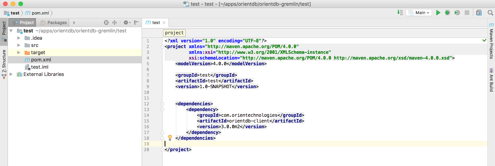
Now you are ready for the Next Step - Open a DB Connection and Create the DB Schema >>>
OrientDB for Java Developers in Five Minutes
In the previous step you created your Java application scaffolding in IntelliJ Idea, now it's time to create a Java class that connects to the database and does basic operations
We will write a very simple application with two classes:
- Person: a vertex type containing information about people
- FriendOf: an edge class that connects people together
Step 4/5 - Connect to the DB and create a basic schema
Let's create a simple Java class
- Open the folder src -> main -> java
- Right-click on the java folder and choose New -> Java Class
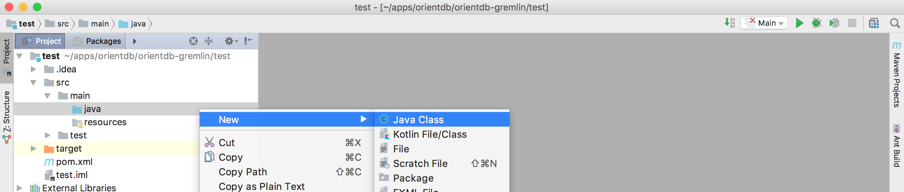
- Give the class the name you prefer and click OK
- create a main method
Connecting to the DB
Now it's time to connect to OrientDB
- Create an OrientDB object to manage the remote server
- Also invoke a
close()at the end of the method (so that you don't forget it later)
OrientDB orient = new OrientDB("remote:localhost", OrientDBConfig.defaultConfig());
//let's do something with this server!
orient.close();
The first argument of OrientDB() constructor is the URL of the remote database. It's made of two parts:
remote: specifies that we are connecting to a remote (stand-alone) serverlocalhost: the address of the host where OrientDB is running (it can be a URL or an IP, in this case orientdb is running on the local machine)

Until now, we just established a connection with the server, but not with the database itself (we created a db named test, do you remember?).
Now it's time to open a database session (and remember to close it at the end!):
OrientDB orient = new OrientDB("remote:localhost", OrientDBConfig.defaultConfig());
ODatabaseSession db = orient.open("test", "admin", "admin");
//let's do something with this session!
db.close();
orient.close();
Here we are actually connecting to the database. The three parameters are:
test: the database name (we created it a couple of steps before)admin(the first one): the username used to connectadmin(the second one): the password for the connection
By default, when you create a new database, OrientDB creates three users for you: admin, reader, writer; the passwords
for these users are the same as the user names, eg. the password for admin is admin. You can change it later of course, and you can
define more users if needed.
Creating the schema
Now it's time to create a schema for our db. Do you remember? We are creating a graph of people who are friends, so we need a Person
vertex class and a FriendOf edge class.
Let's also add a little check to make sure that the classes do not already exist
if (db.getClass("Person") == null) {
db.createVertexClass("Person");
}
if (db.getClass("FriendOf") == null) {
db.createEdgeClass("FriendOf");
}
And this is the final version of our class

This is the full source code:
import com.orientechnologies.orient.core.db.ODatabaseSession;
import com.orientechnologies.orient.core.db.OrientDB;
import com.orientechnologies.orient.core.db.OrientDBConfig;
public class Main {
public static void main(String[] args) {
OrientDB orient = new OrientDB("remote:localhost", OrientDBConfig.defaultConfig());
ODatabaseSession db = orient.open("test", "admin", "admin");
if (db.getClass("Person") == null) {
db.createVertexClass("Person");
}
if (db.getClass("FriendOf") == null) {
db.createEdgeClass("FriendOf");
}
db.close();
orient.close();
}
}
Now just run it and then open OrientDB Studio again:
- go back to the browser (OrientDB Studio)
- click on the SCHEMA tab
you will see the two newly created classes: Person and FriendOf

Just to make it a bit more realistic, let's also create some basic schema for our Person class.
We will just add a name to the Person and we will create an index on it.
OClass person = db.getClass("Person");
if (person == null) {
person = db.createVertexClass("Person");
}
if (person.getProperty("name") == null) {
person.createProperty("name", OType.STRING);
// index name index type property name
person.createIndex("Person_name_index", OClass.INDEX_TYPE.NOTUNIQUE, "name");
}
And this is the final result:
import com.orientechnologies.orient.core.db.ODatabaseSession;
import com.orientechnologies.orient.core.db.OrientDB;
import com.orientechnologies.orient.core.db.OrientDBConfig;
import com.orientechnologies.orient.core.metadata.schema.OClass;
import com.orientechnologies.orient.core.metadata.schema.OType;
public class Main {
public static void main(String[] args) {
OrientDB orient = new OrientDB("remote:localhost", OrientDBConfig.defaultConfig());
ODatabaseSession db = orient.open("test", "admin", "admin");
OClass person = db.getClass("Person");
if (person == null) {
person = db.createVertexClass("Person");
}
if (person.getProperty("name") == null) {
person.createProperty("name", OType.STRING);
person.createIndex("Person_name_index", OClass.INDEX_TYPE.NOTUNIQUE, "name");
}
if (db.getClass("FriendOf") == null) {
db.createEdgeClass("FriendOf");
}
db.close();
orient.close();
}
}
Now you are ready for the Next Step - Create your First Graph and Run Queries >>>
OrientDB for Java Developers in Five Minutes
In the previous step you established a DB connection from Java, then you created the DB schema (two classes and an index)
Now it's time to insert and query some data
Step 5/5 - Create and Query a Graph
First of all, let's create three vertices: Alice, Bob and Jim
Creating vertices
We are good Java developers, aren't we? Let's encapsulate a single vertex creation in a method:
private static OVertex createPerson(ODatabaseSession db, String name, String surname) {
OVertex result = db.newVertex("Person");
result.setProperty("name", name);
result.setProperty("surname", surname);
result.save();
return result;
}
Wow, we never mentioned that people have a surname!!! In the previous section we just defined the schema for name property...
OrientDB can work schemaful (with all the property names and types defined), schemaless (schema-free, no schema defined) or schema-mixed like in this case, where we define a part of the schema (ie. the name) but we leave the developer the ability to add new properties at run time, without having to deal with further schema definitions.
Now let's create the three vertices:
private static void createPeople(ODatabaseSession db){
OVertex alice = createPerson(db, "Alice", "Foo");
OVertex bob = createPerson(db, "Bob", "Bar");
OVertex jim = createPerson(db, "Jim", "Baz");
}
Creating edges
Suppose that Alice is a friend of Bob and that Bob is a friend of Jim:
Alice --FriendOf--> Bob --FriendOf--> Jim
Let's create the edges in the database:
OEdge edge1 = alice.addEdge(bob, "FriendOf");
edge1.save();
OEdge edge2 = bob.addEdge(jim, "FriendOf");
edge2.save();
Please consider that edges are plain documents, so you can get/set properties on them exactly like for vertices.
Executing queries
Last step of this journey: let's write and execute a simple query that finds friends of friends (FoaF) of a person. We will use a SELECT for this.
private static void executeAQuery(ODatabaseSession db) {
String query = "SELECT expand(out('FriendOf').out('FriendOf')) from Person where name = ?";
OResultSet rs = db.query(query, "Alice");
while (rs.hasNext()) {
OResult item = rs.next();
System.out.println("friend: " + item.getProperty("name"));
}
rs.close(); //REMEMBER TO ALWAYS CLOSE THE RESULT SET!!!
}
or, if you prefer Java Streams API:
private static void executeAQuery(ODatabaseSession db) {
String query = "SELECT expand(out('FriendOf').out('FriendOf')) from Person where name = ?";
OResultSet rs = db.query(query, "Alice");
rs.stream().forEach(x -> System.out.println("friend: " + x.getProperty("name")));
rs.close();
}
Let's try a more complex query, let's find all the people that are friends of both Alice and Jim. We will use a MATCH for this.
private static void executeAnotherQuery(ODatabaseSession db) {
String query =
" MATCH " +
" {class:Person, as:a, where: (name = :name1)}, " +
" {class:Person, as:b, where: (name = :name2)}, " +
" {as:a} -FriendOf-> {as:x} -FriendOf-> {as:b} " +
" RETURN x.name as friend ";
Map<String, Object> params = new HashMap<String, Object>();
params.put("name1", "Alice");
params.put("name2", "Jim");
OResultSet rs = db.query(query, params);
while (rs.hasNext()) {
OResult item = rs.next();
System.out.println("friend: " + item.getProperty("name"));
}
rs.close();
}
Good job!!! This is your first OrientDB Java program!
Here is the full source code of the main class:
import com.orientechnologies.orient.core.db.ODatabaseSession;
import com.orientechnologies.orient.core.db.OrientDB;
import com.orientechnologies.orient.core.db.OrientDBConfig;
import com.orientechnologies.orient.core.metadata.schema.OClass;
import com.orientechnologies.orient.core.metadata.schema.OType;
import com.orientechnologies.orient.core.record.OEdge;
import com.orientechnologies.orient.core.record.OVertex;
import com.orientechnologies.orient.core.sql.executor.OResult;
import com.orientechnologies.orient.core.sql.executor.OResultSet;
import java.util.HashMap;
import java.util.Map;
public class Main {
public static void main(String[] args) {
OrientDB orient = new OrientDB("remote:localhost", OrientDBConfig.defaultConfig());
ODatabaseSession db = orient.open("test", "admin", "admin");
createSchema(db);
createPeople(db);
executeAQuery(db);
executeAnotherQuery(db);
db.close();
orient.close();
}
private static void createSchema(ODatabaseSession db) {
OClass person = db.getClass("Person");
if (person == null) {
person = db.createVertexClass("Person");
}
if (person.getProperty("name") == null) {
person.createProperty("name", OType.STRING);
person.createIndex("Person_name_index", OClass.INDEX_TYPE.NOTUNIQUE, "name");
}
if (db.getClass("FriendOf") == null) {
db.createEdgeClass("FriendOf");
}
}
private static void createPeople(ODatabaseSession db) {
OVertex alice = createPerson(db, "Alice", "Foo");
OVertex bob = createPerson(db, "Bob", "Bar");
OVertex jim = createPerson(db, "Jim", "Baz");
OEdge edge1 = alice.addEdge(bob, "FriendOf");
edge1.save();
OEdge edge2 = bob.addEdge(jim, "FriendOf");
edge2.save();
}
private static OVertex createPerson(ODatabaseSession db, String name, String surname) {
OVertex result = db.newVertex("Person");
result.setProperty("name", name);
result.setProperty("surname", surname);
result.save();
return result;
}
private static void executeAQuery(ODatabaseSession db) {
String query = "SELECT expand(out('FriendOf').out('FriendOf')) from Person where name = ?";
OResultSet rs = db.query(query, "Alice");
while (rs.hasNext()) {
OResult item = rs.next();
System.out.println("friend: " + item.getProperty("name"));
}
rs.close(); //REMEMBER TO ALWAYS CLOSE THE RESULT SET!!!
}
private static void executeAnotherQuery(ODatabaseSession db) {
String query =
" MATCH " +
" {class:Person, as:a, where: (name = :name1)}, " +
" {class:Person, as:b, where: (name = :name2)}, " +
" {as:a} -FriendOf-> {as:x} -FriendOf-> {as:b} " +
" RETURN x.name as friend ";
Map<String, Object> params = new HashMap<String, Object>();
params.put("name1", "Alice");
params.put("name2", "Jim");
OResultSet rs = db.query(query, params);
while (rs.hasNext()) {
OResult item = rs.next();
System.out.println("friend: " + item.getProperty("friend"));
}
rs.close();
}
}
Next steps:
You may be interested in:
Getting Started
Over the past few years, there has been an explosion of many NoSQL database solutions and products. The meaning of the word "NoSQL" is not a campaign against the SQL language. In fact, OrientDB allows for SQL syntax! NoSQL is probably best described by the following:
NoSQL, meaning "not only SQL", is a movement encouraging developers and business people to open their minds and consider new possibilities beyond the classic relational approach to data persistence.
Alternatives to relational database management systems have existed for many years, but they have been relegated primarily to niche use cases such as telecommunications, medicine, CAD and others. Interest in NoSQL alternatives like OrientDB is increasing dramatically. Not surprisingly, many of the largest web companies like Google, Amazon, Facebook, Foursquare and Twitter are using NoSQL based solutions in their production environments.
What motivates companies to leave the comfort of a well established relational database world? It is basically the great need to better solve today's data problems. Specifically, there are a few key areas:
- Performance
- Scalability (often huge)
- Smaller footprint
- Developer productivity and friendliness
- Schema flexibility
Most of these areas also happen to be the requirements of modern web applications. A few years ago, developers designed systems that could handle hundreds of concurrent users. Today it is not uncommon to have a potential target of thousands or millions of users connected and served at the same time.
Changing technology requirements have been taken into account on the application front by creating frameworks, introducing standards and leveraging best practices. However, in the database world, the situation has remained more or less the same for over 30 years. From the 1970s until recently, relational DBMSs have played the dominant role. Programming languages and methodologies have evolved, but the concept of data persistence and the DBMS have remained unchanged for the most part: it is all still tables, records and joins.
NoSQL Models
NoSQL-based solutions in general provide a powerful, scalable, and flexible way to solve data needs and use cases, which have previously been managed by relational databases. To summarize the NoSQL options, we'll examine the most common models or categories:
-
Key / Value databases: where the data model is reduced to a simple hash table, which consists of key / value pairs. It is often easily distributed across multiple servers. The most recognized products of this group include Redis, Dynamo, and Riak.
-
Column-oriented databases: where the data is stored in sections of columns offering more flexibility and easy aggregation. Facebook's Cassandra, Google's BigTable, and Amazon's SimpleDB are some examples of column-oriented databases.
-
Document databases: where the data model consists of document collections, in which each individual document can have multiple fields without necessarily having a defined schema. The best known products of this group are MongoDB and CouchDB.
-
Graph databases: where the domain model consists of vertices interconnected by edges creating rich graph structures. The best known products of this group are OrientDB, Neo4j and Titan.
OrientDB is a document-graph database, meaning it has full native graph capabilities coupled with features normally only found in document databases.
Each of these categories or models has its own peculiarities, strengths and limitations. There is no single category or model, which is better than the others. However, certain types of databases are better at solving specific problems. This leads to the motto of NoSQL: choose the best tool for your specific use case.
The goal of Orient Technologies in building OrientDB was to create a robust, highly scalable database that can perform optimally in the widest possible set of use cases. Our product is designed to be a fantastic "go to" solution for practically all of your data persistence needs. In the following parts of this tutorial, we will look closely at OrientDB, one of the best open-source, multi-model, next generation NoSQL products on the market today.
Installation
For a complete installation guide, see OrientDB Server Administration - Installation
Running the OrientDB Server
When you finish installing OrientDB, whether you build it from source or download the binary package, you are ready to launch the database server. You can either start it through the system daemon or through the provided server script. This article only covers the latter.
Note: If you would like to run OrientDB as a service on your system, there are some additional steps that you need to take. This provides alternate methods for starting the server and allows you to launch it as a daemon when your system boots.
Note that you need to start the OrientDB server once manually via server.sh|bat in %ORIENTDB_HOME%\bin once, before starting the service.
For more information on this process see:
Starting the Database Server
While you can run the database server as system daemon, you also have the option of starting it directly. In the OrientDB installation directory, (that is $ORIENTDB_HOME), under bin, there is a file named server.sh on Unix-based systems and server.bat on Windows. Executing this file starts the server.
To launch the OrientDB database server, run the following commands:
$cd $ORIENTDB_HOME/bin$./server.sh. .` ` , `:. `,` ,:` .,. :,, .,, ,,, . .,.::::: ```` ,` .::,,,,::.,,,,,,`;; .: `,. ::,,,,,,,:.,,.` ` .: ,,:,:,,,,,,,,::. ` ` `` .: ,,:.,,,,,,,,,: `::, ,, ::,::` : :,::` :::: ,:,,,,,,,,,,::,: ,, :. : :: : .: :,,,,,,,,,,:,:: ,, : : : : .: ` :,,,,,,,,,,:,::, ,, .:::::::: : : .: `,...,,:,,,,,,,,,: .:,. ,, ,, : : .: .,,,,::,,,,,,,: `: , ,, : ` : : .: ...,::,,,,::.. `: .,, :, : : : .: ,::::,,,. `: ,, ::::: : : .: ,,:` `,,. ,,, .,` ,,. `, S E R V E R `` `. `` ` 2012-12-28 01:25:46:319 INFO Loading configuration from: config/orientdb-server-config.xml... [OServerConfigurationLoaderXml] 2012-12-28 01:25:46:625 INFO OrientDB Server v1.6 is starting up... [OServer] 2012-12-28 01:25:47:142 INFO -> Loaded memory database 'temp' [OServer] 2012-12-28 01:25:47:289 INFO Listening binary connections on 0.0.0.0:2424 [OServerNetworkListener] 2012-12-28 01:25:47:290 INFO Listening http connections on 0.0.0.0:2480 [OServerNetworkListener] 2012-12-28 01:25:47:317 INFO OrientDB Server v1.6 is active. [OServer]
The database server is now running. It is accessible on your system through ports 2424 and 2480.
At the first startup the server will ask for the root user password. The password is stored in the config file.
Stop the Server
On the console where the server is running a simple CTRL+c will shutdown the server.
The shutdown.sh (shutdown.bat) script could be used to stop the server:
$cd $ORIENTDB_HOME/bin$./shutdown.sh -p ROOT_PASSWORD
On *nix systems a simple call to shutdown.sh will stop the server running on localhost:
$cd $ORIENTDB_HOME/bin$./shutdown.sh
It is possible to stop servers running on remote hosts or even on different ports on localhost:
$cd $ORIENTDB_HOME/bin$./shutdown.sh -h odb1.mydomain.com -P 2424-2430 -u root -p ROOT_PASSWORD
List of params
- -h | --host HOSTNAME or IP ADDRESS : the host or ip where OrientDB is running, default to localhost
- -P | --ports PORT or PORT RANGE : single port value or range of ports; default to 2424-2430
- -u | --user ROOT USERNAME : root's username; default to root
- -p | --password ROOT PASSWORD : root's user password; mandatory
NOTE: On Windows systems password is always mandatory because the script isn't able to discover the pid of the OrientDB's process.
Server Log Messages
Following the masthead, the database server begins to print log messages to standard output. This provides you with a guide to what OrientDB does as it starts up on your system.
-
The database server loads its configuration file from the file
$ORIENTDB_HOME/config/orientdb-server-config.xml.For more information on this step, see OrientDB Server.
-
The database server loads the
tempdatabase into memory. You can use this database for storing temporary data. -
The database server begins listening for binary connections on port
2424for all configured networks, (0.0.0.0). -
The database server begins listening for HTTP connections on port
2480for all configured networks, (0.0.0.0).
Accessing the Database Server
By default, OrientDB listens on two different ports for external connections.
-
Binary: OrientDB listens on port
2424for binary connections from the console and for clients and drivers that support the Network Binary Protocol. -
HTTP: OrientDB listens on port
2480for HTTP connections from OrientDB Studio Web Tool and clients and drivers that support the HTTP/REST protocol, or similar tools, such as cURL.
If you would like the database server to listen at different ports or IP address, you can define these values in the configuration file config/orientdb-server-config.xml.
Running the OrientDB Console
Once the server is running there are various methods you can use to connect to your database server to an individual databases. Two such methods are the Network Binary and HTTP/REST protocols. In addition to these OrientDB provides a command-line interface for connecting to and working with the database server.
Starting the OrientDB Console
In the OrientDB installation directory (that is, $ORIENTDB_HOME, where you installed the database) under bin, there is a file called console.sh for Unix-based systems or console.bat for Windows users.
To launch the OrientDB console, run the following command after you start the database server:
$cd $ORIENTDB_HOME/bin$./console.shOrientDB console v.X.X.X (build 0) www.orientdb.com Type 'HELP' to display all the commands supported. Installing extensions for GREMLIN language v.X.X.X orientdb>
The OrientDB console is now running. From this prompt you can connect to and manage any remote or local databases available to you.
Using the HELP Command
In the event that you are unfamiliar with OrientDB and the available commands, or if you need help at any time, you can use the HELP command, or type ? into the console prompt.
orientdb> HELP
AVAILABLE COMMANDS:
* alter class <command-text> Alter a class in the database schema
* alter cluster <command-text> Alter class in the database schema
... ...
* help Print this help
* exit Close the console
For each console command available to you, HELP documents its basic use and what it does. If you know the particular command and need details on its use, you can provide arguments to HELP for further clarification.
orientdb> HELP SELECT
COMMAND: SELECT
- Execute a query against the database and display the results.
SYNTAX: select <query-text>
WHERE:
- <query-text>: The query to execute
Connecting to Server Instances
There are some console commands, such as LIST DATABASES or CREATE DATABASE, which you can only run while connected to a server instance. For other commands, however, you must also connect to a database, before they run without error.
Before you can connect to a fresh server instance and fully control it, you need to know the root password for the database.
With the required credentials, you can connect to the database server instance on your system, or establish a remote connection to one running on a different machine.
orientdb> CONNECT remote:localhost root my_root_password
Connecting to remote Server instance [remote:localhost] with user 'root'...OK
Once you have established a connection to the database server, you can begin to execute commands on that server, such as LIST DATABASES and CREATE DATABASE.
orientdb> LIST DATABASES
Found 1 databases:
* GratefulDeadConcerts (plocal)
To connect to this database or to a different one, use the CONNECT command from the console and specify the server URL, username, and password. By default, each database has an admin user with a password of admin.
Warning: Always change the default password on production databases.
The above LIST DATABASES command shows a GratefulDeadConcerts installed on the local server. To connect to this database, run the following command:
orientdb> CONNECT remote:localhost/GratefulDeadConcerts admin admin
Connecting to database [remote:localhost/GratefulDeadConcerts] with user 'admin'...OK
The CONNECT command takes a specific syntax for its URL. That is, remote:localhost/GratefulDeadConcerts in the example. It has three parts:
-
Protocol: The first part of the database address is the protocol the console should use in the connection. In the example, this is
remote, indicating that it should use the TCP/IP protocol. -
Address: The second part of the database address is hostname or IP address of the database server that you want the console to connect to. In the example, this is
localhost, since the connection is made to a server instance running on the local file system. -
Database: The third part of the address is the name of the database that you want to use. In the case of the example, this is
GratefulDeadConcerts.
For more detailed information about the commands, see Console Commands.
Note: The OrientDB distribution comes with the bundled database
GratefulDeadConcertswhich represents the Graph of the Grateful Dead's concerts. This database can be used by anyone to start exploring the features and characteristics of OrientDB.
Run the Studio
If you're more comfortable interacting with database systems through a graphical interface then you can accomplish the most common database tasks with OrientDB Studio, the web interface.

Connecting to Studio
By default, there are no additional steps that you need to take to start OrientDB Studio. When you launch the Server, whether through the start-up script server.sh or as a system daemon, the Studio web interface opens automatically with it.
$ firefox http://localhost:2480
From here you can create a new database, connect to or drop an existing database, import a public database and navigate to the Server management interface.
For more information on the OrientDB Studio, see Studio.
Documents, Vertices and Edges
###TODO
Classes
Here we will learn about how classes structure data in OrientDB. A class in OrientDB is similar to a table in a relational database with some key differences. In this section you will learn how to see all of the classes in your database and how to create classes of your own. You'll also learn how to provide schema on top of classes by defining constraints for a class's properties. Finally you'll learn how to access the records stored within your classes.
The Class is a concept drawn from the Object-oriented programming paradigm. In OrientDB a class is a data model that allows you to define certain rules for records that belong together. For example, a class 'Person' can store information about people. You can structure your class such that a record in the class must have certain properties (i.e. Name, Birthdate, Favorite Number, etc...).
In the traditional document database model classes are comparable to collections, while in the Relational database model (R-DBMS) they are comparable to tables. Classes are not tables though. Classes provide efficient means for storage of schema-less data. We'll see more about schema-less, schema-full, and schema-mixed data models later (See 'Adding Properties to a Class' below).
Like many database management systems, OrientDB uses the Record as an element of storage. There are many types of records, but with the Document Database API records always use the Document type. A document is formed by a set of key/value pairs. A document can belong to a class.
In the example above, there are two documents. One document contains information for Sarah and another for Abdul. The keys 15:0 and 15:1 refer to each document respectively.
To list all the configured classes on your system, use the LIST CLASSES command in the console:
orientdb> LIST CLASSES
orientdb {db=playingwithClasses}> LIST CLASSES
CLASSES
+----+-----------+-------------+-----------------+-----+
|# |NAME |SUPER-CLASSES|CLUSTERS |COUNT|
+----+-----------+-------------+-----------------+-----+
|0 |_studio | |_studio(13) | 1|
|1 |Blue |[Color] |blue(19) | 0|
|2 |Color |[V] |- | 0|
|3 |E | |e(11),e_1(12) | 0|
|4 |OFunction | |ofunction(6) | 0|
|5 |OIdentity | |- | 0|
|6 |ORestricted| |- | 0|
|7 |ORole |[OIdentity] |orole(4) | 3|
|8 |OSchedule | |oschedule(8) | 0|
|9 |OSequence | |osequence(7) | 0|
|10 |OTriggered | |- | 0|
|11 |OUser |[OIdentity] |ouser(5) | 3|
|12 |Person |[V] |person(15) | 0|
|13 |Red |[Color] |red(17),red_1(18)| 0|
|14 |V | |v(9),v_1(10) | 0|
+----+-----------+-------------+-----------------+-----+
| |TOTAL | | | 7|
+----+-----------+-------------+-----------------+-----+
If you are using studio, then you can see the same information by clicking on the 'schema' tab.
Here we can see that there are 14 classes in the database. Class 12 refers to person. There is also a class Color which is the super-class of Red and Blue. Color and Person both have super-classes called V. The class V is important for using OrientDB’s graph model. We'll see more about Superclasses and V later in the tutorial. Let's move on now to working with classes.
Working with Classes
In order to start using classes with your own applications, you need to understand how to create and configure a class for use. The class in OrientDB is similar to the table in relational databases, but unlike tables, classes can be schema-less, schema-full or mixed. A class can inherit properties from other classes thereby creating trees of classes (though the super-class relationship).
Each class has its own cluster or clusters, (created by default, if none are defined). For now we should know that a cluster is a place where a group of records are stored. We'll soon see how clustering improves performance of querying the database.
For more information on classes in OrientDB, see Class.
To create a new class, use the CREATE CLASS command:
orientdb> CREATE CLASS Student
Class created successfully. Total classes in database now: 15
This creates a class called Student. Given that no cluster was defined in the CREATE CLASS command, OrientDB creates a default cluster called student, to contain records assigned to this class. For the moment, the class has no records or properties tied to it. It is now displayed in the CLASSES listing and in the schema manager of Studio.
Adding Properties to a Class
As mentioned above, OrientDB allows you to work in a schema-less mode. That is, it allows you to create classes without defining their properties. However, properties are mandatory if you would like to define indexes or constraints for a class. Let's follow OrientDB's comparison to relational databases again... If classes in OrientDB are similar to tables, then properties are the columns on those tables.
To create new properties on Student, use the CREATE PROPERTY command in the console or in the browse window of studio:
orientdb>CREATE PROPERTY Student.name STRINGProperty created successfully with id=1 orientdb>CREATE PROPERTY Student.surname STRINGProperty created successfully with id=2 orientdb>CREATE PROPERTY Student.birthDate DATEProperty created successfully with id=3
These commands create three new properties on the Student class. The properties provide you with areas to define an individual student's name, surname, and date of birth.
Displaying Class Information
Occasionally you may need to reference a particular class to see what clusters it belongs to, or any properties configured for the class's use. Use the INFO CLASS command to display information about the current configuration and properties of a class.
To display information on the class Student, use the INFO CLASS command:
orientdb> INFO CLASS Student
Class................: Student
Default cluster......: student (id=96)
Supported cluster ids: [96]
Properties:
-----------+--------+--------------+-----------+----------+----------+-----+-----+
NAME | TYPE | LINKED TYPE/ | MANDATORY | READONLY | NOT NULL | MIN | MAX |
| | CLASS | | | | | |
-----------+--------+--------------+-----------+----------+----------+-----+-----+
birthDate | DATE | null | false | false | false | | |
name | STRING | null | false | false | false | | |
surname | STRING | null | false | false | false | | |
-----------+--------+--------------+-----------+----------+----------+-----+-----+
Adding Constraints to Properties
Constraints create limits on the data values assigned to properties. For instance, the type, the minimum or maximum size of, whether or not a value is mandatory or if null values are permitted to the property.
Constraints create limits on the data values assigned to properties. For instance, if 'MANDATORY' is set to true for name in student, then every record in the student class must have a name. If we set 'MIN' to three, then every name must also be at least three characters long.
The only two properties required when using the 'create a property' command for a class are 'NAME' and 'TYPE'.
To add a constraint to an existing property, use the ALTER PROPERTY command:
orientdb> ALTER PROPERTY Student.name MIN 3
Property updated successfully
This command adds a constraint to Student on the name property. After running this command, Student will allow any record to be stored unless the record has a property called 'Name'. If the records has such a property then 'Student' will reject the record if the value in 'Name' is less then three characters.
By setting property, 'MANDATORY', to true for Student's Name we can also guarantee that every record added to student has a name.
orientdb> ALTER PROPERTY Student.name MANDATORY true
There are many ways to use constraints on properties. They can allow you to build a data-model that tells a story about your own use case. Constraints can also help ensure that you're database communicates with other components of a larger application by only allowing storage of values that another application is able to recognize.
Viewing Records in a Class
Classes contain and define records in OrientDB. You can view all records that belong to a class using the BROWSE CLASS command. You can also see data belonging to a particular record with the DISPLAY RECORD command.
Note: you cannot display a record unless you have recently received a query result with records to browse (select statement, 'browse class x', etc...).
Earlier we created a Student class and defined some schema for records belonging to that class, but we didn't create any records or add any data. Thus, running 'BROWSE CLASS' on the Student class returns no results. Luckily OrientDB has a few preconfigured classes and records that we can query.
Let's take the class OUser for example.
orientdb> INFO CLASS OUser
CLASS 'OUser'
Super classes........: [OIdentity]
Default cluster......: ouser (id=5)
Supported cluster ids: [5]
Cluster selection....: round-robin
Oversize.............: 0.0
PROPERTIES
----------+---------+--------------+-----------+----------+----------+-----+-----+
NAME | TYPE | LINKED TYPE/ | MANDATORY | READONLY | NOT NULL | MIN | MAX |
| | CLASS | | | | | |
----------+---------+--------------+-----------+----------+----------+-----+-----+
password | STRING | null | true | false | true | | |
roles | LINKSET | ORole | false | false | false | | |
name | STRING | null | true | false | true | | |
status | STRING | null | true | false | true | | |
----------+---------+--------------+-----------+----------+----------+-----+-----+
INDEXES (1 altogether)
-------------------------------+----------------+
NAME | PROPERTIES |
-------------------------------+----------------+
OUser.name | name |
-------------------------------+----------------+
The OUser class defines the users on your database.
To see records assigned to the OUser class, run the BROWSE CLASS command:
orientdb> BROWSE CLASS OUser
---+------+-------+--------+-----------------------------------+--------+-------+
# | @RID | @Class| name | password | status | roles |
---+------+-------+--------+-----------------------------------+--------+-------+
0 | #5:0 | OUser | admin | {SHA-256}8C6976E5B5410415BDE90... | ACTIVE | [1] |
1 | #5:1 | OUser | reader | {SHA-256}3D0941964AA3EBDCB00EF... | ACTIVE | [1] |
2 | #5:2 | OUser | writer | {SHA-256}B93006774CBDD4B299389... | ACTIVE | [1] |
---+------+-------+--------+-----------------------------------+--------+-------+
 | In the example, you are listing all of the users of the database. While this is fine for your initial setup and as an example, it is not particularly secure. To further improve security in production environments, see Security. |
When you run BROWSE CLASS, the first column in the output provides the identifier number, which you can use to display detailed information on that particular record.
To show the first record browsed from the OUser class, run the DISPLAY RECORD command:
orientdb> DISPLAY RECORD 0
DOCUMENT @class:OUser @rid:#5:0 @version:1
----------+--------------------------------------------+
Name | Value |
----------+--------------------------------------------+
name | admin |
password | {SHA-256}8C6976E5B5410415BDE908BD4DEE15... |
status | ACTIVE |
roles | [#4:0=#4:0] |
----------+--------------------------------------------+
Bear in mind that this command references the last call of BROWSE CLASS. You can continue to display other records, but you cannot display records from another class until you browse that particular class.
Class Review
Here are some key things to remember about classes:
-
A class in OrientDB is similar to a table in a relational database with some key differences. Among those differences we see tables are schema-full, and classes can be schema-full, schema-less, or mixed.
-
You can see all of the classes in your database by running 'LIST CLASSES' in console or by visiting the 'Schema Manager' in Studio.
-
You can create a class by running the 'create class
' command in console, or by running the same command in the 'Browse' window of studio. -
You can use the commands, 'Create property
[constraints]' and 'Create property [constraints]' to give schema to a class. -
To see properties and constraints associated with a class you can run 'info class
'. -
To see information about a the records within a class run 'Browse class
'. -
To see information about a specific record of a class use the command 'Display record
'. Note: You must have recently queried a class for it's records before using this command. ' ' references the number in the left-most column of the previous query's result.
Congratulations! You are now familiar with classes in OrientDB. If you're ready to explore clusters then let's move on to the clustering section of this tutorial.
Demo Database
Starting with OrientDB v.3.0 a new demo database (demodb) is included.
This Section introduces the demodb database and its Data Model, and includes some queries that is possible to execute on it.
Some screenshots on "portions" of the demodb graph are included as well.
Introduction
The demo database can help you understand better OrientDB features and capabilities and replaces the old demo database GratefulDeadConcerts included in version 2.2 and previous ones.
Note: Random-generated data is used in the demodb, including data used for Emails, Names, Surnames, Phone Numbers and Reviews.
Version
demodb has a version that, in general, is not linked to the Server version you are running. You can check the version of the demodb included in your distribution by executing the following SQL query:
SELECT `Version` FROM `DBInfo`;
Current version is 0.76.
Location
The demo database is located in the databases directory under your $ORIENTDB_HOME (e.g. D:\orientdb\orientdb-community-3.0.0\databases\demodb.
Connecting to the Demo Database
It is possible to connect to demodb using the three standard OrientDB Users:
reader/readerwriter/writeradmin/admin
Using the Demo Database with OrientDB 2.2.x
The demo database can be easily loaded into OrientDB 2.2.x using the Studio's "Import a public database" feature.
Alternatively, it is possible to import it via an SQL script that includes the set of instructions needed to recreate the data model as well as all the records (vertices, edges, and documents).
Data Model
demodb is the database of an hypothetical Travel Agency that runs a public social platform as well.
Users (that are stored in the database in the class Profiles) can freely register to the social platform and start making friends (friendship is expressed via the HasFriend edge).
Some of the users can become customers. When this happens the application in use at the Social Travel Agency creates a vertex in the Customers class and links it to the associated profile via an HasProfile edge.
When customers are created, they are automatically linked to a country as well, via an IsFromCountry edge. Countries are stored in the Countries vertex class.
Orders made by customers are stored in the vertex class Orders. Each customer can make one or more orders, and the HasCustomer edge is used to connect orders to customers.
When customers start visiting Attractions (like Castles, Monuments, Theatres or Archaeological Sites) or using Services (like Hotels or Restaurants) edges are created to link that specific customer with that specific attraction or service (HasVisited, HasStayed, and HasEaten edges are used).
The Social Travel Agency also stores some reviews in the vertex class Reviews. Reviews are linked to customers via the MadeReview edge, and to an attraction or service via the HasReview edge.
Data model of demodb v.0.76 is reported in the image below:
Inheritance
Inheritance in the Vertex and Edge classes of demodb v.0.76 is reported in the image below:
Queries
This Section includes several query examples that you can execute from the Studio's Browse Tab, or from its Graph Editor. You may also execute these queries directly from the Console, or your application through an API or Driver.
{% include "../include-demodb-version-warning.md" %}
The following table can help you navigate through all examples:
| Category | Question | Link |
|---|---|---|
| Profiles | Find the 'year of birth' of the Profiles, and how many Profiles were born in the same year | Link |
| Find the top 3 Profiles that have the highest number of Friends | Link | |
| Friendship | Find Santo's Friends | Link |
| Find Santo's Friends who are also Customers | Link | |
| Find Santo's Friends who are also Customers, and the Countries they are from | Link | |
| Find Santo's Friends who are also Customers, and the Orders they have placed | Link | |
| Among Santo's Friends, find the top 3 Customers that placed the highest number of Orders | Link | |
| Among Santo's Friends, find the top 3 Customers that visited the highest number of Places | Link | |
| Find all the Friends of Customer identified with OrderedId 1 that are not Customers (so that a product can be proposed) | Link | |
| Customers | Find everything that is connected (1st degree) to Customer with OrderedId 1 | Link |
| Find all Locations connected to Customer with OrderedId 1 | Link | |
| Find all Locations connected to Customer with OrderedId 1, and their Reviews (if any) | Link | |
| Find the other Customers that visited the Locations visited by Customer with OrderedId 1 | Link | |
| Find all the places where Customer with OrderedId 2 has stayed | Link | |
| Find all places where Customer with Id 1 has eaten | Link | |
| Find the 3 Customers who made more reviews | Link | |
| Find all Orders placed by Customer with OrderedId 2 | Link | |
| Calculate the total revenues from Orders associated with Customer with OrderedId 2 | Link | |
| Find the 3 Customers who placed most Orders | Link | |
| Find the top 3 Countries from where Customers are from | Link | |
| Countries | Find the top 3 Countries from where Customers are from | Link |
| Find Santo's Friends who are also Customers, and the Countries they are from | Link | |
| Orders | Calculate the total revenues from Orders, and the min, max and average Order amount | Link |
| Find the year of the Orders, and how many Orders have been placed in the same year | Link | |
| Find the 3 Customers who placed most Orders | Link | |
| Find the top 3 Customers in terms of spending | Link | |
| Find all Orders placed by Customer with Id 2 | Link | |
| Calculate the total revenues from Orders associated with Customer with Id 2 | Link | |
| Attractions | Find all Attractions connected with Customer with OrderedId 1 | Link |
| Services | Find all Services connected with Customer with OrderedId 1 | Link |
| Find the 3 Hotels that have been booked most times | Link | |
| Find the 3 Hotels that have most reviews | Link | |
| Find the top 3 nationality of the tourists that have eaten at Restaurant with Id 26 | Link | |
| Locations | Find all Locations visited by Santo | Link |
| Find all Locations connected to Customer with OrderedId 1 | Link | |
| Find all Locations connected to Customer with OrderedId 1, and their Reviews (if any) | Link | |
| Find all Locations visited by Customer with OrderedId 2 | Link | |
| Find all Locations visited by Santo's friends | Link | |
| Reviews | Find number of Reviews per star | Link |
| Find all reviewed Services | Link | |
| Find all reviewed Services and the Customer who made the review | Link | |
| Find the numbers of reviews per Service | Link | |
| Find the 3 Hotels that have most reviews | Link | |
| Find the 3 Customers who made more reviews | Link | |
| Recommendations | Recommend some friends to Profile 'Isabella Gomez' (friends of friends) | Link |
| Recommend some Hotels to Customer with OrderedId 1 | Link | |
| Business Opportunities | Find all the Friends of Customer identified with OrderedId 1 that are not Customers (so that a product can be proposed) | Link |
| Find all the Customer Friends that are not Customers (so that a product can be proposed) | Link | |
| Polymorphism | Find all Locations (Services + Attractions) connected with Customer with OrderedId 1 | Link |
| Find the 3 Services (Hotels + Restaurants) that have most reviews | Link | |
| Shortest Paths | Find the shortest path between the Profile 'Santo' and the Country 'United States' | Link |
| Find the shortest path between the Profile 'Santo' and the Restaurant 'Malga Granezza' | Link | |
| Traverses | Traverse everything from Profile 'Santo' up to depth three | Link |
| Traverse everything from Country 'Italy' up to depth three | Link |
Profiles
Example 1
Find the 'year of birth' of the Profiles, and how many Profiles were born in the same year:
SELECT
count(*) as NumberOfProfiles,
Birthday.format('yyyy') AS YearOfBirth
FROM Profiles
GROUP BY YearOfBirth
ORDER BY NumberOfProfiles DESC
In the Browse Tab of Studio, using the query above, this is the obtained list of records (only few records are shown in the image below):
Note: in v. 2.x the corresponding query is:
SELECT
count(*) as NumberOfProfiles,
YearOfBirth
FROM (
SELECT
Birthday.format('yyyy') AS YearOfBirth
FROM Profiles)
GROUP BY YearOfBirth
ORDER BY NumberOfProfiles DESC
Example 2
Find the top 3 Profiles that have the highest number of Friends:
SELECT
@rid as Profile_RID,
Name,
Surname,
both('HasFriend').size() AS FriendsNumber
FROM `Profiles`
ORDER BY FriendsNumber DESC
LIMIT 3
In the Browse Tab of Studio, using the query above, this is the obtained list of records:
Friendship
Example 1
Find Santo's Friends:
MATCH {Class: Profiles, as: profile, where: (Name='Santo' AND Surname='OrientDB')}-HasFriend-{Class: Profiles, as: friend}
RETURN $pathelements
In the Graph Editor included in Studio, using 'RETURN $pathelements' as RETURN clause, this is the obtained graph:
In the Browse Tab of Studio, using 'RETURN friend.@Rid as Friend_RID, friend.Name as Friend_Name, friend.Surname as Friend_Surname' as RETURN clause, this is the obtained list of records (only few records are shown in the image below):
If you would like only to count them, you can execute a query like the following:
SELECT COUNT(*)
FROM (
MATCH {Class: Profiles, as: profile, where: (Name='Santo' AND Surname='OrientDB')}-HasFriend-{Class: Profiles, as: friend}
RETURN friend
)
or
SELECT
both('HasFriend').size() AS FriendsNumber
FROM `Profiles`
WHERE Name='Santo' AND Surname='OrientDB'
Example 2
Find Santo's Friends who are also Customers:
MATCH {Class: Profiles, as: profile, where: (Name='Santo' AND Surname='OrientDB')}-HasFriend-{Class: Profiles, as: friend}<-HasProfile-{class: Customers, as: customer}
RETURN $pathelements
In the Graph Editor included in Studio, using 'RETURN $pathelements' as RETURN clause, this is the obtained graph:
In the Browse Tab of Studio, using 'RETURN friend.@Rid as Friend_RID, friend.Name as Friend_Name, friend.Surname as Friend_Surname, customer.@Rid as Customer_RID, customer.OrderedId as Customer_OrderedId' as RETURN clause, this is the obtained list of records (only few records are shown in the image below):
Example 3
{% include "./include-file-5.md" %}
Example 4
Find Santo's Friends who are also Customers, and the Orders they have placed:
MATCH {Class: Profiles, as: profile, where: (Name='Santo' AND Surname='OrientDB')}-HasFriend-{Class: Profiles, as: friend}<-HasProfile-{class: Customers, as: customer}<-HasCustomer-{Class: Orders, as: order}
RETURN $pathelements
In the Graph Editor included in Studio, using 'RETURN $pathelements' as RETURN clause, this is the obtained graph:
In the Browse Tab of Studio, using 'RETURN friend.@Rid as Friend_RID, friend.Name as Friend_Name, friend.Surname as Friend_Surname, customer.@Rid as Customer_RID, customer.OrderedId as Customer_OrderedId, order.Id as OrderId' as RETURN clause, this is the obtained list of records (only few records are shown in the image below):
Example 5
Among Santo's Friends, find the top 3 Customers that placed the highest number of Orders:
SELECT
OrderedId as Customer_OrderedId,
in('HasCustomer').size() as NumberOfOrders,
out('HasProfile').Name as Friend_Name,
out('HasProfile').Surname as Friend_Surname
FROM (
SELECT expand(customer)
FROM (
MATCH {Class: Profiles, as: profile, where: (Name='Santo' AND Surname='OrientDB')}-HasFriend-{Class: Profiles, as: friend}<-HasProfile-{class: Customers, as: customer}
RETURN customer
)
)
ORDER BY NumberOfOrders DESC
LIMIT 3
In the Browse Tab of Studio, using the query above, this is the obtained list of records:

Example 6
Among Santo's Friends, find the top 3 Customers that visited the highest number of Places:
SELECT
OrderedId as Customer_OrderedId,
out('HasVisited').size() as NumberOfVisits,
out('HasProfile').Name as Friend_Name,
out('HasProfile').Surname as Friend_Surname
FROM (
SELECT expand(customer)
FROM (
MATCH {Class: Profiles, as: profile, where: (Name='Santo' AND Surname='OrientDB')}-HasFriend-{Class: Profiles, as: friend}<-HasProfile-{class: Customers, as: customer}
RETURN customer
)
)
ORDER BY NumberOfVisits DESC
LIMIT 3
In the Browse Tab of Studio, using the query above, this is the obtained list of records:

You may find in a similar way the top 3 Customers, among Santo's Friends, that have stayed at the highest number of Hotels, or have eaten at the highest number of Restaurants. Just use out("HasStayed").size() or out("HasEaten").size() instead of out("HasVisited").size() (you may also consider to modify the alias, from NumberOfVisits to NumberOfHotels and NumberOfRestaurants, so that it is more coherent to these cases).
Example 7
{% include "./include-file-1.md" %}
or, without restricting to a specific customer:
Find all the Customer Friends that are not Customers (so that a product can be proposed):
In the Graph Editor included in Studio, using the query below, this is the obtained graph:
SELECT *
FROM (
SELECT expand(customerFriend)
FROM (
MATCH {Class:Customers, as: customer}-HasProfile-{Class:Profiles, as: profile}-HasFriend-{Class:Profiles, as: customerFriend}
RETURN customerFriend
)
)
WHERE in('HasProfile').size()=0
In the Browse Tab of Studio, using the query below, this is the obtained list of records (only few records are shown in the image below):
SELECT
@Rid as Friend_RID,
Name as Friend_Name,
Surname as Friend_Surname
FROM (
SELECT expand(customerFriend)
FROM (
MATCH {Class:Customers, as: customer}-HasProfile-{Class:Profiles, as: profile}-HasFriend-{Class:Profiles, as: customerFriend}
RETURN customerFriend
)
)
WHERE in('HasProfile').size()=0
Customers
Example 1
Find everything that is connected (1st degree) to Customer with OrderedId 1:
MATCH {class: Customers, as: c, where: (OrderedId=1)}--{as: n}
RETURN $pathelements
In the Graph Editor included in Studio, using 'RETURN $pathelements' as RETURN clause, this is the obtained graph:
Example 2
{% include "./include-file-7.md" %}
Example 3
{% include "./include-file-8.md" %}
Example 4
Find the other Customers that visited the Locations visited by Customer with OrderedId 1:
MATCH {class: Customers, as: customer, where: (OrderedId=1)}--{class: Locations, as: loc}--{class: Customers, as: otherCustomers, where: (OrderedId<>1)}
RETURN $pathelements
In the Graph Editor included in Studio, using 'RETURN $pathelements' as RETURN clause, this is the obtained graph:
If we want to return also also their Profile names, surnames and emails:
MATCH {class: Customers, as: customer, where: (OrderedId=1)}--{class: Locations, as: loc}--{class: Customers, as: otherCustomers, where: (OrderedId<>1)}-HasProfile->{class: Profiles, as: profile}
RETURN otherCustomers.OrderedId, profile.Name, profile.Surname, profile.Email
ORDER BY `otherCustomers.OrderedId` ASC
In the Browse Tab of Studio, using 'RETURN otherCustomers.OrderedId, profile.Name, profile.Surname, profile.Email' as RETURN clause, this is the obtained list of records (only few records are shown in the image below):
Example 5
Find all the places where Customer with OrderedId 2 has stayed:
MATCH {as: n}<-HasStayed-{class: Customers, as: c, where: (OrderedId=2)}
RETURN $pathelements
In the Graph Editor included in Studio, using 'RETURN $pathelements' as RETURN clause, this is the obtained graph:
Example 6
Find all places where Customer with OrderedId 1 has eaten:
MATCH {as: n}<-HasEaten-{class: Customers, as: c, where: (OrderedId=1)}
RETURN $pathelements
In the Graph Editor included in Studio, using 'RETURN $pathelements' as RETURN clause, this is the obtained graph:
Example 7
{% include "./include-file-3.md" %}
Example 8
{% include "./include-file-9.md" %}
Example 9
{% include "./include-file-10.md" %}
Example 10
{% include "./include-file-4.md" %}
Example 11
{% include "./include-file-6.md" %}
Countries
Example 1
{% include "./include-file-6.md" %}
Example 2
{% include "./include-file-5.md" %}
Orders
Example 1
Calculate the total revenues from Orders, and the min, max and average Order amount:
SELECT
count(*) as OrdersNumber,
sum(Amount) AS TotalRevenuesFromOrders,
min(Amount) as MinAmount,
(sum(Amount)/count(*)) as AverageAmount,
max(Amount) as MaxAmount
FROM Orders
In the Browse Tab of Studio, using the query above, this is the visualized result:
Example 2
Find the year of the Orders, and how many Orders have been placed in the same year:
SELECT
count(*) as OrdersCount,
OrderDate.format('yyyy') AS OrderYear
FROM Orders
GROUP BY OrderYear
ORDER BY OrdersCount DESC
In the Browse Tab of Studio, using the query above, this is the visualized result:

Example 3
{% include "./include-file-4.md" %}
Example 4
Find the top 3 Customers in terms of spending:
SELECT
customer.OrderedId as customerOrderedId,
SUM(order.Amount) as totalAmount
FROM (
MATCH {Class: Customers, as: customer}<-HasCustomer-{class: Orders, as: order}
RETURN customer, order
)
GROUP BY customerOrderedId
ORDER BY totalAmount DESC
LIMIT 3
In the Browse Tab of Studio, using the query above, this is the visualized result:
Example 5
{% include "./include-file-9.md" %}
Example 6
{% include "./include-file-10.md" %}
Attractions
Example 1
Find all Attractions connected with Customer with OrderedId 1:
MATCH {class: Customers, as: customer, where: (OrderedId=1)}--{Class: Attractions, as: attraction}
RETURN $pathelements
In the Graph Editor included in Studio, using 'RETURN $pathelements' as RETURN clause, this is the obtained graph:
In the Browse Tab of Studio, using 'RETURN attraction.@Rid as Attraction_RID, attraction.Name as Attraction_Name, attraction.Type as Attraction_Type' as RETURN clause, this is the obtained list of records (only few records are shown in the image below):
Services
Example 1
Find all Services connected with Customer with OrderedId 1:
MATCH {class: Customers, as: customer, where: (OrderedId=1)}--{Class: Services, as: service}
RETURN $pathelements
In the Graph Editor included in Studio, using 'RETURN $pathelements' as RETURN clause, this is the obtained graph:
In the Browse Tab of Studio, using 'RETURN service.@Rid as Service_RID, service.Name as Service_Name, service.Type as Service_Type' as RETURN clause, this is the obtained list of records (only few records are shown in the image below):
Example 2
Find the 3 Hotels that have been booked most times:
SELECT
Name, Type, in("HasStayed").size() AS NumberOfBookings
FROM Hotels
ORDER BY NumberOfBookings DESC
LIMIT 3
In the Browse Tab of Studio, using the query below, this is the obtained list of records:
In a similar way:
Find the 3 Restaurants that have been used most times:
SELECT
Name, Type, in("HasEaten").size() AS VisitsNumber
FROM Restaurants
ORDER BY VisitsNumber DESC
LIMIT 3
In the Browse Tab of Studio, using the query below, this is the obtained list of records:
Example 3
Find the 3 Hotels that have most reviews:
SELECT
Name, Type, out("HasReview").size() AS ReviewNumbers
FROM `Hotels`
ORDER BY ReviewNumbers DESC
LIMIT 3
In the Browse Tab of Studio, using the query below, this is the obtained list of records:
In a similar way:
Find the 3 Restaurants that have most reviews :
SELECT
Name, Type, out("HasReview").size() AS ReviewNumbers
FROM `Restaurants`
ORDER BY ReviewNumbers DESC
LIMIT 3
In the Browse Tab of Studio, using the query below, this is the obtained list of records:
Example 4
Find the top 3 nationality of the tourists that have eaten at Restaurant with Id 26:
SELECT
Name,
count(*) as CountryCount
FROM (
SELECT
expand(out('IsFromCountry')) AS countries
FROM (
SELECT
expand(in("HasEaten")) AS customers
FROM Restaurants
WHERE Id='26'
UNWIND customers)
UNWIND countries)
GROUP BY Name
ORDER BY CountryCount DESC
LIMIT 3
In the Browse Tab of Studio, using the query below, this is the obtained list of records:
In a similar way:
Find the top 3 nationality of the tourists that stayed at Hotel with Id 627:
SELECT
Name, count(*) as CountryCount
FROM (
SELECT
expand(out('IsFromCountry')) AS countries
FROM (
SELECT
expand(in("HasStayed")) AS customers
FROM Hotels
WHERE Id='627'
UNWIND customers)
UNWIND countries)
GROUP BY Name
ORDER BY CountryCount DESC
LIMIT 3
In the Browse Tab of Studio, using the query below, this is the obtained list of records:
Locations
Example 1
Find all Locations visited by Santo:
MATCH {Class: Profiles, as: profile, where: (Name='Santo' AND Surname='OrientDB')}<-HasProfile-{Class: Customers, as: customer}-HasVisited->{class: Locations, as: location}
RETURN $pathelements
In the Graph Editor included in Studio, using the query above, this is the obtained graph:
Example 2
{% include "./include-file-7.md" %}
Example 3
{% include "./include-file-8.md" %}
Example 4
Find all Locations visited by Customer with OrderedId 2:
MATCH {Class: Locations, as: location}<-HasVisited-{class: Customers, as: customer, where: (OrderedId=2)}
RETURN $pathelements
In the Graph Editor included in Studio, using 'RETURN $pathelements' as RETURN clause, this is the obtained graph:
In the Browse Tab of Studio, using 'RETURN location.@Rid as Location_RID, location.Name as Location_Name, location.Type as Location_Type' as RETURN clause, this is the obtained list of records (only few records are shown in the image below):
Example 5
Find all Locations visited by Santo's friends:
MATCH {Class: Profiles, as: profile, where: (Name='Santo' and Surname='OrientDB')}-HasFriend->{Class: Profiles, as: friend}<-HasProfile-{Class: Customers, as: customer}-HasVisited->{Class: Locations, as: location}
RETURN $pathelements
In the Graph Editor included in Studio, using 'RETURN $pathelements' as RETURN clause, this is the obtained graph:
In the Browse Tab of Studio, using 'location.@Rid as Location_RID, location.Name as Location_Name, location.Type as Location_Type, friend.Name as Friend_Name, friend.Surname as Friend_Surname' as RETURN clause, this is the obtained list of records (only few records are shown in the image below):
Reviews
Example 1
Find number of Reviews per star:
SELECT
Stars, count(*) as Count
FROM HasReview
GROUP BY Stars
ORDER BY Count DESC
In the Browse Tab of Studio, using the query above, this is the obtained list of records:
Example 2
Find all reviewed Services:
MATCH {class: Services, as: s}-HasReview->{class: Reviews, as: r}
RETURN $pathelements
In the Graph Editor included in Studio, using the query above, this is the obtained graph:

Example 3
Find all reviewed Services and the Customer who made the review:
MATCH {class: Services, as: s}-HasReview->{class: Reviews, as: r}<-MadeReview-{class: Customers, as: c}
RETURN $pathelements
In the Graph Editor included in Studio, using the query above, this is the obtained graph:
Example 4
Find the numbers of reviews per Service:
SELECT
@rid as Service_RID,
Name as Service_Name,
Type as Service_Type,
out("HasReview").size() AS ReviewNumbers
FROM `Services`
ORDER BY ReviewNumbers DESC
In the Browse Tab of Studio, using the query above, this is the obtained list of records:
Example 5
{% include "./include-file-2.md" %}
Example 6
{% include "./include-file-3.md" %}
Recommendations
Example 1
Recommend some friends to Profile 'Isabella Gomez' (friends of friends):
MATCH
{class: Profiles, as: profile, where: (Name = 'Isabella' AND Surname='Gomez')}-HasFriend-{as: friend},
{as: friend}-HasFriend-{as: friendOfFriend, where: ($matched.profile not in $currentMatch.both('HasFriend') and $matched.profile != $currentMatch)}
RETURN DISTINCT friendOfFriend.Name
In the Browse Tab of Studio, using the query above, this is the obtained list of records (only few records are shown in the image below):
Example 2
Recommend some Hotels to Customer with OrderedId 1:
MATCH
{Class: Customers, as: customer, where: (OrderedId=1)}-HasProfile->{class: Profiles, as: profile},
{as: profile}-HasFriend->{class: Profiles, as: friend},
{as: friend}<-HasProfile-{Class: Customers, as: customerFriend},
{as: customerFriend}-HasStayed->{Class: Hotels, as: hotel},
{as: customerFriend}-MadeReview->{Class: Reviews, as: review},
{as: hotel}-HasReview->{as: review}
RETURN $pathelements
In the Graph Editor included in Studio, using 'RETURN $pathelements' as RETURN clause, this is the obtained graph:
To filter additionally, and suggest only the 4 and 5-rated hotels, it is possible to add a filter condition on the 'HasReview' edge (property 'Stars'):
MATCH
{Class: Customers, as: customer, where: (OrderedId=1)}-HasProfile->{class: Profiles, as: profile},
{as: profile}-HasFriend->{class: Profiles, as: friend},
{as: friend}<-HasProfile-{Class: Customers, as: customerFriend},
{as: customerFriend}-HasStayed->{Class: Hotels, as: hotel},
{as: customerFriend}-MadeReview->{Class: Reviews, as: review},
{as: hotel}.outE('HasReview'){as: ReviewStars, where: (Stars>3)}.inV(){as: review}
RETURN $pathelements
In the Graph Editor included in Studio, using 'RETURN $pathelements' as RETURN clause, this is the obtained graph:
Business Opportunities
Example 1
{% include "./include-file-1.md" %}
Example 2
Find all the Customer Friends that are not Customers (so that a product can be proposed).
In the Graph Editor included in Studio, using the query below, this is the obtained graph:
SELECT DISTINCT * FROM (
SELECT expand(customerFriend)
FROM (
MATCH
{Class:Customers, as: customer}-HasProfile-{Class:Profiles, as: profile}-HasFriend-{Class:Profiles, as: customerFriend}
RETURN customerFriend
)
)
WHERE in('HasProfile').size()=0
In the Browse Tab of Studio, using the query below, this is the obtained list of records (only few records are shown in the image below):
SELECT DISTINCT @Rid as Friend_RID, Name as Friend_Name, Surname as Friend_Surname
FROM (
SELECT expand(customerFriend)
FROM (
MATCH
{Class:Customers, as: customer}-HasProfile-{Class:Profiles, as: profile}-HasFriend-{Class:Profiles, as: customerFriend}
RETURN customerFriend
)
)
WHERE in('HasProfile').size()=0
ORDER BY Friend_RID
Polymorphism
Example 1
Find all Locations (Services + Attractions) connected with Customer with OrderedId 1:
MATCH {class: Customers, as: customer, where: (OrderedId=1)}--{Class: Locations, as: location}
RETURN $pathelements
In the Graph Editor included in Studio, using 'RETURN $pathelements' as RETURN clause, this is the obtained graph:
In the Browse Tab of Studio, using 'RETURN location.@Rid as Location_RID, location.Name as Location_Name, location.Type as Location_Type' as RETURN clause, this is the obtained list of records (only few records are shown in the image below):
Example 2
{% include "./include-file-2.md" %}
Shortest Paths
Example 1
Find the shortest path between the Profile 'Santo' and the Country 'United States':
SELECT expand(path) FROM (
SELECT shortestPath($from, $to) AS path
LET
$from = (SELECT FROM Profiles WHERE Name='Santo' and Surname='OrientDB'),
$to = (SELECT FROM Countries WHERE Name='United States')
UNWIND path
)
In the Graph Editor included in Studio, this is the obtained graph:
In the Browse Tab of Studio, this is the obtained list of records:
Example 2
Find the shortest path between the Profile 'Santo' and the Restaurant 'Malga Granezza':
SELECT expand(path) FROM (
SELECT shortestPath($from, $to) AS path
LET
$from = (SELECT FROM Profiles WHERE Name='Santo' and Surname='OrientDB'),
$to = (SELECT FROM Restaurants WHERE Name='Malga Granezza')
UNWIND path
)
In the Graph Editor included in Studio, this is the obtained graph:
In the Browse Tab of Studio, this is the obtained list of records:
Traverses
Example 1
Traverse everything from Profile 'Santo' up to depth three:
TRAVERSE * FROM (
SELECT FROM Profiles WHERE Name='Santo' and Surname='OrientDB'
) MAXDEPTH 3
In the Graph Editor included in Studio, this is the obtained graph:
In the Browse Tab of Studio, this is the obtained list of records (only few records are shown in the image below):
Example 2
Traverse everything from Country 'Italy' up to depth three:
TRAVERSE * FROM (
SELECT FROM Countries WHERE Name='Italy'
) MAXDEPTH 3
In the Graph Editor included in Studio, this is the obtained graph:
In the Browse Tab of Studio, this is the obtained list of records (only few records are shown in the image below):
Graph Portions
This Section includes some screen-shots on "portions" of the demodb graph.
{% include "./include-demodb-version-warning.md" %}
Profiles
The graph below includes vertices in the Profiles class.
Some profiles have no friends, and ten profile "communities" are easily identifiable (a "community" is a group of highly connected profiles):
Customers' Friends
The graph below shows the relationships between all customers and their friends.
All customer vertices are connected to their corresponding profiles in the social platform. The profiles may have friends, or not.
Customer-Country Relationship
The graph below shows the relationships between all customers and their countries of origin:
Customer-Restaurant Relationship
Relationships between customers and restaurants are reported in the graph below:
SQL
Most NoSQL products employ a custom query language. In this, OrientDB differs by focusing on standards in query languages. That is, instead of inventing "Yet Another Query Language," it begins with the widely used and well-understood language of SQL. It then extends SQL to support more complex graphing concepts, such as Trees and Graphs.
Why SQL? Because SQL is ubiquitous in the database development world. It is familiar and more readable and concise than its competitors, such as Map Reduce scripts or JSON based querying.
SELECT
The SELECT statement queries the database and returns results that match the given parameters. For instance, earlier in Getting Started, two queries were presented that gave the same results: BROWSE CLUSTER ouser and BROWSE CLASS OUser. Here is a third option, available through a SELECT statement.
orientdb> SELECT FROM OUser
Notice that the query has no projections. This means that you do not need to enter a character to indicate that the query should return the entire record, such as the asterisk in the Relational model, (that is, SELECT * FROM OUser).
Additionally, OUser is a class. By default, OrientDB executes queries against classes. Targets can also be:
-
Clusters To execute against a cluster, rather than a class, prefix
CLUSTERto the target name.orientdb>
SELECT FROM CLUSTER:Ouser -
Record ID To execute against one or more Record ID's, use the identifier(s) as your target. For example.
orientdb>
SELECT FROM #10:3orientdb>SELECT FROM [#10:1, #10:30, #10:5] -
Indexes To execute a query against an index, prefix
INDEXto the target name.orientdb>
SELECT VALUE FROM INDEX:dictionary WHERE key='Jay'
WHERE
Much like the standard implementation of SQL, OrientDB supports WHERE conditions to filter the returning records too. For example,
orientdb> SELECT FROM OUser WHERE name LIKE 'l%'
This returns all OUser records where the name begins with l. For more information on supported operators and functions, see WHERE.
ORDER BY
In addition to WHERE, OrientDB also supports ORDER BY clauses. This allows you to order the results returned by the query according to one or more fields, in either ascending or descending order.
orientdb> SELECT FROM Employee WHERE city='Rome' ORDER BY surname ASC, name ASC
The example queries the Employee class, it returns a listing of all employees in that class who live in Rome and it orders the results by surname and name, in ascending order.
GROUP BY
In the event that you need results of the query grouped together according to the values of certain fields, you can manage this using the GROUP BY clause.
orientdb> SELECT SUM(salary) FROM Employee WHERE age < 40 GROUP BY job
In the example, you query the Employee class for the sum of the salaries of all employees under the age of forty, grouped by their job types.
LIMIT
In the event that your query returns too many results, making it difficult to read or manage, you can use the LIMIT clause to reduce it to the top most of the return values.
orientdb> SELECT FROM Employee WHERE gender='male' LIMIT 20
In the example, you query the Employee class for a list of male employees. Given that there are likely to be a number of these, you limit the return to the first twenty entries.
SKIP
When using the LIMIT clause with queries, you can only view the topmost of the return results. In the event that you would like to view certain results further down the list, for instance the values from twenty to forty, you can paginate your results using the SKIP keyword in the LIMIT clause.
orientdb>SELECT FROM Employee WHERE gender='male' LIMIT 20orientdb>SELECT FROM Employee WHERE gender='male' SKIP 20 LIMIT 20orientdb>SELECT FROM Employee WHERE gender='male' SKIP 40 LIMIT 20
The first query returns the first twenty results, the second returns the next twenty results, the third up to sixty. You can use these queries to manage pages at the application layer.
INSERT
The INSERT statement adds new data to a class and cluster. OrientDB supports three forms of syntax used to insert new data into your database.
-
The standard ANSI-92 syntax:
orientdb>
INSERT INTO Employee(name, surname, gender) VALUES('Jay', 'Miner', 'M') -
The simplified ANSI-92 syntax:
orientdb>
INSERT INTO Employee SET name='Jay', surname='Miner', gender='M' -
The JSON syntax:
orientdb>
INSERT INTO Employee CONTENT{name : 'Jay', surname : 'Miner', gender : 'M'}
Each of these queries adds Jay Miner to the Employee class. You can choose whichever syntax that works best with your application.
UPDATE
The UPDATE statement changes the values of existing data in a class and cluster. In OrientDB there are two forms of syntax used to update data on your database.
-
The standard ANSI-92 syntax:
orientdb>
UPDATE Employee SET local=TRUE WHERE city='London' -
The JSON syntax, used with the
MERGEkeyword, which merges the changes with the current record:orientdb>
UPDATE Employee MERGE { local : TRUE } WHERE city='London'
Each of these statements updates the Employee class, changing the local property to TRUE when the employee is based in London.
DELETE
The DELETE statement removes existing values from your class and cluster. OrientDB supports the standard ANSI-92 compliant syntax for these statements:
orientdb> DELETE FROM Employee WHERE city <> 'London'
Here, entries are removed from the Employee class where the employee in question is not based in London.
See also:
Users, Roles and Security
Distributed Architecture
search: keywords: ['tutorials']
Tutorials
This Section includes all the Tutorials available in this Manual.
Working with Graphs
In graph databases, the database system graphs data into network-like structures consisting of vertices and edges. In the OrientDB Graph model, the database represents data through the concept of a property graph, which defines a vertex as an entity linked with other vertices and an edge, as an entity that links two vertices.
OrientDB ships with a generic vertex persistent class, called V, as well as a class for edges, called E. As an example, you can create a new vertex using the INSERT command with V.
orientdb> INSERT INTO V SET name='Jay'
Created record with RID #9:0
In effect, the Graph model database works on top of the underlying document model. But, in order to simplify this process, OrientDB introduces a new set of commands for managing graphs from the console. Instead of INSERT, use CREATE VERTEX
orientdb> CREATE VERTEX V SET name='Jay'
Created vertex with RID #9:1
By using the graph commands over the standard SQL syntax, OrientDB ensures that your graphs remain consistent. For more information on the particular commands, see the following pages:
Use Case: Social Network for Restaurant Patrons
While you have the option of working with vertexes and edges in your database as they are, you can also extend the standard V and E classes to suit the particular needs of your application. The advantages of this approach are,
- It grants better understanding about the meaning of these entities.
- It allows for optional constraints at the class level.
- It improves performance through better partitioning of entities.
- It allows for object-oriented inheritance among the graph elements.
For example, consider a social network based on restaurants. You need to start with a class for individual customers and another for the restaurants they patronize. Create these classes to extend the V class.
orientdb>CREATE CLASS Person EXTENDS Vorientdb>CREATE CLASS Restaurant EXTENDS V
Doing this creates the schema for your social network. Now that the schema is ready, populate the graph with data.
orientdb>CREATE VERTEX Person SET name='Luca'Created record with RID #11:0 orientdb>CREATE VERTEX Person SET name='Bill'Created record with RID #11:1 orientdb>CREATE VERTEX Person SET name='Jay'Created record with RID #11:2 orientdb>CREATE VERTEX Restaurant SET name='Dante', type='Pizza'Created record with RID #12:0 orientdb>CREATE VERTEX Restaurant SET name='Charlie', type='French'Created record with RID #12:1
This adds three vertices to the Person class, representing individual users in the social network. It also adds two vertices to the Restaurant class, representing the restaurants that they patronize.
Creating Edges
For the moment, these vertices are independent of one another, tied together only by the classes to which they belong. That is, they are not yet connected by edges. Before you can make these connections, you first need to create a class that extends E.
orientdb> CREATE CLASS Eat EXTENDS E
This creates the class Eat, which extends the class E. Eat represents the relationship between the vertex Person and the vertex Restaurant.
When you create the edge from this class, note that the orientation of the vertices is important, because it gives the relationship its meaning. For instance, creating an edge in the opposite direction, (from Restaurant to Person), would call for a separate class, such as Attendee.
The user Luca eats at the pizza joint Dante. Create an edge that represents this connection:
orientdb> CREATE EDGE Eat FROM ( SELECT FROM Person WHERE name='Luca' )
TO ( SELECT FROM Restaurant WHERE name='Dante' )
Creating Edges from Record ID
In the event that you know the Record ID of the vertices, you can connect them directly with a shorter and faster command. For example, the person Bill also eats at the restaurant Dante and the person Jay eats at the restaurant Charlie. Create edges in the class Eat to represent these connections.
orientdb>CREATE EDGE Eat FROM #11:1 TO #12:0orientdb>CREATE EDGE Eat FROM #11:2 TO #12:1
Querying Graphs
In the above example you created and populated a small graph of a social network of individual users and the restaurants at which they eat. You can now begin to experiment with queries on a graph database.
To cross edges, you can use special graph functions, such as:
OUT()To retrieve the adjacent outgoing verticesIN()To retrieve the adjacent incoming verticesBOTH()To retrieve the adjacent incoming and outgoing vertices
For example, to know all of the people who eat in the restaurant Dante, which has a Record ID of #12:0, you can access the record for that restaurant and traverse the incoming edges to discover which entries in the Person class connect to it.
orientdb> SELECT IN() FROM Restaurant WHERE name='Dante'
-------+----------------+
@RID | in |
-------+----------------+
#-2:1 | [#11:0, #11:1] |
-------+----------------+
This query displays the record ID's from the Person class that connect to the restaurant Dante. In cases such as this, you can use the EXPAND() special function to transform the vertex collection in the result-set by expanding it.
orientdb> SELECT EXPAND( IN() ) FROM Restaurant WHERE name='Dante'
-------+-------------+-------------+---------+
@RID | @CLASS | Name | out_Eat |
-------+-------------+-------------+---------+
#11:0 | Person | Luca | #12:0 |
#11:1 | Person | Bill | #12:0 |
-------+-------------+-------------+---------+
Creating Edge to Connect Users
Your application at this point shows connections between individual users and the restaurants they patronize. While this is interesting, it does not yet function as a social network. To do so, you need to establish edges that connect the users to one another.
To begin, as before, create a new class that extends E:
orientdb> CREATE CLASS Friend EXTENDS E
The users Luca and Jay are friends. They have Record ID's of #11:0 and #11:2. Create an edge that connects them.
orientdb> CREATE EDGE Friend FROM #11:0 TO #11:2
In the Friend relationship, orientation is not important. That is, if Luca is a friend of Jay's then Jay is a friend of Luca's. Therefore, you should use the BOTH() function.
orientdb> SELECT EXPAND( BOTH( 'Friend' ) ) FROM Person WHERE name = 'Luca'
-------+-------------+-------------+---------+-----------+
@RID | @CLASS | Name | out_Eat | in_Friend |
-------+-------------+-------------+---------+-----------+
#11:2 | Person | Jay | #12:1 | #11:0 |
-------+-------------+-------------+---------+-----------+
Here, the BOTH() function takes the edge class Friend as an argument, crossing only relationships of the Friend kind, (that is, it skips the Eat class, at this time). Note in the result-set that the relationship with Luca, with a Record ID of #11:0 in the in_ field.
You can also now view all the restaurants patronized by friends of Luca.
orientdb> SELECT EXPAND( BOTH('Friend').out('Eat') ) FROM Person
WHERE name='Luca'
-------+-------------+-------------+-------------+--------+
@RID | @CLASS | Name | Type | in_Eat |
-------+-------------+-------------+-------------+--------+
#12:1 | Restaurant | Charlie | French | #11:2 |
-------+-------------+-------------+-------------+--------+
Lightweight Edges
In version 1.4.x, OrientDB begins to manage some edges as Lightweight Edges. Lightweight Edges do not have Record ID's, but are physically stored as links within vertices. Note that OrientDB only uses a Lightweight Edge only when the edge has no properties, otherwise it uses the standard Edge.
From the logic point of view, Lightweight Edges are Edges in all effects, so that all graph functions work with them. This is to improve performance and reduce disk space.
Because Lightweight Edges don't exist as separate records in the database, some queries won't work as expected. For instance,
orientdb> SELECT FROM E
For most cases, an edge is used connecting vertices, so this query would not cause any problems in particular. But, it would not return Lightweight Edges in the result-set. In the event that you need to query edges directly, including those with no properties, disable the Lightweight Edge feature.
To disable the Lightweight Edge feature, execute the following command.
orientdb> ALTER DATABASE CUSTOM useLightweightEdges=FALSE
You only need to execute this command once. OrientDB now generates new edges as the standard Edge, rather than the Lightweight Edge. Note that this does not affect existing edges.
For troubleshooting information on Lightweight Edges, see Why I can't see all the edges. For more information in the Graph model in OrientDB, see Graph API.
Using Schema with Graphs
OrientDB, through the Graph API, offers a number of features above and beyond the traditional Graph Databases given that it supports concepts drawn from both the Document Database and the Object Oriented worlds. For instance, consider the power of graphs, when used in conjunction with schemas and constraints.
Use Case: Car Database
For this example, consider a graph database that maps the relationship between individual users and their cars. First, create the graph schema for the Person and Car vertex classes, as well as the Owns edge class to connect the two:
orientdb>CREATE CLASS Person EXTENDS Vorientdb>CREATE CLASS Car EXTENDS Vorientdb>CREATE CLASS Owns EXTENDS E
These commands lay out the schema for your graph database. That is, they define two vertex classes and an edge class to indicate the relationship between the two. With that, you can begin to populate the database with vertices and edges.
orientdb>CREATE VERTEX Person SET name = 'Luca'Created vertex 'Person#11:0{name:Luca} v1' in 0,012000 sec(s). orientdb>CREATE VERTEX Car SET name = 'Ferrari Modena'Created vertex 'Car#12:0{name:Ferrari Modena} v1' in 0,001000 sec(s). orientdb>CREATE EDGE Owns FROM ( SELECT FROM Person ) TO ( SELECT FROM Car )Created edge '[e[#11:0->#12:0][#11:0-Owns->#12:0]]' in 0,005000 sec(s).
Querying the Car Database
In the above section, you create a car database and populated it with vertices and edges to map out the relationship between drivers and their cars. Now you can begin to query this database, showing what those connections are. For example, what is Luca's car? You can find out by traversing from the vertex Luca to the outgoing vertices following the Owns relationship.
orientdb> SELECT name FROM ( SELECT EXPAND( OUT('Owns') ) FROM Person
WHERE name='Luca' )
----+-------+-----------------+
# | @RID | name |
----+-------+-----------------+
0 | #-2:1 | Ferrari Modena |
----+-------+-----------------+
As you can see, the query returns that Luca owns a Ferrari Modena. Now consider expanding your database to track where each person lives.
Adding a Location Vertex
Consider a situation, in which you might want to keep track of the countries in which each person lives. In practice, there are a number of reasons why you might want to do this, for instance, for the purposes of promotional material or in a larger database to analyze the connections to see how residence affects car ownership.
To begin, create a vertex class for the country, in which the person lives and an edge class that connects the individual to the place.
orientdb>CREATE CLASS Country EXTENDS Vorientdb>CREATE CLASS Lives EXTENDS E
This creates the schema for the feature you're adding to the cars database. The vertex class Country recording countries in which people live and the edge class Lives to connect individuals in the vertex class Person to entries in Country.
With the schema laid out, create a vertex for the United Kingdom and connect it to the person Luca.
orientdb>CREATE VERTEX Country SET name='UK'Created vertex 'Country#14:0{name:UK} v1' in 0,004000 sec(s). orientdb>CREATE EDGE Lives FROM ( SELECT FROM Person ) TO ( SELECT FROM CountryCreated edge '[e[#11:0->#14:0][#11:0-Lives->#14:0]]' in 0,006000 sec(s).
The second command creates an edge connecting the person Luca to the country United Kingdom. Now that your cars database is defined and populated, you can query it, such as a search that shows the countries where there are users that own a Ferrari.
orientdb> SELECT name FROM ( SELECT EXPAND( IN('Owns').OUT('Lives') )
FROM Car WHERE name LIKE '%Ferrari%' )
---+-------+--------+
# | @RID | name |
---+-------+--------+
0 | #-2:1 | UK |
---+-------+--------+
Using in and out Constraints on Edges
In the above sections, you modeled the graph using a schema without any constraints, but you might find it useful to use some. For instance, it would be good to require that an Owns relationship only exist between the vertex Person and the vertex Car.
orientdb>CREATE PROPERTY Owns.out LINK Personorientdb>CREATE PROPERTY Owns.in LINK Car
These commands link outgoing vertices of the Person class to incoming vertices of the Car class. That is, it configures your database so that a user can own a car, but a car cannot own a user.
Using MANDATORY Constraints on Edges
By default, when OrientDB creates an edge that lacks properties, it creates it as a Lightweight Edge. That is, it creates an edge that has no physical record in the database. Using the MANDATORY setting, you can stop this behavior, forcing it to create the standard Edge, without outright disabling Lightweight Edges.
orientdb>ALTER PROPERTY Owns.out MANDATORY TRUEorientdb>ALTER PROPERTY Owns.in MANDATORY TRUE
Using UNIQUE with Edges
For the sake of simplicity, consider a case where you want to limit the way people are connected to cars to where the user can only match to the car once. That is, if Luca owns a Ferrari Modena, you might prefer not to have a double entry for that car in the event that he buys a new one a few years later. This is particularly important given that our database covers make and model, but not year.
To manage this, you need to define a UNIQUE index against both the out and in properties.
orientdb> CREATE INDEX UniqueOwns ON Owns(out,in) UNIQUE
Created index successfully with 0 entries in 0,023000 sec(s).
The index returns tells us that no entries are indexed. You have already created the Owns relationship between Luca and the Ferrari Modena. In that case, however, OrientDB had created a Lightweight Edge before you set the rule to force the creation of documents for Owns instances. To fix this, you need to drop and recreate the edge.
orientdb>DELETE EDGE FROM #11:0 TO #12:0orientdb>CREATE EDGE Owns FROM ( SELECT FROM Person ) TO ( SELECT FROM Car )
To confirm that this was successful, run a query to check that a record was created:
orientdb> SELECT FROM Owns
---+-------+-------+--------+
# | @RID | out | in |
---+-------+-------+--------+
0 | #13:0 | #11:0 | #12:0 |
---+-------+-------+--------+
This shows that a record was indeed created. To confirm that the constraints work, attempt to create an edge in Owns that connects Luca to the United Kingdom.
orientdb> CREATE EDGE Owns FROM ( SELECT FROM Person ) TO ( SELECT FROM Country )
Error: com.orientechnologies.orient.core.exception.OCommandExecutionException:
Error on execution of command: sql.create edge Owns from (select from Person)...
Error: com.orientechnologies.orient.core.exception.OValidationException: The
field 'Owns.in' has been declared as LINK of type 'Car' but the value is the
document #14:0 of class 'Country'
This shows that the constraints effectively blocked the creation, generating a set of errors to explain why it was blocked.
You now have a typed graph with constraints. For more information, see Graph Schema.
Setting up a Distributed Graph Database
In addition to the standard deployment architecture, where it runs as a single, standalone database instance, you can also deploy OrientDB using Distributed Architecture. In this environment, it shares the database across multiple server instances.
Launching Distributed Server Cluster
There are two ways to share a database across multiple server nodes:
-
Prior to startup, copy the specific database directory, under
$ORIENTDB_HOME/databaseto all servers. -
Keep the database on the first running server node, then start every other server node. Under the default configurations, OrientDB automatically shares the database with the new servers that join.
This tutorial assumes that you want to start a distributed database using the second method.
NOTE: When you run in distributed mode, OrientDB needs more RAM. The minimum is 2GB of heap, but we suggest to use at least 4GB of heap memory. To change the heap modify the Java memory settings in the file bin/dserver.sh (or dserver.bat on Windows).
Starting the First Server Node
Unlike the standard standalone deployment of OrientDB, there is a different script that you need to use when launching a distributed server instance. Instead of server.sh, you use dserver.sh. In the case of Windows, use dserver.bat. Whichever you need, you can find it in the bin of your installation directory.
$ ./bin/dserver.sh
Bear in mind that OrientDB uses the same orientdb-server-config.xml configuration file, regardless of whether it's running as a server or distributed server. For more information, see Distributed Configuration.
The first time you start OrientDB as a distributed server, it generates the following output:
+---------------------------------------------------------------+
| WARNING: FIRST DISTRIBUTED RUN CONFIGURATION |
+---------------------------------------------------------------+
| This is the first time that the server is running as |
| distributed. Please type the name you want to assign to the |
| current server node. |
| |
| To avoid this message set the environment variable or JVM |
| setting ORIENTDB_NODE_NAME to the server node name to use. |
+---------------------------------------------------------------+
Node name [BLANK=auto generate it]:
You need to give the node a name here. OrientDB stores it in the nodeName parameter of OHazelcastPlugin. It adds the variable to your orientdb-server-config.xml configuration file.
Distributed Startup Process
When OrientDB starts as a distributed server instance, it loads all databases in the database directory and configures them to run in distributed mode. For this reason, the first load, OrientDB copies the default distributed configuration, (that is, the default-distributed-db-config.json configuration file), into each database's directory, renaming it distributed-config.json. On subsequent starts, each database uses this file instead of the default configuration file. Since the shape of the cluster changes every time nodes join or leave, the configuration is kept up to date by each distributed server instance.
For more information on working with the default-distributed-db-config.json configuration file, see Distributed Configuration.
Starting Additional Server Nodes
When you have the first server node running, you can begin to start the other server nodes. Each server requires the same Hazelcast credentials in order to join the same cluster. You can define these in the hazelcast.xml configuration file.
The fastest way to initialize multiple server nodes is to copy the OrientDB installation directory from the first node to each of the subsequent nodes. For instance,
$ scp user@ip_address $ORIENTDB_HOME
This copies both the databases and their configuration files onto the new distributed server node.
Bear in mind, if you run multiple server instances on the same host, such as when testing, you need to change the port entry in the
hazelcast.xmlconfiguration file.
For the other server nodes in the cluster, use the same dserver.sh command as you used in starting the first node. When the other server nodes come online, they begin to establish network connectivity with each other. Monitoring the logs, you can see where they establish connections from messages such as this:
WARN [node1384014656983] added new node id=Member [192.168.1.179]:2435 name=null
[OHazelcastPlugin]
INFO [192.168.1.179]:2434 [orientdb] Re-partitioning cluster data... Migration
queue size: 135 [PartitionService]
INFO [192.168.1.179]:2434 [orientdb] All migration tasks has been completed,
queues are empty. [PartitionService]
INFO [node1384014656983] added node configuration id=Member [192.168.1.179]:2435
name=node1384015873680, now 2 nodes are configured [OHazelcastPlugin]
INFO [node1384014656983] update configuration db=GratefulDeadConcerts
from=node1384015873680 [OHazelcastPlugin]
INFO updated distributed configuration for database: GratefulDeadConcerts:
----------
{
"replication": true,
"autoDeploy": true,
"hotAlignment": true,
"resyncEvery": 15,
"clusters": {
"internal": {
"replication": false
},
"index": {
"replication": false
},
"*": {
"replication": true,
"readQuorum": 1,
"writeQuorum": 2,
"failureAvailableNodesLessQuorum": false,
"readYourWrites": true,
"partitioning":{
"strategy": "round-robin",
"default":0,
"partitions": ["","node1383734730415","node1384015873680"]("","node1383734730415","node1384015873680".md)
}
}
},
"version": 1
}
---------- [OHazelcastPlugin]
WARN [node1383734730415]->[node1384015873680] deploying database
GratefulDeadConcerts...[ODeployDatabaseTask]
WARN [node1383734730415]->[node1384015873680] sending the compressed database
GratefulDeadConcerts over the network, total 339,66Kb [ODeployDatabaseTask]
In the example, two server nodes were started on the same machine. It has an IP address of 10.37.129.2, but is using OrientDB on two different ports: 2434 and 2435, where the current is called this. The remainder of the log is relative to the distribution of the database to the second server.
On the second server node output, OrientDB dumps messages like this:
WARN [node1384015873680]<-[node1383734730415] installing database
GratefulDeadConcerts in databases/GratefulDeadConcerts... [OHazelcastPlugin]
WARN [node1384015873680] installed database GratefulDeadConcerts in
databases/GratefulDeadConcerts, setting it online... [OHazelcastPlugin]
WARN [node1384015873680] database GratefulDeadConcerts is online [OHazelcastPlugin]
WARN [node1384015873680] updated node status to 'ONLINE' [OHazelcastPlugin]
INFO OrientDB Server v1.6.1-SNAPSHOT is active. [OServer]
What these messages mean is that the database GratefulDeadConcerts was correctly installed from the first node, that is node1383734730415 through the network.
Migrating from standalone server to a cluster
If you have a standalone instance of OrientDB and you want to move to a cluster you should follow these steps:
- Install OrientDB on all the servers of the cluster and configure it (according to the sections above)
- Stop the standalone server
- Copy the specific database directories under
$ORIENTDB_HOME/databaseto all the servers of the cluster - Start all the servers in the cluster using the script
dserver.sh(ordserver.batif on Windows)
If the standalone server will be part of the cluster, you can use the existing installation of OrientDB; you don't need to copy the database directories since they're already in place and you just have to start it before all the other servers with dserver.sh.
Working with Distributed Graphs
When OrientDB joins a distributed cluster, all clients connecting to the server node are constantly notified about this state. This ensures that, in the event that server node fails, the clients can switch transparently to the next available server.
You can check this through the console. When OrientDB runs in a distributed configuration, the current cluster shape is visible through the INFO command.
$$ORIENTDB_HOME/bin/console.shOrientDB console v.1.6 www.orientechnologies.com Type 'help' to display all the commands supported. Installing extensions for GREMLIN language v.2.5.0-SNAPSHOT orientdb>CONNECT remote:localhost/GratefulDeadConcerts admin adminConnecting to database [remote:localhost/GratefulDeadConcerts] with user 'admin'...OK orientdb>INFOCurrent database: GratefulDeadConcerts (url=remote:localhost/GratefulDeadConcerts)
For reference purposes, the server nodes in the example have the following configurations. As you can see, it is a two node cluster running a single server host. The first node listens on port 2481 while the second on port 2480.
+---------+------+-----------------------------------------+-----+---------+--------------+--------------+-----------------------+
|Name |Status|Databases |Conns|StartedOn|Binary |HTTP |UsedMemory |
+---------+------+-----------------------------------------+-----+---------+--------------+--------------+-----------------------+
|europe-0 |ONLINE|distributed-node-deadlock=ONLINE (MASTER)|5 |16:53:59 |127.0.0.1:2424|127.0.0.1:2480|269.32MB/3.56GB (7.40%)|
|europe-1 |ONLINE|distributed-node-deadlock=ONLINE (MASTER)|4 |16:54:03 |127.0.0.1:2425|127.0.0.1:2481|268.89MB/3.56GB (7.38%)|
+---------+------+-----------------------------------------+-----+---------+--------------+--------------+-----------------------+
Testing Distributed Architecture
Once you have a distributed database up and running, you can begin to test its operations on a running environment. For example, begin by creating a vertex, setting the node property to 1.
orientdb> CREATE VERTEX V SET node = 1
Created vertex 'V#9:815{node:1} v1' in 0,013000 sec(s).
From another console, connect to the second node and execute the following command:
orientdb> SELECT FROM V WHERE node = 1
----+--------+-------+
# | @RID | node |
----+--------+-------+
0 | #9:815 | 1 |
----+--------+-------+
1 item(s) found. Query executed in 0.19 sec(s).
This shows that the vertex created on the first node has successfully replicated to the second node.
Logs in Distributed Architecture
From time to time server nodes go down. This does not necessarily relate to problems in OrientDB, (for instance, it could originate from limitations in system resources).
To test this out, kill the first node. For example, assuming the first node has a process identifier, (that is, a PID), of 1254 on your system, run the following command:
$ kill -9 1254
This command kills the process on PID 1254. Now, check the log messages for the second node:
$less orientdb.logINFO [127.0.0.1]:2435 [orientdb] Removing Member [127.0.0.1]:2434 [ClusterService] INFO [127.0.0.1]:2435 [orientdb]Members [1] { Member [127.0.0.1]:2435 this }[ClusterService] WARN [europe-0] node removed id=Member [127.0.0.1]:2434 name=europe-1 [OHazelcastPlugin] INFO [127.0.0.1]:2435 [orientdb] Partition balance is ok, no need to re-partition cluster data... [PartitionService]
What the logs show you is that the second node is now aware that it cannot reach the first node. You can further test this by running the console connected to the first node..
orientdb> SELECT FROM V LIMIT 2
WARN Caught I/O errors from /127.0.0.1:2425 (local
socket=0.0.0.0/0.0.0.0:51512), trying to reconnect (error:
java.io.IOException: Stream closed) [OStorageRemote]
WARN Connection re-acquired transparently after 30ms and 1 retries: no errors
will be thrown at application level [OStorageRemote]
---+------+----------------+--------+--------------+------+-----------------+-----
# | @RID | name | song_type | performances | type | out_followed_by | ...
---+------+----------------+--------+--------------+------+-----------------+-----
1 | #9:1 | HEY BO DIDDLEY | cover | 5 | song | [5] | ...
2 | #9:2 | IM A MAN | cover | 1 | song | [2] | ...
---+------+----------------+--------+--------------+------+-----------------+-----
This shows that the console auto-switched to the next available node. That is, it switched to the second node upon noticing that the first was no longer functional. The warnings reports show what happened in a transparent way, so that the application doesn't need to manage the issue.
From the console connected to the second node, create a new vertex.
orientdb> CREATE VERTEX V SET node=2
Created vertex 'V#9:816{node:2} v1' in 0,014000 sec(s).
Given that the first node remains nonfunctional, OrientDB journals the operation. Once the first node comes back online, the second node synchronizes the changes into it.
Restart the first node and check that it successfully auto-realigns. Reconnect the console to the first node and run the following command:
orientdb> SELECT FROM V WHERE node=2
---+--------+-------+
# | @RID | node |
---+--------+-------+
0 | #9:816 | 2 |
---+--------+-------+
1 item(s) found. Query executed in 0.209 sec(s).
This shows that the first node has realigned itself with the second node.
This process is repeatable with N server nodes, where every server is a master. There is no limit to the number of running servers. With many servers spread across a slow network, you can tune the network timeouts to be more permissive and let a large, distributed cluster of servers work properly.
For more information, Distributed Architecture.
Time Series Use Case
Managing records related to historical information is pretty common. When you have millions of records, indexes start show their limitations, because the cost to find the records is O(logN). This is also the main reason why Relational DBMS are so slow with huge databases.
So when you have millions of record the best way to scale up linearly is avoid using indexes at all or as much as you can. But how can you retrieve records in a short time without indexes? Should OrientDB scan the entire database at every query? No. You should use the Graph properties of OrientDB. Let's look at a simple example, where the domain are logs.
A typical log record has some information about the event and a date. Below is the Log record to use in our example. We're going to use the JSON format to simplify reading:
{
"date" : 12293289328932,
"priority" : "critical",
"note" : "System reboot"
}
Now let's create a tree (that is a directed, non cyclic graph) to group the Log records based on the granularity we need. Example:
Year -> month (map) -> Month -> day (map) -> Day -> hour (map) -> Hour
Where Year, Month, Day and Hour are vertex classes. Each Vertex links the other Vertices of smaller type. The links should be handled using a Map to make easier the writing of queries.
Create the classes:
CREATE CLASS Year
CREATE CLASS Month
CREATE CLASS Day
CREATE CLASS Hour
CREATE PROPERTY Year.month LINKMAP Month
CREATE PROPERTY Month.day LINKMAP Day
CREATE PROPERTY Day.hour LINKMAP Hour
Example to retrieve the vertex relative to the date March 2012, 20th at 10am (2012/03/20 10:00:00):
SELECT month[3].day[20].hour[10].logs FROM Year WHERE year = "2012"
If you need more granularity than the Hour you can go ahead until the Time unit you need:
Hour -> minute (map) -> Minute -> second (map) -> Second
Now connect the record to the right Calendar vertex. If the usual way to retrieve Log records is by hour you could link the Log records in the Hour. Example:
Year -> month (map) -> Month -> day (map) -> Day -> hour (map) -> Hour -> log (set) -> Log
The "log" property connects the Time Unit to the Log records. So to retrieve all the log of March 2012, 20th at 10am:
SELECT expand( month[3].day[20].hour[10].logs ) FROM Year WHERE year = "2012"
That could be used as starting point to retrieve only a sub-set of logs that satisfy certain rules. Example:
SELECT FROM (
SELECT expand( month[3].day[20].hour[10].logs ) FROM Year WHERE year = "2012"
) WHERE priority = 'critical'
That retrieves all the CRITICAL logs of March 2012, 20th at 10am.
Join multiple hours
If you need multiple hours/days/months as result set you can use the UNION function to create a unique result set:
SELECT expand( records ) from (
SELECT union( month[3].day[20].hour[10].logs, month[3].day[20].hour[11].logs ) AS records
FROM Year WHERE year = "2012"
)
In this example we create a union between the 10th and 11th hours. But what about extracting all the hours of a day without writing a huge query? The shortest way is using the Traverse. Below the Traverse to get all the hours of one day:
TRAVERSE hour FROM (
SELECT expand( month[3].day[20] ) FROM Year WHERE year = "2012"
)
So putting all together this query will extract all the logs of all the hours in a day:
SELECT expand( logs ) FROM (
SELECT union( logs ) AS logs FROM (
TRAVERSE hour FROM (
SELECT expand( month[3].day[20] ) FROM Year WHERE year = "2012"
)
)
)
Aggregate
Once you built up a Calendar in form of a Graph you can use it to store aggregated values and link them to the right Time Unit. Example: store all the winning ticket of Online Games. The record structure in our example is:
{
"date" : 12293289328932,
"win" : 10.34,
"machine" : "AKDJKD7673JJSH",
}
You can link this record to the closest Time Unit like in the example above, but you could sum all the records in the same Day and link it to the Day vertex. Example:
Create a new class to store the aggregated daily records:
CREATE CLASS DailyLog
Create the new record from an aggregation of the hour:
INSERT INTO DailyLog
SET win = (
SELECT SUM(win) AS win FROM Hour WHERE date BETWEEN '2012-03-20 10:00:00' AND '2012-03-20 11:00:00'
)
Link it in the Calendar graph assuming the previous command returned #23:45 as the RecordId of the brand new DailyLog record:
UPDATE (
SELECT expand( month[3].day[20] ) FROM Year WHERE year = "2012"
) ADD logs = #23:45
Chat Use Case
OrientDB allows modeling of rich and complex domains. If you want to develop a chat based application, you can use whatever you want to create the relationships between User and Room.
We suggest avoiding using Edges or Vertices connected with edges for messages. The best way is using the document API by creating one class per chat room, with no index, to have super fast access to last X messages. In facts, OrientDB stores new records in append only, and the @rid is auto generated as incrementing.
The 2 most common use cases in a chat are:
- writing a message in a chat room
- load last page of messages in a chat room
Create the initial schema
In order to work with the chat rooms, the rule of the thumb is creating a base abstract class ("ChatRoom") and then let to the concrete classes to represent individual ChatRooms.
Create the base ChatRoom class
create class ChatRoom
alter class ChatRoom abstract true
create property ChatRoom.date datetime
create property ChatRoom.text string
create property ChatRoom.user LINK OUser
Create a new ChatRoom
create class ItalianRestaurant extends ChatRoom
Class "ItalianRestaurant" will extend all the properties from ChatRoom.
Why creating a base class? Because you could always execute polymorphic queries that are cross-chatrooms, like get all the message from user "Luca":
select from ChatRoom where user.name = 'Luca'
Create a new message in the Chat Room
To create a new message in the chat room you can use this code:
public ODocument addMessage(String chatRoom, String message, OUser user) {
ODocument msg = new ODocument(chatRoom);
msg.field( "date", new Date() );
msg.field( "text", message );
msg.field( "user", user );
msg.save();
return msg;
}
Example:
addMessage("ItalianRestaurant", "Have you ever been at Ponza island?", database.getUser());
Retrieve last messages
You can easily fetch pages of messages ordered by date in descending order, by using the OrientDB's @rid. Example:
select from ItalianRestaurant order by @rid desc skip 0 limit 50
You could write a generic method to access to a page of messages, like this:
public Iterable<ODocument> loadMessages(String chatRoom, fromLast, pageSize) {
return graph.getRawGraph().command("select from " + chatRoom + " order by @rid desc skip " + fromLast + " limit " + pageSize).execute();
}
Loading the 2nd (last) page from chat "ItalianRestaurant", would become this query (with pageSize = 50):
select from ItalianRestaurant order by @rid desc skip 50 limit 50
This is super fast and O(1) even with million of messages.
Limitations
Since OrientDB can handle only 32k clusters, you could have maximum 32k chat rooms. Unless you want to rewrite the entire FreeNode, 32k chat rooms will be more than enough for most of the cases.
However, if you need more than 32k chat rooms, the suggested solution is still using this approach, but with multiple databases (even on the same server, because one OrientDB Server instance can handle thousands of databases concurrently).
In this case you could use one database to handle all the metadata, like the following classes:
- ChatRoom, containing all the chatrooms, and the database where are stored. Example:
{ "@class": "ChatRoom", "description": "OrientDB public channel", "databaseName", "db1", "clusterName": "orientdb" } - User, containing all the information about accounts with the edges to the ChatRoom vertices where they are subscribed
OrientDB cannot handle cross-database links, so when you want to know the message's author, you have to look up into the "Metadata" database by @RID (that is O(1)).
Key Value Use Case
OrientDB can also be used as a Key Value DBMS by using the super fast Indexes. You can have as many Indexes as you need.
HTTP
OrientDB RESTful HTTP protocol allows to talk with a OrientDB Server instance using the HTTP protocol and JSON. OrientDB supports also a highly optimized Binary protocol for superior performances.
Operations
To interact against OrientDB indexes use the four methods of the HTTP protocol in REST fashion:
- PUT, to create or modify an entry in the database
- GET, to retrieve an entry from the database. It's idempotent that means no changes to the database happen. Remember that in IE6 the URL can be maximum of 2,083 characters. Other browsers supports longer URLs, but if you want to stay compatible with all limit to 2,083 characters
- DELETE, to delete an entry from the database
Create an entry
To create a new entry in the database use the Index-PUT API.
Syntax: http://<server>:[<port>]/index/<index-name>/<key>
Example:
HTTP PUT: http://localhost:2480/index/customers/jay
{
"name" : "Jay",
"surname" : "Miner"
}
HTTP Response 204 is returned.
Retrieve an entry
To retrieve an entry from the database use the Index-GET API.
Syntax: http://<server>:[<port>]/index/<index-name>/<key>
Example:
HTTP GET: http://localhost:2480/index/customers/jay
HTTP Response 200 is returned with this JSON as payload:
{
"name" : "Jay",
"surname" : "Miner"
}
Remove an entry
To remove an entry from the database use the Index-DELETE API.
Syntax: http://<server>:[<port>]/index/<index-name>/<key>
Example:
HTTP DELETE: http://localhost:2480/index/customers/jay
HTTP Response 200 is returned
Step-by-Step tutorial
Before to start assure you've a OrientDB server up and running. In this example we'll use curl considering the connection to localhost to the default HTTP post 2480. The default "admin" user is used.
Create a new index
To use OrientDB as a Key/Value store we need a brand new manual index, let's call it "mainbucket". We're going to create it as UNIQUE because keys cannot be duplicated. If you can have multiple keys consider:
- creating the index as NOTUNIQUE
- leave it as UNIQUE but as value handle array of documents
Create the new manual unique index "mainbucket":
> curl --basic -u admin:admin localhost:2480/command/demo/sql -d "create index mainbucket UNIQUE STRING"
Response:
{ "result" : [
{ "@type" : "d" , "@version" : 0, "value" : 0, "@fieldTypes" : "value=l" }
]
}
Store the first entry
Below we're going to insert the first entry by using the HTTP PUT method passing "jay" as key in the URL and as value the entire document in form of JSON:
> curl --basic -u admin:admin -X PUT localhost:2480/index/demo/mainbucket/jay -d "{'@class': 'V', 'name':'Jay','surname':'Miner'}"
Response:
Key 'jay' correctly inserted into the index mainbucket.
Retrieve the entry just inserted
Below we're going to retrieve the entry we just entered by using the HTTP GET method passing "jay" as key in the URL:
> curl --basic -u admin:admin localhost:2480/index/demo/mainbucket/jay
Response:
[{
"@type" : "d" , "@rid" : "#3:477" , "@version" : 0,
"name" : "Jay",
"surname" : "Miner"
}]
Note that an array is always returned in case multiple records are associated to the same key (if NOTUNIQUE index is used). Look also at the document has been created with RID #3:477. You can load it directly if you know the RID. Remember to remove the # character. Example:
> curl --basic -u admin:admin localhost:2480/document/demo/3:477
Response:
{
"@type" : "d" , "@rid" : "#3:477" , "@version" : 0,
"name" : "Jay",
"surname" : "Miner"
}
Drop an index
Once finished drop the index "mainbucket" created for the example:
> curl --basic -u admin:admin localhost:2480/command/demo/sql -d "drop index mainbucket"
```json
Response:
```json
{ "result" : [
{ "@type" : "d" , "@version" : 0, "value" : 0, "@fieldTypes" : "value=l" }
]
}
Distributed queues use case
Implementing a persistent, distributed and transactional queue system using OrientDB is possible and easy. Besides the fact you don't need a specific API accomplish a queue, there are multiple approaches you can follow depending by your needs. The easiest way is using OrientDB SQL, so this works with any driver.
Create the queue class first:
create class queue
You could have one class per queue. Example of push operation:
insert into queue set text = "this is the first message", date = date()
Since OrientDB by default keeps the order of creation of records, a simple delete from the queue class with limit = 1 gives to you the perfect pop:
delete from queue return before limit 1
The "return before" allows you to have the deleted record content. If you need to peek the queue, you can just use the select:
select from queue limit 1
That's it. Your queue will be persistent, if you want transactional and running in cluster distributed.
#Import Tutorials
This section includes some import-to-OrientDB tutorials.
Tutorial: Importing the Open Beer Database into OrientDB
In this tutorial we will use the OrientDB's ETL module to import, as a graph, the Open Beer Database.
Note: You can access directly the converted database, result of this ETL tutorial, in the following ways:
-
Studio: in the login page press the "Cloud" button, put server's credential and press the download button from the "OpenBeer" row;
-
Direct Download: download the database from http://orientdb.com/public-databases/OpenBeer.zip and unzip it in a OpenBeer folder inside OrientDB's server "databases" directory.
The Open Beer Database
The Open Beer Database can be downloaded in CSV format from https://openbeerdb.com/. The following image shows its relational model:

Preliminary Steps
First, please create a new folder somewhere in your hard drive, and move into it. For this test we will assume /temp/openbeer:
$ mkdir /temp/openbeer
$ cd /temp/openbeer
Download the Open Beer Database in CSV format
Download the Open Beer Database in CSV format and extract the archive:
$ curl http://openbeerdb.com/files/openbeerdb_csv.zip > openbeerdb_csv.zip
$ unzip openbeerdb_csv.zip
The archive consists of the following files:
beers.csv:contains the beer recordsbreweries.csv:contains the breweries recordsbreweries_geocode.csv: contains the geocodes of the breweries. This file is not used in this Tutorialcategories.csv: contains the beer categoriesstyles.csv: contains the beer styles
Install OrientDB
Download and install OrientDB:
$ wget https://repo1.maven.org/maven2/com/orientechnologies/orientdb-community/3.2.44/orientdb-community-3.2.43.tar.gz -O orientdb-community-3.2.44.tar.gz
$ tar xvf orientdb-community-3.2.44.tar.gzFor more information on how to install OrientDB, please refer to the Installation section.
Graph Data Model
Before starting the ETL process it's important to understand how the Open Beer Database can be modeled as a graph.
The relational model of the Open Beer Database can be easily converted to a graph model, as shown below:

The model above consists of the following nodes (or vertices) and relationships (or edges):
- Nodes: Beer, Category, Style, Brewery;
- Relationships: HasCategory, HasStyle, HasBrewery.
For more informations on the Graph Model in OrientDB, please refer to the Graph Model section.
ETL Process
The ETL module for OrientDB provides support for moving data to and from OrientDB databases using Extract, Transform and Load processes.
The ETL module consists of a script, oetl.sh, that takes in input a single JSON configuration file.
For more information on the ETL module, please refer to the ETL section.
IMPORTANT: If you use ETL in PLOCAL, make sure you do not have a running server on the same folder, you will an error otherwise:
Database is locked by another process, please shutdown process and try again
Import Beer Categories
The following are the first two lines of the categories.csv file:
"id","cat_name","last_mod"
"1","British Ale","2010-10-24 13:50:10"
In order to import this file in OrientDB, we have to create the following file as categories.json:
{
"source": { "file": { "path": "/temp/openbeer/openbeerdb_csv/categories.csv" } },
"extractor": { "csv": {} },
"transformers": [
{ "vertex": { "class": "Category" } }
],
"loader": {
"orientdb": {
"dbURL": "plocal:../databases/openbeerdb",
"dbType": "graph",
"classes": [
{"name": "Category", "extends": "V"}
], "indexes": [
{"class":"Category", "fields":["id:integer"], "type":"UNIQUE" }
]
}
}
}
To import it into OrientDB, please move into the "bin" directory of the OrientDB distribution:
$ cd orientdb-community-2.2.8/bin
and run OrientDB ETL:
$ ./oetl.sh /temp/openbeer/categories.json
OrientDB etl v.2.0.9 (build @BUILD@) www.orientechnologies.com
BEGIN ETL PROCESSOR
END ETL PROCESSOR
+ extracted 12 rows (0 rows/sec) - 12 rows -> loaded 11 vertices (0 vertices/sec) Total time: 77ms [0 warnings, 0 errors]
Import Beer Styles
Now let's import the Beer Styles. These are the first two lines of the styles.csv file:
"id","cat_id","style_name","last_mod"
"1","1","Classic English-Style Pale Ale","2010-10-24 13:53:31"
In this case we will correlate the Style with the Category created earlier.
This is the styles.json to use with OrientDB ETL for the next step:
{
"source": { "file": { "path": "/temp/openbeer/openbeerdb_csv/styles.csv" } },
"extractor": { "csv": {} },
"transformers": [
{ "vertex": { "class": "Style" } },
{ "edge": { "class": "HasCategory", "joinFieldName": "cat_id", "lookup": "Category.id" } }
],
"loader": {
"orientdb": {
"dbURL": "plocal:../databases/openbeerdb",
"dbType": "graph",
"classes": [
{"name": "Style", "extends": "V"},
{"name": "HasCategory", "extends": "E"}
], "indexes": [
{"class":"Style", "fields":["id:integer"], "type":"UNIQUE" }
]
}
}
}
Now, to import the styles, please execute the following command:
$ ./oetl.sh /temp/openbeer/styles.json
OrientDB etl v.2.0.9 (build @BUILD@) www.orientechnologies.com
BEGIN ETL PROCESSOR
END ETL PROCESSOR
+ extracted 142 rows (0 rows/sec) - 142 rows -> loaded 141 vertices (0 vertices/sec) Total time: 498ms [0 warnings, 0 errors]
Import Breweries
Now it's time for the Breweries. These are the first two lines of the breweries.csv file:
"id","name","address1","address2","city","state","code","country","phone","website","filepath","descript","last_mod"
"1","(512) Brewing Company","407 Radam, F200",,"Austin","Texas","78745","United States","512.707.2337","http://512brewing.com/",,"(512) Brewing Company is a microbrewery located in the heart of Austin that brews for the community using as many local, domestic and organic ingredients as possible.","2010-07-22 20:00:20"
Breweries have no outgoing relations with other entities, so this is a plain import similar to the one we did for the categories.
This is the breweries.json to use with OrientDB ETL for the next step:
{
"source": { "file": { "path": "/temp/openbeer/openbeerdb_csv/breweries.csv" } },
"extractor": { "csv": {} },
"transformers": [
{ "vertex": { "class": "Brewery" } }
],
"loader": {
"orientdb": {
"dbURL": "plocal:../databases/openbeerdb",
"dbType": "graph",
"classes": [
{"name": "Brewery", "extends": "V"}
], "indexes": [
{"class":"Brewery", "fields":["id:integer"], "type":"UNIQUE" }
]
}
}
}
Run the import for breweries:
$ ./oetl.sh /temp/openbeer/breweries.json
OrientDB etl v.2.0.9 (build @BUILD@) www.orientechnologies.com
BEGIN ETL PROCESSOR
END ETL PROCESSOR
+ extracted 1.395 rows (0 rows/sec) - 1.395 rows -> loaded 1.394 vertices (0 vertices/sec) Total time: 830ms [0 warnings, 0 errors]
Import Beers
Now it's time for the last and most important file: the Beers! These are the first two lines of the beers.csv file:
"id","brewery_id","name","cat_id","style_id","abv","ibu","srm","upc","filepath","descript","last_mod",,,,,,,,,,,,,,,,,,,,,,,,,,,,,,,,,,,,,,,,,,,,,,,,,,,,,,,,,,,,,,,,,,,,,,,,,,,,,,,,,,,,,,,,,,,,,,,,,,,,,,,,,,,,,,,,,,,,,,,,,,,,,,,,,,,,,,,,,,,,,,,,,,,,,,,,,,,,,,,,,,,,,,,,,,,,,,,,,,,,,,,,,,,,,,,,,,,,,,,,,,,,,,,,,,,,,,,,,,,,,,,,,,,,,,,,,,,,,,,,,,,,,,,,,,,,,,,,,,,,,,,,,,,,,,,,,,,,,,,,,,,,,,,,,,,,,,,,,,,,,,,,,,,,,,,,,,,,,,,,,,,,,,,,,,,,,,,,,,,,,,,,,,,,,,,,,,,,,,,,,,,,,,,,,,,,,,,,,,,,,,,,,,,,,,,,,,,,,,,,,,,,,,,,,,,,,,,,,,,,,,,,,,,,,,,,,,,,,,,,,,,,,,,,,,,,,,,,,,,,,,,,,,,,,,,,,,,,,,,,,,,,,,,,,,,,,,,,,,,,,,,,,,,,,,,,,,,,,,,,,,,,,,,,,,,,,
"1","812","Hocus Pocus","11","116","4.5","0","0","0",,"Our take on a classic summer ale. A toast to weeds, rays, and summer haze. A light, crisp ale for mowing lawns, hitting lazy fly balls, and communing with nature, Hocus Pocus is offered up as a summer sacrifice to clodless days.
As you can see each beer is connected to other entities through the following fields:
brewery_id-> Brewerycat_id-> Categorystyle_id-> Style
This is the beers.json to use with OrientDB ETL for the next step:
{
"config" : { "haltOnError": false },
"source": { "file": { "path": "/temp/openbeer/openbeerdb_csv/beers.csv" } },
"extractor": { "csv": { "columns": ["id","brewery_id","name","cat_id","style_id","abv","ibu","srm","upc","filepath","descript","last_mod"],
"columnsOnFirstLine": true } },
"transformers": [
{ "vertex": { "class": "Beer" } },
{ "edge": { "class": "HasCategory", "joinFieldName": "cat_id", "lookup": "Category.id" } },
{ "edge": { "class": "HasBrewery", "joinFieldName": "brewery_id", "lookup": "Brewery.id" } },
{ "edge": { "class": "HasStyle", "joinFieldName": "style_id", "lookup": "Style.id" } }
],
"loader": {
"orientdb": {
"dbURL": "plocal:../databases/openbeerdb",
"dbType": "graph",
"classes": [
{"name": "Beer", "extends": "V"},
{"name": "HasCategory", "extends": "E"},
{"name": "HasStyle", "extends": "E"},
{"name": "HasBrewery", "extends": "E"}
], "indexes": [
{"class":"Beer", "fields":["id:integer"], "type":"UNIQUE" }
]
}
}
}
Run the final import for beers:
$ ./oetl.sh /temp/openbeer/beers.json
OrientDB etl v.2.0.9 (build @BUILD@) www.orientechnologies.com
BEGIN ETL PROCESSOR
...
+ extracted 5.862 rows (1.041 rows/sec) - 5.862 rows -> loaded 4.332 vertices (929 vertices/sec) Total time: 10801ms [0 warnings, 27 errors]
END ETL PROCESSOR
Note: the 27 errors are due to the 27 wrong content lines that have no id.
Some Queries and Visualizations
Now that the database has been imported we can execute some queries and create some visualizations.
The following are some ways we can use to access the newly imported OpenBeer database:
- Console
- Gremlin Console
- Studio
- APIs & Drivers
- some external tools, like Gephi
- some external visualization libraries for graph rendering
If we want to query all Category vertices we can execute the following query:
SELECT * FROM Category
The following is the visualization we can create using the Studio's Graph Editor:

If we want to find all nodes directly connected to a specific beer (e.g. the beer Petrus Dubbel Bruin Ale) with either an incoming or outgoing relationship, we can use a query like the following:
SELECT EXPAND( BOTH() ) FROM Beer WHERE name = 'Petrus Dubbel Bruin Ale'
Alternatively, we can use the MATCH syntax:
MATCH {class: Beer, where: (name = 'Petrus Dubbel Bruin Ale')}--{as: n} RETURN $pathelements
If we execute the first query in the Browse tab of Studio we get the following result, from where we can see that there are three nodes connected to this beer, having @rid 11:4, 14:262 and 12:59:

We can send the result of this SELECT query to the Graph Editor by clicking the icon "Send to Graph", or create a new visualization directly from the Graph Editor.
The following is the visualization of the MATCH query above, executed directly on the Graph Editor:

The same resultset can be visualized using an external graph library. For instance, the following graph has been obtained using the library vis.js where the input visjs dataset has been created with a java program created using the OrientDB's Java Graph API:

We can also query bigger portions of the graph. For example, to query all beer Category nodes and for each of them all the connected Style nodes, we can use a MATCH query like the following:
MATCH
{class: Category, as: category}-HasCategory-{class: Style, as: style}
RETURN $elements
The following is the visualization of the MATCH query above in the Graph Editor:
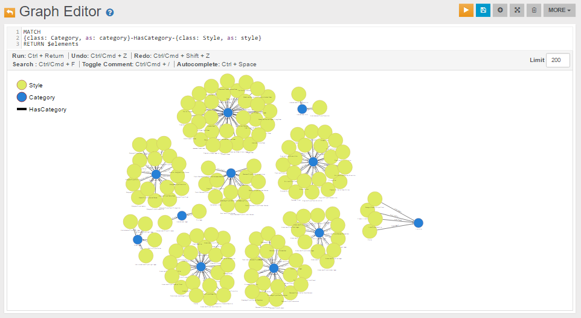
while the following is a visualization created for the same recordset using the library vis.js:

Tutorial: Importing the northwind Database from Neo4j
In this tutorial we will use the Neo4j to OrientDB Importer to import the Neo4j northwind example database into OrientDB.
For general information on the possible Neo4j to OrientDB migration strategies, please refer to the Import from Neo4j section.
Neo4j and Cypher are registered trademark of Neo Technology, Inc.
Preparing for the migration
Please download and install OrientDB:
$ wget https://repo1.maven.org/maven2/com/orientechnologies/orientdb-community-tp2/3.2.44/orientdb-community-tp2-3.2.43.tar.gz -O orientdb-community-tp2-3.2.44.tar.gz
$ tar xvf orientdb-community-tp2-3.2.44.tar.gzDownload and install the Neo4j to OrientDB Importer:
$ wget http://central.maven.org/maven2/com/orientechnologies/orientdb-neo4j-importer/3.2.44/orientdb-neo4j-importer-3.2.44.tar.gz
$ tar xfv orientdb-neo4j-importer-3.2.44.tar.gz -C orientdb-community-3.2.44 --strip-components=1 For further information on the OrientDB's installation, please refer to this section.
For further information on the Neo4j to OrientDB Importer installation, please refer to this section.
Starting the migration
Assuming that:
-
/home/santo/neo4j/neo4j-community-3.0.7/libis the full path to the directory that includes the Neo4j's libraries -
/home/santo/data/graph.db_northwindis the full path to the directory that contains the Neo4j's northwind database -
/home/santo/orientdb/orientdb-community-2.2.12/databases/northwind_importis the full path to the directory where you would like to migrate the northwind database -
that no Neo4j and OrientDB servers are running on those directories
you can import the northwind database with a command similar to the following:
./orientdb-neo4j-importer.sh \
-neo4jlibdir /home/santo/neo4j/neo4j-community-3.0.7/lib \
-neo4jdbdir /home/santo/neo4j/data/graph.db_northwind \
-odbdir /home/santo/orientdb/orientdb-community-2.2.12/databases/northwind_import
For further information on how to use the Neo4j to OrientDB Importer, please refer to this section.
Migration output
The following is the output that is written by the Neo4j to OrientDB Importer during the northwind database migration:
Neo4j to OrientDB Importer v.2.2.12-SNAPSHOT - Copyrights (c) 2016 OrientDB LTD
WARNING: 'o' option not found. Defaulting to 'false'.
Please make sure that there are no running servers on:
'/home/santo/neo4j/data/graph.db_northwind' (Neo4j)
and:
'/home/santo/orientdb/orientdb-community-2.2.12/databases/northwind_import' (OrientDB)
Initializing Neo4j...Done
Initializing OrientDB...Done
Importing Neo4j database:
'/home/santo/neo4j/data/graph.db_northwind'
into OrientDB database:
'/home/santo/orientdb/orientdb-community-2.2.12/databases/northwind_import'
Getting all Nodes from Neo4j and creating corresponding Vertices in OrientDB...
1035 OrientDB Vertices have been created (100% done)
Done
Creating internal Indices on property 'Neo4jNodeID' on all OrientDB Vertices Classes...
5 OrientDB Indices have been created (100% done)
Done
Getting all Relationships from Neo4j and creating corresponding Edges in OrientDB...
3139 OrientDB Edges have been created (100% done)
Done
Getting Constraints from Neo4j and creating corresponding ones in OrientDB...
0 OrientDB Indices have been created
Done
Getting Indices from Neo4j and creating corresponding ones in OrientDB...
5 OrientDB Indices have been created (100% done)
Done
Import completed!
Shutting down OrientDB...Done
Shutting down Neo4j...Done
===============
Import Summary:
===============
- Found Neo4j Nodes : 1035
-- With at least one Label : 1035
--- With multiple Labels : 0
-- Without Labels : 0
- Imported OrientDB Vertices : 1035 (100%)
- Found Neo4j Relationships : 3139
- Imported OrientDB Edges : 3139 (100%)
- Found Neo4j Constraints : 0
- Imported OrientDB Constraints (Indices created) : 0
- Found Neo4j (non-constraint) Indices : 5
- Imported OrientDB Indices : 5 (100%)
- Additional created Indices (on vertex properties 'Neo4jNodeID') : 5
- Total Import time: : 29 seconds
-- Initialization time : 7 seconds
-- Time to Import Nodes : 6 seconds (181.67 nodes/sec)
-- Time to Import Relationships : 7 seconds (459.79 rels/sec)
-- Time to Import Constraints and Indices : 4 seconds (1.21 indices/sec)
-- Time to create internal Indices (on vertex properties 'Neo4jNodeID') : 4 seconds (1.22 indices/sec)
Connecting to the newly imported Database
General information on how to connect to a newly imported database can be found in this section.
The following is a partial visualization of the northwind database done with the Graph Editor included in the OrientDB's Studio tool:
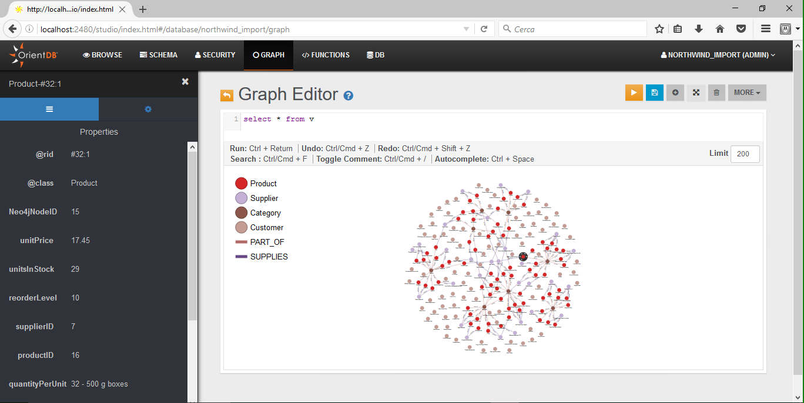
As you can see from the Limit field, the visualization is limited to 200 vertices.
The following, instead, is the graph returned by the following MATCH query (the query returns all nodes connected to the Order with orderID 10344):
MATCH {class: Order, where: (orderID = 10344)}--{as: n} RETURN $pathelements

From Studio's Schema Manager, you can check all imported Vertex Classes (node Labels in Neo4j), Edge Classes (Relationship Types in Neo4j), and Indexes:

V and E are special classes: they include all Vertices and all Edges.
 | This is a legacy strategy to migrate from Neo4j. The new strategy is to migrate using the Neo4j to OrientDB Importer. |
Tutorial: Importing the movie Database from Neo4j
In this tutorial we will follow the steps described in the Import from Neo4j using GraphML section to import the Neo4j's movie example database into OrientDB.
We will also provide some examples of queries using the OrientDB's MATCH syntax, making a comparison with the corresponding Neo4j's Cypher query language.
For general information on the possible Neo4j to OrientDB migration strategies, please refer to the Import from Neo4j section.
Neo4j and Cypher are registered trademark of Neo Technology, Inc.
Exporting from Neo4j
Assuming you have already downloaded and unpacked the Neo4j Shell Tools, and restarted the Neo4j Server, as described in the Section Exporting GraphML, you can export the movie database using neo4j-shell with a command like the following one:
D:\neo4j\neo4j-community-3.0.6\bin>neo4j-shell.bat
Welcome to the Neo4j Shell! Enter 'help' for a list of commands
NOTE: Remote Neo4j graph database service 'shell' at port 1337
neo4j-sh (?)$ export-graphml -t -o d:/movie.graphml
Wrote to GraphML-file d:/movies.graphml 0. 100%: nodes = 171 rels = 253 properties = 564 time 270 ms total 270 ms
In the example above the exported movie graph is stored under D:\movie.graphml.
Importing into OrientDB
In this tutorial we will import in OrientDB the file movie.graphml using the OrientDB's Console. For other GraphML import methods, please refer to the section Importing GraphML.
The OrientDB's Console output generated during the import process is similar to the following (note that first we create a movie database using the command CREATE DATABASE, and then we do the actual import using the command IMPORT DATABASE):
D:\orientdb\orientdb-enterprise-2.2.8\bin>console.bat
OrientDB console v.2.2.8-SNAPSHOT (build 2.2.x@r39259e190e16045fe1425b1c0485f8562fca055b; 2016-08-23 14:38:49+0000) www.orientdb.com
Type 'help' to display all the supported commands.
Installing extensions for GREMLIN language v.2.6.0
orientdb> CREATE DATABASE PLOCAL:D:/orientdb/orientdb-enterprise-2.2.8/databases/movie
Creating database [PLOCAL:D:/orientdb/orientdb-enterprise-2.2.8/databases/movie] using the storage type [PLOCAL]...
Database created successfully.
Current database is: PLOCAL:D:/orientdb/orientdb-enterprise-2.2.8/databases/movie
orientdb {db=movie}> IMPORT DATABASE D:/movie.graphml
Importing GRAPHML database from D:/movie.graphml with options ()...
Done: imported 171 vertices and 253 edges
orientdb {db=movie}>
As you can see from the output above, as a result of the import 171 vertices and 253 edges have been created in OrientDB. This is exactly the same number of nodes and relationships exported from Neo4j.
For more tips and tricks related to the import process, please refer to this section.
Query Comparison
Once the movie database has been imported into OrientDB, you may use several ways to access its data.
The MATCH syntax and the tool Studio can be used, for instance, in a similar way to the Neo4j's Cypher and Browser.
The following sections include a comparison of the Neo4j's Cypher and OrientDB's MATCH syntax for some queries that you can execute against the movie database.
Find the actor named "Tom Hanks"
Neo4j's Cypher:
MATCH (tom:Person {name: "Tom Hanks"})
RETURN tom
OrientDB's MATCH:
MATCH {class: Person, as: tom, where: (name = 'Tom Hanks')}
RETURN $pathElements
Find the movie with title "Cloud Atlas"
Neo4j's Cypher:
MATCH (cloudAtlas:Movie {title: "Cloud Atlas"})
RETURN cloudAtlas
OrientDB's MATCH:
MATCH {class: Movie, as: cloudAtlas, where: (title = 'Cloud Atlas')}
RETURN $pathElements
Find 10 people
Neo4j's Cypher:
MATCH (people:Person)
RETURN people.name
LIMIT 10
OrientDB's MATCH:
MATCH {class: Person, as: people}
RETURN people.name
LIMIT 10
Find the movies released in the 1990s
Neo4j's Cypher:
MATCH (nineties:Movie)
WHERE nineties.released > 1990 AND nineties.released < 2000
RETURN nineties.title
OrientDB's MATCH:
MATCH {class: Movie, as: nineties, WHERE: (released > 1990 AND released < 2000 )}
RETURN nineties.title
List all Tom Hanks movies
Neo4j's Cypher:
MATCH (tom:Person {name: "Tom Hanks"})-[:ACTED_IN]->(tomHanksMovies)
RETURN tom, tomHanksMovies
OrientDB's MATCH:
MATCH {class: Person, as: tom, where: (name = 'Tom Hanks')}-ACTED_IN->{as: tomHanksMovies}
RETURN $pathElements
Find out who directed "Cloud Atlas"
Neo4j's Cypher:
MATCH (cloudAtlas {title: "Cloud Atlas"})<-[:DIRECTED]-(directors)
RETURN directors.name
OrientDB's MATCH:
MATCH {class: Movie, as: cloudAtlas, where: (title = 'Cloud Atlas')}<-DIRECTED-{as: directors}
RETURN directors.name
Find Tom Hanks' co-actors
Neo4j's Cypher:
MATCH (tom:Person {name:"Tom Hanks"})-[:ACTED_IN]->(m)<-[:ACTED_IN]-(coActors)
RETURN DISTINCT coActors.name
OrientDB's MATCH:
MATCH {class: Person, as: tom, where: (name = 'Tom Hanks')}-ACTED_IN->{as: m}<-ACTED_IN-{class: Person,as: coActors}
RETURN coActors.name
Find how people are related to "Cloud Atlas"
Neo4j's Cypher:
MATCH (people:Person)-[relatedTo]-(:Movie {title: "Cloud Atlas"})
RETURN people.name, Type(relatedTo), relatedTo
OrientDB's MATCH:
MATCH {class: Person, as: people}--{as: m, where: (title = 'Cloud Atlas')}
RETURN $pathElements
General Information
This Chapter includes some General Information on OrientDB.
Supported Data Types
OrientDB supports several data types natively. Below is the complete table.
| #id | Type | SQL type | Description | Java type | Minimum Maximum | Auto-conversion from/to |
|---|---|---|---|---|---|---|
| 0 | Boolean | BOOLEAN | Handles only the values True or False | java.lang.Boolean or boolean | 0 1 | String |
| 1 | Integer | INTEGER | 32-bit signed Integers | java.lang.Integer or int | -2,147,483,648 +2,147,483,647 | Any Number, String |
| 2 | Short | SHORT | Small 16-bit signed integers | java.lang.Short or short | -32,768 32,767 | Any Number, String |
| 3 | Long | LONG | Big 64-bit signed integers | java.lang.Long or long | -263 +263-1 | Any Number, String |
| 4 | Float | FLOAT | Decimal numbers | java.lang.Float or float | 2-149 (2-2-23)*2127 | Any Number, String |
| 5 | Double | DOUBLE | Decimal numbers with high precision | java.lang.Double or double | 2-1074 (2-2-52)*21023 | Any Number, String |
| 6 | Datetime | DATETIME | Any date with the precision up to milliseconds. To know more about it, look at Managing Dates | java.util.Date | - 1002020303 | Date, Long, String |
| 7 | String | STRING | Any string as alphanumeric sequence of chars | java.lang.String | - - | - |
| 8 | Binary | BINARY | Can contain any value as byte array | byte[] | 0 2,147,483,647 | String |
| 9 | Embedded | EMBEDDED | The Record is contained inside the owner. The contained Record has no Record ID | ORecord | - - | ORecord |
| 10 | Embedded list | EMBEDDEDLIST | The Records are contained inside the owner. The contained records have no Record ID's and are reachable only by navigating the owner record | List<Object> | 0 41,000,000 items | String |
| 11 | Embedded set | EMBEDDEDSET | The Records are contained inside the owner. The contained Records have no Record ID and are reachable only by navigating the owner record | Set<Object> | 0 41,000,000 items | String |
| 12 | Embedded map | EMBEDDEDMAP | The Records are contained inside the owner as values of the entries, while the keys can only be Strings. The contained ords e no Record IDs and are reachable only by navigating the owner Record | Map<String, ORecord> | 0 41,000,000 items | Collection<? extends ORecord<?>>, String |
| 13 | Link | LINK | Link to another Record. It's a common one-to-one relationship | ORID, <? extends ORecord> | 1:-1 32767:2^63-1 | String |
| 14 | Link list | LINKLIST | Links to other Records. It's a common one-to-many relationship where only the Record IDs are stored | List<? extends ORecord | 0 41,000,000 items | String |
| 15 | Link set | LINKSET | Links to other Records. It's a common one-to-many relationship | Set<? extends ORecord> | 0 41,000,000 items | Collection<? extends ORecord>, String |
| 16 | Link map | LINKMAP | Links to other Records as value of the entries, while keys can only be Strings. It's a common One-to-Many Relationship. Only the Record IDs are stored | Map<String, | 0 41,000,000 items | String |
| 17 | Byte | BYTE | Single byte. Useful to store small 8-bit signed integers | java.lang.Byte or byte | -128 +127 | Any Number, String |
| 18 | Transient | TRANSIENT | Any value not stored on database | |||
| 19 | Date | DATE | Any date as year, month and day. To know more about it, look at Managing Dates | java.util.Date | - | Date, Long, String |
| 20 | Custom | CUSTOM | used to store a custom type providing the marshall and unmarshall methods | OSerializableStream | 0 X | - |
| 21 | Decimal | DECIMAL | Decimal numbers without rounding | java.math.BigDecimal | ? ? | Any Number, String |
| 22 | LinkBag | LINKBAG | List of Record IDs as spec RidBag | ORidBag | ? ? | - |
| 23 | Any | ANY | Not determinated type, used to specify Collections of mixed type, and null | - | - | - |
Schema
While OrientDb can work in a schema-less mode, you may find it necessary at times to enforce a schema on your data model. OrientDB supports both schema-full and schema-hybrid solutions.
In the case of schema-hybrid mode, you only set constraints for certain fields and leave the user to add custom fields to the record. This mode occurs at a class level, meaning that you can have an Employee class as schema-full and an EmployeeInformation class as schema-less.
- Schema-full Enables strict-mode at a class-level and sets all fields as mandatory.
- Schema-less Enables classes with no properties. Default is non-strict-mode, meaning that records can have arbitrary fields.
- Schema-hybrid Enables classes with some fields, but allows records to define custom fields. This is also sometimes called schema-mixed.
NOTE Changes to the schema are not transactional. You must execute these commands outside of a transaction.
You can access the schema through SQL or through the Java API. Examples here use the latter. To access the schema API in Java, you need the Schema instance of the database you want to use. For example,
OSchema schema = database.getMetadata().getSchema();
Class
OrientDB draws from the Object Oriented programming paradigm in the concept of the Class. A class is a type of record. In comparison to Relational database systems, it is most similar in conception to the table.
Classes can be schema-less, schema-full or schema-hybrid. They can inherit from other classes, shaping a tree of classes. In other words, a sub-class extends the parent class, inheriting all attributes.
Each class has its own clusters. By default, these clusters are logical, but they can also be physical. A given class must have at least one cluster defined as its default, but it can support multiple clusters. OrientDB writes new records into the default cluster, but always reads from all defined clusters.
When you create a new class, OrientDB creates a default physical cluster that uses the same name as the class, but in lowercase.
Creating Persistent Classes
Classes contain one or more properties. This mode is similar to the classical model of the Relational database, where you must define tables before you can begin to store records.
To create a persistent class in Java, use the createClass() method:
OClass account = database.getMetadata().getSchema().createClass("Account");
This method creates the class Account on the database. It simultaneously creates the physical cluster account, to provide storage for records in the class Account.
Getting Persistent Classes
With the new persistent class created, you may also need to get its contents.
To retrieve a persistent class in Java, use the getClass() method:
OClass account = database.getMetadata().getSchema().getClass("Account");
This method retrieves from the database the persistent class Account. If the query finds that the Account class does not exist, it returns NULL.
Dropping Persistent Classes
In the event that you no longer want the class, you can drop, or delete, it from the database.
To drop a persistent class in Java, use the OSchema.dropClass() method:
database.getMetadata().getSchema().dropClass("Account");
This method drops the class Account from your database. It does not delete records that belong to this class unless you explicitly ask it to do so:
database.command(new OCommandSQL("DELETE FROM Account")).execute();
database.getMetadata().getSchema().dropClass("Account");
Constraints
Working in schema-full mode requires that you set the strict mode at the class-level, by defining the setStrictMode() method to TRUE. In this case, records of that class cannot have undefined properties.
Properties
In OrientDB, a property is a field assigned to a class. For the purposes of this tutorial, consider Property and Field as synonymous.
Creating Class Properties
After you create a class, you can define fields for that class. To define a field, use the createProperty() method.
OClass account = database.getMetadata().getSchema().createClass("Account");
account.createProperty("id", OType.Integer);
account.createProperty("birthDate", OType.Date);
These lines create a class Account, then defines two properties id and birthDate. Bear in mind that each field must belong to one of the supported types. Here these are the integer and date types.
Dropping Class Properties
In the event that you would like to remove properties from a class you can do so using the dropProperty() method under OClass.
database.getMetadata().getSchema().getClass("Account").dropProperty("name");
When you drop a property from a class, it does not remove records from that class unless you explicitly ask for it, using the UPDATE... REMOVE statements. For instance,
database.getMetadata().getSchema().getClass("Account").dropProperty("name");
database.command(new OCommandSQL("UPDATE Account REMOVE name")).execute();
The first method drops the property from the class. The second updates the database to remove the property.
Relationships
OrientDB supports two types of relationships: referenced and embedded.
Referenced Relationships
In the case of referenced relationships, OrientDB uses a direct link to the referenced record or records. This allows the database to avoid the costly JOIN operations used by Relational databases.
customer
Record A -------------> Record B
CLASS=Invoice CLASS=Customer
RID=5:23 RID=10:2
In the example, Record A contains the reference to Record B in the property customer. Both records are accessible by any other records since each has a Record ID.
1:1 and n:1 Reference Relationships
In one to one and many to one relationships, the reference relationship is expressed using the LINK type. For instance.
OClass customer= database.getMetadata().getSchema().createClass("Customer");
customer.createProperty("name", OType.STRING);
OClass invoice = database.getMetadata().getSchema().createClass("Invoice");
invoice.createProperty("id", OType.INTEGER);
invoice.createProperty("date", OType.DATE);
invoice.createProperty("customer", OType.LINK, customer);
Here, records of the class Invoice link to a record of the class Customer, through the field customer.
1:n and n:n Reference Relationships.
In one to many and many to many relationships, OrientDB expresses the referenced relationship using collections of links.
LINKLISTAn ordered list of links.LINKSETAn unordered set of links, that does not accept duplicates.LINKMAPAn ordered map of links, with a string key. It does not accept duplicate keys.
For example,
OClass orderItem = db.getMetadata().getSchema().createClass("OrderItem");
orderItem.createProperty("id", OType.INTEGER);
orderItem.createProperty("animal", OType.LINK, animal);
OClass order = db.getMetadata().getSchema().createClass("Order");
order.createProperty("id", OType.INTEGER);
order.createProperty("date", OType.DATE);
order.createProperty("items", OType.LINKLIST, orderItem);
Here, you have two classes: Order and OrderItem and a 1:n referenced relationship is created between them.
Embedded Relationships
In the case of embedded relationships, OrientDB contains the relationship within the record. Embedded relationships are stronger than referenced relationships, but the embedded record does not have its own Record ID. Because of this, you cannot reference them directly through other records. The relationship is only accessible through the container record. If the container record is deleted, then the embedded record is also deleted.
address
Record A <>----------> Record B
CLASS=Account CLASS=Address
RID=5:23 NO RID!
Here, Record A contains the entirety of Record B in the property address. You can only reach Record B by traversing the container, Record A.
orientdb> SELECT FROM Account WHERE Address.city = 'Rome'
1:1 and n:1 Embedded Relationships
For one to one and many to one embedded relationships, OrientDB uses links of the EMBEDDED type. For example,
OClass address = database.getMetadata().getSchema().createClass("Address");
OClass account = database.getMetadata().getSchema().createClass("Account");
account.createProperty("id", OType.INTEGER);
account.createProperty("birthDate", OType.DATE);
account.createProperty("address", OType.EMBEDDED, address);
Here, records of the class Account embed records for the class Address.
1:n and n:n Embedded Relationships
In the case of one to many and many to many relationships, OrientDB sues a collection embedded link types:
EMBEDDEDLISTAn ordered list of records.EMBEDDEDSETAn unordered set of records. It doesn't accept duplicates.EMBEDDEDMAPAn ordered map of records as key-value pairs. It doesn't accept duplicate keys.
For example,
OClass orderItem = db.getMetadata().getSchema().createClass("OrderItem");
orderItem.createProperty("id", OType.INTEGER);
orderItem.createProperty("animal", OType.LINK, animal);
OClass order = db.getMetadata().getSchema().createClass("Order");
order.createProperty("id", OType.INTEGER);
order.createProperty("date", OType.DATE);
order.createProperty("items", OType.EMBEDDEDLIST, orderItem);
This establishes a one to many relationship between the classes Order and OrderItem.
Constraints
OrientDB supports a number of constraints for each field. For more information on setting constraints, see the ALTER PROPERTY command.
- Minimum Value:
setMin()The field accepts a string, because it works also for date ranges. - Maximum Value:
setMax()The field accepts a string, because it works also for date rangers. - Mandatory:
setMandatory()This field is required. - Read Only:
setReadonly()This field cannot update after being created. - Not Null:
setNotNull()This field cannot be null. - Unique: This field doesn't allow duplicates or speedup searches.
- Regex: This field must satisfy Regular Expressions
For example,
profile.createProperty("nick", OType.STRING).setMin("3").setMax("30").setMandatory(true).setNotNull(true);
profile.createIndex("nickIdx", OClass.INDEX_TYPE.UNIQUE, "nick"); // Creates unique constraint
profile.createProperty("name", OType.STRING).setMin("3").setMax("30");
profile.createProperty("surname", OType.STRING).setMin("3").setMax("30");
profile.createProperty("registeredOn", OType.DATE).setMin("2010-01-01 00:00:00");
profile.createProperty("lastAccessOn", OType.DATE).setMin("2010-01-01 00:00:00");
Indices as Constraints
To define a property value as unique, use the UNIQUE index constraint. For example,
profile.createIndex("EmployeeId", OClass.INDEX_TYPE.UNIQUE, "id");
You can also constrain a group of properties as unique by creating a composite index made from multiple fields. For instance,
profile.createIndex("compositeIdx", OClass.INDEX_TYPE.NOTUNIQUE, "name", "surname");
For more information about indexes look at Index guide.
Inheritance
Unlike many Object-relational mapping tools, OrientDB does not split documents between different classes. Each document resides in one or a number of clusters associated with its specific class. When you execute a query against a class that has subclasses, OrientDB searches the clusters of the target class and all subclasses.
Declaring Inheritance in Schema
In developing your application, bear in mind that OrientDB needs to know the class inheritance relationship. This is an abstract concept that applies to both POJO's and Documents.
For example,
OClass account = database.getMetadata().getSchema().createClass("Account");
OClass company = database.getMetadata().getSchema().createClass("Company").setSuperClass(account);
Using Polymorphic Queries
By default, OrientDB treats all queries as polymorphic. Using the example above, you can run the following query from the console:
orientdb> SELECT FROM Account WHERE name.toUpperCase() = 'GOOGLE'
This query returns all instances of the classes Account and Company that have a property name that matches Google.
How Inheritance Works
Consider an example, where you have three classes, listed here with the cluster identifier in the parentheses.
Account(10) <|--- Company (13) <|--- OrientTechnologiesGroup (27)
By default, OrientDB creates a separate cluster for each class. It indicates this cluster by the defaultClusterId property in the class OClass and indicates the cluster used by default when not specified. However, the class OClass has a property clusterIds, (as int[]), that contains all the clusters able to contain the records of that class. clusterIds and defaultClusterId are the same by default.
When you execute a query against a class, OrientDB limits the result-sets to only the records of the clusters contained in the clusterIds property. For example,
orientdb> SELECT FROM Account WHERE name.toUpperCase() = 'GOOGLE'
This query returns all the records with the name property set to GOOGLE from all three classes, given that the base class Account was specified. For the class Account, OrientDB searches inside the clusters 10, 13 and 27, following the inheritance specified in the schema.
Concurrency
OrientDB uses an optimistic approach to concurrency. Optimistic Concurrency Control, or OCC assumes that multiple transactions can compete frequently without interfering with each other. It's very important that you don't share instances of databases, graphs, records, documents, vertices and edges between threads because they are non thread-safe. For more information look at Multi-Threading.
How does it work?
Consider the following scenario, where 2 clients, A and B, want to update the amount of a bank account:
Client A Client B
| |
(t1) |
Read record #13:22 |
amount is 100 (t2)
| Read record #13:22
(t3) amount is 100
Update record #13:22 |
set amount = amount + 10 (t4)
| Update record #13:22
| set amount = amount + 10
| |
Client A (t1) and B (t2) read the record #13:22 and both receive the last amount as USD 100. Client A updates the amount by adding USD 10 (t3), then the Client B is trying to do the same thing: updates the amount by adding USD 10. Here is the problem: Client B is doing an operation based on current information: the amount was USD 100. But at the moment of update, such information is changed (by Client A on t3), so the amount is USD 110 in the database. Should the update succeed by setting the new amount to USD 120?
In some cases this could be totally fine, in others not. It depends by the use case. For example, in your application there could be a logic where you are donating USD 10 to all the accounts where the amount is <=100. The owner of the account behind the record #13:22 is more lucky than the others, because it receives the donation even if it has USD 110 at that moment.
For this reason in OrientDB when this situation happens a OConcurrentModificationException exception is thrown, so the application can manage it properly. Usually the 3 most common strategies to handle this exceptions are:
- Retry doing the same operation by reloading the record #13:22 first with the updated amount
- Ignore the change, because the basic condition is changed
- Propagate the exception to the user, so he can decide what to do in this case
Optimistic Concurrency in OrientDB
Optimistic concurrency control is used in environments with low data contention. That is, where conflicts are rare and transactions can complete without the expense of managing locks and without having transactions wait for locks to clear. This means a reduced throughput over other concurrency control methods.
OrientDB uses OCC for both Atomic Operations and Transactions.
Atomic Operations
OrientDB supports Multi-Version Concurrency Control, or MVCC, with atomic operations. This allows it to avoid locking server side resources. At the same time, it checks the version in the database. If the version is equal to the record version contained in the operation, the operation is successful. If the version found is higher than the record version contained in the operation, then another thread or user has already updated the same record. In this case, OrientDB generates an OConcurrentModificationException exception.
Given that behavior of this kind is normal on systems that use optimistic concurrency control, developers need to write concurrency-proof code. Under this design, the application retries transactions x times before reporting the error. It does this by catching the exception, reloading the affected records and attempting to update them again. For example, consider the code for saving a document,
int maxRetries = 10;
List<ODocument> result = db.query("SELECT FROM Client WHERE id = '39w39D32d2d'");
ODocument address = result.get(0);
for (int retry = 0; retry < maxRetries; ++retry) {
try {
// LOOKUP FOR THE INVOICE VERTEX
address.field( "street", street );
address.field( "zip", zip );
address.field( "city", cityName );
address.field( "country", countryName );
address.save();
// EXIT FROM RETRY LOOP
break;
}
catch( ONeedRetryException e ) {
// IF SOMEONE UPDATES THE ADDRESS DOCUMENT
// AT THE SAME TIME, RETRY IT.
}
}
Transactions
OrientDB supports optimistic transactions. The database does not use locks when transactions are running, but when the transaction commits, each record (document or graph element) version is checked to see if there have been updates from another client. For this reason, you need to code your applications to be concurrency-proof.
Optimistic concurrency requires that you retire the transaction in the event of conflicts. For example, consider a case where you want to connect a new vertex to an existing vertex:
int maxRetries = 10;
for (int retry = 0; retry < maxRetries; ++retry) {
try {
// LOOKUP FOR THE INVOICE VERTEX
Vertex invoice = graph.getVertices("invoiceId", 2323);
// CREATE A NEW ITEM
Vertex invoiceItem = graph.addVertex("class:InvoiceItem");
invoiceItem.field("price", 1000);
// ADD IT TO THE INVOICE
invoice.addEdge(invoiceItem);
graph.commit();
// EXIT FROM RETRY LOOP
break;
}
catch( OConcurrentModificationException e ) {
// SOMEONE HAS UPDATED THE INVOICE VERTEX
// AT THE SAME TIME, RETRY IT
}
}
Concurrency Level
Before v2.2.4, transactions acquire an exclusive lock on the storage, so no matter if you have 1 or 100 cores, the execution was always serialized. With 2.2.4 and further, transactions are executed in parallel only if they involve different clusters and indexes.
In order to use the transaction parallelism, the domain has to be slightly changed by using the OrientDB inheritance by creating a base class and multiple sub-classes, one per core. Example of creating the class Log with 4 sub-classes (4 cores) and the indexed property 'id':
CREATE CLASS Log ABSTRACT
CREATE CLASS Log_1 EXTENDS Log
CREATE PROPERTY Log_1.id STRING
CREATE INDEX Log1Id ON Log_1(id) UNIQUE_HASHINDEX
CREATE CLASS Log_2 EXTENDS Log
CREATE PROPERTY Log_2.id STRING
CREATE INDEX Log1Id ON Log_2(id) UNIQUE_HASHINDEX
CREATE CLASS Log_3 EXTENDS Log
CREATE PROPERTY Log_3.id STRING
CREATE INDEX Log1Id ON Log_3(id) UNIQUE_HASHINDEX
CREATE CLASS Log_4 EXTENDS Log
CREATE PROPERTY Log_4.id STRING
CREATE INDEX Log1Id ON Log_4(id) UNIQUE_HASHINDEX
After creating multiple sub-classes, you should bind your threads/client (it depends, respectively, if you are working in embedded mode or client/server) to a different sub-class. For example with 4 cores, you have 4 sub-classes (like above) and this could be the binding for the class "Log":
- Thread/Client 1 -> Class Log_1
- Thread/Client 2 -> Class Log_2
- Thread/Client 3 -> Class Log_3
- Thread/Client 4 -> Class Log_4
If you are working with graphs, it's a good practice to apply the same rule to both vertex and edge classes. In this example we have 4 cores, so 4 clusters per vertex class and 4 clusters per edge class:
- Thread/Client 1 -> Classes User_1 and City_1 for vertices and Class Born_1 for edges
- Thread/Client 2 -> Classes User_2 and City_2 for vertices and Class Born_2 for edges
- Thread/Client 3 -> Classes User_3 and City_3 for vertices and Class Born_3 for edges
- Thread/Client 4 -> Classes User_4 and City_4 for vertices and Class Born_4 for edges
Now look at these 2 SQL scripts:
Client 1:
BEGIN
LET v1 = CREATE VERTEX User_1 SET name = 'Luca'
LET v2 = CREATE VERTEX City_1 SET name = 'Rome'
CREATE EDGE Born_1 FROM $v1 TO $v2
COMMIT RETRY 10
Client 2:
BEGIN
LET v1 = CREATE VERTEX User_2 SET name = 'Luca'
LET v2 = CREATE VERTEX City_2 SET name = 'Rome'
CREATE EDGE Born_2 FROM $v1 TO $v2
COMMIT RETRY 10
In this case the two transactions go in parallel with no conflict, because they work on different classes and indexes.
Thanks to the OrientDB polymorphism, sub-classes are instance of the abstract class, so you can still execute queries by using the base class as target and OrientDB will consider all the sub-classes, so your model remains clean at application level. Example:
SELECT * FROM User WHERE name = 'Luca'
But if you already know that Luca if exists is in the 2nd partition of the User class (User_2 sub class), you can also execute:
SELECT * FROM User_2 WHERE name = 'Luca'
When it's possible to pre-determine there the record is saved, using the sub-class as target has better performance.
Concurrency when Adding Edges
Consider the case where multiple clients attempt to add edges on the same vertex. OrientDB could throw the OConcurrentModificationException exception. This occurs because collections of edges are kept on vertices, meaning that, every time OrientDB adds or removes an edge, both vertices update and their versions increment. You can avoid this issue by using RIDBAG Bonsai structure, which are never embedded, so the edge never updates the vertices.
To use this configuration at run-time, before launching OrientDB, use this code:
OGlobalConfiguration.RID_BAG_EMBEDDED_TO_SBTREEBONSAI_THRESHOLD.setValue(-1);
Alternatively, you can set a parameter for the Java virtual-machine on startup, or even at run-time, before OrientDB is used:
$ java -DridBag.embeddedToSbtreeBonsaiThreshold=-1
 | While running in distributed mode SBTrees are not supported. If using a distributed database then you must set ridBag.embeddedToSbtreeBonsaiThreshold = Integer.MAX_VALUEto avoid replication errors. |
|---|
Troubleshooting
Reduce Transaction Size
On occasion, OrientDB throws the OConcurrentModificationException exception even when you concurrently update the first element. In particularly large transactions, where you have thousands of records involved in a transaction, one changed record is enough to roll the entire process back with an OConcurrentModificationException exception.
To avoid issues of this kind, if you plan to update many elements in the same transaction with high-concurrency on the same vertices, a best practice is to reduce the transaction size.
Indexes
OrientDB supports five index algorithms:
- SB-Tree Index Provides a good mix of features available from other index types, good for general use. It is durable, transactional and supports range queries. It is the default index type.
- Hash Index Provides fast lookup and is very light on disk usage. It is durable and transactional, but does not support range queries. It works like a HashMap, which makes it faster on punctual lookups and it consumes less resources than other index types.
- Auto Sharding Index Provides an implementation of a DHT. It is durable and transactional, but does not support range queries. (Since v2.2)
- Lucene Full Text Index Provides good full-text indexes, but cannot be used to index other types. It is durable, transactional and supports range queries.
- Lucene Spatial Index Provides good spatial indexes, but cannot be used to index other types. It is durable, transactional and supports range queries.
Understanding Indexes
OrientDB can handle indexes in the same manner as classes, using the SQL language and prefixing the name with index: followed by the index name. An index is like a class with two properties:
keyThe index key.ridThe Record ID, which points to the record associated with the key.
Index Target
OrientDB can use two methods to update indexes:
-
Automatic Where the index is bound to schema properties. (For example,
User.id.) If you have a schema-less database and you want to create an automatic index, then you need to create the class and the property before using the index. -
Manual Where the index is handled by the application developer, using the Java API and SQL commands (see below). You can use them as Persistent Maps, where the entry's value are the records pointed to by the index.
You can rebuild automatic indexes using the REBUILD INDEX command.
Index Types
When you create an index, you create it as one of several available algorithm types. Once you create an index, you cannot change its type. OrientDB supports four index algorithms and several types within each. You also have the option of using any third-party index algorithms available through plugins.
- SB-Tree Algorithm
UNIQUEThese indexes do not allow duplicate keys. For composite indexes, this refers to the uniqueness of the composite keys.NOTUNIQUEThese indexes allow duplicate keys.FULLTEXTThese indexes are based on any single word of text. You can use them in queries through theCONTAINSTEXToperator.DICTIONARYThese indexes are similar to those that useUNIQUE, but in the case of duplicate keys, they replaces the existing record with the new record.
- HashIndex Algorithm
UNIQUE_HASH_INDEXThese indexes do not allow duplicate keys. For composite indexes, this refers to the uniqueness of the composite keys. Available since version 1.5.x.NOTUNIQUE_HASH_INDEXThese indexes allow duplicate keys. Available since version 1.5.x.FULLTEXT_HASH_INDEXThese indexes are based on any single word of text. You can use them in queries through theCONTAINSTEXToperator. Available since version 1.5.x.DICTIONARY_HASH_INDEXThese indexes are similar to those that useUNIQUE_HASH_INDEX, but in cases of duplicate keys, they replaces the existing record with the new record. Available since version 1.5.x.
- HashIndex Algorithm (Since v2.2)
UNIQUE_HASH_INDEXThese indexes do not allow duplicate keys. For composite indexes, this refers to the uniqueness of the composite keys.NOTUNIQUE_HASH_INDEXThese indexes allow duplicate keys.
-
- Lucene Engine
FULLTEXTThese indexes use the Lucene engine to index string content. You can use them in queries with theLUCENEoperator.SPATIALThese indexes use the Lucene engine to index geospatial coordinates.
Every database has a default manual index type DICTIONARY, which uses strings as keys. You may find this useful in handling the root records of trees and graphs, and handling singleton records in configurations.
Indexes and Null Values
Starting from v2.2, Indexes do not ignore NULL values, but they are indexes as any other values. This means that if you have a UNIQUE index, you cannot have multiple NULL keys. This applies only to the new indexes, opening a database with indexes previously created, will all ignore NULL by default.
To create an index that expressly ignore nulls (like the default with v2.1 and earlier), look at the following examples by using SQL or Java API.
SQL:
orientdb> CREATE INDEX addresses ON Employee (address) NOTUNIQUE METADATA {ignoreNullValues: true}
And Java API:
schema.getClass("Employee").getProperty("address").createIndex(OClass.INDEX_TYPE.NOTUNIQUE, new ODocument().field("ignoreNullValues",true));
Indexes and Composite Keys
Operations that work with indexes also work with indexes formed from composite keys. By its nature, a composite key is a collection of values, so, syntactically, it is a collection.
For example, consider a case where you have a class Book, indexed by three fields: author, title and publicationYear. You might use the following query to look up an individual book:
orientdb> SELECT FROM INDEX:books WHERE key = ["Donald Knuth", "The Art of Computer
Programming", 1968]
Alternatively, you can look for books over a range of years with the field publicationYear:
orientdb> SELECT FROM INDEX:books WHERE key BETWEEN ["Donald Knuth", "The Art of
Computer Programming", 1960] AND ["Donald Knuth", "The Art of Computer
Programming", 2000]
Partial Match Searches
Occasionally, you may need to search an index record by several fields of its composite key. In these partial match searches, the remaining fields with undefined values can match any value in the result.
Only use composite indexes for partial match searches when the declared fields in the composite index are used from left to right. For instance, from the example above searching only title wouldn't work with a composite index, since title is the second value. But, you could use it when searching author and title.
For example, consider a case where you don't care when the books in your database were published. This allows you to use a somewhat different query, to return all books with the same author and title, but from any publication year.
orientdb> SELECT FROM INDEX:books WHERE key = ["Donald Knuth", "The Art of Computer
Programming"]
In the event that you also don't know the title of the work you want, you can further reduce it to only search all books with the same author.
orientdb> SELECT FROM INDEX:books WHERE key = ["Donald Knuth"]
Or, the equal,
orientdb> SELECT FROM INDEX:books WHERE key = "Donald Knuth"
Range Queries
Not all the indexes support range queries (check above). In the case of range queries, the field subject to the range must be the last one, (that is, the one on the far right). For example,
orientdb> SELECT FROM INDEX:books WHERE key BETWEEN ["Donald Knuth", "The Art of
Computer Programming", 1900] AND ["Donald Knuth", "The Art of Computer
Programming", 2014]
Operations against Indexes
Once you have a good understanding of the theoretical side of what indexes are and some of basic concepts that go into their use, it's time to consider the practical aspects of creating and using indexes with your application.
Creating Indexes
When you have created the relevant classes that you want to index, create the index. To create an automatic index, bound to a schema property, use the ON section or use the name in the <class>.<property> notation.
Syntax:
CREATE INDEX <name> [ON <class-name> (prop-names)] <type> [<key-type>]
[METADATA {<metadata>}]
-
<name>Provides the logical name for the index. You can also use the<class.property>notation to create an automatic index bound to a schema property. In this case, for<class>use the class of the schema and<property>the property created in the class.Bear in mind that this means case index names cannot contain the period (
.) symbol, as OrientDB would interpret the text after as a property. -
<class-name>Provides the name of the class that you are creating the automatic index to index. This class must already exist in the database. -
<prop-names>Provides a comma-separated list of properties, which you want the automatic index to index. These properties must already exist in the schema.If the property belongs to one of the Map types, (such as
LINKMAP, orEMBEDDEDMAP), you can specify the keys or values to use in generating indexes. You can do this with theBY KEYorBY VALUEexpressions, if nothing is specified, these keys are used during index creation. -
<type>Provides the algorithm and type of index that you want to create. For information on the supported index types, see Index Types. -
<key-type>Provides the optional key type. With automatic indexes, the key type OrientDB automatically determines the key type by reading the target schema property where the index is created. With manual indexes, if not specified, OrientDB automatically determines the key type at run-time, during the first insertion by reading the type of the class. -
<metadata>Provides a JSON representation
Examples:
-
Creating custom indexes, deprecated since 3.0:
orientdb>
CREATE INDEX mostRecentRecords UNIQUE date -
Creating another index for the property
idof the classUser:orientdb>
CREATE PROPERTY User.id BINARYorientdb>CREATE INDEX indexForId ON User (id) UNIQUE -
Creating indexes for property
thumbson classMovie:orientdb>
CREATE INDEX thumbsAuthor ON Movie (thumbs) UNIQUEorientdb>CREATE INDEX thumbsAuthor ON Movie (thumbs BY KEY) UNIQUEorientdb>CREATE INDEX thumbsValue on Movie (thumbs BY VALUE) UNIQUE -
Creating composite indexes:
orientdb>
CREATE PROPERTY Book.author STRINGorientdb>CREATE PROPERTY Book.title STRINGorientdb>CREATE PROPERTY Book.publicationYears EMBEDDEDLIST INTEGERorientdb>CREATE INDEX books ON Book (author, title, publicationYears) UNIQUE
For more information on creating indexes, see the CREATE INDEX command.
Dropping Indexes
In the event that you have an index that you no longer want to use, you can drop it from the database. This operation does not remove linked records.
Syntax:
DROP INDEX <name>
<name>provides the name of the index you want to drop.
For more information on dropping indexes, see the DROP INDEX command.
Querying Indexes
When you have an index created and in use, you can query records in the index using the SELECT command.
Syntax:
SELECT FROM INDEX:<index-name> WHERE key = <key>
Example:
-
Selecting from the index
dictionarywhere the key matches toLuke:orientdb>
SELECT FROM INDEX:dictionary WHERE key='Luke'
Case-insensitive Matching with Indexes
In the event that you would like the index to use case-insensitive matching, set the COLLATE attribute of the indexed properties to ci. For instance,
orientdb> CREATE INDEX OUser.name ON OUser (name COLLATE ci) UNIQUE
Inserting Index Entries
You can insert new entries into the index using the key and rid pairings.
Syntax:
INSERT INTO INDEX:<index-name> (key,rid) VALUES (<key>,<rid>)
Example:
-
Inserting the key
Lukeand Record ID#10:4into the indexdictionary:orientdb>
INSERT INTO INDEX:dictionary (key, rid) VALUES ('Luke', #10:4)
Querying Index Ranges
In addition to querying single results from the index, you can also query a range of results between minimum and maximum values. Bear in mind that not all index types support this operation.
Syntax:
SELECT FROM INDEX:<index-name> WHERE key BETWEEN <min> AND <max>
Example:
-
Querying from the index
coordinatesand range between10.3and10.7:orientdb>
SELECT FROM INDEX:coordinates WHERE key BETWEEN 10.3 AND 10.7
Removing Index Entries
You can delete entries by passing the key and rid values. This operation returns TRUE if the removal was successful and FALSE if the entry wasn't found.
Syntax:
DELETE FROM INDEX:<index-name> WHERE key = <key> AND rid = <rid>
Example:
-
Removing an entry from the index
dictionary:orientdb>
DELETE FROM INDEX:dictionary WHERE key = 'Luke' AND rid = #10:4
Removing Index Entries by Key
You can delete all entries from the index through the requested key.
Syntax:
DELETE FROM INDEX:<index-name> WHERE key = <key>
Example:
-
Delete entries from the index
addressbookwhee the key matches toLuke:orientdb>
DELETE FROM INDEX:addressbook WHERE key = 'Luke'
Removing Index Entries by RID
You can remove all index entries to a particular record by its record ID.
Syntax:
DELETE FROM INDEX:<index-name> WHERE rid = <rid>
Example:
-
Removing entries from index
dictionarytied to the record ID#10:4:orientdb>
DELETE FROM INDEX:dictionary WHERE rid = #10:4
Counting Index Entries
To see the number of entries in a given index, you can use the COUNT() function.
Syntax:
SELECT COUNT(*) AS size FROM INDEX:<index-name>
Example:
-
Counting the entries on the index
dictionary:orientdb>
SELECT COUNT(*) AS size FROM INDEX:dictionary
Querying Keys from Indexes
You can query all keys in an index using the SELECT command.
Syntax:
SELECT key FROM INDEX:<index-name>
Example:
-
Querying the keys in the index
dictionary:orientdb>
SELECT key FROM INDEX:dictionary
Querying Index Entries
You can query for all entries on an index as key and rid pairs.
Syntax:
SELECT key, value FROM INDEX:<index-name>
Example:
-
Querying the
key/ridpairs from the indexdictionary:orientdb>
SELECT key, value FROM INDEX:dictionary
Clearing Indexes
Remove all entries from an index. After running this command, the index is empty.
Syntax:
DELETE FROM INDEX:<index-name>
Example:
-
Removing all entries from the index
dictionary:orientdb>
DELETE FROM INDEX:dictionary
Query the available indexes
To access to the indexes, you can use SQL.
Create your index engine
Here you can find a guide how to create a custom index engine.
SB-Tree Index Algorithm
This indexing algorithm provides a good mix of features, similar to the features available from other index types. It is good for general use and is durable, transactional and supports range queries. There are four index types that utilize the SB-Tree index algorithm:
UNIQUEDoes not allow duplicate keys, fails when it encounters duplicates.NOTUNIQUEDoes allow duplicate keys.FULLTEXTIndexes to any single word of text.DICTIONARYDoes not allow duplicate keys, overwrites when it encounters duplicates.
For more information on
FULLTEXT_HASH_INDEX, see FullText Index.
The SB-Tree index algorithm is based on the B-Tree index algorithm. It has been adapted with several optimizations, which relate to data insertion and range queries. As is the case with all other tree-based indexes, SB-Tree index algorithm experiences log(N) complexity, but the base to this logarithm is about 500.
NOTE: There is an issue in the replacement of indexes based on B-Tree with those based on COLA Tree to avoid slowdowns introduced by random I/O operations. For more information see Issue #1756.
Hash Index Algorithm
This indexing algorithm provides a fast lookup and is very light on disk usage. It is durable and transactional, but does not support range queries. It is similar to a HashMap, which makes it faster on punctual lookups and it consumes less resources than other index types. The Hash index algorithm supports four index types, which have been available since version 1.5.x:
UNIQUE_HASH_INDEXDoes not allow duplicate keys, it fails when it encounters duplicates.NOTUNIQUE_HASH_INDEXDoes allow duplicate keys.FULLTEXT_HASH_INDEXIndexes to any single word.DICTIONARYDoes not allow duplicate keys, it overwrites when it encounters duplicates.
For more information on
FULLTEXT_HASH_INDEX, see FullText Index.
Hash indexes are able to perform index read operations in one I/O operation and write operations in a maximum of three I/O operations. The Hash Index algorithm is based on the Extendible Hashing algorithm. Despite not providing support for range queries, it is noticeably faster than SB-Tree Index Algorithms, (about twice as fast when querying through ten million records).
NOTE: There is an issue relating to the enhancement of Hash indexes to avoid slowdowns introduced by random I/O operations using LSM Tree approaches. For more information, see Issue #1757.
Auto Sharding Index Algorithm
(Since v2.2)
This indexing algorithm is based on the DHT concept, where they keys are stored on different partition, based on the Murmur3 hash function.
Auto Sharding Index supports the following index types:
UNIQUE_HASH_INDEXDoes not allow duplicate keys, it fails when it encounters duplicates.NOTUNIQUE_HASH_INDEXDoes allow duplicate keys.
Under the hood, this index creates multiple Hash Indexes, one per cluster. So if you have 8 clusters for the class "Employee", this index will create, at the beginning, 8 Hash Indexes.
Since this index is based on the Hash Index, it's able to perform index read operations in one I/O operation and write operations in a maximum of three I/O operations. The Hash Index algorithm is based on the Extendible Hashing algorithm. Despite not providing support for range queries, it is noticeably faster than SB-Tree Index Algorithms, (about twice as fast when querying through ten million records).
Usage
Create an index by passing "AUTOSHARDING" as index engine:
final OClass cls = db.createClass("Log");
cls.createProperty("key", OType.LONG);
cls.createIndex("idx_LogKey", OClass.INDEX_TYPE.UNIQUE.toString(),
(OProgressListener) null, (ODocument) null, "AUTOSHARDING", new String[] { "key" });
Performance
On multi-core hw, using this index instead of Hash Index gives about +50% more throughput on insertion on a 8 cores machine.
Distributed
The fully distributed version of this index will be supported in v3.0. In v2.2 each node has own copy of the index with all the partitions.
Internals
This is the algorithm for the put(key,value):
int partition = Murmur3_hash(key) % partitions;
getSubIndex(partition).put(key,value);
This is for the value = get(key):
int partition = Murmur3_hash(key) % partitions;
return getSubIndex(partition).get(key);
FullText Indexes
The SB-Tree index algorithm provides support for FullText indexes. These indexes allow you to index text as a single word and its radix. FullText indexes are like having a search engine on your database.
NOTE: Bear in mind that there is a difference between
FULLTEXTwithout theLUCENEoperator, which uses a FullText index with the SB-Tree index algorithm andFULLTEXTwith theLUCENEoperator, which uses a FullText index through the Lucene Engine.For more information on the latter, see Lucene FullText Index.
Creating FullText Indexes
If you want to create an index using the FullText SB-Tree index algorithm, you can do so using the CREATE INDEX command.
orientdb> CREATE INDEX City.name ON City(name) FULLTEXT
This creates a FullText index on the property name of the class City, using the default configuration.
FullText Index Parameters
In the event that the default FullText Index configuration is not sufficient to your needs, there are a number of parameters available to fine tune how it generates the index.
| Parameter | Default | Description |
|---|---|---|
indexRadix | TRUE | Word prefixes will be also index |
ignoreChars | " | Chars to skip when indexing |
separatorChars | \r\n\t:;,.|+*/\=!?[](.md) | |
minWordLength | 3 | Minimum word length to index |
stopWords | the in a at as and or for his her him this that what which while up with be was were is | Stop words excluded from indexing |
To configure a FullText Index, from version 1.7 on, you can do so through the OrientDB console or the Java API. When configuring the index from the console, use the CREATE INDEX command with the METADATA operator.
orientdb> CREATE INDEX City.name ON City(name) FULLTEXT METADATA
{"indexRadix": true, "ignoreChars": "&", "separatorChars": " |()",
"minWordLength": 4, "stopWords": ["the", "of"]}
Alternatively, you can configure the index in Java.
OClass city = db.getClass("City");
ODocument metadata = new ODocument();
metadata.field("indexRadix", true);
metadata.field("stopWords", Arrays.asList(new String[] { "the", "in", "a", "at" }));
metadata.field("separatorChars", " :;?[](.md)");
metadata.field("ignoreChars", "$&");
metadata.field("minWordLength", 5);
city.createIndex("City.name", "FULLTEXT", null, metadata, null, new String[] { "name" });
Lucene FullText Index
In addition to the standard FullText Index, which uses the SB-Tree index algorithm, you can also create FullText indexes using the Lucene Engine . Apache LuceneTM is a high-performance, full-featured text search engine library written entirely in Java. Check the Lucene documentation for a full overview of its capabilities.
How Lucene's works?
Let's look at a sample corpus of five documents:
- My sister is coming for the holidays.
- The holidays are a chance for family meeting.
- Who did your sister meet?
- It takes an hour to make fudge.
- My sister makes awesome fudge.
What does Lucene do? Lucene is a full text search library. Search has two principal stages: indexing and retrieval.
During indexing, each document is broken into words, and the list of documents containing each word is stored in a list called the postings list. The posting list for the word my is:
my --> 1,5
Posting list for others terms:
fudge --> 4,5
sister --> 1,2,3,5
fudge --> 4,5
The index consists of all the posting lists for the words in the corpus. Indexing must be done before retrieval, and we can only retrieve documents that were indexed.
Retrieval is the process starting with a query and ending with a ranked list of documents. Say the query is "my fudge". In order to find matches for the query, we break it into the individual words, and go to the posting lists. The full list of documents containing the keywords is [1,4,5]. Note that the query is broken into words (terms) and each term is matched with the terms in the index. Lucene's default operator is OR, so it retrieves the documents tha contain my OR fudge. If we want to retrieve documents that contain both my and fudge, rewrite the query: "+my +fudge".
Lucene doesn't work as a LIKE operator on steroids, it works on single terms. Terms are produced analyzing the provided text, so the right analyzer should be configured. On the other side, it offers a complete query language, well documented here:
Index creation
To create an index based on Lucene
CREATE INDEX ON (prop-names) FULLTEXT ENGINE LUCENE [{json metadata}] The following SQL statement will create a FullText index on the property name for the class City, using the Lucene Engine.
CREATE INDEX City.name ON City(name) FULLTEXT ENGINE LUCENE
Indexes can also be created on n-properties. For example, create an index on the properties name and description on the class City.
CREATE INDEX City.name_description ON City(name, description)
FULLTEXT ENGINE LUCENEWhen multiple properties should be indexed, define a single multi-field index over the class. A single multi-field index needs less resources, such as file handlers. Moreover, it is easy to write better Lucene queries. The default analyzer used by OrientDB when a Lucene index is created is the StandardAnalyzer. The StandardAnalyzer usually works fine with western languages, but Lucene offers analyzer for different languages and use cases.
Two minutes tutorial
Open studio or console and create a sample dataset:
CREATE CLASS Item;
CREATE PROPERTY Item.text STRING;
CREATE INDEX Item.text ON Item(text) FULLTEXT ENGINE LUCENE;
INSERT INTO Item (text) VALUES ('My sister is coming for the holidays.');
INSERT INTO Item (text) VALUES ('The holidays are a chance for family meeting.');
INSERT INTO Item (text) VALUES ('Who did your sister meet?');
INSERT INTO Item (text) VALUES ('It takes an hour to make fudge.');
INSERT INTO Item (text) VALUES ('My sister makes awesome fudge.');
Search all documents that contain sister:
SELECT FROM Item WHERE SEARCH_CLASS("sister") = trueSearch all documents that contain sister AND coming:
SELECT FROM Item WHERE SEARCH_CLASS("+sister +coming") = trueSearch all documents that contain sister but NOT coming:
SELECT FROM Item WHERE SEARCH_CLASS("+sister -coming") = trueSearch all documents that contain the phrase sister meet:
SELECT FROM Item WHERE SEARCH_CLASS(' "sister meet" ') = trueSearch all documents that contain terms starting with meet:
SELECT FROM Item WHERE SEARCH_CLASS('meet*') = trueTo better understand how the query parser work, read carefully the official documentation and play with the above documents.
Customize Analyzers
In addition to the StandardAnalyzer, full text indexes can be configured to use different analyzer by the METADATA operator through CREATE INDEX.
Configure the index on City.name to use the EnglishAnalyzer:
CREATE INDEX City.name ON City(name)
FULLTEXT ENGINE LUCENE METADATA {
"analyzer": "org.apache.lucene.analysis.en.EnglishAnalyzer"
}Configure the index on City.name to use different analyzers for indexing and querying.
CREATE INDEX City.name ON City(name)
FULLTEXT ENGINE LUCENE METADATA {
"index": "org.apache.lucene.analysis.en.EnglishAnalyzer",
"query": "org.apache.lucene.analysis.standard.StandardAnalyzer"
}EnglishAnalyzer will be used to analyze text while indexing and the StandardAnalyzer will be used to analyze query text.
A very detailed configuration, on multi-field index configuration, could be:
CREATE INDEX Song.fulltext ON Song(name, lyrics, title, author, description)
FULLTEXT ENGINE LUCENE METADATA {
"default": "org.apache.lucene.analysis.standard.StandardAnalyzer",
"index": "org.apache.lucene.analysis.core.KeywordAnalyzer",
"query": "org.apache.lucene.analysis.standard.StandardAnalyzer",
"name_index": "org.apache.lucene.analysis.standard.StandardAnalyzer",
"name_query": "org.apache.lucene.analysis.core.KeywordAnalyzer",
"lyrics_index": "org.apache.lucene.analysis.en.EnglishAnalyzer",
"title_index": "org.apache.lucene.analysis.en.EnglishAnalyzer",
"title_query": "org.apache.lucene.analysis.en.EnglishAnalyzer",
"author_query": "org.apache.lucene.analysis.core.KeywordAnalyzer",
"description_index": "org.apache.lucene.analysis.standard.StandardAnalyzer",
"description_index_stopwords": [
"the",
"is"
]
}With this configuration, the underlying Lucene index will works in different way on each field:
- name: indexed with StandardAnalyzer, searched with KeywordAnalyzer (it's a strange choice, but possible)
- lyrics: indexed with EnglishAnalyzer, searched with default query analyzer StandardAnalyzer
- title: indexed and searched with EnglishAnalyzer
- author: indexed and searched with KeywordAnalyzer
- description: indexed with StandardAnalyzer with a given set of stop-words that overrides the internal set
Analysis is the foundation of Lucene. By default the StandardAnalyzer removes english stop-words and punctuation and lowercase the generated terms:
The holidays are a chance for family meeting!
Would produce
- holidays
- are
- chance
- for
- family
- meeting
Each analyzer has its set of stop-words and tokenize the text in a different way. Read the full (documentation)[http://lucene.apache.org/core/6_6_0/].
Query parser
It is possible to configure some behavior of the Lucene query parser Query parser's behavior can be configured at index creation time and overridden at runtime.
Allow Leading Wildcard
Lucene by default doesn't support leading wildcard: Lucene wildcard support
It is possible to override this behavior with a dedicated flag on meta-data:
{
"allowLeadingWildcard": true
}
CREATE INDEX City.name ON City(name)
FULLTEXT ENGINE LUCENE METADATA {
"allowLeadingWildcard": true
}Use this flag carefully, as stated in the Lucene FAQ:
Note that this can be an expensive operation: it requires scanning the list of tokens in the index in its entirety to look for those that match the pattern.
Disable lower case on terms
Lucene's QueryParser applies a lower case filter on expanded queries by default. It is possible to override this behavior with a dedicated flag on meta-data:
{
"lowercaseExpandedTerms": false
}
It is useful when used in pair with keyword analyzer:
CREATE INDEX City.name ON City(name)
FULLTEXT ENGINE LUCENE METADATA {
"lowercaseExpandedTerms": false,
"default" : "org.apache.lucene.analysis.core.KeywordAnalyzer"
}With lowercaseExpandedTerms set to false, these two queries will return different results:
SELECT from Person WHERE SEARCH_CLASS("NAME") = true
SELECT from Person WHERE WHERE SEARCH_CLASS("name") = true
Querying Lucene FullText Indexes
OrientDB 3.0.x introduced search functions: SEARCH_CLASS, SEARCH_FIELDS, SEARCH_INDEX, SEARCH_MORE Every function accepts as last, optional, parameter a JSON with additional configuration.
SEARCH_CLASS
The best way to use the search capabilities of OrientDB is to define a single multi-fields index and use the SEARCH_CLASS function. In case more than one full-text index are defined over a class, an error is raised in case of SEARCH_CLASS invocation.
Suppose to have this index
CREATE INDEX City.fulltext ON City(name, description) FULLTEXT ENGINE LUCENE A query that retrieve cities with the name starting with cas and description containing the word beautiful:
SELECT FROM City WHERE SEARCH_CLASS("+name:cas* +description:beautiful") = trueThe function accepts metadata JSON as second parameter:
SELECT FROM City WHERE SEARCH_CLASS("+name:cas* +description:beautiful", {
"allowLeadingWildcard": true ,
"lowercaseExpandedTerms": false,
"boost": {
"name": 2
},
"highlight": {
"fields": ["name"],
"start": "",
"end": ""
}
}) = true
The query shows query parser's configuration overrides, boost of field name with highlight. Highlight and boost will be explained later.
SEARCH_MORE
OrientDB exposes the Lucene's more like this capability with a dedicated function.
The first parameter is the array of RID of elements to be used to calculate similarity, the second parameter the usual metadata JSON used to tune the query behaviour.
SELECT FROM City WHERE SEARCH_MORE([#25:2, #25:3],{'minTermFreq':1, 'minDocFreq':1} ) = trueIt is possible to use a query to gather RID of documents to be used to calculate similarity:
SELECT FROM City
let $a=(SELECT @rid FROM City WHERE name = 'Rome')
WHERE SEARCH_MORE( $a, { 'minTermFreq':1, 'minDocFreq':1} ) = trueLucene's MLT has a lot of parameter, and all these are exposed through the metadata JSON: http://lucene.apache.org/core/6_6_0/queries/org/apache/lucene/queries/mlt/MoreLikeThis.html
- fieldNames: array of field's names to be used to extract content
- maxQueryTerms
- minDocFreq
- maxDocFreq
- minTermFreq
- boost
- boostFactor
- maxWordLen
- minWordLen
- maxNumTokensParsed
- stopWords
Query parser's runtime configuration
It is possible to override the query parser's configuration given at creation index time at runtime passing a json:
SELECT from Person WHERE SEARCH_CLASS("bob",{
"allowLeadingWildcard": true ,
"lowercaseExpandedTerms": false
} ) = trueThe same can be done for query analyzer, overriding the configuration given at index creation's time:
SELECT from Person WHERE SEARCH_CLASS("bob",{
"customAnalysis": true ,
"query": "org.apache.lucene.analysis.standard.StandardAnalyzer",
"name_query": "org.apache.lucene.analysis.en.EnglishAnalyzer"
} ) = true
The customAnalysis flag is mandatory to enable the runtime configuration of query analyzers. The runtime configuration is per query and it isn't stored nor reused for a subsequent query. The custom configuration can be used with all the functions.
SEARCH_INDEX
The SEARCH_INDEX function allows to execute the query on a single index. It is useful if more than one index are defined over a class.
SELECT FROM City WHERE SEARCH_INDEX("City.name", "cas*") = trueThe function accepts a JSON as third parameter, as for SEARCH_CLASS.
SEARCH_FIELDS
The SEARCH_FIELDS function allows to execute query over the index that is defined over one or more fields:
SELECT FROM City WHERE SEARCH_FIELDS(["name", "description"], "name:cas* description:beautiful") = trueThe function accepts a JSON as third parameter, as for SEARCH_CLASS.
Numeric and date range queries
If the index is defined over a numeric field (INTEGER, LONG, DOUBLE) or a date field (DATE, DATETIME), the engine supports range queries
Suppose to have a City class with a multi-field Lucene index defined:
CREATE CLASS CITY EXTENDS V
CREATE PROPERTY CITY.name STRING
CREATE PROPERTY CITY.size INTEGER
CREATE INDEX City.name ON City(name,size) FULLTEXT ENGINE LUCENE
Then query using ranges:
SELECT FROM City WHERE SEARCH_CLASS('name:cas* AND size:[15000 TO 20000]') = trueRanges can be applied to DATE/DATETIME field as well. Create a Lucene index over a property:
CREATE CLASS Article EXTENDS V
CREATE PROPERTY Article.createdAt DATETIME
CREATE INDEX Article.createdAt ON Article(createdAt) FULLTEXT ENGINE LUCENE
Then query to retrieve articles published only in a given time range:
SELECT FROM Article WHERE SEARCH_CLASS('[201612221000 TO 201612221100]') =trueRetrieve the Score
When the lucene index is used in a query, the results set carries a context variable for each record representing the score.
To display the score add $score in projections.
SELECT *,$score FROM V WHERE name LUCENE "test*"
Highlighting
OrientDB uses the Lucene's highlighter. Highlighting can be configured using the metadata JSON. The highlighted content of a field is returned in a dedicated field suffixed with _hl:
SELECT name, $name_hl, description, $description_hl FROM City
WHERE SEARCH_CLASS("+name:cas* +description:beautiful", {
"highlight": {
"fields": ["name", "description"],
"start": "",
"end": ""
}
}) = true
Parameters
- fields: array of field names to be highlighted
- start: start delimiter for highlighted text (default <B>)
- end: end delimiter for highlighted text (default </B>)
- maxNumFragments: maximum number of text's fragments to highlight
Sorting
Sorting uses SortedDocValuesField which for too large string can cause DocValuesField is too large, must be <= 32766 exception.
In order to disable sorting add the configuration on the metadata ad index creation (From OrientDB 3.0.24).
For all fields:
CREATE INDEX City.name ON City(name)
FULLTEXT ENGINE LUCENE METADATA {
"*_index_sorted": false
}For single field:
CREATE INDEX City.name ON City(name)
FULLTEXT ENGINE LUCENE METADATA {
"name_index_sorted": false
}Documents retrieved by a search call are ordered by their score. It is possible to configure the way the document are sorted. Read carefully the official documentation about sorting : https://lucene.apache.org/core/6_6_1/core/org/apache/lucene/search/Sort.html
SELECT name, description, size FROM City
WHERE SEARCH_CLASS("+name:cas* +description:beautiful", {
"sort": [ { 'field': 'size', reverse:true, type:'INT' }]
}) = true
Sort over multiple fields is possible:
SELECT name, description, size FROM City
WHERE SEARCH_CLASS("+name:cas* +description:beautiful", {
"sort": [
{ 'field': 'size', reverse:true, type:'INT' },
{ 'field': 'name', reverse:false, type:'STRING' },
{ reverse:false, type:'DOC' },
]
}) = true
Sort configuration:
- field: is the field name. Could be absent only if the sort type is DOC or INDEX
- reverse: if set to true, will sort for the given field in reverse order
- type: look to https://lucene.apache.org/core/6_6_1/core/org/apache/lucene/search/SortField.Type.html
CUSTOM type is not supported
Cross class search (Enterprise Edition)
Bundled with the enterprise edition there's the SEARCH_CROSS function that is able to search over all the Lucene indexes defined on a database
Suppose to define two indexes:
CREATE INDEX Song.title ON Song (title,author) FULLTEXT ENGINE LUCENE METADATA
CREATE INDEX Author.name on Author(name,score) FULLTEXT ENGINE LUCENE METADATA
Searching for a term on each class implies a lot of different queries to be aggregated.
The SEARCH_CLASS function automatically performs the given query on each full-text index configured inside the database.
SELECT EXPAND(SEARCH_CROSS('beautiful'))The query will be execute over all the indexes configured on each field. It is possible to search over a given field of a certain class, just qualify the field names with their class name:
SELECT EXPAND(SEARCH_CROSS('Song.title:beautiful Author.name:bob'))Another way is to use the metadata field _CLASS present in every index:
SELECT expand(SEARCH_CROSS('(+_CLASS:Song +title:beautiful) (+_CLASS:Author +name:bob)') )All the options of a Lucene's query are allowed: inline boosting, phrase queries, proximity etc.
The function accepts a metadata JSON as second parameter:
SELECT EXPAND(SEARCH_CROSS('Author.name:bob Song.title:*tain', {"
"allowLeadingWildcard" : true,
"boost": {
"Author.name": 2.0
}
}
)Highlight isn't supported yet.
Lucene Writer fine tuning (expert)
It is possible to fine tune the behaviour of the underlying Lucene's IndexWriter
CREATE INDEX City.name ON City(name)
FULLTEXT ENGINE LUCENE METADATA {
"directory_type": "nio",
"use_compound_file": false,
"ram_buffer_MB": "16",
"max_buffered_docs": "-1",
"max_buffered_delete_terms": "-1",
"ram_per_thread_MB": "1024",
"default": "org.apache.lucene.analysis.standard.StandardAnalyzer"
}- directory_type: configure the access type to the Lucene's index
- nio (default): the index is opened with NIOFSDirectory
- mmap: the index is opened with MMapDirectory
- ram: index will be created in memory with RAMDirectory
- use_compound_file: default is false
- ram_buffer_MB: size of the document's buffer in MB, default value is 16 MB (which means flush when buffered docs consume approximately 16 MB RAM)
- max_buffered_docs: size of the document's buffer in number of docs, disabled by default (because IndexWriter flushes by RAM usage by default)
- max_buffered_delete_terms: disabled by default (because IndexWriter flushes by RAM usage by default).
- ram_per_thread_MB: default value is 1945
For a detailed explanation of config parameters and IndexWriter behaviour
- indexWriterConfig : https://lucene.apache.org/core/6_6_0/core/org/apache/lucene/index/IndexWriterConfig.html
- indexWriter: https://lucene.apache.org/core/6_6_0/core/org/apache/lucene/index/IndexWriter.html
Index lifecycle
Lucene indexes are lazy. If the index is in idle mode, no reads and no writes, it will be closed. Intervals are fully configurable.
- flushIndexInterval: flushing index interval in milliseconds, default to 20000 (10s)
- closeAfterInterval: closing index interval in milliseconds, default to 120000 (12m)
- firstFlushAfter: first flush time in milliseconds, default to 10000 (10s)
To configure the index lifecycle, just pass the parameters in the JSON of metadata:
CREATE INDEX City.name ON City(name) FULLTEXT ENGINE LUCENE METADATA
{
"flushIndexInterval": 200000,
"closeAfterInterval": 200000,
"firstFlushAfter": 20000
}
Create index using the Java API
The FullText Index with the Lucene Engine is configurable through the Java API.
OSchema schema = databaseDocumentTx.getMetadata().getSchema();
OClass oClass = schema.createClass("Foo");
oClass.createProperty("name", OType.STRING);
oClass.createIndex("City.name", "FULLTEXT", null, null, "LUCENE", new String[] { "name"});
The LUCENE operator (deprecated)
NOTE: LUCENE operator is translated to SEARCH_FIELDS function, but it doesn't support the metadata JSON
You can query the Lucene FullText Index using the custom operator LUCENE with the Query Parser Syntax from the Lucene Engine.
SELECT FROM V WHERE name LUCENE "test*"
This query searches for test, tests, tester, and so on from the property name of the class V.
The query can use proximity operator ~, the required (+) and prohibit (-) operators, phrase queries, regexp queries:
SELECT FROM Article WHERE content LUCENE "(+graph -rdbms) AND +cloud"
Working with multiple fields (deprecated)
NOTE: define a single Lucene index on the class and use SEARCH_CLASS function
In addition to the standard Lucene query above, you can also query multiple fields. For example,
SELECT FROM Class WHERE [prop1, prop2] LUCENE "query"
In this case, if the word query is a plain string, the engine parses the query using MultiFieldQueryParser on each indexed field.
To execute a more complex query on each field, surround your query with parentheses, which causes the query to address specific fields.
SELECT FROM Article WHERE [content, author] LUCENE "(content:graph AND author:john)"
Here, the engine parses the query using the QueryParser
Creating a Manual Lucene Index (deprecated)
NOTE: avoid manual Lucene index
The Lucene Engine supports index creation without the need for a class.
Syntax:
CREATE INDEX FULLTEXT ENGINE LUCENE [] [METADATA {}]
For example, create a manual index using the CREATE INDEX command:
CREATE INDEX Manual FULLTEXT ENGINE LUCENE STRING, STRING
Once you have created the index Manual, you can insert values in index using the INSERT INTO INDEX:... command.
INSERT INTO INDEX:Manual (key, rid) VALUES(['Enrico', 'Rome'], #5:0)
You can then query the index through SELECT...FROM INDEX::
SELECT FROM INDEX:Manual WHERE key LUCENE "Enrico"
Manual indexes could be created programmatically using the Java API
ODocument meta = new ODocument().field("analyzer", StandardAnalyzer.class.getName());
OIndex index = databaseDocumentTx.getMetadata().getIndexManager()
.createIndex("apiManual", OClass.INDEX_TYPE.FULLTEXT.toString(),
new OSimpleKeyIndexDefinition(1, OType.STRING, OType.STRING), null, null, meta, OLuceneIndexFactory.LUCENE_ALGORITHM);
Lucene Spatial
(Versions 2.2 and after only, otherwise look at Legacy section)
Since v 3.0, this module is provided in-bundle with the main distribution (Community and Enterprise Editions).
Install
In versions prior to v 3.0 the spatial plugin was a separate component and needed to be installed manually. This is not the case in v 3.0, where the spatial plugin is included in the main distribution, so there is no need to install it.
Geometry Data
OrientDB supports the following Geometry objects :
- Point (OPoint)
- Line (OLine)
- Polygon (OPolygon)
- MultiPoint (OMultiPoint)
- MultiLine (OMultiline)
- MultiPolygon (OMultiPolygon)
- Geometry Collections
OrientDB stores those objects like embedded documents with special classes. The module creates abstract classes that represent each Geometry object type, and those classes can be embedded in user defined classes to provide geospatial information.
Each spatial classes (Geometry Collection excluded) comes with field coordinates that will be used to store the geometry structure. The "coordinates" field of a geometry object is composed of one position (Point), an array of positions (LineString or MultiPoint), an array of arrays of positions (Polygons, MultiLineStrings) or a multidimensional array of positions (MultiPolygon).
Geometry data Example
Restaurants Domain
CREATE class Restaurant
CREATE PROPERTY Restaurant.name STRING
CREATE PROPERTY Restaurant.location EMBEDDED OPoint
To insert restaurants with location
From SQL
INSERT INTO Restaurant SET name = 'Dar Poeta', location = {"@class": "OPoint","coordinates" : [12.4684635,41.8914114]}
or as an alternative, if you use WKT format you can use the function ST_GeomFromText to create the OrientDB geometry object.
INSERT INTO Restaurant SET name = 'Dar Poeta', location = St_GeomFromText("POINT (12.4684635 41.8914114)")
From JAVA
ODocument location = new ODocument("OPoint");
location.field("coordinates", Arrays.asList(12.4684635, 41.8914114));
ODocument doc = new ODocument("Restaurant");
doc.field("name","Dar Poeta");
doc.field("location",location);
doc.save();
A spatial index on the location field s defined by
CREATE INDEX Restaurant.location ON Restaurant(location) SPATIAL ENGINE LUCENE"
Functions
OrientDB follows The Open Geospatial Consortium OGC for extending SQL to support spatial data. OrientDB implements a subset of SQL-MM functions with ST prefix (Spatial Type)
ST_AsText
Syntax : ST_AsText(geom)
Example
SELECT ST_AsText({"@class": "OPoint","coordinates" : [12.4684635,41.8914114]})
Result
----------
POINT (12.4684635 41.8914114)
ST_GeomFromText
Syntax : ST_GeomFromText(text)
Example
select ST_GeomFromText("POINT (12.4684635 41.8914114)")
Result
----------------------------------------------------------------------------------
{"@type":"d","@version":0,"@class":"OPoint","coordinates":[12.4684635,41.8914114]}
ST_AsGeoJSON
Syntax : ST_AsGeoJSON(geom)
Example
select ST_AsGeoJSON(ST_GeomFromText("POINT (12.4684635 41.8914114)"))
Result
----------
{"type":"Point","coordinates":[12.468464,41.891411]}
ST_GeomFromGeoJSON
Syntax : ST_GeomFromGeoJSON(getJsonText)
Example
select ST_GeomFromGeoJSON('{"type":"Point","coordinates":[12.4684635,41.8914114]}')
Result
----------------------------------------------------------------------------------
{"@type":"d","@version":0,"@class":"OPoint","coordinates":[12.4684635,41.8914114]}
### ST_Equals
Returns true if geom1 is spatially equal to geom2
Syntax : ST_Equals(geom1,geom2)
Example
```SQL
SELECT ST_Equals(ST_GeomFromText('LINESTRING(0 0, 10 10)'), ST_GeomFromText('LINESTRING(0 0, 5 5, 10 10)'))
Result
-----------
true
ST_Within
Returns true if geom1 is inside geom2
Syntax : ST_Within(geom1,geom2)
This function will use an index if available.
Example
select * from City where ST_WITHIN(location,'POLYGON ((12.314015 41.8262816, 12.314015 41.963125, 12.6605063 41.963125, 12.6605063 41.8262816, 12.314015 41.8262816))') = true
ST_DWithin
Returns true if the geometries are within the specified distance of one another
Syntax : ST_DWithin(geom1,geom2,distance)
Example
SELECT ST_DWithin(ST_GeomFromText('POLYGON((0 0, 10 0, 10 5, 0 5, 0 0))'), ST_GeomFromText('POLYGON((12 0, 14 0, 14 6, 12 6, 12 0))'), 2.0d) as distance
SELECT from Polygon where ST_DWithin(geometry, ST_GeomFromText('POLYGON((12 0, 14 0, 14 6, 12 6, 12 0))'), 2.0) = true
ST_Contains
Returns true if geom1 contains geom2
Syntax : ST_Contains(geom1,geom2)
This function will use an index if available.
Example
SELECT ST_Contains(ST_Buffer(ST_GeomFromText('POINT(0 0)'),10),ST_GeomFromText('POINT(0 0)'))
Result
----------
true
SELECT ST_Contains(ST_Buffer(ST_GeomFromText('POINT(0 0)'),10),ST_Buffer(ST_GeomFromText('POINT(0 0)'),20))
Result
----------
false
ST_Disjoint
Returns true if geom1 does not spatially intersects geom2
Syntax: St_Disjoint(geom1,geom2)
This function does not use indexes
Example
SELECT ST_Disjoint(ST_GeomFromText('POINT(0 0)'), ST_GeomFromText('LINESTRING ( 2 0, 0 2 )'));
Result
-----------------
true
SELECT ST_Disjoint(ST_GeomFromText('POINT(0 0)'), ST_GeomFromText('LINESTRING ( 0 0, 0 2 )'));
Result
-----------------
false
ST_Intersects
Returns true if geom1 spatially intersects geom2
Syntax: ST_Intersects(geom1,geom2)
Example
SELECT ST_Intersects(ST_GeomFromText('POINT(0 0)'), ST_GeomFromText('LINESTRING ( 2 0, 0 2 )'));
Result
-------------
false
SELECT ST_Intersects(ST_GeomFromText('POINT(0 0)'), ST_GeomFromText('LINESTRING ( 0 0, 0 2 )'));
Result
-------------
true
ST_AsBinary
Returns the Well-Known Binary (WKB) representation of the geometry
Syntax : ST_AsBinary(geometry)
Example
SELECT ST_AsBinary(ST_GeomFromText('POINT(0 0)'))
ST_Envelope
Returns a geometry representing the bounding box of the supplied geometry
Syntax : ST_Envelope(geometry)
Example
SELECT ST_AsText(ST_Envelope(ST_GeomFromText('POINT(1 3)')));
Result
----------
POINT (1 3)
SELECT ST_AsText(ST_Envelope(ST_GeomFromText('LINESTRING(0 0, 1 3)')))
Result
-----------------------------------
POLYGON ((0 0, 0 3, 1 3, 1 0, 0 0))
ST_Buffer
Returns a geometry that represents all points whose distance from this Geometry is less than or equal to distance.
Syntax: ST_Buffer(geometry,distance [,config])
where config is an additional parameter (JSON) that can be use to set:
quadSegs: int -> number of segments used to approximate a quarter circle (defaults to 8).
{
quadSegs : 1
}
endCap : round|flat|square -> endcap style (defaults to "round").
{
endCap : 'square'
}
join : round|mitre|bevel -> join style (defaults to "round")
{
join : 'bevel'
}
mitre : double -> mitre ratio limit (only affects mitered join style).
{
join : 'mitre',
mitre : 5.0
}
Example
SELECT ST_AsText(ST_Buffer(ST_GeomFromText('POINT(100 90)'),50))
SELECT ST_AsText(ST_Buffer(ST_GeomFromText('POINT(100 90)'), 50, { quadSegs : 2 }));
Operators
A && B
Overlaps operator. Returns true if bounding box of A overlaps bounding box of B. This operator will use an index if available.
Example
CREATE CLASS TestLineString
CREATE PROPERTY TestLineString.location EMBEDDED OLineString
INSERT INTO TestLineSTring SET name = 'Test1' , location = St_GeomFromText("LINESTRING(0 0, 3 3)")
INSERT INTO TestLineSTring SET name = 'Test2' , location = St_GeomFromText("LINESTRING(0 1, 0 5)")
SELECT FROM TestLineString WHERE location && "LINESTRING(1 2, 4 6)"
Spatial Indexes
To speed up spatial search and match condition, spatial operators and functions can use a spatial index if defined to avoid sequential full scan of every records.
The current spatial index implementation is built upon lucene-spatial.
The syntax for creating a spatial index on a geometry field is :
CREATE INDEX <name> ON <class-name> (geometry-field) SPATIAL ENGINE LUCENE
Legacy
Before v2.2, OrientDB was able to only index Points. Other Shapes like rectangles and polygons are managed starting from v2.2 (look above). This is the legacy section for databases created before v2.2.
How to create a Spatial Index
The index can be created on a class that has two fields declared as DOUBLE (latitude,longitude) that are the coordinates of the Point.
For example we have a class Place with 2 double fields latitude and longitude. To create the spatial index on Place use this syntax.
CREATE INDEX Place.l_lon ON Place(latitude,longitude) SPATIAL ENGINE LUCENE
The Index can also be created with the Java Api. Example:
OSchema schema = databaseDocumentTx.getMetadata().getSchema();
OClass oClass = schema.createClass("Place");
oClass.createProperty("latitude", OType.DOUBLE);
oClass.createProperty("longitude", OType.DOUBLE);
oClass.createProperty("name", OType.STRING);
oClass.createIndex("Place.latitude_longitude", "SPATIAL", null, null, "LUCENE", new String[] { "latitude", "longitude" });
How to query the Spatial Index
Two custom operators has been added to query the Spatial Index:
NEAR: to find all Points near a given location (latitude,longitude)WITHIN: to find all Points that are within a given Shape
NEAR operator
Finds all Points near a given location (latitude, longitude).
Syntax
SELECT FROM Class WHERE [<lat-field>,<long-field>] NEAR [lat,lon]
To specify maxDistance we have to pass a special variable in the context:
SELECT FROM Class WHERE [<lat-field>,<long-field>,$spatial] NEAR [lat,lon,{"maxDistance": distance}]
The maxDistance field has to be in kilometers, not radians. Results are sorted from nearest to farthest.
To know the exact distance between your Point and the Points matched, use the special variable in the context $distance.
SELECT *, $distance FROM Class WHERE [<lat-field>,<long-field>,$spatial] NEAR [lat,lon,{"maxDistance": distance}]
Examples
Let's take the example we have written before. We have a Spatial Index on Class Place on properties latitude and longitude.
Example: How to find the nearest Place of a given point:
SELECT *,$distance FROM Place WHERE [latitude,longitude,$spatial] NEAR [51.507222,-0.1275,{"maxDistance":1}]
WITHIN operator
Finds all Points that are within a given Shape.
 | The current release supports only Bounding Box shape |
Syntax
SELECT FROM Class WHERE [<lat field>,<long field>] WITHIN [ [ <lat1>, <lon1> ] , [ <lat2>, <lon2> ] ... ]
Examples
Example with previous configuration:
SELECT * FROM Places WHERE [latitude,longitude] WITHIN [[51.507222,-0.1275],[55.507222,-0.1275]]
This query will return all Places within the given Bounding Box.
Managing Dates
OrientDB treats dates as first class citizens. Internally, it saves dates in the Unix time format. Meaning, it stores dates as a long variable, which contains the count in milliseconds since the Unix Epoch, (that is, 1 January 1970).
Date and Datetime Formats
In order to make the internal count from the Unix Epoch into something human readable, OrientDB formats the count into date and datetime formats. By default, these formats are:
- Date Format:
yyyy-MM-dd - Datetime Format:
yyyy-MM-dd HH:mm:ss
In the event that these default formats are not sufficient for the needs of your application, you can customize them through ALTER DATABASE...DATEFORMAT and DATETIMEFORMAT commands. For instance,
orientdb> ALTER DATABASE DATEFORMAT "dd MMMM yyyy"
This command updates the current database to use the English format for dates. That is, 14 Febr 2015.
SQL Functions and Methods
To simplify the management of dates, OrientDB SQL automatically parses dates to and from strings and longs. These functions and methods provide you with more control to manage dates:
| SQL | Description |
|---|---|
DATE() | Function converts dates to and from strings and dates, also uses custom formats. |
SYSDATE() | Function returns the current date. |
.format() | Method returns the date in different formats. |
.asDate() | Method converts any type into a date. |
.asDatetime() | Method converts any type into datetime. |
.asLong() | Method converts any date into long format, (that is, Unix time). |
For example, consider a case where you need to extract only the years for date entries and to arrange them in order. You can use the .format() method to extract dates into different formats.
orientdb> SELECT @RID, id, date.format('yyyy') AS year FROM Order
--------+----+------+
@RID | id | year |
--------+----+------+
#31:10 | 92 | 2015 |
#31:10 | 44 | 2014 |
#31:10 | 32 | 2014 |
#31:10 | 21 | 2013 |
--------+----+------+
In addition to this, you can also group the results. For instance, extracting the number of orders grouped by year.
orientdb> SELECT date.format('yyyy') AS Year, COUNT(*) AS Total
FROM Order ORDER BY Year
------+--------+
Year | Total |
------+--------+
2015 | 1 |
2014 | 2 |
2013 | 1 |
------+--------+
Dates before 1970
While you may find the default system for managing dates in OrientDB sufficient for your needs, there are some cases where it may not prove so. For instance, consider a database of archaeological finds, a number of which date to periods not only before 1970 but possibly even before the Common Era. You can manage this by defining an era or epoch variable in your dates.
For example, consider an instance where you want to add a record noting the date for the foundation of Rome, which is traditionally referred to as April 21, 753 BC. To enter dates before the Common Era, first run the [ALTER DATABASE DATETIMEFORMAT] command to add the GG variable to use in referencing the epoch.
orientdb> ALTER DATABASE DATETIMEFORMAT "yyyy-MM-dd HH:mm:ss GG"
Once you've run this command, you can create a record that references date and datetime by epoch.
orientdb>CREATE VERTEX V SET city = "Rome", date = DATE("0753-04-21 00:00:00 BC")orientdb>SELECT @RID, city, date FROM V-------+------+------------------------+ @RID | city | date | -------+------+------------------------+ #9:10 | Rome | 0753-04-21 00:00:00 BC | -------+------+------------------------+
Using .format() on Insertion
In addition to the above method, instead of changing the date and datetime formats for the database, you can format the results as you insert the date.
orientdb>CREATE VERTEX V SET city = "Rome", date = DATE("yyyy-MM-dd HH:mm:ss GG")orientdb>SELECT @RID, city, date FROM V------+------+------------------------+ @RID | city | date | ------+------+------------------------+ #9:4 | Rome | 0753-04-21 00:00:00 BC | ------+------+------------------------+
Here, you again create a vertex for the traditional date of the foundation of Rome. However, instead of altering the database, you format the date field in CREATE VERTEX command.
Viewing Unix Time
In addition to the formatted date and datetime, you can also view the underlying count from the Unix Epoch, using the asLong() method for records. For example,
orientdb> SELECT @RID, city, date.asLong() FROM #9:4
------+------+------------------------+
@RID | city | date |
------+------+------------------------+
#9:4 | Rome | -85889120400000 |
------+------+------------------------+
Meaning that, OrientDB represents the date of April 21, 753 BC, as -85889120400000 in Unix time. You can also work with dates directly as longs.
orientdb>CREATE VERTEX V SET city = "Rome", date = DATE(-85889120400000)orientdb>SELECT @RID, city, date FROM V-------+------+------------------------+ @RID | city | date | -------+------+------------------------+ #9:11 | Rome | 0753-04-21 00:00:00 BC | -------+------+------------------------+
Use ISO 8601 Dates
According to ISO 8601, Combined date and time in UTC: 2014-12-20T00:00:00. To use this standard change the datetimeformat in the database:
ALTER DATABASE DATETIMEFORMAT "yyyy-MM-dd'T'HH:mm:ss.SSS'Z'"
Transactions
A transaction comprises a unit of work performed within a database management system (or similar system) against a database, and treated in a coherent and reliable way independent of other transactions. Transactions in a database environment have two main purposes:
- to provide reliable units of work that allow correct recovery from failures and keep a database consistent even in cases of system failure, when execution stops (completely or partially) and many operations upon a database remain uncompleted, with unclear status
- to provide isolation between programs accessing a database concurrently. If this isolation is not provided, the program's outcome are possibly erroneous.
A database transaction, by definition, must be atomic, consistent, isolated and durable. Database practitioners often refer to these properties of database transactions using the acronym ACID. --- Wikipedia
OrientDB is an ACID compliant DBMS.
NOTE: OrientDB keeps the transaction on client RAM, so the transaction size is affected by the available RAM (Heap memory) on JVM. For transactions involving many records, consider to split it in multiple transactions.
ACID properties
Atomicity
"Atomicity requires that each transaction is 'all or nothing': if one part of the transaction fails, the entire transaction fails, and the database state is left unchanged. An atomic system must guarantee atomicity in each and every situation, including power failures, errors, and crashes. To the outside world, a committed transaction appears (by its effects on the database) to be indivisible ("atomic"), and an aborted transaction does not happen." - WikiPedia
Consistency
"The consistency property ensures that any transaction will bring the database from one valid state to another. Any data written to the database must be valid according to all defined rules, including but not limited to constraints, cascades, triggers, and any combination thereof. This does not guarantee correctness of the transaction in all ways the application programmer might have wanted (that is the responsibility of application-level code) but merely that any programming errors do not violate any defined rules." - WikiPedia
OrientDB uses the MVCC to assure consistency. The difference between the management of MVCC on transactional and not-transactional cases is that with transactional, the exception rollbacks the entire transaction before to be caught by the application.
Look at this example:
| Sequence | Client/Thread 1 | Client/Thread 2 | Version of record X |
|---|---|---|---|
| 1 | Begin of Transaction | ||
| 2 | read(x) | 10 | |
| 3 | Begin of Transaction | ||
| 4 | read(x) | 10 | |
| 5 | write(x) | 10 | |
| 6 | commit | 10 -> 11 | |
| 7 | write(x) | 10 | |
| 8 | commit | 10 -> 11 = Error, in database x already is at 11 |
Isolation
"The isolation property ensures that the concurrent execution of transactions results in a system state that would be obtained if transactions were executed serially, i.e. one after the other. Providing isolation is the main goal of concurrency control. Depending on concurrency control method, the effects of an incomplete transaction might not even be visible to another transaction." - WikiPedia
OrientDB has different levels of isolation based on settings and configuration:
READ COMMITTED, the default and the only one available withremoteprotocolREPEATABLE READS, allowed only withplocalandmemoryprotocols. This mode consumes more memory thanREAD COMMITTED, because any read, query, etc. keep the records in memory to assure the same copy on further access
To change default Isolation Level, use the Java API:
db.begin()
db.getTransaction().setIsolationLevel(OTransaction.ISOLATION_LEVEL.REPEATABLE_READ);
Using remote access all the commands are executed on the server, so out of transaction scope. Look below for more information.
Look at this examples:
|Sequence| Client/Thread 1 | Client/Thread 2 | |-----|-----|-------|------| |1| Begin of Transaction | | |2| read(x) | | |3| | Begin of Transaction | |4| | read(x) | |5| | write(x) | |6| | commit | |7| read(x) | | |8| commit | |
At operation 7 the client 1 continues to read the same version of x read in operation 2.
|Sequence| Client/Thread 1 | Client/Thread 2 | |-----|-----|-------|------| |1| Begin of Transaction | | |2| read(x) | | |3| | Begin of Transaction | |4| | read(y) | |5| | write(y) | |6| | commit | |7| read(y) | | |8| commit | |
At operation 7 the client 1 reads the version of y which was written at operation 6 by client 2. This is because it never reads y before.
Breaking of ACID properties when using remote protocol and Commands (SQL, Gremlin, JS, etc)
Transactions are client-side only until the commit. This means that if you're using the "remote" protocol the server can't see local changes.

In this scenario you can have different isolation levels with commands. This issue will be solved with OrientDB v3.0 where the transaction will be flushed to the server before to execute the command.
Durability
"Durability means that once a transaction has been committed, it will remain so, even in the event of power loss, crashes, or errors. In a relational database, for instance, once a group of SQL statements execute, the results need to be stored permanently (even if the database crashes immediately thereafter). To defend against power loss, transactions (or their effects) must be recorded in a non-volatile memory." - WikiPedia
Fail-over
An OrientDB instance can fail for several reasons:
- HW problems, such as loss of power or disk error
- SW problems, such as a Operating System crash
- Application problem, such as a bug that crashes your application that is connected to the Orient engine.
You can use the OrientDB engine directly in the same process of your application. This gives superior performance due to the lack of inter-process communication. In this case, should your application crash (for any reason), the OrientDB Engine also crashes.
If you're using an OrientDB Server connected remotely, if your application crashes the engine continue to work, but any pending transaction owned by the client will be rolled back.
Auto-recovery
At start-up the OrientDB Engine checks to if it is restarting from a crash. In this case, the auto-recovery phase starts which rolls back all pending transactions.
OrientDB has different levels of durability based on storage type, configuration and settings.
Transaction types
No Transaction
Default mode. Each operation is executed instantly.
Calls to begin(), commit() and rollback() have no effect.
Optimistic Transaction
This mode uses the well known Multi Version Control System (MVCC) by allowing multiple reads and writes on the same records. The integrity check is made on commit. If the record has been saved by another transaction in the interim, then an OConcurrentModificationException will be thrown. The application can choose either to repeat the transaction or abort it.
NOTE: OrientDB keeps the transaction on client RAM, so the transaction size is affected by the available RAM (Heap) memory on JVM. For transactions involving many records, consider to split it in multiple transactions.
With Graph API transaction begins automatically, with Document API is explicit by using the begin() method. With Graphs you can change the consistency level.
Example with Document API:
db.open("remote:localhost:7777/petshop");
try{
db.begin(TXTYPE.OPTIMISTIC);
...
// WRITE HERE YOUR TRANSACTION LOGIC
...
db.commit();
}catch( Exception e ){
db.rollback();
} finally{
db.close();
}
In Optimistic transaction new records take temporary Record IDs to avoid to ask to the server a new Record ID every time. Temporary Record IDs have Cluster Id -1 and Cluster Position < -1. When a new transaction begun the counter is reset to -1:-2. So if you create 3 new records you'll have:
- -1:-2
- -1:-3
- -1:-4
At commit time, these temporary records Record IDs will be converted in the final ones.
Pessimistic Transaction
This mode is not yet supported by the engine.
Nested transactions and propagation
OrientDB doesn't support nested transaction. If further begin() are called after a transaction is already begun, then the current transaction keeps track of call stack to let to the final commit() call to effectively commit the transaction. Look at Transaction Propagation more information.
Record IDs
OrientDB uses temporary Record ID's with transaction as scope that will be transformed to finals once the transactions is successfully committed to the database. This avoid to ask for a free slot every time a client creates a record.
Tuning
In some situations transactions can improve performance, typically in the client/server scenario. If you use an Optimistic Transaction, the OrientDB engine optimizes the network transfer between the client and server, saving both CPU and bandwidth.
For further information look at Transaction tuning to know more.
Distributed environment
Transactions can be committed across a distributed architecture. Look at Distributed Transactions for more information.
Embed the Server
Embedding an OrientDB Server inside a Java application has several advantages and interesting features:
- Java application that runs embedded with the server can bypass the remote connection and use the database directly with local mode. local and remote connections against the same database can work in concurrency: OrientDB will synchronize the access.
- You can use the Console to control it
- You can use the OrientDB Studio
- You can replicate the database across distributed standalone or embedded servers
To embed an OrientDB Server inside a Java application you have to create the OServer object and use a valid configuration for it.
Requirements
In order to embed the server you need to include the following jar files in the classpath:
orientdb-client-**.jarorientdb-core-**.jarorientdb-server-**.jarorientdb-tools-**.jarconcurrentlinkedhashmap-lru-**.jarjna-**.jarlz4-java-**.jar
Starting from version 2.2, please set the MaxDirectMemorySize parameter. Setting this parameter is required. You can set it to a very high value, e.g. 512g (JVM setting):
-XX:MaxDirectMemorySize=512g
Setting MaxDirectMemorySize to a very high value should not concern you as it does not mean that OrientDB will consume all 512GB of memory. The size of direct memory consumed by OrientDB is limited by the size of the disk cache (variable storage.diskCache.bufferSize).
When you start the Server using the provided server.sh or server.bat scripts, MaxDirectMemorySize is set already by those scripts. But when you embed the Server it is required that you set MaxDirectMemorySize manually.
Note: if you are using a pom file, you may set MaxDirectMemorySize inside your pom in the following way:
<properties>
<argLine>-XX:MaxDirectMemorySize=512g</argLine>
</properties>
If you start an embedded Server without setting this variable you will get a WARNING message similar to the following:
MaxDirectMemorySize JVM option is not set or has invalid value, that may cause out of memory errors
Include the commands you need
Even if most of the HTTP commands are auto registered assure to have all the commands you need. For example the static content must be registered. This is fundamental if you want to use OrientDB as Web Server providing static content like the Studio app:
<listener protocol="http" port-range="2480-2490" ip-address="0.0.0.0">
<commands>
<command implementation="com.orientechnologies.orient.server.network.protocol.http.command.get.OServerCommandGetStaticContent" pattern="GET|www GET|studio/ GET| GET|*.htm GET|*.html GET|*.xml GET|*.jpeg GET|*.jpg GET|*.png GET|*.gif GET|*.js GET|*.css GET|*.swf GET|*.ico GET|*.txt GET|*.otf GET|*.pjs GET|*.svg">
<parameters>
<entry value="Cache-Control: no-cache, no-store, max-age=0, must-revalidate\r\nPragma: no-cache" name="http.cache:*.htm *.html"/>
<entry value="Cache-Control: max-age=120" name="http.cache:default"/>
</parameters>
</command>
</commands>
</listener>
Use an embedded configuration
import com.orientechnologies.orient.server.OServerMain;
public class OrientDBEmbeddable {
public static void main(String[] args) throws Exception {
OServer server = OServerMain.create();
server.startup(
"<?xml version=\"1.0\" encoding=\"UTF-8\" standalone=\"yes\"?>"
+ "<orient-server>"
+ "<network>"
+ "<protocols>"
+ "<protocol name=\"binary\" implementation=\"com.orientechnologies.orient.server.network.protocol.binary.ONetworkProtocolBinary\"/>"
+ "<protocol name=\"http\" implementation=\"com.orientechnologies.orient.server.network.protocol.http.ONetworkProtocolHttpDb\"/>"
+ "</protocols>"
+ "<listeners>"
+ "<listener ip-address=\"0.0.0.0\" port-range=\"2424-2430\" protocol=\"binary\"/>"
+ "<listener ip-address=\"0.0.0.0\" port-range=\"2480-2490\" protocol=\"http\"/>"
+ "</listeners>"
+ "</network>"
+ "<users>"
+ "<user name=\"root\" password=\"ThisIsA_TEST\" resources=\"*\"/>"
+ "</users>"
+ "<properties>"
+ "<entry name=\"orientdb.www.path\" value=\"C:/work/dev/orientechnologies/orientdb/releases/1.0rc1-SNAPSHOT/www/\"/>"
+ "<entry name=\"orientdb.config.file\" value=\"C:/work/dev/orientechnologies/orientdb/releases/1.0rc1-SNAPSHOT/config/orientdb-server-config.xml\"/>"
+ "<entry name=\"server.cache.staticResources\" value=\"false\"/>"
+ "<entry name=\"log.console.level\" value=\"info\"/>"
+ "<entry name=\"log.file.level\" value=\"fine\"/>"
//The following is required to eliminate an error or warning "Error on resolving property: ORIENTDB_HOME"
+ "<entry name=\"plugin.dynamic\" value=\"false\"/>"
+ "</properties>" + "</orient-server>");
server.activate();
}
}
Once the embedded server is running, clients can connect using the remote connection method. For example in the console, you can connect with:
connect remote:localhost:{port}/{db} {user} {password}
where:
port : the port that the binary server listens on
(first free port from 2424-2430 according to the configuration above)
db : the database name to connect to (defaults to "db" and can be set using <entry name="server.database.path" value="db"/> in the configuration
user : the user to connect with (this is NOT the same as root user in the configuration)
password : the user to connect with (this is NOT the same as root password in the configuration)
Use custom file for configuration
Use a regular File:
public class OrientDBEmbeddable {
public static void main(String[] args) throws Exception {
OServer server = OServerMain.create();
server.startup(new File("/usr/local/temp/db.config"));
server.activate();
}
}
Use a stream for configuration
Use an InputStream from the class loader:
public class OrientDBEmbeddable {
public static void main(String[] args) throws Exception {
OServer server = OServerMain.create();
server.startup(getClass().getResourceAsStream("db.config"));
server.activate();
}
}
Use a OServerConfiguration object for configuration
Or an InputStream from the class loader:
public class OrientDBEmbeddable {
public static void main(String[] args) throws Exception {
OServer server = OServerMain.create();
OServerConfiguration cfg = new OServerConfiguration();
// FILL THE OServerConfiguration OBJECT
server.startup(cfg);
server.activate();
}
}
Shutdown
OrientDB Server creates some threads internally as non-daemon, so they run even if the main application exits. Use the OServer.shutdown() method to shutdown the server in soft way:
import com.orientechnologies.orient.server.OServerMain;
public class OrientDBEmbeddable {
public static void main(String[] args) throws Exception {
OServer server = OServerMain.create();
server.startup(new File("/usr/local/temp/db.config"));
server.activate();
...
server.shutdown();
}
}
Setting ORIENTDB_HOME
Some functionality will not work properly if the system property 'ORIENTDB_HOME' is not set. You can set it programmatically like this:
import com.orientechnologies.orient.server.OServerMain;
public class OrientDBEmbeddable {
public static void main(String[] args) throws Exception {
String orientdbHome = new File("").getAbsolutePath(); //Set OrientDB home to current directory
System.setProperty("ORIENTDB_HOME", orientdbHome);
OServer server = OServerMain.create();
server.startup(cfg);
server.activate();
}
}
OrientDB Plugins
The OrientDB Server is a customizable platform to build powerful server component and applications.
Since the OrientDB server contains an integrated Web Server what about creating server side applications without the need to have a J2EE and Servlet container? By extending the server you can benefit of the best performance because you don't have many layers but the database and the application reside on the same JVM without the cost of the network and serialization of requests.
Furthermore you can package your application together with the OrientDB server to distribute just a ZIP file containing the entire Application, Web server and Database.
To customize the OrientDB server you have two powerful tools:
To debug the server while you develop new feature follow Debug the server.
Handlers (Server Plugins)
Handlers are plug-ins and starts when OrientDB starts.
To create a new handler create the class and register it in the OrientDB server configuration.
Create the Handler class
A Handler must implements the OServerPlugin interface or extends the OServerPluginAbstract abstract class.
Below an example of a handler that print every 5 seconds a message if the "log" parameters has been configured to be "true":
package orientdb.test;
public class PrinterHandler extends OServerPluginAbstract {
private boolean log = false;
public void config(OServer oServer, OServerParameterConfiguration[] iParams) {
for (OServerParameterConfiguration p : iParams) {
if (p.name.equalsIgnoreCase("log"))
log = true;
}
Orient.getTimer().schedule( new TimerTask() {
public void run() {
if( log )
System.out.println("It's the PrinterHandler!");
}
}, 5000, 5000);
}
public String getName() {
return "PrinterHandler";
}
}
Register the handler
Once created, register it to the server configuration in orientdb-server-config.xml file:
<orient-server>
<handlers>
<handler class="orientdb.test.PrinterHandler">
<parameters>
<parameter name="log" value="true"/>
</parameters>
</handler>
</handlers>
...
Note that you can specify arbitrary parameters in form of name and value. Those parameters can be read by the config() method. In this example a parameter "log" is read. Look upon to the example of handler to know how to read parameters specified in configuration.
Steps to register a function as a Plugin in OrientDB
In this case we'll create a plugin that only registers one function in OrientDB: pow (returns the value of the first argument raised to the power of the second argument). We'll also support Modular exponentiation.
The syntax will be pow(<base>, <power> [, <mod>]).
- you should have a directory structure like this
.
├─ src
| └─ main
| ├─ assembly
| | └─ assembly.xml
| ├─ java
| | └─ com
| | └─ app
| | └─ OPowPlugin.java
| └─ resources
| └─ plugin.json
|
└─ pom.xml
OPowPlugin.java
package com.app;
import com.orientechnologies.common.log.OLogManager;
import com.orientechnologies.orient.core.command.OCommandContext;
import com.orientechnologies.orient.core.db.record.OIdentifiable;
import com.orientechnologies.orient.core.sql.OSQLEngine;
import com.orientechnologies.orient.core.sql.functions.OSQLFunctionAbstract;
import com.orientechnologies.orient.server.OServer;
import com.orientechnologies.orient.server.config.OServerParameterConfiguration;
import com.orientechnologies.orient.server.plugin.OServerPluginAbstract;
import java.util.ArrayList;
import java.util.List;
public class OPowPlugin extends OServerPluginAbstract {
public OPowPlugin() {
}
public String getName() {
return "pow-plugin";
}
public void startup() {
super.startup();
OSQLEngine.getInstance().registerFunction("pow", new OSQLFunctionAbstract("pow", 2, 3) {
public String getSyntax() {
return "pow(<base>, <power> [, <mod>])";
}
public Object execute(Object iThis, OIdentifiable iCurrentRecord, Object iCurrentResult, final Object[] iParams, OCommandContext iContext) {
if (iParams[0] == null || iParams[1] == null) {
return null;
}
if (!(iParams[0] instanceof Number) || !(iParams[1] instanceof Number)) {
return null;
}
final long base = ((Number) iParams[0]).longValue();
final long power = ((Number) iParams[1]).longValue();
if (iParams.length == 3) { // modular exponentiation
if (iParams[2] == null) {
return null;
}
if (!(iParams[2] instanceof Number)) {
return null;
}
final long mod = ((Number) iParams[2]).longValue();
if (power < 0) {
OLogManager.instance().warn(this, "negative numbers as exponent are not supported");
}
return modPow(base, power, mod);
}
return power > 0 ? pow(base, power) : 1D / pow(base, -power);
}
});
OLogManager.instance().info(this, "pow function registered");
}
private double pow(long base, long power) {
double r = 1;
List<Boolean> bits = bits(power);
for (int i = bits.size() - 1; i >= 0; i--) {
r *= r;
if (bits.get(i)) {
r *= base;
}
}
return r;
}
private double modPow(long base, long power, long mod) {
double r = 1;
List<Boolean> bits = bits(power);
for (int i = bits.size() - 1; i >= 0; i--) {
r = (r * r) % mod;
if (bits.get(i)) {
r = (r * base) % mod;
}
}
return r;
}
private List<Boolean> bits(long n) {
List<Boolean> bits = new ArrayList();
while (n > 0) {
bits.add(n % 2 == 1);
n /= 2;
}
return bits;
}
public void config(OServer oServer, OServerParameterConfiguration[] iParams) {
}
public void shutdown() {
super.shutdown();
}
}
pom.xml
<?xml version="1.0" encoding="UTF-8"?>
<project xmlns="http://maven.apache.org/POM/4.0.0" xmlns:xsi="http://www.w3.org/2001/XMLSchema-instance"
xsi:schemaLocation="http://maven.apache.org/POM/4.0.0 http://maven.apache.org/xsd/maven-4.0.0.xsd">
<modelVersion>4.0.0</modelVersion>
<groupId>com.app</groupId>
<artifactId>pow-plugin</artifactId>
<version>2.0.7</version>
<packaging>jar</packaging>
<name>pow-plugin</name>
<properties>
<orientdb.version>2.0.7</orientdb.version>
</properties>
<build>
<plugins>
<plugin>
<artifactId>maven-assembly-plugin</artifactId>
<version>2.4</version>
<configuration>
<descriptors>
<descriptor>src/main/assembly/assembly.xml</descriptor>
</descriptors>
</configuration>
<executions>
<execution>
<id>make-assembly</id>
<!-- this is used for inheritance merges -->
<phase>package</phase>
<!-- bind to the packaging phase -->
<goals>
<goal>single</goal>
</goals>
<configuration></configuration>
</execution>
</executions>
</plugin>
<plugin>
<groupId>org.apache.maven.plugins</groupId>
<artifactId>maven-compiler-plugin</artifactId>
<version>3.1</version>
<configuration>
</configuration>
</plugin>
</plugins>
</build>
<dependencies>
<dependency>
<groupId>com.orientechnologies</groupId>
<artifactId>orientdb-core</artifactId>
<version>${orientdb.version}</version>
<scope>compile</scope>
</dependency>
<dependency>
<groupId>com.orientechnologies</groupId>
<artifactId>orientdb-server</artifactId>
<version>${orientdb.version}</version>
<scope>compile</scope>
</dependency>
</dependencies>
</project>
assembly.xml
<assembly>
<id>dist</id>
<formats>
<format>jar</format>
</formats>
<includeBaseDirectory>false</includeBaseDirectory>
<dependencySets>
<dependencySet>
<outputDirectory/>
<unpack>true</unpack>
<includes>
<include>${groupId}:${artifactId}</include>
</includes>
</dependencySet>
</dependencySets>
</assembly>
plugin.json
{
"name" : "pow-plugin",
"version" : "2.0.7",
"javaClass": "com.app.OPowPlugin",
"parameters" : {},
"description" : "The Pow Plugin",
"copyrights" : "No copyrights"
}
- Build the project and then:
cp target/pow-plugin-2.0.7-dist.jar $ORIENTDB_HOME/plugins/
You should see the following in OrientDB server log:
INFO Installing dynamic plugin 'pow-plugin-2.0.7-dist.jar'... [OServerPluginManager]
INFO pow function registered [OPowPlugin]
And now you can:
orientdb {db=Pow}> select pow(2,10)
----+------+------
# |@CLASS|pow
----+------+------
0 |null |1024.0
----+------+------
orientdb {db=Pow}> select pow(2,10,5)
----+------+----
# |@CLASS|pow
----+------+----
0 |null |4.0
----+------+----
This small project is available here.
Creating a distributed change manager
As more complete example let's create a distributed record manager by installing hooks to all the server's databases and push these changes to the remote client caches.
public class DistributedRecordHook extends OServerHandlerAbstract implements ORecordHook {
private boolean log = false;
public void config(OServer oServer, OServerParameterConfiguration[] iParams) {
for (OServerParameterConfiguration p : iParams) {
if (p.name.equalsIgnoreCase("log"))
log = true;
}
}
public void onAfterClientRequest(final OClientConnection iConnection, final byte iRequestType) {
if (iRequestType == OChannelBinaryProtocol.REQUEST_DB_OPEN)
iConnection.database.registerHook(this);
else if (iRequestType == OChannelBinaryProtocol.REQUEST_DB_CLOSE)
iConnection.database.unregisterHook(this);
}
public boolean onTrigger(TYPE iType, ORecord<?> iRecord) {
try {
if (log)
System.out.println("Broadcasting record: " + iRecord + "...");
OClientConnectionManager.instance().broadcastRecord2Clients((ORecordInternal<?>) iRecord, null);
} catch (Exception e) {
e.printStackTrace();
}
return false;
}
public String getName() {
return "DistributedRecordHook";
}
}
Custom commands
Custom commands are useful when you want to add behavior or business logic at the server side.
A Server command is a class that implements the OServerCommand interface or extends one of the following abstract classes:
- OServerCommandAuthenticatedDbAbstract if the command requires an authentication at the database
- OServerCommandAuthenticatedServerAbstract if the command requires an authentication at the server
The Hello World Web
To learn how to create a custom command, let's begin with a command that just returns "Hello world!".
OrientDB follows the convention that the command name is:
OServerCommand<method><name>
Where:
- method is the HTTP method and can be: GET, POST, PUT, DELETE
- name is the command name
In our case the class name will be "OServerCommandGetHello". We want that the use must be authenticated against the database to execute it as any user.
Furthermore we'd like to receive via configuration if we must display the text in Italic or not, so for this purpose we'll declare a parameter named "italic" of type boolean (true or false).
package org.example;
public class OServerCommandGetHello extends OServerCommandAuthenticatedDbAbstract {
// DECLARE THE PARAMETERS
private boolean italic = false;
public OServerCommandGetHello(final OServerCommandConfiguration iConfiguration) {
// PARSE PARAMETERS ON STARTUP
for (OServerEntryConfiguration par : iConfiguration.parameters) {
if (par.name.equals("italic")) {
italic = Boolean.parseBoolean(par.value);
}
}
}
public boolean execute(final OHttpRequest iRequest, OHttpResponse iResponse) throws Exception {
// CHECK THE SYNTAX. 3 IS THE NUMBER OF MANDATORY PARAMETERS
String[] urlParts = checkSyntax(iRequest.url, 3, "Syntax error: hello/<database>/<name>");
// TELLS TO THE SERVER WHAT I'M DOING (IT'S FOR THE PROFILER)
iRequest.data.commandInfo = "Salutation";
iRequest.data.commandDetail = "This is just a test";
// GET THE PARAMETERS
String name = urlParts[2];
// CREATE THE RESULT
String result = "Hello " + name;
if (italic) {
result = "<i>" + result + "</i>";
}
// SEND BACK THE RESPONSE AS TEXT
iResponse.send(OHttpUtils.STATUS_OK_CODE, "OK", null, result, OHttpUtils.CONTENT_TEXT_PLAIN);
// RETURN ALWAYS FALSE, UNLESS YOU WANT TO EXECUTE COMMANDS IN CHAIN
return false;
}
public String[] getNames() {
return new String[]{"GET|hello/*","POST|hello/*"};
}
}
Once created the command you need to register them through the orientdb-server-config.xml file. Put a new tag <command> under the tag commands of <listener> with attribute protocol="http":
...
<listener protocol="http" port-range="2480-2490" ip-address="0.0.0.0">
<commands>
<command implementation="org.example.OServerCommandGetHello" pattern="GET|hello/*">
<parameters>
<entry name="italic" value="true"/>
</parameters>
</command>
</commands>
</listener>
Where:
- implementation is the full class name of the command
- pattern is how the command is called in the format:
<HTTP-method>|<name>. In this case it's executed on HTTP GET with the URL:/<name> - parameters specify parameters to pass to the command on startup
- entry is the parameter pair name/value
To test it open a browser at this address:
http://localhost:2480/hello/<your-db-name>/Luca
You will see:
Hello Luca
Complete example
Below a more complex example taken by official distribution. It is the command that executes queries via HTTP. Note how to get a database instance to execute operation against the database:
public class OServerCommandGetQuery extends OServerCommandAuthenticatedDbAbstract {
private static final String[] NAMES = { "GET|query/*" };
public boolean execute(OHttpRequest iRequest, OHttpResponse iResponse) throws Exception {
String[] urlParts = checkSyntax(
iRequest.url,
4,
"Syntax error: query/<database>/sql/<query-text>[/<limit>][/<fetchPlan>].<br/>Limit is optional and is setted to 20 by default. Set expressly to 0 to have no limits.");
int limit = urlParts.length > 4 ? Integer.parseInt(urlParts[4]) : 20;
String fetchPlan = urlParts.length > 5 ? urlParts[5] : null;
String text = urlParts[3];
iRequest.data.commandInfo = "Query";
iRequest.data.commandDetail = text;
ODatabaseDocumentTx db = null;
List<OIdentifiable> response;
try {
db = getProfiledDatabaseInstance(iRequest);
response = (List<OIdentifiable>) db.command(new OSQLSynchQuery<OIdentifiable>(text, limit).setFetchPlan(fetchPlan)).execute();
} finally {
if (db != null) {
db.close();
}
}
iResponse.writeRecords(response, fetchPlan);
return false;
}
public String[] getNames() {
return NAMES;
}
}
Include JARS in the classpath
If your extensions need additional libraries put the additional jar files under the /lib folder of the server installation.
Debug the server
To debug your plugin you can start your server in debug mode.
| Parameter | Value |
|---|---|
| Main class | com.orientechnologies.orient.server.OServerMain |
| JVM parameters | -server -DORIENTDB_HOME=/opt/orientdb -Dorientdb.www.path=src/site -Djava.util.logging.config.file=${ORIENTDB_HOME}/config/orientdb-server-log.properties -Dorientdb.config.file=${ORIENTDB_HOME}/config/orientdb-server-config.xml |
Automatic Backup Server Plugin
Using this server plugin, OrientDB executes regular backups on the databases. It implements the Java class:
com.orientechnologies.orient.server.handler.OAutomaticBackup
Plugin Configuration
Beginning with version 2.2, OrientDB manages the server plugin configuration from a separate JSON. You can update this file manually or through OrientDB Studio.
To enable automatic backups, use the following <handler> section in the config/orientdb-server-config.xml configuration file:
<!-- AUTOMATIC BACKUP, TO TURN ON SET THE 'ENABLED' PARAMETER TO 'true' -->
<handler class="com.orientechnologies.orient.server.handler.OAutomaticBackup">
<parameters>
<parameter name="enabled" value="false"/>
<!-- LOCATION OF JSON CONFIGURATION FILE -->
<parameter name="config" value="${ORIENTDB_HOME}/config/automatic-backup.json"/>
</parameters>
</handler>
This section tells the OrientDB server to read the file at $ORIENTDB_HOME/config/automatic-backup.json for the automatic backup configuration.
{
"enabled": true,
"mode": "FULL_BACKUP",
"exportOptions": "",
"delay": "4h",
"firstTime": "23:00:00",
"targetDirectory": "backup",
"targetFileName": "${DBNAME}-${DATE:yyyyMMddHHmmss}.zip",
"compressionLevel": 9,
"bufferSize": 1048576
}
"enabled"Defines whether it uses automatic backups. The supported values are:trueEnables automatic backups.falseDisables automatic backups. This is the default setting.
"mode"Defines the backup mode. The supported values are:"FULL_BACKUP"Executes a full backup. Prior to version 2.2, this was the only mode available. This operation blocks the database."INCREMENTAL_BACKUP"Executes an incremental backup. This is available only in the Enterprise Edition. It uses one directory per database. This operation doesn't block the database."EXPORT"Executes an database export, using gziped JSON format. This operation is not blocking.
"exportOptions"Defines export options to use with that mode. This feature was introduced in version 2.2."delay"Defines the delay time for each backup. Supports the following suffixes:msDelay measured in milliseconds.sDelay measured in seconds.mDelay measured in minutes.hDelay measured in hours.dDelay measured in days.
"firstTime"Defines when to initiate the first backup in the schedule. It uses the format ofHH:mm:ssin the GMT time zone, on the current day."targetDirectory"Defines the target directory to write backups. By default, it is set to thebackup/directory."targetFileName"Defines the target filename. This parameter supports the use of the following variables, (that is,"${DBNAME}-backup.zip"producesmydatabase-backup.zip):${DBNAME}Renders the database name.${DATE}Renders the current date, using the Java DateTime syntax format.
"dbInclude"Defines in a list the databases to include in the automatic backups. If empty, it backs up all databases."dbExclude"Defines in a list the databases to exclude from the automatic backups."bufferSize"Defines the in-memory buffer sizes to use in compression. By default, it is set to1MB. Larger buffers mean faster backups, but they in turn consume more RAM."compressionLevel"Defines the compression level for the resulting ZIP file. By default it is set to the maximum level of9. Set it to a lower value if you find that the backup takes too much time.
Legacy Plugin Configuration
In versions prior to 2.2, the only option in configuring automatic backups is to use the config/orientdb-server-config.xml configuration file. Beginning with version 2.2 you can manage automatic backup configuration through a separate JSON file or use the legacy approach.
The example below configures automatic backups/exports on the database as a Server Plugin.
<!-- AUTOMATIC BACKUP, TO TURN ON SET THE 'ENABLED' PARAMETER TO 'true' -->
<handler class="com.orientechnologies.orient.server.handler.OAutomaticBackup">
<parameters>
<parameter name="enabled" value="false" />
<!-- CAN BE: FULL_BACKUP, INCREMENTAL_BACKUP, EXPORT -->
<parameter name="mode" value="FULL_BACKUP"/>
<!-- OPTION FOR EXPORT -->
<parameter name="exportOptions" value=""/>
<parameter name="delay" value="4h" />
<parameter name="target.directory" value="backup" />
<!-- ${DBNAME} AND ${DATE:} VARIABLES ARE SUPPORTED -->
<parameter name="target.fileName" value="${DBNAME}-${DATE:yyyyMMddHHmmss}.zip" />
<!-- DEFAULT: NO ONE, THAT MEANS ALL DATABASES.
USE COMMA TO SEPARATE MULTIPLE DATABASE NAMES -->
<parameter name="db.include" value="" />
<!-- DEFAULT: NO ONE, THAT MEANS ALL DATABASES.
USE COMMA TO SEPARATE MULTIPLE DATABASE NAMES -->
<parameter name="db.exclude" value="" />
<parameter name="compressionLevel" value="9"/>
<parameter name="bufferSize" value="1048576"/>
</parameters>
</handler>
enabledDefines whether it uses automatic backups. Supported values are:trueEnables automatic backups.falseDisables automatic backups. This is the default setting.
mode/>Defines the backup mode. Supported values are:FULL_BACKUPExecutes a full backup. For versions prior to 2.2, this is the only option available. This operation blocks the database.INCREMENTAL_BACKUPExecutes an incremental backup. Uses one directory per database. This operation doesn't block the database.- *
EXPORTExecutes an export of the database in gzipped JSON format, instead of a backup. This operation doesn't block the database.
exportOptionsDefines export options to use with that mode. This feature was introduced in version 2.2.delayDefines the delay time. Supports the following suffixes:msDelay measured in milliseconds.sDelay measured in seconds.mDelay measured in minutes.hDelay measured in hours.dDelay measured in days.
firstTimeDefines when to initiate the first backup in the schedule. It uses the format ofHH:mm:ssin the GMT time zone, on the current day.target.directoryDefines the target directory to write backups. By default, it is set to thebackup/directory.target.fileNameDefines the target file name. The parameter supports the use of the following variables, (that is,<parameter name="target.filename" value="${DBNAME}-backup.zip"/>produces amydatabase-backup.zipfile).${DBNAME}Renders the database name.${DATE}Renders the current date, using the Java DateTime syntax format.
db.includeDefines in a list the databases to include in the automatic backups. If left empty, it backs up all databases.db.excludeDefines in a list the databases to exclude from automatic backups.bufferSizeDefines the in-memory buffer sizes to use in compression. By default it is set to1MB. Larger buffers mean faster backups, but use more RAM. This feature was introduced in version 1.7.compressionLevelDefines the compression level for the resulting ZIP file. By default, it is set to the maximum level of9. Set it to a lower value if you find that the backup takes too much time.
SysLog Plugin
Java class implementation:
com.orientechnologies.security.syslog.ODefaultSyslog
Available since: v. 2.2.0.
Introduction
Allows sending event logs to the Operating System's SYSLOG daemon.
Configuration
This plugin is configured as a Server plugin. The plugin can be easily configured by changing parameters in the orientdb-server-config.xml file.:
| Name | Description | Type | Example | Since |
|---|---|---|---|---|
| enabled | true to turn on, false (default) is turned off | boolean | true | 2.2.0 |
| debug | Enables debug mode | boolean | false | 2.2.0 |
| hostname | The hostname of the syslog daemon | string | localhost | 2.2.0 |
| port | The UDP port of the syslog daemon | integer | 514 | 2.2.0 |
| appName | The name of the application submitting the events to SysLog | string | OrientDB | 2.2.0 |
Default configuration in orientdb-server-config.xml. Example:
<!-- SYS LOG CONNECTOR, TO TURN ON SET THE 'ENABLED' PARAMETER TO 'true' -->
<handler class="com.orientechnologies.security.syslog.ODefaultSyslog">
<parameters>
<parameter name="enabled" value="true"/>
<parameter name="debug" value="false"/>
<parameter name="hostname" value="localhost"/>
<parameter name="port" value="514"/>
<parameter name="appName" value="OrientDB"/>
</parameters>
</handler>
Usage
Look at Security Config.
Mail Plugin
Java class implementation:
com.orientechnologies.orient.server.plugin.mail.OMailPlugin
Available since: v. 1.2.0.
Introduction
Allows to send (and in future read) emails.
Configuration
This plugin is configured as a Server handler. The plugin can be configured in easy way by changing parameters:
| Name | Description | Type | Example | Since |
|---|---|---|---|---|
| enabled | true to turn on, false (default) is turned off | boolean | true | 1.2.0 |
profile.<name>.mail.smtp.host | The SMTP host name or ip-address | string | smtp.gmail.com | 1.2.0 |
profile.<name>.mail.smtp.port | The SMTP port | number | 587 | 1.2.0 |
profile.<name>.mail.smtp.auth | Authenticate in SMTP | boolean | true | 1.2.0 |
profile.<name>.mail.smtp.starttls.enable | Enable the starttls | boolean | true | 1.2.0 |
profile.<name>.mail.smtp.user | The SMTP username | string | yoda@starwars.com | 1.2.0 |
profile.<name>.mail.from | The source's email address | string | yoda@starwars.com | 1.7 |
profile.<name>.mail.smtp.password | The SMTP password | string | UseTh3F0rc3 | 1.2.0 |
profile.<name>.mail.date.format | The date format to use, default is "yyyy-MM-dd HH:mm:ss" | string | yyyy-MM-dd HH:mm:ss | 1.2.0 |
Default configuration in orientdb-server-config.xml. Example:
<!-- MAIL, TO TURN ON SET THE 'ENABLED' PARAMETER TO 'true' -->
<handler
class="com.orientechnologies.orient.server.plugin.mail.OMailPlugin">
<parameters>
<parameter name="enabled" value="true" />
<!-- CREATE MULTIPLE PROFILES WITH profile.<name>... -->
<parameter name="profile.default.mail.smtp.host" value="smtp.gmail.com"/>
<parameter name="profile.default.mail.smtp.port" value="587" />
<parameter name="profile.default.mail.smtp.auth" value="true" />
<parameter name="profile.default.mail.smtp.starttls.enable" value="true" />
<parameter name="profile.default.mail.from" value="test@gmail.com" />
<parameter name="profile.default.mail.smtp.user" value="test@gmail.com" />
<parameter name="profile.default.mail.smtp.password" value="mypassword" />
<parameter name="profile.default.mail.date.format" value="yyyy-MM-dd HH:mm:ss" />
</parameters>
</handler>
Usage
The message is managed as a map of properties containing all the fields those are part of the message.
Supported message properties:
| Name | Description | Mandatory | Example | Since |
|---|---|---|---|---|
| from | source email address | No | to : "first@mail.com", "second@mail.com" | 1.7 |
| to | destination addresses separated by commas | Yes | to : "first@mail.com", "second@mail.com" | 1.2.0 |
| cc | Carbon copy addresses separated by commas | No | cc: "first@mail.com", "second@mail.com" | 1.2.0 |
| bcc | Blind Carbon Copy addresses separated by commas | No | bcc : "first@mail.com", "second@mail.com" | 1.2.0 |
| subject | The subject of the message | No | subject : "This Email plugin rocks!" | 1.2.0 |
| message | The message's content | Yes | message : "Hi, how are you mate?" | 1.2.0 |
| date | The subject of the message. Pass a java.util.Date object or a string formatted following the rules specified in "mail.date.format" configuration parameter or "yyyy-MM-dd HH:mm:ss" is taken | No, if not specified current date is assumed | date : "2012-09-25 13:20:00" | 1.2.0 |
| attachments | The files to attach | No | 1.2.0 |
From Server-Side Functions
The Email plugin install a new variable in the server-side function's context: "mail". "profile" attribute is the profile name in configuration.
Example to send an email writing a function in JS:
mail.send({
profile : "default",
to: "orientdb@ruletheworld.com",
cc: "yoda@starwars.com",
bcc: "darthvader@starwars.com",
subject: "The EMail plugin works",
message : "Sending email from OrientDB Server is so powerful to build real web applications!"
});
On Nashorn (>= Java8) the mapping of JSON to Map is not implicit. Use this:
mail.send( new java.util.HashMap{
profile : "default",
to: "orientdb@ruletheworld.com",
cc: "yoda@starwars.com",
bcc: "darthvader@starwars.com",
subject: "The EMail plugin works",
message : "Sending email from OrientDB Server is so powerful to build real web applications!"
});
From Java
OMailPlugin plugin = OServerMain.server().getPlugin("mail");
Map<String, Object> message = new HashMap<String, Object>();
message.put("profile", "default");
message.put("to", "orientdb@ruletheworld.com");
message.put("cc", "yoda@starts.com,yoda-beach@starts.com");
message.put("bcc", "darthvader@starwars.com");
message.put("subject", "The EMail plugin works");
message.put("message", "Sending email from OrientDB Server is so powerful to build real web applications!");
plugin.send(message);
JMX plugin
Java class implementation:
com.orientechnologies.orient.server.handler.OJMXPlugin
Available since: v. 1.2.0.
Introduction
Expose the OrientDB server configuration through JMX protocol. This task is configured as a Server handler. The task can be configured in easy way by changing parameters:
- enabled: true to turn on, false (default) is turned off
- profilerManaged: manage the Profiler instance
Default configuration in orientdb-server-config.xml
<!-- JMX SERVER, TO TURN ON SET THE 'ENABLED' PARAMETER TO 'true' -->
<handler class="com.orientechnologies.orient.server.handler.OJMXPlugin">
<parameters>
<parameter name="enabled" value="false" />
<parameter name="profilerManaged" value="true" />
</parameters>
</handler>
Rexster
Rexster provides a RESTful shell to any Blueprints-complaint graph database. This HTTP web service provides: a set of standard low-level GET, POST, and DELETE methods, a flexible extension model which allows plug-in like development for external services (such as ad-hoc graph queries through Gremlin), and a browser-based interface called The Dog House.
A graph database hosted in the OrientDB can be configured in Rexster and then accessed using the standard RESTful interface powered by the Rexster web server.
Installation
You can get the latest stable release of Rexster from its Download Page. The latest stable release when this page was last updated was 2.5.0.
Or you can build a snapshot by executing the following Git and Maven commands:
git clone https://github.com/tinkerpop/rexster.git
cd rexster
mvn clean install
Rexster is distributed as a zip file (also the building process creates a zip file) hence the installation consist of unzipping the archive in a directory of your choice. In the following sections, this directory is referred to as $REXSTER_HOME.
After unzipping the archive, you should copy orient-client.jar and orient-enterprise.jar in $REXSTER_HOME/ext. Make sure you use the same version of OrientDB as those used by Rexster. For example Rexster 2.5.0 uses OrientDB 1.7.6.
You can find more details about Rexster installation at the Getting Started page.
Configuration
Refer to Rexster's Configuration page and OrientDB specific configuration page for the latest details.
Synopsis
The Rexster configuration file rexster.xml is used to configure parameters such as: TCP ports used by Rexster server modules to listen for incoming connections; character set supported by the Rexster REST requests and responses; connection parameters of graph instances.
In order to configure Rexster to connect to your OrientDB graph, locate the rexster.xml in the Rexster directory and add the following snippet of code:
<rexster>
...
<graphs>
...
<graph>
<graph-enabled>true</graph-enabled>
<graph-name>my-orient-graph</graph-name>
<graph-type>orientgraph</graph-type>
<graph-file>url-to-your-db</graph-file>
<properties>
<username>user</username>
<password>pwd</password>
</properties>
</graph>
...
</graphs>
</rexster>
In the configuration file, there could be a sample graph element for an OrientDB instance (<graph-name>orientdbsample<graph-name>): you might edit it according to your needs.
The <graph-name> element must be unique within the list of configured graphs and reports the name used to identify your graph.
The <graph-enabled> element states whether the graph should be loaded and managed by Rexster. Setting its contents to false will prevent that graph from loading to Rexster; setting explicitly to true the graph will be loaded.
The <graph-type> element reports the type of graph by using an identifier (orientgraph for an OrientDB Graph instance) or the full name of the class that implements the GraphConfiguration interface
(com.tinkerpop.rexster.OrientGraphConfiguration for an OrientDB Graph).
The <graph-file> element reports the URL to the OrientDB database Rexster is expected to connect to:
plocal:*path-to-db*, if the graph can be accessed over the file system (e.g.plocal:/tmp/graph/db)remote:*url-to-db*, if the graph can be accessed over the network and/or if you want to enable multiple accesses to the graph (e.g.remote:localhost/mydb)memory:*db-name*, if the graph resides in memory only. Updates to this kind of graph are never persistent and when the OrientDB server ends the graph is lost
The <username> and <password> elements reports the credentials to access the graph (e.g. admin admin).
Run
Note: only Rexster 0.5-SNAPSHOT and further releases work with OrientDB GraphEd
In this section we present a step-by-step guide to Rexster-ify an OrientDB graph.
We assume that:
- you created a Blueprints enabled graph called orientGraph using the class
com.tinkerpop.blueprints.pgm.impls.orientdb.OrientGraph - you inserted in the Rexster configuration file a
<graph>element with the<graph-name>element set tomy-orient-graphand thegraph-fileelement set toremote:orienthost/orientGraph(if you do not remember how to do this, go back to the Configuration section).
- Be sure that the OrientDB server is running and you have properly configured the
<graph-file>location and the access credentials of your graph. - Execute the startup script ($REXSTER_HOME/bin/rexster.bat or $REXSTER_HOME/bin/rexster.sh)
- The shell console appears and you should see the following log message (line 10 states that the OrientDB graph instance has been loaded):
[INFO] WebServer - .:Welcome to Rexster:.
[INFO] GraphConfigurationContainer - Graph emptygraph - tinkergraph[vertices:0 edges:0] loaded
[INFO] RexsterApplicationGraph - Graph [tinkergraph] - configured with allowable namespace [tp:gremlin]
[INFO] GraphConfigurationContainer - Graph tinkergraph - tinkergraph[vertices:6 edges:6] loaded
[INFO] RexsterApplicationGraph - Graph [tinkergraph-readonly] - configured with allowable namespace [tp:gremlin]
[INFO] GraphConfigurationContainer - Graph tinkergraph-readonly - (readonly)tinkergraph[vertices:6 edges:6] loaded
[INFO] RexsterApplicationGraph - Graph [gratefulgraph] - configured with allowable namespace [tp:gremlin]
[INFO] GraphConfigurationContainer - Graph gratefulgraph - tinkergraph[vertices:809 edges:8049] loaded
[INFO] GraphConfigurationContainer - Graph sailgraph - sailgraph[memorystore] loaded
[INFO] GraphConfigurationContainer - Graph my-orient-graph - orientgraph[remote:orienthost/orientGraph] loaded
[INFO] GraphConfigurationContainer - Graph neo4jsample - not enabled and not loaded.
[INFO] GraphConfigurationContainer - Graph dexsample - not enabled and not loaded.
[INFO] MapResultObjectCache - Cache constructed with a maximum size of 1000
[INFO] WebServer - Web Server configured with com..sun..jersey..config..property..packages: com.tinkerpop.rexster
[INFO] WebServer - No servlet initialization parameters passed for configuration: admin-server-configuration
[INFO] WebServer - Rexster Server running on: [http://localhost:8182]
[INFO] WebServer - Dog House Server running on: [http://localhost:8183]
[INFO] ShutdownManager$ShutdownSocketListener - Bound shutdown socket to /127.0.0.1:8184. Starting listener thread for shutdown requests.
- Now you can use Rexster REST API and The Dog House web application to retrieve and modify the data stored in the OrientDB graph.
Gephi Visual Tool
Introduction
Gephi is a visual tool to manipulate and analyze graphs. http://gephi.org is an Open Source project. Take a look at the amazing features.
Gephi can be used to analyze graphs extracted from OrientDB. There are 2 level of integration:
- the Streaming plugin that calls OrientDB server via HTTP. OrientDB exposes the new "/gephi" command in HTTP GET method that executes a query and returns the result set in "gephi" format.
- Gephi importer for Blueprints
In this mini guide we will take a look at the first one: the streaming plugin.
For more information:
Getting started
Before to start assure you've OrientDB 1.1.0-SNAPSHOT or greater.
Download and install
- To download Gephi goto: http://gephi.org/users/download/
- Install it, depends on your OS
- Run Gephi
- Click on the menu Tools -> Plugins
- Click on the tab Available Plugins
- Select the plugin Graph Streaming, click on the Install button and wait the plugin is installed
Import a graph in Gephi
Before to import a graph assure a OrientDB server instance is running somewhere. For more information watch this video.
- Go to the Overview view (click on Overview top left button)
- Click on the Streaming tab on the left
- Click on the big + green button
- Insert as Source URL the query you want to execute. Example:
http://localhost:2480/gephi/demo/sql/select%20from%20v/100(below more information about the syntax of query) - Select as Stream type the JSON format (OrientDB talks in JSON)
- Enable the Use Basic Authentication and insert the user and password of OrientDB database you want to access. The default user is "admin" as user and password
- Click on OK button
Executing a query
The OrientDB's "/gephi" HTTP command allow to execute any query. The format is:
http://<host>:<port>/gephi/<database>/<language>/<query>[/<limit>]
Where:
hostis the host name or the ip address where the OrientDB server is running. If you're executing OrientDB on the same machine where Gephi is running use "localhost"portis the port number where the OrientDB server is running. By default is 2480.databaseis the database namelanguagequery, the query text following the URL encoding rules. For example to use the spaces use%20, so the queryselect from vbecomesselect%20from%20vlimit, optional, set the limit of the result set. If not defined 20 is taken by default.-1means no limits
SQL Graph language
To use the OrientDB's SQL language use sql as language. For more information look at the SQL-Syntax.
For example, to return the first 1,000 vertices (class V) with outgoing connections the query would be:
SELECT FROM V WHERE out.size() > 0
Executed on "localhost" against the "demo" database + encoding becomes:
http://localhost:2480/gephi/demo/sql/select%20from%20V%20where%20out.size()%20%3E%200/1000
GREMLIN language
To use the powerful GREMLIN language to retrieve the graph or a portion of it use gremlin as language. For more information look at the GREMLIN syntax.
For example, to return the first 100 vertices:
g.V[0..99]
Executed on "localhost" against the "demo" database + encoding becomes:
http://localhost:2480/gephi/demo/gremlin/g.V%5B0..99%5D/-1
spider-box
spider-box is not really a "plug-in", but more a quick way to set up an environment to play with OrientDB in a local VM. It requires a virtualization system like Virtualbox, VMWare Fusion or Parallels and the provisioning software Vagrant.
Once installed, you can very quickly start playing with the newest version of OrientDB Studio or the console. Or even start developing software with OrientDB as the database.
spider-box is configured mainly to build a PHP development environment. But, since it is built on Puphpet, you can easily change the configuration, so Python or even node.js is also installed. Ruby is installed automatically.
If you have questions about changing configuration or using spider-box, please do ask in an issue in the spider-box repo.
Have fun playing with OrientDB and spider-box!
Note: Neo4j and Gremlin Server are also installed, when you vagrant up spider-box.
Plugins
If you're looking for drivers or JDBC connector go to Programming-Language-Bindings.

- OrientDB Spring Data is the official Spring Data Plugin for both Graph and Document APIs
- spring-orientdb is an attempt to provide a PlatformTransactionManager for OrientDB usable with the Spring Framework, in particular with @Transactional annotation. Apache 2 license
- Spring Session OrientDB is a Spring Session extension for OrientDB.

- Play Framework 2.1 PLAY-WITH-ORIENTDB plugin
- Play Framework 2.1 ORIGAMI plugin
- Play Framework 1.x ORIENTDB plugin
- Frames-OrientDB Plugin Play Framework 2.x Frames-OrientDB plugin is a Java O/G mapper for the OrientDB with the Play! framework 2. It is used with the TinkerPop Frames for O/G mapping.


With proper mark-up/logic separation, a POJO data model, and a refreshing lack of XML, Apache Wicket makes developing web-apps simple and enjoyable again. Swap the boilerplate, complex debugging and brittle code for powerful, reusable components written with plain Java and HTML.
Guice (pronounced 'juice') is a lightweight dependency injection framework for Java 6 and above, brought to you by Google. OrientDB Guice plugin allows to integrate OrientDB inside Guice. Features:
- Integration through guice-persist (UnitOfWork, PersistService, @Transactional, dynamic finders supported)
- Support for document, object and graph databases
- Database types support according to classpath (object and graph db support activated by adding jars to classpath)
- Auto mapping entities in package to db scheme or using classpath scanning to map annotated entities
- Auto db creation
- Hooks for schema migration and data initialization extensions
- All three database types may be used in single unit of work (but each type will use its own transaction)

Vert.x is a lightweight, high performance application platform for the JVM that's designed for modern mobile, web, and enterprise applications. Vert.x Persistor Module for Tinkerpop-compatible Graph Databases like OrientDB.

Gephi Visual tool usage with OrientDB and the Blueprints importer
OrientDB session store for Connect
[Puppet module](https://github.com/example42/puppet-orientdb)
Chef

Apache Tomcat realm plugin by Jonathan Tellier

Shibboleth connector by Jonathan Tellier. The Shibboleth System is a standards based, open source software package for web single sign-on across or within organizational boundaries. It allows sites to make informed authorization decisions for individual access of protected online resources in a privacy-preserving manner

Griffon plugin, Apache 2 license
JCA connectors
- OPS4J Orient provides a JCA resource adapter for integrating OrientDB with Java EE 6 servers
- OrientDB JCA connector to access to OrientDB database via JCA API + XA Transactions
Pacer plugin by Paul Dlug. Pacer is a JRuby graph traversal framework built on the Tinkerpop stack. This plugin enables full OrientDB graph support in Pacer.

EventStore for Axonframework, which uses fully transactional (full ACID support) NoSQL database OrientDB. Axon Framework helps build scalable, extensible and maintainable applications by supporting developers apply the Command Query Responsibility Segregation (CQRS) architectural pattern

Accessing OrientDB using Slick

Jackrabbit module to use OrientDB as backend.
orientqb is a builder for OSQL query language written in Java. orientqb has been thought to help developers in writing complex queries dynamically and aims to be simple but powerful.
Multi-Model
The OrientDB engine supports Graph, Document, Key/Value, and Object models, so you can use OrientDB as a replacement for a product in any of these categories. However, the main reason why users choose OrientDB is because of its true Multi-Model DBMS abilities, which combine all the features of the four models into the core. These abilities are not just interfaces to the database engine, but rather the engine itself was built to support all four models. This is also the main difference to other multi-model DBMSs, as they implement an additional layer with an API, which mimics additional models. However, under the hood, they're truly only one model, therefore they are limited in speed and scalability.
The Document Model
The data in this model is stored inside documents. A document is a set of key/value pairs (also referred to as fields or properties), where the key allows access to its value. Values can hold primitive data types, embedded documents, or arrays of other values. Documents are not typically forced to have a schema, which can be advantageous, because they remain flexible and easy to modify. Documents are stored in collections, enabling developers to group data as they decide. OrientDB uses the concepts of "classes" and "clusters" as its form of "collections" for grouping documents. This provides several benefits, which we will discuss in further sections of the documentation.
OrientDB's Document model also adds the concept of a "LINK" as a relationship between documents. With OrientDB, you can decide whether to embed documents or link to them directly. When you fetch a document, all the links are automatically resolved by OrientDB. This is a major difference to other Document Databases, like MongoDB or CouchDB, where the developer must handle any and all relationships between the documents herself.
The table below illustrates the comparison between the relational model, the document model, and the OrientDB document model:
| Relational Model | Document Model | OrientDB Document Model |
|---|---|---|
| Table | Collection | Class or Cluster |
| Row | Document | Document |
| Column | Key/value pair | Document field |
| Relationship | not available | Link |
The Graph Model
A graph represents a network-like structure consisting of Vertices (also known as Nodes) interconnected by Edges (also known as Arcs). OrientDB's graph model is represented by the concept of a property graph, which defines the following:
-
Vertex - an entity that can be linked with other Vertices and has the following mandatory properties:
- unique identifier
- set of incoming Edges
- set of outgoing Edges
-
Edge - an entity that links two Vertices and has the following mandatory properties:
- unique identifier
- link to an incoming Vertex (also known as head)
- link to an outgoing Vertex (also known as tail)
- label that defines the type of connection/relationship between head and tail vertex
In addition to mandatory properties, each vertex or edge can also hold a set of custom properties. These properties can be defined by users, which can make vertices and edges appear similar to documents. In the table below, you can find a comparison between the graph model, the relational data model, and the OrientDB graph model:
| Relational Model | Graph Model | OrientDB Graph Model |
|---|---|---|
| Table | Vertex and Edge Class | Class that extends "V" (for Vertex) and "E" (for Edges) |
| Row | Vertex | Vertex |
| Column | Vertex and Edge property | Vertex and Edge property |
| Relationship | Edge | Edge |
The Key/Value Model
This is the simplest model of the three. Everything in the database can be reached by a key, where the values can be simple and complex types. OrientDB supports Documents and Graph Elements as values allowing for a richer model, than what you would normally find in the classic Key/Value model. The classic Key/Value model provides "buckets" to group key/value pairs in different containers. The most classic use cases of the Key/Value Model are:
- POST the value as payload of the HTTP call ->
/<bucket>/<key> - GET the value as payload from the HTTP call ->
/<bucket>/<key> - DELETE the value by Key, by calling the HTTP call ->
/<bucket>/<key>
The table below illustrates the comparison between the relational model, the Key/Value model, and the OrientDB Key/Value model:
| Relational Model | Key/Value Model | OrientDB Key/Value Model |
|---|---|---|
| Table | Bucket | Class or Cluster |
| Row | Key/Value pair | Document |
| Column | not available | Document field or Vertex/Edge property |
| Relationship | not available | Link |
The Object Model
This model has been inherited by Object Oriented programming and supports Inheritance between types (sub-types extends the super-types), Polymorphism when you refer to a base class and Direct binding from/to Objects used in programming languages.
The table below illustrates the comparison between the relational model, the Object model, and the OrientDB Object model:
| Relational Model | Object Model | OrientDB Object Model |
|---|---|---|
| Table | Class | Class or Cluster |
| Row | Object | Document or Vertex |
| Column | Object property | Document field or Vertex/Edge property |
| Relationship | Pointer | Link |
Multi Tenant
There are at many ways to build multi-tenant applications on top of OrientDB, in this page we are going to analyze pros and cons of three of the most used approaches.
One database per tenant
With this solution, each tenant is a database. The OrientDB server allows to host multiple databases.
Pros:
- Easy to use: to create/drop a new tenant, simply create/drop the database
- Easy to scale up by moving the database on different servers
Cons:
- Hard to create reports and analytics cross tenant, it requires to execute the same query against all the databases
Specific clusters per tenant
With this solution, each tenant is stored in one or more clusters of the same database. For example, the class Product could have the following clusters: Product_ClientA, Product_ClientB, Product_ClientC. In this way a query against a specific cluster will be used to retrieve data from one tenant only. Example to retrieve all the products of 2016, ordered by the most recent, only for the tenant "ClientC": select * from cluster:Product_ClientC where date >= '2016-01-01' order by date desc.
Instead, a query against the class Product will return a cross-tenant result. Example: select * from Product where date >= '2016-01-01' order by date desc.
Pros:
- Easy to create reports and analytics cross tenant, because it's just one database
- It's possible to scale up on multiple servers by using sharding
Cons:
- The maximum number of clusters per database is 32,768. To bypass this limitation, use multiple databases
- No security out of the box, it's entirely up to the application to isolate access between tenants
Use Partitioned Graphs
By using the OrientDB's record level security, it's possible to have multiple partitions of graphs accessible by different users. For more information look at Partitioned Graphs.
Pros:
- Easy to create reports and analytics cross tenant, because it's just one database
Cons:
- Performance: record level security has an overhead, specially with queries
- Scales worse than "One database per tenant" solution, because the database will end up to be much bigger
- Sharding is not possible because records of multiple tenants are mixed on the same clusters
- Hard to guarantee a predictable level of service for all the users, because users connect to a tenant impact the other tenants
Basic Concepts
Record
The smallest unit that you can load from and store in the database. Records come in four types:
- Documents
- Blobs
- Vertices
- Edges
A Record is the smallest unit that can be loaded from and stored into the database. A record can be a Document, a Blob a Vertex or even an Edge.
Document
The Document is the most flexible record type available in OrientDB. Documents are softly typed and are defined by schema classes with defined constraints, but you can also use them in a schema-less mode too.
Documents handle fields in a flexible manner. You can easily import and export them in JSON format. For example,
{
"name" : "Jay",
"surname" : "Miner",
"job" : "Developer",
"creations" : [
{
"name" : "Amiga 1000",
"company" : "Commodore Inc."
}, {
"name" : "Amiga 500",
"company" : "Commodore Inc."
}
]
}
For Documents, OrientDB also supports complex relationships. From the perspective of developers, this can be understood as a persistent Map<String,Object>.
BLOB
In addition to the Document record type, OrientDB can also load and store binary data. The BLOB record type was called RecordBytes before OrientDB v2.2.
Vertex
In Graph databases, the most basic unit of data is the node, which in OrientDB is called a vertex. The Vertex stores information for the database. There is a separate record type called the Edge that connects one vertex to another.
Vertices are also documents. This means they can contain embedded records and arbitrary properties.
Edge
In Graph databases, an arc is the connection between two nodes, which in OrientDB is called an edge. Edges are bidirectional and can only connect two vertices.
Edges can be regular or lightweight. The Regular Edge saves as a Document, while the Lightweight Edge does not. For an understanding of the differences between these, see Lightweight Edges.
For more information on connecting vertices in general, see Relationships, below.
Record ID
When OrientDB generates a record, it auto-assigns a unique unit identifier, called a Record ID, or RID. The syntax for the Record ID is the pound sign with the cluster identifier and the position. The format is like this:
#<cluster>:<position>.
-
Cluster Identifier: This number indicates the cluster to which the record belongs. Positive numbers in the cluster identifier indicate persistent records. Negative numbers indicate temporary records, such as those that appear in result-sets for queries that use projections.
-
Position: This number defines the absolute position of the record in the cluster.
NOTE: The prefix character
#is mandatory to recognize a Record ID.
Records never lose their identifiers unless they are deleted. When deleted, OrientDB never recycles identifiers. Additionally, you can access records directly through their Record ID's. For this reason, you don't need to create a field to serve as the primary key, as you do in Relational databases.
Record Version
Records maintain their own version number, which increments on each update. In optimistic transactions, OrientDB checks the version in order to avoid conflicts at commit time.
Class
The concept of the Class is taken from the Object Oriented Programming paradigm. In OrientDB, classes define records. It is closest to the concept of a table in Relational databases.
Classes can be schema-less, schema-full or a mix. They can inherit from other classes, creating a tree of classes. Inheritance, in this context, means that a sub-class extends a parent class, inheriting all of its attributes.
Each class has its own clusters (data files). A non-abstract class (see below) must have at least one cluster defined, which functions as its default cluster. But, a class can support multiple clusters. When you execute a query against a class, it automatically propagates to all clusters that are part of the class. When you create a new record, OrientDB selects the cluster to store it in using a configurable strategy.
When you create a new class, by default, OrientDB creates new persistent clusters with the same name as the class, in lowercase, suffixed with underscore and an integer. As a default, OrientDB creates as many clusters per class as many cores (processors) the host machine has.
Eg. for class Person, OrientDB will create clusters person, person_1, person_2 and so on so forth.
Abstract Class
The concept of an Abstract Class is one familiar to Object-Oriented programming. In OrientDB, this feature has been available since version 1.2.0. Abstract classes are classes used as the foundation for defining other classes. They are also classes that cannot have instances. For more information on how to create an abstract class, see CREATE CLASS.
This concept is essential to Object Orientation, without the typical spamming of the database with always empty, auto-created clusters.
For more information on Abstract Class as a concept, see Abstract Type and Abstract Methods and Classes
Class vs. Cluster in Queries
The combination of classes and clusters is very powerful and has a number of use cases. Consider an example where you create a class Invoice, with two clusters invoice2015 and invoice2016. You can query all invoices using the class as a target with SELECT.
orientdb> SELECT FROM Invoice
In addition to this, you can filter the result-set by year. The class Invoice includes a year field, you can filter it through the WHERE clause.
orientdb> SELECT FROM Invoice WHERE year = 2012
You can also query specific objects from a single cluster. By splitting the class Invoice across multiple clusters, (that is, one per year), you can optimize the query by narrowing the potential result-set.
orientdb> SELECT FROM CLUSTER:invoice2012
Due to the optimization, this query runs significantly faster, because OrientDB can narrow the search to the targeted cluster.
Cluster
Where classes provide you with a logical framework for organizing data, clusters provide physical or in-memory space in which OrientDB actually stores the data. It is comparable to the collection in Document databases and the table in Relational databases.
When you create a new class, the CREATE CLASS process also creates physical clusters that serve as the default location in which to store data for that class. OrientDB forms the cluster names using the class name, with all lower case letters. Beginning with version 2.2, OrientDB creates additional clusters for each class, (one for each CPU core on the server), to improve performance of parallelism.
For more information, see the Clusters Tutorial.
Materialized View
A materialized view is a persistent object that contains the result of a query. In terms of SQL querying, it can be considered as the equivalent of a class, that means that it can be used as a target for queries.
A materialized view can be configured to be read-only or updatable. Updating a record of a materialized view results in the update of the original record (ie. the record from which the view raw was created).
Views can have indexes, like normal classes.
Relationships
OrientDB supports two kinds of relationships: referenced and embedded. It can manage relationships in a schema-full or schema-less scenario.
Referenced Relationships
In Relational databases, tables are linked through JOIN commands, which can prove costly on computing resources. OrientDB manges relationships natively without computing JOIN's. Instead, it stores direct links to the target objects of the relationship. This boosts the load speed for the entire graph of connected objects, such as in Graph and Object database systems.
For example
customer
Record A -------------> Record B
CLASS=Invoice CLASS=Customer
RID=5:23 RID=10:2
Here, record A contains the reference to record B in the property customer. Note that both records are reachable by other records, given that they have a Record ID.
With the Graph API, Edges are represented with two links stored on both vertices to handle the bidirectional relationship.
1:1 and 1:n Referenced Relationships
OrientDB expresses relationships of these kinds using links of the LINK type.
1:n and n:n Referenced Relationships
OrientDB expresses relationships of these kinds using a collection of links, such as:
LINKLISTAn ordered list of links.LINKSETAn unordered set of links, which does not accept duplicates.LINKMAPAn ordered map of links, withStringas the key type. Duplicates keys are not accepted.
With the Graph API, Edges connect only two vertices. This means that 1:n relationships are not allowed. To specify a 1:n relationship with graphs, create multiple edges.
Embedded Relationships
When using Embedded relationships, OrientDB stores the relationship within the record that embeds it. These relationships are stronger than Reference relationships. You can represent it as a UML Composition relationship.
Embedded records do not have their own Record ID, given that you can't directly reference it through other records. It is only accessible through the container record.
In the event that you delete the container record, the embedded record is also deleted. For example,
address
Record A <>----------> Record B
CLASS=Account CLASS=Address
RID=5:23 NO RID!
Here, record A contains the entirety of record B in the property address. You can reach record B only by traversing the container record. For example,
orientdb> SELECT FROM Account WHERE address.city = 'Rome'
1:1 and n:1 Embedded Relationships
OrientDB expresses relationships of these kinds using the EMBEDDED type.
1:n and n:n Embedded Relationships
OrientDB expresses relationships of these kinds using a collection of links, such as:
EMBEDDEDLISTAn ordered list of records.EMBEDDEDSETAn unordered set of records, that doesn't accept duplicates.EMBEDDEDMAPAn ordered map of records as the value and a string as the key, it doesn't accept duplicate keys.
Inverse Relationships
In OrientDB, all Edges in the Graph model are bidirectional. This differs from the Document model, where relationships are always unidirectional, requiring the developer to maintain data integrity. In addition, OrientDB automatically maintains the consistency of all bidirectional relationships.
Database
The database is an interface to access the real Storage. IT understands high-level concepts such as queries, schemas, metadata, indices and so on. OrientDB also provides multiple database types. For more information on these types, see Database Types.
Each server or Java VM can handle multiple database instances, but the database name must be unique. You can't manage two databases at the same time, even if they are in different directories. To handle this case, use the $ dollar character as a separator instead of the / slash character. OrientDB binds the entire name, so it becomes unique, but at the file system level it converts $ with /, allowing multiple databases with the same name in different paths. For example,
test$customers -> test/customers
production$customers = production/customers
Database URL
OrientDB uses its own URL format, of engine and database name as <engine>:<db-name>.
| Engine | Description | Example |
|---|---|---|
| plocal | This engine writes to the file system to store data. There is a LOG of changes to restore the storage in case of a crash. | plocal:/temp/databases/petshop/petshop |
| memory | Open a database completely in memory | memory:petshop |
| remote | The storage will be opened via a remote network connection. It requires an OrientDB Server up and running. In this mode, the database is shared among multiple clients. Syntax: remote:<server>:[<port>]/db-name. The port is optional and defaults to 2424. | remote:localhost/petshop |
Database Usage
You must always close the database once you finish working on it.
NOTE: OrientDB automatically closes all opened databases, when the process dies gracefully (not by killing it by force). This is assured if the Operating System allows a graceful shutdown.
OrientDB Programs
When you install OrientDB on your system, there are a number of applications included in the package. You can find them in the $ORIENTDB_HOME/bin/ directory. These applications include the OrientDB Server, the Console used to connect to the server and various other programs and administrative utilities.
OrientDB Server
OrientDB provides several methods of starting and managing the Server process. These include individual scripts that initialize the Java Virtual Machine and start OServer and systemd and initscripts that allow you to launch and manage the Server using the systemctl or service utilities on Linux.
Programs
There are two scripts that you can use to start the OrientDB Server directly. Each script has two builds: a .sh shell script for use on Linux distributions and a .bat batch file for use on Windows.
| Script | Description |
|---|---|
| dserver | Used to start the OrientDB Server in distributed environments |
| server | Used to start a standalone OrientDB Server |
Process Management
Where the above programs make it easy to start the Server on your desktop for experimentation and similar tasks, it is not very convenient for use on a production host. In addition to the Server startup scripts, OrientDB also ships with a systemd service file and an initscript, which you can install on Linux distributions to start, stop and restart the OrientDB Server using either systemctl or service utilities.
For more information, see OrientDB Server Process.
OrientDB Server - server
The OrientDB Server is a Java application that manages database operations, retrieval and storage. The shell script server provides a convenient command-line interface to use in configuring and launching the OrientDB Server.
OrientDB provides a server.sh shell script for starting the server on Linux operating systems and a server.bat batch file for starting it on Windows.
Configuration Environmental Variables
OrientDB manages most of its configuration options through various XML configuration files. However, there are a handful of environmental variables that it utilizes when starting the Server. When the script runs, it check these variables to determine whether any value has been set on them. In the event that it finds none, it instead sets a sensible default value.
On Linux, you can set the environmental variable using the export command:
$ export ORIENTDB_HOME=/opt/orientdb/3.2.44/
The following environmental variables are used by server.sh:
| Variable Name | Default | Description |
|---|---|---|
$CONFIG_FILE | $ORIENTDB_HOME/config/orientdb-server-config.xml | XML configuration file for the server |
$JAVA_HOME | $PATH/java | Path to Java home directory, used when you have multiple installations of Java available on the host |
$JAVA_OPTS_SCRIPT | -Djna.nosys=true -XX:+HeapDumpOnOutOfMemoryError -Djava.awt.headless=true -Dfile.encoding=UTF8 -Drhino.opt.level=9 | Defines |
$ORIENTDB_HOME | current working directory | OrientDB installation directory |
$ORIENTDB_LOG_CONF | $ORIENTDB_HOME/config/orientdb-server-log.properties | Path to Java properties file you want to use |
$ORIENTDB_OPTS_MEMORY | -Xms2G -Xmx2G | Memory options, defaults to 2GB of heap |
$ORIENTDB_PID | $ORIENTDB_HOME/bin/orient.pid | Path to the process id (.pid) file |
$ORIENTDB_SETTINGS | Default settings for OrientDB | |
$ORIENTDB_WWW_PATH | $ORIENTDB_HOME/www/ | Path to web resources, defaults to the interface to launch OrientDB Studio |
The server.sh script also accepts argument. If one of the arguments is debug, the script enables the following Java options -Xdebug -Xrunjdwp:transport=dt_socket,server=y,suspend=n,address=1044. Any additional arguments are passed directly to the java program.
OrientDB Server - dserver.sh
In situations where an individual host is insufficient for your storage or performance needs, you can run OrientDB on multiple hosts distributing the load between them. Where the server script starts OrientDB as an individual Server, the dserver script does the same, while configuring Server to operate in a distributed environment.
OrientDB provides a dserver.sh shell script for Linux operating systems and dserver.bat batch file for the Windows operating system.
Configuration Environmental Variables
OrientDB manages most of its configuration options through various XML configuration files. However, there are a handful of environmental variables that it utilizes when starting the Server. When the script runs, it check these variables to determine whether any value has been set on them. In the event that it finds none, it instead sets a sensible default value.
On Linux, you can set the environmental variable using the export command:
$ export ORIENTDB_HOME=/opt/orientdb/3.2.44/
The following environmental variables are used by server.sh:
| Variable Name | Default | Description |
|---|---|---|
$CONFIG_FILE | $ORIENTDB_HOME/config/orientdb-server-config.xml | XML configuration file for the server |
$JAVA_HOME | $PATH/java | Path to Java home directory, used when you have multiple installations of Java available on the host |
$JAVA_OPTS_SCRIPT | -Djna.nosys=true -XX:+HeapDumpOnOutOfMemoryError -Djava.awt.headless=true -Dfile.encoding=UTF8 -Drhino.opt.level=9 | Defines |
$ORIENTDB_HOME | current working directory | OrientDB installation directory |
$ORIENTDB_LOG_CONF | $ORIENTDB_HOME/config/orientdb-server-log.properties | Path to Java properties file you want to use |
$ORIENTDB_OPTS_MEMORY | -Xms2G -Xmx2G | Memory options, defaults to 2GB of heap |
$ORIENTDB_PID | $ORIENTDB_HOME/bin/orient.pid | Path to the process id (.pid) file |
$ORIENTDB_SETTINGS | Default settings for OrientDB | |
$ORIENTDB_WWW_PATH | $ORIENTDB_HOME/www/ | Path to web resources, defaults to the interface to launch OrientDB Studio |
The dserver.sh script also accepts argument. If one of the arguments is debug, the script enables the following Java options -Xdebug -Xrunjdwp:transport=dt_socket,server=y,suspend=n,address=1044. Any additional arguments are passed directly to the java program.
OrientDB Server Process
Using the server or dserver shell scripts or batch files you can manually start the OrientDB Server. While this is often sufficient for testing or experimentation, however, in production environments it is preferable to user process and service management tools, like init and systemd.
Service Installation
In order to manage OrientDB through process or service management tools, you first need to install it on your system. The bin/ directory of your OrientDB installation contains an orientdb.sh script that you need to modify and install at /etc/init.d/orientdb.
For instance,
# cp $ORIENTDB_HOME/bin/orientdb.sh /etc/init.d/orientdb
Once you have the file in place, edit it and modify the two script variables at the top of the file.
| Variable | Description |
|---|---|
ORIENTDB_HOME | Defines the path where you've installed OrientDB |
ORIENTDB_USER | Defines the system user you want the script to switch to before it starts the server |
Service File
In cases where your host uses systemd for service and process management, you also need to copy the orientdb.service file.
# cp $ORIENTDB_HOME/bin/orientdb.service /etc/systemd/system
Once this is done, edit the service file to update values on the following fields:
| Field | Description |
|---|---|
User | Set to the user you want to switch to when running the OrientDB Server |
Group | Set to the group you want to switch to when running the OrientDB Server |
ExecStart | Set to the path to orientdb init script copied above, /etc/init.d/orientdb |
Usage
On operating systems that use init for process management, copying the OrientDB script and setting the variables is enough to manage it using the service command. On hosts that utilize systemd, you also need to copy over the orientdb.service file.
Usage with init
When working with a host that uses init, you can manage the OrientDB Server using the following commands:
To start the OrientDB Server:
# service orientdb start
To stop the OrientDB Server
# service orientdb stop
To start OrientDB when the server boots:
# service orientdb enable
Usage with systemd
When working with a host that uses systemd, you can manage the OrientDB Server using the following commands:
To start the OrientDB Server:
# systemctl start orientdb
To stop the OrientDB Server
# systemctl stop orientdb
To start OrientDB when the server boots:
# systemctl enable orientdb
OrientDB Client Programs
OrientDB ships with one client utility: the Console. The Console is an interactive text-based interface for administering OrientDB Server and databases.
Console
OrientDB provides a Console Tool, which is a Java application that connects to and operates on OrientDB databases and Server instances.
Console Modes
There are two modes available to you, while executing commands through the OrientDB Console: interactive mode and batch mode.
Interactive Mode
By default, the Console starts in interactive mode. In this mode, the Console loads to an orientdb> prompt. From there you can execute commands and SQL statements as you might expect in any other database console.
You can launch the console in interactive mode by executing the console.sh for Linux OS systems or console.bat for Windows systems in the bin directory of your OrientDB installation. Note that running this file requires execution permissions.
$cd $ORIENTDB_HOME/bin$./console.shOrientDB console v.X.X.X (build 0) www.orientdb.dev Type 'HELP' to display all the commands supported. Installing extensions for GREMLIN language v.X.X.X orientdb>
From here, you can begin running SQL statements or commands. For a list of these commands, see commands.
Batch mode
When the Console runs in batch mode, it takes commands as arguments on the command-line or as a text file and executes the commands in that file in order. Use the same console.sh or console.bat file found in bin at the OrientDB installation directory.
-
Command-line: To execute commands in batch mode from the command line, pass the commands you want to run in a string, separated by a semicolon.
$
$ORIENTDB_HOME/bin/console.sh "CONNECT REMOTE:localhost/demo;SELECT FROM Profile" -
Script Commands: In addition to entering the commands as a string on the command-line, you can also save the commands to a text file as a semicolon-separated list.
$
vim commands.txtCONNECT REMOTE:localhost/demo;SELECT FROM Profile$$ORIENTDB_HOME/bin/console.sh commands.txt
Ignoring Errors
When running commands in batch mode, you can tell the console to ignore errors, allowing the script to continue the execution, with the ignoreErrors setting.
$vim commands.txtSET ignoreErrors TRUE
Enabling Echo
Regardless of whether you call the commands as an argument or through a file, when you run console commands in batch mode, you may also need to display them as they execute. You can enable this feature using the echo setting, near the start of your commands list.
$vim commands.txtSET echo TRUE
Enabling Date in prompt
Starting from v2.2.9, to enable the date in the prompt, set the variable promptDateFormat with the date format following the SimpleDateFormat specs.
orientdb {db=test1}> set promptDateFormat "yyy-MM-dd hh:mm:ss.sss"
orientdb {db=test1 (2016-08-26 09:34:12.012)}>
Console Commands
OrientDB implements a number of SQL statements and commands that are available through the Console. In the event that you need information while working in the console, you can access it using either the HELP or ? command.
| Command | Description |
|---|---|
BACKUP DATABASE | Backup a database |
BROWSE CLASS | Browses all the records of a class |
BROWSE CLUSTER | Browses all the records of a cluster |
CLASSES | Displays all the configured classes |
CLUSTER STATUS | Displays the status of distributed cluster of servers |
CLUSTERS | Displays all the configured clusters |
CONFIG | Displays the configuration where the opened database is located (local or remote) |
CONFIG GET | Returns a configuration value |
CONFIG SET | Set a configuration value |
CONNECT | Connects to a database (deprecated see OPEN) |
CONNECT ENV | Connects to an OrientDB server/environment |
CREATE DATABASE | Creates a new database |
DECLARE INTENT | Declares an intent |
DICTIONARY KEYS | Displays all the keys in the database dictionary |
DICTIONARY GET | Lookups for a record using the dictionary. If found set it as the current record |
DICTIONARY PUT | Inserts or modify an entry in the database dictionary. The entry is composed by key=String, value=record-id |
DICTIONARY REMOVE | Removes the association in the dictionary |
DISCONNECT | Disconnects from the current database |
DISPLAY RECORD | Displays current record's attributes |
DISPLAY RAW RECORD | Displays current record's raw format |
DROP DATABASE | Drop a database |
EXPORT DATABASE | Exports a database |
EXPORT RECORD | Exports a record in any of the supported format (i.e. json) |
FREEZE DATABASE | Freezes the database locking all the changes. Use this to raw backup. Once frozen it uses the RELEASE DATABASE to release it |
GET | Returns the value of a property |
IMPORT DATABASE | Imports a database previously exported |
INDEXES | Displays information about indexes |
INFO | Displays information about current status |
INFO CLASS | Displays information about a class |
JS | Executes a Javascript in the console |
JSS | Executes a Javascript in the server |
LIST DATABASES | List the available databases |
LIST CONNECTIONS | List the available connections |
LOAD RECORD | Loads a record in memory and set it as the current one |
LOAD SCRIPT | Loads and executes a sql script |
OPEN | Opens a database connection on the currently connected server/environment (see CONNECT ENV) |
PROFILER | Controls the Profiler |
PROPERTIES | Returns all the configured properties |
pwd | Display current path |
RELEASE DATABASE | Releases a Console Freeze Database database |
RELOAD RECORD | Reloads a record in memory and set it as the current one |
RELOAD SCHEMA | Reloads the schema |
RESTORE DATABASE | Restore a database |
SET | Changes the value of a property |
HELP | Prints this help |
EXIT | Closes the console |
| SQL Commands |
Console - BACKUP
Executes a complete backup on the currently opened database. It then compresses the backup file using the ZIP algorithm. You can then restore a database from backups, using the RESTORE DATABASE command. You can automate backups using the Automatic-Backup server plugin.
Backups and restores are similar to the EXPORT DATABASE and IMPORT DATABASE, but they offer better performance than these options.
NOTE: OrientDB Community Edition does not support backing up remote databases. OrientDB Enterprise Edition does support this feature. For more information on how to implement this with Enterprise Edition, see Remote Backups.
Syntax:
BACKUP DATABASE <output-file> [-incremental] [-compressionLevel=<compressionLevel>] [-bufferSize=<bufferSize>]
<output-file>Defines the path to the backup file.-incrementalOption to execute an incremental backup. When enabled, it computes the data to backup as all new changes since the last backup. Available only in the OrientDB Enterprise Edition version 2.2 or later.- -
compressionLevelDefines the level of compression for the backup file. Valid levels are0to9. The default is9. Available in 1.7 or later. -bufferSizeDefines the compression buffer size. By default, this is set to 1MB. Available in 1.7 or later.
Permissions:
In order to enable a user to execute this command, you must add the permission of create for the resource database.backup to the database user.
Example:
- Backing up a database:
orientdb>CONNECT plocal:../databases/mydatabase admin adminorientdb>BACKUP DATABASE /backups/mydb.zipBacking current database to: database mydb.zip Backup executed in 0.52 seconds
Incremental Backup
Since version 2.2, OrientDB Enterprise Edition supports incremental backups. For more details see Incremental Backup and Restore
For more information, see:
Console - BROWSE CLASS
Displays all records associated with the given class.
Syntax:
BROWSE CLASS <class-name>
<class-name>Defines the class for the records you want to display.
Permissions:
In order to enable a user to execute this command, you must add the permission of read for the resource database.class.<class> to the database user.
Example:
-
Browse records associated with the class
City:orientdb>
BROWSE CLASS City----+------+------------------- # | RID | NAME ----+------+------------------- 0 | -6:0 | Rome 1 | -6:1 | London 2 | -6:2 | Honolulu ----+------+-------------------
For more information on other commands, see Console Commands.
Console - BROWSE CLUSTER
Displays all records associated with the given cluster.
Syntax:
BROWSE CLUSTER <cluster-name>
<cluster-name>Defines the cluster for the records you want to display.
Permissions:
In order to enable a user to execute this command, you must add the permission of read for the resource database.cluster.<class> to the database user.
Example:
-
Browse records associated with the cluster
City:orientdb>
BROWSE CLUSTER City----+------+------------------- # | RID | NAME ----+------+------------------- 0 | -6:0 | Rome 1 | -6:1 | London 2 | -6:2 | Honolulu ----+------+-------------------
For more information on other commands, see Console Commands.
Console - LIST CLASSES
Displays all configured classes in the current database.
Syntax:
-
Long Syntax:
LIST CLASSES -
Short Syntax:
CLASSES
Example
-
List current classes in the database:
orientdb>
LIST CLASSESCLASSES -------------+------+-------------+----------- NAME | ID | CLUSTERS | ELEMENTS -------------+------+-------------+----------- Person | 0 | person | 7 Animal | 1 | animal | 5 AnimalRace | 2 | AnimalRace | 0 AnimalType | 3 | AnimalType | 1 OrderItem | 4 | OrderItem | 0 Order | 5 | Order | 0 City | 6 | City | 3 -------------+------+-------------+----------- TOTAL 16 -----------------------------------------------
For more information on other commands, see Console Commands.
Console - CLUSTER STATUS
Displays the status of the cluster in distributed configuration.
Syntax:
CLUSTER STATUS
Example:
-
Display the status of the cluster:
orientdb>
CLUSTER STATUS{ "localName": "_hzInstance_1_orientdb", "localId": "3735e690-9a7b-44d2-b4bc-27089da065e2", "members": [ { "id": "3735e690-9a7b-44d2-b4bc-27089da065e2", "name": "node1", "startedOn": "2015-05-14 17:06:40:418", "listeners": [ { "protocol": "ONetworkProtocolBinary", "listen": "10.3.15.55:2424" }, { "protocol": "ONetworkProtocolHttpDb", "listen": "10.3.15.55:2480" } ], "databases": [] } ] }
For more information on other commands, see Console Commands.
Console - LIST CLUSTERS
Displays all configured clusters in the current database.
Syntax:
-
Long Syntax:
LIST CLUSTERS -
Short Syntax:
CLUSTERS
Example:
-
List current clusters on database:
orientdb>
LIST CLUSTERSCLUSTERS -------------+------+-----------+----------- NAME | ID | TYPE | ELEMENTS -------------+------+-----------+----------- metadata | 0 | Physical | 11 index | 1 | Physical | 0 default | 2 | Physical | 779 csv | 3 | Physical | 1000 binary | 4 | Physical | 1001 person | 5 | Physical | 7 animal | 6 | Physical | 5 animalrace | -2 | Logical | 0 animaltype | -3 | Logical | 1 orderitem | -4 | Logical | 0 order | -5 | Logical | 0 city | -6 | Logical | 3 -------------+------+-----------+----------- TOTAL 2807 --------------------------------------------
For information on creating new clusters in the current database, see the
CREATE CLUSTERcommand. For more information on other commands, see Console Commands.
Console - LIST SERVERS
Displays all active servers connected within a cluster.
This command was introduced in OrientDB version 2.2.
Syntax:
LIST SERVERS
Example:
-
List the servers currently connected to the cluster:
orientdb>
LIST SERVERSCONFIGURED SERVERS -+----+------+-----------+-------------+-----------+-----------+-----------+----------+--------- #|Name|Status|Connections|StartedOn |Binary |HTTP |UsedMemory |FreeMemory|MaxMemory -+----+------+-----------+-------------+-----------+-----------+-----------+----------+--------- 0|no2 |ONLINE|0 |2015-10-30...|192.168.0.6|192.168.0.6|80MB(8.80%)|215MB(23%)|910MB 1|no1 |ONLINE|0 |2015-10-30...|192.168.0.6|192.168.0.6|90MB(2.49%)|195MB(5%) |3.5GB -+----+------+-----------+-------------+-----------+-----------+-----------+----------+--------- -
Use the
DISPLAYcommand to show information on a specific server:orientdb>
DISPLAY 0-------------+------------------------------ Name | Value -------------+------------------------------ Name | node2 Status | ONLINE Connections | 0 StartedOn | Fri Oct 30 21:41:07 CDT 2015 Binary | 192.168.0.6:2425 HTTP | 192.168.0.6:2481 UsedMemory | 80,16MB (8,80%) FreeMemory | 215,34MB (23,65%) MaxMemory | 910,50MB -------------+------------------------------
For more information on other commands, see Console Commands.
Console - LIST SERVER USERS
This feature was introduced in OrientDB version 2.2.
Displays all configured users on the server. In order to display the users, the current system user that is running the console must have permissions to read the $ORIENTDB_HOME/config/orientdb-server-config.xml configuration file. For more information, see OrientDB Server Security.
Syntax:
LIST SERVER USERS
Example:
-
List configured users on a server:
orientdb>
LIST SERVER USERSSERVER USERS - 'root', permissions: * - 'guest', permissions: connect,server.listDatabases,server.dblist
For more information, see
For more information on other console commands, see Console Commands.
Console - CHECK DATABASE
Checks the integrity of a database. In the case the database contains graphs, their consistency is checked. To repair a database, use Repair Database Command.
Syntax
CHECK DATABASE [--skip-graph] [-v]
[--skip-graph]Skips the check of the graph[-v]Verbose mode
Examples
- Check a graph database:
orientdb> CHECK DATABASE
Check of graph 'plocal:/temp/testdb' is started ...
Scanning 1 edges (skipEdges=0)...
+ found corrupted edge E#17:0{out:#9:0,in:#11:0,test:true} v2 because incoming vertex (#11:0) does not contain the edge
Scanning edges completed
Scanning 710 vertices...
+ found corrupted vertex V#10:0{in_:[#17:0],name:Marko} v2 the edge should be removed from property in_ (ridbag)
Scanning vertices completed
Check of graph 'plocal:/temp/testdb' completed in 0 secs
scannedEdges.....: 1
edgesToRemove....: 1
scannedVertices..: 710
scannedLinks.....: 2
linksToRemove....: 1
verticesToRepair.: 0
Check of storage completed in 296ms. without errors.
For more information on other commands, see Console Commands.
Console - CONFIG
Displays the configuration information on the current database, as well as whether it is local or remote.
Syntax
CONFIG
Examples
-
Display the configuration of the current database:
orientdb>
CONFIGREMOTE SERVER CONFIGURATION: +------------------------------------+--------------------------------+ | NAME | VALUE | +------------------------------------+--------------------------------+ | treemap.lazyUpdates | 300 | | db.cache.enabled | false | | file.mmap.forceRetry | 5 | | treemap.optimizeEntryPointsFactor | 1.0 | | storage.keepOpen | true | | treemap.loadFactor | 0.7 | | file.mmap.maxMemory | 110000000 | | network.http.maxLength | 10000 | | storage.cache.size | 5000 | | treemap.nodePageSize | 1024 | | ... | ... | | treemap.entryPoints | 30 | +------------------------------------+--------------------------------+
You can change configuration variables displayed here using the
CONFIG SETcommand. To display the value set to one configuration variable, use theCONFIG GETcommand.For more information on other commands, see Console Commands.
Console - CONFIG GET
Displays the value of the requested configuration variable.
Syntax
CONFIG GET <config-variable>
<config-variable>Defines the configuration variable you want to query.
Examples
-
Display the value to the
tx.log.fileTypeconfiguration variable:orientdb>
CONFIG GET tx.log.fileTypeRemote configuration: tx.log.fileType = classic
You can display all configuration variables using the
CONFIGcommand. To change the values, use theCONFIG SETcommand.For more information on other commands, see Config Commands.
Console - CONFIG SET
Updates a configuration variable to the given value.
Syntax
CONFIG SET <config-variable> <config-value>
<config-variable>Defines the configuration variable you want to change.<config-value>Defines the value you want to set.
Example
-
Display the current value for
tx.autoRetry:orientdb>
CONFIG GET tx.autoRetryRemote configuration: tx.autoRetry = 1Change the
tx.autoRetryvalue to5:orientdb>
CONFIG SET tx.autoRetry 5Remote configuration value changed correctly.Display new value:
orientdb>
CONFIG GET tx.autoRetryRemote configuration: tx.autoRetry = 5
You can display all configuration variables with the
CONFIGcommand. You can view the current value on a configuration variable using theCONFIG GETcommand.For more information on other commands, see Console Commands
Console - CONNECT
(deprecated, see CONNECT ENV and OPEN)
Opens a database or connects to a server.
Syntax
CONNECT <database-url> <user> <password>
<database-url>Defines the URL of the database you want to connect to. It uses the format<mode>:<path><mode>Defines the mode you want to use in connecting to the database. It can beplocalorremote.<path>Defines the path to the database.
<user>Defines the user you want to connect to the database with.<password>Defines the password needed to connect to the database, with the defined user.
Examples:
-
Connect to a local database as the user
admin, loading it directly into the console:orientdb>
connect plocal:../databases/GratefulDeadConcerts admin my_admin_passwordConnecting to database [plocal:../databases/GratefulDeadConcerts]...OK -
Connect to a remote database:
orientdb>
connect remote:192.168.1.1/GratefulDeadConcerts admin my_admin_passwordConnecting to database [remote:192.168.1.1/GratefulDeadConcerts]...OK
For more information on other commands, see Console Commands.
search: keywords: ['console', 'command', 'connection', 'CONNECT']
Console - CONNECT ENV
(since v 3.2)
Connects the console to an OrientDB server or to an embedded environment.
Syntax
CONNECT ENV <env-url> [<user> <password>]
<env-url>defines the URL of an OrientDB server/environment. It uses the format<mode>:<path><mode>Defines the mode you want to use in connecting to the database. It can beplocalorremote.<path>Defines the path to the database.
<user>Defines the user you want to connect with.<password>Defines the password needed to connect, with the defined user. User and password are needed to execute authenticated operations on the environment (eg. create a database on a remote server); they are not needed for operations that do not require an authentication or that require different credentials (eg. to open a database you can pass the database user and password, see OPEN)
After the console is connected to an environment, it allows to execute operations and Server-Level commands on it.
Examples:
-
Connect the console to a local (embedded) environment as the user
root, loading it directly into the console:orientdb>
connect env plocal:../databases/ -
Connect to a remote server:
orientdb>
connect env remote:192.168.1.1 root root
For more information on other commands, see Console Commands.
Console - CREATE DATABASE
WARNING: OrientDB v 3.2 includes some important changes to DB creation; in particular, default database users/passwords are not created anymore. The console command
CREATE DATABASEhad a specific behaviour that relied on default users: it created the database and THEN connected to the DB using admin/admin. This is not possible anymore, so we had to change the syntax AND the semantics of the command
Creates and connects to a new database.
Syntax
CREATE DATABASE <database-name> <storage-type> [users ( (<username> identified by <password> role <rolename>)* )]
<database-name>Defines the name of the database you want to create.<storage-type>Defines the storage type that you want to use. You can choose betweenPLOCALandMEMORY.<username>The name of a user to create<password>The password of this newly created user<rolename>The role name of this user
Examples
-
Create a local database
demowithout default users:orientdb>
CONNECT ENV embedded:/my/databases/dir root rootorientdb>CREATE DATABASE demo plocalDatabase created successfully. -
Create a remote database
demowithout default users:orientdb>
CONNECT ENV remote:localhost root rootorientdb>CREATE DATABASE demo plocalDatabase created successfully. -
Create a remote database
demowith an "admin" and a "reader" user:orientdb>
CONNECT ENV remote:localhost root rootorientdb>CREATE DATABASE demo plocal users (admin identified by 'MyAdminPassword' role admin, reader identified by 'MyReaderPw' role reader)Database created successfully.
Old Syntax
(still compatible in v 3.2)
CREATE DATABASE <database-url> [<user> <password> <storage-type> [<db-type>]] [-restore=<backup-path>]
<database-url>Defines the URL of the database you want to connect to. It uses the format<mode>:<path><mode>Defines the mode you want to use in connecting to the database. It can bePLOCALorREMOTE.<path>Defines the path to the database.
<user>Defines the user you want to connect to the database with.<password>Defines the password needed to connect to the database, with the defined user.<storage-type>Defines the storage type that you want to use. You can choose betweenPLOCALandMEMORY.<db-type>Defines the database type. You can choose betweenGRAPHandDOCUMENT. The default isGRAPH.
Examples
-
Create a local database
demo:orientdb>
CREATE DATABASE PLOCAL:/usr/local/orientdb/databases/demoCreating database [plocal:/usr/local/orientdb/databases/demo]... Connecting to database [plocal:/usr/local/orientdb/databases/demo]...OK Database created successfully. Current database is: plocal:/usr/local/orientdb/databases/demo orientdb {db=demo}> -
Create a remote database
trick:orientdb>
CREATE DATABASE REMOTE:192.168.1.1/trick root E30DD873203AAA245952278B4306D94E423CF91D569881B7CAD7D0B6D1A20CE9 PLOCALCreating database [remote:192.168.1.1/trick ]... Connecting to database [remote:192.168.1.1/trick ]...OK Database created successfully. Current database is: remote:192.168.1.1/trick orientdb {db=trick}>
To create a static database to use from the server, see
Server pre-configured storage types.To remove a database, see
DROP DATABASE. To change database configurations after creation, seeALTER DATABASE.For more information on other commands, see Console Commands.
Incremental restore option
You can execute an incremental restore at creation time through the option -restore specifying as value the path where your backup is placed. Let's suppose we want create a new fresh database "mydb" and restore data from a backup, located in /tmp/backup, performed from another database in one shot. In this case we can type:
orientdb> create database remote:localhost/mydb root root plocal graph -restore=/tmp/backup
Creating database [remote:localhost/mydb] using the storage type [plocal]...
Connecting to database [remote:localhost/mydb] with user 'admin'...OK
Database created successfully.
Current database is: remote:localhost/mydb
For further details on incremental backup and restore you can refer to the page Incremental Backup and Restore.
Console - DECLARE INTENT
Declares an intent for the current database. Intents allow you to tell the database what you want to do.
Syntax
DECLARE INTENT <intent-name>
<intent-name>Defines the name of the intent. OrientDB supports three intents:NULLRemoves the current intent.MASSIVEINSERTMASSIVEREAD
Examples
-
Declare an intent for a massive insert:
orientdb>
DECLARE INTENT MASSIVEINSERT -
After the insert, clear the intent:
orientdb>
DECLARE INTENT NULL
For more information on other commands, see Console Commands.
Console - DICTIONARY GET
Displays the value of the requested key, loaded from the database dictionary.
Syntax
DICTIONARY GET <key>
<key>Defines the key you want to access.
Example
-
In a dictionary of U.S. presidents, display the entry for Barack Obama:
orientdb>
DICTIONARY GET obama------------------------------------------------------------------------- Class: Person id: 5:4 v.1 ------------------------------------------------------------------------- parent: null children : [Person@5:5{parent:Person@5:4,children:null,name:Malia Ann, surname:Obama,city:null}, Person@5:6{parent:Person@5:4, children:null,name:Natasha,surname:Obama,city:null}] name : Barack surname : Obama city : City@-6:2{name:Honolulu} -------------------------------------------------------------------------
You can display all keys stored in a database using the
DICTIONARY KEYScommand. For more information on indexes, see Indexes.
For more information on other commands, see Console Commands.
Console - DICTIONARY KEYS
Displays all the keys stored in the database dictionary.
Syntax
DICTIONARY KEYS
Example
-
Display all the keys stored in the database dictionary:
orientdb>
DICTIONARY KEYSFound 4 keys: #0: key-148 #1: key-147 #2: key-146 #3: key-145
To load the records associated with these keys, use the
DICTIONARY GETcommand. For more information on indexes, see Indexes.For more information on other commands, see Console Commands.
Console - DICTIONARY PUT
Binds a record to a key in the dictionary database, making it accessible to the DICTIONARY GET command.
Syntax
DICTIONARY PUT <key> <record-id>
<key>Defines the key you want to bind.<record-id>Defines the ID for the record you want to bind to the key.
Example
-
In the database dictionary of U.S. presidents, bind the record for Barack Obama to the key
obama:orientdb>
DICTIONARY PUT obama 5:4------------------------------------------------------------------------ Class: Person id: 5:4 v.1 ------------------------------------------------------------------------ parent : null children : [Person@5:5{parent:Person@5:4,children:null,name:Malia Ann, surname:Obama,city:null}, Person@5:6{parent:Person@5:4, children:null,name:Natasha,surname:Obama,city:null}] name : Barack surname : Obama city : City@-6:2{name:Honolulu} ------------------------------------------------------------------------ The entry obama=5:4 has been inserted in the database dictionary
To see all the keys stored in the database dictionary, use the
DICTIONARY KEYScommand. For more information on dictionaries and indexes, see Indexes.For more information on other commands, see Console Commands.
Console - DICTIONARY REMOVE
Removes the association from the database dictionary.
Syntax
DICTIONARY REMOVE <key>
<key>Defines the key that you want to remove.
Example
-
In a database dictionary of U.S. presidents, remove the key for Barack Obama:
orientdb>
DICTIONARY REMOVE obamaEntry removed from the dictionary. Last value of entry was: ------------------------------------------------------------------------ Class: Person id: 5:4 v.1 ------------------------------------------------------------------------ parent : null children : [Person@5:5{parent:Person@5:4,children:null,name:Malia Ann, surname:Obama,city:null}, Person@5:6{parent:Person@5:4, children:null,name:Natasha,surname:Obama,city:null}] name : Barack surname : Obama city : City@-6:2{name:Honolulu} ------------------------------------------------------------------------
You can display information for all keys stored in the database dictionary using the
DICTIONARY KEYcommand. For more information on dictionaries and indexes, see Indexes.For more information on other commands, see Console Commands.
Console - DISCONNECT
Closes the currently opened database.
Syntax
DISCONNECT
Example
-
Disconnect from the current database:
orientdb>
DISCONNECTDisconnecting from the database [../databases/petshop/petshop]...OK
To connect to a database, see
CONNECT. For more information on other commands, see Console Commands.
Console - DISPLAYS RECORD
Displays details on the given record from the last returned result-set.
Syntax
DISPLAY RECORD <record-number>
<record-number>Defines the relative position of the record in the last result-set.
Example
-
Query the database on the class
Personto generate a result-set:orientdb>
SELECT FROM Person---+-----+--------+----------+-----------+-----------+------ # | RID | PARENT | CHILDREN | NAME | SURNAME | City ---+-----+--------+----------+-----------+-----------+------ 0 | 5:0 | null | null | Giuseppe | Garibaldi | -6:0 1 | 5:1 | 5:0 | null | Napoleon | Bonaparte | -6:0 2 | 5:2 | 5:3 | null | Nicholas | Churchill | -6:1 3 | 5:3 | 5:2 | null | Winston | Churchill | -6:1 4 | 5:4 | null | [2] | Barack | Obama | -6:2 5 | 5:5 | 5:4 | null | Malia Ann | Obama | null 6 | 5:6 | 5:4 | null | Natasha | Obama | null ---+-----+--------+----------+-----------+-----------+------ 7 item(s) found. Query executed in 0.038 sec(s). -
With the result-set ready, display record number four in the result-set, (for Malia Ann Obama):
orientdb>
DISPLAY RECORD 5------------------------------------------------------------------------ Class: Person id: 5:5 v.0 ------------------------------------------------------------------------ parent : Person@5:4{parent:null,children:[Person@5:5, Person@5:6], name:Barack,surname:Obama,city:City@-6:2} children : null name : Malia Ann surname : Obama city : null ------------------------------------------------------------------------
For more information on other commands, see Console Commands.
Console - DISPLAYS RAW RECORD
Displays details on the given record from the last returned result-set in a binary format.
Syntax
DISPLAY RAW RECORD <record-number>
<record-number>Defines the relative position of the record in the last result-set.
Example
-
Query the database on the class
Vto generate a result-set:orientdb {db=GratefulDeadConcerts}>SELECT song_type, name, performances FROM V LIMIT 6-----+-------+--------+----------+-------------------------+-------------- # | @RID | @CLASS | song_type | name | performances -----+-------+--------+----------+-------------------------+-------------- 0 | #9:1 | V | cover | HEY BO DIDDLEY | 5 1 | #9:2 | V | cover | IM A MAN | 1 2 | #9:3 | V | cover | NOT FADE AWAY | 531 3 | #9:4 | V | original | BERTHA | 394 4 | #9:5 | V | cover | GOING DOWN THE ROAD... | 293 5 | #9:6 | V | cover | MONA | 1 6 | #9:7 | V | null | Bo_Diddley | null -----+-------+--------+-----------+------------------------+------------- LIMIT EXCEEDED: resultset contains more items not displayed (limit=6) 6 item(s) found. Query executed in 0.136 sec(s). -
Display raw record on the song "Hey Bo Diddley" from the result-set:
orientdb {db=GratefulDeadConcerts}>DISPLAY RAW RECORD 0Raw record content. The size is 292 bytes, while settings force to print first 150 bytes: ^@^BV^Rsong_type^@^@^@^G^Hname^@^@^@^G^Htype^@^@^@ ^G^Xperformances^@^@^@ ^A^^out_followed_by^@^@^@ ^V^\out_written)by^@^@^@ ^V^Vout_sung_by^@^@^@ ^V^\in_followed_by^@^@^@ ^V^@civer^\HEY Bo D
For more information on other commands available, see Console Commands.
Console - DROP DATABASE
Removes a database completely. If the database is open and a database name not given, it removes the current database.
Syntax
DROP DATABASE [<database-name> <server-username> <server-user-password>]
<database-nameDefines the database you want to drop. By default it uses the current database, if it's open.<server-username>Defines the server user. This user must have the privileges to drop the database.<server-user-password>Defines the password for the server user.
NOTE: When you drop a database, it deletes the database and all records, caches and schema information it contains. Unless you have made backups, there is no way to restore the database after you drop it.
Examples
-
Remove the current local database:
orientdb>
DROP DATABASE -
Remove the database
demoat localhost:orientdb>
DROP DATABASE REMOTE:localhost/demo root root_password
You can create a new database using the
CREATE DATABASEcommand. To make changes to an existing database, use theALTER DATABASEcommand.
For more information on other commands, please refer to Console Commands and SQL Commands.
Console - DROP SERVER USER
Removes a user from the server. In order to do so, the current system user running the Console, must have permissions to write to the $ORIENTDB_HOME/config/orientdb-server-config.xmL configuration file.
Syntax
DROP SERVER USER <user-name>
<user-name>Defines the user you want to drop.
NOTE: For more information on server users, see OrientDB Server Security.
This feature was introduced in version 2.2.
Example
-
Remove the user
editorfrom the Server:orientdb>
DROP SERVER USER editorServer user 'editor' dropped correctly
To view the current server users, see the
LIST SERVER USERScommand. To create or update a server user, see theSET SERVER USERcommand.
For more information on other commands, see Console Commands.
Console - EXPORT
Exports the current database to a file. OrientDB uses a JSON-based Export Format. By default, it compresses the file using the GZIP algorithm.
With the IMPORT command, this allows you to migrate the database between different versions of OrientDB without losing data.
If you receive an error about the database version, export the database using the same version of OrientDB that has generated the database.
Bear in mind, exporting a database browses it, rather than locking it. While this does mean that concurrent operations can execute during the export, it also means that you cannot create an exact replica of the database at the point when the command is issued. In the event that you need to create a snapshot, use the BACKUP command.
You can restore a database from an export using the IMPORT.
NOTE: While the export format is JSON, there are some constraints in the field order. Editing this file or adjusting its indentation may cause imports to fail.
Syntax
By default, this command exports the full database. Use its options to disable the parts you don't need to export.
EXPORT DATABASE <output-file>
[-excludeAll]
[-includeClass=<class-name>*]
[-excludeClass=<class-name>*]
[-includeCluster=<cluster-name>*]
[-excludeCluster=<cluster-name>*]
[-includeInfo=<true|false>]
[-includeClusterDefinitions=<true|false>]
[-includeSchema=<true|false>]
[-includeSecurity=<true|false>]
[-includeRecords=<true|false>]
[-includeIndexDefinitions=<true|false>]
[-includeManualIndexes=<true|false>]
[-compressionLevel=<0-9>]
[-compressionBuffer=<bufferSize>]
<output-file>Defines the path to the output file.-excludeAllSets the export to exclude everything not otherwise included through command options-includeClassExport includes certain classes, specifically those defined by a space-separated list.In case you specify multiple class names, you have to wrap the list between quotes, eg.-includeClass="Foo Bar Baz"-excludeClassExport excludes certain classes, specifically those defined by a space-separated list.-includeClusterExport includes certain clusters, specifically those defined by a space-separated list.-excludeClusterExport excludes certain clusters, specifically those defined by a space-separated list.-includeInfoDefines whether the export includes database information.-includeClusterDefinitionsDefines whether the export includes cluster definitions.-includeSchemaDefines whether the export includes the database schema.-includeSecurityDefines whether the export includes database security parameters.-includeRecordsDefines whether the export includes record contents.-includeIndexDefinitionsDefines whether the export includes the database index definitions.-includeManualIndexesDefines whether the export includes manual index contents.-compressionLevelDefines the compression level to use on the export, in a range between0(no compression) and9(maximum compression). The default is1. (Feature introduced in version 1.7.6.)-compressionBufferDefines the compression buffer size in bytes to use in compression. The default is 16kb. (Feature introduced in version 1.7.6.)
Examples
-
Export the current database, including everything:
orientdb>
EXPORT DATABASE C:\temp\petshop.exportExporting current database to: C:\temp\petshop.export... Exporting database info...OK Exporting dictionary...OK Exporting schema...OK Exporting clusters... - Exporting cluster 'metadata' (records=11) -> ...........OK - Exporting cluster 'index' (records=0) -> OK - Exporting cluster 'default' (records=779) -> OK - Exporting cluster 'csv' (records=1000) -> OK - Exporting cluster 'binary' (records=1001) -> OK - Exporting cluster 'person' (records=7) -> OK - Exporting cluster 'animal' (records=5) -> OK - Exporting cluster 'animalrace' (records=0) -> OK - Exporting cluster 'animaltype' (records=1) -> OK - Exporting cluster 'orderitem' (records=0) -> OK - Exporting cluster 'order' (records=0) -> OK - Exporting cluster 'city' (records=3) -> OK Export of database completed. -
Export the current database, including only its functions:
orientdb>
EXPORT DATABASE functions.gz -includeClass=OFunction -includeInfo=FALSE -includeClusterDefinitions=FALSE -includeSchema=FALSE -includeIndexDefinitions=FALSE -includeManualIndexes=FALSE -
Alternatively, you can simplify the above by excluding all, then including only those features that you need. For instance, export the current database, including only the schema:
orientdb>
EXPORT DATABASE schema.gz -excludeALL -includeSchema=TRUE
For more information on backups and restores, imports and exports, see the following commands:
as well as the following pages:
- Export File Format
ODatabaseExportJava ClassFor more information on other commands, see Console Commands.
Console - EXPORT RECORD
Exports the current record, using the requested format. In the event that you give a format that OrientDB does not support, it provides a list of supported formats.
Syntax
EXPORT RECORD <format>
<format>Defines the export format you want to use.
Examples
-
Use
SELECTto create a record for export:orientdb>
SELECT name, surname, parent, children, city FROM Person WHERE name='Barack' AND surname='Obama'---+-----+--------+---------+--------+------------+------ # | RID | name | surname | parent | children | city ---+-----+--------+---------+--------+------------+------ 0 | 5:4 | Barack | Obama | null | [5:5, 5:6] | -6:2 ---+-----+--------+---------+--------+------------+------ -
Export JSON data from this record:
orientdb>
EXPORT RECORD JSON{ 'name': 'Barack', 'surname': 'Obama', 'parent': null, 'children': [5:5, 5:6], 'city': -6:2 } -
Use a bad format value to determine what export formats are available on your database:
orientdb>
EXPORT RECORD GIBBERISHERROR: Format 'GIBBERISH' was not found. Supported formats are: - json - ORecordDocument2csv
For more information on other commands, see Console Commands.
Console - FREEZE DATABASE
Flushes all cached content to disk and restricts permitted operations to read commands. With the exception of reads, none of the commands made on a frozen database execute. It remains in this state until you run the RELEASE command.
Executing this command requires server administration rights. You can only execute it on remote databases. If you would like to freeze or release a local database, use the ODatabase.freeze() and ODatabase.release() methods directly through the OrientDB API.
You may find this command useful in the event that you would like to perform backups on a live database. To do so, freeze the database, perform a file system snapshot, then release the database. You can now copy the snapshot anywhere you want.
This works best when the backup doesn't take very long to run.
Syntax
FREEZE DATABASE
Example
-
Freezes the current database:
orientdb>
FREEZE DATABASE
To unfreeze a database, use the
RELEASE DATABASEcommand.
For more information on other commands, please refer to Console Commands and SQL Commands.
Console - GET
Returns the value of the requested property.
Syntax
GET <property-name>
<property-name>Defines the name of the property.
Example
-
Find the default limit on your database:
orientdb>
GET LIMITlimit = 20
To display all available properties configured on your database, use the
PROPERTIEScommand.
For more information on other commands, see Console Commands.
Console - IMPORT
Imports an exported database into the current one open. Import process doesn't lock the database, so any concurrent operations are allowed, but they could interfere in the import process causing errors.
The input file must use the JSON Export Format, as generated by the EXPORT command. By default, this file is compressed using the GZIP algorithm.
With EXPORT, this command allows you to migrate between releases without losing data, by exporting data from the old version and importing it into the new version.
Syntax
IMPORT DATABASE <input-file> [-format = <format>]
[-preserveClusterIDs = <true|false>]
[-deleteRIDMapping = <true|false>]
[-merge = <true|false>]
[-migrateLinks = <true|false>]
[-rebuildIndexes = <true|false>]
<format>Is the input file format. If not specified, OrientDB tries to recognize it. The available formats are (since v2.2.8):- orientdb, the OrientDB export file format
- graphml, for Graph XML
- graphson, for Graph JSON
<input-file>Defines the path to the file you want to import.-preserveClusterIDsDefines whether you want to preserve cluster ID's during the import. When turned off, the import creates temporary cluster ID's, which can sometimes fail. This option is only valid with PLocal storage.-deleteRIDMappingDefines whether you want to preserve the dictionary index used by the import to map old RIDs to new RIDs. The index name is___exportImportRIDMapand you could use in your application. By default the index is removed after the import.-mergeDefines whether you want to merge the import with the data already in the current database. When turned off, the default, the import overwrites current data, with the exception of security classes, (ORole,OUser,OIdentity), which it always preserves. This feature was introduced in version 1.6.1.-migrateLinksDefines whether you want to migrate links after the import. When enabled, this updates all references from the old links to the new Record ID's. By default, it is enabled. Advisable that you only turn it off when merging and you're certain no other existent records link to those you're importing. This feature was introduced in version 1.6.1.-rebuildIndexesDefines whether you want to rebuild indexes after the import. By default, it does. You can set it to false to speed up the import, but do so only when you're certain the import doesn't affect indexes. This feature was introduced in version 1.6.1.
Example
-
Import the database
petshop.export:orientdb>
IMPORT DATABASE C:/temp/petshop.export -preserveClusterIDs=trueImporting records... - Imported records into the cluster 'internal': 5 records - Imported records into the cluster 'index': 4 records - Imported records into the cluster 'default': 1022 records - Imported records into the cluster 'orole': 3 records - Imported records into the cluster 'ouser': 3 records - Imported records into the cluster 'csv': 100 records - Imported records into the cluster 'binary': 101 records - Imported records into the cluster 'account': 1005 records - Imported records into the cluster 'company': 9 records - Imported records into the cluster 'profile': 9 records - Imported records into the cluster 'whiz': 1000 records - Imported records into the cluster 'address': 164 records - Imported records into the cluster 'city': 55 records - Imported records into the cluster 'country': 55 records - Imported records into the cluster 'animalrace': 3 records - Imported records into the cluster 'ographvertex': 102 records - Imported records into the cluster 'ographedge': 101 records - Imported records into the cluster 'graphcar': 1 records
For more information on backups, restores, and exports, see:
BACKUP,RESTOREandEXPORTcommands, and theODatabaseImportJava class. For the JSON format, see Export File Format.
For more information on other commands, see Console Commands.
Troubleshooting
Validation Errors
Occasionally, you may encounter validation errors during imports, usually shown as an OValidationException exception. Beginning with version 2.2, you can disable validation at the database-level using the ALTER DATABASE command, to allow the import to go through.
-
Disable validation for the current database:
orientdb>
ALTER DATABASE validation false -
Import the exported database:
orientdb>
IMPORT DATABASE /path/to/my_data.export -preserveClusterIDs=TRUE -
Re-enable validation:
orientdb>
ALTER DATABASE validation true
Cluster ID's
During imports you may occasionally encounter an error that reads: Imported cluster 'XXX' has id=6 different from the original: 5. Typically occurs in databases that were created in much older versions of OrientDB. You can correct it using the DROP CLASS on the class ORIDs, then attempting the import again.
-
Import the database:
orientdb>
IMPORT DATABASE /path/to/old_data.export
Importing records...
-
Creating cluster 'company'...Error on database import happened just before line 16, column 52 com.orientechnologies.orient.core.exception.OConfigurationException: Imported cluster 'company has id=6 different from the original: 5 at com.orientechnologies.orient.core.db.tool.ODatabaseImport.importClusters( ODatabaseImport.java:500) at com.orientechnologies.orient.core.db.tool.ODatabaseIMport.importDatabase( ODatabaseImport.java:121)
-
Drop the
ORIDsclass:orientdb>
DROP CLASS ORIDs -
Import the database:
orientdb>
IMPORT DATABASE /path/to/old_data.export
The database now imports without error.
Console - INDEXES
Displays all indexes in the current database.
Syntax
INDEXES
Example
-
Display indexes in the current database:
orientdb {db=GratefulDeadConcerts}>INDEXESINDEXES --------------+------------+-------+--------+--------- NAME | TYPE | CLASS | FIELDS | RECORDS --------------+------------+-------+--------+--------- dictionary | DICTIONARY | | | 0 Group.Grp_Id | UNIQUE | Group | Grp_Id | 1 ORole.name | UNIQUE | ORole | name | 3 OUser.name | UNIQUE | OUser | name | 4 --------------+------------+----------------+--------- TOTAL = 4 8 ------------------------------------------------------
For more information on other commands, see Console Commands.
Console - INFO
Displays all information on the current database.
Syntax
INFO
Example
-
Display information on database
petshop:orientdb {db=petshop}>INFOCurrent database: ../databases/petshop/petshop CLUSTERS: ------------+------+----------+---------- NAME | ID | TYPE | ELEMENTS ------------+------+----------+---------- metadata | 0 | Physical | 11 index | 1 | Physical | 0 default | 2 | Physical | 779 csv | 3 | Physical | 1000 binary | 4 | Physical | 1001 person | 5 | Physical | 7 animal | 6 | Physical | 5 animalrace | -2 | Logical | 0 animaltype | -3 | Logical | 1 orderitem | -4 | Logical | 0 order | -5 | Logical | 0 city | -6 | Logical | 3 ------------+------+----------+---------- TOTAL 2807 ----------------------------------------- CLASSES: ------------+----+------------+---------- NAME | ID | CLUSTERS | ELEMENTS ------------+----+------------+---------- Person | 0 | person | 7 Animal | 1 | animal | 5 AnimalRace | 2 | AnimalRace | 0 AnimalType | 3 | AnimalType | 1 OrderItem | 4 | OrderItem | 0 Order | 5 | Order | 0 City | 6 | City | 3 ------------+----+------------+---------- TOTAL 16 -----------------------------------------
For more information on other commands, see Console Commands.
Console - INFO CLASS
Displays all information on given class.
Syntax
INFO CLASS <class-name>
<class-name>Defines what class you want information on.
Example
-
Display information on class
Profileorientdb>
INFO CLASS ProfileDefault cluster......: profile (id=10) Supported cluster ids: [10] Properties: --------+----+----------+-----------+---------+-----------+----------+-----+---- NAME | ID | TYPE | LINK TYPE | INDEX | MANDATORY | NOT NULL | MIN | MAX --------+----+----------+-----------+---------+-----------+----------+-----+---- nick | 3 | STRING | null | | false | false | 3 | 30 name | 2 | STRING | null |NOTUNIQUE| false | false | 3 | 30 surname| 1 | STRING | null | | false | false | 3 | 30 ... | | ... | ... | ... | ... | ... |... | ... photo | 0 | TRANSIENT| null | | false | false | | --------+----+----------+-----------+---------+-----------+----------+-----+----
For more information on other commands, see Console Commands.
Console - INFO PROPERTY
Displays all information on the given property.
Syntax
INFO PROPERTY <class-name>.<property-name>
<class-name>Defines the class to which the property belongs.<property-name>Defines the property you want information on.
Example
-
Display information on the property
namein the classOUser:orientdb>
INFO PROPERTY OUser.namePROPERTY 'OUser.name' Type.................: STRING Mandatory............: true Not null.............: true Read only............: false Default value........: null Minimum value........: null Maximum value........: null REGEXP...............: null Collate..............: {OCaseInsensitiveCollate : name = ci} Linked class.........: null Linked type..........: null INDEXES (1 altogether) --------------------+------------ NAME | PROPERTIES --------------------+------------ OUser.name | name --------------------+------------
For more information on other commands, see Console Commands.
Console - JS
Executes commands in the Javascript language from the Console. Look also Javascript Command.
Syntax
JS <commands>
<commands>Defines the commands you want to execute.
Interactive Mode
You can execute a command in just one line (JS print('Hello World!')) or enable the interactive input by just executing JS and then typing the Javascript expression as multi-line inputs. It does not execute the command until you type end. Bear in mind, the end here is case-sensitive.
Examples
-
Execute a query and display the result:
orientdb>
js[Started multi-line command. Type just 'end' to finish and execute.] orientdb>var r = db.query('select from ouser');orientdb>for(var i=0;iprint( r[i] );orientdb>}orientdb>endOUser#5:0{roles:[1],status:ACTIVE,password:{PBKDF2WithHmacSHA256}C08CE0F5160EA4050B8F10EDBB86F06EB0A2EE82DF73A340:BC1B6040727C1E11E3A961A1B2A49615C96938710AF17ADD:65536,name:admin} v1 OUser#5:1{name:reader,password:{PBKDF2WithHmacSHA256}41EF9B675430D215E0970AFDEB735899B6665DF44A29FE98:5BC48B2D20752B12B5E32BE1F22C6C85FF7CCBEFB318B826:65536,status:ACTIVE,roles:[1]} v1 OUser#5:2{name:writer,password:{PBKDF2WithHmacSHA256}FA0AD7301EA2DB371355EB2855D63F4802F13858116AB82E:18B8077E1E63A45DB0A3347F91E03E4D2218EA16E5100105:65536,status:ACTIVE,roles:[1]} v1 Client side script executed in 0.142000 sec(s). Value returned is: null
For more information on the Javascript execution, see Javascript Command. For more information on other commands, see Console Commands.
Console - JSS
Executes commands on OrientDB Server in the Javascript language from the Console. Look also Javascript Command.
Syntax
JSS <commands>
<commands>Defines the commands you want to execute.
Interactive Mode
You can execute a command in just one line (JSS print('Hello World!')) or enable the interactive input by just executing JSS and then typing the Javascript expression as multi-line inputs. It does not execute the command until you type end. Bear in mind, the end here is case-sensitive.
Examples
-
Execute a query and display the result:
orientdb>
jss[Started multi-line command. Type just 'end' to finish and execute.] orientdb>var r = db.query('select from ouser');orientdb>for(var i=0;iprint( r[i] );orientdb>}orientdb>endServer side script executed in 0.146000 sec(s). Value returned is: nullIn this case the output will be displayed on the server console.
For more information on the Javascript execution, see Javascript Command. For more information on other commands, see Console Commands.
Console - LIST DATABASES
Displays all databases hosted on the current server. Note that this command requires you connect to the OrientDB Server.
Syntax
LIST DATABASES
Example
-
Connect to the server:
orientdb>
CONNECT REMOTE:localhost admin admin_password -
List the databases hosted on the server:
orientdb {server=remote:localhost/}>LIST DATABASESFound 4 databases: * ESA (plocal) * Napster (plocal) * Homeland (plocal) * GratefulDeadConcerts (plocal)
For more information on other commands, see Console Commands.
Console - LIST CONNECTIONS
Displays all active connections to the OrientDB Server. Command introduced in version 2.2. The connections as per server, so you should connect to the server, not to the database.
Syntax
LIST CONNECTIONS
Permissions
In order to enable a user to execute this command, you must add "server.info" as resource to the server user.
Example
-
List the current connections to the OrientDB Server:
orientdb {server=remote:localhost/}>LIST CONNECTIONS---+----+--------------+------+-------------------+--------+-----+--------+-------- # | ID |REMOTE_ADDRESS|PROTOC|LAST_OPERATION_ON |DATABASE|USER |COMMAND |TOT_REQS ---+----+--------------+------+-------------------+--------+-----+--------+-------- 0 | 17 |/127.0.0.1 |binary|2015-10-12 19:22:34|- |- |info | 1 1 | 16 |/127.0.0.1 |binary|1970-01-01 01:00:00|- |- |- | 0 5 | 1 |/127.0.0.1 |http |1970-01-01 00:59:59|pokec |admin|Listen | 32 ---+----+--------------+------+-------------------+--------+-----+--------+--------
For more information on other commands, see Console Commands.
Console - LOAD RECORD
Loads a record the given Record ID from the current database.
Syntax
LOAD RECORD <record-id>
<record-idDefines the Record ID of the record you want to load.
In the event that you don't have a Record ID, execute a query to find the one that you want.
Example
-
Load the record for
#5:5:orientdb>
LOAD RECORD #5:5-------------------------------------------------------------------------------- Class: Person id: #5:5 v.0 -------------------------------------------------------------------------------- parent : Person@5:4{parent:null,children:[Person@5:5, Person@5:6],name:Barack, surname:Obama,city:City@-6:2} children : null name : Malia Ann surname : Obama city : null --------------------------------------------------------------------------------
For more information on other commands, see Console Commands.
Console - LOAD SCRIPT (from 2.2.18)
Loads a sql script from the given path and executes it.
Syntax
LOAD SCRIPT <script path>
Example
-
Load a script from an absolute path:
orientdb>
LOAD SCRIPT /path/to/scripts/data.osql -
Launch the console in batch mode and load script to a remote database:
$
$ORIENTDB_HOME/bin/console.sh "CONNECT REMOTE:localhost/demo;LOAD SCRIPT /path/to/scripts/data.osql"
For more information on other commands, see Console Commands.
search: keywords: ['console', 'command', 'connection', 'CONNECT']
Console - OPEN
(since v 3.2)
Opens a database.
Syntax
OPEN <database-name> <user> <password>
<database-name>Defines the name of the database you want to connect to. The console has to be connected to a server/environment (see CONNECT ENV ) and the database has to be present in that environment<user>Defines the user you want to connect to the database with.<password>Defines the password needed to connect to the database, with the defined user.
Examples:
-
Connect to a local database as the user
admin, loading it directly into the console:orientdb>
connect env plocal:../databases/orientdb>open demodb admin my_admin_passwordConnecting to database [plocal:../databases/demodb]...OK -
Connect to a remote database:
orientdb>
connect env remote:192.168.1.1orientdb>open demodb admin my_admin_passwordConnecting to database [remote:192.168.1.1/demodb]...OK
For more information on other commands, see Console Commands.
Console - PROFILER
Controls the Profiler.
Syntax
PROFILER ON|OFF|DUMP|RESET
ONTurn on the Profiler and begin recording.OFFTurn off the Profiler and stop recording.DUMPDump the Profiler data.RESETReset the Profiler data.
Example
-
Turn the Profiler on:
orientdb>
PROFILER ONProfiler is ON now, use 'profiler off' to turn off. -
Dump Profiler data:
orientdb>
PROFILER DUMP
For more information on other commands, see Console Commands.
Console - PROPERTIES
Displays all configured properties.
Syntax
PROPERTIES
Example
-
List configured properties:
orientdb>
PROPERTIESPROPERTIES: ------------------------+----------- NAME | VALUE ------------------------+----------- limit | 20 backupBufferSize | 1048576 backupCompressionLevel | 9 collectionMaxItems | 10 verbose | 2 width | 150 maxBinaryDisplay | 150 debug | false ignoreErrors | false ------------------------+-----------
To change a property value, use the
SETcommand.For more information on other commands, see Console Commands.
Console - RELEASE DATABASE
Releases database from a frozen state, from where it only allows read operations back to normal mode. Execution requires server administration rights.
You may find this command useful in the event that you want to perform live database backups. Run the FREEZE DATABASE command to take a snapshot, you can then copy the snapshot anywhere you want. Use such approach when you want to take short-term backups.
Syntax
RELEASE DATABASE
Example
-
Release the current database from a freeze:
orientdb>
RELEASE DATABASE
To freeze a database, see the
FREEZE DATABASEcommand.For more information on other commands, please refer to Console Commands and SQL Commands.
Console - RELOAD RECORD
Reloads a record from the current database by its Record ID, ignoring the cache.
You may find this command useful in cases where external applications change the record and you need to see the latest update.
Syntax
RELOAD RECORD <record-id>
<record-id>Defines the unique Record ID for the record you want to reload. If you don't have the Record ID, execute a query first.
Examples
-
Reload record with the ID of
5:5:orientdb>
RELOAD RECORD 5:5------------------------------------------------------------------------ Class: Person id: 5:5 v.0 ------------------------------------------------------------------------ parent : Person@5:4{parent:null,children:[Person@5:5, Person@5:6], name:Barack,surname:Obama,city:City@-6:2} children : null name : Malia Ann surname : Obama city : null ------------------------------------------------------------------------
For more information on other commands, see Console Commands.
Console - REPAIR DATABASE
Repairs a database. To check if a database needs to be repaired, you can use the Check Database Command.
Syntax
REPAIR DATABASE [--fix-graph [-skipVertices=<vertices>] [-skipEdges=<edges>]]
[--fix-links] [-v]]
[--fix-ridbags]
[--fix-bonsai]
[-v]
[--fix-graph]Fixes the database as graph. All broken edges are removed and all corrupted vertices repaired. This mode takes the following optional parameters:-skipVertices=<vertices>, where<vertices>are the number of vertices to skip on repair.-skipEdges=<edges>, where<edges>are the number of edges to skip on repair.[--fix-links]Fixes links. It removes any reference to not existent records. The optional[-v]tells to print more information.[--fix-ridbags]Fixes the ridbag structures only (collection of references).[--fix-bonsai]Fixes the bonsai structures only (internal representation of trees)[-v]Verbose mode
Examples
- Repair a graph database:
orientdb> REPAIR DATABASE --fix-graph
Repair of graph 'plocal:/temp/demo' is started ...
Scanning 26632523 edges (skipEdges=0)...
...
+ edges: scanned 100000, removed 0 (estimated remaining time 10 secs)
+ edges: scanned 200000, removed 0 (estimated remaining time 9 secs)
+ deleting corrupted edge friend#40:22044{out:#25:1429,in:#66:1,enabled:true} v7 because missing incoming vertex (#66:1)
...
Scanning edges completed
Scanning 32151775 vertices...
+ vertices: scanned 100000, repaired 0 (estimated remaining time 892 secs)
+ vertices: scanned 200000, repaired 0 (estimated remaining time 874 secs)
+ vertices: scanned 300000, repaired 0 (estimated remaining time 835 secs)
+ repaired corrupted vertex Account#25:961{out_friend:[],dateUpdated:Wed Aug 12 19:00:00 CDT 2015,createdOn:Wed Aug 12 19:00:00 CDT 2015} v4
...
+ vertices: scanned 32100000, repaired 47 (estimated remaining time 2 secs)
...
Scanning vertices completed
Repair of graph 'plocal:/temp/demo' completed in 2106 secs
scannedEdges.....: 1632523
removedEdges.....: 129
scannedVertices..: 32151775
scannedLinks.....: 53264852
removedLinks.....: 64
repairedVertices.: 47
For more information on other commands, see Console Commands.
Console - RESTORE DATABASE
Restores a database from a backup. It must be done against a new database. It does not support restores that merge with an existing database. If you need to backup and restore to an existing database, use the EXPORT DATABASE and IMPORT DATABASE commands.
OrientDB Enterprise Edition version 2.2 and major, support incremental backup.
To create a backup file to restore from, use the BACKUP DATABASE command.
Syntax
RESTORE DATABASE <backup-file>|<incremental-backup-directory>
<backup-file>Defines the database file you want to restore.<incremental-backup-directory>Defines the database directory you want to restore from an incremental backup. Available only in OrientDB Enterprise Edition version 2.2 and major.
Permissions:
In order to enable a user to execute this command, you must add the permission of create for the resource database.restore to the database user.
Example of full restore
-
Create a new database to receive the restore:
orientdb>
CREATE DATABASE PLOCAL:/tmp/mydb -
Restore the database from the
mydb.zipbackup file:orientdb {db=/tmp/mydb}>RESTORE DATABASE /backups/mydb.zip
Example of incremental restore
This is available only in OrientDB Enterprise Edition version 2.2 and major.
-
Open a database to receive the restore:
orientdb>
CONNECT PLOCAL:/tmp/mydb -
Restore the database from the
/backupbackup directory:orientdb {db=/tmp/mydb}>RESTORE DATABASE /backup
For more information, see the
BACKUP DATABASE,EXPORT DATABASE,IMPORT DATABASEcommands. For more information on other commands, see Console Commands.
Console - SET
Changes the value of a property.
Syntax
SET <property-name> <property-value>
<property-name>Defines the name of the property<property-value>Defines the value you want to change the property to.
Example
-
Change the
LIMITproperty to one hundred:orientdb>
SET LIMIT 100Previous value was: 20 limit = 100
To display all properties use the
PROPERTIEScommand. To display the value of a particular property, use theGETcommand.For more information on other commands, see Console Commands.
Console - SET SERVER USER
Creates a server user. If the server user already exists, it updates the password and permissions.
In order to create or modify the user, the current system user must have write permissions on the $ORIENTDB_HOME/config/orientdb-server-config.xml configuration file.
Syntax
SET SERVER USER <user-name> <user-password> <user-permissions>
<user-name>Defines the server username.<user-password>Defines the password for the server user.<user-permissions>Defines the permissions for the server user.
For more information on security, see OrientDB Server Security. Feature introduced in version 2.2.
Example
-
Create the server user
editor, give it all permissions:orientdb>
SET SERVER USER editor my_password *Server user 'editor' set correctly
To display all server users, see the
LIST SERVER USERScommand. To remove a server user, seeDROP SERVER USERcommand.For more information on other commands, see Console Commands.
Custom Console Commands
In addition to the commands implemented by OrientDB, you can also develop custom commands to extend features in your particular implementation. To do this, edit the OConsoleDatabaseApp class and add to it a new method. There's an auto-discovery system in place that adds the new method to the available commands. To provide a description of the command, use annotations. The command name must follow the Java code convention of separating words using camel-case.
For instance, consider a case in which you might want to add a MOVE CLUSTER command to the console:
@ConsoleCommand(description = "Move the physical location of cluster files")
public void moveCluster(
@ConsoleParameter(name = "cluster-name", description = "The name or the id of the cluster to remove") String iClusterName,
@ConsoleParameter(name = "target-path", description = "path of the new position where to move the cluster files") String iNewPath ) {
checkCurrentDatabase(); // THE DB MUST BE OPENED
System.out.println("Moving cluster '" + iClusterName + "' to path " + iNewPath + "...");
}
Once you have this code in place, MOVE CLUSTER now appears in the listing of available commands shown by HELP.
orientdb>HELPAVAILABLE COMMANDS: * alter classAlter a class in the database schema * alter cluster Alter class in the database schema ... ... * move cluster Move the physical location of cluster files ... ... * help Print this help * exit Close the console orientdb> MOVE CLUSTER foo /tempMoving cluster 'foo' to path /tmp...
In the event that you develop a custom command and find it especially useful in your deployment, you can contribute your code to the OrientDB Community!
OrientDB Administrative and Utility Programs
#OrientDB Data Import Programs
OrientDB Server Administration
OrientDB has a number of tools to make administration of the database easier. There is the Console, which allows you to run a large number of commands.
There is also the OrientDB Studio, which allows you to run queries and visually look at the graph.
OrientDB also offers several tools for the import and export of data, logging and trouble shooting, along with ETL tools.
All of OrientDB's administration facilities are aimed to make your usage of OrientDB as simple and as easy as possible.
For more information see:
Installation
OrientDB Community Edition is available as a binary package for download or as source code on GitHub. The Enterprise Edition is available as a binary package to all our Customers that purchased one of the available Subscriptions.
OrientDB prerequisites can be found here.
Binary Installation
OrientDB provides a pre-compiled binary package to install the database on your system. Depending on your operating system, this is a tarred or zipped package that contains all the relevant files you need to run OrientDB. For desktop installations, go to OrientDB Downloads and select the package that best suits your system.
On server installations, you can use the wget utility:
$ wget https://repo1.maven.org/maven2/com/orientechnologies/orientdb-community/3.2.44/orientdb-community-3.2.43.tar.gz -O orientdb-community-3.2.44.tar.gzWhether you use your web browser or wget, unzip or extract the downloaded file into a directory convenient for your use, (for example, /opt/orientdb/ on Linux). This creates a directory called orientdb-community-3.2.44 with relevant files and scripts, which you will need to run OrientDB on your system.
Use Docker
If you have Docker installed in your computer, this is the easiest way to run OrientDB. From the command line type:
$ docker run -d --name orientdb -p 2424:2424 -p 2480:2480
-e ORIENTDB_ROOT_PASSWORD=root orientdb:latest
Where instead of "root", type the root's password you want to use.
More details on how to build your own OrientDB Docker image can be found here
Use Ansible
If you manage your servers through Ansible, you can use the following role : https://galaxy.ansible.com/migibert/orientdb which is highly customizable and allows you to deploy OrientDB as a standalone instance or multiple clusterized instances.
For using it, you can follow these steps :
Install the role
ansible-galaxy install migibert.orientdb
Create an Ansible inventory
Assuming you have one two servers with respective IPs fixed at 192.168.10.5 and 192.168.10.6, using ubuntu user.
[orientdb-servers]
192.168.20.5 ansible_ssh_user=ubuntu
192.168.20.6 ansible_ssh_user=ubuntu
Create an Ansible playbook
In this example, we provision a two node cluster using multicast discovery mode. Please note that this playbook assumes java is already installed on the machine so you should have one step before that install Java 8 on the servers
- hosts: orientdb-servers
become: yes
vars:
orientdb_version: 2.0.5
orientdb_enable_distributed: true
orientdb_distributed:
hazelcast_network_port: 2434
hazelcast_group: orientdb
hazelcast_password: orientdb
multicast_enabled: True
multicast_group: 235.1.1.1
multicast_port: 2434
tcp_enabled: False
tcp_members: []
orientdb_users:
- name: root
password: root
tasks:
- apt:
name: openjdk-8-jdk
state: present
roles:
- role: orientdb-role
Run the playbook
ansible-playbook -i inventory playbook.yml
Source Code Installation
For information on how to install OrientDB from source, please refer to this Section.
Post-installation Tasks
For desktop users installing the binary, OrientDB is now installed and can be run through shell scripts found in the package bin directory of the installation. For servers, there are some additional steps that you need to take in order to manage the database server for OrientDB as a service. The procedure for this varies, depending on your operating system.
Upgrading
When the time comes to upgrade to a newer version of OrientDB, the methods vary depending on how you chose to install it in the first place. If you installed from binary downloads, repeat the download process above and update any symbolic links or shortcuts to point to the new directory.
For systems where OrientDB was built from source, pull down the latest source code and compile from source.
$ git pull origin master
$ mvn clean install
Bear in mind that when you build from source, you can switch branches to build different versions of OrientDB using Git. For example,
$ git checkout 2.2.x
$ mvn clean install
builds the 2.2.x branch, instead of master.
Building a single executable jar with OrientDB
OrientDB for internal components like engines, operators, factories uses Java SPI Service Provider Interface. That means that the jars of OrientDB are shipped with files in META-INF/services that contains the implementation of components. Bear in mind that when building a single executable jar, you have to concatenate the content of files with the same name in different orientdb-*.jar . If you are using Maven Shade Plugin you can use Service Resource Transformer to do that.
Other Resources
To learn more about how to install OrientDB on specific environments, please refer to the guides below:
- Install with Docker
- Install with Ansible
- Install on Linux Ubuntu
- Install on JBoss AS
- Install on GlassFish
- Install on Ubuntu 12.04 VPS (DigitalOcean)
- Install on Vagrant
Prerequisites
Both editions of OrientDB run on any operating system that implements the Java Virtual machine (JVM) from v 8 to v 11, specifically the JDK. Examples of these include:
- Linux, all distributions, including ARM (Raspberry Pi, etc.)
- Mac OS X
- Microsoft Windows
OrientDB requires Java, version 8 to 11, of the JDK.
Note: In OSGi containers, OrientDB uses a
ConcurrentLinkedHashMapimplementation provided by concurrentlinkedhashmap to create the LRU based cache. This library actively uses the sun.misc package which is usually not exposed as a system package. To overcome this limitation you should add propertyorg.osgi.framework.system.packages.extrawith valuesun.miscto your list of framework properties.It may be as simple as passing an argument to the VM starting the platform:
$ java -Dorg.osgi.framework.system.packages.extra=sun.misc
Installation from Source
In addition to downloading the binary packages, you also have the option of compiling OrientDB from the Community Edition source code, available on GitHub. This process requires that you install Git and Apache Maven on your system.
To compile OrientDB from source code, clone the Community Edition repository, then run Maven (mvn) in the newly created directory:
$ git clone https://github.com/orientechnologies/orientdb
$ git checkout develop
$ cd orientdb
$ mvn clean install
It is possible to skip tests:
$ mvn clean install -DskipTests
The develop branch contains code for the next version of OrientDB. Stable versions are tagged on master branch.
For each maintained version OrientDB has its own hotfix branch.
As the time of writing this notes, the state of branches is:
- develop: work in progress for next 3.0.x release (3.0.x-SNAPSHOT)
- 2.2.x: hot fix for next 2.2.x stable release (2.2.x-SNAPSHOT)
- 2.1.x: hot fix for next 2.1.x stable release (2.1.x-SNAPSHOT)
- 2.0.x: hot fix for next 2.0.x stable release (2.0.x-SNAPSHOT)
- last tag on master is 2.2.0
The build process installs all jars in the local maven repository and creates archives under the distribution module inside the target directory. At the time of writing, building from branch 2.1.x gave:
$ls -l distribution/target/
total 199920
1088 26 Jan 09:57 archive-tmp
102 26 Jan 09:57 databases
102 26 Jan 09:57 orientdb-community-2.2.1-SNAPSHOT.dir
48814386 26 Jan 09:57 orientdb-community-2.2.1-SNAPSHOT.tar.gz
53542231 26 Jan 09:58 orientdb-community-2.2.1-SNAPSHOT.zip
$
The directory orientdb-community-2.2.1-SNAPSHOT.dir contains the OrientDB distribution uncompressed.
Take a look to Contribute to OrientDB if you want to be involved.
Update Permissions
For Linux, Mac OS X and UNIX-based operating system, you need to change the permissions on some of the files after compiling from source.
$ chmod 755 bin/*.sh
$ chmod -R 777 config
These commands update the execute permissions on files in the config/ directory and shell scripts in bin/, ensuring that you can run the scripts or programs that you've compiled.
Install as Service on Unix/Linux
Following the installation guide above, whether you choose to download binaries or build from source, does not install OrientDB at a system-level. There are a few additional steps you need to take in order to manage the database system as a service.
OrientDB ships with a script, which allows you to manage the database server as a system-level daemon. You can find it in the bin/ path of your installation directory, (that is, at $ORIENTDB_HOME/bin/orientdb.sh.
The script supports three parameters:
startstopstatus
Configuring the Script
In order to use the script on your system, you need to edit the file to define two variables: the path to the installation directory and the user you want to run the database server.
$ vi $ORIENTDB_HOME/bin/orientdb.sh
#!/bin/sh
# OrientDB service script
#
# Copyright (c) Orient Technologies LTD (http://www.orientechnologies.com)
# chkconfig: 2345 20 80
# description: OrientDb init script
# processname: orientdb.sh
# You have to SET the OrientDB installation directory here
ORIENTDB_DIR="YOUR_ORIENTDB_INSTALLATION_PATH"
ORIENTDB_USER="USER_YOU_WANT_ORIENTDB_RUN_WITH"
Edit the ORIENTDB_DIR variable to indicate the installation directory. Edit the ORIENTDB_USER variable to indicate the user you want to run the database server, (for instance, orientdb).
Installing the Script
Different operating systems and Linux distributions have different procedures when it comes to managing system daemons, as well as the procedure for starting and stopping them during boot up and shutdown. Below are generic guides for init and systemd based unix systems as well Mac OS X. For more information, check the documentation for your particular system.
Installing for init
Many Unix-like operating systems such as FreeBSD, most older distributions of Linux, as well as current releases of Debian, Ubuntu and their derivatives use variations on SysV-style init for these processes. These are typically the systems that manage such processes using the service command.
To install OrientDB as a service on an init-based unix or Linux system, copy the modified orientdb.sh file from $ORIENTDB_HOME/bin into /etc/init.d/:
# cp $ORIENTDB_HOME/bin/orientdb.sh /etc/init.d/orientdb
Once this is done, you can start and stop OrientDB using the service command:
# service orientdb start
Starting OrientDB server daemon...
Installing for systemd
Most newer releases of Linux, especially among the RPM-based distributions like Red Hat, Fedora, and CentOS, as well as future releases of Debian and Ubuntu use systemd for these processes. These are the systems that manage such processes using the systemctl command.
The OrientDB's package contains a service descriptor file for systemd based distros. The orientdb.service is placed in the bin directory. To install OrientDB copy the orientdb.service to/etc/systemd/system directory (check this, may depend on distro). Edit the file:
# vi /etc/systemd/system/orientdb.service
#
# Copyright (c) OrientDB LTD (https://orientdb.dev/)
#
[Unit]
Description=OrientDB Server
After=network.target
After=syslog.target
[Install]
WantedBy=multi-user.target
[Service]
User=ORIENTDB_USER
Group=ORIENTDB_GROUP
ExecStart=$ORIENTDB_HOME/bin/server.sh
Set the right user and group. You may want to use the absolute path instead of the environment variable $ORIENTDB_HOME. Once this file is saved, you can start and stop the OrientDB server using the systemctl command:
# systemctl start orientdb.service
Additionally, with the orientdb.service file saved, you can set systemd to start the database server automatically during boot by issuing the enable command:
# systemctl enable orientdb.service
Synchronizing state of orientdb.service with SysV init with /usr/lib/systemd/systemd-sysv-install...
Executing /usr/lib/systemd/systemd-sysv-install enable orientdb
Created symlink from /etc/systemd/system/multi-user.target.wants/orientdb.service to /etc/systemd/system/orientdb.service.
Installing for Mac OS X
Manual install
For Mac OS X:
- follow the steps described above, in the
Configuring the Scriptsection - create an alias to the OrientDB system daemon script and the console.
$ alias orientdb-server=/path/to/$ORIENTDB_HOME/bin/orientdb.sh
$ alias orientdb-console=/path/to/$ORIENTDB_HOME/bin/console.sh
You can now start the OrientDB database server using the following command:
$ orientdb-server start
Once the database starts, it is accessible through the console script.
$ orientdb-console
OrientDB console v.1.6 www.orientechnologies.com
Type 'HELP' to display all the commands supported.
orientdb>
Brew
OrientDB is available through brew.
$ brew install orientdb
The installation process gives an output similar to the following one:
...
==> Downloading https://orientdb.com/download.php?file=orientdb-community-<ORIENTDB_VERSION>.tar.gz
==> /usr/bin/nohup /usr/local/Cellar/orientdb/<ORIENTDB_VERSION>/libexec/bin/server.sh &
==> /usr/local/Cellar/orientdb/<ORIENTDB_VERSION>/libexec/bin/shutdown.sh
==> OrientDB installed, server's root user password is 'changeme'
==> Please, follow the instruction on the link below to reset it
==> http://orientdb.dev/docs/3.2.x/Server-Security.html#restoring-the-servers-user-root
...
The installation process setups a default server's root user password that must be changed.
The orientdb-server-config.xml file is installed in /usr/local/Cellar/orientdb/<ORIENTDB_VERSION>/libexec/config/.
Open the file and remove the "root" user entry.
Remove the tag
/usr/local/Cellar/orientdb/<ORIENTDB_VERSION>/libexec/bin/server.sh
The script asks for a new password for the database's root user.
Other resources
To learn more about how to install OrientDB on specific environment please follow the guide below:
- Install on Linux Ubuntu
- Install on JBoss AS
- Install on GlassFish
- Install on Ubuntu 12.04 VPS (DigitalOcean)
- Install as service on Unix, Linux and MacOSX
- Install as service on Windows
Install as a Service on Windows
OrientDB is a Java server application. As most server applications, they have to perform several tasks, before being able to shut down the Virtual Machine process, hence they need a portable way to be notified of the imminent Virtual Machine shutdown. At the moment, the only way to properly shut down an OrientDB server instance (not embedded) is to execute the shutdown.bat (or shutdown.sh) script shipped with the OrientDB distribution, but it's up to the user to take care of this. This implies that the server instance isn't stopped correctly, when the computer on which it is deployed, is shut down without executing the above script.
IMPORTANT Note that you need to start the OrientDB server once manually via server.bat in %ORIENTDB_HOME%\bin once, before starting the service.
Apache Commons Daemon
Apache Commons Daemon is a set of applications and API enabling Java server application to run as native non interactive server applications under Unix and Windows. In Unix, server applications running in the background are called daemons and are controlled by the operating system with a set of specified signals. Under Windows, such programs are called services and are controlled by appropriate calls to specific functions defined in the application binary. Although the ways of dealing with running daemons or services are different, in both cases the operating system can notify a server application of its imminent shutdown, and the underlying application has the ability to perform certain tasks, before its process of execution is destroyed. Wrapping OrientDB as a Unix daemon or as a Windows service enables the management of this server application lifecycle through the mechanisms provided natively by both Unix and Windows operating systems.
Installation
This tutorial is focused on Windows, so you have to download procrun. Procrun is a set of applications, which allow Windows users to wrap (mostly) Java applications (e.g. Tomcat) as a Windows service. The service can be set to automatically start, when the machine boots and will continue to run with no user logged onto the machine.
- Point you browser to the Apache Commons Daemon download page.
- Click on Browse native binaries download area...: you will see the index commons/daemon/binaries/ (even if the title in the page reports Index of dist/commons).
- Click on windows. Now you can see the index of commons/daemon/binaries/windows.
- Click on commons-daemon-x.x.x-bin-windows.zip. The download starts.
- Unzip the file in a directory of your choice. The content of the archive is depicted below:
commons-daemon-1.0.7-bin-windows
|
\---amd64
|
\---prunsrv.exe
|
\---ia64
|
\---prunsrv.exe
|
\---LICENCE.txt
|
\---NOTICE.txt
|
\---prunmgr.exe
|
\---prunsrv.exe
|
\---RELEASE-NOTES.txt
prunmgr is a GUI application for monitoring and configuring Windows services wrapped with procrun. prunsrv is a service application for running applications as services. It can convert any application (not just Java applications) to run as a service. The directory amd64 contains a version of prunsrv for x86-64 machines while the directory ia64 contains a version of prunsrv for Itanium 64 machines.
Once you downloaded the applications, you have to put them in a folder under the OrientDB installation folder.
- Go to the OrientDB folder, in the following referred as %ORIENTDB_HOME%
- Create a new directory and name it service
- Copy there the appropriate versions of prunsrv according to the architecture of your machine and prunmgr.
Configuration
In this section, we will show how to wrap OrientDB as a Windows Service. In order to wrap OrientDB as a service, you have to execute a short script that uses the prunsrv application to configure a Windows Service.
Before defining the Windows Service, you have to rename prunsrv and prunmgr according to the name of the service. Both applications require the name of the service to manage and monitor as parameter but you can avoid it by naming them with the name of the service. In this case, rename them respectively OrientDBGraph and OrientDBGraphw as OrientDBGraph is the name of the service that you are going to configure with the script below. If you want to use a difference service name, you have to rename both application respectively myservicename and myservicenamew (for example, if you are wrapping OrientDB and the name of the service is OrientDB, you could rename prunsrv as OrientDB and prunmgr as OrientDBw). After that, create the file %ORIENTDB_HOME%\service\installService.bat with the content depicted below:
:: OrientDB Windows Service Installation
@echo off
rem Remove surrounding quotes from the first parameter
set str=%~1
rem Check JVM DLL location parameter
if "%str%" == "" goto missingJVM
set JVM_DLL=%str%
rem Remove surrounding quotes from the second parameter
set str=%~2
rem Check OrientDB Home location parameter
if "%str%" == "" goto missingOrientDBHome
set ORIENTDB_HOME=%str%
set CONFIG_FILE=%ORIENTDB_HOME%/config/orientdb-server-config.xml
set LOG_FILE=%ORIENTDB_HOME%/config/orientdb-server-log.properties
set LOG_CONSOLE_LEVEL=info
set LOG_FILE_LEVEL=fine
set WWW_PATH=%ORIENTDB_HOME%/www
set ORIENTDB_ENCODING=UTF8
set ORIENTDB_SETTINGS=-Dprofiler.enabled=true -Dcache.level1.enabled=false -Dcache.level2.strategy=1
set JAVA_OPTS_SCRIPT=-XX:+HeapDumpOnOutOfMemoryError
rem Install service
OrientDBGraph.exe //IS --DisplayName="OrientDB GraphEd" ^
--Description="OrientDB Graph Edition, aka GraphEd, contains OrientDB server integrated with the latest release of the TinkerPop Open Source technology stack supporting property graph data model." ^
--StartClass=com.orientechnologies.orient.server.OServerMain --StopClass=com.orientechnologies.orient.server.OServerShutdownMain ^
--Classpath="%ORIENTDB_HOME%\lib\*" --JvmOptions=-Dfile.encoding=%ORIENTDB_ENCODING%;-Djava.util.logging.config.file="%LOG_FILE%";-Dorientdb.config.file="%CONFIG_FILE%";-Dorientdb.www.path="%WWW_PATH%";-Dlog.console.level=%LOG_CONSOLE_LEVEL%;-Dlog.file.level=%LOG_FILE_LEVEL%;-Dorientdb.build.number="@BUILD@";-DORIENTDB_HOME="%ORIENTDB_HOME%" ^
--StartMode=jvm --StartPath="%ORIENTDB_HOME%\bin" --StopMode=jvm --StopPath="%ORIENTDB_HOME%\bin" --Jvm="%JVM_DLL%" --LogPath="%ORIENTDB_HOME%\log" --Startup=auto
EXIT /B
:missingJVM
echo Insert the JVM DLL location
goto printUsage
:missingOrientDBHome
echo Insert the OrientDB Home
goto printUsage
:printUsage
echo usage:
echo installService JVM_DLL_location OrientDB_Home
EXIT /B
The script requires two input parameters:
- The location of jvm.dll, for example C:\Program Files\Java\jdk1.6.0_26\jre\bin\server\jvm.dll
- The location of the OrientDB installation folder, for example D:\orientdb-graphed-1.0rc5
The service is actually installed when executing OrientDBGraph.exe (originally prunsrv) with the appropriate set of command line arguments and parameters. The command line argument //IS states that the execution of that application will result in a service installation. Below there is the table with the command line parameters used in the above script.
| Parameter name | Description | Source |
|---|---|---|
| --DisplayName | The name displayed in the Windows Services Management Console | Custom |
| --Description | The description displayed in the Windows Services Management Console | Custom |
| --StartClass | Class that contains the startup method (= the method to be called to start the application). The default method to be called is the main method | The class invoked in the */bin/server.bat* script |
| --StopClass | Class that will be used when receiving a Stop service signal. The default method to be called is the main method | The class invoked in the */bin/shutdown.bat* script |
| --Classpath | Set the Java classpath | The value of the -cp parameter specified in the _%ORIENTDB_HOME%\bin\server.bat_ script |
| --JvmOptions | List of options to be passed to the JVM separated using either # or ; characters | The list of options in the form of -D or -X specified in the _%ORIENTDB_HOME%\bin\server.bat_ script and the definition of the ORIENTDB_HOME system property |
| --StartMode | Specify how to start the process. In this case, it will start Java in-process and not as a separate image | Based on Apache Tomcat configuration |
| --StartPath | Working path for the StartClass | _%ORIENTDB_HOME%\bin_ |
| --StopMode | The same as --StartMode | Based on Apache Tomcat configuration |
| --StopPath | Working path for the StopClass | _%ORIENTDB_HOME%\bin_ |
| --Jvm | Which *jvm.dll* to use: the default one or the one located in the specified full path | The first input parameter of this script. Ensure that you insert the location of the Java HotSpot Server VM as a full path. We will use the server version for both start and stop. |
| --LogPath | Path used by prunsrv for logging | The default location of the Apache Commons Daemon log |
| --Startup | States if the service should start at machine start up or manually | auto |
In order to install the service:
- Open the Windows command shell
- Go to %ORIENTDB_HOME%\service, for example typing in the shell
> cd D:\orientdb-graphed-1.0rc5\service - Execute the installService.bat specifying the jvm.dll location and the OrientDB Home as full paths, for example typing in the shell
> installService.bat "C:\Program Files\Java\jdk1.6.0_26\jre\bin\server\jvm.dll" D:\orientdb-graphed-1.0rc5 - Open the Windows Services Management Console - from the taskbar, click on Start, Control Panel, Administrative Tools and then Service - and check the existance of a service with the same name specified as value of the
--DisplayNameparameter (in this case OrientDB GraphEd 1.0rc5). You can also use %ORIENTDB_HOME%\service\OrientDBGraphw.exe to manage and monitor the OrientDBGraph service.
Example (in the service directroy) start and stop the service:
:start
OrientDBGraph.exe //ES
:stop
OrientDBGraph.exe //SS
Note that you need to start the OrientDB server once manually via server.bat in %ORIENTDB_HOME%\bin once, before starting the service.
Other resources
To learn more about how to install OrientDB on specific environment please follow the guide below:
- Install on Linux Ubuntu
- Install on JBoss AS
- Install on GlassFish
- Install on Ubuntu 12.04 VPS (DigitalOcean)
- Install as service on Unix, Linux and MacOSX
- Install as service on Windows
Installing in a Docker Container
If you have Docker installed in your computer, this is the easiest way to run OrientDB. From the command line type:
$ docker run -d --name orientdb -p 2424:2424 -p 2480:2480
-e ORIENTDB_ROOT_PASSWORD=root orientdb:latest
Where instead of "root", type the root's password you want to use.
Building the image on your own
Dockerfiles are available on a dedicated repository. The repository has a folder for each maintained version of OrientDB. Dockerfiles are approved by Docker's team.. This allows to build images on your own or even customize them for your special purpose.
- Clone this project to a local folder:
git clone https://github.com/orientechnologies/orientdb-docker.git - Build the image for 2.2.x:
cd 2.2 docker build -t <YOUR_DOCKER_HUB_USER>/orientdb:2.2.11 . - Push it to your Docker Hub repository (it will ask for your login credentials):
docker push <YOUR_DOCKER_HUB_USER>/orientdb:2.2.11
Configuration
OrientDB can be configured in several ways.
Getting settings
From Java
To retrieve the default or current value of a setting you can use the methods getDefValue() and getValue() of the java enumerator OGlobalConfiguration.
Example:
- get the default value of the setting
USE_WAL:OGlobalConfiguration.USE_WAL.getDefValue(); - get the current value of the setting
USE_WAL:OGlobalConfiguration.USE_WAL.getValue());
From the Console
To retrieve the full list of current settings from the Console you can use the CONFIG command:
orientdb> CONFIG
LOCAL SERVER CONFIGURATION
+----+----------------------------------------------+--------------+
|# |NAME |VALUE |
+----+----------------------------------------------+--------------+
|0 |environment.dumpCfgAtStartup |false |
|1 |environment.concurrent |true |
|2 |environment.lockManager.concurrency.level |32 |
|3 |environment.allowJVMShutdown |true |
|4 |script.pool.maxSize |20 |
...
|219 |client.channel.minPool |1 |
|220 |storage.keepOpen |true |
|221 |cache.local.enabled |true |
+----+----------------------------------------------+--------------+
To retrieve the value of a specific setting, you can use the CONFIG GET command.
Example:
orientdb> CONFIG GET tx.log.fileType
Remote configuration: tx.log.fileType = classic
Changing settings
By command line
You can pass settings via command line when the JVM is launched. This is typically stored inside server.sh (or server.bat on Windows):
java -Dcache.size=10000 -Dstorage.keepOpen=true ...
By server configuration
Put in the <properties> section of the file orientdb-server-config.xml (or orientdb-dserver-config.xml) the entries to configure.
Example:
...
<properties>
<entry name="cache.size" value="10000" />
<entry name="storage.keepOpen" value="true" />
</properties>
...
At run-time
Some settings can be changed at run-time.
From Java
To change at run-time a setting from java you can use the setValue() method of the java enumerator OGlobalConfiguration.
Example:
OGlobalConfiguration.MVRBTREE_NODE_PAGE_SIZE.setValue(2048);
From the Console
To change at run-time a setting from the Console you can use the CONFIG SET command.
Example:
orientdb> CONFIG SET tx.autoRetry 5
Dump the configuration
To dump the OrientDB configuration you can set a parameter at JVM launch:
java -Denvironment.dumpCfgAtStartup=true ...
Or via API at any time:
OGlobalConfiguration.dumpConfiguration(System.out);
Parameters
To know more look at the Java enumeration: OGlobalConfiguration.java. NOTE: The documentation below is auto-generated by parsing the OGlobalConfiguration.java class. Please do not edit the parameters here, but rather edit the documentation in the java class.
Environment
environment.dumpCfgAtStartup
Dumps the configuration during application startup.
Setting name...: environment.dumpCfgAtStartup
Default value..: false
Set at run-time: false
environment.concurrent
Specifies if running in multi-thread environment. Setting this to false turns off the internal lock management.
Setting name...: environment.concurrent
Default value..: true
Set at run-time: false
environment.lockManager.concurrency.level
Concurrency level of lock manager.
Setting name...: environment.lockManager.concurrency.level
Default value..: 64
Set at run-time: false
environment.allowJVMShutdown
Allows the shutdown of the JVM, if needed/requested.
Setting name...: environment.allowJVMShutdown
Default value..: true
Set at run-time: true
Script
script.pool.maxSize
Maximum number of instances in the pool of script engines.
Setting name...: script.pool.maxSize
Default value..: 20
Set at run-time: false
Memory
memory.useUnsafe
Indicates whether Unsafe will be used, if it is present.
Setting name...: memory.useUnsafe
Default value..: true
Set at run-time: false
memory.chunk.size
Size of single memory chunk (in bytes) which will be preallocated by OrientDB.
Setting name...: memory.chunk.size
Default value..: 2147483647
Set at run-time: false
memory.directMemory.safeMode
Indicates whether to perform a range check before each direct memory update. It is true by default, but usually it can be safely set to false. It should only be to true after dramatic changes have been made in the storage structures.
Setting name...: memory.directMemory.safeMode
Default value..: true
Set at run-time: false
memory.directMemory.trackMode
Activates the direct memory pool leak detector. This detector causes a large overhead and should be used for debugging purposes only. It's also a good idea to pass the -Djava.util.logging.manager=com.orientechnologies.common.log.OLogManager$DebugLogManager switch to the JVM, if you use this mode, this will enable the logging from JVM shutdown hooks..
Setting name...: memory.directMemory.trackMode
Default value..: false
Set at run-time: false
memory.directMemory.onlyAlignedMemoryAccess
Some architectures do not allow unaligned memory access or may suffer from speed degradation. For such platforms, this flag should be set to true.
Setting name...: memory.directMemory.onlyAlignedMemoryAccess
Default value..: true
Set at run-time: false
Jvm
jvm.gc.delayForOptimize
Minimal amount of time (in seconds), since the last System.gc(), when called after tree optimization.
Setting name...: jvm.gc.delayForOptimize
Default value..: 600
Set at run-time: false
Storage
storage.openFiles.limit
Limit of amount of files which may be open simultaneously.
Setting name...: storage.openFiles.limit
Default value..: 512
Set at run-time: false
storage.componentsLock.cache
Amount of cached locks is used for component lock to avoid constant creation of new lock instances.
Setting name...: storage.componentsLock.cache
Default value..: 10000
Set at run-time: false
storage.diskCache.pinnedPages
Maximum amount of pinned pages which may be contained in cache, if this percent is reached next pages will be left in unpinned state. You can not set value more than 50.
Setting name...: storage.diskCache.pinnedPages
Default value..: 20
Set at run-time: false
storage.diskCache.bufferSize
Size of disk buffer in megabytes, disk size may be changed at runtime, but if does not enough to contain all pinned pages exception will be thrown.
Setting name...: storage.diskCache.bufferSize
Default value..: 4096
Set at run-time: true
storage.diskCache.writeCachePart
Percentage of disk cache, which is used as write cache.
Setting name...: storage.diskCache.writeCachePart
Default value..: 15
Set at run-time: false
storage.diskCache.writeCachePageTTL
Max time until a page will be flushed from write cache (in seconds).
Setting name...: storage.diskCache.writeCachePageTTL
Default value..: 86400
Set at run-time: false
storage.diskCache.writeCachePageFlushInterval
Interval between flushing of pages from write cache (in ms).
Setting name...: storage.diskCache.writeCachePageFlushInterval
Default value..: 25
Set at run-time: false
storage.diskCache.writeCacheFlushInactivityInterval
Interval between 2 writes to the disk cache, if writes are done with an interval more than provided, all files will be fsynced before the next write, which allows a data restore after a server crash (in ms).
Setting name...: storage.diskCache.writeCacheFlushInactivityInterval
Default value..: 60000
Set at run-time: false
storage.diskCache.writeCacheFlushLockTimeout
Maximum amount of time the write cache will wait before a page flushes (in ms, -1 to disable).
Setting name...: storage.diskCache.writeCacheFlushLockTimeout
Default value..: -1
Set at run-time: false
storage.diskCache.diskFreeSpaceCheckInterval
The interval (in seconds), after which the storage periodically checks whether the amount of free disk space is enough to work in write mode.
Setting name...: storage.diskCache.diskFreeSpaceCheckInterval
Default value..: 5
Set at run-time: false
storage.diskCache.diskFreeSpaceCheckIntervalInPages
The interval (how many new pages should be added before free space will be checked), after which the storage periodically checks whether the amount of free disk space is enough to work in write mode.
Setting name...: storage.diskCache.diskFreeSpaceCheckIntervalInPages
Default value..: 2048
Set at run-time: false
storage.diskCache.keepState
Keep disk cache state between moment when storage is closed and moment when it is opened again. true by default.
Setting name...: storage.diskCache.keepState
Default value..: true
Set at run-time: false
storage.configuration.syncOnUpdate
Indicates a force sync should be performed for each update on the storage configuration.
Setting name...: storage.configuration.syncOnUpdate
Default value..: true
Set at run-time: false
storage.compressionMethod
Record compression method used in storage Possible values : gzip, nothing, snappy, snappy-native. Default is 'nothing' that means no compression.
Setting name...: storage.compressionMethod
Default value..: nothing
Set at run-time: false
storage.encryptionMethod
Record encryption method used in storage Possible values : 'aes' and 'des'. Default is 'nothing' for no encryption.
Setting name...: storage.encryptionMethod
Default value..: nothing
Set at run-time: false
storage.encryptionKey
Contains the storage encryption key. This setting is hidden.
Setting name...: storage.encryptionKey
Default value..: null
Set at run-time: false
storage.makeFullCheckpointAfterCreate
Indicates whether a full checkpoint should be performed, if storage was created.
Setting name...: storage.makeFullCheckpointAfterCreate
Default value..: false
Set at run-time: false
storage.makeFullCheckpointAfterOpen
Indicates whether a full checkpoint should be performed, if storage was opened. It is needed so fuzzy checkpoints can work properly.
Setting name...: storage.makeFullCheckpointAfterOpen
Default value..: true
Set at run-time: false
storage.makeFullCheckpointAfterClusterCreate
Indicates whether a full checkpoint should be performed, if storage was opened.
Setting name...: storage.makeFullCheckpointAfterClusterCreate
Default value..: true
Set at run-time: false
storage.trackChangedRecordsInWAL
If this flag is set metadata which contains rids of changed records is added at the end of each atomic operation.
Setting name...: storage.trackChangedRecordsInWAL
Default value..: false
Set at run-time: false
storage.useWAL
Whether WAL should be used in paginated storage.
Setting name...: storage.useWAL
Default value..: true
Set at run-time: false
storage.wal.syncOnPageFlush
Indicates whether a force sync should be performed during WAL page flush.
Setting name...: storage.wal.syncOnPageFlush
Default value..: true
Set at run-time: false
storage.wal.cacheSize
Maximum size of WAL cache (in amount of WAL pages, each page is 64k) If set to 0, caching will be disabled.
Setting name...: storage.wal.cacheSize
Default value..: 3000
Set at run-time: false
storage.wal.fileAutoCloseInterval
Interval in seconds after which WAL file will be closed if there is no any IO operations on this file (in seconds), default value is 10.
Setting name...: storage.wal.fileAutoCloseInterval
Default value..: 10
Set at run-time: false
storage.wal.maxSegmentSize
Maximum size of single WAL segment (in megabytes).
Setting name...: storage.wal.maxSegmentSize
Default value..: 128
Set at run-time: false
storage.wal.maxSize
Maximum size of WAL on disk (in megabytes).
Setting name...: storage.wal.maxSize
Default value..: 4096
Set at run-time: false
storage.wal.commitTimeout
Maximum interval between WAL commits (in ms.).
Setting name...: storage.wal.commitTimeout
Default value..: 1000
Set at run-time: false
storage.wal.shutdownTimeout
Maximum wait interval between events, when the background flush threadreceives a shutdown command and when the background flush will be stopped (in ms.).
Setting name...: storage.wal.shutdownTimeout
Default value..: 10000
Set at run-time: false
storage.wal.fuzzyCheckpointInterval
Interval between fuzzy checkpoints (in seconds).
Setting name...: storage.wal.fuzzyCheckpointInterval
Default value..: 300
Set at run-time: false
storage.wal.reportAfterOperationsDuringRestore
Amount of processed log operations, after which status of data restore procedure will be printed (0 or a negative value, disables the logging).
Setting name...: storage.wal.reportAfterOperationsDuringRestore
Default value..: 10000
Set at run-time: false
storage.wal.restore.batchSize
Amount of WAL records, which are read at once in a single batch during a restore procedure.
Setting name...: storage.wal.restore.batchSize
Default value..: 1000
Set at run-time: false
storage.wal.readCacheSize
Size of WAL read cache in amount of pages.
Setting name...: storage.wal.readCacheSize
Default value..: 1000
Set at run-time: false
storage.wal.fuzzyCheckpointShutdownWait
The amount of time the DB should wait until it shuts down (in seconds).
Setting name...: storage.wal.fuzzyCheckpointShutdownWait
Default value..: 600
Set at run-time: false
storage.wal.fullCheckpointShutdownTimeout
The amount of time the DB will wait, until a checkpoint is finished, during a DB shutdown (in seconds).
Setting name...: storage.wal.fullCheckpointShutdownTimeout
Default value..: 600
Set at run-time: false
storage.wal.path
Path to the WAL file on the disk. By default, it is placed in the DB directory, but it is highly recommended to use a separate disk to store log operations.
Setting name...: storage.wal.path
Default value..: null
Set at run-time: false
storage.diskCache.pageSize
Size of page of disk buffer (in kilobytes). !!! NEVER CHANGE THIS VALUE !!!.
Setting name...: storage.diskCache.pageSize
Default value..: 64
Set at run-time: false
storage.diskCache.diskFreeSpaceLimit
Minimum amount of space on disk, which, when exceeded, will cause the database to switch to read-only mode (in megabytes).
Setting name...: storage.diskCache.diskFreeSpaceLimit
Default value..: 256
Set at run-time: false
storage.lowestFreeListBound
The least amount of free space (in kb) in a page, which is tracked in paginated storage.
Setting name...: storage.lowestFreeListBound
Default value..: 16
Set at run-time: false
storage.lockTimeout
Maximum amount of time (in ms) to lock the storage.
Setting name...: storage.lockTimeout
Default value..: 0
Set at run-time: false
storage.record.lockTimeout
Maximum of time (in ms) to lock a shared record.
Setting name...: storage.record.lockTimeout
Default value..: 2000
Set at run-time: false
storage.useTombstones
When a record is deleted, the space in the cluster will not be freed, but rather tombstoned.
Setting name...: storage.useTombstones
Default value..: false
Set at run-time: false
storage.cluster.usecrc32
Indicates whether crc32 should be used for each record to check record integrity.
Setting name...: storage.cluster.usecrc32
Default value..: false
Set at run-time: false
storage.keepOpen
Deprecated.
Setting name...: storage.keepOpen
Default value..: true
Set at run-time: false
Record
record.downsizing.enabled
On updates, if the record size is lower than before, this reduces the space taken accordingly. If enabled this could increase defragmentation, but it reduces the used disk space.
Setting name...: record.downsizing.enabled
Default value..: true
Set at run-time: false
Object
object.saveOnlyDirty
Object Database only! It saves objects bound to dirty records.
Setting name...: object.saveOnlyDirty
Default value..: false
Set at run-time: true
Db
db.pool.min
Default database pool minimum size.
Setting name...: db.pool.min
Default value..: 1
Set at run-time: false
db.pool.max
Default database pool maximum size.
Setting name...: db.pool.max
Default value..: 100
Set at run-time: false
db.pool.idleTimeout
Timeout for checking for free databases in the pool.
Setting name...: db.pool.idleTimeout
Default value..: 0
Set at run-time: false
db.pool.idleCheckDelay
Delay time on checking for idle databases.
Setting name...: db.pool.idleCheckDelay
Default value..: 0
Set at run-time: false
db.mvcc.throwfast
Use fast-thrown exceptions for MVCC OConcurrentModificationExceptions. No context information will be available. Set to true, when these exceptions are thrown, but the details are not necessary.
Setting name...: db.mvcc.throwfast
Default value..: false
Set at run-time: true
db.validation
Enables or disables validation of records.
Setting name...: db.validation
Default value..: true
Set at run-time: true
db.document.serializer
The default record serializer used by the document database.
Setting name...: db.document.serializer
Default value..: ORecordSerializerBinary
Set at run-time: false
db.makeFullCheckpointOnIndexChange
When index metadata is changed, a full checkpoint is performed.
Setting name...: db.makeFullCheckpointOnIndexChange
Default value..: true
Set at run-time: true
db.makeFullCheckpointOnSchemaChange
When index schema is changed, a full checkpoint is performed.
Setting name...: db.makeFullCheckpointOnSchemaChange
Default value..: true
Set at run-time: true
db.mvcc
Deprecated, MVCC cannot be disabled anymore.
Setting name...: db.mvcc
Default value..: true
Set at run-time: false
db.use.distributedVersion
Deprecated, distributed version is not used anymore.
Setting name...: db.use.distributedVersion
Default value..: false
Set at run-time: false
NonTX
nonTX.recordUpdate.synch
Executes a sync against the file-system for every record operation. This slows down record updates, but guarantees reliability on unreliable drives.
Setting name...: nonTX.recordUpdate.synch
Default value..: false
Set at run-time: false
nonTX.clusters.sync.immediately
List of clusters to sync immediately after update (separated by commas). Can be useful for a manual index.
Setting name...: nonTX.clusters.sync.immediately
Default value..: manindex
Set at run-time: false
Tx
tx.trackAtomicOperations
This setting is used only for debug purposes. It creates a stack trace of methods, when an atomic operation is started.
Setting name...: tx.trackAtomicOperations
Default value..: false
Set at run-time: false
tx.commit.synch
Synchronizes the storage after transaction commit.
Setting name...: tx.commit.synch
Default value..: false
Set at run-time: false
tx.autoRetry
Maximum number of automatic retry if some resource has been locked in the middle of the transaction (Timeout exception).
Setting name...: tx.autoRetry
Default value..: 1
Set at run-time: false
tx.log.fileType
File type to handle transaction logs: mmap or classic.
Setting name...: tx.log.fileType
Default value..: classic
Set at run-time: false
tx.log.synch
Executes a synch against the file-system at every log entry. This slows down transactions but guarantee transaction reliability on unreliable drives.
Setting name...: tx.log.synch
Default value..: false
Set at run-time: false
tx.useLog
Transactions use log file to store temporary data to be rolled back in case of crash.
Setting name...: tx.useLog
Default value..: true
Set at run-time: false
Index
index.embeddedToSbtreeBonsaiThreshold
Amount of values, after which the index implementation will use an sbtree as a values container. Set to -1, to disable and force using an sbtree.
Setting name...: index.embeddedToSbtreeBonsaiThreshold
Default value..: 40
Set at run-time: true
index.sbtreeBonsaiToEmbeddedThreshold
Amount of values, after which index implementation will use an embedded values container (disabled by default).
Setting name...: index.sbtreeBonsaiToEmbeddedThreshold
Default value..: -1
Set at run-time: true
index.auto.synchronousAutoRebuild
Synchronous execution of auto rebuilding of indexes, in case of a DB crash.
Setting name...: index.auto.synchronousAutoRebuild
Default value..: true
Set at run-time: false
index.auto.lazyUpdates
Configure the TreeMaps for automatic indexes, as buffered or not. -1 means buffered until tx.commit() or db.close() are called.
Setting name...: index.auto.lazyUpdates
Default value..: 10000
Set at run-time: false
index.flushAfterCreate
Flush storage buffer after index creation.
Setting name...: index.flushAfterCreate
Default value..: true
Set at run-time: false
index.manual.lazyUpdates
Configure the TreeMaps for manual indexes as buffered or not. -1 means buffered until tx.commit() or db.close() are called.
Setting name...: index.manual.lazyUpdates
Default value..: 1
Set at run-time: false
index.durableInNonTxMode
Indicates whether index implementation for plocal storage will be durable in non-Tx mode (true by default).
Setting name...: index.durableInNonTxMode
Default value..: true
Set at run-time: false
index.ignoreNullValuesDefault
Controls whether null values will be ignored by default by newly created indexes or not (false by default).
Setting name...: index.ignoreNullValuesDefault
Default value..: false
Set at run-time: false
index.txMode
Indicates the index durability level in TX mode. Can be ROLLBACK_ONLY or FULL (ROLLBACK_ONLY by default).
Setting name...: index.txMode
Default value..: FULL
Set at run-time: false
index.cursor.prefetchSize
Default prefetch size of index cursor.
Setting name...: index.cursor.prefetchSize
Default value..: 500000
Set at run-time: false
index.auto.rebuildAfterNotSoftClose
Auto rebuild all automatic indexes after upon database open when wasn't closed properly.
Setting name...: index.auto.rebuildAfterNotSoftClose
Default value..: true
Set at run-time: false
HashTable
hashTable.slitBucketsBuffer.length
Length of buffer (in pages), where buckets that were split, but not flushed to the disk, are kept. This buffer is used to minimize random IO overhead.
Setting name...: hashTable.slitBucketsBuffer.length
Default value..: 1500
Set at run-time: false
Sbtree
sbtree.maxDepth
Maximum depth of sbtree, which will be traversed during key look up until it will be treated as broken (64 by default).
Setting name...: sbtree.maxDepth
Default value..: 64
Set at run-time: false
sbtree.maxKeySize
Maximum size of a key, which can be put in the SBTree in bytes (10240 by default).
Setting name...: sbtree.maxKeySize
Default value..: 10240
Set at run-time: false
sbtree.maxEmbeddedValueSize
Maximum size of value which can be put in an SBTree without creation link to a standalone page in bytes (40960 by default).
Setting name...: sbtree.maxEmbeddedValueSize
Default value..: 40960
Set at run-time: false
Sbtreebonsai
sbtreebonsai.bucketSize
Size of bucket in OSBTreeBonsai (in kB). Contract: bucketSize < storagePageSize, storagePageSize % bucketSize == 0.
Setting name...: sbtreebonsai.bucketSize
Default value..: 2
Set at run-time: false
sbtreebonsai.linkBagCache.size
Amount of LINKBAG collections to be cached, to avoid constant reloading of data.
Setting name...: sbtreebonsai.linkBagCache.size
Default value..: 100000
Set at run-time: false
sbtreebonsai.linkBagCache.evictionSize
The number of cached LINKBAG collections, which will be removed, when the cache limit is reached.
Setting name...: sbtreebonsai.linkBagCache.evictionSize
Default value..: 1000
Set at run-time: false
sbtreebonsai.freeSpaceReuseTrigger
How much free space should be in an sbtreebonsai file, before it will be reused during the next allocation.
Setting name...: sbtreebonsai.freeSpaceReuseTrigger
Default value..: 0.5
Set at run-time: false
RidBag
ridBag.embeddedDefaultSize
Size of embedded RidBag array, when created (empty).
Setting name...: ridBag.embeddedDefaultSize
Default value..: 4
Set at run-time: false
ridBag.embeddedToSbtreeBonsaiThreshold
Amount of values after which a LINKBAG implementation will use sbtree as values container. Set to -1 to always use an sbtree.
Setting name...: ridBag.embeddedToSbtreeBonsaiThreshold
Default value..: 40
Set at run-time: true
ridBag.sbtreeBonsaiToEmbeddedToThreshold
Amount of values, after which a LINKBAG implementation will use an embedded values container (disabled by default).
Setting name...: ridBag.sbtreeBonsaiToEmbeddedToThreshold
Default value..: -1
Set at run-time: true
Collections
collections.preferSBTreeSet
This configuration setting is experimental.
Setting name...: collections.preferSBTreeSet
Default value..: false
Set at run-time: false
File
file.trackFileClose
Log all the cases when files are closed. This is needed only for internal debugging purposes.
Setting name...: file.trackFileClose
Default value..: false
Set at run-time: false
file.lock
Locks files when used. Default is true.
Setting name...: file.lock
Default value..: true
Set at run-time: false
file.deleteDelay
Delay time (in ms) to wait for another attempt to delete a locked file.
Setting name...: file.deleteDelay
Default value..: 10
Set at run-time: false
file.deleteRetry
Number of retries to delete a locked file.
Setting name...: file.deleteRetry
Default value..: 50
Set at run-time: false
Security
security.userPasswordSaltIterations
Number of iterations to generate the salt or user password. Changing this setting does not affect stored passwords.
Setting name...: security.userPasswordSaltIterations
Default value..: 65536
Set at run-time: false
security.userPasswordSaltCacheSize
Cache size of hashed salt passwords. The cache works as LRU. Use 0 to disable the cache.
Setting name...: security.userPasswordSaltCacheSize
Default value..: 500
Set at run-time: false
security.userPasswordDefaultAlgorithm
Default encryption algorithm used for passwords hashing.
Setting name...: security.userPasswordDefaultAlgorithm
Default value..: PBKDF2WithHmacSHA256
Set at run-time: false
security.createDefaultUsers
Indicates whether default database users should be created.
Setting name...: security.createDefaultUsers
Default value..: true
Set at run-time: false
Network
network.maxConcurrentSessions
Maximum number of concurrent sessions.
Setting name...: network.maxConcurrentSessions
Default value..: 1000
Set at run-time: true
network.socketBufferSize
TCP/IP Socket buffer size.
Setting name...: network.socketBufferSize
Default value..: 32768
Set at run-time: true
network.lockTimeout
Timeout (in ms) to acquire a lock against a channel.
Setting name...: network.lockTimeout
Default value..: 15000
Set at run-time: true
network.socketTimeout
TCP/IP Socket timeout (in ms).
Setting name...: network.socketTimeout
Default value..: 15000
Set at run-time: true
network.requestTimeout
Request completion timeout (in ms).
Setting name...: network.requestTimeout
Default value..: 3600000
Set at run-time: true
network.retry
Number of attempts to connect to the server on failure.
Setting name...: network.retry
Default value..: 5
Set at run-time: true
network.retryDelay
The time (in ms) the client must wait, before reconnecting to the server on failure.
Setting name...: network.retryDelay
Default value..: 500
Set at run-time: true
network.binary.loadBalancing.enabled
Asks for DNS TXT record, to determine if load balancing is supported.
Setting name...: network.binary.loadBalancing.enabled
Default value..: false
Set at run-time: true
network.binary.loadBalancing.timeout
Maximum time (in ms) to wait for the answer from DNS about the TXT record for load balancing.
Setting name...: network.binary.loadBalancing.timeout
Default value..: 2000
Set at run-time: true
network.binary.maxLength
TCP/IP max content length (in KB) of BINARY requests.
Setting name...: network.binary.maxLength
Default value..: 16384
Set at run-time: true
network.binary.readResponse.maxTimes
Maximum attempts, until a response can be read. Otherwise, the response will be dropped from the channel.
Setting name...: network.binary.readResponse.maxTimes
Default value..: 20
Set at run-time: true
network.binary.debug
Debug mode: print all data incoming on the binary channel.
Setting name...: network.binary.debug
Default value..: false
Set at run-time: true
network.http.installDefaultCommands
Installs the default HTTP commands.
Setting name...: network.http.installDefaultCommands
Default value..: true
Set at run-time: true
network.http.serverInfo
Server info to send in HTTP responses. Change the default if you want to hide it is a OrientDB Server.
Setting name...: network.http.serverInfo
Default value..: OrientDB Server v.2.2.12-SNAPSHOT
Set at run-time: true
network.http.maxLength
TCP/IP max content length (in bytes) for HTTP requests.
Setting name...: network.http.maxLength
Default value..: 1000000
Set at run-time: true
network.http.streaming
Enable Http chunked streaming for json responses.
Setting name...: network.http.streaming
Default value..: true
Set at run-time: false
network.http.charset
Http response charset.
Setting name...: network.http.charset
Default value..: utf-8
Set at run-time: true
network.http.jsonResponseError
Http response error in json.
Setting name...: network.http.jsonResponseError
Default value..: true
Set at run-time: true
network.http.jsonp
Enable the usage of JSONP, if requested by the client. The parameter name to use is 'callback'.
Setting name...: network.http.jsonp
Default value..: false
Set at run-time: true
network.http.sessionExpireTimeout
Timeout, after which an http session is considered to have expired (in seconds).
Setting name...: network.http.sessionExpireTimeout
Default value..: 300
Set at run-time: false
network.http.useToken
Enable Token based sessions for http.
Setting name...: network.http.useToken
Default value..: false
Set at run-time: false
network.token.secretKey
Network token secret key.
Setting name...: network.token.secretKey
Default value..:
Set at run-time: false
network.token.encryptionAlgorithm
Network token algorithm.
Setting name...: network.token.encryptionAlgorithm
Default value..: HmacSHA256
Set at run-time: false
network.token.expireTimeout
Timeout, after which a binary session is considered to have expired (in minutes).
Setting name...: network.token.expireTimeout
Default value..: 60
Set at run-time: false
Profiler
profiler.enabled
Enables the recording of statistics and counters.
Setting name...: profiler.enabled
Default value..: false
Set at run-time: true
profiler.config
Configures the profiler as
Setting name...: profiler.config
Default value..: null
Set at run-time: true
profiler.autoDump.interval
Dumps the profiler values at regular intervals (in seconds).
Setting name...: profiler.autoDump.interval
Default value..: 0
Set at run-time: true
profiler.maxValues
Maximum values to store. Values are managed in a LRU.
Setting name...: profiler.maxValues
Default value..: 200
Set at run-time: false
Sequence
sequence.maxRetry
Maximum number of retries between attempt to change a sequence in concurrent mode.
Setting name...: sequence.maxRetry
Default value..: 100
Set at run-time: false
sequence.retryDelay
Maximum number of ms to wait between concurrent modification exceptions. The value is computed as random between 1 and this number.
Setting name...: sequence.retryDelay
Default value..: 200
Set at run-time: false
StorageProfiler
storageProfiler.intervalBetweenSnapshots
Interval between snapshots of profiler state in milliseconds.
Setting name...: storageProfiler.intervalBetweenSnapshots
Default value..: 100
Set at run-time: false
storageProfiler.cleanUpInterval
Interval between time series in milliseconds.
Setting name...: storageProfiler.cleanUpInterval
Default value..: 5000
Set at run-time: false
Log
log.console.level
Console logging level.
Setting name...: log.console.level
Default value..: info
Set at run-time: true
log.file.level
File logging level.
Setting name...: log.file.level
Default value..: info
Set at run-time: true
log.console.ansi
ANSI Console support. 'auto' means automatic check if it is supported, 'true' to force using ANSI, 'false' to avoid using ANSI.
Setting name...: log.console.ansi
Default value..: auto
Set at run-time: false
Class
class.minimumClusters
Minimum clusters to create when a new class is created. 0 means Automatic.
Setting name...: class.minimumClusters
Default value..: 0
Set at run-time: false
Cache
cache.local.impl
Local Record cache implementation.
Setting name...: cache.local.impl
Default value..: com.orientechnologies.orient.core.cache.ORecordCacheWeakRefs
Set at run-time: false
cache.local.enabled
Deprecated, Level1 cache cannot be disabled anymore.
Setting name...: cache.local.enabled
Default value..: true
Set at run-time: false
Command
command.timeout
Default timeout for commands (in ms).
Setting name...: command.timeout
Default value..: 0
Set at run-time: true
command.cache.enabled
Enable command cache.
Setting name...: command.cache.enabled
Default value..: false
Set at run-time: false
command.cache.evictStrategy
Command cache strategy between: [INVALIDATE_ALL,PER_CLUSTER].
Setting name...: command.cache.evictStrategy
Default value..: PER_CLUSTER
Set at run-time: false
command.cache.minExecutionTime
Minimum execution time to consider caching the result set.
Setting name...: command.cache.minExecutionTime
Default value..: 10
Set at run-time: false
command.cache.maxResultsetSize
Maximum resultset time to consider caching result set.
Setting name...: command.cache.maxResultsetSize
Default value..: 500
Set at run-time: false
Query
query.parallelAuto
Auto enable parallel query, if requirements are met.
Setting name...: query.parallelAuto
Default value..: false
Set at run-time: false
query.parallelMinimumRecords
Minimum number of records to activate parallel query automatically.
Setting name...: query.parallelMinimumRecords
Default value..: 300000
Set at run-time: false
query.parallelResultQueueSize
Size of the queue that holds results on parallel execution. The queue is blocking, so in case the queue is full, the query threads will be in a wait state.
Setting name...: query.parallelResultQueueSize
Default value..: 20000
Set at run-time: false
query.scanPrefetchPages
Pages to prefetch during scan. Setting this value higher makes scans faster, because it reduces the number of I/O operations, though it consumes more memory. (Use 0 to disable).
Setting name...: query.scanPrefetchPages
Default value..: 20
Set at run-time: false
query.scanBatchSize
Scan clusters in blocks of records. This setting reduces the lock time on the cluster during scans. A high value mean a faster execution, but also a lower concurrency level. Set to 0 to disable batch scanning. Disabling batch scanning is suggested for read-only databases only.
Setting name...: query.scanBatchSize
Default value..: 1000
Set at run-time: false
query.scanThresholdTip
If the total number of records scanned in a query exceeds this setting, then a warning is given. (Use 0 to disable).
Setting name...: query.scanThresholdTip
Default value..: 50000
Set at run-time: false
query.limitThresholdTip
If the total number of returned records exceeds this value, then a warning is given. (Use 0 to disable).
Setting name...: query.limitThresholdTip
Default value..: 10000
Set at run-time: false
query.live.support
Enable/Disable the support of live query. (Use false to disable).
Setting name...: query.live.support
Default value..: true
Set at run-time: false
Statement
statement.cacheSize
Number of parsed SQL statements kept in cache.
Setting name...: statement.cacheSize
Default value..: 100
Set at run-time: false
Sql
sql.graphConsistencyMode
Consistency mode for graphs. It can be 'tx' (default), 'notx_sync_repair' and 'notx_async_repair'. 'tx' uses transactions to maintain consistency. Instead both 'notx_sync_repair' and 'notx_async_repair' do not use transactions, and the consistency, in case of JVM crash, is guaranteed by a database repair operation that run at startup. With 'notx_sync_repair' the repair is synchronous, so the database comes online after the repair is ended, while with 'notx_async_repair' the repair is a background process.
Setting name...: sql.graphConsistencyMode
Default value..: tx
Set at run-time: false
Client
client.channel.maxPool
Maximum size of pool of network channels between client and server. A channel is a TCP/IP connection.
Setting name...: client.channel.maxPool
Default value..: 100
Set at run-time: false
client.connectionPool.waitTimeout
Maximum time, where the client should wait for a connection from the pool, when all connections busy.
Setting name...: client.connectionPool.waitTimeout
Default value..: 5000
Set at run-time: true
client.channel.dbReleaseWaitTimeout
Delay (in ms), after which a data modification command will be resent, if the DB was frozen.
Setting name...: client.channel.dbReleaseWaitTimeout
Default value..: 10000
Set at run-time: true
client.ssl.enabled
Use SSL for client connections.
Setting name...: client.ssl.enabled
Default value..: false
Set at run-time: false
client.ssl.keyStore
Use SSL for client connections.
Setting name...: client.ssl.keyStore
Default value..: null
Set at run-time: false
client.ssl.keyStorePass
Use SSL for client connections.
Setting name...: client.ssl.keyStorePass
Default value..: null
Set at run-time: false
client.ssl.trustStore
Use SSL for client connections.
Setting name...: client.ssl.trustStore
Default value..: null
Set at run-time: false
client.ssl.trustStorePass
Use SSL for client connections.
Setting name...: client.ssl.trustStorePass
Default value..: null
Set at run-time: false
client.krb5.config
Location of the Kerberos configuration file.
Setting name...: client.krb5.config
Default value..: null
Set at run-time: false
client.krb5.ccname
Location of the Kerberos client ticketcache.
Setting name...: client.krb5.ccname
Default value..: null
Set at run-time: false
client.krb5.ktname
Location of the Kerberos client keytab.
Setting name...: client.krb5.ktname
Default value..: null
Set at run-time: false
client.credentialinterceptor
The name of the CredentialInterceptor class.
Setting name...: client.credentialinterceptor
Default value..: null
Set at run-time: false
client.session.tokenBased
Request a token based session to the server.
Setting name...: client.session.tokenBased
Default value..: true
Set at run-time: false
client.channel.minPool
Minimum pool size.
Setting name...: client.channel.minPool
Default value..: 1
Set at run-time: false
Server
server.openAllDatabasesAtStartup
If true, the server opens all the available databases at startup. Available since 2.2.
Setting name...: server.openAllDatabasesAtStartup
Default value..: false
Set at run-time: false
server.channel.cleanDelay
Time in ms of delay to check pending closed connections.
Setting name...: server.channel.cleanDelay
Default value..: 5000
Set at run-time: false
server.cache.staticFile
Cache static resources upon loading.
Setting name...: server.cache.staticFile
Default value..: false
Set at run-time: false
server.log.dumpClientExceptionLevel
Logs client exceptions. Use any level supported by Java java.util.logging.Level class: OFF, FINE, CONFIG, INFO, WARNING, SEVERE.
Setting name...: server.log.dumpClientExceptionLevel
Default value..: FINE
Set at run-time: false
server.log.dumpClientExceptionFullStackTrace
Dumps the full stack trace of the exception sent to the client.
Setting name...: server.log.dumpClientExceptionFullStackTrace
Default value..: false
Set at run-time: true
server.security.file
Location of the OrientDB security.json configuration file.
Setting name...: server.security.file
Default value..: null
Set at run-time: false
Distributed
distributed.crudTaskTimeout
Maximum timeout (in ms) to wait for CRUD remote tasks.
Setting name...: distributed.crudTaskTimeout
Default value..: 3000
Set at run-time: true
distributed.commandTaskTimeout
Maximum timeout (in ms) to wait for command distributed tasks.
Setting name...: distributed.commandTaskTimeout
Default value..: 120000
Set at run-time: true
distributed.commandQuickTaskTimeout
Maximum timeout (in ms) to wait for quick command distributed tasks.
Setting name...: distributed.commandQuickTaskTimeout
Default value..: 5000
Set at run-time: true
distributed.commandLongTaskTimeout
Maximum timeout (in ms) to wait for Long-running distributed tasks.
Setting name...: distributed.commandLongTaskTimeout
Default value..: 86400000
Set at run-time: true
distributed.deployDbTaskTimeout
Maximum timeout (in ms) to wait for database deployment.
Setting name...: distributed.deployDbTaskTimeout
Default value..: 1200000
Set at run-time: true
distributed.deployChunkTaskTimeout
Maximum timeout (in ms) to wait for database chunk deployment.
Setting name...: distributed.deployChunkTaskTimeout
Default value..: 15000
Set at run-time: true
distributed.deployDbTaskCompression
Compression level (between 0 and 9) to use in backup for database deployment.
Setting name...: distributed.deployDbTaskCompression
Default value..: 7
Set at run-time: true
distributed.asynchQueueSize
Queue size to handle distributed asynchronous operations. The bigger is the queue, the more operation are buffered, but also more memory it's consumed. 0 = dynamic allocation, which means up to 2^31-1 entries.
Setting name...: distributed.asynchQueueSize
Default value..: 0
Set at run-time: false
distributed.asynchResponsesTimeout
Maximum timeout (in ms) to collect all the asynchronous responses from replication. After this time the operation is rolled back (through an UNDO).
Setting name...: distributed.asynchResponsesTimeout
Default value..: 15000
Set at run-time: false
distributed.purgeResponsesTimerDelay
Maximum timeout (in ms) to collect all the asynchronous responses from replication. This is the delay the purge thread uses to check asynchronous requests in timeout.
Setting name...: distributed.purgeResponsesTimerDelay
Default value..: 15000
Set at run-time: false
distributed.conflictResolverRepairerChain
Chain of conflict resolver implementation to use.
Setting name...: distributed.conflictResolverRepairerChain
Default value..: majority,content,version
Set at run-time: false
distributed.conflictResolverRepairerCheckEvery
Time (in ms) when the conflict resolver auto-repairer checks for records/cluster to repair.
Setting name...: distributed.conflictResolverRepairerCheckEvery
Default value..: 5000
Set at run-time: true
distributed.conflictResolverRepairerBatch
Number of record to repair in batch.
Setting name...: distributed.conflictResolverRepairerBatch
Default value..: 100
Set at run-time: true
distributed.txAliveTimeout
Maximum timeout (in ms) a distributed transaction can be alive. This timeout is to rollback pending transactions after a while.
Setting name...: distributed.txAliveTimeout
Default value..: 30000
Set at run-time: true
distributed.requestChannels
Number of network channels used to send requests.
Setting name...: distributed.requestChannels
Default value..: 1
Set at run-time: false
distributed.responseChannels
Number of network channels used to send responses.
Setting name...: distributed.responseChannels
Default value..: 1
Set at run-time: false
distributed.heartbeatTimeout
Maximum time in ms to wait for the heartbeat. If the server does not respond in time, it is put offline.
Setting name...: distributed.heartbeatTimeout
Default value..: 10000
Set at run-time: false
distributed.checkHealthCanOfflineServer
In case a server does not respond to the heartbeat message, it is set offline.
Setting name...: distributed.checkHealthCanOfflineServer
Default value..: false
Set at run-time: false
distributed.checkHealthEvery
Time in ms to check the cluster health. Set to 0 to disable it.
Setting name...: distributed.checkHealthEvery
Default value..: 10000
Set at run-time: false
distributed.autoRemoveOfflineServers
This is the amount of time (in ms) the server has to be OFFLINE, before it is automatically removed from the distributed configuration. -1 = never, 0 = immediately, >0 the actual time to wait.
Setting name...: distributed.autoRemoveOfflineServers
Default value..: -1
Set at run-time: true
distributed.publishNodeStatusEvery
Time in ms to publish the node status on distributed map. Set to 0 to disable such refresh of node configuration.
Setting name...: distributed.publishNodeStatusEvery
Default value..: 5000
Set at run-time: true
distributed.localQueueSize
Size of the intra-thread queue for distributed messages.
Setting name...: distributed.localQueueSize
Default value..: 10000
Set at run-time: false
distributed.dbWorkerThreads
Number of parallel worker threads per database that process distributed messages.
Setting name...: distributed.dbWorkerThreads
Default value..: 8
Set at run-time: false
distributed.queueMaxSize
Maximum queue size to mark a node as stalled. If the number of messages in queue are more than this values, the node is restarted with a remote command (0 = no maximum, which means up to 2^31-1 entries).
Setting name...: distributed.queueMaxSize
Default value..: 10000
Set at run-time: false
distributed.backupDirectory
Directory where the copy of an existent database is saved, before it is downloaded from the cluster. Leave it empty to avoid the backup..
Setting name...: distributed.backupDirectory
Default value..: ../backup/databases
Set at run-time: false
distributed.concurrentTxMaxAutoRetry
Maximum attempts the transaction coordinator should execute a transaction automatically, if records are locked. (Minimum is 1 = no attempts).
Setting name...: distributed.concurrentTxMaxAutoRetry
Default value..: 10
Set at run-time: true
distributed.atomicLockTimeout
Timeout (in ms) to acquire a distributed lock on a record. (0=infinite).
Setting name...: distributed.atomicLockTimeout
Default value..: 300
Set at run-time: true
distributed.concurrentTxAutoRetryDelay
Delay (in ms) between attempts on executing a distributed transaction, which had failed because of locked records. (0=no delay).
Setting name...: distributed.concurrentTxAutoRetryDelay
Default value..: 100
Set at run-time: true
distributed.queueTimeout
Maximum timeout (in ms) to wait for the response in replication.
Setting name...: distributed.queueTimeout
Default value..: 500000
Set at run-time: true
Jna
jna.disable.system.library
This property disables using JNA, should it be installed on your system. (Default true) To use JNA bundled with database.
Setting name...: jna.disable.system.library
Default value..: true
Set at run-time: false
Oauth2
oauth2.secretkey
Http OAuth2 secret key.
Setting name...: oauth2.secretkey
Default value..:
Set at run-time: false
Lazyset
lazyset.workOnStream
Deprecated, now BINARY serialization is used in place of CSV.
Setting name...: lazyset.workOnStream
Default value..: true
Set at run-time: false
Mvrbtree
mvrbtree.timeout
Deprecated, MVRBTREE IS NOT USED ANYMORE IN FAVOR OF SBTREE AND HASHINDEX.
Setting name...: mvrbtree.timeout
Default value..: 0
Set at run-time: false
mvrbtree.nodePageSize
Deprecated, MVRBTREE IS NOT USED ANYMORE IN FAVOR OF SBTREE AND HASHINDEX.
Setting name...: mvrbtree.nodePageSize
Default value..: 256
Set at run-time: false
mvrbtree.loadFactor
Deprecated, MVRBTREE IS NOT USED ANYMORE IN FAVOR OF SBTREE AND HASHINDEX.
Setting name...: mvrbtree.loadFactor
Default value..: 0.7
Set at run-time: false
mvrbtree.optimizeThreshold
Deprecated, MVRBTREE IS NOT USED ANYMORE IN FAVOR OF SBTREE AND HASHINDEX.
Setting name...: mvrbtree.optimizeThreshold
Default value..: 100000
Set at run-time: false
mvrbtree.entryPoints
Deprecated, MVRBTREE IS NOT USED ANYMORE IN FAVOR OF SBTREE AND HASHINDEX.
Setting name...: mvrbtree.entryPoints
Default value..: 64
Set at run-time: false
mvrbtree.optimizeEntryPointsFactor
Deprecated, MVRBTREE IS NOT USED ANYMORE IN FAVOR OF SBTREE AND HASHINDEX.
Setting name...: mvrbtree.optimizeEntryPointsFactor
Default value..: 1.0
Set at run-time: false
mvrbtree.entryKeysInMemory
Deprecated, MVRBTREE IS NOT USED ANYMORE IN FAVOR OF SBTREE AND HASHINDEX.
Setting name...: mvrbtree.entryKeysInMemory
Default value..: false
Set at run-time: false
mvrbtree.entryValuesInMemory
Deprecated, MVRBTREE IS NOT USED ANYMORE IN FAVOR OF SBTREE AND HASHINDEX.
Setting name...: mvrbtree.entryValuesInMemory
Default value..: false
Set at run-time: false
mvrbtree.ridBinaryThreshold
Deprecated, MVRBTREE IS NOT USED ANYMORE IN FAVOR OF SBTREE AND HASHINDEX.
Setting name...: mvrbtree.ridBinaryThreshold
Default value..: -1
Set at run-time: false
mvrbtree.ridNodePageSize
Deprecated, MVRBTREE IS NOT USED ANYMORE IN FAVOR OF SBTREE AND HASHINDEX.
Setting name...: mvrbtree.ridNodePageSize
Default value..: 64
Set at run-time: false
mvrbtree.ridNodeSaveMemory
Deprecated, MVRBTREE IS NOT USED ANYMORE IN FAVOR OF SBTREE AND HASHINDEX.
Setting name...: mvrbtree.ridNodeSaveMemory
Default value..: false
Set at run-time: false
NOTE: On 64-bit systems you have not the limitation of 32-bit systems with memory.
Logging
Logging is configured in a separate file, look at Logging for more information.
Storage configuration
OrientDB allows modifications to the storage configuration. Even though this will be supported with high level commands, for now it's pretty "internal" using Java API.
To get the storage configuration for the current database:
OStorageConfiguration cfg = db.getStorage().getConfiguration();
Look at OStorageConfiguration to discover all the properties you can change. To change the configuration of a cluster get it by ID;
OStoragePhysicalClusterConfigurationLocal clusterCfg = (OStoragePhysicalClusterConfigurationLocal) cfg.clusters.get(3);
To change the default settings for new clusters get the file template object. In this example we change the initial file size from the default 500Kb down to 10Kb:
OStorageSegmentConfiguration defaultCfg = (OStorageSegmentConfiguration) cfg.fileTemplate;
defaultCfg.fileStartSize = "10Kb";
After changes call OStorageConfiguration.update():
cfg.update();
Distributed Configuration
For information about the Distributed Configuration, please refer to the section Distributed Configuration.
Upgrading
OrientDB uses the Semantic Versioning System (http://semver.org), where the version numbers follow this format MAJOR.MINOR.PATCH, Here are the meanings of the increments:
- MAJOR version entails incompatible API changes,
- MINOR version entails functionality in a backward-compatible manner
- PATCH version entails backward-compatible bug fixes.
So between PATCH versions, the compatibility is assured (example 2.1.0 -> 2.1.8). Between MINOR and MAJOR versions, you may need to export and re-import the database. To find out if your upgrade must be done over exporting and importing the database, see below in the column "Database":
Compatibility Matrix
| FROM | TO | Guide | Blueprints | Database | Binary Protocol | HTTP Protocol |
|---|---|---|---|---|---|---|
| 3.1.x | 3.2.x | Docs | v 3.3.0 | Automatic | 38 | 10 |
| 3.0.x | 3.1.x | No need to upgrade the application layer (import/export only) | v 3.3.0 | Automatic | 38 | 10 |
| 2.2.x | 3.0.x | Docs | v 3.3.0 | Automatic | 37 | 10 |
| 2.1.x | 2.2.x | Docs | Final v2.6.0 | Automatic | 34 | 10 |
| 2.0.x | 2.1.x | Docs | Final v2.6.0 | Automatic | 30 | 10 |
Instructions
There are two possible scenarios:
- upgrade to a new hotfix release (eg. from 3.0.10 to 3.0.11)
- upgrade to a new major/minor release (eg. from 3.0.31 to 3.1.0)
For major/minor release upgrades, please refer to the docs linked in the above table.
For hotfix upgrades, the easiest way to upgrade OrientDB is to plan ahead for future upgrades from the beginning.
The recommended strategy is to store databases separately from the OrientDB installation, often on a separate data volume.
As an example, you might have a data volume, called /data, with a databases directory under that where all of your database directories will be stored.
/data/databases:
MyDB
WebAppDB
Upgrading with no existing databases
If you're just starting with OrientDB or just creating new databases, from the OrientDB installation directory, you can remove the databases directory and then create a symbolic link to the /data/databases directory previously created.
Make sure OrientDB is not running.
On a Linux system, you could call rm -rf databases to remove the databases directory and recursively remove all sub-directories.
DO NOT issue that command if you have any live databases that have not been moved!
Once the databases directory is removed, create a symbolic link to the /data/databases directory.
On a Linux system, you could call ln -s /data/databases ./databases.
On a Windows system, you can use mklink /d .\databases d:\data\databases, assuming your data volume resides as the d: drive in Windows. The /d switch creates a directory symbolic link. You can use /j instead to create a directory junction.
You should now be able to start OrientDB and create new databases that will reside under /data/databases.
Upgrading Symbolic-Linked Databases
If you used a similar symbolic link scheme as suggested in the prior section, upgrading OrientDB is very easy. Simply follow the same instructions to remove the databases directory from the NEW OrientDB installation directory and then create a symbolic link to /data/databases.
Upgrading Existing Databases
If you've been running OrientDB in the standard way, with the databases directory stored directly under the OrientDB installation directory, then you have two options when upgrading to a newer version of OrientDB.
- You can move your database directories to the
databasesdirectory under the new installation. - You can move your database directories to an external location and then set-up a symbolic link from the new installation.
Moving Databases to a New Installation
Make sure OrientDB is not running. From the old OrientDB installation location, move each database directory under databases to the databases directory in the new OrientDB installation.
Moving Databases to an External Location
Make sure OrientDB is not running. Using the earlier example of /data/databases, from the old OrientDB installation location, move each database directory under databases to the /data/databases location.
Now, follow the instructions under New Databases to create a symbolic link from within the new OrientDB installation to the /data/databases directory.
External Storage Advantages
If you store your databases separately from the OrientDB installation, not only will you be able to upgrade more easily in the future, but you may even be able to improve performance by using a data volume that is mounted on a disk that's faster than the volume where the main installation resides.
Also, many cloud-based providers support creating snapshots of data volumes, which can be a useful way of backing up all of your databases.
Backward Compatibility
When upgrading OrientDB to a more recent version, you should always follow the migration instructions (see upgrade guide ).
This said, in OrientDB development process we always try to support binary compatibility between two subsequent minor releases.
For example, lets suppose that we have following releases 1.5, 1.5.1, 1.6.1, 1.6.2, 1.7, 1.7.1 then binary compatibility at least between 1.6.1, 1.6.2, 1.7, 1.7.1 releases will be supported.
If we have releases 1.5, 1.5.1, 1.6.1, 1.6.2, 1.7, 1.7.1, 2.0 then binary compatibility will be supported at least between releases 1.7, 1.7.1, 2.0.
Binary compatibility feature is implemented using following algorithm:
- When storage is opened, version of binary format which is used when storage is created is read from storage configuration.
- Factory of objects are used to present disk based data structures for current binary format is created.
Only features and database components which existed at the moment when current binary format was latest one will be used. It means that you cannot use all database features available in latest release if you use storage which was created using old binary format version. It also means that bugs which are fixed in new versions may be (but may be not) reproducible on storage created using old binary format.
To update binary format storage to latest one you should export database in JSON format and import it back.
Using either console commands export database and import database or Java API look at com.orientechnologies.orient.core.db.tool.ODatabaseImport, com.orientechnologies.orient.core.db.tool.ODatabaseExport classes and com.orientechnologies.orient.test.database.auto.DbImportExportTest test.
- Current binary format version can be read from
com.orientechnologies.orient.core.db.record.OCurrentStorageComponentsFactory#binaryFormatVersionproperty. - Instance of
OCurrentStorageComponentsFactoryclass can be retrieved by call ofcom.orientechnologies.orient.core.storage.OStorage#getComponentsFactorymethod. - Latest binary format version can be read from here
com.orientechnologies.orient.core.config.OStorageConfiguration#CURRENT_BINARY_FORMAT_VERSION.
Please note that binary compatibility is supported since 1.7-rc2 version for plocal storage (as exception you can read database created in 1.5.1 version by 1.7-rc2 version).
Return to Upgrade.
Upgrading a Distributed Environment
Logging
OrientDB handles logs using the Java Logging Framework, which is bundled with the JVM. The specific format it uses derives from the OLogFormatter class, which defaults to:
<date> <level> <message> [<requester>]
<date>Shows the date of the log entry, using the date formatYYYY-MM-DD HH:MM:SS:SSS.<level>Shows the log level.<message>Shows the log message.<class>Shows the Java class that made the entry, (optional).
The supported levels are those contained in the JRE class java.util.logging.Level. From highest to lowest:
SEVEREWARNINGINFOCONFIGFINEFINERFINEST
By default, OrientDB installs two loggers:
console: Logs to the shell or command-prompt that starts the application or the server. You can modify it by setting thelog.console.levelvariable.file: Logs to the log file. You can modify it by setting thelog.file.levelvariable.
Configuration File
You can configure logging strategies and policies by creating a configuration file that follows the
Java Logging Messages configuration syntax. For example, consider the following from the orientdb-server-log.properties file:
# Specify the handlers to create in the root logger
# (all loggers are children of the root logger)
# The following creates two handlers
handlers = java.util.logging.ConsoleHandler, java.util.logging.FileHandler
# Set the default logging level for the root logger
.level = ALL
# Set the default logging level for new ConsoleHandler instances
java.util.logging.ConsoleHandler.level = INFO
# Set the default formatter for new ConsoleHandler instances
java.util.logging.ConsoleHandler.formatter = com.orientechnologies.common.log.OLogFormatter
# Set the default logging level for new FileHandler instances
java.util.logging.FileHandler.level = INFO
# Naming style for the output file
java.util.logging.FileHandler.pattern=../log/orient-server.log
# Set the default formatter for new FileHandler instances
java.util.logging.FileHandler.formatter = com.orientechnologies.common.log.OLogFormatter
# Limiting size of output file in bytes:
java.util.logging.FileHandler.limit=10000000
# Number of output files to cycle through, by appending an
# integer to the base file name:
java.util.logging.FileHandler.count=10
When the log properties file is ready, you need to tell the JVM to use t, by setting java.util.logging.config.file system property.
$ java -Djava.util.logging.config.file=mylog.properties
Setting the Log Level
To change the log level without modifying the logging configuration, set the log.console.level and log.file.level system variables. These system variables are accessible both at startup and at runtime.
Configuring Log Level at Startup
You can configure log level at startup through both the orientdb-server-config.xml configuration file and by modifying the JVM before you start the server:
Using the Configuration File
To configure log level from the configuration file, update the following elements in the <properties> section:
<properties>
<entry value="info" name="log.console.level" />
<entry value="fine" name="log.file.level" />
...
</properties>
Using the JVM
To configure log level from the JVM before starting the server, run the java command to configure the log.console.level and log.file.level variables:
$ java -Dlog.console.level=INFO -Dlog.file.level=FINE
Configuring Log Level at Runtime
You can configure log level at runtime through both the Java API and by executing an HTTP POST against the remote server.
Using Java Code
Through the Java API, you can set the system variables for logging at startup through the System.setProperty() method. For instance,
public void main(String[] args){
System.setProperty("log.console.level", "FINE");
...
}
Using HTTP POST
Through the HTTP requests, you can update the logging system variables by executing a POST against the URL: /server/log.<type>/<level>.
<type>Defines the log type:consoleorfile.<level>Defines the log level.
Examples
The examples below use cURL to execute the HTTP POST commands against the OrientDB server. It uses the server root user and password.
-
Enable the finest tracing level to the console:
$
curl -u root:root -X POST http://localhost:2480/server/log.console/FINEST -
Enable the finest tracing level to file:
$
curl -u root:root -X POST http://localhost:2480/server/log.file/FINEST
Change logging on the client
On the client is the same as for the server, but you should rather configure the file config/orientdb-client-log.properties and add this at your client's JVM:
$ java -Djava.util.logging.config.file=config/orientdb-client-log.properties
Install Log Formatter
OrientDB Server uses its own log formatter. In order to enable the same for your application, you need to include the following line:
OLogManager.installCustomFormatter();
The Server automatically installs the log formatter. To disable it, use orientdb.installCustomFormatter.
$ java -Dorientdb.installCustomFormatter=false
Debugging Logger
Java Logging Framework runtime has a known problem with logging from shutdown hooks, sometimes log entries may be lost. OrientDB uses shutdown hooks to properly shutdown its internals, so it also may be affected by this problem, something may go wrong silently on shutdown. To workaround this problem OrientDB provides a special logger – the debugging logger. To activate it provide following command line argument to your JVM:
-Djava.util.logging.manager=com.orientechnologies.common.log.OLogManager$DebugLogManager
Use this logger for debugging and troubleshooting purposes only, since it may interfere with your production logging configuration.
Make sure
$DebugLogManagerpart is not interpreted as a shell variable substitution. To avoid the substitution apply escaping specific to your shell environment.
Event Scheduler
OrientDB has a Scheduler of events you can use to fire your events on regular basis. To manage events you can use both SQL and Java API. The scheduler gets the popular CRON expression syntax. The scheduled event, when fired, executes a Database
Resources
- CRON expressions on Wikipedia
- CRON expression maker is an online resource to create CRON expressions
Schedule an event
Via SQL
In order to schedule a new event via SQL, all you need is to create a new record in the OSchedule class. Example on scheduling the event "myEvent" that calls the function "myFunction" every second:
INSERT INTO oschedule
SET name = 'myEvent',
function = (SELECT FROM ofunction WHERE name = 'myFunction'),
rule = \"0/1 * * * * ?\"
Via Java API
db.getMetadata().getScheduler().scheduleEvent(
new OScheduledEventBuilder().setName("myEvent").setRule("0/1 * * * * ?")
.setFunction(func).build());
Update an event
Via SQL
To update the scheduling of an event, update the record with the new rule. Example:
UPDATE oschedule SET rule = "0/2 * * * * ?" WHERE name = 'myEvent'
Via Java API
To update an event, remove it and reschedule it.
db.getMetadata().getScheduler().removeEvent("myEvent");
db.getMetadata().getScheduler().scheduleEvent(
new OScheduledEventBuilder().setName("myEvent").setRule("0/2 * * * * ?")
.setFunction(func).build());
Remove an event
Via SQL
To cancel a scheduled event, just delete the record. Example:
DELETE oschedule WHERE name = 'myEvent'
Via Java API
db.getMetadata().getScheduler().removeEvent("myEvent");
Tutorial
In this tutorial we want to purge all the records older than 1 year.
1) Create a Function
First, create a SQL function that delete the records. To have the date of 1y ago you can use the expression sysdate() - 31536000000, where 31536000000 represents the number of milliseconds in a year. You can this via SQL or Java API.
Via SQL
CREATE FUNCTION purgeHistoricalRecords
"DELETE FROM Logs WHERE date < ( sysdate() - 31536000000 )"
LANGUAGE SQL
Via Java API
OFunction func = db.getMetadata().getFunctionLibrary().createFunction("purgeHistoricalRecords");
func.setLanguage("SQL");
func.setCode("DELETE FROM Logs WHERE date < ( sysdate() - 31536000000 )");
func.save();
return func;
2) Schedule the event
The second step is scheduling the event. The CRON expression for "every midnight" is 00 00 * * * ?. You can this via SQL or Java API.
Via SQL
INSERT INTO oschedule
SET name = 'purgeHistoricalRecordsAtMidnight',
function = (SELECT FROM ofunction WHERE name = 'purgeHistoricalRecords'),
rule = \"00 00 * * * ?\"
Via Java API
db.command(new OCommandSQL(
"INSERT INTO oschedule SET name = 'purgeHistoricalRecordsAtMidnight', function = ?, rule = \"00 00 * * * ?\""))
.execute(func.getId());
Functions
A Function is an executable unit of code that can take parameters and return a result. Using Functions you can perform Functional programming where logic and data are all together in a central place. Functions are similar to the Stored Procedures of RDBMS.
NOTE: This guide refers to the last available release of OrientDB. For past revisions look at Compatibility.
OrientDB Functions features:
- are persistent
- can be written in SQL or Javascript (Ruby, Scala, Java and other languages are coming)
- can be executed via SQL, Java, REST and Studio
- can call each other
- supports recursion
- have automatic mapping of parameters by position and name
- plugins can inject new objects to being used by functions
The OrientDB SQL dialect supports many functions written in the native language. To get better performance, you can write your own native functions in the Java language and register them to the engine.
For more information, see Custom Functions in Java.
Compatibility
1.5.0 and before
OrientDB binds the following variables:
db, that is the current document database instancegdb, that is the current graph database instance
Creating Functions
In addition to the functions provided in OrientDB by default, you can also create your own functions.
Using OrientDB Studio
You can do so through the OrientDB Studio. To create a sample function, complete the following steps:
-
In Studio, open a database and navigate to the Functions panel.
-
Enter
sumas a name, then add two parameters:aandb. -
Give the function the following code in the text area:
return parseInt(a) + parseInt(b); -
Click Save.
This adds the function sum to the database. In Studio, it appears on the left-side with the available functions.
On the bottom of the page, there are two empty boxes in which you can test the function. Write 3 in one and 5 in the other, then click Execute to see the results.
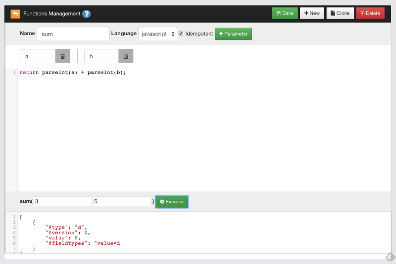
Why using
parseInt()instead ofa + b? Because HTTP protocol passes parameters as strings.
Saved Functions
OrientDB saves functions in the database, using the OFunction class. This class has the following properties:
| Property | Description |
|---|---|
name | Defines the name of the function. |
code | Defines the code the function executes. |
parameters | Defines an optional EMBEDDEDLIST of strings, containing the parameter names, if any. |
idempotent | Defines whether the function is idempotent, that is if it changes the database. Read-only functions are idempotent. This is needed to avoid calling non-idempotent functions using the HTTP GET method. |
Given that OrientDB uses one record per function, the MVCC mechanism is used to protect against concurrent record updates.
Using Recursive Calls
Functions can call on other functions in order to process the results. They can also call themselves in a recursive call.
For instance, create a new function with the name factorial. Give it the parameter num, with the following code:
if (num === 0)
return 1;
else
return num * factorial( num - 1 );
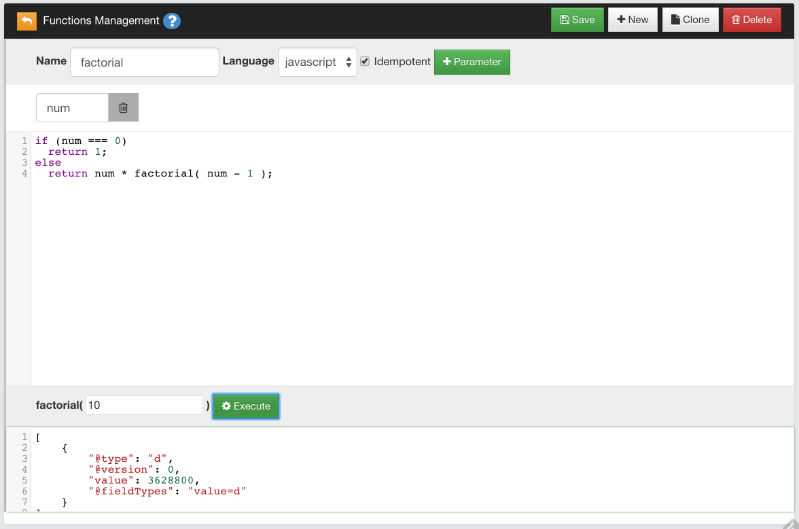
When you call factorial(), it calls itself in order to determine the factorial of the given num value, until it reaches the result, which in the case of the test is 3648800.0.
Using Functions
Call Functions via SQL
All the database functions are automatically registered in the SQL Engine.
Examples
-
Calling the sum function from SQL with static parameters:
SELECT SUM(3,4) -
Calling the sum function from SQL with parameters taken from database:
SELECT SUM(salary,bonus) AS total FROM EmployeeIn this case the function SUM is invoked for each record in the Employee class by passing the value of the fields
salaryandbonus.
Functions using the Java API
Using OrientDB functions from the Java API is relatively straightforward:
- Get the reference to the Function Manager
- Get the function you want to use.
- Execute the function.
Examples
-
Passing the parameters by position:
ODatabaseDocumentTx db = new ODatabaseDocumentTx("local:/tmp/db"); db.open("admin", "admin"); OFunction sum = db.getMetadata().getFunctionLibrary().getFunction("sum"); Number result = sum.execute(3, 5); -
Using the Blueprints Graph API:
OFunction sum = graph.getRawGraph().getMetadata().getFunctionLibrary().getFunction("sum"); -
Execute the function by passing the parameters by name:
Map<String,Object> params = new HashMap<String,Object>();
params.put("a", 3);
params.put("b", 5);
Number result = sum.execute(params);
Functions using the HTTP REST API
OrientDB exposes functions as a REST service, through which it can receive parameters. Parameters are passed by position in the URL. Beginning with OrientDB version 2.1, you can also pass parameters in the request payload as JSON. In which case, the mapping is not positional, but by name.
Examples
-
Execute the
sumfunction, passing3and5as parameters in the URL:http://localhost:2480/function/demo/sum/3/5 -
Execute the
sumfunction, passing3and5in the request's payload:{"a": 3, "b": 5}
Each example returns an HTTP 202 OK with an envelope containing the result of the calculation:
{"result":[{"@type":"d","@version":0,"value":2}]}
You can only call functions with the HTTP GET method if you declare it as idempotent. You can call any functions using the HTTP POST method.
When executing functions with the HTTP POST method, encode the content and set the HTTP request header to: "Content-Type: application/json".
For more information, see
Function Return Values in HTTP
When calling a function through a REST service, OrientDB returns the results as JSON to the client through HTTP. There may be differences in the results, depending on the return value of function.
For instance,
-
Function that returns a number:
return 31;Would return the result:
{"result":[{"@type":"d","@version":0,"value":31}]} -
Function that returns a JavaScript object:
return {"a":1, "b":"foo"}Would return the result:
{"result":[{"@type":"d","@version":0,"value":{"a":1,"b":"foo"}}]} -
Function that returns an array:
return [1, 2, 3]Would return the result:
{"result":[{"@type":"d","@version":0,"value":[1,2,3]}]} -
Function that returns a query result:
return db.query("SELECT FROM OUser")Would return the result:
{ "result": [ { "@type": "d", "@rid": "#6:0", "@version": 1, "@class": "OUser", "name": "admin", "password": "...", "status": "ACTIVE", "roles": [ "#4:0" ], "@fieldTypes": "roles=n" }, { "@type": "d", "@rid": "#6:1", "@version": 1, "@class": "OUser", "name": "reader", "password": "...", "status": "ACTIVE", "roles": [ "#4:1" ], "@fieldTypes": "roles=n" } ] }
Accessing the Database from a Function
When you create a function for OrientDB, it always binds the special variable orient to allow you to use OrientDB services from within the function. The most important methods are:
| Function | Description |
|---|---|
orient.getDatabase() | Returns the current document database instance. |
For security reason starting from OrientDB 3.0.29, the usage of Java classes is forbidden by default, with a class filter implemented in the JS engine.
To enable the access to classes or packages in your JS code change the allowedPackages field with comma separated packages or classes.
<handler class="com.orientechnologies.orient.server.handler.OServerSideScriptInterpreter">
<parameters>
<parameter name="enabled" value="true" />
<parameter name="allowedLanguages" value="SQL" />
<!-- Comma separated packages allowed in JS scripts eg. java.math.*, java.util.ArrayList -->
<parameter name="allowedPackages" value=""/>
</parameters>
</handler>
Executing Queries
Queries are idempotent commands. To execute a query from within a function, use the query() method. For instance,
return orient.getDatabase().query("SELECT name FROM OUser");
Queries with External Parameters
Create a new function with the name getUserRoles with the parameter user. Then use this code:
return orient.getDatabase().query("SELECT roles FROM OUser WHERE name = ?", name );
Here, the function binds the name parameter as a variable in JavaScript. You can use this variable to build your query.
SQL Commands
Execute an SQL command within the function:
var results = orient.getDatabase().command("SELECT FROM Employee WHERE company = ?", [ "Orient Technologies" ] );
The command returns an array of OElement objects
Creating Repository Classes
Functions provide an ideal place for developing the logic your application uses to access the database. You can adopt a Domain-driven design approach, allowing the function to work as a repository or as a Data Access Object.
This provides a thin (or thick, if you prefer) layer of encapsulation which may protect you from database changes.
Furthermore, each function is published and reachable via the HTTP REST protocol, allowing the automatic creation of a RESTful service.
Examples
Below are some examples of functions to build a repository for OUser records:
function user_getAll() {
return orient.getDatabase().query("SELECT FROM OUser");
}
function user_getByName( name ){
return orient.getDatabase().query("SELECT FROM OUser WHERE name = ?", name );
}
function user_getAdmin(){
return user_getByName("admin");
}
function user_create( name, role ){
var db = orient.getDatabase();
var role = db.query("SELECT FROM ORole WHERE name = ?", roleName);
if( role == null ){
response.send(404, "Role name not found", "text/plain", "Error: role name not found" );
} else {
db.begin();
try{
var result = db.save({ "@class" : "OUser", name : "Luca", password : "Luc4", status: "ACTIVE", roles : role});
db.commit();
return result;
}catch ( err ){
db.rollback()
response.send(500, "Error on creating new user", "text/plain", err.toString() );
}
}
}
Server-side Functions
In OrientDB, you can replace the use of Servlets with server-side functions. For more information on how to call server-side functions, see Functions using the HTTP REST API.
When the HTTP REST protocol calls server-side functions, OrientDB embeds a few additional variables:
- Request Object The HTTP request, implemented by the
OHttpRequestWrapperclass. - Response Object The HTTP request response, implemented by the
OHttpResponseWrapperclass. - Util Object The utility class with helper functions, to use inside the functions, implemented by the
OFunctionUtilWrapperclass.
Request Object
OrientDB references this object as request. For instance,
var params = request.getParameters();
| Method signature | Description | Return type |
|---|---|---|
getContent() | Returns the request content. | String |
getUser() | Gets the request user name. | String |
getContentType() | Returns the request content type. | String |
getHttpVersion() | Return the request HTTP version. | String |
getHttpMethod() | Return the request HTTP method called. | String |
getIfMatch() | Return the request IF-MATCH header. | String |
isMultipart() | Returns if the request is multi-part. | boolean |
getArguments() | Returns the request arguments passed in REST form. Example: /2012/10/26. | String[] |
getArgument(<position>) | Returns the request argument by position, or null if not found. | String |
getParameters() | Returns the request parameters. | String |
getParameter(<name>) | Returns the request parameter by name or null if not found. | String |
hasParameters(<name>*) | Returns the number of parameters found between those passed. | Integer |
getSessionId() | Returns the session-id. | String |
getURL() | Returns the request URL. | String |
Response Object
OrientDB references this object as response. For instance,
var db = orient.getDatabase();
var roles = db.query("select from ORole where name = ?", roleName);
if( roles == null || roles.length == 0 ){
response.send(404, "Role name not found", "text/plain", "Error: role name not found" );
} else {
db.begin();
try{
var result = db.save({ "@class" : "OUser", name : "Luca", password : "Luc4", "roles" : roles});
db.commit();
return result;
}catch ( err ){
db.rollback();
response.send(500, "Error on creating new user", "text/plain", err.toString() );
}
}
| Method signature | Description | Return type |
|---|---|---|
getHeader() | Returns the response additional headers. | String |
setHeader(String header) | Sets the response additional headers to send back. To specify multiple headers use the line breaks. | Request object |
getContentType() | Returns the response content type. If null will be automatically detected. | String |
setContentType(String contentType) | Sets the response content type. If null will be automatically detected. | Request object |
getCharacterSet() | Returns the response character set used. | String |
setCharacterSet(String characterSet) | Sets the response character set. | Request object |
getHttpVersion() | Returns the HTTP version. | String |
writeStatus(int httpCode, String reason) | Sets the response status as HTTP code and reason. | Request object |
writeStatus(int httpCode, String reason) | Sets the response status as HTTP code and reason. | Request object |
writeHeaders(String contentType) | Sets the response headers using the keep-alive. | Request object |
writeHeaders(String contentType, boolean keepAlive) | Sets the response headers specifying when using the keep-alive or not. | Request object |
writeLine(String content) | Writes a line in the response. A line feed will be appended at the end of the content. | Request object |
writeContent(String content) | Writes content directly to the response. | Request object |
writeRecords(List<OIdentifiable> records) | Writes records as response. The records are serialized in JSON format. | Request object |
writeRecords( List<OIdentifiable> records, String fetchPlan) | Writes records as response specifying a fetch-plan to serialize nested records. The records are serialized in JSON format. | Request object |
writeRecord(ORecord record) | Writes a record as response. The record is serialized in JSON format. | Request object |
writeRecord(ORecord record, String fetchPlan) | Writes a record as response. The record is serialized in JSON format. | Request object |
send(int code, String reason, String contentType, Object content) | Sends the complete HTTP response in one call. | Request object |
send(int code, String reason, String contentType, Object content, String headers) | Sends the complete HTTP response in one call specifying additional headers. Keep-alive is set. | Request object |
send(int code, String reason, String contentType, Object content, String headers, boolean keepAlive) | Sends the complete HTTP response in one call specifying additional headers. | Request object |
sendStream(int code, String reason, String contentType, InputStream content, long size) | Sends the complete HTTP response in one call specifying a stream as content. | Request object |
flush() | Flushes the content to the TCP/IP socket. | Request object |
Util Object
OrientDB references this object as util. For instance,
if( util.exists(year) ){
print("\nYes, the year was passed!");
}
| Method signature | Description | Return type |
|---|---|---|
exists(<variable>) | Returns trues if any of the passed variables are defined. In JS, for example, a variable is defined if it's not null and not equal to undefined. | Boolean |
Backup & Restore
OrientDB supports backup and and restore operations, like any database management system.
The BACKUP DATABASE command executes a complete backup on the currently open database. It compresses the backup the backup using the ZIP algorithm. To restore the database from the subsequent .zip file, you can use the RESTORE DATABASE command.
Backups and restores are much faster than the EXPORT DATABASE and IMPORT DATABASE commands. You can also automate backups using the Automatic Backup server plugin. Additionally, beginning with version 2.2 of Enterprise Edition OrientDB introduces major support for incremental backups.
NOTE: OrientDB Community Edition does not support backing up remote databases. OrientDB Enterprise Edition does support this feature. For more information on how to implement this with Enterprise Edition, see Remote Backups.
Backups versus Exports
During backups, the BACKUP DATABASE command produces a consistent copy of the database. During this process, the database locks all write operations, waiting for the backup to finish. If you need perform reads and writes on the database during backups, set up a distributed cluster of nodes. To access to the non blocking backup feature, use the Enterprise Edition.
By contrast, the EXPORT DATABASE command doesn't lock the database, allowing concurrent writes to occur during the export process. Consequentially, the export may include changes made after you initiated the export, which may result in inconsistencies.
Using the Backup Script
Beginning in version 1.7.8, OrientDB introduces a backup.sh script found in the $ORIENTDB_HOME/bin directory. This script allows you to initiate backups from the system console.
Syntax
./backup.sh <db-url> <user> <password> <destination> [<type>]
<db-url>Defines the URL for the database to backup.<user>Defines the user to run the backup.<password>Defines the password for the user.<destination>Defines the path to the backup file the script creates, (use the.zipextension).<type>Defines the backup type. Supported types:defaultLocks the database during the backup.lvmExecutes an LVM copy-on-write snapshot in the background.
NOTE Non-blocking backups require that the operating system support LVM. For more information, see
Examples
-
Backup a database opened using
plocal:$
$ORIENTDB_HOME/bin/backup.sh plocal:../database/testdb \ admin adminpasswd \ /path/to/backup.zip -
Perform a non-blocking LVM backup, using
plocal:$
$ORIENTDB_HOME/bin/backup.sh plocal:../database/testdb \ admin adminpasswd \ /path/to/backup.zip \ lvm -
Perform a backup using the OrientDB Console with the
BACKUPcommand:orientdb>
CONNECT PLOCAL:../database/testdb/ admin adminpasswdorientdb>BACKUP DATABASE /path/to/backup.zipBackup executed in 0.52 seconds.
Restoring Databases
Once you have created your backup.zip file, you can restore it to the database either through the OrientDB Console, using the RESTORE DATABASE command.
orientdb> RESTORE DATABASE /backups/mydb.zip
Restore executed in 6.33 seconds
Bear in mind that OrientDB does not support merging during restores. If you need to merge the old data with new writes, instead use EXPORT DATABASE and IMPORT DATABASE commands, instead.
For more information, see
Incremental Backup and Restore
(Since v2.2 - Enterprise Edition only)
An incremental backup generates smaller backup files by storing only the delta between two versions of the database. This is useful when you execute a backup on a regular basis and you want to avoid having to back up the entire database each time. The easiest way to execute a backup and a restore is using Studio.
NOTE: This feature is available only in the OrientDB Enterprise Edition. If you are interested in a commercial license look at OrientDB Subscription Packages.
NOTE: Lucene Indexes are not supported yet in the incremental backup/restore process. Once the incremental restore is finished the indexes rebuild is necessary see (here)[https://github.com/orientechnologies/orientdb/issues/5958]
See also
How does it work?
Every time a backup is executed, OrientDB writes a file named last-backup.json in the database directory. This is an example of the content:
{
"lsn": 8438432,
"startedOn": "2015-08-17 10:33:23.943",
"completedOn": "2015-08-17 10:33:45.121"
}
The most important information is the lsn field that is the WAL LSN (Last Serial Number). Thanks to this number, OrientDB is able to understand the last change in the database, so the next incremental backup will be done starting from last lsn + 1.
Executing an Incremental Backup
Incremental Backup via Console
Backup Database console command accepts -incremental as an optional parameter to execute an incremental backup. In this case the new backup is executed from the last backup (file last-backup.json is read if present). If this is the first incremental backup, a full backup is executed. Example:
orientdb> connect plocal:/databases/mydb admin admin
orientdb {db=Whisky}> backup database /tmp/backup -incremental
The incremental backup setting also allows you to specify an LSN version to start with. Example:
orientdb> connect plocal:/databases/mydb admin admin
orientdb {db=Whisky}> backup database /tmp/backup -incremental=93222
Incremental Backup via Java API
You can perform an incremental backup via the Java API too.
NOTE The remote protocol is supported, but the specified path is relative to the server.
If you are managing an ODocumentDatabase you have to call the incrementalBackup() method that accepts a String path parameter to the backup directory:
ODatabaseDocumentTx documentDatabase = new ODatabaseDocumentTx(dbURL);
documentDatabase.open("root", "password");
documentDatabase.incrementalBackup("/tmp/backup");
If you are using the OrientGraph interface you have to get the raw graph before calling the incrementalBackup() method:
OrientGraph graphDatabase = new OrientGraphNoTx(dbURL);
graphDatabase.open("root", "password");
graphDatabase.getRawGraph().incrementalBackup("/tmp/backup");
Executing an Incremental Restore
Incremental Restore via the Console
Restore Database console command automatically recognizes if a backup contains incremental data. Restoring an incremental backup creates a new database with the restored content. You cannot perform an in-place incremental restore on an existing database. The execution of the create database command with the option -restore builds a fresh database and performs the incremental restore starting from the backup path.
Example:
orientdb> create database remote:localhost/mydb root root plocal graph -restore=/tmp/backup
Creating database [remote:localhost/mydb] using the storage type [plocal]...
Connecting to database [remote:localhost/mydb] with user 'admin'...OK
Database created successfully.
Current database is: remote:localhost/mydb
In distributed mode restore will success only with a single node in the cluster. If you have 2 nodes or more in your cluster you have to use the standard restore procedure.
Incremental Restore via the Java API
You can perform an incremental restore via the Java API too.
To create a database from an incremental backup you can call from Java ODatabase#create(path-to-incremental-backup-directory).
Incremental Restore in Distributed Architecture
The incremental restore affects only the local node where the restore command is executed.
Let's suppose we have 3 nodes and we execute an incremental restore on node1. If we execute an incremental restore on node1 a new fresh database is created on all the 3 nodes, but only on node1 the restore procedure is performed. Thus we obtain the database correctly restored on node1 but an empty database on node2 and node 3.
You can overcome this inconsistency by executing a shutdown on all the nodes of the cluster not involved in the restore procedure (node2 and node3 in our example), so once restarted they will get the full database from node1.
Distributed Architecture
The incremental backup is used in the Distributed Architecture when a server node restarts. This avoids having to backup and transfer the entire database across the network.
Internals
File Format
In case of incremental backup, the content of the zip file is not the database directory, but rather meta files needed to update the database with the delta. Example of the content:
- Employee.pcl
- Person.pcl.incremental
- Person.pcm.incremental
This means only three files are changed. Employee.pcl is a full file, while the other two files with extension ".incremental" are incremental. Incremental files contain all the page changes and have the following format:
+----------------+-----------------+
| PAGE NUMBER | PAGE CONTENT |
| (long) | byte[] |
+----------------+-----------------+
Export and Import
OrientDB supports export and import operations, like any database management system.
This Section provides information on how to export-to and import-from JSON, as well on how to import from a RDBMS and Neo4j.
Neo4j is a registered trademark of Neo Technology, Inc.
Export to & Import from JSON
The EXPORT DATABASE command exports the current opened database into a file. The exported file is in the Export JSON format. By default, it compresses the file using the GZIP algorithm.
Using exports with the IMPORT DATABASE command, you can migrate the database between different releases of OrientDB without losing data. When doing this, if you receive an error relating to the database version, export the database using the same version of OrientDB on which you created the database.
orientdb> EXPORT DATABASE /temp/petshop.export
Exporting current database to: /temp/petshop.export...
Exporting database info...OK
Exporting dictionary...OK
Exporting schema...OK
Exporting clusters...
- Exporting cluster 'metadata' (records=11) -> ...........OK
- Exporting cluster 'index' (records=0) -> OK
- Exporting cluster 'default' (records=779) -> OK
- Exporting cluster 'csv' (records=1000) -> OK
- Exporting cluster 'binary' (records=1001) -> OK
- Exporting cluster 'person' (records=7) -> OK
- Exporting cluster 'animal' (records=5) -> OK
- Exporting cluster 'animalrace' (records=0) -> OK
- Exporting cluster 'animaltype' (records=1) -> OK
- Exporting cluster 'orderitem' (records=0) -> OK
- Exporting cluster 'order' (records=0) -> OK
- Exporting cluster 'city' (records=3) -> OK
Export of database completed.
Exports versus Backups
Exports don't lock the database. Instead, they browse the contents. This means that OrientDB can execute concurrent operations during the export, but the exported database may not be an exact replica from the time when you issued the command. If you need a database snapshot, use backups.
The BACKUP DATABASE command does create a consistent copy of the database, but it locks the database. During the backup, the database remains in read-only mode, all concurrent write operations are blocked until the backup finishes. In the event that you need a database snapshot and the ability to perform read/write operations during the backup, set up a distributed cluster of nodes.
NOTE: Even though the export file is 100% JSON, there are some constraints in the JSON format, where the field order must be kept. Modifying the file to adjust the indentation may make the file unusable in database imports.
Importing Databases
Once you have exported your database, you can import it using the IMPORT DATABASE command.
orientdb> IMPORT DATABASE /temp/petshop.export.gz -preserveClusterIDs=true
Importing records...
- Imported records into the cluster 'internal': 5 records
- Imported records into the cluster 'index': 4 records
- Imported records into the cluster 'default': 1022 records
- Imported records into the cluster 'orole': 3 records
- Imported records into the cluster 'ouser': 3 records
- Imported records into the cluster 'csv': 100 records
- Imported records into the cluster 'binary': 101 records
- Imported records into the cluster 'account': 1005 records
- Imported records into the cluster 'company': 9 records
- Imported records into the cluster 'profile': 9 records
- Imported records into the cluster 'whiz': 1000 records
- Imported records into the cluster 'address': 164 records
- Imported records into the cluster 'city': 55 records
- Imported records into the cluster 'country': 55 records
- Imported records into the cluster 'animalrace': 3 records
- Imported records into the cluster 'ographvertex': 102 records
- Imported records into the cluster 'ographedge': 101 records
- Imported records into the cluster 'graphcar': 1 records
For more information, see
Export Format
When you run the EXPORT DATABASE command, OrientDB exports the database into a zipped file using a special JSON format. When you run the IMPORT DATABASE command, OrientDB unzips the file and parses the JSON, making the import.
Sections
Export files for OrientDB use the following sections. Note that while the export format is 100% JSON, there are some constraints in the format, where the field order must be kept. Additionally, modifying the file to adjust the indentation (as has been done in the examples below), may make it unusable in database imports.
Info Section
The first section contains the resuming database information as well as all versions used during the export. OrientDB uses this information to check for compatibility during the import.
"info": {
"name": "demo",
"default-cluster-id": 2,
"exporter-format": 2,
"engine-version": "1.7-SNAPSHOT",
"storage-config-version": 2,
"schema-version": 4,
"mvrbtree-version": 0
}
| Parameter | Description | JSON Type |
|---|---|---|
"name" | Defines the name of the database. | String |
"default-cluster-id" | Defines the Cluster ID to use by default. Range: 0-32,762. | Integer |
"exporter-format" | Defines the version of the database exporter. | Integer |
"engine-version" | Defines the version of OrientDB. | String |
"storage-version" | Defines the version of the Storage layer. | Integer |
"schema-version" | Defines the version of the schema exporter. | Integer |
"mvrbtree-version" | Defines the version of the MVRB-Tree. | Integer |
Clusters Section
This section defines the database structure in clusters. It is formed from a list with an entry for each cluster in the database.
"clusters": [
{"name": "internal", "id": 0, "type": "PHYSICAL"},
{"name": "index", "id": 1, "type": "PHYSICAL"},
{"name": "default", "id": 2, "type": "PHYSICAL"}
]
| Parameter | Description | JSON Type |
|---|---|---|
"name" | Defines the logical name of the cluster. | String |
"id" | Defines the Cluster ID. Range: 0-32, 767. | Integer |
"type" | Defines the cluster type: PHYSICAL, LOGICAL and MEMORY. | String |
Schema Section
This section defines the database schema as classes and properties.
"schema":{
"version": 210,
"classes": [
{"name": "Account", "default-cluster-id": 9, "cluster-ids": [9],
"properties": [
{"name": "binary", "type": "BINARY", "mandatory": false, "not-null": false},
{"name": "birthDate", "type": "DATE", "mandatory": false, "not-null": false},
{"name": "id", "type": "INTEGER", "mandatory": false, "not-null": false}
]
}
]
}
| Parameter | Description | JSON Type |
|---|---|---|
"version" | Defines the version of the record storing the schema. Range: 0-2,147,483,647. | Integer |
"classes" | Defines a list of entries for each class in the schema. | Array |
Parameters for the Classes Subsection:
| Parameter | Description | JSON Type |
|---|---|---|
"name" | Defines the logical name of the class. | String |
"default-cluster-id" | Defines the default Cluster ID for the class. It represents the cluster that stores the class records. | Integer |
"cluster-ids" | Defines an array of Cluster ID's that store the class records. The first ID is always the default Cluster ID. | Array of Integers |
"properties" | Defines a list of entries for each property for the class in the schema. | Array |
Parameters for the Properties Sub-subsection:
| Parameter | Description | JSON Type |
|---|---|---|
"name" | Defines the logical name of the property. | String |
"type" | Defines the property type. | String |
"mandatory" | Defines whether the property is mandatory. | Boolean |
"not-null" | Defines whether the property accepts a NULL value. | Boolean |
Records Section
This section defines the exported record with metadata and fields. Entries for metadata are distinguished from fields by the @ symbol.
"records": [
{"@type": "d", "@rid": "#12:476", "@version": 0, "@class": "Account",
"account_id": 476,
"date": "2011-12-09 00:00:00:0000",
"@fieldTypes": ["account_id=i", "date=t"]
},
{"@type": "d", "@rid": "#12:477", "@version": 0, "@class": "Whiz",
"id": 477,
"date": "2011-12-09 00:00:00:000",
"text": "He in office return He inside electronics for $500,000 Jay",
"@fieldTypes": "date=t"
}
]
Parameters for Metadata
| Parameter | Description | JSON Type |
|---|---|---|
"@type" | Defines the record-type: d for Document, b for Binary. | String |
"@rid" | Defines the Record ID, using the format: <cluster-id>:<cluster-position>. | String |
"@version" | Defines the record version. Range: 0-2, 147, 483, 647. | Integer |
"@class" | Defines the logical class name for the record. | String |
"@fieldTypes" | Defines an array of the types for each field in this record. | Any |
Supported Field Types
| Value | Type |
|---|---|
l | Long |
f | Float |
d | Double |
s | Short |
t | Datetime |
d | Date |
c | Decimal |
b | Byte |
Full Example
{
"info":{
"name": "demo",
"default-cluster-id": 2,
"exporter-version": 2,
"engine-version": "1.0rc8-SNAPSHOT",
"storage-config-version": 2,
"schema-version": 4,
"mvrbtree-version": 0
},
"clusters": [
{"name": "internal", "id": 0, "type": "PHYSICAL"},
{"name": "index", "id": 1, "type": "PHYSICAL"},
{"name": "default", "id": 2, "type": "PHYSICAL"},
{"name": "orole", "id": 3, "type": "PHYSICAL"},
{"name": "ouser", "id": 4, "type": "PHYSICAL"},
{"name": "orids", "id": 5, "type": "PHYSICAL"},
{"name": "csv", "id": 6, "type": "PHYSICAL"},
{"name": "binary", "id": 8, "type": "PHYSICAL"},
{"name": "account", "id": 9, "type": "PHYSICAL"},
{"name": "company", "id": 10, "type": "PHYSICAL"},
{"name": "profile", "id": 11, "type": "PHYSICAL"},
{"name": "whiz", "id": 12, "type": "PHYSICAL"},
{"name": "address", "id": 13, "type": "PHYSICAL"},
{"name": "city", "id": 14, "type": "PHYSICAL"},
{"name": "country", "id": 15, "type": "PHYSICAL"},
{"name": "dummy", "id": 16, "type": "PHYSICAL"},
{"name": "ographvertex", "id": 26, "type": "PHYSICAL"},
{"name": "ographedge", "id": 27, "type": "PHYSICAL"},
{"name": "graphvehicle", "id": 28, "type": "PHYSICAL"},
{"name": "graphcar", "id": 29, "type": "PHYSICAL"},
{"name": "graphmotocycle", "id": 30, "type": "PHYSICAL"},
{"name": "newv", "id": 31, "type": "PHYSICAL"},
{"name": "mappoint", "id": 33, "type": "PHYSICAL"},
{"name": "person", "id": 35, "type": "PHYSICAL"},
{"name": "order", "id": 36, "type": "PHYSICAL"},
{"name": "post", "id": 37, "type": "PHYSICAL"},
{"name": "comment", "id": 38, "type": "PHYSICAL"}
],
"schema":{
"version": 210,
"classes": [
{"name": "Account", "default-cluster-id": 9, "cluster-ids": [9],
"properties": [
{"name": "binary", "type": "BINARY", "mandatory": false, "not-null": false},
{"name": "birthDate", "type": "DATE", "mandatory": false, "not-null": false},
{"name": "id", "type": "INTEGER", "mandatory": false, "not-null": false}
]
},
{"name": "Address", "default-cluster-id": 13, "cluster-ids": [13]
},
{"name": "Animal", "default-cluster-id": 17, "cluster-ids": [17]
},
{"name": "AnimalRace", "default-cluster-id": 18, "cluster-ids": [18]
},
{"name": "COMMENT", "default-cluster-id": 38, "cluster-ids": [38]
},
{"name": "City", "default-cluster-id": 14, "cluster-ids": [14]
},
{"name": "Company", "default-cluster-id": 10, "cluster-ids": [10], "super-class": "Account",
"properties": [
]
},
{"name": "Country", "default-cluster-id": 15, "cluster-ids": [15]
},
{"name": "Dummy", "default-cluster-id": 16, "cluster-ids": [16]
},
{"name": "GraphCar", "default-cluster-id": 29, "cluster-ids": [29], "super-class": "GraphVehicle",
"properties": [
]
},
{"name": "GraphMotocycle", "default-cluster-id": 30, "cluster-ids": [30], "super-class": "GraphVehicle",
"properties": [
]
},
{"name": "GraphVehicle", "default-cluster-id": 28, "cluster-ids": [28], "super-class": "OGraphVertex",
"properties": [
]
},
{"name": "MapPoint", "default-cluster-id": 33, "cluster-ids": [33],
"properties": [
{"name": "x", "type": "DOUBLE", "mandatory": false, "not-null": false},
{"name": "y", "type": "DOUBLE", "mandatory": false, "not-null": false}
]
},
{"name": "OGraphEdge", "default-cluster-id": 27, "cluster-ids": [27], "short-name": "E",
"properties": [
{"name": "in", "type": "LINK", "mandatory": false, "not-null": false, "linked-class": "OGraphVertex"},
{"name": "out", "type": "LINK", "mandatory": false, "not-null": false, "linked-class": "OGraphVertex"}
]
},
{"name": "OGraphVertex", "default-cluster-id": 26, "cluster-ids": [26], "short-name": "V",
"properties": [
{"name": "in", "type": "LINKSET", "mandatory": false, "not-null": false, "linked-class": "OGraphEdge"},
{"name": "out", "type": "LINKSET", "mandatory": false, "not-null": false, "linked-class": "OGraphEdge"}
]
},
{"name": "ORIDs", "default-cluster-id": 5, "cluster-ids": [5]
},
{"name": "ORole", "default-cluster-id": 3, "cluster-ids": [3],
"properties": [
{"name": "mode", "type": "BYTE", "mandatory": false, "not-null": false},
{"name": "name", "type": "STRING", "mandatory": true, "not-null": true},
{"name": "rules", "type": "EMBEDDEDMAP", "mandatory": false, "not-null": false, "linked-type": "BYTE"}
]
},
{"name": "OUser", "default-cluster-id": 4, "cluster-ids": [4],
"properties": [
{"name": "name", "type": "STRING", "mandatory": true, "not-null": true},
{"name": "password", "type": "STRING", "mandatory": true, "not-null": true},
{"name": "roles", "type": "LINKSET", "mandatory": false, "not-null": false, "linked-class": "ORole"}
]
},
{"name": "Order", "default-cluster-id": 36, "cluster-ids": [36]
},
{"name": "POST", "default-cluster-id": 37, "cluster-ids": [37],
"properties": [
{"name": "comments", "type": "LINKSET", "mandatory": false, "not-null": false, "linked-class": "COMMENT"}
]
},
{"name": "Person", "default-cluster-id": 35, "cluster-ids": [35]
},
{"name": "Person2", "default-cluster-id": 22, "cluster-ids": [22],
"properties": [
{"name": "age", "type": "INTEGER", "mandatory": false, "not-null": false},
{"name": "firstName", "type": "STRING", "mandatory": false, "not-null": false},
{"name": "lastName", "type": "STRING", "mandatory": false, "not-null": false}
]
},
{"name": "Profile", "default-cluster-id": 11, "cluster-ids": [11],
"properties": [
{"name": "hash", "type": "LONG", "mandatory": false, "not-null": false},
{"name": "lastAccessOn", "type": "DATETIME", "mandatory": false, "not-null": false, "min": "2010-01-01 00:00:00"},
{"name": "name", "type": "STRING", "mandatory": false, "not-null": false, "min": "3", "max": "30"},
{"name": "nick", "type": "STRING", "mandatory": false, "not-null": false, "min": "3", "max": "30"},
{"name": "photo", "type": "TRANSIENT", "mandatory": false, "not-null": false},
{"name": "registeredOn", "type": "DATETIME", "mandatory": false, "not-null": false, "min": "2010-01-01 00:00:00"},
{"name": "surname", "type": "STRING", "mandatory": false, "not-null": false, "min": "3", "max": "30"}
]
},
{"name": "PropertyIndexTestClass", "default-cluster-id": 21, "cluster-ids": [21],
"properties": [
{"name": "prop1", "type": "STRING", "mandatory": false, "not-null": false},
{"name": "prop2", "type": "INTEGER", "mandatory": false, "not-null": false},
{"name": "prop3", "type": "BOOLEAN", "mandatory": false, "not-null": false},
{"name": "prop4", "type": "INTEGER", "mandatory": false, "not-null": false},
{"name": "prop5", "type": "STRING", "mandatory": false, "not-null": false}
]
},
{"name": "SQLDropIndexTestClass", "default-cluster-id": 23, "cluster-ids": [23],
"properties": [
{"name": "prop1", "type": "DOUBLE", "mandatory": false, "not-null": false},
{"name": "prop2", "type": "INTEGER", "mandatory": false, "not-null": false}
]
},
{"name": "SQLSelectCompositeIndexDirectSearchTestClass", "default-cluster-id": 24, "cluster-ids": [24],
"properties": [
{"name": "prop1", "type": "INTEGER", "mandatory": false, "not-null": false},
{"name": "prop2", "type": "INTEGER", "mandatory": false, "not-null": false}
]
},
{"name": "TestClass", "default-cluster-id": 19, "cluster-ids": [19],
"properties": [
{"name": "name", "type": "STRING", "mandatory": false, "not-null": false},
{"name": "testLink", "type": "LINK", "mandatory": false, "not-null": false, "linked-class": "TestLinkClass"}
]
},
{"name": "TestLinkClass", "default-cluster-id": 20, "cluster-ids": [20],
"properties": [
{"name": "testBoolean", "type": "BOOLEAN", "mandatory": false, "not-null": false},
{"name": "testString", "type": "STRING", "mandatory": false, "not-null": false}
]
},
{"name": "Whiz", "default-cluster-id": 12, "cluster-ids": [12],
"properties": [
{"name": "account", "type": "LINK", "mandatory": false, "not-null": false, "linked-class": "Account"},
{"name": "date", "type": "DATE", "mandatory": false, "not-null": false, "min": "2010-01-01"},
{"name": "id", "type": "INTEGER", "mandatory": false, "not-null": false},
{"name": "replyTo", "type": "LINK", "mandatory": false, "not-null": false, "linked-class": "Account"},
{"name": "text", "type": "STRING", "mandatory": true, "not-null": false, "min": "1", "max": "140"}
]
},
{"name": "classclassIndexManagerTestClassTwo", "default-cluster-id": 25, "cluster-ids": [25]
},
{"name": "newV", "default-cluster-id": 31, "cluster-ids": [31], "super-class": "OGraphVertex",
"properties": [
{"name": "f_int", "type": "INTEGER", "mandatory": false, "not-null": false}
]
},
{"name": "vertexA", "default-cluster-id": 32, "cluster-ids": [32], "super-class": "OGraphVertex",
"properties": [
{"name": "name", "type": "STRING", "mandatory": false, "not-null": false}
]
},
{"name": "vertexB", "default-cluster-id": 34, "cluster-ids": [34], "super-class": "OGraphVertex",
"properties": [
{"name": "map", "type": "EMBEDDEDMAP", "mandatory": false, "not-null": false},
{"name": "name", "type": "STRING", "mandatory": false, "not-null": false}
]
}
]
},
"records": [{
"@type": "d", "@rid": "#12:476", "@version": 0, "@class": "Whiz",
"id": 476,
"date": "2011-12-09 00:00:00:000",
"text": "Los a went chip, of was returning cover, In the",
"@fieldTypes": "date=t"
},{
"@type": "d", "@rid": "#12:477", "@version": 0, "@class": "Whiz",
"id": 477,
"date": "2011-12-09 00:00:00:000",
"text": "He in office return He inside electronics for $500,000 Jay",
"@fieldTypes": "date=t"
}
]
}
Import from RDBMS
NOTE: As of OrientDB 2.0, you can use the OrientDB-ETL module to import data from an RDBMS. You can use ETL also with 1.7.x by installing it as a separate module.
OrientDB supports a subset of SQL, so importing a database created as "Relational" is straightforward. For the sake of simplicity, consider your Relational database having just these two tables:
- POST
- COMMENT
Where the relationship is between Post and comment as One-2-Many.
TABLE POST:
+----+----------------+
| id | title |
+----+----------------+
| 10 | NoSQL movement |
| 20 | New OrientDB |
+----+----------------+
TABLE COMMENT:
+----+--------+--------------+
| id | postId | text |
+----+--------+--------------+
| 0 | 10 | First |
| 1 | 10 | Second |
| 21 | 10 | Another |
| 41 | 20 | First again |
| 82 | 20 | Second Again |
+----+--------+--------------+
- Import using the Document Model (relationships as links)
- Import using the Graph Model (relationships as edges)
Import from a Relational Database
Relational databases typically query and manipulate data with SQL. Given that OrientDB supports a subset of SQL, it is relatively straightforward to import data from a Relational databases to OrientDB. You can manage imports using the Java API, OrientDB Studio or the OrientDB Console. The examples below use the Console.
This guide covers importing into the Document Model. Beginning with version 2.0, you can import into the Graph Model using the ETL Module. From version 1.7.x you can still use ETL by installing it as a separate module
For these examples, assume that your Relational database, (referred to as reldb in the code), contains two tables: Post and Comment. The relationship between these tables is one-to-many.
reldb>SELECT * FROM post;+----+----------------+ | id | title | +----+----------------+ | 10 | NoSQL movement | | 20 | New OrientDB | +----+----------------+ reldb>SELECT * FROM comment;+----+--------+--------------+ | id | postId | text | +----+--------+--------------+ | 0 | 10 | First | | 1 | 10 | Second | | 21 | 10 | Another | | 41 | 20 | First again | | 82 | 20 | Second Again | +----+--------+--------------+
Given that the Relational Model doesn't use concepts from Object Oriented Programming, there are some things to consider in the transition from a Relational database to OrientDB.
-
In Relational databases there is no concept of class, so in the import to OrientDB you need to create on class per table.
-
In Relational databases, one-to-many references invert from the target table to the source table.
Table POST <- (foreign key) Table COMMENTIn OrientDB, it follows the Object Oriented Model, so you have a collection of links connecting instances of
PostandComment.Class POST ->* (collection of links) Class COMMENT
Exporting Relational Databases
Most Relational database management systems provide a way to export the database into SQL format. What you specifically need from this is a text file that contains the SQL INSERT commands to recreate the database from scratch. For example,
- MySQL: the
mysqldumputility. - Oracle Database: the Datapump utilities.
- Microsoft SQL Server: the Import and Export Wizard.
When you run this utility on the example database, it produces an .sql file that contains the exported SQL of the Relational database.
DROP TABLE IF EXISTS post;
CREATE TABLE post (
id INT(11) NOT NULL AUTO_INCREMENT,
title VARCHAR(128),
PRIMARY KEY (id)
);
DROP TABLE IF EXISTS comment;
CREATE TABLE comment (
id INT(11) NOT NULL AUTO_INCREMENT,
postId INT(11),
text TEXT,
PRIMARY KEY (id),
CONSTRAINT `fk_comments`
FOREIGN KEY (`postId` )
REFERENCES `post` (`id` )
);
INSERT INTO POST (id, title) VALUES( 10, 'NoSQL movement' );
INSERT INTO POST (id, title) VALUES( 20, 'New OrientDB' );
INSERT INTO COMMENT (id, postId, text) VALUES( 0, 10, 'First' );
INSERT INTO COMMENT (id, postId, text) VALUES( 1, 10, 'Second' );
INSERT INTO COMMENT (id, postId, text) VALUES( 21, 10, 'Another' );
INSERT INTO COMMENT (id, postId, text) VALUES( 41, 20, 'First again' );
INSERT INTO COMMENT (id, postId, text) VALUES( 82, 20, 'Second Again' );
Modifying the Export File
Importing from the Relational database requires that you modify the SQL file to make it usable by OrientDB. In order to do this, you need to open the SQL file, (called export.sql below), in a text editor and modify the commands there. Once this is done, you can execute the file on the Console using batch mode.
Database
In order to import a data into OrientDB, you need to have a database ready to receive the import. Note that the example export.sql file doesn't include statements to create the database. You can either create a new database or use an existing one.
Using New Databases
In creating a database for the import, you can either create a volatile in-memory database, (one that is only available while OrientDB is running), or you can create a persistent disk-based database. For a persistent database, you can create it on a remote server or locally through the PLocal mode.
The recommended method is PLocal, given that it offers better performance on massive inserts.
-
Using the embedded Plocal mode:
$
vim export.sqlCREATE DATABASE PLOCAL:/tmp/db/blog admin_user admin_passwd PLOCAL DOCUMENTHere, the
CREATE DATABASEcommand creates a new database at/tmp/db/blog. -
Using the Remote mode:
$
vim export.sqlCREATE DATABASE REMOTE:localhost/blog root_user dkdf383dhdsj PLOCAL DOCUMENTThis creates a database at the URL
http://localhost/blog.
NOTE: When you create remote databases, you need the server credentials to access it. The user
rootand its password are stored in the$ORIENTDB_HOME/config/orientdb-server-config.xmlconfiguration file.
Using Existing Databases
In the event that you already have a database set up and ready for the import, instead of creating a database add a line that connects to that databases, using the CONNECT command.
-
Using the embedded PLocal mode:
$
vim export.shCONNECT PLOCAL:/tmp/db/blog admin_user admin_passwdThis connects to the database at
/tmp/db/blog. -
Using the Remote mode:
$
vim export.sqlCONNECT REMOTE:localhost/blog admin_user admin_passwdThis connects to the database at the URL
http://localhost/blog.
Declaring Intent
In the SQL file, after you create or connect to the database, you need to declare your intention to perform a massive insert. Intents allow you to utilize automatic tuning OrientDB for maximum performance on particular operations, such as large inserts or reads.
$vim export.sh...DECLARE INTENT MASSIVEINSERT
Creating Classes
Relational databases have no parallel to concepts in Object Oriented programming, such as classes. Conversely, OrientDB doesn't have a concept of tables in the Relational sense.
Modify the SQL file, changing CREATE TABLE statements to CREATE CLASS commands:
$vim export.sql...CREATE CLASS Post CREATE CLASS Comment
NOTE: In cases where your Relational database was created using Object Relational Mapping, or ORM, tools, such as Hibernate or Data Nucleus, you have to rebuild the original Object Oriented Structure directly in OrientDB.
Create Links
In the Relational database, the relationship between the post and comment was handled through foreign keys on the id fields. OrientDB handles relationships differently, using links between two or more records of the Document type.
By default, the CREATE LINK command creates a direct relationship in your object model. Navigation goes from Post to Comment and not vice versa, which is the case for the Relational database. You'll need to use the INVERSE keyword to make the links work in both directions.
Add the following line after the INSERT statements.
$vim export.sql...CREATE LINK comments TYPE LINKSET FROM comment.postId TO post.id INVERSE
Remove Constraints
Unlike how Relational databases handle tables, OrientDB does not require you to create a strict schema on your classes. The properties on each class are defined through the INSERT statements. That is, id and title on Post and id, postId and text on Comment.
Given that you created a link in the above section, the property postId is no longer necessary. Instead of modifying each INSERT statement, you can use the UPDATE command to remove them at the end:
$vim export.sql...UPDATE comment REMOVE postId
Bear in mind, this is an optional step. The database will still function if you leave this field in place.
Expected Output
When you've finished, remove any statements that OrientDB does not support. With the changes above this leaves you with a file similar to the one below:
$ cat export.sql
CONNECT plocal:/tmp/db/blog admin admin
DECLARE INTENT MASSIVEINSERT
CREATE CLASS Post
CREATE CLASS Comment
INSERT INTO Post (id, title) VALUES( 10, 'NoSQL movement' )
INSERT INTO Post (id, title) VALUES( 20, 'New OrientDB' )
INSERT INTO Comment (id, postId, text) VALUES( 0, 10, 'First' )
INSERT INTO Comment (id, postId, text) VALUES( 1, 10, 'Second' )
INSERT INTO Comment (id, postId, text) VALUES( 21, 10, 'Another' )
INSERT INTO Comment (id, postId, text) VALUES( 41, 20, 'First again' )
INSERT INTO Comment (id, postId, text) VALUES( 82, 20, 'Second Again' )
CREATE LINK comments TYPE LINKSET FROM Comment.postId TO Post.id INVERSE
UPDATE Comment REMOVE postId
Importing Databases
When you finish modifying the SQL file, you can execute it through the Console in batch mode. This is done by starting the Console with the SQL file given as the first argument.
$ $ORIENTDB_HOME/bin/console.sh export.sql
When the OrientDB starts, it executes each of the commands given in the SQL files, creating or connecting to the database, creating the classes and inserting the data from the Relational database. You now have a working instance of OrientDB to use.
Using the Database
You now have an OrientDB Document database where relationships are direct and handled without the use of joins.
-
Query for all posts with comments:
orientdb>
SELECT FROM Post WHERE comments.size() > 0 -
Query for all posts where the comments contain the word "flame" in the
textproperty:orientdb>
SELECT FROM Post WHERE comments CONTAINS(text LIKE '%flame%') -
Query for all posts with comments made today, assuming that you have added a
dateproperty to theCommentclass:orientdb>
SELECT FROM Post WHERE comments CONTAINS(date > '2011-04-14 00:00:00')
For more information, see
Import from RDBMS to Graph Model
To import from RDBMS to OrientDB using the Graph Model the ETL tool is the suggested way to do it. Take a look at: Import from CSV to a Graph.
Import from Neo4j
Neo4j is an open-source graph database that queries and manipulates data using its own Cypher Query Language.
For more information on the differences between Neo4j and OrientDB, please refer to the OrientDB vs. Neo4j page.
Neo4j and Cypher are registered trademark of Neo Technology, Inc.
Migration Strategies
Importing data from Neo4j into OrientDB is a straightforward process.
To migrate, you may use the Neo4j to OrientDB Importer. Starting from OrientDB version 2.2, this is the preferred way to migrate from Neo4j.
The Neo4j to OrientDB Importer allows you to migrate Neo4j's nodes, relationships, constraints and indexes. For more details, please refer to the Neo4j to OrientDB Importer Section.
Note: if your data is in CSV format, you can migrate to OrientDB using the OrientDB's ETL tool.
 | This is a legacy strategy to migrate from Neo4j. The new strategy is to migrate using the Neo4j to OrientDB Importer. |
Import from Neo4j using GraphML
This section describes the process of importing data from Neo4j to OrientDB using GraphML. For general information on the possible Neo4j to OrientDB migration strategies, please refer to the Import from Neo4j section.
Neo4j can export in GraphML, an XML-based file format for graphs. Given that OrientDB can read GraphML, you can use this file format to import data from Neo4j into OrientDB, using the Console or the Java API.
Note:
For large and complex datasets, the preferred way to migrate from Neo4j is using the Neo4j to OrientDB Importer.
Neo4j and Cypher are registered trademark of Neo Technology, Inc.
Exporting GraphML
In order to export data from Neo4j into GraphML, you need to install the Neo4j Shell Tools plugin. Once you have this package installed, you can use the export-graphml utility to export the database.
-
Change into the Neo4j home directory:
$
cd /path/to/neo4j-community-2.3.2 -
Download the Neo4j Shell Tools:
$
curl http://dist.neo4j.org/jexp/shell/neo4j-shell-tools_2.3.2.zip \ -o neo4j-shell-tools.zip -
Unzip the
neo4j-shell-tools.zipfile into thelibdirectory:$
unzip neo4j-shell-tools.zip -d lib -
Restart the Neo4j Server. In the event that it's not running,
startit:$
./bin/neo4j restart -
Once you have Neo4j restarted with the Neo4j Shell Tools, launch the Neo4j Shell tool, located in the
bin/directory:$
./bin/neo4j-shellWelcome to the Neo4j Shell! Enter 'help' for a list of commands NOTE: Remote Neo4j graph database service 'shell' at port 1337 neo4j-sh (0)$ -
Export the database into GraphML:
neo4j-sh (0)$
export-graphml -t -o /tmp/out.graphmlWrote to GraphML-file /tmp/out.graphml 0. 100%: nodes = 302 rels = 834 properties = 4221 time 59 sec total 59 sec
This exports the database to the path /tmp/out.graphml.
Importing GraphML
There are three methods available in importing the GraphML file into OrientDB: through the Console, through Gremlin or through the Java API.
Importing through the OrientDB Console
For more recent versions of OrientDB, you can import data from GraphML through the OrientDB Console. If you have version 2.0 or greater, this is the recommended method given that it can automatically translate the Neo4j labels into classes.
-
Log into the OrientDB Console.
$
$ORIENTDB_HOME/bin/console.sh -
In OrientDB, create a database to receive the import:
orientdb>
CREATE DATABASE PLOCAL:/tmp/db/testCreating database [plocal:/tmp/db/test] using the storage type [plocal]... Database created successfully. Current database is: plocal:/tmp/db/test -
Import the data from the GraphML file:
orientdb {db=test}>IMPORT DATABASE /tmp/out.graphmlImporting GRAPHML database database from /tmp/out.graphml... Transaction 8 has been committed in 12ms
This imports the Neo4j database into OrientDB on the test database.
Importing through the Gremlin Console
For older versions of OrientDB, you can import data from GraphML through the Gremlin Console. If you have a version 1.7 or earlier, this is the method to use. It is not recommended on more recent versions, given that it doesn't consider labels declared in Neo4j. In this case, everything imports as the base vertex and edge classes, (that is, V and E). This means that, after importing through Gremlin you need to refactor you graph elements to fit a more structured schema.
To import the GraphML file into OrientDB, complete the following steps:
-
Launch the Gremlin Console:
$
$ORIENTDB_HOME/bin/gremlin.sh\,,,/ (o o) -----oOOo-(_)-oOOo----- -
From the Gremlin Console, create a new graph, specifying the path to your Graph database, (here
/tmp/db/test):gremlin>
g = new OrientGraph("plocal:/tmp/db/test");==>orientgraph[plocal:/db/test] -
Load the GraphML file into the graph object (that is,
g):gremlin>
g.loadGraphML("/tmp/out.graphml");==>null -
Exit the Gremlin Console:
gremlin>
quit
This imports the GraphML file into your OrientDB database.
Importing through the Java API
OrientDB Console calls the Java API. Using the Java API directly allows you greater control over the import process. For instance,
new OGraphMLReader(new OrientGraph("plocal:/temp/bettergraph")).inputGraph("/temp/neo4j.graphml");
This line imports the GraphML file into OrientDB.
Defining Custom Strategies
Beginning in version 2.1, OrientDB allows you to modify the import process through custom strategies for vertex and edge attributes. It supports the following strategies:
com.orientechnologies.orient.graph.graphml.OIgnoreGraphMLImportStrategyDefines attributes to ignore.com.orientechnologies.orient.graph.graphml.ORenameGraphMLImportStrategyDefines attributes to rename.
Examples
-
Ignore the vertex attribute
type:new OGraphMLReader(new OrientGraph("plocal:/temp/bettergraph")).defineVertexAttributeStrategy("__type__", new OIgnoreGraphMLImportStrategy()).inputGraph("/temp/neo4j.graphml"); -
Ignore the edge attribute
weight:new OGraphMLReader(new OrientGraph("plocal:/temp/bettergraph")).defineEdgeAttributeStrategy("weight", new OIgnoreGraphMLImportStrategy()).inputGraph("/temp/neo4j.graphml"); -
Rename the vertex attribute
typein justtype:new OGraphMLReader(new OrientGraph("plocal:/temp/bettergraph")).defineVertexAttributeStrategy("__type__", new ORenameGraphMLImportStrategy("type")).inputGraph("/temp/neo4j.graphml");
Import Tips and Tricks
Dealing with Memory Issues
In the event that you experience memory issues while attempting to import from Neo4j, you might consider reducing the batch size. By default, the batch size is set to 1000. Smaller value causes OrientDB to process the import in smaller units.
-
Import with adjusted batch size through the Console:
orientdb {db=test}>IMPORT DATABASE /tmp/out.graphml batchSize=100 -
Import with adjusted batch size through the Java API:
new OGraphMLReader(new OrientGraph("plocal:/temp/bettergraph")).setBatchSize(100).inputGraph("/temp/neo4j.graphml");
Storing the Vertex ID's
By default, OrientDB updates the import to use its own ID's for vertices. If you want to preserve the original vertex ID's from Neo4j, use the storeVertexIds option.
-
Import with the original vertex ID's through the Console:
orientdb {db=test}>IMPORT DATABASE /tmp/out.graphml storeVertexIds=true -
Import with the original vertex ID's through the Java API:
new OGraphMLReader(new OrientGraph("plocal:/temp/bettergraph")).setStoreVertexIds(true).inputGraph("/temp/neo4j.graphml");
Example
A complete example of a migration from Neo4j to OrientDB using the GraphML method can be found in the section Tutorial: Importing the movie Database from Neo4j.
Monitoring
JMX
Read Cache
JMX bean name: com.orientechnologies.orient.core.storage.cache.local:type=O2QCacheMXBean
It has following members:
usedMemory,usedMemoryInMB,usedMemoryInGBwhich is amount of direct memory consumed by read cache in different units of measurementscacheHitsis percent of cases when records will be downloaded not from disk but from read cacheclearCacheStatistics()method may be called to clear cache hits statics so we always may start to gather cache hits statistic from any moment of timeamSize,a1OutSize,a1InSizeis the size of LRU queues are used in 2Q algorithm
Write Cache
JMX bean name: com.orientechnologies.orient.core.storage.cache.local:type=OWOWCacheMXBean,name=<storage name>,id=<storage id>
Write cache alike read cache is not JVM wide, it is storage wide, but one JVM may run several servers and each server may contain storage with the same name, that is why we need such complex name.
JMX bean of write cache has following members:
writeCacheSize,writeCacheSizeInMB,writeCacheSizeInGBprovides size of data in different units which should be flushed to disk in background threadexclusiveWriteCacheSize,exclusiveWriteCacheSizeInMB,exclusiveWriteCacheSizeInGBprovides size of data which should be flushed to disk but contained only in write cache
More about memory model and data flow
At first when we read page we load it from disk and put it in read cache. Then we change page and put it back to read cache and write cache, but we do not copy page from read to write cache we merely send pointer to the same memory to write cache. Write cache flushes "dirty write page" in background thread. That is what property "writeCacheSize" shows us amount of data in dirty pages which should be flushed. But there are very rare situations when page which is rarely used still is not flushed on disk and read cache has not enough memory to keep it. In such case this page is removed from read cache , but pointer to this page still exists in write cache, that is what property "exclusiveWriteCacheSize" shows us. Please note that this value is more than 0 only during extremely high load.
The rest properties of write cache JMX bean are following:
lastFuzzyCheckpointDatelastAmountOfFlushedPagesdurationOfLastFlush
#Tools
Introduction to OrientDB Studio
People have different preferences to how they would like to interact with a database. Some prefer to work through an application, some through an API, some a console. OrientDB Studio is for those who are most comfortable operating on databases through a graphical user interface.
When you start the OrientDB Server, the JVM also runs Studio on port 2480. Running OrientDB on your local system, you can access it through the web browser by navigating to http://localhost:2480. To access Studio on a remote machine, you may want to use an SSH tunnel for better security.
From the Studio Home Page, you can:
- Connect to an existing database
- Create a new database
- Import a public (OrientDB) database
- Drop an existing database
- Start a migration to OrientDB using the tool Teleporter
- Access the Server Management features
Overview of Menus and Panels
This Section contains a list of all Studio's menu and a quick map between the menu and the corresponding panel in the program.
Horizontal Menus
Browse
If you click on the Browse menu the Browse panel will be shown.
The Browse panel includes an SQL query editor from which you can execute (and run the explain of) a query. Query results can be visualized in a table or JSON format. In case the executed query returns an editable recordset, you will be able to edit your data.
From this panel, returned recordsets can be sent to the Graph Editor to see their graph visualization.
See Also:
Schema
If you click on the Schema menu the Schema Manager will be shown.
The Schema Manager includes a lists of all Classes and Indexes of in the current database, and allows you create, edit or drop Classes, their Properties, and Indexes.
See Also:
Security
If you click on the Security menu the Security Manager will be shown.
The Security Manager includes a lists of all Users and Roles of in the current database, and allows you create, edit or drop Users and Roles.
See Also:
Graph
If you click on the Graph menu the Graph Editor will be shown.
The Graph Editor includes an SQL query editor from which you can execute a query to visualize a graph. It also allows you to modify a graph, by adding new vertices, edges and setting their properties.
See Also:
Functions
If you click on the Function menu the Function Management panel will be shown.
The Function Management panel allows you to create, edit and drop functions.
See Also:
DB
If you click on the DB menu the Database Management panel will be shown.
The Database Management panel includes several (structure and metadata) information about the current database. It also allows you to export the current database in JSON format.
See Also:
Vertical Menus
Dashboard
Servers Management
Cluster Management
Backup Management
Query Profiler
Security
Teleporter
Alerts Management
Common Database Operations
Connecting to an Existing Database
To connect to an existing database, select a database from the databases list and use a valid database user.
By default reader/reader can read records from the database, writer/writer can read, create, update and delete records. admin/admin has all rights.
Creating a New Database
To create a new database, click the "New DB" button from the Home Page:

Some information is needed to create a new database:
- Database name
- Database type (Document/Graph)
- Storage type (plocal/memory)
- Server user
- Server password
You can find the server credentials in the $ORIENTDB_HOME/config/orientdb-server-config.xml file:
<users>
<user name="root" password="pwd" resources="*" />
</users>
Once created, Studio will automatically login to the new database.
Importing a Public Database
Starting from version 2.2, Studio allows you to import databases from a public repository. These databases contain public data and bookmarked queries that will allow you to start playing with OrientDB and OrientDB SQL.
To install a public database, you will need the Server Credentials. Then, click the download button of the database that you are interested in. Then Studio will download and install in to your $ORIENTDB_HOME/databases directory. Once finished, Studio will automatically login to the newly installed database.
Dropping an Existing Database
To drop an existing database, select it from the databases list and click the trash icon. Studio will display a confirmation popup where you have to insert:
- Server User
- Server Password
and then click the "Drop database" button. You can find the server credentials in the $ORIENTDB_HOME/config/orientdb-server-config.xml file:
<users>
<user name="root" password="pwd" resources="*" />
</users>
search: keywords: ['Studio', 'database', 'Database Management']
Database Management Panel
This is the panel containing all the information about the current database.
#Structure Represents the database structure as clusters. Each cluster has the following information:
ID, is the cluster IDName, is the name of the clusterRecords, are the total number of records stored in the clusterConflict Strategy, is the conflict strategy used. I empty, the database's strategy is used as default
##Configuration
Contains the database configuration and custom properties. Here you can display and change the following settings:
dateFormat, is the date format used in the database by default. Example: yyyy-MM-dddateTimeFormatis the datetime format used in the database by default. Example: yyyy-MM-dd HH:mm:sslocaleCountry, is the country used. "NO" means no country setlocaleLanguage, is the language used. "no" means no language setcharSet, is the charset used. Default is UTF-8timezone, is the timezone used. Timezone is taken on database creationdefinitionVersion, is the internal version used to store the metadataclusterSelection, is the strategy used on selecting the cluster on creation of new record of a classminimumClusters, minimum number of clusters to create when at class creationconflictStrategy, is the database strategy for resolving conflicts

##Export Allows to export the current database in GZipped JSON format. To import the file into another database, use the Import Console Command.
Working with Data
Studio provides two main features to interact and work with data:
- The Browse panel
- The Graph Editor
Browse Panel
Studio supports auto recognition of the language you're using between those supported: SQL and Gremlin. While writing, use the auto-complete feature by pressing Ctrl + Space.
Other shortcuts are available in the query editor:
- Ctrl + Return to execute the query or just click the Run button
- Ctrl/Cmd + Z to undo changes
- Ctrl/Cmd + Shift + Z to redo changes
- Ctrl/Cmd + F to search in the editor
- Ctrl/Cmd + / to toggle a comment
Note: If you have multiple queries in the editor, you can select a single query with text selection and execute it with Ctrl + Return or the Run button

By clicking any @rid value in the result set, you will go into document edit mode if the record is a Document, otherwise you will go into vertex edit.
You can bookmark your queries by clicking the star icon in the results set or in the editor. To browse bookmarked queries, click the Bookmarks button. Studio will open the bookmarks list on the left, where you can edit/delete or rerun queries.
Studio saves the executed queries in the Local Storage of the browser, in the query settings, you can configure how many queries Studio will keep in history. You can also search a previously executed query, delete all the queries from the history or delete a single query.
Starting from Studio v.2.0, you can send the result set of a query to the Graph Editor by clicking on the circle icon in the result set actions. This allows you to visualize your data graphically.
JSON Output
Studio communicates with the OrientDB Server using HTTP/RESt+JSON protocol. To see the output in JSON format, press the RAW tab.
Query Explain
search: keywords: ['Studio', 'edit document']
Edit Document
search: keywords: ['Studio', 'edit vertex']
Edit Vertex

search: keywords: ['Studio', 'graph', 'Graph Editor']
Graph Editor
Since Studio 2.0 we have a new brand graph editor. Not only you can visualize your data in a graph way but you can also interact with the graph and modify it.
To populate the graph area just type a query in the query editor or use the functionality Send To Graph from the Browse UI

Supported operations in the Graph Editor are:
- Add Vertices
- Save the Graph Rendering Configuration
- Clear the Graph Rendering Canvas
- Delete Vertices
- Remove Vertices from Canvas
- Edit Vertices
- Inspect Vertices
- Change the Rendering Configuration of Vertices
- Navigating Relationships
- Create Edges between Vertices
- Delete Edges between Vertices
- Inspect Edges
- Edit Edges
Add Vertices
To add a new Vertex in your Graph Database and in the Graph Canvas area you have to press the button Add Vertex. This operation is done in two steps.
The first step you have to choose the class for the new Vertex and then click Next

In the second step you have to insert the fields values of the new vertex, you can also add custom fields as OrientDB supports Schema-Less mode. To make the new vertex persistent click to Save changes and the vertex will be saved into the database and added to the canvas area

Delete Vertices
Open the circular menu by clicking on the Vertex that you want to delete, open the sub-menu by passing hover the mouse to the menu entry more (...) and then click the trash icon.
Remove Vertices from Canvas
Open the circular menu , open the sub-menu by passing hover the mouse to the menu entry more (...) and then click the eraser icon.
Edit Vertices
Open the circular menu and then click to the edit icon, Studio will open a popup where you can edit the vertex properties.
Inspect Vertices
If you want to take a quick look to the Vertex property, click to the eye icon.
Change the Rendering Configuration of Vertices

Navigating Relationships
Create Edges between Vertices
Delete Edges between Vertices
Inspect Edges
Edit Edges
link to the schema manager
search: keywords: ['Studio', 'schema', 'schema manager']
Schema Manager Panel
OrientDB can work in schema-less mode, schema mode or a mix of both. Here we'll discuss the schema mode. To know more about schema in OrientDB go here
Here you can :
- Browse all the Classes of your database
- Create a new Class
- Rename/Drop a Class
- Change the cluster selection for a Class
- Edit a class by clicking on a class row in the table
- View all indexes created
View all indexes
When you want to have an overview of all indexes created in your database, just click the All indexes button in the Schema UI. This will provide quick access to some information about indexes (name, type, properties, etc) and you can drop or rebuild them from here.
search: keywords: ['Studio', 'class']
Classes
Creating a Class
To create a new Class, just click the New Class button. Some information is required to create the new class.
- Name
- SuperClass
- Alias (Optional)
- Abstract
Here you can find more information about Classes

Editing a Class
Dropping a Class
search: keywords: ['Studio', 'property']
Properties
Creating a Property
Editing a Property
Dropping a Property
search: keywords: ['Studio', 'index']
Indexes
Creating an Index
Rebuilding an Index
Dropping an Index
search: keywords: ['Studio', 'functions']
Functions Management Panel
OrientDB allows to extend the SQL language by providing Functions. Functions can be used also to create data-driven micro services. For more information look at Functions.

search: keywords: ['Studio', 'security']
Security Manager Panel
The Security Manager panel allows you to manage Database Users and Roles in a graphical way. For detailed information about Security in OrientDB, visit here
Tab Users
Here you can manage the database users:
- Search Users
- Add Users
- Delete Users
- Edit User: roles can be edited in-line, for name, status and password click the Edit button
Tab Roles
Here you can manage the database roles:
- Search Role
- Add Role
- Delete Role
- Edit Role
Users Management
Creating Database Users
To add a new User, click the Add User button, complete the information for the new user (name, password, status, roles) and then save to add the new user to the database.
Editing Database Users
Dropping Database Users
Roles Management
Creating Roles
To add a new User, click the Add Role button, complete the information for the new role (name, parent role, mode) and then save to add the new role to the database.
Deleting Roles
Adding Rules to a Role
To add a new security rule for the selected role, click the Add Rule button. This will ask you the string of the resource that you want to secure. For a list of available resources, see Resources
Then you can configure the CRUD permissions on the newly created resource.
Server-Level Commands
(since v 3.2)
Server-Level Commands allow SQL-like script execution on the server.
Since the very first versions, OrientDB allowed to execute a few different types of scripts, like SQL commands or console scripts.
SQL commands have a generic API that could be executed from any endpoint (REST, Studio, Console, application API) with the exact same effect. The scope of a SQL command is only a single database schema, so operations that do not involve the DB but have a broader scope (eg. the server instance or the cluster) can hardly be implemented with this mechanism.
Console scripts (eg. commands like info or like the old create database) act at server level, but they can only be executed via CLI. This makes this mechanism a bit limited and hard to extend.
In V 3.2 OrientDB introduces Server-Level Commands as a first-class component.
A Server-Level Command is a text command that is executed in the scope of a server, so the goal of this component is to run operations that do not limit their scope to a single database.
At this stage, the following commands are supported
How to invoke a Server-Level Command
Console
The console natively supports Server-Level Commands.
To run a command you have to be connected to a Server with connect env
eg. to create a MEMORY database using a Server-Level Command:
orientdb> connect env embedded:./target/dir root root
orientdb> create database test memory users (admin identified by 'admin' role admin)
Studio
From SERVER MANAGEMENT
Java API
Using OrientDB class, with the new execute() methods
orientDB = new OrientDB("remote:localhost", "root", "root", OrientDBConfig.defaultConfig());
orientDB.execute(
"create database ? memory users (admin identified by 'admin' role admin)",
theDbName);
search: keywords: ['SQL', 'command', 'create', 'database', 'CREATE DATABASE']
Server Commands - CREATE DATABASE
Creates a database on the current environment/server
Syntax
CREATE DATABASE foo plocal users (foo identified by 'pippo' role admin, reader identified by ? role [reader, writer])
CREATE DATABASE <dbName> <type> [ USERS (<username> IDENTIFIED BY <password> ROLE <roleName>)*] [<configJson>]
<dbName>The database name<type>plocalormemory<username>the name of a user to add to the database<password>the password of a user to add to the database<roleName>the name of a role to assign to the user added to the database<configJson>the custom configuration for current db
Examples
-
Create a DB:
orientdb>
CREATE DATABASE foo plocal -
Create a DB with custom users:
orientdb>
CREATE DATABASE foo plocal users (foo identified by 'pippo' role admin, reader identified by ? role [reader, writer]) -
Create a DB with legacy default users:
orientdb>
CREATE DATABASE foo plocal {"config":{"security.createDefaultUsers": true}}
search: keywords: ['SQL', 'command', 'alter', 'class', 'ALTER CLASS']
Server Commands - DROP DATABASE
Drops a database
Syntax
DROP DATABASE <dbName> [if exists]
<dbName>the name of an existing db
Examples
-
drop an existing db:
orientdb>
DROP DATABASE foo -
drop a db if it exists:
orientdb>
DROP DATABASE foo if exists
search: keywords: ['SQL', 'command', 'alter', 'class', 'ALTER CLASS']
Server Commands - CREATE SYSTEM USER
Creates a System user
Syntax
CREATE SYSTEM USER <userName> IDENTIFIED BY <password> ROLE <role>
<userName>the user name<password>the password<role>an existing role name
Examples
-
Create a system user with one role:
orientdb>
CREATE SYSTEM USER test IDENTIFIED BY 'foo' ROLE admin -
Create a system user with multiple roles:
orientdb>
CREATE SYSTEM USER test IDENTIFIED BY 'foo' ROLE [reader, writer]
Server Commands - ALTER SYSTEM Role
Alters the properties of an existing system user
Syntax
ALTER SYSTEM ROLE <roleName> [SET POLICY <policyName ON <resource>]* [REMOVE POLICY ON <resource>]
<roleName>A system role name<policyName>The name of a security policy<resource>A database resource, eg.database.class.AClassName
Examples
orientdb>
alter system role Foo set policy bar on database.class.Person
set policy bar on database.class.Xx remove policy on database.class.Person
Server Commands - EXISTS SYSTEM USER
Checks whether a system user exists
Syntax
EXISTS SYSTEM USER <userName>
<userName>the system user name
Examples
orientdb> EXISTS SYSTEM USER test
Teleporter
OrientDB Teleporter is a tool that synchronizes a RDBMS to OrientDB database. You can use Teleporter to:
- Import your existing RDBMS to OrientDB
- Keep your OrientDB database synchronized with changes from the RDBMS. In this case the database on RDBMS remains the primary and the database on OrientDB a synchronized copy. Synchronization is one way, so all the changes in OrientDB database will not be propagated to the RDBMS
Teleporter is fully compatible with several RDBMS that have a JDBC driver: we successfully tested Teleporter with Oracle, SQLServer, MySQL, PostgreSQL and HyperSQL. Teleporter manages all the necessary type conversions between the different DBMSs and imports all your data as Graph in OrientDB.
NOTE: This feature is available both for the OrientDB Enterprise Edition and the OrientDB Community Edition. But beware: in community edition you can migrate your source relational database but you cannot enjoy the synchronize feature, only available in the enterprise edition.
How Teleporter works
Teleporter looks for the specific DBMS meta-data in order to perform a logical inference of the source DB schema for the building of a corresponding graph model. Eventually the data importing phase is performed.
Teleporter has a pluggable importing strategy. Two strategies are provided out of the box:
- naive strategy, the simplest one
- naive-aggregate strategy. It performs a "naive" import of the data source. The data source schema is translated semi-directly in a correspondent and coherent graph model using an aggregation policy on the junction tables of dimension equals to 2
To learn more about the two different execution strategies click here.
Usage
Teleporter is a tool written in Java, but can be used as a tool thanks to the teleporter.sh script (or .bat on Windows).
./oteleporter.sh -jdriver <jdbc-driver> -jurl <jdbc-url> -juser <username>
-jpasswd <password> -ourl <orientdb-url> [-s <strategy>]
[-nr <name-resolver>] [-v <verbose-level>]
([-include <table-names>] | [-exclude <table-names>])
[-inheritance <orm-technology>:<ORM-file-url>]
[-conf <configuration-file-location>]
Arguments
- -jdriver is the driver name of the DBMS from which you want to execute the import (it's not case sensitive)
- -jurl is the JDBC URL giving the location of the source database to import
- -ourl is the URL for the destination OrientDB graph database
- -juser (optional) is the username to access the source database
- -jpasswd (optional) is the password to access the source database
- -s (optional) is the strategy adopted during the importing phase. If not specified naive-aggregate strategy is adopted. Possible values:
- naive: performs a "naive" import of the data source. The data source schema is translated semi-directly in a correspondent and coherent graph model
- naive-aggregate: performs a "naive" import of the data source. The data source schema is translated semi-directly in a correspondent and coherent graph model using an aggregation policy on the junction tables of dimension equals to 2
- -nr (optional) is the name of the resolver which transforms the names of all the elements of the source database according to a specific convention (if not specified original convention is adopted). Possible values:
- original: maintains the original name convention
- java: performs name transformations on all the elements of the data source according to the Java convention
- -v (optional) is the level of verbosity printed to the output during the execution (if not specified INFO level will be adopted). Levels:
- 0: NO logging messages will be printed
- 1: DEBUG level logging messages
- 2: INFO level logging messages (default)
- 3: WARNING level logging messages
- 4: ERROR level logging messages
- -include (optional) allows you to import only the listed tables
- -exclude (optional) excludes the listed tables from the importing process
- -inheritance (optional) executes the import taking advantage of OrientDB's polymorphism
- -config allows you to define a custom configuration for your importing job
Access Credentials
By convention three users are always created by default each time a new database is built. Passwords are the same as the user name. Default users are:
admin, with default password "admin", has access to all functions without limitation.reader, with default password "reader", is the classic read-only user. The reader can read any records but can't modify or delete them and has no access to internal information such as users and roles, themselves.writer, with the default password "writer", is like the user reader but can also create, update, and delete records.
For further informations about the Security of the OrientDB database click here.
Examples
Importing "testdb" from PostgreSQL DBMS with default parameters
Using plocal connection:
./oteleporter.sh -jdriver postgresql -jurl jdbc:postgresql://localhost:5432/testdb
-juser username -jpasswd password -ourl plocal:$ORIENTDB_HOME/databases/testdb
Using remote connection:
./oteleporter.sh -jdriver postgresql -jurl jdbc:postgresql://localhost:5432/testdb
-juser username -jpasswd password -ourl remote:localhost/testdb
With these parameters it will be performed an import according to the default settings:
- strategy adopted: naive-aggregate
- name resolver: original name resolver
- level of verbosity: INFO (2nd level)
Importing "testdb" from PostgreSQL DBMS with customized optional parameters
Using plocal connection:
./oteleporter.sh -jdriver postgresql -jurl jdbc:postgresql://localhost:5432/testdb
-juser username -jpasswd password -ourl plocal:$ORIENTDB_HOME/databases/testdb
-s naive -nr java -v 1
Using remote connection:
./oteleporter.sh -jdriver postgresql -jurl jdbc:postgresql://localhost:5432/testdb
-juser username -jpasswd password -ourl remote:localhost/testdb
-s naive -nr java -v 1
With these parameters it will be performed an import according to the chosen settings:
- strategy adopted: naive
- name resolver: java name resolver
- level of verbosity: DEBUG (1st level)
Teleporter Execution
Teleporter execution consists of 4 steps:
- Source DB Schema Building: the source database schema is built by querying the source DB metadata.
- Graph Model Building: a correspondent and coherent Graph Model is built.
- OrientDB Schema Writing: the OrientDB schema is written according to the Graph Model in memory.
- OrientDB importing: importing data from source database to OrientDB.
Thus the whole workflow is:
Below is reported a Teleporter execution dump:
Installation and Configuration
Installation
Teleporter is out-of-the-box both in Community and Enterprise Edition, so you don't need any configuration or modification. But beware: in Community Edition you can migrate your source relational database but you cannot enjoy the synchronize feature, only available in the Enterprise Edition.
You can run the tool through the script as described in the Home page or just execute it via OrientDB Studio as described here.
Driver Configuration.
Automatic Driver Configuration
Teleporter provides an automaic driver configuration: when the application starts, it looks for the required driver. If the driver is not found the application will download it and it will automatically configure the classpath, not delegating anything to the end user.
So when you run Teleporter you just have to indicate the name of the DBMS you want to connect. Teleporter is compatible with Oracle, MySQL, PostgreSQL and HyperSQL products, thus you have to type one of the following parameters (not case sensitive):
- Oracle
- SQLServer
- MySQL
- PostgreSQL
- HyperSQL
Teleporter will search for the correspondent driver in the $ORIENTDB_HOME/lib folder and if it's not present, it will download the latest available driver version. If a driver is already present in the folder, then it will be used for the connection to the source DB. Therefore if you want use a new driver version, you just have to delete the older version and run Teleporter which will download and configure for you the latest available version.
./oteleporter.sh -jdriver postgresql -jurl jdbc:postgresql://localhost:5432/testdb
-juser username -jpasswd password -ourl plocal:$ORIENTDB_HOME/databases/testdb
-s naive -nr java -v 2
Manual Driver configuration
It's possible to perform a manual configuration downloading own favourite driver version and properly defining the classpath in the application. Below are reported the last driver tested versions with some useful information for download, configuration and use.
| Driver | Last Tested Version | Path pattern | Path Example | Link for download |
|---|---|---|---|---|
| Oracle | 12c | jdbc:oracle:thin:@HOST:PORT:SID | jdbc:oracle:thin:@localhost:1521:orcl | http://www.oracle.com/technetwork/database/features/jdbc/default-2280470.html |
| SQLServer | SQLServer 2014 | jdbc:sqlserver://HOST:PORT;databaseName=DB | jdbc:sqlserver://localhost:1433;databaseName=testdb; (*) | http://www.java2s.com/Code/JarDownload/sqljdbc4/sqljdbc4-2.0.jar.zip |
| MySQL | 5.1.35 | jdbc:mysql://HOST:PORT/DB | jdbc:mysql://localhost:3306/testdb | http://dev.mysql.com/downloads/connector/j/ |
| PostgreSQL | 9.4-1201 | jdbc:postgresql://HOST:PORT/DB | jdbc:postgresql://localhost:5432/testdb | https://jdbc.postgresql.org/download.html |
| HyperSQL | 2.3.2 | jdbc:hsqldb:hsql://HOST:PORT/DB OR jdbc:hsqldb:file:FILEPATH | jdbc:hsqldb:hsql://localhost:9500/testdb OR jdbc:hsqldb:file:testdb | http://central.maven.org/maven2/org/hsqldb/hsqldb/2.3.3/hsqldb-2.3.3.jar |
(*) If the source database contains spaces in the name you have to use a URL like this:
“Source DB” → -jurl “jdbc:sqlserver://localhost:1433;databaseName={Source DB};”
Execution Strategies
Teleporter provides two different import strategies:
- naive strategy
- naive-aggregate strategy
Both strategies build a schema in OrientDB starting from the source DB schema: each table (known also as Entity) and each Relationship in the DB is inferred from these metadata, therefore if you didn't defined some constraints, such as foreign keys between the tables on which you usually perform join operations, you will lose this kind of info during the import process.
For example if foreign keys are missing, you will not have any edges in your final Graph Database.
You can overcome this limit by defining an Import Configuration that allows you to add new relationships or modify those already present in your source database schema.
Once built the OrientDB schema, the real import process begins.
Now both strategies will be individually discussed below.
Naive Strategy
This strategy follows a basic approach for the import. The source DB schema is directly translated in the OrientDB schema as follows:
- Each Entity in the source DB is converted into a Vertex Type.
- Each Relationship between two Entities in the source DB is converted into an Edge Type (remember, relationships in your DB schema are represented by the foreign keys).
Thus all records of each table are imported according to this "schemas-mapping": each pair of records on which it's possible to perform a join operation, will correspond to a pair of vertices connected by an edge of a specific Edge Type.
####Example 1 - Without Join Table Source DB schema translation in OrientDB schema:

Correspondent records import:
####Example 2 - With Aggregable Join Table Source DB schema translation in OrientDB schema:
Starting from the following tables

we will obtain the following graph:

Naive-Aggregate Strategy
Unlike the first strategy, this one performs aggregation on join tables of dimension equals to 2, that is to say those tables which map two tables together by referencing the primary keys of each data table through a foreign key. The join tables of dimension greater than 2 are ignored by the aggregation algorithm. Thus each candidate join table is converted into an appropriate edge, and each field not involved in any relationship with other tables (hence not involved in any foreign key in the source DB schema) is aggregated in the properties of the new built edge.
Referring to the scenario of the last example is evident as even if the new DB doesn't reflect the original DB model, the aggregation leads to a great saving in terms of resources and avoids a substantial overhead. The OrientDB schema after the aggregation process comes out simpler, hence also the import result it is.
####Example 3 - With Aggregable Join Table Source DB schema translation in OrientDB schema:

Through this strategy, starting from the same previous scenario
this time we will obtain a less complex graph:

Sequential Executions and One-Way Synchronizer
Teleporter is conceived to support many sequential executions from the same source DB to the same graph DB of OrientDB, in this way you can:
- personalize your import, combining the different strategies and settings by including or excluding the chosen tables and by running Teleport more times in order to obtain a more complex and customized import strategy
- use it as a one-way synchronizer and maintain a copy of your DB: all the changes applied to the source DB (primary DB) are propagated to the imported graph DB, but not vice versa.
A sample migration scenario is reported below:
##Synchronization policy Teleporter propagates the applied changes of the source DB both for the schema and for the records following the policy described below:
1. SCHEMA SYNCHRONIZATION (Full Synchronization)
| SOURCE DB SCHEMA | TARGET ORIENTDB SCHEMA | SYNCH | |
|---|---|---|---|
| Add Operation | --> | Add Operation | YES |
| Delete Operation | --> | Delete Operation | YES |
| Update Operation | --> | Update Operation | YES |
2. RECORDS SYNCHRONIZATION (Delete-less Synchronization)
| SOURCE DB | TARGET ORIENTDB GRAPHDB | SYNCH | |
|---|---|---|---|
| Add Operation | --> | Add Operation | YES |
| Delete Operation | --> | No Operation | NO |
| Update Operation | --> | Update Operation | YES |
Import Filters
It's possible to apply filters to the import process through the include and exclude arguments.
With the include argument you'll import the listed tables according to the following syntax:
-include <tableName1>,<tableName2>,...,<tableNameX>
With the exclude argument you'll import all the tables except for the listed ones according to the following syntax:
-exclude <tableName1>,<tableName2>,...,<tableNameX>
For both arguments recognizing tables is case sensitive.
These arguments are mutually exclusive, thus you can use just one of them during the same execution.
####Example 1: include usage
Importing only the "actor" and "film" tables from the source DB.
./oteleporter.sh -jdriver postgresql -jurl jdbc:postgresql://localhost:5432/dvdrental
-juser username -jpasswd password -ourl plocal:$ORIENTDB_HOME/databases/dvdrental
-include actor,film
####Example 2: exclude usage
Importing all tables from the source DB except for the "actor" table.
./oteleporter.sh -jdriver postgresql -jurl jdbc:postgresql://localhost:5432/dvdrental
-juser username -jpasswd password -ourl plocal:$ORIENTDB_HOME/databases/dvdrental
-exclude actor
Inheritance
Teleporter allows you to take advantage of OrientDB's polymorphism. In fact you can enrich the import phase via an ORM file which describes the inheritance relationships being between different tables (or Entities) of your source DB.
At the moment Hibernate's syntax is supported, and you can exploit this feature even if you don't use the Hibernate framework, which can automatically build the requested file for you. In fact the ORM file is simply interpreted as a "mapping file" between Relational and Object-Oriented models. Thus you can also write the file by yourself and give it as input to Teleporter, this is all you need.
Inheritance Patterns in Relational Databases
Because relational databases have no concept of inheritance, there isn't a standard way of implementing inheritance in a database, so the hardest part of persisting inheritance is choosing how to represent the inheritance in the database. There are three main patterns commonly used:
Teleporter can faithfully reproduce all inheritance relationships present in your source DB using the argument '-inheritance' and the following the syntax:
./oteleporter.sh -jdriver <jdbc-driver> -jurl <jdbc-url> -juser <username>
-jpasswd <password> -ourl <orientdb-url> -s <strategy>
-inheritance hibernate:<ORM-file-url>
Example:
./oteleporter.sh -jdriver <jdbc-driver> -jurl <jdbc-url> -juser <username>
-jpasswd <password> -ourl <orientdb-url> -s <strategy>
-inheritance hibernate:/home/orientdb-user/mapping.xml
The resulting hierarchy in OrientDB is the same for each adopted pattern, as shown in the specific pattern descriptions.
Hibernate Syntax
The mapping file is an XML document having <hibernate-mapping> as the root element which contains all the
- The <class> elements are used to define the correspondence between Java classes and the database tables. The name attribute of the class element specifies the Java class name and the table attribute specifies the database table name.
- The <meta> element is an optional element which can contain a class description.
- The <id> element maps the unique ID attribute of the Java class to the primary key of the correspondent database table. This element can have a name attribute and a column attribute which manage the correspondence between the Object Model and the Relational Model as previously described: here the column attribute refers to the column in the table corresponding to that name. The type attribute holds the hibernate mapping type, this mapping types will convert from Java to SQL data type. If you write this file by yourself you should know that this element with its three attributes are superfluous for Teleporter.
- The <generator> element within the id element is used to automatically generate the primary key values. Also this element is superfluous for Teleport.
- The <property> element maps a Java class property to a column in the database table. The name attribute and the column have the same role in the Object and the Relational models mapping. The type attribute holds the hibernate mapping type.
There are other attributes and elements available among which:
- <subclass> element, used in the Single Table Inheritance pattern.
- <subclass> with a nested <join> element, used in the Table Per Class Inheritance pattern.
- <joined-subclass> element, used in the Table Per Class Inheritance pattern.
- <union-subclass> element, used in the Table Per Concrete Class Inheritance pattern.
Their usage will be explained specifically in the description of each individual pattern.
Single Table Inheritance
Single Table strategy is the simplest and typically the best performing solution. By this inheritance strategy, we can map the whole hierarchy through a single table. The table will have a column for every attribute of every class in the hierarchy and an extra column (also known as discriminator column) is created in the table to identify the class.
Example
Now suppose you want to map the whole hierarchy given below into a coherent relational database schema. The Employee class is a superclass both for Regular_Employee and Contract_Employee classes. The type attribute acts as discriminator column.
The application of the above described pattern leads to the DB schema shown in the following diagram:

The correspondent mapping file for this hierarchy should be:
<?xml version='1.0' encoding='UTF-8'?>
<!DOCTYPE hibernate-mapping PUBLIC
"-//Hibernate/Hibernate Mapping DTD 3.0//EN"
"http://www.hibernate.org/dtd/hibernate-mapping-3.0.dtd">
<hibernate-mapping>
<class name="Employee" table="EMPLOYEE"
discriminator-value="emp">
<id name="id" column="id">
<generator class="increment"></generator>
</id>
<discriminator column="type" type="string"></discriminator>
<property name="name" column="name"></property>
<subclass name="Regular_Employee"
discriminator-value="reg_emp">
<property name="salary" column="salary"></property>
<property name="bonus" column="bonus"></property>
</subclass>
<subclass name="Contract_Employee"
discriminator-value="cont_emp">
<property name="payPerHour" column="pay_per_hour"></property>
<property name="contractDuration" column="contract_duration"></property>
</subclass>
</class>
</hibernate-mapping>
Taking advantage of this inheritance-feature on the proposed model above, you will get the following schema in OrientDB:
If you deal with a multi-level inheritance relationships in the DB, you have to represent them in the ORM file by recursively nesting each definition according to the hierarchical dependencies being between the Entities of the model.
Table Per Class Inheritance
Table Per Class strategy is the most logical inheritance solution because it mirrors the object model in the data model. In this pattern a table is defined for each class in the inheritance hierarchy to store only the local attributes of that class. All classes in the hierarchy must share the same id attribute.
Some JPA providers support Table Per Class Inheritance with or without a discriminator column, some required the discriminator column, and some don't support the discriminator column. This pattern doesn't seem to be fully standardized yet. On Hibernate a discriminator column is supported but not required.
Example
Now suppose you want to map the whole hierarchy given below into a coherent relational database schema. The Employee class is a superclass both for Regular_Employee and Contract_Employee classes.
The application of the above described pattern leads to the DB schema shown in the following diagram:
There are two equivalent mapping file to represent this hierarchy:
1.
<?xml version='1.0' encoding='UTF-8'?>
<!DOCTYPE hibernate-mapping PUBLIC
"-//Hibernate/Hibernate Mapping DTD 3.0//EN"
"http://www.hibernate.org/dtd/hibernate-mapping-3.0.dtd">
<hibernate-mapping>
<class name="Employee" table="EMPLOOYEE">
<id name="id" column="id">
<generator class="increment"></generator>
</id>
<property name="name" column="name"></property>
<joined-subclass name="Regular_Employee"
table="REGULAR EMPLOYEE">
<key column="eid"></key>
<property name="salary" column="salary"></property>
<property name="bonus" column="bonus"></property>
</joined-subclass>
<joined-subclass name="Contract_Employee"
table="CONTRACT EMPLOYEE">
<key column="eid"></key>
<property name="payPerHour" column="pay_per_hour"></property>
<property name="contractDuration" column="contract_duration"></property>
</joined-subclass>
</class>
</hibernate-mapping>
<?xml version='1.0' encoding='UTF-8'?>
<!DOCTYPE hibernate-mapping PUBLIC
"-//Hibernate/Hibernate Mapping DTD 3.0//EN"
"http://www.hibernate.org/dtd/hibernate-mapping-3.0.dtd">
<hibernate-mapping>
<class name="Employee" table="EMPLOYEE">
<id name="id" column="id">
<generator class="increment"></generator>
</id>
<discriminator column="type" type="string" />
<property name="name" column="name"></property>
<subclass name="Regular_Employee" discriminator-value="R">
<join table="REGULAR EMPLOYEE">
<key column="eid"></key>
<property name="salary" column="salary"></property>
<property name="bonus" column="bonus"></property>
</join>
</subclass>
<subclass name="Contract_Employee" discriminator-value="C">
<join table="CONTRACT EMPLOYEE">
<key column="eid"></key>
<property name="payPerHour" column="par_per_hour"></property>
<property name="contractDuration" column="contract_duration"></property>
</join>
</subclass>
</class>
</hibernate-mapping>
Taking advantage of this inheritance-feature on the proposed model above, you will get the following schema in OrientDB:
If you deal with a multi-level inheritance relationships in the DB, you have to represent them in the ORM file by recursively nesting each definition according to the hierarchical dependencies being between the Entities of the model.
Table Per Concrete Class Inheritance
In Table Per Concrete Class strategy a table is defined for each concrete class in the inheritance hierarchy to store all the attributes of that class and all of its superclasses. This strategy is optional in several ORM technologies (e.g. JPA), and querying root or branch classes can be very difficult and inefficient.
Example
Now suppose you want to map the whole hierarchy given below into a coherent relational database schema. The Employee class is a superclass both for Regular_Employee and Contract_Employee classes.
The application of the above described pattern leads to the DB schema shown in the following diagram:
The correspondent mapping file for this hierarchy should be:
<?xml version='1.0' encoding='UTF-8'?>
<!DOCTYPE hibernate-mapping PUBLIC
"-//Hibernate/Hibernate Mapping DTD 3.0//EN"
"http://www.hibernate.org/dtd/hibernate-mapping-3.0.dtd">
<hibernate-mapping>
<class name="Employee" table="EMPLOYEE">
<id name="id" column="id">
<generator class="increment"></generator>
</id>
<property name="name" column="name"></property>
<union-subclass name="Regular_Employee"
table="REGULAR EMPLOYEE">
<property name="salary" column="salary"></property>
<property name="bonus" column="bonus"></property>
</union-subclass>
<union-subclass name="Contract_Employee"
table="CONTRACT EMPLOYEE">
<property name="payPerHour" column="pay_per_hour"></property>
<property name="contractDuration" column="contract_duration"></property>
</union-subclass>
</class>
</hibernate-mapping>
Taking advantage of this inheritance-feature on the proposed model above, you will get the following schema in OrientDB:
If you deal with a multi-level inheritance relationships in the DB, you have to represent them in the ORM file by recursively nesting each definition according to the hierarchical dependencies being between the Entities of the model.
Import Configuration
It's possible to specify an import configuration by writing down a configuration file in JSON format and passing its location to Teleporter through the argument -conf:
./oteleporter.sh -jdriver <jdbc-driver> -jurl <jdbc-url> -juser <username>
-jpasswd <password> -ourl <orientdb-url> [-s <strategy>]
[-nr <name-resolver>] [-v <verbose-level>]
([-include <table-names>] | [-exclude <table-names>])
[-inheritance <orm-technology>:<ORM-file-url>]
[-conf <configuration-file-location>]
For example if you want enrich your migration from Postgresql with a configuration file migration-config.json located in the /tmp folder you can type:
./oteleporter.sh -jdriver postgresql -jurl jdbc:postgresql://localhost:5432/testdb
-juser username -jpasswd password -ourl plocal:$ORIENTDB_HOME/databases/testdb
-conf /tmp/migration-config.json
After the first migration, the graph database will be built and the configuration you passed as argument to Teleporter will be copied into the database folder in a path like that:
$ORIENDB_HOME/databases/testdb/teleporter-config/migration-config.json
In the following executions the new configuration in your database will be processed automatically, making coherent and simpler the synchronization procedure. If you want change any setting you can modify directly that file.
In fact Teleporter, at execution time, sequentially looks for:
- the configuration file
migration-config.jsonin the database directory $ORIENDB_HOME/databases/testdb/teleporter-config/ - if no config file will be found, then a potential input config will be considered
- if no config file was passed as argument the migration will be performed without any configuration
Relationship configuration
The configuration allows you to manage the relationships of your database domain.
To comprehend the importance of this feature we have to consider that Teleporter builds the schema in OrientDB and carries out the migration starting from the source DB schema: Vertices and Edges are built starting from Entities (tables) and Relationships (foreign keys) which are inferred from your database metadata.
Therefore if you didn't defined some constraints, such as foreign keys between the tables on which you usually perform join operations, you will lose this kind of info during the importing process.
To be clear if no foreign keys are declared in the schema, you will not have any edges in your final Graph Database.
So if some constraints are not defined in your schema for performance reasons, submitting a configuration file is essential in order to obtain a complete graph model and perform a good and effective migration to OrientDB.
You can do that by enriching the basic mapping of Teleporter between the E-R model and the Graph Model to customize your importing. You can add new relationships or modify info about relationships already defined in your database schema, interacting directly on the domains-mapping carried out by Teleporter.
Each Relationship expressed in your schema through a foreign key will be transformed into an Edge class in the graph model according to automatic choices that implicate:
- the name of the Edge
- the direction of the Edge
- the properties of the Edge
- the type of each property and potential constraints (mandatory, readOnly, notNull)
So you can intervene in this mapping and make your personal choices.
Let's start to analyse the syntax in order to examine the two main actions you can manage during the migration:
- adding relationships not declared in your schema
- modifying relationships present in your schema
###Adding Relationships
The JSON syntax of the configuration file will appear very intuitive if you bear in mind that it reflects the mapping between the E-R model and the Graph Model.
Let's consider the configuration below:
{
"edges": [{
"WorksAtProject": {
"mapping": {
"fromTable": "EMPLOYEE",
"fromColumns": ["PROJECT"],
"toTable": "PROJECT",
"toColumns": ["ID"],
"direction": "direct"
},
"properties": {
"updatedOn": {
"type": "DATE",
"mandatory": true,
"readOnly": false,
"notNull": false
}
}
}
}]
}
We are defining all the edges we want to map through the key edges which contains an array of elements. Each element in the array is an Edge class definition containing the mapping with a Relationship in the relational model.
Let's suppose we have two entities "Employee" and "Project" in our database with a logical Relationship between them: starting from an Employee you can navigate the Projects he's working at.
EMPLOYEE PROJECT
(Foreign Table) (Parent Table)
________________________________________________ _____________________________________
| | | | | | | | |
| ID | FIRST_NAME | LAST_NAME | PROJECT | | ID | TITLE | PROJECT_MANAGER |
|_______|______________|_____________|___________| |_______|_________|___________________|
| | | | | | | | |
| | | | | | | | |
|_______|______________|_____________|___________| |_______|_________|___________________|
Without a foreign key definition we lose this Relationship and we obtain a graph model without the correspondent Edge class; consequently no edges between vertices of class "Employee" and vertices of class "Project" will be present.
<img: tables without FK -- graph model wihtout edge class -- graph without edges>
Through this mapping we can overcome the lack of a foreign key and recover the lost info.
Let's take a look closer to the edge mapping:
{
"WorksAtProject": {
"mapping": {
"fromTable": "EMPLOYEE",
"fromColumns": ["PROJECT"],
"toTable": "PROJECT",
"toColumns": ["ID"],
"direction": "direct"
},
"properties": {
"updatedOn": {
"type": "DATE",
"mandatory": true,
"readOnly": false,
"notNull": false
}
}
}
}
We are mapping the Edge class "WorksAtProject" with a Relationship with cardinality 1-N between "Employee" and "Project" on the basis of 4 essential values:
- fromTable: the foreign entity that imports the primary key of the parent table. In the example it's the "EMPLOYEE" table.
- fromColumns: the attributes involved in the foreign key. In the example it's the "PROJECT" column in the "EMPLOYEE" table.
- toTable: the parent entity whose primary key is imported by the foreign table. In the example it's the "PROJECT" table.
- toColumns: the attributes involved in the primary key imported. In the example it's the "ID" column in the "PROJECT" table.
As this Relationship is not declared in your database, it will be added and the correspondent Edge will be built according to the other info you can set.
With the key direction you can express the direction of the edges between the vertices. You can set this argument with two different values:
- direct: the edge will reflect the direction of the relationship.
- inverse: the edge will have opposite direction respect to the relationship.
So if we define in the configuration file a relationship as follows:
"WorksAtProject": {
"mapping": {
"fromTable": "EMPLOYEE",
"fromColumns": ["PROJECT"],
"toTable": "PROJECT",
"toColumns": ["ID"],
"direction": "direct"
},
...
}
a new Relationship will be added
EMPLOYEE -----------------------------> PROJECT
fromTable = EMPOYEE
toTable = PROJECT
fromColumns = [PROJECT]
TOColumns = [ID]
and choosing "direct" direction, or don't declaring anything about that, we will obtain an Edge like that:
Employee ----[WorksAtProject]----> Project
Suppose we want have the inverse logical navigation in the graph database that we could not express in the relational model.
Here is the configuration we must use:
"HasCommittedEmployee": {
"mapping": {
"fromTable": "EMPLOYEE",
"fromColumns": ["PROJECT"],
"toTable": "PROJECT",
"toColumns": ["ID"],
"direction": "inverse"
},
...
}
In this case the same relationship of the previous example will be built
EMPLOYEE -----------------------------> PROJECT
fromTable = EMPOYEE
toTable = PROJECT
fromColumns = [PROJECT]
TOColumns = [ID]
but the correspondent Edge will have inverse direction
Employee <----[???]----- Project
and for this reason we have changed the name of the Edge in "HasCommittedEmployee" so that the name of the class makes sense:
Employee <----[HasCommittedEmployee]----- Project
Remember: direction refers to edges in the graph, not to relationships in your database. Relationships must be always coherent with the structure of the tables.
As you can see it's possible to define additional properties for the final edge:
{
"WorksAtProject": {
"mapping": {
"fromTable": "EMPLOYEE",
"fromColumns": ["PROJECT"],
"toTable": "PROJECT",
"toColumns": ["ID"],
"direction": "direct"
},
"properties": {
"updatedOn": {
"type": "DATE",
"mandatory": true,
"readOnly": false,
"notNull": false
}
}
}
}
In the example above we added a property named updatedOn of type OType.DATE to our Edge class.
For each new defined property you can declare the following values:
- type: it's the OrientDB type. This value is mandatory, if not declared the property is not added to the Edge.
- mandatory: adds the mandatory constraint to the property and applies to it the specified value (true or false).
- readOnly: adds the readOnly constraint to the property and applies to it the specified value (true or false).
- notNull: adds the notNull constraint to the property and applies to it the specified value (true or false).
By omitting a constraint or setting it to false you will have the same result: the constraint is not considered for the specific property.
###Modifying existent Relationships
If the relationship you are mapping is already present in your database, it will be overridden with the parameters you defined in the configuration.
In this way you can change the name and the direction of the Edge class correspondent to a relationship already present in the database schema.
Let's suppose we have a foreign key between "Employee" and "Project":
EMPLOYEE PROJECT
(Foreign Table) (Parent Table)
________________________________________________ _____________________________________
| | | | | R | | | |
| ID | FIRST_NAME | LAST_NAME | PROJECT | -----------> | ID | TITLE | PROJECT_MANAGER |
|_______|______________|_____________|___________| |_______|_________|___________________|
| | | | | | | | |
| | | | | | | | |
|_______|______________|_____________|___________| |_______|_________|___________________|
In this case through the automated mapping of Teleporter we will obtain the following graph model:
<graph-model with edge hasProject + graph>
Employee ----[HasProject]----> Project
In case we want reach a different result from the migration we can change the attributes of the relationship declaring them in the mapping.
Teleporter will recognize the relationship you want override on the basis of the values:
- fromTable
- fromColumns
- toTable
- toColumns
These values must to be coherent with the direction of the foreign key representing the above-mentioned Relationship. Otherwise Teleporter will interpret the relationship as a new one.
So if for example we want override the Edge built starting from the relationship
EMPLOYEE -----------------------------> PROJECT
fromTable = EMPOYEE
toTable = PROJECT
fromColumns = [PROJECT]
TOColumns = [ID]
but we define the mapping as follows:
"WorksAtProject": {
"mapping": {
"fromTable": "PROJECT",
"fromColumns": ["ID"],
"toTable": "EMPLOYEE",
"toColumns": ["PROJECT"],
"direction": "direct"
},
...
}
as result we will obtain the adding of a second relationship with inverted direction between the two tables:
PROJECT -----------------------------> EMPLOYEE
fromTable = PROJECT
toTable = EMPLOYEE
fromColumns = [ID]
TOColumns = [PROJECT]
So in the graph model we will have two Edge classes (the second one is totally wrong):
Employee ----[HasProject]-------> Project
Employee <---[WorksAtProject]---- Project
So remember to be coherent with the underlying physical schema during the mapping definition:
Mapping:
"WorksAtProject": {
"mapping": {
"fromTable": "EMPLOYEE",
"fromColumns": ["PROJECT"],
"toTable": "PROJECT",
"toColumns": ["ID"],
"direction": "direct"
},
...
}
Relationship in the E-R model:
EMPLOYEE -----------------------------> PROJECT
fromTable = EMPOYEE
toTable = PROJECT
fromColumns = [PROJECT]
TOColumns = [ID]
Resulting Graph Model:
Employee ----[WorksAtProject]-------> Project
If you want change the direction of the Edge you can exploit the option direction as described in the previous paragraph:
"HasCommittedEmployee": {
"mapping": {
"fromTable": "EMPLOYEE",
"fromColumns": ["PROJECT"],
"toTable": "PROJECT",
"toColumns": ["ID"],
"direction": "inverse"
}
}
Relationship in the E-R model:
EMPLOYEE -----------------------------> PROJECT
fromTable = EMPOYEE
toTable = PROJECT
fromColumns = [PROJECT]
TOColumns = [ID]
Resulting Graph Model:
Project ----[HasCommittedEmployee]-------> Employee
You can also add properties to the Edge class using the syntax already defined in the previous paragraph:
{
"WorksAtProject": {
"mapping": {
"fromTable": "EMPLOYEE",
"fromColumns": ["PROJECT"],
"toTable": "PROJECT",
"toColumns": ["ID"],
"direction": "direct"
},
"properties": {
"updatedOn": {
"type": "DATE",
"mandatory": true,
"readOnly": false,
"notNull": false
}
}
}
}
In the example above we added a properties with name "updatedOn" of type OType.DATE to our Edge class and we set only the constraint mandatory.
###Configuring aggregation strategy
Teleporter offers two importing strategies as described in the Execution strategies page:
- naive strategy: no aggregations are executed
- naive-aggregate strategy: aggregations can be executed
The aggregation is performed on join tables of dimension equals to 2 (other join tables are ignored), that is to say those tables which allow joins only between two tables.
Each candidate join table is converted into an appropriate Edge class, and each field not involved in any relationship with other tables (hence not involved in any foreign key in the source database schema) is aggregated in the properties of the new built Edge.
If no foreign keys are defined for a specific join table the aggregation will not be performed and no edges will represent the N-N relationship.
Through the configuration you can overcome this limit and kill two birds with one stone: in fact you can declare the two relationships with the external tables and define the mapping with an Aggregator-Edge in one shot.
Let's suppose we have a N-N relationship between two tables "Film" and "Actor" without foreign keys defined in the schema.
ACTOR ACTOR_FILM FILM
(Join Table)
____________________________________ ____________________________________ ______________________________
| | | | | | | | | | | |
| ID | FIRST_NAME | LAST_NAME | | ACTOR_ID | FILM_ID | PAYMENT | | ID | TITLE | CATEGORY |
|_______|______________|_____________| |____________|___________|___________| |_______|_________|____________|
| | | | | | | | | | | |
| | | | | | | | | | | |
|_______|______________|_____________| |____________|___________|___________| |_______|_________|____________|
We want obtain an aggregated structure as follows:
Actor ----[Performs]-------> Film
In this case we have to use this syntax:
{
"Performs": {
"mapping": {
"fromTable": "ACTOR",
"fromColumns": ["ID"],
"toTable": "FILM",
"toColumns": ["ID"],
"joinTable": {
"tableName": "ACTOR_FILM",
"fromColumns": ["ACTOR_ID"],
"toColumns": ["FILM_ID"]
},
"direction": "direct"
},
"properties": {
...
}
}
}
We can implicitly define the direction of the Edge by choosing:
- the from-table
- the to-table
In our example we decided to express the relationship between Actors and Films through a "Performs" Edge starting from Actor vertices and ending into Film vertices.
Once again we can exploit the semantics of the direction key to reverse the final edge:
{
"HasActor": {
"mapping": {
"fromTable": "ACTOR",
"fromColumns": ["ID"],
"toTable": "FILM",
"toColumns": ["ID"],
"joinTable": {
"tableName": "ACTOR_FILM",
"fromColumns": ["ACTOR_ID"],
"toColumns": ["FILM_ID"]
},
"direction": "inverse"
},
"properties": {
}
}
}
In this way we can have the following schema:
Film ------[HasActor]------> Actor
```
When you are taking advantage of this aggregating feature you have to define an **additional field** `join table` as shown in the example.
"joinTable": {
"tableName": "ACTOR_FILM",
"fromColumns": ["ACTOR_ID"],
"toColumns": ["FILM_ID"]
}
In this field you have to specify:
- **tableName**: the name of the join table which will be aggregated into the declared Edge.
- **fromColumns**: the columns of the join table involved in the relationship with the "from-table".
- **toColumns**: the columns of the join table involved in the relationship with the "to-table".
**This info is essential** for Teleporter to infer all the single relationships between the records of the two external tables "ACTOR" and "FILM" and to build all the edges coherently, so if you don't declare any of these fields an **exception** will be thrown.
Remember that this syntax offers a shortcut to configure relationships and aggregation choices, thus **you can use it only when you are executing the aggregation strategy**.
Performing your migration with a naive strategy using this syntax makes no sense, and here again an exception will be thrown.
ETL
The Extractor Transformer and Loader, or ETL, module for OrientDB provides support for moving data to and from OrientDB databases using ETL processes.
- Configuration: The ETL module uses a configuration file, written in JSON.
- Extractor Pulls data from the source database.
- Transformers Convert the data in the pipeline from its source format to one accessible to the target database.
- Loader loads the data into the target database.
How ETL Works
The ETL module receives a backup file from another database, it then converts the fields into an accessible format and loads it into OrientDB.
EXTRACTOR => TRANSFORMERS[] => LOADER
For example, consider the process for a CSV file. Using the ETL module, OrientDB loads the file, applies whatever changes it needs, then stores the record as a document into the current OrientDB database.
+-----------+-----------------------+-----------+
| | PIPELINE |
+ EXTRACTOR +-----------------------+-----------+
| | TRANSFORMERS | LOADER |
+-----------+-----------------------+-----------+
| FILE ==> CSV->FIELD->MERGE ==> OrientDB |
+-----------+-----------------------+-----------+
Usage
To use the ETL module, run the oetl.sh script with the configuration file given as an argument.
$ $ORIENTDB_HOME/bin/oetl.sh config-dbpedia.json
 | NOTE: If you are importing data for use in a distributed database, then you must set ridBag.embeddedToSbtreeBonsaiThreshold=Integer.MAX\_VALUE for the ETL process to avoid replication errors, when the database is updated online. |
Run-time Configuration
When you run the ETL module, you can define its configuration variables by passing it a JSON file, which the ETL module resolves at run-time by passing them as it starts up.
You could also define the values for these variables through command-line options. For example, you could assign the database URL as ${databaseURL}, then pass the relevant argument through the command-line:
$ $ORIENTDB_HOME/bin/oetl.sh config-dbpedia.json \
-databaseURL=plocal:/tmp/mydb
When the ETL module initializes, it pulls /tmp/mydb from the command-line to define this variable in the configuration file.
Available Components
Examples:
- Import the database of Beers
- Import from CSV to a Graph
- Import from JSON
- Import DBPedia
- Import from a DBMS
- Import from Parse (Facebook)
ETL - Configuration
OrientDB manages configuration for the ETL module through a single JSON configuration file, called at execution.
Syntax
{
"config": {
<name>: <value>
},
"begin": [
{ <block-name>: { <configuration> } }
],
"source" : {
{ <source-name>: { <configuration> } }
},
"extractor" : {
{ <extractor-name>: { <configuration> } }
},
"transformers" : [
{ <transformer-name>: { <configuration> } }
],
"loader" : { <loader-name>: { <configuration> } },
"end": [
{ <block-name>: { <configuration> } }
]
}
"config"Manages all settings and context variables used by any component of the process."source"Manages the source data to process."begin"Defines a list of blocks to execute in order when the process begins."extractor"Manages the extractor settings."transformers"Defines a list of transformers to execute in the pipeline."loader"Manages the loader settings."end"Defines a list of blocks to execute in order when the process finishes.
Example
{
"config": {
"log": "debug",
"fileDirectory": "/temp/databases/dbpedia_csv/",
"fileName": "Person.csv.gz"
},
"begin": [
{ "let": { "name": "$filePath", "value": "$fileDirectory.append( $fileName )"} },
{ "let": { "name": "$className", "value": "$fileName.substring( 0, $fileName.indexOf(".") )"} }
],
"source" : {
"file": { "path": "$filePath", "lock" : true }
},
"extractor" : {
"row": {}
},
"transformers" : [
{ "csv": { "separator": ",", "nullValue": "NULL", "skipFrom": 1, "skipTo": 3 } },
{ "merge": { "joinFieldName":"URI", "lookup":"V.URI" } },
{ "vertex": { "class": "$className"} }
],
"loader" : {
"orientdb": {
"dbURL": "plocal:/temp/databases/dbpedia",
"dbUser": "admin",
"dbPassword": "admin",
"dbAutoCreate": true,
"tx": false,
"batchCommit": 1000,
"dbType": "graph",
"indexes": [{"class":"V", "fields":["URI:string"], "type":"UNIQUE" }]
}
}
}
General Rules
In developing a configuration file for ETL module processes, consider the following:
-
You can use context variables by prefixing them with the
$sign. -
It assigns the
$inputcontext variable before each transformation. -
You can execute an expression in OrientDB SQL with the
={<expression>}syntax. For instance,"field": ={EVAL('3 * 5)}
Conditional Execution
In conditional execution, OrientDB only runs executable blocks, such as transformers and blocks, when a condition is found true, such as with a WHERE clause.
For example,
{ "let": {
"name": "path",
"value": "C:/Temp",
"if": "${os.name} = 'Windows'"
}
},
{ "let": {
"name": "path",
"value": "/tmp",
"if": "${os.name}.indexOf('nux')"
}
}
Log setting
Most blocks, such transformers and blocks, support the "log" setting. Logs take one of the following logging levels, (which are case-insensitive),: NONE, ERROR, INFO, DEBUG. By default, it uses the INFO level.
ETL uses the Java util logging and writes logs on the console and on a dedicated rolling file. A dedicated configuration file (orientdb-etl-log.properties) is present under the config directory of the OrientDB distribution.
ETL logging levels are mapped to JUL levels:
| ETL level | JUL level |
|---|---|
"NONE" | "OFF" |
"INFO" | "INFO" |
"DEBUG" | "FINE" |
"ERROR" | "SEVERE" |
Setting the log-level to DEBUG displays more information on execution. It also slows down execution, so use it only for development and debugging purposes.
{ "http": {
"url": "http://ip.jsontest.com/",
"method": "GET",
"headers": {
"User-Agent": "Mozilla/5.0 (Macintosh; Intel Mac OS X 10_9_4) AppleWebKit/537.36 (KHTML, like Gecko) Chrome/36.0.1985.125 Safari/537.36"
},
"log": "DEBUG"
}
}
Configuration Variables
The ETL module binds all values declared in the "config" block to the execution context and are accessible to ETL processing. There are also some special variables used by the ETL process.
| Variable | Description | Type | Default value |
|---|---|---|---|
"log" | Defines the global logging level. The accepted levels are: NONE, ERROR, INFO, and DEBUG. This parameter is useful to debug a ETL process or single component. | string | INFO |
"maxRetries" | Defines the maximum number of retries allowed, in the event that the loader raises an ONeedRetryException, for concurrent modification of the same record. | integer | 10 |
"parallel" | Defines whether the ETL module executes pipelines in parallel, using all available cores. | boolean | false |
"haltOnError" | Defines whether the ETL module halts the process when it encounters unmanageable errors. When set to false, the process continues in the event of errors. It reports the number of errors it encounters at the end of the import. This feature was introduced in version 2.0.9. | boolean | true |
Split Configuration on Multiple Files
You can split the configuration into several files allowing for the composition of common parts such as paths, URL's and database references.
For example, you might split the above configuration into two files: one with the input paths for Person.csv specifically, while the other would contain common configurations for the ETL module.
$cat personConfig.json{ "config": { "log": "debug", "fileDirectory": "/temp/databases/dbpedia_csv/", "fileName": "Person.csv.gz" } }$cat commonConfig.json{ "begin": [ { "let": { "name": "$filePath", "value": "$fileDirectory.append( $fileName )"} }, { "let": { "name": "$className", "value": "$fileName.substring( 0, $fileName.indexOf(".") )"} } ], "source" : { "file": { "path": "$filePath", "lock" : true } }, "extractor" : { "row": {} }, "transformers" : [ { "csv": { "separator": ",", "nullValue": "NULL", "skipFrom": 1, "skipTo": 3 } }, { "merge": { "joinFieldName":"URI", "lookup":"V.URI" } }, { "vertex": { "class": "$className"} } ], "loader" : { "orientdb": { "dbURL": "plocal:/temp/databases/dbpedia", "dbUser": "admin", "dbPassword": "admin", "dbAutoCreate": true, "tx": false, "batchCommit": 1000, "dbType": "graph", "indexes": [{"class":"V", "fields":["URI:string"], "type":"UNIQUE" }] } } }
Then, when you can call both configuration files when you run the ETL module:
$ $ORIENTDB_HOME/bin/oetl.sh commonConfig.json personConfig.json
Run-time configuration
In the configuration file for the ETL module, you can define variables that the module resolves at run-time by passing them as command-line options. Values passed in this manner override the values defined in the "config" section, even when you use multiple configuration files.
For instance, you might set the configuration variable in the file to ${databaseURL}, then define it through the command-line using:
$ $ORIENTDB_HOME/bin/oetl.sh config-dbpedia.json \
-databaseURL=plocal:/tmp/mydb
In this case, the databaseURL parameter is set in the "config" section to /tmp/mydb, overriding any value given the file.
{
"config": {
"log": "debug",
"fileDirectory": "/temp/databases/dbpedia_csv/",
"fileName": "Person.csv.gz"
"databaseUrl": "plocal:/temp/currentDb"
},
...
ETL - Blocks
When OrientDB executes the ETL module, blocks in the ETL configuration define components to execute in the process. The ETL module in OrientDB supports the following types of blocks:
Let Blocks
In a "let" block, you can define variables to the ETL process context.
- Component name:
let
Syntax
| Parameter | Description | Type | Mandatory | Default value |
|---|---|---|---|---|
"name" | Defines the variable name. The ETL process ignores any values with the $ prefix. | string | yes | |
"value" | Defines the fixed value to assign. | an | ||
"expression" | Defines an expression in the OrientDB SQL language to evaluate and assign. | string |
Examples
-
Assign a value to the file path variable
{ "let": { "name": "$filePath", "value": "/temp/myfile" } } -
Concat the
$fileNamevariable to the$fileDirectoryto create a new variable for$filePath:{ "let": { "name": "$filePath", "expression": "$fileDirectory.append($fileName )" } }
Code Blocks
In the "code" block, you can configure code snippets to execute in any JVM-supported languages. The default language is JavaScript.
- Component name:
code
Syntax
| Parameter | Description | Type | Mandatory | Default value |
|---|---|---|---|---|
"language" | Defines the programming language to use. | string | Javascript | |
"code" | Defines the code to execute. | string | yes |
Examples
-
Execute a
Hello, World!program in JavaScript, through the ETL module:{ "code": { "language": "Javascript", "code": "print('Hello World!');" } }
Console Blocks
In a "console" block, you can define commands OrientDB executes through the Console.
- Component name:
console
Syntax
| Parameter | Description | Type | Mandatory | Default value |
|---|---|---|---|---|
"file" | Defines the path to a file containing the commands you want to execute. | string | ||
"commands" | Defines an array of commands, as strings, to execute in sequence. | string array |
Example
-
Invoke the console with a file containing the commands:
{ "console": { "file": "/temp/commands.sql" } } -
Invoke the console with an array of commands:
{ "console": { "commands": [ "CONNECT plocal:/temp/db/mydb admin admin", "INSERT INTO Account set name = 'Luca'" ] } }
ETL - Sources
When OrientDB executes the ETL module, source components define the source of the data you want to extract. In the case of some extractors like JDBCExtractor work without source, making this component optional. The ETL module in OrientDB supports the following types of sources:
File Sources
In the file source component, the variables represent a source file containing the data you want the ETL module to read. You can use text files or files compressed to tar.gz.
- Component name:
file
Syntax
| Parameter | Description | Type | Mandatory | Default value |
|---|---|---|---|---|
"path" | Defines the path to the file | string | yes | |
"lock" | Defines whether to lock the file during the extraction phase. | boolean | false | |
"encoding" | Defines the encoding for the file. | string | UTF-8 |
Examples
-
Extract data from the file at
/tmp/actor.tar.gz:{ "file": { "path": "/tmp/actor.tar.gz", "lock" : true , "encoding" : "UTF-8" } }
Input Sources
In the input source component, the ETL module extracts data from console input. You may find this useful in cases where the ETL module operates in a pipe with other tools.
- Component name:
input
Syntax
oetl.sh "<input>"
Example
-
Cat a file, piping its output into the ETL module:
$
cat /etc/csv | $ORIENTDB_HOME/bin/oetl.sh \ "{transformers:[{csv:{}}]}"
HTTP Sources
In the HTTP source component, the ETL module extracts data from an HTTP address as source.
- Component name:
http
Syntax
| Parameter | Description | Type | Mandatory | Default value |
|---|---|---|---|---|
"url" | Defines the URL to look to for source data. | string | yes | |
"method" | Defines the HTTP method to use in extracting data. Supported methods are: GET, POST, PUT, DELETE, HEAD, OPTIONS, and TRACE. | string | GET | |
"headers" | Defines the request headers as an inner document key/value. | document |
Examples
-
Execute an HTTP request in a
GET, setting the user agent in the header:{ "http": { "url": "http://ip.jsontest.com/", "method": "GET", "headers": { "User-Agent": "Mozilla/5.0 (Macintosh; Intel Mac OS X 10_9_4) AppleWebKit/537.36 (KHTML, like Gecko) Chrome/36.0.1985.125 Safari/537.36" } } }
ETL - Extractors
When OrientDB executes the ETL module, extractor components handle data extraction from source. They are the first part of the ETL process. The ETL module in OrientDB supports the following extractors:
Row Extractor
When the ETL module runs with a Row Extractor, it extracts content row by row. It outputs a string array class.
- Component name:
row - Output Class:
[ string ]
Syntax
| Parameter | Description | Type | Mandatory | Default value |
|---|---|---|---|---|
"multiLine" | Defines whether the process supports multiline. Useful with CSV's supporting linefeed inside of string. | boolean | true | |
"linefeed" | Defines the linefeed to use in the event of multiline processing. | string | \r\n |
The
"multiLine"and"linefeed"parameters were introduced in version 2.0.9.
Examples
-
Use the row extractor with its default configuration:
{ "row": {} }
CSV Extractor
When the ETL module runs the CSV Extractor, it parses a file formatted to Apache Commons CSV and extracts the data into OrientDB. This component was introduced in version 2.1.4 and is unavailable in older releases of OrientDB.
- Component name:
csv - Output class:
[ ODocument ]
Syntax
| Parameter | Description | Type | Mandatory | Default value |
|---|---|---|---|---|
"separator" | Defines the column separator. | char | , | |
"columnsOnFirstLine" | Defines whether the first line contains column descriptors. | boolean | true | |
"columns" | Defines array for names and (optionally) types to write. | string array | ||
"nullValue" | Defines the null value in the file. | string | NULL | |
"dateFormat" | Defines the format to use in parsing dates from file. | string | yyyy-MM-dd | |
"dateTimeFormat" | Defines the format to use in parsing dates with time from file. | string | yyyy-MM-dd HH:mm | |
"quote" | Defines string character delimiter. | char | " | |
"skipFrom" | Defines the line number you want to skip from. | integer | ||
"skipTo" | Defines the line number you want to skip to. | integer | ||
"ignoreEmptyLines" | Defines whether it should ignore empty lines. | boolean | false | |
"ignoreMissingColumns" | Defines whether it should ignore empty columns. | boolean | false | |
"predefinedFormat" | Defines the CSV format you want to use. | string |
-
For the
"columns"parameter, specify the type by postfixing it to the value. Specifying types guarantees better performance. -
For the
"predefinedFormat"parameter, the available formats are:Default,Excel,MySQL,RFC4180,TDF.
Examples
-
Extract lines from CSV to the
ODocumentclass, using commas as the separator, consideringNULLas the null value and skipping rows two through four:{ "csv": { "separator": ",", "nullValue": "NULL", "skipFrom": 1, "skipTo": 3 } } -
Extract lines from a CSV exported from MySQL:
{ "csv": { "predefinedFormat": "MySQL"} } -
Extract lines from a CSV with the default formatting, using
N/Aas the null value and a custom date format:{ "csv": { "predefinedFormat": "Default", "nullValue" : "N/A", "dateFormat" : "dd-MM-yyyy", "dateTimeFormat" : "dd-MM-yyyy HH:mm" } } -
Extract lines from a CSV with the default formatting, using
N/Aas the null value, a custom date format, a custom dateTime format and columns type mapping :{ "csv": { "predefinedFormat": "DEFAULT", "nullValue" : "N/A", "dateFormat" : "dd-MM-yyyy", "dateTimeFormat" : "dd-MM-yyyy HH:mm", "columns": ["name:string","createdAt:date","updatedAt:dateTime"] } }
JDBC Extractor
When the ETL module runs the JDBC Extractor, it can access any database management system that supports the JDBC driver.
In order for the ETL component to connect to the source database, put the source database's JDBC driver in the classpath, or in the $ORIENTDB_HOME/lib directory.
- Component name:
jdbc - Output class:
[ ODocument ]
Syntax
| Parameter | Description | Type | Mandatory | Default value |
|---|---|---|---|---|
"driver" | Defines the JDBC Driver class. | string | yes | |
"url" | Defines the JDBC URL to connect to. | string | yes | |
"userName" | Defines the username to use on the source database. | string | yes | |
"userPassword" | Defines the user password to use on the source database. | string | yes | |
"query" | Defines the query to extract the record you want to import. | string | yes | |
"queryCount" | Defines query that returns the count of the fetched records, (used to provide a correct progress indicator). | string |
Example
-
Extract the contents of the
clienttable on the MySQL databasetestat localhost:{ "jdbc": { "driver": "com.mysql.jdbc.Driver", "url": "jdbc:mysql://localhost/test", "userName": "root", "userPassword": "my_mysql_passwd", "query": "SELECT * FROM client" } }
JSON Extractor
When the ETL module runs with a JSON Extractor, it extracts data by parsing JSON objects. If the data has more than one JSON items, you must enclose the in [] brackets.
- Component name:
json - Output class:
[ ODocument ]
Example
-
Extract data from a JSON file.
{ "json": {} }
XML Extractor
When the ETL module runs with the XML extractor, it extracts data by parsing XML elements. This feature was introduced in version 2.2.
- Component name:
xml - Output class:
[ ODocument ]
Syntax
| Parameter | Description | Type | Mandatory | Default value |
|---|---|---|---|---|
"rootNode" | Defines the root node to extract in the XML. By default, it builds from the root element in the file. | string | ||
"tagsAsAttribute" | Defines an array of elements, where child elements are considered as attributes of the document and the attribute values as the text within the element. | string array |
Examples
-
Extract data from an XML file, where the XML file reads as:
<?xml version="1.0" encoding="UTF-8"?> <a> <b> <c name='Ferrari' color='red'>ignore</c> <c name='Maserati' color='black'/> </b> </a>While the OrientDB-ETL configuration file reads as:
{ "source": { "file": { "path": "src/test/resources/simple.xml" } }, "extractor" : { "xml": {} }, "loader": { "test": {} } }This extracts the data as:
{ "a": { "b": { "c": [ { "color": "red", "name": "Ferrari" }, { "color": "black", "name": "Maserati" } ] } } } -
Extract a collection from XML, where the XML file reads as:
<?xml version="1.0" encoding="UTF-8"?> <CATALOG> <CD> <TITLE>Empire Burlesque</TITLE> <ARTIST>Bob Dylan</ARTIST> <COUNTRY>USA</COUNTRY> <COMPANY>Columbia</COMPANY> <PRICE>10.90</PRICE> <YEAR>1985</YEAR> </CD> <CD> <TITLE>Hide your heart</TITLE> <ARTIST>Bonnie Tyler</ARTIST> <COUNTRY>UK</COUNTRY> <COMPANY>CBS Records</COMPANY> <PRICE>9.90</PRICE> <YEAR>1988</YEAR> </CD> <CD> <TITLE>Greatest Hits</TITLE> <ARTIST>Dolly Parton</ARTIST> <COUNTRY>USA</COUNTRY> <COMPANY>RCA</COMPANY> <PRICE>9.90</PRICE> <YEAR>1982</YEAR> </CD> </CATALOG>While the OrientDB-ETL configuration file reads:
{ "source": { "file": { "path": "src/test/resources/music.xml" } }, "extractor" : { "xml": { "rootNode": "CATALOG.CD", "tagsAsAttribute": ["CATALOG.CD"] } }, "loader": { "test": {} } }This extracts the data as:
{ "TITLE": "Empire Burlesque", "ARTIST": "Bob Dylan", "COUNTRY": "USA", "COMPANY": "Columbia", "PRICE": "10.90", "YEAR": "1985" } { "TITLE": "Hide your heart", "ARTIST": "Bonnie Tyler", "COUNTRY": "UK", "COMPANY": "CBS Records", "PRICE": "9.90", "YEAR": "1988" } { "TITLE": "Greatest Hits", "ARTIST": "Dolly Parton", "COUNTRY": "USA", "COMPANY": "RCA", "PRICE": "9.90", "YEAR": "1982" }
ETL Transformers
When OrientDB runs the ETL module, transformer components execute in a pipeline to modify the data before it gets loaded into the OrientDB database. The operate on received input and return output.
Before execution, it always initializes the $input variable, so that if you need to you can access it at run-time.
CSV Transformer
Beginning with version 2.1.4, the CSV Transformer has been deprecated in favor of the CSV Extractor.
Converts a string in a Document, parsing it as CSV
Component description.
- Component name: csv
- Supported inputs types: [String]
- Output: ODocument
Syntax
| Parameter | Description | Type | Mandatory | Default value |
|---|---|---|---|---|
"separator" | Defines the column separator. | char | , | |
"columnsOnFirstLine" | Defines whether the first line contains column descriptions. | boolean | true | |
"columns" | Defines array containing column names, you can define types by postfixing the names with :<type>. | string array | ||
"nullValue" | Defines the value to interpret as null. | string | ||
"stringCharacter" | Defines string character delimiter. | char | " | |
"skipFrom" | Defines the line number to skip from. | integer | yes | |
"skipTo" | Defines the line number to skip to. | integer | yes |
For the
"columns"parameter, specifying type guarantees better performance.
Example
-
Transforms a row in CSV (as
ODocumentclass), using commas as the separator, consideringNULLas a null value and skipping rows two through four.{ "csv": { "separator": ",", "nullValue": "NULL", "skipFrom": 1, "skipTo": 3 } }
Field Transformer
When the ETL module calls the Field Transformer, it executes an SQL transformer against the field.
Component description.
- Component name: vertex
- Supported inputs types: [ODocument]
- Output: ODocument
Syntax
| Parameter | Description | Type | Mandatory | Default value |
|---|---|---|---|---|
"fieldName" | Defines the document field name to use. | string | ||
"expression" | Defines the expression you want to evaluate, using OrientDB SQL. | string | yes | |
"value" | Defines the value to set. If the value is taken or computed at run-time, use "expression" instead. | any | ||
"operation" | Defines the operation to execute against the fields: SET or REMOVE. | string | SET | |
"save" | Defines whether to save the vertex, edge or document right after setting the fields. | boolean | false |
The
"fieldName"parameter was introduced in version 2.1.
Examples
-
Transforms the field
classinto theODocumentclass, by prefixing it with_:{ "field": { "fieldName": "@class", "expression": "class.prefix('_')" } } -
Applies the class name, based on the value of another field:
{ "field": { "fieldName": "@class", "expression": "if( ( fileCount >= 0 ), 'D', 'F')" } } -
Assigns the last part of a path to the
namefield:{ "field": { "fieldName": "name", "expression": "path.substring( eval( '$current.path.lastIndexOf(\"/\") + 1') )" } } -
Assigns the field a fixed value:
{ "field": { "fieldName": "counter", "value": 0 } } -
Renames the field from
salarytoremuneration:{ "field": { "fieldName": "remuneration", "expression": "salary" } }, { "field": { "fieldName": "salary", "operation": "remove" } } -
Renames multiple fields in one call.
{ "field": { "fieldNames": [ "remuneration", "salary" ], "operation": "remove" } }This feature was introduced in version 2.1.
Load Transformer
When the ETL module calls the Load Transformer, it takes input from one ODocument instance to output into another, loaded by lookup. THe lookup can either be a lookup against an index or a SELECT query.
Component description.
- Component name: load
- Supported inputs types: [ODocument, OrientVertex]
- Output: one or multiple ODocument instances
Syntax
| Parameter | Description | Type | Mandatory | Default value |
|---|---|---|---|---|
"joinFieldName" | Defines the field containing the join value. | string | yes | |
"lookup" | Defines the index on which to execute the lookup, or a SELECT query. | string | yes | |
"unresolvedLinkAction" | Defines the action to execute in the event that the join hasn't been resolved. | string | NOTHING |
For the "unresolvedLinkAction" parameter, the supported actions are:
| Action | Description |
|---|---|
NOTHING | Tells the transformer to do nothing. |
WARNING | Tells the transformer to increment warnings. |
ERROR | Tells the transformer to increment errors. |
HALT | Tells the transformer to interrupt the process. |
SKIP | Tells the transformer to skip the current row. |
Example
-
Loads the current record against the record returned by the lookup on index
V.URI, with the value contained in the fieldURIof the input document:{ "load": { "joinFieldName": "URI", "lookup":"V.URI" } }
Merge Transformer
When the ETL module calls the Merge Transformer, it takes input from one ODocument instance to output into another, loaded by lookup. THe lookup can either be a lookup against an index or a SELECT query.
Component description.
- Component name: merge
- Supported inputs types: [ODocument, OrientVertex]
- Output: ODocument
Syntax
| Parameter | Description | Type | Mandatory | Default value |
|---|---|---|---|---|
"joinFieldName" | Defines the field containing the join value. | string | yes | |
"lookup" | Defines the index on which to execute the lookup, or a SELECT query. | string | yes | |
"unresolvedLinkAction" | Defines the action to execute in the event that the join hasn't been resolved. | string | NOTHING |
For the "unresolvedLinkAction" parameter, the supported actions are:
| Action | Description |
|---|---|
NOTHING | Tells the transformer to do nothing. |
WARNING | Tells the transformer to increment warnings. |
ERROR | Tells the transformer to increment errors. |
HALT | Tells the transformer to interrupt the process. |
SKIP | Tells the transformer to skip the current row. |
Example
-
Merges the current record against the record returned by the lookup on index
V.URI, with the value contained in the fieldURIof the input document:{ "merge": { "joinFieldName": "URI", "lookup":"V.URI" } }
Vertex Transformer
When the ETL module runs the Vertex Transformer, it transforms ODocument input to output OrientVertex.
Component description.
- Component name: vertex
- Supported inputs types: [ODocument, OrientVertex]
- Output: OrientVertex
Syntax
| Parameter | Description | Type | Mandatory | Default value |
|---|---|---|---|---|
"class" | Defines the vertex class to use. | string | V | |
"skipDuplicates" | Defines whether it skips duplicates. When class has a UNIQUE constraint, ETL ignores duplicates. | boolean | false |
The
"skipDuplicates"parameter was introduced in version 2.1.
Example
-
Transforms
ODocumentinput into a vertex, setting the class value to the$classnamevariable:{ "vertex": { "class": "$className", "skipDuplicates": true } }
Edge Transformer
When the ETL modules calls the Edge Transformer, it converts join values in one or more edges between the current vertex and all vertices returned by the lookup. The lookup can either be made against an index or a SELECT.
Component description.
- Component name: EDGE
- Supported inputs types: [ODocument, OrientVertex]
- Output: OrientVertex
Syntax
| Parameter | Description | Type | Mandatory | Default value |
|---|---|---|---|---|
"joinFieldName" | Defines the field containing the join value. | string | yes | |
"direction" | Defines the edge direction. | string | out | |
"class" | Defines the edge class. | string | E | |
"lookup" | Defines the index on which to execute the lookup or a SELECT. | string | yes | |
"targetVertexFields" | Defines the field on which to set the target vertex. | object | ||
"edgeFields" | Defines the fields to set in the edge. | object | ||
"skipDuplicates" | Defines whether to skip duplicate edges when the UNIQUE constraint is set on both the out and in properties. | boolean | false | |
"unresolvedLinkAction" | Defines the action to execute in the event that the join hasn't been resolved. | string | NOTHING |
The
"targetVertexFields"and"edgeFields"parameters were introduced in version 2.1.
For the "unresolvedLinkAction" parameter, the following actions are supported:
| Action | Description |
|---|---|
NOTHING | Tells the transformer to do nothing. |
CREATE | Tells the transformer to create an instance of OrientVertex, setting the primary key to the join value. |
WARNING | Tells the transformer to increment warnings. |
ERROR | Tells the transformer to increment errors. |
HALT | Tells the transformer to interrupt the process. |
SKIP | Tells the transformer to skip the current row. |
Examples
-
Creates an edge from the current vertex, with the class set to
Parent, to all vertices returned by the lookup on theD.inodeindex with the value contained in the filedinode_parentof the input's vertex:{ "edge": { "class": "Parent", "joinFieldName": "inode_parent", "lookup":"D.inode", "unresolvedLinkAction": "CREATE" } } -
Transformer a single-line CSV that contains both vertices and edges:
{ "source": { "content": { "value": "id,name,surname,friendSince,friendId,friendName,friendSurname\n0,Jay,Miner,1996,1,Luca,Garulli" } }, "extractor": { "row": {} }, "transformers": [ { "csv": {} }, { "vertex": { "class": "V1" } }, { "edge": { "unresolvedLinkAction": "CREATE", "class": "Friend", "joinFieldName": "friendId", "lookup": "V2.fid", "targetVertexFields": { "name": "${input.friendName}", "surname": "${input.friendSurname}" }, "edgeFields": { "since": "${input.friendSince}" } } }, { "field": { "fieldNames": [ "friendSince", "friendId", "friendName", "friendSurname" ], "operation": "remove" } } ], "loader": { "orientdb": { "dbURL": "memory:ETLBaseTest", "dbType": "graph", "useLightweightEdges": false } } }
Flow Transformer
When the ETL module calls the Flow Transformer, it modifies the flow through the pipeline. Supported operations are skip and halt. Typically, this transformer operates with the if attribute.
Component description.
- Component name: flow
- Supported inputs types: Any
- Output: same type as input
Syntax
| Parameter | Description | Type | Mandatory | Default value |
|---|---|---|---|---|
"operation" | Defines the flow operation: skip or halt. | string | yes |
Example
-
Skips the current record if
nameis null:{ "flow": { "if": "name is null", "operation" : "skip" } }
Code Transformer
When the ETL module calls the Code Transformer, it executes a snippet of code in any JVM supported language. The default is JavaScript. The last object in the code is returned as output.
In the execution context:
inputThe input object received.recordThe record extracted from the input object, when possible. In the event that input object is a vertex or edge, it assigns the underlyingODocumentto the variable.
Component description.
- Component name: code
- Supported inputs types: [Object]
- Output: Object
Syntax
| Parameter | Description | Type | Mandatory | Default value |
|-----------|-------------|-----------|-----------|
| "language" | Defines the programming language to use. | string | | JavaScript |
| "code" | Defines the code to execute. | string | yes | |
Example
-
Displays the current record and return the parent:
{ "code": { "language": "Javascript", "code": "print('Current record: ' + record); record.field('parent');" } }
Link Transformer
When the ETL module calls the Link Transformer, it converts join values into links within the current record, using the result of the lookup. The lookup can be made against an index or a SELECT.
Component description.
- Component name: link
- Supported inputs types: [ODocument, OrientVertex]
- Output: ODocument
Syntax
| Parameter | Description | Type | Mandatory | Default value |
|---|---|---|---|---|
"joinFieldName" | Defines the field containing hte join value. | string | ||
"joinValue" | Defines the value to look up. | string | ||
"linkFieldName" | Defines the field containing the link to set. | string | yes | |
"linkFieldType" | Defines the link type. | string | yes | |
"lookup" | Defines the index on which to execute the lookup or a SELECT query. | string | yes | |
"unresolvedLinkAction" | Defines the action to execute in the event that the join doesn't resolve. | string | NOTHING |
For the "linkFieldType" parameter, supported link types are: LINK, LINKSET and LINKLIST.
For the "unresolvedLinkAction" parameter the following actions are supported:
| Action | Description |
|---|---|
NOTHING | Tells the transformer to do nothing. |
CREATE | Tells the transformer to create an ODocument instance, setting the primary key as the join value. |
WARNING | Tells the transformer to increment warnings. |
ERROR | Tells the transformer to increment errors. |
HALT | Tells the transformer to interrupt the process. |
SKIP | Tells the transformer to skip the current row. |
Example
-
Transforms a JSON value into a link within the current record, set as
parentof the typeLINK, with the result of the lookup on the indexD.nodewith the value contained in the fieldinode_parenton the input document.{ "link": { "linkFieldName": "parent", "linkFieldType": "LINK", "joinFieldName": "inode_parent", "lookup":"D.inode", "unresolvedLinkAction":"CREATE" } }
Log Transformer
When the ETL module uses the Log Transformer, it logs the input object to System.out.
Component description.
- Component name: log
- Supported inputs types: Any
- Output: Any
Syntax
| Parameter | Description | Type | Mandatory | Default value |
|---|---|---|---|---|
"prefix" | Defines what it writes before the content. | string | ||
"postfix" | Defines what it writes after the content. | string |
Examples
-
Logs the current value:
{ "log": {} } -
Logs the current value with
->as the prefix:{ "log": { "prefix" : "-> " } }
Block Transformer
When the ETL module calls the Block Transformer, it executes an ETL Block component as a transformation step.
Component description.
- Component name: block
- Supported inputs types: [Any]
- Output: Any
Syntax
| Parameter | Description | Type | Mandatory | Default value |
|---|---|---|---|---|
"block" | Defines the block to execute. | document | yes |
Example
-
Log the current value:
{ "block": { "let": { "name": "id", "value": "={eval('$input.amount * 2')}" } } }
Command Transformer
When the ETL module calls the Command Transformer, it executes the given command.
Component description.
- Component name: command
- Supported inputs types: [ODocument]
- Output: ODocument
Syntax
| Parameter | Description | Type | Mandatory | Default value |
|---|---|---|---|---|
"language" | Defines the command language: SQL or Gremlin. | string | sql | |
"command" | Defines the command to execute. | string | yes |
Example
-
Executes a
SELECTand output an edge:{ "command" : { "command" : "SELECT FROM E WHERE id = ${input.edgeid}", "output" : "edge" } }
ETL - Loaders
When the ETL module executes, Loaders handle the saving of records. They run at the last stage of the process. The ETL module in OrientDB supports the following loaders:
Output Loader
When the ETL module runs the Output Loader, it prints the transformer results to the console output. This is the loader that runs by default.
- Component name: output
- Accepted input classes: [Object]
OrientDB Loader
When the ETL module runs the OrientDB Loader, it loads the records and vertices from the transformers into the OrientDB database.
- Component name:
orientdb - Accepted input classes:
[ ODocument, OrientVertex ]
Syntax
| Parameter | Description | Type | Mandatory | Default value |
|---|---|---|---|---|
"dbURL" | Defines the database URL. | string | yes | |
"dbUser" | Defines the user name. | string | admin | |
"dbPassword" | Defines the user password. | string | admin | |
"serverUser" | Defines the server administrator user name, usually root | string | ||
"serverPassword" | Defines the server administrator user password that is provided at server startup | string | ||
"dbAutoCreate" | Defines whether it automatically creates the database, in the event that it doesn't exist already. | boolean | true | |
"dbAutoCreateProperties" | Defines whether it automatically creates properties in the schema. | boolean | false | |
"dbAutoDropIfExists" | Defines whether it automatically drops the database if it exists already. | boolean | false | |
"tx" | Defines whether it uses transactions | boolean | false | |
"txUseLog" | Defines whether it uses log in transactions. | boolean | ||
"wal" | Defines whether it uses write ahead logging. Disable to achieve better performance. | boolean | true | |
"batchCommit" | When using transactions, defines the batch of entries it commits. Helps avoid having one large transaction in memory. | integer | 0 | |
"dbType" | Defines the database type: graph or document. | string | document | |
"class" | Defines the class to use in storing new record. | string | ||
"cluster" | Defines the cluster in which to store the new record. | string | ||
"classes" | Defines whether it creates classes, if not defined already in the database. | inner document | ||
"indexes" | Defines indexes to use on the ETL process. Before starting, it creates any declared indexes not present in the database. Indexes must have "type", "class" and "fields". | inner document | ||
"useLightweightEdges" | Defines whether it changes the default setting for Lightweight Edges. | boolean | false | |
"standardELementConstraints" | Defines whether it changes the default setting for TinkerPop BLueprint constraints. Value cannot be null and you cannot use id as a property name. | boolean | true |
For the "txUseLog" parameter, when WAL is disabled you can still achieve reliable transactions through this parameter. You may find it useful to group many operations into a batch, such as CREATE EDGE.
If "dbAutoCreate" or "dbAutoDropIfExists" are set to true and remote connection is used, serverUsername and serverPassword must be provided. Usually the server administrator user name is root and the password is provided at the startup of the OrientDB server.
Classes
When using the "classes" parameter, it defines an inner document that contains additional configuration variables.
| Parameter | Description | Type | Mandatory | Default value |
|---|---|---|---|---|
"name" | Defines the class name. | string | yes | |
"extends" | Defines the super-class name. | string | ||
"clusters" | Defines the number of cluster to create under the class. | integer | 1 |
NOTE: The
"clusters"parameter was introduced in version 2.1.
Indexes
| Parameter | Description | Type | Mandatory | Default value |
|---|---|---|---|---|
"name" | Defines the index name. | string | ||
"class" | Defines the class name in which to create the index. | string | yes | |
"type" | Defines the index type. | string | yes | |
"fields" | Defines an array of fields to index. To specify the field type, use the syntax: <field>.<type>. | string | yes | |
"metadata" | Defines additional index metadata. | string |
Examples
Configuration to load data into the database dbpedia on OrientDB, in the directory /temp/databases using the PLocal protocol and a Graph database. The load is transactional, performing commits in thousand insert batches. It creates two lookup vertices with indexes against the property string URI in the base vertex class V. The index is unique.
"orientdb": {
"dbURL": "plocal:/temp/databases/dbpedia",
"dbUser": "importer",
"dbPassword": "IMP",
"dbAutoCreate": true,
"tx": false,
"batchCommit": 1000,
"wal" : false,
"dbType": "graph",
"classes": [
{"name":"Person", "extends": "V" },
{"name":"Customer", "extends": "Person", "clusters":8 }
],
"indexes": [
{"class":"V", "fields":["URI:string"], "type":"UNIQUE" },
{"class":"Person", "fields":["town:string"], "type":"NOTUNIQUE" ,
metadata : { "ignoreNullValues" : false }
}
]
}
Import from a CSV file to a Graph
This example describes the process for importing from a CSV file into OrientDB as a Graph. For the sake of simplicity, consider only these 2 entities:
- POST
- COMMENT
Also consider the relationship between Post and Comment as One-2-Many. One Post can have multiple Comments. We're representing them as they would appear in an RDBMS, but the source could be anything.
With an RDBMS Post and Comment would be stored in 2 separate tables:
TABLE POST:
+----+----------------+
| id | title |
+----+----------------+
| 10 | NoSQL movement |
| 20 | New OrientDB |
+----+----------------+
TABLE COMMENT:
+----+--------+--------------+
| id | postId | text |
+----+--------+--------------+
| 0 | 10 | First |
| 1 | 10 | Second |
| 21 | 10 | Another |
| 41 | 20 | First again |
| 82 | 20 | Second Again |
+----+--------+--------------+
With an RDBMS, one-2-many references are inverted from the target table (Comment) to the source one (Post). This is due to the inability of an RDBMS to handle a collection of values.
In comparison, using the OrientDB Graph model, relationships are modeled as you would think, when you design an application: POSTs have edges to COMMENTs.
So, with an RDBMS you have:
Table POST <- (foreign key) Table COMMENT
With OrientDB, the Graph model uses Edges to manage relationships:
Class POST ->* (collection of edges) Class COMMENT
(1) Export to CSV
If you're using an RDBMS or any other source, export your data in CSV format. The ETL module is also able to extract from JSON and an RDBMS directly through JDBC drivers. However, for the sake of simplicity, in this example we're going to use CSV as the source format.
Consider having 2 CSV files:
File posts.csv
posts.csv file, containing all the posts
id,title
10,NoSQL movement
20,New OrientDB
File comments.csv
comments.csv file, containing all the comments, with the relationship to the commented post
id,postId,text
0,10,First
1,10,Second
21,10,Another
41,20,First again
82,20,Second Again
(2) ETL Configuration
The OrientDB ETL tool requires only a JSON file to define the ETL process as Extractor, a list of Transformers to be executed in the pipeline, and a Loader, to load graph elements into the OrientDB database.
Below are 2 files containing the ETL to import Posts and Comments separately.
post.json ETL file
{
"source": { "file": { "path": "/temp/datasets/posts.csv" } },
"extractor": { "csv": {} },
"transformers": [
{ "vertex": { "class": "Post" } }
],
"loader": {
"orientdb": {
"dbURL": "plocal:/temp/databases/blog",
"dbType": "graph",
"classes": [
{"name": "Post", "extends": "V"},
{"name": "Comment", "extends": "V"},
{"name": "HasComments", "extends": "E"}
], "indexes": [
{"class":"Post", "fields":["id:integer"], "type":"UNIQUE" }
]
}
}
}
The Loader contains all the information to connect to an OrientDB database. We have used a plocal database, because it's faster. However, if you have an OrientDB server up & running, use "remote:" instead. Note the classes and indexes declared in the Loader. As soon as the Loader is configured, the classes and indexes are created, if they do not already exist. We have created the index on the Post.id field to assure that there are no duplicates and that the lookup on the created edges (see below) will be fast enough.
comments.json ETL file
{
"source": { "file": { "path": "/temp/datasets/comments.csv" } },
"extractor": { "csv": {} },
"transformers": [
{ "vertex": { "class": "Comment" } },
{ "edge": { "class": "HasComments",
"joinFieldName": "postId",
"lookup": "Post.id",
"direction": "in"
}
}
],
"loader": {
"orientdb": {
"dbURL": "plocal:/temp/databases/blog",
"dbType": "graph",
"classes": [
{"name": "Post", "extends": "V"},
{"name": "Comment", "extends": "V"},
{"name": "HasComments", "extends": "E"}
], "indexes": [
{"class":"Post", "fields":["id:integer"], "type":"UNIQUE" }
]
}
}
}
This file is similar to the previous one, but the Edge transformer does the job. Since the link found in the CSV goes in the opposite direction (Comment->Post), while we want to model directly (Post->Comment), we used the direction "in" (default is always "out").
(3) Run the ETL process
Now allow the ETL to run by executing both imports in sequence. Open a shell under the OrientDB home directory, and execute the following steps:
$ cd bin
$ ./oetl.sh post.json
$ ./oetl.sh comment.json
Once both scripts execute successfully, you'll have your Blog imported into OrientDB as a Graph!
(4) Check the database
Open the database under the OrientDB console and execute the following commands to check that the import is ok:
$ ./console.sh
OrientDB console v.2.0-SNAPSHOT (build 2565) www.orientechnologies.com
Type 'help' to display all the supported commands.
Installing extensions for GREMLIN language v.2.6.0
orientdb> connect plocal:/temp/databases/blog admin admin
Connecting to database [plocal:/temp/databases/blog] with user 'admin'...OK
orientdb {db=blog}> select expand( out() ) from Post where id = 10
----+-----+-------+----+------+-------+--------------
# |@RID |@CLASS |id |postId|text |in_HasComments
----+-----+-------+----+------+-------+--------------
0 |#12:0|Comment|0 |10 |First |[size=1]
1 |#12:1|Comment|1 |10 |Second |[size=1]
2 |#12:2|Comment|21 |10 |Another|[size=1]
----+-----+-------+----+------+-------+--------------
3 item(s) found. Query executed in 0.002 sec(s).
orientdb {db=blog}> select expand( out() ) from Post where id = 20
----+-----+-------+----+------+------------+--------------
# |@RID |@CLASS |id |postId|text |in_HasComments
----+-----+-------+----+------+------------+--------------
0 |#12:3|Comment|41 |20 |First again |[size=1]
1 |#12:4|Comment|82 |20 |Second Again|[size=1]
----+-----+-------+----+------+------------+--------------
2 item(s) found. Query executed in 0.001 sec(s).
Import a tree structure
If you have a tree structure in an RDBMS or CSV file and you want to import it in OrientDB, the ETL can come to your rescue. In this example, we use CSV for the sake of simplicity, but it's the same with JDBC input and a SQL query against an RDBMS.
source.csv
ID,PARENT_ID,LAST_YEAR_INCOME,DATE_OF_BIRTH,STATE
0,-1,10000,1990-08-11,Arizona
1,0,12234,1976-11-07,Missouri
2,0,21322,1978-01-01,Minnesota
3,0,33333,1960-05-05,Iowa
etl.json
{
"source": { "file": { "path": "source.csv" } },
"extractor": { "row": {} },
"transformers": [
{ "csv": {} },
{ "vertex": { "class": "User" } },
{ "edge": {
"class": "ParentOf",
"joinFieldName": "PARENT_ID",
"direction": "in",
"lookup": "User.ID",
"unresolvedLinkAction": "SKIP"
}
}
],
"loader": {
"orientdb": {
"dbURL": "plocal:/temp/mydb",
"dbType": "graph",
"classes": [
{"name": "User", "extends": "V"},
{"name": "ParentOf", "extends": "E"}
], "indexes": [
{"class":"User", "fields":["ID:Long"], "type":"UNIQUE" }
]
}
}
}
Import form JSON
If you are migrating from MongoDB or any other DBMS that exports data in JSON format, the JSON extractor is what you need. For more information look also at: Import-from-PARSE.
This is the input file stored in /tmp/database.json file:
[
{
"name": "Joe",
"id": 1,
"friends": [2,4,5],
"enemies": [6]
},
{
"name": "Suzie",
"id": 2,
"friends": [1,4,6],
"enemies": [5,2]
}
]
Note that friends and enemies represent relationships with nodes of the same type. They are in the form of an array of IDs. This is what we need:
- Use the Vertex class "Account" to store nodes
- Use the Edge classes "Friend" and "Enemy" to connect vertices
- Merge and Lookups will be on
idproperty of Account class that will be unique - In case the connected friend hasn't been inserted yet, create it ("unresolvedLinkAction": "CREATE")
- To speed up lookups, a unique index will be created on
Account.it
And this pipeline (log is at debug level to show all the messages):
{
"config": {
"log": "debug"
},
"source" : {
"file": { "path": "/tmp/database.json" }
},
"extractor" : {
"json": {}
},
"transformers" : [
{ "merge": { "joinFieldName": "id", "lookup": "Account.id" } },
{ "vertex": { "class": "Account"} },
{ "edge": {
"class": "Friend",
"joinFieldName": "friends",
"lookup": "Account.id",
"unresolvedLinkAction": "CREATE"
} },
{ "edge": {
"class": "Enemy",
"joinFieldName": "enemies",
"lookup": "Account.id",
"unresolvedLinkAction": "CREATE"
} }
],
"loader" : {
"orientdb": {
"dbURL": "plocal:/tmp/databases/db",
"dbUser": "admin",
"dbPassword": "admin",
"dbAutoDropIfExists": true,
"dbAutoCreate": true,
"standardElementConstraints": false,
"tx": false,
"wal": false,
"batchCommit": 1000,
"dbType": "graph",
"classes": [{"name": "Account", "extends":"V"}, {"name": "Friend", "extends":"E"}, {"name": "Enemy", "extends":"E"}],
"indexes": [{"class":"Account", "fields":["id:integer"], "type":"UNIQUE_HASH_INDEX" }]
}
}
}
Note also the setting
"standardElementConstraints": false,
This is needed, in order to allow importing the property "id" in the OrientDB Loader. Without this option, the Blueprints standard would reject it, because "id" is a reserved name.
By executing the ETL process, this is the output:
OrientDB etl v.2.1-SNAPSHOT www.orientechnologies.com
feb 09, 2015 2:46:42 AM com.orientechnologies.common.log.OLogManager log
INFORMAZIONI: OrientDB auto-config DISKCACHE=10.695MB (heap=3.641MB os=16.384MB disk=42.205MB)
[orientdb] INFO Dropping existent database 'plocal:/tmp/databases/db'...
BEGIN ETL PROCESSOR
[file] DEBUG Reading from file /tmp/database.json
[orientdb] DEBUG - OrientDBLoader: created vertex class 'Account' extends 'V'
[orientdb] DEBUG orientdb: found 0 vertices in class 'null'
[orientdb] DEBUG - OrientDBLoader: created edge class 'Friend' extends 'E'
[orientdb] DEBUG orientdb: found 0 vertices in class 'null'
[orientdb] DEBUG - OrientDBLoader: created edge class 'Enemy' extends 'E'
[orientdb] DEBUG orientdb: found 0 vertices in class 'null'
[orientdb] DEBUG - OrientDBLoader: created property 'Account.id' of type: integer
[orientdb] DEBUG - OrientDocumentLoader: created index 'Account.id' type 'UNIQUE_HASH_INDEX' against Class 'Account', fields [id:integer]
[0:merge] DEBUG Transformer input: {name:Joe,id:1,friends:[3],enemies:[1]}
[0:merge] DEBUG joinValue=1, lookupResult=null
[0:merge] DEBUG Transformer output: {name:Joe,id:1,friends:[3],enemies:[1]}
[0:vertex] DEBUG Transformer input: {name:Joe,id:1,friends:[3],enemies:[1]}
[0:vertex] DEBUG Transformer output: v(Account)[#11:0]
[0:edge] DEBUG Transformer input: v(Account)[#11:0]
[0:edge] DEBUG joinCurrentValue=2, lookupResult=null
[0:edge] DEBUG created new vertex=Account#11:1{id:2} v1
[0:edge] DEBUG created new edge=e[#12:0][#11:0-Friend->#11:1]
[0:edge] DEBUG joinCurrentValue=4, lookupResult=null
[0:edge] DEBUG created new vertex=Account#11:2{id:4} v1
[0:edge] DEBUG created new edge=e[#12:1][#11:0-Friend->#11:2]
[0:edge] DEBUG joinCurrentValue=5, lookupResult=null
[0:edge] DEBUG created new vertex=Account#11:3{id:5} v1
[0:edge] DEBUG created new edge=e[#12:2][#11:0-Friend->#11:3]
[0:edge] DEBUG Transformer output: v(Account)[#11:0]
[0:edge] DEBUG Transformer input: v(Account)[#11:0]
[0:edge] DEBUG joinCurrentValue=6, lookupResult=null
[0:edge] DEBUG created new vertex=Account#11:4{id:6} v1
[0:edge] DEBUG created new edge=e[#13:0][#11:0-Enemy->#11:4]
[0:edge] DEBUG Transformer output: v(Account)[#11:0]
[1:merge] DEBUG Transformer input: {name:Suzie,id:2,friends:[3],enemies:[2]}
[1:merge] DEBUG joinValue=2, lookupResult=Account#11:1{id:2,in_Friend:[#12:0]} v2
[1:merge] DEBUG merged record Account#11:1{id:2,in_Friend:[#12:0],name:Suzie,friends:[3],enemies:[2]} v2 with found record={name:Suzie,id:2,friends:[3],enemies:[2]}
[1:merge] DEBUG Transformer output: Account#11:1{id:2,in_Friend:[#12:0],name:Suzie,friends:[3],enemies:[2]} v2
[1:vertex] DEBUG Transformer input: Account#11:1{id:2,in_Friend:[#12:0],name:Suzie,friends:[3],enemies:[2]} v2
[1:vertex] DEBUG Transformer output: v(Account)[#11:1]
[1:edge] DEBUG Transformer input: v(Account)[#11:1]
[1:edge] DEBUG joinCurrentValue=1, lookupResult=Account#11:0{name:Joe,id:1,friends:[3],enemies:[1],out_Friend:[#12:0, #12:1, #12:2],out_Enemy:[#13:0]} v5
[1:edge] DEBUG created new edge=e[#12:3][#11:1-Friend->#11:0]
[1:edge] DEBUG joinCurrentValue=4, lookupResult=Account#11:2{id:4,in_Friend:[#12:1]} v2
[1:edge] DEBUG created new edge=e[#12:4][#11:1-Friend->#11:2]
[1:edge] DEBUG joinCurrentValue=6, lookupResult=Account#11:4{id:6,in_Enemy:[#13:0]} v2
[1:edge] DEBUG created new edge=e[#12:5][#11:1-Friend->#11:4]
[1:edge] DEBUG Transformer output: v(Account)[#11:1]
[1:edge] DEBUG Transformer input: v(Account)[#11:1]
[1:edge] DEBUG joinCurrentValue=5, lookupResult=Account#11:3{id:5,in_Friend:[#12:2]} v2
[1:edge] DEBUG created new edge=e[#13:1][#11:1-Enemy->#11:3]
[1:edge] DEBUG joinCurrentValue=2, lookupResult=Account#11:1{id:2,in_Friend:[#12:0],name:Suzie,friends:[3],enemies:[2],out_Friend:[#12:3, #12:4, #12:5],out_Enemy:[#13:1]} v6
[1:edge] DEBUG created new edge=e[#13:2][#11:1-Enemy->#11:1]
[1:edge] DEBUG Transformer output: v(Account)[#11:1]
END ETL PROCESSOR
+ extracted 2 entries (0 entries/sec) - 2 entries -> loaded 2 vertices (0 vertices/sec) Total time: 228ms [0 warnings, 0 errors]
Once ready, let's open the database with Studio and this is the result:

ETL - Import from RDBMS
Most of DBMSs support JDBC driver. All you need is to gather the JDBC driver and put it in classpath or simply in the $ORIENTDB_HOME/lib directory.
With the configuration below all the records from the table "Client" are imported in OrientDB from MySQL database.
Example importing a flat table
{
"config": {
"log": "debug"
},
"extractor" : {
"jdbc": { "driver": "com.mysql.jdbc.Driver",
"url": "jdbc:mysql://localhost/mysqlcrm",
"userName": "root",
"userPassword": "",
"query": "select * from Client" }
},
"transformers" : [
{ "vertex": { "class": "Client"} }
],
"loader" : {
"orientdb": {
"dbURL": "plocal:/temp/databases/orientdbcrm",
"dbAutoCreate": true
}
}
}
Example loading records from 2 connected tables
With this example we want to import a database that contains Blog posts in the following tables:
- Authors, in TABLE Author, with the following columns: id and name
- Posts, in TABLE Post, with the following columns: author_id, title and text
To import them into OrientDB we'd need 2 ETL processes.
Importing of Authors
{
"config": {
"log": "debug"
},
"extractor" : {
"jdbc": { "driver": "com.mysql.jdbc.Driver",
"url": "jdbc:mysql://localhost/mysql",
"userName": "root",
"userPassword": "",
"query": "select * from Author" }
},
"transformers" : [
{ "vertex": { "class": "Author"} }
],
"loader" : {
"orientdb": {
"dbURL": "plocal:/temp/databases/orientdb",
"dbAutoCreate": true
}
}
}
Importing of Posts
{
"config": {
"log": "debug"
},
"extractor" : {
"jdbc": { "driver": "com.mysql.jdbc.Driver",
"url": "jdbc:mysql://localhost/mysql",
"userName": "root",
"userPassword": "",
"query": "select * from Post" }
},
"transformers" : [
{ "vertex": { "class": "Post"} },
{ "edge": { "class": "Wrote", "direction" : "in",
"joinFieldName": "author_id",
"lookup":"Author.id", "unresolvedLinkAction":"CREATE"} }
],
"loader" : {
"orientdb": {
"dbURL": "plocal:/temp/databases/orientdb",
"dbAutoCreate": true
}
}
}
Note the edge configuration has the direction as "in", that means starts from the Author and finishes to Post.
Import from DB-Pedia
DBPedia exports all the entities as GZipped CSV files. Features:
- First line contains column names, second, third and forth has meta information, which we'll skip (look at
"skipFrom": 1, "skipTo": 3in CSV transformer) - The vertex class name is created automatically based on the file name, so we can use the same file against any DBPedia file
- The Primary Key is the "URI" field, where a UNIQUE index has also been created (refer to "ORIENTDB" loader)
- The "merge" transformer is used to allow to re-import or update any file without generating duplicates
Configuration
{
"config": {
"log": "debug",
"fileDirectory": "/temp/databases/dbpedia_csv/",
"fileName": "Person.csv.gz"
},
"begin": [
{ "let": { "name": "$filePath", "value": "$fileDirectory.append( $fileName )"} },
{ "let": { "name": "$className", "value": "$fileName.substring( 0, $fileName.indexOf('.') )"} }
],
"source" : {
"file": { "path": "$filePath", "lock" : true }
},
"extractor" : {
{ "csv": { "separator": ",", "nullValue": "NULL", "skipFrom": 1, "skipTo": 3 } },
},
"transformers" : [
{ "merge": { "joinFieldName":"URI", "lookup":"V.URI" } },
{ "vertex": { "class": "$className"} }
],
"loader" : {
"orientdb": {
"dbURL": "plocal:/temp/databases/dbpedia",
"dbUser": "admin",
"dbPassword": "admin",
"dbAutoCreate": true,
"tx": false,
"batchCommit": 1000,
"dbType": "graph",
"indexes": [{"class":"V", "fields":["URI:string"], "type":"UNIQUE" }]
}
}
}
Import from Parse
Parse is a very popular BaaS (Backend as a Service), acquired by Facebook. Parse uses MongoDB as a database and allows to export the database in JSON format. The format is an array of JSON objects. Example:
[
{
"user": {
"__type": "Pointer",
"className": "_User",
"objectId": "Ldlskf4mfS"
},
"address": {
"__type": "Pointer",
"className": "Address",
"objectId": "lvkDfj4dmS"
},
"createdAt": "2013-11-15T18:15:59.336Z",
"updatedAt": "2014-02-27T23:47:00.440Z",
"objectId": "Ldk39fDkcj",
"ACL": {
"Lfo33mfDkf": {
"write": true
},
"*": {
"read": true
}
}
}, {
"user": {
"__type": "Pointer",
"className": "_User",
"objectId": "Lflfem3mFe"
},
"address": {
"__type": "Pointer",
"className": "Address",
"objectId": "Ldldjfj3dd"
},
"createdAt": "2014-01-01T18:04:02.321Z",
"updatedAt": "2014-01-23T20:12:23.948Z",
"objectId": "fkfj49fjFFN",
"ACL": {
"dlfnDJckss": {
"write": true
},
"*": {
"read": true
}
}
}
]
Notes:
- Each object has its own
objectIdthat identifies the object in the entire database. - Parse has the concept of
class, like OrientDB. - Links are similar to OrientDB RID (but it requires a costly JOIN to be traversed), but made as an embedded object containing:
classNameas target class nameobjectIdas target objectId- Parse has ACL at record level, like OrientDB.
In order to import a PARSE file, you need to create the ETL configuration using JSON as Extractor.
Example
In this example, we're going to import the file extracted from Parse containing all the records of the user class. Note the creation of the class User in OrientDB, which extends V (Base Vertex class). We created an index against property User.objectId to use the same ID, similar to Parse. If you execute this ETL import multiple times, the records in OrientDB will be updated thanks to the merge feature.
{
"config": {
"log": "debug"
},
"source" : {
"file": { "path": "/temp/parse-user.json", "lock" : true }
},
"extractor" : {
"json": {}
},
"transformers" : [
{ "merge": { "joinFieldName":"objectId", "lookup":"User.objectId" } },
{ "vertex": { "class": "User"} }
],
"loader" : {
"orientdb": {
"dbURL": "plocal:/temp/databases/parse",
"dbUser": "admin",
"dbPassword": "admin",
"dbAutoCreate": true,
"tx": false,
"batchCommit": 1000,
"dbType": "graph",
"classes": [
{"name": "User", "extends": "V"}
],
"indexes": [
{"class":"User", "fields":["objectId:string"], "type":"UNIQUE_HASH_INDEX" }
]
}
}
}
###See also:
Neo4j to OrientDB Importer
The Neo4j to OrientDB Importer is a tool that can help you importing in a quick way a Neo4j graph database into OrientDB.
Imported Neo4j items are:
- nodes
- relationships
- unique constraints
- indexes
Neo4j and Cypher are registered trademark of Neo Technology, Inc.
Supported Versions
Currently, the Neo4j to OrientDB Importer supports, and has been tested with, the following versions:
- OrientDB: 2.2.x, 3.0.x
- Neo4j: 3.x
Limitations
The following limitations apply:
- Currently only
localmigrations are allowed. - Schema limitations:
- In case a node in Neo4j has multiple Labels, it will be imported into a single OrientDB
Class("MultipleLabelNeo4jConversion").- Note that the information about the original set of Labels is not lost but stored into an internal property of the imported vertex ("Neo4jLabelList"). As a result, it will be possible to query nodes with a specific Neo4j Label. Note also that the nodes imported into the single class "MultipleLabelNeo4jConversion" can then be moved to other
Classes, according to your specific needs, using the MOVE VERTEX command. For more information, please refer to this Section.
- Note that the information about the original set of Labels is not lost but stored into an internal property of the imported vertex ("Neo4jLabelList"). As a result, it will be possible to query nodes with a specific Neo4j Label. Note also that the nodes imported into the single class "MultipleLabelNeo4jConversion" can then be moved to other
- Neo4j Nodes with same Label but different case, e.g. LABEL and LAbel will be aggregated into a single OrientDB vertex
Class. - Neo4j Relationship with same name but different case, e.g. relaTIONship and RELATIONSHIP will be aggregated into a single OrientDB edge
Class - Migration of Neo4j's "existence" constraints (only available in the Neo4j's Enterprise Edition) is currently not implemented.
- In case a node in Neo4j has multiple Labels, it will be imported into a single OrientDB
Installation
The Neo4j to OrientDB Importer is provided as an external plugin for the OrientDB Server, and is available as a zip or tar.gz archive.
Please download the plugin from maven central:
http://central.maven.org/maven2/com/orientechnologies/orientdb-neo4j-importer/3.2.44/orientdb-neo4j-importer-3.2.44.tar.gzReplace tar.gz with zip for the zip archive.
To install the plugin, please unpack the archive on your OrientDB server directory (please make sure that the version of your OrientDB server and the version of the Neo4j to OrientDB Importer are the same. Upgrade your OrientDB server, if necessary). On Linux systems, to unpack the archive you can use a command like the following:
tar xfv orientdb-neo4j-importer-3.2.44.tar.gz -C path_to_orientDB/ --strip-components=1 Migration Scenarios
A typical migration scenario consists of the following steps:
- A copy of the Neo4j's database graph directory (typically
graph.db) is created into a safe place - OrientDB is installed
- The Neo4j to OrientDB Importer is installed
- The migration process is started from the command line, passing to the Neo4j to OrientDB Importer the copy of the Neo4j's database directory created earlier
- OrientDB (embedded or server) is started and the newly imported graph database can be used
Notes:
-
Since currently only exclusive,
local, connections are allowed, during the migration there must be no running servers on the Neo4j's database directory and on the target OrientDB's import directory. -
As an alternative of creating a copy of the Neo4j's database directory, and in case you can schedule a Neo4j shutdown, you can:
- Shutdown your Neo4j Server
- Start the migration by passing the original Neo4j's database directory to the Neo4j to OrientDB Importer (a good practice is to create a back-up first)
Usage
After Installation, the Neo4j to OrientDB Importer can be launched using the provided orientdb-neo4j-importer.sh script (or orientdb-neo4j-importer.bat for Windows systems).
Syntax
OrientDB-Neo4j-Importer
-neo4jlibdir <neo4jlibdir> (mandatory)
-neo4jdbdir <neo4jdbdir> (mandatory)
[-odbdir <odbdir>]
[-o true|false]
[-i true|false]
Where:
-
neo4jlibdir (mandatory option) is the full path to the Neo4j lib directory (e.g.
D:\neo4j\neo4j-community-3.0.7\lib). On Windows systems, this parameter must be the first passed parameter. -
neo4jdbdir (mandatory option) is the full path to the Neo4j’s graph database directory (e.g.
D:\neo4j\neo4j-community-3.0.7\data\databases\graph.db). -
odbdir (optional) is the full path to a directory where the Neo4j database will be migrated. The directory will be created by the import tool. In case the directory exists already, the Neo4j to OrientDB Importer will behave accordingly to the value of the option
o(see below). The default value ofodbdiris$ORIENTDB_HOME/databases/neo4j_import. -
o (optional). If
truetheodbdirdirectory will be overwritten, if it exists. Iffalseand theodbdirdirectory exists, a warning will be printed and the program will exit. The default value ofoisfalse. -
i (optional). If
truea unique index on the propertyNeo4jRelIDwill be created, for all migrated edge classes. This allows you to query relationships by original Neo4j relationship Ids. The default value ofiisfalse.
If the Neo4j to OrientDB Importer is launched without parameters, it fails because -neo4jlibdir and -neo4jdbdir are mandatory.
Example
A typical import command looks like the following (please adapt the value of the -neo4jlibdir and -neo4jdbdir parameters to your specific case):
Windows:
orientdb-neo4j-importer.bat -neo4jlibdir="D:\neo4j\neo4j-community-3.0.7\lib" -neo4jdbdir="D:\neo4j\neo4j-community-3.0.7\data\databases\graph.db"
Linux / Mac:
./orientdb-neo4j-importer.sh -neo4jlibdir /mnt/d/neo4j/neo4j-community-3.0.7/lib -neo4jdbdir /mnt/d/neo4j/neo4j-community-3.0.7/data/databases/graph.db
Migration Details
Internally, the Neo4j to OrientDB Importer makes use of the Neo4j's java API to read the graph database from Neo4j and of the OrientDB's java API to store the graph into OrientDB.
The import consists of four phases:
- Phase 1: Initialization of the Neo4j and OrientDB servers
- Phase 2: Migration of nodes and relationships
- Phase 3: Schema migration
- Phase 4: Shutdown of the servers and summary info
General Migration Details
The following are some general migration details that is good to keep in mind:
-
During the import, OrientDB's
WALandWAL_SYNC_ON_PAGE_FLUSHare disabled, and OrientDB is prepared for massive inserts (OIntentMassiveInsert). -
In case a node in Neo4j has no Label, it will be imported in OrientDB into the Class "GenericClassNeo4jConversion".
-
Starting from version 2.2.14, in case a node in Neo4j has multiple Labels, it will be imported into the
Class"MultipleLabelNeo4jConversion". Before 2.2.14, only the first Label was imported. -
List of original Neo4j Labels are stored as properties in the imported OrientDB vertices (property: "Neo4jLabelList").
-
During the import, a not unique index is created on the property "Neo4jLabelList". This allows you to query by Label even over nodes migrated into the single
Class"MultipleLabelNeo4jConversion", using queries like:SELECT FROM V WHERE Neo4jLabelList CONTAINS 'your_label_here'or the equivalent with the MATCH syntax:MATCH {class: V, as: your_alias, where: (Neo4jLabelList CONTAINS 'your_label'} RETURN your_alias. -
Original Neo4j
IDsare stored as properties in the imported OrientDB vertices and edges (Neo4jNodeIDfor vertices andNeo4jRelIDfor edges). Such properties can be (manually) removed at the end of the import, if not needed. -
During the import, an OrientDB index is created on the property
Neo4jNodeIDfor all imported vertexclasses(node's Labels in Neo4j). This is to speed up vertices lookup during edge creation. The created indexes can be (manually) removed at the end of the import, if not needed. -
In case a Neo4j Relationship has the same name of a Neo4j Label, e.g. "RelationshipName", the Neo4j to OrientDB Importer will import that relationship into OrientDB in the class
E_RelationshipName(i.e. prefixing the Neo4j'sRelationshipTypewith anE_). -
During the creation of properties in OrientDB, Neo4j
Chardata type is mapped to aStringdata type.
Details on Schema Migration
The following are some schema-specific migration details that is good to keep in mind:
-
If in Neo4j there are no constraints or indexes, and if we exclude the properties and indexes created for internal purposes (
Neo4jNodeID,Neo4jRelID,Neo4jLabelListand corresponding indexes), the imported OrientDB database is schemaless. -
If in Neo4j there are constraints or indexes, the imported OrientDB database is schema-hybrid (with some properties defined). In particular, for any constraint and index:
-
The Neo4j property where the constraint or index is defined on, is determined.
-
A corresponding property is created in OrientDB (hence the schema-hybrid mode).
-
-
If a Neo4j unique constraint is found, a corresponding unique index is created in OrientDB
- In case the creation of the unique index fails, a not unique index will be created. Note: this scenario can happen, by design, when migrating nodes that have multiple Labels, as they are imported into a single vertex
Class).
- In case the creation of the unique index fails, a not unique index will be created. Note: this scenario can happen, by design, when migrating nodes that have multiple Labels, as they are imported into a single vertex
-
If a Neo4j index is found, a corresponding (not unique) OrientDB index is created.
Migration Best Practices
Below some migration best practices.
-
Check if you are using Labels with same name but different case, e.g. LABEL and LAbel and if you really need them. If the correct Label is Label, change LABEL and LAbel to Label in the original Neo4j database before the import. If you really cannot change them, be aware that with the current version of the Neo4j to OrientDB Importer such nodes will be aggregated into a single OrientDB vertex
Class. -
Check if you are using relationships with same name but different case, e.g. relaTIONship and RELATIONSHIP and if you really need them. If the correct relationship is Relationship, change relaTIONship and RELATIONSHIP to Relationship before the import. If you really cannot change them, be aware that with the current version of the Neo4j to OrientDB Importer such relationships will be aggregated into a single OrientDB edge
Class. -
Check your constraints and indexes before starting the import. Sometime you have more constraints or indexes than needed, e.g. old ones that you created on Labels that you are not using anymore. These constraints will be migrated as well, so a best practice is to check that you have defined, in Neo4j, only those that you really want to import. To check constraints and indexes in Neo4j, you can type
:schemain the Browser and then click on the "play" icon. Please delete the not needed items. -
Check if you are using nodes with multiple Labels, and if you really need more than one Label on them. Be aware that with current version of the Neo4j to OrientDB Importer such nodes with multiple Labels will be imported into a single OrientDB
Class("MultipleLabelNeo4jConversion").
Migration Log
During the migration, a log file is created.
The log can be found at path_to_orientDB/log/orientdb-neo4j-importer.log.
Migration Monitoring
During the migration, for each imported Neo4j items (nodes, relationships, constraints and indexes) a completion percentage is written in the shell from where the import has been started, thus allowing to monitor progresses.
For large imports, a best practice is to monitor also the produced import log, using a program like tail, e.g.
tail -f -n 100 -f path_to_orientDB/log/orientdb-neo4j-importer.log
Migration Troubleshooting
In case of problems, the details of the occurred errors are written in the migration log file. Please use this file to troubleshoot the migration.
Connecting to the newly imported Database
After the migration process, you may start an OrientDB server using the server.sh or server.bat scripts.
You can connect to the newly imported database through Studio or the Console using the OrientDB's default database users, e.g. using the user admin and password admin.
Please secure your database by removing the default users, if you don't need them, or by creating new users.
For further information on using OrientDB, please refer to the Getting Started Guide.
Query Strategies
This section includes a few strategies that you can use to query your data after the import.
As first thing, please be aware that in OrientDB you can query your data using both SQL or pattern matching. In case you are familiar with Neo4j's Cypher query language, it may be more easy for you to use our pattern matching (see our MATCH syntax for more details). However, keep in mind that depending on your specific use case, our SQL can be of great help.
Counting all nodes
To count all nodes (vertices):
| Neo4j's Cypher | OrientDB's SQL |
|---|---|
MATCH (n) RETURN count(n) |
SELECT COUNT(*) FROM V |
Counting all relationships
To count all relationships (edges):
| Neo4j's Cypher | OrientDB's SQL |
|---|---|
MATCH ()-->() RETURN count(*) |
SELECT COUNT(*) FROM E |
Querying nodes by original Neo4j ID
If you would like to query nodes by their original Neo4j Node ID, you can use the property Neo4jNodeID, which is created automatically for you during the import, and indexed as well.
To query a node that belongs to a specific Class with name ClassName, you can execute a query like:
SELECT FROM ClassName WHERE Neo4jNodeID = your_id_here
To query a node regardless of the Class where it has been included in, you can use a query like:
SELECT FROM V WHERE Neo4jNodeID = your_id_here
Querying relationships by original Neo4j ID
The strategy to query relationships by their original Neo4j Relationship ID, will be improved in the next hotfix (see GitHub Issue #9, which also includes a workaround).
Querying nodes by original Neo4j Labels
In case the original nodes have just one Label, they will be migrated in OrientDB into a Class that has name equals to the Neo4j's Label name. In this simple case, to query nodes by Label you can execute a query like the following:
| Neo4j's Cypher | OrientDB's SQL |
|---|---|
MATCH (n:LabelName) RETURN n |
SELECT FROM LabelName or using our MATCH syntax:
MATCH {class: LabelName, as: n} RETURN n
|
More generally speaking, since the original Neo4j Label is stored inside the property Neo4jLabelList, to query imported nodes (vertices) using their original Neo4j Label, you can use queries like the following:
| Neo4j's Cypher | OrientDB's SQL |
|---|---|
MATCH (n:LabelName) RETURN n |
SELECT * FROM V WHERE Neo4jLabelList CONTAINS 'LabelName' or using our MATCH syntax:
MATCH {class: V, as: n, where: (Neo4jLabelList CONTAINS 'LabelName')} RETURN n
|
This is, in particular, the strategy that must be followed in case the original Neo4j's nodes have multiple Labels (and are hence migrated into the single OrientDB Class MultipleLabelNeo4jConversion).
Note that the property Neo4jLabelList has an index on it.
Migration Example
A complete example of a migration from Neo4j to OrientDB using the Neo4j to OrientDB Importer can be found in the section Tutorial: Importing the northwind Database from Neo4j.
Roadmap
A list of prioritized enhancements for the Neo4j to OrientDB Importer, along with some other project information can be found here.
FAQ
1. In case original nodes in Neo4j have multiple Labels, they are imported into a single OrientDB vertex Class. Depending on the specific use case, after the migration, it may be useful to manually move vertices to other Classes. How can this be done?
First, please note that there is an open enhancement request about having a customized mapping between Neo4j Labels and OrientDB Classes. Until it is implemented, a possible strategy to quickly move vertices into other Classes is to use the MOVE VERTEX syntax.
The following are the steps to follow:
A - Create the Classes where you want to move the vertices.
When creating the Classes, please keep in mind the following:
- Define the following properties:
- Neo4jNodeID of type LONG
- Neo4jLabelList of type EmbeddedList String
Example:
CREATE CLASS YourNewClassHere EXTENDS V
CREATE PROPERTY YourNewClassHere.Neo4jNodeID LONG
CREATE PROPERTY YourNewClassHere.Neo4jLabelList EMBEDDEDLIST STRING
B - Select all vertices that have a specific Neo4j Label, and then move them to your new Class. To do this you can use a query like:
MOVE VERTEX (
SELECT FROM MultipleLabelNeo4jConversion
WHERE Neo4jLabelList CONTAINS 'Your Neo4j Label here'
)
TO CLASS:YourNewClassHere BATCH 10000
(use a batch size appropriate to your specific case).
C - Create the following indexes in your new Classes:
- A unique index on the property Neo4jNodeID
- A not unique index on the property Neo4jLabelList
Important: creation of the indexes above is crucial in case you will want to query vertices using their original Neo4j node IDs or Labels.
Example:
CREATE INDEX YourNewClassHere.Neo4jNodeID ON YourNewClassHere(Neo4jNodeID) UNIQUE
CREATE INDEX YourNewClassHere.Neo4jLabelList ON YourNewClassHere(Neo4jLabelList) NOTUNIQUE
2. Not all constraints have been imported. Why?
By design, there are certain cases where not all the constraints can be imported. It may be that you are in one of these cases. When nodes are aggregated into a single Class (either because that node has multiple Labels or because there are Labels with the same name but different case, e.g. LABEL and LAbel) not all constraints can be imported: the creation of unique indices in OrientDB will probably fail; as a workaround the Importer will try to create not unique indexes, but when aggregating nodes into a single Class, number of created constraints will be probably less than number of constraints in Neo4j, even after the creation of the not unique indexes. This in general may or may not be a problem depending on your specific case. Please feel free to open an issue if you believe you incurred into a bug.
SQL Reference
- Introduction
- SQL Syntax
- SQL Commands
- Filtering
- Functions
- Methods
- Batch
- Pagination
- Sequences and auto increment
- Pivoting with Query
- Command Cache
Introduction
When it comes to query languages, SQL is the most widely recognized standard. The majority of developers have experience and are comfortable with SQL. For this reason Orient DB uses SQL as its query language and adds some extensions to enable graph functionality. There are a few differences between the standard SQL syntax and that supported by OrientDB, but for the most part, it should feel very natural. The differences are covered in the OrientDB SQL dialect section of this page.
If you are looking for the most efficient way to traverse a graph, we suggest to use the SQL-Match instead.
Many SQL commands share the WHERE condition. Keywords and class names in OrientDB SQL are case insensitive. Field names and values are case sensitive. In the following examples keywords are in uppercase but this is not strictly required.
If you are not yet familiar with SQL, we suggest you to get the course on KhanAcademy.
For example, if you have a class MyClass with a field named id, then the following SQL statements are equivalent:
SELECT FROM MyClass WHERE id = 1
select from myclass where id = 1
The following is NOT equivalent. Notice that the field name 'ID' is not the same as 'id'.
SELECT FROM MyClass WHERE ID = 1
Automatic usage of indexes
OrientDB allows you to execute queries against any field, indexed or not-indexed. The SQL engine automatically recognizes if any indexes can be used to speed up execution. You can also query any indexes directly by using INDEX:<index-name> as a target. Example:
SELECT FROM INDEX:myIndex WHERE key = 'Jay'
Extra resources
- SQL syntax
- SQL projections
- SQL conditions
- Where clause
- Operators
- Functions
- Pagination
- Pivoting-With-Query
- SQL batch
- SQL-Match for traversing graphs
OrientDB SQL dialect
OrientDB supports SQL as a query language with some differences compared with SQL. Orient Technologies decided to avoid creating Yet-Another-Query-Language. Instead we started from familiar SQL with extensions to work with graphs. We prefer to focus on standards.
If you want learn SQL, there are many online courses such as:
- Online course Introduction to Databases by Jennifer Widom from Stanford university
- Introduction to SQL at W3 Schools
- Beginner guide to SQL
- SQLCourse.com
- YouTube channel Basic SQL Training by Joey Blue
To know more, look to OrientDB SQL Syntax.
Or order any book like these
No JOINs
The most important difference between OrientDB and a Relational Database is that relationships are represented by LINKS instead of JOINs.
For this reason, the classic JOIN syntax is not supported. OrientDB uses the "dot (.) notation" to navigate LINKS. Example 1 : In SQL you might create a join such as:
SELECT *
FROM Employee A, City B
WHERE A.city = B.id
AND B.name = 'Rome'
In OrientDB, an equivalent operation would be:
SELECT * FROM Employee WHERE city.name = 'Rome'
This is much more straight forward and powerful! If you use multiple JOINs, the OrientDB SQL equivalent will be an even larger benefit. Example 2: In SQL you might create a join such as:
SELECT *
FROM Employee A, City B, Country C,
WHERE A.city = B.id
AND B.country = C.id
AND C.name = 'Italy'
In OrientDB, an equivalent operation would be:
SELECT * FROM Employee WHERE city.country.name = 'Italy'
Projections
In SQL, projections are mandatory and you can use the star character * to include all of the fields. With OrientDB this type of projection is optional. Example: In SQL to select all of the columns of Customer you would write:
SELECT * FROM Customer
In OrientDB, the * is optional:
SELECT FROM Customer
See SQL projections
DISTINCT
In OrientDB v 3.0 you can use DISTINCT keyword exactly as in a relational database:
SELECT DISTINCT name FROM City
Until v 2.2, DISTINCT keyword was not allowed; there was a DISTINCT() function instead, with limited capabilities
//legacy
SELECT DISTINCT(name) FROM City
HAVING
OrientDB does not support the HAVING keyword, but with a nested query it's easy to obtain the same result. Example in SQL:
SELECT city, sum(salary) AS salary
FROM Employee
GROUP BY city
HAVING salary > 1000
This groups all of the salaries by city and extracts the result of aggregates with the total salary greater than 1,000 dollars. In OrientDB the HAVING conditions go in a select statement in the predicate:
SELECT FROM ( SELECT city, SUM(salary) AS salary FROM Employee GROUP BY city ) WHERE salary > 1000
Select from multiple targets
OrientDB allows only one class (classes are equivalent to tables in this discussion) as opposed to SQL, which allows for many tables as the target. If you want to select from 2 classes, you have to execute 2 sub queries and join them with the UNIONALL function:
SELECT FROM E, V
In OrientDB, you can accomplish this with a few variable definitions and by using the expand function to the union:
SELECT EXPAND( $c ) LET $a = ( SELECT FROM E ), $b = ( SELECT FROM V ), $c = UNIONALL( $a, $b )
Querying Metadata
OrientDB provides the metadata: target to retrieve information about OrientDB's metadata:
schema, to get classes and propertiesindexmanager, to get information about indexesdatabase, to get information about the databasestorage, to get information about the storage
Querying the Schema
Get all the configured classes:
select expand(classes) from metadata:schema
----+-----------+---------+----------------+----------+--------+--------+----------+----------+------------+----------
# |name |shortName|defaultClusterId|strictMode|abstract|overSize|clusterIds|properties|customFields|superClass
----+-----------+---------+----------------+----------+--------+--------+----------+----------+------------+----------
0 |UserGroup |null |13 |false |false |0.0 |[1] |[2] |null |V
1 |WallPost |null |15 |false |false |0.0 |[1] |[4] |null |V
2 |Owner |null |12 |false |false |0.0 |[1] |[1] |null |E
3 |OTriggered |null |-1 |false |true |0.0 |[1] |[0] |null |null
4 |E |E |10 |false |false |0.0 |[1] |[0] |null |null
5 |OUser |null |5 |false |false |0.0 |[1] |[4] |null |OIdentity
6 |OSchedule |null |7 |false |false |0.0 |[1] |[7] |null |null
7 |ORestricted|null |-1 |false |true |0.0 |[1] |[4] |null |null
8 |AssignedTo |null |11 |false |false |0.0 |[1] |[1] |null |E
9 |V |null |9 |false |false |2.0 |[1] |[0] |null |null
10 |OFunction |null |6 |false |false |0.0 |[1] |[5] |null |null
11 |ORole |null |4 |false |false |0.0 |[1] |[4] |null |OIdentity
12 |ORIDs |null |8 |false |false |0.0 |[1] |[0] |null |null
13 |OIdentity |null |-1 |false |true |0.0 |[1] |[0] |null |null
14 |User |null |14 |false |false |0.0 |[1] |[2] |null |V
----+-----------+---------+----------------+----------+--------+--------+----------+----------+------------+----------
Get all the configured properties for the class OUser:
select expand(properties) from (
select expand(classes) from metadata:schema
) where name = 'OUser'
----+--------+----+---------+--------+-------+----+----+------+------------+-----------
# |name |type|mandatory|readonly|notNull|min |max |regexp|customFields|linkedClass
----+--------+----+---------+--------+-------+----+----+------+------------+-----------
0 |status |7 |true |false |true |null|null|null |null |null
1 |roles |15 |false |false |false |null|null|null |null |ORole
2 |password|7 |true |false |true |null|null|null |null |null
3 |name |7 |true |false |true |null|null|null |null |null
----+--------+----+---------+--------+-------+----+----+------+------------+-----------
Get only the configured customFields properties for OUser (assuming you added CUSTOM metadata like foo=bar):
select customFields from (
select expand(classes) from metadata:schema
) where name="OUser"
----+------+------------
# |@CLASS|customFields
----+------+------------
0 |null |{foo=bar}
----+------+------------
Or, if you wish to get only the configured customFields of an attribute, like if you had a comment for the password attribute for the OUser class.
select customFields from (
select expand(properties) from (
select expand(classes) from metadata:schema
) where name="OUser"
) where name="password"
----+------+----------------------------------------------------
# |@CLASS|customFields
----+------+----------------------------------------------------
0 |null |{comment=Foo Bar your password to keep it secure!}
----+------+----------------------------------------------------
Querying the available Indexes
Get all the configured indexes:
select expand(indexes) from metadata:indexmanager
----+------+------+--------+---------+---------+------------------------------------+------------------------------------------------------
# |@RID |mapRid|clusters|type |name |indexDefinition |indexDefinitionClass
----+------+------+--------+---------+---------+------------------------------------+------------------------------------------------------
0 |#-1:-1|#2:0 |[0] |DICTIO...|dictio...|{keyTypes:[1]} |com.orientechnologies.orient.core.index.OSimpleKeyI...
1 |#-1:-1|#1:1 |[1] |UNIQUE |OUser....|{className:OUser,field:name,keyTy...|com.orientechnologies.orient.core.index.OPropertyIn...
2 |#-1:-1|#1:0 |[1] |UNIQUE |ORole....|{className:ORole,field:name,keyTy...|com.orientechnologies.orient.core.index.OPropertyIn...
----+------+------+--------+---------+---------+------------------------------------+-----------------------------------------
Querying database and storage metadata
Querying database metadata:
SELECT FROM metadata:database
Querying storage metadata:
SELECT FROM metadata:storage
OrientDB SQL syntax
OrientDB Query Language is and SQL dialect.
This page lists all the details about its syntax.
Identifiers
An identifier is a name that identifies an entity in OrientDB schema. Identifiers can refer to
- class names
- property names
- index names
- aliases
- cluster names
- function names
- method names
- named parameters
- variable names (LET)
An identifier is a sequence of characters delimited by back-ticks `.
Examples of valid identifiers are
`surname``name and surname``foo.bar``a + b``select`
The back-tick character can be used as a valid character for identifiers, but it has to be escaped with a backslash, eg.
`foo \` bar`
The following are reserved identifiers, they can NEVER be used with a different meaning (upper or lower case):
@rid: record ID@class: document class@version: document version@type: record type@fieldTypes: document field types
Simplified identifiers
Identifiers that start with a letter or with $ and that contain only numbers, letters and underscores, can be written without back-tick quoting. Reserved words cannot be used as simplified identifiers. Valid simplified identifiers are
namename_and_surname$fooname_12
Examples of INVALID queries for wrong identifier syntax
/* INVALID - `from` is a reserved keyword */
SELECT from from from
/* CORRECT */
SELECT `from` from `from`
/* INVALID - simplified identifiers cannot start with a number */
SELECT name as 1name from Foo
/* CORRECT */
SELECT name as `1name` from Foo
/* INVALID - simplified identifiers cannot contain `-` character, `and` is a reserved keyword */
SELECT name-and-surname from Foo
/* CORRECT 1 - `name-and-surname` is a single field name */
SELECT `name-and-surname` from Foo
/* CORRECT 2 - `name`, `and` and `surname` are numbers and the result is the subtraction */
SELECT name-`and`-surname from Foo
/* CORRECT 2 - with spaces */
SELECT name - `and` - surname from Foo
/* INVALID - wrong back-tick escaping */
SELECT `foo`bar` from Foo
/* CORRECT */
SELECT `foo\`bar` from Foo
Case sensitivity
(draft) In current version, class names are case insensitive, all the other identifiers are case sensitive.
Reserved words
In OrientDB SQL the following are reserved words
- AFTER
- AND
- AS
- ASC
- BATCH
- BEFORE
- BETWEEN
- BREADTH_FIRST
- BY
- CLUSTER
- CONTAINS
- CONTAINSALL
- CONTAINSKEY
- CONTAINSTEXT
- CONTAINSVALUE
- CREATE
- DEFAULT
- DEFINED
- DELETE
- DEPTH_FIRST
- DESC
- DISTINCT
- EDGE
- FETCHPLAN
- FROM
- INCREMENT
- INSERT
- INSTANCEOF
- INTO
- IS
- LET
- LIKE
- LIMIT
- LOCK
- MATCH
- MATCHES
- MAXDEPTH
- NOCACHE
- NOT
- NULL
- OR
- PARALLEL
- POLYMORPHIC
- RETRY
- RETURN
- SELECT
- SKIP
- STRATEGY
- TIMEOUT
- TRAVERSE
- UNSAFE
- UNWIND
- UPDATE
- UPSERT
- VERTEX
- WAIT
- WHERE
- WHILE
Base types
Accepted base types in OrientDB SQL are:
- integer numbers:
Valid integers are
(32bit)
1
12345678
-45
(64bit)
1L
12345678L
-45L
- floating point numbers: single or double precision
Valid floating point numbers are:
(single precision)
1.5
12345678.65432
-45.0
(double precision)
0.23D
.23D
- absolute precision, decimal numbers: like BigDecimal in Java
Use the bigDecimal(<number>) function to explicitly instantiate an absolute precision number.
- strings: delimited by
'or by". Single quotes, double quotes and back-slash inside strings can escaped using a back-slash
Valid strings are:
"foo bar"
'foo bar'
"foo \" bar"
'foo \' bar'
'foo \\ bar'
- booleans: boolean values are case sensitive
Valid boolean values are
true
false
Boolean value constants are case insensitive, so also TRUE, True and so on are valid.
- links: A link is a pointer to a document in the database
In SQL a link is represented as follows (short and extended notation):
#<cluster-id>:<cluster-position>
or
{"@rid": "#<cluster-id>:<cluster-position>"}
eg.
#12:15
or
{"@rid": "#12:15"}
The bracket notation is mandatory inside JSON, as the short notation is not a valid value in JSON.
- null: case insensitive (for consistency with IS NULL and IS NOT NULL conditions, that are case insensitive)
Valid null expressions include
NULL
null
Null
nUll
...
Numbers
OrientDB can store five different types of numbers
- Integer: 32bit signed
- Long: 64bit signed
- Float: decimal 32bit signed
- Double: decimal 64bit signed
- BigDecimal: absolute precision
Integers are represented in SQL as plain numbers, eg. 123. If the number represented exceeds the Integer maximum size (see Java java.lang.Integer MAX_VALUE and MIN_VALUE), then it's automatically converted to a Long.
When an integer is saved to a schemaful property of another numerical type, it is automatically converted.
Longs are represented in SQL as numbers with L suffix, eg. 123L (L can be uppercase or lowercase). Plain numbers (without L prefix) that exceed the Integer range are also automatically converted to Long. If the number represented exceeds the Long maximum size (see Java java.lang.Long MAX_VALUE and MIN_VALUE), then the result is NULL;
Integer and Long numbers can be represented in base 10 (decimal), 8 (octal) or 16 (hexadecimal):
- decimal:
["-"] ("0" | ( ("1"-"9") ("0"-"9")* ) ["l"|"L"], eg.15,15L-164999999999999
- octal:
["-"] "0" ("0"-"7")+ ["l"|"L"], eg.01,01L(equivalent to decimal 1)010,010L(equivalent to decimal 8)-065,-065L(equivalent to decimal 53)
- hexadecimal:
["-"] "0" ("x"|"X") ("0"-"9"," a"-"f", "A"-"F")+ ["l"|"L"], eg.0x1,0X1,0x1L(equivalent to 1 decimal)0x10(equivalent to decimal 16)0xff,0xFF(equivalent to decimal 255)-0xff,-0xFF(equivalent to decimal -255)
Float numbers are represented in SQL as [-][<number>].<number>, eg. valid Float values are 1.5, -1567.0, .556767. If the number represented exceeds the Float maximum size (see Java java.lang.Float MAX_VALUE and MIN_VALUE), then it's automatically converted to a Double.
Double numbers are represented in SQL as [-][<number>].<number>D (D can be uppercase or lowercase), eg. valid Float values are 1.5d, -1567.0D, .556767D. If the number represented exceeds the Double maximum size (see Java java.lang.Double MAX_VALUE and MIN_VALUE), then the result is NULL
Float and Double numbers can be represented as decimal, decimal with exponent, hexadecimal and hexadecimal with exponent. Here is the full syntax:
FLOATING_POINT_LITERAL: ["-"] ( <DECIMAL_FLOATING_POINT_LITERAL> | <HEXADECIMAL_FLOATING_POINT_LITERAL> )
DECIMAL_FLOATING_POINT_LITERAL:
(["0"-"9"])+ "." (["0"-"9"])* (<DECIMAL_EXPONENT>)? (["f","F","d","D"])?
| "." (["0"-"9"])+ (<DECIMAL_EXPONENT>)? (["f","F","d","D"])?
| (["0"-"9"])+ <DECIMAL_EXPONENT> (["f","F","d","D"])?
| (["0"-"9"])+ (<DECIMAL_EXPONENT>)? ["f","F","d","D"]
>
DECIMAL_EXPONENT: ["e","E"] (["+","-"])? (["0"-"9"])+
HEXADECIMAL_FLOATING_POINT_LITERAL:
"0" ["x", "X"] (["0"-"9","a"-"f","A"-"F"])+ (".")? <HEXADECIMAL_EXPONENT> (["f","F","d","D"])?
| "0" ["x", "X"] (["0"-"9","a"-"f","A"-"F"])* "." (["0"-"9","a"-"f","A"-"F"])+ <HEXADECIMAL_EXPONENT> (["f","F","d","D"])?
HEXADECIMAL_EXPONENT: ["p","P"] (["+","-"])? (["0"-"9"])+
Eg.
- base 10
0.50.5f,0.5F,2f(ATTENTION, this is NOT hexadecimal)0.5d,0.5D,2D(ATTENTION, this is NOT hexadecimal)3.21e2dequivalent to3.21 * 10^2 = 321
- base 16
0x3p4dequivalent to3 * 2^4 = 480x3.5p4dequivalent to3.5(base 16) * 2^4
BigDecimal in OrientDB is represented as a Java BigDecimal.
The instantiation of BigDecimal can be done explicitly, using the bigDecimal(<number> | <string>) function, eg. bigDecimal(124.4) or bigDecimal("124.4")
Mathematical operations
Mathematical Operations with numbers follow these rules:
- Operations are calculated from left to right, following the operand priority.
- When an operation involves two numbers of different type, both are converted to the higher precision type between the two.
Eg.
15 + 20L = 15L + 20L // the 15 is converted to 15L
15L + 20 = 15L + 20L // the 20 is converted to 20L
15 + 20.3 = 15.0 + 20.3 // the 15 is converted to 15.0
15.0 + 20.3D = 15.0D + 20.3D // the 15.0 is converted to 15.0D
the overflow follows Java rules.
The conversion of a number to BigDecimal can be done explicitly, using the bigDecimal() function, eg. bigDecimal(124.4) or bigDecimal("124.4")
Collections
OrientDB supports two types of collections:
- Lists: ordered, allow duplicates
- Sets: not ordered (?), no duplicates
The SQL notation allows to create Lists with square bracket notation, eg.
[1, 3, 2, 2, 4]
A List can be converted to a Set using the .asSet() method:
[1, 3, 2, 2, 4].asSet() = [1, 3, 2, 4] /* the order of the elements in the resulting set is not guaranteed */
Binary data
OrientDB can store binary data (byte arrays) in document fields. There is no native representation of binary data in SQL syntax, insert/update a binary field you have to use decode(<base64string>, "base64") function.
To obtain the base64 string representation of a byte array, you can use the function encode(<byteArray>, "base64")
Expressions
Expressions can be used as:
- single projections
- operands in a condition
- items in a GROUP BY
- items in an ORDER BY
- right argument of a LET assignment
Valid expressions are:
<base type value>(string, number, boolean)<field name><@attribute name><function invocation><expression> <binary operator> <expression>: for operator precedence, see below table.<unary operator> <expression>( <expression> ): expression between parenthesis, for precedences( <query> ): query between parenthesis[ <expression> (, <expression>)* ]: a list, an ordered collection that allows duplicates, eg.["a", "b", "c"]){ <expression>: <expression> (, <expression>: <expression>)* }: the result is an ODocument, with: values, eg. {"a":1, "b": 1+2+3, "c": foo.bar.size() }. The key name is converted to String if it's not.<expression> <modifier> ( <modifier> )*: a chain of modifiers (see below)<json>: It is translated to an ODocument. Nested JSON is allowed and is translated to nested ODocuments<expression> IS NULL: check for null value of an expression<expression> IS NOT NULL: check for non null value of an expression
Modifiers
A modifier can be
-
a dot-separated field chain, eg.
foo.bar. Dot notation is used to navigate relationships and document fields. eg.john = { name: "John", surname: "Jones", address: { city: { name: "London" } } } john.address.city.name = "London" -
a method invocation, eg.
foo.size().Method invocations can be chained, eg.
foo.toLowerCase().substring(2, 4) -
a square bracket filter, eg.
foo[1]orfoo[name = 'John']
Square bracket filters
Square brackets can be used to filter collections or maps.
field[ ( <expression> | <range> | <condition> ) ]
Based on what is between brackets, the square bracket filtering has different effects:
<expression>: If the expression returns an Integer or Long value (i), the result of the square bracket filtering is the i-th element of the collection/map. If the result of the expression (K) is not a number, the filtering returns the value corresponding to the key K in the map field. If the field is not a collection/map, the square bracket filtering returnsnull. The result of this filtering is ALWAYS a single value.<range>: A range is something likeM..NorM...Nwhere M and N are integer/long numbers, eg.fieldName[2..5]. The result of range filtering is a collection that is a subset of the original field value, containing all the items from position M (included) to position N (excluded for.., included for...). Eg. iffieldName = ['a', 'b', 'c', 'd', 'e'],fieldName[1..3] = ['b', 'c'],fieldName[1...3] = ['b', 'c', 'd']. Ranges start from0. The result of this filtering is ALWAYS a list (ordered collection, allowing duplicates). If the original collection was ordered, then the result will preserve the order.<condition>: A normal SQL condition, that is applied to each element in thefieldNamecollection. The result is a sub-collection that contains only items that match the condition. Eg.fieldName = [{foo = 1},{foo = 2},{foo = 5},{foo = 8}],fieldName[foo > 4] = [{foo = 5},{foo = 8}]. The result of this filtering is ALWAYS a list (ordered collection, allowing duplicates). If the original collection was ordered, then the result will preserve the order.
Conditions
A condition is an expression that returns a boolean value.
An expression that returns something different from a boolean value is always evaluated to false.
Comparison Operators
=(equals): If used in an expression, it is the boolean equals (eg.select from Foo where name = 'John'. If used in an SET section of INSERT/UPDATE statements or on a LET statement, it represents a variable assignment (eg.insert into Foo set name = 'John')!=(not equals): inequality operator.<>(not equals): same as!=>(greater than)>=(greater or equal)<(less than)<=(less or equal)
Math Operators
+(plus): addition if both operands are numbers, string concatenation (with string conversion) if one of the operands is not a number. The order of calculation (and conversion) is from left to right, eg'a' + 1 + 2 = 'a12',1 + 2 + 'a' = '3a'. It can also be used as a unary operator (no effect)-(minus): subtraction between numbers. Non-number operands are evaluated to zero. Null values are treated as a zero, eg1 + null = 1. Minus can also be used as a unary operator, to invert the sign of a number*(multiplication): multiplication between numbers. If one of the operands is null, the multiplication will evaluate to null./(division): division between numbers. If one of the operands is null, the division will evaluate to null.. The result of a division by zero is NaN%(modulo): modulo between numbers. If one of the operands is null, the modulo will evaluate to null..>>(bitwise right shift): shifts bits on the right operand by a number of positions equal to the right operand. Eg.8 >> 2 = 2. Both operands have to be Integer or Long values, otherwise the result will be null.>>>(unsigned bitwise right shift) The same as>>, but with negative numbers it will fill with1on the left. Both operands have to be Integer or Long values, otherwise the result will be null.<<(bitwise right shift) shifts bits on the left, eg.2 << 2 = 8. Both operands have to be Integer or Long values, otherwise the result will be null.&(bitwise AND) executes a bitwise AND operation. Both operands have to be Integer or Long values, otherwise the result will be null.|(bitwise OR) executes a bitwise OR operation. Both operands have to be Integer or Long values, otherwise the result will be null.^(bitwise XOR) executes a bitwise XOR operation. Both operands have to be Integer or Long values, otherwise the result will be null.||: array concatenation (see below for details)
Math Operators precedence
| type | Operators |
|---|---|
| multiplicative | * / % |
| additive | + - |
| shift | << >> >>> |
| bitwise AND | & |
| bitwise exclusive OR | ^ |
| bitwise inclusive OR | | |
| array concatenation | || |
Math + Assign operators
These operators can be used in UPDATE statements to update and set values. The semantics is the same as the operation plus the assignment,
eg. a += 2 is just a shortcut for a = a + 2.
+=(add and assign): adds right operand to left operand and assigns the value to the left operand. Returns the final value of the left operand. If one of the operands is not a number, then this operator acts as aconcatenate string values and assign-=(subtract and assign): subtracts right operand from left operand and assigns the value to the left operand. Returns the final value of the left operand*=(multiply and assign): multiplies left operand and right operand and assigns the value to the left operand. Returns the final value of the left operand/=(divide and assign): divides left operand by right operand and assigns the value to the left operand. Returns the final value of the left operand%=(modulo and assign): calculates left operand modulo right operand and assigns the value to the left operand. Returns the final value of the left operand
Array concatenation
The || operator concatenates two arrays.
[1, 2, 3] || [4, 5] = [1, 2, 3, 4, 5]
If one of the elements is not an array, then it's converted to an array of one element, before the concatenation operation is executed
[1, 2, 3] || 4 = [1, 2, 3, 4]
1 || [2, 3, 4] = [1, 2, 3, 4]
1 || 2 || 3 || 4 = [1, 2, 3, 4]
To add an array, you have to wrap the array element in another array:
[[1, 2], [3, 4]] || [5, 6] = [[1, 2], [3, 4], 5, 6]
[[1, 2], [3, 4]] || [[5, 6]] = [[1, 2], [3, 4], [5, 6]]
The result of an array concatenation is always a List (ordered and with duplicates). The order of the elements in the list is the same as the order in the elements in the source arrays, in the order they appear in the original expression.
To transform the result of an array concatenation in a Set (remove duplicates), just use the .asSet() method
[1, 2] || [2, 3] = [1, 2, 2, 3]
([1, 2] || [2, 3]).asSet() = [1, 2, 3]
Specific behavior of NULL
Null value has no effect when applied to a || operation. eg.
[1, 2] || null = [1, 2]
null || [1, 2] = [1, 2]
To add null values to a collection, you have to explicitly wrap them in another collection, eg.
[1, 2] || [null] = [1, 2, null]
Boolean Operators
AND: logical ANDOR: logical ORNOT: logical NOTCONTAINS: checks if the left collection contains the right element. The left argument has to be a collection, otherwise it returns FALSE. It's NOT the check of collection intersections, so['a', 'b', 'c'] CONTAINS ['a', 'b']will return FALSE, while['a', 'b', 'c'] CONTAINS 'a'will return TRUE.IN: the same as CONTAINS, but with inverted operands.CONTAINSKEY: for maps, the same as for CONTAINS, but checks on the map keysCONTAINSVALUE: for maps, the same as for CONTAINS, but checks on the map valuesLIKE: for strings, checks if a string contains another string.%is used as a wildcard, eg.'foobar CONTAINS '%ooba%''IS DEFINED(unary): returns TRUE is a field is defined in a documentIS NOT DEFINED(unary): returns TRUE is a field is not defined in a documentBETWEEN - AND(ternary): returns TRUE is a value is between two values, eg.5 BETWEEN 1 AND 10MATCHES: checks if a string matches a regular expressionINSTANCEOF: checks the type of a value, the right operand has to be the a String representing a class name, eg.father INSTANCEOF 'Person'
SQL Projections
A projection is a value that is returned by a query statement (SELECT, MATCH).
Eg. the following query
SELECT name as firstName, age * 12 as ageInMonths, out("Friend") from Person where surname = 'Smith'
has three projections:
name as firstNameage * 12 as ageInMonthsout("Friend")
Syntax
A projection has the following syntax:
<expression> [<nestedProjection>] [ AS <alias> ]
<expression>is an expression (see SQL Syntax) that represents the way to calculate the value of the single projection<alias>is the Identifier (see SQL Syntax) representing the field name used to return the value in the result set
A projection block has the following syntax:
[DISTINCT] <projection> [, <projection> ]*
DISTINCT: removes duplicates from the result-set
IMPORTANT - the old distinct() function (used in OrientDB <=2.x) is no longer supported
Query result
By default, a query returns a different result-set based on the projections it has:
*alone: The result set is made of records as they arrive from the target, with the original @rid and @class attributes (if any)*plus other projections: records of the original target, merged with the other projection values, with @rid, @class and @version of the original record.- no projections: same behavior as
* expand(<projection>): The result set is made of the records returned by the projection, expanded (if the projection result is a link or a collection of links) and unwinded (if the projection result is a collection). Nothing in all the other cases.- one or more projections: temporary records (with temporary @rid and no @class). Projections that represent links are returned as simple @rid values, unless differently specified in the fetchplan.
IMPORTANT - projection values can be overwritten in the final result, the overwrite happens from left to right
eg.
SELECT 1 as a, 2 as a
will return [{"a":2}]
eg.
Having the record {"@class":"Foo", "name":"bar", "@rid":"#12:0", "@version": 2}
SELECT *, "hey" as name from Foo
will return [{"@class":"Foo", "@rid":"#12:0", "@version": 2, "name":"hey"}]
SELECT "hey" as name, * from Foo
will return [{"@class":"Foo", "@rid":"#12:0", "@version": 2, "name":"bar"}]
ATTENTION: when saving back a record with a valid rid, you will overwrite the existing record! So pay attention when using
*together with other projections
IMPORTANT - the result of the query can be further unwound using the UNWIND operator
IMPORTANT:
expand()cannot be used together withGROUP BY
Aliases
The alias is the field name that a projection will have in the result-set.
An alias can be implicit, if declared with the AS keyword, eg.
SELECT name + " " + surname as full_name from Person
result:
[{"full_name":"John Smith"}]
An alias can be implicit, when no AS is defined, eg.
SELECT name from Person
result:
[{"name":"John"}]
An implicit alias is calculated based on how the projection is written. By default, OrientDB uses the plain String representation of the projection as alias.
SELECT 1+2 as sum
result:
[{"sum": 3}]
SELECT parent.name+" "+parent.surname as full_name from Node
result:
[{"full_name": "John Smith"}]
The String representation of a projection is the exact representation of the projection string, without spaces before and after dots and brackets, no spaces before commas, a single space before and after operators.
eg.
SELECT 1+2
result:
[{"1 + 2": 3}] /* see the space before and after the + sign */
SELECT parent.name+" "+parent.surname from Node
result:
[{"parent.name + \" \" + parent.surname": "John Smith"}]
SELECT items[4] from Node
result:
[{"items[4]": "John Smith"}]
Nested projections
(since v 3.0 M2)
Syntax:
":{" ( * | (["!"] <identifier> ["*"] (<comma> ["!"] <identifier> ["*"])* ) ) "}"
A projection can refer to a link or to a collection of links, eg. a LINKLIST or a LINKSET. In some cases you can be interested in the expanded object instead of the RID.
Let's clarify this with an example. This is our dataset:
| @rid | name | surname | parent |
|---|---|---|---|
| #12:0 | foo | fooz | |
| #12:1 | bar | barz | #12:0 |
| #12:2 | baz | bazz | #12:1 |
Given this query:
SELECT name, parent FROM TheClass WHERE name = 'baz'
The result is
{
"name": "baz",
"parent": #12:1
}
Now suppose you want to expand the link and retrieve some properties of the linked object. You can do it explicitly do it with other projections:
SELECT name, parent.name FROM TheClass WHERE name = 'baz'
{
"name": "baz",
"parent.name": "bar"
}
but this will force you to list them one by one, and it's not always possible, especially when you don't know all their names.
Another alternative is to use nested projections, eg.
SELECT name, parent:{name} FROM TheClass WHERE name = 'baz'
{
"name": "baz",
"parent": {
"name": "bar"
}
}
or with multiple attributes
SELECT name, parent:{name, surname} FROM TheClass WHERE name = 'baz'
{
"name": "baz",
"parent": {
"name": "bar"
"surname": "barz"
}
}
or using a wildcard
SELECT name, parent:{*} FROM TheClass WHERE name = 'baz'
{
"name": "baz",
"parent": {
"name": "bar"
"surname": "barz"
"parent": #12:0
}
}
You can also use the ! exclude syntax to define which attributes you want to exclude from the nested projection:
SELECT name, parent:{!surname} FROM TheClass WHERE name = 'baz'
{
"name": "baz",
"parent": {
"name": "bar"
"parent": #12:0
}
}
You can also use a wildcard on the right of property names, to specify the inclusion of attributes that start with a prefix, eg.
SELECT name, parent:{surna*} FROM TheClass WHERE name = 'baz'
{
"name": "baz",
"parent": {
"surname": "barz"
}
}
or their exclusion
SELECT name, parent:{!surna*} FROM TheClass WHERE name = 'baz'
{
"name": "baz",
"parent": {
"name": "bar",
"parent": #12:0
}
}
Nested projection syntax allows for multiple level depth expressions, eg. you can go three levels deep as follows:
SELECT name, parent:{name, surname, parent:{name, surname}} FROM TheClass WHERE name = 'baz'
{
"name": "baz",
"parent": {
"name": "bar"
"surname": "barz"
"parent": {
"name": "foo"
"surname": "fooz"
}
}
}
You can also use expressions and aliases in nested projections:
SELECT name, parent.parent:{name, surname} as grandparent FROM TheClass WHERE name = 'baz'
{
"name": "baz",
"grandparent": {
"name": "foo"
"surname": "fooz"
}
}
SQL Commands
SQL - ALTER CLASS
Updates attributes on an existing class in the schema.
Syntax
ALTER CLASS <class> <attribute-name> <attribute-value>
<class>Defines the class you want to change.<attribute-name>Defines the attribute you want to change. For a list of supported attributes, see the table below.<attribute-value>Defines the value you want to set.UNSAFEAllows for the processing of a modification on an Edge class, without an exception error. The alteration will not take into account edge connections nor indexing. It is not recommended to use this! Be sure to make a backup before running it.
Examples
-
Define a super-class:
orientdb>
ALTER CLASS Employee SUPERCLASS Person -
Define multiple inheritances:
orientdb>
ALTER CLASS Employee SUPERCLASS Person, `ORestricted`This feature was introduced in version 2.1.
-
Add a super-class:
orientdb>
ALTER CLASS Employee SUPERCLASS +PersonThis feature was introduced in version 2.1.
-
Remove a super-class:
orientdb>
ALTER CLASS Employee SUPERCLASS -PersonThis feature was introduced in version 2.1.
-
Update the class name from
AccounttoSeller:orientdb>
ALTER CLASS Account NAME Seller -
Update the oversize factor on the class
Account:orientdb>
ALTER CLASS Account OVERSIZE 2 -
Add a cluster to the class
Account.orientdb>
ALTER CLASS Account ADDCLUSTER account2In the event that the cluster does not exist, it automatically creates it.
-
Remove a cluster from the class
Accountwith the ID34:orientdb>
ALTER CLASS Account REMOVECLUSTER 34 -
Add custom properties:
orientdb>
ALTER CLASS Post CUSTOM `onCreate.fields`="_allowRead,_allowUpdate"orientdb>ALTER CLASS Post CUSTOM `onCreate.identityType`="role" -
Create a new cluster for the class
Employee, then set the cluster selection strategy tobalanced:orientdb>
CREATE CLUSTER employee_1orientdb>ALTER CLASS Employee ADDCLUSTER employee_1orientdb>ALTER CLASS Employee CLUSTERSELECTION balanced -
Convert the class
TheClassto an abstract class:orientdb>
ALTER CLASS TheClass ABSTRACT true
For more information see
CREATE CLASS,DROP CLASS,ALTER CLUSTERcommands.
For more information on other commands, please refer to Console Commands and SQL Commands.
Supported Attributes
| Attribute | Type | Support | Description |
|---|---|---|---|
NAME | Identifier | Changes the class name. | |
SHORTNAME | Identifier | Defines a short name, (that is, an alias), for the class. Use NULL to remove a short name assignment. | |
SUPERCLASS | Identifier | Defines a super-class for the class. Use NULL to remove a super-class assignment. Beginning with version 2.1, it supports multiple inheritances. To add a new class, you can use the syntax +<class>, to remove it use -<class>. | |
SUPERCLASSES | Identifier [, Identifier]* | Defines a super-classes for the class. Beginning with version 2.1, it supports multiple inheritances. To add a new class, you can use the syntax +<class>, to remove it use -<class>. | |
OVERSIZE | Decimal number | Defines the oversize factor. | |
ADDCLUSTER | Identifier or Integer | Adds a cluster to the class. If the cluster doesn't exist, it creates a physical cluster. Adding clusters to a class is also useful in storing records in distributed servers. For more information, see Distributed Sharding. | |
REMOVECLUSTER | Identifier or Integer | Removes a cluster from a class. It does not delete the cluster, only removes it from the class. | |
STRICTMODE | Boolean | Enables or disables strict mode. When in strict mode, you work in schema-full mode and cannot add new properties to a record if they're part of the class' schema definition. | |
CLUSTERSELECTION | 1.7 | Defines the selection strategy in choosing which cluster it uses for new records. On class creation it inherits the setting from the database. For more information, see Cluster Selection. | |
CUSTOM | Defines custom properties. Property names and values must follow the syntax <property-name>=<value> without spaces between the name and value. The attribute name is an identifier, so it has to be back-tick quoted if it contains special characters (eg. dots); the value is a string, so it has to be quoted with single or double quotes. | ||
ABSTRACT | Boolean | Converts class to an abstract class or the opposite. |
History
2.1
- Added support for multiple inheritance.
1.7
- Added support for
CLUSTERSELECTIONthat sets the strategy used on selecting the cluster to use when creating new records.
SQL - ALTER CLUSTER
Updates attributes on an existing cluster.
Syntax
ALTER CLUSTER <cluster> <attribute-name> <attribute-value>
<cluster>Defines the cluster you want to change. You can use its logical name or ID. Beginning with version 2.2, you can use the wildcard*to update multiple clusters together.<attribute-name>Defines the attribute you want to change. For a list of supported attributes, see the table below.<attribute-value>Defines the value you want to set.
Examples
-
Change the name of a cluster, using its name:
orientdb>
ALTER CLUSTER profile NAME "profile2"
IMPORTANT: cluster name, status, compression, conflictstrategy are strings, so they have to be "quoted"
-
Change the name of a cluster, using its ID:
orientdb>
ALTER CLUSTER 9 NAME "profile2" -
Update the cluster conflict strategy to
automerge:orientdb>
ALTER CLUSTER V CONFLICTSTRATEGY "automerge" -
Put cluster
V_2012offline:orientdb>
ALTER CLUSTER V_2012 STATUS "OFFLINE" -
Update multiple clusters with a similar name:
orientdb>
ALTER CLUSTER employee* status "offline"
For more information see,
CREATE CLUSTER,DROP CLUSTER,ALTER CLUSTERcommands.
For more information on other commands, please refer to Console Commands and SQL Commands.
Supported Attributes
| Name | Type | Support | Description |
|---|---|---|---|
NAME | String | Changes the cluster name. | |
STATUS | String | Changes the cluster status. Allowed values are ONLINE and OFFLINE. By default, clusters are online. When offline, OrientDB no longer opens the physical files for the cluster. You may find this useful when you want to archive old data elsewhere and restore when needed. | |
CONFLICTSTRATEGY | String | 2.0+ | Defines the strategy it uses to handle conflicts in the event that OrientDB MVCC finds an update or a delete operation it executes against an old record. If you don't define a strategy at the cluster-level, it uses the database-level configuration. For more information on supported strategies, see the section below. |
Note: from version 3.x attributes
COMPRESSION,USE_WAL,RECORD_OVERFLOW_GROW_FACTOR,RECORD_OVERFLOW_GROW_FACTORare no longer supported.
Supported Conflict Strategies
| Strategy | Description |
|---|---|
version | Throws an exception when versions are different. This is the default setting. |
content | In the event that the versions are different, it checks for changes in the content, otherwise it uses the highest version to avoid throwing an exception. |
automerge | Merges the changes. |
To know more about other SQL commands, take a look at SQL Commands.
SQL - ALTER DATABASE
Updates attributes on the current database.
Syntax
ALTER DATABASE <attribute-name> <attribute-value>
<attribute-name>Defines the attribute that you want to change. For a list of supported attributes, see the section below.<attribute-value>Defines the value you want to set.
Examples
-
Disable new SQL strict parser:
orientdb>
ALTER DATABASE CUSTOM strictSQL=false -
Update a Graph database that was created before version 1.4:
orientdb>
ALTER DATABASE CUSTOM useLightweightEdges=FALSEorientdb>ALTER DATABASE CUSTOM useClassForEdgeLabel=FALSEorientdb>ALTER DATABASE CUSTOM useClassForVertexLabel=FALSEorientdb>ALTER DATABASE CUSTOM useVertexFieldsForEdgeLabel=FALSEVersion 1.4 introduced Lightweight Edges, which was disabled by default beginning in version 2.0. Use the above commands to maintain compatibility when using older databases with newer versions of OrientDB.
To create a database, see the
CREATE DATABASE. To remove a database, see theDROP DATABASEcommand.
For more information on other commands, please refer to Console Commands and SQL Commands.
Supported Attributes
- STATUS (String) database's status between:
- "CLOSED" to set closed status
- "IMPORTING" to set importing status
- "OPEN" to set open status
- DEFAULTCLUSTERID to set the default cluster. By default is 2 = "default"
- DATEFORMAT (String) sets the default date format. Look at Java Date Format for more information. Default is "yyyy-MM-dd"
- DATETIMEFORMAT (String) sets the default date time format. Look at Java Date Format for more information. Default is "yyyy-MM-dd HH:mm:ss"
- TIMEZONE (String) set the default timezone. Look at Java Date TimeZones for more information. Default is the JVM's default timezone
- LOCALECOUNTRY (String) sets the default locale country. Look at Java Locales for more information. Default is the JVM's default locale country. Example: "GB"
- LOCALELANGUAGE (String) sets the default locale language. Look at Java Locales for more information. Default is the JVM's default locale language. Example: "en"
- CHARSET (String) set the default charset charset. Look at Java Charset for more information. Default is the JVM's default charset. Example: "utf8"
- CLUSTERSELECTION (String) sets the default strategy used on selecting the cluster where to create new records. This setting is read on class creation. After creation, each class has own modifiable strategy. Supported strategies are:
- "default", uses always the Class's
defaultClusterIdproperty. This was the default before 1.7 - "round-robin", put the Class's configured clusters in a ring and returns a different cluster every time restarting from the first when the ring is completed
- "balanced", checks the records in all the clusters and returns the smaller cluster. This allows the cluster to have all the underlying clusters balanced on size. On adding a new cluster to an existent class, the new empty cluster will be filled before the others because more empty then the others. In distributed configuration when configure clusters on different servers this setting allows to keep the server balanced with the same amount of data. Calculation of cluster size is made every 5 or more seconds to avoid to slow down insertion
- MINIMUMCLUSTERS (Integer), as the minimum number of clusters to create automatically when a new class is created. By default is 1, but on multi CPU/core having multiple clusters/files improves read/write performance
- CONFLICTSTRATEGY, (since v2.0) is the name of the strategy used to handle conflicts when OrientDB's MVCC finds an update or delete operation executed against an old record. The strategy is applied for the entire database, but single clusters can have own strategy (use ALTER CLUSTER command for this). While it's possible to inject custom logic by writing a Java class, the out of the box modes are:
version, the default, throw an exception when versions are differentcontent, in case the version is different checks if the content is changed, otherwise use the highest version and avoid throwing exceptionautomerge, merges the changes- CUSTOM sets custom properties
- VALIDATION, (Since v2.2) disable or enable the validation for the entire database. This setting is not persistent, so at the next restart the validation is active (Default). Disabling the validation sometimes is needed in case of remote import database.
History
1.7
- Adds support for
CLUSTERSELECTIONthat sets the strategy used on selecting the cluster where to create new records. - Adds
MINIMUMCLUSTERSto pre-create X clusters every time a new class is created.
SQL - ALTER PROPERTY
Updates attributes on the existing property and class in the schema.
Syntax
ALTER PROPERTY <class>.<property> <attribute-name> <attribute-value>
<class>Defines the class to which the property belongs.<property>Defines the property you want to update.<attribute-name>Defines the attribute you want to change.<attribute-value>Defines the value you want to set on the attribute.
Examples
-
Change the name of the property
agein the classAccounttoborn:orientdb>
ALTER PROPERTY Account.age NAME "born" -
Update a property to make it mandatory:
orientdb>
ALTER PROPERTY Account.age MANDATORY TRUE -
Define a Regular Expression as constraint:
orientdb>
ALTER PROPERTY Account.gender REGEXP "[M|F]" -
Define a field as case-insensitive to comparisons:
orientdb>
ALTER PROPERTY Employee.name COLLATE "ci" -
Define a custom field on a property:
orientdb>
ALTER PROPERTY Foo.bar1 custom stereotype="visible" -
Set the default value for the current date:
orientdb>
ALTER PROPERTY Client.created DEFAULT "sysdate()" -
Define a unique id that cannot be changed after creation:
orientdb>
ALTER PROPERTY Client.id DEFAULT "uuid()" READONLYorientdb>ALTER PROPERTY Client.id READONLY TRUE
Supported Attributes
| Attribute | Type | Support | Description |
|---|---|---|---|
LINKEDCLASS | String | Defines the linked class name. Use NULL to remove an existing value. | |
LINKEDTYPE | String | Defines the link type. Use NULL to remove an existing value. | |
MIN | Integer | Defines the minimum value as a constraint. Use NULL to remove an existing constraint. On String attributes, it defines the minimum length of the string. On Integer attributes, it defines the minimum value for the number. On Date attributes, the earliest date accepted. For multi-value attributes (lists, sets and maps), it defines the fewest number of entries. | |
MANDATORY | Boolean | Defines whether the property requires a value. | |
MAX | Integer | Defines the maximum value as a constraint. Use NULL to remove an existing constraint. On String attributes, it defines the greatest length of the string. On Integer attributes, it defines the maximum value for the number. On Date attributes, the last date accepted. For multi-value attributes (lists, sets and maps), it defines the highest number of entries. | |
NAME | String | Defines the property name. | |
NOTNULL | Boolean | Defines whether the property can have a null value. | |
REGEXP | String | Defines a Regular Expression as constraint. Use NULL to remove an existing constraint. | |
TYPE | String | Defines a property type. | |
COLLATE | String | Sets collate to one of the defined comparison strategies. By default, it is set to case-sensitive (cs). You can also set it to case-insensitive (ci). | |
READONLY | Boolean | Defines whether the property value is immutable. That is, if it is possible to change it after the first assignment. Use with DEFAULT to have immutable values on creation. | |
CUSTOM | String | Defines custom properties. The syntax for custom properties is <custom-name> = <custom-value>, such as stereotype = icon. The custom name is an identifier, so it has to be back-tick quoted if it contains special characters (eg. dots); the value is a string, so it has to be quoted with single or double quotes. | |
DEFAULT | Defines the default value or function. Feature introduced in version 2.1, (see the section above for examples). Use NULL to remove an existing constraint. |
When altering NAME or TYPE this command runs a data update that may take some time, depending on the amount of data. Don't shut the database down during this migration. When altering property name, the old value is copied to the new property name.
To create a property, use the
CREATE PROPERTYcommand, to remove a property theDROP PROPERTYcommand.
For more information on other commands, please refer to Console Commands and SQL Commands.
SQL - ALTER SECURITY POLICY
Alters an existing security policy
A security resource is a set of SQL predicates, associated to basic operations (eg. CREATE, READ and so on), that are evaluated for each record to determine if the operation is allowed or not.
Syntax
ALTER SECURITY POLICY <name>
[
SET
( [CREATE | READ | BEFORE UPDATE | AFTER UPDATE | DELETE | EXECUTE] = (<sqlPredicate>) )*
]
[
REMOVE [CREATE | READ | BEFORE UPDATE | AFTER UPDATE | DELETE | EXECUTE]*
]
<name>The security policy name. It is used in the GRANT statement to bind it to a role and a resource<sqlPredicate>a valid SQL predicate
Examples
-
Change CREATE and READ predicates for a security policy:
ALTER SECURITY POLICY foo SET CREATE = (name = 'foo'), READ = (TRUE) -
Remove CREATE and READ predicates for a security policy:
ALTER SECURITY POLICY foo REMOVE CREATE, READ
See also
SQL - ALTER SEQUENCE
Changes the sequence. Using this parameter you can change all sequence options, except for the sequence type.
This feature was introduced in version 2.2.
Syntax
ALTER SEQUENCE <sequence> [START <start-point>] [INCREMENT <increment>] [CACHE <cache>] [CYCLE TRUE|FALSE] [LIMIT <limit_value>] [ASC|DESC]
<sequence>Defines the sequence you want to change.STARTDefines the initial sequence value.INCREMENTDefines the value to increment when it calls.next().CACHEDefines the number of values to cache, in the event that the sequence is of the typeCACHED.CYCLEDefines if sequence will restart fromSTARTvalue afterLIMITvalue reached. Default value isFALSE.LIMITDefines limit value sequence can reach. After limit value is reached cyclic sequences will restart from START value, while non cyclic sequences will throw message that limit is reached.ASC | DESCDefines order of the sequence.ASCdefines that next sequence value will becurrentValue + incrementValue, whileDESCdefines that next sequence value will becurrentValue - incrementValue(assuming that limit is not reached). Default value isASC.NOLIMITCancel previously definedLIMITvalue
Examples
-
Alter a sequence, resetting the start value to
1000:orientdb>
ALTER SEQUENCE idseq START 1000 CYCLE TRUE
For more information, see
SQL - CREATE CLASS
Creates a new class in the schema.
Syntax
CREATE CLASS <class>
[ IF NOT EXISTS ]
[EXTENDS <super-class>] [CLUSTER <cluster-id>*] [CLUSTERS <total-cluster-number>] [ABSTRACT]
<class>Defines the name of the class you want to create. You must use a letter, underscore or dollar for the first character, for all other characters you can use alphanumeric characters, underscores and dollar.- IF NOT EXISTS Specifying this option, the class creation will just be ignored if the class already exists (instead of failing with an error)
<super-class>Defines the super-class you want to extend with this class.<cluster-id>Defines in a comma-separated list the ID's of the clusters you want this class to use.<total-cluster-number>Defines the total number of clusters you want to create for this class. The default value is1. This feature was introduced in version 2.1.ABSTRACTDefines whether the class is abstract. For abstract classes, you cannot create instances of the class.
In the event that a cluster of the same name exists in the cluster, the new class uses this cluster by default. If you do not define a cluster in the command and a cluster of this name does not exist, OrientDB creates one. The new cluster has the same name as the class, but in lower-case.
When working with multiple cores, it is recommended that you use multiple clusters to improve concurrency during inserts. To change the number of clusters created by default, ALTER DATABASE command to update the minimumclusters property. Beginning with version 2.1, you can also define the number of clusters you want to create using the CLUSTERS option when you create the class.
Examples
-
Create the class
Account:orientdb>
CREATE CLASS Account -
Create the class
Carto extendVehicle:orientdb>
CREATE CLASS Car EXTENDS Vehicle -
Create the class
Car, using the cluster ID of10:orientdb>
CREATE CLASS Car CLUSTER 10 -
Create the class
Personas an abstract class:orientdb>
CREATE CLASS Person ABSTRACT
Cluster Selection Strategies
When you create a class, it inherits the cluster selection strategy defined at the database-level. By default this is set to round-robin. You can change the database default using the ALTER DATABASE command and the selection strategy for the class using the ALTER CLASS command.
Supported Strategies:
| Strategy | Description |
|---|---|
default | Selects the cluster using the class property defaultClusterId. This was the default selection strategy before version 1.7. |
round-robin | Selects the next cluster in a circular order, restarting once complete. |
balanced | Selects the smallest cluster. Allows the class to have all underlying clusters balanced on size. When adding a new cluster to an existing class, it fills the new cluster first. When using a distributed database, this keeps the servers balanced with the same amount of data. It calculates the cluster size every five seconds or more to avoid slow-downs on insertion. |
For more information, see
SQL - CREATE CLUSTER
Creates a new cluster in the database. Once created, you can use the cluster to save records by specifying its name during saves. If you want to add the new cluster to a class, follow its creation with the ALTER CLASS command, using the ADDCLUSTER option.
Syntax
CREATE CLUSTER <cluster> [ID <cluster-id>]
<cluster>Defines the name of the cluster you want to create. You must use a letter for the first character, for all other characters, you can use alphanumeric characters, underscores and dashes.<cluster-id>Defines the numeric ID you want to use for the cluster.
Examples
-
Create the cluster
account:orientdb>
CREATE CLUSTER account
For more information see,
SQL - CREATE EDGE
Creates a new edge in the database.
Syntax
CREATE EDGE <class> [CLUSTER <cluster>] [UPSERT] FROM <rid>|(<query>)|[<rid>]* TO <rid>|(<query>)|[<rid>]*
[SET <field> = <expression>[,]*]|CONTENT {<JSON>}
[RETRY <retry> [WAIT <pauseBetweenRetriesInMs]] [BATCH <batch-size>]
<class>Defines the class name for the edge. Use the default edge classEin the event that you don't want to use sub-types.<cluster>Defines the cluster in which you want to store the edge.UPSERT(since v 3.0.1) allows to skip the creation of edges that already exist between two vertices (ie. a unique edge for a couple of vertices). This works only if the edge class has a UNIQUE index onout, infields, otherwise the statement fails.JSONProvides JSON content to set as the record. Use this instead of entering data field by field.RETRYDefine the number of retries to attempt in the event of conflict, (optimistic approach).WAITDefines the time to delay between retries in milliseconds.BATCHDefines whether it breaks the command down into smaller blocks and the size of the batches. This helps to avoid memory issues when the number of vertices is too high. By default, it is set to100. This feature was introduced in version 2.1.3.
Edges and Vertices form the main components of a Graph database. OrientDB supports polymorphism on edges. The base class for an edge is E.
Beginning with version 2.1, when no edges are created OrientDB throws a OCommandExecutionException error. This makes it easier to integrate edge creation in transactions. In such cases, if the source or target vertices don't exist, it rolls back the transaction. (Prior to 2.1, no such error is thrown.)
Examples
-
Create an edge of the class
Ebetween two vertices:orientdb>
CREATE EDGE FROM #10:3 TO #11:4 -
Create a new edge type and an edge of the new type:
orientdb>
CREATE CLASS E1 EXTENDS Eorientdb>CREATE EDGE E1 FROM #10:3 TO #11:4 -
Create an edge in a specific cluster:
orientdb>
CREATE EDGE E1 CLUSTER EuropeEdges FROM #10:3 TO #11:4 -
Create an edge and define its properties:
orientdb>
CREATE EDGE FROM #10:3 TO #11:4 SET brand = 'fiat' -
Create an edge of the type
E1and define its properties:orientdb>
CREATE EDGE E1 FROM #10:3 TO #11:4 SET brand = 'fiat', name = 'wow' -
Create edges of the type
Watchedbetween all action movies in the database and the user Luca, using sub-queries:orientdb>
CREATE EDGE Watched FROM (SELECT FROM account WHERE name = 'Luca') TO (SELECT FROM movies WHERE type.name = 'action') -
Create an edge using JSON content:
orientdb>
CREATE EDGE E FROM #22:33 TO #22:55 CONTENT{ "name": "Jay", "surname": "Miner" }
For more information, see
Control Vertices Version Increment
Creating and deleting edges causes OrientDB to update versions involved in the vertices. To avoid this behavior, use the Bonsai Structure.
By default, OrientDB uses Bonsai as soon as it reaches the threshold to optimize operation. To always use Bonsai on your database, either set this configuration on the JVM or in the orientdb-server-config.xml configuration file.
$ java -DridBag.embeddedToSbtreeBonsaiThreshold=-1
Alternatively, in your Java application use the following call before opening the database:
OGlobalConfiguration.RID_BAG_EMBEDDED_TO_SBTREEBONSAI_THRESHOLD.setValue(-1);
For more information, see Concurrency on Adding Edges.
 | When running a distributed database, edge creation can sometimes be done in two steps, (that is, create and update). This can break some constraints defined in the Edge at the class-level. To avoid such problems, disable the constraints in the Edge class. Bear in mind that in distributed mode SB Tree index algorithm is not supported. You must set ridBag.embeddedToSbtreeBonsaiThreashold=Integer.Max\_VALUE to avoid replication errors |
|---|
History
2.0
- Disables Lightweight Edges in new databases by default. This command now creates a regular edge.
1.4
-
Command uses the Blueprints API. If you are in Java using the
OGraphDatabaseAPI, you may experience some differences in how OrientDB manages edges.To force the command to work with the older API, change the GraphDB settings, as described in Graph backwards compatibility.
1.2
- Implements support for query and collection of Record ID's in the
FROM...TOclause.
1.1
- Initial version.
SQL - CREATE FUNCTION
Creates a new Server-side function. You can execute Functions from SQL, HTTP and Java.
Syntax
CREATE FUNCTION <name> <code>
[PARAMETERS [<comma-separated list of parameters' name>]]
[IDEMPOTENT true|false]
[LANGUAGE <language>]
<name>Defines the function name.<code>Defines the function code.PARAMETERSDefines a comma-separated list of parameters bound to the execution heap. You must wrap your parameters list in square brackets [].IDEMPOTENTDefines whether the function can change the database status. This is useful given that HTTP GET can callIDEMPOTENTfunctions, while others are called by HTTP POST. By default, it is set toFALSE.LANGUAGEDefines the language to use. By default, it is set to JavaScript.
Examples
-
Create a function
test()in JavaScript, which takes no parameters:orientdb>
CREATE FUNCTION test "print('\nTest!')" -
Create a function
test(a,b)in JavaScript, which takes 2 parameters:orientdb>
CREATE FUNCTION test "return a + b;" PARAMETERS [a,b] -
Create a function
allUsersButAdminin SQL, which takes with no parameters:orientdb>
CREATE FUNCTION allUsersButAdmin "SELECT FROM ouser WHERE name <> 'admin'" LANGUAGE SQL
For more information, see
SQL - CREATE INDEX
Creates a new index. Indexes can be
- Unique Where they don't allow duplicates.
- Not Unique Where they allow duplicates.
- Full Text Where they index any single word of text.
There are several index algorithms available to determine how OrientDB indexes your database. For more information on these, see Indexes.
Syntax
CREATE INDEX <name>
[ IF NOT EXISTS ]
[ ON <class> (<property>*) ]
<index-type> [<key-type>]
METADATA [{<json>}]
-
<name>Defines the logical name for the index. If a schema already exists, you can use<class>.<property>to create automatic indexes bound to the schema property. Because of this, you cannot use the period "." character in index names. -
IF NOT EXISTS Specifying this option, the index creation will just be ignored if the index already exists (instead of failing with an error)
-
<class>Defines the class to create an automatic index for. The class must already exist. -
<property>Defines the property you want to automatically index. The property must already exist.If the property is one of the Map types, such as
LINKMAPorEMBEDDEDMAP, you can specify the keys or values to use in index generation, using theBY KEYorBY VALUEclause. -
<index-type>Defines the index type you want to use. For a complete list, see Indexes. -
<key-type>Defines the key type. With automatic indexes, the key type is automatically selected when the database reads the target schema property. For manual indexes, when not specified, it selects the key at run-time during the first insertion by reading the type of the class. In creating composite indexes, it uses a comma-separated list of types. -
METADATADefines additional metadata through JSON.
To create an automatic index bound to the schema property, use the ON clause, or use a <class>.<property> name for the index. In order to create an index, the schema must already exist in your database.
In the event that the ON and <key-type> clauses both exist, the database validates the specified property types. If the property types don't equal those specified in the key type list, it throws an exception.
You can use list key types when creating manual composite indexes, but bear in mind that such indexes are not yet fully supported.
Examples
-
Create a manual index to store dates:
orientdb>
CREATE INDEX mostRecentRecords UNIQUE DATE -
Create an automatic index bound to the new property
idin the classUser:orientdb>
CREATE PROPERTY User.id BINARYorientdb>CREATE INDEX User.id UNIQUE -
Create a series automatic indexes for the
thumbsproperty in the classMovie:orientdb>
CREATE INDEX thumbsAuthor ON Movie (thumbs) UNIQUEorientdb>CREATE INDEX thumbsAuthor ON Movie (thumbs BY KEY) UNIQUEorientdb>CREATE INDEX thumbsValue ON Movie (thumbs BY VALUE) UNIQUE -
Create a series of properties and on them create a composite index:
orientdb>
CREATE PROPERTY Book.author STRINGorientdb>CREATE PROPERTY Book.title STRINGorientdb>CREATE PROPERTY Book.publicationYears EMBEDDEDLIST INTEGERorientdb>CREATE INDEX books ON Book (author, title, publicationYears) UNIQUE -
Create an index on an edge's date range:
orientdb>
CREATE CLASS File EXTENDS Vorientdb>CREATE CLASS Has EXTENDS Eorientdb>CREATE PROPERTY Has.started DATETIMEorientdb>CREATE PROPERTY Has.ended DATETIMEorientdb>CREATE INDEX Has.started_ended ON Has (started, ended) NOTUNIQUEYou can create indexes on edge classes only if they contain the begin and end date range of validity. This is use case is very common with historical graphs, such as the example above.
-
Using the above index, retrieve all the edges that existed in the year 2014:
orientdb>
SELECT FROM Has WHERE started >= '2014-01-01 00:00:00.000' AND ended < '2015-01-01 00:00:00.000' -
Using the above index, retrieve all edges that existed in 2014 and write them to the parent file:
orientdb>
SELECT outV() FROM Has WHERE started >= '2014-01-01 00:00:00.000' AND ended < '2015-01-01 00:00:00.000' -
Using the above index, retrieve all the 2014 edges and connect them to children files:
orientdb>
SELECT inV() FROM Has WHERE started >= '2014-01-01 00:00:00.000' AND ended < '2015-01-01 00:00:00.000' -
Create an index that includes null values.
By default, indexes ignore null values. Queries against null values that use an index returns no entries. To index null values, see
{ ignoreNullValues: false }as metadata.orientdb>
CREATE INDEX addresses ON Employee (address) NOTUNIQUE METADATA { ignoreNullValues : false }
For more information, see
SQL - CREATE LINK
Creates a link between two simple values.
Syntax
CREATE LINK <link> TYPE [<link-type>] FROM <source-class>.<source-property> TO <destination-class>.<destination-property> [INVERSE]
<link> Defines the property for the link. When not expressed, the link overwrites the<destination-property>field.<link-type>Defines the type for the link. In the event of an inverse relationship, (the most common), you can specifyLINKSETorLINKLISTfor 1-n relationships.<source-class>Defines the class to link from.<source-property>Defines the property to link from.<destination-class>Defines the class to link to.<destination-property>Defines the property to link to.INVERSEDefines whether to create a connection on the opposite direction. This option is common when creating 1-n relationships from a Relational database, where they are mapped at the opposite direction.
Example
-
Create an inverse link between the classes
CommentsandPost:orientdb>
CREATE LINK comments TYPE LINKSET FROM Comments.PostId TO Posts.Id INVERSE
For more information, see
Conversion from Relational Databases
You may find this useful when imported data from a Relational database. In the Relational world, the database uses links to resolve foreign keys. In general, this is not the way to create links, but rather a way to convert two values in two different classes into a link.
As an example, consider a Relational database where the table Post has a 1-n relationship with the table Comment. That is Post 1 ---> * Comment, such as:
reldb>SELECT * FROM Post;+----+----------------+ | Id | Title | +----+----------------+ | 10 | NoSQL movement | +----+----------------+ | 20 | New OrientDB | +----+----------------+ reldb>SELECT * FROM Comment;+----+--------+--------------+ | Id | PostID | Text | +----+--------+--------------+ | 0 | 10 | First | +----+--------+--------------+ | 1 | 10 | Second | +----+--------+--------------+ | 21 | 10 | Another | +----+--------+--------------+ | 41 | 20 | First again | +----+--------+--------------+ | 82 | 20 | Second Again | +----+--------+--------------+
In OrientDB, instead of a separate table for the relationship, you use a direct relationship as your object model. Meaning that the database navigates from Post to Comment and not vice versa, as with Relational databases. To do so, you would also need to create the link with the INVERSE option.
SQL - CREATE PROPERTY
Creates a new property in the schema. It requires that the class for the property already exist on the database.
Syntax
CREATE PROPERTY
<class>.<property> <type>
[<link-type>|<link-class>]
( <property constraint> [, <property-constraint>]* )
[UNSAFE]
<class>Defines the class for the new property.<property>Defines the logical name for the property.<type>Defines the property data type. For supported types, see the table below.<link-type>Defines the contained type for container property data types. For supported link types, see the table below.<link-class>Defines the contained class for container property data types. For supported link types, see the table below.<property-constraint>SeeALTER PROPERTY<attribute-name> [ <attribute-value> ](since V2.2.3)UNSAFEDefines whether it checks existing records. On larger databases, with millions of records, this could take a great deal of time. Skip the check when you are sure the property is new. Introduced in version 2.0.
When you create a property, OrientDB checks the data for property and type. In the event that persistent data contains incompatible values for the specified type, the property creation fails. It applies no other constraints on the persistent data.
Examples
-
Create the property
nameof the string type in the classUser:orientdb>
CREATE PROPERTY User.name STRING -
Create a property formed from a list of strings called
tagsin the classProfile:orientdb>
CREATE PROPERTY Profile.tags EMBEDDEDLIST STRING -
Create the property
friends, as an embedded map in a circular reference:orientdb>
CREATE PROPERTY Profile.friends EMBEDDEDMAP Profile -
Create the property
nameof the string type in the classUser, mandatory, with minimum and maximum length (since V2.2.3):orientdb>
CREATE PROPERTY User.name STRING (MANDATORY TRUE, MIN 5, MAX 25)
For more information, see
Supported Types
OrientDB supports the following data types for standard properties:
BOOLEAN | SHORT | DATE | DATETIME | BYTE |
INTEGER | LONG | STRING | LINK | DECIMAL |
DOUBLE | FLOAT | BINARY | EMBEDDED | LINKBAG |
It supports the following data types for container properties.
EMBEDDEDLIST | EMBEDDEDSET | EMBEDDEDMAP |
LINKLIST | LINKSET | LINKMAP |
For these data types, you can optionally define the contained type and class. The supported link types are the same as the standard property data types above.
SQL - CREATE SECURITY POLICY
Creates a security policy that can be bound to one or more security resources, for one or more roles.
A security resource is a set of SQL predicates, associated to basic operations (eg. CREATE, READ and so on), that are evaluated for each record to determine if the operation is allowed or not.
Syntax
CREATE SECURITY POLICY <name>
[
SET
( [CREATE | READ | BEFORE UPDATE | AFTER UPDATE | DELETE | EXECUTE] = (<sqlPredicate>) )*
<name>The security policy name. It is used in the GRANT statement to bind it to a role and a resource<sqlPredicate>a valid SQL predicate
Examples
-
Create an empty policy
CREATE SECURITY POLICY foo -
Create a security policy with all the predicates defined:
CREATE SECURITY POLICY foo SET CREATE = (name = 'foo'), READ = (TRUE), BEFORE UPDATE = (name = 'foo'), AFTER UPDATE = (name = 'foo'), DELETE = (name = 'foo'), EXECUTE = (name = 'foo')
For more information, see
SQL - CREATE SEQUENCE
Creates a new sequence. Command introduced in version 2.2.
Syntax
CREATE SEQUENCE <sequence> TYPE <CACHED|ORDERED> [START <start>]
[INCREMENT <increment>] [CACHE <cache>]
<sequence>Logical name for the sequence to cache.TYPEDefines the sequence type. Supported types are,CACHEDFor sequences where it caches N items on each node to improve performance when you require many calls to the.next()method. (Bear in mind, this may create holes with numeration).ORDEREDFor sequences where it draws on a new value with each call to the.next()method.
STARTDefines the initial value of the sequence.INCREMENTDefines the increment for each call of the.next()method.CACHEDefines the number of value to pre-cache, in the event that you use the cached sequence type.CYCLEDefines if sequence will restart fromSTARTvalue afterLIMITvalue reached. Default value isFALSE.LIMITDefines limit value sequence can reach. After limit value is reached cyclic sequences will restart from START value, while non cyclic sequences will throw message that limit is reached.ASC | DESCDefines order of the sequence.ASCdefines that next sequence value will becurrentValue + incrementValue, whileDESCdefines that next sequence value will becurrentValue - incrementValue(assuming that limit is not reached). Default value isASC.
Examples
-
Create a new sequence to handle id numbers:
orientdb>
CREATE SEQUENCE idseq TYPE ORDERED -
Use the new sequence to insert id values
orientdb>
INSERT INTO Account SET id = sequence('idseq').next()
For more information, see
SQL - CREATE USER
Creates a user in the current database, using the specified password and an optional role. When the role is unspecified, it defaults to writer.
The command was introduced in version 2.2. It is a simple wrapper around the OUser and ORole classes. More information is available at Security.
Syntax
CREATE USER <user> IDENTIFIED BY <password> [ROLE <role>]
<user>Defines the logical name of the user you want to create.<password>Defines the password to use for this user.ROLEDefines the role you want to set for the user. For multiple roles, use the following syntax:['author', 'writer'].
Examples
-
Create a new admin user called
Foowith the passwordbar:orientdb>
CREATE USER Foo IDENTIFIED BY bar ROLE admin -
Create a new user called
Barwith the passwordfoo:orientdb>
CREATE USER Bar IDENTIFIED BY Foo
For more information, see
SQL - CREATE VERTEX
Creates a new vertex in the database.
The Vertex and Edge are the main components of a Graph database. OrientDB supports polymorphism on vertices. The base class for a vertex is V.
Syntax
CREATE VERTEX [<class>] [CLUSTER <cluster>] [SET <field> = <expression>[,]*]
<class>Defines the class to which the vertex belongs.<cluster>Defines the cluster in which it stores the vertex.<field>Defines the field you want to set.<expression>Defines the express to set for the field.
|----|----|
| | NOTE: When using a distributed database, you can create vertexes through two steps (creation and update). Doing so can break constraints defined at the class-level for vertices. To avoid these issues, disable constraints in the vertex class.|
Examples
-
Create a new vertex on the base class
V:orientdb>
CREATE VERTEX -
Create a new vertex class, then create a vertex in that class:
orientdb>
CREATE CLASS V1 EXTENDS Vorientdb>CREATE VERTEX V1 -
Create a new vertex within a particular cluster:
orientdb>
CREATE VERTEX V1 CLUSTER recent -
Create a new vertex, defining its properties:
orientdb>
CREATE VERTEX SET brand = 'fiat' -
Create a new vertex of the class
V1, defining its properties:orientdb>
CREATE VERTEX V1 SET brand = 'fiat', name = 'wow' -
Create a vertex using JSON content:
orientdb>
CREATE VERTEX Employee CONTENT { "name" : "Jay", "surname" : "Miner" }
For more information, see
History
1.4
-
Command begins using the Blueprints API. When using Java with the OGraphDatabase API, you may experience unexpected results in how it manages edges.
To force the command to work with the older API, update the GraphDB settings, use the
ALTER DATABASEcommand.
1.1
- Initial implementation of feature.
SQL - CREATE VIEW
Creates a new materialized view in the schema.
Syntax
CREATE VIEW <viewName>
FROM (<query>)
[
METADATA {
[updateIntervalSeconds: <number> ],
[watchClasses: ["className1", "classNameN"] ]
[nodes: ["nodeName1", "nodeNameN"] ],
[indexes: [
{
type:"indexType",
[engine:"indexEngineName"],
properties: {propertyName1:"propertyType1", propertyNameN:"propertyTypeN"}
}*
]
]
[
updatable: (true | false),
originRidField: "fieldName"
],
}
]
<viewName>: Defines the name of the view you want to create. You must use a letter, underscore or dollar for the first character, for all other characters you can use alphanumeric characters, underscores and dollar.<query>: A SQL query whose results will be stored as the view content.updateIntervalSeconds: by default, a view content is updated at fixed intervals, re-executing the query. You can change this interval, setting this parameterwatchClasses: by default, a view is updated at fixed intervals, regardless of the fact that the original data changed or not. By settingwatchClasses, you give OrientDB some information to avoid that the view is updated when there is no need for that: if you set this parameter, the view is updated only when one or more records in the watched classes are inserted/updated/deleted, otherwise the view is not refreshed.nodes: in a distributed configuration, by default, the view is deployed on all the nodes. Setting thenodesattributes you can specify in which nodes you want the view to be populated (in the other nodes the view will still be present, but it will be empty).indexes: you can define one or more indexes on a view, they will be used to optimize queries.typeis the index type, eg. "NOTUNIQUE" or "FULLTEXT";engine(optional) is the index engine to be used (eg. "LUCENE");propertiesis the set of properties (name:type, eg.surname:"STRING") to be indexed, they have to be defined in the exact order you want them to appear in the index definition.updatableandoriginRidField: By default, a view is a read-only object, that means that you cannot manually change its content directly. You can configure a view to be updatable, so that you can change its content manually (updating records) and the changes are reflected to the original records.originRidFieldis a field in the view that will contain the RID of the document that is the origin of a single entry in the view. Updatable views cannot be created from aggregate queries.
Examples
- create the view
Manager: suppose you have a class called Employee, with a boolean propertyisManagerthat defines whether the employee is a manager or not
CREATE VIEW Manager FROM (SELECT FROM Employee WHERE isManager = true)
- create a view that is updated only every two hours
CREATE VIEW Manager FROM (SELECT FROM Employee WHERE isManager = true) METADATA {updateIntervalSeconds:2*60*60}
- create a view with indexes
CREATE VIEW Manager
FROM (SELECT name, surname FROM Employee WHERE isManager = true)
METADATA {
indexes: [
{type:"NOTUNIQUE", properties:{name:"STRING", surname:"STRING"}}
]
}
SQL - DELETE
Removes one or more records from the database. You can refine the set of records that it removes using the WHERE clause.
NOTE: Don't use
DELETEto remove Vertices or Edges. Instead use theDELETE VERTEXorDELETE EDGEcommands, which ensures the integrity of the graph. If you must carry out aDELETEyou can use theUNSAFEkeyword to do so. However, if you do, you'll end up with orphaned edge pointers, which you'll have to manually clean up.
Syntax:
DELETE FROM <Class>|CLUSTER:<cluster>|INDEX:<index> [LOCK <default|record>] [RETURN <returning>]
[WHERE <Condition>*] [LIMIT <MaxRecords>] [TIMEOUT <timeout>]
LOCKDetermines how the database locks the record between load and delete. It takes one of the following values:DEFAULTDefines no locks during the delete. In the case of concurrent deletes, the MVCC throws an exception.RECORDDefines record locks during the delete.
RETURNDefines what values the database returns. It takes one of the following values:COUNTReturns the number of deleted records. This is the default option.BEFOREReturns the number of records before the removal.
WHEREFilters to the records you want to delete.LIMITDefines the maximum number of records to delete.TIMEOUTDefines the time period to allow the operation to run, before it times out.UNSAFEAllows for the processing of a DELETE on a Vertex or an Edge, without an exception error. It is not recommended to use this! If you must delete an Edge or a Vertex, use the corresponding commands DELETE EDGE or DELETE VERTEX.
Examples:
-
Delete all records with the surname
unknown, ignoring case:orientdb>
DELETE FROM Profile WHERE surname.toLowerCase() = 'unknown'
For more information, see SQL Commands.
SQL - DELETE EDGE
Removes edges from the database. This is the equivalent of the DELETE command, with the addition of checking and maintaining consistency with vertices by removing all cross-references to the edge from both the in and out vertex properties.
Syntax
DELETE EDGE
( <rid>
|
[<rid> (, <rid>)*]
|
( [ FROM (<rid> | <select_statement> ) ] [ TO ( <rid> | <select_statement> ) ] )
|
[<class>]
(
[WHERE <conditions>]
[LIMIT <MaxRecords>]
[BATCH <batch-size>]
FROMDefines the starting point vertex of the edge to delete.TODefines the ending point vertex of the edge to delete.WHEREDefines the filtering conditions.LIMITDefines the maximum number of edges to delete.BATCHDefines the block size for the operation, allowing you to break large transactions down into smaller units to reduce resource demands. Its default is100. Feature introduced in 2.1.
Examples
-
Delete an edge by its RID:
orientdb>
DELETE EDGE #22:38482 -
Delete edges by RIDs:
orientdb>
DELETE EDGE [#22:38482,#23:232,#33:2332] -
Delete edges where the data is a property that might exist in one or more edges between two vertices:
orientdb>
DELETE EDGE FROM #11:101 TO #11:117 WHERE date >= "2012-01-15" -
Delete edges filtering by the edge class:
orientdb>
DELETE EDGE FROM #11:101 TO #11:117 WHERE @class = 'Owns' AND comment LIKE "regex of forbidden words" -
Delete edge filtering by the edge class and date:
orientdb>
DELETE EDGE Owns WHERE date < "2011-11"Note that this syntax is faster than filtering the class through the
WHEREclause. -
Delete edges where
in.priceshows the condition on thetovertex for the edge:orientdb>
DELETE EDGE Owns WHERE date < "2011-11" AND in.price >= 202.43 -
Delete edges in blocks of one thousand per transaction.
orientdb>
DELETE EDGE Owns WHERE date < "2011-11" BATCH 1000This feature was introduced in version 2.1.
-
To delete edges from sub-query given a class:
orientdb>
DELETE EDGE E WHERE @rid IN (SELECT @rid FROM E)
For more information, see
Use Cases
Controlling Vertex Version Increments
Creating and deleting edges causes OrientDB to increment versions on the involved vertices. You can prevent this operation by implementing the Bonsai Structure.
By default, OrientDB only uses Bonsai as soon as it reaches the threshold, in order to optimize operation. To always use Bonsai, configure it on the JVM or in the orientdb-server-config.xml configuration file.
$ javac ... -DridBag.embeddedToSbtreeBonsaiThreshold=-1
To implement it in Java, add the following line to your application at a point before opening the database:
OGlobalConfiguration.RID_BAG_EMBEDDED_TO_SBTREEBONSAI_THRESHOLD.setValue(-1);
For more information, see Concurrency on Adding Edges.
| NOTE: When using a distributed database, OrientDB does not support SBTree indexes. In these environments, you must set ridBag.embeddedToSbtreeBonsaiThreshold=Integer.MAX\_VALUE to avoid replication errors._ |
|---|
Deleting Edges from a Sub-query
Consider a situation where you have an edge with a Record ID of #11:0 that you want to delete. In attempting to do so, you run the following query:
orientdb> DELETE EDGE FROM (SELECT FROM #11:0)
This does not delete the edge. To delete edges using sub-queries, you have to use a somewhat different syntax. For instance,
orientdb> DELETE EDGE E WHERE @rid IN (SELECT FROM #11:0)
This removes the edge from your database.
Deleting Edges through Java
When a User node follows a company node, we create an edge between the user and the company of the type followCompany and CompanyFollowedBy classes. We can then remove the relevant edges through Java.
node1 is User node,
node2 is company node
OGraphDatabase rawGraph = orientGraph.getRawGraph();
String[] arg={"followCompany,"CompanyFollowedBy"};
Set<OIdentifiable> edges=rawGraph.getEdgesBetweenVertexes(node1, node2,null,arg);
for (OIdentifiable oIdentifiable : edges) {
**rawGraph.removeEdge(oIdentifiable);
}
History
2.1
- Implements support for the option
BATCHclause
1.4
- Command implements the Blueprints API. In the event that you are working in Java using the OGraphDatabase API, you may experience some unexpected results in how edges are managed between versions. To force the command to use the older API, change the GraphDB settings, as described on the [
ALTER DATABASE])SQL-Alter-Database.md) command examples.
1.1
- First implementation of the feature.
SQL - DELETE VERTEX
Removes vertices from the database. This is the equivalent of the DELETE command, with the addition of checking and maintaining consistency with edges, removing all cross-references to the deleted vertex in all edges involved.
Syntax
DELETE VERTEX <vertex> [WHERE <conditions>] [LIMIT <MaxRecords>>] [BATCH <batch-size>]
<vertex>Defines the vertex that you want to remove, using its Class, Record ID, or through a sub-query using theFROM (<sub-query)clause.WHEREFilter condition to determine which records the command removes.LIMITDefines the maximum number of records to remove.BATCHDefines how many records the command removes at a time, allowing you to break large transactions into smaller blocks to save on memory usage. By default, it operates on blocks of 100.
Example
-
Remove the vertex and disconnect all vertices that point towards it:
orientdb>
DELETE VERTEX #10:231 -
Remove all user accounts marked with an incoming edge on the class
BadBehaviorInForum:orientdb>
DELETE VERTEX Account WHERE in.@Class CONTAINS 'BadBehaviorInForum' -
Remove all vertices from the class
EmailMessagesmarked with the propertyisSpam:orientdb>
DELETE VERTEX EMailMessage WHERE isSpam = TRUE -
Remove vertices of the class
Attachment, where the vertex has an edge of the classHasAttachmentwhere the propertydateis set before 1990 and the vertexEmailconnected to classAttachmentwith the condition that its propertyfromis set tobob@example.com:orientdb>
DELETE VERTEX Attachment WHERE in[@Class = 'HasAttachment'].date <= "1990" AND in.out[@Class = "Email"].from = 'some...@example.com' -
Remove vertices in blocks of one thousand:
orientdb>
DELETE VERTEX v BATCH 1000This feature was introduced in version 2.1.
Quick deletion of an entire class
In the case you want to delete one or more classes of vertices and all the connected edges resides only on particular classes, you could use the TRUNCATE CLASS command against both vertex and edge classes by specifying the UNSAFE keyword. TRUNCATE CLASS is much faster than DELETE VERTEX, because it doesn't take in consideration the removal of the edges. Use TRUNCATE CLASS only when you are certain that there will not be broken edges on other vertices instances. Example of deleting all the instances of vertices classes Email and Attachment and the edge class that connect them HasAttachment:
orientdb>TRUNCATE CLASS Email UNSAFEorientdb>TRUNCATE CLASS HasAttachment UNSAFEorientdb>TRUNCATE CLASS Attachment UNSAFE
History
Version 2.1
- Introduces the optional
BATCHclause for managing batch size on the operation.
Version 1.4
- Command begins using the Blueprints API. When working in Java using the OGraphDatabase API, you may experience differences in how the database manages edges. To force the command to work with the older API, change the Graph DB settings using
ALTER DATABASE.
Version 1.1
- Initial version.
SQL - DROP CLASS
Removes a class from the schema.
Syntax
DROP CLASS <class> [ UNSAFE ]
<class>Defines the class you want to remove.UNSAFEDefines whether the command drops non-empty edge and vertex classes. Note, this can disrupt data consistency. Be sure to create a backup before running it.
NOTE: Bear in mind, that the schema must remain coherent. For instance, avoid removing classes that are super-classes to others. This operation won't delete the associated cluster.
Examples
-
Remove the class
Account:orientdb>
DROP CLASS Account
For more information, see
SQL - DROP CLUSTER
Removes the cluster and all of its content. This operation is permanent and cannot be rolled back.
Syntax
DROP CLUSTER <cluster-name>|<cluster-id>
<cluster-name>Defines the name of the cluster you want to remove.<cluster-id>Defines the ID of the cluster you want to remove.
Examples
-
Remove the cluster
Account:orientdb>
DROP CLUSTER Account
For more information, see
SQL - DROP INDEX
Removes an index from a property defined in the schema.
If the index does not exist, this call just returns with no errors.
Syntax
DROP INDEX <index>|<class>.<property> [ IF EXISTS ]
<index>Defines the name of the index.<class>Defines the class the index uses.<property>Defines the property the index uses.
Examples
-
Remove the index on the
Idproperty of theUsersclass:orientdb>
DROP INDEX Users.Id
For more information, see
SQL - DROP PROPERTY
Removes a property from the schema. Does not remove the property values in the records, it just changes the schema information. Records continue to have the property values, if any.
Syntax
DROP PROPERTY <class>.<property> [FORCE]
<class>Defines the class where the property exists.<property>Defines the property you want to remove.- FORCE In case one or more indexes are defined on the property, the command will throw an exception. Use FORCE to drop indexes together with the property
Examples
-
Remove the
nameproperty from the classUser:orientdb>
DROP PROPERTY User.name
For more information, see
SQL - DROP SEQUENCE
Removes a sequence. This feature was introduced in version 2.2.
Syntax
DROP SEQUENCE <sequence>
<sequence>Defines the name of the sequence you want to remove.
Examples
-
Remove the sequence
idseq:orientdb>
DROP SEQUENCE idseq
For more information, see
SQL - DROP USER
Removes a user from the current database. This feature was introduced in version 2.2
Syntax
DROP USER <user>
<user>Defines the user you want to remove.
NOTE: This is a wrapper on the class
OUser. For more information, see Security.
Examples
-
Remove the user
Foo:orientdb>
DROP USER Foo
For more information, see,
SQL - DROP VIEW
Removes a view from the schema.
Syntax
DROP VIEW <viewName>
<viewName>Defines the view you want to remove.
Examples
-
Remove the class
Account:orientdb>
DROP VIEW Account
SQL - EXPLAIN
EXPLAIN SQL command returns information about query execution planning of a specific statement, without executing the statement itself.
Syntax
EXPLAIN <command>
<command>Defines the command that you want to profile, eg. a SELECT statement
Examples
-
Profile a query that executes on a class filtering based on an attribute:
orientdb {db=foo}>explain select from v where name = 'a'Profiled command '[{ executionPlan:{...}, executionPlanAsString: + FETCH FROM CLASS v + FETCH FROM CLUSTER 9 ASC + FETCH FROM CLUSTER 10 ASC + FETCH FROM CLUSTER 11 ASC + FETCH FROM CLUSTER 12 ASC + FETCH FROM CLUSTER 13 ASC + FETCH FROM CLUSTER 14 ASC + FETCH FROM CLUSTER 15 ASC + FETCH FROM CLUSTER 16 ASC + FETCH NEW RECORDS FROM CURRENT TRANSACTION SCOPE (if any) + FILTER ITEMS WHERE name = 'a' }]' in 0,022000 sec(s):
For more information, see
SQL - FIND REFERENCES
Searches records in the database that contain links to the given Record ID in the database or a subset of the specified class and cluster, returning the matching Record ID's.
Syntax
FIND REFERENCES <record-id>|(<sub-query>) [class-list]
<record-id>Defines the Record ID you want to find links to in the database.<sub-query>Defines a sub-query for the Record ID's you want to find links to in the database. This feature was introduced in version 1.0rc9.<class-list>Defines a comma-separated list of classes or clusters that you want to search.
This command returns a document containing two fields:
| Field | Description |
|---|---|
rid | Record ID searched. |
referredBy | Set of Record ID's referenced by the Record ID searched, if any. In the event that no records reference the searched Record ID, it returns an empty set. |
Examples
-
Find records that contain a link to
#5:0:orientdb>
FIND REFERENCES 5:0RESULT: ------+----------------- rid | referredBy ------+----------------- #5:0 | [#10:23, #30:4] ------+----------------- -
Find references to the default cluster record
orientdb>
FIND REFERENCES (SELECT FROM CLUSTER:default) -
Find all records in the classes
ProfileandAnimalTypethat contain a link to#5:0:orientdb>
FIND REFERENCES 5:0 [Profile, AnimalType] -
Find all records in the cluster
profileand classAnimalTypethat contain a link to#5:0:orientdb>
FIND REFERENCES 5:0 [CLUSTER:profile, AnimalType]
For more information, see
SQL - GRANT
Changes the permission of a role, granting it access to one or more resources. To remove access to a resource from the role, see the REVOKE command.
Syntax
GRANT [ <permission> | POLICY <policyName> ] ON <resource> TO <role>
<permission>Defines the permission you want to grant to the role.<policyName>Defines the name of a security policy<resource>Defines the resource on which you want to grant the permissions.<role>Defines the role you want to grant the permissions.
Examples
-
Grant permission to update any record in the cluster
accountto the rolebackoffice:orientdb>
GRANT UPDATE ON database.cluster.account TO backoffice -
Bind a security policy called
policy1to Person class records, for the rolebackoffice:orientdb>
GRANT POLICY policy1 ON database.class.Person TO backoffice
For more information, see
Supported Permissions
Using this command, you can grant the following permissions to a role.
| Permission | Description |
|---|---|
NONE | Grants no permissions on the resource. |
CREATE | Grants create permissions on the resource, such as the CREATE CLASS or CREATE CLUSTER commands. |
READ | Grants read permissions on the resource, such as the SELECT query. |
UPDATE | Grants update permissions on the resource, such as the UPDATE or UPDATE EDGE commands. |
DELETE | Grants delete permissions on the resource, such as the DROP INDEX or DROP SEQUENCE commands. |
ALL | Grants all permissions on the resource. |
Supported Resources
Using this command, you can grant permissions on the following resources.
| Resource | Description |
|---|---|
database | Grants access on the current database. |
database.class.<class> | Grants access on records contained in the indicated class. Use ** to indicate all classes. |
database.class.<class>.<property> | Grants access on a single property in the indicated class. Use ** to indicate all classes and/or all properties (this is intended only for security policies) |
database.cluster.<cluster> | Grants access to records contained in the indicated cluster. Use ** to indicate all clusters. |
database.query | Grants the ability to execute a query, (READ is sufficient). |
database.command.<command> | Grants the ability to execute the given command. Use CREATE for INSERT, READ for SELECT, UPDATE for UPDATE and DELETE for DELETE. |
database.config.<permission> | Grants access to the configuration. Valid permissions are READ and UPDATE. |
database.hook.record | Grants the ability to set hooks. |
server.admin | Grants the ability to access server resources. |
Policy assignment is supported for records only, so you can assign security policies to class and property resources
SQL - HA REMOVE SERVER
(Since v2.2) Removes a server from distributed configuration. It returns true if the server was found, otherwise false.
Syntax
HA REMOVE SERVER <server-name>
<server-name>Defines the name of the server to remove.
Examples
-
Removes the server
europefrom the distributed configuration:orientdb>
HA REMOVE SERVER europe
Upgrading
Before v2.2, the list of servers running in HA configuration, was updated with the real situation. This could cause consistency problems in case of split brain network, because the two isolated network partitions could agree with a quorum based on the lower number of servers.
Example: if you have 5 servers with a writeQuorum:"majority", means that if a node is unavailable (crash, network errors, etc.), the quorum is always on base 5, so 4 available nodes are ok. If you've lost also another node, you're still ok, because 3 is still the majority.
With OrientDB v2.2, if 3 nodes of 5 are out, you cannot reach the quorum, so all write operations are forbidden. Why? This is to keep the cluster consistent.
In facts, if you loose 3 servers of 5, it could happen a split brain network, so you have 2 networks with 2 servers and 3 servers. That's why in v2.2 we keep the servers in the distributed configuration, even if they are offline. Without such mechanism, both network would be able to write and as soon as both networks merge into one (the network problem is fixed), you could have tons of conflicts.
The correct way to remove a server from the configuration is running this command. In this way OrientDB HA will remove it from the list and the base for the quorum would not consider it anymore.
For more information, see
SQL - HA STATUS
(Since v2.2) Retrieves information about HA.
Syntax
HA STATUS [-servers] [-db] [-latency] [-messages] [-all] [-output=text]
-serversDumps the configuration of servers-dbDumps the configuration of the database-latencyDumps the replication latency between servers (since v2.2.6)-messagesDumps the statistics about replication messages between servers (since v2.2.6)-allDumps all the information-output=textWrite the output as text formatted in readable tables
Examples
-
Display the configuration of servers
orientdb>
HA STATUS -servers -output=textExecuted ' +--------+------+------------------------+-----+---------+----------------+----------------+-----------------------+ |Name |Status|Databases |Conns|StartedOn|Binary |HTTP |UsedMemory | +--------+------+------------------------+-----+---------+----------------+----------------+-----------------------+ |europe1*|ONLINE|testdb01=ONLINE (MASTER)|0 |16:31:44 |192.168.1.5:2425|192.168.1.5:2481|183.06MB/3.56GB (5.03%)| +--------+------+------------------------+-----+---------+----------------+----------------+-----------------------+ ' in 0.002000 sec(s). -
Display the configuration of the current database
orientdb>
HA STATUS -db -output=textExecuted ' LEGEND: X = Owner, o = Copy +-----------+-----------+----------+-------+-------+ | | | |MASTER |MASTER | | | | |ONLINE |ONLINE | +-----------+-----------+----------+-------+-------+ |CLUSTER |writeQuorum|readQuorum|europe1|europe0| +-----------+-----------+----------+-------+-------+ |* | 2 | 1 | X | | |data_1 | 2 | 1 | o | X | |data_2 | 2 | 1 | o | X | |data_3 | 2 | 1 | o | X | |data_4 | 2 | 1 | o | X | |e_4 | 2 | 1 | o | X | |e_5 | 2 | 1 | o | X | |e_6 | 2 | 1 | o | X | |e_7 | 2 | 1 | o | X | |internal | 2 | 1 | | | |ofunction_0| 2 | 1 | o | X | |orole_0 | 2 | 1 | o | X | |oschedule_0| 2 | 1 | o | X | |osequence_0| 2 | 1 | o | X | |ouser_0 | 2 | 1 | o | X | |person | 2 | 1 | o | X | |person_1 | 2 | 1 | o | X | |person_6 | 2 | 1 | o | X | |person_7 | 2 | 1 | o | X | |v_3 | 2 | 1 | o | X | |v_5 | 2 | 1 | o | X | |v_6 | 2 | 1 | o | X | |v_7 | 2 | 1 | o | X | +-----------+-----------+----------+-------+-------+ ' in 0.050000 sec(s). -
Display the replication latency between servers (Since v2.2.6)
orientdb>
HA STATUS -latency -output=textExecuted ' REPLICATION LATENCY AVERAGE (in milliseconds) +-------+-----+------+-----+ |Servers|node1|node2*|node3| +-------+-----+------+-----+ |node1 | | 0.60| 0.43| |node2* | 0.39| | 0.38| |node3 | 0.35| 0.53| | +-------+-----+------+-----+ ' in 0.023000 sec(s). -
Display the statistics about replication messages between servers (Since v2.2.6)
orientdb>
HA STATUS -messages -output=textExecuted ' REPLICATION MESSAGE COUNTERS +-------+------+------+------+ |Servers| node1|node2*| node3| +-------+------+------+------+ |node1 | | 9| 5| |node2* |64,476| |53,593| |node3 | 5| 5| | +-------+------+------+------+ REPLICATION MESSAGE COORDINATOR STATS +-------+------+---------+------------+---------------+ |Servers|tx |heartbeat|tx-completed|deploy_delta_db| +-------+------+---------+------------+---------------+ |node1 |2 |28 |1 | | |node3* |56,379|20 |56,379 |2 | +-------+------+---------+------------+---------------+ ' in 0.005000 sec(s).
For more information, see
SQL - HA SYNC CLUSTER
(Since v2.2) Asks for a re-synchronization of a cluster when running in HA. OrientDB will select the best server to provide the cluster.
Warning: starting from version 2.2.25, HA SYNC CLUSTER <cluster-name> will trigger an automatic rebuild of the indices defined on the Class the cluster <cluster-name> belongs to. Depending on the number of defined indices and amount of data included in the Class this operation can take some time. Furthermore it is important to wait that the sync cluster operation has finished before performing any database operations that involve that cluster.
Syntax
HA SYNC CLUSTER <cluster-name>
<cluster-name>Defines the cluster name to re-synchronize.
Examples
-
Re-synchronize the cluster
profile:orientdb>
HA SYNC CLUSTER profile
For more information, see
SQL - HA SYNC DATABASE
(Since v2.2) Asks for a re-synchronization of the current database when running in HA. OrientDB will select the best server where to synchronize the database.
Syntax
HA SYNC DATABASE
Examples
-
Re-synchronize the database:
orientdb>
HA SYNC DATABASE
For more information, see
SQL - HA SET
(Since v2.2.22, Enterprise Edition only). Update the server configuration in High Availability setting.
Syntax
HA SET [DBSTATUS <server>=<status>] [ROLE <server>=MASTER|REPLICA] [OWNER <cluster>=<server>]
NOTE: the key/value pairs must not contain any space. This is valid HA SET ROLE europe=REPLICA, this is not: HA SET ROLE europe = REPLICA
- DBSTATUS Changes the status of the database. This operation must be executed only if recommended by OrientDB Support Team
<server>Server name.<status>The new status to set between[NOT_AVAILABLE, OFFLINE, SYNCHRONIZING, ONLINE, BACKUP].- ROLE Changes the role of the server between
MASTERandREPLICA <server>Server name.- OWNER Changes cluster's owner
<cluster>The name of the cluster to change.<server>Name of the server to become the owner of the cluster. The server name must be already present in the server list for that cluster.
Examples
-
Change the role of the server
europeto be aREPLICAonly:orientdb>
HA SET ROLE europe=REPLICA -
Set the server
usa0as the owner of cluster "customer":orientdb>
HA SET OWNER customer=usa0 -
Set the status of database
crmto OFFLINE for serverchina:orientdb>
HA SET DBSTATUS china=OFFLINE
For more information, see
SQL - INSERT
The INSERT command creates a new record in the database. Records can be schema-less or follow rules specified in your model.
Syntax:
INSERT INTO [CLASS:]<class>|CLUSTER:<cluster>|INDEX:<index>
[(<field>[,]*) VALUES (<expression>[,]*)[,]*]|
[SET <field> = <expression>|<sub-command>[,]*]|
[CONTENT {<JSON>}]
[RETURN <expression>]
[FROM <query>]
CONTENTDefines JSON data as an option to set field values.RETURNDefines an expression to return instead of the number of inserted records. You can use any valid SQL expression. The most common use-cases,@ridReturns the Record ID of the new record.@thisReturns the entire new record.
FROMDefines where you want to insert the result-set. Introduced in version 1.7.
Examples:
-
Inserts a new record with the name
Jayand surnameMiner.As an example, in the SQL-92 standard, such as with a Relational database, you might use:
orientdb>
INSERT INTO Profile (name, surname) VALUES ('Jay', 'Miner')Alternatively, in the OrientDB abbreviated syntax, the query would be written as,
orientdb>
INSERT INTO Profile SET name = 'Jay', surname = 'Miner'In JSON content syntax, it would be written as this,
orientdb>
INSERT INTO Profile CONTENT {"name": "Jay", "surname": "Miner"} -
Insert a new record of the class
Profile, but in a different cluster from the default.In SQL-92 syntax:
orientdb>
INSERT INTO Profile CLUSTER profile_recent (name, surname) VALUES ('Jay', 'Miner')Alternative, in the OrientDB abbreviated syntax:
orientdb>
INSERT INTO Profile CLUSTER profile_recent SET name = 'Jay', surname = 'Miner' -
Insert several records at the same time:
orientdb>
INSERT INTO Profile(name, surname) VALUES ('Jay', 'Miner'), ('Frank', 'Hermier'), ('Emily', 'Sout') -
Insert a new record, adding a relationship.
In SQL-93 syntax:
orientdb>
INSERT INTO Employee (name, boss) VALUES ('jack', #11:09)In the OrientDB abbreviated syntax:
orientdb>
INSERT INTO Employee SET name = 'jack', boss = #11:99 -
Insert a new record, add a collection of relationships.
In SQL-93 syntax:
orientdb>
INSERT INTO Profile (name, friends) VALUES ('Luca', [#10:3, #10:4])In the OrientDB abbreviated syntax:
orientdb>
INSERT INTO Profiles SET name = 'Luca', friends = [#10:3, #10:4] -
Inserts using
SELECTsub-queriesorientdb>
INSERT INTO Diver SET name = 'Luca', buddy = (SELECT FROM Diver WHERE name = 'Marko') -
Inserts using
INSERTsub-queries:orientdb>
INSERT INTO Diver SET name = 'Luca', buddy = (INSERT INTO Diver SET name = 'Marko') -
Inserting into a different cluster:
orientdb>
INSERT INTO CLUSTER:asiaemployee (name) VALUES ('Matthew')However, note that the document has no assigned class. To create a document of a certain class, but in a different cluster than the default, instead use:
orientdb>
INSERT INTO CLUSTER:asiaemployee (@class, content) VALUES ('Employee', 'Matthew')That inserts the document of the class
Employeeinto the clusterasiaemployee. -
Insert a new record, adding it as an embedded document:
orientdb>
INSERT INTO Profile (name, address) VALUES ('Luca', { "@type": "d", "street": "Melrose Avenue", "@version": 0 }) -
Insert from a query.
To copy records from another class, use:
orientdb>
INSERT INTO GermanyClient FROM SELECT FROM Client WHERE country = 'Germany'This inserts all the records from the class
Clientwhere the country is Germany, in the classGermanyClient.To copy records from one class into another, while adding a field:
orientdb>
INSERT INTO GermanyClient FROM SELECT *, true AS copied FROM Client WHERE country = 'Germany'This inserts all records from the class
Clientwhere the country is Germany into the classGermanClient, with the addition fieldcopiedto the valuetrue.
For more information on SQL, see SQL Commands.
SQL - LIVE SELECT
Enables a Live Query. Your application will receive updates whenever INSERT, DELETE, or UPDATE commands are issued against the given records. This feature was introduced in version 2.1 of OrientDB, but the corresponding Java API was refactored in v 3.0
NOTE: Currently, Live Queries are only supported in Java through the Java API, and in Node.js through the OrientJS Driver. It is not currently supported through the Console. For more general information, see Live Queries.
Syntax
SELECT FROM <target> WHERE <filters>
FROM <target>Designates the object to register for live queries. THis can be a class, cluster, single Record ID, set of Record ID's, or index values sorted by ascending or descending key order.
SQL - LIVE UNSUBSCRIBE
Disables a Live Query token so that it no longer receives updates from OrientDB. To enable Live Queries, use LIVE SELECT. This feature was introduced in version 2.1 of OrientDB.
NOTE: Currently, Live Queries are only supported in Java through the Java API and in Node.js through the OrientJS Driver. The commands are not available through the Console. For more general information, see Live Queries.
Syntax
LIVE UNSUBSCRIBE <token>
<token>Unique identifier for the Live Query you want to disable.
SQL - MATCH
Queries the database in a declarative manner, using pattern matching. This feature was introduced in version 2.2.
Simplified Syntax
MATCH
{
[class: <class>],
[as: <alias>],
[where: (<whereCondition>)]
}
.<functionName>(){
[class: <className>],
[as: <alias>],
[where: (<whereCondition>)],
[while: (<whileCondition>)],
[maxDepth: <number>],
[depthAlias: <identifier> ],
[pathAlias: <identifier> ],
[optional: (true | false)]
}*
[,
[NOT]
{
[as: <alias>],
[class: <class>],
[where: (<whereCondition>)]
}
.<functionName>(){
[class: <className>],
[as: <alias>],
[where: (<whereCondition>)],
[while: (<whileCondition>)],
[maxDepth: <number>],
[depthAlias: <identifier> ],
[pathAlias: <identifier> ],
[optional: (true | false)]
}*
]*
RETURN [DISTINCT] <expression> [ AS <alias> ] [, <expression> [ AS <alias> ]]*
GROUP BY <expression> [, <expression>]*
ORDER BY <expression> [, <expression>]*
SKIP <number>
LIMIT <number>
<class>Defines a valid target class.as: <alias>Defines an alias for a node in the pattern.<whereCondition>Defines a filter condition to match a node in the pattern. It supports the normal SQLWHEREclause. You can also use the$currentMatchand$matchedcontext variables.<functionName>Defines a graph function to represent the connection between two nodes. For instance,out(),in(),outE(),inE(), etc. For out(), in(), both() also a shortened arrow syntax is supported:{...}.out(){...}can be written as{...}-->{...}{...}.out("EdgeClass"){...}can be written as{...}-EdgeClass->{...}{...}.in(){...}can be written as{...}<--{...}{...}.in("EdgeClass"){...}can be written as{...}<-EdgeClass-{...}{...}.both(){...}can be written as{...}--{...}{...}.both("EdgeClass"){...}can be written as{...}-EdgeClass-{...}
<whileCondition>Defines a condition that the statement must meet to allow the traversal of this path. It supports the normal SQLWHEREclause. You can also use the$currentMatch,$matchedand$depthcontext variables. For more information, see Deep Traversal While Condition, below.<maxDepth>Defines the maximum depth for this single path.<depthAlias>(since 3.0M3) This is valid only if you have awhileor amaxDepth. It defines the alias to be used to store the depth of this traversal. This alias can be used in theRETURNblock to retrieve the depth of current traversal.<pathAlias>(since 3.0M3) This is valid only if you have awhileor amaxDepth. It defines the alias to be used to store the elements traversed to reach this alias. This alias can be used in theRETURNblock to retrieve the elements traversed to reach this alias.RETURN <expression> [ AS <alias> ]Defines elements in the pattern that you want returned. It can use one of the following:- Aliases defined in the
as:block. $matchesIndicating all defined aliases.$pathsIndicating the full traversed paths.$elements(since 2.2.1) Indicating that all the elements that would be returned by the $matches have to be returned flattened, without duplicates.$pathElements(since 2.2.1) Indicating that all the elements that would be returned by the $paths have to be returned flattened, without duplicates.
- Aliases defined in the
optional(since 2.2.4) if set to true, allows to evaluate and return a pattern even if that particular node does not match the pattern itself (ie. there is no value for that node in the pattern). In current version, optional nodes are allowed only on right terminal nodes, eg.{} --> {optional:true}is allowed,{optional:true} <-- {}is not.NOTpatterns (since 3.0.3 - experimental) Together with normal patterns, you can also define negative patterns. A result will be returned only if it also DOES NOT match any of the negative patterns, ie. if it matches at least one of the negative patterns it won't be returned.
Examples
The following examples are based on this sample data-set from the class People:

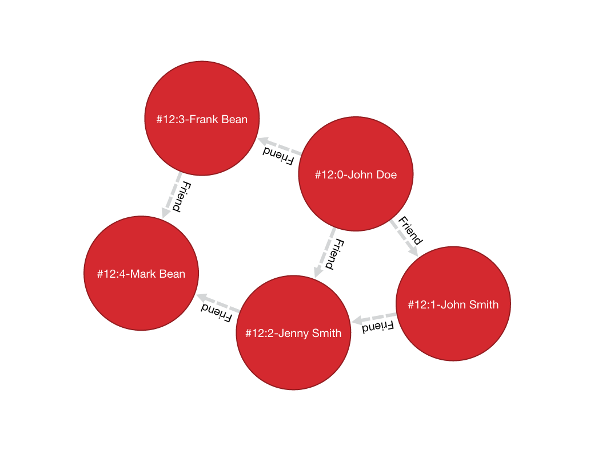
-
Find all people with the name John:
orientdb>
MATCH {class: Person, as: people, where: (name = 'John')} RETURN people--------- people --------- #12:0 #12:1 --------- -
Find all people with the name John and the surname Smith:
orientdb>
MATCH {class: Person, as: people, where: (name = 'John' AND surname = 'Smith')} RETURN people------- people ------- #12:1 ------- -
Find people named John with their friends:
orientdb>
MATCH {class: Person, as: person, where: (name = 'John')}.both('Friend') {as: friend} RETURN person, friend--------+--------- person | friend --------+--------- #12:0 | #12:1 #12:0 | #12:2 #12:0 | #12:3 #12:1 | #12:0 #12:1 | #12:2 --------+--------- -
Find friends of friends:
orientdb>
MATCH {class: Person, as: person, where: (name = 'John' AND surname = 'Doe')} .both('Friend').both('Friend') {as: friendOfFriend} RETURN person, friendOfFriend--------+---------------- person | friendOfFriend --------+---------------- #12:0 | #12:0 #12:0 | #12:1 #12:0 | #12:2 #12:0 | #12:3 #12:0 | #12:4 --------+---------------- -
Find people, excluding the current user:
orientdb>
MATCH {class: Person, as: person, where: (name = 'John' AND surname = 'Doe')}.both('Friend').both('Friend'){as: friendOfFriend, where: ($matched.person != $currentMatch)} RETURN person, friendOfFriend--------+---------------- person | friendOfFriend --------+---------------- #12:0 | #12:1 #12:0 | #12:2 #12:0 | #12:3 #12:0 | #12:4 --------+---------------- -
Find friends of friends to the sixth degree of separation:
orientdb>
MATCH {class: Person, as: person, where: (name = 'John' AND surname = 'Doe')}.both('Friend'){as: friend, where: ($matched.person != $currentMatch) while: ($depth < 6)} RETURN person, friend--------+--------- person | friend --------+--------- #12:0 | #12:0 #12:0 | #12:1 #12:0 | #12:2 #12:0 | #12:3 #12:0 | #12:4 --------+--------- -
Finding friends of friends to six degrees of separation, since a particular date:
orientdb>
MATCH {class: Person, as: person, where: (name = 'John')}.(bothE('Friend'){ where: (date < ?)}.bothV()){as: friend, while: ($depth < 6)} RETURN person, friendIn this case, the condition
$depth < 6refers to traversing the blockbothE('Friend')six times. -
Find friends of my friends who are also my friends, using multiple paths:
orientdb>
MATCH {class: Person, as: person, where: (name = 'John' AND surname = 'Doe')}.both('Friend').both('Friend'){as: friend}, { as: person }.both('Friend'){ as: friend } RETURN person, friend--------+-------- person | friend --------+-------- #12:0 | #12:1 #12:0 | #12:2 --------+--------In this case, the statement matches two expression: the first to friends of friends, the second to direct friends. Each expression shares the common aliases (
personandfriend). To match the whole statement, the result must match both expressions, where the alias values for the first expression are the same as that of the second. -
Find common friends of John and Jenny:
orientdb>
MATCH {class: Person, where: (name = 'John' AND surname = 'Doe')}.both('Friend'){as: friend}.both('Friend') {class: Person, where: (name = 'Jenny')} RETURN friend-------- friend -------- #12:1 --------The same, with two match expressions:
orientdb>
MATCH {class: Person, where: (name = 'John' AND surname = 'Doe')}.both('Friend'){as: friend}, {class: Person, where: (name = 'Jenny')}.both('Friend') {as: friend} RETURN friend
DISTINCT
In v 3.0 the MATCH statement returns all the occurrences of a pattern, even if they are duplicated. To have unique, distinct records as a result, you have to specify the DISTINCT keyword in the RETURN statement.
Example: suppose you have a dataset made like following:
INSERT INTO V SET name = 'John', surname = 'Smith'; INSERT INTO V SET name = 'John', surname = 'Harris' INSERT INTO V SET name = 'Jenny', surname = 'Rose'
This is the result of the query without a DISTINCT clause:
orientdb> MATCH {class: Person, as:p} RETURN p.name as name
--------
name
--------
John
--------
John
--------
Jenny
--------
And this is the result of the query with a DISTINCT clause:
orientdb> MATCH {class: Person, as:p} RETURN DISTINCT p.name as name
--------
name
--------
John
--------
Jenny
--------
IMPORTANT: in V 2.2 it was not possible to specify DISTINCT keyword in the RETURN block and the DISTINCT was implicit.
IMPORTANT: in V 3.0, using the legacy Java API, the behavior will be the same as in v 2.2
Context Variables
When running these queries, you can use any of the following context variables:
| Variable | Description |
|---|---|
$matched | Gives the current matched record. You must explicitly define the attributes for this record in order to access them. You can use this in the where: and while: conditions to refer to current partial matches or as part of the RETURN value. |
$currentMatch | Gives the current complete node during the match. |
$depth | Gives the traversal depth, following a single path item where a while: condition is defined. |
Use Cases
Expanding Attributes
You can run this statement as a sub-query inside of another statement. Doing this allows you to obtain details and aggregate data from the inner SELECT query.
orientdb> SELECT person.name AS name, person.surname AS surname,
friend.name AS friendName, friend.surname AS friendSurname
FROM (MATCH {class: Person, as: person,
where: (name = 'John')}.both('Friend'){as: friend}
RETURN person, friend)
--------+----------+------------+---------------
name | surname | friendName | friendSurname
--------+----------+------------+---------------
John | Doe | John | Smith
John | Doe | Jenny | Smith
John | Doe | Frank | Bean
John | Smith | John | Doe
John | Smith | Jenny | Smith
--------+----------+------------+---------------
As an alternative, you can use the following:
orientdb> MATCH {class: Person, as: person,
where: (name = 'John')}.both('Friend'){as: friend}
RETURN
person.name as name, person.surname as surname,
friend.name as friendName, friend.surname as friendSurname
--------+----------+------------+---------------
name | surname | friendName | friendSurname
--------+----------+------------+---------------
John | Doe | John | Smith
John | Doe | Jenny | Smith
John | Doe | Frank | Bean
John | Smith | John | Doe
John | Smith | Jenny | Smith
--------+----------+------------+---------------
Incomplete Hierarchy
Consider building a database for a company that shows a hierarchy of departments within the company. For instance,
[manager] department
(employees in department)
[m0]0
(e1)
/ \
/ \
/ \
[m1]1 [m2]2
(e2, e3) (e4, e5)
/ \ / \
3 4 5 6
(e6) (e7) (e8) (e9)
/ \
[m3]7 8
(e10) (e11)
/
9
(e12, e13)
This loosely shows that,
- Department
0is the company itself, manager 0 (m0) is the CEO e10works at department7, his manager ism3e12works at department9, this department has no direct manager, soe12's manager ism3(the upper manager)
In this case, you would use the following query to find out who's the manager to a particular employee:
orientdb> SELECT EXPAND(manager) FROM (MATCH {class:Employee,
where: (name = ?)}.out('WorksAt').out('ParentDepartment')
{while: (out('Manager').size() == 0),
where: (out('Manager').size() > 0)}.out('Manager')
{as: manager} RETURN manager)
Deep Traversal
Match path items act in a different manners, depending on whether or not you use while: conditions in the statement.
For instance, consider the following graph:
[name='a'] -FriendOf-> [name='b'] -FriendOf-> [name='c']
Running the following statement on this graph only returns b:
orientdb> MATCH {class: Person, where: (name = 'a')}.out("FriendOf")
{as: friend} RETURN friend
--------
friend
--------
b
--------
What this means is that it traverses the path item out("FriendOf") exactly once. It only returns the result of that traversal.
If you add a while condition:
orientdb> MATCH {class: Person, where: (name = 'a')}.out("FriendOf")
{as: friend, while: ($depth < 2)} RETURN friend
---------
friend
---------
a
b
---------
Including a while: condition on the match path item causes OrientDB to evaluate this item as zero to n times. That means that it returns the starting node, (a, in this case), as the result of zero traversal.
To exclude the starting point, you need to add a where: condition, such as:
orientdb> MATCH {class: Person, where: (name = 'a')}.out("FriendOf")
{as: friend, while: ($depth < 2) where: ($depth > 0)}
RETURN friend
As a general rule,
whileConditions: Define this if it must execute the next traversal, (it evaluates at level zero, on the origin node).whereCondition: Define this if the current element, (the origin node at the zero iteration the right node on the iteration is greater than zero), must be returned as a result of the traversal.
For instance, suppose that you have a genealogical tree. In the tree, you want to show a person, grandparent and the grandparent of that grandparent, and so on. The result: saying that the person is at level zero, parents at level one, grandparents at level two, etc., you would see all ancestors on even levels. That is, level % 2 == 0.
To get this, you might use the following query:
orientdb> MATCH {class: Person, where: (name = 'a')}.out("Parent")
{as: ancestor, while: (true) where: ($depth % 2 = 0)}
RETURN ancestor
Best practices
Queries can involve multiple operations, based on the domain model and use case. In some cases, like projection and aggregation, you can easily manage them with a SELECT query. With others, such as pattern matching and deep traversal, MATCH statements are more appropriate.
Use SELECT and MATCH statements together (that is, through sub-queries), to give each statement the correct responsibilities. Here,
Filtering Record Attributes for a Single Class
Filtering based on record attributes for a single class is a trivial operation through both statements. That is, finding all people named John can be written as:
orientdb> SELECT FROM Person WHERE name = 'John'
You can also write it as,
orientdb> MATCH {class: Person, as: person, where: (name = 'John')}
RETURN person
The efficiency remains the same. Both queries use an index. With SELECT, you obtain expanded records, while with MATCH, you only obtain the Record ID's.
Filtering on Record Attributes of Connected Elements
Filtering based on the record attributes of connected elements, such as neighboring vertices, can grow trick when using SELECT, while with MATCH it is simple.
For instance, find all people living in Rome that have a friend called John. There are three different ways you can write this, using SELECT:
orientdb>SELECT FROM Person WHERE BOTH('Friend').name CONTAINS 'John' AND out('LivesIn').name CONTAINS 'Rome'orientdb>SELECT FROM (SELECT BOTH('Friend') FROM Person WHERE name 'John') WHERE out('LivesIn').name CONTAINS 'Rome'orientdb>SELECT FROM (SELECT in('LivesIn') FROM City WHERE name = 'Rome') WHERE BOTH('Friend').name CONTAINS 'John'
In the first version, the query is more readable, but it does not use indexes, so it is less optimal in terms of execution time. The second and third use indexes if they exist, (on Person.name or City.name, both in the sub-query), but they're harder to read. Which index they use depends only on the way you write the query. That is, if you only have an index on City.name and not Person.name, the second version doesn't use an index.
Using a MATCH statement, the query becomes:
orientdb> MATCH {class: Person, where: (name = 'John')}.both("Friend")
{as: result}.out('LivesIn'){class: City, where: (name = 'Rome')}
RETURN result
Here, the query executor optimizes the query for you, choosing indexes where they exist. Moreover, the query becomes more readable, especially in complex cases, such as multiple nested SELECT queries.
TRAVERSE Alternative
There are similar limitations to using TRAVERSE. You may benefit from using MATCH as an alternative.
For instance, consider a simple TRAVERSE statement, like:
orientdb> TRAVERSE out('Friend') FROM (SELECT FROM Person WHERE name = 'John')
WHILE $depth < 3
Using a MATCH statement, you can write the same query as:
orientdb> MATCH {class: Person, where: (name = 'John')}.both("Friend")
{as: friend, while: ($depth < 3)} RETURN friend
Consider a case where you have a since date property on the edge Friend. You want to traverse the relationship only for edges where the since value is greater than a given date. In a TRAVERSE statement, you might write the query as:
orientdb> TRAVERSE bothE('Friend')[since > date('2012-07-02', 'yyyy-MM-dd')].bothV()
FROM (SELECT FROM Person WHERE name = 'John') WHILE $depth < 3
Unfortunately, this statement DOESN'T WORK in the current release. However, you can get the results you want using a MATCH statement:
orientdb> MATCH {class: Person, where: (name = 'John')}.(bothE("Friend")
{where: (since > date('2012-07-02', 'yyyy-MM-dd'))}.bothV())
{as: friend, while: ($depth < 3)} RETURN friend
Projections and Grouping Operations
Projections and grouping operations are better expressed with a SELECT query. If you need to filter and do projection or aggregation in the same query, you can use SELECT and MATCH in the same statement.
This is particular important when you expect a result that contains attributes from different connected records (cartesian product). For instance, to retrieve names, their friends and the date since they became friends:
orientdb> SELECT person.name AS name, friendship.since AS since, friend.name
AS friend FROM (MATCH {class: Person, as: person}.bothE('Friend')
{as: friendship}.bothV(){as: friend,
where: ($matched.person != $currentMatch)}
RETURN person, friendship, friend)
The same can be also achieved with the MATCH only:
orientdb> MATCH {class: Person, as: person}.bothE('Friend')
{as: friendship}.bothV(){as: friend,
where: ($matched.person != $currentMatch)}
RETURN person.name as name, friendship.since as since, friend.name as friend
RETURN expressions
In the RETURN section you can use:
multiple expressions, with or without an alias (if no alias is defined, OrientDB will generate a default alias for you), comma separated
MATCH
{class: Person, as: person}
.bothE('Friend'){as: friendship}
.bothV(){as: friend, where: ($matched.person != $currentMatch)}
RETURN person, friendship, friend
result:
| person | friendship | friend |
--------------------------------
| #12:0 | #13:0 | #12:2 |
| #12:0 | #13:1 | #12:3 |
| #12:1 | #13:2 | #12:3 |
MATCH
{class: Person, as: person}
.bothE('Friend'){as: friendship}
.bothV(){as: friend, where: ($matched.person != $currentMatch)}
RETURN person.name as name, friendship.since as since, friend.name as friend
result:
| name | since | friend |
-------------------------
| John | 2015 | Frank |
| John | 2015 | Jenny |
| Joe | 2016 | Jenny |
MATCH
{class: Person, as: person}
.bothE('Friend'){as: friendship}
.bothV(){as: friend, where: ($matched.person != $currentMatch)}
RETURN person.name + " is a friend of " + friend.name as friends
result:
| friends |
------------------------------
| John is a friend of Frank |
| John is a friend of Jenny |
| Joe is a friend of Jenny |
$matches, to return all the patterns that match current statement. Each row in the result set will be a single pattern, containing only nodes in the statement that have an as: defined
MATCH
{class: Person, as: person}
.bothE('Friend'){} // no 'as:friendship' in this case
.bothV(){as: friend, where: ($matched.person != $currentMatch)}
RETURN $matches
result:
| person | friend |
--------------------
| #12:0 | #12:2 |
| #12:0 | #12:3 |
| #12:1 | #12:3 |
$paths, to return all the patterns that match current statement. Each row in the result set will be a single pattern, containing all th nodes in the statement. For nodes that have an as:, the alias will be returned, for the others a default alias is generated (automatically generated aliases start with $ORIENT_DEFAULT_ALIAS_)
MATCH
{class: Person, as: person}
.bothE('Friend'){} // no 'as:friendship' in this case
.bothV(){as: friend, where: ($matched.person != $currentMatch)}
RETURN $paths
result:
| person | friend | $ORIENT_DEFAULT_ALIAS_0 |
---------------------------------------------
| #12:0 | #12:2 | #13:0 |
| #12:0 | #12:3 | #13:1 |
| #12:1 | #12:3 | #13:2 |
$elements (since 2.2.1), the same as $matches, but for each node present in the pattern, a single row is created in the result set (no duplicates)
MATCH
{class: Person, as: person}
.bothE('Friend'){} // no 'as:friendship' in this case
.bothV(){as: friend, where: ($matched.person != $currentMatch)}
RETURN $elements
result:
| @rid | @class | name | ..... |
----------------------------------------
| #12:0 | Person | John | ..... |
| #12:1 | Person | Joe | ..... |
| #12:2 | Person | Frank | ..... |
| #12:3 | Person | Jenny | ..... |
$pathElements (since 2.2.1), the same as $paths, but for each node present in the pattern, a single row is created in the result set (no duplicates)
MATCH
{class: Person, as: person}
.bothE('Friend'){} // no 'as:friendship' in this case
.bothV(){as: friend, where: ($matched.person != $currentMatch)}
RETURN $pathElements
result:
| @rid | @class | name | since | ..... |
-------------------------------------------------
| #12:0 | Person | John | | ..... |
| #12:1 | Person | Joe | | ..... |
| #12:2 | Person | Frank | | ..... |
| #12:3 | Person | Jenny | | ..... |
| #13:0 | Friend | | 2015 | ..... |
| #13:1 | Friend | | 2015 | ..... |
| #13:2 | Friend | | 2016 | ..... |
IMPORTANT: When using MATCH statement in OrientDB Studio Graph panel you have to use $elements or $pathElements as return type, to let the Graph panel render the matched patterns correctly
Arrow notation
out(), in() and both() operators can be replaced with arrow notation -->, <-- and --
Eg. the query
MATCH {class: V, as: a}.out(){}.out(){}.out(){as:b}
RETURN a, b
can be written as
MATCH {class: V, as: a} --> {} --> {} --> {as:b}
RETURN a, b
Eg. the query (things that belong to friends)
MATCH {class: Person, as: a}.out('Friend'){as:friend}.in('BelongsTo'){as:b}
RETURN a, b
can be written as
MATCH {class: Person, as: a} -Friend-> {as:friend} <-BelongsTo- {as:b}
RETURN a, b
Using arrow notation the curly braces are mandatory on both sides. eg:
MATCH {class: Person, as: a} --> {} --> {as:b} RETURN a, b //is allowed
MATCH {class: Person, as: a} --> --> {as:b} RETURN a, b //is NOT allowed
MATCH {class: Person, as: a}.out().out(){as:b} RETURN a, b //is allowed
MATCH {class: Person, as: a}.out(){}.out(){as:b} RETURN a, b //is allowed
Negative (NOT) patterns
(since 3.0.3 - experimental)
Together with normal patterns, you can also define negative patterns. A result will be returned only if it also DOES NOT match any of the negative patterns, ie. if the result matches at least one of the negative patterns it won't be returned.
As an example, consider the following problem: given a social network, choose a single person and return all the people that are friends of their friends, but that are not their direct friends.
The pattern can be calculated as follows:
MATCH
{class:Person, as:a, where:(name = "John")} -FriendOf-> {as:b} -FriendOf-> {as:c},
NOT {as:a} -FriendOf-> {as:c}
RETURN c.name
SQL - MOVE VERTEX
Moves one or more vertices into a different class or cluster.
Following the move, the vertices use a different Record ID. The command updates all edges to use the moved vertices. When using a distributed database, if you specify a cluster, it moves the vertices to the server owner of the target cluster.
Syntax
MOVE VERTEX <source> TO <destination> [SET [<field>=<value>]* [,]] [MERGE <JSON>]
[BATCH <batch-size>]
<source>Defines the vertex you want to move. It supports the following values,- Vertex Using the Record ID of a single vertex.
- Array Using an array of record ID's for vertices you want to move.
<destination>Defines where you want to move the vertex to. It supports the following values,- Class Using
CLASS:<class>with the class you want to move the vertex into. - Cluster Using
CLUSTER:<cluster>with the cluster you want to move the vertex into.
- Class Using
SETClause to set values on fields during the transition.MERGEClause to set values on fields during the transition, through JSON.BATCHDefines the batch size, allowing you to execute the command in smaller blocks to avoid memory problems when moving a large number of vertices.
| WARNING: This command updates all connected edges, but not the links. When using the Graph API, it is recommend that you always use edges connected to vertices and never links. |
|---|
Examples
-
Move a single vertex from its current position to the class
Provider:orientdb>
MOVE VERTEX #34:232 TO CLASS:Provider -
Move an array of vertices by their record ID's to the class
Provider:orientdb>
MOVE VERTEX [#34:232,#34:444] TO CLASS:Provider -
Move a set of vertices to the class
Provider, defining those you want to move with a subquery:orientdb>
MOVE VERTEX (SELECT FROM V WHERE city = 'Rome') TO CLASS:Provider -
Move a vertex from its current position to the European cluster
orientdb>
MOVE VERTEX #3:33 TO CLUSTER:providers_europeYou may find this useful when using a distributed database, where you can move vertices onto different servers.
-
Move a set of vertices to the class
Provider, while doing so update the propertymovedOnto the current date:orientdb>
MOVE VERTEX (SELECT FROM V WHERE type = 'provider') TO CLASS:Provider SET movedOn = Date()Note the similarities this syntax has with the
UPDATEcommand. -
Move the vertex using a subquery, using JSON update the properties during the transition:
orientdb>
MOVE VERTEX (SELECT FROM User) TO CLUSTER:users_europe BATCH 50 -
Move the same vertices as above using only one transaction:
orientdb>
MOVE VERTEX (SELECT FROM User) TO CLUSTER:users_europe BATCH -1
For more information, see
Use Cases
Refactoring Graphs through Sub-types
It's a very common situation where you begin modeling your domain one way, but find later that you need more flexibility.
For instance, say that you start out with a vertex class called Person. After using the database for several months, populating it with new vertices, you decide that you need to split these vertices into two new classes, or sub-types, called Customer and Provider, (rendering Person into an abstract class).
-
Create the new classes for your sub-types:
orientdb>
CREATE CLASS Customer EXTENDS Personorientdb>CREATE CLASS Provider EXTENDS Person -
Move the providers and customers from
Personinto their respective sub-types:orientdb>
MOVE VERTEX (SELECT FROM Person WHERE type = 'Customer') TO CLASS:Customerorientdb>MOVE VERTEX (SELECT FROM Person WHERE type = 'Provider') TO CLASS:Provider -
Make the class
Personan abstract class:orientdb>
ALTER CLASS Person ABSTRACT TRUE
Moving Vertices onto Different Servers
With OrientDB, you can scale your infrastructure up by adding new servers. When you add a new server, OrientDB automatically creates a new cluster with the name of the class plus the node name. For instance, customer_europe.
The best practice when you need to scale up is partitioning, especially on writes. If you have a graph with Customer vertices and you want to move some of these onto a different server, you can move them to the cluster owned by the server.
For instance, move all customers that live in Italy, Germany or the United Kingdom onto the cluster customer_europe, which is assigned to the node Europe. This means that access to European customers is faster with applications connected to the European node.
orientdb> MOVE VERTEX (SELECT FROM Customer WHERE ['Italy', 'Germany', 'UK'] IN
out('city').out('country') ) TO CLUSTER:customer_europe
History
2.0
- Initial implementation of the feature.
SQL - OPTIMIZE DATABASE
Optimizes the database for particular operations.
Syntax
OPTIMIZE DATABASE [-lwedges] [-noverbose]
-lwedgesConverts regular edges into Lightweight Edges.-noverboseDisables output.
Currently, this command only supports optimization for Lightweight Edges. Additional optimization options are planned for future releases of OrientDB.
Examples
-
Convert regular edges into Lightweight Edges:
orientdb>
OPTIMIZE DATABASE -lwedges
For more information, see
SQL - PROFILE
PROFILE SQL command returns information about query execution planning and statistics for a specific statement. The statement is actually executed to provide the execution stats.
The result is the execution plan of the query (like for EXPLAIN ) with additional information about execution time spent on each step, in microseconds.
Syntax
PROFILE <command>
<command>Defines the command that you want to profile, eg. a SELECT statement
Examples
PROFILE SELECT sum(Amount), OrderDate
FROM Orders
WHERE OrderDate > date("2012-12-09", "yyyy-MM-dd")
GROUP BY OrderDate
result:
+ FETCH FROM INDEX Orders.OrderDate (1.445μs)
OrderDate > date("2012-12-09", "yyyy-MM-dd")
+ EXTRACT VALUE FROM INDEX ENTRY
+ FILTER ITEMS BY CLASS
Orders
+ CALCULATE PROJECTIONS (5.065μs)
Amount AS _$$$OALIAS$$_1, OrderDate
+ CALCULATE AGGREGATE PROJECTIONS (3.182μs)
sum(_$$$OALIAS$$_1) AS _$$$OALIAS$$_0, OrderDate
GROUP BY OrderDate
+ CALCULATE PROJECTIONS (1.116μs)
_$$$OALIAS$$_0 AS `sum(Amount)`, OrderDate
You can see the (1.445μs) at the end of the first line, it means that fetching from index Orders.OrderDate took 1.445 microseconds (1.4 milliseconds)
For more information, see
SQL - REBUILD INDEXES
Rebuilds automatic indexes.
Syntax
REBUILD INDEX <index>
<index>Defines the index that you want to rebuild. Use*to rebuild all automatic indexes.
NOTE: During the rebuild, any idempotent queries made against the index, skip the index and perform sequential scans. This means that queries run slower during this operation. Non-idempotent commands, such as
INSERT,UPDATE, andDELETEare blocked waiting until the indexes are rebuilt.
Examples
-
Rebuild an index on the
nickproperty on the classProfile:orientdb>
REBUILD INDEX Profile.nick -
Rebuild all indexes:
orientdb>
REBUILD INDEX *
For more information, see
SQL - REVOKE
Changes permissions of a role, revoking access to one or more resources. To give access to a resource to the role, see the GRANT command.
Syntax
REVOKE [ <permission> | POLICY <policyName> ] ON <resource> FROM <role>
<permission>Defines the permission you want to revoke from the role.<policyName>Defines the name of a security policy<resource>Defines the resource on which you want to revoke the permissions.<role>Defines the role you want to revoke the permissions.
Examples
-
Revoke permission to delete records on any cluster to the role
backoffice:orientdb>
REVOKE DELETE ON database.cluster.* FROM backoffice -
Revoke a security policy previously assigned to
backofficeprofile on Person class:orientdb>
REVOKE POLICY ON database.class.Person FROM backoffice
For more information, see
Supported Permissions
Using this command, you can grant the following permissions to a role.
| Permission | Description |
|---|---|
NONE | Revokes no permissions on the resource. |
CREATE | Revokes create permissions on the resource, such as the CREATE CLASS or CREATE CLUSTER commands. |
READ | Revokes read permissions on the resource, such as the SELECT query. |
UPDATE | Revokes update permissions on the resource, such as the UPDATE or UPDATE EDGE commands. |
DELETE | Revokes delete permissions on the resource, such as the DROP INDEX or DROP SEQUENCE commands. |
ALL | Revokes all permissions on the resource. |
Supported Resources
Using this command, you can grant permissions on the following resources.
| Resource | Description |
|---|---|
database | Revokes access on the current database. |
database.class.<class> | Revokes access on records contained in the indicated class. Use ** to indicate all classes. |
database.class.<class>.<property> | intended only for security policies. Revokes policies assigned to a specific class property for a role. Use ** to indicate all classes and/or all properties. |
database.cluster.<cluster> | Revokes access to records contained in the indicated cluster. Use ** to indicate all clusters. |
database.query | Revokes the ability to execute a query, (READ is sufficient). |
database.command.<command> | Revokes the ability to execute the given command. Use CREATE for INSERT, READ for SELECT, UPDATE for UPDATE and DELETE for DELETE. |
database.config.<permission> | Revokes access to the configuration. Valid permissions are READ and UPDATE. |
database.hook.record | Revokes the ability to set hooks. |
server.admin | Revokes the ability to access server resources. |
SQL - SELECT
OrientDB supports the SQL language to execute queries against the database engine. For more information, see operators and functions. For more information on the differences between this implementation and the SQL-92 standard, please refer to this section.
Syntax:
SELECT [ <Projections> ] [ FROM <Target> [ LET <Assignment>* ] ]
[ WHERE <Condition>* ]
[ GROUP BY <Field>* ]
[ ORDER BY <Fields>* [ ASC|DESC ] * ]
[ UNWIND <Field>* ]
[ SKIP <SkipRecords> ]
[ LIMIT <MaxRecords> ]
[ FETCHPLAN <FetchPlan> ]
[ TIMEOUT <Timeout> [ <STRATEGY> ]
[ LOCK default|record ]
[ PARALLEL ]
[ NOCACHE ]
<Projections>Indicates the data you want to extract from the query as the result-set. Note: In OrientDB, this variable is optional. In the projections you can define aliases for single fields, using theASkeyword; in current release aliases cannot be used in the WHERE condition, GROUP BY and ORDER BY (they will be evaluated to null)FROMDesignates the object to query. This can be a class, cluster, single Record ID, set of Record ID's, or (beginning in version 1.7.7) index values sorted by ascending or descending key order.- When querying a class, for
<target>use the class name. - When querying a cluster, for
<target>useCLUSTER:<cluster-name>(eg.CLUSTER:person) orCLUSTER:<cluster-id>(eg.CLUSTER:12). This causes the query to execute only on records in that cluster. - When querying record ID's, you can specific one or a small set of records to query. This is useful when you need to specify a starting point in navigating graphs.
- When querying indexes, use the following prefixes:
INDEXVALUES:<index>andINDEXVALUESASC:<index>sorts values into an ascending order of index keys.INDEXVALUESDESC:<index>sorts the values into a descending order of index keys.
- When querying a class, for
WHEREDesignates conditions to filter the result-set.LETBinds context variables to use in projections, conditions or sub-queries.GROUP BYDesignates field on which to group the result-set.ORDER BYDesignates the field with which to order the result-set. Use the optionalASCandDESCoperators to define the direction of the order. The default is ascending. Additionally, if you are using a projection, you need to include theORDER BYfield in the projection. Note that ORDER BY works only on projection fields (fields that are returned in the result set) not on LET variables.UNWINDDesignates the field on which to unwind the collection. Introduced in version 2.1.SKIPDefines the number of records you want to skip from the start of the result-set. You may find this useful in pagination, when using it in conjunction withLIMIT.LIMITDefines the maximum number of records in the result-set. You may find this useful in pagination, when using it in conjunction withSKIP.FETCHPLANDefines how you want it to fetch results. For more information, see Fetching Strategy.TIMEOUTDefines the maximum time in milliseconds for the query. By default, queries have no timeouts. If you don't specify a timeout strategy, it defaults toEXCEPTION. These are the available timeout strategies:RETURNTruncate the result-set, returning the data collected up to the timeout.EXCEPTIONRaises an exception.
LOCKDefines the locking strategy. These are the available locking strategies:DEFAULTLocks the record for the read.RECORDLocks the record in exclusive mode for the current transaction, until the transaction commits or you perform a rollback operation.
PARALLELExecutes the query against x concurrent threads, where x refers to the number of processors or cores found on the host operating system of the query. You may findPARALLELexecution useful on long running queries or queries that involve multiple cluster. For simple queries, usingPARALLELmay cause a slow down due to the overhead inherent in using multiple threads.NOCACHEDefines whether you want to avoid using the cache.
NOTE: Beginning with version 1.0 rc 7, the
RANGEoperator was removed. To execute range queries, instead use theBETWEENoperator against@RID. For more information, see Pagination.
Examples:
-
Return all records of the class
Person, where the name starts withLuk:orientdb>
SELECT FROM Person WHERE name LIKE 'Luk%'Alternatively, you might also use either of these queries:
orientdb>
SELECT FROM Person WHERE name.left(3) = 'Luk'orientdb>SELECT FROM Person WHERE name.substring(0,3) = 'Luk' -
Return all records of the type
!AnimalTypewhere the collectionracescontains at least one entry where the first character ise, ignoring case:orientdb>
SELECT FROM animaltype WHERE races CONTAINS( name.toLowerCase().subString( 0, 1) = 'e' ) -
Return all records of type
!AnimalTypewhere the collectionracescontains at least one entry with namesEuropeanorAsiatic:orientdb>
SELECT * FROM animaltype WHERE races CONTAINS(name in ['European', 'Asiatic']) -
Return all records in the class
Profilewhere any field contains the worddanger:orientdb>
SELECT FROM Profile WHERE ANY() LIKE '%danger%' -
Return any record at any level that has the word
danger:DEPRECATED SYNTAX
orientdb>
SELECT FROM Profile WHERE ANY() TRAVERSE( ANY() LIKE '%danger%' ) -
Return any record where up to the third level of connections has some field that contains the word
danger, ignoring case:orientdb>
SELECT FROM Profile WHERE ANY() TRAVERSE(0, 3) ( ANY().toUpperCase().indexOf('danger') > -1 ) -
Return all results on class
Profile, ordered by the fieldnamein descending order:orientdb>
SELECT FROM Profile ORDER BY name DESC -
Return the number of records in the class
Accountper city:orientdb>
SELECT SUM(*) FROM Account GROUP BY city -
Traverse records from a root node:
orientdb>
SELECT FROM 11:4 WHERE ANY() TRAVERSE(0,10) (address.city = 'Rome') -
Return only a limited set of records:
orientdb>
SELECT FROM [#10:3, #10:4, #10:5] -
Return three fields from the class
Profile:orientdb>
SELECT nick, followings, followers FROM Profile -
Return the field
namein uppercase and the field country name of the linked city of the address:orientdb>
SELECT name.toUppercase(), address.city.country.name FROM Profile -
Return records from the class
Profilein descending order of their creation:orientdb>
SELECT FROM Profile ORDER BY @rid DESC -
Return value of
emailwhich is stored in a JSON fielddata(type EMBEDDED) of the classPerson, where the name starts withLuk:orientdb>
SELECT data.email FROM Person WHERE name LIKE 'Luk%'Beginning in version 1.7.7, OrientDB can open an inverse cursor against clusters. This is very fast and doesn't require the classic ordering resources, CPU and RAM.
Projections
In the standard implementations of SQL, projections are mandatory. In OrientDB, the omission of projects translates to its returning the entire record. That is, it reads no projection as the equivalent of the * wildcard.
orientdb> SELECT FROM Account
For all projections except the wildcard *, it creates a new temporary document, which does not include the @rid and @version fields of the original record.
orientdb> SELECT name, age FROM Account
The naming convention for the returned document fields are:
- Field name for plain fields, like
invoicebecominginvoice. - First field name for chained fields, like
invoice.customer.namebecominginvoice. - Function name for functions, like
MAX(salary)becomingmax.
In the event that the target field exists, it uses a numeric progression. For instance,
orientdb> SELECT MAX(incoming), MAX(cost) FROM Balance
------+------
max | max2
------+------
1342 | 2478
------+------
To override the display for the field names, use the AS.
orientdb> SELECT MAX(incoming) AS max_incoming, MAX(cost) AS max_cost FROM Balance
---------------+----------
max_incoming | max_cost
---------------+----------
1342 | 2478
---------------+----------
With the dollar sign $, you can access the context variables. Each time you run the command, OrientDB accesses the context to read and write the variables. For instance, say you want to display the path and depth levels up to the fifth of a TRAVERSE on all records in the Movie class.
orientdb> SELECT $path, $depth FROM ( TRAVERSE * FROM Movie WHERE $depth <= 5 )
LET Block
The LET block contains context variables to assign each time OrientDB evaluates a record. It destroys these values once the query execution ends. You can use context variables in projections, conditions, and sub-queries.
Assigning Fields for Reuse
OrientDB allows for crossing relationships. In single queries, you need to evaluate the same branch of the nested relationship. This is better than using a context variable that refers to the full relationship.
orientdb> SELECT FROM Profile WHERE address.city.name LIKE '%Saint%"' AND
( address.city.country.name = 'Italy' OR
address.city.country.name = 'France' )
Using the LET makes the query shorter and faster, because it traverses the relationships only once:
orientdb> SELECT FROM Profile LET $city = address.city WHERE $city.name LIKE
'%Saint%"' AND ($city.country.name = 'Italy' OR $city.country.name = 'France')
In this case, it traverses the path till address.city only once.
Sub-query
The LET block allows you to assign a context variable to the result of a sub-query.
orientdb> SELECT FROM Document LET $temp = ( SELECT @rid, $depth FROM (TRAVERSE
V.OUT, E.IN FROM $parent.current ) WHERE @class = 'Concept' AND
( id = 'first concept' OR id = 'second concept' )) WHERE $temp.SIZE() > 0
LET Block in Projection
You can use context variables as part of a result-set in projections. For instance, the query below displays the city name from the previous example:
orientdb> SELECT $temp.name FROM Profile LET $temp = address.city WHERE $city.name
LIKE '%Saint%"' AND ( $city.country.name = 'Italy' OR
$city.country.name = 'France' )
Unwinding
Beginning with version 2.1, OrientDB allows unwinding of collection fields and obtaining multiple records as a result, one for each element in the collection:
orientdb> SELECT name, OUT("Friend").name AS friendName FROM Person
--------+-------------------
name | friendName
--------+-------------------
'John' | ['Mark', 'Steve']
--------+-------------------
In the event if you want one record for each element in friendName, you can rewrite the query using UNWIND:
orientdb> SELECT name, OUT("Friend").name AS friendName FROM Person UNWIND friendName
--------+-------------
name | friendName
--------+-------------
'John' | 'Mark'
'John' | 'Steve'
--------+-------------
NOTE: For more information on other SQL commands, see SQL Commands.
Execution planning
For details about query execution planning, please refer to SQL SELECT Execution
History
- 1.7.7: New target prefixes
INDEXVALUES:,INDEXVALUESASC:andINDEXVALUESDESC:added. - 1.7:
PARALLELkeyword added to execute the query against x concurrent threads, where x is the number of processors or cores found on the operating system where the query runs.PARALLELexecution is useful on long running queries or queries that involve multiple clusters. On simple queries, usingPARALLELcan cause a slow down due to the overhead of using multiple threads.
SQL - TRAVERSE
Retrieves connected records crossing relationships. This works with both the Document and Graph API's, meaning that you can traverse relationships between say invoices and customers on a graph, without the need to model the domain using the Graph API.
| In many cases, you may find it more efficient to use SELECT, which can result in shorter and faster queries. For more information, see TRAVERSE versus SELECT below. |
Syntax
TRAVERSE <[class.]field>|*|any()|all()
[FROM <target>]
[
MAXDEPTH <number>
|
WHILE <condition>
]
[LIMIT <max-records>]
[STRATEGY <strategy>]
<fields>Defines the fields you want to traverse.<target>Defines the target you want to traverse. This can be a class, one or more clusters, a single Record ID, set of Record ID's, or a sub-query.MAXDEPTHDefines the maximum depth of the traversal.0indicates that you only want to traverse the root node. Negative values are invalid.WHILEDefines the condition for continuing the traversal while it is true.LIMITDefines the maximum number of results the command can return.STRATEGYDefines strategy for traversing the graph.
NOTE: The use of the
WHEREclause has been deprecated for this command.
NOTE: There is a difference between
MAXDEPTH NandWHILE DEPTH <= N: theMAXDEPTHwill evaluate exactly N levels, while theWHILEwill evaluate N+1 levels and will discard the N+1th, so theMAXDEPTHin general has better performance.
Examples
In a social network-like domain, a user profile is connected to friends through links. The following examples consider common operations on a user with the record ID #10:1234.
-
Traverse all fields in the root record:
orientdb>
TRAVERSE * FROM #10:1234 -
Specify fields and depth up to the third level, using the
BREADTH_FIRSTstrategy:orientdb>
TRAVERSE out("Friend") FROM #10:1234 MAXDEPTH 3 STRATEGY BREADTH_FIRST -
Execute the same command, this time filtering for a minimum depth to exclude the first target vertex:
orientdb>
SELECT FROM (TRAVERSE out("Friend") FROM #10:1234 MAXDEPTH 3) WHERE $depth >= 1NOTE: You can also define the maximum depth in the
SELECTcommand, but it's much more efficient to set it at the innerTRAVERSEstatement because the returning record sets are already filtered by depth. -
Combine traversal with
SELECTcommand to filter the result-set. Repeat the above example, filtering for users in Rome:orientdb>
SELECT FROM (TRAVERSE out("Friend") FROM #10:1234 MAXDEPTH 3) WHERE city = 'Rome' -
Extract movies of actors that have worked, at least once, in any movie produced by J.J. Abrams:
orientdb>
SELECT FROM (TRAVERSE out("Actors"), out("Movies") FROM (SELECT FROM Movie WHERE producer = "J.J. Abrams") MAXDEPTH 3) WHERE @class = 'Movie' -
Display the current path in the traversal:
orientdb>
SELECT $path FROM ( TRAVERSE out() FROM V MAXDEPTH 10 )
Supported Variables
Fields
Defines the fields that you want to traverse. If set to *, any() or all() then it traverses all fields. This can prove costly to performance and resource usage, so it is recommended that you optimize the command to only traverse the pertinent fields.
In addition to his, you can specify the fields at a class-level. Polymorphism is supported. By specifying Person.city and the class Customer extends person, you also traverse fields in Customer.
Field names are case-sensitive, classes not.
Target
Targets for traversal can be,
<class>Defines the class that you want to traverse.CLUSTER:<cluster>Defines the cluster you want to traverse.<record-id>Individual root Record ID that you want to traverse.[<record-id>,<record-id>,...]Set of Record ID's that you want to traverse. This is useful when navigating graphs starting from the same root nodes.
Context Variables
In addition to the above, you can use the following context variables in traversals:
$parentGives the parent context, if any. You may find this useful when traversing from a sub-query.$currentGives the current record in the iteration. To get the upper-level record in nested queries, you can use$parent.$current.$depthGives the current depth of nesting.$pathGives a string representation of the current path. For instance,#5:0#.out. You can also display it throughSELECT:orientdb>
SELECT $path FROM (TRAVERSE * FROM V)
Use Cases
TRAVERSE versus SELECT
When you already know traversal information, such as relationship names and depth-level, consider using SELECT instead of TRAVERSE as it is faster in some cases.
For example, this query traverses the follow relationship on Twitter accounts, getting the second level of friendship:
orientdb> SELECT FROM (TRAVERSE out('follow') FROM TwitterAccounts MAXDEPTH 2 )
WHERE $depth = 2
But, you could also express this same query using SELECT operation, in a way that is also shorter and faster:
orientdb> SELECT out('follow').out('follow') FROM TwitterAccounts
TRAVERSE with the Graph Model and API
While you can use the TRAVERSE command with any domain model, it provides the greatest utility in [Graph Databases[(Graph-Database-Tinkerpop.md) model.
This model is based on the concepts of the Vertex (or Node) as the class V and the Edge (or Arc, Connection, Link, etc.) as the class E. If you want to traverse in a direction, you have to use the class name when declaring the traversing fields. The supported directions are:
- Vertex to outgoing edges Using
outE()oroutE('EdgeClassName'). That is, going out from a vertex and into the outgoing edges. - Vertex to incoming edges Using
inE()orinE('EdgeClassName'). That is, going from a vertex and into the incoming edges. - Vertex to all edges Using
bothE()orbothE('EdgeClassName'). That is, going from a vertex and into all the connected edges. - Edge to Vertex (end point) Using
inV(). That is, going out from an edge and into a vertex. - Edge to Vertex (starting point) Using
outV(). That is, going back from an edge and into a vertex. - Edge to Vertex (both sizes) Using
bothV(). That is, going from an edge and into connected vertices. - Vertex to Vertex (outgoing edges) Using
out()orout('EdgeClassName'). This is the same asoutE().inV() - Vertex to Vertex (incoming edges) Using
in()orin('EdgeClassName'). This is the same asoutE().inV() - Vertex to Vertex (all directions) Using
both()orboth('EdgeClassName').
For instance, traversing outgoing edges on the record #10:3434:
orientdb> TRAVERSE out() FROM #10:3434
In a domain for emails, to find all messages sent on January 1, 2012 from the user Luca, assuming that they are stored in the vertex class User and that the messages are contained in the vertex class Message. Sent messages are stored as out connections on the edge class SentMessage:
orientdb> SELECT FROM (TRAVERSE outE(), inV() FROM (SELECT FROM User WHERE
name = 'Luca') MAXDEPTH 2 AND (@class = 'Message' or
(@class = 'SentMessage' AND sentOn = '01/01/2012') )) WHERE
@class = 'Message'
For more information, see
- Java-Traverse page.
- SQL Commands
SQL - TRUNCATE CLASS
Deletes records of all clusters defined as part of the class.
By default, every class has an associated cluster with the same name. This command operates at a lower level than DELETE. This commands ignores sub-classes, (That is, their records remain in their clusters). If you want to also remove all records from the class hierarchy, you need to use the POLYMORPHIC keyword.
Truncation is not permitted on vertex or edge classes, but you can force its execution using the UNSAFE keyword. Forcing truncation is strongly discouraged, as it can leave the graph in an inconsistent state.
Syntax
TRUNCATE CLASS <class> [ POLYMORPHIC ] [ UNSAFE ]
<class>Defines the class you want to truncate.POLYMORPHICDefines whether the command also truncates the class hierarchy.UNSAFEDefines whether the command forces truncation on vertex or edge classes, (that is, sub-classes that extend the classesVorE).
Examples
-
Remove all records of the class
Profile:orientdb>
TRUNCATE CLASS Profile
For more information, see
SQL - TRUNCATE CLUSTER
Deletes all records of a cluster. This command operates at a lower level than the standard DELETE command.
Truncation is not permitted on vertex or edge classes, but you can force its execution using the UNSAFE keyword. Forcing truncation is strongly discouraged, as it can leave the graph in an inconsistent state.
Syntax
TRUNCATE CLUSTER <cluster>
<cluster>Defines the cluster to delete.UNSAFEDefines whether the command forces truncation on vertex or edge classes, (that is, sub-classes that extend the classesVorE).
Examples
-
Remove all records in the cluster
profile:orientdb>
TRUNCATE CLUSTER profile
For more information, see
SQL - TRUNCATE RECORD
Deletes a record or records without loading them. Useful in cases where the record is corrupted in a way that prevents OrientDB from correctly loading it.
Syntax
TRUNCATE RECORD <record-id>*
<record-id>Defines the Record ID you want to truncate. You can also truncate multiple records using a comma-separated list within brackets.
This command returns the number of records it truncates.
Examples
-
Truncate a record:
orientdb>
TRUNCATE RECORD 20:3 -
Truncate three records together:
orientdb>
TRUNCATE RECORD [20:0, 20:1, 20:2]
For more information, see
SQL - UPDATE
Update one or more records in the current database. Remember: OrientDB can work in schema-less mode, so you can create any field on-the-fly. Furthermore, the command also supports extensions to work on collections.
Syntax:
UPDATE <class>|CLUSTER:<cluster>|<recordID>
[SET|REMOVE <field-name> = <field-value>[,]*]|[CONTENT|MERGE <JSON>]
[UPSERT]
[RETURN <returning> [<returning-expression>]]
[WHERE <conditions>]
[LOCK default|record]
[LIMIT <max-records>] [TIMEOUT <timeout>]
-
SETDefines the fields to update. -
REMOVERemoves an item in collection and map fields. -
CONTENTReplaces the record content with a JSON document. -
MERGEMerges the record content with a JSON document. -
LOCKSpecifies how to lock the record between the load and update. You can use one of the following lock strategies:DEFAULTNo lock. Use in the event of concurrent updates, the MVCC throws an exception.RECORDLocks the record during the update.
-
UPSERTUpdates a record if it exists or inserts a new record if it doesn't. This avoids the need to execute two commands, (one for each condition, inserting and updating).UPSERTrequires aWHEREclause and a class target. There are further limitations onUPSERT, explained below. -
RETURNSpecifies an expression to return instead of the record and what to do with the result-set returned by the expression. The available return operators are:COUNTReturns the number of updated records. This is the default return operator.BEFOREReturns the records before the update.AFTERReturn the records after the update.
-
LIMITDefines the maximum number of records to update. -
TIMEOUTDefines the time you want to allow the update run before it times out.
NOTE: The Record ID must have a
#prefix. For instance,#12:3.
Examples:
-
Update to change the value of a field:
orientdb>
UPDATE Profile SET nick = 'Luca' WHERE nick IS NULLUpdated 2 record(s) in 0.008000 sec(s). -
Update to remove a field from all records:
orientdb>
UPDATE Profile REMOVE nick -
Update to remove a value from a collection, if you know the exact value that you want to remove:
Remove an element from a link list or set:
orientdb>
UPDATE Account REMOVE address = #12:0Remove an element from a list or set of strings:
orientdb>
UPDATE Account REMOVE addresses = 'Foo' -
Update to remove a value, filtering on value attributes.
Remove addresses based in the city of Rome:
orientdb>
UPDATE Account REMOVE addresses = addresses[city = 'Rome'] -
Update to remove a value, filtering based on position in the collection.
orientdb>
UPDATE Account REMOVE addresses = addresses[1]This remove the second element from a list, (position numbers start from
0, soaddresses[1]is the second elelment). -
Update to remove a value from a map
orientdb>
UPDATE Account REMOVE addresses = 'Luca' -
Update an embedded document. The
UPDATEcommand can take JSON as a value to update.orientdb>
UPDATE Account SET address={ "street": "Melrose Avenue", "city": { "name": "Beverly Hills" } } -
Update the first twenty records that satisfy a condition:
orientdb>
UPDATE Profile SET nick = 'Luca' WHERE nick IS NULL LIMIT 20 -
Update a record or insert if it doesn't already exist:
orientdb>
UPDATE Profile SET nick = 'Luca' UPSERT WHERE nick = 'Luca' -
Updates using the
RETURNkeyword:orientdb>
UPDATE ♯7:0 SET gender='male' RETURN AFTER @ridorientdb>UPDATE ♯7:0 SET gender='male' RETURN AFTER @versionorientdb>UPDATE ♯7:0 SET gender='male' RETURN AFTER @thisorientdb>UPDATE ♯7:0 SET gender='male' RETURN AFTER $current.exclude( "really_big_field")
In the event that a single field is returned, OrientDB wraps the result-set in a record storing the value in the field result. This avoids introducing a new serialization, as there is no primitive values collection serialization in the binary protocol. Additionally, it provides useful fields like version and rid from the original record in corresponding fields. The new syntax allows for optimization of client-server network traffic.
For more information on SQL syntax, see SELECT.
Limitations of the UPSERT Clause
The UPSERT clause only guarantees atomicity when you use a UNIQUE index and perform the look-up on the index through the WHERE condition.
orientdb> UPDATE Client SET id = 23 UPSERT WHERE id = 23
Here, you must have a unique index on Client.id to guarantee uniqueness on concurrent operations.
SQL - UPDATE EDGE
Updates edge records in the current database. This is the equivalent of the UPDATE command, with the addition of checking and maintaining graph consistency with vertices, in the event that you update the out and in properties.
Bear in mind that OrientDB can also work in schema-less mode, allowing you to create fields on the fly. Furthermore, that it works on collections and necessarily includes some extensions to the standard SQL for handling collections.
This command was introduced in version 2.2.
Syntax
UPDATE EDGE <edge>
[SET|INCREMENT|ADD|REMOVE|PUT <field-name> = <field-value>[,]*]|[CONTENT|MERGE <JSON>]
[UPSERT]
[RETURN <returning> [<returning-expression>]]
[WHERE <conditions>]
[LOCK default|record]
[LIMIT <max-records>] [TIMEOUT <timeout>]
<edge>Defines the edge that you want to update. You can choose between:- Class Updating edges by class.
- Cluster Updating edges by cluster, using
CLUSTERprefix. - Record ID Updating edges by Record ID.
SETUpdates the field to the given value.REMOVEDefines an item to remove from a collection of fields.RETURNDefines the expression you want to return after running the update.COUNTReturns the number of updated records. This is the default operator.BEFOREReturns the records before the update.AFTERReturns the records after the update.
WHEREDefines the filter conditions.LOCKDefines how the record locks between the load and update. You can choose between the following lock strategies:DEFAULTDisables locking. Use this in the event of concurrent updates. It throws an exception in the event of conflict.RECORDLocks the record during the update.
UPSERTUpdates a record if it exists or inserts a new record if it doesn't. This avoids the need to execute two commands, (one for each condition, inserting and updating).LIMITDefines the maximum number of records to update.
Examples
-
Change the edge endpoint:
orientdb>
UPDATE EDGE Friend SET out = (SELECT FROM Person WHERE name = 'John') WHERE foo = 'bar'
Limitations of the UPSERT Clause
The UPSERT clause only guarantees atomicity when you use a UNIQUE index and perform the look-up on the index through the WHERE condition.
orientdb> UPDATE EDGE hasAssignee SET foo = 'bar' UPSERT WHERE id = 56
Here, you must have a unique index on id to guarantee uniqueness on concurrent operations.
For more information, see
SQL - Filtering
The Where condition is shared among many SQL commands.
Syntax
[<item>] <operator> <item>
Items
And item can be:
| What | Description | Example | Available since |
|---|---|---|---|
| field | Document field | where price > 1000000 | 0.9.1 |
| field<indexes> | Document field part. To know more about field part look at the full syntax: properties | where tags[name='Hi'] or tags[0-3] IN ('Hello') and employees IS NOT NULL | 1.0rc5 |
| record attribute | Record attribute name with @ as prefix | where @class = 'Profile' | 0.9.21 |
| column | The number of the column. Useful in Column Database | where column(1) > 300 | 0.9.1 |
| any() | Represents any field of the Document. The condition is true if ANY of the fields matches the condition | where any() like 'L%' | 0.9.10 |
| all() | Represents all the fields of the Document. The condition is true if ALL the fields match the condition | where all() is null | 0.9.10 |
| functions | Any function between the defined ones | where distance(x, y, 52.20472, 0.14056 ) <= 30 | 0.9.25 |
| $variable | Context variable prefixed with $ | where $depth <= 3 | 1.2.0 |
Record attributes
| Name | Description | Example | Available since |
|---|---|---|---|
| @this | returns the record it self | select @this.toJSON() from Account | 0.9.25 |
| @rid | returns the Record ID in the form <cluster:position>. It's null for embedded records. *NOTE: using @rid in where condition slow down queries. Much better to use the Record ID as target. Example: change this: select from Profile where @rid = #10:44 with this: select from #10:44 * | @rid = #11:0 | 0.9.21 |
| @class | returns Class name only for record of type Schema Aware. It's null for the others | @class = 'Profile' | 0.9.21 |
| @version | returns the record version as integer. Version starts from 0. Can't be null | @version > 0 | 0.9.21 |
| @size | returns the record size in bytes | @size > 1024 | 0.9.21 |
| @fields | returns the number of fields in document | select @fields from V | - |
| @type | returns the record type between: 'document', 'column', 'flat', 'bytes' | @type = 'flat' | 0.9.21 |
Operators
Conditional Operators
| Apply to | Operator | Description | Example | Available since |
|---|---|---|---|---|
| any | = | Equals to | name = 'Luke' | 0.9.1 |
| string | like | Similar to equals, but allow the wildcard '%' that means 'any' | name like 'Luk%' | 0.9.1 |
| any | < | Less than | age < 40 | 0.9.1 |
| any | <= | Less than or equal to | age <= 40 | 0.9.1 |
| any | > | Greater than | age > 40 | 0.9.1 |
| any | >= | Greater than or equal to | age >= 40 | 0.9.1 |
| any | <> | Not equals (same of !=) | age <> 40 | 0.9.1 |
| any | BETWEEN | The value is between a range. It's equivalent to <field> >= <from-value> AND <field> <= <to-value> | price BETWEEN 10 and 30 | 1.0rc2 |
| any | IS | Used to test if a value is NULL | children is null | 0.9.6 |
| record, string (as class name) | INSTANCEOF | Used to check if the record extends a class | @this instanceof 'Customer' or @class instanceof 'Provider' | 1.0rc8 |
| collection | IN | contains any of the elements listed | name in ['European','Asiatic'] | |
| collection | CONTAINS | true if the collection contains at least one element that satisfy the next condition. Condition can be a single item: in this case the behaviour is like the IN operator | children contains (name = 'Luke') - map.values() contains (name = 'Luke') | 0.9.7 |
| collection | CONTAINSALL | true if all the elements of the collection satisfy the next condition | children containsAll (name = 'Luke') | 0.9.7 |
| collection | CONTAINSANY | true if any the elements of the collection satisfy the next condition | children containsAny (name = 'Luke') | |
| map | CONTAINSKEY | true if the map contains at least one key equals to the requested. You can also use map.keys() CONTAINS in place of it | connections containsKey 'Luke' | 0.9.22 |
| map | CONTAINSVALUE | true if the map contains at least one value equals to the requested. You can also use map.values() CONTAINS in place of it | connections containsValue 10:3 | 0.9.22 |
| string | CONTAINSTEXT | When used against an indexed field, a lookup in the index will be performed with the text specified as key. When there is no index a simple Java indexOf will be performed. So the result set could be different if you have an index or not on that field | text containsText 'jay' | 0.9.22 |
| string | MATCHES | Matches the string using a [http://www.regular-expressions.info/ Regular Expression] | text matches '\b[A-Z0-9.%+-]+@[A-Z0-9.-]+.[A-Z]{2,4}\b' | 0.9.6 |
| any | TRAVERSE[(<minDepth> [,<maxDepth> [,<fields>]] | This function was born before the SQL Traverse statement and today it's pretty limited. Look at Traversing graphs to know more about traversing in better ways. true if traversing the declared field(s) at the level from <minDepth> to <maxDepth> matches the condition. A minDepth = 0 means the root node, maxDepth = -1 means no limit: traverse all the graph recursively. If <minDepth> and <maxDepth> are not used, then (0, -1) will be taken. If <fields> is not passed, than any() will be used. | select from profile where any() traverse(0,7,'followers,followings') ( address.city.name = 'Rome' ) | 0.9.10 and 0.9.24 for <fields> parameter |
Logical Operators
| Operator | Description | Example | Available since |
|---|---|---|---|
| AND | true if both the conditions are true | name = 'Luke' and surname like 'Sky%' | 0.9.1 |
| OR | true if at least one of the condition is true | name = 'Luke' or surname like 'Sky%' | 0.9.1 |
| NOT | true if the condition is false. NOT needs parenthesis on the right with the condition to negate | not ( name = 'Luke') | 1.2 |
Mathematics Operators
| Apply to | Operator | Description | Example | Available since |
|---|---|---|---|---|
| Numbers | + | Plus | age + 34 | 1.0rc7 |
| Numbers | - | Minus | salary - 34 | 1.0rc7 |
| Numbers | * | Multiply | factor * 1.3 | 1.0rc7 |
| Numbers | / | Divide | total / 12 | 1.0rc7 |
| Numbers | % | Mod | total % 3 | 1.0rc7 |
Starting from v1.4 OrientDB supports the eval() function to execute complex operations. Example:
select eval( "amount * 120 / 100 - discount" ) as finalPrice from Order
Methods
Also called "Field Operators", are are treated on a separate page.
Functions
All the SQL functions are treated on a separate page.
Variables
OrientDB supports variables managed in the context of the command/query. By default some variables are created. Below the table with the available variables:
| Name | Description | Command(s) | Since |
|---|---|---|---|
| $parent | Get the parent context from a sub-query. Example: select from V let $type = ( traverse * from $parent.$current.children ) | SELECT and TRAVERSE | 1.2.0 |
| $current | Current record to use in sub-queries to refer from the parent's variable | SELECT and TRAVERSE | 1.2.0 |
| $depth | The current depth of nesting | TRAVERSE | 1.1.0 |
| $path | The string representation of the current path. Example: #6:0.in.#5:0#.out. You can also display it with -> select $path from (traverse * from V) | TRAVERSE | 1.1.0 |
| $stack | The List of operation in the stack. Use it to access to the history of the traversal | TRAVERSE | 1.1.0 |
| $history | The set of all the records traversed as a Set<ORID> | TRAVERSE | 1.1.0 |
To set custom variable use the LET keyword.
SQL - Functions
Bundled functions
Functions by category
SQL Functions are all the functions bundled with OrientDB SQL engine. You can create your own Database Functions in any language supported by JVM. Look also to SQL Methods.
SQL Functions can work in 2 ways based on the fact that they can receive 1 or more parameters:
Aggregated mode
When only one parameter is passed, the function aggregates the result in only one record. The classic example is the sum() function:
SELECT SUM(salary) FROM employee
This will always return one record: the sum of salary fields across every employee record.
Inline mode
When two or more parameters are passed:
SELECT SUM(salary, extra, benefits) AS total FROM employee
This will return the sum of the field "salary", "extra" and "benefits" as "total".
In case you need to use a function inline, when you only have one parameter, then add "null" as the second parameter:
SELECT first( out('friends').name, null ) as firstFriend FROM Profiles
In the above example, the first() function doesn't aggregate everything in only one record, but rather returns one record per Profile, where the firstFriend is the first item of the collection received as the parameter.
##Function Reference
out()
Get the adjacent outgoing vertices starting from the current record as Vertex.
Syntax: out([<label-1>][,<label-n>]*)
Available since: 1.4.0
Example
Get all the outgoing vertices from all the Vehicle vertices:
SELECT out() FROM V
Get all the incoming vertices connected with edges with label (class) "Eats" and "Favorited" from all the Restaurant vertices in Rome:
SELECT out('Eats','Favorited') FROM Restaurant WHERE city = 'Rome'
in()
Get the adjacent incoming vertices starting from the current record as Vertex.
Syntax:
in([<label-1>][,<label-n>]*)
Available since: 1.4.0
Example
Get all the incoming vertices from all the V vertices:
SELECT in() FROM V
Get all the incoming vertices connected with edges with label (class) "Friend" and "Brother":
SELECT in('Friend','Brother') FROM V
both()
Get the adjacent outgoing and incoming vertices starting from the current record as Vertex.
Syntax:
both([<label1>][,<label-n>]*)
Available since: 1.4.0
Example
Get all the incoming and outgoing vertices from vertex with rid #13:33:
SELECT both() FROM #13:33
Get all the incoming and outgoing vertices connected by edges with label (class) "Friend" and "Brother":
SELECT both('Friend','Brother') FROM V
outE()
Get the adjacent outgoing edges starting from the current record as Vertex.
Syntax:
outE([<label1>][,<label-n>]*)
Available since: 1.4.0
Example
Get all the outgoing edges from all the vertices:
SELECT outE() FROM V
Get all the outgoing edges of type "Eats" from all the SocialNetworkProfile vertices:
SELECT outE('Eats') FROM SocialNetworkProfile
inE()
Get the adjacent incoming edges starting from the current record as Vertex.
Syntax:
inE([<label1>][,<label-n>]*)
Example
Get all the incoming edges from all the vertices:
SELECT inE() FROM V
Get all the incoming edges of type "Eats" from the Restaurant 'Bella Napoli':
SELECT inE('Eats') FROM Restaurant WHERE name = 'Bella Napoli'
bothE()
Get the adjacent outgoing and incoming edges starting from the current record as Vertex.
Syntax: bothE([<label1>][,<label-n>]*)
Available since: 1.4.0
Example
Get both incoming and outgoing edges from all the vertices:
SELECT bothE() FROM V
Get all the incoming and outgoing edges of type "Friend" from the Profiles with nickname 'Jay'
SELECT bothE('Friend') FROM Profile WHERE nickname = 'Jay'
bothV()
Get the adjacent outgoing and incoming vertices starting from the current record as Edge.
Syntax: bothV()
Available since: 1.4.0
Example
Get both incoming and outgoing vertices from all the edges:
SELECT bothV() FROM E
outV()
Get outgoing vertices starting from the current record as Edge.
Syntax:
outV()
Available since: 1.4.0
Example
Get outgoing vertices from all edges
SELECT outV() FROM E
inV()
Get incoming vertices starting from the current record as Edge.
Syntax:
inV()
Available since: 1.4.0
Example
Get incoming vertices from all edges
SELECT inV() FROM E
eval()
Syntax: eval('<expression>')
Evaluates the expression between quotes (or double quotes).
Available since: 1.4.0
Example
SELECT eval('price * 120 / 100 - discount') AS finalPrice FROM Order
coalesce()
Returns the first field/value not null parameter. If no field/value is not null, returns null.
Syntax:
coalesce(<field|value> [, <field-n|value-n>]*)
Available since: 1.3.0
Example
SELECT coalesce(amount, amount2, amount3) FROM Account
if()
Syntax:
if(<expression>, <result-if-true>, <result-if-false>)
Evaluates a condition (first parameters) and returns the second parameter if the condition is true, and the third parameter otherwise.
Example:
SELECT if(eval("name = 'John'"), "My name is John", "My name is not John") FROM Person
ifnull()
Returns the passed field/value (or optional parameter return_value_if_not_null). If field/value is not null, otherwise it returns return_value_if_null.
Syntax:
ifnull(<field/value>, <return_value_if_null>)
Available since: 1.3.0
Example
SELECT ifnull(salary, 0) FROM Account
expand()
Available since: 1.4.0
This function has two meanings:
- When used on a collection field, it unwinds the collection in the field
and use it as result. - When used on a link (RID) field, it expands the document pointed by that link.
Syntax: expand(<field>)
Since version 2.1 the preferred operator to unwind collections is UNWIND. Expand usage for this use case will probably be deprecated in next releases
Example
on collections:
SELECT EXPAND( addresses ) FROM Account.
on RIDs
SELECT EXPAND( addresses ) FROM Account.
This replaces the flatten() now deprecated
flatten()
Deprecated, use the EXPAND() instead.
Extracts the collection in the field
Syntax:
flatten(<field>)
Available since: 1.0rc1
Example
SELECT flatten( addresses ) FROM Account
first()
Retrieves only the first item of multi-value fields (arrays, collections and maps). For non multi-value types just returns the value.
Syntax: first(<field>)
Available since: 1.2.0
Example
select first( addresses ) from Account
last()
Retrieves only the last item of multi-value fields (arrays, collections and maps). For non multi-value types just returns the value.
Syntax: last(<field>)
Available since: 1.2.0
Example
SELECT last( addresses ) FROM Account
count()
Counts the records that match the query condition. If * is not used as a field, then the record will be counted only if the field content is not null.
Syntax: count(<field>)
Available since: 0.9.25
Example
SELECT COUNT(*) FROM Account
min()
Returns the minimum value. If invoked with more than one parameter, the function doesn't aggregate but returns the minimum value between all the arguments.
Syntax: min(<field> [, <field-n>]* )
Available since: 0.9.25
Example
Returns the minimum salary of all the Account records:
SELECT min(salary) FROM Account
Returns the minimum value between 'salary1', 'salary2' and 'salary3' fields.
SELECT min(salary1, salary2, salary3) FROM Account
max()
Returns the maximum value. If invoked with more than one parameter, the function doesn't aggregate, but returns the maximum value between all the arguments.
Syntax: max(<field> [, <field-n>]* )
Available since: 0.9.25
Example
Returns the maximum salary of all the Account records:
SELECT max(salary) FROM Account.
Returns the maximum value between 'salary1', 'salary2' and 'salary3' fields.
SELECT max(salary1, salary2, salary3) FROM Account
abs()
Returns the absolute value. It works with Integer, Long, Short, Double, Float, BigInteger, BigDecimal, null.
Syntax: abs(<field>)
Available since: 2.2
Example
SELECT abs(score) FROM Account
SELECT abs(-2332) FROM Account
SELECT abs(999) FROM Account
avg()
Returns the average value.
Syntax: avg(<field>)
Available since: 0.9.25
Example
SELECT avg(salary) FROM Account
sum()
Syntax: sum(<field>)
Returns the sum of all the values returned.
Available since: 0.9.25
Example
SELECT sum(salary) FROM Account
date()
Returns a date formatting a string. <date-as-string> is the date in string format, and <format> is the date format following these rules. If no format is specified, then the default database format is used. To know more about it, look at Managing Dates.
Syntax: date( <date-as-string> [<format>] [,<timezone>] )
Available since: 0.9.25
Example
SELECT FROM Account WHERE created <= date('2012-07-02', 'yyyy-MM-dd')
sysdate()
Returns the current date time. If executed with no parameters, it returns a Date object, otherwise a string with the requested format/timezone. To know more about it, look at Managing Dates.
Syntax: sysdate( [<format>] [,<timezone>] )
Available since: 0.9.25
Example
SELECT sysdate('dd-MM-yyyy') FROM Account
format()
Formats a value using the String.format() conventions. Look here for more information.
Syntax: format( <format> [,<arg1> ](,<arg-n>]*.md)
Available since: 0.9.25
Example
SELECT format("%d - Mr. %s %s (%s)", id, name, surname, address) FROM Account
decimal()
Converts a number or a String in an absolute precision, decimal number.
Syntax: decimal( <number> | <string> )
Example
SELECT decimal('99.999999999999999999') FROM Account
astar()
A*'s algorithm describes how to find the cheapest path from one node to another node in a directed weighted graph with heuristic function.
The first parameter is source record. The second parameter is destination record. The third parameter is a name of property that represents 'weight' and fourth represents the map of options.
If property is not defined in edge or is null, distance between vertexes are 0 .
Syntax: astar(<sourceVertex>, <destinationVertex>, <weightEdgeFieldName>, [<options>])
options:
{
direction:"OUT", //the edge direction (OUT, IN, BOTH)
edgeTypeNames:[],
vertexAxisNames:[],
parallel : false,
tieBreaker:true,
maxDepth:99999,
dFactor:1.0,
customHeuristicFormula:'custom_Function_Name_here' // (MANHATAN, MAXAXIS, DIAGONAL, EUCLIDEAN, EUCLIDEANNOSQR, CUSTOM)
}
Example
SELECT astar($current, #8:10, 'weight') FROM V
dijkstra()
Returns the cheapest path between two vertices using the [http://en.wikipedia.org/wiki/Dijkstra's_algorithm Dijkstra algorithm] where the weightEdgeFieldName parameter is the field containing the weight. Direction can be OUT (default), IN or BOTH.
Syntax: dijkstra(<sourceVertex>, <destinationVertex>, <weightEdgeFieldName> [, <direction>])
Available since: 1.3.0
Example
SELECT dijkstra($current, #8:10, 'weight') FROM V
shortestPath()
Returns the shortest path between two vertices. Direction can be OUT (default), IN or BOTH.
Available since: 1.3.0
Syntax: shortestPath( <sourceVertex>, <destinationVertex> [, <direction> [, <edgeClassName> [, <additionalParams>]]])
Where:
sourceVertexis the source vertex where to start the pathdestinationVertexis the destination vertex where the path endsdirection, optional, is the direction of traversing. By default is "BOTH" (in+out). Supported values are "BOTH" (incoming and outgoing), "OUT" (outgoing) and "IN" (incoming)edgeClassName, optional, is the edge class to traverse. By default all edges are crossed. Since 2.0.9 and 2.1-rc2. This can also be a list of edge class names (eg.["edgeType1", "edgeType2"])additionalParams(since v 2.1.12), optional, here you can pass a map of additional parameters (Map<String, Object> in Java, JSON from SQL). Currently allowed parameters are- 'maxDepth': integer, maximum depth for paths (ignore path longer that 'maxDepth')
Example on finding the shortest path between vertices #8:32 and #8:10
SELECT shortestPath(#8:32, #8:10)
Example on finding the shortest path between vertices #8:32 and #8:10 only crossing outgoing edges
SELECT shortestPath(#8:32, #8:10, 'OUT')
Example on finding the shortest path between vertices #8:32 and #8:10 only crossing incoming edges of type 'Friend'
SELECT shortestPath(#8:32, #8:10, 'IN', 'Friend')
Example on finding the shortest path between vertices #8:32 and #8:10 only crossing incoming edges of type 'Friend' or 'Colleague'
SELECT shortestPath(#8:32, #8:10, 'IN', ['Friend', 'Colleague'])
Example on finding the shortest path between vertices #8:32 and #8:10, long at most five hops
SELECT shortestPath(#8:32, #8:10, null, null, {"maxDepth": 5})
distance()
Syntax: distance( <x-field>, <y-field>, <x-value>, <y-value> )
Returns the distance between two points in the globe using the Haversine algorithm. Coordinates must be as degrees.
Available since: 0.9.25
Example
SELECT FROM POI WHERE distance(x, y, 52.20472, 0.14056 ) <= 30
distinct()
Syntax: distinct(<field>)
Retrieves only unique data entries depending on the field you have specified as argument. The main difference compared to standard SQL DISTINCT is that with OrientDB, a function with parenthesis and only one field can be specified.
Available since: 1.0rc2
Example
SELECT distinct(name) FROM City
unionall()
Syntax: unionall(<field> [,<field-n>]*)
Works as aggregate or inline. If only one argument is passed then aggregates, otherwise executes and returns a UNION of all the collections received as parameters. Also works with no collection values.
Available since: 1.7
Example
SELECT unionall(friends) FROM profile
select unionall(inEdges, outEdges) from OGraphVertex where label = 'test'
intersect()
Syntax: intersect(<field> [,<field-n>]*)
Works as aggregate or inline. If only one argument is passed then it aggregates, otherwise executes and returns the INTERSECTION of the collections received as parameters.
Available since: 1.0rc2
Example
SELECT intersect(friends) FROM profile WHERE jobTitle = 'programmer'
SELECT intersect(inEdges, outEdges) FROM OGraphVertex
difference()
Syntax: difference(<field> [,<field-n>]*)
Works as aggregate or inline. If only one argument is passed then it aggregates, otherwise it executes and returns the DIFFERENCE between the collections received as parameters.
Available since: 1.0rc2
Example
SELECT difference(tags) FROM book
SELECT difference(inEdges, outEdges) FROM OGraphVertex
symmetricDifference()
Syntax: symmetricDifference(<field> [,<field-n>]*)
Works as aggregate or inline. If only one argument is passed then it aggregates, otherwise executes and returns the SYMMETRIC DIFFERENCE between the collections received as parameters.
Available since: 2.0.7
Example
SELECT difference(tags) FROM book
SELECT difference(inEdges, outEdges) FROM OGraphVertex
set()
Adds a value to a set. The first time the set is created. If <value> is a collection, then is merged with the set, otherwise <value> is added to the set.
Syntax: set(<field>)
Available since: 1.2.0
Example
SELECT name, set(roles.name) AS roles FROM OUser
list()
Adds a value to a list. The first time the list is created. If <value> is a collection, then is merged with the list, otherwise <value> is added to the list.
Syntax: list(<field>)
Available since: 1.2.0
Example
SELECT name, list(roles.name) AS roles FROM OUser
map()
Adds a value to a map. The first time the map is created. If <value> is a map, then is merged with the map, otherwise the pair <key> and <value> is added to the map as new entry.
Syntax: map(<key>, <value>)
Available since: 1.2.0
Example
SELECT map(name, roles.name) FROM OUser
traversedElement()
Returns the traversed element(s) in Traverse commands.
Syntax: traversedElement(<index> [,<items>])
Where:
<index>is the starting item to retrieve. Value >= 0 means absolute position in the traversed stack. 0 means the first record. Negative values are counted from the end: -1 means last one, -2 means the record before last one, etc.<items>, optional, by default is 1. If >1 a collection of items is returned
Available since: 1.7
Example
Returns last traversed item of TRAVERSE command:
SELECT traversedElement(-1) FROM ( TRAVERSE out() FROM #34:3232 WHILE $depth <= 10 )
Returns last 3 traversed items of TRAVERSE command:
SELECT traversedElement(-1, 3) FROM ( TRAVERSE out() FROM #34:3232 WHILE $depth <= 10 )
traversedEdge()
Returns the traversed edge(s) in Traverse commands.
Syntax: traversedEdge(<index> [,<items>])
Where:
<index>is the starting edge to retrieve. Value >= 0 means absolute position in the traversed stack. 0 means the first record. Negative values are counted from the end: -1 means last one, -2 means the edge before last one, etc.<items>, optional, by default is 1. If >1 a collection of edges is returned
Available since: 1.7
Example
Returns last traversed edge(s) of TRAVERSE command:
SELECT traversedEdge(-1) FROM ( TRAVERSE outE(), inV() FROM #34:3232 WHILE $depth <= 10 )
Returns last 3 traversed edge(s) of TRAVERSE command:
SELECT traversedEdge(-1, 3) FROM ( TRAVERSE outE(), inV() FROM #34:3232 WHILE $depth <= 10 )
traversedVertex()
Returns the traversed vertex(es) in Traverse commands.
Syntax: traversedVertex(<index> [,<items>])
Where:
<index>is the starting vertex to retrieve. Value >= 0 means absolute position in the traversed stack. 0 means the first vertex. Negative values are counted from the end: -1 means last one, -2 means the vertex before last one, etc.<items>, optional, by default is 1. If >1 a collection of vertices is returned
Available since: 1.7
Example
Returns last traversed vertex of TRAVERSE command:
SELECT traversedVertex(-1) FROM ( TRAVERSE out() FROM #34:3232 WHILE $depth <= 10 )
Returns last 3 traversed vertices of TRAVERSE command:
SELECT traversedVertex(-1, 3) FROM ( TRAVERSE out() FROM #34:3232 WHILE $depth <= 10 )
mode()
Returns the values that occur with the greatest frequency. Nulls are ignored in the calculation.
Syntax: mode(<field>)
Available since: 2.0-M1
Example
SELECT mode(salary) FROM Account
median()
Returns the middle value or an interpolated value that represent the middle value after the values are sorted. Nulls are ignored in the calculation.
Syntax: median(<field>)
Available since: 2.0-M1
Example
select median(salary) from Account
percentile()
Returns the nth percentiles (the values that cut off the first n percent of the field values when it is sorted in ascending order). Nulls are ignored in the calculation.
Syntax: percentile(<field> [, <quantile-n>]*)
The quantiles have to be in the range 0-1
Available since: 2.0-M1
Examples
SELECT percentile(salary, 0.95) FROM Account
SELECT percentile(salary, 0.25, 0.75) AS IQR FROM Account
variance()
Returns the middle variance: the average of the squared differences from the mean. Nulls are ignored in the calculation.
Syntax: variance(<field>)
Available since: 2.0-M1
Example
SELECT variance(salary) FROM Account
stddev()
Returns the standard deviation: the measure of how spread out values are. Nulls are ignored in the calculation.
Syntax: stddev(<field>)
Available since: 2.0-M1
Example
SELECT stddev(salary) FROM Account
uuid()
Generates a UUID as a 128-bits value using the Leach-Salz variant. For more information look at: http://docs.oracle.com/javase/6/docs/api/java/util/UUID.html.
Available since: 2.0-M1
Syntax: uuid()
Example
Insert a new record with an automatic generated id:
INSERT INTO Account SET id = UUID()
strcmpci()
Compares two string ignoring case. Return value is -1 if first string ignoring case is less than second, 0 if strings ignoring case are equals, 1 if second string ignoring case is less than first one. Before comparison both strings are transformed to lowercase and then compared.
Available since: 3.1.0
Syntax: strcmpci(<first_string>, <second_string>)
Example
Select all records where state name ignoring case is equal to "washington"
SELECT * from State where strcmpci("washington", name) = 0
Custom functions
The SQL engine can be extended with custom functions written with a Scripting language or via Java.
Database's function
Look at the Functions page.
Custom functions in Java
Before to use them in your queries you need to register:
// REGISTER 'BIGGER' FUNCTION WITH FIXED 2 PARAMETERS (MIN/MAX=2)
OSQLEngine.getInstance().registerFunction("bigger",
new OSQLFunctionAbstract("bigger", 2, 2) {
public String getSyntax() {
return "bigger(<first>, <second>)";
}
public Object execute(Object[] iParameters) {
if (iParameters[0] == null || iParameters[1] == null)
// CHECK BOTH EXPECTED PARAMETERS
return null;
if (!(iParameters[0] instanceof Number) || !(iParameters[1] instanceof Number))
// EXCLUDE IT FROM THE RESULT SET
return null;
// USE DOUBLE TO AVOID LOSS OF PRECISION
final double v1 = ((Number) iParameters[0]).doubleValue();
final double v2 = ((Number) iParameters[1]).doubleValue();
return Math.max(v1, v2);
}
public boolean aggregateResults() {
return false;
}
});
Now you can execute it:
List<ODocument> result = database.command(
new OSQLSynchQuery<ODocument>("SELECT FROM Account WHERE bigger( salary, 10 ) > 10") )
.execute();
SQL Methods
SQL Methods are similar to SQL functions but they apply to values. In Object Oriented paradigm they are called "methods", as functions related to a class. So what's the difference between a function and a method?
This is a SQL function:
SELECT FROM sum( salary ) FROM employee
This is a SQL method:
SELECT FROM salary.toJSON() FROM employee
As you can see the method is executed against a field/value. Methods can receive parameters, like functions. You can concatenate N operators in sequence.
Note: operators are case-insensitive.
Bundled methods
Methods by category
Methods by name
[]
Execute an expression against the item. An item can be a multi-value object like a map, a list, an array or a document. For documents and maps, the item must be a string. For lists and arrays, the index is a number.
Syntax: <value>[<expression>]
Applies to the following types:
- document,
- map,
- list,
- array
Examples
Get the item with key "phone" in a map:
SELECT FROM Profile WHERE '+39' IN contacts[phone].left(3)
Get the first 10 tags of posts:
SELECT FROM tags[0-9] FROM Posts
#### History
- 1.0rc5: First version
.append()
Appends a string to another one.
Syntax: <value>.append(<value>)
Applies to the following types:
- string
Examples
SELECT name.append(' ').append(surname) FROM Employee
#### History
- 1.0rc1: First version
.asBoolean()
Transforms the field into a Boolean type. If the origin type is a string, then "true" and "false" is checked. If it's a number then 1 means TRUE while 0 means FALSE.
Syntax: <value>.asBoolean()
Applies to the following types:
- string,
- short,
- int,
- long
Examples
SELECT FROM Users WHERE online.asBoolean() = true
#### History
- 0.9.15: First version
.asDate()
Transforms the field into a Date type. To know more about it, look at Managing Dates.
Syntax: <value>.asDate()
Applies to the following types:
- string,
- long
Examples
Time is stored as long type measuring milliseconds since a particular day. Returns all the records where time is before the year 2010:
SELECT FROM Log WHERE time.asDateTime() < '01-01-2010 00:00:00'
#### History
- 0.9.14: First version
.asDateTime()
Transforms the field into a Date type but parsing also the time information. To know more about it, look at Managing Dates.
Syntax: <value>.asDateTime()
Applies to the following types:
- string,
- long
Examples
Time is stored as long type measuring milliseconds since a particular day. Returns all the records where time is before the year 2010:
SELECT FROM Log WHERE time.asDateTime() < '01-01-2010 00:00:00'
#### History
- 0.9.14: First version
.asDecimal()
Transforms the field into an Decimal type. Use Decimal type when treat currencies.
Syntax: <value>.asDecimal()
Applies to the following types:
- any
Examples
SELECT salary.asDecimal() FROM Employee
#### History
- 1.0rc1: First version
.asFloat()
Transforms the field into a float type.
Syntax: <value>.asFloat()
Applies to the following types:
- any
Examples
SELECT ray.asFloat() > 3.14
#### History
- 0.9.14: First version
.asInteger()
Transforms the field into an integer type.
Syntax: <value>.asInteger()
Applies to the following types:
- any
Examples
Converts the first 3 chars of 'value' field in an integer:
SELECT value.left(3).asInteger() FROM Log
#### History
- 0.9.14: First version
.asList()
Transforms the value in a List. If it's a single item, a new list is created.
Syntax: <value>.asList()
Applies to the following types:
- any
Examples
SELECT tags.asList() FROM Friend
#### History
- 1.0rc2: First version
.asLong()
Transforms the field into a Long type. To know more about it, look at Managing Dates.
Syntax: <value>.asLong()
Applies to the following types:
- any
Examples
SELECT date.asLong() FROM Log
#### History
- 1.0rc1: First version
.asMap()
Transforms the value in a Map where even items are the keys and odd items are values.
Syntax: <value>.asMap()
Applies to the following types:
- collections
Examples
SELECT tags.asMap() FROM Friend
#### History
- 1.0rc2: First version
.asSet()
Transforms the value in a Set. If it's a single item, a new set is created. Sets doesn't allow duplicates.
Syntax: <value>.asSet()
Applies to the following types:
- any
Examples
SELECT tags.asSet() FROM Friend
#### History
- 1.0rc2: First version
.asString()
Transforms the field into a string type.
Syntax: <value>.asString()
Applies to the following types:
- any
Examples
Get all the salaries with decimals:
SELECT salary.asString().indexOf('.') > -1
#### History
- 0.9.14: First version
.charAt()
Returns the character of the string contained in the position 'position'. 'position' starts from 0 to string length.
Syntax: <value>.charAt(<position>)
Applies to the following types:
- string
Examples
Get the first character of the users' name:
SELECT FROM User WHERE name.charAt( 0 ) = 'L'
#### History
- 0.9.7: First version
.convert()
Convert a value to another type.
Syntax: <value>.convert(<type>)
Applies to the following types:
- any
Examples
SELECT dob.convert( 'date' ) FROM User
#### History
- 1.0rc2: First version
.exclude()
Excludes some properties in the resulting document.
Syntax: <value>.exclude(<field-name>[,]*)
Applies to the following types:
- document record
Examples
SELECT EXPAND( @this.exclude( 'password' ) ) FROM OUser
Starting from 2.2.19 you can specify a wildcard as ending character to exclude all the fields that start with a certain string. Example to exclude all the outgoing and incoming edges:
SELECT EXPAND( @this.exclude( 'out_*', 'in_*' ) ) FROM V
.format()
Returns the value formatted using the common "printf" syntax. For the complete reference goto Java Formatter JavaDoc. To know more about it, look at Managing Dates.
Syntax: <value>.format(<format>)
Applies to the following types:
- any
Examples
Formats salaries as number with 11 digits filling with 0 at left:
SELECT salary.format("%-011d") FROM Employee
#### History
- 0.9.8: First version
.hash()
Returns the hash of the field. Supports all the algorithms available in the JVM.
Syntax: <value>.hash([
Applies to the following types:
- string
Example
Get the SHA-512 of the field "password" in the class User:
SELECT password.hash('SHA-512') FROM User
History
- 1.7: First version
.include()
Include only some properties in the resulting document.
Syntax: <value>.include(<field-name>[,]*)
Applies to the following types:
- document record
Examples
SELECT EXPAND( @this.include( 'name' ) ) FROM OUser
Starting from 2.2.19 you can specify a wildcard as ending character to include all the fields that start with a certain string. Example to include all the fields that starts with amount:
SELECT EXPAND( @this.exclude( 'amount*' ) ) FROM V
#### History
- 1.0rc2: First version
.indexOf()
Returns the position of the 'string-to-search' inside the value. It returns -1 if no occurrences are found. 'begin-position' is the optional position where to start, otherwise the beginning of the string is taken (=0).
Syntax: <value>.indexOf(<string-to-search> [, <begin-position>)
Applies to the following types:
- string
Examples
Returns all the UK numbers:
SELECT FROM Contact WHERE phone.indexOf('+44') > -1
#### History
- 0.9.10: First version
.javaType()
Returns the corresponding Java Type.
Syntax: <value>.javaType()
Applies to the following types:
- any
Examples
Prints the Java type used to store dates:
SELECT FROM date.javaType() FROM Events
#### History
- 1.0rc1: First version
.keys()
Returns the map's keys as a separate set. Useful to use in conjunction with IN, CONTAINS and CONTAINSALL operators.
Syntax: <value>.keys()
Applies to the following types:
- maps
- documents
Examples
SELECT FROM Actor WHERE 'Luke' IN map.keys()
#### History
- 1.0rc1: First version
.left()
Returns a substring of the original cutting from the begin and getting 'len' characters.
Syntax: <value>.left(<length>)
Applies to the following types:
- string
Examples
SELECT FROM Actors WHERE name.left( 4 ) = 'Luke'
#### History
- 0.9.7: First version
.length()
Returns the length of the string. If the string is null 0 will be returned.
Syntax: <value>.length()
Applies to the following types:
- string
Examples
SELECT FROM Providers WHERE name.length() > 0
#### History
- 0.9.7: First version
.normalize()
Form can be NDF, NFD, NFKC, NFKD. Default is NDF. pattern-matching if not defined is "\p{InCombiningDiacriticalMarks}+". For more information look at Unicode Standard.
Syntax: <value>.normalize( [<form>] [,<pattern-matching>] )
Applies to the following types:
- string
Examples
SELECT FROM V WHERE name.normalize() AND name.normalize('NFD')
#### History
- 1.4.0: First version
.prefix()
Prefixes a string to another one.
Syntax: <value>.prefix('<string>')
Applies to the following types:
- string
Examples
SELECT name.prefix('Mr. ') FROM Profile
#### History
- 1.0rc1: First version
.remove()
Removes the first occurrence of the passed items.
Syntax: <value>.remove(<item>*)
Applies to the following types:
- collection
Examples
SELECT out().in().remove( @this ) FROM V
#### History
- 1.0rc1: First version
.removeAll()
Removes all the occurrences of the passed items.
Syntax: <value>.removeAll(<item>*)
Applies to the following types:
- collection
Examples
SELECT out().in().removeAll( @this ) FROM V
#### History
- 1.0rc1: First version
.replace()
Replace a string with another one.
Syntax: <value>.replace(<to-find>, <to-replace>)
Applies to the following types:
- string
Examples
SELECT name.replace('Mr.', 'Ms.') FROM User
#### History
- 1.0rc1: First version
.right()
Returns a substring of the original cutting from the end of the string 'length' characters.
Syntax: <value>.right(<length>)
Applies to the following types:
- string
Examples
Returns all the vertices where the name ends by "ke".
SELECT FROM V WHERE name.right( 2 ) = 'ke'
#### History
- 0.9.7: First version
.size()
Returns the size of the collection.
Syntax: <value>.size()
Applies to the following types:
- collection
Examples
Returns all the items in a tree with children:
SELECT FROM TreeItem WHERE children.size() > 0
#### History
- 0.9.7: First version
.subString()
Returns a substring of the original cutting from 'begin' index up to 'end' index (not included).
Syntax: <value>.subString(<begin> [,<end>] )
Applies to the following types:
- string
Examples
Get all the items where the name begins with an "L":
SELECT name.substring( 0, 1 ) = 'L' FROM StockItems
Substring of OrientDB
SELECT "OrientDB".substring(0,6)
returns Orient
#### History
- 0.9.7: First version
.trim()
Returns the original string removing white spaces from the begin and the end.
Syntax: <value>.trim()
Applies to the following types:
- string
Examples
SELECT name.trim() == 'Luke' FROM Actors
#### History
- 0.9.7: First version
.toJSON()
Returns the record in JSON format.
Syntax: <value>.toJSON([<format>])
Where:
- format optional, allows custom formatting rules (separate multiple options by comma). Rules are the following:
- type to include the fields' types in the "@fieldTypes" attribute
- rid to include records's RIDs as attribute "@rid"
- version to include records' versions in the attribute "@version"
- class to include the class name in the attribute "@class"
- attribSameRow put all the attributes in the same row
- indent is the indent level as integer. By Default no ident is used
- fetchPlan is the FetchPlan to use while fetching linked records
- alwaysFetchEmbedded to always fetch embedded records (without considering the fetch plan)
- dateAsLong to return dates (Date and Datetime types) as long numbers
- prettyPrint indent the returning JSON in readable (pretty) way
Applies to the following types:
- record
Examples
create class Test extends V
insert into Test content {"attr1": "value 1", "attr2": "value 2"}
select @this.toJson('rid,version,fetchPlan:in_*:-2 out_*:-2') from Test
#### History
- 0.9.8: First version
.toLowerCase()
Returns the string in lower case.
Syntax: <value>.toLowerCase()
Applies to the following types:
- string
Examples
SELECT name.toLowerCase() == 'luke' FROM Actors
#### History
- 0.9.7: First version
.toUpperCase()
Returns the string in upper case.
Syntax: <value>.toUpperCase()
Applies to the following types:
- string
Examples
SELECT name.toUpperCase() == 'LUKE' FROM Actors
#### History
- 0.9.7: First version
.type()
Returns the value's OrientDB Type.
Syntax: <value>.type()
Applies to the following types:
- any
Examples
Prints the type used to store dates:
SELECT FROM date.type() FROM Events
#### History
- 1.0rc1: First version
.values()
Returns the map's values as a separate collection. Useful to use in conjunction with IN, CONTAINS and CONTAINSALL operators.
Syntax: <value>.values()
Applies to the following types:
- maps
- documents
Examples
SELECT FROM Clients WHERE map.values() CONTAINSALL ( name is not null)
#### History
- 1.0rc1: First version
SQL Batch
OrientDB allows execution of arbitrary scripts written in Javascript or any scripting language installed in the JVM. OrientDB supports a minimal SQL engine to allow a batch of commands.
Batch of commands are very useful when you have to execute multiple things at the server side avoiding the network roundtrip for each command.
SQL Batch supports all the OrientDB SQL Commands, plus the following:
begin [isolation <isolation-level>], where<isolation-level>can beREAD_COMMITTED,REPEATABLE_READ. By default isREAD_COMMITTEDcommit [retry <retry>], where:is the number of retries in case of concurrent modification exception let <variable> = <SQL>, to assign the result of a SQL command to a variable. To reuse the variable prefix it with the dollar sign $IF(<condition>){ <statement>; [<statement>;]* }. Look at Conditional execution.WHILE(<condition>){ <statement>; [<statement>;]* }. Look at Conditional execution.FOREACH(<variable> IN <expression>){ <statement>; [<statement>;]* }. Look at Conditional execution.SLEEP <ms>, put the batch in wait for<ms>milliseconds.console.log <text>, logs a message in the console. Context variables can be used with${<variable>}. Since 2.2.console.error <text>, writes a message in the console's standard output. Context variables can be used with${<variable>}. Since 2.2.console.output <text>, writes a message in the console's standard error. Context variables can be used with${<variable>}. Since 2.2.return, where value can be: - any value. Example:
return 3 - any variable with $ as prefix. Example:
return $a - arrays (HTTP protocol only, see below). Example:
return [ $a, $b ] - maps (HTTP protocol only, see below). Example:
return { 'first' : $a, 'second' : $b } - a query. Example:
return (SELECT FROM Foo)
NOTE: to return arrays and maps (eg. Java or Node.js driver) it's strongly recommended to use a RETURN SELECT, eg.
return (SELECT $a as first, $b as second)
This will work on any protocol and driver.
Optimistic transaction
Example to create a new vertex in a Transaction and attach it to an existent vertex by creating a new edge between them. If a concurrent modification occurs, repeat the transaction up to 100 times:
begin;
let account = create vertex Account set name = 'Luke';
let city = select from City where name = 'London';
let e = create edge Lives from $account to $city;
commit retry 100;
return $e;
Note the usage of $account and $city in further SQL commands.
Pessimistic transaction
This script above used an Optimistic approach: in case of conflict it retries up top 100 times by re-executing the entire transaction (commit retry 100). To follow a Pessimistic approach by locking the records, try this:
BEGIN;
let account = CREATE VERTEX Account SET name = 'Luke';
let city = SELECT FROM City WHERE name = 'London' LOCK RECORD;
let e = CREATE EDGE Lives FROM $account TO $city;
COMMIT;
return $e;
Note the "lock record" after the select. This means the returning records will be locked until commit (or rollback). In this way concurrent updates against London will wait for this transaction to complete.
NOTE: locks inside transactions works ONLY against MEMORY storage, we're working to provide such feature also against plocal. Stay tuned (Issue https://github.com/orientechnologies/orientdb/issues/1677)
Conditional execution
(since 2.1.7) SQL Batch provides IF constructor to allow conditional execution. The syntax is
if(<sql-predicate>){
<statement>;
<statement>;
...
}
<sql-predicate> is any valid SQL predicate (any condition that can be used in a WHERE clause).
In current release it's mandatory to have IF(){, <statement> and } on separate lines, eg. the following is not a valid script
if($a.size() > 0) {
ROLLBACK;
}
The right syntax is following:
if($a.size() > 0) {
ROLLBACK;
}
Loops
SQL Batch provides two different loop blocks: FOREACH and WHILE
FOREACH
(since v 3.0.3 - experimental)
Loops on all the items of a collection and, for each of them, executes a set of SQL statements
The syntax is
FOREACH(<variable> IN <expression>){
<statement>;
<statement>;
...
}
Example
FOREACH ($i IN [1, 2, 3]){
INSERT INTO Foo SET value = $i;
}
WHILE
(since v 3.0.3 - experimental)
Loops while a condition is true
The syntax is
WHILE(<condition>){
<statement>;
<statement>;
...
}
Example
LET $i = 0;
WHILE ($i < 10){
INSERT INTO Foo SET value = $i;
LET $i = $i + 1;
}
Pagination
OrientDB supports pagination natively. Pagination doesn't consume server side resources because no cursors are used. Only Record ID's are used as pointers to the physical position in the cluster.
There are 2 ways to achieve pagination:
Use the SKIP-LIMIT
The first and simpler way to do pagination is to use the SKIP/LIMIT approach. This is the slower way because OrientDB repeats the query and just skips the first X records from the result.
Syntax:
SELECT FROM <target> [WHERE ...] SKIP <records-to-skip> LIMIT <max-records>
Where:
- records-to-skip is the number of records to skip before starting to collect them as the result set
- max-records is the maximum number of records returned by the query
Example
Use the RID-LIMIT
This method is faster than the SKIP-LIMIT because OrientDB will begin the scan from the starting RID. OrientDB can seek the first record in about O(1) time. The downside is that it's more complex to use.
The trick here is to execute the query multiple times setting the LIMIT as the page size and using the greater than > operator against @rid. The lower-rid is the starting point to search, for example #10:300.
Syntax:
SELECT FROM <target> WHERE @rid > <lower-rid> ... [LIMIT <max-records>]
Where:
- lower-rid is the exclusive lower bound of the range as Record ID
- max-records is the maximum number of records returned by the query
In this way, OrientDB will start to scan the cluster from the given position lower-rid + 1. After the first call, the lower-rid will be the rid of the last record returned by the previous call. To scan the cluster from the beginning, use #-1:-1 as lower-rid .
Sequences and auto increment
Starting from v2.2, OrientDB supports sequences like most of RDBMS. What's a sequence? It's a structure that manage counters. Sequences are mostly used when you need a number that always increments. Sequence types can be:
- ORDERED: each call to
.next()will result in a new value. - CACHED: the sequence will cache N items on each node, thus improving the performance if many
.next()calls are required. However, this may create holes. Also in distributed environment cached sequences may not be synchronized.
To manipulate sequences you can use the Java API or SQL commands.
Create a sequence
CREATE SEQUENCE idseq
INSERT INTO account SET id = sequence('idseq').next()
For more information look at SQL CREATE SEQUENCE.
Using a sequence from SQL
You can use a sequence from SQL with the following syntax:
sequence('<sequence>').<method>
Where:
methodcan be:next()retrieves the next valuecurrent()gets the current valuereset()resets the sequence value to it's initial value
Example
INSERT INTO Account SET id = sequence('mysequence').next()
Alter a sequence
ALTER SEQUENCE idseq START 1000
For more information look at SQL ALTER SEQUENCE.
Drop a sequence
DROP SEQUENCE idseq
For more information look at SQL DROP SEQUENCE.
OrientDB before v2.2
OrientDB before v2.2 doesn't support sequences (autoincrement), so you can manage your own counter in this way (example using SQL):
CREATE CLASS counter
INSERT INTO counter SET name='mycounter', value=0
And then every time you need a new number you can do:
UPDATE counter INCREMENT value = 1 WHERE name = 'mycounter'
This works in a SQL batch in this way:
BEGIN
let $counter = UPDATE counter INCREMENT value = 1 return after $current WHERE name = 'mycounter'
INSERT INTO items SET id = $counter.value[0], qty = 10, price = 1000
COMMIT
When planning an OrientDB SELECT query, it is important to determine the model class that will be used as the pivot class of the query. This class is expressed in the FROM clause. It affects other elements in the query as follows:
- projections will be relative to the pivot class. It is possible to traverse within a projection to refer to neighboring classes by chaining edge syntax expressions (i.e.
in[label='office'].out.out[label='office'].size()). However, consider that multiple results from a projection traversed from the pivot class will be returned as a collection within the result set (unless there is only a single value). - filtering conditions in the WHERE clause are also relative to the pivot class. It is also possible to traverse to neighboring classes in order to compose advanced conditions by using edge syntax expressions (e.g.
and in()[type='company'].out().out()[type='employee'].in().id IN '0000345'). - the ORDER BY clause will be relative to one of the projections and must be returned as a single value per record (i.e. an attribute of the pivot class or a single attribute of a neighboring class). It will not be possible to order by traversed projections in a single query if they return multiple results (as a collection). Therefore, in queries using an ORDER BY clause, there is only one possible choice for the pivot class as it must be the class containing the attribute to order by.
Additionally, there are performance considerations that should be considered on selecting the pivot class. Assuming 2 classes as follows:
+--------------------+ +-------------------+
| Class: CountryType | --------> | Class: PersonType |
| attr: name | | attr: name |
| atr: code | | attr: lat |
| | | attr: long |
+--------------------+ +-------------------+
(tens of vertices) (millions of vertices)
Queries:
SELECT [...] FROM CountryType WHERE [...]
SELECT [...] FROM PersonType WHERE [...]
The first query will apply the WHERE filtering and projections to fewer vertices, and as a result will perform faster that the second query. Therefore, it is advisable to assign the pivot class to the class that contains the most relevant items for the query to avoid unnecessary loops from the evaluation, i.e. usually the one with lower multiplicity.
Switching the pivot class within a query
Based on the previous discussion, there may be conflicting requirements on determining the pivot class. Take the case where we need to ORDER BY a class with a very high multiplicity (say, millions of vertices), but most of these vertices are not relevant for the outcome of our query.
On one hand, according to the requirements of the ORDER BY clause, we are forced to choose the class containing the attribute to order by as the pivot class. But, as we also saw, this class can not be an optimal choice from a performance point of view if only a small subset of vertices is relevant to the query. In this case, we have a choice between poor performance resulting from setting the pivot class as the class containing the attribute to order by even though it has a higher multiplicity, or good performance by taking out the ORDER BY clause and ordering results after the fact in the invoking Java code, which is more work. If we choose to execute the full operation in one query, indices can be used to improve the poor performance, but it would be usually an overkill as a consequence of a bad query planning.
A more elegant solution can be achieved by using the nested query technique, as shown below:
SELECT -- outer query
in()[type='city'].out().name AS name,
in()[type='city'].out().out()[type='city'].size() AS city_count,
CityLat,
CityLong,
distance(CityLat, CityLong, 51.513363, -0.089178) AS distance -- order by parameter
FROM ( -- inner query
SELECT expand( in()[type='region'].out().out()[type='city'].in() )
FROM CountryType WHERE id IN '0032'
)
WHERE CityLat <> '' AND CityLong <> ''
ORDER BY distance
This nested query represents a two-fold operation, taking the best of both worlds. The inner query uses the CountryType class which has lower multiplicity as pivot class, so the number of required loops is smaller, and as a result delivers better performance. The set of vertices resulting from the inner query is taken as pivot class for the outer query. The flatten() function is required to expose items from the inner query as a flat structure to the outer query. The higher the multiplicity and number of irrelevant records in the class with the parameter to order by, the more convenient using this approach becomes.
Command Cache
Starting from release 2.2, OrientDB supports caching of commands results. Caching command results has been used by other DBMSs and proven to dramatically improve the following use cases:
- database is mostly read than write
- there are a few heavy queries that result a small result set
- you have available RAM to use or caching results
By default, the command cache is disabled. To enable it, set command.cache.enabled=true. Look at the Studio page about Command Cache.
Settings
There are some settings to tune the command cache. Below find the table containing all the available settings.
| Parameter | Description | Type | Default value |
|---|---|---|---|
| command.cache.enabled | Enable command cache | Boolean | false |
| command.cache.evictStrategy | Command cache strategy between: [INVALIDATE_ALL,PER_CLUSTER] | String.class | PER_CLUSTER |
| command.cache.minExecutionTime | Minimum execution time to consider caching result set | Integer.class | 10 |
| command.cache.maxResultsetSize | Maximum resultset time to consider caching result set | Integer | 500 |
Eviction strategies
Using a cache that holds old data could be meaningless, unless you could accept eventual consistency. For this reason, the command cache supports 2 eviction strategies to keep the cache consistent:
- INVALIDATE_ALL to remove all the query results at every Create, Update and Delete operation. This is faster than PER_CLUSTER if many writes occur.
- PER_CLUSTER to remove all the query results only related to the modified cluster. This operation is more expensive then INVALIDATE_ALL
APIs and Drivers
OrientDB supports 3 kinds of drivers:
- Native binary remote, that talks directly against the TCP/IP socket using the binary protocol
- HTTP REST/JSON, that talks directly against the TCP/IP socket using the HTTP protocol
- Java wrapped, as a layer that links in some way the native Java driver. This is pretty easy for languages that run into the JVM like Scala, Groovy and JRuby
Look also at the available integration with Plugins and Frameworks.
This is the list of the known drivers to use OrientDB through different languages:
| Language | Name | Type | Description |
|---|---|---|---|
 |
Java (native) API | Native | Native implementation. |
| JDBC driver | Native | For legacy and reporting/Business Intelligence applications and JCA integration for J2EE containers | |
| OrientDB Spring Data | Native | Official Spring Data Plugin for both Graph and Document APIs | |
 |
OrientJS | Native | Binary protocol, new branch that has been updated with the latest functionality. Tested on 1.7.0, 2.0.x and 2.1-rc*. |
| node-orientdb-http | HTTP | RESTful HTTP protocol. Tested on 1.6.1 | |
| Gremlin-Node | To execute Gremlin queries against a remote OrientDB server | ||
 |
PhpOrient | Binary | Official Driver |
| OrientDB-PHP | Binary | This was the first PHP driver for OrientDB, but doesn't support all OrientDB features and it's slow to support new versions of driver protocol. | |
| Doctrine ODM | Uses OrientDB-PHP | High level framework to use OrientDB from PHP | |
|
|
.NET driver for OrientDB | Binary | Official Driver |
|
|
PyOrient | Binary | Community driver for Python, compatible with OrientDB 1.7 and further. |
| Bulbflow project | HTTP | Uses Rexter Graph HTTP Server to access to OrientDB database Configure Rexster for OrientDB |
|
| Compass | HTTP | ||
 |
OrientGO | Binary | OrientGo is a Go client for the OrientDB database. |
|
|
OrientDB-C | Binary | Binary protocol compatibles with C++ and other languages that supports C calls |
| LibOrient | Binary | As another Binary protocol driver | |
|
|
Javascript Driver | HTTP | This driver is the simpler way to use OrientDB from JS |
| Javascript Graph Driver | HTTP | This driver mimics the [Blueprints](https://github.com/orientechnologies/orientdb/wiki/Graph-Database-Tinkerpop) interface. Use this driver if you're working against graphs. | |
|
|
Active-Orient | HTTP | Use OrientDB to persistently store dynamic Ruby-Objects and use database queries to manage even very large datasets. The gem is rails 5 compatible. |
| OrientDB-JRuby | Native | Through Java driver | |
| OrientDB Client | Binary | ||
| OrientDB4R | HTTP | ||
|
|
OrientDB Groovy | Java wrapper | This project contains Groovy AST Transformations trying to mimic grails-entity style. All useful information you can find in Spock tests dir. Document API and Graph API with gremlin are supported. Built with OrientDB 2.1.0 and Apache Groovy 2.4.4. |
|
|
Any Java driver | Native | Scala runs on top of JVM and it's fully compatible with Java applications like OrientDB |
| Scala Page | Native | Offers suggestions and examples to use it without pains | |
| Scala utilities and tests | Native | To help Scala developers using OrientDB | |
 |
R driver | HTTP | R Bridge to execute queries against OrientDB Server |
|
|
MarcoPolo Elixir driver | Binary | This driver allows Elixir application to interact with OrientDB. Elixir language leverages the Erlang VM, known for running low-latency, distributed and fault-tolerant systems, while also being successfully used in web development and the embedded software domain. |
 |
Clojure binding | Native | Through Java driver |
| Clojure binding of Blueprints API | |||
|
|
OrientDB Android | Porting | OrientDB-Android is a port/fork of OrientDB for the Android platform by David Wu |
|
|
OrientDB Perl driver | Binary | PlOrient is a Perl binary interface for OrientDB |
Supported standards
This is the list of the library to use OrientDB by using such standard:
TinkerPop Blueprints
TinkerPop Blueprints, the standard for Graph Databases. OrientDB is 100% compliant with the latest version.
All the trademarks are property of their legal owners.
Java API
OrientDB is written completely in the Java language. This means that you can use its Java API's without needing to install any additional drivers or adapters.
For more information, see the OrientDB Java Documentation
Component Architecture

OrientDB provides four different Java API's that allow you to work with OrientDB.
- MultiModel API Java API with Document and Graph concepts with schema-less and schemaful structures.
- TinkerPop 3.x Graph-Gremlin API Implementation of TinkerPop 3.x java API
- Object API Use this Java API if you need a full Object Oriented abstraction that binds all database entities to POJO (that is, Plain Old Java Objects).
- TinkerPop 2.6 Graph API (deprecated) Use this Java API if you work with graphs and want portable code across TinkerPop Blueprints implementations. It is easiest to switch to this when migrating from other Graph Databases, such as Neo4J or Titan. If you used TinkerPop standard on these, you can use OrientDB as a drop-in replacement.
Multi-Model API
(since v 3.0)
With this Java API, you can use OrientDB as a Document-Graph Database, allowing you to work with Vertices, Edges or simple Documents.
API: Multi-Model, Document-Graph API
API: Document API
Query API: Query API
TinkerPop 3.x Graph Gremlin API
API: Apache TinkerPop 3.x
Object API
With this Java API, you can use OrientDB with JPA-like interfaces where POJO, (that is, Plain Old Java Objects), are automatically bound to the database as documents. You can use this in schema-less or schema-full modes.
Bear in mind that this Java API has not received improvements since OrientDB version 1.5. Consider using the Document API or Graph API instead, with an additional layer to map to your POJO's.
While you can use both the Graph API and Document API at the same time, the Object API is only compatible with the Document API. It doesn't work well with the Graph API. The main reason is that it requires you to create POJO's that mimic the Vertex and Edge classes, which provides sub-optimal performance in comparison with using the Graph API directly. For this reason, it is recommended that you don't use the Object API with a Graph domain. To evaluate Object Mapping on top of OrientDB Blueprints Graph API, see TinkerPop Frames, Ferma and Totorom.
API: Object Database
TinkerPop 2.6 Graph API (Deprecated)
With this Java API, you can use OrientDB as a Graph Database, allowing you to work with Vertices and Edges. The Graph API is compliant with the TinkerPop standard.
API: Graph API
Java Multi-Model API
(since v 3.0)
OrientDB was born as a Document database. The fact that it has physical links (index-free adjacency) makes it a graph database, but still, the core API was designed as a Document API; the Graph API was added later, as a separate component, based on Apache TinkerPop 2.x standard.
This led to a big discrepancy between the two APIs. See these two examples:
// The Document API version
ODatabaseDocument db;
...
db.begin();
ODocument doc = db.newInstance("Person");
doc.field("name", "John");
doc.save();
db.commit()
db.close();
// The Graph API (Apache TinkerPop 2.6) version
Graph graph;
...
OrientVertex v = graph.addVertex("class:Person");
v.setProperty("name", "John");
graph.commit();
graph.shutdown();
You can easily see the differences:
- different class hierarchies: ODocument and OrientVertex have only a common parent interface - OIdentifiable - that doesn't even have methods to retrieve and manipulate properties
- different way to instantiate records:
db.newInstance("Person")vsgraph.addVertex("class:Person") - different manipulation API:
doc.field("name", "John")vsv.setProperty("name", "John") - different object lifecycle: did you notice the
doc.save()?
In OrientDB is a MultiModel db, so in v 3.0 we decided it was time to provide a single, unified Multi-Model API.
This means that with ODatabaseDocument instances you can query documents, but also graphs, without the need for an additional API.
Don't worry, Apache TinkerPop 2.6 - together with the new 3.x - is still there, just as a separate dependency, so if you rely on that you will have no problems migrating
Before we give you a complete overview of the new Multi-Model API, here is a basic example that demonstrates how it works:
ODatabaseDocument db;
...
OElement d = db.newInstance("DocClass");
d.setProperty("foo", "Bar");
d.save();
OVertex v1 = db.newVertex("VertexClass");
v1.setProperty("foo", "One");
v1.save();
OVertex v2 = db.newVertex("VertexClass");
v2.setProperty("foo", "Two");
v2.save();
v1.addEdge(v2, "EdgeClass").save();
db.commit();
###Multi-Model Data Hierarchy
The picture below shows the interface hierarchy of the Multi-Model API

-
ORecord: this is a pre-existing interface, common to all the persistent records
Its main goal is to provide an abstraction to obtain low level information (eg. identity) and behavior (eg. save and delete) for persistent entries
-
OBlob: represents BLOB (binary) records -
OElement: represents plain documents (so also vertices and edges). It includes methods to manipulate properties and to check if current element is a vertex or an edge.Attention: until v 2.2 the Document API relied on ODocument class only. ODocument is still there as the main implementation of
OElement, but please don't use it directly, always useOElementinstead -
OVertex: is the basic interface for vertices, it includes methods to manipulate and traverse connected edges and vertices -
OEdge: is the basic interface for edges, it includes methods to retrieve info regarding connected vertices
Query Mechanisms and Interfaces
In v.2.2 you needed the orientdb-graphdb module to perform graph queries (eg. queries that use out()/in() operators);
in V 3.0 we moved all the basic graph operators to the core module, basically you don't need orientdb-graphdb anymore, unless
you need explicit support for Apache TinkerPop API.
V 3.0 also includes a new query interface that explicitly return elements that can be converted to the Multi-Model interface hierarchy.
Summary
Working with Document Databases
Before you can execute any operation on a Document Database, you first need to create an instance of an OrientDB context, to do this you need a valid url and eventually an server username and password.
The URL defines where OrientDB looks for the database and what kind it should use. For instance, embedded refers to a database that is in the current system instead remote to a database either on a remote server or accessed through localhost. For more information, see Database URL.
Managing Database Instances
When you finish with a database instance, you must close it in order to free up the system resources that it uses. To ensure this, the most common practice is to enclose the database operation within a try/finally block. For instance,
// Open the /tmp/test Document Database
OrientDB orientDB = new OrientDB("embedded:/tm/", OrientDBConfig.defaultConfig());
try(ODatabaseSession db = orientDB.open("test","admin","admin");) {
// Enter your code here...
}
Remember, the
ODatabaseSessionclass is not thread-safe. When using multiple threads, use separate instances of this class. This way, they share the same storage instance, (with the same Database URL), and the same level-2 cache.For more information, see Multi-Threading with Java.
Creating New Databases
In the event that the database doesn't exist already, you can create one through the Java API. From the local file system, this is relatively straight forward, using plocal:
OrientDB orientDB = new OrientDB("embedded:/tmp/",OrientDBConfig.defaultConfig());
orientDB.create("test",ODatabaseType.PLOCAL);
//....
orientDB.close();
For more information on how to add/remove users/roles, change roles to a user, change passwords, please refer to Database-Security
For creating database instances on remote servers, You need the user and password to access the remote OrientDB Server instance. By default, OrientDB creates the root user when the server asking the password at first starts.
Example:
OrientDB orientDB = new OrientDB("remote:localhost","root","root_passwd",OrientDBConfig.defaultConfig());
orientDB.create("test",ODatabaseType.PLOCAL);
//....
orientDB.close();
Using Database Pools
It is not always the best practice to create database instances every time you need them. In cases where your application needs to scale to many database connections, such as in the case of a web app, it's often better to pool the instances together to improve performance. By default, OrientDB provides a pool implementation. for instance,
OrientDB orientDB = new OrientDB("remote:localhost","root","root_passwd",OrientDBConfig.defaultConfig());
OrientDBConfigBuilder poolCfg = OrientDBConfig.builder();
poolCfg.addConfig(OGlobalConfiguration.DB_POOL_MIN, 5);
poolCfg.addConfig(OGlobalConfiguration.DB_POOL_MAX, 10);
ODatabasePool pool = new ODatabasePool(orientDB,"test","admin","admin", poolCfg.build());
// OPEN DATABASE
try (ODatabaseSession db = pool.acquire()) {
// YOUR CODE
...
}
pool.close();
orientDB.close();
Remember to close the database instance using the .close() database method as you would with classic non-pooled databases. In cases like the above example, closing the database instance does not actually close it. Rather, closing it releases the instance back to the pool, where it's made available to future requests.
NOTE: It's best practice to use the
tryblocks here, as it helps you to ensure the database instances are returned to the pool rather than left open.
Dropping a database
OrientDB orientDB = new OrientDB("remote:localhost","root","root_passwd",OrientDBConfig.defaultConfig());// use embedded url for embedded environment
orientDB.drop("test");
Manipulating MultiModel Data in Java
(since v 3.0)
Basic Data Model
This is the basic data hierarchy in OrientDB. Each document, vertex, edge or BLOB in the database will be represented in Java as an object in this hierarchy.
-
ORecord: this is a pre-existing interface, common to all the persistent records. Its main goal is to provide an abstraction to obtain low level information (eg. identity) and behavior (eg. save and delete) for persistent entries
-
OBlob: represents BLOB (binary) records
-
OElement: represents plain documents (so also vertices and edges). It includes methods to manipulate properties and to check if current element is a vertex or an edge.Attention: until v 2.2 the Document API relied on ODocument class only. ODocument is still there as the main implementation of
OElement, but please don't use it directly, always use OElement instead -
OVertex: is the basic interface for vertices, it includes methods to manipulate and traverse connected edges and vertices -
OEdge: is the basic interface for edges, it includes methods to retrieve info regarding connected vertices
An ORecord has an identity and a version number, for the basic details see Basic Concepts
Creating a document
ODatabaseDocument class provides the following methods to create plain documents:
newInstance(String): creates a basicOElementof a given class.newInstance(): creates a basicOElement, with no schema associated (no Class). This method should be used only to create embedded documents, not to create stand-alone documents.
To make the element persistent, you have to invoke the save() method on it.
If you are NOT in a transaction, the document will be made persistent IMMEDIATELY when you call the save() method.
If you are in a transaction, you have to invoke save() and then commit() to make the document persistent.
Basic usage:
ODatabaseSession db = ...
OElement element = db.newInstance("Person");
element.setProperty("name", "John");
element.save();
Document lifecycle - non transactional:
ODatabaseSession db = ... //transaction not begun
OElement element = db.newInstance("Person");
//at this stage the record is not yet persistent
System.out.println(element.getIdentity()); //this will print a temporary RID (negative cluster position)
element.save();
//the element is now persistent
System.out.println(element.getIdentity()); //this will print the valid, final RID for that document.
Document lifecycle - transactional:
example 1:
ODatabaseSession db = ...
db.begin()
OElement element = db.newInstance("Person");
//at this stage the record is not yet persistent
System.out.println(element.getIdentity()); //this will print a temporary RID (negative cluster position)
element.save();
//at this stage the record is not yet persistent
System.out.println(element.getIdentity()); //this will print a temporary RID
db.commit();
//the element is now persistent
System.out.println(element.getIdentity()); //this will print the valid, final RID for that document.
example 2:
ODatabaseSession db = ...
db.begin()
OElement element = db.newInstance("Person");
//at this stage the record is not yet persistent
System.out.println(element.getIdentity()); //this will print a temporary RID (negative cluster position)
// element.save(); FORGET TO SAVE
//at this stage the record is not yet persistent
System.out.println(element.getIdentity()); //this will print a temporary RID
db.commit();
//The record is STILL NOT PERSISTENT, you forgot to invoke element.save();
System.out.println(element.getIdentity()); //This still returns a temporary RID
Links, document trees and save()
Documents can be linked together, ie. a property of a document can be a link to another document:
OElement doc1 = db.newInstance("Person");
OElement doc2 = db.newInstance("Person");
doc1.setProperty("theLink", doc2);
When doing save/commit operations, OrientDB manages a tree of connected documents as a single persistent entity.
When you invoke the save() method on a document, OrientDB will save all the documents that are in the same tree. In the example above both doc1 and doc2 will be saved. If you change the example as follows:
OElement doc1 = db.newInstance("Person");
OElement doc2 = db.newInstance("Person");
doc2.setProperty("theLink", doc2); //see doc2.save() instead of doc1.save()
the result will be exactly the same, both documents will be saved
Loading and Reloading documents
You can load one or more documents from the database in two different ways:
- executing a query (see Query API)
- using the
db.load(RID)API
If you know the RID of a document, you can load it from the DB as follows:
ORID theRid = new ORecordId("#12:0");
OElement doc = db.load(theRid);
Sometimes you can have a reference to a document that, in the meantime, was modified by another user/process.
You can reload the record from the database (ie. fetch its updated state) using the reload() method:
OElement doc = ... // an old version of the record
doc.reload();
Properties
A document can have properties. A property is a key/value pair, where the key is a string and the value is one of the Supported Types
OElement interface provides methods to set and retrieve property values and names.
Property name syntax
Any string is a valid property name, except:
@rid(upper or lowercase)@class(upper or lowercase)@version(upper or lowercase)- empty string
A string name can also contain numbers, blank spaces, punctuation and special characters.
IMPORTANT: please refer to SQL Syntax for details on how to escape property names including special characters when writing SQL statements
The following are valid instructions:
OElement doc = db.newInstance("Person");
doc.setProperty("name", "John");
doc.setProperty("12", "foo");
doc.setProperty("foo.bar", "baz");
doc.setProperty("foo", "zzz");
System.out.println(doc.getProperty("name")); //prints "John"
IMPORTANT: Legacy ODocument API and differences with current API.
Until v 2.2 ODocument had a different API to set and access property values:
ODocument doc = ...
doc.field("name", "John");
String value = doc.field("name");
That API did not allow to have special characters in property names, in particular, dot notation was used to traverse links or to retrieve values from embedded documents. See this example to understand the difference:
//LEGACY API
ODocument doc = ...
doc.field("foo.bar", "value1");
System.out.println(doc.field("foo.bar")); // prints nothing - fails silently
ODocument embedded = new ODocument();
embedded.field("bar", "value2");
doc.field("foo", embedded);
System.out.println(doc.field("foo.bar")); // prints "value1"
// NEW API
OElement element = ...
element.setProperty("foo.bar", "value1");
System.out.println(doc.getProperty("foo.bar")); // "value1"
OElement embedded = db.newInstance();
embedded.setProperty("bar", "value2");
doc.setProperty("foo", embedded);
System.out.println(doc.getProperty("foo.bar")); // still prints "value1"
System.out.println(((OElement)doc.getProperty("foo")).getProperty("bar")); // prints "value2"
Setting a property value
The basic way to set a property value on a document is using setProperty(String, Object) method:
OElement doc = db.newInstance("Person");
doc.setProperty("name", "John");
doc.setProperty("age", 35);
doc.setProperty("tags", new String[]{"foo", "bar", "baz"});
Setting a property value multiple times, just overwrites the property value.
When working schemaless (see Schema), property values are saved without conversion:
- basic types (numbers, strings, boolean) are save as is
- document properties (eg.
doc1.setProperty("parent", doc2);) are saved as links - collections and maps of basic types are saved as is
- collections and maps of documents are saved as link lists or link sets (based on the collection type)
When working schemaful, OrientDB will try to do a conversion of types to fit the schema type. Eg. if you have a property defined as
LONG in the schema and you set an Integer value on it, the Integer will be converted to Long. If a property is defined as EMBEDDED,
setting a document as its value will result in saving the document as an embedded document.
If for some reason the conversion cannot be applied, at save time OrientDB will throw an OValidationException
Setting a property value with explicit type
OElement also provides a method to explicitly control the type of the property value: setProperty(String, Object, OType). This is particularly useful when you do not have a schema but you want to perform specific checks or you want to save embedded
documents.
For instance, to set a property value as an embedded document, without defining the schema, you have to do the following:
OElement doc = db.newInstance("Person");
doc.setProperty("name", "John");
OElement address = db.newInstance();
address.setProperty("city", "London");
address.setProperty("street", "Foo");
doc.setProperty("address", address, OType.EMBEDDED);
Getting document content
You can retrieve document property values using getProperty(String) method. eg.
OElement doc = ...
String name = doc.getProperty("name");
If you don't know which properties are defined for a specific document, you can use getPropertyNames() to retrieve all their names.
OElement doc = ...
for(String propertyName: doc.getPropertyNames()){
Object value = doc.getProperty(propertyName);
...
}
getPropertyNames() returns only the properties that are defined (ie. that have a value) for a specific document. It does not
rely on the schema, so if you have a property defined in the schema for that particular document, but that document does not have
a value for that specific property, it won't be returned by getPropertyNames().
Vertices and Edges
Vertices and Edges in OrientDB are just plain documents, with the addition of particular capabilities to enforce a graph structure.
An OVertex represents a node in the graph, while an OEdge represents a connection between exactly two vertices.
Creating a Vertex
ODatabaseSession provides a specific API to create vertices, that is newVertex(String). The String parameter represents a class name (the type of the vertex). There is also a short version, newVertex(), that is an alias for newVertex("V").
IMPORTANT: the class passed as parameter to
newVertex()has to be V or a subclass of V.
Here is an example on how to create a vertex
ODatabaseSession db ...
OVertex v = db.newVertex("Person");
Creating an Edge
Creating an edge means connecting two vertices together, so the entry point API to create an edge is OVertex.addEdge().
Here is an example on how to use it:
OVertex v1 = ...
OVertex v2 = ...
v1.addEdge(v2);
This will create an edge of type E, that is the base class for edges. If you want to create an edge of a specific class, you can use addEdge(OVertex, String) where the String parameter is the class name, or addEdge(OVertex, OClass), for instance,
OVertex v1 = ...
OVertex v2 = ...
v1.addEdge(v2, "FriendOf");
IMPORTANT: the class passed as parameter to
addEdge()has to be E or a subclass of E.
Vertex and Edge lifecycle
Vertices and edges are just plain documents; each vertex links to its edges and each edge links to the two connected vertices. This said the normal document save lifecycle applies, ie. when you have a graph of vertices and edges connected together, if you invoke save() method on one of the elements, all the connected graph is saved.
Deleting vertices and edges
A graph is considered consistent all the edges are connected to exactly two vertices (from/to). This means that you cannot have edges that have one or both ends disconnected from valid vertices.
OrientDB will manage graph consistency for you, that means that if you delete a vertex, all the connected edges will be deleted as well; if you delete an edge, all the connected vertices will be updated to remove the references to that edge.
To delete a graph element, you can just use the OElement.delete() method.
Traversing the graph
OVertex and OEdge classes provide methods to traverse the graph, that is, to access adjacent vertices and edges.
Given an OVertex, you can retrieve all the connected edges using getEdges(ODirection), getEdges(ODirection, String...) methods. The ODirection can be ODirection.OUT (outgoing edges), ODirection.IN (incoming edges), ODirection.BOTH (all the edges, regardless the direction). The String parameter allows to filter on edge class names; you can specify multiple edge class names, you will traverse all the edges that belong to at least one of the classes you specified.
OVertex v = ...
Iterable<OEdge> edges = v.getEdges(ODirection.OUT, "FriendOf");
for(OEdge friendship: edges){
Date friendsSince = friendship.getProperty("since");
}
Given an OVertex, you can retrieve all the connected vertices using getVertices(ODirection), getVertices(ODirection, String...) methods. The ODirection can be ODirection.OUT (traverse outgoing edges), ODirection.IN (traverse incoming edges), ODirection.BOTH (traverse all the edges, regardless the direction). The String parameter allows to filter on edge class names; you can specify multiple edge class names, you will traverse all the edges that belong to at least one of the classes you specified.
OVertex v = ...
Iterable<OVertex> friends = v.getVertices(ODirection.OUT, "FriendOf");
for(OVertex friend: friends){
String friendName = friend.getProperty("name");
.md}
The OEdge interface provides methods to retrieve the connected vertices:
- the entry point of the edge:
getFrom() - the end point of the edge:
getTo()
OEdge e = ...
OVertex from = e.getFrom();
OVertex to = e.getTo();
System.out.println("the edge starts from "+from+ " and ends to "+to);
Checking document/graph type
OElement interface provides methods to check whether current document is also a vertex (isVertex())or an edge (isEdge()). It also provides methods to obtain an OVertex (asVertex()) or OEdge (asEdge()) instance from an OElement. These methods return a Java Optional<?> that is empty if the element is not a vertex or an edge.
OElement elem = ...
if(elem.isVertex()){
Optional<OVertex> v = element.asVertex();
System.out.println("The element "+v.get()+" is a vertex!");
}
or, with a Java 8 lambda:
OElement elem = ...
elem.asVertex().ifPresent(v -> System.out.println("The element "+v+" is a vertex!"));
Java Query API
(since v 3.0)
Querying the database in SQL
ODatabaseSession provides some methods interact with the database via SQL statements and scripts:
OResultSet query(String query, Object... positionalParams)
OResultSet query(String query, Map namedParams);
OResultSet command(String query, Object... positionalParams);
OResultSet command(String query, Map namedParams);
OResultSet execute(String language, String script, Object... positionalParams);
OResultSet execute(String language, String script, Map namedParams);
query() methods are intended to execute idempotent statements only (eg. SELECT, MATCH, TRAVERSE).
command() methods can execute any type of statements, idempotent (SELECT, MATCH...), non idempotent (INSERT, UPDATE, DELETE...) and
DDL (CREATE CLASS, CREATE PROPERTY...)
Sample usage
The typical usage can be described with an example
ODatabaseSession db;
...
String statement = "SELECT FROM V WHERE name = ? and surname = ?";
OResultSet rs = db.query(statement, "John", "Smith");
while(rs.hasNext()){
OResult row = rs.next();
Date birthDate = row.getProperty("birthDate");
...
}
rs.close();
Query parameters
Building SQL statements as a string concatenation is universally recognized as a dangerous practice.
See an example:
String name = ...
String stm = "SELECT FROM V WHERE name = '"+name+"'";
OResultSet rs = db.query(statement);
Apart from being hard to read, this query could also lead to SQL injection, based on the value of the name variable.
OrientDB allows to avoid string concatenation for parameter values, using named or positional parameters.
Named Parameters
A named parameter is defined as an identifier preceded by a colon, eg. :parameter1
An example is following:
String stm = "SELECT FROM V WHERE name = :name and surname = :surname";
The named parameters have to passed to the query API (command() or query()) as a Map<String, Object>, where the key is the
parameter name (without the colon) and the value is the parameter value, eg.
Map<String, Object> params = new HashMap<>();
params.put("name", "John");
params.put("surname", "Smith");
String stm = "SELECT FROM V WHERE name = :name and surname = :surname";
OResultSet rs = db.query(stm, params);
The same named parameter can be used multiple times in the same statement, eg. the following is valid:
Map<String, Object> params = new HashMap<>();
params.put("name", "John");
String stm = "SELECT FROM V WHERE name = :name and surname = :name";
OResultSet rs = db.query(stm, params);
Positional Parameters
A positional parameter is identified by a ?, eg.
String stm = "SELECT FROM V WHERE name = ? and surname = ?";
Positional parameters are passed to the query API as an Object[] or simply as java varArgs, eg.
String stm = "SELECT FROM V WHERE name = ? and surname = ?";
OResultSet rs = db.query(stm, "John", "Smith");
The order of the parameters is defined as the exact order as they appear in the string. If you have subqueries, the order of the parameters is still defined by the order in the string, eg.
String stm = "SELECT FROM V WHERE name = ? and city in (SELECT FROM CITY WHERE cityName = ?) and surname = ?";
OResultSet rs = db.query(stm, "John", "London", "Smith");
In this query the first parameter refers to name = ?, the second one refers to cityName = ? and the third one refers to
surname = ?
OResult
The OResult interface represents a row in the result-set.
An OResult instance can represent an element with an identity (a document, a vertex or an edge) or a projection.
The content (the properties) of an OResult can be retrieved using getProperty(String). OResult also provides a getPropertyNames() method that returns all the property names in current row.
You can extract a persistent entity from an OResult (in case it actually represents a vertex, an edge or a document) using the following methods
Optional<OElement> getElement()
Optional<OVertex> getVertex()
Optional<OEdge> getEdge()
All these methods return a Java Optional that will be empty if the OResult does not represent the specified type.
You can also transform any OResult in an OElement invoking
OElement toElement()
There is an important difference between getElement() and toElement():
getElement()returns a non-emptyOptional<OElement>only if theOResultrepresents a persistent entitytoElement()acts the same asgetElement()(apart from the Optional) when the result ofgetElement()is not empty. In case it's not true, it returns a new (not yet persisted)OElementwith the same properties as theOResult.
You can safely use OElement, OVertex and OEdge instances to update data, as long as you have an open database connection, that is,
ODatabaseSession db;
...
String statement = "SELECT FROM V WHERE name = ? and surname = ?";
OResultSet rs = db.query(statement, "John", "Smith");
while(rs.hasNext()){
rs.next().getVertex().ifPresent(x->{
x.setProperty("age", 40);
x.save();
});
}
rs.close();
Streaming API
OResultSet provides an API to convert it to a Java 8 stream:
Stream<OResult> stream()
Stream<OElement> elementStream()
Stream<OVertex> vertexStream()
Stream<OEdge> edgeStream()
IMPORTANT: please consider that the resulting streams consume the OResultSet.
elementStream(), vertexStream() and edgeStream() filter the stream returning only
the elements for which the corresponding isElement/Vertex/Edge() returns true;
Sample usage:
ODatabaseSession db;
...
String statement = "SELECT FROM V WHERE name = ? and surname = ?";
OResultSet rs = db.query(statement, "John", "Smith");
rs.stream().forEach(x -> System.out.println(x.getProperty("age")));
rs.close();
Closing the OResultSet
OResultSet is implemented as a paginated structure, that holds some iterators open during the iteration. This is true both in remote and in embedded usage.
You should always invoke OResultSet.close() at the end of the execution, to free resources.
OResultSet instances are automatically closed when you close the ODatabase that returned them.
It is important to always close result sets, even when they are converted to streams (after the stream is consumed).
OResultSet implements java.lang.AutoCloseable, so you can use it in a try-with-resources block:
try(OResultSet rs = db.query("SELECT FROM Foo");) {
while(rs.hasNext()){
OResult row = rs.next();
...
}
}
Batch Scripts
The db.execute() API is intended to execute scripts (SQL by default, but it can be extended to other languages - like Gremlin - with external plugins).
Here is an example on how to run a SQL script from Java API:
ODatabaseSession db;
...
String script =
"BEGIN;"+
"LET $a = CREATE VERTEX V SET name = 'a';"+
"LET $b = CREATE VERTEX V SET name = 'b';"+
"LET $edge = CREATE EDGE E from $a to $b;"+
"COMMIT;"+
"RETURN $edge;";
OResultSet rs = db.execute("sql", script);
while(rs.hasNext()){
OResult row = rs.next();
...
}
rs.close();
IMPORTANT: the semicolon (
;) at the end of each SQL statement is mandatory
IMPORTANT: if you are migrating from previous versions, please consider that until v 2.2 the newline was a valid delimiter for SQL statements in a script (the semicolon was not mandatory); in v 3.0 a single statement in a script can be split on multiple lines.
Legacy API
The legacy API is still there, but the methods are deprecated. It will be removed in
next versions. It is available only in the ODatabaseDocumentTx implementation, with the following methods
@deprecated
public <RET extends OCommandRequest> RET command(OCommandRequest iCommand)
@deprecated
public <RET extends List<?>> RET query(OQuery<?> iCommand, Object... iArgs)
Schema
While you can use OrientDB in schema-less mode, there are times in which you need to enforce your own data model using a schema. OrientDB supports schema-full, schema-less and schema hybrid modes.
- Schema Full Enables the strict-mode at a class-level defining all fields as mandatory.
- Schema Less: Enables the creation of classes with no properties. This non-strict mode is the default in OrientDB and allows records to have arbitrary fields.
- Schema Hybrid: Enables a mix of classes that are schema-full and schema-less.
Bear in mind, changes made to the schema are not transactional. You must execute these operations outside of a transaction.
To access the schema through the Console, use SELECT.
In order to access and work with the schema through the Java API, you need to get the OMetadata object from the database, then call the getSchema() method. For instance,
OSchema schema = database.getMetadata().getSchema();
This sets the object schema, which you can then use to further define classes and properties:
For more information on how to access the schema through SQL or the Console, see Querying the Schema.
Classes in the Document Database
The Class is a concept taken from the Object-Oriented Programming paradigm. In OrientDB, classes define types of records. Conceptually, it's closest to the table in Relational Databases. You can make classes schema-less, schema-full or schema-hybrid.
Classes can inherit from other classes. Inheritance means that the sub-class extends the parent class, inheriting all its attributes as if they were its own.
Each class has its own clusters. A class must have at least one defined cluster as its default cluster, but can support multiple clusters. OrientDB writes new records in the default cluster, but reads always involve all defined clusters.
When you create a new class, OrientDB creates a new physical cluster with it, which has the same name, but set in lowercase.
Creating Persistent Classes
Each class contains one or more properties, (which are also called fields). This mode is similar to the classical model of Relational Databases, where you define tables before storing records.
For instance, consider the use case of creating an Account class through the Java API. By default, new Physical Clusters are created to store the class instances.
OClass account = database.createClass("Account");
To create a new vertex or edge type, you need to extend the V or E classes, respectively. For example,
OClass person = database.createVertexClass("Account");
For more information, see Graph Schema.
Retrieving Persistent Classes
To retrieve persistent classes, use the .getClass(String) method. If the class does not exist, the method returns a null value.
OClass account = database.getClass("Account");
Dropping Persistent Classes
To drop a persistent class use the OSchema.dropClass(String) method, this will remove all persistent records of the class. For instance,
database.getMetadata().getSchema().dropClass("Account");
Constraints
To use constraints in schema-full mode, set the strict mode at the class-level. You can do this by calling the setStrictMode(true) method. In this case, you must pre-define all properties of the record.
Properties in the Document Database
Properties are the fields in a class. Generally, you can consider properties as synonymous with fields.
Working with Properties
Creating Properties
Once you have created a class, you can create properties on that class. For instance,
OClass account = database.createClass("Account");
account.createProperty("id", OType.INTEGER);
account.createProperty("birthDate", OType.DATE);
Bear in mind, the property must belong to a Type.
Dropping Properties
To drop persistent class properties, use the OClass.dropProperty(String) method. For instance,
database.getClass("Account).dropProperty("name");
When you drop properties using this method, note that doing so does not result in your removing records unless you explicitly do so. In order to do so, you need to issue an SQL command through the application to run an UPDATE...REMOVE statement. For instance,
database.getClass("Account").dropProperty("name");
database.command("UPDATE Account REMOVE name");
Working with Relationships
OrientDB supports two types of relations:
-
Referenced Relationships
-
Embedded Relationships
Referenced Relationships
In a referenced relationship, OrientDB uses a direct link to the referenced records. This removes the need for the computationally costly JOIN operation common in Relational Databases. For instance,
customer
Record A -----------> Record B
CLASS=Invoice CLASS=Customer
RID=5:23 RID=10:2
Here, Record A contains a reference to Record B in the property customer, Note that both records are accessible through any other record. Each has a Record ID.
1-1 and n-1 Referenced Relationships
In the case of one-to-one and many-to-one Referenced Relationships, you can express them through the LINK type. For instance, using the Document API:
OCLass customer = database.createClass("Customer");
customer.createProperty("name", OType.STRING);
OClass invoice = database.createClass("Invoice");
invoice.createProperty("id", OType.INTEGER);
invoice.createProperty("date", OType.DATE);
invoice.createProperty("customer", OType.LINK, customer);
Here, records of the class Invoice link to records of the class Customer using the field customer.
1-n and n-M Referenced Relationships
In one-to-many and many-to-many Referenced Relationships, you can express the relationship using collections of links, such as:
LINKLISTOrdered list of links, which can accept duplicates.LINKSETUnordered set of links, which doesn't accept duplicates.LINKMAPOrdered map of links, with a String key, which also doesn't accept duplicates.
For instance, in the case of a one-to-many relationship between the classes Order and OrderItem:
OClass orderItem = db.createClass("OrderItem");
orderItem.createProperty("id", OType.INTEGER);
orderItem.createProperty("animal", Otype.LINK, animal);
OClass order = db.createClass("Order");
order.createProperty("id", OType.INTEGER);
order.createProperty("date", OType.DATE);
order.createProperty("item", OType.LINKLIST, orderItem);
Embedded Relationships
In the case of Embedded Relationships, the relationships are defined inside the records that embed them. The relationship is stronger than the Referenced Relationship. The embedded record does not have its own Record ID, which means that you cannot reference it directly through other records. It's only accessible through the containing record. If you delete the container record, the embedded record is removed with it. For instance,
address
Record A <>--------> Record B
CLASS=Account CLASS=Address
RID=5:23 NO RECORD ID
Here, Record A contains the whole of Record B in the property address. You can reach Record B only by traversing the container record. For instance,
orientdb> SELECT FROM account WHERE address.city = 'Rome'
1-1 and N-1 Embedded Relationships
In one-to-one and many-to-one relationships, use the EMBEDDED type. For instance,
OClass address = database.createClass("Address");
OClass account = database.createClass("Account");
account.createProperty("id", OType.INTEGER);
account.createProperty("birthDate", OType.DATE);
account.createProperty("address", OType.EMBEDDED, address);
Here, records of the class Account embed records of the class Address.
1-n and n-M Embedded Relationships
In the cases of one-to-many and many-to-many relationships , use embedded link collections types:
EMBEDDEDLISTOrdered list of embedded links to records.EMBEDDEDSETUnordered set of records, which doesn't accept duplicates.EMBEDDEDMAPOrdered map with records as the value and a String instance as the key, which doesn't accept duplicates.
For instance, consider a one-to-many relationship between Order and OrderItem:
OClass orderItem = db.createClass("OrderItem");
orderItem.createProperty("id", OType.INTEGER);
orderITem.createProperty("animal", OType.LINK, animal);
OClass order = db.createClass("Order");
order.createProperty("id", OType.INTEGER);
order.createProperty("date", OType.DATE);
order.createProperty("items", OType.EMBEDDEDLIST, orderItem);
Working with Constraints
OrientDB supports a number of constrains on each property:
- Minimum Value:
setMin()Defines the smallest acceptable value for the property. Works with strings and in date ranges. - Maximum Value:
setMax()Defines the largest acceptable value for the property. Works with strings and in date ranges. - Mandatory:
setMandatory()Defines a required property. - Read Only:
setReadonly()Defines whether you can update the property after creating it. - Not Null:
setNotNull()Defines whether property can receive null values. - Unique:
setUnique()Defines whether property rejects duplicate values. Note: Using this constraint can speed up searches made against this property. - Regular Expression
setRegexp()Defines whether the property must satisfy the given regular expression.
For instance, consider the properties you might set on the Profile class for a social networking service.
profile.createProperty("nick", OType.STRING).setMin("3")
.setMax("30").setMandatory(true).setNotNull(true);
profile.createIndex("nickIdx", OClass.INDEX_TYPE
.UNIQUE, "nick");
profile.createProperty("name", OType.STRING).setMin("3")
.setMax("30");
profile.createProperty("surname", OType.STRING)
.setMin("3").setMax("30");
profile.createProperty("registeredOn" OType.DATE)
.setMin("2010-01-01 00:00:00");
profile.createProperty("lastAccessOn", OType.DATE)
.setMin("2010-01-01 00:00:00");
Indexes as Constraints
To ensure that a property value remains unique, use the UNIQUE index constraint:
profile.createIndex("EmployeeId", OClass.INDEX_TYPE
.UNIQUE, "id");
To ensure that a group of properties remains unique, create a composite index from multiple fields:
profile.createIndex("compositeIdx", OClass.INDEX_TYPE
.NOTUNIQUE, "name", "surname");
For more information on indexes, see Indexes.
Java API - Reference
OrientDB is written in Java and as such you can utilize the Java API without the need for any additional drivers or adapters. Instead, with the addition of a dependency you can import OrientDB's code directly into your application to either query or manipulate data from a running instance of OrientDB or to embed the OrientDB Server itself within your application.
This chapter provides reference documentation for the OrientDB Java API. The list of classes and methods documented here is not exhaustive, but rather pragmatic: focusing on those developers are more likely to use in building applications around OrientDB.
Classes
| Class | Description |
|---|---|
OClass | Manages database classes |
OCluster | Manages physical and memory clusters |
ODatabaseDocument | Manages databases. This is the unified multi-model API. It works with all supported database models (i.e., graph, document, object and so on). |
ODatabaseSession | Subclass of ODatabaseDocument, used to manage database sessions. |
OEdge | Handles edge records. It is a subclass of OElement |
OElement | Handles document records, superclass to OVertex and OEdge records |
OFunctionLibrary | Manages the functions available in OrientDB SQL on the database |
OIntent | Manages intents (server optimizations) for particular tasks |
OLiveQueryResultListener | Super class used to manage Live Queries |
OMetadata | Interface used to store database metadata, such as the function library, schema and security |
OProperty | Manages properties on an OClass instance |
OResult | Interface for operating on records in a result-set |
OResultSet | Result-set returned by queries |
ORID | Record ID for OElement, OEdge and OVertex instances |
OrientDB | Connects to and interacts with the OrientDB Server |
ORule | Defines rule for resources that a user or role can access |
OSchema | Defines a schema for the database to enforce |
OSecurityRole | Controls a role and the access it has to database resources |
OSecurityUser | Controls a user and the access it has to database resources |
OServer | Embeds the OrientDB Server |
OTransaction | Controls a transaction on the database |
OType | Defines the data-types of properties |
OVertex | Handles vertex records. It is a subclass of OElement |
In the event that you don't find a page for the class or method you're looking for, see the Javadocs.
Java API - OClass
This class provides a standard interface for handling database classes.
Managing Database Classes
OrientDB draws from the Object Oriented programming paradigm in the concept of a class, which for the purposes of clarity is called a database class in this Reference guide, to avoid confusion with classes in Java. Database classes are loosely comparable with tables in Relational databases. But, unlike tables, database classes are not required to follow a schema unless you want them to follow a schema. In Java, database classes implement the OClass class.
This class is available at com.orientechnologies.orient.core.metadata.schema.
import com.orientechnologies.orient.core.metadata.schema.OClass;
Once you've imported the class to your application, you can use to build particular instances in your code.
Methods
Managing Classes
| Method | Return Type | Description |
|---|---|---|
addSuperClass() | OClass | Adds a superclass to the database class |
count() | Long | Counts the number of records in the class |
getAllSubclasses() | Collection<OClass> | Retrieves classes that use this class as their superclass, and subclasses of these classes, (the complete hierarchy) |
getAllSuperClasses() | Collection<OClass> | Retrieves all superclasses of this class |
getSubclasses() | Collection<OClass> | Retrieves classes that use this class as their immediate superclass, (one level hierarchy) |
getSuperClassesNames() | List<String> | Retrieves the names of all superclasses for this class |
hasSuperClasses() | boolean | Determines whether the class has superclasses |
isEdgeType() | boolean | Determines whether the class is an edge |
isVertexType() | boolean | Determines whether the class is a vertex |
removeSuperClass() | OClass | Removes a superclass from the class |
setName() | OClass | Sets the class name |
Managing Clusters
| Method | Return Type | Description |
|---|---|---|
addCluster() | OClass | Adds a cluster to the database class, by its name |
addClusterId() | OClass | Add a cluster to the database class, by its Cluster ID |
getClusterIds | int[] | Retrieves ID's for clusters on the class |
getDefaultClusterId() | int | Retrieves the default Cluster ID |
hasClusterId() | boolean | Determines whether the class uses the given Cluster ID |
hasPolymorphicClusterId() | boolean | Determines whether the class or any superclasses of the class use the given Cluster ID |
setDefaultClusterId() | void | Configures the default cluster, by Cluster ID |
removeClusterId() | OClass | Removes a Cluster ID |
truncate() | void | Removes all data from all clusters on the class |
truncateCluster() | OClass | Removes all data in cluster with the given name |
Managing Properties
| Method | Return Type | Description |
|---|---|---|
createProperty() | OProperty | Creates a property (that is, a field) on the class |
dropProperty() | void | Removes property from class |
existsProperty() | boolean | Determines whether a property exists on the class |
getIndexedProperties() | Collection <OProperty> | Retrieves a collection of properties that are indexed |
getProperty() | OProperty | Retrieves the given property |
properties() | Collection<OProperty> | Retrieves properties on the class |
propertiesMap() | Map <String, OProperty> | Retrieves properties on the class |
Managing Indexes
| Method | Return Type | Description |
|---|---|---|
areIndexed() | Boolean | Determines whether the given fields are contained as first key fields in the database class indexes |
createIndex() | OIndex<?> | Creates an index on the given property |
getAutoShardingIndex() | OIndex<?> | Retrieves the auto sharding index configured for the class, if any |
getClassIndex() | OIndex<?> | Retrieves the requested index instance |
getClassIndexes() | Set<OIndex<?>> | Retrieves indexes for the class |
getClassInvolvedIndexes() | Set<OIndex<?>> | Retrieves indexes that include the given properties as first keys |
getIndexedProperties() | Collection<OProperty> | Retrieves a collection of properties that are indexed |
OClass - addCluster()
This method adds a cluster to the database class.
Adding Clusters
When OrientDB saves records, it stores then clusters, using either physical or in-memory storage. With this method you can add a cluster to the class.
Syntax
OClass OClass().addCluster(String name)
| Argument | Type | Description |
|---|---|---|
name | String | Defines the cluster name |
Return Type
This method returns the updated OClass instance.
Examples
Consider the use case of a method that provisions a database for your application. You might run this as part of the installation process or to set up a new database for a particular process.
public ODatabaseDocument db;
private Logger logger;
// Provision Class with new Clusters
public void provisionClassClusters(OClass cls, List<String> clusters){
// Log Operation
logger.info("Adding clusters to class");
// Iterator over List of Clusters
for(String name : clusters){
logger.debug(
String.format("Creating Cluster '%s' on class '%s'",
name,
cls.getName());
cls.addCluster(name);
}
logger.debug("Done");
}
This method takes an OClass instance and a List<String> instance, which contains a list of new cluster names.
OClass - addClusterId()
This method adds a cluster to the database class.
Adding Clusters
When OrientDB saves records, it stores then clusters, using either physical or in-memory storage. With this method you can add a cluster to the class, defining the cluster by the Cluster ID.
Syntax
OClass OClass().addClusterId(int name)
| Argument | Type | Description |
|---|---|---|
name | Integer | Defines the Cluster ID |
Return Type
This method returns the updated OClass instance.
OClass - addSuperClass()
This method adds a superclass to the database class.
Adding Superclasses
OrientDB supports polymorphism in database classes. This means that you can register an OClass instance to extend another OClass instance. Using this method, you can assign the given database class as the superclass to this class.
Syntax
OClass OClass().addSuperClass(OClass superClass)
| Argument | Type | Description |
|---|---|---|
superClass | OClass | Defines the superclass |
Return Value
This method returns an OClass instance.
Example
Imagine you want a method to provision a database for your application. You might want to add a series of classes in sequence and then add them to the relevant superclass.
private ODatabaseDocument db;
private Logger logger;
public void provisionSubClasses(OClass superCls, List<OClass> classes){
// Log Operation
logger.info(String.format(
"Adding subclasses to %s",
superCls.getName()));
// Iterate over subclasses
for(OClass cls : classes){
// Log Debug Message
logger.debug(String.format(
"Adding subclass '%s',
cls.getName()));
// Add Superclass to Class
cls.addSuperClass(superCls);
}
logger.debug("Done");
}
OClass - count()
This method counts the number of the records of this class. It also considers the records in subclasses.
Counting Records
When you create records on the database, they're created as part of a database class. Using this method you can retrieve a count of all records created on the given class. By default, it includes all subclasses. You can also pass it a Boolean instance to define whether you want it to exclude subclass records.
Syntax
// METHOD 1
Long OClass().count()
// METHOD 2
Long OClass().count(Boolean isPolymorphic)
| Argument | Type | Description |
|---|---|---|
isPolymorphic | Boolean | Determines whether method includes records of subclasses in the count |
Return Value
This method returns a Long instance, which provides the number of records in the database class or class and subclasses.
Example
Imagine a social media application where the user accounts are defined by a dedicated class. You might use the count() method to report membership on the webpage.
private ODatabaseDocument;
private Logger logger;
public Long getUserCount(){
// Retrieve the User OClass
OClass userCls = db.getClass("users");
// Return User Count
return userCls.count();
}
This method uses the getClass() method to retrieve the user class name, the executes the count() method to return the number of records on the class.
OClass - createIndex()
This method creates an index on the given fields.
Creating Indexes
OrientDB provides support for several different types of indexes, which can help improve performance in retrieving records. Using this method, you can create them on a particular class, indexing the given fields (that is, properties), on the class.
Syntax
// METHOD 1
OIndex<?> OClass().createIndex(String name,
OClass.INDEX_TYPE type,
String... fields)
// METHOD 2
OIndex<?> OClass().createIndex(String name,
String type-name,
OProgressListener listener,
ODocument metadata,
String... fields)
// METHOD 3
OIndex<?> OClass().createIndex(String name,
String type-name,
OProgressListener listener
ODocument metadata,
String algorithm,
String... fields)
| Argument | Type | Description |
|---|---|---|
name | String | Defines the index name |
type | OClass.INDEX_TYPE | Defines the index type |
fields | String | Defines the fields to index |
type-name | String | Defines the index type, as a string |
listener | OProgressListener | Defines the progress listener for the index |
metadata | ODocument | Defines metadata for the index |
algorithm | String | Defines the algorithm to use |
Return Value
This method creates an index on the given properties for the class. It then returns the index as an OIndex instance.
OClass - createProperty()
This method creates a property on the class.
Creating Properties
Classes in OrientDB can feature fields that contain particular types of data. In the comparison to Relational databases, if the class is the table, the properties are the columns in the table. Using this method, you can create new properties on the class, naming it and typing its contents.
Syntax
// METHOD 1
OProperty OClass().createProperty(
String name,
OType type)
// METHOD 2
OProperty OClass().createProperty(
String name,
OType type,
OClass linkedClass)
// METHOD 3
OProperty OClass().createProperty(
String name,
OType type,
OType linkedType)
// METHOD 4
OProperty OClass().createProperty(
String name,
OType type,
OType linkedType,
Boolean isUnsafe)
| Argument | Type | Description |
|---|---|---|
name | String | Defines the property name |
type | OType | Defines the property type |
linkedClass | OClass | Defines the class to link to, for use with properties of the type LINK, LINKLIST, LINKSET, LINKMAP, EMBEDDED, EMBEDDEDLIST. You can further specify the type for embedded classes. |
linkedType | OType | Defines the linked type, for use with properties of the types: EMBEDDEDLIST, EMBEDDEDSET or EMBEDDEDMAP. Set this argument to null for all other cases. |
isUnsafe | Defines whether it should check the persistent data for compatibility. Only use if all persistent data is compatible with the property. |
Return Value
This method returns the created property as an OProperty instance.
OClass - dropProperty()
This method removes a property from the class.
Removing Properties
Occasionally, you may encounter situations where you need to rework class instances from within your application. Using this method you can remove properties from the OClass instance.
Syntax
void OClass().dropProperty(String name)
| Argument | Type | Description |
|---|---|---|
name | String | Defines the property name |
OClass - existsProperty()
This method determines whether the given property exists on the class.
Checking Properties
In cases where your application operates on a database it didn't configure or when you suspect other clients or users might have modified the class schema, you may want to check that a given property exists before initiating an operation. This method checks whether the given property name exists. You can then use its return to decide whether or not you want to proceed.
Syntax
boolean OClass().existsProperty(String name)
| Argument | Type | Description |
|---|---|---|
name | String | Defines the property name |
Return Value
This method returns a Boolean result. The return value is true when the given property name exists on the class.
OClass - getAllSubclasses()
This method retrieves all subclasses of the class.
Retrieving Subclasses
OrientDB borrows the concept of a class from the Object Oriented programming paradigm. This borrowing includes polymorphism, the idea that a database class can have subclasses. Using this method, you can retrieve all subclasses of the given class and the subclasses of these subclasses.
Note, the method retrieves the complete hierarchy of the class, following inheritance of subclasses to the immediate subclasses. In cases where you only want to retrieve the immediate subclasses to the class, use the getSubclasses() method.
Syntax
Collection<OClass> OClass().getAllSubclasses()
Return Value
This method returns a Collection instance that contains a series of OClass instances for the retrieved subclasses.
OClass - getAllSuperClasses()
This method retrieves OClass instances for all classes registered as superclasses of this class.
Retrieving Super Classes
OrientDB borrows the concept of a class from the Object Oriented programming paradigm. This borrowing includes polymorphism, the idea that a database class can have subclasses. Using this method, you can retrieve all superclasses of the given class.
Syntax
Collection<OClass> OClass().getAllSuperClasses()
Return Value
This method returns a Collection instance that contains instances of OClass for each class that is a superclass of this class.
OClass - getAutoShardingIndex()
This method retrieves the auto sharding index configured for the class, if any.
Retrieving Auto Sharding Indexes
Syntax
OIndex<?> OClass().getAutoShardingIndex()
Return Value
This method returns an OIndex<?> instance for the auto-sharding index configured for the class.
OClass - getClassIndex()
This method retrieves the given index for the class.
Retrieving Indexes
Syntax
OIndex<?> OClass().getClassIndex(String name)
| Argument | Type | Description |
|---|---|---|
name | String | Defines the database index name |
Return Value
This method returns an OIndex<?> instance for the requested index.
OClass - getClassIndexes()
This method retrieves indexes for the class.
Retrieving Indexes
Syntax
Set<OIndex<?>> OClass().getClassIndexes()
Return Value
This method returns a Set instance, which contains the OIndex<?> instances for the class.
OClass - getClassInvolvedIndexes()
This method retrieves indexes that contain the given field names as their first keys.
Retrieving Class Involved Indexes
Syntax
// METHOD 1
Set<OIndex<?>> OClass().getClassInvolvedIndexes(Collection<String> colFields)
// METHOD 2
Set<OIndex<?>> OClass().getClassInvolvedIndexes(String... strFields)
| Argument | Type | Description |
|---|---|---|
colFields | Collection<String> | Defines the fields to check |
strFields | String | Defines the fields to check |
Return Value
This method returns a Set instance that contains instances of OIndex<?> for each index that includes the given fields as first keys.
OClass - getClusterIds()
This method retrieves the ID's for all clusters registered with the class.
Retrieving Cluster ID's
When OrientDB stores records it assigns each a Record ID, (for instance #5:24). The first element of a Record ID provides the Cluster ID, the second the position of the record in the cluster. Using this method you can retrieve the ID's for all clusters registered with the OClass instance.
Syntax
int[] OClass().getClusterIds()
Return Value
This method returns an Array of int values. Each integer provides the ID for a cluster registered to this OClass instance.
OClass - getDefaultClusterId()
This method retrieves the default Cluster ID for the class.
Retrieving the Default Cluster ID
When OrientDB stores records it assigns each a Record ID, (for instance #5:24). The first element of a Record ID provides the Cluster ID, the second the position of the record in the cluster. Every class has a default cluster, which it uses to store records whenever the target cluster is left unspecified. Using this method, you can retrieve the Cluster ID for the default cluster.
Syntax
int OClass().getDefaultClusterId()
Return Value
This method returns an int instance. It provides the identification number of the default cluster for the class.
OClass - getIndexedProperties()
This method returns the properties on the class that have indexes.
Retrieving Indexed Properties
When you create an index in OrientDB, the index is applied to properties on the class. Using this method, you can retrieve a collection of all properties that have indexes. You might find this useful when optimizing queries or as an automated troubleshooting tool, that checks which properties have indexes in determining which need indexes.
Syntax
Collection<OProperty> OClass().getIndexedProperties()
Return Value
This method returns a Collection instance that contains instances of OProperty that correspond to properties that have indexes.
OClass - getName()
This method returns the logical name of the class.
Retrieving Class Names
Internally, OrientDB manages classes as OClass instance. But, each database class has a logical name that gets used in OrientDB SQL queries. Using this method, you can retrieve the logical name as string.
Syntax
String OClass().getName()
Return Type
This method returns a String instance, which provides the logical name of the OClass.
OClass - getProperty()
This method retrieves the given property instance from the class.
Retrieving Properties
In cases where you want to operate on properties rather than the values they contain, you can use this method to retrieve OProperty instances for the given property on the class.
Syntax
OProperty OClass().getProperty(String name)
| Argument | Type | Description |
|---|---|---|
name | String | Defines the property you want |
Return Value
This method returns an OProperty instance for the requested property on the class.
OClass - getSubclasses()
This method retrieves the immediate subclasses for the class.
Retrieving Subclasses
OrientDB borrows the concept of a class from the Object Oriented programming paradigm. This borrowing includes polymorphism, the idea that a database class can have subclasses. Using this method, you can retrieve all subclasses of the given class.
Note, the method only retrieves those classes that use this class as their immediate superclass. It does not follow the inheritance any deeper to subclasses of these subclasses. To retrieve all subclasses, including subclasses of the immediate subclasses, use the getAllSubclasses() method.
Syntax
Collection<OClass> OClass().getSubclasses()
Return Value
This method returns a Collection instance that contains OClass instances for each subclass registered to this class.
OClass - getSuperClassesNames()
This method retrieves the names of all classes registered as superclasses of this class.
Retrieving Super Classes
OrientDB borrows the concept of class from the Object Oriented programming paradigm. This borrowing includes polymorphism, the idea that a class can have subclasses that inherit features from it.In cases where the given OClass instance is itself a subclass, you can use this method to retrieve a list of all classes that are superclasses to this class.
Syntax
List<String> OClass().getSuperClassesNames()
Return Value
This method returns a List instance that contains instances of the String class, providing names of all classes registered as superclasses of this class.
OClass - hasClusterId()
This method determines whether the class uses a cluster, as defined by the Cluster ID.
Checking for Clusters
Where classes are used to organized what data you store, clusters define where and how you store data. Using this method, you can determine whether the class uses the given cluster, identifying the cluster you want to check for by its Cluster ID, (the first number in a Record ID).
Syntax
boolean OClass().hasClusterId(int clusterId)
| Argument | Type | Description |
|---|---|---|
clusterId | int | Defines the cluster you want to check for by its Cluster ID |
Return Value
This method returns a boolean instance, where a true value indicates that the class does use the given cluster.
OClass - hasPolymorphicClusterId()
This method determines whether the class or any subclass of the class use the given cluster.
Checking for Clusters
OrientDB borrows the concept of class from the Object Oriented programming paradigm. This borrowing includes polymorphism, the idea that a class can have subclasses and superclasses. Those superclasses and subclasses have their own clusters used in storing records. This method determines whether any class that is a superclass or subclass of this class uses the given cluster, as defined by its Cluster ID (the first number in a Record ID).
Syntax
boolean OClass().hasPolymorphicClusterId(int clusterId)
| Argument | Type | Description |
|---|---|---|
clusterId | int | Defines the cluster you want to check for, by its Cluster ID |
Return Value
This method returns a Boolean instance, where a true value indicates that polymorphic classes of this class do use the given cluster.
OClass - hasSuperClasses()
This method determines whether the class is a subclass of another class.
Checking for Superclasses
OrientDB borrows the concept of class from the Objected Oriented programming paradigm. This borrowing includes polymorphism, or the idea that a class can be a subclass of and inherit from another class. Using this method, you can determine whether your OClass instance inherits from any superclasses.
Syntax
boolean OClass().hasSuperClasses()
Return Value
This method returns a Boolean instance, where a true value indicates that it is a subclass.
OClass - isEdgeType()
This method determines whether the class is an edge.
Checking Edges
In a Graph database, certain records serve as vertices while others serve as edges connecting the vertices to each other. Both of these each have their own database classes. When a record serves as an edge it belongs either to the E database class or to a class that extends the E class.
Using this method, you can determine whether the given class functions as an edge on the database. To determine whether the class is a vertex, see isVertexType().
Syntax
boolean OClass().isEdgeType()
Return Value
This method returns a Boolean instance, where true indicates that the class is an edge.
OClass - isVertexType()
This method determines whether the class is a vertex.
Checking Edges
In a Graph database, certain records serve as vertices while others serve as edges connecting the vertices to each other. Both of these each have their own database classes. When a record serves as a vertex it belongs either to the V database class or to a class that extends the V class.
Using this method, you can determine whether the given class functions as a vertex on the database. To determine whether the class functions as an edge, see isEdgeType().
Syntax
boolean OClass().isVertexType()
Return Value
This method returns a Boolean instance, where true indicates that the class is a vertex.
OClass - properties()
This method retrieves the properties on the class.
Retrieving Properties
Where the class allows you to organize groups of records by their particular purpose or usage, OrientDB uses properties to organize the data you store on records. Using this method, you can retrieve the properties on a class, for situations where you need to operate on them collectively.
Syntax
Collection<OProperty> OClass().properties()
Return Value
This method returns a Collection that contains OProperty instances for each property configured on the class.
OClass - propertiesMap()
This method retrieves the properties on the class.
Retrieving Properties
Where the class allows you to organize groups of records by their particular purpose or usage, OrientDB uses properties to organize the data you store on records. Using this method, you can retrieve the properties on a class, for situations where you need to operate on them collectively.
Syntax
Map<String, OProperty> OClass().properties()
Return Value
This method returns a Map that contains a series of key/value entries, where the key is a String providing the property name and the value is the OProperty instance for each property on the class.
OClass - removeClusterId()
This method removes a Cluster ID from the class.
Removing Cluster ID's
Syntax
OClass OClass().removeClusterId(int clusterId)
| Argument | Type | Description |
|---|---|---|
clusterId | int | Defines the Cluster ID you want to remove |
Return Value
This method returns an updated OClass instance.
OClass - removeSuperClass()
This method removes a superclass from a class.
Removing Superclasses
OrientDB borrows the concept of a class from the Object Oriented programming paradigm. This borrowing includes the idea that database classes can inherit from their superclasses.
Syntax
OClass OClass().removeSuperClass(OClass class)
| Argument | Type | Description |
|---|---|---|
class | OClass | Defines the superclass that you want to remove |
Return Value
This method returns the updated OClass instance.
OClass - setDefaultClusterId()
This method configures the default cluster for the class.
Setting the Default Cluster ID
When OrientDB stores records it assigns each a Record ID, (for instance #5:24). The first element of a Record ID provides the Cluster ID, the second the position of the record in the cluster. Every class has a default cluster, which it uses to store records whenever the target cluster is left unspecified. This method allows you to configure which cluster you want to use as the default for the class.
Syntax
void OClass().setDefaultClusterId(int clusterId)
| Argument | Type | Description |
|---|---|---|
clusterId | int | Defines the Cluster ID to set |
OClass - setName()
This method sets the name for the class.
Setting the Class Name
Database classes in OrientDB have names, allowing you to reference them and request the OClass instance using a simple string. This method allows you to define the string OrientDB uses as its class name.
Syntax
OClass OClass().setName(String name)
| Argument | Type | Description |
|---|---|---|
name | String | Defines the new class name |
Return Value
This method returns the updated OClass instance.
OClass - truncate()
This method removes all data from all clusters the class uses.
Truncating Class
Classes have one or more clusters that they use to store records on the database. When your application has been running for a while, you may encounter issues that require basic or drastic housekeeping on the database. Using this method you can truncate all clusters associated with the class, removing all data from each cluster.
Syntax
void OClass().truncate()
OClass - truncateCluster()
This method removes all data from the given cluster.
Truncating Clusters
Classes can have several clusters that they use to store records. When your application has been running for a while, you may encounter issues that require basic or drastic housekeeping on class clusters. Use this method when you need to remove all data from a cluster, such as when the records are obsolete or no longer necessary.
Note that after you call this method, OrientDB needs to rebuild indexes on the class.
Syntax
OClass OClass().truncateCluster(String name)
| Argument | Type | Description |
|---|---|---|
name | String | Defines the cluster you want to truncate |
Return Value
This method returns an updated OClass instance.
OCluster
This class provides an interface for interacting with clusters.
Managing Database Clusters
Clusters in OrientDB are where the server actually stores data, whether on the physical disk or in memory. They are comparable to the partition in Relational databases. Using the OCluster interface, you can operate directly on clusters from your application.
import com.orientechnologies.orient.core.storage.OCluster;
Methods
| Method | Return Type | Description |
|---|---|---|
close() | void | Closes the cluster |
delete() | void | Removes the cluster |
deleteRecord() | boolean | Removes record from cluster |
exists() | boolean | Indicates whether the cluster exists |
getFileName() | String | Retrieves filename for the cluster |
getFirstPosition() | long | Retrieves the position of the first record in the cluster |
getId() | int | Retrieves the Cluster ID |
getLastPosition() | long | Retrieves the position of the last record in the cluster |
getName() | String | Retrieves the logical name of the cluster |
getNextPosition() | long | Retrieves the position of the next record in the cluster |
getRecordSize() | long | Retrieves the size of the records in bytes contained in this cluster |
getTombstonesCount() | long | Retrieves the number of hidden records in the cluster |
hideRecord() | boolean | Hides the given record from queries |
open() | void | Opens the cluster |
truncate() | void | Truncates the cluster |
updateRecord() | void | Updates the given record |
OCluster - close()
Closes the cluster.
Closing Clusters
Using this method you can close the OCluster instance. To open the cluster, use the open() method.
Syntax
void OCluster().close()
OCluster - delete()
Removes the cluster.
Removing Clusters
Using this method you can remove the cluster from OrientDB with all its records.
Syntax
void OCluster().delete()
OCluster - deleteRecord()
Removes the given Record ID from the cluster.
Removing Records
In OrientDB, the Record ID is composed of two numeric values: the Cluster ID and the record's position in the cluster. Using this method, you can remove records from the cluster by position.
Syntax
boolean OCluster().deleteRecord(long position)
| Argument | Type | Description |
|---|---|---|
position | long | Position of record to delete |
Return Value
This method returns a boolean instance. A value of true indicates that the record was successfully deleted.
OCluster - exists()
Indicates whether the cluster exists.
Checking Cluster Existence
Using this method you can check whether a given OCluster instance exists on the database.
Syntax
boolean OCluster().exists()
Return Value
This method returns a boolean instance. A value of true indicates that the cluster exists.
OCluster - getFileName()
Retrieves the cluster filename.
Getting Filenames
OrientDB stores physical clusters in a file on your system. Using this method you can retrieve the filename for the cluster.
Syntax
String OCluster().getFileName()
Return Value
This method returns a String instance. The value is the filename of the cluster.
OCluster - getFirstPosition()
Retrieves the first Record ID position in the cluster.
Getting Record Positions
When you query OrientDB, the records in the result-set each have a Record ID, which is composed of two numbers. The first number is the Cluster ID, the second is the record's position in the cluster. Using this method you can retrieve the first record position in this cluster.
Syntax
long OCluster().getFirstPosition()
Return Value
This method returns a long value that represents the first record position in the cluster.
OCluster - getId()
Retrieves the Cluster ID.
Getting Cluster ID's
When you retrieve a record from OrientDB, it displays a Record ID that is composed of two numbers. The first number is the Cluster ID, a numeric value that identifies the Cluster within the database. Using this method, you can retrieve the Cluster ID to use in your application.
Syntax
int OCluster().getId()
Return Value
This method returns an int instance. The value represents the Cluster ID.
OCluster - getLastPosition()
Retrieves the last Record ID position in the cluster.
Getting Record Positions
When you query OrientDB, the records in the result-set each have a Record ID, which is composed of two numbers. The first number is the Cluster ID, the second is the record's position in the cluster. Using this method you can retrieve the last record position in this cluster.
Syntax
long OCluster().getLastPosition()
Return Value
This method returns a long value that represents the last record position in the cluster.
OCluster - getName()
Retrieves the logical name of the cluster.
Retrieving the Cluster Name
When you create a cluster on a database, OrientDB uses two reference values to identify it later: an integer that represents the Cluster ID and a string that provides its logical name. Using this method you can retrieve the logical name for the cluster.
Syntax
String OCluster().getName()
Return Value
This method returns a String value that provides the logical name for the cluster.
OCluster - getNextPosition()
Retrieves the next Record ID position in the cluster.
Getting Record Positions
When you query OrientDB, the records in the result-set each have a Record ID, which is composed of two numbers. The first number is the Cluster ID, the second is the record's position in the cluster. Using this method you can retrieve the next record position in this cluster.
Syntax
long OCluster().getNextPosition()
Return Value
This method returns a long value that represents the next record position in the cluster.
OCluster - getRecordsSize()
Retrieves the size of the records contained in the cluster.
Getting Record Sizes
Using this method you can retrieve the size of the records in the cluster in bytes.
Syntax
long OCluster().getRecordSize()
Return Value
This method returns a long instance. The value provides the size of the records in the cluster in bytes.
OCluster - getTombstonesCount()
Retrieves the number of hidden records in the cluster.
Hidden Records
In OrientDB it's possible to remove a record from queries without deleting the data from the cluster. This is done by setting a 'tombstone' on the record. You may find this useful in cases where you would like to implement a trashcan safety features, where deleted records are hidden for a time before they're permanently removed from the database. Using this method, you can retrieve the number of tombstone records in the cluster.
Syntax
long OCluster().getTombstonesCount()
Return Value
This method returns a long value, which indicates the number of hidden records in the cluster.
OCluster - hideRecord()
Removes a record from queries without deleting the record from the database.
Hiding Records
In OrientDB you can remove a record from queries without actually removing the data from the database. This is done by setting a 'tombstone' on the record, indicating to OrientDB that it should remain hidden. You may find this useful when implementing a 'trashcan' safety feature, to prevent users from accidentally deleting data from the database.
Syntax
boolean OCluster().hideRecord(long pos)
| Argument | Type | Description |
|---|---|---|
pos | long | The position of the record in the cluster |
Return Type
This method returns a boolean value, indicating whether the record was successfully hidden.
OCluster - open()
Opens the cluster.
Opening Clusters
In order to access cluster data from your application, you need to open it. In order to close it and free up resources later, use the close() method.
Syntax
void OCluster().open()
OCluster - truncate()
Deletes cluster content without deleting the cluster.
Truncating Clusters
Occasionally, you may find yourself in situations where you need to remove data from the cluster without removing the cluster itself. Using this method, you can truncate the cluster, just as you would in OrientDB SQL using the TRUNCATE CLUSTER statement.
Syntax
void OCluster().truncate()
OCluster - updateRecord()
Updates the given record with new data.
Updating Records
When working with clusters, you can update a record through the OCluster instance using this method.
Syntax
void OCluster().updateRecord(
long pos,
byte[] content,
int version,
byte type)
| Argument | Type | Description |
|---|---|---|
pos | long | Position of record in cluster |
content | byte[] | Content to set on the record |
version | int | Version of record to update |
type | byte | Record type |
Java API - ODatabaseDocument
This class provides a unified Multi-Model interface for managing and administering OrientDB Document and Graph databases.
Managing Databases
In previous versions of OrientDB, separate classes were used for Document and Graph databases. This is because OrientDB began as a Document database and added support for Graph databases later, based on the Apache TinkerPop 2.x standard. Beginning in version 3.0.x using this class, OrientDB provides a common interface for both database types. It can be found at com.orientechnologies.orient.core.db.document . For instance,
import com.orientechnologies.orient.core.db.document.ODatabaseDocument;
Once you've imported the class to your application, you can use one of the constructors to build a particular instance in your code.
Example
In order to operate on an instance of this class, you need to create it on the OrientDB Server, then open it through an OrientDB() or OServer instance. For example, in your own application you might want to streamline the startup process, so that it creates a working database in the event that one isn't ready, then opens it.
// INITIALIZE VARIABLES
private OrientDB orientdb;
// OPEN/CREATE DATABASE
public static ODatabaseDocument openDatabase(String name) {
// Initialize Server Connection
orientdb = new OrientDB("embedded:/tmp/", OrientDBConfig.defaultConfig());
// Check if Database Exists
if (!orientdb.exists(name)){
orientdb.create(name, ODatabaseType.PLOCAL);
}
return orientdb.open(name, "admin", "admin");
}
Here, the method uses the exists method to determine of the database exists, runs the create() if it doesn't, then uses open() with default credentials to open the ODatabaseDocument instance in your application.
Methods
| Method | Return Type | Description |
|---|---|---|
close() | void | Closes the database |
command() | OResultSet | Executes idempotent or non-idempotent query |
execute() | OResultSet | Executes a query |
getMetadata() | OMetadata | Retrieves the database metadata |
getName() | String | Retrieves the logical name of the database |
getURL() | String | Retrieves the database URL |
getUser() | OSecurityUser | Retrieves the current user |
incrementalBackup() | String | Performs an incremental backup of the database to the given path |
isActiveOnCurrentThread() | boolean | Checks whether the current database is active on the current thread |
isClosed() | boolean | Checks whether the database is closed |
live() | OLiveQueryMonitor | Subscribes query as a live query |
load() | <RET extends T> RET | Loads a record by its Record ID |
query() | OResultSet | Queries the database |
registerListener() | void | Subscribes the given listener to database events |
save() | T | Saves the given entity to the database |
unregisterListener() | void | Unsubscribes the given listener from database events |
Managing Classes and Clusters
| Method | Return Type | Description |
|---|---|---|
addCluster() | int | Adds a cluster to the database. |
browseClass | ORecordIteratorClass<ODocument> | Retrieves all records of the given database class |
browseCluster() | <REC extends ORecord> ORecordIteratorCluster<REC> | Retrieves all records of the given cluster |
countClass() | long | Retrieves the number of records in the given database class |
countClusterElements() | long | Counts all entities in the specified cluster. |
createClass() | OClass | Creates a new database class |
createClassIfNotExists() | OClass | Creates a new database class, if not exists |
createEdgeClass() | OClass | Creates a database class as an extension of the E edge class |
createVertexClass() | OClass | Creates a database class as an extension of the V vertex class |
dropCluster() | boolean | Removes cluster from database |
existsCluster() | boolean | Determines whether a cluster exists on the database |
getClass() | OClass | Retrieves the given class from the database |
getClusterIdByName() | int | Retrieves the Cluster ID for the given cluster name |
getClusterNameById() | String | Retrieves the cluster name for the given ID |
getClusters() | int | Returns the number of clusters on the database |
getDefaultClusterId() | int | Returns the default Cluster ID |
truncateCluster() | void | Removes all data from the given cluster |
Managing Records
| Method | Return Type | Description |
|---|---|---|
delete() | ODatabase<T> | Removes a record from the database |
getRecord() | <RET extends ORecord> RET | Retrieves a record from the database |
getRecordType() | byte | Returns the default record type |
newBlob() | OBlob | Creates a new instance of a binary blob containing the given bytes |
newEdge() | OEdge | Creates a new edge between the given vertices |
newElement() | OElement | Creates a new element (that is, a document, vertex or edge) |
newInstance() | RET | Creates a new document, vertex or edge |
newVertex() | OVertex | Creates a new vertex |
Managing Transactions
| Method | Return Type | Description |
|---|---|---|
begin() | ODatabase<T> | Initiates a transaction |
commit() | ODatabase<T> | Commits a transaction |
getTransaction() | OTransaction | Retrieves the current transaction |
rollback() | ODatabase<T> | Reverts changes |
Managing Intents
| Method | Return Type | Description |
|---|---|---|
declareIntent() | boolean | Declares an intent for the database. |
getActiveIntent() | OIntent | Returns the Intent active for the current session |
ODatabaseDocument - addCluster()
This method creates a new cluster for the database.
Adding Clusters
When you create a class, OrientDB automatically generates a cluster in which to store the data for that class. While this may be sufficient for many purposes, there is some benefit in creating additional clusters to better organize the data for the class. For instance, in a class used to manage accounts, you might separate clusters by region. Using this method you can create new cluster on the database.
Syntax
int ODatabaseDocument().addCluster(String clusterName, Object... parameters);
| Argument | Type | Description |
|--|---|
| clusterName | String | Defines the logical name of the cluster |
| parameters | Object | Defines cluster creation options |
Return Type
This method returns a int instance, which represents the created cluster's Cluster ID. That is, the numeric identifier that occurs in the first value of a Record ID.
ODatabaseDocument - begin()
This method initiates a transaction on the database.
Beginning Transactions
OrientDB supports the use of ACID transactions. This allows you to isolate database operations into units of work that you can commit or rollback later, depending on whether later conditions are met. Using this method you can initiate a transaction. To save a transaction or revert the changes, see commit() and rollback() methods.
Syntax
ODatabase<T> ODatabaseDocument.begin()
Return Type
This method returns the database instance itself, providing a fluent interface. This is useful when calling multiple methods in a chain.
ODatabaseDocument - browseClass()
This method returns all records in the given database class. It also returns subclasses, where available.
Browsing Records by Class
Records in OrientDB belong to a database class, which internally is an implementation of OClass. Using this method, you can retrieve all records that belong to a particular database class.
Syntax
// METHOD 1
ORecordIteratorClass<ODocument> ODatabaseDocument().browseClass(String name)
// METHOD 2
ORecordIteratorClass<ODocument> ODatabaseDocument().browseClass(String name, Boolean polymorphic)
| Argument | Type | Description |
|---|---|---|
name | String | Defines the database class name |
polymorphic | Boolean | Defines whether the database class is polymorphic, (that is, whether it has sub-classes) |
Return Value
This method returns an ORecordIteratorClass instance that contains the relevant ODocument instances. ODocument is an subclass of OElement.
ODatabaseDocument - browseCluster()
This method retrieves all records stored on the given cluster.
Browsing Records by Cluster
When you save records to the database, OrientDB stores them in a cluster. The cluster can be physical or in-memory. Using this method, you can retrieve records by the cluster they're stored in.
Syntax
// METHOD 1
<REC extends ORecord> ORecordIteratorCluster<REC> ODatabaseDocument().browseCluster(
String name)
// METHOD 2
<REC extends ORecord> ORecordIteratorCluster<REC> ODatabaseDocument().browseCluster(
String name,
long startPosition,
long endPosition)
| Argument | Type | Description |
|---|---|---|
name | String | Defines the cluster name |
startPosition | long | Defines the starting position for the records you want to retrieve |
endPosition | long | Defines the ending position for the record you want to retrieve |
Return Value
This method returns an ORecordIteratorCluster instance, which contains instances of the generic, which can be any class that extends the ORecord class. The ORecord class itself extends the OElement class.
ODatabaseDocument - close()
This method closes the database.
Closing Databases
Using this method, you can close an opened database, freeing up resources for other uses. In the event that the database is already closed, this method does nothing. When you close a database, any open transactions are closed, their changed rolled back.
Syntax
void ODatabaseDocument().close()
ODatabaseDocument - command()
This method executes a generic command.
Executing Commands
Using this method you can issue a command to the OrientDB database. The command can either be idempotent or non-idempotent. The return value is an OResultSet instance. Note that you need to close the result-set after usage to free up resources.
Syntax
OResultSet ODatabaseDocument().command(String query, Map args)
| Argument | Type | Description |
|---|---|---|
query | String | Defines the query you want to execute. |
args | Map | Defines parameters for use in formatting the query. |
Return Value
This method returns an OResultSet instance, which contains the result-set of your query. Note that you need to close it when you're done to free up resources.
ODatabaseDocument - commit()
This method saves changes made in a transaction onto the database.
Beginning Transactions
OrientDB supports the use of ACID transactions. This allows you to isolate database operations into units of work that you can commit or rollback later, depending on whether later conditions are met. Using this method you can commit a transaction. To initiate a transaction or revert the changes, see begin() and rollback() methods.
Syntax
ODatabase<T> ODatabaseDocument.commit()
Exceptions
In the event of error, such as the transaction encountering a conflict, this method raises an OTransactionException exception.
Return Type
This method returns the database instance itself, providing a fluent interface. This is useful when calling multiple methods in a chain.
ODatabaseDocument - countClass()
This method returns the number of records in a given database class.
Counting Records by Class
OrientDB organizes data by a database class, which is an instance of the OClass class. Using this method, you can retrieve a count of the number of records in a given database class.
Syntax
// METHOD 1
long ODatabaseDocument().countClass(String name)
// METHOD 2
long ODatabaseDocument().countClass(String name, Boolean isPolymorphic)
| Argument | Type | Description |
|---|---|---|
name | String | Defines the database class name |
isPolymorphic | Boolean | Defines whether the class has sub-classes |
Return Value
This method returns a Long instance that represents the number of records on the given database class.
ODatabaseDocument - countClusterElements()
This method counts all entities in the specified cluster.
Counting Cluster Elements
A cluster is the physical or in-memory container in which records are stored. Whenever you create an OClass instance, OrientDB simultaneously creates a default OCluster in which to store data of that class. Often a class will have several clusters, allowing you to better organize the data they contain. Using this method you can determine the number of records stored in each cluster, as identified by its Cluster ID, (that is, the first number in the Record ID) or by an array of Cluster ID's.
Syntax
long ODatabaseDocument().countClusterElements(int clusterId)
long ODatabaseDocument().countClusterElements(int[] clusterIds)
| Argument | Type | Description |
|---|---|---|
clusterId | int | Defines the identifier for an individual cluster. |
clusterIds | int[] | Defines the identifiers for an array of clusters. |
Return Value
This method returns a long instance. It represents the number of records counted in the cluster or clusters.
ODatabaseDocument - createClass()
This method creates a database class on the database.
Creating Database Class
OrientDB borrows from the Object Oriented programming paradigm the concept of classes, which in these Reference pages is called a database class, to avoid confusion with classes in Java. Internally, each database class is an instance of OClass. Using this method, you can create new database classes on the database.
This method is implemented through the superclass ODatabase.
Syntax
default OClass ODatabaseDocument().createClass(
String name,
String... superclasses)
| Argument | Type | Description |
|---|---|---|
name | String | Defines the database class name |
superclasses | String | Defines the superclass to which the new class belongs |
Return Value
This method returns an OClass instance for the new database class.
ODatabaseDocument - createClassIfNotExists()
This method creates a new database class if the given name does not already exist.
Creating Database Classes
OrientDB borrows from the Object Oriented programming paradigm the concept of classes, which in these Reference pages is called a database class, to avoid confusion with classes in Java. Internally, each database class is an instance of OClass. Using this method, you can create new database classes on the database, when the given name doesn't exist already.
Syntax
default OClass ODatabaseDocument().createClassIfNotExist(
String name,
String... superclasses)
| Argument | Type | Description |
|---|---|---|
name | String | Defines the database class name |
superclasses | String | Defines the superclass the new class belongs to |
Return Value
This method returns an OClass instance for the database class.
ODatabaseDocument - createEdgeClass()
This method creates a database class, which extends the E class on the database.
Creating Edge Classes
OrientDB borrows from the Object Oriented programming paradigm the concept of classes, which in these Reference pages is called a database class, to avoid confusion with classes in Java. Internally, each database class is an instance of OClass. Using this method, you can create new database classes on the database, which extend the E edge class.
To create a vertex class instead, see createVertexClass().
Syntax
default OClass ODatabaseDocument().createEdgeClass(String name)
| Argument | Type | Description |
|---|---|---|
name | String | Defines the database class name |
Return Value
This method returns an OClass instance for the new database class.
ODatabaseDocument - createVertexClass()
This method creates a new database class, which extends the V class.
Creating Vertex Classes
OrientDB borrows from the Object Oriented programming paradigm the concept of classes, which in these Reference pages is called a database class, to avoid confusion with classes in Java. Internally, each database class is an instance of OClass. Using this method, you can create new database classes on the database, which extend the V edge class.
To create a edge class instead, see createEdgeClass().
Syntax
default OClass ODatabaseDocument().createVertexClass(String name)
| Argument | Type | Description |
|---|---|---|
name | String | Defines the database class name |
Return Value
This method returns an OClass instance that represents the new database class.
ODtabaseDocument - declareIntent()
Declares an intent for the database. This defines common use-cases in order to optimize execution.
Declaring Intents
OrientDB supports three intents: OIntentMassiveInsert, OIntentMassiveRead, OIntentNoCache. They are all sub-classes of the OIntent class. Using this method, you can activate an intent for the database.
Syntax
boolean ODatabaseDocument().declareIntent(OIntent intent)
| Argument | Type | Description |
|---|---|---|
intent | OIntent | Defines the intent you want to enable. |
Return Type
This method returns a boolean instance, indicating whether the intent was successfully enabled.
ODatabaseDocument - delete()
This method removes the given record from the database.
Removing Records
Using this method you can remove a record from the database, as defined by its Record ID.
Syntax
ODatabase<T> ODatabaseDocument().delete(ORID rid)
| Argument | Type | Description |
|---|---|---|
rid | ORID | Record ID to delete |
Return Type
The method returns the database instance itself, providing a fluent interface, (which you may find useful when calling multiple methods in a chain).
ODatabaseDocument - dropCluster()
Removes cluster from the database.
Removing Clusters
Clusters represent places on disk or in memory where OrientDB actually stores data. Using this method, you can remove a cluster from the database. With physical clusters this completely deletes the cluster and all its data.
Syntax
boolean ODatabaseDocument().dropCluster(int clusterId, boolean trunc)
boolean ODatabaseDocument().dropCluster(String name, boolean trunc)
| Argument | Type | Description |
|---|---|---|
clusterId | Integer | Defines the Cluster ID |
name | String | Defines the cluster name |
trunc | boolean | Defines whether you want to truncate the cluster |
Return Value
This method returns a boolean value, which indicates whether the cluster was successfully removed.
ODatabaseDocument - execute()
Runs the given script in the specified query language and returns a result-set.
Executing Queries
Using this method you can execute queries on the OrientDB database. You may find it useful when you need to construct an OrientDB SQL statement based on user input or runtime information. Note that the method returns an OResultSet instance, which you need to close when done.
Syntax
OResultSet ODatabaseDocument().execute(String lang, String script, Object... args)
OResultSet ODatabaseDocument().execute(String lang, String script, Map<String, ?> args)
| Argument | Type | Description |
|---|---|---|
lang | String | Defines the language you want to use. For instance, sql for OrientDB SQL |
script | String | Provides the script you want to execute |
args | `Object | Map<String, ?>` |
Return Value
This method returns an OResultSet instance, containing the result-set of the query. Note that you need to close the result-set when you're done using it in order to free up resources.
Example
Imagine an application that stores account information on OrientDB. You might create a method to connect to the database and add new client data, rolling the INSERT statement with the data provided by the parameters.
private ODatabaseDocument db;
// Queries
private String addAccountSql = "INSERT INTO Account SET company = '?', contact = '?', email = '?'";
...
// Add New Client to Accounts Task
public void addAccounts(String company, String contact, String email){
// Log Operation
System.out.println(String.format("Adding Client: %s", company));
// Execute Query
OResultSet results = db.execute("sql", addAccountSql, company, contact, email);
// Close Result-set
results.close();
}
You can also use the alternative syntax, where the data parameters are defined by a Map instance.
private ODatabaseDocument db;
// Queries
private String addAccountSql = "INSERT INTO Account SET company = ':company', contact = ':contact', email = ':email'";
...
// Add New Client to Accounts Task
public void addAccounts(Map<String, String> params){
// Log Operation
System.out.println(String.format("Adding Client: %s", company));
// Execute Query
OResultSet results = db.execute("sql", addAccountSql, params);
// Close Result-set
results.close();
}
ODatabaseDocument - getActiveIntent()
Returns the active Intent for the current session.
Retrieving Intents
OrientDB uses Intents to shift its internal configuration, optimizing the database for particular tasks, like huge reads or write operations. Intents are all subclasses of the OIntent class. Using this method you can retrieve the current Intent, then check it against the operation you plan to perform or change it to another Intent, using the declareIntent method.
Syntax
OIntent ODatabaseDocument().getActiveIntent()
Return Value
This method returns an OIntent instance, representing the current active Intent for the database.
ODatabaseDocument - getClass()
This method retrieves the given class.
Retrieving Classes
OrientDB has the concept of classes used to organize data of similar types. Using this method, you can retrieve a particular OClass instance for the given class name.
Syntax
OClass ODatabaseDocument().getClass(String name)
| Argument | Type | Description |
|---|---|---|
name | String | Defines the name of the class |
Return Value
This method returns the OClass instance corresponding to the given name.
ODatabaseDocument - getClusterIdByName()
Retrieves the Cluster ID for the given cluster.
Retrieving Cluster ID's
OrientDB uses two systems to identify clusters. The first is the Cluster ID, which is represented by the first set of digits in a Record ID. The second is the logical cluster name. Using this method, you can retrieve the Cluster ID for the given cluster name. If you have the Cluster ID already and want the cluster name, use the getClusterNameById() method.
Syntax
int ODatabaseDocument().getClusterIdByName(String name)
| Argument | Type | Description |
|---|---|---|
name | String | Defines the cluster name |
Return Value
This method returns an int value, which corresponds to the Cluster ID of the given cluster.
ODatabaseDocument - getClusterNameById()
Retrieves the cluster name for the given ID.
Retrieving Cluster ID's
OrientDB uses two systems to identify clusters. The first is the Cluster ID, which is represented by the first set of digits in a Record ID. The second is the logical cluster name. Using this method, you can retrieve the name for the given ID. In the event that you have the cluster name and need the ID, use the getClusterIdByName() method.
Syntax
String ODatabaseDocument().getClusterNameById(int id)
| Argument | Type | Description |
|---|---|---|
id | int | Defines the Cluster ID |
Return Value
This method returns a String value that corresponds to the logical name of the cluster.
ODatabaseDocument - getClusters()
Returns the number of clusters on the database.
Counting Clusters
OrientDB uses clusters to designate physical or in-memory spaces in which to store your data. Using this method you can retrieve a count of the number of clusters on the database.
Syntax
int ODatabaseDocument().getClusters()
Return Value
This method returns an int value, providing the number of clusters on the database.
ODatabaseDocument - getDefaultClusterId()
Retrieves the default Cluster ID for the database.
Default Clusters
While OrientDB does support the use of a schema, it can also be used without a schema or with a partially enforced schema. In these cases, data that added without a specified class or cluster is stored on the database under the default cluster. Using this method, you can retrieve the Cluster ID for the default cluster.
Syntax
int ODatabaseDocument().getDefaultClusterId()
Return Value
This method returns an int value, which corresponds to the default Cluster ID.
ODatabaseDocument - getMetadata()
Retrieves the database metadata.
Retrieving Metadata
OrientDB stores general information, like the function library, schema and security information on an OMetadata instance of the database. Using this method, you can retrieve the metadata to read it or operate on it.
Syntax
OMetadata ODatabaseDocument().getMetadata()
Return Value
This method returns the OMetadata instance that corresponds to the current database.
ODatabaseDocument - getName()
Retrieves the logical name of the database.
Database Names
Each database you create in OrientDB has a logical name under which it can be accessed later. This is the name you passed to the CREATE DATABASE statement when you created the database. Using this method you can retrieve the logical name from OrientDB.
Syntax
String ODatabaseDocument().getName()
Return Value
This method returns a String instance, which corresponds to the logical name of the database.
ODatabaseDocument - getRecord()
This method retrieves a record from the database.
Retrieving Records
This method takes an instance of the OIdentifiable interface and returns the corresponding record.
Syntax
<RET extends ORecord> RET ODatabaseDocument().getRecord(
OIdentifiable id)
| Argument | Type | Description |
|---|---|---|
id | OIdentifiable | Defines the record you want |
Return Value
This method returns a record instance, which extends the ORecord class. The particular type depends on the record you have stored. Possible types include,
Example
In cases where you find you are frequently retrieving records by Record ID, you might find in convenient to write a method that streamlines the process, making it easier to call. For instance,
// INITIALIZE VARIABLES
private ODatabaseDocument db;
...
// FETCH RECORD
public OElement fetchRecord(String rid){
// Initialize Record ID
id = ORecordId(rid);
// Fetch Record
return db.getRecord(id);
}
ODatabaseDocument - getRecordType()
This method returns the default record type for the database.
Retrieving Record Types
The ODatabaseDocument class serves as a generic interface for operating on both Document and Graph databases. Records are stored using different classes depending on which database-type you chose to use. This method tells you which class is being used as the default on your database.
Syntax
public byte ODatabaseDocument().getRecordType()
ODatabaseDocument - getTransaction()
Retrieves the current transaction.
Fetching Transactions
OrientDB is ACID compliant and supports the use of transactions. Internally, transactions are tracked using an OTransaction instance. Using this method, you can retrieve the active OTransaction instance. In the event that no transaction is currently active on the database, this method returns an OTransactionNoTx instance.
Syntax
OTransaction ODatabaseDocument().getTransaction()
Return Value
This method returns an OTransaction implementation.
ODatabaseDocument - getURL()
Retrieves the database URL.
Database URL
Each database in OrientDB has a URL that corresponds to the path needed to access it. Database URL's are relative to the OrientDB home directory. For instance, plocal:../databases/GratefulDeadConcerts. Using this method you can retrieve the URL of the current database instance.
Syntax
String ODatabaseDocument().getURL()
Return Value
This method returns a String value, which corresponds to the URL of the current database.
ODatabaseDocument - getUser()
Retrieves the current user.
Getting Current User
In order to connect to a database on OrientDB you need to provide specific user credentials. Using this method, you can retrieve the user that's currently logged into the database. You can then further operate on this instance to modify its privileges.
Syntax
OSecurityUser ODatabaseDocument().getUser()
Return Value
This method returns an OSecurityUser instance that corresponds to the current user.
ODatabaseDocument - incrementalBackup()
Performs an incremental backup to the given path.
Incremental Backups
OrientDB can back up your database using full or incremental operations. A full backup creates a complete copy of the database. An incremental backup checks the backup in the target path and only writes to file the data that has changed since the last backup took place. Using this method you can run an incremental backup on the current database instance.
This operation is thread safe and can be done in the normal operational mode. When done the first time, OrientDB performs a full backup. Otherwise it only writes the changes.
Syntax
String ODatabaseDocument().incrementalBackup(String path)
| Argument | Type | Description |
|---|---|---|
path | String | Path to backup |
Return Value
This method returns a String instance, which corresponds to the filename of the backup.
ODatabaseDocument - isActiveOnCurrentThread()
Determines whether the current database is active on the current thread.
Database Thread
Using this method you can determine whether the current database is active on the current thread in your application.
Syntax
boolean ODatabaseDocument().isActiveOnCurrentThread()
Return Value
This method returns a boolean value indicating whether the current database is active on the current thread.
ODatabaseDocument - isClosed()
Determines whether the current database is closed or open.
Checking Database
When you finish with an ODatabaseDocument instance, you should close it to free up resources, using the close() method. In cases where you are uncertain as to whether the database instance is open or whether it was closed at this particular point in your application, you can check whether it is closed using this method.
Syntax
boolean ODatabaseDocument().isClosed()
Return Value
This method returns a boolean value, if true it indicates that the database is closed. Otherwise, it is currently open.
ODatabaseDocument - live()
Subscribes a query as a live query for use with future create and update events.
Using Live Queries
In OrientDB, a Live Query is essentially a SELECT statement with push functionality. The database identifies the records that the query would return, anytime a record is added that fits the query and anytime the records returned by the query are changed, OrientDB pushes the changes through to the listener. Using this method, you can subscribe a query as a live query then configure how your application receives updates from OrientDB.
Syntax
OLiveQueryMonitor ODatabaseDocument().live(
String query,
OLiveQueryResultListener listener
Map<String, ?> args)
OLiveQueryMonitor ODatabaseDocument().live(
String query,
OLiveQueryResultListener listener
Object... args)
| Argument | Type | Description |
|---|---|---|
query | String | Query to define the records you want to monitor |
listener | OLiveQueryResultListener | Provides the listener to receive query results |
args | `Map<String, ?> | Object...` |
Return Value
This method returns an OLiveQueryMonitor instance.
ODatabaseDocument - load()
Loads a record by its Record ID.
Loading Records
In situations where you want to access a record on the database and you know its specific Record ID, you may find it more convenient and performant to call the record up directly rather than retrieving it through a query. Using this method you can fetch the record using an ORID instance as an identifier.
You can also optionally define a fetch plan to define how OrientDB retrieves the record.
Syntax
<RET extends T> RET ODatabaseDocument().load(ORID recordId)
<RET extends T> RET ODatabaseDocument().load(
ORID recordId,
String fetchPlan)
ODatabaseDocument - query()
This method executes idempotent OrientDB SQL queries.
Querying the Database
OrientDB makes a distinction between idempotent queries that read data from the database and non-idempotent commands that modify the records. Using this method you can retrieve and operate on result-sets from OrientDB.
In the event that you need to execute a non-idempotent command on the database, see the command() method.
Syntax
OResultSet ODatabaseDocument().query(String query, Map args)
| Argument | Type | Description |
|---|---|---|
query | String | Defines the query you want to execute. |
args | Map | Defines a map of parameters to use in formatting the query. |
Return Value
This method returns an OResultSet instance, that contains the result-set of your query. Remember that you need to close a result-set when you're done with it, in order to free up resources.
ODatabaseDocument - registerListener()
Subscribes the given listener to database events.
Using Listeners
Listeners allow you to monitor the database for particular events. For instance, if you would like certain methods to execute whenever the database closes, initiates or commits a transaction, and so on. Using this method, you can register an ODatabaseListener instance with the database.
Syntax
void ODatabaseDocument().registerListener(ODatabaseListener listener)
| Argument | Type | Description |
|---|---|---|
listener | ODatabaseListener | Listener to register |
ODatabaseDocument - newBlob()
This method creates a new binary blob instance containing the given bytes.
Creating Blobs
In cases where you want to create binary blobs on the database rather than the standard records, edges or vertices, you can do using this method and an OBlob instance.
Syntax
There are two versions available to this method. One defines the bytes you want in the blob, the other creates an empty OBlob instance.
// METHOD 1
public OBlob ODatabaseDocument.newBlob(bytes[] blobBytes)
// METHOD 2
public OBlob ODatabaseDocument.newBlob()
| Argument | Type | Description |
|---|---|---|
blobBytes | bytes[] | Defines the bytes to put in the blob |
ODatabaseDocument - newEdge()
This method creates a new edge between the given vertices.
Creating Edges
When using OrientDB as a Graph database, this method allows you to create new edges on the database and connect them to related vertices. To create new vertices on the database, see the newVertex() method.
Syntax
There are a few different versions available when using this method:
// METHOD 1
default OEdge ODatabaseDocument().newEdge(OVertex fromV, OVertex toV)
// METHOD 2
OEdge ODatabaseDocument().newEdge(OVertex fromV, OVertex toV, OClass class)
// METHOD 3
OEdge ODatabaseDocument().newEdge(OVertex fromV, OVertex toV, String class-name)
Edges have their own classes in OrientDB. When using the first method, the edge is created using the default E class. The other methods allow you to set the specific edge class that you want to use.
| Argument | Type | Description |
|---|---|---|
fromV | OVertex | Defines the vertex this edge comes from |
toV | OVertex | Defines the vertex this edge points to |
class | OClass | Defines the edge class |
class-name | String | Defines the edge class |
Return Value
This method returns an OEdge instance of the edge it creates.
Example
Imagine an application that makes frequent use a particular edge class. You might find it convenient to write a method that automatically calls that class by default when creating new edges.For instance, in a class handling social network accounts:
// INITIALIZE VARIABLES
private static String edgeClass = "subscription";
private ODatabaseDocument db;
...
// SUBSCRIBE TO USER'S BLOG
public void subscribe(OVertex subscriber, OVertex publisher){
db.newEdge(subscriber, publisher, edgeClass);
}
ODatabaseDocument - newElement()
This method creates a new record on the database.
Creating Elements
When you use OrientDB to host a Document database, the OElement class represents a document in the database. With Graph databases, OElement is the superclass to OVertex and OEdge. This method allows you to create a new element within your application. You can then set data on the element and save it to the database.
NOTE: In version 2.2.x and earlier, OrientDB Document databases used the
ODocumentclass to represent documents. While it still exists as the main implementation ofOElement, it is recommended that you no longer use it directly. Instead, from now on use theOElementclass for documents.
Syntax
There are two methods available to you, one creates an empty element and the other creates the new element using a particular OrientDB class.
// METHOD 1
OElement ODatabaseDocument().newElement()
// METHOD 2
OElement ODatabaseDocument().newElement(String class)
| Argument | Type | Description |
|---|---|---|
class | String | Defines the database class |
Return Value
This method returns an OElement instance. You can then call additional methods on the element to add and configure the data it contains. When you are ready to make the changes persistent on OrientDB, call the save() method on the element.
Example
Imagine that you have a web application hosting blogs. You might want a method in the account management class to add new blog entries to OrientDB.
private ODatabaseDocument db;
// ADD NEW BLOG ENTRY
public void createBlogEntry(String title, String author,
String text, Boolean publish){
// Log Operation
logger.info("Creating New Blog Entry");
// Initialize Entry
OElement entry = db.newElement("BlogEntry");
// Add Data
entry.setProperty("title", title);
entry.setProperty("author", author);
entry.setProperty("text", text);
entry.setProperty("publish", publish);
// Update Database
entry.save();
}
ODatabaseDocument - newInstance()
This method creates a new record on the database.
Creating Elements
Whether you are using OrientDB to how a Document or Graph database, this method provides you with a generic way to create new documents, vertices or edges in your application.
Syntax
<RET> RET ODatabaseDocument().newElement(String class)
| Argument | Type | Description |
|---|---|---|
RET | Defines the return value type | |
class | String | Defines the database class |
Return Value
This method returns an instance of the class given as a generic. The particular class you choose depends on whether you're using OrientDB as a Graph or Document databases. The recommended methods are:
OElementTo represent documents in a Document databaseOVertexTo represent vertices in a Graph databaseOEdgeTO represent edges in a Graph database
You can then take the return value and call additional methods on it to set data. To make the document, graph or vertex persistent on the database, you must then call the save() method.
Example
Imagine that you have a web application hosting blogs. You might want a method in the account management class to add new blog entries to OrientDB.
private ODatabaseDocument db;
// ADD NEW BLOG ENTRY
public void createBlogEntry(String title, String author,
String text, Boolean publish){
// Log Operation
logger.info("Creating New Blog Entry");
// Initialize Entry
OElement entry = db.newInstance("BlogEntry");
// Add Data
entry.setProperty("title", title);
entry.setProperty("author", author);
entry.setProperty("text", text);
entry.setProperty("publish", publish);
// Update Database
entry.save();
}
ODatabaseDocument - newVertex()
This method creates a new vertex on the database.
Creating Vertices
When using OrientDB to host a Graph database, this method allows you to create vertices on the database. To create new edges, see the newEdge() method.
Syntax
This method comes in three forms. The first creates the vertex in the default OrientDB class V. The others allow you to manually define what class the new vertex belongs to:
// METHOD 1
default OVertex ODatabaseDocument().newVertex()
// METHOD 2
OVertex ODatabaseDocument().newVertex(OClass class)
// METHOD 3
OVertex ODatabaseDocument().newVertex(String class-name)
| Argument | Type | Description |
|---|---|---|
class | OClass | Defines the OrientDB class |
class-name | String | Defines the name of the OrientDBG class |
Return Value
This method returns an OVertex instance. You can call additional methods on this instance to set data to it, then call save() to make that data persistent on OrientDB.
Example
Imagine you have a social networking application. The application stores users under the User class on OrientDB and content sources under the Feed class. Whenever a new user sets up their account, they're automatically subscribed to a series of content sources, which provides news, popular feeds and sponsored results.
To accomplish this, you might use a method to create new user accounts and default subscriptions:
// INITIALIZE DEFAULT VARIABLES
private ODatabaseDocument db;
private List<ORID> defaultFeeds;
...
// CREATE NEW USER
public void newUser(String name, String email){
// Log Operation
logger.info("Creating New User");
// Create New User
OVertex user = db.newVertex("User");
user.setProperty("name", name);
user.setProperty("email", email);
user.save();
// Set Default Subscriptions
for (int i = 0; i < defaultFeeds.size(); i++){
// Fetch Record ID
ORID rid = defaultFeeds.get(i);
// Fetch Feed Vertex
OVertex feed = db.getRecord(rid);
// Create and Save Edge
OEdge edge = db.newEdge(user, feed);
edge.save();
}
}
ODatabaseDocument - rollback()
This method reverts changes in a transaction, rolling the database back to its previous state.
Beginning Transactions
OrientDB supports the use of ACID transactions. This allows you to isolate database operations into units of work that you can commit or rollback later, depending on whether later conditions are met. Using this method you can revert changes in a transaction. To initiate a transaction or commit the changes, see begin() and commit() methods.
Syntax
ODatabase<T> ODatabaseDocument.rollback()
Exceptions
In the event of error, such as the transaction encountering a conflict, this method raises an OTransactionException exception.
Return Type
This method returns the database instance itself, providing a fluent interface. This is useful when calling multiple methods in a chain.
ODatabaseDocument - save()
This method saves the given object to the database.
Saving Data
Using this method you can save objects in synchronous to the database. If the given object is not dirty, (that is, changed from the state stored on the database), then OrientDB ignores the operation. When saving records, you can optionally define the cluster in which you want to save it. If the cluster doesn't exist, the method throws an error.
Syntax
<RET extends T> RET ODatabaseDocument().save(T obj)
<RET extends T> RET ODatabaseDocument().save(T obj, String cluster)
| Argument | Type | Description |
| obj | T | Defines the object you want to save |
| cluster | String | Defines the name of the cluster in which to add a record |
Return Value
This method returns the saved object.
ODatabaseDocument - truncateCluster()
Removes all data from the given cluster.
Truncating Cluster
On occasion you may find yourself in a situation where you need to remove data from a cluster without removing the cluster itself. This is common in cases where the cluster was loaded with data during testing and now needs to be cleared for use in production. Using this method you can truncate the cluster, deleting data without deleting the cluster.
Syntax
void ODatabaseDocument().truncateCluster(String name)
| Argument | Type | Description |
|---|---|---|
name | String | Logical name of the cluster |
ODatabaseDocument - unregisterListener()
Unsubscribes the given listener to database events.
Using Listeners
Listeners allow you to monitor the database for particular events. For instance, if you would like certain methods to execute whenever the database closes, initiates or commits a transaction, and so on. Using this method, you can unregister an ODatabaseListener instance with the database.
Syntax
void ODatabaseDocument().unregisterListener(ODatabaseListener listener)
| Argument | Type | Description |
|---|---|---|
listener | ODatabaseListener | Listener to unregister |
ODatabaseSession
Provides an interface for operating on database sessions.
Using Database Sessions
In order to utilize the database session in your application, you first need to import it.
import com.orientechnologies.orient.core.db.ODatabaseSession;
Methods
The ODatabaseSession class is a subclass of the ODatabaseDocument class and has the same methods available to it.
ODatabaseListener
Listener interface used in monitoring events on a database.
Java API - OEdge
This class provides a standard interface for handling edges.
Managing Edges
When using OrientDB as a Graph database, this class represents an edge record. It extends the OElement class. Methods available to that class are also available to this class.
This class is available at com.orientechnologies.orient.core.record. To import it, use the following line where necessary:
import com.orientechnologies.orient.core.record.OEdge;
Once you've imported the class to your application, you can use it to build instances in your code.
For more information on vertices, see
OVertex
Example
To create a new instance of this class, it is recommended that you use either the newInstance() or newEdge() methods on the ODatabaseDocument class interface. This allows you to operate on the given record and to easily save it back to the database when you're ready.
[TBD]
Methods
Once you've created or initialized an OEdge instance, you can begin to call methods on it to further define and read data from the edge. This method extends the OElement class. Methods available to that class are also available to this one.
For information on methods specific to this class, see the table below.
| Method | Return Type | Description |
|---|---|---|
getFrom() | OVertex | Retrieves the from vertex |
getTo() | OVertex | Retrieves the to vertex |
isLightweight() | Boolean | Determines whether the edge is a Lightweight Edge |
save() | <RET extends ORecord> RET | Saves changes to the database |
Saving Edges
When you create or retrieve an OEdge instance, you create a snapshot of the record. Any changes you make to the record remain in your application. In order to make these changes persistent on the database, you need to call the save() method on the element. For instance,
// GLOBAL VARIABLES
private ODatabaseDocument db;
// CREATE NEW RECORD
public void newEdge(OVertex toPerson, OVertex fromPerson){
// Initialize Document
OEdge relationship = db.newEdge("Relationship");
relationship.setProperty("out", toPerson);
relationship.setProperty("in", fromPerson);
// Add Relationship to Database
relationship.save();
}
OEdge - getFrom()
This method retrieves the vertex that connects from this edge.
Retrieving Vertices
Edges provide links between vertices. The link connects from one vertex and to another. This method allows you to retrieve the OVertex instance that links from the edge. To access the vertex that links to the edge, see the getTo() method.
Syntax
OVertex OEdge().getFrom()
Return Value
This method returns the OVertex instance that links from this edge.
OEdge - getTo()
This method retrieves the vertex that connects to this edge.
Retrieving Vertices
Edges provide links between vertices. The link connects from one vertex to another. This method allows you to retrieve the OVertex instance that links to the edge. To access the vertex that links from the edge, see the getFrom() method.
Syntax
OVertex OEdge().getTo()
Return Value
This method returns the OVertex instance that links to the edge.
OEdge - isLightweight()
This method determines whether an edge is a lightweight edge.
Lightweight Edges
When using OrientDB as a Graph database, there are two types of edges available. The standard edge type is a Regular Edge, which extends the E class in the database and is stored as a separate record. The newer edge type is the Lightweight Edge, which has no properties or identity on the database, since they exist only within vertex records. This method allows you to determine whether an OEdge instance is a Lightweight or Regular edge.
Syntax
Boolean OEdge().isLightweight()
Return Value
This method returns a Boolean instance. If the return value is true, it indicates that the OEdge instance is a Lightweight Edge.
Java API - OElement
This class provides a standard interface for handling documents, vertices and edges.
Managing Elements
When using OrientDB as a Document database, this class represents a document record. When using OrientDB as a Graph database, this is the superclass to the OVertex and OEdge classes, which represent vertices and edges in the database.
NOTE: In older versions of OrientDB, documents were represented using the
ODocumentclass. While this class is still around and is the primary implementation ofOElement, it is recommended that you do not use it directly. Instead, moving forward useOElementfor your documents.
This class is available at com.orientechnologies.orient.core.record. To import it, use the following line where necessary:
import com.orientechnologies.orient.core.record.OElement;
Once you've imported the class to your application, you can use it to build particular instances in your code.
Example
In order to create a new instance of this class, it is recommended that you use either newInstance() or newElement() methods on the ODatabaseDocument class interface. This allows you to operate on the given record and easily save it back to the database when you're ready.
For instance, imagine you have a Map of variables containing a address book, where the key is the person's name and the value their email address, both as string values. You might use a method like this to transfer that data into OrientDB documents.
// INITIALIZE GLOBAL VARIABLES
private ODatabaseDocument db;
...
// ADD ENTRIES TO ADDRESSBOOK DATABASE
public void initAddressBook(Map<String, String> addressBook){
// Loop Over Map
for (Map.Entry<String, String> entry : addressBook.entrySet()){
// Initialize Variables
String name = entry.getKey();
String email = entry.getKey();
// Create Person
OElement person = db.newElement("Person");
person.setProperty("name", name);
person.setProperty("email", email);
// Make Person Persistent
person.save();
}
}
Methods
Once you've created or initialized an OElement instance, you can begin to call methods on the instance to further define and read data from the record.
| Method | Return Type | Description |
|---|---|---|
asEdge() | Optional<OEdge> | Returns record as an edge |
asVertex() | Optional<OVertex> | Returns record as a vertex |
getProperty() | <RET> RET | Retrieves record data by property name |
getPropertyNames() | Set<String> | Retrieves defined property names |
getSchemaType() | Optional<OClass> | Retrieves the type of the current element, (that is, class in the schema, if any) |
isEdge() | Boolean | Determines whether record is an edge |
isVertex() | Boolean | Determines whether record is a vertex |
removeProperty() | <RET> RET | Removes a property from the record |
save() | <RET extends ORecord> RET | Saves changes to OrientDB record |
setProperty() | void | Sets data on record property |
Saving Elements
When you create or retrieve an OElement instance, you create a snapshot of the record. Any changes you make to the record remain in your application. In order to make these changes persistent on the database, you need to call the save() method on the element. For instance,
// GLOBAL VARIABLES
private ODatabaseDocument db;
// CREATE NEW RECORD
public void newRecord(String name, String email){
// Initialize Document
OElement person = db.newElement("Person");
person.setProperty("name", name);
person.setProperty("email", email);
// Add Person to Database
person.save();
}
OElement - asEdge()
This method returns the record as an OEdge instance.
Creating Edges
The OElement class corresponds to a document record in a Document database. When you use OrientDB as a Graph database, it serves as the superclass to both vertices and edges. In the event that you want a record to serve as an edge, use this method to operate on it an OEdge instance.
Syntax
Optional<OEdge> OElement().asEdge()
Return Value
When the record corresponding to this OElement instance is an edge, this method returns an OEdge instance. In the event that the record is a document or vertex, (that is, not an edge), it returns an empty Optional instance.
OElement - asVertex()
This method returns the record as an OVertex instance.
Creating Vertices
The OElement class corresponds to a document record in a Document database. When you use OrientDB as a Graph database, it serves as the superclass to both vertices and edges. In the event that you want a record to serve as a vertex, use this method to operate on it as an OVertex instance.
Syntax
Optional<OVertex> OElement().asVertex()
Return Value
When the record corresponding to this OElement instance is a vertex, this method returns an OVertex instance. In the event that the record is a document or edge, (that is, not a vertex), it returns an empty Optional instance.
OElement - getProperty()
This method retrieves the given property from a record.
Retrieving Properties
OrientDB stores the particular data for each record in fields, also called properties. Using this method you can retrieve data from the record to operate on it from within your Java application. The method uses the property name and type to identify the data you want to retrieve.
Syntax
<RET> RET OElement().getProperty(String name)
| Argument | Type | Description |
|---|---|---|
name | String | Defines the property name |
Return Value
OrientDB stores typed data. The return value this method returns is of the type that corresponds to the given property. For more information, see Supported Data Types.
Example
Records often contain more data that you need to operate on in a particular instance. For instance, imagine you have a web application that serves blogs. You don't need the entire record when you're only rendering a link. You might use a method like the one below to create a link from an OElement:
// GENERATE LINK
public String makeLink(OElement record){
String title = record.getProperty("title");
String url = record.getProperty("URL");
return String.format("<a href=\"%s\">%s</a>", url, title);
}
OElement - getPropertyNames()
This method returns the property names set for the given record.
Retrieving Property Names
In cases where you have a record and don't know what properties it provides, this method allows you retrieve a set of strings containing the property names. You can then use getProperty() to retrieve the data you want.
Syntax
Set<String> OElement().getPropertyNames()
Return Value
This method returns a Set containing String instances of each property name defined in the record.
Example
Imagine an application in which you sometimes retrieve records with inconsistent data. In the event of an error, you might want a method that reports the properties and contents for a record to use when debugging issues.
public void errorReadingRecord(OElement record){
// Fetch Properties
Set<String> names = record.getPropertyNames();
// Report Error
logger.warn(
String.format("Error Reading Record, record keys: %s",
StringUtils.join(names, ", ")));
}
OElement - getSchemaType()
This method retrieves the schema type for the record.
Retrieving Schema Types
OrientDB can run schema-less, schema-full or it can use a schema in some cases and not use one in others. In cases where the record has a schema, that is when it is defined as a particular class on the OrientDB database, this method retrieves the OClass instance to which it belongs.
Syntax
Optional<OClass> OElement.getSchemaType()
Return Value
When the record corresponding to this OElement instance has a schema class, this method returns an OClass instance. In the event that the record does not enforce a schema, it returns an empty Optional instance.
OElement - isEdge()
This method determines whether the record is an edge.
Checking Edges
When OrientDB is serving as a Graph database, OElement serves as the superclass to both edges and vertices. Using this method you can check whether or not the element is an edge on the database. To determine whether the record is a vertex, see isVertex.
Syntax
Boolean OElement().isEdge()
Return Value
This method returns a Boolean instance. If the return value is true, the element is an edge.
OElement - isVertex()
This method determines whether the record is a vertex.
Checking Vertices
When OrientDB is serving as a Graph database, OElement serves as the superclass to both edges and vertices. Using this method you can check whether or not the element is a vertex on the database. To determine whether the element is an edge, see isEdge().
Syntax
Boolean OElement().isVertex()
Return Value
This method returns a Boolean instance. If the return value is true, the element is a vertex.
OElement - removeProperty()
This method removes a property from the record.
Removing Properties
In the event that you would like to remove a property from a record with the corresponding data, you can do so using this method. If you would like instead to add or retrieve a property to the record, see setProperty or getProperty().
Syntax
<RET> RET OElement().removeProperty(String name)
| Argument | Type | Description |
|---|---|---|
name | String | Defines the property name |
Return Value
This method returns the property that you removed from the record. The return value is a generic and belongs to whatever type is set for the property.
OElement - setProperty()
This method sets data on a record property.
Setting Properties
Data in a record is stored in a set of fields called properties. Using this method you can add data to a record by its property name.
Syntax
There are two methods available in setting properties:
// METHOD 1
void OElement().setProperty(String name, Object value)
// METHOD 2
void OElement().setProperty(String name, Object value, OType field)
| Argument | Type | Description |
|---|---|---|
name | String | Defines the property name |
value | Object | Defines the data you want to set on the property |
field | OType | Forced type for the property, (not auto-determined) |
OFunction
Interface that controls a database function, which you can in turn use in OrientDB SQL on the database or within your applications.
Using Functions
Functions in OrientDB are stored operations that you can call from the Console or through any of the database driver methods that use OrientDB SQL. OrientDB provides a number of functions by default and the user can define a series of additional functions as need. They are stored in the database as a series of OFunction instances accessible through OMetadata and the OFunctionLibrary.
In order to work with functions from your application, you first need to import the class into your code.
import com.orientechnologies.orient.core.metadata.function.OFunction;
Methods
Each function supports the following methods.
| Method | Return Type | Description |
|---|---|---|
getCode() | String | Retrieves the function code |
getId() | ORID | Retrieves the function Record ID |
getLanguage() | String | Retrieves the name of the scripting language the function uses |
getName() | String | Retrieves the logical name of the function |
getParameters() | List<String> | Retrieves the parameters available for use in the function code |
isIdempotent() | boolean | Determines whether the function performs idempotent queries or executes non-idempotent commands |
setCode() | OFunction | Defines the function code |
setIdempotent() | OFunction | Defines whether the function is idempotent or non-idempotent |
setLanguage() | OFunction | Defines the scripting language the function uses |
setName() | OFunction | Defines the logical name of the function |
setParameters() | OFunction | Defines the parameters available to the function code |
:wa
OFunction - getCode()
Retrieves the function code.
Function Code
Functions refer to stored operations written in JavaScript or OrientDB SQL that you can use on the Console or as part of an SQL operation from another client program. Using this method, you can retrieve the code that the given function executes when it's called. To check what language it's written in, see the getLanguage() method. To set the code that the function executes, see the setCode() method.
Syntax
String OFunction().getCode()
Return Value
This method returns a String instance, which contains the JavaScript or OrientDB SQL code that the function executes when called.
OFunction - getId()
Retrieves Record ID for the function.
Function Records
Internally, OrientDB stores functions as records on the database, which you can in turn query and operate on with normal OrientDB SQL statements, rather than through dedicated syntax like CREATE FUNCTION. This means that each function you create on your database has its own dedicated Record ID. Using this method, you can retrieve this Record ID from the function.
Syntax
ORID OFunction().getId()
Return Value
This method returns an ORID instance that corresponds to the function Record ID.
OFunction - getLanguage()
Retrieves the language that the function uses.
Function Language
Functions aren't just collections of OrientDB SQL statements. They can also be written in JavaScript, which you may find more convenient for complex operations. Using this method, you can retrieve the language that the function uses when it executes its code. To set the language for the function, see the setLanguage() method.
Syntax
String OFunction().getLanguage()
Return Type
This method returns a String instance, which contains the language that the function uses when it executes code.
OFunction - getName()
Retrieves the logical name of the function.
Function Names
Functions are retrieved and operated on from within OrientDB SQL by their logical names. If you query the functions available in a database, this is the name that OrientDB returns. It is also the name used in calling the function within OrientDB SQL statements. Using this method you can retrieve the function's logical name. To set the logical name for the function, see the setName() method.
Syntax
String OFunction().getName()
Return Type
This method returns a String instance, which contains the logical name of the function.
OFunction - getParameters()
Retrieves the parameters used by the function.
Function Parameters
Functions can take parameters and perform various operations based on the specific things you pass to them. In order to call an parameter from your function code, you need to have the parameters defined for the OFunction instance. Using this method you can retrieve a list of parameters available to the function. To set the parameters for the function, see the setParameters() method.
Syntax
List<String> OFunction().getParameters()
Return Type
This method returns a List that contains a series of String instances. Each String corresponds to a parameter the function expects to receive when it's called, which you can then use in your function code.
OFunction - isIdempotent()
Determines whether the function is idempotent.
Function Idempotence
OrientDB differentiates between idempotent queries and non-idempotent commands. That is, queries that always return the same results versus commands that write to the database. In functions this is indicated by a simple boolean value set on the OFunction instance. Using this method, you can check whether the function has been designated as idempotent. To set idempotence for the function, see the setIdempotent() method.
Syntax
boolean OFunction.isIdempotent()
Return Type
This method returns a boolean instance. A value of true indicates that the function is idempotent and only reads from the database. A value of false indicates that the function is non-idempotent and modifies data on the database.
OFunction - getCode()
Defines the function code.
Function Code
Functions refer to stored operations written in JavaScript or OrientDB SQL that you can use on the Console or as part of an SQL operation from another client program. Using this method, you can set the code that the given function executes when it's called. To set what language it's written in, see the setLanguage() method. To retrieve the code from function, see the getCode() method.
Syntax
OFunction OFunction().setCode(String code)
| Argument | Type | Description |
|---|---|---|
code | String | Defines the code that you want to execute |
Return Value
This method returns the updated OFunction instance. You may find this useful when stringing several operations together.
OFunction - setIdempotent()
Sets whether the function is idempotent.
Function Idempotence
OrientDB differentiates between idempotent queries and non-idempotent commands. That is, queries that always return the same results versus commands that write to the database. In functions this is indicated by a simple boolean value set on the OFunction instance. Using this method you can set idempotence for the function. To determine whether a function is set as idempotent, see the isIdempotent() method.
Syntax
OFunction OFunction().setIdempotent(boolean idempotence)
| Argument | Type | Description |
|---|---|---|
idempotence | boolean | Indicates whether the function is idempotent |
Return Type
This method returns the updated OFunction instance, which you may find useful when stringing several operations together.
OFunction - setLanguage()
Defines the language that the function uses.
Function Language
Functions aren't just collections of OrientDB SQL statements. They can also be written in JavaScript, which you may find more convenient for complex operations. When not explicitly set, OFunction defaults to JavaScript. Using this method, you can set the language that the function uses when it executes its code. To determine what language the function uses, see the getLanguage() method.
Syntax
OFunction OFunction().setLanguage(String lang)
| Argument | Type | Description |
|---|---|---|
lang | String | Defines the language you want to use. |
Return Type
This method returns the updated OFunction instance, which you may find useful when stringing several operations together.
OFunction - setName()
Defines the logical name of the function.
Function Names
Functions are retrieved and operated on from within OrientDB SQL by their logical names. If you query the functions available in a database, this is the name that OrientDB returns. It is also the name used in calling the function within OrientDB SQL statements. Using this method you can define the logical name of the function. To retrieve the logical name of the function, see the getName() method.
Syntax
OFunction OFunction().setName(String name)
| Argument | Type | Description |
|---|---|---|
name | String | Logical name to set |
Return Type
This method returns the updated OFunction instance. You may find this useful when stringing several operations together.
OFunction - setParameters()
Defines the parameters used by the function.
Function Parameters
Functions can take parameters and perform various operations based on the specific things you pass to them. In order to call an parameter from your function code, you need to have the parameters defined for the OFunction instance. Using this method you can define a list of parameters available to the function. To determine what parameters are available to the function, see the getParameters() method.
Syntax
OFunction OFunction().setParameters(List<String> params)
| Argument | Type | Description |
|---|---|---|
params | List<String> | Defines the parameters the function receives when called |
Return Type
This method returns the updated OFunction instance, which you may find useful when stringing several operations together.
OFunctionLibrary
Interface used to store the available OFunction instances on a database.
Function Library
OrientDB SQL supports the use of functions and user-defined functions, which are typically defined in JavaScript using a CREATE FUNCTION statement. Internally, OrientDB stores functions as a series of OFunction instances. When working in a Java, you can define series of new functions internally from your application code.
You can retrieve the function library from ODatabaseSession or ODatabaseDocument by first retrieving the metadata with the getMetadata() method and then retrieving the function library from the metadata with the getFunctionLibrary() method. In order to operate on the function library, you also need to import it into your code.
import com.orientechnologies.orient.core.metadata.function.OFunctionLibrary;
Methods
| Method | Return Type | Description |
|---|---|---|
createFunction() | OFunction | Creates a new function |
dropFunction() | void | Removes function |
getFunction() | OFunction | Retrieves the given function |
getFunctionNames() | Set<String> | Retrieves the logical names for functions in the library |
OFunctionLibrary - createFunction()
Creates a new function on the database.
Creating Functions
OrientDB SQL supports the use of functions and user-defined functions, which are typically defined in JavaScript. Using this method you can create a new function in the database. The method takes the logical name of the function as an argument and then returns an OFunction instance, from which you can further define its operation.
Syntax
OFunction OFunctionLibrary().createFunction(String name)
| Argument | Type | Description |
|---|---|---|
name | String | Defines the logical name of the function |
Return Type
This method returns an OFunction instance. Note that this method does not configure the function, define arguments or what OrientDB should do in the event of a user calling the function. You need to define that from the OFunction instance.
OFunctionLibrary - dropFunction()
Removes the given function from the database.
Removing Functions
OrientDB SQL supports the use of functions and user-defined functions from the console or application code. Using this method, you can remove the given function from the function library.
Syntax
void OFunctionLibrary().dropFunction(OFunction func)
void OFunctionLibrary().dropFunction(String name)
| Argument | Type | Description |
|---|---|---|
func | OFunction | Defines the function you want to remove |
name | String | Defines the logical name of the function |
OFunctionLibrary - getFunction()
Retrieves the specified database function from the function library.
Retrieving Functions
OrientDB supports the use of functions and user-defined functions in OrientDB SQL. Internally these functions are stored as a series of OFunction instances on the database in the function library. Using this method, you can retrieve the specified function from the function library, to further operate on it.
Syntax
OFunction OFunctionLibrary().getFunction(String name)
| Argument | Type | Description |
|---|---|---|
name | String | Defines the logical name of the function to retrieve |
Return Type
This method returns an OFunction instance that corresponds to the logical name requested.
OFunctionLibrary - getFunctionNames()
Retrieves a set of logical names for the functions available in the function library.
Retrieving Logical Names
OrientDB supports the use of functions and user-defined functions, allowing you to do a little bit more on the database side than the standard OrientDB SQL provides. These functions are stored internally as a series of OFunction instances, but operated on from the Console using their logical names. Using this method, you can retrieve the logical names for all functions defined in the function library.
Syntax
Set<String> OFunctionLibrary().getFunctionNames()
Return Value
This method returns a Set instance that contains a series of String instances, corresponding to the logical name for each function in the database function library.
OIntent
Declaring an Intent allows you to optimize OrientDB in one call for a specific class of operations. While these declaration won't offer you much benefit under general usage, they can dramatically speed up performance for a specific task, such as a large insert or complex read.
Currently, OrientDB supports the following intents:
| Intent | Description |
|---|---|
OIntentMassiveInsert | Optimizes OrientDB for a large write operation |
OIntentMassiveRead | Optimizes OrientDB for a large read operation |
OIntentNoCache | Optimizes OrientDB to operate without a cache |
Each of these classes is a subclass of OIntent.
OLiveQueryMonitor
Provides an interface for monitoring live queries.
OLiveQueryResultListener
Interface provides a listener interface for live queries.
Using Live Query Listeners
In OrientDB, Live Queries allows you to execute code in response to changes on the database. It has two parts, a query that defines the records you want to monitor and a listener that controls what your application does in response to changes in these records. Using this interface, you can implement your own listener with the specific code you want to run in response to changes.
To use OLiveQueryListener in your application, import it into your code:
import com.orientechnologies.orient.core.db.OLiveQueryResultListener;
Methods
When your Live Query registers an event, such as a user running an UPDATE or DELETE statement, OrientDB attempts to call methods on the listener. You can define what actions your application takes by overriding the following methods, implementing your own code.
| Method | Description |
|---|---|
onCreate() | Executes on record creation |
onDelete() | Executes on record deletion |
onEnd() | Executes on unsubscribe |
onError() | Executes on errors |
onUpdate() | Executes on record updates |
OLiveQueryResultListener - onCreate()
Executes when new records are added to a Live Query.
Live Queries and New Records
In OrientDB, a Live Query is composed of a query that defines the records you want to monitor and a listener that controls what your application does in the event of changes to those records. Using this method, you can define what happens when an INSERT or UPDATE statement adds a new record to the Live Query result-set.
Syntax
void OLiveQueryResultListener().onCreate(
ODatabaseDocument db,
OResult data)
| Argument | Type | Description |
|---|---|---|
db | ODatabaseDocument | Provides the database in which the Live Query executes |
data | OResult | Provides the data added |
OLiveQueryResultListener - onDelete()
Executes when a record is removed from a Live Query.
Live Queries and Deleted Records
In OrientDB, a Live Query is composed of a query that defines the records you want to monitor and a listener that controls what your application does in the event of changes to those records. Using this method, you can define what happens when a record is removed from a Live Query result-set.
Syntax
void OLiveQueryResultListener().onDelete(
ODatabaseDocument db,
OResult data)
| Argument | Type | Description |
|---|---|---|
db | ODatabaseDocument | Provides the database in which the Live Query executes |
data | OResult | Provides the data |
OLiveQueryResultListener - onEnd()
Executes when the database unsubscribes to a Live Query.
Live Queries
In OrientDB, a Live Query is composed of a query that defines the records you want to monitor and a listener that controls what your application does in the event of changes to those records. Using this method you can define what happens when a database unsubscribes to a Live Query result-set.
Syntax
void OLiveQueryResultListener().onCreate(
ODatabaseDocument db)
| Argument | Type | Description |
|---|---|---|
db | ODatabaseDocument | Provides the database in which the Live Query executes |
OLiveQueryResultListener - onError()
Executes whenever an error is generated by a Live Query
Live Queries
In OrientDB, a Live Query is composed of a query that defines the records you want to monitor and a listener that controls what your application does in the event of changes to those records. Using this method you can define what happens when a Live Query encounters an error.
Syntax
void OLiveQueryResultListener().onError(
ODatabaseDocument db,
OException exception)
| Argument | Type | Description |
|---|---|---|
db | ODatabaseDocument | Provides the database in which the Live Query executes |
exception | OException | Provides exception instance |
OLiveQueryResultListener - onUpdate()
Executes when records are updated in a Live Query.
Live Queries
In OrientDB, a Live Query is composed of a query that defines the records you want to monitor and a listener that controls what your application does in the event of changes to those records. Using this method, you can define what happens when an UPDATE statement is run affecting the Live Query result-set.
Syntax
void OLiveQueryResultListener().onUpdate(
ODatabaseDocument db,
OResult before,
OResult after)
| Argument | Type | Description |
|---|---|---|
db | ODatabaseDocument | Provides the database in which the Live Query executes |
before | OResult | Provides the data as it existed before the change |
after | OResult | Provides the data as it exists after the change |
OMetadata
Interface used to store database metadata, such as the function library, schema and security.
Using OMetadata
OrientDB stores metadata on the database. You can retrieve it from ODatabaseSession or ODatabaseDocument using the getMetadata() method. In order to use it in your code, you also need to import the class where relevant.
import com.orientechnologies.orient.core.metadata.OMetadata;
Methods
| Method | Return Type | Description |
|---|---|---|
getFunctionLibrary() | OFunctionLibrary | Retrieves the database function library |
getSchema() | OSchema | Retrieves the database schema |
OMetadata - getFunctionLibrary()
Retrieves the function library from the database metadata.
OrientDB Functions
OrientDB SQL supports the use of functions and of user-defined functions. These are represented internally as OFunction instances. They are stored at the database level in the function library, that is the OFunctionLibrary. Using this method you can retrieve the function library from the database metadata, allowing you to operate on the available database functions or add new functions for your application to use.
Syntax
OFunctionLibrary OMetadata().getFunctionLibrary()
Return Type
This method returns an OFunctionLibrary instance, which contains the database functions.
OMetadata - getSchema()
Retrieves the database schema from the database metadata.
Retrieving Schemas
OrientDB supports multiple implementations of schemas. A database can strictly enforce schema, not use schema or use a mix of the two. The schema itself is stored in the database metadata as an OSchema instance. Using this method you can retrieve the schema from the database metadata to read or administer.
Syntax
OSchema OMetadata().getSchema()
Return Type
This method returns an OSchema instance, which represents the schema available on the database.
Java API - OProperty
This class provides a standard interface for handling properties on database classes.
Managing Properties
Where database classes allow you to organize records on your database, properties organize the data you store on the records. You can manage this through an enforced schema, allowing you to apply constraints to the property. You can also manage it through an implied schema, where you decide at the application level to use certain properties to store certain information on the record.
Each property you create on a class initializes an OProperty instance on OrientDB. You can then retrieve these instances to retrieve information or operate on them further.
This class is available at com.orientechnologies.orient.core.metadata.schema.
import com.orientechnologies.orient.core.metadata.schema.OProperty;
Methods
| Method | Return Type | Description |
|---|---|---|
getDefaultValue() | String | Retrieves the default value |
getLinkedClass() | OClass | Retrieves the linked class in lazy mode |
getLinkedType() | OType | Retrieves the linked type |
getMax() | String | Retrieves the maximum allowed value |
getMin() | String | Retrieves the minimum allowed value |
getName() | String | Retrieves the property name |
getType() | OType | Retrieves the property type |
isMandatory() | Boolean | Determines whether the class requires you to set a value on this property |
isNotNull() | Boolean | Determines whether the class permits null values |
isReadonly() | Boolean | Determines whether you can write data to the property |
setDefaultValue() | OProperty | Defines the default value |
setLinkedClass() | OProperty | Defines the linked class |
setLinkedType() | OProperty | Defines the linked type |
setMax() | OProperty | Defines the maximum allowed value |
setMin() | OProperty | Defines the minimum allowed value |
setName() | OProperty | Defines the property name |
setType() | OProperty | Defines the property type |
OProperty - getDefaultValue()
This method retrieves the default value for the given property.
Retrieving Default Values
Normally, when you create a new record and save it to OrientDB, you define the values set on each property. In cases where values are not set on each property, the undefined properties defaults to null values. While this may be sufficient in most cases, you may at times want to have a default value on some properties.
For instance, imagine a class that records student information for a school. Since each year the majority of new students are added to a particular class, (that is, the current class of incoming freshmen), you might set and each year update the default class for this property, saving yourself time in the long run.
Using this method, you can retrieve the current default value set on the property.
Syntax
String OProperty().getDefaultValue()
Return Value
This method returns a String instance, representing the default value for the property.
OProperty - getLinkedClass()
Retrieves the class linked to the property.
Retrieving Linked Classes
Properties are generally created as fields in a database class, (that is, an OClass instance). Using this method, you can retrieve the database class to which the given OProperty instance is linked.
OrientDB retrieves this class in lazy mode, because while unmarshalling, the class could not be loaded.
Syntax
OClass OProperty.getLinkedClass()
Return Value
This method returns the OClass instance linked to the property.
OProperty - getLinkedType()
Retrieves the property type.
Retrieving Types
OrientDB enforces typing for properties. Each property in a database class is set to a particular type, which provide some constraint on the kinds of data set for the property. Using this method you can retrieve the property type for further operations.
Syntax
OType OProperty.getLinkedType()
Return Type
This method returns an OType instance that corresponds to the property type.
OProperty - getMax()
This method retrieves the maximum allowed value for the property.
Retrieving Constraints
Properties can enforce constraints on the data you store in them. This can be limited to the data-type of the stored value. It can also extend to constraints on the actual data.
OrientDB calculates the maximum allowed values in different ways, depending on what OType you have set for the property:
- String The maximum value is the maximum allowed number of characters.
- Number The maximum value is the largest allowed number.
- Date The maximum value is the latest allowed date.
- Time The maximum value is the latest allowed time, measured in milliseconds.
- Binary The maximum value is the largest allowed size for a byte array.
- List, Set or Collection The maximum value is largest size of the collection.
Using this method, you can retrieve the maximum allowed value for the property.
Syntax
String OProperty().getMax()
Return Value
This method returns a String instance, which provides the maximum value set on the property. In the event that there is no maximum value set on the property, it returns null.
OProperty - getMax()
This method retrieves the minimum allowed value for the property.
Retrieving Constraints
Properties can enforce constraints on the data you store in them. This can be limited to the data-type of the stored value. It can also extend to constraints on the actual data.
OrientDB calculates the minimum allowed values in different ways, depending on what OType you have set for the property:
- String The minimum value is the minimum allowed number of characters.
- Number The minimum value is the smallest allowed number.
- Date The minimum value is the earliest allowed date.
- Time The minimum value is the earliest allowed time, measured in milliseconds.
- Binary The minimum value is the smallest allowed size for a byte array.
- List, Set or Collection The minimum value is smallest size of the collection.
Using this method, you can retrieve the minimum allowed value for the property.
Syntax
String OProperty().getMin()
Return Value
This method returns a String instance, which provides the minimum value set on the property. In the event that there is no minimum value set on the property, it returns null.
OProperty - getName()
This method retrieves the name of the property.
Retrieving the Property Name
OrientDB differentiates between properties by the property name. Using this method you can retrieve the name from an OProperty instance.
Syntax
String OProperty().getName()
Return Value
This method returns a String value that provides the name of the property.
OProperty - getType()
This method retrieves the type for the property.
Retrieving Property Types
Properties on a database class have types and can enforce type-based constraints on the data the class allows for its records. OrientDB uses the OType class to define the data-types for the property and to provide methods for common operations performed on data-types for the property.
Using this method, you can retrieve the property type.
Syntax
OType OProperty().getType()
Return Type
This method returns an OType instance for the type.
OProperty - isMandatory()
This method determines whether records allow this property to be null.
Checking Mandatory
When you want to enforce a schema on your database, setting some or all properties to mandatory forces the class to require values set on them. Using this method, you can check whether the class requires a value set on the property.
Syntax
boolean OProperty().isMandatory()
Return Value
This method returns a Boolean instance. If the value is true, it indicates that the property is mandatory and requires all records have a value set on it.
OProperty - isNotNull()
This method determines whether a property permits null values.
Checking Constraints
Properties can enforce a schema on the records you save to OrientDB. This constraint defines whether the class allows null values for this property. Using this method, you can determine whether the constraint has been configured for the property.
Syntax
Boolean OProperty().isNotNull()
Return Value
This method returns a Boolean instance, which if true indicates that the property allows null values.
OProperty - isReadonly()
This method determines whether you can write to the property.
Checking Constraints
You can enforce a schema on a class by applying constraints to some or all of the properties. This constraint indicates whether the property allows you to update data. When it is read only, you can only read data from the property after creating the record.
Syntax
Boolean OProperty().isReadonly()
Return Value
This method returns a Boolean instance, which if true indicates that the property is currently set to 'read only'.
OProperty - getDefaultValue()
This method sets the default value for the given property.
Retrieving Default Values
Normally, when you create a new record and save it to OrientDB, you define the values set on each property. In cases where values are not set on each property, the undefined properties defaults to null values. While this may be sufficient in most cases, you may at times want to have a default value on some properties.
For instance, imagine a class that records student information for a school. Since each year the majority of new students are added to a particular class, (that is, the current class of incoming freshmen), you might set and each year update the default class for this property, saving yourself time in the long run.
Using this method, you can define the default value for the property.
Syntax
OProperty OProperty().setDefaultValue(String value)
| Argument | Type | Description |
|---|---|---|
value | String | Defines the value to set |
Return Value
This method returns the updated OProperty instance.
OProperty - setLinkedClass()
Defines the database class linked to this property.
Setting Linked Classes
Ideally, new properties are created with their corresponding database classes. For instance, after creating an instance of OClass for your database, you would then use the createProperty() method to instantiate the properties on that class.
In cases where you create the database class and properties separately, you can use this method to link the property to the given class.
Syntax
OProperty OProperty.setLinkedClass(OClass <class>)
<class>Defines the database class.
Return Value
This method returns the updated OProperty instance.
OProperty - setLinkedType()
Defines the property type.
Retrieving Types
OrientDB enforces typing for properties. Each property in a database class is set to a particular type, which provide some constraint on the kinds of data set for the property. Using this method you can set the property type.
Syntax
OProperty OProperty.setLinkedType(OType <type>)
<type>Defines theOTypeinstance.
Return Type
This method returns an OProperty instance that corresponds to the property type.
OProperty - getMax()
This method sets the maximum allowed value for the property.
Setting Constraints
Properties can enforce constraints on the data you store in them. This can be limited to the data-type of the stored value. It can also extend to constraints on the actual data.
OrientDB calculates the maximum allowed values in different ways, depending on what OType you have set for the property:
- String The maximum value is the maximum allowed number of characters.
- Number The maximum value is the largest allowed number.
- Date The maximum value is the latest allowed date.
- Time The maximum value is the latest allowed time, measured in milliseconds.
- Binary The maximum value is the largest allowed size for a byte array.
- List, Set or Collection The maximum value is largest size of the collection.
Using this method, you can set the maximum allowed value for the property.
Syntax
OProperty OProperty().setMax(String max)
| Argument | Type | Description |
|---|---|---|
max | String | Define the maximum allowed value |
Return Value
This method returns the updated OProperty instance.
OProperty - getMax()
This method sets the minimum allowed value for the property.
Retrieving Constraints
Properties can enforce constraints on the data you store in them. This can be limited to the data-type of the stored value. It can also extend to constraints on the actual data.
OrientDB calculates the minimum allowed values in different ways, depending on what OType you have set for the property:
- String The minimum value is the minimum allowed number of characters.
- Number The minimum value is the smallest allowed number.
- Date The minimum value is the earliest allowed date.
- Time The minimum value is the earliest allowed time, measured in milliseconds.
- Binary The minimum value is the smallest allowed size for a byte array.
- List, Set or Collection The minimum value is smallest size of the collection.
Using this method, you can set the minimum allowed value for the property.
Syntax
OProperty OProperty().setMin(String min)
| Argument | Type | Description |
|---|---|---|
min | String | Defines the new minimum value |
Return Value
This method returns the updated OProperty instance.
OProperty - setName()
This method defines the name of the property.
Retrieving the Property Name
OrientDB differentiates between properties by the property name. Using this method you can set the name from an OProperty instance.
Syntax
OProperty OProperty().setName(String name)
| Argument | Type | Description |
|---|---|---|
name | String | Defines the new property name |
Return Value
This method returns an updated OProperty instance.
OProperty - setType()
This method sets the type for the property.
Retrieving Property Types
Properties on a database class have types and can enforce type-based constraints on the data the class allows for its records. OrientDB uses the OType class to define the data-types for the property and to provide methods for common operations performed on data-types for the property.
Using this method, you can set the property type.
Syntax
OProperty OProperty().setType(OType type)
| Argument | Type | Description |
|---|---|---|
type | OType | Defines the new type for the property |
Return Type
This method returns the updated OProperty instance.
ORecordOperation
Provides an object for interacting with record operations in a transaction.
OResult
Provides an interface for interacting with records in a result-set.
Managing Results
Results are the records that OrientDB returns from queries. You typically get them from the OResultSet interface. In order to use OResult you need to import the class into your code.
import com.orientechnologies.orient.core.sql.executor.OResult;
Methods
Typing Results
OResult provides a series of methods to determine whether the result is of one type or another. All of these methods return boolean values.
| Method | Description |
|---|---|
isBlob() | Returns true if the result is an OBlob instance |
isEdge() | Returns true if the result is an OEdge instance |
isElement() | Returns true if the result is an OElement instance |
isRecord() | Returns true if the result is a record |
isVertex() | Returns true if the result is an OVertex element |
OResultSet
This class provides an interface for operating on data returned by OrientDB queries and commands.
Managing Result-sets
Whenever you issue a query or command to an OrientDB database, (through the ODatabaseDocument class, for instance), OrientDB returns results as an OResultSet instance. You can then operate on this instance to retrieve data or further process it before returning it to the user.
To use OResultSet, you need to import it to your code.
import com.orientechnologies.orient.core.sql.executor.OResultSet;
Once you've imported it, you can set variables with this class and retrieve results.
Example
private ODatabaseDocument db;
...
// Return Count of Accounts
public long fetchAccountCount(){
// Fetch Data
OResultSet data = db.query("SELECT FROM Accounts");
return data.elementStream().count();
}
Methods
| Method | Return Type | Description |
|---|---|---|
close() | void | Closes the result-set |
edgeStream | Stream<OEdge> | Returns a stream of edges from the result-set |
elementStream() | Stream<OElement> | Returns a stream of elements from the result-set |
estimateSize() | long | Estimates the number of records in the result-set |
hasNext() | boolean | Determines whether the Iterator contains additional values |
next() | OResult | Returns the next result in the result-set |
remove() | void | Removes the last value returned by the Iterator |
stream() | Stream<OResult> | Streams the results in the result-set |
vertexStream() | Stream<OVertex> | Streams vertices from the result-set |
OResultSet - close()
Closes the result-set.
Closing Result-sets
When you're finished using an OResultSet instance, close it to free up resources for other operations.
Syntax
void OResultSet().close()
OResultSet - edgeStream()
Retrieves a stream of edges from the result-set.
Streaming Edges
In cases where your result-set contains a number of elements, some of which are vertices and some of which are edges, you can use this method to filter OResultSet to only return those records that are OEdge instances.
Syntax
default Stream<OEdge> OResultSet().edgeStream()
Return Value
This method returns a Stream of OEdge instances contained in the result-set.
OResultSet - elementStream()
Retrieves a stream of elements from the result-set.
Streaming Edges
In cases where your result-set contains a number of elements, some of which are vertices and some of which are edges, you can use this method to filter OResultSet to only return those records that are OElement instances.
Syntax
default Stream<OElement> OResultSet().elementStream()
Return Value
This method returns a Stream of OElement instances contained in the result-set.
OResultSet - estimateSize()
Estimates the size of the result-set.
Size Estimates
Using this method you can estimate the number of records contained in this instance of OResultSet.
Syntax
default long OResultSet().estimateSize()
OResultSet - hasNext()
Determines whether the result-set contains any additional values.
Iterating through Result-sets
Using this method you can determine whether any results remain in the result-set. It is useful to check before calling operators like next() or remove().
Syntax
boolean OResultSet().hasNext()
OResultSet - next()
Returns the next result in the result-set.
Retrieving Results
When iterating through an OResultSet instance, you can use the next() method to retrieve the next OResult instance in the iterator.
Syntax
OResult OResultSet().next()
OResultSet - remove()
Removes the next element from the result-set.
Removing Elements
Using this method you can remove a record from the result-set. Specifically, this method calls the remove() method on the underlying Iterator<OResult> instance. Doing so removes the last element returned by the iterator from a next() call.
Syntax
default void OResultSet().remove()
OResultSet - stream()
Streams records in the result-set.
Streaming Records
When you want to operate on all records in the result-set in a Stream, you can do so using this method.
Syntax
Stream<OResult> OResultSet().stream()
Return Value
This method returns a Stream<OResult> instance representing the results in the result-set.
OResultSet - vertexStream()
Retrieves a stream of vertices from the result-set.
Retrieving Vertices
When you have a result-set that contains elements, vertices and edges all together and only want the vertices, you can use this method to filter them out. It returns a stream of OVertex instances from the result-set.
Syntax
Stream<OVertex> OResultSet().vertexStream()
Return Value
This method returns a Stream<OVertex> instance representing the results in the result-set.
ORID
This class provides the Record ID for a particular OElement, OVertex, or OEdge instance.
Java API - OrientDB
This class provides a management environment between your application and the OrientDB Server.
Managing Servers
In order to operate on an OrientDB database, you first need to establish a connection with the server. You have two options in this: you can embed the server within your application using the OServer class or you can connect to a running server using this class. It can be found at com.orientechnologies.orient.core.db. For instance,
import com.orientechnologies.orient.core.db.OrientDB;
Once you've imported the class to your application, you can use one of the constructors to build a particular instance in your code.
Constructors
This class provides two constructors to create instances of OrientDB in your application.
// CONSTRUCTOR 1
OrientDB(String url, OrientDBConfig config)
// CONSTRUCTOR 2
OrientDB(String url, String serverUser,
String serverPasswd, OrientDBConfig config)
urlDefines the database URL, as a string. It supports embedded and remote URL's.configDefines the database config, as anOrientDBConfiginstance.serverUserDefines the user name.serverPasswdDefines the user password.
Example
Using this class you can create a new OrientDB instance in your application, which you can then use to operate on multiple databases on the connected server. This class supports two types of connections: embedded and remote. With embedded connections, you're connecting to an instance running on your current machine. With remote connections, you're using the remote port to connect to a server either running on localhost or a remote IP address.
For instance, creating a database on a remote host:
OrientDB orientdb = new OrientDB("remote:191.168.1.100", "root", "root_passwd");
orientdb.create("musicdb", ODatabaseType.PLOCAL);
ODatabaseDocument session = orientdb.open("musicdb", "admin", "admin");
...
session.close();
orientdb.close();
Alternatively, you could connect to an embedded host:
OrientDB orientdb = new OrientDB("embedded:./databases/", null, null);
orientdb.create("musicdb", ODatabaseType.MEMORY);
ODatabaseDocument session = orientdb.open("musicdb", "admin", "admin");
...
session.close();
orientdb.close();
Methods
Once you've instantiated the class in your application, you can call the following methods on it to perform further operations.
| Method | Return Type | Description |
|---|---|---|
close() | void | Closes the current context with all related databases and pools. |
create() | void | Creates a new database. |
createIfNotExists() | boolean | Creates a new database if it doesn't exist. |
drop() | void | Removes a database from the server. |
exists() | boolean | Checks whether database exists. |
list() | List< String> | Returns a list of databases on the server |
open() | ODatabaseDocument | Opens and returns a Document database. |
Closing Databases
When you've finished operating on a database or server, you can close the current context with all related databases and pools using the close() method. For instance,
// OPEN DOCUMENT DATABASE
OrientDB orientdb = new OrientDB("embedded:/tmp/", OrientDBConfig.defaultConfig());
try(ODatabaseDocumentTx db = orientdb.open("test", "admin", "admin");) {
// Enter your code here
...
} finally {
// CLOSE DATABASE
orientdb.close();
}
OrientDB - create()
This method lets you create a new database on the connected OrientDB Server.
Creating Databases
Using this method, you can create new databases on the OrientDB Server. In the event that you want to connect to an existing database, use the open() method. If you want to only create the database if it does not exist already, use the createIfNotExists() method.
Syntax
There are two methods available in creating databases (OrientDB class):
// METHOD 1
public void create(String name, ODatabaseType type)
// METHOD 2
public void create(String name, ODatabaseType type, OrientDBConfig config)
| Argument | Type | Description |
|---|---|---|
name | java.lang.String | Defines the database name |
type | ODatabaseType | Defines the database type, can be PLocal or in-memory |
config | OrientDBConfig | Defines the database configuration |
Example
Consider the use case of an installation process for your application. The user needs an embedded OrientDB database installed on their system whenever they start a new project in your application. You might use a method like the one below to initialize the database and perform any other routine tasks needed whenever they create a new project.
private OrientDB orientdb = new OrientDB("embedded:/data", null, null);
// START NEW PROJECT
public void createNewProject(String name){
// Create Project Name
String db = "project-" + name;
// Create Database
orientdb.create(db, ODatabaseType.PLOCAL);
}
OrientDB - createIfNotExists()
This method creates a new database on the OrientDB Server. If the database already exists on the server, it does nothing.
Creating Databases
On occasion you may have several processes operating on a given OrientDB Server and not know for certain whether the given database exists already on the server. This method allows you to ensure that a given database exists before you attempt further operations.
Syntax
There are two methods available in performing this operation:
// METHOD 1
public boolean OrientDB().createIfNotExists(
String name, ODatabaseType type)
// METHOD 2
public boolean OrientDB().createIfNotExists(
String name, ODatabaseType type,
OrientDBConfig config)
| Argument | Type | Description |
|---|---|---|
name | java.lang.String | Defines the database name |
type | ODatabaseType | Defines the database type, (PLocal or in-memory) |
config | OrientDBConfig | defines the database configuration |
Return Value
This method returns a boolean value. If the return value is true, it indicates that it has created a new database. If the return value is false, it indicates that a database of that name already exists on the server.
Example
In the event that you need to create a database before attempting further operations, you might want to use this method to avoid conflict in the event that the database already exists on your OrientDB Server. Then, in the event that the database does already exist, you can log the finding for debugging purposes later.
// INITIALIZE VARIABLES
private static final Logger logger = Logger.getLogger(App.class.getName());
private OrientDB orientdb;
// CREATE DATABASE METHOD
public void createDatabase(String name){
// Log Operation
logger.info("Creating Database: " + name);
// Create Database
Boolean dbExists = orientdb.createIfNotExists(name, ODatabaseType.PLOCAL);
if (dbExists) {
logger.debug("Database Created");
} else {
logger.debug("Database Already Exists");
}
}
OrientDB - drop()
This method removes a database from the OrientDB Server.
Dropping Databases
On occasion, you may need to remove databases from within your application. For instance, as part of a maintenance application, or to remove temporary in-memory databases when they're no longer needed.
Syntax
public void OrientDB().drop(String name)
| Argument | Type | Description |
|---|---|---|
name | java.lang.String | Defines the database name |
Example
Imagine an application that makes use of in-memory databases to perform complex operations. Whenever you need one for a specific task, you create it, run the process, then remove the database once the job is complete.
public void runInMemOperation(String name){
// Log Operation
logger.info("Creating In-Memory Database");
orientdb.create(name, ODatabaseType.MEMORY);
try {
// Your Code Here
...
} finally {
// Remove Database When Done
orientdb.drop(name);
}
}
OrientDB - exists()
This method determines whether a database exists on the OrientDB Server.
Checking Databases
In situations where your application is one of several connecting to a given OrientDB Server, you may find it useful to check whether a database exists before attempting to open or operate on it. This method checks if the OrientDB Server has a database of the given name available.
Syntax
public boolean OrientDB().exists(String name)
| Argument | Type | Description |
|---|---|---|
name | java.lang.String | Defines the database name |
Return Value
This method returns a boolean value. If the return value is true, it indicates that a database of that name exists on the OrientDB Server. If the return value is false, it indicates that a database of that name does not exist on the server.
Example
Consider the use case of an application that uses multiple in-memory databases for short-term operations. Whenever you call the method to create the database, you want a new database. If the OrientDB Server already contains a database of that name, you want to increment the name and start fresh.
private OrientDB orientdb;
// Create New In-Memory Database
public ODatabaseDocumentTx createDatabase(String name){
// Check If Database Exists
if (orientdb.exists(name){
name = name + "1";
}
// Create Database
orientdb.create(name, ODatabaseType.MEMORY);
// Return Opened Database
return orientdb.open(name, "admin", "admin");
}
OrientDB - list()
This method returns a list of databases on the OrientDB Server.
Listing Databases
Occasionally, you may want to read or operating on every database in an OrientDB Server. This method returns a list of string values giving the name for each database on the server. You can then log the list for debugging or pass the name to other methods to perform further operations.
Syntax
public List<String> OrientDB().list()
Return Value
This method returns a List of String values. Each element in the list provides the name of a database found on the OrientDB Server.
Example
Default login credentials for an OrientDB database uses the user admin with the password admin. Given that this is not a good security practice for production instance, you might want a method that checks each database on the OrientDB Server for default credentials and reports the issue to logs.
private OrientDB orientdb;
private Logger logger;
...
// Check for Default Credentials
public void checkDbCredentials(){
// Init Variables
List<String> reportList;
List<String> dbs = orientdb.list();
for (int i = 0; i < dbs.size(); i++){
// Get Database Name
String name = dbs.get(i);
// Check Credentials
try {
// Open Database
ODatabaseDocumentTx db = orientdb.open(name, "admin", "admin");
// Check If Open
if (db.isOpen()) {
reportList.add(name);
}
} finally {
// Close Database
db.close();
}
}
// Report Default Logins to Log
if (reportList.size() > 0){
logger.warn("Databases Found with Default Credentials: " +
String.join(", ", reportList);
}
}
OrientDB - open()
This method opens the given database on the OrientDB Server.
Opening Databases
The OrientDB class allows you to operate on an OrientDB Server, but eventually you're going to want to start working with an actual database. This method allows you to open a Document database on the server.
Syntax
There are two methods available to use in opening databases:
// METHOD 1
public ODatabaseDocument OrientDB().open(String name, String user,
String passwd)
// METHOD 2
public ODatabaseDocument OrientDB().open(String name, String user,
String passwd, OrientDBConfig config)
| Argument | Type | Description |
|---|---|---|
name | String | Defines the database name |
user | String | Defines the database user |
passwd | String | Defines the user password |
Return Value
Both methods return an ODatabaseDocument instance.
Example
Imagine the use case of an application to operates on several databases that share common login credentials. You might create a management class to streamline database access within your code.
// INITIALIZE VARIABLES
private String rootUser;
private String rootPasswd;
private String baseUser;
private String basePasswd;
private OrientDB orientdb;
...
// OPEN DATABASE
public ODatabaseDocument openDb(String name, Boolean asRoot){
// Log Operation
logger.info("Opening Database: " + name);
// Initialize Variables
String user;
String passwd;
if (asRoot){
user = rootUser;
passwd = rootPasswd;
} else {
user = baseUser;
passwd = basePasswd;
}
// Open and Return Database
return orientdb.open(name, user, passwd);
}
ORule
Provides an interface for defines resources and account access to them.
Using Rules
To use ORule, first import it to your application.
import com.orientechnologies.orient.core.metadata.security.ORule;
Resources
ORule contains a nested subclass ORule.ResourceGeneric that defines the specific resource that the rule grants access to.
BYPASS_RESTRICTEDCLASSCLUSTERCOMMANDCOMMAND_GREMLINDATABASEDATABASE_COPYDATABASE_CREATEDATABASE_DROPDATABASE_EXISTSDATABASE_FREEZEDATABASE_PASSTHROUGHDATABASE_RELEASEFUNCTIONRECORD_HOOKSCHEMASERVERSYSTEM_CLUSTERS
Java API - OSchema
Provides an interface for operating on schemas in OrientDB.
Working with Schemas
In order to operate on schemas in your Java application, you first need to import it.
import com.orientechnologies.orient.core.db.OSchema;
Methods
| Method | Return Type | Description |
|---|---|---|
createClass() | int | Counts the number of classes associated with the schema |
createAbstractClass() | OClass | Creates an abstract class in the schema |
createClass() | OClass | Creates a class in the schema |
dropClass() | void | Removes a class from the schema |
existsClass() | boolean | Checks whether the class exists in the schema |
getClass() | OClass | Retrieves class from the schema |
getClassByClusterId() | OClass | Retrieves class by associated Cluster ID |
getClasses() | Set<OClass> | Retrieves all classes associated with schema |
getClassesRelyOnCluster() | Set<OClass> | Retrieves all classes associated with the given cluster |
getOrCreateClass() | OClass | Retrieves class from the schema and create the class if it does not already exist |
OSchema - countClasses()
Returns the number of classes in the schema.
Classes
OrientDB has the concept of class within the database, as defined by an OClass instance. Using this method, you can retrieve the number of classes created in the given schema.
Syntax
int OSchema().countClasses()
Return Type
This method returns an int instance, with a value representing the number of OClass instances created on the schema.
OSchema - createAbstractClass()
Creates a new class in the schema.
Creating Classes
OrientDB has the concept of class within the database, which represents a broad grouping of records, similar to the table in relational contexts. Internally, OrientDB represents a class as an OClass instance. Using this method you can create a new class in the schema. Database classes are also polymorphic, you can assign an existing class as a superclass to the new class.
Syntax
OClass OSchema().createAbstractClass(String class)
OClass OSchema().createAbstractClass(String class, OClass superClass)
OClass OSchema().createAbstractClass(
String class, OClass superClass, OClass superclass ...)
| Argument | Type | Description |
|---|---|---|
class | String | Defines the name of the new database class |
superClass | OClass | Defines superclass |
Return Type
This method returns the newly created OClass instance.
OSchema - createClass()
Creates a new class in the schema.
Creating Classes
OrientDB has the concept of class within the database, which represents a broad grouping of records, similar to the table in relational contexts. Internally, OrientDB represents a class as an OClass instance. Using this method you can create a new class in the schema. Database classes are also polymorphic, you can assign an existing class as a superclass to the new class.
Syntax
OClass OSchema().createClass(String class)
OClass OSchema().createClass(String class, OClass... superclasses)
OClass OSchema().createClass(String class, int[] clusterIds, OClass... superClasses)
| Argument | Type | Description |
|---|---|---|
class | String | Defines the name of the new database class |
superClasses | OClass | Defines superclass |
clusterIds | int[] | Defines the Cluster ID's for clusters you want the class to use |
Return Type
This method returns the newly created OClass instance.
OSchema - dropClass()
Removes class from the schema.
Removing Classes
OrientDB has the concept of class within the database, which represents a broad grouping of records, similar to the table in relational contexts. Internally, OrientDB represents a class as an OClass instance. Using this method, you can remove the given class from the schema.
Syntax
void OSchema().dropClass(String class)
| Argument | Type | Description |
|---|---|---|
class | String | Defines name of class you want to remove |
OSchema - existsClass()
Checks whether the given class exists in the schema.
Checking Class Existence
OrientDB has the concept of class within the database, which represents a broad grouping of records, similar to the table in relational contexts. Internally, OrientDB represents a class as an OClass instance. Using this method you can check whether the given class exists in the schema.
Syntax
boolean OSchema().existsClass(String class)
| Argument | Type | Description |
|---|---|---|
class | String | Defines name of class you want to check |
Return Type
This method returns a boolean instance. A value of true indicates that the given class exists in the schema.
OSchema - getClass()
Retrieves the class from the schema.
Getting Classes
OrientDB has the concept of class within the database, which represents a broad grouping of records, similar to the table in relational contexts. Internally, OrientDB represents a class as an OClass instance. Using this method you can retrieve the given class from the schema.
Syntax
OClass OSchema().getClass(String class)
| Argument | Type | Description |
|---|---|---|
class | String | Defines name of class you want to get |
Return Type
This method returns the request OClass instance.
OSchema - getClassByClusterId()
Retrieves a class from the schema by its associated cluster.
Retrieving Classes
OrientDB has the concept of class within the database, which represents a broad grouping of records, similar to the table in relational contexts. Internally, OrientDB represents a class as an OClass instance. Using this method you can retrieve a class from the schema by it associated cluster.
Syntax
OClass OSchema().getClassByClusterId(int clusterId)
| Argument | Type | Description |
|---|---|---|
clusterId | int | Defines the Cluster ID |
Return Value
This method returns the OClass instance that corresponds to the given Cluster ID.
OSchema - getClasses()
Retrieves the classes from the schema.
Getting Classes
OrientDB has the concept of class within the database, which represents a broad grouping of records, similar to the table in relational contexts. Internally, OrientDB represents a class as an OClass instance. Using this method you can retrieve a set of all the classes in the schema.
Syntax
Set<OClass> OSchema().getClasses()
Return Type
This method returns a Set of the given OClass instances in the schema.
OSchema - getClassesRelyOnCluster()
Retrieves all the classes that rely on the given cluster.
Retrieving Classes
OrientDB has the concept of class within the database, which represents a broad grouping of records, similar to the table in relational contexts. Internally, OrientDB represents a class as an OClass instance. Using this method you can retrieve all the classes in the schema that rely on the given cluster.
Syntax
Set<OClass> OSchema().getCLassesRelyOnCluster(String cluster)
| Argument | Type | Description |
|---|---|---|
cluster | String | Defines the cluster name |
Return Value
This method returns a Set of OClass instances that rely on the given cluster.
OSchema - getOrCreteClass()
Retrieves the given class or creates and retrieves it from the schema.
Retrieving or Creating Classes
OrientDB has the concept of class within the database, which represents a broad grouping of records, similar to the table in relational contexts. Internally, OrientDB represents a class as an OClass instance. Using this method you can retrieve the given class if exists in the schema, if it does not exist it create the class and returns it.
Syntax
OClass OSchema().getOrCreateClass(String class)
OClass OSchema().getOrCreateClass(String class, OClass... superClass)
| Argument | Type | Description |
|---|---|---|
class | String | Defines the logical name of the class |
superClass | OClass | Defines the superclass |
Return Type
This method returns the requested OClass instance. It returns an existing class if it already existed in the database and the newly created class if it did not exist in the database.
OSecurityRole
Provides an interface for working with and operating on roles.
Using Roles
In OrientDB, roles allow you to assign privileges to a user in bulk rather than individually. For instance, an account that needs to manage a blog would need read and write permissions on certain classes. Roles allow you to give a new account the privileges it needs to function in one command, rather than through a series of individual grants.
To operate on roles in your application, import the class:
import com.orientechnologies.orient.core.metadata.security.OSecurityRole;
Methods
| Method | Return Type | Description |
|---|---|---|
addRule() | OSecurityRole | Grants privilege on the given resource |
allow() | boolean | Determines whether role can perform the given operation on the given resource |
getDocument() | ODocument | Retrieves the internal document of the role |
getName() | String | Retrieves the logical name of the role |
getParentRole() | OSecurityRole | Retrieves the parent role |
getRuleSet | Set<ORule> | Retrieves the rules assigned to the role |
grant() | OSecurityRole | Grants privileges on the given resource |
hasRule() | boolean | Determines whether the role can access the given resource |
revoke() | OSecurityRole | Revokes access to the given resource |
setParentRole() | OSecurityRole | Sets the parent role |
OSecurityRole - addRule()
Grants access to the given resource to the role.
Adding Rules
OrientDB defines resources and the user or role's access to the resource defined using ORule instances. Using this method, you can add a rule to the role.
Syntax
OSecurityRole OSecurityRole().addRule(
ORule.ResourceGeneric resourceGeneric,
String resourceSpecific,
int operation)
| Argument | Type | Description |
|---|---|---|
resourceGeneric | ORule.ResourceGeneric | Defines the generic resource |
resourceSpecific | String | Defines the specific resource |
operation | int | Defines the allowed operation |
Return Value
This method returns an OSecurityRule instance. You may find this useful in chaining several operations together.
OSecurityRole - allow()
Determines whether the role is allowed to access the given resource.
Checking Access
OrientDB defines resources and the user or role's access to the resource defined using ORule instances. Using this method, you can determine whether the given role is allowed to access the given resource.
Syntax
boolean OSecurityRole().allow(
ORule.ResourceGeneric resourceGeneric,
String resourceSpecific,
int operation)
| Argument | Type | Description |
|---|---|---|
resourceGeneric | ORule.ResourceGeneric | Defines the generic resource |
resourceSpecific | String | Defines the specific resource |
operation | int | Defines the operation you want to check |
Return Value
This method returns a boolean instance. A value of true indicates that the role does have permission to operate on the resource.
OSecurityRole - getDocument()
Retrieves the document of the role.
Role Document
Internally, OrientDB stores the role as a document in the database. Using this method, you can retrieve the document for further operation.
Syntax
ODocument OSecurityRole().getDocument()
OSecurityRole - getName()
Retrieves the logical name for the role.
Logical Names
OrientDB provides logical names to easily reference roles from the console or in other applications. Using this method, you can retrieve the logical name for the role from the database.
Syntax
String OSecurityRole().getName()
Return Value
This method returns a String instance. It contains the logical name for the role.
OSecurityRole - getParentRole()
Retrieves the parent of this role.
Roles
Rather than creating a new role and assigning to it each and every privilege needed, you can instead assign it a parent role with all the privileges that come with it. Using this method, you can retrieve the parent OSecurityRole instance.
Syntax
OSecurityRole OSecurityRole().getParentRole()
Return Value
This method returns the parent role, an OSecurityRole instance.
OSecurityRole - getRuleSet()
Retrieves the rules assigned to this role.
Rule Sets
OrientDB defines the role's access to resources using a series of ORule instances. Using this method, you can retrieve a set of all rules assigned to this account.
Syntax
Set<ORule> OSecurityRole().getRuleSet()
Return Value
This method returns a Set instance containing all of the ORule instances connected to this role.
OSecurityRole - grant()
Grants privileges to users with this role.
Granting Privileges
Privileges in OrientDB are defined as a series of rules set on the user or role. Using this method, you can add privileges to the role.
Syntax
OSecurityRole OSecurityRole().grant(
ORule.ResourceGeneric resourceGeneric,
String resourceSpecific,
int operation)
| Argument | Type | Description |
|---|---|---|
resourceGeneric | ORule.ResourceGeneric | Defines the generic resource |
resourceSpecific | String | Defines the specific resource |
operation | int | Defines the operation you want to enable |
Return Value
This method returns the updated OSecurityRole instance. You may find this useful when chaining several operations together.
OSecurityRole - hasRule()
Determines whether the role can access the given resources.
Rules
OrientDB stores the privileges granted to a given user account or role as a set of rules, granting access to various resources. Using this method, you can determine whether a role can access the given resource.
Syntax
boolean OSecurityRole().hasRule(
ORule.ResourceGeneric resourceGeneric,
String resourceSpecific)
| Argument | Type | Description |
|---|---|---|
resourceGeneric | ORule.ResourceGeneric | Defines the generic resource to check |
resourceSpecific | String | Defines the specific resource to check |
Return Value
This method returns a boolean instance. A value of true indicates that the role can access the given resource.
OSecurityRole - revoke()
Removes access to the given resource from the role.
Revoking Access
OrientDB defines the resources that the role can access and what privileges they have on that resource using a set of rules. Using this method, you can remove a rule from the set, effectively revoking the role's access to the resource.
Syntax
OSecurityRole OSecurityRole().revoke(
ORule.ResourceGeneric resourceGeneric,
String resourceSpecific,
int operation)
| Argument | Type | Description |
|---|---|---|
resourceGeneric | ORule.ResourceGeneric | Defines the generic resource to remove |
resourceSpecific | String | Defines the specific resource to remove |
operation | int | Defines the operation to revoke |
Return Value
This method returns the updated OSecurityRole instance. You may find this useful in chaining several operations together.
OSecurityRole - setParentRole()
Defines the parent of this role.
Roles
Rather than creating a new role and assigning to it each and every privilege needed, you can instead assign it a parent role with all the privileges that come with it. Using this method, you can set the parent OSecurityRole instance.
Syntax
OSecurityRole OSecurityRole().setParentRole(
OSecurityRole parentRole)
| Argument | Type | Description |
|---|---|---|
parentRole | OSecurityRole | Defines the parent role to set |
Return Value
This method returns the updated role, an OSecurityRole instance. You may find this useful when chaining several operations together.
OSecurityUser
Provides an interface for working with or operating on particular users of the OrientDB Server or databases.
Working with Users
OrientDB maintains an internal set of users with various privileges assigned to these users, granting them access to the Server itself or to particular databases on the Server. Using this class you can work with or operate on an individual user.
To use the OSecurityUser interface in your code, you need to import it.
import com.orientechnologies.orient.core.metadata.security.OSecurityUser;
Methods
| Method | Return Type | Description |
|---|---|---|
addRole() | OSecurityUser | Adds a role to the user |
checkPassword() | OSecurityUser | Authenticates user password |
getAccountStatus() | OSecurityUser.STATUSES | Retrieves the status of the user account |
getName() | String | Retrieves the logical name for the user |
getPassword() | String | Retrieves the user password |
getRoles | Set<? extends OSecurityRole> | Retrieves the roles assigned to this user |
hasRole() | boolean | Determines whether the user has the given role |
removeRole() | boolean | Removes the given role from the user |
setAccountStatus() | void | Defines the status for the user account |
setName() | OSecurityUser | Defines the logical name for the user |
setPassword() | OSecurityUser | Defines the user password |
OSecurityUser - addRole()
Adds the given role to the user account.
Roles
Rather than creating a series of users and apply permissions to those users individually, OrientDB allows you to define roles for the user. A role provides a series of permissions, granting the user access to whatever resources they may require to perform the given action on the database. Using this method, you can add a role to the user account.
Syntax
OSecurityUser OSecurityUser().addRole(OSecurityRole role)
| Argument | Type | Description |
|---|---|---|
role | OSecurityRole | Defines the role you want to add |
Return Value
This method returns the updated OSecurityUser instance. You can then use the return value to chain several operations together in preparing a user to operate on the database.
OSecurityUser - allow()
Determines whether the user is allowed to access the given resource.
Checking Access
OrientDB defines resources and the user or role's access to the resource defined using ORule instances. Using this method, you can determine whether the user is allowed to access the given resource.
Syntax
boolean OSecurityUser().allow(
ORule.ResourceGeneric resourceGeneric,
String resourceSpecific,
int operation)
| Argument | Type | Description |
|---|---|---|
resourceGeneric | ORule.ResourceGeneric | Defines the generic resource |
resourceSpecific | String | Defines the specific resource |
operation | int | Defines the operation you want to check |
Return Value
This method returns a boolean instance. A value of true indicates that the role does have permission to operate on the resource.
OSecurityUser - checkPassword()
Authenticates the given password.
Passwords
OrientDB allows you to secure users through the use of passwords. Using this method, you can authenticate the password given for this user.
Syntax
boolean OSecurityUser().checkPassword(String password)
| Argument | Type | Description |
|---|---|---|
password | String | Provides password for the user |
Return Value
This method returns a boolean instance. A value of true indicates that the password is authentic. A value of false indicates that the password is wrong.
OSecurityUser - getAccountStatus()
Retrieves the status of the user account.
User Account Status
OrientDB supports the use of a general status, which is either ACTIVE or SUSPENDED to determine whether the user can access resources. This makes it relatively straightforward to quickly disable account should the need arise. Using this method, you can retrieve the current account status. To set the account status, see the setAccountStatus() method.
Syntax
OSecurityUser.STATUSES OSecurityUser().getAccountStatus()
Return Value
This method returns OSecurityUser.STATUSES instance, which is either ACTIVE or SUSPENDED.
OSecurityUser - getDocument()
Retrieves the document of the user.
Role Document
Internally, OrientDB stores the user as a document in the database. Using this method, you can retrieve the document for further operation.
Syntax
ODocument OSecurityUser().getDocument()
OSecurityUser - getName()
Retrieves the logical name of the user.
Logical Names
Where your Java application interacts with users through the OSecurityUser interface, in OrientDB SQL the users are identified by their logical names. Using this method, you can retrieve the logical name for the user, which you may find useful for logging and authentication purposes.
Syntax
String OSecurityUser().getName()
Return Value
This method returns a String value, which provides the logical name of the user.
OSecurityUser - getPassword()
Retrieves the user password.
Passwords
Users in OrientDB have passwords, allowing you to authenticate their access to the Server. Using this method you can retrieve the password from the user instance.
Syntax
String OSecurityUser().getPassword()
Return Value
This method returns a String instance, which represents the password for the account.
OSecurityUser - getRoles()
Returns the set of roles assigned to this user.
User Roles
OrientDB provides a convenient way of granting users access to multiple resources in the form of roles. For instance, in developing a web application to serve blogs, authors would need write privileges on certain parts of the database. Administrators need other kinds of privileges. Developing a role for these users allows you to grant them all the required privileges in one command.
Using this method, you can retrieve all the roles assigned to the user account.
Syntax
Set<? extends OSecurityRole> OSecurityUser().getRoles()
Return Value
This method returns a Set instance. The set contains the roles assigned to the user. Each role is a class that extends the OSecurityRole class.
OSecurityUser - isRuleDefined()
Determines whether the given rule is defined for the user.
Rules
OrientDB defines a user's access to various resources through a set of rules, defined as ORule instances. Using this method, you can determine if a rule has been defined for a specific resource for this user.
Syntax
boolean OSecurityUser().isRuleDefined(
ORule.ResourceGeneric resourceGeneric,
String resourceSpecific)
| Argument | Type | Description |
|---|---|---|
resourceGeneric | ORule.ResourceGeneric | Defines the generic resource for the rule |
resourceSpecific | String | Defines the specific resource to check |
Return Value
This method returns a boolean instance. A value of true, indicates that the user does have a rule to access the given resource.
OSecurityUser - hasRole()
Determines whether the user has the given role.
Roles
OrientDB provides a convenient way of granting users access to multiple resources in the form of roles. For instance, in developing a web application to serve blogs, authors would need write privileges on certain parts of the database. Administrators need other kinds of privileges. Developing a role for these users allows you to grant them all the required privileges in one command.
Using this method you can determine whether the user account has access to the given role.
Syntax
boolean OSecurityUser().hasRole(
String role,
boolean includeInherited)
| Argument | Type | Description |
|---|---|---|
role | String | Defines the logical name of the role |
includeInherited | Defines whether to include roles that inherit from the given role |
Return Value
This method returns a boolean instance. A value of true indicates that the user account has the given role. A value of false indicates that it doesn't have the given role.
OSecurityUser - removeRole()
Removes the given role from the user account.
Roles
OrientDB provides a convenient way of granting users access to multiple resources in the form of roles. For instance, in developing a web application to serve blogs, authors would need write privileges on certain parts of the database. Administrators need other kinds of privileges. Developing a role for these users allows you to grant them all the required privileges in one command.
Using this method you can remove the given role from the user account.
Syntax
boolean OSecurityUser().removeRole(String role)
| Argument | Type | Description |
|---|---|---|
role | String | Defines the logical name for the role |
Return Value
This method returns a boolean instance. A value of true indicates whether the role was successfully removed.
OSecurityUser - setAccountStatus()
Sets the user account status.
Account Status
OrientDB supports the use of a general status, which is either ACTIVE or SUSPENDED to determine whether the user can access resources. This makes it relatively straightforward to quickly disable account should the need arise. Using this method, you can set the status account. To retrieve the current status, see the getAccountStatus() method.
Syntax
void OSecurityUser().setAccountStatus(OSecurityUser.STATUSES status)
| Argument | Type | Description |
|---|---|---|
status | OSecurityUser.STATUSES | Indicates the status that you want to set, which is either ACTIVE or SUSPENDED |
OSecurityUser - setName()
Defines the logical name for the user.
Logical User Names
Where your Java application interacts with users through the OSecurityUser interface, in OrientDB SQL the users are identified by their logical names. Using this method, you can set the logical name for the user.
Syntax
OSecurityUser OSecurityUser().setName(String name)
| Argument | Type | Description |
|---|---|---|
name | String | Defines the logical name for the user |
Return Value
This method returns the updated OSecurityUser instance, which you can then use in chaining several operations together.
OSecurityUser - setPassword()
Defines the password for the user account.
Setting Passwords
Users in OrientDB have passwords, allowing you to authenticate their access to the Server. Using this method you can set the password for the user account.
Syntax
OSecurityUser OSecurityUser().setPassword(String password)
| Argument | Type | Description |
|---|---|---|
password | String | Defines the new password |
Return Value
This method returns the updated OSecurityUser instance. You may find this useful in chaining several user operations together.
Java API - OServer
This class allows you to embed and manage a server instance within your application. Once you start the server, you can interact with it and manage data the same as you would standard instances of the OrientDB Server.
For more information, see Embedding the Server. For the complete
OServerdocumentation, see the Javadocs.
Working with OServer
In order to operate on an OrientDB database, you first need to establish a connection with the server. You have two options in this: you can connect to a running OrientDB Server using OrientDB or you can embed the server within your application using this class. It can be found at com.orientechnologies.orient.server. For instance,
/* Import OrientDB Classes */
import com.orientechnologies.orient.server.OServer;
Once you've imported the class to your application, you can use one of the constructors to build a particular instance in your code.
Constructors
This class provides two constructors to create instances of OServer in your application. The first takes no arguments and the second takes a single boolean argument, which defines whether you want to shut the server down on exit.
// CONSTRUCTOR 1
OServer()
// CONSTRUCTOR 2
OServer(boolean shutdownEngineOnExit)
Exception
This class throws the following exceptions.
ClassNotFoundExceptionMalformedObjectNameExceptionNullPointerExceptionInstanceAlreadyExistsExceptionMBeanRegistrationExceptionNotCompliantMBeanException
Methods
Once you've initialized the class in your application, you can call the following methods on your instance.
Managing Server Instances
| Method | Return Type | Description |
|---|---|---|
getInstance() | OServer | Retrieves a server instance by ID. |
getInstanceByPath() | OServer | Retrieve a server instance by its path. |
isActive() | boolean | Checks whether server is active. |
restart() | void | Restarts the server. |
shutdown() | boolean | Shuts down the server. |
startup() | OServer | Starts the server. |
Managing Databases
| Method | Return Type | Description |
|---|---|---|
getDatabaseDirectory() | java.lang.String | Retrieves the root database directory. |
openDatabase() | ODatabase<T> | Opens the given database. |
Managing Storage
| Method | Return Type | Description |
|---|---|---|
existsStoragePath() | boolean | Determines whether storage path exists. |
getAvailableStorageNames() | Map<String, String> | Retrieves a map of available storage types. |
getStoragePath() | java.lang.String | Retrieves the storage path. |
User Management
| Method | Return Type | Description |
|---|---|---|
addTemporaryUser() | void | Adds a temporary user to the server. |
addUser() | void | Adds a user to the server. |
authenticate() | boolean | Authenticates a user on the server. |
dropUser() | void | Removes user from the server. |
isAllowed() | boolean | Checks whether user can access a given resource. |
Configuration
| Method | Return Type | Description |
|---|---|---|
getConfiguration() | OServerConfiguration | Retrieves the server configuration. |
saveConfiguration() | void | Saves the server configuration to disk. |
OServer - addTemporaryUser()
This method adds a temporary user on the OrientDB Server.
Adding Temporary Users
Syntax
public void OServer().addTemporaryUser(String user, String passwd, String permission)
| Argument | Type | Description |
|---|---|---|
user | java.lang.String | Defines the user name. |
passwd | java.lang.String | Defines the user password. |
permission | java.lang.String | Defines the user permissions. |
OServer - addUser()
This method adds a user to the OrientDB Server.
Adding Users
OrientDB differentiates between users with access to the server and users with access to the database. This method relates to adding users to the server.
Syntax
public void OServer().addUser(String user,
String passwd,
String permission)
| Argument | Type | Description |
|---|---|---|
user | java.lang.String | Defines the user name. |
passwd | java.lang.String | Defines the password for the new user. |
permission | java.lang.String | Defines the permission-level for the new user. |
Exception
This method throws the following exception,
Example
Imagine you have a web application running on a distributed deployment. You may want a method in the class that manages your OrientDB Server instances to use in creating server users.
/**
* Create New User
*/
public Boolean createUser(OServer oserver,
String user, String passwd, String permission){
// Log Operation
logger.info("Creating New User: " + user);
try {
// Create User
oserver.addUser(user, passwd, permission);
return true;
} catch(IOException err){
logger.warn("Error Creating User: " +
err.getMessage());
return false;
}
}
OServer - authenticate()
This method authenticates a user on the OrientDB Server.
Authenticating Users
OrientDB differentiates between users that operate on the server and users that operate on the database. This method allows you to authenticate the given user for server operations.
Syntax
public boolean OServer().authenticate(String user, String passwd, String resource)
| Argument | Type | Description |
|---|---|---|
user | java.lang.String | Defines the user to authenticate. |
passwd | java.lang.String | Defines the password for the user. |
resource | java.lang.String | Defines the resource to authenticate on. |
Return Value
This method returns a boolean value. If the return value is true, it indicates that you have successfully authenticated the user.
Example
Imagine you have a web application running on a distributed deployment. You may want a method in the class that manages your OrientDB Server instances to use in authenticating server users.
/**
* Authenticate User
*/
public Boolean authUser(OServer oserver,
String user, String passwd, String resource){
// Log Operation
logger.info("Authenticating User: " + user);
return oserver.authenticate(ser, passwd, resource);
}
OServer - dropUser()
This method removes a user from the OrientDB Server.
Removing Users
OrientDB differentiates between users with access to the server and users with access to the database. Occasionally, you may need to manage users on your server instances. This method allows you to remove them.
Syntax
public void OServer().dropUser(String iUser)
| Argument | Type | Description |
|---|---|---|
iUser | java.lang.String | Defines the user you want to remove |
Exceptions
This method throws the following exception:
Example
Consider the use case of a web application. You may want to provide administrators and scripts access to manage server users, such as remove credentials when an administrator leaves the company.
In the class that manages your OServer instances, you might want a method to streamline this process and log the event for you.
/**
* Remove OServer User
*/
public Boolean removeUser(OServer oserver, String user){
// Log Operation
logger.info("Removing User: " + user);
try {
// Remove USer
oserver.dropUser(user);
return true;
} catch(IOException err){
// Report Exception
logger.warn("Unable to Remove User: " +
err.getMessage());
return false;
}
}
OServer - existsStoragePath()
This method determines whether the given storage path exists.
Checking Storage Path
Syntax
public Boolean OServer().existsStoragePath(String iURL)
| Argument | Type | Description |
|---|---|---|
iURL | java.lang.String | Defines the storage path. |
Return Value
This method returns a boolean value. If the return value is true, it indicates that the given storage path exists.
OServer - getAvailableStorageNames()
This method returns a map of storage types available on the OrientDB Server.
Retrieving Storage Names
OrientDB supports two storage types: in-memory and PLocal. In the event that you want to check for others that might become available or otherwise test the feature, this method allows you to retrieve a map of those available.
Syntax
public Map<String, String> OServer().getAvailableStorageNames()
Example
In the event that you want to pull the available storage names to operate on in some other method, you might use something like the following:
/**
* Report Available Storage to Stdout
*/
public void reportStorage(OServer oserver){
// Log Operation
logger.info("Reporting Storage");
// Initialize Variables
private Map<String, String> storage;
private Iterator it;
// Prepare Iterator
storage = oserver.getAvailableStorage();
it = storage.entrySet().iterator();
// Loop Over Storage
System.out.println("OServer Storage:");
while (it.hasNext()){
Map.Entry pair = (Map.Entry)it.next();
System.out.println(pair.getKey() + ": " + pair.getValue());
it.remove();
}
}
[Server - getConfiguration()
This method retrieves the OrientDB Server configuration.
Retrieving Server Configuration
On occasion you may need to review or otherwise operation on configuration values of a given OServer instance. This method allows you to retrieve the current configuration as an OServerConfiguration instance.
Syntax
public OServerConfiguration OServer().getConfiguration()
Return Value
This method returns an OServerConfiguration value, which provides the current configuration of the OrientDB Server.
Example
In cases where you need to operate on an instance of the OServerConfiguration class, you can retrieve the current configuration from the OrientDB Server. You might use a method such as this in the class that manages your OServer instance.
/**
* Retrieve OrientDB Server Configuration
*/
public OServerConfiguration fetchConfig(OServer oserver){
// Log Operation
logger.info("Retrieving OServer Configuration");
return oserver.getConfiguration();
}
OServer - getDatabaseDirectory()
This method returns the root directory for databases handled by the OrientDB Server.
Retrieving Database Directories
When using the PLocal storage-type, OrientDB writes persistent data to the file system, with one directory for each database. This method returns the root directory that the given OServer instance uses in storing databases.
Syntax
public String OServer().getDatabaseDirectory()
Return Value
This method returns a String value. It provides the path to where the OrientDB Server stores its databases.
Example
When OrientDB writes to PLocal storage, it writes the database to the file system in a particular directory. Occasionally, you may need to operate on this directory or otherwise reference it elsewhere in your application.
/**
* Retrieve and Log the Database Directory
*/
public String fetchDbDir(OServer oserver){
// Log Operation
logger.info("Retrieving Database Directory");
// Fetch Database Directory
String path = oserver.getDatabaseDirectory();
// Report Location for Debugging
logger.debug("Database Directory: " + path);
// Return Directory Path
return path;
}
OServer - getInstance()
This method retrieves the given instance of an OrientDB Server by its Server ID.
Retrieving OServer Instances
In addition to starting an embedded instance of the OrientDB Server, you can also retrieve a particular OServer instance, as identified by its Server ID. If you want to retrieve the server instance by its path, see the getInstanceByPath() method.
Syntax
public static OServer OServer().getInstance(String iServerId)
| Argument | Type | Description |
|---|---|---|
iServerId | java.lang.String | Defines the Server ID you want to retrieve. |
Return Value
This method returns an OServer instance.
Example
Imagine you have OrientDB running in a distributed deployment and have an operation that you need to run on several servers in sequence. You might use a method such as this to convert a list of Server ID's into one of active OServer instances.
/**
* Retrieve OServer Instances by ID
*/
public List<OServer> fetchOServers(OServer oserver, List<String> ids){
// Log Operation
logger.info("Fetching OrientDB Servers");
// Initialize Variables
List<OServer> oservers;
// Loop Over Server ID's
for (int i = 0; i < ids.size(); i++){
// Retrieve ID
String id = ids.get(i);
// Retrieve OServer
oservers.add(oserver.getInstance(id));
}
// Return OServer List
return oservers;
}
OServer - getInstanceByPath()
This method retrieves the given instance of an OrientDB Server by its path.
Retrieving OServer Instances
In addition to starting an embedded instance of the OrientDB Server, you can also retrieve a particular OServer instance, as identified by its path. If you want to retrieve the server instance by its ID, see the getInstance() method.
Syntax
public static OServer OServer().getInstanceByPath(String iPath)
| Argument | Type | Description |
|---|---|---|
iPath | java.lang.String | Defines the sever path you want to retrieve. |
Return Value
This method returns an OServer value. It provides you with an instance of the OrientDB Server running on the given path.
Example
Imagine you have OrientDB running in a distributed deployment and have an operation that you need to run on several servers in sequence. You might use a method such as this to convert a list of server paths into one of active OServer instances.
/**
* Retrieve OServer Instances by Path
*/
public List<OServer> fetchOServers(OServer oserver, List<String> paths){
// Log Operation
logger.info("Fetching OrientDB Servers");
// Initialize Variables
List<OServer> oservers;
// Loop Over Server ID's
for (int i = 0; i < paths.size(); i++){
// Retrieve ID
String path = path.get(i);
// Retrieve OServer
oservers.add(oserver.getInstanceByPath(path));
}
// Return OServer List
return oservers;
}
OServer - getStoragePath()
Retrieves the path to the storage-type used by the OrientDB Server.
Retrieving Storage Path
In cases where you need the storage-path used by the OrientDB Server, such as to log it for debugging or as part of a larger operation, this method retrieves it for you.
Syntax
public String OServer().getStoragePath(String iName)
| Argument | Type | Description |
|---|---|---|
iName | java.lang.String | Defines the name of the storage-type. |
Return Value
This method returns a String value. It provides the path to OrientDB storages.
Example
Consider a use case where you need to retrieve the storage path to pass it to some other method as part of a larger operation. You might use a method like this in the class managing the OrientDB Server to retrieve the storage path and log it for debugging purposes before returning the value.
/**
* Retrieve and Log the Storage Path
*/
public String fetchStoragePath(OServer oserver){
// Log Operation
logger.info("Retrieving Storage Path");
// Fetch Storage Path
String path = oserver.getStoragePath();
// Report Location for Debugging
logger.debug("Storage Path" + path);
// Return Sotrage Path
return path;
}
OServer - isActive()
This method tests whether the server instance is currently active.
Checking Server Active
You may find occasions where your application receives an OServer instance as a return value from other operations or threads. This method provides you with a simple check to determine whether the server instance is currently active using the boolean return value.
Syntax
public boolean OServer().isActive()
Return Value
This method returns a boolean value. If the return value is true, it indicates that the OrientDB Server instance is active.
Example
Imagine you that you have created a basic handler in your application that takes an OServer instance as a constructor argument. When it receives the server instance, it checks whether it is active and activates it in the event that it is not.
// IMPORTS
import com.orientechnologies.orient.server.OServer;
import java.util.logging.Logger;
/*
* Handler class for OrientDB Databases
* @author: Some Dev <some.dev@example.com>
* @version: 10.4
* @since: 1.0
*/
class DatabaseHandler {
// INIT LOGGER
private static final Logger logger = Logger.getLogger(
DatabaseHandler.class.getName());
/*
* Constructor Method
* @param server: OServer instance
*/
public void DatabaseHandler(OServer server) {
// CHECK THAT SERVER IS ACTIVE
if !(server.isActive()) {
logger.info("Server inactive, activating");
// ACTIVATE SERVER
server.activate();
}
}
}
OServer - isAllowed()
This method determines whether a user is allowed to operate the given resource.
Checking Users
Different users have different levels of access to the OrientDB Server. When a user attempts an operation that exceeds their access, it raises an exception. Rather than providing all options and letting the user fail, you can use this method to perform a basic check, determining what they can do before giving the option.
Syntax
public boolean OServer().isAllowed(String user, String resource)
| Argument | Type | Description |
|---|---|---|
user | java.lang.String | Defines the user you want to check. |
resource | java.lang.String | Defines the resource you want to check. |
Return Value
This method returns a boolean value. If the return value is true, it indicates that the user has permission to access the given resource.
Example
Consider the use case of an application that needs to perform several operations on various OrientDB Servers. In the class that manages the server, you might want to create a method to streamline these operations into a basic check that can be called wherever you need it in the class.
private OServer oserver;
private String currentUser;
private String currentResource;
...
/**
* Check Permission
*/
public Boolean checkResource(){
return oserver.isAllowed(currentUser, currentResource);
}
OServer - openDatabase()
This method opens a database on the OrientDB Server.
Opening Databases
In order to operate on databases on a given OServer instance, you first need to open the database. Databases have separate login credentials from the OrientDB Server.
Syntax
There are several methods available, depending on which arguments you want to use in opening the given database and what you would like the method to return.
public ODatabase<T> OServer().openDatabase(String iDbURL,
OToken iToken)
public ODatabase<T> OServer().openDatabase(String iDbURL,
String user, String passwd)
public ODatabase<T> OServer().openDatabase(String iDbURL,
String user, String passwd, ONetworkProtocolData data)
public ODatabaseDocumentTx OServer().openDatabase(String iDbURL,
String user, String passwd, ONetworkProtocolData data,
Boolean iBypassAccess)
public ODatabaseDocumentTx OServer().openDatabase(ODatabaseDocumentTx database,
String user, String passwd, ONetworkProtocolData data,
Boolean iBypassAccess)
| Argument | Type | Description |
|---|---|---|
iDbURL | java.lang.String | Defines the URL to the database. |
user | java.lang.String | Defines the user to open the database. |
passwd | java.lang.String | Defines the password for the user. |
data | ONetworkProtocolData | Defines the network protocol for the connection. |
iBypassAccess | java.lang.Boolean | Defines whether to bypass authentication in opening the database. |
database | ODatabaseDocument | Defines the database to open. |
Return Value
This method returns an ODatabase<T> value, where T is a generic for any OrientDB database types.
ODatabaseDocumentTxOrientGraphOObjectDatabaseTx
OServer - restart()
This method restarts the OrientDB Server instance.
Restarting the Server
When you have an instance of OServer that's already running, calling this method lets you stop the server and restart it.
Syntax
public void OServer().restart()
Exceptions
This method throws the following exceptions:
ClassNotFoundExceptionInvocationTargetExceptionInstantiationExceptionNoSuchMethodExceptionIllegalAccessExceptionIOException
Example
Imagine you have a handler class for the OServer instances that you use in managing common operations with the OrientDB Server. You might want to pass additional information to your logs when restarting the server, like the user or process calling for the restart.
// IMPORTS
import com.orientechnologies.orient.server.OServer;
import java.util.logging.Logger;
/*
* Handler Class for OrientDB Database
* @author: Some Dev <some.dev@example.com>
* @version: 10.4
* @since: 1.0
*/
class DatabaseHandler {
// INIT LOGGER
private static final Logger logger = Logger.getLogger(
DatabaseHandler.class.getname());
// CLASS VARIABLES
private static OServer oserver;
...
/*
* Command to restart the OrientDB Server
* @param user: Defines the user requesting the restart
*/
public void restart(String user){
// LOG OPERATION
logger.info("OrientDB Server restart, (requested by ", user, ")");
// RESTART ORIENTDB SERVER
oserver.restart()
}
}
OServer - saveConfiguration()
This method saves the current server configuration to disk.
Saving Configuration
Occasionally, you may want to operate on the OrientDB Server configuration from within your application. When you modify the configuration, those changes remain volatile until you save them using this method.
Syntax
public void OServer().saveConfiguration()
Exceptions
This method throws the following exception:
OServer - shutdown()
This method shuts down the OrientDB Server instance.
Shutting Down the Server
When you finish working with the given OServer instance, you need to shut it down in order to free up resources. This method lets you shutdown an embedded server from within your application.
Syntax
public boolean OServer().shutdown()
Return Value
This method returns a boolean value. If the value is true, it indicates that the server was successfully shut down.
Example
Imagine you have a handler class for the OServer instances that you use in managing common operations with the OrientDB Server. You might want to pass additional information to your logs when shutting down the server, like the user or process calling for the restart.
// IMPORTS
import com.orientechnologies.orient.server.OServer;
import java.util.logging.Logger;
/*
* Handler Class for OrientDB Database
* @author: Some Dev <some.dev@example.com>
* @version: 10.4
* @since: 1.0
*/
class DatabaseHandler {
// INIT LOGGER
private static final Logger logger = Logger.getLogger(
DatabaseHandler.class.getname());
// CLASS VARIABLES
private static OServer oserver;
...
/*
* Command to shut down the OrientDB Server
* @param user: Defines the user requesting the restart
*/
public void shutdown(String user){
// LOG OPERATION
logger.info("OrientDB Server shutting down, (requested by ", user, ")");
// SHUTDOWN ORIENTDB SERVER
oserver.shutdown()
}
}
OServer - startup()
This method starts the given server instance.
Starting the Server
When you initialize an instance of OServer, it prepares the server within your application, but does not start it until you tell it you're ready to start.
Syntax
There are several methods available in starting the embedded OrientDB server instance, which you use depends on what information you have available. Bear in mind, that these methods do not all throw the same exceptions.
public OServer OServer().startup()
public OServer OServer().startup(File iConfigurationFile)
public OServer OServer().startup(String iConfiguration)
public OServer OServer().startup(InputStream iInputStream)
| Argument | Type | Description |
|---|---|---|
iConfigurationFile | java.io.File | Defines the server configuration file, as a file instance. |
iConfiguration | java.lang.String | Defines the server configuration, as a string. |
iInputStream | java.io.InputStream | Defines the server configuration, as an input stream. |
Return Value
This method returns an OServer instance, which provides the started OrientDB embedded server.
Exceptions
This method throws a number of exceptions. The common exceptions to all methods are,
InstantiationExceptionIllegalAccessExceptionClassNotFoundExceptionIllegalArgumentExceptionSecurityExceptionInvocationTargetExceptionNoSuchMethodException
Additionally, when you pass the server configuration as a string or input stream, the following exception can be thrown.
Example
Imagine your application has its own configuration file, which among other things contains a parameter in which the user can define the path to the OrientDB Server configuration they want to use. Rather than accepting this value without issue, you may want to catch IOException exceptions, starting the server with its default configuration in the event that the given argument fails. This ensures that the OrientDB Server always starts.
// IMPORTS
import com.orientechnologies.orient.server.OServer;
import java.util.logging.Logger;
import java.io.IOException;
/*
* Handler Class for OrientDB Database
* @author: Some Dev <some.dev@example.com>
* @version: 10.4
* @since: 1.0
*/
class DatabaseHandler {
// INIT LOGGER
private static final Logger logger = Logger.getLogger(
DatabaseHandler.class.getName());
/*
* Constructor
* @param server: OServer instance
* @param myConfig: Path to configuration file for OrientDB Server
*/
public void DatabaseHandler(OServer server, String myConfig) {
// Log Operation
logger.info("Initializing DatabaseHandler class");
try {
// TRY GIVEN CONFIG
server.startup(myConfig);
} catch IOException {
logger.warning(
"Unable to start with given configuration, loading default");
// START WITH DEFAULT CONFIG
server.startup();
}
}
}
OTransaction
This method provides an interface for working with transactions.
Using Transactions
In order to operate on the transaction within your application, you need to import it into your application.
import com.orientechnologies.orient.core.tx.OTransaction;
Methods
| Method | Return Type | Description |
|---|---|---|
amountOfNestedTxs() | int | Returns the number of transactions attached to this instance |
begin() | void | Initiates the transaction |
close() | void | Closes the transaction |
commit() | void | Commits the transaction |
getDatabase() | ODatabaseDocument | Retrieves the database |
getEntryCount() | int | Retrieves the number of entries in the transaction |
getInvolvedIndexes() | List<String> | Retrieves indexes used in the transaction |
getIsolationLevel() | OTransaction.ISOLATION_LEVEL | Retrieves the transaction Isolation Level |
getNewRecordEntriesByClass() | List<ORecordOperation> | Retrieves a list of record operations by OClass from the transaction |
getNewRecordEntriesByCluster() | List<ORecordOperation> | Retrieves a list of record operation by OCluster from the transaction |
getRecordEntry() | ORecordOperation | Retrieves a record operation from the transaction |
getRecordOperations() | Iterable<? extends ORecordOperation> | Retrieves record operations from the transaction |
getStatus() | OTransaction.TXSTATUS | Retrieves the transaction status |
hasRecordCreation() | boolean | Indicates whether any records were created in the transaction |
rollback() | void | Reverts changes from the transaction |
setIsolationLevel() | OTransaction | Sets the transaction Isolation Level |
OTransaction - amountOfNestedTxs()
Returns the number of transactions nested in the current instance.
Nesting Transactions
OrientDB does not support nested transactions. Instead, further calls to begin() are applied to the current transaction, which keeps track of the call stack to let the final commit() commit the transaction. Using this method, you can see how many transactions have been set on this OTransaction instance.
Syntax
int OTransaction().amountOfNestedTxs()
Return Value
This method returns an int, which represents the number of nested transactions.
OTransaction - begin()
Initiates the transaction.
Beginning Transactions
OrientDB supports the use of transactions to isolate database operations and roll back or save changes once the task is complete. Using this method, you can begin a transaction. To roll it back later, see the rollback() method. To save it to the database, see commit() method.
Syntax
void OTransaction().begin()
OTransaction - close()
Closes the transaction.
Closing Transactions
Using this method, you can close the transaction in your application, freeing up resources for other purposes.
Syntax
void OTransaction().close()
OTransaction - commit()
Commits the transaction to the database.
Beginning Transactions
OrientDB supports the use of transactions to isolate database operations and roll back or save changes once the task is complete. Using this method, you can commit a transaction. To roll it back later, see the rollback() method. To initiate it, see begin() method.
Syntax
void OTransaction().commit()
void OTransaction().commit)(boolean force)
| Argument | Type | Description |
|---|---|---|
force | boolean | Defines whether to force the commit |
OTransaction - getDatabase()
Retrieves the database on which the transaction is running.
Getting Databases
Transactions run on particular databases, or more specifically within an ODatabaseDocument instance. In the event that you need to operate on the database currently running the transaction, you can use this method to retrieve it.
Syntax
ODatabaseDocument OTransaction().getDatabase()
Return Value
This method returns an ODatabaseDocument instance, which represents the database on which the transaction is running.
OTransaction - getEntryCount()
Retrieves the number of entries in the transaction.
Counting Entries
Whenever you execute a statement in a running transaction, the transaction records the entry. Using this method, you can retrieve a count of the number of entries in the given transaction.
Syntax
int OTransaction().getEntryCount()
Return Value
This method returns an int value, which represents the number of entries in the current transaction.
OTransaction - getInvolvedIndexes()
Retrieves a list of indexes involved in the transaction.
Getting Indexes
When you add a query or command to a transaction, the transaction keeps a record of the indexes called. Using this method you can retrieve a list of all the indexes involved in the transaction.
Syntax
List<String> OTransaction().getInvolvedIndexes()
Return Value
This method returns a List of String values, each String representing an involved index.
OTransaction - getIsolationLevel()
Retrieves the isolation level of the transaction.
Isolation Levels in OrientDB
OrientDB supports the use of different levels of isolation based on settings and configuration. Using this method you can retrieve the current isolation level on the transaction.
Syntax
OTransaction.ISOLATION_LEVEL OTransaction().getIsolationLevel()
OTransaction - getNewRecordEntriesByClass()
Retrieves a list of records of the given class added to the database by this transaction.
Retrieving Records
During transactions you may occasionally or often need to write to the database. Using this method you can retrieve a list of records modified by the current transaction that belong to the given class.
Syntax
List<ORecordOperation> OTransaction().getNewRecordEntriesByClass(
OClass class,
boolean isPolymorphic)
| Argument | Type | Description |
|---|---|---|
class | OClass | Defines the class you want to check for new records |
isPolymorphic | boolean | Defines whether to check subclasses as well as the given class |
Return Value
This method returns a List of ORecordOperation instances. Each instance represents a record updated within the transaction.
OTransaction - getNewRecordEntriesByCluster()
Retrieves a list of records of the given class added to the database by this transaction.
Retrieving Records
During transactions you may occasionally or often need to write to the database. Using this method you can retrieve a list of records modified by the current transaction that belong to the given cluster.
Syntax
List<ORecordOperation> OTransaction().getNewRecordEntriesByClass(
int[] ids
| Argument | Type | Description |
|---|---|---|
ids | int[] | Defines an array of Cluster ID's to check |
Return Value
This method returns a List of ORecordOperation instances. Each instance represents a record updated within the transaction.
OTransaction - getRecordEntry()
Returns a record from the transaction.
Retrieving Records
Using this method you can retrieve records from this transaction to further operate on them. The record you want is identified by the given Record ID.
Syntax
ORecordOperation OTransaction().getRecordEntry(ORID rid)
| Argument | Type | Description |
|---|---|---|
| rid | ORID | Defines the record you want. |
Return Type
This method returns an ORecordOperation instance for the requested record.
OTransaction - getRecordOperations()
Retrieves all the records from the transaction.
Retrieving Record Operations
The transaction keeps track of the operations you perform on database records. Using this method, you can retrieve all the record operations in the given transaction to further operate on them.
Syntax
Iterable<? extends ORecordOperation> OTransaction().getRecordOperations()
Return Value
This method returns an Iterable instance that contains an ORecordOperation for the records modified by the transaction.
OTransaction - getStatus()
Retrieves the status of the transaction.
Transaction Status
Transactions have status, indicating where they are in the process. That is, started, committing, rolling back, and so on. Using this method, you can retrieve the current status of the transaction.
Syntax
OTransaction.TXSTATUS OTransaction().getStatus()
Return Type
This method returns an OTransaction.TXSTATUS object, which is one of the following:
| Enum Constants | Description |
|---|---|
BEGUN | The transaction has started |
COMMITTING | The transaction is being committed to the database |
COMPLETED | The transaction is committed |
INVALID | The transaction has encountered an error |
ROLLBACKING | The transaction is being rolled back |
ROLLED_BACK | The transaction has been reverted |
OTransaction - hasRecordCreation()
Determines whether the transaction has created records.
Checking Records
Using this method you can check whether any records have been created as part of the transaction.
Syntax
boolean OTransaction().hasRecordCreation()
Return Value
This method returns a boolean value. A value of true indicates that the transaction includes record creation. false indicates that no records are created in the transaction.
OTransaction - rollback()
Reverts the transaction to earlier state.
Beginning Transactions
OrientDB supports the use of transactions to isolate database operations and roll back or save changes once the task is complete. Using this method, you can roll a transaction back. To initiate it, see the begin() method. To save it to the database, see the commit() method.
Syntax
void OTransaction().rollback()
void OTransaction().rollback(boolean force)
| Argument | Type | Description |
|---|---|---|
force | boolean | Defines whether to force the rollback |
OTransaction - setIsolationLevel()
Retrieves the isolation level of the transaction.
Isolation Levels in OrientDB
OrientDB supports the use of different levels of isolation based on settings and configuration. Using this method you can set the isolation level for the transaction.
Syntax
OTransaction OTransaction().setIsolationLevel(OTransaction.ISOLATION_LEVEL level)
| Argument | Type | Description |
|---|---|---|
level | OTransaction.ISOLATION_LEVEL | Defines the isolation level |
The given Isolation Level belongs to one of the enumerated constants: READ_COMMITTED or REPEATABLE_READ.
Return Value
This method returns the OTransaction instance.
Java API - OType
This class provides a standard interface for handling data-types within the database.
Managing Types
Properties on a database class have types and can enforce type-based constraints on the data the class allows for its records. OrientDB uses the OType class to define the data-types for the property and to provide methods for common operations performed on data-types for the property.
This class is available at com.orientechnologies.orient.core.metadata.schema:
import com.orientechnologies.orient.core.metadata.schema.OType;
For more information on types, see Types.
Java API - OVertex
This class provides a standard interface for handling vertices.
Managing Vertices
When using OrientDB as a Graph database, this class represents a vertex record. It extends the OElement class. Methods available to that class are also available to this class.
This class is available at com.orientechnologies.orient.core.record. To import it, use the following line where necessary:
import com.orientechnologies.orient.core.record.OVertex;
Once you've imported the class to your application, you can use it to build instances in your code.
For more information on edges, see
OEdge
Example
To create a new instance of this class, it is recommended that you use either the newInstance() or newVertex() methods on the ODatabaseDocument class interface. This allows you to operate on the given record and to easily save it back to the database when you're ready.
[TBD]
Methods
Once you've created or initialized an OVertex instance, you can begin to call methods on it to further define and read data from the vertex. This method extends the OElement class. Methods available to that class are also available to this one.
| Method | Return Type | Description |
|---|---|---|
addEdge() | OEdge | Adds an edge to the vertex |
getEdges() | Iterable<OEdge> | Retrieve connected edges |
getVertices() | Iterable<OVertex> | Retrieve connected vertices |
save() | <RET extends ORecord> RET | Saves changes to the database |
Saving Vertices
When you create or retrieve an OVertex instance, you create a snapshot of the record. Any changes you make to the record remain in your application. In order to make these changes persistent on the database, you need to call the save() method on the element. For instance,
// GLOBAL VARIABLES
private ODatabaseDocument db;
// CREATE NEW RECORD
public void newRecord(String name, String email){
// Initialize Document
OVertex person = db.newVertex("Person");
person.setProperty("name", name);
person.setProperty("email", email);
// Add Person to Database
person.save();
}
OVertex - addEdge()
This method adds an edge linking this vertex to another.
Adding Edges
In a Graph database, edges function as relationships linking different vertices together. Using this method, you can link one OVertex instance to another. You can create the edge as either a Lightweight Edge or a Regular Edge.
Syntax
Records in OrientDB have their own classes on the database, which extend the OClass class. All edges are extensions of the E database class. The first method creates the edge as an instance of the default E class. The remaining methods allow you to define the class to which the new edge belongs.
// METHOD 1
OEdge OVertex().addEdge(OVertex toVertex)
// METHOD 2
OEdge OVertex().addEdge(OVertex toVertex, OClass type)
// METHOD 3
OEdge OVertex.addEdge(OVertex toVertex, String name)
| Argument | Type | Description |
|---|---|---|
toVertex | OVertex | Defines the vertex the edge connects to |
type | OClass | Defines the OrientDB database class the edge belongs to |
name | String | Defines the OrientDB database class the edge belongs to |
Return Value
This method returns an OEdge instance, which represents the edge you've added to the vertex.
OVertex - getEdges()
This method retrieves all connected edges to or from this vertex.
Retrieving Edges
In a Graph database, edges represent relationships between vertices. These relationships have a direction, leading from one vertex to another. Using this method, you can retrieve all edges that connect to this vertex or connect from this vertex.
Syntax
Edges in OrientDB have direction and class. In the case of direction, the edge is created pointing from one vertex to another. This direction is implemented as the ODirection class. Additionally, edges like all records have classes internal to the database, which are implemented as OClass instance. On the database they either belong to the E class, or a class that extends the E class.
The first method uses the E class, and thus retrieves all edges that connect to or from the vertex. The remaining methods allow you to define which database class of edges you want to retrieve.
// METHOD 1
Iterable<OEdge> OVertex().getEdges(ODirection dir)
// METHOD 2
Iterable<OEdge> OVertex().getEdges(ODirection dir, OClass... type)
// METHOD 3
Iterable<OEdge> OVertex().getEdges(ODirection dir), String... name
| Argument | Type | Description |
|---|---|---|
dir | ODirection | Defines the direction |
type | OClass | Defines the database class |
name | String | Defines the database class name |
Return Value
This method returns an Iterable instance that contains a series of OEdge instances representing the connected edges.
OVertex - getVertices()
This method retrieves all vertices connected by edges to this vertex.
Retrieving Vertices
In a Graph database, a vertex connects to other vertices through edges. Using this method you can follow the given edges to retrieve the connected OVertex instances.
Syntax
Edges in OrientDB have direction and all records are defined by a database class. In the case of direction, the edge is created pointing from one vertex to another. This direction is implemented as the ODirection class. Records have classes internal to the database, which are implemented as the OClass class. Vertices on the database belong either to the V class or as a class that extends the V class.
The first method uses the default V class. The other methods allow you to define what database class of vertices you want to retrieve.
// METHOD 1
Iterable<OVertex> OVertex().getVertices(ODirection dir)
// METHOD 2
Iterable<OVertex> OVertex().getVertices(ODirection dir, OClass... type)
// METHOD 3
Iterable<OVertex> OVertex().getVertices(ODirection dir, String... name)
| Argument | Type | Description |
|---|---|---|
dir | ODirection | Defines the direction to search |
type | OClass | Defines the database class |
name | String | Defines the name of the database class |
Return Value
This method returns an Iterable instance that contains a series of OVertex instances representing the connected vertices.
Graph API
GroupId: com.orientechnologies ArtifactId: orientdb-graphdb
Introduction
Tinkerpop provides a complete stack to handle Graph Databases:
-
Blueprints Provides a collection of interfaces and implementations to common, complex data structures.
In short, Blueprints provides a one-stop shop for implemented interfaces to help developers create software without getting tied down to the particular, underlying data management systems.
-
Pipes Provides a graph-based data flow framework for Java 1.6+.
Process graphs are composed of a set of process vertices connected to one another by a set of communication edges. Pipes supports the splitting, merging, and transformation of data from input to output/
-
Gremlin Provides a Turing-complete graph-based programming language designed for key/value pairs in multi-relational graphs. Gremlin makes use of an XPath-like syntax to support complex graph traversals. This language has applications in the areas of graph query, analysis, and manipulation.
-
Rexster Provides a RESTful graph shell that exposes any Blueprints graph as a standalone server.
Extensions support standard traversal goals such as search, score, rank, and (in concert) recommendation. Rexster makes extensive use of Blueprints, Pipes, and Gremlin. In this way it's possible to run Rexster over various graph systems. to configure Rexster to work with OrientDB, see the guide Rexster Configuration.
-
Sail Ouplementation Provides support for using OrientDB as an RDF Triple Store.
Getting Started with Blueprints
OrientDB supports three different kinds of storages, depending on the Database URL used:
- Persistent Embedded Graph Database: Links to the application as a JAR, (that is, with no network transfer). Use PLocal with the
plocalprefix. For instance,plocal:/tmp/graph/test. - In-Memory Embedded Graph Database: Keeps all data in memory. Use the
memoryprefix, for instancememory:test. - Persistent Remote Graph Database Uses a binary protocol to send and receive data from a remote OrientDB server. Use the
remoteprefix, for instanceremote:localhost/testNote that this requires an OrientDB server instance up and running at the specific address, (in this case, localhost). Remote databases can be persistent or in-memory as well.
In order to use the Graph API, you need to create an instance of the OrientGraph class. The constructor receives a Database URL that is the location of the database. If the database already exists, the Graph API opens it. If it doesn't exist, the Graph API creates it.
NOTE: When creating a database through the Graph API, you can only create PLocal and Memory databases. Remote databases must already exist.
NOTE: In v. 2.2 and following releases, when using PLocal or Memory,please set MaxDirectMemorySize (JVM setting) to a high value, like 512g
-XX:MaxDirectMemorySize=512g
When building multi-threaded application, use one instance of OrientGraph per thread. Bear in mind that all graph components, such as vertices and edges, are not thread safe. So, sharing them between threads may result in unpredictable results.
Remember to always close the graph instance when you are done with it, using the .shutdown() method. For instance:
OrientGraph graph = new OrientGraph("plocal:C:/temp/graph/db");
try {
...
} finally {
graph.shutdown();
}
Using the Factory
Beginning with version 1.7, OrientDB introduces the OrientGraphFactory class as new method for creating graph database instances through the API.
// AT THE BEGINNING
OrientGraphFactory factory = new OrientGraphFactory("plocal:/tmp/graph/db").setupPool(1,10);
// EVERY TIME YOU NEED A GRAPH INSTANCE
OrientGraph graph = factory.getTx();
try {
...
} finally {
graph.shutdown();
}
For more information, see Graph Factory.
Transactions
Prior to version 2.1.7, whenever you modify the graph database instance, OrientDB automatically starts an implicit transaction, in the event that no previous transactions are running. When you close the graph instance, it commits the transaction automatically by calling the .shutdown() method or through .commit(). This allows you to roll changes back where necessary, using the .rollback() method.
Beginning in version 2.1.8, you can set the Consistency Level. Changes within the transaction remain temporary until the commit or the closing of the graph database instance. Concurrent threads or external clients can only see the changes after you fully commit the transaction.
For instance,
try{
Vertex luca = graph.addVertex(null); // 1st OPERATION: IMPLICITLY BEGINS TRANSACTION
luca.setProperty( "name", "Luca" );
Vertex marko = graph.addVertex(null);
marko.setProperty( "name", "Marko" );
Edge lucaKnowsMarko = graph.addEdge(null, luca, marko, "knows");
graph.commit();
} catch( Exception e ) {
graph.rollback();
}
By surrounding the transaction in try and catch, you ensure that any errors that occur roll the transaction back to its previous state for all relevant elements. For more information, see Concurrency.
NOTE: Prior to version 2.1.7, to work with a graph always use transactional
OrientGraphinstances and never the non-transactional instances to avoid graph corruption from multi-threaded updates.Non-transactional graph instances are created with
OrientGraphNoTx graph = factor.getNoTx();This instance is only useful when you don't work with data, but want to define the database schema or for bulk inserts.
Optimistic Transactions
OrientDB supports optimistic transactions. This means that no lock is kept when a transaction runs, but at commit time each graph element version is checked to see if there has been an update by another client.
For this reason, write your code to handle the concurrent updating case:
for (int retry = 0; retry < maxRetries; ++retry) {
try {
// LOOKUP FOR THE INVOICE VERTEX
Iterable<Vertex> invoices = graph.getVertices("invoiceId", 2323);
Vertex invoice = invoices.iterator().next();
// CREATE A NEW ITEM
Vertex invoiceItem = graph.addVertex("class:InvoiceItem");
invoiceItem.field("price", 1000);
// ADD IT TO THE INVOICE
invoice.addEdge(invoiceItem);
graph.commit();
// OK, EXIT FROM RETRY LOOP
break;
} catch( ONeedRetryException e ) {
// SOMEONE HAVE UPDATE THE INVOICE VERTEX AT THE SAME TIME, RETRY IT
}
}
Using Non-Transactional Graphs
In cases such as massive insertions, you may find the standard transactional graph OrientGraph is too slow for your needs. You can speed the operations up by using the non-transactional OrientGraphNoTx graph.
With the non-transactional graph, each operation is atomic and it updates data on each operation. When the method returns, the underlying storage updates. This works best for bulk inserts and massive operations, or for schema definitions.
NOTE: Using non-transactional graphs may cause corruption in the graph in cases where changes are made through multiple threads at the same time. It is recommended that you only use non-transactional graph instances for single-threaded operations.
Graph Configuration
Beginning in version 1.6 of OrientDB, you can configure the graph by setting all of its properties during construction:
-
blueprints.orientdb.urlDefines the database URL. -
blueprints.orientdb.usernameDefines the usernameDefault:
admin -
blueprints.orientdb.passwordDefines the user password.Default:
admin -
blueprints.orientdb.saveOriginalIdsDefines whether it saves the original element ID's by using the propertyid. You may find this useful when importing a graph to preserve original ID's.Default:
false -
blueprints.orientdb.keepInMemoryReferencesDefines whether it avoids keeping records in memory, by using only Record ID's.Default:
false -
blueprints.orientdb.useCustomClassesForEdgesDefines whether it uses the edge label as the OrientDB class. If the class doesn't exist, it creates it for you.Default:
true -
blueprints.orientdb.useCustomClassesForVertexDefines whether it uses the vertex label as the OrientDB class. If the class doesn't exist, it creates it for you.Default:
true -
blueprints.orientdb.useVertexFieldsForEdgeLabelsDefines whether it stores the edge relationship in the vertex by using the edge class. This allows you to use multiple fields and makes traversals by the edge label (class) faster.Default:
true -
blueprints.orientdb.lightweightEdgesDefines whether it uses Lightweight Edges. This allows you to avoid creating a physical document per edge. Documents are only created when edges have properties.Default:
false -
blueprints.orientdb.autoStartTxDefines whether it auto-starts transactions when the graph is changed by adding or removing vertices, edges and properties.Default:
true
Using Gremlin
You can also use the Gremlin language with OrientDB. To do so, initialize it, using OGremlinHelper:
OGremlinHelper.global().create()
For more information on Gremlin usage, see:
Multi-Threaded Applications
In order to use the OrientDB Graph API with multi-threaded applications, you must use one OrientGraph instance per thread.
For more information about multi-threading look at Java Multi Threading. Bear in mind, graph components (such as, Vertices and Edges) are not thread-safe. Sharing them between threads could cause unpredictable errors.
Java API Tutorial (LEGACY)
In the event that you have only used Relational database systems, you may find much of OrientDB very unfamiliar. Given that OrientDB supports Document, Graph and Object Oriented modes, it requires that you use different Java API's, but there are some similarities between them.
Similar to the JDBC, the TinkerPop produces the Blueprints API, which provides support for basic operations on Graph databases. Using the OrientDB adapter, you can operate on a database without needing to manage OrientDB classes. This makes the resulting code more portable, given that Blueprints offers adapters for other Graph database system.
Tweaking the database configuration itself requires that you use the OrientDB API's directly. It is recommended in these situations that you use a mix, (that is, Blueprints when you can and the OrientDB API's where necessary).
OrientDB Java API's
OrientDB provides three different Java API's that allow you to work with OrientDB. Choose the Java API that supports the mode in which you want to work:
For more information on the API's in general, see Java API
Use Case: Graph API
Consider as an example setting up a Graph Database using the Java API with Blueprint.
Connecting to a Graph Database
In order to use the Graph API, you need to create an OrientGraph object first:
import com.tinkerpop.blueprints.impls.orient.OrientGraph;
OrientGraph graph = new OrientGraph("embedded:./test",
"username", "password");
When your application runs, these lines initialize the graph object to your OrientDB database using the Graph API.
Inserting Vertices
While you can work with the generic vertex class V, you gain much more power by defining custom types for vertices. For instance,
graph.createVertexType("Person");
graph.createVertexType("Address");
The Blueprint adapter for OrientDB is thread-safe and where necessary automatically creates transactions. That is, it creates a transaction at the first operation, in the event that you have not yet explicitly started one. You have to specify where these transactions end, for commits or rollbacks.
To add vertices into the database with the Blueprints API:
Vertex vPerson = graph.addVertex("class:Person");
vPerson.setProperty("firstName", "John");
vPerson.setProperty("lastName", "Smith");
Vertex vAddress = graph.addVertex("class:Address");
vAddress.setProperty("street", "Van Ness Ave.");
vAddress.setProperty("city", "San Francisco");
vAddress.setProperty("state", "California");
When using the Blueprint API, keep in mind that the specific syntax to use is class:<class-name>. You must use this syntax when creating an object in order to specify its class. Note that this is not mandatory. It is possible to specify a null value, (which means that the vertex uses the default V vertex class, as it is the super-class for all vertices in OrientDB). For instance,
Vertex vPerson = graph.addVertex(null);
However, when creating vertices in this way, you cannot distinguish them from other vertices in a query.
Inserting Edges
While you can work with the generic edge class E, you gain much more power by defining custom types for edges. The method for adding edges is similar to that of vertices:
OrientEdge eLives = graph.addEdge(null, vPerson, vAddress, "lives");
OrientDB binds the Blueprint label concept to the edge class. That is, you can create an edge of the class lives by passing it as a label or as a class name.
OrientEdge eLives = graph.addEdge("class:lives", vPerson, vAddress, null);
You have now created:
[John Smith:Person] --[lives]--> [Van Ness Ave:Address]
Bear in mind that, in this example, you have used a partially schema-full mode, given that you defined the vertex types, but not their properties. By default, OrientDB dynamically accepts everything and works in a schema-less mode.
Use Case: SQL Queries
While the Tinkerpop interfaces do allow you to execute fluent queries in SQL or Gremlin, you can also utilize the power of OrientDB SQL through the .command() method. For instance,
for (Vertex v : (Iterable<Vertex>) graph.command(
new OCommandSQL(
"SELECT EXPAND(OUT('bough')) FROM Customer"
+ "WHERE name='Jay'")).execute()) {
System.out.println("- Bought: " + v);
}
In addition to queries, you can also execute any SQL command, such as CREATE VERTEX, UPDATE, or DELETE VERTEX. For instance,
int modified = graph.command(
new OCommandSQL(
"UPDATE Customer SET local = TRUE"
+ "WHERE 'Rome' IN out('lives').name")).execute());
Running this command sets a new property called local to TRUE on all instances in the class Customer where these customers live in Rome.
Vertices and Edges
Similar to the Console interface, you can also create, manage and control vertices and edges through the Graph API.
Vertices
To create a new vertex in the current Graph Database instance, call the [Vertex OrientGraph.addVertex(Object id)](http://www.orientechnologies.com/javadoc/latest/com/tinkerpop/blueprints/impls/orient/OrientBaseGraph.html#addVertex(java.lang.Object) method. Note that this ignores the id parameter, given that the OrientDB implementation assigns a unique ID once it creates the vertex. To return the unique ID, run the [Vertex.getId()](http://www.orientechnologies.com/javadoc/latest/com/tinkerpop/blueprints/impls/orient/OrientElement.html#getId() method on the object.
For instance,
Vertex v = graph.addVertex(null);
System.out.println("Created vertex: " + v.getId());
Retrieving Vertices
To retrieve all vertices on the object, use the getVertices() method. For instance,
for (Vertex v : graph.getVertices()) {
System.out.println(v.getProperty("name"));
}
To lookup vertices by a key, call the getVertices() method by passing the field name and the value to match. Remember that in order to use indexes, you should use the "class" dot (.) "property name" as field name. Example:
for( Vertex v : graph.getVertices("Account.id", "23876JS2") ) {
System.out.println("Found vertex: " + v );
}
To know more about how to define indexes look at: Using Graph Indexes.
Removing Vertices
To remove a vertex from the current Graph Database, call the [OrientGraph.removeVertex(Vertex vertex)](http://www.orientechnologies.com/javadoc/latest/com/tinkerpop/blueprints/impls/orient/OrientBaseGraph.html#removeVertex(Vertex) method. This disconnects the vertex from the graph database and then removes it. Disconnection deletes all vertex edges as well.
For instance,
graph.removeVertex(luca);
Disconnects and removes the vertex luca.
Edges
Edges link two vertices in the database. The vertices must exist already. To create a new edge in the current Graph Database, call the [Edge OrientGraph.addEdge(Object id, Vertex outVertex, Vertex inVertex, String label )](http://www.orientechnologies.com/javadoc/latest/com/tinkerpop/blueprints/impls/orient/OrientBaseGraph.html#addEdge(java.lang.Object,-Vertex,-Vertex,-java.lang.String) method.
Bear in mind that OrientDB ignores the id parameter, given that it assigns a unique ID when it creates the edge. To access this ID, use the [Edge.getId()](http://www.orientechnologies.com/javadoc/latest/com/tinkerpop/blueprints/impls/orient/OrientElement.html#getId() method. outVertex refers to the vertex instance where the edge starts and inVertex refers to where the edge ends. label indicates the edge label. Specify it as null if you don't want to assign a label.
For instance,
Vertex luca = graph.addVertex(null);
luca.setProperty("name", "Luca");
Vertex marko = graph.addVertex(null);
marko.setProperty("name", "Marko");
Edge lucaKnowsMarko = graph.addEdge(null, luca, marko, "knows");
System.out.println("Created edge: " + lucaKnowsMarko.getId());
For more information on optimizing edge creation through concurrent threads and clients, see Concurrency on Adding Edges.
Retrieving Edges
To retrieve all edges use the [getEdges()](http://www.orientechnologies.com/javadoc/latest/com/tinkerpop/blueprints/impls/orient/OrientBaseGraph.html#getEdges() method:
for (Edge e : graph.getEdges()) {
System.out.println(e.getProperty("age"));
}
When using Lightweight Edges, OrientDB stores edges as links rather than records. This improves performance, but as a consequence, the .getEdges() method only retrieves records of the class E. When using Lightweight Edges, OrientDB only creates records in class E under certain circumstances, such as when the edge has properties. Otherwise, the edges exist as links on the in and out vertices.
If you want to use .getEdges() to return all edges, disable the Lightweight Edges feature by executing the following command:
orientdb> ALTER DATABASE my_db useLightweightEdges=FALSE
You only need to run this command once to disable Lightweight Edges. The change only takes effect on edges you create after running it. For existing edges, you need to convert them from links to actual edges before the .getEdges() method returns all edges. For more information, see Troubleshooting.
NOTE: Since version 2.0 of OrientDB, the Lightweight Edges feature is disabled by default.
Removing Edges
To remove an edge from the current Graph Database, call the [OrientGraph.removeEdge(Edge edge)](http://www.orientechnologies.com/javadoc/latest/com/tinkerpop/blueprints/impls/orient/OrientBaseGraph.html#removeEdge(Edge) method. It removes the edge connecting two vertices.
For instance,
graph.removeEdge(lucaKnowsMarko);
Vertex and Edge Properties
Vertices and Edges can have multiple properties. The key to this property is a String, the value any Types supported by OrientDB.
| Method | Description |
|---|---|
[setProperty(String key, Object value)](http://www.orientechnologies.com/javadoc/latest/com/tinkerpop/blueprints/impls/orient/OrientElement.html#setProperty(java.lang.String,-java.lang.Object) | Sets the property. |
[Object getProperty(String key)](http://www.orientechnologies.com/javadoc/latest/com/tinkerpop/blueprints/impls/orient/OrientElement.html#getProperty(java.lang.String) | Retrieves the property. |
[void removeProperty(String key)](http://www.orientechnologies.com/javadoc/latest/com/tinkerpop/blueprints/impls/orient/OrientElement.html#removeProperty(java.lang.String) | Removes the property. |
For instance,
vertex2.setProperty("x", 30.0f);
vertex2.setProperty("y", ((float) vertex1.getProperty( "y" )) / 2);
for (String property : vertex2.getPropertyKeys()) {
System.out.println("Property: " + property + "=" + vertex2.getProperty(property));
}
vertex1.removeProperty("y");
Setting Multiple Properties
The OrientDB implementation of the Blueprints extension supports setting multiple properties in one command against vertices and edges, using the [setProperties(Object ...)](http://www.orientechnologies.com/javadoc/latest/com/tinkerpop/blueprints/impls/orient/OrientElement.html#setProperties(java.lang.Object...) method. This improves performance by allowing you to avoid saving the graph element each time you set a property.
For instance,
vertex.setProperties( "name", "Jill", "age", 33, "city", "Rome", "born", "Victoria, TX" );
You can also pass a Map of values as the first argument. In this case all map entries are set as element properties:
Map<String,Object> props = new HashMap<String,Object>();
props.put("name", "Jill");
props.put("age", 33);
props.put("city", "Rome");
props.put("born", "Victoria, TX");
vertex.setProperties(props);
Creating Element and Properties Together
In addition to the above methods, using the OrientDB Blueprint implementation, you can also set the initial properties while creating vertices or edges.
For instance,
-
To create a vertex and set the initial properties:
graph.addVertex("class:Customer", "name", "Jill", "age", 33, "city", "Rome", "born", "Victoria, TX");This line creates a new vertex of the class
Customer. It sets the initial properties forname,age,city, andborn. -
The same procedure also works for edges.
person1.addEdge("class:Friend", person1, person2, null, "since", "2013-07-30");This creates an edge of the class
Friendbetween the verticesperson1andperson2with the propertysince.
Both methods accept Map<String, Object> as a parameter, allowing you to set one property per map entry, such as in the above example.
Using Indices
OrientDB allows query execution against any field of a vertex or edge, indexed or non-indexed. To speed up queries, set up indices on key properties that use in the query.
- For instance, say that you have a query that looks for all vertices with the name
OrientDB. For instance,
graph.getVertices("name", "OrientDB");
-
Without an index against the property
name, this query can take up a lot of time. You can improve performance by creating a new index against thenameproperty:graph.createKeyIndex("name", Vertex.class); -
In cases where the name must be unique, you can enforce this constraint by setting the index as
UNIQUE. (This feature is only available in OrientDB).graph.createKeyIndex("name", Vertex.class, new Parameter("type", "UNIQUE"));It applies this constraint to vertices and sub-type instances.
-
To create an index against a custom type, such as the
Customervertex, use the additionalclassparameter:
graph.createKeyIndex("name", Vertex.class, new Parameter("class", "Customer"));
-
You can also have both unique indices against custom types:
graph.createKeyIndex("name", Vertex.class, new Parameter("type", "UNIQUE"), new Parameter("class", "Customer")); -
To create a case-insensitive index, use the
collateparameter:graph.createKeyIndex("name", Vertex.class, new Parameter("type", "UNIQUE"), new Parameter("class", "Customer"),new Parameter("collate", "ci")); -
To get a vertex or edge by key prefix, use the class name before the property. For example above, you would use
Customer.nameinstead of justnameto create the index against the field of that class:for (Vertex v : graph.getVertices("Customer.name", "Jay")) { System.out.println("Found vertex: " + v); } -
In the event that the class name is not passed, it uses
Vfor vertices andEfor edges:graph.getVertices("name", "Jay"); graph.getEdges("age", 20);
For more information, see Indexes.
Using the Blueprints Extensions
OrientDB is a graph database that merges graph, document and object-oriented worlds together. Below are some of the features exclusive to OrientDB through the Blueprints Extensions.
For information on tuning your graph database, see Performance Tuning Blueprints.
Custom Types
OrientDB supports custom types for vertices and edges in an Object Oriented manner. This feature is not supported directly through Blueprints, but there is a way to implement them. If you want to create a schema to work with custom types, see Graph Schema.
Additionally, OrientDB introduces a few variants to Blueprint methods for working with types.
Creating Vertices and Edges in Specific Clusters
By default, each class has one cluster with the same name. You can add multiple clusters to the class, allowing OrientDB to write vertices and edges on multiple files.
For instance,
// SAVE THE VERTEX INTO THE CLUSTER 'PERSON_USA'
// ASSIGNED TO THE NODE 'USA'
graph.addVertex("class:Person,cluster:Person_usa");
Retrieving Vertices and Edges by Type
To retrieve all vertices of the Person class, use the special getVerticesOfClass(String className) method.
For instance,
for (Vertex v : graph.getVerticesOfClass("Person")) {
System.out.println(v.getProperty("name"));
}
Here, it retrieves all vertices of the class Person as well as all sub-classes. It does this because OrientDB uses polymorphism by default. If you would like to retrieve only those vertices of the Person class, excluding sub-types, use the getVerticesOfClass(String className, boolean polymorphic) method, specifying false in the polymorphic argument. For instance,
for (Vertex v : graph.getVerticesOfClass("Person", false)) {
System.out.println(v.getProperty("name"));
}
You can also use variations on these with the .getEdges() method:
getEdgesOfClass(String className)getEdgesOfClass(String, className, boolean polymorphic)
Ordered Edges
By default, OrientDB uses a set to handle edge collection. But, sometimes it's better to have an ordered list to access the edge by an offset.
-
For instance,
person.createEdgeProperty(Direction.OUT, "Photos").setOrdered(true); -
Whenever you access the edge collection, it orders the edges. Consider the example below, which prints all photos in the database in an ordered way:
for (Edge e : loadedPerson.getEdges(Direction.OUT, "Photos")) { System.out.println( "Photo name: " + e.getVertex(Direction.IN).getProperty("name") ); } -
To access the underlying edge list, you need to use the Document Database API. Consider this example, which swaps the tenth photo with the last:
// REPLACE EDGE Photos List<ODocument> photos = loadedPerson.getRecord().field("out_Photos"); photos.add(photos.remove(9)); -
You can get the same result through SQL by executing the following commands in the terminal:
orientdb>
CREATE PROPERTY out_Photos LINKLISTorientdb>ALTER PROPERTY User.out_Photos CUSTOM ORDERED=TRUE
Detached Elements
When working with web applications, it is very common to query elements and render them to the user, allowing them to apply changes.
Consider what happens when the user changes some fields and saves. Previously, the developer had to track the changes in a separate structure, load the vertex or edge from the database, and then apply the changes to the element. Beginning in version 1.7 OrientDB, there are two new methods in the Graph API on the OrientElement and OrientBaseGraph classes:
OrientElement.detach()andOrientBaseGraph.detach(OrientElement)methods fetch all record content in memory and resets the connection to the Graph instance.OrientElement.attach()andOrientBaseGraph.attach(OrientElement)methods save the detached element back into the database and restores the connection between the Graph Element and the Graph instance.
For instance, to use these begin by loading a vertex and detaching it:
OrientGraph g = OrientGraph("plocal:/temp/db");
try {
Iterable<OrientVertex> results = g.query().has("name", EQUALS, "fast");
for (OrientVertex v : results)
v.detach();
} finally {
g.shutdown();
}
Update the element, either from the GUI or by application:
v.setProperty("name", "super fast!");
When the user saves, re-attach the element and save it to the database:
OrientGraph g = OrientGraph("plocal:/temp/db");
try {
v.attach(g);
v.save();
} finally {
g.shutdown();
}
FAQ
Do detach() methods work recursively to detach all connected elements?
No, it only works on the current element.
Can you add an edge against detached elements?
No, you can only get, set or remove a property while it's detached. Any other operation that requires the database it throws an IllegalStateException exception.
Executing Commands
The OrientDB Blueprints implementation allows you to execute commands using SQL, JavaScript and all other supported languages.
SQL Queries
It is possible to have parameters in a query using prepared queries.
for (Vertex v : (Iterable<Vertex>) graph.command(new OCommandSQL(
"SELECT EXPAND( out('bought') ) FROM Customer WHERE name = 'Jay'")).execute()) {
System.out.println("- Bought: " + v);
}
To execute an asynchronous query:
graph.command(
new OSQLAsynchQuery<Vertex>("SELECT FROM Member",
new OCommandResultListener() {
int resultCount =0;
@Override
public boolean result(Object iRecord) {
resultCount++;
Vertex doc = graph.getVertex( iRecord );
return resultCount < 100;
}
} ).execute();
SQL Commands
In addition to queries, you can also execute any SQL command, such as CREATE VERTEX, UPDATE, or DELETE VERTEX. For instance, consider a case where you want to set a new property called local to true on all the customers that live in Rome.
int modified = graph.command(
new OCommandSQL("UPDATE Customer SET local = true WHERE 'Rome' IN out('lives').name")).execute());
If the command modifies the schema, (such as in cases like CREATE CLASS, ALTER CLASS, DROP CLASS, CREATE PROPERTY, ALTER PROPERTY, and DROP PROPERTY, remember you need to force the schema update of the database instance you're using by calling the .reload() method.
graph.getRawGraph().getMetadata().getSchema().reload();
For more information, see SQL Commands
SQL Batch
To execute multiple SQL commands in a batch, use the OCommandScript and SQL as the language. This is recommended when creating edges on the server-side, to minimize the network roundtrip.
String cmd = "BEGIN;";
cmd += "LET a = CREATE VERTEX SET script = true;";
cmd += "LET b = SELECT FROM V LIMIT 1;";
cmd += "LET e = CREATE EDGE FROM $a TO $b RETRY 100;";
cmd += "COMMIT;";
cmd += "return $e;";
OIdentifiable edge = graph.command(new OCommandScript("sql", cmd)).execute();
For more information, see SQL Batch
Database Functions
To execute database functions, you must write it in JavaScript or any other supported languages. For the examples, consider a function called updateAllTheCustomersInCity(cityName) that executes the same update as above. Note the 'Rome' attribute passed in the execute() method:
graph.command(new OCommandFunction(
"updateAllTheCustomersInCity")).execute("Rome"));
Executing Code
To execute code on the server side, you can select between the supported language, (which by default is JavaScript):
graph.command(
new OCommandScript("javascript", "for(var i=0;i<10;++i){ print('\nHello World!'); }")).execute());
This prints the line "Hello World!" ten times in the server console, or in the local console, if the database has been opened in PLocal mode.
Accessing the Graph
The TinkerPop Blueprints API is quite raw and doesn't provide ad hoc methods for very common use cases. To get around this, you may need to access the ODatabaseGraphTx object to extend what you can do through the underlying graph engine. Common operations are:
- Counting incoming and outgoing edges without browsing them.
- Getting incoming and outgoing vertices without browsing the edges.
- Executing a query using an SQL-like language integrated in the engine.
The OrientGraph class provides the method .getRawGraph() to return the underlying Document database. For instance,
final OrientGraph graph = new OrientGraph("plocal:C:/temp/graph/db");
try {
OResultSet result = graph.getRawGraph().query("SELECT FROM V WHERE color = 'red'");
} finally {
graph.shutdown();
}
Security
If you want to use OrientDB security, use the construction that retrieves the Database URL, user and password. For more information on OrientDB security, see Security. By default, it uses the admin user.
Graph Factory
The TinkerPop Blueprints standard does not implement a proper "factory" method for creating and pooling Graph Database instances. In applications based on OrientDB, you may occasionally encounter legacy workarounds that attempt to implement this feature by mixing the Graph and Document API's.
With the introduction of the OrientGraphFactory class, managing graphs is much simpler.
- By default, the class acts as a factory, creating new Graph Database instances every time.
- You can configure it to work as a pool, recycling Graph Database instances as need.
- When running in PLocal mode, if the database itself doesn't exist, the class creates it for you.
- It returns both transactional and non-transactional Graph Database instances.
- When you call the
shutdown()method, it returns the pooled instance so that you can reuse the pool.
Using Graph Factories
Using a Graph Factory in your application is relatively straightforward. First, create and configure a factory instance using the OrientGraphFactory class. Then, use the factory whenever you need to create an OrientGraph instance and shut it down to return it to the pool. When you're done with the factory, close it to release all instances and free up system resources.
Creating Factories
The basic way to create the factory with the default user admin, (which passes the password admin, by default):
OrientGraphFactory factory = new OrientGraphFactory("plocal:/temp/mydb");
In the event that you have implemented basic security housekeeping on your database, like changing the default admin password or if you want to use a different user, you can pass the username and password as arguments to OrientGraphFactory:
OrientGraphFactory factory = new OrientGraphFactory("plocal:/temp/mydb", "jayminer", "amigarocks");
Recycling Pools
In addition to creating new Graph Database instances, the factory can also create recyclable pools, by using the setPool() method:
OrientGraphFactory factory = new OrientGraphFactory("plocal:/temp/mydb").setupPool(1, 10);
This sets the pool up to use a minimum of 1 and a maximum of 10 Graph Database instances.
Using Graph Instances
Once you create and configure the factory, you can get the Graph Database instance to start using it with your application. OrientDB provides three methods for getting this instance. Which you use depends on preference and whether you want a transactional instance.
-
To retrieve a transactional instance, use the
getTx()method on your factory object:OrientGraph txGraph = factory.getTx(); -
To retrieve a non-transactional instance, use the
getNoTx()method on your factory object:OrientGraphNoTx noTxGraph = factory.getNoTx(); -
Alternatively, if you plan to get several Graph Database instances of the same type, you can use the
setTransactional()method to define the kind you want, then use theget()method for each instance you retrieve:factory.setTransactional(false); OrientGraphNoTx noTxGraph = (OrientGraphNoTx) factory.get();
Shutting Down Graph Instances
When you're done with a Graph Database instance, you can return it to the pool by calling the shutdown() method on the instance. This method does not close the instance. The instance remains open and available for the next requester:
graph.shutdown();
Releasing the Graph Factory
When you're ready to release all instances, call the close() method on the factory. In the case of pool usage, this also frees up the system resources claimed by the pool:
factory.close();
Graph Schema
In OrientDB you can use a Graph Database in schema-less mode, or you can enforce strict data model through a schema. When using a schema, you can use it on all data or only define constraints on certain fields, allowing users to add custom fields to records.
The schema mode you use is defined at a class-level. So, for instance you might have a class Employee that is schema-full with a class EmployeeInformation that is schema-less.
- Schema-Full: Enables the strict-mode at a class level and sets all fields to mandatory.
- Schema-Less: Creates classes with no properties. By default, this is non-strict-mode, allowing records to have arbitrary fields.
- Schema-Hybrid: Creates classes and defines some of the fields, while leaving the records to define custom fields. Sometimes, this is also called Schema-Hybrid.
NOTE: Bear in mind that any changes you make to the class schema are not transactional. You must execute them outside of a transaction.
To access the schema, you can use either SQL or the API. The examples in the following pages use the Java API.
For more information, see Blog: Using Schema with Graphs
Classes in the Graph Database
Classes are a concept drawn from the Object-Oriented Programming paradigm. OrientDB defines it as a record-type. In the Relational Model, it is nearest the concept of the table. Classes can be schema-less, schema-full or mixed. Classes can inherit from another class, shaping a tree of classes. Due to inheritance, the subclass extends the parent class, inheriting all the attributes as though they were its own.
Each class has one cluster defined as its default cluster, but it can support multiple clusters. In this case by default, OrientDB writes new records in the default cluster, but reads always occur on defined clusters. When you create a new class, it creates a default physical cluster with the same name as the class, changed to lowercase.
In Graph Databases, the structure follows tow classes: V as the base class for vertices and E as the base class for edges. OrientDB builds these classes automatically when you create the graph database. In the event that you don't have these classes, create them, (see below).
Working with Vertex and Edge Classes
While you can build graphs using V and E class instances, it is strongly recommended that you create custom types for vertices and edges.
To create a custom vertex class (or type) use the createVertexType(<name>):
// Create Custom Vertex Class
OrientVertexType account = graph.createVertexType("Account");
To create a vertex of that class Account, pass a string with the format "class:<name>":
// Add Vertex Instance
Vertex v = graph.addVertex("class:Account");
In Blueprints, edges have the concept of labels used in distinguishing between edge types. OrientDB binds the concept of edge labels to edge classes. There is a similar method in creating custom edge types, using createEdgeType(<name):
// Create Graph Database Instance
OrientGraph graph = new OrientGraph("plocal:/tmp/db");
// Create Custom Vertex Classes
OrientVertexType accountVertex = graph.createVertexType("Account");
OrientVertexType addressVertex = graph.createVertexType("Address");
// Create Custom Edge Class
OrientEdgeType livesedge = graph.createEdgeType("Lives");
// Create Vertices
Vertex account = graph.addVertex("class:Account");
Vertex address = graph.addVertex("class:Address");
// Create Edge
Edge e = account.addEdge("Lives", address);
Inheritance Tree
Classes can extend other classes. To create a class that extend a class different from V or E, pass the class name in the construction:
graph.createVertexType(<class>, <super-class>); // Vertex
graph.createEdgeType(<class>, <super-class>); // Edge
For instance, create the base class Account, then create two subclasses: Provider and Customer:
// Create Vertex Base Class
graph.createVertexType("Account");
// Create Vertex Subclasses
graph.createVertexType("Customer", "Account");
graph.createVertexType("Provider", "Account");
Retrieve Types
Classes are polymorphic. If you search for generic vertices, you also receive all custom vertex instances:
// Retrieve Vertices
Iterable<Vertex> allVertices = graph.getVertices();
To retrieve custom classes, use the getVertexType() and the getEdgeType methods. For instance, retrieving from the graph database instance:
OrientVertexType accountVertex = graph.getVertexType("Account");
OrientEdgeType livesEdge = graph.getEdgeType("Lives");
Drop Persistent Types
To drop a persistent class, use the dropVertexType() and dropVertexType() methods. For instance, dropping from the graph database instance:
graph.dropVertexType("Address");
graph.dropEdgeType("Lives");
Graph Database Properties
Fields in classes are called properties. In this guide, you can consider properties synonymous with fields.
Working with Properties
In order to use properties in your application, you first need to create the class and set an instance. Once you have the class set, you can begin to work with properties on that class.
Creating Properties
You can define properties for that class. For instance,
// Retrieve Vertex
OrientVertexType accountVertex = graph.getVertexType("Account");
// Create Properties
accountVertex.createProperty("id", OType.INTEGER);
accountVertex.createProperty("birthDate", OType.DATE);
Bear in mind, each field must belong to a Type.
Dropping Properties
To drop a persistent class property, use the OClass.dropProperty() method. For instance,
accountVertex.dropProperty("name");
This drops the property name. OrientDB does not remove dropped properties from the record unless you delete them explicitly using the SQL UPDATE command with the REMOVE clause.
// Drop the Property
accountVertex.dropProperty("name");
// Remove the Records
database.command(new OCommandSQL("UPDATE Account REMOVE name").execute();
Using Constraints
 | Using constraints with a distributed database may cause unexpected results. Some operations execute in two steps: create and update, such as when creating an edge and then updating the vertex. Constraints like MANDATORY and NOTNULL against fields would fail on distributed databases during the creation phase. |
OrientDB supports a number of constraints for each field:
| Constraint | Method | Description |
|---|---|---|
| Minimum Value | setMin() | Defines the minimum value. Property accepts strings and also works on date ranges. |
| Maximum Value | setMax() | Defines the maximum value. Property accepts strings and also works on date ranges. |
| Mandatory | setMandatory() | Defines whether the property must be specified. |
| Read Only | setReadonly() | Defines whether you can update the property after creating the record. |
| Not Null | setNotNull() | Defines whether the property accepts null values. |
| Unique | Defines whether the property must be unique. | |
| Regex | Defines whether the property must satisfy a Regular Expressions value. | |
| Ordered | setOrdered() | Defines whether the edge list must be ordered, ensuring that a List is not used in place of a Set. |
For example,
// Create Unique Nickname
profile.createProperty("nick", OType.STRING).setMin("3").setMax("30")
.setMandatory(true).setNotNull(true);
profile.createIndex("nickIdx", OClass.INDEX_TYPE.UNIQUE, "nick");
// Create User Properties
profile.createProperty("name", OType.STRING).setMin("3").setMax("30");
profile.createProperty("surname", OType.STRING).setMin("3").setMax("30");
profile.createProperty("registeredOn", OType.DATE).setMin("2010-01-01 00:00:00");
profile.createProperty("lastAccessOn", OType.DATE).setMin("2010-01-01 00:00:00");
Indexes as Constraints
In order to set the property value to unique, use the UNIQUE index as a constraint by passing a Parameter object with the key type. For instance,
graph.createKeyIndex("id", Vertex.class, new Parameter("type", "UNIQUE"));
OrientDB applies this constraint to all vertex and subclass instances. To specify an index against a custom type, use the class parameter.
graph.createKeyIndex("name", Vertex.class, new Parameter("class", "Member"));
You can also define a unique index against a custom type:
graph.createKeyIndex("id", Vertex.class, new Parameter("type", "UNIQUE"),
new Parameter("class", "Member"));
You can then retrieve a vertex or an edge by key prefixing the class name to the field. For instance, using the about Member.name in place of only name, which allows you to use the index created against the filed name in the class Member.
for( Vertex v : graph.getVertices("Member.name", "Jay")) {
System.out.println("Found vertex: " + v)
}
If the class name is not passed, then it uses V for the vertices and E for edges.
graph.getVertices("name", "Jay");
graph.getEdges("age", 20);
For more information, see
Partitioned Graphs
You can partition graphs using the Record-level Security feature. This allows you to separate database records as sandboxes, where "restricted" records are inaccessible to unauthorized users. For more information about other solution for Multi-Tenant applications, look at Multi-Tenant.
This tutorial provides a demonstration of sandboxing with the Graph API and the TinkerPop stack. Partitioned Graph Databases allow you to build Multi-tenant applications.
Requirements:
- OrientDB 1.2.0-SNAPSHOT or higher
- TinkerPop Blueprints 2.2.0 or higher
Creating a Graph Database
To create a Partitioned Graph Database, you first need to create a database in which to partition. For instance, the example below covers creating a blog database of the Graph type on the local file system:
$cd $ORIENTDB_HOME/bin$./console.shOrientDB console v.1.2.0-SNAPSHOT www.orientechnologies.com Type 'help' to display all the commands supported. Installing extensions for GREMLIN language v.2.2.0-SNAPSHOT orientdb>CREATE DATABASE local::../databases/blog admin admin_passwd local graphCreating database [local:../databases/blog] using the storage type [local]... Database created successfully. Current database is: local:../databases/blog
Enabling Partitioned Graphs
Once you have created the Graph Database instance, you need to enable partitioning. Alter the V and E classes to extend the ORestricted. Doing so allows you to restrict vertex and edge instances.
orientdb {db=blog}> ALTER CLASS V SUPERCLASS ORestricted
Class updated successfully
orientdb {db=blog}> ALTER CLASS E SUPERCLASS ORestricted
Class updated successfully
Create Users
With the database online and the vertex and edge classes altered to restricted, create two test users, (luca and steve), to use in exploring how sandboxing works on a Partitioned Graph Database.
These users represent users who blog on the application you're building. Their level of permissions and authorization relates to the writer role. First, ensure that the writer role exists on your database:
orientdb {db=blog}> SELECT RID, name, rules FROM ORole
WHERE name = "writer"
---+------+--------+-----------------------------------------------
# | RID | name | rules
---+------+--------+-----------------------------------------------
0 | #4:2 | writer | {database=2, database.schema=7,
| | | database.cluster.internal=2,
| | | database.cluster.orole=2,
| | | database.cluster.ouser=2,
| | | database.class.*=15, database.cluster.*=15,
| | | database.command=15, database.hook.record=15}
---+------+--------+-----------------------------------------------
3 item(s) found. Query executed in 0.045 sec(s).
Running these commands shows that you do in fact have a writer role configured on your database and that it uses a Record ID of #4:2. You can now create the users. There are two methods available to you, depending on which version of OrientDB you use.
Creating Users
Beginning with version 2.1, OrientDB now features a CREATE USER command. This allows you to create a new user in the current database, as opposed to inserting the credentials into the OUser and ORole classes.
To create users for Luca and Steve, run the following commands:
orientdb {db=blog}> CREATE USER luca IDENTIFIED BY luca_passwd
ROLE writer
orientdb {db=blog}> CREATE USER steve IDENTIFIED BY steve_passwd
ROLE writer
The users are now active on your database as luca and steve.
Inserting Users
For older implementations of OrientDB, there is no CREATE USER command available to you. To add users before version 2.1, you need to use INSERT statements to add the new values into the OUser class, using the record ID for the writer role, which you found above as #4:2:
orientdb {db=blog}> INSERT INTO OUser SET name = 'luca',
status = 'ACTIVE', password = 'luca_passwd',
roles = [#4:2]
Inserted record 'OUser#5:4{name:luca,password: {SHA-256}D70F47790F
689414789EEFF231703429C7F88A10210775906460EDBF38589D90,roles:[1]}
v1' in 0,001000 sec(s).
orientdb {db=blog}> INSERT INTO OUser SET name = 'steve',
status = 'ACTIVE', password = 'steve_passwd',
roles = [#4:2]
Inserted record 'OUser#5:3{name:steve,password: {SHA-256}F148389D0
80CFE85952998A8A367E2F7EAF35F2D72D2599A5B0412FE4094D65C,roles:[1]}
v1' in 0,001000 sec(s).
Creating Graphs
In order to work with the partition, you need to create graphs for each user on the database. This requires that you log out from the admin user and log back in as Luca and then Steve, then create vertexes and edges with which to work.
Create a Graph for Luca
First, using DISCONNECT and CONNECT disconnect from your admin session on the blog database and reconnect as Luca's user.
orientdb {db=blog}> DISCONNECT
Disconnecting from the database [blog]...OK
orientdb> CONNECT local:../databases/blog luca luca_passwd
Connecting to database [local:../databases/blog] with user 'luca'...OK
orientdb {db=blog}>
Now that you're logged in under Luca's user, using the CREATE VERTEX command, create two vertices: one for restaurants and one for pizza.
orientdb {db=blog}> CREATE VERTEX SET label = 'food',
name = 'Pizza'
Created vertex 'V#9:0{label:food,name:Pizza,_allow:[1]} v0' in 0,001000 sec(s).
orientdb {db=blog}> CREATE VERTEX SET label = 'restaurant',
name = "Dante's Pizza"
Created vertex 'V#9:1{label:restaurant,name:Dante's Pizza,_allow:[1]} v0' in 0,000000 sec(s).
Connect these vertices with an edge for menus, using CREATE EDGE:
orientdb {db=blog}> CREATE EDGE FROM #9:0 TO #9:1 SET label = 'menu'
Created edge '[E#10:0{out:#9:0,in:#9:1,label:menu,_allow:[1]}
v1]' in 0,003000 sec(s).
You can check the status using SELECT against these vertices:
orientdb {db=blog}> SELECT FROM V
---+------+------------+---------------+-----------------
# | RID | label | name | _allow | out
---+------+------------+---------------+--------+--------
0 | #9:0 | food | Pizza | [1] | [1]
1 | #9:1 | restaurant | Dante's Pizza | [1] | null
---+------+------------+---------------+--------+--------
2 item(s) found. Query executed in 0.034 sec(s).
Creating a Graph for Steve
Now let's connect to the database using the 'Steve' user and check if there are vertices:
orientdb {db=blog}> DISCONNECT
Disconnecting from the database [blog]...OK
orientdb> CONNECT local:../databases/blog steve steve_passwd
Connecting to database [local:../databases/blog] with user 'steve'...OK
orientdb {db=blog}> SELECT FROM V
0 item(s) found. Query executed in 0.0 sec(s).
This confirms that the user Steve does not have access to vertices created by Luca. Now, create some as Steve:
orientdb {db=blog}> CREATE VERTEX SET label = 'car',
name = 'Ferrari Modena'
Created vertex 'V#9:2{label:car,name:Ferrari Modena,_allow:[1]} v0' in 0,000000 sec(s).
orientdb {db=blog}> CREATE VERTEX SET label = 'driver',
name = 'steve'
Created vertex 'V#9:3{label:driver,name:steve,_allow:[1]} v0' in 0,000000 sec(s).
orientdb {db=blog}> CREATE EDGE FROM #9:2 TO #9:3
SET label = 'drive'
Created edge '[E#10:1{out:#9:2,in:#9:3,label:drive,_allow:[1]} v1]' in 0,002000 sec(s).
Run the SELECT query from earlier to see the vertices you've created:
orientdb {db=blog}> SELECT FROM V
---+------+--------+----------------+--------+------
# | RID | label | name | _allow | out
---+------+--------+----------------+--------+------
0 | #9:2 | car | Ferrari Modena | [1] | [1]
1 | #9:3 | driver | steve | [1] | null
---+------+--------+----------------+--------+------
2 item(s) found. Query executed in 0.034 sec(s).
As you can see, Steve's user still can't see vertices and edged that were created by other users. For the sake of example, see what happens when you try to create an edge that connects vertices from different users:
orientdb {db=blog}> CREATE EDGE FROM #9:2 TO #9:0
SET label = 'security-test'
Error: com.orientechnologies.orient.core.exception.OCommandExecutionException:
Error on execution of command: OCommandSQL [text=create edge from #9:2 to #
9:0 set label = 'security-test']
Error: java.lang.IllegalArgumentException: Source vertex '#9:0' does not exist
The partition used by Luca remains totally isolated from the one used by Steve. OrientDB operates on the assumption that the other partition doesn't exist, it remains invisible to the current user while still present in the database.
TinkerPop Stack
The Record-level Security feature is very powerful because it acts at a low-level within the OrientDB engine. This allows for better integration of security features with the Java API and the TinkerPop stack.
For instance, try to display all vertices and edges using Gremlin:
gremlin>g.V==> [v[#9:2], v[#9:3]] Script executed in 0,448000 sec(s). gremlin>g.E==> e[#10:1][#9:2-drive->#9:3] Script executed in 0,123000 sec(s).
This feature works with other technologies that rely on TinkerPop Blueprints:
Lightweight Edges
In OrientDB Graph databases, there are two types of edges available:
- Regular Edges, which are instances or extensions of the
Eclass and have their own records on the database. - Lightweight Edges, which have no properties and have no identity on the database, since they only exist within the vertex records.
The advantage of Lightweight Edges lies in performance and disk usage. Similar to links, because it doesn't create the underlying document it runs faster and saves on space, with the addition of allowing for bidirectional connections. This allows you to use the MOVE VERTEX command to refactor your graph without breaking any links.
NOTE: Beginning in version 2.0, OrientDB disables Lightweight Edges by default.
Edge Representations
In order to better understand edges and their use, consider the differences in how OrientDB handles and stores them in records. The examples below show a Graph Database built to form a social network where you need to connect to Account vertices by an edge to indicate that one user is friends with another.
Regular Edge Representation
When building a social network using regular edges, the edge exists as a separate record, which is either an instance of E or an extension of that class.
+---------------------+ +---------------------+ +---------------------+
| Account Vertex | | Friend Edge | | Account Vertex |
| #10:33 | | #17:11 | | #10:12 |
+---------------------+ +---------------------+ +---------------------+
|out_Friend: [#17:11] |<-->|out: [#10:33] | | |
+---------------------+ | in: [#10:12]|<-->|in_Friend: [#17:11] |
+---------------------+ +---------------------+
When using regular edges, the vertices are connected through an edge document. Here, the account vertices for users #10:33 and #10:12 are connected by the edge class instance #17:11, which indicates that the first user is friends with the second. The outgoing out_Friend property on #10:33 and the incoming in_Friend property on #10:12 each take #17:11 as a link to that edge.
When you cross this relationship, OrientDB loads the edge document #17:11 to resolve the other side of the relationship.
Lightweight Edge Representation
When building a social network using Lightweight Edges, the edge doesn't exist as a document, but rather are connected directly to each other through properties on the relevant vertices.
+---------------------+ +---------------------+
| Account Vertex | | Account Vertex |
| #10:33 | | #10:12 |
+---------------------+ +---------------------+
|out_Friend: [#10:12] |<-->|in_Friend: [#10:33] |
+---------------------+ +---------------------+
When using Lightweight Edges, instead of an edge document, each vertex (here, #10:33 and #10:12), are connected directly to each other. The outgoing out_Friend property in the #10:30 document contains the direct link to the vertex #10:12. The occurs in #10:12, where the incoming in_Friend property contains a direct link to #10:30.
When you cross this relationship, OrientDB can register the relationship without needing to load a third record to resolve the relationship, thus it doesn't create an edge document.
Enabling Lightweight Edges
Beginning in version 2.0, OrientDB disables Lightweight Edges by default on new databases. The reasoning behind this decision is that it is easier for users and applications to operate on OrientDB from SQL when the edges are regular edges. Enabling it by default created a number of issues with beginners just starting out with OrientDB who were unprepared for how it handles Lightweight Edges.
In the event that you would like to restore Lightweight Edges as the default, you can do so by updating the database. From the Java API, add the following lines:
OrientGraph g = new OrientGraph("mygraph");
g.setUseLightweightEdges(true);
You can do the same from the Console using the ALTER DATABASE command:
orientdb> ALTER DATABASE custom useLightweightEdges=true
Note that changing the useLightweightEdges to true does not update or transform any existing edges on the database. They remain in the same state they held before you issued the command. That said, all new edges you create after running the above commands are Lightweight Edges.
Lightweight Edges vs. Regular Edges
There are advantages and disadvantages to using Lightweight Edges. You should consider these before switching your application over to one or the other:
Advantages
- Faster Creation and Traversal: Given that OrientDB can operate on the relationship between two vertices without needing to load any additional documents, it's able to create and traverse relationships faster with Lightweight Edges than it can with Regular Edges.
Disadvantages
- Edge Properties: Given that Lightweight Edges do not have records of their own, you cannot assign properties to the edge.
- SQL Issues: It is more difficult to interact with OrientDB through SQL given that there is no document underlying the edges.
Graph Batch Insert
Creating big graphs in OrientDB is a common operation, so OrientDB provides some APIs to make it fast and easy.
Basic use case
For a basic use case, where your graph fits in the following constraints:
- a single vertex class
- a single edge class
- vertices are identified by a numeric (Long) id
- no properties on vertices and edges
OrientDB provides an API called OGraphBatchInsertBasic.
This API is designed for fast batch import of simple graphs, starting from an empty (or non existing) DB.
These limitations are intended to have best performance on a very simple use case. If these limitations do not fit your requirements you can rely on other implementations.
Typical usage:
OGraphBatchInsertSimple batch = new OGraphBatchInsertSimple("plocal:your/db", "admin", "admin");
batch.begin();
batch.createEdge(0L, 1L);
batch.createEdge(0L, 2L);
...
batch.end();
There is no need to create vertices before connecting them:
batch.createVertex(0L);
batch.createVertex(1L);
batch.createEdge(0L, 1L);
is equivalent to (but less performing than):
batch.createEdge(0L, 1L);
batch.createVertex() is needed only if you want to create unconnected vertices.
Slightly more complex use case
For a use case, where your graph fits in the following constraints:
- a single vertex class
- a single edge class
- vertices are identified by a numeric (Long) id
- edges and/or vertices have properties
OrientDB provides an API called OGraphBatchInsert.
This API is designed for fast batch import of simple graphs, starting from an empty (or non existing) DB.
This batch insert procedure is made of four phases, that have to be executed in the correct order:
- begin(): initializes the database
- create edges (with or without properties) and vertices
- set properties on vertices
- end(): flushes data to db
Typical usage:
OGraphBatchInsert batch = new OGraphBatchInsert("plocal:your/db", "admin", "admin");
//phase 1: begin
batch.begin();
//phase 2: create edges
Map<String, Object> edgeProps = new HashMap<String, Object>();
edgeProps.put("foo", "bar");
batch.createEdge(0L, 1L, edgeProps);
batch.createVertex(2L);
batch.createEdge(3L, 4L, null);
...
//phase 3: set properties on vertices, THIS CAN BE DONE ONLY AFTER EDGE AND VERTEX CREATION
Map<String, Object> vertexProps = new HashMap<String, Object>();
vertexProps.put("foo", "bar");
batch.setVertexProperties(0L, vertexProps);
...
//phase 4: end
batch.end();
There is no need to create vertices before connecting them:
batch.createVertex(0L);
batch.createVertex(1L);
batch.createEdge(0L, 1L, props);
is equivalent to (but less performing than):
batch.createEdge(0L, 1L, props);
batch.createVertex(Long) is needed only if you want to create unconnected vertices.
#OrientDB with Apache TinkerPop 3 (since v 3.0)
OrientDB adheres to the Apache TinkerPop standard and implements TinkerPop Stack interfaces.
In versions prior to 3.0, OrientDB uses the TinkerPop 2.x implementation as the default for Java Graph API.
Starting from version 3.0, OrientDB ships its own APIs for handling Graphs (Multi-Model API). Those APIs are used to implement the TinkerPop 3 interfaces.
The OrientDB TinkerPop development happens here
Installation
Since TinkerPop stack has been removed as a dependency from the OrientDB Community Edition, starting with version 3.0 it will be available for download as an Apache TinkerPop 3 enabled edition of OrientDB based on the Community Edition.
It contains all the features of the OrientDB Community Edition plus the integration with the Tinkerpop stack:
Source Code Installation
In addition to the binary packages, you can compile the OrientDB TinkerPop enabled distribution from the source code. This process requires that you install Git and Apache Maven on your system.
As a pre-requirement, you have to build the same branch for OrientDB core distribution:
$ git clone https://github.com/orientechnologies/orientdb
$ cd orientdb
$ git checkout develop
$ mvn clean install -DskipTests
$ cd ..
Then you can proceed and build orientdb-gremlin
$ git clone https://github.com/orientechnologies/orientdb-gremlin
$ cd orientdb-gremlin
$ git checkout develop
$ mvn clean install
It is possible to skip tests:
$ mvn clean install -DskipTests
This project follows the branching system of OrientDB.
The build process installs all jars in the local maven repository and creates archives under the distribution module inside the target directory. At the time of writing, building from branch develop gave:
$ls -l distribution/target/
total 266640
drwxr-xr-x 2 staff staff 68B Mar 21 13:07 archive-tmp/
drwxr-xr-x 3 staff staff 102B Mar 21 13:07 dependency-maven-plugin-markers/
drwxr-xr-x 12 staff staff 408B Mar 21 13:07 orientdb-community-3.0.0-SNAPSHOT/
drwxr-xr-x 3 staff staff 102B Mar 21 13:07 orientdb-gremlin-community-3.0.0-SNAPSHOT.dir/
-rw-r--r-- 1 staff staff 65M Mar 21 13:08 orientdb-gremlin-community-3.0.0-SNAPSHOT.tar.gz
-rw-r--r-- 1 staff staff 65M Mar 21 13:08 orientdb-gremlin-community-3.0.0-SNAPSHOT.zip
$
The directory orientdb-gremlin-community-3.0.0-SNAPSHOT.dir contains the OrientDB Gremlin distribution uncompressed.
Gremlin Console
The Gremlin Console is an interactive terminal or REPL that can be used to traverse graphs and interact with the data that they contain. For more information about it see the documentation here
To start the Gremlin console run the gremlin.sh (or gremlin.bat on Windows OS) script located in the bin directory of the OrientDB Gremlin Distribution
$ ./gremlin.sh
\,,,/
(o o)
-----oOOo-(3)-oOOo-----
plugin activated: tinkerpop.orientdb
gremlin>
Alternatively if you downloaded the Gremlin Console from the Apache Tinkerpop Site, just install the OrientDB Gremlin Plugin with
gremlin> :install com.orientechnologies orientdb-gremlin {version}
and then activate it
gremlin> :plugin use tinkerpop.orientdb
Open the graph database
Before playing with Gremlin you need a valid OrientGraph instance that points to an OrientDB database. To know all the database types look at Storage types.
When you're working with a local or an in-memory database, if the database does not exist it's created for you automatically. Using the remote connection you need to create the database on the target server before using it. This is due to security restrictions.
Once created the OrientGraph instance with a proper URL is necessary to assign it to a variable. Gremlin is written in Groovy, so it supports all the Groovy syntax, and both can be mixed to create very powerful scripts!
Example with a memory database (see below for more information about it):
gremlin> graph = OrientGraph.open();
==>orientgraph[memory:orientdb-0.5772652169975153]
Some useful links:
Working with in-memory database
In this mode the database is volatile and all the changes will be not persistent. Use this in a clustered configuration (the database life is assured by the cluster itself) or just for test.
gremlin> graph = OrientGraph.open()
==>orientgraph[memory:orientdb-0.4274754723616194]
Working with local database
This is the most often used mode. The console opens and locks the database for exclusive use. This doesn't require starting an OrientDB server.
gremlin> graph = OrientGraph.open("embedded:/tmp/gremlin/demo");
==>orientgraph[plocal:/tmp/gremlin/demo]
Working with a remote database
To open a database on a remote server be sure the server is up and running first. To start the server just launch server.sh (or server.bat on Windows OS) script. For more information look at OrientDB Server
gremlin> graph = OrientGraph.open("remote:localhost/demodb");
==>orientgraph[remote:localhost/demodb]
Use security
OrientDB supports security by creating multiple users and roles associated with certain privileges. To know more look at Security. To open the graph database with a different user than the default, pass the user and password as additional parameters:
gremlin> graph = OrientGraph.open("remote:localhost/demodb","reader","reader");
==>orientgraph[remote:localhost/demodb]
With Configuration
gremlin> config = new BaseConfiguration()
==>org.apache.commons.configuration.BaseConfiguration@2d38edfd
gremlin> config.setProperty("orient-url","remote:localhost/demodb")
==>null
gremlin> graph = OrientGraph.open(config)
==>orientgraph[remote:localhost/demodb]
Available configurations are :
- orient-url: Connection URL.
- orient-user: Database User.
- orient-pass: Database Password.
- orient-transactional: Transactional. Configuration. If true the
OrientGraphinstance will support transactions (Disabled by default).
Mutating the Graph
Create a new Vertex
To create a new vertex, use the addVertex() method. The vertex will be created and a unique id will be displayed as the return value.
graph.addVertex();
==>v[#5:0]
Create an edge
To create a new edge between two vertices, use the v1.addEdge(label, v2) method. The edge will be created with the label specified.
In the example below two vertices are created and assigned to a variable (Gremlin is based on Groovy), then an edge is created between them.
gremlin> v1 = graph.addVertex();
==>v[#10:0]
gremlin> v2 = graph.addVertex();
==>v[#11:0]
gremlin> e = v1.addEdge('friend',v2)
==>e[#17:0][#10:0-friend->#11:0]
Close the database
To close a graph use the close() method:
gremlin> graph.close()
==>null
This is not strictly necessary because OrientDB always closes the database when the Gremlin Console quits.
Transactions
OrientGraph supports Transactions. By default Tx are disabled. Use configuration to enable it.
gremlin> config = new BaseConfiguration()
==>org.apache.commons.configuration.BaseConfiguration@2d38edfd
gremlin> config.setProperty("orient-url","remote:localhost/demodb")
==>null
gremlin> config.setProperty("orient-transactional",true)
==>null
gremlin> graph = OrientGraph.open(config)
==>orientgraph[remote:localhost/demodb]
When using transactions OrientDB assigns a temporary identifier to each vertex and edge that is created.
use graph.tx().commit() to save them.
Transaction Example
gremlin> config = new BaseConfiguration()
==>org.apache.commons.configuration.BaseConfiguration@6b7d1df8
gremlin> config.setProperty("orient-url","remote:localhost/demodb")
==>null
gremlin> config.setProperty("orient-transactional",true)
==>null
gremlin> graph = OrientGraph.open(config)
==>orientgraph[remote:localhost/demodb]
gremlin> graph.tx().isOpen()
==>true
gremlin> v1 = graph.addVertex()
==>v[#-1:-2]
gremlin> v2 = graph.addVertex()
==>v[#-1:-3]
gremlin> e = v1.addEdge("friends",v2)
==>e[#-1:-4][#-1:-2-friends->#-1:-3]
gremlin> graph.tx().commit()
==>null
Traversal
The power of Gremlin is in traversal. Once you have a graph loaded in your database you can traverse it in many different ways. For more info about traversal with Gremlin see here
The entry point for traversal is a TraversalSource that can be easily obtained by an opened OrientGraph instance with:
gremlin> graph = OrientGraph.open()
==>orientgraph[memory:orientdb-0.41138060448051794]
gremlin> g = graph.traversal()
==>graphtraversalsource[orientgraph[memory:orientdb-0.41138060448051794], standard]
Retrieve a vertex
To retrieve a vertex by its ID, use the V(id) method passing the RecordId as an argument (with or without the prefix '#'). This example retrieves the first vertex created in the above example.
gremlin> g.V('#33:0')
==>v[#33:0]
Get all the vertices
To retrieve all the vertices in the opened graph use .V() (V in upper-case):
gremlin> g.V()
==>v[#33:0]
==>v[#33:1]
==>v[#33:2]
==>v[#33:3]
Retrieve an edge
Retrieving an edge is very similar to retrieving a vertex. Use the E(id) method passing the RecordId as an argument (with or without the prefix '#'). This example retrieves the first edge created in the previous example.
gremlin> g.E('145:0')
==>e[#145:0][#121:0-IsFromCountry->#33:29]
Get all the edges
To retrieve all the edges in the opened graph use .E() (E in upper-case):
gremlin> g.E()
==>e[#145:0][#121:0-IsFromCountry->#33:29]
==>e[#145:1][#121:1-IsFromCountry->#40:11]
==>e[#145:2][#121:2-IsFromCountry->#37:0]
Basic Traversal
To display all the outgoing edges of a vertex use .outE(<label>) .
Label is optional and if passed the outgoing edges will be filtered by that label
Example:
gremlin> g.V('#41:1').outE()
==>e[#221:6][#41:1-HasFriend->#42:1]
==>e[#222:6][#41:1-HasFriend->#43:1]
To display all the incoming edges of a vertex use .inE(<label>). Example:
gremlin> g.V('#41:1').inE()
==>e[#224:0][#41:0-HasFriend->#41:1]
==>e[#217:2][#42:0-HasFriend->#41:1]
==>e[#217:3][#43:0-HasFriend->#41:1]
==>e[#224:3][#44:0-HasFriend->#41:1]
==>e[#222:4][#45:0-HasFriend->#41:1]
==>e[#219:5][#46:0-HasFriend->#41:1]
==>e[#223:5][#47:0-HasFriend->#41:1]
==>e[#218:6][#48:0-HasFriend->#41:1]
==>e[#185:0][#121:0-HasProfile->#41:1]
For more information look at the Gremlin Traversal.
Filter results
This example returns all the outgoing edges of all the vertices with label equal to 'friend'.
gremlin> g.V('#41:1').inE('HasProfile')
==>e[#185:0][#121:0-HasProfile->#41:1]
gremlin>
Create complex paths
Gremlin allows you to concatenate expressions to create more complex traversals in a single line:
g.V().in().out()
Of course this could be much more complex. Below is an example with the graph taken from the official documentation:
gremlin> g.V('44:0').out('HasFriend').out('HasFriend').values('Name').dedup()
==>Frank
==>Emanuele
==>Paolo
==>Colin
==>Andrey
==>Sergey
gremlin>
Gremlin Server
There are two ways to use OrientDB inside the Gremlin Server
- Use the OrientDB-TP3 distribution that embed the Gremlin Server
- Install the OrientDB-Gremlin Driver into a GremlinServer
OrientDB-TP3
Download the latest version of OrientDB-TP3 here.
and start OrientDB to automatically start the embedded Gremlin Server.
The configuration of the Gremlin Server is in $ORIENTDB_HOME/config.
When using the embedded version by default the Authentication manager authenticate the users against OrientDB server user
with permission gremlin.server.
Install OrientDB-Gremlin
Download the latest Gremlin Server distribution here
and then install the OrientDB Gremlin driver with
bin/gremlin-server.sh -i com.orientechnologies orientdb-gremlin ${version}
OrientDB Gremlin Server configuration
YAML configuration example (save as gremlin-server.yaml)
host: localhost
port: 8182
scriptEvaluationTimeout: 30000
channelizer: org.apache.tinkerpop.gremlin.server.channel.WebSocketChannelizer
graphs: {
graph : conf/orientdb-empty.properties
}
scriptEngines: {
gremlin-groovy: {
plugins: { org.apache.tinkerpop.gremlin.server.jsr223.GremlinServerGremlinPlugin: {},
org.apache.tinkerpop.gremlin.orientdb.jsr223.OrientDBGremlinPlugin: {},
org.apache.tinkerpop.gremlin.jsr223.ImportGremlinPlugin: {classImports: [java.lang.Math], methodImports: [java.lang.Math#*]},
org.apache.tinkerpop.gremlin.jsr223.ScriptFileGremlinPlugin: {files: [ scripts/empty-sample.groovy]}}}}
serializers:
- { className: org.apache.tinkerpop.gremlin.driver.ser.GryoMessageSerializerV3d0, config: { ioRegistries: [org.apache.tinkerpop.gremlin.orientdb.io.OrientIoRegistry] }} # application/vnd.gremlin-v3.0+gryo
- { className: org.apache.tinkerpop.gremlin.driver.ser.GryoMessageSerializerV3d0, config: { serializeResultToString: true }} # application/vnd.gremlin-v3.0+gryo-stringd
- { className: org.apache.tinkerpop.gremlin.driver.ser.GraphSONMessageSerializerV3d0, config: { ioRegistries: [org.apache.tinkerpop.gremlin.orientdb.io.OrientIoRegistry] }} # application/json
processors:
- { className: org.apache.tinkerpop.gremlin.server.op.session.SessionOpProcessor, config: { sessionTimeout: 28800000 }}
- { className: org.apache.tinkerpop.gremlin.server.op.traversal.TraversalOpProcessor, config: { cacheExpirationTime: 600000, cacheMaxSize: 1000 }}
metrics: {
consoleReporter: {enabled: true, interval: 180000},
csvReporter: {enabled: true, interval: 180000, fileName: /tmp/gremlin-server-metrics.csv},
jmxReporter: {enabled: true},
slf4jReporter: {enabled: true, interval: 180000}}
strictTransactionManagement: false
maxInitialLineLength: 4096
maxHeaderSize: 8192
maxChunkSize: 8192
maxContentLength: 65536
maxAccumulationBufferComponents: 1024
resultIterationBatchSize: 64
writeBufferLowWaterMark: 32768
writeBufferHighWaterMark: 65536
ssl: {
enabled: false}
Graph Configuration properties example (e.g. save as orientdb-empty.properties. It has to be the one referenced in the gremlin-server.yaml file)
gremlin.graph=org.apache.tinkerpop.gremlin.orientdb.OrientFactory
orient-url=plocal:/tmp/graph
orient-user=admin
orient-pass=admin
Note: currently
https://mvnrepository.com/artifact/com.github.jnr/jffi/1.2.23is missing. Download and add toliborpluginsfolder.
OrientDB TinkerPop Graph API
In order to use the OrientDB TinkerPop Graph API implementation, you need to create an instance of the OrientGraph class. If the database already exists, the Graph API opens it.
NOTE: When creating a database through the Graph API, you can only create
PLocalandMemorydatabases. Remote databases must already exist.
NOTE: In v. 2.2 and following releases, when using PLocal or Memory,please set MaxDirectMemorySize (JVM setting) to a high value, like 512g
-XX:MaxDirectMemorySize=512g
When building multi-threaded application, use one instance of OrientGraph per thread. Bear in mind that all graph components, such as vertices and edges, are not thread safe. So, sharing them between threads may result in unpredictable results.
Remember to always close the graph instance when you are done with it, using the .close() method.
Working with in-memory database
OrientGraph graph = OrientGraph.open();
try {
...
} finally {
graph.close();
}
Working with local database
OrientGraph graph = OrientGraph.open("embedded:/tmp/gremlin/demo");
try {
...
} finally {
graph.close();
}
Working with remote database
OrientGraph graph = OrientGraph.open("remote:localhost/demodb");
try {
...
} finally {
graph.close();
}
Using the Graph Factory
The OrientGraphFactory act as a factory for OrientGraph instances
Using a Graph Factory in your application is relatively straightforward. First, create and configure a factory instance using the OrientGraphFactory class. Then, use the factory whenever you need to create an OrientGraph instance and shut it down to return it to the pool. When you're done with the factory, close it to release all instances and free up system resources.
OrientGraphFactory factory = new OrientGraphFactory("remote:localhost/demodb","admin","admin");
Then you can:
- retrieve a transactional instance, use the getTx() method on your factory object:
OrientGraph txGraph = factory.getTx();
- retrieve a non-transactional instance, use the getNoTx() method on your factory object:
OrientGraph noTxGraph = factory.getNoTx();
Shutting Down Graph Instances
When you're done with a Graph Database instance, you can return it to the pool by calling the close() method on the instance. This method does not close the instance. The instance remains open and available for the next requester:
graph.close();
Releasing the Graph Factory
When you're ready to release all instances, call the close() method on the factory. In the case of pool usage, this also frees up the system resources claimed by the pool:
factory.close();
Document API
In case of embedded GroupId: com.orientechnologies ArtifactId: orientdb-core
In case of remote GroupId: com.orientechnologies ArtifactId: orientdb-client
The Document Database in OrientDB is the foundation of higher level implementations, like the Object Database and the Tinkerpop Graph. The Document API supports:
// OPEN THE DATABASE
OrientDB orientDB = new OrientDB("remote:localhost");
ODatabaseDocument db = orientDB.open("petshop","admin", "admin_passwd");
// CREATE A NEW DOCUMENT AND FILL IT
ODocument doc = new ODocument("Person");
doc.field( "name", "Luke" );
doc.field( "surname", "Skywalker" );
doc.field( "city", new ODocument("City")
.field("name","Rome")
.field("country", "Italy") );
// SAVE THE DOCUMENT
db.save(doc);
db.close();
orientDB.close();
For more information, see
- Javadoc: JavaDoc
- OrientDB Studio Web tool.
Using the Document Database
In order to work with documents in your application, you first need to open a database and create an instance in your code. For instance, when opening on localhost through the remote interface, you might use something like this:
OrientDB orientDB = new OrientDB("remote:localhost");
ODatabaseDocument db = orientDB.open("petshop","admin", "admin_passwd");
Once you have the database open, you can create, update and delete documents, as well as query document data to use in your application.
For more information, see
Creating Documents
You can create documents through the ODocument object by setting up the document instance and then calling the save() method on that instance. For instance,
ODocument animal = new ODocument("Animal");
animal.field("name", "Gaudi");
animal.field("location", "Madrid");
animal.save()
Updating Documents
You can update persistent documents through the Java API by modifying the document instance and then calling save() on the database. Alternatively, you can call save() on the document instance itself to synchronize the changes to the database.
animal.field( "location", "Nairobi" );
animal.save();
When you call save(), OrientDB only updates the fields you've changed.
NOTE: This behavior can vary depending on whether you've begun a transaction. For more information, see Transactions.
For instance, using the code below you can raise the price of animals by 5%:
for (ODocument animal : database.browseClass("Animal")) {
animal.field("price", animal.field("price") * 1.05);
animal.save();
}
Deleting Documents
Through the Java API, you can delete documents through the delete() method on the loaded document instance. For instance,
animal.delete();
NOTE: This behavior can vary depending on whether you've begun a transaction. For more information, see Transactions.
For instance, using the code below you can delete all documents of the Animal class:
for (ODocument animal : database.browseClass("Animal")) {
animal.delete();
}
Schema
OrientDB is flexible when it comes to schemas. You can use it,
- Schema Full, such as in Relational Databases.
- Schema Less, such as with many NoSQL Document Databases.
- Scheme Hybrid, which mixes the two.
For more information, see Schemas.
In order to use the schema with documents, create the ODocument instance with the constructor ODocument(String className), passing it the class name as an argument. If you haven't declared the class, OrientDB creates it automatically with no fields. This won't work during transactions, given it can't apply schema changes in transactional contexts.
Security
Few NoSQL implementations support security. OrientDB does. For more information on its security features, see Security.
To manage the security from within the Java API, get the Security Manager and use it to operate on users and roles. For instance,
OSecurity sm = db.getMetadata().getSecurity();
OUser user = sm.createUser(
"john.smith", "smith_passwd",
new String[]{"admin"});
Once you've have users on the database, you can retrieve information about them through the Java API:
OUser user = db.getUser();
Transactions
Transactions provide you with a practical way to group sets of operations together. OrientDB supports ACID transactions, ensuring that either all operations succeed or none of them do. The database always remains consistent.
For more information, see Transactions.
OrientDB manages transactions at the database-level. Currently, it does not support nesting transactions. A database instance can only have one transaction running at a time. It provides three methods in handling transactions:
begin()Starts a new transaction. If a transaction is currently running, it's rolled back to allow the new one to start.commit()Ends the transaction, making the changes persistent. If an error occurs during the commit, the transaction is rolled back and it raises anOTransactionExceptionexception.rollback()Ends the transaction and removes all changes.
Optimistic approach
In its current release, OrientDB uses Optimistic Transactions, in which no lock is kept and all operations are checked on the commit. This improves concurrency, but can throw an OConcurrentModificationException exception in cases where the records are modified by concurrent client threads. In this scenario, the client code can reload the updated records and repeat the transaction.
When optimistic transactions run, all changes are kept in memory. If you're using remote storage, the changes are sent to the server only when you executed a query or you call the commit() method. All changes transfer in a block to reduce network latency, speed up the execution and increase concurrency. This differs from most Relational Databases, where changes are sent immediately to the server during transactions.
Usage
OrientDB commits transactions only when you call the commit() method and no errors occur. The most common use case for transactions is to enclose all database operations within a try/finally blocks. When you close the database, (that is, when your application executes the finally block), OrientDB automatically rolls back any pending transactions still running.
For instance,
OrientDB orientDB = new OrientDB("remote:localhost");
try (ODatabaseDocument db = orientDB.open("petshop","admin", "admin_passwd")) {
db.begin();
// YOUR CODE
db.commit();
}
orientDB.close();
Index API
See also SQL Indices.
You can declare an index on a property or a group of properties this will make orient automatically index the documents of the specific class with the specific properties and automatically use the index in the queries, the way to declare this indexes is through the OClass and OProperty API.
Index on a single property, For instance,
OClass animalClass = database.getClass("Animal");
OProperty nameProp = animalClass.getProperty("name");
nameProp.createIndex(OClass.INDEX_TYPE.NOTUNIQUE);
This example will use as index name <class-name>.<property-name>
Index on multiple properies, For Instance,
OClass animalClass = database.getClass("Animal");
animalClass.createIndex("index_name", OClass.INDEX_TYPE.NOTUNIQUE, "name","location");
Working with Documents
When you have data ready in your database, you need a way to access it in order to manipulate it through your application. There are three ways to do this:
- Retrieving Documents through the Java API.
- Querying Documents through SQL.
- Traversing Documents through the Java Traverse API.
Retrieving Documents
Using the Java API, you can retrieve documents into an object or access the database otherwise using the ODocument object. If you're more comfortable working in Java than SQL, this solution may work best for you.
-
Browse all documents in a cluster:
for (ODocument doc : database.browserCluster("CityCars")) { System.out.println(doc.field("model")); } -
Browe all records in a class:
for (ODocument animal : database.browseClass("Animal")) { System.out.println(animal.field("name")); } -
Count records in a class:
long cars = database.countClass("Cars"); -
Count records in a cluster:
long cityCars = database.countCLuster("CityCar");
Querying Documents
While OrientDB is a NoSQL database implementation, it does support a subset of SQL. This allows it to process links to documents and graphs. For example,
List<ODocument> result = db.query(
new OSQLQuery<ODocument>(
"SELECT FROM Animal WHERE id = 10
AND NAME LIKE 'G%'"
)
);
For more information on the OrientDB syntax, see SQL.
NOTE: OrientDB is a Graph Database. This means that it is very efficient at traversals. You can use this feature to optimize your queries, such as with pivoting.
Asynchronous Queries
In addition to the standard SQL queries, OrientDB also has support for asynchronous queries. Here, the result is not collected and returned in a synchronous manner, (as above), but rather it uses a callback every time it finds a record that satisfies the predicates.
database.command(
new OSQLAsynchQuery<ODocument>(
"SELECT FROM Animal WHERE name = 'Gipsy'",
new OCommandResultListener() {
resultCount = 0;
@Override
public boolean result(Object iRecord) {
resultCount++;
ODocument doc = (ODocument) iRecord;
// ENTER YOUR CODE TO WORK WITH DOCUMENT
return resultCount > 20 ? false: true;
}
@Override
public void end() {}
}
)
).execute();
When OrientDB executes an asynchronous query, it only needs to allocate memory for each of the individual callbacks as it encounters them. You may find this a huge benefit in cases where you need to work with large result-sets. Asynchronous Query are not designed for data manipulation, avoid executed update or transaction inside the listener code.
Non-Blocking Queries
Both synchronous and asynchronous queries are blocking queries. What this means is that the first instruction you issue after db.query() or db.command().execute() executes only after you invoke the last callback or receive the complete result-set.
Beginning in version 2.1, OrientDB introduces support for non-blocking queries. These use a similar API to asynchronous queries. That is, you have a callback that gets invoked for every record in the result-set. However, the behavior is very different. Execution on the current thread continues without blocking on db.query() or db.command().execute() while it invokes the callback on a different thread. This means that you can close the database instance while still receiving callbacks from the query result.
Future future = database.command(
new OSQLNonBlockingQuery<Object>(
"SELECT FROM Animal WHERE name = 'Gipsy'",
new CommandResultListener(){
resultCount = 0;
@Override
public boolean result(Object iRecord){
// ENTER YOUR CODE HERE
System.out.print("callback "+resultCount+" invoked");
return resultCount > 20 ? false: true;
}
@Override
public void end(){}
}
)
).execute();
System.outprintln("query executed");
future.get();
When the code executes, the results look something like this:
query executed
callback 0 invoked
callback 1 invoked
callback 2 invoked
callback 3 invoked
callback 4 invoked
You might also get results something like this:
query executed
callback 0 invoked
callback 1 invoked
query executed
callback 2 invoked
callback 3 invoked
callback 4 invoked
Whether this occurs depends on race conditions on the two parallel threads. That is, a case where one fires the query execution and then continues with "query executed", while the other invokes the callbacks.
The future.get() method is a blocking call that returns only after the last callback invocation. You can avoid this in cases where you don't need to know when the query terminates.
Prepared Queries
Similar to the Prepared Statement of JDBC, OrientDB now supports prepared queries. With prepared queries, the database pre-parses the query so that, in cases of multiple executions of the same query, they run faster than the class SQL queries. Furthermore, the pre-parsing mitigates SQL Injection.
Prepared queries use two kinds of markers to substitute parameters on execution:
-
?Syntax is used in reference to position parameters. For instance,OSQLSynchQuery<ODocument> query = new OSQLSynchQuery<ODocument>( "SELECT FROM Profile WHERE name = ? AND surname = ?" ); List<ODocument> result = database.command(query).execute("Barack", "Obama"); -
:<parameter>Syntax is used in reference to named parameters. For instance,OSQLSynchQuery<ODocument> query = new OSQLSynchQuery<ODocument>( "SELECT FROM Profile WHERE name = :name AND surname = :surname" ); Map<String,Object> params = new HashMap<String,Object>(); params.put("name", "Barack"); params.put("surname", "Obama"); List<ODocument> result = database.command(query).execute(params);
NOTE: With prepared queries, the parameter substitution feature only works with
SELECTstatements. It does not work withSELECTstatements nested with other query types, such asCREATE VERTEX.
SQL Commands
In addition to queries, you can also execute SQL commands through the Java API. These require that you use the .command() method, passing it an OCommandSQL object. For instance,
int recordsUpdated = db.comamnd(
new OCommandSQL("UPDATE Animal SET sold = false"
).execute();
When the command modifies the schema, such as CREATE CLASS or ALTER PROPERTY, remember that you also need to force a schema update on the database instance you're using.
db.getMetadata().getSchema().reload();
Traversing Documents
When using SQL, the process of combining two or more tables is handled through joins. Since OrientDB is a Graph Database, it can operate across documents by traversing links. This is much more efficient than the SQL join. For more information, see Java Traverse API.
In the example below, the application operates on a database with information on movies. It traverses each movie instance following links up to the fifth depth level:
for (OIdentifiable id : new OTraverse()
.field("in").field("out")
.target(database.browseClass("Movie").iterator())
.predicate(new OCommandPredicate() {
public boolean evaluate(ORecord<?> iRecord, OCommandContext iContext) {
return ((Integer) iContext.getVariable("depth")) <= 5;
}
})
){
System.out.println(id);
}
Live Query
NOTE: This feature was introduced in version 2.1 of OrientDB. It is not available in older releases.
When you issue a standard query to the database, OrientDB returns a result-set for that moment when it received the query. Changes that occur on the database after it returns the result-set are not available in the result-set. Sometimes this behavior is not what you want.
Beginning in version 2.1, OrientDB introduces a new approach to queries, for cases when you need to push updates through to the application: the Live Query. Instead of returning data, this query returns a token that subscribes to a result-set. Whenever changes are made on those records, OrientDB pushes them to your application.
Using Live Queries
Live Queries were introduced in version 2.1 of OrientDB and are not available on older versions. Beginning in version 2.2, they are enabled by default.
To disable them, set the query.live.support property to false.
Supported interfaces
Currently, Live Queries are supported by the following interfaces:
- Java API, through the
OLiveResultListenerandOLiveQueryobjects. - OrientJS (Node.js), through the
liveQuery()function.
When to use Live Queries
You may find Live Queries particularly useful in the following scenarios:
-
Where you need continuous, (that is, real-time), updates to multiple clients accessing different data subsets.
In this use-case, polling is an expensive operation. With thousands of clients executing continuous polling could crash any server. At best it wastes significant resources, especially where updates only rarely occur.
-
Where you have multiple data sources that insert or update data.
When you have a single data source that populates the database, then you can intercept it and directly notify the clients of changes. But, in most use-cases this doesn't happen.
More often you have multiple data sources, sometimes automatic (such as with applications), and sometimes manual (such as your database administrator performing maintenance), and you need these updates immediately sent through to the clients.
-
Where you have a push-based/reactive infrastructure.
When using message-driven infrastructure or with a reactive framework, traditional queries, which are synchronous and blocking, can create their own difficulties.
By providing push notifications for data changes, Live Queries allow you to work from same paradigm, developing applications in a more consistent way.
Understanding Live Queries
Writing real-time, reactive applications can prove a difficult task when working from the traditional query paradigm. Beginning in version 2.1, OrientDB introduces an alternative: the Live Query.
Traditional Query Approach
Consider the typical use-case of a web application. Visitors open a page on their browser. You need to page to update itself as new records are added to the database. Moreover, these updates can originate from different data sources, such as multiple applications, manual database operations, and so on.
In the traditional approach, the client polls the database for updates. This does work in that it allows you to update the page with new material, but it comes at a price:
-
The client does not know when changes are made. In order to get updates, it must constantly execute polling queries. This can lead to wasted resources, especially in the case where the poll requires long-running or otherwise intensive queries.
-
When you need near real-time data, the client must poll the database very often.
-
Queries return results at fixed intervals to the client. When changes are made between intervals, the client only receives them at the next polling query.
Traditional Query Polling Approach
Given this information, in order to implement this approach effectively, you need to make one of the following compromises:
- Use long intervals between polling queries, reducing the resource demands at the expense of the result-set being less up to date.
- Use short intervals between polling queries, ensuring near real-time updates at the expense of resource usage.
Live Query Approach
In the new Live Query approach, the process is a little different. Instead of issuing polling queries the database, the client subscribes to a query result-set. Whenever changes occur in the records in this result set, OrientDB pushes these changes to the client as they happen.
Live Query Approach

The most obvious advantages to this are that,
- You no longer need to poll the database and only use resources when the application requires them.
- You receive notifications as soon as a change happens on the database, no matter the data source.
Comparison of Tradition and Live Queries
When you execute a SELECT statement, whether synchronous or asynchronous, you expect the system to return results that are currently present in the database and that match your selection criteria. You also expect a finite result-set and that your query executes within a given time frame.
Live Queries operate in a slightly different way:
- They do not return data as it exists when the query executes.
- They return changes that occur on the database from that moment on that match your selection criteria.
- They continue until you terminate the query or an error occurs.
- They are asynchronous and push-based, (that is, the server sends new results to your callback as soon as they become available).
To make the differences more explicit, you can find a pair of simple examples below.
Standard Queries
The client executes a SELECT statement on the Person class, which returns the current list of persons in the database.
orientdb> SELECT FROM Person
+-------+------------+---------+
| @rid | name | surname |
+-------+------------+---------+
| #12:0 | John | Milton |
| #12:1 | Hieronymus | Bosch |
+-------+------------+---------+
From a different client, the user inserts a new entry into the database.
orientdb> INSERT INTO Person SET surname = "Augustus"
By issuing the INSERT statement, the second client adds a new entry to the Person class. However, OrientDB has closed the initial selection query made by the first client.
The first client remains unaware of the insertion until it reissues the SELECT statement.
Live Queries
In this example, the client again queries the Person class, but this time uses a LIVE SELECT statement.
orientdb> LIVE SELECT FROM Person
token: 1234567 // Unique identifier of this live query, needed for unsubscribe.
The immediate result of this query is to issue a unique identifier of the query itself. The statement returns no other data, even if the data is available on the database.
Insertion
From the second client, issue the above INSERT statement.
orientdb> INSERT INTO Person SET surname = "Augustus"
When OrientDB executes this statement, the first client responds with the following content (schematic):
content: {@rid: 12:2, surname: 'Augustus'}
operation: insert
Update
From the second client, issue an UPDATE statement.
orientdb> UPDATE Person SET surname = "Caesar"
WHERE surname = "Augustus"
When OrientDB executes this statement, the first client responds with the following content (schematic):
content: {@rid: #12:2, surname = "Caesar"}
operation: update
Unsubscribe
At any time you can unsubscribe the first client from the Live Query by issuing the LIVE UNSUBSCRIBE statement with the given token.
orientdb> LIVE UNSUBSCRIBE 1234567
From now on, the Live Query does not return any other results to the client.
Using Live Queries in Java
In order to implement the Live Query feature in your Java applications, you need two elements:
- Listener The class that asynchronously receives the result-set from the query.
- Statement The SELECT query statement that OrientDB executes to define the records to be monitored.
Listener
When developing a listener for your query, you must implement the OLiveQueryResultListener class. It must have a callback method that receives the Live Query token and the record that was modified with the operation that occurred, (that is, INSERT, UPDATE, or DELETE.
class MyLiveQueryListener implements OLiveQueryResultListener {
@Override
public void onCreate(ODatabaseDocument database, OResult data) {
// your record create logic here
}
@Override
public void onUpdate(ODatabaseDocument database, OResult before, OResult after) {
// your record update logic here
}
@Override
public void onDelete(ODatabaseDocument database, OResult data) {
// your record delete logic here
}
@Override
public void onError(ODatabaseDocument database, OException exception) {
// your error logic here
}
@Override
public void onEnd(ODatabaseDocument database) {
// this is invoked when you unsubscribe
}
}
Live Query execution
In order to actually execute a Live Query, you can use the db.live(query, listener, parameters...) method, passing it the SQL query statement. For instance, assume you have an active ODatabaseSession instance tied to the db object and that you want a Live Query to update a webpage that shows current messages for a user with the Record ID #12:40.
// Instantiate Query Listener
OLiveQueryResultListener listener = new MyLiveQueryListener();
// Execute Live Query
OLiveQueryMonitor monitor = db.live("SELECT FROM Messages WHERE toAddress = #12:40"", listener);
// and eventually stop the live query, when you don't need it anymore
monitor.unSubscribe();
From now on, your application receives updates from OrientDB whenever changes are made to the result-set. So, for instance, say that someone connected to another client where to execute an INSERT statement, like
// Send Message
db.command("INSERT INTO Messages SET toAddress = #12:40, "
+ "fromAddress = 12:80, "
+ "subject = 'Re: Recent Events'"
);
When the client executes this command on OrientDB, OrientDB in turn invokes the onCreate() method on your listener class.
Unsubscribe
Live Queries remain active indefinitely, until the server shuts down or you unsubscribe from the token. As described above, the live query execution returns a monitor object, that can be used to unsubscribe from the live query.
monitor.unSubscribe();
From now on, your application no longer receives updates on this query.
Legacy Live Queries
OrientDB v 3.0 still supports the legacy APIs, that were the default implementation in v 2.2. We strongly suggest to avoid using these APIs, as they will be removed in next major versions.
Legacy Listener
When developing a listener for your query, you must implement the OLiveResultListener class. It must have a callback method that receives the Live Query token and the record that was modified with the operation that occurred, (that is, INSERT, UPDATE, or DELETE.
class MyLiveQueryListener implements OLiveResultListener {
public List<ORecordOperation> ops = new
ArrayList<ORecordOperation>();
@Override
public void onLiveResult(
int LiveToken,
ORecordOperation iOp)
throws OException {
System.out.println(
"New Result from server for live query "
+ iLiveToken);
System.out.println("operation: " + iOp.type);
System.out.println("content: " + iOp.record);
}
public void onError(int iLiveToken){
System.out.println(
"Live query terminated due to error"
);
}
public void onUnsubscribe(int iLiveToken){
System.out.println(
"Live query terminated with unsubscribe."
);
}
}
Legacy Live Query execution
In order to actually execute a Live Query, you can use the db.query() method, passing itan OLiveQuery object as an argument with a LIVE QUERY SQL statement. For instance, assume you have an active ODatabaseDocumentTx instance tied to the db object and that you want a Live Query to update a webpage that shows current messages for a user with the Record ID #12:40.
// Instantiate Query Listener
MyLiveQueryListener listener = new MyLiveQueryListener();
// Execute Live Query
List<ODocument> result = db.query(
new OLiveQuery<ODocument>(
"LIVE SELECT FROM Messages WHERE toAddress = #12:40"
)
);
// Retrieve Live Query Token
String token = result.get(0).field("token");
From now on, your application receives updates from OrientDB whenever changes are made to the result-set. So, for instance, say that someone connected to another client where to execute an INSERT statement, like
// Send Message
db.command("INSERT INTO Messages SET toAddress = #12:40, "
+ "fromAddress = 12:80, "
+ "subject = 'Re: Recent Events'"
);
When the client executes this command on OrientDB, OrientDB in turn invokes the onLiveResult() method on your listener class. Given the way the code is written in Listener above, your applications prints the following information to standard output:
New result from server for live query 1234567
operation: 3 <- ORecordOperation.CREATED
content: {@RID: "15:20", toAddress: "#12:40",
fromAddress: "#12:80", subject: "Re: Recent Events"}
Legacy Unsubscribe
Live Queries remain active indefinitely, until the server shuts down or you unsubscribe from the token. In the above section, you use the following line to store the Live Query token in the token variable
// Retrieve Live Query Token
String token = result.get(0).field("token");
You can use this variable with LIVE UNSUBSCRIBE to unsubscribe from the Live Query.
db.command(
new OCommandSQL("LIVE UNSUBSCRIBE " + token))
.execute();
From now on, your application no longer receives updates on this query.
Object API
groupId: com.orientechnologies artifactId: orientdb-object
The Object Database in OrientDB operates on top of the Document API. The Object API uses Java Reflection to register the classes and the Javassist tool to manage the object-to-document conversion.
In modern Java virtual machines, Java Reflection works really fast and metadata discovery is only done on the first run. Future implementations may also include byte-code enhancement techniques.
Understanding the Object API
When using the Object API, you bind objects in your application to ODocument objects in OrientDB. These proxied objects transparently replicate changes into the database.
It also allows for lazy loading of fields, ensuring that they won't be loaded from the document until the first access. To do this, the object MUST implement getters and setters, given that the Object API binds the Javassist Proxy to them. In case of object load that edits an update, only loaded fields are lost, non-loaded fields remain untouched.
The database instance has an API to generate new objects already proxied. When a non-proxied instance is passed to it, it serialized the instance, wrapping it around a proxied instance.
// OPEN DATABASE
OrientDBObject orientDB = new OrientDBObject("remote:localhost");
ODatabaseObject db = orientDB.open("petshop","admin", "admin_passwd");
// REGISTER CLASS ONLY ONCE AFTER DB IS OPENED/CREATED
db.getEntityManager().registerEntityClass("org.petshop.domain");
// CREATE NEW PROXIED OBJECT AND FILL IT
Account account = db.newInstance(Account.class);
account.setName("Tully");
account.setSurname("Cicero");
City rome = db.newInstance(City.class, "Rome",
db.newInstance(Country.class, "Italy"));
account.getAddress().add(
new Address("Residence", rome, "Piazza Navona, 1");
// SAVE
db.save(account);
// CREATE NEW PROXIED OBJECT AND FILL IT
Account account = new Account();
account.setName("Alessandro");
account.setSurname("Manzoni");
City milan = new City("Milan",
new Country("Italy"));
account.getAddress()
.add(new Address("Residence", milan,
"Piazza Manzoni, 1"));
// SAVE ACCOUNT: ORIENTDB SERIALIZES OBJECT & GIVES PROXIED INSTANCE
account = db.save(account);
Object Interface
In OrientDB the Object API operates on a Document Data. It functions as an Object Database, directly managing objects in your Java application. In order to utilize this API, you need to initialize the object interface from within your Java application.
Initializing Object Interfaces
The Object API interface is an instance of the Database Object type. For instance,
Opening Databases
// OPEN DATABASE
OrientDBObject orientDB = new OrientDBObject("embedded:/data");
ODatabaseObject db = orientDB.open("petshop","admin","admin_passwd");
Closing Databases
When you're finished with the object interface, you need to close the database to free up the resources it holds. You can do this using the close() method. For instance,
db.close();
Using Connection Pools
Common use-case when developing applications for OrientDB, especially in the case of web apps, is to utilize a connection pool. This allows you to reuse a given database connection, rather than creating a new one every time it's needed.
To open a database from the pool, use the ODatabaseObjectPool object:
// OPEN DATABASE
ODatabaseObjectPool pool = new ODatabaseObjectPool("remote:localhost/petshop",
"admin", "admin",OrientDBConfig.defaultConfig());
ODatabaseObject db = pool.acquire();
// REGISTER THE CLASS ONLY ONCE AFTER DB IS OPEN/CREATED
db.getEntityManager().registerEntityClass("org.petshop.domain");
try {
//...
} finally {
db.close();
}
//...
pool.close();
In this case the close() method doesn't close the database. Rather it releases it into the owner pool, so that it can be reused later.
Using Interfaces
Once you have initialized the object interface, you can begin to use it in your application. The Object API uses Java Reflection to register classes and the Javassist tool to manage the object-to-document conversion. With modern Java virtual machines, Java Reflection is very fast and only needs to perform meta-data discovery once.
// OPEN DATABASE
OrientDBObject orientDB = new OrientDBObject("remote:localhost");
ODatabaseObject db = orientDB.open("petshop","admin","admin_passwd");
// REGISTER CLASS ONLY ONCE AFTER DB IS OPENED/CREATED
db.getEntityManager().registerEntityClass("org.petshop.domain");
// CREATE NEW PROXIED OBJECT AND FILL IT
Account account = db.newInstance(Account.class);
account.setName("Tully");
account.setSurname("Cicero");
City rome = db.newInstance(City.class, "Rome",
db.newInstance(Country.class, "Italy"));
account.getAddress().add(
new Address("Residence", rome, "Piazza Navona, 1");
// SAVE
db.save(account);
// CREATE NEW PROXIED OBJECT AND FILL IT
Account account = new Account();
account.setName("Alessandro");
account.setSurname("Manzoni");
City milan = new City("Milan",
new Country("Italy"));
account.getAddress()
.add(new Address("Residence", milan,
"Piazza Manzoni, 1"));
// SAVE ACCOUNT: ORIENTDB SERIALIZES OBJECT & GIVES PROXIED INSTANCE
account = db.save(account);
Multi-threading
When working with multi-threaded applications, bear in mind that the ODatabaseObject object interface that you use initialize your database instance is not thread safe. For this reason, when working with multiple threads always initialize a separate ODatabaseObject instance for each thread.
Inheritance
Beginning with version 0.9.19, OrientDB supports inheritance. When using the Object API, document inheritance fully matches Java inheritance. Additionally, when you register a new class, OrientDB generates the correct inheritance schema in the event that it doesn't exist already.
// SUPERCLASS
public class Account{
private String name;
// getters and setters
}
// SUBCLASS
public class Company extends Account {
private int employees;
// getters and setters
}
Whenever you save a Company object in this example, OrientDB saves the object as a unique document in the cluster specified for the Company class. When you search all Account instances, you'll also match instances of Company.
orientdb> SELECT FROM Account
Working with POJO
With the Object API, Plain Old Java Objects, or POJO's, are automatically bound to the database as documents. For information on the particulars of object-to-record bindings, see POJO Bindings.
Bear in mind that the behavior of POJO operations can vary depending on whether you've begun a transaction. For more information, see Transactions.
Working with Records
The best practice in creating Java objects is to use the newInstance() method on the ODatabaseObject object. For instance,
public class Person {
private String name;
private String surname;
public Person() {}
public Person(String name){
this.name = name;
}
public Person(String name, String surname){
this.name = name;
this.surname = surname;
}
//getters and setters
}
OrientDBObject orientDB = new OrientDBObject("remote:localhost",OrientDBConfig.defaultConfig());
ODatabaseObject db = orientDB.open("petshop","admin", "admin_passwd");
db.getEntityManager().registerEntityClass(Person.class);
// CREATES NEW PERSON FROM EMPTY CONSTRUCTOR
Person person = db.newInstance(Person.class);
person.setName("Antoni");
person.setSurname("Gaudi");
db.save(person);
// CREATES A NEW PERSON FROM A PARAMETERIZED CONSTRUCTOR
Person person = db.newInstance(Person.class, "Antoni");
person.setSurname("Gaudi");
db.save(person);
// OR
Person person = db.newInstance(Person.class, "Antoni", "Gaudi");
db.save(person);
Note that any Java object can be saved by calling the db.save() method. If it doesn't exist in the database, OrientDB serializes and saves it. In this case, the user must assign the results of the db.save() method in the argument in order to get the proxied instance. Otherwise, the database always treats the object as a new one. For instance,
// REGISTER THE CLASS ONLY ONCE AFTER THE DB IS OPEN/CREATED
db.getENtityManager().registerEntityClass(Animal.class);
Animal animal = new Animal();
animal.setName("Gaudi");
animal.setLocation("Madrid");
animal = db.save(animal);
Browsing and Counting Records
With the Object API, you can browse or count records in the database from your application, either all records in a cluster or in a particular class. For instance,
-
Browsing Records by Class:
for (Object o: database.browseClass(Animal.class)){ System.out.println(animal.getName()); } -
Counting Records by Class:
long cars = database.countClass("Car"); -
Browsing Records by Cluster:
for (Object o: database.browseCluster("CityCars")){ System.out.println(((Car) o).getModel()); } -
Counting Records by Cluster:
long cityCars = database.countCluster("CityCar");
Updating Objects
You can update any proxied object by using the Java language and then calling the db.save() method to synchronize the changes with OrientDB. This behavior varies depending on the transaction, if any.
Syntax
animal.setLocation("Nairobi");
db.save(animal);
OrientDB only updates fields that have actually been changed.
Example
For example, in the pet shop application you might use something like this to raise the cost of animals by 5%:
for (Animal animal: database.browseClass(Animal.class)) {
animal.setPrice(animal.getPrice() * 105 / 100);
database.save(animal);
}
When you call the db.save() method with non-proxied objects, the database creates a new document, even if said object were already saved.
Deleting Objects
To delete an object, call the db.delete() method on a proxied object. If you call it on a non-proxied object the database doesn't do anything.
Syntax
db.delete(animal);
Example
for (Animal animal: database.browseClass(Animal.class)){
database.delete(animal);
}
Here, the application loops through every instance of the class Animal and deletes the record.
Cascade Deletions
The Object API uses JPA annotations to manage cascade deletions. It can be done explicitly, (that is, orphanRemoval = true), or with CascadeType. The first mode works only with @OneToOne and @OneToMany annotations. CascadeType works with @ManyToMany annotation.
For instance,
public class JavaCascadeDeleteTestClass {
...
@OneToOne(orphanRemoval = true)
private JavaSimpleTestClass simpleClass;
@ManyToMany(cascade = { CascadeType.REMOVE })
private Map<String, Child> children = new HashMap<String, Child>();
@OneToMany(orphanRemoval = true)
private List<Child> list = new ArrayList<Child>();
@OneToMany(orphanRemoval = true)
private Set<Child> set = new HashSet<Child>();
...
// GETTERS AND SETTERS
}
This means that you can make these deletions by calling,
-
database.delete(testClass); -
for (JavaCascadeDeleteTestClass testClass: database.browseClass(JavaCascadeDeleteTestClass.class)) { database.delete(testClass); }
Here, you also delete JavaSimpleTextClass instances contained in the simpleClass field and all other documents contained in children, list, and test.
Executing Queries
While OrientDB is a NoSQL database, it also supports a subset of SQL with extensions, allowing it to work with objects and graphs. For more information, see SQL. For instance,
List<Animal> result = db.query(
new OSQLSynchQuery<Animal>(
"SELECT FROM Animal WHERE id = 10 AND name LIKE 'G%'"));
OrientDB is a Graph database. This means that it is very efficient at traversing records. You can use this feature to optimize your queries. A common technique for this is Pivoting.
To execute SQL commands, use the command() method with an OCommandSQL object. For instance,
int recordsUpdated = db.command(
new OCommandSQL("UPDATE Animal SET sold = false"))
.execute();
Getting ODocument from a POJO
The ODatabaseObject implementation has APIs to get a document from its referencing object:
ODocument doc = db.getRecordByUserObject( animal );
In case of non-proxied objects the document will be a new generated one with all object field serialized in it.
Getting POJO from Records
The Object database can also create objects from records:
Object pojo = db.getUserObjectsByRecord(record);
Attaching and Detaching
Beginning in version 1.1.0, Object API provides attach() and detach() methods to manually manage object-to-document data transfers.
Attach
With the attach method all data contained in the object will be copied in the associated document, overwriting all existing informations.
Animal animal = database.newInstance(Animal.class);
animal.name = "Gaudi" ;
animal.location = "Madrid";
database.attach(animal);
database.save(animal);
in this way all changes done within the object without using setters will be copied to the document.
There's also an attachAndSave() methods that after attaching data saves the object.
Animal animal = database.newInstance(Animal.class);
animal.name = "Gaudi" ;
animal.location = "Madrid";
database.attachAndSave(animal);
This will do the same as the example before.
Detach
With the detach method all data contained in the document will be copied in the associated object, overwriting all existing informations. The detach() method returns a proxied object, if there's a need to get a non proxied detached instance the detach(Object,boolean) can be used.
Animal animal = database.load(rid);
database.detach(animal);
this will copy all the loaded document information in the object, without needing to call all getters. This methods returns a proxied instance
Animal animal = database.load(rid);
animal = database.detach(animal,true);
this example does the same as before but in this case the detach will return a non proxied instance.
Since version 1.2 there's also the detachAll(Object, boolean) method that detaches recursively the entire object tree. This may throw a StackOverflowError with big trees. To avoid it increase the stack size with -Xss Java option. The boolean parameter works the same as with the detach() method.
Animal animal = database.load(rid);
animal = database.detachAll(animal,true);
Lazy Detachment
When calling detachAll(object, true) on a large object tree, the call may become slow, especially when working with remote connections. This occurs because it recurses through every link in the tree and loads all dependencies.
Beginning in version 2.2, you can set the Object API to only load parts of the object tree, by adding @OneToOne(fetch=FetchType.LAZY) annotation. For instance,
public class LazyParent {
@Id
private String id;
@OneToOne(fetch = FetchType.LAZY)
private LazyChild child;
...
public class LazyChild {
@Id
private ORID id;
private String name;
public ORID getId() {
return id;
}
public void setId(ORID id) {
this.id = id;
}
public String getName() {
return name;
}
public void setName(String name) {
this.name = name;
}
}
In the above example, when calling detachAll(lazyParent,true), the child variable (if a link is available) will contain a normal LazyChild object, but only with the id loaded. So the name property will be null, as will any other property that is added to the class. The id object can be used to load the LazyChild object in a later stage.
Schema
You can use the Object API in schema-less or in schema-full mode, provided the requirements given in POJO are followed. Schema-less means that you can create the class without defining properties.
For instance,
OrientDBObject orientDB = new OrientDBObject("remote:localhost",OrientDBConfig.defaultConfig());
ODatabaseObject db = orientDB.open("petshop","admin", "admin_passwd");
db.getEntityManager().registerEntityClass(Person.class);
Person p = db.newInstance(Person.class);
p.setName("Luca");
p.setSurname("Garulli");
p.setCity(new City("Rome", "Italy"));
db.save(p);
db.close();
Note in the above example that the class Person is not declared before it gets used. Despite this, OrientDB is able to recognize the new object and save it in a persistent way.
In schema-full mode, you need to declare the classes you're using. Each class contains one or more properties. The mode is similar to the classic Relational database approach, where you need to create tables before storing records.
For more information on schemas in the Java API, see Schemas.
Schema Generation
Beginning in version 1.5, the Object Database provides support for automatic schema generation based on registered entities. This operation can be
The Object API generates class properties based on field declarations where necessary.
NOTE: When modifying class fields, such as changing or renaming types, the Object API doesn't update types. You must manually perform this operation.
Manual Schema Generation
Schema can be generated manually for single classes or entire packages. The syntax varies depending on which version you're using:
-
Versions 1.6 and newer:
// GENERATE SCHEMA FOR Foo CLASS db.getMetadata().getSchema().generateSchema(Foo.class); // GENERATE SCHEMA FROM ALL CLASSES IN PACKAGE db.getMetadata().getSchema().generateSchema("com.mycompany.myapp.mydomainpackage"); -
Version 1.5
// GENERATE SCHEMA FOR Foo CLASS db.generateSchema(Foo.class); // GENERATE SCHEMA FROM ALL CLASSES IN PACKAGE db.generateSchema("com.mycompany.myapp.mydomainpackage");
Automatic Schema Generation
By setting the automaticSchemaGeneration property to true the schema will be generated automatically on every class declaration.
db.setAutomaticSchemaGeneration(true);
db.getEntityManager().registerClass(Foo.class); // Generates the schema for Foo class after registering.
db.getEntityManager().registerEntityClasses("com.mycompany.myapp.mydomainpackage"); // Generates the schema for all classes contained in the given package after registering.
Here, the class Foo might look like this, generating one field of the Integer type and ignoring the String field.
public class Foo {
// INITIALIZE STRING FIELD (IGNORED BY ORIENTDB)
private transient String field1;
// INITIALIZE INTEGER FIELD (CREATED BY ORIENTDB)
private Integer field2;
}
Standard Schema Management Equivalent
As an example, consider the class Foo defined as follows:
public class Foo{
private String text;
private Child reference;
private int number;
// getters and setters
}
The schema generation creates text, reference and number properties as, respectively, STRING, LINK, and INTEGER types. The default schema management API equivalent would be:
OClass foo = db.getMetadata().getSchema().getClass(Foo.class);
OClass child = db.getMetadata().getSchema().getClass(Child.class)
foo.createProperty("text",OType.STRING);
foo.createProperty("number",OType.INTEGER);
foo.createProperty("text",OType.LINK, child);
db.getMetadata().getSchema().save();
Schema Synchronization
For synchronize the schema for all registered entities you can use.
db.getMetadata().getSchema().synchronizeSchema();
By calling this API the Object database checks all registered entities and generates the schema, if one has not yet been generated. This management is useful on multi-database environments.
Object Binding
The ObjectDatabase implementation makes things easier for the Java developer since the binding between Objects to Records is transparent.
How it works?
OrientDB uses Java reflection and Javassist Proxy to bound POJOs to Records directly. Those proxied instances take care about the synchronization between the POJO and the underlying record. Every time you invoke a setter method against the POJO, the value is early bound into the record. Every time you call a getter method the value is retrieved from the record if the POJO's field value is null. Lazy loading works in this way too.
So the Object Database class works as wrapper of the underlying Document-Database.
NOTE: In case a non-proxied object is found it will be serialized, proxied and bounded to a corresponding Record.
Requirements
Declare persistent classes
Before to use persistent POJOs OrientDB needs to know which classes are persistent (between thousands in your classpath) by registering the persistent packages and/or classes. Example:
database.getEntityManager().registerEntityClasses("com.orientechnologies.orient.test.domain");
This must be done only right after the database is created or opened.
Naming conventions
OrientDB follows some naming conventions to avoid writing tons of configuration files but just applying the rule "Convention over Configuration". Below those used:
- Java classes will be bound to persistent classes defined in the OrientDB schema with the same name. In OrientDB class names are case insensitive. The Java class name is taken without the full package. For example registering the class
Accountin the packagecom.orientechnologies.demo, the expected persistent class will be "Account" and not the entirecom.orientechnologies.demo.Account. This means that class names, in the database, are always unique and can't exist two class with the same name even if declared in different packages. - Java class's attributes will be bound to the fields with the same name in the persistent classes. Field names are case sensitive.
Empty constructor
All the Java classes must have an empty constructor to let to OrientDB to create instances.
Getters and Setters
All your classes must have getters and setters of every field that needs to be persistent in order to let to OrientDB to manage proxy operations. Getters and Setters also need to be named same as the declaring field: Example:
public class Test {
private String textField;
private int intField;
public String getTextField() {
return textField;
}
public void setTextField( String iTextField ) {
textField = iTextField;
}
// THIS DECLARATION WON'T WORK, ORIENTDB WON'T BE ABLE TO RECOGNIZE THE REAL FIELD NAME
public int getInt(){
return intField;
}
// THIS DECLARATION WON'T WORK, ORIENTDB WON'T BE ABLE TO RECOGNIZE THE REAL FIELD NAME
public void setInt(int iInt){
intField = iInt;
}
}
Collections and Maps
To avoid ClassCastException when the Java classes have Collections and Maps, the interface must be used rather than the Java implementation. The classic mistake is to define in a persistent class the types ArrayList, HashSet, HashMap instead of List, Set and Map.
Example:
public class MyClass{
// CORRECT
protected List<MyElement> correctList;
// WRONG: WILL THROW A ClassCastException
protected ArrayList<MyElement> wrongList;
// CORRECT
protected Set<MyElement> correctSet;
// WRONG: WILL THROW A ClassCastException
protected TreeSet<MyElement> wrongSet;
// CORRECT
protected Map<String,MyElement> correctMap;
// WRONG: WILL THROW A ClassCastException
protected HashMap<String,MyElement> wrongMap;
}
POJO binding
OrientDB manages all the POJO attributes in persistent way during read/write from/to the record, except for the fields those:
- have the transient modifier
- have the static modifier,
- haven't getters and setters
- are set with anonymous class types.
OrientDB uses the Java reflection to discovery the POJO classes. This is made only once during the registration of the domain classes.
Default binding
This is the default. It tries to use the getter and setter methods for the field if they exist, otherwise goes in RAW mode (see below). The convention for the getter is the same as Java: get<field-name> where field-name is capitalized. The same is for setter but with 'set' as prefix instead of 'get': set<field-name>. If the getter or setter is missing, then the raw binding will be used.
Example:
Field 'String name' -> getName() and setName(String)
Custom binding
Since v1.2 Orient provides the possibility of custom binding extending the OObjectMethodFilter class and registering it to the wanted class.
- The custom implementation must provide the
public boolean isHandled(Method m)to let Orient know what methods will be managed by the ProxyHandler and what methods won't. - The custom implementation must provide the
public String getFieldName(Method m)to let orient know how to parse a field name starting from the accessing method name. In the case those two methods are not provided the default binding will be used
The custom MethodFilter can be registered by calling OObjectEntityEnhancer.getInstance().registerClassMethodFilter(Class<?>, customMethodFilter);
Domain class example:
public class CustomMethodFilterTestClass {
protected String standardField;
protected String UPPERCASEFIELD;
protected String transientNotDefinedField;
// GETTERS AND SETTERS
...
}
Method filter example:
public class CustomMethodFilter extends OObjectMethodFilter {
@Override
public boolean isHandled(Method m) {
if (m.getName().contains("UPPERCASE")) {
return true;
} else if (m.getName().contains("Transient")) {
return false;
}
return super.isHandled(m);
}
@Override
public String getFieldName(Method m) {
if (m.getName().startsWith("get")) {
if (m.getName().contains("UPPERCASE")) {
return "UPPERCASEFIELD";
}
return getFieldName(m.getName(), "get");
} else if (m.getName().startsWith("set")) {
if (m.getName().contains("UPPERCASE")) {
return "UPPERCASEFIELD";
}
return getFieldName(m.getName(), "set");
} else
return getFieldName(m.getName(), "is");
}
}
Method filter registration example:
OObjectEntityEnhancer.getInstance().registerClassMethodFilter(CustomMethodFilterTestClass.class, new CustomMethodFilter());
Read a POJO
You can read a POJO from the database in two ways:
- by calling the method
load(ORID) - by executing a query
query(q)
When OrientDB loads the record, it creates a new POJO by calling the empty constructor and filling all the fields available in the source record. If a field is present only in the record and not in the POJO class, then it will be ignored. Even when the POJO is updated, any fields in the record that are not available in the POJO class will be untouched.
Save a POJO
You can save a POJO to the database by calling the method save(pojo). If the POJO is already a proxied instance, then the database will just save the record bounded to it. In case the object is not proxied the database will serialize it and save the corresponded record: In this case the object MUST be reassinged with the one returned by the database
Fetching strategies
Starting from release 0.9.20, OrientDB supports Fetching-Strategies by using the Fetch Plans. Fetch Plans are used to customize how OrientDB must load linked records. The ODatabaseObjectTx uses the Fetch Plan also to determine how to bind the linked records to the POJO by building an object tree.
Custom types
To let OrientDB use not supported types use the custom types. They MUST BE registered before domain classes registration, if not all custom type fields will be treated as domain classes. In case of registering a custom type that is already register as a domain class said class will be removed.
Important: java.lang classes cannot be managed this way
Example to manage an enumeration as custom type:
Enum declaration
public enum SecurityRole {
ADMIN("administrador"), LOGIN("login");
private String id;
private SecurityRole(String id) {
this.id = id;
}
public String getId() {
return id;
}
@Override
public String toString() {
return id;
}
public static SecurityRole getByName(String name) {
if (ADMIN.name().equals(name)) {
return ADMIN;
} else if (LOGIN.name().equals(name)) {
return LOGIN;
}
return null;
}
public static SecurityRole[] toArray() {
return new SecurityRole[] { ADMIN, LOGIN };
}
}
Custom type management
OObjectSerializerContext serializerContext = new OObjectSerializerContext();
serializerContext.bind(new OObjectSerializer<SecurityRole, String>() {
public Object serializeFieldValue(Class<?> type, SecurityRole role) {
return role.name();
}
public Object unserializeFieldValue(Class<?> type, String str) {
return SecurityRole.getByName(str);
}
});
OObjectSerializerHelper.bindSerializerContext(null, serializerContext);
// NOW YOU CAN REGISTER YOUR DOMAIN CLASSES
database.getEntityManager().registerEntityClass(User.class);
OrientDB will use that custom serializer to marshall and unmarshall special types.
ODatabaseObjectTx (old deprecated implementation)
Available since v1.0rc9
The ObjectDatabase implementation makes things easier for the Java developer since the binding between Objects to Records is transparent.
How it works?
OrientDB uses Java reflection and doesn't require that the POJO is enhanced in order to use it according to the JDO standard and doesn't use Proxies as do many JPA implementations such as Hibernate. So how can you work with plain POJOs?
OrientDB works in two ways:
- Connected mode
- Detached mode
Connected mode
The ODatabaseObjectTx implementation is the gateway between the developer and OrientDB. ODatabaseObjectTx keeps track of the relationship between the POJO and the Record.
Each POJO that's read from the database is created and tracked by ODatabaseObjectTx. If you change the POJO and call the ODatabaseObjectTx.save(pojo) method, OrientDB recognizes the POJO bound with the underlying record and, before saving it, will copy the POJO attributes to the loaded record.
This works with POJOs that belong to the same instance. For example:
ODatabaseObjectTx db = new ODatabaseObjectTx("remote:localhost/demo");
db.open("admin", "admin");
try{
List<Customer> result = db.query( new OSQLSynchQuery<Customer>(db, "select from customer") );
for( Customer c : result ){
c.setAge( 100 );
db.save( c ); // <- AT THIS POINT THE POJO WILL BE RECOGNIZED AS KNOWN BECAUSE IS
// ALWAYS LOADED WITH THIS DB INSTANCE
}
} finally {
db.close;
}
When the db.save( c ) is called, the ODatabaseObjectTx instance already knows about it because has been retrieved by using a query through the same instance.
Detached mode
In a typical Front-End application you need to load objects, display them to the user, capture the changes and save them back to the database. Usually this is implemented by using a database pool in order to avoid leaving a database instance open for the entire life cycle of the user session.
The database pool manages a configurable number of database instances. These instances are recycled for all database operations, so the list of connected POJOs is cleared at every release of the database pool instance. This is why the database instance doesn't know the POJO used by the application and in this mode if you save a previously loaded POJO it will appear as a NEW one and is therefore created as new instance in the database with a new RecordID.
This is why OrientDB needs to store the record information inside the POJO itself. This is retrieved when the POJO is saved so it is known if the POJO already has own identity (has been previously loaded) or not (it's new).
To save the Record Identity you can use the JPA @Id annotation above the property interested. You can declare it as:
- Object, the suggested, in this case OrientDB will store the ORecordId instance
- String, in this case OrientDB will store the string representation of the ORecordId
- Long, in this case OrientDB will store the right part of the RecordID. This works only if you've a schema for the class. The left side will be rebuilt at save time by getting the class id.
Example:
public class Customer{
@Id
private Object id; // DON'T CREATE GETTER/SETTER FOR IT TO PREVENT THE CHANGING BY THE USER APPLICATION,
// UNLESS IT'S NEEDED
private String name;
private String surname;
public String getName(){
return name;
}
public void setName(String name){
this.name = name;
}
public String getSurname(){
return name;
}
public void setSurname(String surname){
this.surname = surname;
}
}
OrientDB will save the Record Identity in the id property even if getter/setter methods are not created.
If you work with transactions you also need to store the Record Version in the POJO to allow MVCC. Use the JPA @Version annotation above the property interested. You can declare it as:
- java.lang.Object (suggested) - a com.orientechnologies.orient.core.version.OSimpleVersion is used
- java.lang.Long
- java.lang.String
Example:
public class Customer{
@Id
private Object id; // DON'T CREATE GETTER/SETTER FOR IT TO PREVENT THE CHANGING BY THE USER APPLICATION,
// UNLESS IT'S NEEDED
@Version
private Object version; // DON'T CREATE GETTER/SETTER FOR IT TO PREVENT THE CHANGING BY THE USER APPLICATION,
// UNLESS IT'S NEEDED
private String name;
private String surname;
public String getName(){
return name;
}
public void setName(String name){
this.name = name;
}
public String getSurname(){
return name;
}
public void setSurname(String surname){
this.surname = surname;
}
}
Save Mode
Since OrientDB doesn't know what object is changed in a tree of connected objects, by default it saves all the objects. This could be very expensive for big trees. This is the reason why you can control manually what is changed or not via a setting in the ODatabaseObjectTx instance:
db.setSaveOnlyDirty(true);
or by setting a global parameter (see Parameters):
OGlobalConfiguration.OBJECT_SAVE_ONLY_DIRTY.setValue(true);
To track what object is dirty use:
db.setDirty(pojo);
To unset the dirty status of an object use:
db.unsetDirty(pojo);
Dirty mode doesn't affect in memory state of POJOs, so if you change an object without marking it as dirty, OrientDB doesn't know that the object is changed. Furthermore if you load the same changed object using the same database instance, the modified object is returned.
Requirements
Declare persistent classes
In order to know which classes are persistent (between thousands in your classpath), you need to tell OrientDB. Using the Java API is:
database.getEntityManager().registerEntityClasses("com.orientechnologies.orient.test.domain");
OrientDB saves only the final part of the class name without the package. For example if you're using the class Account in the package com.orientechnologies.demo, the persistent class will be only "Account" and not the entire com.orientechnologies.demo.Account. This means that class names, in the database, are always unique and can't exist two class with the same name even if declared in different packages.
Empty constructor
All your classes must have an empty constructor to let to OrientDB to create instances.
POJO binding
All the POJO attributes will be read/stored from/into the record except for fields with the transient modifier. OrientDB uses Java reflection but the discovery of POJO classes is made only the first time at startup. Java Reflection information is inspected only the first time to speed up the access to the fields/methods.
There are 2 kinds of binding:
- Default binding and
- Raw binding
Default binding
This is the default. It tries to use the getter and setter methods for the field if they exist, otherwise goes in RAW mode (see below). The convention for the getter is the same as Java: get<field-name> where field-name is capitalized. The same is for setter but with 'set' as prefix instead of 'get': set<field-name>. If the getter or setter is missing, then the raw binding will be used.
Example:
Field 'String name' -> getName() and setName(String)
Raw binding
This mode acts at raw level by accessing the field directly. If the field signature is private or protected, then the accessibility will be forced. This works generally in all the scenarios except where a custom SecurityManager is defined that denies the change to the accessibility of the field.
To force this behaviour, use the JPA 2 @AccessType annotation above the relevant property. For example:
public class Customer{
@AccessType(FIELD)
private String name;
private String surname;
public String getSurname(){
return name;
}
public void setSurname(String surname){
this.surname = surname;
}
}
Read a POJO
You can read a POJO from the database in two ways:
- by calling the method
load(ORID) - by executing a query
query(q)
When OrientDB loads the record, it creates a new POJO by calling the empty constructor and filling all the fields available in the source record. If a field is present only in the record and not in the POJO class, then it will be ignored. Even when the POJO is updated, any fields in the record that are not available in the POJO class will be untouched.
Callbacks
You can define some methods in the POJO class that are called as callbacks before the record is read:
- @OBeforeDeserialization called just BEFORE unmarshalling the object from the source record
- @OAfterDeserialization called just AFTER unmarshalling the object from the source record
Example:
public class Account{
private String name;
transient private String status;
@OAfterDeserialization
public void init(){
status = "Loaded";
}
}
Callbacks are useful to initialize transient fields.
Save a POJO
You can save a POJO to the database by calling the method save(pojo). If the POJO is already known to the ODatabaseObjectTx instance, then it updates the underlying record by copying all the POJO attributes to the records (omitting those with transient modifier).
Callbacks
You can define in the POJO class some methods called as callback before the record is written:
- @OBeforeSerialization called just BEFORE marshalling the object to the record
- @OAfterSerialization called just AFTER marshalling the object to the record
Example:
public class Account{
private String name;
transient private Socket s;
@OAfterSerialization
public void free(){
s.close();
}
}
Callbacks are useful to free transient resources.
== Fetching strategies =v
Starting from release 0.9.20, OrientDB supports Fetching-Strategies by using the Fetch Plans. Fetch Plans are used to customize how OrientDB must load linked records. The ODatabaseObjectTx uses the Fetch Plan also to determine how to bind the linked records to the POJO by building an object tree.
Custom types
To let OrientDB use not supported types use the custom types. Register them before to register domain classes. Example to manage a BigInteger (that it's not natively supported):
OObjectSerializerContext serializerContext = new OObjectSerializerContext();
serializerContext.bind(new OObjectSerializer<BigInteger, Integer>() {
public Integer serializeFieldValue(Class<?> itype, BigInteger iFieldValue) {
return iFieldValue.intValue();
}
public BigInteger unserializeFieldValue(Class<?> itype, Integer iFieldValue) {
return new BigInteger(iFieldValue);
}
});
OObjectSerializerHelper.bindSerializerContext(null, serializerContext);
// NOW YOU CAN REGISTER YOUR DOMAIN CLASSES
database.getEntityManager().registerEntityClass(Customer.class);
OrientDB will use that custom serializer to marshall and unmarshall special types.
Traverse
OrientDB is a Graph database. This means that its focal point is on relationships, (that is, links), and on managing them. The standard SQL language is not sufficient to work with trees or graphs, as it lacks the concept of recursion. For this reason, the OrientDB subset of SQL implements a dedicated command for tree traversal: TRAVERSE.
Traversal operations cross relationships between records, (that is, documents, vertices, nodes, and so on). This operation runs much faster than the Relational database solution of executing a JOIN.
The main concepts in traversal are:
-
Target: Defines where you want to begin traversing records, which can be a class, cluster, or a set of records defined by their Record ID's.
You can also use any sub-query that returns an iterable
OIdentifiableobject, such as when nesting multipleSELECTandTRAVERSEqueries together. -
Fields: Defines the fields you want to traverse. If you want to traverse all fields in a document, use
*,any()orall(). -
Limit: Defines the maximum number of records to retrieve.
-
Predicate Defines an operation you want to execute against each traversed document. If the predicate returns
true, the document is returned, otherwise it is skipped. -
Strategy: Defines how you want to traverse the graph, which can be
DEPTH_FIRSTorBREADTH_FIRST.
Traversal Strategies
When issuing a traversal query to OrientDB, you can define the particular strategy for the traversal path that it uses. For instance, OrientDB can traverse down a particular branch to its maximum depth first, then backtrack, or it can traverse each child node then search the next level down. Which to use depends on the specific needs of your application.
DEPTH_FIRST Strategy
By default, OrientDB traverses to depth first. That is, it explores as far as possible through each branch before backtracking to the next.
This process is implemented using recursion. For more information, see Depth-First algorithm.
The diagram below shows the ordered steps OrientDB executes while traversing a graph using DEPTH_FIRST strategy.

BREADTH_FIRST Strategy
With this strategy, OrientDB inspects all neighboring nodes, then for each of those neighboring nodes in turn it inspects their neighboring nodes, which were unvisited, and so on.
Compare BREADTH_FIRST with the equivalent, but more memory-efficient iterative deepening depth first search and contrast it with DEPTH_FIRST search. For more information, see Breadth-First algorithm.
The diagram below shows the ordered steps OrientDB executes while traversing a graph using BREADTH_FIRST strategy.

Context Variables
During traversal, OrientDB provides context variables, which you can use in traversal conditions:
| Variable | Description |
|---|---|
$depth | Provides an integer indicating nesting depth in the tree. The first level is 0. |
$path | Provides a string representation of the current position as a sum of the traversed nodes. |
$stack | Provides a stack of the current traversed nodes. |
$history | Provides the entire collection of visited nodes. |
Traversal Methods
The following sections describe various traversal methods.
SQL Traverse
The simplest method available in executing a traversal is to use the SQL TRAVERSE command.
For example, say that you have a Movie class and you want to retrieve all connected from and to records up to the fifth level in depth. You might use something like this,
for (OIdentifiable id :
new OSQLSynchQuery<ODocument>(
"TRAVERSE in, out FROM Movie WHILE $depth <= 5"
)) {
System.out.println(id);
}
For more information on traversal in SQL, see TRAVERSE.
Multi-threading with OrientDB
OrientDB supports multi-threaded access to the database. The OrientDB is thread safe, the ODatabase* and OrientGraph* instances are not thread-safe. You must only use one of this instance per thread and only use each instance in one thread at a time.
The ODocument, OrientVertex and OrientEdge classes are also not thread-safe. So, sharing them across threads can lead to unexpected errors that may prove difficult to recognize.
For more information, see Concurrency.
||Implicit usage of multiple database instances from the same thread is no longer allowed. Any attempt to manage multiple instances in the same thread must explicitly call the db.activateOnCurrentThread() method against the database instance before you use it.|
Basic Example Multi-threading
Example of multithread usage:
OrientDB orientDB = new OrientDB("remote:localhost", OrientDBConfig.defaultConfig());
// Spawn two threads that do some job
new Thread(() ->{
ODatabaseDocument database = orientDB.open("database", "admin", "admin");
//... Job One
database.close();
).start();
new Thread(() ->{
ODatabaseDocument database = orientDB.open("database", "admin", "admin");
//... Job two
database.close();
}).start();
Working with Multi-threading
When developing multi-threaded applications with OrientDB, the simplest way to operate on the same database through additional threads is to create a new database instance within the scope of the run() method. Doing so causes OrientDB to set the new database automatically in ThreadLocal for further use.
For instance,
OrientGraphFactory factory = new OrientGraphFactory(
"remote:localhost/petshop")
.setupPool(10, 20);
new Thread(() -> {
OrientBaseGraph graph = factory.getTx();
try {
// OPERATION WITH THE GRAPH INSTANCE
graph.addVertex("class:Account", "name", "Amiga Corporation"
);
} finally {
graph.shutdown();
}
}).start();
In the event that you are using a database instance that was created in another thread, ensure that you active the instance before using it. The activation API's are,
- Graph API
graph.makeActive() - Document API
database.activateOnCurrentThread()
Multiple Databases
When using multiple database instances on the same thread, you must explicitly set the database or graph instance before using it. For instance,
ODocument rec1 = database1.newInstance();
ODocument rec2 = database2.newInstance();
rec1.field("name", "Luca");
database1.activateOnCurrentThread();
database1.save(rec1);
rec2.field("name", "Luke");
database2.activeOnCurrentTHread();
database2.save(rec2);
In the above example, bear in mind that the activeOnCurrentThread() method is mandatory as of version 2.1 of OrientDB. Also, that the save() method forces saving on the database, no matter where the record comes from.
Closing Databases
ThreadLocal isn't a stack. In the event that you are working with two databases and close one, you lose the previous database that was in use. For instance,
ODatabaseDocument db1 = orientDB.open("db1","admin","admin");
ODatabaseDocument db2 = orientDB.open("db2","admin","admin");
...
db2.close()
The database is not set in ThreadLocal. In order to work with db1 from this point on, you need to call the activateOnCurrentThread() method.
db1.activateOnCurrentThread();
db1.close();
Multi Version Concurrency Control
In the event that your application has two threads that attempt to update the same record, the last one issued receives the following exception:
OConcurrentModificationException: Cannot update records
#X:Y in storage 'Z' because the version is not the latest.
Probably you are updating an old record or it has been
modified by another user (db=vA your=vB)
Every time you update a record, the version number for that record gets incremented by one. What this means is, when the instance that fails attempts to update the record, it finds that the version it is trying to update is behind what's current on the database.
Below are examples of how to properly manage version concurrency.
Database Retry API
ORID id = ...///
// As first parameter you set the number of wanted retry, at second parameter a lambda with your business logic
session.executeWithRetry(10, (currentSession) -> {
currentSession.begin();
OElement loaded = currentSession.load(id);
loaded.setProperty("two", "three");
currentSession.save(loaded);
currentSession.commit();
return null;
});
Database API Custom Retry
for (int retry = 0; retry < maxRetries; ++retry) {
try {
// APPLY CHANGES
document.field("name", "Luca");
database.save(document);
break;
} catch(ONeedRetryException e) {
// RELOAD IT TO GET LAST VERSION
document.reload();
}
}
Tinkerpop Graph API Custom Retry
for (int retry = 0; retry < maxRetries; ++retry) {
try {
// APPLY CHANGES
vertex.setProperty("name", "Luca");
vertex.addEdge("Buy", product);
break;
} catch(ONeedRetryException e) {
// RELOAD IT TO GET LAST VERSION
vertex.reload();
product.reload();
}
}
Transactions Custom Retry
There is a similar procedure used with transactions:
for (int retry = 0; retry < maxRetries; ++retry) {
database.begin();
try {
// CREATE A NEW ITEM
ODocument invoiceItem = new ODocument("InvoiceItem");
invoiceItem.field("price", 213231);
database.save(invoiceItem;
// ADD IT TO THE INVOICE
Collection<ODocument> items = invoice.field(items);
items.add(invoiceItem);
database(invoice);
database.commit();
break;
} catch(OTransactionException e) {
// RELOAD IT TO GET LAST VERSION
invoice.reload();
}
}
Where maxRetries is the maximum number of attempts of reloading.
Running Transactions
Transactions are bound to a database. If you change the current database while a transaction is running, the deleted and saved objects remain attached to the original database transaction. When it commits, the objected are committed.
For instance,
ODatabaseDocument db1 =orientDB.open("db1","admin","admin"); // SETS CURRENT DB TO db1
db1.begin();
ODocument doc1 = new ODocument("Customer");
doc1.field("name", "Luca");
database.save(doc1); // OPERATION BOUND TO db1 TRANSACTION
ODatabaseDocument db2 = orientDB.open("db2","admin","admin"); // SETS CURRENT DB TO db2
ODocument doc2 = new ODocument("Provider");
doc2.field("name", "Chuck");
db2.save(doc2); // OPERATION BOUND TO db2 BECAUSE IT'S CURRENT
db1.activateOnCurrentThread();
db1.commit(); // COMMITS TRANSACTION FOR doc1 ONLY
Transaction Propagation
During application development there are situations when a transaction started in one method should be propagated to other method.
Lets suppose we have 2 methods.
public void method1() {
database.begin();
try {
method2();
database.commit();
} catch(Exception e) {
database.rollback();
}
}
public void method2() {
database.begin();
try {
database.commit();
} catch(Exception e) {
database.rollback();
}
}
As you can see transaction is started in first method and then new one is started in second method. So how these transactions should interact with each other.
What does it mean on practice?
Lets consider example above we may have two possible cases here:
First case:
- begin outer transaction.
- begin nested transaction.
- commit nested transaction.
- commit outer transaction.
When nested transaction is started all changes of outer transaction are visible in nested transaction and then when nested transaction is committed changes are done in nested transaction are not committed they will be committed at the moment when outer transaction will be committed.
Second case:
- begin outer transaction.
- begin nested transaction.
- rollback nested transaction.
- commit outer transaction.
When nested transaction is rolled back, changes are done in nested transaction are not rolled back. But when we commit outer transaction all changes will be rolled back and ORollbackException will be thrown.
So what instances of database should we use to get advantage of transaction propagation feature:
- The same instance of database should be used between methods.
- Database pool can be used, in such case all methods which asks for db connection in same thread will have the same the same database instance.
Fetching Strategies
(Deprecated since v 3.0)
Fetchplans are used in two different scopes:
- A Connection that uses the Binary Protocol can early load records to the client. On traversing of connected records, the client doesn't have to execute further remote calls to the server, because the requested records are already in the client's cache.
- A Connection that uses the HTTP/JSON Protocol can expand the resulting JSON to include connected records as embedded in the same JSON. This is useful with the HTTP protocol to fetch all the connected records in just one call.
Format for Fetch Plans
In both scopes, the fetchplan syntax is the same. In terms of their use, Fetch Plans are strings that you can use at run-time on queries and record loads. The syntax for these strings is:
[[levels]]fieldPath:depthLevel
- Levels Is an optional value that indicates which levels to use with the Fetch Plans. Levels start from
0. As of version 2.1, levels use the following syntax:- Level The specific level on which to use the Fetch Plan. For example, using the level
[0]would apply only to the first level. - Range The range of levels on which to use the Fetch Plan. For example,
[0-2]means to use it on the first through third levels. You can also use the partial range syntax:[-3]which means from the first to fourth levels, while[4-]means from the fifth level to infinity. - Any The wildcard variable indicates that you want to use the Fetch Plan on all levels. For example,
[*].
- Level The specific level on which to use the Fetch Plan. For example, using the level
- Field Path Is the field name path, which OrientDB expects in dot notation. The path begins from either the root record or the wildcard variable
*to indicate any field. You can also use the wildcard at the end of the path to specify all paths that start for a name. - Depth Level Is the depth of the level requested. The depth level variable uses the following syntax:
0Indicates to load the current record.1-NIndicates to load the current record to the nth record.-1Indicates an unlimited level.-2Indicates an excluded level.
In the event that you want to express multiple rules for your Fetch Plans, separate them by spaces.
Consider the following Fetch Plans for use with the example above:
| Fetch Plan | Description |
|---|---|
*:-1 | Fetches recursively the entire tree. |
*:-1 orders:0 | Fetches recursively all records, but uses the field orders in the root class. Note that the field orders only loads its direct content, (that is, the records 8:12, 8:19, and 8:23). No other records inside of them load. |
*:0 address.city.country:0 | Fetches only non-document fields in the root class and the field address.city.country, (that is, records 10:1,11:2 and 12:3). |
[*]in_*:-2 out_*:-2 | Fetches all properties, except for edges at any level. |
Early loading of records
By default, OrientDB loads linked records in a lazy manner. That is to say, it does not load linked fields until it traverses these fields. In situations where you need the entire tree of a record, this can prove costly to performance. For instance,
Invoice
3:100
|
| customer
+---------> Customer
| 5:233
| address city country
+---------> Address---------> City ---------> Country
| 10:1 11:2 12:3
|
| orders
+--------->* [OrderItem OrderItem OrderItem]
[ 8:12 8:19 8:23 ]
Here, you have a class, Invoice, with linked fields customer, city, and orders. If you were to run a SELECT query on Invoice, it would not load the linked class, and it would require seven different loads to build the returned value. In the event that you have a remote connection, that means seven network calls as well.
In order to avoid performance issues that may arise from this behavior, OrientDB supports fetching strategies, called Fetch Plans, that allow you to customize how it loads linked records. The aim of a Fetch Plan is to pre-load connected records in a single call, rather than several. The best use of Fetch Plans is on records loaded through remote connections and when using JSON serializers to produce JSON with nested records.
NOTE OrientDB handles circular dependencies to avoid any loops while it fetches linking records.
Remote Connections
Under the default configuration, when a client executes a query or loads a single record directly from a remote database, it continues to send network calls for each linked record involved in the query, (that is, through OLazyRecordList). You can mitigate this with a Fetch Plan.
When the client executes a query, set a Fetch Plan with a level different from 0. This causes the server to traverse all the records of the return result-set, sending them in response to a single call. OrientDB loads all connected records into the local client, meaning that the collections remain lazy, but when accessing content, the record is loaded from the local cache to mitigate the need for additional connections.
Examples using SQL
(Deprecated since v 3.0)
Acquire Profile and its first level friendships
orientdb> SELECT OUT("out_Friend") as friends from Profile fetchplan friends:1
This will provide a result set of Profile records with a field called friends that contains an array of vertices connected via an out_Friend edge. Only the friends field is part of the fetchplan in this instance, any further fields will be treated as normal.
Examples using the Java APIs
Execute a query with a custom fetch plan
List<ODocument> resultset = database.query(new OSQLSynchQuery<ODocument>("select * from Profile").setFetchPlan("*:-1"));
Export a document and its nested documents in JSON
Export an invoice and its customer:
invoice.toJSON("fetchPlan:customer:1");
Export an invoice, its customer, and orders:
invoice.toJSON("fetchPlan:customer:1 orders:2");
Export an invoice and all the connected records up to 3rd level of depth:
invoice.toJSON("fetchPlan:*:3");
From SQL:
SELECT @this.toJSON('fetchPlan:out_Friend:4') FROM #10:20
Export path in outgoing direction by removing all the incoming edges by using wildcards (Since 2.0):
SELECT @this.toJSON('fetchPlan:in_*:-2') FROM #10:20
NOTES::
- To avoid looping, the record already traversed by fetching are exported only by their RIDs (RecordID) form
- "fetchPlan" setting is case sensitive
Browse objects using a custom fetch plan
for (Account a : database.browseClass(Account.class).setFetchPlan("*:0 addresses:-1")) {
System.out.println( a.getName() );
}
NOTE: Fetching Object will mean their presence inside your domain entities. So if you load an object using fetchplan
*:0all LINK type references won't be loaded.
Graph Consistency
Before OrientDB v2.1.7, the graph consistency could be assured only by using transactions. The problems with using transactions for simple operations like creation of edges are:
- speed, the transaction has a cost in comparison with non-transactional operations
- management of optimistic retry at application level. Furthermore, with 'remote' connections this means high latency
- low scalability on high concurrency (this will be resolved in OrientDB v3.0, where commits will not lock the database anymore)
As of v2.1.7, OrientDB provides a new mode to manage graphs without using transactions. It uses the Java class OrientGraphNoTx or via SQL by changing the global setting sql.graphConsistencyMode to one of the following values:
tx, the default, uses transactions to maintain consistency. This was the only available setting before v2.1.7notx_sync_repair, avoids the use of transactions. Consistency, in case of a JVM crash, is guaranteed through a database repair operation, which runs at startup in synchronous mode. The database cannot be used until the repair is finished.notx_async_repair, also avoids the use of transactions. Consistency, in case of JVM crash, is guaranteed through a database repair operation, which runs at startup in asynchronous mode. The database can be used immediately, as the repair procedure will run in the background.
Both the new modes notx_sync_repair and notx_async_repair will manage conflicts automatically, with a configurable RETRY (default=50). In case changes to the graph occur concurrently, any conflicts are caught transparently by OrientDB and the operations are repeated. The operations that support the auto-retry are:
CREATE EDGEDELETE EDGEDELETE VERTEX
Usage
To use consistency modes that don't use transactions, set the sql.graphConsistencyMode global setting to notx_sync_repair or notx_async_repair in OrientDB bin/server.sh script or in the config/orientdb-server-config.xml file under properties section. Example:
...
<properties>
...
<entry name="sql.graphConsistencyMode" value="notx_sync_repair"/>
...
</properties>
The same could be set by code, before you open any Graph. Example:
OGlobalConfiguration.SQL_GRAPH_CONSISTENCY_MODE.setValue("notx_sync_repair");
To make this setting persistent, set the txRequiredForSQLGraphOperations property in the storage configuration, so during the following opening of the Graph, you don't need to set the global setting again:
g.getRawGraph().getStorage().getConfiguration().setProperty("txRequiredForSQLGraphOperations", "false");
Usage via Java API
In order to use non-transactional graphs, after having configured the consistency mode (as above), you can now work with the OrientGraphNoTx class. Example:
OrientGraphNoTx g = new OrientGraphNoTx("plocal:/temp/mydb");
...
v1.addEdge( "Friend", v2 );
Concurrent threads that change the graph will retry the graph change in case of concurrent modification (MVCC). The default value for maximum retries is 50. To change this value, call the setMaxRetries() API:
OrientGraphNoTx g = new OrientGraphNoTx("plocal:/temp/mydb");
g.setMaxRetries(100);
This setting will be used on the active graph instance. You can have multiple threads, which work on the same graph by using multiple graph instances, one per thread. Each thread can then have different settings. It's also allowed to work with threads, which use transactions (OrientGraph class) and to work with concurrent threads, which don't use transactions.
Binary Data
OrientDB natively handles binary data, namely BLOB.
Techniques
Store on file system and save the path in the document
This is the simpler way to handle binary data: store them to the file system and just keep the path to retrieve them.
Example:
ODocument doc = database.newInstance("MyClass");
doc.field("binary", "/usr/local/orientdb/binary/test.pdf");
database.save(doc);
Pros:
- Easy to write
- 100% delegated to the File System
Cons:
- Binary data can't be automatically distributed using the OrientDB cluster
Store it as a Document field
ODocument class is able to manage binary data in form of byte[] (byte array). Example:
ODocument doc = database.newInstance("MyClass");
doc.field("binary", "Binary data".getBytes());
database.save(doc);
This is the easiest way to keep the binary data inside the database, but it's not really efficient on large BLOB because the binary content is serialized in Base64. This means a waste of space (33% more) and a run-time cost in marshalling/unmarshalling.
Also be aware that once the binary data reaches a certain size (10 MB in some recent testing), the database's performance can decrease significantly. If this occurs, the solution is to use the ORecordBytes solution described below.
Pros:
- Easy to write
Cons:
- Waste of space +33%
- Run-time cost of marshalling/unmarshalling
- Significant performance decrease once the binary reaches a certain large size
Store it with ORecordBytes
The ORecordBytes class is a record implementation able to store binary content without conversions (see above). This is the faster way to handle binary data with OrientDB but needs a separate record to handle it. This technique also offers the highest performance when storing and retrieving large binary data records.
Example:
OBlob record = database.newBlob("Binary data".getBytes());
database.save(record);
Since this is a separate record, the best way to reference it is to link it to a Document record. Example:
OBlob record = database.newBlob("Binary data".getBytes());
ODocument doc = new ODocument();
doc.field("id", 12345);
doc.field("binary", record);
database.save(doc);
In this way you can access to the binary data by traversing the binary field of the parent's document record.
OBlob record = doc.field("binary");
byte[] content = record.toStream();
ORecordBytes class can work with Java Streams:
OBlob record = database.newBlob();
record.fromInputStream(in);
record.toOutputStream(out);
Pros:
- Fast and compact solution
Cons:
- Slightly complex management
| While running in distributed mode ORecordBytes is not supported yet. See https://github.com/orientechnologies/orientdb/issues/3762 for more information. |
|---|
Large content: split in multiple ORecordBytes
OrientDB can store up to 2Gb as record content. But there are other limitations on network buffers and file sizes you should tune to reach the 2GB barrier.
However managing big chunks of binary data means having big byte[] structures in RAM and this could cause a Out Of Memory of the JVM. Many users reported that splitting the binary data in chunks is the best solution.
Continuing from the last example we could handle not a single reference against one ORecordBytes record but multiple references. A One-To-Many relationship. For this purpose the LINKLIST type fits perfectly because maintains the order.
To avoid OrientDB caches in memory large records use the massive insert intent and keep in the collection the RID, not the entire records.
Example to store in OrientDB the file content:
database.declareIntent( new OIntentMassiveInsert() );
List<ORID> chunks = new ArrayList<ORID>();
InputStream in = new BufferedInputStream( new FileInputStream( file ) );
while ( in.available() > 0 ) {
final ORecordBytes chunk = new ORecordBytes();
// READ REMAINING DATA, BUT NOT MORE THAN 8K
chunk.fromInputStream( in, 8192 );
// SAVE THE CHUNK TO GET THE REFERENCE (IDENTITY) AND FREE FROM THE MEMORY
database.save( chunk );
// SAVE ITS REFERENCE INTO THE COLLECTION
chunks.add( chunk.getIdentity() );
}
// SAVE THE COLLECTION OF REFERENCES IN A NEW DOCUMENT
ODocument record = new ODocument();
record.field( "data", chunks );
database.save( record );
database.declareIntent( null );
Example to read back the file content:
record.setLazyLoad(false);
for (OIdentifiable id : (List<OIdentifiable>) record.field("data")) {
ORecordBytes chunk = (ORecordBytes) id.getRecord();
chunk.toOutputStream(out);
chunk.unload();
}
Pros:
- Fastest and compact solution
Cons:
- More complex management
| While running in distributed mode ORecordBytes is not supported yet. See https://github.com/orientechnologies/orientdb/issues/3762 for more information. |
|---|
Conclusion
What to use?
- Have you short binary data? Store them as document's field
- Do you want the maximum of performance and better use of the space? Store it with
ORecordBytes - Have you large binary objects? Store it with
ORecordBytesbut split the content in multiple records
JPA
There are two ways to configure OrientDB JPA
Configuration
The first - do it through /META-INF/persistence.xml Following OrientDB properties are supported as for now:
javax.persistence.jdbc.url, javax.persistence.jdbc.user, javax.persistence.jdbc.password, com.orientdb.entityClasses
You can also use <class> tag
Example:
<?xml version="1.0" encoding="UTF-8"?>
<persistence version="2.0"
xmlns="http://java.sun.com/xml/ns/persistence" xmlns:xsi="http://www.w3.org/2001/XMLSchema-instance"
xsi:schemaLocation="http://java.sun.com/xml/ns/persistence http://java.sun.com/xml/ns/persistence/persistence_2_0.xsd">
<persistence-unit name="appJpaUnit">
<provider>com.orientechnologies.orient.object.jpa.OJPAPersistenceProvider</provider>
<!-- JPA entities must be registered here -->
<class>com.example.domain.MyPOJO</class>
<properties>
<property name="javax.persistence.jdbc.url" value="remote:localhost/test.odb" />
<property name="javax.persistence.jdbc.user" value="admin" />
<property name="javax.persistence.jdbc.password" value="admin" />
<!-- Register whole package.
See com.orientechnologies.orient.core.entity.OEntityManager.registerEntityClasses(String) for more details -->
<property name="com.orientdb.entityClasses" value="com.example.domains" />
</properties>
</persistence-unit>
</persistence>
Programmatic
The second one is programmatic:
Guice example
com.google.inject.persist.jpa.JpaPersistModule.properties(Properties)
/**
* triggered as soon as a web application is deployed, and before any requests
* begin to arrive
*/
@WebListener
public class GuiceServletConfig extends GuiceServletContextListener {
@Override
protected Injector getInjector() {
return Guice.createInjector(
new JpaPersistModule("appJpaUnit").properties(orientDBProp),
new ConfigFactoryModule(),
servletModule);
}
protected static final Properties orientDBProp = new Properties(){{
setProperty("javax.persistence.jdbc.url", "remote:localhost/test.odb");
setProperty("javax.persistence.jdbc.user", "admin");
setProperty("javax.persistence.jdbc.password", "admin");
setProperty("com.orientdb.entityClasses", "com.example.domains");
}};
protected static final ServletModule servletModule = new ServletModule() {
@Override
protected void configureServlets() {
filter("/*").through(PersistFilter.class);
// ...
};
}
Native example
// OPEN THE DATABASE
OrientDBObject orientDB = new OrientDBObject("remote:localhost",OrientDBConfig.defaultConfig());
ODatabaseObject db = orientDB.open("admin", "admin");
// REGISTER THE CLASS ONLY ONCE AFTER THE DB IS OPEN/CREATED
db.getEntityManager().registerEntityClasses("foo.domain");
DB properties, that were passed programmatically, will overwrite parsed from XML ones
Note
Config parser checks persistence.xml with validation schemes (XSD), so configuration file must be valid.
1.0, 2.0 and 2.1 XSD schemes are supported.
JDBC Driver
GroupId: com.orientechnologies ArtifactId: orientdb-jdbc
The JDBC driver for OrientDB allows connecting to an OrientDB database using the standard way of interacting with databases in the Java world.
Overview
The driver is registered to the Java SQL DriverManager and can be used to work with all the OrientDB database types:
- memory
- plocal
- remote
The driver's class is com.orientechnologies.orient.jdbc.OrientJdbcDriver.
Getting a Connection
Properties info = new Properties();
info.put("user", "admin");
info.put("password", "admin");
Connection conn = (OrientJdbcConnection) DriverManager.getConnection("jdbc:orient:remote:localhost/test", info);
Then execute a Statement and get the ResultSet:
Statement stmt = conn.createStatement();
ResultSet rs = stmt.executeQuery("SELECT stringKey, intKey, text, length, date FROM Item");
rs.next();
rs.getInt("@version");
rs.getString("@class");
rs.getString("@rid");
rs.getString("stringKey");
rs.getInt("intKey");
rs.close();
stmt.close();
Writing Queries
The OrientDB JDBC Driver maps types returned by OrientDB, gathering metadata at the database and resultset level. For better naming and type mapping, the suggested approach is to always define aliases when aggregation functions are used.
stmt.execute("SELECT DISTINCT(published) AS pub FROM Item ")
stmt.execute("SELECT SUM(score) AS totalScore FROM Item ")
Using aliases helps the driver in the name mapping phase, and it is a good practice anyway.
Advanced Features
Connection Pool
By default a new database instance is created every time you ask for a JDBC connection. The OrientDB JDBC driver provides a Connection Pool out of the box. Set the connection pool parameters before creating a connection:
Properties info = new Properties();
info.put("user", "admin");
info.put("password", "admin");
info.put("db.usePool", "true"); // USE THE POOL
info.put("db.pool.min", "3"); // MINIMUM POOL SIZE
Connection conn = (OrientJdbcConnection) DriverManager.getConnection("jdbc:orient:remote:localhost/test", info);
Spark Compatibility
Apache Spark allows reading and writing of DataFrames from JDBC data sources. The driver can be used to load data from an OrientDB database.
The driver offers a compatibility mode to enable loading of a DataFrame from an OrientDB class or query.
Map<String, String> options = new HashMap<String, String>() {{
put("url", "jdbc:orient:remote:localhost/sparkTest");
put("user", "admin");
put("password", "admin");
put("spark", "true"); // ENABLE Spark compatibility
put("dbtable", "Item");
}};
SQLContext sqlCtx = new SQLContext(ctx);
DataFrame jdbcDF = sqlCtx.read().format("jdbc").options(options).load();
Dependencies
The OrientDB JDBC driver is dependent on the following jars (they can be found in the lib directory of an OrientDB installation):
- concurrentlinkedhashmap-lru-x.x.x.jar
- jna-x.x.x.jar
- orientdb-client-x.x.x.jar
- orientdb-core-x.x.x.jar
- orientdb-jdbc-x.x.x.jar
Scala API
There's no specific API written in Scala for OrientDB, but since there's a Java API it's easy to use that one to access OrientDB from Scala, and if needed to write wrappers around it for making a more Scala-like API.
Here we just explain how to start using Scala for doing some basic operations on OrientDB, based on this GitHub repository: OrientDbScalaExample that uses the Graph API. To fully leverage the features of the API, refer to the Java documentation.
Java method invocation problems
Usually the main problems are related to the difference in calling conventions between Scala and Java. Attention must be paid when passing parameters to methods with varargs like OrientGraph.addVertex(...), because if not converted to java's repeated args correctly it will cause a compilation problem.
More detailed info here:
http://stackoverflow.com/questions/3022865/calling-java-vararg-method-from-scala-with-primitives
http://stackoverflow.com/questions/1008783/using-varargs-from-scala
http://stackoverflow.com/questions/3856536/how-to-pass-a-string-scala-vararg-to-a-java-method-using-scala-2-8
build.sbt
Let's start defining the build.sbt. All we need is a library dependency:
libraryDependencies ++= Seq(
"com.orientechnologies" % "orientdb-graphdb" % "2.2.0",
)
Creating/Opening a Database
We can start creating/opening a database:
val uri: String = "plocal:target/database/scala_sample"
val factory: OrientGraphFactory = new OrientGraphFactory(uri)
val graph: OrientGraph = factory.getTx()
If the database at the specified uri is existing, it will be just opened; if it's not existing, it will be created and opened.
Creating new classes
If we need to define new classes, we can use the createVertexType() method of the OrientGraph class:
val person: OrientVertexType = graph.createVertexType("Person")
person.createProperty("firstName", OType.STRING)
person.createProperty("lastName", OType.STRING)
we can define as many properties we need, each one belonging to a Type (the second parameter of the createProperty() method).
In the same way, we can extend edges, like in this example:
val work: OrientEdgeType = graph.createEdgeType("Work")
work.createProperty("startDate", OType.DATE)
work.createProperty("endDate", OType.DATE)
work.createProperty("projects", OType.LINKSET)
Adding vertices
If we need to add Vertices, we can use the OrientGraph.addVertex() method, like in this example:
val johnDoe: Vertex = graph.addVertex("class:Person", Nil: _*)
johnDoe.setProperty("firstName", "John")
johnDoe.setProperty("lastName", "Doe")
As seen before in the paragraph "Java method invocation problems", the second parameter of the addVertex() method (the Nil:*_) is needed to tell the Scala compiler which of the overloaded version of the method to use. If not supplied, the call will not compile.
Luckily, the properties of the vertex can be specified in the constructor itself:
val johnSmith: Vertex = graph.addVertex("class:Person", "firstName", "John", "lastName", "Smith")
Adding edges
If we need to add edges, we can use the OrientGraph.addEdge() method:
val johnDoeAcme: Edge = graph.addEdge(null, johnDoe, acme, "Work")
johnDoeAcme.setProperty("startDate", "2010-01-01")
johnDoeAcme.setProperty("endDate", "2013-04-21")
johnDoeAcme.setProperty("projects", Set(acmeGlue, acmeRocket))
The first parameter of the call addEdge() is the RID, which is automatically generated by OrientDB and hence not needed. Unfortunately the edge has no overloaded constructor to pass all the properties in one call. The last line inserts - as a property of the edge - a LinkSet, in this case a Set built with a couple of vertices (see full code below for the definition of those vertices).
Another way to add an edge is starting form a vertex, like in this case:
val johnSmithAcme: Edge = johnSmith.addEdge("Work", acme)
johnSmithAcme.setProperty("startDate", "2009-01-01")
In this case we're connecting the johnSmith vertex to the acme company directly using the addEdge() method defined in the Vertex interface.
Querying the database
We can access our data using the OrientGraph.command() method:
val results: OrientDynaElementIterable = graph
.command(new OCommandSQL(s"SELECT expand(in('Work')) FROM Company WHERE name='ACME'"))
.execute()
that will return an Iterable containing the results. In this case, the query finds out all the vertices of the Person class that have a Work relationship with the acme company (or - in other words - all the vertices that have edges labeled Work going out to vertices of class Company that have the property name set to acme); the iterable contains as many elements as the vertices matching the query. In this code sample, we can see how to access the edges of a vertex while iterating on the results:
results.foreach(v => {
// gets the person
val person = v.asInstanceOf[OrientVertex]
// gets the "Work" edge
val workEdgeIterator = person.getEdges(Direction.OUT, "Work").iterator()
val edge = workEdgeIterator.next()
// and retrieves info to print
val status = if (edge.getProperty("endDate") != null) "retired" else "active"
val projects = if (edge.getProperty("projects") != null)
edge.getProperty("projects").asInstanceOf[Set[Vertex]].map(v=>v.getProperty[String]("name")).mkString(", ") else "Any"
println(s"Name: ${person.getProperty("lastName")}, ${person.getProperty("firstName")} [${status}]. Worked on: ${projects}.")
})
since the GraphAPI is Tinkerpop compliant, we have to cast every element of the Iterable to the implementation of Tinkerpop supplied by OrientDB (OrientVertex), and from this object access the edges.
Using SQL
Using SQL commands is straightforward:
graph.command(new OCommandSQL("DELETE VERTEX V")).execute()
where graph is an instance of OrientGraph class.
OrientDbSample.scala
This is the complete file:
import com.orientechnologies.orient.core.metadata.schema.OType
import com.orientechnologies.orient.core.sql.OCommandSQL
import com.tinkerpop.blueprints.{Direction, Edge, Vertex}
import com.tinkerpop.blueprints.impls.orient._
import scala.collection.JavaConversions._
object OrientDbSample extends App {
val WorkEdgeLabel = "Work"
// opens the DB (if not existing, it will create it)
val uri: String = "plocal:target/database/scala_sample"
val graph: OrientGraph = new OrientGraph(uri)
try {
// if the database does not contain the classes we need (i.e. it was just created),
// then adds them
if (graph.getVertexType("Person") == null) {
// we now extend the Vertex class for Person and Company
val person: OrientVertexType = graph.createVertexType("Person")
person.createProperty("firstName", OType.STRING)
person.createProperty("lastName", OType.STRING)
val company: OrientVertexType = graph.createVertexType("Company")
company.createProperty("name", OType.STRING)
company.createProperty("revenue", OType.LONG)
val product: OrientVertexType = graph.createVertexType("Project")
product.createProperty("name", OType.STRING)
// we now extend the Edge class for a "Work" relationship
// between Person and Company
val work: OrientEdgeType = graph.createEdgeType(WorkEdgeLabel)
work.createProperty("startDate", OType.DATE)
work.createProperty("endDate", OType.DATE)
work.createProperty("projects", OType.LINKSET)
}
else {
// cleans up the DB since it was already created in a preceding run
graph.command(new OCommandSQL("DELETE VERTEX V")).execute()
graph.command(new OCommandSQL("DELETE EDGE E")).execute()
}
// adds some people
// (we have to force a vararg call in addVertex() method to avoid ambiguous
// reference compile error, which is pretty ugly)
val johnDoe: Vertex = graph.addVertex("class:Person", Nil: _*)
johnDoe.setProperty("firstName", "John")
johnDoe.setProperty("lastName", "Doe")
// we can also set properties directly in the constructor call
val johnSmith: Vertex = graph.addVertex("class:Person", "firstName", "John", "lastName", "Smith")
val janeDoe: Vertex = graph.addVertex("class:Person", "firstName", "Jane", "lastName", "Doe")
// creates a Company
val acme: Vertex = graph.addVertex("class:Company", "name", "ACME", "revenue", "10000000")
// creates a couple of projects
val acmeGlue = graph.addVertex("class:Project", "name", "ACME Glue")
val acmeRocket = graph.addVertex("class:Project", "name", "ACME Rocket")
// creates edge JohnDoe worked for ACME
val johnDoeAcme: Edge = graph.addEdge(null, johnDoe, acme, WorkEdgeLabel)
johnDoeAcme.setProperty("startDate", "2010-01-01")
johnDoeAcme.setProperty("endDate", "2013-04-21")
johnDoeAcme.setProperty("projects", Set(acmeGlue, acmeRocket))
// another way to create an edge, starting from the source vertex
val johnSmithAcme: Edge = johnSmith.addEdge(WorkEdgeLabel, acme)
johnSmithAcme.setProperty("startDate", "2009-01-01")
// prints all the people who works/worked for ACME
val res: OrientDynaElementIterable = graph
.command(new OCommandSQL(s"SELECT expand(in('${WorkEdgeLabel}')) FROM Company WHERE name='ACME'"))
.execute()
println("ACME people:")
res.foreach(v => {
// gets the person
val person = v.asInstanceOf[OrientVertex]
// gets the "Work" edge
val workEdgeIterator = person.getEdges(Direction.OUT, WorkEdgeLabel).iterator()
val edge = workEdgeIterator.next()
// and retrieves info to print
val status = if (edge.getProperty("endDate") != null) "retired" else "active"
val projects = if (edge.getProperty("projects") != null)
edge.getProperty("projects").asInstanceOf[Set[Vertex]].map(v=>v.getProperty[String]("name")).mkString(", ") else "Any"
println(s"Name: ${person.getProperty("lastName")}, ${person.getProperty("firstName")} [${status}]. Worked on: ${projects}.")
})
}
finally {
graph.shutdown()
}
}
OrientJS - Node.js Driver
The support for the new version of the OrientDB protocol is currently in beta, with new APIs in order to support new OrientDB features. See here the OrientJS 3.0 documentation.
OrientDB supports all JVM languages for server-side scripting. Using the OrientJS module, you can develop database applications for OrientDB using the Node.js language. It is fast, lightweight and uses the binary protocol, with features including:
- Intuitive API, based on the Bluebird promise library.
- Fast Binary Protocol Parser
- Distributed Support
- Multi-Database Access, through the same socket.
- Connection Pooling
- Migration Support
This page provides basic information on setting up OrientJS on your system. For more information on using OrientJS in developing applications, see
Installation
In order to use OrientJS, you need to install it on your system. There are two methods available to you in doing this: you can install it from the Node.js repositories or you can download the latest source code and build it on your local system.
Both methods require the Node.js package manager, NPM, and can install OrientJS as either a local or global package.
Installing from the Node.js Repositories
When you call NPM and provide it with the specific package name, it connects to the Node.js repositories and downloads the source package for OrientJS. It then installs the package on your system, either at a global level or in the node_modules folder of the current working directory.
-
To install OrientJS locally in
node_modules, run the following command:$
npm install orientjs -
To install OrientJS globally, run the following command as root or an administrator:
#
npm install orientjs -g
Once NPM finishes the install, you can begin to develop database applications using OrientJS.
Building from the Source Code
When building from source code, you need to download the driver directly from GitHub, then run NPM against the branch you want to use or test.
-
Using Git, clone the package repository, then enter the new directory:
$
git clone https://github.com/orientechnologies/orientjs.git$cd orientjs -
When you clone the repository, Git automatically provides you with the current state of the
masterbranch. If you would like to work with another branch, likedevelopor test features on past releases, you need to check out the branch you want. For instance,$
git checkout develop -
Once you've selected the branch you want to build, call NPM to handle the installation.
-
To install OrientJS locally, run the following command:
$
npm install -
To install OrientJS globally, instead run this command as root or an administrator:
#
npm install -g
-
-
Run the tests to make sure it works:
$
npm test
By calling NPM without an argument, it builds the package in the current working directory, here your local copy of the OrientJS GitHub repository.
Support
OrientJS aims to support version 2.0.0 and later. It has been tested on both versions 2.0.x and 2.1 of OrientDB. While it may work with earlier versions, it does not currently support them directly.
Bonsai Structure
Currently, OrientJS does not support the tree-based Bonsai Structure feature in OrientDB, as it relies on additional network requests.
What this means is that, by default, the result of JSON.stringify(record) on a record with 119 edges would behave very differently from a record with more than 120 edges. It can lead to unexpected results that may not appear at any point during development, but which will occur when your application runs in production
For more information, see Issue 2315. Until this issue is addressed it is strongly recommended that you set the RID_EMBEDDED_TO_SBTREEBONSAI_THRESHOLD to a very large figure, such as 2147483647.
Maximum Call Stack Size Exceeded
There is a maximum call stack size issue currently being worked on. This occurs in queries over large record-sets (as in, in the range of 150,000 records), results in a RangeError exception.
For more information, see Issue 116.
OrientJS Server API
With OrientJS installed on your system, you can now begin to develop applications around it. In your code, this starts with initializing the client connection between your application and the OrientDB Server, which is managed through the OrientJS Server API.
By convention, the variable on which you initialize the Server API is called
server. This designation is arbitrary and used only for convenience.
Initializing the Server API
In order to use the OrientDB with your Node.js application, you first need to initialize the Server API. This provides your application with the tools it needs in interacting with the OrientDB server to find and access the necessary database objects.
var OrientDB = require('orientjs');
var server = OrientDB({
host: 'localhost',
port: 2424,
username: 'root',
password: 'root_passwd'
});
Your application uses this code to initialize the server variable. It then connects to OrientDB using root and root_passwd as the login credentials.
When you're done with the server, you need to close it to free up system resources.
server.close();
Using Tokens
OrientJS supports tokens through the Network Binary Protocol. To use it in your application, define the useToken configuration parameter when you initialize the server connection.
For instance,
var server = OrientDB({
host: 'localhost',
port: 2424,
username: 'root',
password: 'root_passwd',
useToken: true
});
Using Distributed Databases
Beginning in version 2.1.11 of OrientJS, you can develop Node.js applications to use distributed database instances. To do so, define the servers configuration parameter when you initialize the server connection. OrientJS uses these as alternate hosts in the event that it encounters an error while connecting to the primary host.
When using this method, the only requisite is that at least one of these servers must be online when the application attempts to establish its first connection.
var server = OrientDB({
host: '10.0.1.5',
port: 2424,
username: 'root',
password: 'root_passwd',
servers: [{host: '10.0.1.5', port: 2425}]
});
var db = server.use({
name: 'GratefulDeadConcerts',
username: 'admin',
password: 'admin_passwd'
});
The only prerequisite when executing this code is that at least one of the hosts, primary or secondary, be online at the time that it first runs. Once it has established this initial connection, OrientJS keeps the list up to date with those servers in the cluster that are currently online. It manages this through the push notifications that OrientDB sends to connected clients when changes occur in cluster membership.
NOTE: Distributed Database support in OrientJS remains experimental. It is recommended that you don't use it in production.
Working with Server
Once you have initialized the server variable in your application, you can use it to manage and otherwise work with the OrientDB Server, such as listing the current databases and creating new databases on the server. It also provides methods to initialize the OrientJS Database API variables, which are covered in more detail elsewhere.
Listing Databases
Using the Server API you can list the current databases on the Server using the server.list() method. This returns a list object, which you can store as a variable and use elsewhere, or you can pass it to the console.log() function to print the number of databases available on the server.
var dbs = server.list()
.then(
function(list){
console.log('Databases on Server:', list.length);
}
);
Here, the database list is set to the variable dbs. It then uses the .length operator to find the number of entries in the list. You might use the server.list() method in your application logic in determining whether you need to create a database before attempting to connect to one.
Creating Databases
In the event that you need to create a database on OrientDB, you can do so through the Server API using the server.create() method. Similar to server.use(), this method initializes an OrientJS Database API variable, which you can then use elsewhere to work with the specific databases on your server.
var db = server.create({
name: 'BaseballStats',
type: 'graph',
storage: 'plocal'
})
.then(
function(create){
console.log('Created Database:', create.name);
}
);
Using this code creates a database for baseball statistics on the OrientDB Server. Within your application, it also initializes a Database API variable called db. Then it logs a message about what it did to the console.
Using Databases
In the event that the database already exists on your server, you can set an instance using the server.use() method. Similar to server.create(), this method initializes an OrientJS Database API variable, which you can then use elsewhere to work with the specific databases on your server.
var db = server.use('BaseballStats')
console.log('Using Database:', db.name);
Using this code initializes an instance of the BaseballStats database within your application called db. You can now use this instance to work with that database.
Closing Connections
When you're finished with the Server API, you need to close the client connection through the server.close() method. When you call this method, OrientJS sends a message to OrientDB that it no longer needs these resources, allowing the Server itself to reallocate them to other processes.
server.close()
OrientJS Database API
Once you have initialized the Server API, you can begin to interact with the databases on the OrientDB Server. In your code, this starts with initializing a database instance for your application, which is managed through the OrientJS Database API.
By convention, the variable on which you initialize the Database API is called
db. This designation is arbitrary and used only for convenience.
Initializing the Database API
In order to work with an OrientDB database in your Node.js application, you need to initialize an instance of the Database API. This provides your application with the tools it needs to access, manipulate and otherwise interact with specific databases. The initialization process is handled through the Server API, which is here called server, by convention.
For instance, with an existing database,
var db = server.use('BaseballStats')
console.log('Using Database:' + db.name);
Using this code, your application would attempt to connect to the BaseballStats database. When it succeeds, it logs a message to the console to tell the user which database they're on.
When you're done with the database, be sure to close the instance,
db.close();
Using Credentials
In the above example, the Database API attempts to load the database using the default credentials, that is the admin user with the password admin. That's fine for a database that collects baseball statistics, but may prove problematic in the event that you want to store sensitive information. You can pass additional objects to the server.use() method to use credentials when you initialize the database instance.
var db = server.use({
name: 'SmartHomeData',
username: 'smarthome_user',
password: 'smarthome_passwd'
});
Here, you have a database for logging information from various smart home devices. By passing in the user and password arguments, you can now use application specific credentials when interacting with the database. This allows you to implement better security practices on the database, (for instance, by restricting what smarthome_user can do).
Using Standalone Databases
Beginning in version 2.1.11 of OrientJS, you can initialize a database instance without needing to connect to the OrientDB Server. This is managed through the ODatabase class.
For instance, here the application connects to the GratefulDeadConcerts database and queries the vertex class, returns its length, then closes the database instance.
var ODatabase = require('orientjs').ODatabase;
var db = new ODatabase({
host: 'localhost',
port: 2424,
username: 'admin',
password: 'admin',
name: 'GratefulDeadCocnerts'
});
db.open().then(function() {
return db.query('SELECT FROM V LIMIT 1');
}).then(function(res){
console.log(res.length);
db.close().then(function(){
console.log('closed');
});
});
Working with Databases
Methods are tied to the variable you initialize the Database API to: db.<method>. These can also be used to define and call other API's in the OrientJS driver.
Using the Record API
Methods tied to the Record API are called through the db.record object. These methods allow you to access and manipulate records directly through the Record ID. For instance, say you want to get the data from the record #1:1:
var rec = db.record.get('#1:1');
For more information on the Record API and other methods available, see Record API.
Using the Class API
Methods tied to the Class API are called through the db.class object. These methods allow you to create, access and manipulate classes directly through their class names. For instance, say you wanted to create a class in a baseball database for players,
var Player = db.class.create('Player', 'V');
For more information on the Class API and other methods available, see Class API.
Using the Index API
Methods tied to the Index API are called through the db.index object. These methods all you to create and fetch index properties for a given class. For instance, say you want create an index on the Player class in your baseball database for the players' names,
var indexName = db.index.create({
name: 'Player.name',
type: 'fulltext'
});
For more information on the Index API and other methods, see Index API. For more information on indices in general, see Indexes.
Using the Function API
Using the Database API, you can access the Function API through the db.createFn() method. This allows you to create custom functions to operate on your data. For instance, in the example of a database for baseball statistics, you might want a function to calculate a player's batting average.
db.createFn("batAvg", function(hits, atBats){
return hits / atBats;
});
For more information, see Function API.
Querying the Database
Unlike the above operations, querying the database does not require that you call a dedicated API. You can call these methods on the Database API directly, without setting or defining an additional object, using the db.query() method.
The db.query method executes an SQL query against the opened database. You can either define these values directly in SQL, or define arbitrary parameters through additional arguments.
For instance, using the baseball database, say that you want to allow users to retrieve statistical information on players. They provide the parameters and your application sorts and displays the results.
var targetAvg = 0.3;
var targetTeam = 'Red Sox';
var hitters = db.query(
'SELECT name, battavg FROM Player WHERE battavg >= :ba AND team = :team',
{params: {
ba: targetAvg,
team: targetTeam
},limit: 20 }
).then(
function(players){
console.log(players);
}
);
Here, the variables targetAvg and targetTeam are defined at the start, then the query is run against the Player class for Red Sox players with batting averages greater than or equal to .300, printing the return value to the console.
There are a number of more specialized query related methods supported by the Database API. For more information, see the Query guide.
Transactions
The Database API supports transactions through the db.let() and db.commit() methods. These allow you to string together a series of changes to the database and then commit them together. For instance, here is a transaction to add the player Shoeless Joe Jackson to the database:
var trx = db.let('player',
function(p){
p.create('VERTEX', 'Player')
.set({
name: 'Shoeless Joe Jackson',
birthDate: '1887-07-16',
deathDate: '1951-12-05',
batted: 'left',
threw: 'right'
})
}).commit()
.return('$player').all();
For more information, see Transactions.
Events
You may find it useful to run additional code around queries outside of the normal operations for your application. For instance, as part of a logging or debugging process, to record the queries made and how OrientDB or your application performed in serving the data.
Using the db.on() method, you can set custom code to run on certain events, such as the beginning and ending of queries. For instance,
db.on("endQuery", function(obj){
console.log("DEBUG QUERY:", obj);
});
For more information, see Events.
Closing the Database
When you initialize a database instance, OrientDB begins to reserve system resources for the client to access and manipulate data through the server. In order to free up these resources when you're done, you need to close the open database instance, using the db.close() method.
db.close();
OrientJS Record API
Once you have initialized a database instance, you can fetch and manipulate records directly through their Record ID's. Unlike many Database API features, you don't need to initialize a record object in order to manipulate the data.
By convention, the variable on which you initialize the Database API is called
db. This designation is arbitrary and used only for convenience.
Working with Records
Methods tied to the Record API are accessible through the Database API: db.record.<method> and take Record ID's as an argument.
Getting Records
Using the Record API, you can fetch records by their Record ID's using the db.record.get() method by their Record ID. For instance,
var rec = db.record.get('#1:1')
.then(
function(record){
console.log('Loaded Record:', record);
}
);
Deleting Records
Using the Record API, you can delete records by their Record ID's using the db.record.delete() method. For instance,
db.record.delete('#1:1');
Creating Raw Binary Records
There are several methods available to you in creating records on the database. Using the Record API, you can create records through raw binary data, writing directly into OrientDB. For instance,
// Initialize Buffer
var binary_data = new Buffer(...);
// Define Type and Cluster
binary_data['@type'] = 'b';
binary_data['@class'] = 'Player';
// Create Record
var data = db.record.create(binary_data)
.then(
function(record){
console.log('Created Record ID:', binary_data['@rid']);
}
);
Here, you initialize the binary_data variable as a new Buffer() instance. Then you set the type and cluster on which it's stored, (@class in this case refers to the cluster). Finally, you create the record in OrientDB, printing its Record ID to the console.
Updating a record
Using the Record API, you can updated records using previusly fetched objects wit db.record.update() method. For instance,
db.record.get('#5:0')
.then(function(record){
record.surname = 'updated'
db.record.update(record)
.then(function(){
console.log("Updated");
})
})
OrientJS Class API
Once you have initialized a database instance, you can use it to access and manipulate classes in OrientDB, through the OrientJS Class API. This allows you to work with the database schema, in the event that you want to use a schema.
Methods for the Class API are accessible through the db.class object.
- Working with Classes Using these methods you can operate on the class itself: listing those available, creating, extending and updating classes, as well as fetching the object itself.
- Working with Properties Using these methods, you can operate on class properties: listing those available, creating, removing and updating the properties.
- Working with Records Using these methods, you can operate on records through the Class API: listing and creating records on the class, as an alternative to the OrientJS Query Builder.
Working with Classes
With OrientJS, you can access and manipulate classes on your OrientDB database, through the Class API. This allows you to perform various operations on the classes directly from within your Node.js application.
Listing Classes
Using the Class API, you can retrieve all current classes on the database in a list. You might do this in checking that the database has been set up or to otherwise ensure that it includes the classes your application requires to operate.
db.class.list()
.then(
function(classes){
console.log('There are '
+ classes.length
+ ' classes in the db:',
classes);
}
);
Here, the class list is set to the variable classes, which in turn uses the length operator to find the number of entries in the list.
Creating Classes
You can also create classes through the Class API. You may find this especially useful when setting up a schema on your database. For instance, on the BaseballStats database, you might want to create a class to log statistical information on particular players.
db.class.create('Player')
.then(
function(player){
console.log('Created class: ' + player.name);
}
);
This creates the class Player in the database and a cluster player in which to store the data.
To further define the schema, you need to create properties. For information on how to manage this through the Class API, see Working with Properties.
The db.class.create method has the following function signature
db.class.create(<name>, [inherits], [defaultCluster], [abstract])
name (string): the name of the class to be createdinherits (string): the class (or list of classes as a comma delimited string) this class will inherit fromdefaultCluster (integer): the default cluster to use for records on this class, can be left as nullabstract (boolean): flag to indicate if this is an abstract class being created
Extending Classes
Sometimes you may want to extend existing classes, such as ones that you've created previously or to create custom vertex and edge classes in a graph database. You can manage this through the Class API by passing additional arguments to the db.class.create() method.
For instance, in the above example you created a class for storing data on players. Consider the case where you want instances of Player to be vertices in a Graph Database.
db.class.create('Player', 'V')
.then(
function(player){
console.log('Created Vertex Class: ' + player.name);
}
);
This creates Player as an extension of the vertex class V.
Getting Classes
In order to work with the class, you may need to retrieve the class object from OrientDB. With OrientJS this is handled by the db.class.get() method.
var player = db.class.get('Player')
.then(
function(player){
console.log('Retrieved class: ' + player.name);
}
);
Updating Classes
In certain situations, you may want to update or otherwise change a class after creating it. You can do so through the db.class.update() method.
For instance, above there were two examples on how to create a class for baseball players, one using the default method and one creating the class as an extension of the vertex class V. By updating the class, you can add the super-class to an existing class, removing the need to create it all over again.
db.class.update({
name: 'Player',
superClass: 'V'
}).then(
function(player){
console.log(
'Updated Class: ' + player.name
+ ' to extend ' + player.superClass
);
}
);
Working with Properties
With OrientJS, you can access and manipulate properties on your OrientDB database, through the Class API. This allows you to perform various operations on the classes directly from within your Node.js application.
The examples below use a database of baseball statistics, assuming that you've already created a class for players and initialized it in your code. For instance,
db.class.get('Player').then(function(Player){
Player.property...
});
Methods that operate on properties use the class.property object, such as Player.property.list().
Listing Properties
In the event that you need to check the schema or are unfamiliar with the properties created on a class, you can retrieve them into a list using the class.property.list() method.
For instance, say you want a list of properties set for the class Player:
Player.property.list()
.then(
function(properties){
console.log(
Player.name + 'class has the following properties: ',
properties
);
}
);
Creating Properties
Using OrientJS, you can define a schema for the classes from within your application by creating properties on the class with the class.property.create() method. For instance,
Player.property.create({
name: 'name',
type: 'String'
}).then(
function(property){
console.log("Created Property: " + property.name);
}
);
This adds a property to the class where you can give the player's name when entering data. This is fine if you only have a few properties to create, but in the case of the example, there are a large number of values you might assign to a given player, such as dates of birth and death, team, batting averages, and so on. You can set multiple properties together by passing class.property.create() an array.
Player.property.create([
{name: 'dateBirth',
type: 'Date'},
{name: 'dateDeath',
type: 'Date'},
{name: 'team',
type: 'String'}
{name: 'battingAverage',
type: 'Float'}
]).then(
function(property){
console.log("Created Property: " + property.name);
}
);
Deleting Properties
In the event that you find you have set a property on a class that you want to remove, you can do so from within your application using the class.property.drop() method. For instance, sat that you decide that you want to handle teams as a distinct class rather than a field in Player.
Player.property.drop('team').then(function(){
console.log('Property dropped.');
});
Renaming Properties
In the event that you want to rename a property through OrientJS, you can do so using the class.property.rename() method.
Player.property.rename('battingAverage', 'batAvg').then(function(p){
console.log('Property renamed');
});
Working with Records
With OrientJS you can access and manipulate records on your OrientDB database, through the Class API. This allows you to perform various operations on the data in a given class directly from within your Node.js application.
The examples below use a database of baseball statistics, assuming that you've already created a class for players and initialized it in your code. For instance,
db.class.get('Player').then(function(Player){
Player...
});
Listing Records
With the Class API, you can retrieve all records on the current class into an array using the db.class.list() method. You might do this in operating on records or in collecting them for display in a web application.
Player.list()
.then(
function(player){
console.log('Records Found: ' + records.length());
}
);
Here, the current list of players in the database are set to the variable records, which in turn uses the length operator to find the number of entries in the database.
Creating Records
You can also create records on OrientDB through the db.class.create() method. This creates the class in the database and then retrieves it into a variable for further operations.
Player.create({
name: "Ty Cobb",
birthDate: "1886-12-18",
deathDate: "1961-7-17",
batted: "left",
threw: "right"
}).then(
function(player){
console.log('Created Record: ' player.name);
}
);
Here, you create an entry for the player Ty Cobb, including information on his dates of birth and death, and the sides he used when batting and throwing, which you might later collate with other players to show say the difference in batting averages and RBI's between left-side batters right-side throwers and left-side batters left-side throwers between the years 1910 and 1920.
OrientJS Index API
Once you have initialized a database instance, you can create and fetch indices from OrientDB, using the OrientJS Index API. This allows you to work with and take advantage of indexing features in OrientDB directly from within your application.
By convention, the variable on which you initialize the Database API is called
db. This designation is arbitrary and used only for convenience.
Working with Indices
Methods tied to the Index API are accessible through the Database API: db.index.<method>. In OrientDB, indices are set as properties on the class they index.
Creating Indexes
Using the Index API, you create an index property on a given class through the db.index.create() method. For instance,
var indexName = db.index.create({
name: 'Player.name',
type: 'fulltext'
}).then(
function(index){
console.log('Created Index: ' + index.name);
}
);
In the baseball statistics database, you may find yourself often searching for players by name. The above example creates a Full Text index on the name property of Player using the SB-Tree indexing algorithm.
For more information on indices in OrientDB, see Indexes.
Getting Indexes
In the event that you would like to operate on an index object directly from within your application, you can fetch using the db.index.get() method. You can then use the get() method on the return object to search for values. For instance,
var indexName = db.index.get('Player.name');
var cobb = indexName.get('Ty Cobb');
Here, on the class Player, you retrieve the index on the name property, defining it as indexName, then using the get() method you search for the player entry on Ty Cobb.
OrientJS Function API
In certain use cases you may find yourself in a situation where the available functions and methods supplied by OrientJS are not sufficient to meet your needs. To manage this, you can create your own, custom functions to use in your application.
Creating Custom Functions
The Function API is accessible through the Database API. Once you initialize a database, you can create custom functions through the db.createFn() method.
For instance, consider the example database of baseball statistics. You might want a function to calculate a player's batting average from arguments providing hits and times at bat.
db.createFn("batAvg",
function(hits, atBats){
return hits / atBats;
}
);
In the event that you don't want to define a name for the function, it defaults to Function#name:
db.createFn(function nameOfFunction(arg1, arg2){
return arg1 + arg2;
});
Queries in OrientJS
Where the features described in previous chapters operate through their own API's, OrientJS handles queries as a series of methods tied to the Database API. Once you've initialized the variable for your database, (here called db), you can execute queries through it to get data from OrientDB.
There are two methods available in issuing queries to the database. You can query it directly in SQL. Alternatively, you can use the Query Builder methods to construct your query in Node.js.
Working with Queries
When querying the database directly, you prepare a string containing OrientDB SQL, the pass it to either the db.query() or db.exec() methods. For instance, going back to the baseball database, say that you want a list of players with a batting average of at least .300 that played for the Red Sox.
db.query(
'SELECT name, ba FROM Player '
+ 'WHERE ba >= 0.3 AND team = "Red Sox"'
).then(function(hitters){
console.log(hitters)
});
Using Parameters
In the event that you want to query other teams and batting averages, such as the case where you want your application to serve a website, you can use previously defined variables, (here, targetBA and targetTeam), to set these parameters. You can also add a limit to minimize the amount of data your application needs to parse.
Do not enclose param placeholders in single/double quotes in query string. Query parameters are properly encoded by their type. Given example below, the executed query will be
SELECT name, ba FROM Player WHERE ba >= 0.3 AND team = "Red Sox" LIMIT 20
var targetBA = 0.3;
var targetTeam = 'Red Sox';
db.query(
'SELECT name, ba FROM Player '
+ 'WHERE ba >= :ba AND team = :team',
{params:{
ba: targetBA,
team: targetTeam
},
limit: 20
}
).then(function(hitters){
console.log(hitters)
});
Using Fetching Strategies
While the query() method supports most OrientDB SQL statements, there are some limitations in regards to Fetching Strategies.
The query() method does not support Fetching Strategies directly.For instance, say that you want to query the player records in your baseball database with baseball card images. From the OrientDB Console, you might issue this command:
orientdb> SELECT name, OUT("hasCard") AS cards
FROM Player FETCHPLAN *:1
This would return a result-set with the player's name in one colmn and an array from the Card class with all properties on that class, (as expected). If instead, you passed this query in OrientJS through the query() method, you would meet with different results:
db.query(
'SELECT name, OUT("hasCard") AS cards '
+ 'FROM Player FETCHPLAN *:1')
.then(function(results){
console.log(results)
})
Using this code, instead of fetching and unpacking the relationship connecting the Player and Card class, the card column would only contain an array of Record ID's, ignoring the Fetch Plan. The reason is that it expects to parse Fetch Plans as part of a parameter option, rather than with the query itself. To use Fetching Strategies with OrientJS, pass it as a parameter:
var results = db.query(
'SELECT name, OUT("hasCard") AS cards '
+ 'FROM Player',
{fetchPlan: 'hasCard:1'})
.then(function(results){
console.log(results)
})
Query Builder
Rather than writing out query strings in SQL, you can alternatively use the OrientJS Query Builder to construct queries using a series of methods connected through the Database API.
| Method | Description |
|---|---|
create() | Creates vertices and edges. |
delete() | Removes vertices, edges, and records. |
fetch() | Defines a Fetching Strategy. |
insert() | Adds records. |
liveQuery() | Executes a Live Query. |
select() | Fetches records by query. |
transform() | Modifies records in transit. |
traverse() | Fetches records by traversal. |
update() | Modifies records on database. |
OrientJS - create()
Creation queries in OrientJS are those used in creating vertex and edge records on a Graph Database. Given the added complexity of regular or lightweight edges running between the vertices, adding records is a little more complicated than the insert() method you might use otherwise.
The creation query method is comparable to the CREATE VERTEX and CREATE EDGE commands on the OrientDB Console.
Working with Creation Queries
In OrientJS, creating vertices and edges uses the create() method. The examples below operate on a database of baseball statistics, which has been initialized on the db variable.
Creating Vertices
Create an empty vertex on the Player vertex class:
var player = db.create('VERTEX', `Player`).one();
console.log('Created Vertex:', player);
Create a vertex with properties:
var player = db.create('VERTEX', 'Player')
.set({
name: 'Ty Cobb',
birthDate: '1886-12-18',
deathDate: '1961-7-17',
batted: 'left',
threw: 'right'
}).one().then(
function(player){
console.log('Created Vertex: ' + player.name);
}
);
Creating Edges
Creating edges to connect two vertices follows the same pattern as creating vertices, with the addition of from() and to() methods to show the edge direction.
For instance, consider an edge class PlaysFor that you use to connect player and team vertices. Using it, you might create a simple edge that simply establishes the connection:
var playsFor = db.create('EDGE', 'PlaysFor')
.from('#12:12').to('#12:13').one();
This creates an edge between the player Ty Cobb, (#12:12), and the Detroit Tigers, (#12:13). While this approach may be useful with players that stay with the same team, many don't. In order to account for this, you would need to define properties on the edge.
var playsFor = db.create('EDGE', 'PlaysFor')
.from('#12:12').to('#12:13')
.set({
startYear: "1905",
endYear: "1926",
}).one();
Now, whenever you build queries to show the players for a team, you can include conditionals to only show what teams they played for in a given year.
OrientJS - delete()
Deletion queries in OrientJS are those used in removing records from the database. It can also account for edges between vertices, updating the graph to maintain its consistency.
The deletion query method is comparable to DELETE, DELETE VERTEX and the DELETE EDGE statements.
Working with Deletion Queries
In OrientJS, deletions use the delete() method. The examples below operate on a database of baseball statistics, which has been initialized on the db variable.
Deleting Vertices
With Graph Databases, deleting vertices is a little more complicated than the normal process of deleting records. You need to tell OrientDB that you want to delete a vertex to ensure that it takes the additional steps necessary to update the connecting edges.
For instance, you find that you have two entries made for the player Shoeless Joe Jackson, #12:24 and #12:84 you decide to remove the extra instance within your application.
db.delete('VERTEX','Player')
.where('@rid = #12:84').one()
.then(
function(del){
console.log('Records Deleted: ' + del);
}
);
Deleting Edges
When deleting edges, you need to define the vertices that the edge connects. For instance, consider the case where you have a bad entry on the playsFor edge, where you have Ty Cobb assigned to the Chicago Cubs. Ty Cobb has a Record ID of #12:12, the Chicago Cubs #12:54.
db.delete('EDGE', 'PlaysFor')
.from('#12:12').to('#12:54')
.scalar()
.then(
function(del){
console.log('Records Deleted: ' + del);
}
);
Deleting Records
In order to delete records in a given class, you need to define a conditional value that tells OrientDB the specific records in the class that you want to delete. When working from the Console, you would use the WHERE clause. In OrientJS, set the where() method.
db.delete().from('Player')
.where('@rid = #12:84').limit(1).scalar()
.then(
function(del){
console.log('Records Deleted: ' + del);
}
);
OrientJS - fetch()
In OrientDB, sometimes the default behavior of the SELECT command is not sufficient for your needs. For instance, when your application connects to a remote server, using a fetching strategy can limit the number of times it needs to connect to the remote server.
For more information, see Fetching Strategies.
Working with Fetching Strategies
Using Fetching Strategies in OrientJS operates through the fetch() method tied into a larger query.
Using Depth Levels
When traversing relationships to a vertex, queries can return a great deal more data than you need for the operation. By defining the depth level, you can limit the number of traversals the query crosses in collecting the data.
For instance, say you want a list of active users on your database. Using this method, you can limit the size of the load by only traversing to the fifth level.
var users = db.select().from('OUser')
.where({
status: 'ACTIVE'
}).fetch({
role: 5
}).all()
.then(
function(data){
console.log('Active Users: ' + users);
}
);
OrientJS - insert()
Insertion queries in OrientJS are those that add records of a given class into the database. The insertion query method is comparable to the INSERT commands on the OrientDB Console.
Working with Insertion Queries
In OrientJS, inserting data into the database uses the insert() method. For instance, say that you want to add batting averages, runs and runs batted in for Ty Cobb.
db.insert().into('Player')
.set({
ba: 0.367,
r: 2246,
rbi: 1938
}).where('name = "Ty Cobb"').one().then(function(player){
console.log(player)
});
Raw Expressions
with set
db.insert().into('Player')
.set({
uuid : db.rawExpression("format('%s',uuid())"),
ba: 0.367,
r: 2246,
rbi: 1938
}).where('name = "Ty Cobb"').one().then(function(player){
console.log(player)
});
Generated query
INSERT INTO Player SET uuid = format('%s',uuid()), ba = 0.367, r = 2246, rbi = 1938
OrientJS - liveQuery()
When using traditional queries, such as those called with db.query() and db.select() you only get data that is current at the time the query is issued. Beginning in version 2.1, OrientDB now supports Live Queries, where in issuing the query you tell OrientDB you want it to push affecting changes to your application.
You can execute Live Queries using the db.liveQuery() method with a LIVE SELECT statement passed as its argument.
From OrientDB 2.2.x in order to make live query works the token must be enabled. See here
Understanding Live Queries
Traditional queries provide you with information that is current at the time the query is issued. In most cases, such as well pulling statistical data on long-dead ball players like Ty Cobb, this behavior is sufficient to your needs. But, what if about when you need real time information.
For instance, what if in addition to historical data you also want your application to serve real-time information about baseball games as they're being played.
With the traditional query, you would have to reissue the query within a set interval to update the application. Live Queries allow you to register events, so that your application performs addition operations in the event of an INSERT, DELETE, or UPDATE.
For example, say that you have a web application that uses the baseball database. The application serves the current score and various other stats for the game. Whenever your back-end system inserts new records for the game, you can execute a function to update the display information.
For more information on event handlers in OrientJS, see Events.
Working with Live Queries
In OrientJS, Live Queries are called using the db.liveQuery() method. This is similar to db.query() in that you use it to issue the raw SQL of a LIVE SELECT statement. Unlike db.query(), you can assign event handlers to db.liveQuery using the on() method.
For instance,
db.liveQuery('LIVE SELECT FROM V')
.on('live-update', function(data){
var myRecord = data.content;
});
This would assign to the variable myRecord object data in response to each update made to the class V. For instance,
db.update('#12:97')
.set({
ba: 0.321
}).one();
When your application runs this method, it also sets the myRecord variable to
var myRecord = {
content: {
@rid: $12:97,
ba: 0.321
},
operation: update
};
You can then use this information in your code to determine what your application should do in response.
Running Events on Insert
When you pass the liveQuery().on() method the string live-insert, it executes the function argument whenever an insert operation is performed on the class.
For instance, say that you want to pass statistics on new plays to your game monitoring application:
db.liveQuery('LIVE SELECT FROM Game '
+ WHERE game_id = "201606-001"')
.on('live-insert', function(data){
var gameStat = data.content;
if (gameStat.score != currentScore){
var score = updateScore(gameStat.score);
console.log("Updated Score:", score);
}
});
Here, the Live Query registers an event to INSERT events on the Game class where the game_id property equals the one currently being played. Whenever the back-end service inserts data on a new play, the application checks for changes in the score. When either team scores, it passes the score to an updateScore function, which we might use to trigger a notification event in the web browser to let the user know their team scored run or runs.
Running Events on Delete
When you pass the liveQuery().on() method the string live-delete, it executes the function argument whenever a delete operation is performed on the class.
For instance, for the baseball database, say that you only calculate player batting averages after each game instead of on the fly. You might set up an event to process new batting averages whenever the stored values are deleted.
db.liveQuery('LIVE SELECT rid, name, ba FROM Player`)
.on('live-delete' function(data.content){
var player = data.content;
var newBA = genBatAvg(player.rid);
db.update(player.rid)
.set({
ba: newBa
}).one()
then(
function(update){
console.log("Updated BA: " update.name);
}
);
});
Now, whenever your application issues a delete() statement against the player's batting average, it triggers this function to generate a new batting average and runs the update() method to apply the changes to the player's record. Once this operation is complete, all queries made against this class will use the new data.
Running Events on Updates
When you pass the liveQuery().on() method the string live-update, it executes the function argument whenever an update operation is performed on the class.
For instance, say that as a security precaution, you would like your application to email you whenever certain key changes are made to the OUser class, such as an update that escalates user privileges. You might use something like this,
db.liveQuery('LIVE SELECT FROM OUser')
.on('live-update', function(data){
var report = reportChange(data.content);
console.log("Report:", report);
});
When your application contains this code, any changes on the database that issue UPDATE queries to the OUser class are passed to the reportChange() function, which you can use to determine whether or not the changes are legitimate and if they're not, what you want it to do or who it should notify about suspicious activity.
OrientJS - select()
Selection queries in OrientJS are those used to fetch data from the database, so that you can operate on it with your application. The method is comparable to the SELECT command in the OrientDB Console.
Working with Selection Queries
In OrientJS, fetching data from the database uses the select() method. The examples below operate on a database of baseball statistics, which has been initialized on the db variable.
Selecting Records
Use the select() method to fetch records from the database. For instance, say you want a lit of all players with a batting average of .300.
var hitters = db.select().from('Player')
.where({
ba: 0.3
}).all()
.then(
function(select){
console.log('Hitters:', select);
}
);
Searching Records
Using the containsText() method, you can search records for specific strings. For instance, say that a user would like information on a particular player, but does not remember the player's full name. So, they want to fetch every player with the string Ty in their name.
var results = db.select().from('Player')
.containsText({
name: 'Ty'
}).all()
.then(
function(select){
console.log('Found Players:', select);
}
);
Using Expressions
In the event that you would like to return only certain properties on the class or use OrientDB functions, you can pass the expression as an argument to the select() method.
For instance, say you want to know how many players threw right and batted left:
var count = db.select('count(*)').from('Player')
.where({
threw: 'right',
batted: 'left'
}).scalar()
.then(
function(select){
console.log('Total:', select);
}
);
Returning Specific Fields
Similar to expressions, by passing arguments to the method you can define a specific field that you want to return. For instance, say you want to list the teams in your baseball database, such as in building links on a directory page.
var teams = db.select('name')
.from('Teams').all()
.then(
function(select){
console.log('Loading Teams:', select);
}
);
Specifying Default Values
Occasionally, you may encounter issues where your queries return empty fields. In the event that this creates issues for how your application renders data, you can define default values for certain fields as OrientJS sets them on the variable.
For instance, in the example of the baseball database, consider a case where for some historical players the data is either currently incomplete or entirely unavailable. Rather than serving null values, you can set default values using the defaults() method.
var player = db.select('name').from('Player')
.defaults({
throws: 'Unknown',
bats: 'Unknown'
}).all();
OrientJS - transform()
When working with queries in OrientJS, you may sometimes need to operate on data before setting it to the variable. For instance, in cases where the data stored in the database is not in a format that suits your needs. Transformation allows you to define functions within your application to update or alter the data as it comes in from the database.
Working with Transformation Queries
In OrientJS, transformation operations are controlled through the transform() method as part of a larger query that fetches the data on which you want to operate.
Transforming Fields
Most of the time, you may find that the data in the database is sufficient to your needs, save for the case of certain fields. Using this method, you can define transformation functions for individual fields.
For instance, OrientDB stores the user status as a string in all caps, which you may find unsuitable as a return value to display on the user profile.
var user = db.select('name').from('OUser')
.where({
status: 'ACTIVE'
}).transform({
status: function(status){
return status.toLowerCase();
}
}).limit(1).one()
.then(
function(select){
console.log('User Status Transformed:', select.status);
}
);
In the transform() method, the toLowerCase() method operates on the return status to convert ACTIVE to active.
Transforming Records
On occasion, you may need to operate on the entire record rather than individual fields.
var user = db.select('name').from('OUser')
.where({
status: 'ACTIVE'
}).transform(
function(record){
return new User(record);
}
).limit(1).one()
.then(
function(select){
console.loog(
'Is the user an instance of User?',
(user.instanceof User)
);
}
);
OrientJS - traverse()
Traversal queries in OrientJS are those used to traverse records, crossing relationships. This works in both Graph and Document Databases. The method is comparable to the TRAVERSE command in the OrientDB Console.
Bear in mind, in many cases you may find it sufficient to use the
db.select()method, which can result in shorter and faster queries. For more information, seeTRAVERSEversusSELECT.
Working with Traversal Queries
In OrientJS, traversal operations use the traverse() method. The example below uses a database of baseball statistics, which has been initialized on the db variable.
Traverse All Records
The simplest use of the method is to traverse all records connected to a particular class. For instance, say you want to see see all records associated with the Boston Red Sox, which has a Record ID of #12:45.
var records = db.traverse()
.where({name: 'Boston Red Sox'})
.all()
.then(
function(trav){
console.log('Found Records:', trav);
}
);
OrientJS - update()
Update queries in OrientJS are those used in changing or otherwise modifying existing records in the database. The method is comparable to the UPDATE command on the OrientDB Console.
Working with Update Queries
In OrientJS, updating records works through the update() method. The examples below operate on a database of baseball statistics, which has been initialized on the db variable.
Updating Records
When the record already exists in the database, you can update the content to modify the current values stored on the class.
Consider the case where you want to update player data after a game. For instance, last night the Boston Red Sox played and you want to update the batting average for the player Tito Ortiz, who has a Record ID #12:97. You've set the new batting average on the variable newBA and now you want to pass the new data to OrientDB.
db.update('#12:97')
.set({
ba: newBA
}).one()
.then(
function(update){
console.log('Records Updated:', update);
}
);
Putting in Map Entries
When working with map fields, you sometimes need to put entries into map properties. In the OrientDB Console, you can do this with the PUT clause, in OrientJS you can do so through the put() method.
db.update('#1:1')
.put('mapProperty', {
key: 'value',
foo: 'bar'
})
.scalar()
.then(
function(update){
console.log('Records Updated:', update);
}
);
Transactions in OrientJS
Rather than writing out SQL commands to manage transactions, you can use the OrientJS Transaction Builder to construction transactions using a series of methods connected through the Database API.
Working with the Transaction Builder
Transactions are built through a string of let() methods. With each, define functions that execute commands on the database. When the operation is complete, call the commit() method to commit your changes to the database.
Methods used in transactions include,
let()Method takes as arguments a name and a function that defines one operation in the transaction. You can reference the name elsewhere in the transaction using the$symbol, (for instance,$name).commit()Method commits the transaction to the database.return()Method defines the transaction return value.
For instance, this transaction adds vertices for Ty Cobb and the Detroit Tigers to the database, then defines an edge for the years in which Cobb played for the Tigers.
var trx = db.let('player', function(p){
p.create('vertex', 'Player')
.set({
name: 'Ty Cobb',
birthDate: '1886-12-18',
deathDate: '1961-7-17',
batted: 'left',
threw: 'right'
})
})
.let('team', function(t){
t.create('vertex', 'Team')
.set({
name: 'Tigers',
city: 'Detroit',
state: 'Michigan'
})
})
.let('career', function(c){
c.create('edge', 'playsFor')
.from('$player')
.to('$team')
.set({
startYear: '1905',
endYear: '1926'
})
})
.commit().return('$edge').all()
.then(
function(results){
console.log(results);
}
);
Working with Batch Scripts
In addition to the standard transactions, you can also execute raw batch scripts, without using the transaction builder. These are the equivalent of SQL Batch scripting in the OrientDB Console.
db.query('begin;'
+ 'let $t0 = SELECT FROM V LIMIT 1;'
+ 'return $t0'
,{class: 's'}).then(function(res){
console.log(res);
});
OrientJS Events
On occasion, you may find the need to run additional code around queries outside of the standard query methods. In OrientJS you can program events to run whenever queries begin and end.
You may find this useful in implementing logging functionality or profiling your system, or in initiating housekeeping tasks in response to certain types of queries.
Working with Events
The method to create events is accessible through the Database API, using db.on(). The second argument defines the function it executes, the first the event that triggers the function.
Running Events on Query Start
When you pass the db.on() method the string beginQuery, it executes the function argument whenever a query starts. So, for instance, if your application executes the following query,
var query = db.select('name, status').from('OUser')
.where({"status": "active"})
.limit(1)
.fetch({"role": 1})
.one();
The function in beginQuery event receives an object that contains data on the query it's executing, this is similar to the data set on the obj variable below:
var obj = {
query: 'SELECT name, status FROM OUser'
+ 'WHERE status = :paramstatus0 LIMIT 1',
mode: 'a',
fetchPlan: 'role:1',
limit: -1,
params: {
params: {
paramstatus0: 'active'
}
}
}
For instance, say that there is something wrong with your application and for the purposes of debugging, you want to log all queries made to the database.
db.on("beginQuery", function(obj){
console.log('DEBUG: ', obj);
});
Running Events on Query End
In addition to running your event code at the start of the query, by passing the endQuery string to the db.on() method, you can define a function to execute after the query finishes.
The function in endQuery events receives an object containing data about how the query ran, similar to the data set on the obj variable below:
var obj = {
{
"err": errObj,
"result": resultObj,
"perf": {
"query": timeInMs
},
"input" : inputObj
}
}
Where inputObj is the data used for the beginQuery event.
For instance, when debugging you might use this event to log errors and performance data to the console:
db.on("endQuery", function(obj){
console.log("DEBUG: ", obj);
});
Running Events on Live Queries
Beginning in version 2.1, OrientDB introduces Live Queries, which provides support for INSERT, DELETE, and UPDATE events to OrientJS applications.
Unlike other events, these are not set to the Database API itself, but rather through a LIVE SELECT query that determines what records you want the application to monitor.
For more information and examples, see liveQuery().
OrientJS - Node.js Driver
Official orientdb driver for node.js. Fast, lightweight, uses the binary protocol.


NOTE: Release v3.0 provides new APIs in order to support OrientDB 3.0 features.
Features
- Tested with latest OrientDB (2.2.x and 3.0.x).
- Intuitive API, based on bluebird promises.
- Fast binary protocol parser.
- Streaming Support
- Stateful Transaction Support
- Distributed Support
- Access multiple databases via the same socket (Session Pooling).
- Connection Pooling
- Migration support.
- Simple CLI.
Versions and Compatibility
OrientJS v3.0 contains backwards compatible APIs for OrientDB 2.2.x and OrientDB 3.0.x using the old protocol version 33 (Legacy). New APIs are shipped in v3.0 to support the new protocol featuring Streaming, Stateful transactions, new SQL engine etc..
Resources
Documentation
Installation
Install via npm.
npm install orientjs
Quick Start
Connect to OrientDB
Use the connect function in order to create a new OrientDBClient instance.
const OrientDBClient = require("orientjs").OrientDBClient;
OrientDBClient.connect({
host: "localhost",
port: 2424
}).then(client => {
return client.close();
}).then(()=> {
console.log("Client closed");
});
or with async/await
let client = await OrientDBClient.connect({
host: "localhost",
port: 2424
});
await client.close();
console.log("Client Closed");
Single Session
To open a new standalone session use the client.session api. This api will create a new stateful session associated with the given database and credentials. Once done, call session.close in order to release the session on the server. Session are stateful since OrientJS 3.0 as they can execute server side transactions.
client.session({ name: "demodb", username: "admin", password: "admin" })
.then(session => {
// use the session
...
// close the session
return session.close();
});
or with async/await
let session = await client.session({ name: "demodb", username: "admin", password: "admin" });
// use the session
...
// close the session
await session.close();
console.log("Session Closed");
Pooled Sessions
Opening and closing sessions everytime can be expensive, since open and close require a network request to the server. Use the API client.sessions to create a pool of sessions with a given database and credentials. To get a session from the pool call the api pool.acquire. Once done with the session you can return the session to the pool by calling session.close
// Create a sessions Pool
client.sessions({ name: "demodb", username: "admin", password: "admin", pool: { max: 10} })
.then(pool => {
// acquire a session
return pool.acquire()
.then(session => {
// use the session
...
// release the session
return session.close();
})
.then(() => {
// close the pool
return pool.close();
});
});
});
or with async/await
// Create a sessions Pool
let pool = await client.sessions({
name: "demodb",
username: "admin",
password: "admin",
pool: { max: 10 }
});
// acquire a session from the pool
let session = await pool.acquire();
// use the session
// ...
// release the session
await session.close();
// close the pool
await pool.close();
Session API
Once you have initialized a session using the above APIs you can:
- Run a Query (Idempotent SQL statement)
- Run a Command (Idempotent or non idempotent SQL statement)
- Run a Transaction
- Run a live query
Query
Streaming
session.query("select from OUser where name = :name", {params: { name: "admin" }})
.on("data", data => {
console.log(data);
})
.on('error',(err)=> {
console.log(err);
})
.on("end", () => {
console.log("End of the stream");
});
or use .all API that convert the stream to a Promise and collect the result set into an array.
session.query("select from OUser where name = :name", { params : {name: "admin" }})
.all()
.then((results)=> {
console.log(results);
});
or with async/await
try {
let result = await session.query("select from OUser where name = :name", {params: { name: "admin" }})
.all();
console.log(result);
} catch (err) {
console.log(err);
}
Command
session.command("insert into V set name = :name", {params: { name: "test" }})
.all()
.then(result => {
console.log(result);
});
or with async/await
try {
let result = session.command("insert into V set name = :name", {params: { name: "test" }})
.all();
console.log(result);
} catch (err) {
console.log(err);
}
Transaction
Use the api session.runInTransaction in order to run a unit of work in a managed transaction (begin/commit/retry) The unit of work should return a Promise.
session.runInTransaction((tx)=>{
return tx.command("insert into V set name = :name", {params: { name: "test" }}).all()
}).then(({result,tx}) => {
console.log(result);
console.log(tx);
});
or with async/await
try {
let { result, tx } = await session.runInTransaction(tx => {
return tx
.command("insert into V set name = :name", { params: { name: "test" } })
.all();
});
console.log(result);
console.log(tx);
} catch (e) {
console.log(e);
}
Live Queries
session.liveQuery("select from V").on("data", data => {
console.log(data);
});
Building from the Source Code
When building from source code, you need to download the driver directly from GitHub, then run NPM against the branch you want to use or test.
-
Using Git, clone the package repository, then enter the new directory:
$
git clone https://github.com/orientechnologies/orientjs.git$cd orientjs -
When you clone the repository, Git automatically provides you with the current state of the
masterbranch. If you would like to work with another branch, likedevelopor test features on past releases, you need to check out the branch you want. For instance,$
git checkout develop -
Once you've selected the branch you want to build, call NPM to handle the installation.
$
npm install -
Run the tests to make sure it works:
$
npm test
Client API
The OrientDBClient is the entry point of the driver. Once connected it provides APIs for databases manipulation and sessions creation
Connecting
Use the method OrientDBClient.connect to establish a connection to one OrientDB server/cluster. The methods return a Promise. Below an example of a connection to a single OrientDB server.
const OrientDBClient = require("orientjs").OrientDBClient;
OrientDBClient.connect({
host: "localhost",
port: 2424
}).then(client => {
return client.close();
}).then(()=> {
console.log("Client closed");
});
or with async/await
const OrientDBClient = require("orientjs").OrientDBClient;
(async function() {
let client;
try {
client = await OrientDBClient.connect({ host: "localhost" });
console.log("Connected");
} catch (e) {
console.log(e);
}
if (client) {
await client.close();
console.log("Disconnected");
}
})();
Configuration with OrientDB Cluster
To do so, define the servers configuration parameter when you initialize the server connection. OrientJS uses these as alternate hosts in the event that it encounters an error while connecting to the primary host.
When using this method, the only requisite is that at least one of these servers must be online when the application attempts to establish its first connection. Below an example of a connection with two servers.
const OrientDBClient = require("orientjs").OrientDBClient;
OrientDBClient.connect({
host: "localhost",
port: 2424,
servers : [{host : "localhost", port : 2425}]
}).then(client => {
return client.close();
}).then(()=> {
console.log("Client closed");
});
or with async/await
const OrientDBClient = require("orientjs").OrientDBClient;
(async function() {
let client;
try {
client = await OrientDBClient.connect({
host: "localhost",
port: 2424,
servers: [{ host: "localhost", port: 2425 }]
});
console.log("Connected");
} catch (e) {
console.log(e);
}
if (client) {
await client.close();
console.log("Disconnected");
}
})();
The only prerequisite when executing this code is that at least one of the hosts, primary or secondary, be online at the time that it first runs. Once it has established this initial connection, OrientJS keeps the list up to date with those servers in the cluster that are currently online. It manages this through the push notifications that OrientDB sends to connected clients when changes occur in cluster membership.
Connection Pooling
By default OrientJS create a connection pool of 5 sockets. Use the paramenter pool in order to change the default configuration.
const OrientDBClient = require("orientjs").OrientDBClient;
OrientDBClient.connect({
host: "localhost",
port: 2424,
pool : { max : 10}
}).then(client => {
return client.close();
}).then(()=> {
console.log("Client closed");
});
or with async/await
const OrientDBClient = require("orientjs").OrientDBClient;
(async function() {
let client;
try {
client = await OrientDBClient.connect({
host: "localhost",
port: 2424,
pool : { max : 10}
});
console.log("Connected");
} catch (e) {
console.log(e);
}
if (client) {
await client.close();
console.log("Disconnected");
}
})();
Databases Manipulation
Once you have initialized the client variable in your application, you can use it to work with the OrientDB Server, such as creating new databases on the server. It also provides methods to initialize the OrientJS Sessions API, which are covered in more detail below.
Create a database
In the event that you need to create a database on OrientDB, you can do so through the OrientDBClient API using the client.createDatabase method.
client.createDatabase({
name: "test",
username: "root",
password: "root"
})
.then(() => {
console.log("Database created");
})
.catch(err => {
console.log("Error creating database");
});
or with async/await
try {
await client.createDatabase({
name: "test",
username: "root",
password: "root"
});
console.log("Database created");
} catch (e) {
console.log(e);
}
Check existence of a databases
client.existsDatabase({
name: "test",
username: "root",
password: "root"
})
.then(result => {
console.log(result);
})
.catch(err => {
console.log("Error checking for database");
});
or with async/await
try {
let exists = await client.existsDatabase({
name: "test",
username: "root",
password: "root"
});
console.log(exists);
} catch (e) {
console.log(e);
}
List Databases
client.listDatabases({
username: "root",
password: "root"
})
.then(results => {
console.log(results);
})
.catch(err => {
console.log("Error listing databases");
});
or with async/await
try {
let databases = await client.listDatabases({
name: "test",
username: "root",
password: "root"
});
console.log(databases);
} catch (e) {
console.log(e);
}
Drop a database
client.dropDatabase({
name: "test",
username: "root",
password: "root"
})
.then(() => {
console.log("Database dropped");
})
.catch(err => {
console.log("Error dropping the database");
});
or with async/await
try {
await client.dropDatabase({
name: "test",
username: "root",
password: "root"
});
} catch (e) {
console.log(e);
}
Sessions
Once you have initialized the client variable in your application, you can use it to open sessions on OrientDB Server.
You can either open a single session with the API client.session or request a pool of sessions with the API client.sessions.
Then use the Session API to interact with the database.
Single Session
To open a new standalone session use the client.session api. This api will create a new stateful session associated with the given database and credentials. Once done, call session.close in order to release the session on the server. Session are stateful since OrientJS 3.0 as they can execute server side transactions.
client.session({ name: "demodb", username: "admin", password: "admin" })
.then(session => {
// use the session
...
// close the session
return session.close();
});
or with async/await
try {
let session = await client.session({
name: "demodb",
username: "admin",
password: "admin"
});
// use session
//close session
await session.close();
} catch (e) {
console.log(e);
}
Pool of Sessions
Opening and closing sessions everytime can be expensive, since open and close require a network request to the server. Use the API client.sessions to create a pool of sessions with a given database and credentials. To get a session from the pool call the api pool.acquire. Once done with the session you can return the session to the pool by calling session.close.
By default the pool size is is 5 sessions. Use the pool parameter to change this default configuration.
// Create a sessions Pool
client.sessions({ name: "demodb", username: "admin", password: "admin", pool: { max: 10} })
.then(pool => {
// acquire a session
return pool.acquire()
.then(session => {
// use the session
...
// release the session
return session.close();
})
.then(() => {
// close the pool
return pool.close();
});
});
});
try {
let pool = await client.sessions({
name: "demodb",
username: "admin",
password: "admin"
});
// acquire a session
let session = await pool.acquire();
// use the session
//close/release session
await session.close();
// close pool
await pool.close();
} catch (e) {
console.log(e);
}
Session API
A Session instance can be used for:
- Run a Query (Idempotent SQL statement)
- Run a Command (Idempotent or non idempotent SQL statement)
- Run a Batch Script
- Execute a Transaction
- Execute a live query
- Use query builder
To obtain a Session instance use the Client APIs.
By convention, the variable on which you initialize the Session API is called session. This designation is arbitrary and used only for convenience.
Query
The session.query method executes an idempotent SQL query against the opened database. You can either define these values directly in SQL, or define arbitrary parameters through additional arguments.
The API call returns an extension of Node.js Streams.
Streaming
session.query("select from OUser where name = :name", {params: { name: "admin" }})
.on("data", data => {
console.log(data);
})
.on('error',(err)=> {
console.log(err);
})
.on("end", () => {
console.log("End of the stream");
});
To Promise
Use .all API that convert the stream to a Promise and collect the result set into an array
session.query("select from OUser where name = :name", { params : {name: "admin" }})
.all()
.then((results)=> {
console.log(results);
});
or with async/await
try {
let results = await session
.query("select from OUser where name = :name", {
params: { name: "admin" }
})
.all();
console.log(results);
} catch (e) {
console.log(e);
}
Alternatively use .one API for the first entry only
session.query("select from OUser where name = :name", { params : {name: "admin" }})
.one()
.then((results)=> {
console.log(results);
});
or with async/await
try {
let results = await session
.query("select from OUser where name = :name", {
params: { name: "admin" }
})
.one();
console.log(results);
} catch (e) {
console.log(e);
}
Command
The session.command method executes a SQL query against the opened database and accept non idempotent queries like insert into, create vertex etc.
The API call returns an extension of Node.js Streams.
session.command("insert into V set name = :name", {params: { name: "test" }})
.all()
.then(result => {
console.log(result);
});
or with async/await
try {
let results = await session
.command("insert into V set name = :name", { params: { name: "test" } })
.all();
console.log(results);
} catch (e) {
console.log(e);
}
Batch Script
The batch method executes a Multiple SQL query against the opened database.
The API call returns an extension of Node.js Streams.
let batch = `begin;
let $v1 = create vertex V set name = "first";
let $v2 = create vertex V set name = "second";
let $e = create edge E from $v1 to $v2;
commit;
return $e;`;
session.batch(batch).all()
.then(results => {
console.log(results);
});
or with async/await
try {
let batch = `begin;
let $v1 = create vertex V set name = "first";
let $v2 = create vertex V set name = "second";
let $e = create edge E from $v1 to $v2;
commit;
return $e;`;
let results = await session.batch(batch).all();
console.log(results);
} catch (e) {
console.log(e);
}
Query/Command/Script Options
Those APIs accepts an options object as second parameter.
The options can contains:
- Query parameters
- Additional Configuration
Using Parameters
The options object can contain a params property that represent the query parameters to use.
Named parameters
session.command("insert into V set name = :name", {params: { name: "test" }})
.all()
.then(result => {
console.log(result);
});
Positional parameters
session.command("insert into V set name = ?", {params: ["admin"]})
.all()
.then(result => {
console.log(result);
});
Additional configuration
Starting from OrientDB 3.0, the result set from a query/command/script is paginated. By default OrientJS uses a page size of 100 records.
Use the additional property pageSize to tune this configuration.
session.command("select name from V", {
params: ["admin"],
pageSize: 1000
})
.all()
.then(results => {
console.log(results);
});
Transactions
Use the api session.runInTransaction in order to run a unit of work in a managed transaction (begin/commit/retry). The unit of work provided in input should return a Promise. The return of session.runInTransaction is a Promise that once resolved, returns the result of the last operation in the unit of work and the result of the commit of the transaction.
The Session supports only 1 transaction at time. Use multiple sessions if you want to run concurrent transactions.
session.runInTransaction((tx)=>{
return tx.command("insert into V set name = :name", {params: { name: "test" }})
.all();
}).then(({result,tx}) => {
console.log(result);
console.log(tx);
});
alternatively using explicit API
session.begin();
session.command("insert into V set name = :name", {
params: { name: "admin" }})
.one()
.then(results => {
console.log(results);
return session.commit();
})
.then(results => {
console.log(results);
});
Live Queries
When using traditional queries, such as those called with session.query() and session.select() you only get data that is current at the time the query is issued. Beginning in version 2.1, OrientDB now supports Live Queries, where in issuing the query you tell OrientDB you want it to push affecting changes to your application.
You can execute Live Queries using the session.liveQuery() method with a LIVE SELECT statement passed as its argument.
Understanding Live Queries
Traditional queries provide you with information that is current at the time the query is issued. In most cases, such as well pulling statistical data on long-dead ball players like Ty Cobb, this behavior is sufficient to your needs. But, what if about when you need real time information.
For instance, what if in addition to historical data you also want your application to serve real-time information about baseball games as they're being played.
With the traditional query, you would have to reissue the query within a set interval to update the application. Live Queries allow you to register events, so that your application performs addition operations in the event of an INSERT, DELETE, or UPDATE.
For example, say that you have a web application that uses the baseball database. The application serves the current score and various other stats for the game. Whenever your back-end system inserts new records for the game, you can execute a function to update the display information.
Working with Live Queries
In OrientJS, Live Queries are called using the session.liveQuery() method. This is similar to session.query() in that you use it to issue the raw SQL of a LIVE SELECT statement. You can assign event handlers to session.liveQuery using the on('data') method. The methods returns an extension of Node.JS Streams
For instance,
session.liveQuery("select from V").on("data", data => {
console.log(data);
});
The data object is emitted every time the live query is matched and it contains those properties
- monitorId : identifier of the live query on the server.
- operation : identifier of the operation executed
- 1 - Create
- 2 - Update
- 3 - Delete
- data : the actual matched record.
- before : in case of update, the previously version of the record changed.
{
monitorId: 275616756,
operation: 1,
data:
{
name: 'Foo',
'@rid': RecordID { cluster: 10, position: 12 },
'@class': 'V',
'@version': 1
}
}
Unsubscribing Live Queries
To unsubscribe a live query, use the API handle.unsubscribe where
handle is the returned value of the liveQuery function
let handle = session.liveQuery("select from V").on("data", data => {
console.log(data);
handle.unsubscribe();
});
Query Builder
Rather than writing out query strings in SQL, you can alternatively use the OrientJS Query Builder to construct queries using a series of methods connected through the Database API.
- create: Creates vertices and edges.
- insert: Insert records
- update: Modifies records on database.
- delete: Removes vertices, edges, and records.
- select: Fetches records by query.
Create
Creation queries in OrientJS are those used in creating vertex and edge records on a Graph Database. Given the added complexity of regular or lightweight edges running between the vertices, adding records is a little more complicated than the insert() method you might use otherwise.
The creation query method is comparable to the CREATE VERTEX and CREATE EDGE commands on the OrientDB Console.
In OrientJS, creating vertices and edges uses the create() method. The examples below operate on a database of baseball statistics, which has been initialized on the db variable.
Creating Vertices
Create an empty vertex on the Player vertex class:
session.create("VERTEX", `Player`).one()
.then(results => {
console.log(results);
});
Create a vertex with properties:
session.create("VERTEX", "Player")
.set({
name: "Ty Cobb",
birthDate: "1886-12-18",
deathDate: "1961-7-17",
batted: "left",
threw: "right"
})
.one()
.then((player)=> {
console.log(player);
});
Creating Edges
Creating edges to connect two vertices follows the same pattern as creating vertices, with the addition of from() and to() methods to show the edge direction.
For instance, consider an edge class PlaysFor that you use to connect player and team vertices. Using it, you might create a simple edge that simply establishes the connection:
session.create("EDGE", "PlaysFor")
.from("#12:12").to("#12:13")
.one()
.then(edge => {
console.log(edge);
});
This creates an edge between the player Ty Cobb, (#12:12), and the Detroit Tigers, (#12:13). While this approach may be useful with players that stay with the same team, many don't. In order to account for this, you would need to define properties on the edge.
session.create("EDGE", "PlaysFor")
.from("#12:12").to("#12:13")
.set({
startYear: "1905",
endYear: "1926"
})
.one()
.then(edge => {
console.log(edge);
});
Now, whenever you build queries to show the players for a team, you can include conditionals to only show what teams they played for in a given year.
Insert
Insertion queries in OrientJS are those that add records of a given class into the database. The insertion query method is comparable to the INSERT commands on the OrientDB Console.
Example
In OrientJS, inserting data into the database uses the insert() method. For instance, say that you want to add batting averages, runs and runs batted in for Ty Cobb.
session.insert().into("Player")
.set({
ba: 0.367,
r: 2246,
rbi: 1938
})
.one()
.then((player) => {
console.log(player);
});
Raw Expressions
session.insert().into('Player')
.set({
uuid : session.rawExpression("format('%s',uuid())"),
ba: 0.367,
r: 2246,
rbi: 1938
}).one().then((player)=>{
console.log(player)
});
Generated Query
INSERT INTO Player SET uuid = format('%s',uuid()), ba = 0.367, r = 2246, rbi = 1938
Update
Update queries in OrientJS are those used in changing or otherwise modifying existing records in the database. The method is comparable to the UPDATE command on the OrientDB Console.
In OrientJS, updating records works through the update() method. The examples below operate on a database of baseball statistics, which has been initialized on the session variable.
Updating Records
When the record already exists in the database, you can update the content to modify the current values stored on the class.
Consider the case where you want to update player data after a game. For instance, last night the Boston Red Sox played and you want to update the batting average for the player Tito Ortiz, who has a Record ID #12:97.
session.update("#12:97")
.set({
ba: 3.1
})
.one()
.then(update => {
console.log("Records Updated:", update);
});
If you don't know the RecordID, alternatively and more likely you can update with a where condition, for example on the name of the player.
session.update("Player")
.set({
ba: 3.1
})
.where({ name: "Ty Cobb" })
.one()
.then(update => {
console.log("Records Updated:", update);
});
Delete
Deletion queries in OrientJS are those used in removing records from the database. It can also account for edges between vertices, updating the graph to maintain its consistency.
The deletion query method is comparable to DELETE, DELETE VERTEX and the DELETE EDGE statements.
In OrientJS, deletions use the delete() method. The examples below operate on a database of baseball statistics, which has been initialized on the session variable.
Deleting Vertices
With Graph Databases, deleting vertices is a little more complicated than the normal process of deleting records. You need to tell OrientDB that you want to delete a vertex to ensure that it takes the additional steps necessary to update the connecting edges.
For instance you want to remove the player Ty Cobb.
session.delete("VERTEX", "Player")
.where({ name: "Ty Cobb" })
.one()
.then((del)=> {
console.log("Records Deleted: " + del);
});
Deleting Edges
When deleting edges, you need to define the vertices that the edge connects. For instance, consider the case where you have a bad entry on the playsFor edge, where you have Ty Cobb assigned to the Chicago Cubs. Ty Cobb has a Record ID of #12:12, the Chicago Cubs #12:54.
session.delete('EDGE', 'PlaysFor')
.from('#12:12').to('#12:54')
.one()
.then((del)=>{
console.log('Records Deleted: ' + del);
}
);
Deleting Records
In order to delete records in a given class, you need to define a conditional value that tells OrientDB the specific records in the class that you want to delete. When working from the Console, you would use the WHERE clause. In OrientJS, set the where() method.
session.delete().from('Player')
.where('@rid = #12:84').limit(1).scalar()
.then((del)=>{
console.log('Records Deleted: ' + del);
}
);
Select
Selection queries in OrientJS are those used to fetch data from the database, so that you can operate on it with your application. The method is comparable to the SELECT command in the OrientDB Console.
In OrientJS, fetching data from the database uses the select() method. The examples below operate on a database of baseball statistics, which has been initialized on the db variable.
Selecting Records
Use the select() method to fetch records from the database. For instance, say you want a lit of all players with a batting average of .300.
session.select().from("Player")
.where({
ba: 0.3
})
.all()
.then(function(select) {
console.log("Hitters:", select);
});
Custom Where
The where clause can take a JSON object for expressing condition. For more complex condition the where clause can take a string with custom conditions and pass eventual parameters in one of the selected query terminator (one/all/stream/scalar)
session.select().from("Player")
.where("ba >= :ba")
.all({ ba : 0.3})
.then((select) => {
console.log("Hitters:", select);
});
Using Expressions
In the event that you would like to return only certain properties on the class or use OrientDB functions, you can pass the expression as an argument to the select() method.
For instance, say you want to know how many players threw right and batted left:
session.select("count(*)").from("Player")
.where({
threw: "right",
batted: "left"
})
.scalar()
.then((select) => {
console.log("Total:", select);
});
Returning Specific Fields
Similar to expressions, by passing arguments to the method you can define a specific field that you want to return. For instance, say you want to list the teams in your baseball database, such as in building links on a directory page.
session.select("name").from("Teams")
.all()
.then((select)=> {
console.log("Loading Teams:", select);
});
Specifying Default Values
Occasionally, you may encounter issues where your queries return empty fields. In the event that this creates issues for how your application renders data, you can define default values for certain fields as OrientJS sets them on the variable.
For instance, in the example of the baseball database, consider a case where for some historical players the data is either currently incomplete or entirely unavailable. Rather than serving null values, you can set default values using the defaults() method.
session.select("name").from("Player")
.defaults({
throws: "Unknown",
bats: "Unknown"
}).all()
.then(players => {
console.log(players);
});
PyOrient - Python Driver
OrientDB supports all JVM languages for server-side scripting. Using the PyOrient module, you can develop database applications for OrientDB using the Python language.
It works with version 1.7 and later of OrientDB.
Installation
In order to use PyOrient, you need to install it on your system. There are two methods available to you in doing this: you can install it from the Python Package Index (PyPI) or you can download the latest source code from GitHub and build it on your local system.
You'll need to have Python in desired version, (2 or 3), as well as the Python package management tool pip installed on your system as a prerequisite.
Installing from PyPI
When you call pip and provided it with the specific package name, it connects to the Python Package Index and downloads the current source package for PyOrient. It then runs the setup script to install the package on your system, either at a global or user level. Installing it at a system-level requires that you run pip as root or with sudo and installs the package as a system-level Python library, (for instance /usr/lib/python3.4/site-packages/pyorient). Installing it at a local-level does not require root privileges and installs it as a user-level Python library, (for instance ~/.local/lib/python3.4/site-packages/pyorient).
-
To install PyOrient locally, run the following command:
$
pip install pyorient --user -
To install PyOrient globally, instead run this command:
$
sudo pip install pyorient
When pip runs, it calls the default Python interpreter python. Due to backwards compatibility issues, in some situations you may find this behavior undesirable. For instance, on many Linux distributions and Mac OS X, 2.7 is the default installation of Python. If yo install PyOrient using the above command and then attempt to develop an application that uses Python 3.5, you'll find the pyorient module unavailable.
In the event that you don't know what version you have installed, you can run this command to see:
$ python --version
Python 2.7.11
To install PyOrient for a specific version of Python, call pip as a module for the desired Python interpreter. For instance,
$ python3 -m pip install pyorient --user
Building from Source
In the event that you would like to contribute to the PyOrient Project or for whatever reason would prefer to work from a development release of PyOrient, you can clone the repository from GitHub and install it on your system, again either at a local- or system-level.
You can clone the repository using the following command:
$ git clone https://github.com/orientechnologies/pyorient
Then from within that directory you can install PyOrient using the setup script:
-
To install PyOrient locally, run the following command:
$
python setup.py install --user -
To install PyOrient globally, instead run this command:
$
sudo python setup.py install
Notice that these commands utilize the default Python interpreter, whichever version that happens to be on your system. This may create issues if you intend to use PyOrient with a version of Python that is not your system default. To run the installation, substitute the interpreter in the above commands with the version that you want to use. For instance,
$ python3 setup.py install --user
Running Tests
When working with development releases, it is advisable that you run tests after installing PyOrient. If you would like to contribute code to the project, it's required that you also develop tests for your contributions, to avoid issues in future development.
Testing PyOrient requires that you have Apache Maven and Nose installed on your system. To run the test, first bootstrap OrientDB by running the following command from the pyorient/ directory:
$ ./ci/start-ci.sh
Running this command downloads the latest version of OrientDB into a local directory then makes some changes to its configuration file and installs a database for use in the test. Once it's done, you can run the test:
$ nosetests
Using PyOrient
Once you have PyOrient installed you can begin to use it in your applications. You can load it through the standard Python import system. There are two modules available to you:
-
PyOrient Client The base module provides a Python wrapper to the OrientDB Binary Protocol. To use it, add the following line to your application:
import pyorient -
PyOrient OGM The Object-Graph Mapper for PyOrient provides a higher-level Object Oriented Pythonic interface for Graph Databases in OrientDB. To use it, add the following line to your application:
import pyorient.ogm
You may need one or both for your application, depending upon your particular needs.
PyOrient Client
The base module in PyOrient provides a Python wrapper for the OrientDB Binary Protocol. Using this wrapper, you can initialize a client instance within your application, then operate on the OrientDB Server through this instance.
In order to use the PyOrient Client, you need to import the base module into your application.
import pyorient
Initializing the Client
In order to use the PyOrient Client, you need to initialize a client instance in your application. By convention, this instance is called client, but you can use any object name you prefer.
To use the client, first initialize a the client object, then connect to the OrientDB Server:
client = pyorient.OrientDB("localhost", 2424)
session_id = client.connect("admin", "admin_passwd")
Here, you initialize the client object to connect to OrientDB through the localhost interface on port 2424. Then, you establish a connection with the Server, using the username admin and the password admin_passwd.
Server Shutdown
From within your application, you can shut down the OrientDB Server. The user that initiates the shutdown must have shutdown permissions in the orientdb-server-config.xml configuration file, (for instance, the root user on the OrientDB Server).
client.shutdown('root', 'root_passwd')
Working with the Client
Within your application, once you have initialized the PyOrient Client this object provides you with an interface in working databases on the OrientDB Server.
command()This method issues SQL commands.batch()This method issues batch commands.data_cluster_add()This method creates new clusters on the database.data_cluster_count()This method counts the numbers of records in an array of clusters.data_cluster_data_range()This method retrieves all records in the given cluster.data_cluster_drop()This method removes a cluster from the database.db_count_records()This method counts the number of records on a database.db_create()This method creates databases.db_drop()This method removes databases.db_exists()This method determines if a database exists.db_list()This method lists databases on the server.db_open()This method opens a database on the server.db_reload()This method reloads the database on the client.db_size()This method returns the size of the database.get_session_token()` This method returns the client session token.query()This method issues synchronous queries to the database.query_async()This method issues asynchronous queries to the database.record_create()This method creates records on the database.record_delete()This method removes records from the database.record_load()This method retrieves records from the database.record_update()This method updates records on the database.set_session_token()This method enables and loads a token for the client session.tx_commit()THis method initializes a control object for transactions.
PyOrient Client - command()
This method allows you to issue SQL commands to an open OrientDB database.
Sending Commands
There are several methods available in issuing queries and commands to OrientDB. Using the command() method calls the OCommandSQL Java class in OrientDB. This allows you issue commands to OrientDB through your application as you would from the Console.
Syntax
client.command(<sql-command>)
<sql-command>Defines the command you want to issue.
Example
Going back to the example of a smart home database, consider the use case of logging environmental information to the database for later analysis. In each room in your house, you set up a series of small Arduino devices to monitor light, sound levels, pollen count and so on. Every fifteen minutes, your application needs to pull data off each device and log on the database for later graphing and analysis.
for sensor in pollen_sensors:
client.command(
"INSERT INTO PollenSensor "
"('device_id', 'read_time', 'read') "
"VALUES('%s', '%s', %s')"
% (sensor.get_id()
time.now(),
sensor.get_data()))
Here, the application iterates through an array of pollen sensors. For each entry, it issues an INSERT statement to OrientDB, retrieving the identifier and data from the sensor object and using the Python time module to timestamp the entry.
PyOrient Client - batch()
This methods allows you to execute a series of SQL commands as a batch operation.
Executing Batch Operations
Normally, when you execute a series of commands in PyOrient, the operations are run in sequence. If your application is connecting to a remote server, this means that the PyOrient client is connecting over the network for each commands, which can introduce latency issues for your application.
Batch operations allow you to group several commands together, then issue them together in a single operation.
Syntax
client.batch(<batch>)
<batch>Defines the batch commands.
Example
Consider the example of a smart home system that uses OrientDB as its back-end database. You have created and installed various environmental sensors around the house. Every fifteen minutes, your applications takes readings from these sensors and adds them to the database. Given that there may be several dozen sensors in the house, you may find it advantageous to update OrientDB through a batch operation.
# Initialize Batch Commands Array
batch_cmds = ['begin']
# Set Time
time_now = time.now()
# Add Commands to Array
for sensor in sensors:
node = sensor.node
zone = sensor.zone
read = read_sensor(sensor)
command = ("let %s = CREATE VERTEX Node"
"SET node ='%s', zone = '%s',"
"read = '%s', time = '%s"
% (node, node, zone, time_now, read))
batch_cmds.append(command)
# Add Batch Commit
batch_cmds.append('commit retry 100;')
# Join with Semicolons
cmd = ';'.join(batch_cmds)
# Execute Commands
results = client.batch(cmd)
Here, you have an array of record objects for each sensor in the house. Iterating over that array, you extract the node name and zone, then take a reading from the sensor and use it in defining a CREATE VERTEX batch command. Once you have a command for each sensor, it joins the batch commands with a commit message, creating a string object to pass to batch().
PyOrient Client - data_cluster_add()
This method creates new clusters on the connected OrientDB Server.
Creating Clusters
In OrientDB, the cluster is the place in memory or on disk where the database stores its records. Using PyOrient, you can create new clusters from within your application using the data_cluster_add() method. New cluster can be created as physical (that is, on disk), or in memory.
Syntax
client.data_cluster_add(<cluster-name>, <cluster-type>)
<cluster-name>Defines the cluster name.<cluster-type>Defines the cluster type:pyorient.CLUSTER_TYPE_PHYSICALCreates a physical cluster.pyorient.CLUSTER_TYPE_MEMORYCreates an in-memory cluster.
For more information, see Clusters.
Example
Consider the example of a database for a smart home management application. When the application runs for the first time, you'll need to initialize OrientDB with any clusters the application requires to operate. For instance, say you want your various environmental sensors to use different clusters for different rooms in the house:
rooms = ['livingRoom', 'masterBedroom', 'guestBedroom',
'kitchen', 'bathroom', 'porch']
# Create a Cluster for Each Room
for room in rooms:
client.data_cluster_add(room, pyorient.CLUSTER_TYPE_PHYSICAL)
logging.info('Created Physical Cluster: %s' % room)
Here, your application loops over a list of cluster names and creates each instance as a physical cluster on the OrientDB Server.
PyOrient Client - data_cluster_count()
This method returns the number of records in an array of clusters.
Counting Cluster Records
Using the data_cluster_count() method, you can retrieve a count of the number of records stored on a given cluster. You might find this useful for maintenance tasks or when you need a more granular record count than what the db_count_records() method provides.
Syntax
client.data_cluster_count([<cluster-ids>])
<cluster-ids>Defines an array of Cluster ID's.
For more information, see Clusters.
Example
For instance, consider the example of an application to manage smart home devices. In each room you create a physical cluster to store data from environmental sensors. For the web application, you want a count of the number of sensors in an array of rooms.
# Retrieve Record Count by Zone
def zone_count(client, cluster_ids, zone_name):
# Fetch Record Count
count = client.data_cluster_count(cluster_ids)
# Log Findings
logging.info("Found %s records for %s"
% (str(count), zone_name))
# Return
return count
Where records are organized in clusters by room, for display purposes rooms are grouped together into zones. This function receives the PyOrient Client, an array of Cluster ID's for a given zone and the zone name. Using the Cluster ID's, it fetches a record count for that zone, uses the logging module to report its findings, then passes the count back as a return value.
PyOrient Client - data_cluster_data_range()
This method returns a range of Record ID's for the given cluster.
Retrieving Cluster Records
Using the data_cluster_data_range() method, you can retrieve all records stored in a particular cluster. You may find this particularly useful in implementations that organize similar records by storing them in dedicated clusters.
Syntax
client.data_cluster_data_range(<cluster-id>)
<cluster-id>Defines an integer for the Cluster ID.
For more information, see Clusters.
Example
Consider the example of a smart home management application that maintains records using OrientDB. You have built a series of Arduino or Micro Python devices to monitor environmental conditions around the house, (that is, light, temperature, pollen levels, and so on), and have created a class in OrientDB to store data from these sensors. To better organize this data, for each room in your house you have a dedicated cluster to store records from these sensors.
# Retrieve Sensor Data
def get_sensor(client, cluster_id):
# Retrieve Data
data = client.data_cluster_data_range(cluster_id)
return data
Here, the function receives the client object and an integer that indicates the Cluster ID for the room you want to access. It then calls the data_cluster_data_range() method with these arguments to retrieve all records in that cluster.
PyOrient Client - data_cluster_drop()
This method removes a cluster from the database.
Removing Clusters
Occasionally, you may find the need to remove clusters from your database. You can do so through the PyOrient Client using the data_cluster_drop() method.
Syntax
client.data_cluster_drop(<cluster-id>)
<cluster-id>Defines the ID of the cluster.
For more information, see Clusters.
Example
Consider the example of the smart home application. Environmental sensors for each room write their data to a dedicated cluster on OrientDB. Every so often users will move and take the system with them to a new house. The new house may not have the same number of rooms as the old, which opens up the need for the application to delete clusters in setting the system back up:
# Remove Cluster
def remove_cluster(client, name, cluster_id):
# Remove Cluster
client.data_cluster_drop(cluster_id)
# Log Event
logging.info("Removed Cluster %s for %s"
% (str(cluster_id), name))
Here, the function receives the PyOrient Client, the room name and the Cluster ID for sensor nodes in that room as arguments. It removes the cluster, then reports on what it did to the logging module.
PyOrient Client - db_count_records()
This method allows you to get the number of records in an opened OrientDB database.
Counting Records
There are two methods available in determining the size of the opened database. db_size() returns the size of the database, while db_count_records(), which returns the number of records in the database. It takes no arguments and returns a long value.
Syntax
client.db_count_records()
Example
You might use this method as a basic sanity check in your application. For instance, you might use db_exists() to determine whether the database was created, then you can use the db_count_records() to determine whether or not the database is empty.
# Check that Database exists and contains Data
if client.db_exists("tinkerhome"):
assert client.db_count_records() != 0
PyOrient Client - db_create()
Creates a database on the connected OrientDB Server.
Creating Databases
In the event that a database does not exist already, you can create one from within your application, using the db_create() method. This method requires one argument, but can take two others.
Syntax
client.db_create(<name>, <database-type>, <storage-type>)
<name>Defines the database name.<database-type>Defines the database type, (optional):pyorient.DB_TYPE_DOCUMENTCreates a Document Database.pyorient.DB_TYPE_GRAPHCreates a Graph Database.
<storage-type>Defines the storage type (optional):pyorient.STORAGE_TYPE_PLOCALUses PLocal storage type.pyorient.STORAGE_TYPE_MEMORYUses Memory storage type.
Only the database name is required. By default the method creates a Document Database using the PLocal storage type.
Example
Say that your application collects and analyzes data from various custom built smart home devices installed around the house. When it first runs it finds that it needs to initialize a database on OrientDB to store the data it collects.
try:
client.db_create(
"tinkerhome",
pyorient.DB_TYPE_GRAPH,
pyorient.STORAGE_TYPE_PLOCAL)
logging.info("TinkerHome Database Created.")
except pyorient.PYORIENT_EXCEPTION as err:
logging.critical(
"Failed to create TinkerHome DB: %"
% err)
Here, PyOrient attempts to create the database tinkerhome on OrientDB. If the create command fails, it logs it as a critical error.
PyOrient Client - db_drop()
This method removes a database from the connected OrientDB server.
Dropping Databases
In certain situations, you may want to remove a full database from the OrientDB Server. For instance, if you create a temporary database in memory for certain operations or if you want to provide the user with the ability to uninstall the database with the application, without removing OrientDB itself.
Syntax
client.db_drop(<db-name>)
<db-name>Defines the database to remove.
Example
Consider the example of the smart home database. In developing your application, you may want to frequently reset the database to a clean state. This allows you to move forward with a new implementation without having to worry about an obsolete schema causing problems for you.
# Reset Database
def reset_db(client, name):
# Remove Old Database
client.db_drop(name)
# Create New Database
client.db_create(name,
pyorient.DB_TYPE_GRAPH,
pyorient.STORAGE_TYPE_PLOCAL)
Here, the function receives the client and the database name. It deletes the given database and creates a new one with the same name.
PyOrient Client - db_exists()
This method checks whether or not the given database exists on the connected OrientDB Server. In the event that you need the database to exist and be of a specific storage type, you can pass a second argument to check this as well.
Checking Database Existence
There are two methods available in determining whether a database exists on the OrientDB Server. You can use the db_list() method to find all the databases on the server, then search the results or, in the event that you know the database name, you can check it directly with db_exists().
Syntax
client.db_exists(<name>, <storage-type>)
<name>Defines the database you want to find.<storage-type>Defines the storage type you want to find, (optional):pyorient.STORAGE_TYPE_PLOCALChecks for PLocal database.pyorient.STORAGE_TYPE_MEMORYChecks for Memory database.
By default, it searches for a PLocal database type.
Example
Consider the example of the database for your smart home application. Since the application requires a database to operate, you might use this method as a basic check when the application starts. For instance,
# Check Database
if client.db_exists("tinkerhome"):
# Open Database
client.db_open("tinkerhome", "admin", "admin_passwd")
else:
# Create Database
client.db_create(
"tinkerhome",
pyorient.DB_TYPE_GRAPH,
pyorient.STORAGE_TYPE_PLOCAL
)
Here, the application checks if the tinkerhome database exists. If it does, it opens the database on the client. If it doesn't, it creates a PLocal Graph Database on that name.
PyOrient Client - db_list()
This method lists the databases available on the connected OrientDB Server.
Listing Databases
There are two methods available in determining what databases are available on the OrientDB Server. The first is check whether an individual database is present, using db_exists(). In the event that you don't know the database name or you want to operate on all databases, you can use db_list() to fetch information on all databases on the server.
Syntax
client.db_list()
Example
When you create a database without specifying the username and password, OrientDB defaults to the user admin and the password admin. While this behavior is fine during development, it poses certain security risks in production. You might use db_list() as part of a basic security check to ensure that all databases on your server have non-default login credentials. For instance,
# List Databases
database_list = client.db_list().__getattr__('databases')
# Check for Default Login
for i in database_list:
try:
client.db_open(i, "admin", "admin")
print("Default Credentials found on: %s" % i)
client.db_close()
except:
print("Non-default Credentials found on: %s" % i)
Here, PyOrient creates a dict object, where the key is the database name and the value the database path. The __getattr__() method ensures that you retrieve a dict instead of an OrientRecord object. You can test this using the Python console,
>>>client.db_list()<pyorient.otypes.OrientRecord object at 0x7f89c4211e10> >>>client.db_list().__getattr__('databases'){'tinkerhome': 'plocal:/data/tinkerhome', 'GratefulDeadConcerts': 'plocal:/data/GratefulDeadConcerts'}
In the code, once this is set PyOrient then loops through the dict, checking each key, (that is, each database name), to test the default login credentials. It then prints whether the login succeeds or fails to stdout. This lets you know which databases need updated credentials.
PyOrient Client - db_open()
This method opens a database on the OrientDB Server.
Opening Databases
When you have the name of the database that you want to use, as well as the relevant authentication credentials, you can open this database within your client.
Syntax
client.db_open(<name>, <username>, <user-passwd>, <db-type>, <client-id>)
<name>Defines the database you want to open.<username>Defines the database user name.<user-passwd>Defines the database user password.<db-type>Defines the database type, (optional).pyorient.DB_TYPE_DOCUMENTOpens it as a Document Database.pyorient.DB_TYPE_GRAPHOpens it as a Graph Database.
<client-id>With distributed deployments, use this argument to define the distributed node.
Example
In the case of the example smart home database, say that after various sanity checks you're ready to start working on the database itself. You might use a line like the one below to open the database, so that you can start using it:
client.db_open("tinkerhome", "nodeuser", "node_passwd")
This opens the tinkerhome database on the PyOrient Client. Commands issued through this object now operate on that database.
PyOrient Client - db_reload()
This method reloads the open database, refreshing cluster information from OrientDB.
Reloading Databases
On occasion, you may encounter or implement deployments where multiple clients are interacting with the OrientDB server at a given time. In cases such as this, you may need to reload the database, updating cluster information on the client object.
Syntax
client.db_reload()
Example
For instance, consider the example of the smart home application database. You have a web interface that provides control functionality and a back-end systems that update the database with information taken from physical devices. Periodically, you may need the web interface to reload its client connection.
class WebInterface():
def __init__(self, client):
self.client = client
def reload(self):
self.client.db_reload()
Here, the class receives the PyOrient Client and initializes it as a class variable. You can then periodically call the method periodically to reload the database on the client, updating cluster information.
PyOrient Client - db_size()
This method returns the size of the open database.
Getting the Database Size
Using the db_size() method, you can determine the size of a given database. It does not receive any arguments, but rather checks the database currently open on the client. To open a database, see db_open().
Syntax
client.db_size()
Example
You might use db_size() as a sanity check in your application. For instance, you might have your application check the database size in order to determine whether or not it has been properly initialized:
client.db_open("tinkerhome", "admin", "admin_passwd")
# Fetch Size
size = client.db_size()
assert size != 0
Here, the application opens the tinkerhome database, then checks it's size. It uses an assert statement to ensure that the database is not empty.
PyOrient Client - get_session_token()
In certain use cases, you may want to maintain a client connection across several sessions. For instance, in a web application you might set an identifier for a shopping cart or use sessions to maintain a local history of the user's interactions with the site.
Beginning in version 27, PyOrient provides support for token-based sessions. Using the get_session_token() method, your client can fetch a session ID from the client, which you can then use in reattaching to old sessions.
Getting Session Tokens
Retrieving session tokens from OrientDB is a process closely tied with setting them on the client using the set_session_token() method. In order to fetch the session token, you first need to enable the feature through this method.
Syntax
client.get_session_token()
The method returns either the current session token or, in the event that the feature is disabled, an empty string.
Enabling Session Tokens
Working with session tokens requires that you configure the OrientDB Server to use them. You can manage this through the set_session_token(). When you pass this parameter a token it reattaches to that session. When you pass it a boolean value, it enables or disables the feature.
# Initialize the Client
client = pyorient.OrientDB("localhost", 2424)
# Enable Token-based Authentication
client.set_session_token(True)
Retrieving Session Tokens
Once you have enabled this feature, you can fetch a token for the current session and set it to the variable.
# Fetch Session Token
sessionToken = client.get_session_token()
In the event that something went wrong or if for some reason session tokens are disabled on OrientDB when you call this method, it returns an empty string. To avoid problems later, you can implement a check using an assert statement to ensure that the token was properly set:
# Ensure that Server allows Session Tokens
assert sessionToken != ''
With the session token set on the variable sessionToken, you can reattach to your current session later using the set_session_token() method.
PyOrient Client - query()
This method issues a synchronous query to the open OrientDB database.
Querying Records
In the event that you're more comfortable working in SQL, you can query the OrientDB Server directly from within your PyOrient application using the query() method. This method operates similar to the record_load(), record_update() and create_record() methods, depending on the SQL you use.
In the event that you want to make an asynchronous query, see the
query_async()method.
Syntax
client.query(<query>, <limit>, <fetch-plan>)
<query>Defines the SQL you want to send to OrientDB.<limit>Defines the number of results you want returned, defaults to all results.<fetch-plan>Defines the fetching strategy you want to use.
Example
Consider the example of the smart home database, where your application is logging readings from various Arduino or Micro Python sensors to OrientDB. In building the web interface for this system, say that you want to pull all pollen data recorded to the database.
data = client.query("SELECT FROM Sensors "
"WHERE sensorType = 'Pollen'",
100)
Here, your application queries the Sensors class for all records that pertain to pollen sensors. It then sets the return value to the data object. You can now pass this object to a Django or Flask method in rendering it to HTML to use with the web interface.
Querying Records with Fetch Plans
In OrientDB, Fetching Strategies allow you to refine the process the given client uses in retrieving data from the server. You may find this useful when retrieving a record that contains several layers of linked records. With a normal query, the client would need to resubmit the request for each additional layer of linked records. Using a fetch plan, OrientDB with collect all connecting records and send them to PyOrient together.
For instance, in the example of a smart home database say that you want to retrieve all records from sensors in your bedroom. In the event that you have trouble sleeping, this might help in determining the cause of the problem, allowing you to say connect room temperature or light conditions with your waking up in the middle of the night.
data = client.query("SELECT FROM Sensors "
"WHERE room = 'bedroom'",
100, "*:-1")
Here, the fetching strategy, (given as the third argument) retrieves all connecting records to the bedroom sensors. It sets the return data to an object, which you can then pass to other methods for analysis or presentation. You can fine tune how many layers of connecting records OrientDB collects. For more information, see Fetching Strategies.
PyOrient Client - query_async()
This method is runs queries against the open OrientDB database, and runs the given callback function for each record the query returns.
Querying the Database
When you issue a query using the standard query() method, PyOrient issues the query to OrientDB and then waits for the database to return its result-set. In the case of particularly long running queries, you may want your application to perform some additional checks as it collects records from the query.
Using the query_async() method, each individual record PyOrient receives from OrientDB triggers the given callback function or method.
When working with the standard query() method, PyOrient issues the query to OrientDB then sets the subsequent result-set as its return value. In the time between the issuing of the query and receiving the return value, the application waits. For most use cases, given OrientDB's performance, this behavior is fine. But, in the case of particularly long running queries, you may find it undesirable.
In the event that you would like to perform some additional checks or operations while the query runs, you can use the query_async() method. This allows you to perform addition operations on the data as it processes, such as logging or initiating certain calculations in advance of the final result.
Syntax
client.query_async(<query>, <limit>, <fetch-plan>, <callback>)
<query>Defines the SQL query.<limit>Defines a limit for the result-set.<fetch-plan>Defines a Fetching Strategy<callback>Defines the callback function or method.
Example
Consider the example of a smart home system that uses OrientDB for back-end storage. Say that your application logs data on various environmental sensors. Given a few dozen sensors and a set of records added at least every fifteen minutes, after a few months this can grow into a very large database.
For instance, say that you have a class used in analyzing data for a web front-end. Using query_async() you can call a logging method to report on the records you've retrieved before setting the return value.
# Data Analyzer Class
class DataAnalyzer():
# Initialize Class
def __init__(self, client, nodetype):
# Init Class Variables
self.client = client
self.record_count = 0
# Retrieve Data
query = "SELECT FROM Nodes WHERE nodetype = '%s' % nodetype
self.data = self.client.query_async(query, "*:-1", self.log_query)
# Report Count
logging.info("Records Retrieved: %s" % self.record_count)
# Log Record Returns
def log_query(self, record):
logging.debug("Loading Record: %s" % record._rid)
self.record_count += 1
Here, when you initialize the DataAnalyzer class, you pass to it the PyOrient client and a string indicating the type of sensor nodes you want to analyzie. The class queries OrientDB for data on these node types. For each record query_async() retrieves, it calls the log_query() class method.
For each record retrieved, it calls the logging module to create a debugging event. It also increments the internal counter record_count. Once the query is complete, it calls logging again to issue an informational event reporting the number of records the query retrieved.
PyOrient Client - record_create()
This method creates a record on the open OrientDB database, using the given dict.
Warning: Prior to version 2.0 of OrientDB, some users encountered issues with
record_create()andrecord_update()in PyOrient. When developing applications for older versions of OrientDB, it is recommended that you avoid these methods.
Creating Records
When you want to add a completely new record to the database, use the record_create() method. This method takes two arguments, the ID of the cluster you want to add the data to, and a dict object that represents the data you want to add.
Syntax
client.record_create(<cluster_id>, <data>)
<cluster_id>Integer that defnes the cluster to use.<data>Dict that defines the data to add.
The dict object you pass to this method uses the following format:
data = {
@<class>: {
<property>: <value>
}
}
<class>Defines the class name.<property>Defines the property you want to add, if any.<value>Defines the value you want to assign the property.
Example
For instance, consider the use case of a smart home database. Your application is connected to several basic security devices set up around the exterior doors to your house. Whenever someone approaches one of these doors, they trigger a motion sensor that initializes the event.
When setting up a system like this, you might want to record the event with webcams, log whether the visitor rang the doorbell, knocked or did nothing, and determine whether the interior or exterior locks were used in openning the door. Once the application finishes recording the event, it needs to log the data to OrientDB, (such as an offsite server, in the event of burglary).
event = {
@DoorSecurityEvent: {
"time_start": timestamp_start,
"time_end": timestamp_end,
"webcam_file": "/path/to/file.ogg,
"doorbell": True,
"knock": False,
"open": True,
"open_type": "InnerLock"
},
}
client.record_create(cluster_id, event)
Here, your application records a postal service delivery. It sets the cluster ID, as well as the starting and ending timestamp variables as they occur, then builds the dict object, then it passes the Cluster ID and the dict object to the record_cluster(), to log the delivery to OrientDB.
PyOrient Client - record_delete()
This method removes records from the open OrientDB database.
Deleting Records
When you want to remove records from the open OrientDB database, you can do so using the record_delete() method. To do so, you'll need the cluster that contains the record and its Record ID.
Syntax
client.record_delete(<cluster-id>, <record-id>)
<cluster-id>Defines the cluster that contains the record.<record-id>Defines the record to remove.
Example
Consider the example of the smart home database. In developing the web interface, you want to implement a feature that allows the user to delete sensor nodes from the database. In the event that you find certain nodes are damaged or you move the system to a new house and would like the monitors to display fresh sensor data.
def remove_records(client, cluster_id record_list):
# Iterate through Record ID's
for record in record_list:
# Delete Record
client.record_delete(cluster_id, record.__rid)
Here, the function receives the client, cluster ID and an array of records as arguments. It then iterates over each record in the array and deletes it using the record_delete() method.
PyOrient Client - record_load()
This method retrieves the given Record ID from an open OrientDB database.
Loading Records
In PyOrient, a record load is similar to a query() in that it fetches record from the database for the application to operate on. But, unlike a query, record_load() fetches a record using its Record ID.
Syntax
client.record_load(<rid>, <fetch-plan>, <callback>)
<rid>Defines the Record ID of the record you want to load.<fetch-plan>Defines a Fetching Strategy to use.<callback>Defines a function to use as callback with your Fetch Plan.
Example
For instance, consider the use case of an application that manages a series of smart devices scattered about your home. You log data from these devices to OrientDB.
Given that your application is logging all this data, you might want to extract it to use elsewhere. With an array of Record ID's, you can iterate through, using this method to retrieve the data from OrientDB and pass it on as a return value. For example,
# Process Data
def compile_data(client, rid_array):
# Initialize Variable
data = {}
# Iterate through Record ID's
for rid in rid_array:
# Log Data
data[rid] = client.record_load(rid)
# Return Data
return data
Here, the function receives the client interface and array of Record ID's, it iterates through them, storing the data in the data dict, which it then returns for analysis elsewhere in your application.
Loading Records with Cache
In addition to the standard record loads, where PyOrient queries the database and returns the single requested record, you can also implement a [Fetch Plan](Fetching Strategies.md) through this method. When you need to traverse connected records, this feature allows you to take advantage of early loads, ensuring that the client only needs to make one request, rather than sending a series of additional requests for the connected records.
Consider the example of a smart home database. In each room of your house you have installed a series of Arduino- or Micro Python-based devices to record environmental conditions, such as light and noise levels, pollen count, smoke and carbon monoxide detectors and so on. Every fifteen minutes your application checks in with these devices and takes an average of their readings, logging its findings to OrientDB.
In building a web interface to serve as a control panel, you might want to extract this data by room or zone to generate graphs illustrating how conditions have changed over time. For example, you might find it useful to combine the senor readings for your bedroom with a sleep monitor.
zone = Zone('bedroom')
client.db_record_load('#14:33', '*:-1', zone.add_sensors)
Here, we initialize a Python Zone class, which we've defined elsewhere as a bedroom instance. Once this is done, we ask PyOrient to all records associated with #14:33, (that is, the master bedroom). PyOrient then passes the results to the add_sensors() method defined on the Zone class. Once this is complete, we can use the zone class object in rendering a report for the control panel.
PyOrient Client - record_update()
This method updates the given Record ID with data from a dict argument.
Warning: Prior to version 2.0 of OrientDB, some users encountered issues with
record_update()andrecord_create()in PyOrient. When developing applications for older versions of OrientDB, it is recommended that you avoid these methods.
Updating Records
When you want to update an existing record on OrientDB, you can use the record_update() method. In order to update a record, you'll need its Record ID and version, which you can call from the record object.
Syntax
client.record_update(<record-id>, <data>, <version>)
<record-id>Defines the Record ID of the record you want to update.<data>Defines the data you want to change in a dict.<versin>Defines the version of the record you want to update.
The dict object you pass to this method uses the following format:
data = {
@<class>: {
<property>: <value>
}
}
<class>Defines the class name.<property>Defines the property you want to add, if any.<value>Defines the value you want to assign the property.
Example
Consider the example of a database for a smart home application. Say that you have a series of appliances that you have modified with your own custom electronics. For instance, you might add a Raspberry Pi with a touchscreen to the refrigerator, to display weather information while idle and provide an app for generating grocery lists.
Whenever you open the grocery list, your application checks in with OrientDB for the current shopping list, then updates the database with the new entries. Then, say you have guests coming over and want to buy more eggs:
# Fetch Grocery List
eggs = client.query(
"SELECT FROM ShoppingList "
"WHERE type = 'grocery'"
"AND item = 'eggs'")
data = {
"@ShoppingList": {
"quantity": 24
}
}
client.record_update(eggs._rid, data, eggs._version)
Here, PyOrient uses the query() method to retrieve an object instance from the database, it then updates the ShoppingList with the new quantity of eggs.
PyOrient Client - set_session_token()
In certain use cases, you may want to maintain a client connection across several sessions. For instance, in a web application you might set an identifier for a shopping cart or use sessions to maintain a local history of the user's interactions with the site.
Beginning in version 27, PyOrient provides support for token-based sessions. Using the set_session_token() method, your client can tokens and, using one, reattach to an existing session.
Setting Session Tokens
There are two operations possible with this method. It determines which by the type of the value you pass it as an argument.
Syntax
client.set_session_token(<enable|session-id>)
<enable>When the method receives a boolean value, it enables or disables token-based authentication in OrientDB.<session-id>When the method receives the identifier for an existing session, it reattaches to that session.
In practice, you need to use both in your application. First to enable token-based authentication and then to reattach to an existing session. When this feature is enabled, you can fetch the current session token using the get_session_token() method.
Enabling Session Tokens
Working with session tokens requires that you configure the OrientDB Server to use them. You can manage this through the set_session_token(). When you pass this parameter a token it reattaches to that session. When you pass it a boolean value, it enables or disables the feature.
# Initialize the Client
client = pyorient.OrientDB("localhost", 2424)
# Enable Token-based Authentication
client.set_session_token(True)
Once you have enabled this feature, you can fetch a token for the current session and set it to the variable, using the get_session_token() method.
# Fetch Session Token
sessionToken = client.get_session_token()
With the session token fetched and stored on the variable, sessionToken, you now have it available to use later in reattaching to this session.
Setting Session Tokens
With session tokens enabled and one fetched and set to a variable using the get_session_token() method, you can use the token to reattach to an existing session.
# Reattach to Session
if sessionToken != '':
client.set_session_token(sessionToken)
else:
# Open Database
client.db_open("tinkerhome", "admin", "admin_passwd")
# Enable Session Tokens
client.set_session_token(True)
# Fetch Session Token
sessionToken = client.get_session_token()
assert sessionToken != ''
# Query Database
record = client.query(
"SELECT status FROM Nodes WHERE zone = 'living-room'")
Here, your application first checks whether the sessionToken variable is an empty string. If it finds that it is not an empty string, it uses the variable to reattach to an existing session. If it finds that it is an empty string, it opens the database, enables session tokens, to fetches the current session token to set it on the sessionToken variable for later. Afterwards, it queries the database for the status of all devices in the living room.
In the above example note, when the client reattaches to an existing session, it doesn't need to reopen the database, given that the database is already open on that session.
PyOrient Client - tx_commit()
This method initializes a transaction control object.
Working with Transactions
Transactions represent units of work executed against the database, which are treated in a coherent and reliable way, independent of other transactions. They provide units of work, allowing for failure recovery and keeping the database consistent even in cases of system failure. They also provide isolation in cases where multiple clients concurrently access the database.
In PyOrient, the tx_commit() client method initializes a transaction control object. Using the control object, you can begin and operate on the transaction itself, controlling what gets added and when the application commits the changes.
Syntax
client.tx_commit()
Examples
Consider the example of a smart home system that uses OrientDB for its back-end storage. Say that you have a web application that runs on a touchscreen device built into or near the refrigerator. This application allows you to create and update grocery lists. Other applications can then call up the grocery list to automatically send SMS reminders about things family members need to pick up on their next trip to the supermarket.
The grocery list application handles updates using transactions, beginning the transaction when the user edits the list and committing it after they save. For instance, your application may build a transaction update like this,
# Define Cluster
cluster_id = 3
# Create Record for Base Objects
record_base = {
'store': "Davis Square Farmers' Market",
'list': [],
}
record_position = client.record_create(cluster_id, record_base)
# Begin Transaction
tx = client.tx_commit()
tx.begin()
# Create Record in Transaction
record_1 = {
'store': "McKinnon's Meat Market",
'list': ['steak', 'eggs', 'sausage']
}
new_record = client.record_create(-1, record_1)
# Update Existing Record
record_2 = {
'store': "Davis Square Farmers' Market",
'list': ['garlic, 'green pepper', 'onion', 'celery'],
}
update_record = client.record_update(
cluster_id,
record_position._rid,
record_2,
record_position._version
)
# Attach Operations to Transaction
tx.attach(new_record)
tx.attach(update_record)
# Commit the Transaction
results = tx.commit()
assert results["#3:1"].store == "Davis Square Farmers' Market"
assert results["#3:2"].store == "McKinnon's Meat Market"
PyOrient Transactions - attach()
This method attaches operations to particular transactions.
Attaching Operations
When you initialize a transaction through the tx_commit() client method, the return object provides you with several methods used in controlling the transaction process. Using the attach() method, you can associate various client operations with the transaction.
You can then call commit() to apply the changes to OrientDB. In the event that you aren't satisfied with the changes, you can revert the database to an earlier state by calling rollback().
Syntax
tx.attach(<record>)
<record>Defines the PyOrient return object for a database operation you want to add to the transaction. For instance, the return object for therecord_create()orrecord_updateclient methods.
Example
Consider the example of a smart home system that uses OrientDB for back-end storage. Say that your application uses the database to store configuration options, such as how often to take readings from environmental sensors or where it should stream the video feed from security cameras.
# Prepare Update
updated_config = {
"sensorReadInterval": 15
}
update = client.record_update(cluster_id, '#2:1', updated_config)
# Attach to Transaction
tx.attach(update)
Here, the configuration record, (that is, #2:1), is updated with a new value assigned to the sensorInterval property. When you commit the transaction, it updates the interval on environmental sensors to take readings every fifteen minutes.
PyOrient Transactions - begin()
This method initiates a transaction.
Beginning Transactions
When you initialize a transaction through the tx_commit() client method, the return object provides you with several methods used in controlling the transaction process. Using the begin() method, you can initiate a transaction on this object.
Beginning a transactions effectively saves the database state. In the event that there is a problem with operations made after this point, you can revert the database back to this point using the rollback() method. Alternatively, you can commit the changes to the database using the commit() method.
Syntax
tx.begin()
Example
For instance, say for a web application you want to create a series of new records on the database through a transaction. This ensures that, in the event that something goes wrong in the process, you can revert the database to its earlier state rather than committing an incomplete operation.
# Initialize Transaction Control Object
tx = client.tx_commit()
# Begin Transaction
tx.begin()
try:
# Create Records
for record in records:
new = client.record_create(cluster_id, record)
tx.attach(new)
except:
tx.rollback()
# Commit Changes
tx.commit()
Here, your application has an array of records stored in the records object. It initializes a transaction object with the tx_commit() client method, then begins the transaction with begin(). Within a try statement, it loops through this array, using the record_create() method to create new records. After it creates the record, it attaches the operations to the open transaction.
In the event that there is a problem, Python executes the except statement, which calls rollback(), reverting the database to its earlier state. If it's able to create all the records in the array, it issues the commit() method to commit the changes to the database.
PyOrient Transactions - commit()
This method commits the open transaction.
Committing Transactions
When you initialize a transaction through the tx_commit() client method, the return object provides you with several methods used in controlling the transaction process. Using the commit() method, you close the transaction committing all modifications to the database.
Syntax
tx.commit()
Example
For instance, say for a web application you want to create a series of new records on the database through a transaction. This ensures that, in the event that something goes wrong in the process, you can revert the database to its earlier state rather than committing an incomplete operation.
# Initialize Transaction Control Object
tx = client.tx_commit()
# Begin Transaction
tx.begin()
try:
# Create Records
for record in records:
new = client.record_create(cluster_id, record)
tx.attach(new)
except:
tx.rollback()
# Commit Changes
tx.commit()
Here, your application has an array of records stored in the records object. It initializes a transaction object with the tx_commit() client method, then begins the transaction with begin(). Within a try statement, it loops through this array, using the record_create() method to create new records. After it creates the record, it attaches the operations to the open transaction.
In the event that there is a problem, Python executes the except statement, which calls rollback(), reverting the database to its earlier state. If it's able to create all the records in the array, it issues the commit() method to commit the changes to the database.
PyOrient Transactions = rollback()
This method rolls the database back to an earlier state, removing any changes made on the open transaction.
Rolling Back Transactions
When you initialize a transaction through the tx_commit() client method, the return object provides you with several methods used in controlling the transaction process. Using the rollback() method, you can close the transaction, reverting all associated changes made to the database.
Example
For instance, say for a web application you want to create a series of new records on the database through a transaction. This ensures that, in the event that something goes wrong in the process, you can revert the database to its earlier state rather than committing an incomplete operation.
# Initialize Transaction Control Object
tx = client.tx_commit()
# Begin Transaction
tx.begin()
try:
# Create Records
for record in records:
new = client.record_create(cluster_id, record)
tx.attach(new)
except:
tx.rollback()
# Commit Changes
tx.commit()
Here, your application has an array of records stored in the records object. It initializes a transaction object with the tx_commit() client method, then begins the transaction with begin(). Within a try statement, it loops through this array, using the record_create() method to create new records. After it creates the record, it attaches the operations to the open transaction.
In the event that there is a problem, Python executes the except statement, which calls rollback(), reverting the database to its earlier state. If it's able to create all the records in the array, it issues the commit() method to commit the changes to the database.
PyOrient OGM
Where the PyOrient Client is a wrapper for the Binary Protocol, the Object-Graph Mapper provides a higher-level object-oriented Pythonic interface for Graph databases in OrientDB. It is comparable to the use of ORM's with Relational databases.
The purpose of the OGM is to make interactions with large and complex Graph databases more understandable and easier to maintain. It bridges the gap between higher level object-oriented concepts in your application and the vertices and edges in your database.
Understanding the OGM
What the OGM does is that it maps Python objects to classes and properties in OrientDB. Your application can then operate on objects as it would normally, with PyOrient operating on the database in the background.
-
When you have an existing OrientDB database schema, the PyOrient OGM can map the schema classes to Python classes in your application.
-
When you have an existing Python application, the PyOrient OGM can build a database schema in OrientDB from the Python classes in your application.
Whichever method you choose to adopt, once you have built the database and mapped its schema to your Python classes, you can execute queries against it. You can do this using the OrientDB console or from within your application.
Currently, the mapper does not support
TRAVERSEand it's support for Gremlin is functional, but limited.
Using the OGM
PyOrient OGM - Connection
In order to use the Object-Graph Mapper with your application, you first need to connect to a running OrientDB Server. In PyOrient, there are two interface classes used in this process and you can access them through an import statement:
# Module Imports
from pyorient.ogm import Graph, Config
-
pyorient.ogm.GraphWraps the lower-level PyOrient Client, that is,pyorient.OrientDB()and adds to it support for mapping Python classes to OrientDB database schemas and database schemas to Python Classes. -
pyorient.ogm.ConfigProvides an interface for defining how the OGM connects to OrientDB.
Connecting to OrientDB
When the PyOrient OGM connects to OrientDB, it uses the pyorient.ogm.Config class to define the specific database and credentials it uses in establishing the connection.
Syntax
Config.from_url(
<database-url>,
<user>,
<password>,
initial_drop = False)
<database-url>Defines the database.<user>Defines the username.<password>Defines the user password.initial_dropDefines whether PyOrient should drop any existing databases that share this configuration.
For the database URL, you have the option of using one of several supported formats:
- Connecting to a PLocal database:
localhost/<database-name>plocal://localhost:<port>/<database-name>
- Connecting to a Memory database:
<database-name>memory://localhost:<port>/<database-name>
Example
For instance, say that you have a smart home system written in Python that uses OrientDB for back-end database storage. You might use something like this to set up the database connection for your application:
# Connect to Database
Config.from_url(
'plocal://localhost:2424/smarthome',
'root', 'root_passwd')
Connecting with Graph Object
In addition to basic connection described above, you can also pass the connection configuration when you initialize the Graph object. For instance,
graph = Graph(
Config.from_url(
'localhost/smarthome',
'root', 'root_passwd'))
This initializes a graph instance of the pyorient.ogm.Graph class and defines how you want the OGM to connect to OrientDB. You can then use graph in your applications to access further PyOrient OGM methods.
PyOrient OGM - Schemas
By definition, an OGM maps objects in your application to classes in a Graph Database. In doing so, it defines a schema in the database to match classes and sub-classes in the application.
Building Schemas from Classes
PyOrient only maps classes to the database schema that belong to the registry on your PyOrient Graph object. There are two types of registries, one indicating a vertex, (or node), and the other an edge, (or relationship). Adding Python classes to the registries is handled through subclassing. For instance,
from pyorient.ogm import declarative
# Initialize Registries
Node = declarative.declarative_node()
Relationship = declarative.declarative_relationship()
# Create Vertex Class
class Person(Node):
pass
# Create Edge Class
class Likes(Relationship):
pass
Each call made to the declarative_node() and declarative_relationship() methods creates a new registry. The OGM preserves inheritance hierarchies of nodes and relationships. This registry is now accessible through Node.registry and Relationship.registry.
To create the corresponding classes in the OrientDB database schema, pass the registries to the Graph object, using the create_all() method. For instance,
# Initialize Schema
self.g.create_all(Node.registry)
self.g.create_all(Relationship.registry)
In the event that these classes already exist in your database schema, and you want to bind the Python objects too them rather than creating the schema anew, use the include method.
# Bind Schema
self.g.include(Node.registry)
self.g.include(Relationship.registry)
Building Classes from Schemas
Currently, PyOrient does not have a tool for automatically generating Python code from a database schema, but it come close. Using the build_mapping() method, you can generate a dictionary of Python classes, (that is, a registry). You can then pass the dictionary to the include() method on the PyOrient Graph class.
For instance,
from pyorient.ogm.declarative import declarative_node, declarative_relationship
# Initial Schema Objects
SchemaNode = declarative_node()
SchemaRelationship = delcarative_relationship()
# Retrieve Schema from OrientDB
classes_from_schema = graph.build_mapping(
SchemaNode,
SchemaRelationship,
auto_plural = True)
# Initialize Schema in PyOrient
graph.include(classes_from_schema)
Here, dynamically generated vertex classes have SchemaNode as their the top-level of their inheritance, while edge classes have SchemaRelationship. By setting the auto_plural parameter to True, the subsequent include() method automatically assigns brokers to graph object.
In the event that you would like to use custom names for your brokers, (such as, brokers that use the actual plural nouns), you need to perform some kind of post processing on the dict returned to
classes_from_schema. For instance, iterating through the broker names and adding "s" to the end of the string.
PyOrient OGM - Brokers
The mapping that the PyOrient OGM creates between Python classes and the OrientDB database schema happens on a few different levels. In Schemas you can see how it forms connections between classes in your application and database. Brokers handle the mapping between objects in a given Python class and the specific vertices and edges in the OrientDB database.
Using Brokers
When the OGM creates a mapping between Python classes and vertex or edges classes in the OrientDB schema, for each class it creates a broker to handle instances of that class. The broker provides you with an interface in working with various types of vertices and edges in your graph. They can also reduce coupling and hide the classes that you have mapped, to help focus on the interfaces that they expose.
For instance, consider the example of a smart home application that uses OrientDB as its back-end database. You might create a class in your application and on OrientDB to manage home-built Arduino or Micro Python environmental sensors.
# Initialize Graph Database
graph = pyorient.ogm.Graph(
pyorient.ogm.Config.from_url(
'smarthome', 'root', 'root'))
Node = pyorient.ogm.declarative.declarative_node()
# Sensor Control Class
class Sensor(Node):
element_plural = 'sensors'
name = String()
zone = String()
# Create a 'sensors' bject and set the 'objects' attribute
graph.include(Node.registry)
In the example, you create a Python class for your sensors and register it with the OGM. Given that you already have sensor data on OrientDB, you use the include() method to map the registry to a vertex class in OrientDB.
When you create classes that map to vertex and edge classes in OrientDB, you must define a particular attribute: element_plural for a node and label for a relationship. PyOrient uses this class variable in setting the broker attribute for the class. Meaning that, in the example above, Sensor.objects and graph.sensors are synonymous. Thus,
# Create Smoke Alarm (Method 1)
g.sensors.create(
name = 'smokeAlarm',
zone = 'kitchen')
# Create Light Sensor (Method 2)
Sensor.objects.create(
name = 'lightSensor',
zone = 'kitchen')
Creating vertex classes without element_plural attribute or edge classes without the label attribute, cause PyOrient to not create a broker. Meaning, in such cases, the first method shown above won't work.
You can then query the results using the query() method:
results = graph.query(Sensor, name = 'smokeAlarm')
Manual Vertex and Edge Creation
The create() method show above hides whether you are creating a vertex or an edge in OrientDB. Using the manual create methods create_vertex() and create_edge(), you can optionally make your application more explicit. For instance,
graph.create_vertex(
Sensor,
name = 'smokeAlarm',
zone = 'kitchen')
Working with Properties
In the example above, when the OGM maps the Python Sensor class to OrientDB, attributes on that class map to properties on the vertex, (that is, name and zone). OrientDB and PyOrient support a range of property types. Some basic examples are,
| Numeric Types | Other |
|---|---|
| Boolean | String |
| Byte | Date |
| Integer | DateTime |
| Short | Binary |
| Long | Embedded |
| Float | |
| Double | |
| Decimal |
For more information on types supported by OrientDB, see Types.
PyOrient OGM - Batch Operations
The Object-Graph Mapper provides basic support for transactions. This allows you to group several operations together and execute them in a batch on the OrientDB database. You may find this useful in ensuring concurrency as well as reducing the round-trip time on the given operation.
Using Batch Transactions
Transactions in PyOrient use a similar workflow to transactions in OrientDB. That is, you start by beginning the transaction, perform various operations as part of it, then commit those changes to the database.
Initializing Batch Transactions
Unlike standard operations with the OGM, batch transactions operate on a separate object from the OGM Graph class. Instead, you use the batch() method to initialize a control object for the transaction. You can then direct operations on OrientDB through this object, only committing it to OrientDB when you're ready.
# Initialize Batch Transaction
batch = graph.batch()
Performing Operations
Once you've initialized the control object through the batch() method, you can begin building the transaction. For instance, consider the example of a smart home application that uses OrientDB for back-end storage. While home built systems often have the database server on premises, let's say that you expect some homes to rely on a remote database accessed through the internet.
In situations like this, database initialization can prove difficult, since it would involve multiple network requests to OrientDB. Instead you can group this process into a batch transaction handled through a single network operation.
Initialize Classes
In preparing a batch operation to initialize the database, you might start by initializing the classes that you want to create:
# Initialize Sensor Class
class Sensor(Node):
element_type = 'sensor'
element_plural = 'sensors'
name = String(multibyte = False, unique = True)
node_type = String(multibyte = False)
# Initialize Zone Class
class Zone(Node):
element_type = 'zone'
element_plural = 'zones'
name = String(multibyte = False, unique = True)
zone_type = String(multibyte = False)
# Initialize Position Class
class SensorPosition(Relationship):
label = 'position'
Here, you create three classes: two vertex classes for sensors and zones in the house, and an edge class for to position the sensors in particular zones. The special attribute element_type is redundant here, but it allows you to tell the mapper what name to use for the corresponding schema class.
Creating Vertices
With the classes created, you can create particular instances of these classes, then adding them to the batch transaction:
# Create Pollen Sensor
batch['pollen-sensor-1452'] = batch.sensors.create(
name = 'ARDUINO-UNO-1432',
node_type = 'pollen')
# Create Light Sensor
batch['light-sensor-259'] = batch.sensors.create(
name = 'ARDUINO-UNO-259',
node_type = 'light-sensor')
# Create Bedroom Zone
batch['master-bedroom'] = batch.zones.create(
name = 'master',
zone_type = 'bedroom'
This creates three vertices in the batch: one for an Arduino device built as a pollen sensor, one for a light sensor, and one for a zone for the master bedroom.
Creating Edges
With the vertices created, you can also create edges to connect them. In doing so, you have the option of two syntax methods for the operation.
# Place Pollen Sensor (Method 1)
batch[:] = batch.position.create(
batch[:'pollen-sensor-1452'],
batch[:'master-bedroom']).retry(20)
# Place Light Sensor (Method 2)
batch[:] = batch[:'light-sensor-259'](SensorPosition) > batch[:'master-bedroom']
In the example, notice that in both cases the code defines the relationship using slice syntax. You can do this in cases where you don't need to reference the edge later in the batch transaction.
Return Values
In the event that you would like to perform further operations on the code before committing the transaction, batches provide an optional return value. You can retrieve this value from the control object:
# Fetch Pollen Sensor Return Value
pollen = batch['$pollen-sensor-1452']
This retrieves the return value and sets it on the pollen variable.
Committing Batch Transactions
When you're finished with the batch transaction, you can commit it to OrientDB using the commit() method.
# Cmmmit Batch Transaction
batch.commit()
When you issue this method, PyOrient sends a network request to OrientDB, then executes each operation in the batch through that single request, without the need for the usual back and forth between the two.
PyOrient OGM - Scripts
In addition to the Client and the standard OGM methods shown above, you can also operate on the OrientDB database. This provides you with basic support for Gremlin graph traversal, through Groovy scripts.
Working with Scripts
In order to use scripts in your application, you first need to add them to the OGM Graph class. Once added, you can call them from within your application, using the gremlin() method.
For instance, say that you want to add a set of Groovy scripts from the scripts/ directory. You might use something like this to do so:
# Module Imports
import pathlib
from pyorient.groovy import GroovyScripts
# Iterate through scripts/
for path in pathlib.Path('scripts/').iterdir():
# Check if Groovy Script
if path.is_file() and path.suffix == '.groovy':
# Add Script
graph.scripts.add(GroovyScripts.from_file(str(path)))
Here, your application uses the pathlib module to iterate over each file and directory in the scripts/ directory. For each instance, it checks whether the instance is a file with the .groovy extension. It then parses out functions found in these files and adds them to the scripts attribute.
Using Scripts
Scripts that you add to the scripts attribute are callable through the gremlin() method. For the example of the smart home application, let's say that you have a compile_data() function that compiles sensor data in building charts for the web interface. You give it the type of sensor you want to read and it iterates through each zone as data points for the charts.
pollen_chart = graph.gremlin('compile_data', 'pollen')
This runs the compile_data() function, passing the string pollen to it, to indicate that you would like to compile data from pollen sensors. It then returns the results to the pollen_chart variable.
NOTE: In the event that you need namespacing, both the
add()andgremlin()methods allow you to setnamespacearguments. Using this, you can separate different functions with the same name.
OrientDB-NET - C#/.NET Driver
OrientDB provides driver support through a network binary protocol. This allows you to manage servers through various API's and drivers. You can access the database through a C#/.NET application using the OrientDB-NET.binary driver.
The OrientDB .NET SDK is currently being rewritten as a modular SDK. If you would like to check it out and help drive the direction of the new version, navigate to OrientDB.NET.Core.
Installation
The OrientDB-NET driver is not included by default in your OrientDB installation. In order to use it, you must install it separately on your system.
For information on how to install OrientDB itself, see Installing OrientDB.
Installing from NuGet
NuGet is a package manager available for C#/.NET development environments. It is accessible through Visual Studio and through the nuget command-line interface on Windows, macOS and on Linux through Mono.
The package name is OrientDB-Net.binary.Innov8tive
-
Using the package management console in Visual Studio, run the following command:
PM>
Install-Package OrientDB-Net.binary.Innov8tive -
Using the NuGet command-line application, run the following command from your project directory:
$
nuget install OrientDB-Net-Innov8tive
SendFailure Errors
While most C#/.NET applications run on Microsoft Windows, it is now also possible to develop them to work with Linux and FreeBSD.
When using NuGet for the first time on these operating systems, you may encounter errors whenever it attempts to connect to the configured software repositories. For instance,
$ nuget install OrientDB-Net.binary.Innov8tive
WARNING: SendFailure (Error writing headers)
WARNING: An error occurred while loading packages from
'https://www.nuget.org/api/v2': Error SendFailure
(Error writing headers)
Unable to find package 'OrientDB-NET.binary'
These errors occur in new installations of Mono or in similar cases where NuGet cannot locate the certificates it requires to securely download packages from Microsoft and the NuGet repositories.
You can download these certificates using the Mono Certificate Manager, through the following commands:
#certmgr -ssl -m https://go.microsoft.com#certmgr -ssl -m https://nugetgallery.blob.core.windows.net#certmgr -ssl -m https://nuget.org
You can now install packages through NuGet.
Using OrientDB-NET
Once you have installed OrientDB and the OrientDB-NET.binary driver, you can begin to develop your C#/.NET application. In order to utilize OrientDB-NET functions and classes, set the relevant namespace with the using directive.
using Orient.Client;
- Server Documents the
OServerinterface, used when operating on the OrientDB Server to manage server-level configuration as well as creating, removing and listing databases on the server. - Database Documents the
ODatabaseinterface, used when operating on particular OrientDB databases to manage clusters, operate on records and issue scripts, queries and commands. - Queries Provides a guide to building queries.
- Transaction Documents the
OTransactioninterface, used when operating on OrientDB databases through transactions.
OrientDB-NET - OServer
This class provides an interface and methods for when you need to operate on the OrientDB Server from within your C#/.NET application.
Use this interface in cases where you need to retrieve or modify server configuration, create or remove databases or fetch information about those databases available on the server. If you want to operate on a specific database, use the ODatabase interface.
Initializing OServer
When you enable the Orient.Client namespace through the using directive, you can create a server interface for your application by instantiating the OServer class.
Syntax
OServer( string hostName,
int port,
string userName,
string userPasswd)
hostnameDefines the host that you want to connect to, such aslocalhostor the IP address on which OrientDB is running.portDefines the port you want to connect to, such as 2424.userNameDefines the Server user name.userPasswdDefines the Server user password.
Once you have an instance of this class, you can begin to call methods on it to operate on the OrientDB Server.
Example
In the interest of abstraction, you might create a class with methods to handle common OrientDB Server operations. For instance, say you want a method that creates and returns a new OServer instance,
public static class Server
{
private static string _hostname = "localhost";
private static int _port = 2424;
private static string _user = "root";
private static string _passwd = "root_passwd";
public static OServer Connect()
{
server = new OServer(_hostname, _port,
_root, _root_passwd);
return server;
}
}
With this Server class, you can use the Connect() method to retrieve a new instance of OServer. You can then use this instance in various database operations.
Using OServer
Once you have created an instance of OServer within your application, you can use its methods in performing various operations on databases, including,
| Method | Return Value | Description |
|---|---|---|
ConfigGet() | string | Retrieves a configuration value for the given variable. |
ConfigList() | Dictionary<string, string> | Retrieves the complete server configuration. |
ConfigSet() | bool | Modifies the given configuration variable. |
CreateDatabase() | bool | Creates a database on the server. |
Close() | void | Disposes of the OServer connection. |
DatabaseExists() | bool | Checks that database exists on server. |
Databases() | Dictionary<string, ODatabaseInfo> | Returns information on all databases on server. |
Dispose() | void | Disposes of the OServer connection. |
DropDatabase() | void | Removes the given database. |
Closing OServer
When you are finished using an instance server interface, you can close it to free up system resources. The OServer class provides two methods to close a server connection.
Close()Dispose()
Given one is an alias, you can use whichever you find most familiar. For instance, say that you have creating an OServer instance in your application and set it on the server object. To dispose of this instance, call one of the above methods on that object.
// Close Server
server.Close();
OrientDB-NET - ConfigGet()
This method retrieves the value of the given configuration variable from the server. It returns the value as a string.
Retrieving Configuration Values
In certain situations you may want to retrieve values from various configuration variables from the OrientDB Server. You might find this useful when checking various settings to determine whether the server is ready for use by your application.
Syntax
string OServer.ConfigGet(string key)
keyDefines the configuration variable that you want to check.
This method returns a string of the current setting.
Example
For instance, say that you are developing a basic unit test to evaluate whether the file-type is properly set for the transaction log. You want the file-type set to classic-mode, but are worried that some databases in your distributed cluster may have the wrong configuration.
// FETCH TX.LOG FILETYPE
string txFileType = server.ConfigGet("tx.log.fileType");
Assert.AreEqual("classic", txFileType);
OrientDB-NET - ConfigList()
This method returns the current configuration of the OrientDB Server as a dictionary of key/value pairs.
Retrieving Server Configuration
In situations where you need to check multiple configuration variables on a server, you may find it beneficial to retrieve the entire server configuration set in one call rather than making multiple individual requests.
Syntax
Dictionary<string, string> OServer.ConfigList()
The return value is a dictionary of configuration variables and their current values.
Example
When debugging your application, you may sometimes find it useful to consult the OrientDB Server configuration, to help in checking whether the server was set up properly for your usage.
Consider the use-case where you are working with OrientDB in a distributed cluster with dozens of servers running in-memory. Whenever you add servers to your infrastructure, you need to evaluate several configuration variables before moving it to production.
using Orient.Client;
using System;
...
// WRITE SERVER CONFIGURATION TO CONSOLE
public Dictionary<string, string> ReportConfig(OServer server)
{
// FETCH SERVER CONFIGURATION
Dictionary<string, string> srvConfig = server.ConfigList();
// WRITE HEADER
Console.WriteLine("OrientDB Server Configuration");
// LOOP OVER EACH CONFIG ENTRY
foreach(KeyValuePair<string, string> entry in srvConfig)
{
// WRITE TO CONSOLE
Console.WriteLine(" - {0}: {1}",
entry.Key,
entry.Value);
}
// RETURN CONFIGURATION FOR ADDITIONAL TESTING
return srvConfig;
}
Here, the function receives an OServer interface as an argument. Using this interface, it retrieves the current server configuration and loops over it, printing each variable and value to the console. When it's done it returns the configuration dictionary, which you can then use to perform additional tests instead of making multiple calls to ConfigGet().
OrientDB-NET - ConfigSet()
This method changes the value of the given configuration variable on the OrientDB Server. It returns a boolean value indicating whether the change was successful.
Setting Configuration Variables
You may find that you want to change the values on various configuration variables for the OrientDB Server from within your application. With this method you can do so through the OServer instance.
Syntax
bool OServer.ConfigSet(
string key,
string value)
keyDefines the configuration variable you want to change.valueDefines the value you want to set on the variable.
This method returns a boolean value, indicating whether OrientDB applied your change.
Example
For instance, say that you have multiple OrientDB servers running in a distributed deployment. You notice certain performance issues relating to network connectivity and decide to begin optimizing the network.retry parameter by changing its current setting to 6.
// UPDATE network.retry PARAMETER
bool IsUpdated = server.ConfigSet("network.retry", 6);
Assert.IsTrue(IsUpdated);
OrientDB-NET - CreateDatabase()
This method creates a database on the connected OrientDB Server. It then returns a boolean value to indicate that the operation was successful.
Creating Databases
When you initialize your C#/.NET application, you may find it useful to provision an OrientDB database as part of the installation process. This ensures that you'll have a database ready when you first run the application. You can create databases on the OrientDB Server by calling the CreateDatabase() method on the OServer interface.
Syntax
bool OServer.CreateDatabase(
string name,
ODatabaseType type,
OStorageType storage)
nameDefines the name of the database.typeDefines the type of database you want to create, that is a Graph, Document or Object Database.storageDefines the type of storage you want to use. That is, physical or in-memory.
When the operation is complete, the method returns a boolean value indicated that the new database now exists.
Examples
For instance, imagine an application that utilizes a series of in-memory databases for various services that you want to provide. You might construction a method such as this to use when provisioning new servers:
using Orient.Client;
using System;
...
// PROVISION ORIENTDB SERVER
public void InitServer(OServer server, string[] names)
{
// LOG OPERATION
Console.WriteLine("Creating Databases:");
// LOOP OVER DATABASE NAMES
foreach(string name in names)
{
// CREATE DATABASE
bool dbCheck = server.CreateDatabase(name,
ODatabaseType.Graph,
OStorageType.Memory);
// REPORT CREATION
if(dbCheck)
{
Console.WriteLine(" - SUCCESS: {0}", name);
}
else
{
Console.WriteLine(" - FAILURE: {0}", name);
}
}
}
OrientDB-NET - DatabaseExists()
This method determines whether or not a database exists already on the OrientDB Server. It returns a boolean value indicating what it finds.
Checking Databases
In order to check that databases exist on the server, you first need to create an OServer instance. Once you have it, you can call the DatabaseExists() method on it.
Syntax
bool OServer.DatabaseExists(
string <name>,
OStorageType <storage>)
<name>Defines the name of the database you want.<storage>Defines the storage type you want, such as PLocal or Memory.
The method returns a boolean value, indicating whether or not it found the requested database on the server.
Example
For instance, say that you have a complex application that utilizes several databases in-memory on an OrientDB Server. The in-memory storage type is volatile and is lost in the event that the server shuts down or the host crashes. As such, you may want to create a basic test function to determine whether a series of databases exist on the server before you attempt operations. If the database doesn't exist, you'll need to create it.
using Orient.Client;
using System;
...
// CHECK THAT DATABASES EXIST
public void checkDatabases(OServer server, string[] databases)
{
Console.WriteLine("Checking that databases exists...");
// LOOP OVER EACH REQUIRED DATABASE
foreach(string database in databases)
{
// DETERMINE IF DATABASE EXISTS
bool dbExists = server.DatabaseExists(database,
OStorageType.Memory);
// CREATE DATABASE
if(dbExists == false)
{
Console.WriteLine("Database {0} doesn't exist, creating...",
database);
// CREATE NONEXISTENT DATABASE
server.CreateDatabase(database,
ODatabaseType.Graph,
OStorageType.Memory);
}
// REPORT IF DATABASE EXISTS
else
{
Console.WriteLine("Database {0} exists already",
database);
}
}
}
OrientDB-NET - Databases()
This method retrieves information on the current databases available on the OrientDB Server. The return value is a dictionary of string keys and ODatabaseInfo objects.
Retrieving Database Information
In certain situations you may need to operate on multiple databases on a given OrientDB Server, such as testing certain conditions on each database available. When the given databases are arbitrary, (that is, the names are not fixed by variables within your application), you can retrieve all databases on the given OServer instance using this method.
Syntax
Dictionary<string, ODatabaseInfo> OServer.Databases()
This method takes no arguments. The return value is a dictionary with string value keys and ODatabaseInfo object values. Each ODatabaseInfo object has three variables:
| Variable | Type | Description |
|---|---|---|
DataBaseName | string | The database name |
StorageType | OStorageType | The storage type, (PLocal or Memory) |
Path | string | The database URL |
Examples
Consider the use case of a long running OrientDB Server that has be utilized by several applications, including yours. You intend to move your operation onto a fresh host, but want to back up those databases that were not part of your application.
using Orient.Client;
using System;
...
// CLEANUP SERVER
public void CleanServer(OServer server, string[] databaseNames,
string host, int, port, string user, string userPasswd,
string backupPath)
{
// REPORT OPERATION
Console.WriteLine("Cleaning OrientDB Server...");
// FETCH DATABASE INFORMATION
Dictionary<string, ODatabaseInfo> srvInfo = server.Databases();
// LOOP OVER EACH DATABASE INSTANCE
foreach(KeyValuePair<string, ODatabaseInfo> dbInfo in srvInfo)
{
string name = entry.Value.DataBaseName;
// TEST IF DBNAME IN DATABASENAMES
if(databaseNames.Contains(name))
{
// OPEN DATABASE
ODatabase database = ODatabase(host, port, name,
ODatabaseType.Graph, user, passwd);
// FORMAT BACKUP COMMAND
string backupCommand = String.Format(
"BACKUP DATABASE {0}/{1}.zip -compressionLevel=2",
backupPath, name);
// RUN COMMAND
database.Command(backupCommand);
// CLOSE DATABASE
database.Close();
}
}
}
OrientDB-NET - DropDatabase()
This method removes a database from the OrientDB Server. It returns no value.
Removing Databases
To remove a database from the server, you need to call the DropDatabase() method on the OServer instance.
Syntax
void OServer.DropDatabase(
string <name>,
OStorageType <storage>)
<name>Defines the name of the database you want to remove.<storage>Defines the storage type of the database.
Example
For instance, say you have an application that requires you to periodically reset databases, removing all records then initializing a new instance.
public void cleanDatabases(OServer server, string[] databaseNames)
{
// LOOP OVER DATABASE NAMES ARRAY
foreach(string name in databaseNames)
{
// REMOVE EXISTING DATABASE
server.DropDatabase(name, OStorageType.Memory);
// CREATE NEW DATABASE
bool createdDb = server.CreateDatabase(name,
ODatabaseType.Graph, OStorageType.Memory);
// TEST
Assert.IsTrue(createDb);
}
}
OrientDB-NET - ODatabase
This class provides an interface and methods for when you need to operate on OrientDB databases from within your C#/.NET application.
Use this interface in cases where you need to retrieve or manage clusters, operate on records or issue scripts, queries and commands to the database. If you want to operate on the OrientDB Server as a whole or create or delete databases on the server, use the OServer interface.
Initializing the Database
When you enable the Orient.Client namespace through the using directive, you can create a database interface for your application by instantiating the ODatabase class.
Syntax
// INITIALIZE DATABASE
ODatabase( string host,
int port,
string name,
ODatabaseType type,
string user,
string passwd)
// INITIALIZE DATABASE USING CONNECTION POOL
ODatabase( string host,
int port,
string name,
ODatabaseType type,
string user,
string passwd,
string poolAlias)
hostDefines the hostname or IP address of the OrientDB Server.portDefines the port to use in connecting to the server.nameDefines the database name.typeDefines the database type, that is PLocal or Memory.userDefines the user name.passwdDefines the user password.poolAliasDefines the alias to use for the connection pool.
Example
In the interest of abstraction, you might create a method to handle common OrientDB database operations for your application.
using Orient.Client;
using System;
...
// OPEN DATABASE
public ODatabase openDatabase(string _host, int _port,
string _dbName, string _user, string _passwd)
{
// CONSOLE LOG
Console.WriteLine("Opening Database: {0}", _dbname);
// OPEN DATABASE
ODatabase database = ODatabase(_host, _port, _dbName,
ODatabaseType.Graph, _user, _passwd);
// RETURN ODATABASE INSTANCE
return database;
}
Using a Connection Pool
Normally, OrientDB-NET clients operate through a single network connection. When working with web applications or any situation where network bottlenecks are a concern, it is common to pool these connections to ensure better performance.
To use a connection pool pass a pool alias when you create the ODatabase interface.
ODatabase database = ODatabase("localhost", 2424,
"microblog", ODatabaseType.PLocal,
"guestUser", "guest_passwd",
"pool123");
Using Connection Options
In addition to configuring the database interface through arguments passed to the ODatabase class, you can also create a configuration object independent of the class, through the ConnectionOptions class. You may find this useful when you need to initialize several database instances with similar configuration.
The ConnectionOptions class has seven parameters:
| Parameter | Type | Description |
|---|---|---|
HostName | string | Defines the hostname or IP address of the server hosting OrientDB |
UserName | string | Defines the name of the database user |
Password | string | Defines the password for database user |
Port | int | Defines the port number for the connection |
DatabaseName | string | Defines the name of the database to use |
DatabaseType | ODatabaseType | Defnes the type of database, PLocal or Memory |
PoolAlias | string | Defines the connection pool to use. |
If you initialize this object without defining the connection pool, it sets it to Default.
// INITIALIZE CONNECTION OPTIONS
ConnectionOptions opts = ConnectionOptions();
opts.HostName = "localhost";
opts.UserName = "admin";
opts.Password = "admin_passwd";
opts.Port = 2727;
opts.DatabaseName = "microblog";
opts.DatabaseType = ODatabaseType.PLocal
// Initialize Database
ODatabase database = ODatabase(opts);
Using ODatabase
Once you have instantiated the ODatabase class, you can begin to operate on a particular database from within your C#/.NET application. OrientDB-NET supports a number of database-level operations that you can call through this interface. Additionally, you can issue queries, commands and scripts to the database for those operations that it does not support.
| Method | Return Value | Description |
|---|---|---|
Close() | void | Disposes of the database instance. |
Clusters() | OClusterQuery | Creates clusters. |
Command() | OCommandResult | Issues commands. |
CountRecords | long | Counts records on database. |
Dispose() | void | Disposes of the database instance. |
GetClusterIdFor() | short | Retrieves ID for the given cluster name. |
GetClusterNameFor() | string | Retrieves the name for the given Cluster ID. |
GetClusters() | List<OCluster> | Retrieves clusters from database. |
Gremlin() | OCommandResult | Executes Gremlin commands. |
Insert() | IOInsert | Prepares insertion operations. |
JavaScript() | OCommandQuery | Prepares JavaScript commands. |
Query() | List<ODocument> | Queries the database using SQL. |
Select() | OSqlSelect | Prepares queries to execute. |
Size | long | Retrieves the size of the database. |
SqlBatch() | OCommandQuery | Executes batch queries. |
Update() | OSqlUpdate | Prepares update statements. |
Size Variables
In addition to the various methods, the ODatabase object also supports sizing variables, which you can use to determine the size of the database or the number of records it contains.
-
To retrieve the size of the database, use the
Sizevariable:long databaseSize = database.Size; -
To count the number of records on the database, use the
CountRecordsvariable:long numberOfRecords = database.CountRecords;
Closing Databases
When you are finished using the database instance, you can close it to free up system resources. The ODatabase object provides two methods for closing databases: Close() and Dispose(). Given that one is an alias to the other, you can use whichever is more familiar to you.
// CLOSE DATABASE
database.Close()
Transactions
OrientDB provides support for transactions. The Insert(), Update() and Query() methods all provide support so that you can execute them as part of a transaction rather than on the database outright. For more information, see OTransaction.
OrientDB-NET - Clusters()
This method adds clusters to the OrientDB database. The return value is an OClusterQuery object.
Creating Clusters
To create clusters on the database, you need to call the Clusters() method on the ODatabase interface. In order to do so, you need to pass it an array of cluster names or ID's that you want to add to the database.
Syntax
// CREATING CLUSTERS BY NAME
OClusterQuery ODatabase.Clusters(params string[] clusterNames)
// CREATING CLUSTERS BY ID
OClusterQuery ODatabase.Clusters(params short[] clusterId)
-
cluster-namesDefines a series of strings (params string[]) indicating the names of the clusters you want to create. -
cluster-idsDefines a series of numbers (params short[]) indicating the ID's of the clusters you want to create.
Additional Methods
When you use this method, the return value is an OClusterQuery object, which provides additional methods that you may find useful:
Count()This method returns a long value of the created clusters.Range()This method returns anODocumentobject of the created clusters.
Examples
For instance, you might use this method in building a wrapper function to add clusters to the database. Using the wrapper you can extend the method with additional logic to log information to the console or perform further operations on the newly created clusters.
using Orient.Client;
using System;
...
public void createCluster(ODatabase database,
params string[] clusters)
{
// LOG TO CONSOLE
Console.Write("Creating Clusters: {0}",
String.Join(", ", clusters));
// CREATE CLUSTERS
OClusterQuery clusterQuery = database.Clusters(clusters);
// FETCH COUNT
long count = clusterQuery.Count();
// LOG TO CONSOLE
Console.Write("Created {0} clusters", count);
}
Similarly, you might want to create an arbitrary range of clusters by passing a param of short values to the same method.
// INITIALIZE CLUSTER ID's
params short[] clusterIds = [1, 2, 3, 4, 5]
// CREATE CLUSTERS
OClusterQuery query = database.Clusters(clusterIds);
OrientDB-NET - Command()
This method prepares or executes a command on the OrientDB database. The return value is an OCommandResult object.
Sending Commands
There are several methods available in issuing queries and commands to OrientDB through your C# application. This method allows you to issue SQL commands to the database.
For information on available commands, see SQL Commands and Console Commands commands.
Syntax
// EXECUTING COMMANDS
OCommandResult Command( string <query>)
<query>Defines an SQL statement to execute.<command>Defines a prepared command object.
Example
For instance, consider the use case of making internal data persistent across multiple operations. When your application is running, it operates a dictionary object. When it closes, it uploads data from the dictionary to OrientDB, so that it will have it ready when you run the app again.
using Orient.Client;
using System;
// SAVE DATA
public void Save(ODatabase database, Dictionary<string, string> data)
{
// LOG OPERATION
Console.WriteLine("Saving Data to OrientDB");
// LOOP OVER DATA
foreach(KeyValuePair<string, string> entry in data)
{
// LOG OPERATION
Console.WriteLine(" - Saving: {0}", entry.Key);
// BUILD QUERY
string sqlQuery = String.Format("UPDATE Save SET {0} = {1}",
entry.Key, entry.Value);
// RUN COMMAND
database.Command(sqlQuery);
}
}
Here, the application loops over the dictionary, running an UPDATE statement for each variable in the data dictionary.
OrientDB-NET - GetClusterIdFor()
This method retrieves the default Cluster ID for a given class. The return value is a short.
Retrieving Cluster ID's
While cluster names are easier for people to understand and keep track of, you may occasionally find it more efficient and performant to work with cluster ID's in these operations. Using the GetClusterIdFor() method, you can retrieve the short ID for a given cluster.
It is comparable to the GetClusterNameFor() method.
Syntax
short ODatabase.GetClusterIdFor( string <name>)
<name>Defines the class name.
Example
For instance, if you prefer operating on clusters by their ID's rather than names, you may find it convenient to create a helper function to retrieve the Id's for a group of cluster names.
using Orient.Client;
using System;
...
// FETCH CLUSTER ID'S
public List<short> fetchClusterIds(ODatabase database, string[] clusterNames)
{
// LOG OPERATION
Console.WriteLine("Retrieving ID's for clusters: {0}",
String.Join(", ", clusterNames));
// INITIALIZE RETURN VARIABLE
List<short> clusterIDs;
// LOOP OVER NAMES
foreach(string name in clusterNames)
{
// FETCH CLUSTER ID
short clusterID = database.GetClusterIdFor(name);
// APPEND ID TO RETURN VALUE
clusterIDs.Add(clusterID)
}
// RETURN CLUSTER ID'S
return clusterIDs;
}
OrientDB-NET - GetClusterNameFor()
This method retrieves the name of a cluster for the given Cluster ID. The return value is a string.
Retrieving Cluster Names
While Cluster ID's may prove easier and more performant for your application to operate on, their meaning and purpose is not always clear for the programmer or when writing to logs. To retrieve the cluster name from an ID, use the GetClusterNameFor() method on the ODatabase interface.
It is comparable to the GetClusterIdFor() method.
Syntax
string ODatabase.GetClusterNameFor(short <cluster-id>)
<cluster-id>Defines the Cluster ID you want to query.
Example
For instance, if you prefer operating on clusters by their ID's rather than names, you may find it convenient to create a helper function to retrieve cluster names from a list of cluster ID's.
using Orient.Client;
using System;
...
// FETCH CLUSTER NMAES
public List<string> fetchClusterNames(ODatabase database, short[] clusterIDs)
{
// LOG OPERATION
Console.WriteLine("Retrieve Names for Clusters: {0}",
String.Join(", ", clusterIDs));
// INITIALIZE RETRUN VALUE
List<string> clusterNames;
// LOOP OVER ID'S
foreach(short clusterID in clusterIDs)
{
// FETCH CLUSTER NAME
string clusterName = database.GetClusterNameFor(clusterID);
// APPEND NAME TO RETURN VALUE
clusterNames.Add(clusterName);
}
// RETURN CLUSTER NAMES
return clusterNames;
}
OrientDB-NET - GetClusters()
This method returns the clusters on the connected OrientDB database. The return value is a list of OCluster objects.
Retrieving Clusters
In cases where you need to operate on many, most or all clusters in a database, you may find it more efficient to retrieve all OCluster objects in a single call. You can do so using the GetClusters() method.
Syntax
List<OCluster> ODatabase.GetClusters(bool reload)
reloadDefines whether you want to reload theODatabaseinstance before retrieving the clusters. Defaults tofalse.
Examples
For instance, as part of a logging operation, you might build a helper function to retrieve the available clusters from the database and to print their names to the console, before returning them for further operations.
using Orient.Client;
using System;
public List<OCluster> FetchClusters(ODatabase database,
bool reload = false)
{
// FETCH CLUSTERS
List<OCluster> clusters = database.GetClusters(reload);
// INITIALIZE CLUSTER NAMES LIST
List<string> clusterNames;
foreach(OCluster cluster in clusters)
{
// ADD CLUSTER NAME
clusterNames.Add(cluster.Name);
}
// LOG TO CONSOLE
Console.WriteLine("Retrieved Clusters: {0}",
String.Join(', ', clusterNames));
// RETURN CLUSTERS
return clusters;
}
OrientDB-NET - Gremlin()
This method executes Gremlin scripts. The return value is an OCommandResult object.
Executing Gremlin Scripts
In cases where you have existing scripts or would prefer to operate on OrientDB using the Gremlin language, you can do so through ODatabase interface, using the Gremlin() method.
Syntax
OCommandResult Gremlin(string <query>)
<query>Defines the command to execute
Example
In situations where you prefer to using Gremlin scripts or would like to use features implemented in Gremlin but which are not yet available to OrientDB-NET, you can call these internally from a string.
using Orient.Client;
using System;
...
// RETRIEVE VERTICES THROUGH GREMLIN
public OCommandResult fetchVertices(ODatabase database, string databaseName,
string className)
{
// LOG OPERATION
Console.WriteLine("Gremlin Query: All Vertices in: {0}",
className);
// INITIALIZE SCRIPT
string script = String.Format("
g = new OrientGraph('plocal:/data/{0}');
vertices = g.{1};
g.close();
return vertices;",
databaseName, className);
// EXECUTE SCRIPT
OCommandResultSet resultSet = database.Gremlin(script);
// RETURN RESULTS
return resultSet;
}
In addition to building your Gremlin scripts within your application as strings, you can also retrieve the script from file. You may find this particularly useful in cases where you have a body of routine Gremlin scripts already prepared for your application, or when you want to work with developers who are familiar with JavaScript and Gremlin, but somewhat less so with the C#/.NET framework.
using Orient.Client;
using System;
...
// RUN GREMLIN SCRIPT FROM FILE
public OCommandResult runScript(ODatabase database, string path)
{
// LOG OPERATION
Console.WriteLine("Running Gremlin Script: {0}", path);
// RETRIEVE SCRIPT
string script = IO.File.ReadAllText(path);
// RUN SCRIPT
OCommandResult resultSet = database.Gremlin(script);
// RETURN RESULT-SET
return resultSet;
}
OrientDB-NET - Insert()
This method inserts records into the database.
Inserting Data
Using this method you can insert records into the database. By itself, it initializes an IOInsert object, which you can that operate on to further define the data you want to insert.
Syntax
IOInsert ODatabase.Insert()
.Into(class)
.Set(field, value)
IOInsert ODatabase.Insert()
.Cluster(cluster)
.Set(field, value)
classDefines the class to use.clusterDefines the cluster to use.fieldDefines the field to set.valueDefines the value to set on the field.
The above methods allow you to build the IOInsert object. You can then execute a processing command to run the query against the database. There are two such methods available to you,
Run()Executes the insertion on the database and returns anODocumentobject.ToString()Executes the insertion on the database and returns a string of the added record.
Example
For instance, say that you are developing an accounting application in C# and want to support migration. You receive a CSV file from a spreadsheet application and want to insert its records into OrientDB.
using Orient.Client;
using (TextFieldParser parser = new TexFieldParser("$HOME/2016-report.csv"))
{
// INITIALIZE DATABASE
ODatabase database = ODatabase("localhost", 2424, "account-app",
ODatabaseType.PLocal, "user", "passwd");
// INITIALIZE PARSER
parser.TextFieldType = FieldType.Delimited;
parser.SetDelimiters(",");
// MIGRATE DATA
while (!parser.EndOfData)
{
// INSERT ROW
string[] fields = parser.ReadFields();
ODocument test = database.Insert()
.Into("Account")
.Set("name", field[0])
.Set("contact", field[1])
.Set("status", field[2])
.Run();
}
}
OrientDB-NET - JavaScript()
This method prepares JavaScript queries to execute on the OrientDB database. The return value is an OCommandQuery object.
Querying with JavaScript
In cases where you have database operations scripted in JavaScript, you can execute these through OrientDB-NET using the JavaScript() method.
Syntax
OCommandQuery JavaScript(string <query>)
<query>Defines the query to execute.
Example
In cases situations where you prefer to operate on the database using JavaScript or would like to use features available through JavaScript but which are not yet available with OrientDB-NET, you can use this method to execute JavaScript from a string.
using Orient.Client;
using System;
// RETRIEVE RECORDS FROM GIVEN CLASS
public OCommandResult FetchAllRecords(ODatabase database,
string dbName, string className)
{
// LOG OPERATION
Console.WriteLine("Retrieving All Records: {0}",
className);
// CONSTRUCT SCRIPT
string script = "
var db = new ODatabase('http://localhost:2480/{0}');
dbInfo = db.open();
queryResult = db.Query('SELECT FROM {1}');
db.close();
return queryResult;",
dbName, className);
return database.JavaScript(script).Run();
}
In addition to building your JavaScript scripts from within your application as strings, you can also retrieve scripts from file. You may find this particularly useful in cases where you have a body of routine JavaScript operations already prepared for your application, or when you want to work with developers who are familiar with JavaScript, but somewhat less so with the C#/.NET framework.
using Orient.Client;
using System;
...
// RUN JAVASCRIPT FILE
public OCommandResult JSQuery(ODatabase database, string filename)
{
// LOG OPERATION
Console.WriteLine("Run File: {0}", filename);
// RETRIEVE SCRIPT
string script = IO.File.ReadAllText(path);
// RUN SCRIPT
return database.JavaScript(script).Run();
}
OrientDB-NET - Query()
This method issues SQL queries against the OrientDB database. It returns a list of ODocument objects from the result-set.
Querying the Database
In some cases you may find features in OrientDB that are not yet available through OrientDB-NET. You can utilize these features by passing SQL statements for them through the Query() method. It returns a list of ODocument objects that you can operate on further.
It is comparable to the Command() method.
Syntax
// QUERY DATABASE
List<ODocument> ODatabase.Query(string SQL)
// QUERY DATABASE WITH FETCH PLAN
List<ODocument> ODatabase.Query(string SQL,
string fetch-plan)
SQLDefines the SQL statement to use.fetch-planDefines the Fetching Strategy to use.
Example
In situations where you execute the same or very similar queries with some frequency or in cases where you need to run a query that has no comparable function available in OrientDB-NET, you can issue the SQL statement manually through this method.
using Orient.Client;
using System;
...
// FETCH MATCHING DOCUMENTS FROM CLASS
public List<ODocument> FetchRecords(ODatabase database,
string className, Dictionary<string, string> conditions)
{
// LOG OPERATION
Console.WriteLine("Querying Class: {0}", className);
// BUILD QUERY
List<string> baseQuery = [
String.Format('SELECT FROM {0}', className)];
// CHECK FOR CONDITIONAL VALUES
if(conditions.Count > 0)
{
// ADD WHERE
baseQuery.Add('WHERE');
// ADD CONDITIONS
foreach(KeyValuePair<string, string> condition in conditions)
{
string entry = String.Format("{0}={1}",
condition.Key, condition.Value);
baseQuery.Add(entry);
}
// JOIN QUERY
string query = String.Join(' ', baseQuery);
// RUN QUERY
return database.Query(query);
}
}
In the event that you would like to execute the query with a fetching strategy, you can do so through the second argument.
using Orient.Client;
using System;
// FETCH ALL RECORDS WITH FETCHING STRATEGY
public List<ODocument> FetchAll(ODatabase database,
string className, string fetchPlan)
{
// LOG OPERATION
Console.WriteLine("Fetching All Records from {0}",
className);
// BUILD QUERY
string query = String.Format("SELECT FROM {0}", className);
// RUN QUERY
return database.Query(query, fetchPlan);
}
OrientDB-NET - Select()
This method creates an OSqlSelect object, which you can use in querying the database.
Querying the Database
Eventually, you'll want to access the data that you're storing on OrientDB. This method allows you to construct a query to use in retrieving documents from the database.
Syntax
// RETRIEVE LIST
List<ODocument> ODatabase.Select(params string[] projections)
.From(target)
.ToList(string fetchplan)
// RETRIEVE STRING
string ODatabase.Select(params string[] projections)
.From(target)
.ToString()
projectionsDefines the columns you want returned.targetDefines the target you want to operate on.string targetWhere the target is a class or cluster.ORID targetWhere the target is a Record ID.OSqlSelect targetWhere the target is a nestedSelect()operation.ODocument targetWhere the target is the return value from another database operation.
fetch-planDefines the Fetching Strategy you want to use. If you want to issue the query without a fetching strategy, execute the method without passing it arguments.
Note that you can retrieve either a list of
ODocumentobjects or a string value.
The base Select() method operates on an OSqlSelect object, which provides additional methods for conditional and grouping operations. For more information on these additional methods, see Queries
Examples
This method supports two return values: strings and lists. In cases where you find you use on form more often than others, you might build a helper function to save yourself time and typing.
using Orient.Client;
using System;
// FETCH ALL DOCUMENTS BY CLASS
public List<ODocument> ClassFetch(ODatabase database, string className)
{
// LOG OPERATION
Console.WriteLine("Fetching Documents from: {0}", className);
// FETCH DOCUMENTS
return database.Select().From(className).ToList();
}
For classes that contain particularly large number of records, you might find it more useful to issue the query with a fetching strategy.
public List<ODocument> ClassFetch(ODatabase database,
string className, string fetchPlan)
{
// LOG OPERATION
Console.WriteLine("Fetching Documents from: {0}", className);
return database.Select().From(className).ToList(fetchPlan);
}
For more information on queries in OrientDB-NET, see Queries.
OrientDB-NET - SqlBatch()
This method prepares a Batch command. The return value is an OCommandQuery object.
Executing Batch Commands
OrientDB supports scripting arbitrary commands through a minimal SQL engine to batch commands together. Using SqlBatch() command, you can execute these scripts from within your C#/.NET application.
Syntax
OCommandQuery ODatabase.SqlBatch(string command)
commandDefines the command you want to execute.
Example
For instance, say you have a business application that tracks accounts in different regions and sales persons assigned to that region. Whenever someone joins the team, you need to update OrientDB to tell the application who they are and their assigned region.
public AddToSales(ODatabase database, string name, string region)
{
string query = string.Format("begin
let region = select from Region where name = {0}
let employee = create vertex Sales set name = '{1}'
let e = create edge Assignment from $employee to $account
commit retry 100
return $e", region, name);
return database.SqlBatch(query);
}
OrientDB-NET - Update()
This method updates records on the database.
Updating Records
Using this method you can change or otherwise modify records on the database. By itself, it initializes an OSqlUpdate object, which you can then operate on to further define the records you want to change and what changes you would like to make.
Syntax
// UPDATING RECORDS
OSqlUpdate ODatabase.Update()
There are several methods available to the OSqlUpdate method. These allow you to build and execute the update against your database.
Defining the Target
When using this method, you can update by class, cluster or Record ID.
-
Class Updates
OSqlUpdate ODatabase.Update() .Class(string className) -
Cluster Updates
OSqlUpdate ODatabase.Update() .Cluster(string clusterName) -
Record Updates
// RECORD METHOD OSqlUpdate ODatabase.Update() .Record(ORID recordID) // RECORD ARGUMENT OSqlUpdate ODatabase.Update(ORID recordID)
For the sake of simplicity, syntax cases shown hereafter assume that you're updating a class.
Defining the Update
When using this method, you have a few options in defining the update that you want to make: whether you're adding or removing data, or changing records.
-
Setting Field
OSqlUpdate ODatabase.Update(<rid>) .Set(field, value) -
Adding Fields
OSqlUpdate ODatabase.Update(<rid>) .Add(field, value) -
Removing Fields
OSqlUpdate ODatabase.Update(<rid>) .Remove(field)
Executing Updates
Using the above methods you can build the update that you want, however OrientDB-NET does not execute the update on your database until you use an execution method:
-
Run()Executes the update on the database and returns an integer. -
ToString()Executes the update on the database and returns a string.
Example
For instance, say that you routinely implement complicated updates on your database with various changes. You might wnat to build a helper function that loops through common variables in defining the update.
using Orient.Client;
using System;
...
// UPDATE OPERATION
public ODocument UpdateDatabase(ODatabase database, string className,
Dictionary<string, string> changes)
{
// LOG OPERATION
Console.WriteLine("Updating Class: {0}", className);
// INITIALIZE UPDATE
OSqlUpdate update = database.Update().Class(classname);
// DEFINE CHANGES
foreach(KeyValuePair<string, string> setting in changes)
{
// APPLY CHANGES
update.Set(setting.Key, setting.Value);
}
// RUN AND RETURN ODOCUMENT
return update.Run();
}
OrientDB-NET - Building Queries
When querying a database on OrientDB through your C#/.NET application there are a few options available to you through the ODatabase methods. While you can issue SQL statements through Query() and Command(), there are also methods that allow you to build queries in C#: Insert(), Select(), and Update()
These queries support common conditional and grouping methods to organize the data before OrientDB returns it to your application.
- Conditional Methods These are in building
WHEREclauses within OrientDB-NET. - Limiter Methods These are used in limited or offsetting the result-set.
- Sort Methods These are used in sorting or otherwise ordering the result-set.
OrientDB-NET - Conditionals
In SQL, the WHERE clause defines conditions for returning data. When building queries in OrientDB-NET on ODatabase objects, there are a series of methods available in setting conditions on the query result-set.
There are two parts to a conditional statement, the field you want to set the condition on and the value you want from that field.
Setting the Field
In setting the field for a condition, there are three methods available to you.
-
Where()Defines the initial field in the condition. -
And()Defines a condition where the previous cases and this both return true. -
Or()Defines a condition where either the previous cases or this return true.
For instance, say you want to retrieve blog entries from a database where the user is considered active and the entries are flagged as published.
List<ODocument> blogEntries = database.Select()
.From('Blog')
.Where('user-status').Equals<string>('active')
.And('published').Equals<bool>(true)
.ToList();
Setting the Value
Once you have defined the field for a condition, the second method is the value you want to check on that field. There are several methods available to use in checking the values.
Equals<T>()Returns the record if the value of the field is equal to the given argument.NotEquals<T>()Returns the record if the value of the field is not equal to the given argument.Lesser<T>()Returns the record if the value of the field is less than the given argument.LesserEqual<T>()Returns the record if the value of the field is less than or equal to the given argument.Greater<T>()Returns the record if the value of the field is greater than the given argument.GreaterEqual<T>()Returns the record if the value of the field is greater than or equal to the given argument.Like<T>()Returns the record if the value of the field is similar to the given argument.In<T>()Returns the record if the value occurs in the given argument list.Lucene<T>()Returns true if the value occurs in the given argument, searched using the Lucene Engine.IsNull()Returns the record if the value of the field isNULL.Contains<T>()Returns the record if the value of the field contains the given argument.
For instance, say you want to retrieve blog entries for active users that have not set their profile picture.
List<string, ODocument> blogEntries = database.Select()
.From('Blog')
.Where('user-status').Equals<string>('active')
.And('profile-picture').IsNull()
.ToList();
OrientDB-NET - Limiters
Queries made against large databases can return many more records than you need for a particular operation. In OrientDB as with other databases, there are limiters available to determine how much data gets returned to you.
Limiters
There are three limiters available to you, mostly used with Select() queries:
-
Between()This method takes two arguments, which are integers. It limits the return records to those that occur between them. -
Skip()This method takes one argument, which is an integer. It acts as offset, only returning the records that occur after this point. -
Limit()This method takes one argument, which is an integer. It defines the maximum number of records to return.
For instance,
List<ODocument> blogEntries = database.Select()
.From('Blog')
.Limit(50)
.ToList();
Here, you query the database for a list of the first fifty blog entries.
OrientDB-NET - Sort
When OrientDB returns a result-set to your application, it isn't always arranged in a manner that is convenient to your uses. Rather than putting your own resources to sorting results, you can add sort methods to the query to ensure that OrientDB returns the records in the order you want.
Sorting Records
There are three methods available to you in sorting the result-sets OrientDB sends you on Select() queries.
-
OrderBy()This method takes aparams string[]argument that defines the fields to use in sorting the result-set. -
Ascending()This method sorts the result-set in ascending order. -
Descending()This method sorts the result-set in descending order.
For instance,
List<ODocument> blogs = database.Select()
.From("Blog")
.OrderBy('date')
.Descending()
.Limit(10)
.ToList();
Here, you have a web application that is rendering a series of blog entries. You would like the entries sorted by the date and display the ten most recent entries on the home page.
OrientDB-NET - OTransaction
Transactions allow you to organize a series of commands on the database into units of work. Once you have done the work that you want to do, you can then commit the transaction to the database to make it persistent or revert the database to an earlier state.
In OrientDB-NET, transactions are controlled through the OTransaction object, which you can access through the ODatabase interface.
For more information, see Transactions.
Initialize a Transaction
In order to initialize a transaction, you need to first create a transaction object to manage and identify the changes you are making. This is handled through the database interface.
OTransaction trx = ODatabase.Transaction;
This initializes an OTransaction object that you can then use in further operations, building the transaction before you commit it to the database.
Working with Transactions
Once you have the OTransaction interface initialized, you can call methods on this object to build the transaction. These are similar to the methods you would normally call on the ODatabase interface, but specific to the transaction.
| Method | Description |
|---|---|
Add<T>() | Adds an object, typed by the generic. |
AddEdge() | Adds an edge. |
AddOrUpdate<T>() | Adds a new object or updates an existing one. |
Commit() | Commits changes made in the transaction to the database. |
Delete<T>() | Removes a record. |
GetPendingObject<T>() | Retrieves last object of the given type in the transaction. |
Reset() | Closes the transaction and reverts all changes made to it. |
Update<T>() | Updates records on the database. |
Commit()
When you make changes to the database through an OTransaction object, these changes are not persistent. In order to make them persistent, you need to commit your changes to the database. Or, in the event that you aren't happy with the changes, you can revert the database to an earlier state, that is the state of the last commit or before you opened the transaction.
To commit your changes to the database, call the Commit() method on the transaction.
// COMMIT TRANSACTION
trx.Commit();
All changes made on the transaction are now committed to the database.
Reset()
When you make changes on the database that you are not happy with, such as in cases where there's a problem or issue with the database state, you can roll the data back to an earlier state by calling the Revert() method on the transaction.
// REVERT CHANGES ON TRANSACTION
trx.Revert();
All changes made on the transaction are removed. The database reverts to its earlier state.
OrientDB-NET - Add<T>()
This method adds records to the database. The new records remain part of the transaction and can either be removed or made persistent, through Commit() or Revert().
Adding Records
In order to add records to the database, you need to initialize the objects and then pass them to the Add<T>() method.
Syntax
OTransaction.Add<T>(T typedObject)
Example
For instance, if you find yourself often adding records with complex information or changes made to multiple fields, you may find it useful to implement a helper function to simplify these operations.
using Orient.Client;
using System;
...
// ADD RECORDS TO THE DATABASE
public void AddRecords(OTransaction trx, List<Dictionary<string, string>> records)
{
// LOG OPERATION
Console.WriteLine("Adding Records to Transaction");
// LOOP OVER NEW RECORDS LIST
foreach(Dictionary<string, string> record in records)
{
// INITIALIZE RECORD
ODocument document = ODocument();
// DEFINE RECORD CONTENTS
foreach(KeyValuePair<string, string> field in record)
{
// DEFINE FIELD
document.SetField<string>(field.Key, field.Value);
}
// ADD TO RECORD TO TRANSACTION
trx.Add<ODocument>(document);
}
}
OrientDB-NET - AddEdge()
This method is used to add an edge to the database. The new edge remains a part of the transaction until you commit the change and can be moved by rolling back to an earlier state.
Adding Edges
In order to add an edge to the database, you need to create an OEdge object, then call the AddEdge() method, passing to it the connecting vertices as arguments.
Syntax
OTransaction.AddEdge( OEdge edge,
OVertex fromVertex,
OVertex toVertex)
edgeDefines the edge object you want to add.fromVertexDefines the vertex the edge connects from.toVertexDefines the vertex the edge connects to.
Example
In cases where you have a class that connects to multiple edges, you may find it more convenient to use a helper function to quickly define and add edges to records.
using Orient.Client;
using System;
...
// CONNECT EDGES
public void TrxConnectEdges(OTransaction trx, Dictionary<OEdge, Dictionary<string, OVertex>> edges)
{
// LOG OPERATION
Console.WriteLine("Adding Edges");
// LOOP OVER EACH EDGE
foreach(KeyValuePair<OEdge, Dictionary<string, OVertex>> edge in edges)
{
// DEFINE VERTICES
OVertex from = edge.Value['from'];
OVertex to = edge.Value['to'];
// ADD VERTICES
trx.AddEdge(edge.Key, from, to);
}
}
OrientDB-NET - AddOrUpdate<T>()
This method adds a new record to the database. In the event that the record already exists, it updates the record with new data.
Adding or Updating Records
In deployments where there is the risk of the database changing while the transaction is open or where you are uncertain if a class exists on the database, you can call the AddOrUpdate() method to add a new record or update an existing one, depending on whether or not the record exists already on the database.
Syntax
OTransaction.AddOrUpdate<T>(T target)
targetDefines the object you want to add or update on the database. It is of the type defined by the generic.
Example
For instance, if you find yourself often adding or updating records with complex, but routine, information, you may find it useful to implement a helper function to simplify these operations.
using Orient.Client;
using System;
...
// ADD OR UPDATE TRANSACTION
public void TrxUpdate(OTransaction trx, Dictionary<ORID, Dictionary<string, string>> records)
{
// LOG OPERATION
Console.WriteLine("Updating Records in Transaction");
// LOOP OVER RECORDS
foreach(KeyValuePair<ORID, Dictionary<string, string>> record in records)
{
// LOAD RECORD
ODocument document = LoadRecord().ORID(record.Key);
// DEFINE FIELDS
foreach(KeyValuePair<string, string> field in record.Value)
{
// SET FIELD
document.SetField<string>(field.Key, field.Value);
}
// ADD OR UPDATE RECORD
trx.AddOrUpdate<ODocument>(document);
}
}
OrientDB-NET - Delete<T>()
This method is used to remove records from the database. Define the type through the generic.
Removing Records
In certain situations you may want to programmatically remove records from OrientDB. Using the Delete<T>() method you can remove the instance as part of a transaction.
Syntax
OTransaction.Delete<T>(T typedObject)
typedObjectDefines the object you want to remove. The object must be of the same type as defined in theTgeneric.
Example
For instance, say that you want to create a function for removing records from the database.
public void removeDocument(OTransaction trx, ODocument document)
{
// REMOVE RECORD
trx.Delete<ODocument>(document);
}
OrientDB-NET - GetPendingObject<T>()
This method returns objects from a transaction.
Retrieve Pending Objects
In cases where you need to operate on particular records already added to a transaction, you can use GetPendingObject<T>() to retrieve it.
Syntax
T trx.GetPendingObject<T>(ORID rid)
ridDefines the Record ID that you want to retrieve.
Example
For instance, say you want to retrieve a vertex from a transaction:
public OVertex fetchVertex(OTransaction trx, ORID rid)
{
// FETCH VERTEX
OVertex target = trx.GetPendingObject<OVertex>(rid);
return target;
}
OrientDB-NET - Update<T>()
This method allows you to update records as part of a transaction.
Updating Records
Using this method you can update records that already exist in the database as part of a transaction. This way you can evaluate the changes before committing them to the database.
Syntax
void trx.Update<T>(T typedObject)
typedObjectDefines the object you want to update.
Example
For instance, if you find yourself often updating records with complex information or changes made to multiple fields, you may find it useful to implement a helper function to simplify this process.
using Orient.Client;
using System;
...
// UPDATE RECORDS
public void updateRecord(OTransaction trx, Dictionary<ODocument, Dictionary<string, string>> records)
{
// LOG OPERATION
Console.WriteLine("Update Records");
// LOOP OVER DOCUMENTS
foreach(KeyValuePair<ODocument, Dictionary<string, string>> record in records)
{
// INITIALIZE VARIABLES
ODocument document = record.Key;
Dictionary<string, string> fields = record.Value;
// SET CHANGES
foreach(KeyValuePair<string, string> field in fields)
{
// SET FIELD
document.SetField<string>(field.Key, field.Value);
}
// APPLY CHANGES TO TRANSACTION
trx.Update<ODocument>(document);
}
}
PhpOrient - PHP Driver
OrientDB supports a number of application programming interfaces, natively through the JVM and externally through the Binary Protocol. In the event that you need or would prefer to develop your application for OrientDB using PHP, you can do so through the official driver: PhpOrient.
It requires OrientDB version 1.7.4 or later. It also requires that your application use PHP version 5.4 or later, with the Socket extension enabled.
Getting PhpOrient
In order to use PhpOrient with your application, you first need to install it on your system. There are two methods available to you in installing PhpOrient: registering PhpOrient as a dependency of your application or manually retrieving the source code and installing it separately on your system. Both methods require PHP Composer.
Dependency Registration
When working with an existing project or in cases where you already have PHP Composer installed, you can register PhpOrient as a dependency of your project. To do so, run the following command from your project directory:
$ php composer.phar require "ostico/phporient:dev-master" \
--update-no-dev
Running this command registers PhpOrient as a requirement of your project. It also links the requirement to the GitHub repository for PhpOrient, so you can also install updates as they become available.
Manual Installation
In cases where you would like to manually install PhpOrient, you can retrieve the source code from GitHub, then install it locally with dependencies through PHP Composer.
-
Using
git, retrieve the source code from GitHub:$
git clone https://github.com/Ostico/PhpOrient.git -
Retrieve and install PHP Composer:
$
cd PhpOrient$php -r "readfile('https://getcomposer.org/installer');" | php -
Install dependencies:
php composer.phar --no-dev install
PhpOrient is now installed and ready for use on your system.
32-bit Architecture
While PhpOrient supports both 32-bit and 64-bit architectures, there are some issues that you should keep in mind when deploying applications on 32-bit systems. In order to support Java long integers and to prove better driver performance on these systems, you must install one of the following libraries:
When your 32-bit application receives a Java long integer from OrientDB, values greater than 2^32 are lost as they exceed the maximum possible number that the system can store in thirty-two bits. To get around this limitation, PhpOrient uses with either the BCMath or GMP libraries to always handle numbers as strings.
Using PhpOrient
During installation, PHP Composer generates an autoload file that you can use in retrieving PhpOrient classes and functions to use with your application. To implement these features, add the following lines to any file where you would like to have these features available:
require "vendor/autoload.php";
use PhpOrient\PhpOrient;
PhpOrient - Client Connections
Within your PHP application, performing operations on OrientDB servers and databases requires a client interface. By convention, this interface is called $client within these docs, but you can use any variable name you prefer. Once you have initialized this connection, you can begin to call additional methods to operate on servers and databases.
Initializing Client Connections
In order to initialize a client connection within your application, you need to create a new instance of PhpOrient(). Once you have instantiating the class, you need to define variables within the class to configure its connection.
require "vendor/autoload.php";
use PhpOrient\PhpOrient;
// INITIALIZE CLIENT CONNECTION
$client = new PhpOrient('localhost', 2424);
// SET CREDENTIALS
$client->username = 'admin';
$client->password = 'admin_passwd';
Alternative Methods
In addition to the method shown above, there are two alternative methods available in configuring the client connection. The first of these is to manually set all of the configuration variables.
// INITIALIZE CLIENT
$client = new PhpOrient();
// CONFIGURE CLIENT
$client->hostname = 'localhost';
$client->port = 2424;
$client->username = 'root';
$client->password = 'root_passwd';
Alternatively, you can set the variables through the configure() method.
// INITIALIZE CLIENT
$client = new PhpOrient();
// CONFIGURE CLIENT
$client->configure(
array(
'username' => 'root',
'password' => 'root_passwd',
'hostname' => 'localhost',
'port' => 2424));
Persistent Connections
Beginning in version 27, PhpOrient provides support for persistent client connections. This allows you to set a session token, then connect, disconnect and reconnect to the given session as suits the needs of your application.
When using persistent connections, use the setSessionToken() method with a boolean value to enable the feature. Then use the getSessionToken() method to retrieve a token for the given session.
// INITIALIZE CLIENT
$client = new PhpOrient('localhost', 2424);
// ENABLE PERSISTENT CONNECTIONS
$client->setSessionToken(true);
// RETRIEVE SESSION TOKEN
$sessionToken = $client->getSessionToken();
Once you have the session token, you can reattach to an existing session using it. For instance, elsewhere in your code, you might want a function to handle the reconnection:
// CREATE CLIENT
function getClient($sessionToken){
// Instantiate Client
$client = new PhpOrient("localhost", 2424);
// Open Session
$client->setSessionToken($sessionToken);
return $client;
}
In cases where you call getSessionToken() before enabling persistent connections on the client, the method returns an empty string. You can use this behavior to perform basic checks to ensure everything is working properly. For instance,
function getToken(){
// Log Operation
echo "Retrieving Session Token";
// Fetch Globals
global $client;
global $sessionToken;
// Set Session Token
$sessionToken = $client->getSessionToken();
if ($sessionToken == ''){
// Enable Session Token
$client->setSessionToken(true);
// Fetch New Token
$sessionToken = $client->getSessionToken();
}
}
PhpOrient - Server Operations
Once you have the client interface ready in your application, you can begin to operate on OrientDB servers and databases. In order to administer the server, you first need to connect to it.
Connecting to the Server
When you need to perform server operations, instantiate the client interface using credentials that can access your OrientDB Server, then issue the connect() method to establish a connection to the server.
require "vendor/autoload.php";
use PhpOrient\PhpOrient;
// INITIALIZE CLIENT
$client = new PhpOrient('localhost' 2424);
// CONFIGURE CONNECTION
$client->username = 'root';
$client->password = 'root_passwd';
// CONNECT
$client->connect();
When your application gets to this point, the $client variable is now connected to the OrientDB Server and able to perform various operations.
NOTE: There are several methods available to you in initializing a client connection. For more information on the available methods, see Client Connections.
Operating on the Server
The client interface provides a number of methods for database and server operations. The table below provides a list of methods for server operations, specifically in creating, opening, listing and removing databases on the server.
| Method | Description |
|---|---|
dbCreate() | Creates a database |
dbDrop() | Removes a database |
dbExists() | Checks that database exists |
dbList() | Lists databases on server |
dbOpen() | Opens an existing database |
PhpOrient - dbCreate()
Creates a database on the connected OrientDB Server.
Creating Databases
In the event that a database does not already exist on the server, you can create one from within your application, using the dbCreate() method. This method requires one argument, the database name, and can take two additional arguments defining the storage and database types. It returns the default cluster ID.
Syntax
$new_cluster_id = $client->dbCreate(
<database>,
<storage-type>,
<database-type>)
<database>Defines the database name.<storage-type>Defines the storage type to use. Valid storage types:PhpOrient::STORAGE_TYPE_PLOCALSets PLocal storage. This is the default option.PhpOrient::STORAGE_TYPE_MEMORYSets in-memory storage.
<database-type>Defines the database type to create. Valid database types:PhpOrient::DATABASE_TYPE_GRAPHSets the method to create a graph database. This is the default option.PhpOrient:DATABASE_TYPE_DOCUMENTSets the method to create a document database.
Example
Consider the use case of a web application. Rather than just assuming that OrientDB is ready to serve data to your application, you might want to start by checking whether a database exists and is ready for your use and in the event that it doesn't exist, have your application create it for you. For instance,
// OPEN OR CREATE DATABASE
function dbOpenCreate($dbname, $user, $passwd){
// RETRIEVE GLOBAL CLIENT
global $client;
// CHECK IF EXISTS
if !($client->dbExists($dbname)){
// CREATE DATABASE
$client->dbCreate($dbname,
PhpOrient::STORAGE_TYPE_PLOCAL,
PhpOrient::DATABASE_TYPE_GRAPH);
}
return $client->dbOpen($dbname, $user, $passwd);
}
This function takes the database name and database login credentials as arguments. Using dbExists() it determines whether the database exists on the database and creates it if it doesn't exist. Then it opens the given database, returning the cluster map.
PhpOrient - dbDrop()
Remove the given database from OrientDB.
Dropping Databases
In certain situations, you may want to remove a full database from the OrientDB Server. For instance, if you create a temporary database in memory for certain operations or if you want to provide the user with the ability to uninstall the database from within the application, without removing OrientDB itself.
Syntax
$client->dbDrop(
<database-name>,
<storage-type>)
<database-name>Defines the database name.<storage-type>Defines the storage type. This is an optional variable, defaults to PLocal.PhpOrient::STORAGE_TYPE_PLOCALSets the PLocal storage type.PhpOrient::STORAGE_TYPE_MEMORYSets in-memory storage type.
Example
For instance, in the event that your application encounters a catastrophic failure in the database, you might want a function that allows you to reset it to a clean state.
// RESET DATABASE
function resetDatabase($client, $dbname){
// REMOVE DATABASE
$client->dbDrop($dbname, PhpOrient::STORAGE_TYPE_MEMORY);
// CREATE DATABASE
$client->dbCreate($dbname, PhpOrient::STORAGE_TYPE_MEMORY);
}
This function removes the given database, then uses the dbCreate() method to create a new one with the same name and storage type.
PhpOrient - dbExists()
This method determines whether a database exists on the server.
Checking Existence
There are two methods available in determining whether a database exists on the OrientDB Server. You can use the dbList() method to retrieve a list of the databases on the server and check them individually within your PHP code or you can individually check database names against this method.
Syntax
$client->dbExists(
<database-name>,
<database-type>)
<database-name>Defines the database name.<database-type>Defines the storage type. The default type is a Graph database. Valid types:PhpOrient::DATABASE_TYPE_GRAPHSets to Graph database.PhpOrient::DATABASE_TYPE_DOCUMENTSets to Document database.
Example
Consider the use case of a web application. Rather than just assuming that OrientDB is ready to serve data to your application, you might want to start by checking whether a database exists and is ready for your use and in the event that it doesn't exist, have your application create it for you. For instance,
// OPEN OR CREATE DATABASE
function dbOpenCreate($client, $dbname, $user, $passwd){
// CHECK IF EXISTS
if !($client->dbExists($dbname)){
// CREATE DATABASE
$client->dbCreate($dbname,
PhpOrient::STORAGE_TYPE_PLOCAL,
PhpOrient::DATABASE_TYPE_GRAPH);
}
return $client->dbOpen($dbname, $user, $passwd);
}
This function takes the client interface, database name and login credentials as arguments. It uses this method to check whether the given database exists. If it does not exist, it creates it with dbCreate(). Then, it opens the given database, returning the cluster map.
PhpOrient - dbList()
Retrieves a list of databases on the server.
Listing Databases
In certain situations, you may want to list all databases available on the OrientDB Server. You might find this useful when operating on multiple databases or when logging.
Syntax
$client->dbList()
Example
For instance, when developing a web application that servers multiple sites each with its own database, you might want to list the database names in your logs when the application starts.
// LOOP OVER DATABASES AND ECHO NAMES
foreach ($client->dbList() as $db){
echo "Database: $db";
}
PhpOrient - dbOpen()
This method opens a database on the client interface. The return value is a cluster map.
Opening Databases
When the database you want exists already on the OrientDB Server, you can open it on the client interface using this method with the appropriate name and login credentials. Once you have it open, a series of additional methods become available through the client interface. These allow you to insert, retrieve and modify records in the database.
Syntax
$client->dbOpen('<database-name>', '<user>', '<password>')
<database-name>Defines the database you want to open.<user>Defines the user you want to access the database.<password>Defines the password to use.
Example
For instance, in the use case of web application, you might use something like this to connect to the database.
// CONNECT TO DATABASE
$ClusterMap = $client->dbOpen('GratefulDeadConcerts', 'admin', 'admin_passwd');
Working with Database
Once you have an open database on the client interface, a series of additional methods become available to you. These methods handle common operations on the database, in terms of inserting and fetching records as well as manipulating clusters on the database.
| Method | Description |
|---|---|
command() | Executes a command on the database. |
dataClusterAdd() | Adds a cluster to the database. |
dataClusterCount() | Counts records in a cluster or clusters. |
dataClusterDrop() | Removes a cluster from the database. |
dataClusterDataRange() | retrieves a range of Record ID's for the given cluster. |
dbCountRecords() | Counts records on a database. |
dbReload() | Reloads the database on the client interface. |
dbSize() | Returns the size of the database. |
getTransactionStatement() | Instantiates a transaction interface. |
query() | Queries the database. |
queryAsync() | Queries the database with support for callback functions and Fetching Strategies. |
recordCreate() | Creates a record on database. |
recordLoad() | Loads a record from the database. |
recordUpdate() | Updates a record on the database. |
sqlBatch() | Executes an SQL batch command. |
PhpOrient - command()
This method issues an SQL command to the database.
Sending Commands
In certain situations, you may find it more convenient or preferable to issue commands to the database using SQL rather than PhpOrient methods. Use this method only to perform non-idempotent commands.
Syntax
$client->command(<sql>)
<sql>Defines the SQL command to run.
Example
For instance, if you find yourself frequently inserting complex data into your database, you might want to develop a function that takes the client interface, class, and an array mapping property names to values.
function insertData($client, $class, $dataArray){
// CONSTRUCT BASE SQL INSERT STATEMENT
$sql = 'INSERT INTO $class';
// LOOP IN DATA VALUES FROM ARRAY
foreach($dataArray as $property => $value) {
// ADD INSERT
$sql = '$sql SET $property = \'$value\'';
}
// ISSUE COMMAND
$client->command($sql);
}
Here, your function constructs an INSERT statement from the given array, then issues the command to OrientDB.
PhpOrient - dataClusterAdd()
This method creates a new cluster on the database.
Adding Clusters
In cases where you want to create clusters programmatically, such as in an initialization script that prepares OrientDB for your application, this method allows you to add new physical and in-memory clusters to the databases.
Syntax
$client->dataClusterAdd(
"<name>",
<cluster-type>)
<name>Defines the cluster name. By convention, this is generally lowercase.<cluster-type>Defines the cluster type. Supported types are:PhpOrient::CLUSTER_TYPE_PHYSICALSets the method to create a physical cluster, which is the default.PhpOrient::CLUSTER_TYPE_MEMORYSets the method to create an in-memory cluster.
Example
For instance, imagine you have an application that stores volatile data in-memory. You might want a function to create a series of in-memory clusters as need.
// CREATE AD-HOC MEMORY CLUSTERS
function createMemClusters($names){
// LOG OPERATION
echo "Creating Clusters";
// FETCH GLOBAL CLIENT
global $client;
// CREATE CLUSTERS
foreach($names as $name){
// CREATE IN-MEMORY CLUSTER
$client->dataClusterAdd($name,
PhpOrient::CLUSTER_TYPE_MEMORY);
}
}
PhpOrient - dataClusterCount()
This method returns a count of records in the given cluster.
Counting Records
In certain situations you may find it useful to check how many records a given cluster contains, for instance as part of logging or debugging, or to check cluster size before running a backup script.
Syntax
$client->dataClusterCount(<clusters>)
<clusters>Defines the cluster or clusters you want to count on.
Example
Picture a web application where you want to count records in a given cluster. For instance, on a blog site you might want a basic count to show the number of entries you host on the site across several entries.
function countBlogs(){
// Fetch Global Client
global $client;
// Return Record Count
return $client->dataClusterCount(
$client->getTransport()->getClusterMap()->getIdList());
}
PhpOrient - dataClusterDrop()
This method drops the given cluster.
Dropping Clusters
In certain situations, you may find it useful to programmatically remove clusters from the database. For instance, in the case of a maintenance script that frees up space when the given cluster is no longer needed. This method allows you to remove clusters by their Cluster ID, which is the first number in a Record ID.
Syntax
$client->dataClusterDrop(<cluster-id>)
<cluster-id>Defines the Cluster ID to remove.
Example
Consider the example of a web application that uses multiple in-memory clusters for short term needs. For this purpose, you might want a function to quickly remove these clusters when you're finished using them.
// REMOVE CLUSTER
function removeCluster($clusterId){
// Log Operation
echo "Removing Cluster: $clusterId";
// Fetch Global Client
global $client;
// Remove Cluster
$client->dataClusterDrop($clusterId);
}
PhpOrient - dataClusterDataRange()
This method fetches a range of Record ID's by cluster.
Retrieving Ranges of Records
In some cases, you may want to retrieve all records in a given cluster. This method uses the Cluster ID to identify the records you want to access.
Syntax
$client->dataClusterDataRange(<cluster-id>)
<cluster-id>Defines the Cluster ID for records you want to retrieve records from.
Example
Consider the example of a web application where you need to periodically retrieve and operate on large bodies of records by cluster. Rather than manually retrieving clusters by ID, you might set up global map to keep the references human readable.
// Clusters
$clusters = array(
"BlogsUS" => array(3, 4, 5),
"BlogsEU" => array(1, 2, 6, 9),
"BlogsME" => array(7, 8)
);
// Fetch Record ID's
function fetchRIds($regionName){
// Log Operation
echo "Fetching Records: $regionName";
// Initialize Global Variables
global $clusters;
global $client;
// Initialize Local Variables
$returnArray = array();
$region = $clusters[$regionName];
// Loop Over Cluster ID's in Region
foreach($region as $clusterId){
// Append Record ID's to Return Array
$returnArray[] = $client->dataClusterDataRange($clusterId);
}
// Return Record ID's
return $returnArray;
}
PhpOrient - dbCountRecords()
This method returns the number of records in the database.
Counting Records
There are three methods available to you in counting or sizing databases. This method returns the number of records in the database. You can also retrieve the size of the database with dbSize() and the number of records in a cluster with dataClusterCount().
Syntax
$client->dbCountRecords()
Example
As an example, you might use this method in conjunction with unit testing, especially after performing a restore operation on a new server. That is, a quick way to determine whether the restore process properly executed is to check whether the database contains records.
// TEST DATABASE RESTORE
function testRestore($client, $user, $password, $databaseName){
// LOG OPERATION
echo "Checking Database: $databaseName";
// TEST WHETHER DATABASE EXISTS
assert($client->dbExists($databaseName));
// TEST THAT DATABASE CONTAINS RECORDS
$client->dbOpen($databaseName, $user, $password);
assert($client->dbCountRecords() > 0);
}
PhpOrient - dbReload()
This method updates the client cluster map.
Reloading the Database
When you create or remove a new class or cluster on the database, it updates OrientDB but not the client interface you have created within your application. The client interface also does update when changes are made to OrientDB apart from your application. In these cases, you can use this method to retrieve an updated cluster map from OrientDB.
Syntax
$client->dbReload()
Example
For instance, rather than calling this method manually after creating a class on the database, you might develop your own function to save yourself the trouble of remembering to make the call elsewhere.
// ADD CLUSTER FUNCTION
function addCluster($client, $clusterName){
// LOG OPERATION
echo "Adding Cluster $clusterName";
// ADD CLUSTER TO DATABASE
$client->dataClusterAdd($clusterName, PhpOrient::CLUSTER_TYPE_PHYSICAL);
// RELOAD DATABASE
$reloaded_list = $client->dbReload;
// RETURN NEW LIST
return $reloaded_list;
}
PhpOrient - dbSize()
This method returns the size of the database.
Sizing Databases
There are three methods available to you in counting or sizing databases. This method returns the size of the database, dbCountRecords() returns the number of records in the database, and dataClusterCount() the number of records in a cluster.
Syntax
$client->dbSize()
Example
For instance, you might use this method in conjunction with unit testing, especially after performing a restore operation on a new server. That is, a quick way to determine whether the restore process properly executed is to check whether the database contains records.
// TEST DATABASE RESTORE
function testRestore($client, $user, $password, $databaseName){
// LOG OPERATION
echo "Checking Database: $databaseName";
// TEST DATABASE EXISTENCE
assert($client->dbExists($databaseName));
// TEST THAT DATABASE CONTAINS RECORDS
$client->dbOpen($databaseName, $user, $password);
assert($client->dbSize() > 0);
}
PhpOrient - query()
This method issues an SQL query to the database.
Querying the Database
In the event that you're more comfortable working in SQL, you can build and issue queries to OrientDB directly using this method.
Syntax
$client->query(<sql>)
<sql>Defines the query you want to issue.
Example
In cases where you find yourself frequently issuing queries to OrientDB, you may find it convenient to construction a function to manage the process.
// QUERY FUNCTION
function queryDatabase($className,
$properties = array('*'),
$whereConditions = array(),
$limit = 0){
// LOG OPERATION
echo "Querying $className";
// FETCH GLOBAL CLIENT
global $client;
// CONSTRUCT SELECT STATEMENT
if ($properties == array('*')) {
$sql = "SELECT FROM $classname";
} else {
$props = join(', ', $properties)
$sql = "SELECT $prop FROM $classname";
}
// CONSTRUCT WHERE CLAUSE
if ($whereConditions != array()){
$where = "WHERE";
// LOOP OVER CONDITIONS
foreach($whereConditions as $property => $value){
$where = "$where $property = \'$value\'";
}
// ADD WHERE TO STATEMENT
$sql = "$sql $where";
}
// ADD LIMIT
if ($limit > 0){
// ADD LIMIT TO STATEMENT
$sql = "$sql LIMIT $limit";
}
// QUERY DATABASE
return $client->query($sql);
}
PhpOrient - queryAsync()
This method issues a query to the database. For each record the query returns, it executes the given callback function.
Querying the Database
When issue a query to OrientDB using the query() method, PhpOrient executes the SQL statement against the open database and then gives you all of the records as a return value. In cases where this is not the desired result, you can use this method to execute a callback function on each record the query returns.
You may find this useful in cases where you need to initiate certain calculations in advance of the final result, or to log information as the query runs.
Example
During development, you may find it useful to implement a debugging option that allows you to dump additional information to standard output. Using this method with the var_dump() function, you can display information on records retrieved from the database.
// DEFAULT DEBUG OPTION
$debug = True;
// QUERY DEBUG FUNCTION
function queryDebug(Record $record){
// LOG OPERATION
echo "Record Returned:";
// DUMP RECORD INFORMATION
global $debug;
if ($debug){
// DUMP RECORD
var_dump($record);
}
}
// QUERY DATABASE
function queryDatabase($client, $sql, $fetchPlan){
// LOG OPERATION
echo "Querying Database";
// ISSUE ASYNC QUERY
$client->queryAsync($sql,
['fetch_plan' => $fetchPlan,
'_callback' => queryDebug]);
}
PhpOrient - recordCreate()
This method creates a record on the database.
Creating Records
Eventually, you'll want your application to programmatically add records to OrientDB. Using this method you can create a new record and insert it into the database.
Syntax
$client->recordCreate(<record>)
<record>Defines the record to create, it is an instance ofRecord().
Example
For instance, say that you are developing a web application to manage blogs for multiple users. When the user is ready to publish a blog entry to the site, you might use a function such as this to handle creating the new record on the database.
// POST FUNCTION
function postBlog($title, $text, $user){
// LOG OPERATION
echo "Posting Blog: $title, for $user\n";
// FETCH GLOBAL PHPORIENT CLIENT
global $client;
// BUILD RECORD CONTENT
$recordContent = [
'title': $title,
'author': $user,
'text': $text];
// BUILD RECORD
$record = (new Record() )->setOData($recordContent)->setOClass("Blog")->setRid(new ID(9));
// CREATE RECORD
$client->recordCreate($record);
}
Note, when creating new
Record()objects, you only set the Cluster ID component of the Record ID. This helps avoid unexpected results when the record is created on the database in the next line.
PhpOrient - recordLoad()
This method returns a record from the database.
Loading Records
In addition to the query() method, you can also manually select and load records from the database using this method. Unlike the query, you need to define the record you want using its Record ID, through the ID() class.
Syntax
In OrientDB a RecordID is built from two numeric values: the Cluster ID and the Record Position. The ID() class in PhpOrient provides you with a few different ways to define the particular Record ID that you want to load.
// DEFINING RECORD ID AS STRING
$client->recordLoad(new ID('<record-id>'))
// DEFINING CLUSTER AND POSITION AS ARGUMENTS
$client->recordLoad(new ID(<cluster-id>, <record-position>))
// DEFINING CLUSTER AND POSITION WITH ARRAY
$client->recordLoad(new ID(['cluster' => <cluster-id>,
'position' => <record-position>]))
<record-id>Defines the Record ID that you want to return.<cluster-id>Defines the Cluster ID to search.<record-position>Defines the record's position in the cluster.
When successful, this method returns an array with a single entry. In order to access the record itself, you need to add a call to the 0 position at the end of the method, for instance:
$record = $client->recordLoad(new ID('#3:22'))[0]
Examples
For instance, if you find yourself frequently loading records by Record ID, you might want to build a function that retrieves an array of record ID's.
// FETCH RECORDS
function fetchRecords($client, $ridArray){
// LOG OPERATION
echo "Retrieving Records";
// INITIALIZE ARRAY
$records = array();
// LOOP OVER RID'S
foreach($rid in $ridArray){
// FETCH RECORD
$record = $client->recordLoad(new ID($rid))[0];
// APPEND ARRAY
array_push($records, $record);
}
// RETURN RECORDS
return $records;
}
Loading Records with Callback Function
Similar to the queryAsync() method, you can define a fetching strategy and callback function. You can manage these features by passing a mapped array as the second argument to the method.
For instance, during development you might want to call the var_dump() function for each record the method returns.
// DEFAULT DEBUG OPTION
$debug = True;
// QUERY DEBUG FUNCTION
function queryDebug(Record $record){
// LOG OPERATION
echo "Record Returned:";
// DUMP RECORD INFORMATION
global $debug;
if ($debug) {
// DUMP RECORD
var_dump($record);
}
}
// QUERY DATABASE
function queryDatabase($client, $rid, $fetchPlan){
// LOG OPERATION
echo "Loading Record: $rid";
// LOAD RECORD
$record = $client->recordLoad(
new ID($rid),
['fetch_plan' => $fetchPlan,
'_callback' => $queryDebug]);
// RETURN RECORD
return $record;
}
PhpOrient - recordUpdate()
This method updates records on the database.
Updating Records
Your applications users may occasionally want to make changes to the database. Using this method you can update existing records on the database. In the event that you attempt to update a record that does not exist, this method creates it for you.
Syntax
$client->recordUpdate(<record>)
<record>Defines the record that you want to update, with relevant changes. It is an instance of theRecord()object.
Example
For instance, consider the example of a web application that hosts blogs for multiple users. While these users may generally post new blogs to the database, they may on occasion prefer to edit existing ones.
// UPDATE OR CREATE RECORD
function buildRecord($title, $text, $user){
// LOG OPERATION
echo "Posting Blog: $title, for $user";
// BUILD RECORD CONTENT
$recordContent = [
"title": $title,
"author": $user,
"text": $text];
// BUILD RECORD
$record = (new Record() )->setOData($recordContent)->setOClass("Blog")->setRid(new ID(9));
// FETCH GLOBAL CLIENT
global $client;
// UPDATE
$client->recordUpdate($record);
}
PhpOrient - sqlBatch()
This method issues BATCH commands to the database.
Executing Batch Commands
OrientDB supports the execution of arbitrary scripts written JavaScript with a minimal SQL engine for batch commands. Using this method, you can execute batch commands through your PhpOrient application.
Syntax
$client->sqlBatch(<batch>)
<batch>Defines a string containing the commands you want to execute.
Example
For instance, if you have a series of records that you want to create on the database, you might find it more convenient to manage them through batch commands in a function.
// BATCH CREATION
function batchCreate($records){
// LOG OPERATION
echo "Running Batch Command";
// INITIALIZE BATCH COMMAND
$batchCmd = "begin; "
// LOOP THROUGH RECORDS
foreach($records as $class => $data){
// INITIALIZE RECORD CREATION
$create = "insert into $class ";
// LOOP OVER PROPERTIES
foreach($data as $property => $value){
// ADD SETTINGS
$create = "$create set $property = '$value' ";
}
// ADD CREATE STATEMENT
$batchCmd = "$batchCmd $create; ";
}
// ADD COMMIT LINE
$batchCmd = "$batchCmd commit retry 100;";
// FETCH GLOBAL CLIENT
global $client;
// EXECUTE BATCH COMMAND
$client->sqlBatch($batchCmd);
}
PhpOrient - Cluster Maps
When you open a database on the client interface, the return value is cluster map. This PHP class provides you with an interface and a series of methods for manipulating clusters on the database.
Using Clusters
In order to retrieve the cluster map for a database, you need to open the database and set the return value on a variable. For instance,
$clusterMap = $client->dbOpen("GratefulDeadConcerts", "admin", "admin);
You can then use the $clusterMap object in calling additional methods.
| Method | Description |
|---|---|
count() | Returns a count of records in the cluster. |
dropClusterID() | Removes a cluster from the database. |
getIdList() | Retrieves a list of Cluster ID's. |
count()
In cases where you want to know how many records the Cluster Map contains, you can obtains this using the count() method. For instance, you might want to test that a database contains records after opening it:
// Open Database
$clusterMap = $client->dbOpen("GratefulDeadConcerts", "admin", "admin);
// Report Count
$entityCount = $clusterMap->count();
echo "Database Contains: $entityCount records";
PhpOrient - dropClusterID()
This method removes the given cluster from the database using its Cluster ID.
Removing Clusters
In certain situations, you may find it useful to programmatically remove clusters from the database. For instance, in the case of a maintenance script that frees up space when the given cluster is no longer needed. This method allows you to remove clusters by their Cluster ID, which is the first numeral in the Record ID.
Syntax
$clusterMap->dropClusterID(<cluster-id>)
<cluster-id>Defines the Cluster ID you want to remove.
Example
Consider the example of a web application that uses multiple in-memory clusters for short-term needs. For this purpose, you might want to create a function to quickly remove these clusters when you're finished using them.
// REMOVE CLUSTER
function removeCluster($clusterID){
// Log Operation
echo "Removing Cluster: $clusterID";
// Fetch Global Cluster Map
global $clusterMap;
// Remove the Cluster
$clusterMap->dropClusterID($clusterID);
}
PhpOrient - getClusterID()
This method returns the Cluster ID for the given name.
Retrieving Cluster ID's
In cases where you need or would like to operate on a cluster by its Cluster ID, you can retrieve it from the Cluster Map by passing the cluster name as an argument to this method.
Syntax
$clusterMap->getClusterID(<cluster-name>)
<cluster-name>Defines the name of the cluster.
Example
For instance, say you want to retrieve records for clusters by cluster name, you might use this method in conjunction with dataClusterDataRange().
// FETCH RECORDS
function fetchRecords($clusterName){
// Log Operation
echo "Retrieving Records on Cluster: $clusterName";
// Fetch Globals
global $client;
global $clusterMap;
// Find Cluster ID
$clusterId = $clusterMap->getClusterID($clusterName);
// Return Records
return $client->dataClusterDataRange($clusterId);
}
PhpOrient - [etIdList()
This method returns a list of Cluster ID's on the database.
Retrieving Cluster ID's
Occasionally, you may want to work with a series of clusters in a given operation. Using this method, you can retrieve a list of Cluster ID's available on the database. You can then pass these ID's to other methods in performing further operations.
Syntax
$clusterMap->getIdList()
Example
In cases where you find yourself making frequent calls to all clusters on the database, you may find it convenient to write a simple function to fetch it and log the operation for you.
// FETCH CLUSTER ID'S
function fetchClusterIDs(){
// Fetch Global Cluster Map
global $clusterMap;
// Fetch ID's
$idList = $clusterMap->getIdList();
$idCount = count($idList);
// Log Operation
echo "Retrieving $idCount Cluster ID's";
// Return ID's
return $idList;
}
PhpOrient - Record()
On occasion, you may want to operate a record or build one from scratch within your application, before adding it to or syncing it with OrientDB. In PhpOrient, these operations are controlled by the Record() class.
Working with Records
Record objects require no arguments to instantiate. Once created, you can call various methods on the object to define its class, Record ID, data and so on.
$record = new Record()
->setOClass('V')
->setRid(new ID(0))
->setOData(
['accommodation' => 'bungalow']);
| Method | Description |
|---|---|
getOClass() | Retrieve the class name |
getOData() | Retrieves record data |
getRid() | Returns the Record ID |
jsonSerialize() | Returns record in serialized JSON format |
recordSerialize() | Returns record in serialized format |
setOClass() | Sets the class |
setOData() | Sets record data |
setRid() | Sets the Record ID |
PhpOrient - getOClass()
This method retrieves the OrientDB class for the record.
Retrieving Classes
In cases where you want to access the class for the given Record() instance, this method returns the class name. You might find it useful in cases such as logging operations, where you would like to report the specific class rather than its Record ID.
Syntax
$record->getOClass()
Example
Consider the use-case of a logging operation tied to the callback function for an asynchronous query. For each record the query returns, it calls a function that logs the class that it's operating on.
// CALLBACK FUNCTION
function logReturn(Record $record){
// Fetch Record ID
$rid = $record->getRid()->_toString();
// Fetch Class
$class = $record-getOClass();
// Log Operation
echo "Retrieving $class Record: $rid";
}
// ASYNCHRONOUS QUERY
function runQuery($sql, $fetchPlan){
// Fetch Global
global $client;
// Run Query
$results = $client->queryAsync($sql,
['fetch_plan' => $fetchPlan,
'_callback' => logReturn]);
// Return Results
return $results;
}
PhpOrient - getOData()
This method retrieves data from the record.
Retrieving Data
In cases where you want to operate on record data, this method allows you to retrieve the data from the Record() instance. It returns a mapped array of properties and values on the record.
Syntax
$record->getOData()
Example
Consider the use case of a web application that serves blogs. You might want to create a blog roll, which displays data on the most recent posts. You might want to create a function that standardizes the data retrieval process.
function blogRoll($limit){
// Log Operation
echo "Retrieving Blog Entries";
// Retrieve Blogs
$blogs = $client->query("SELECT FROM BlogEntry LIMIT $limit");
$div = '<div id="blog-roll"><h3>Latest Posts</h3><ul>'
foreach($blogs as $record){
// Fetch Data
$data = $record->getOData();
$title = $data['title'];
$link = $data['link'];
$div = '$div <li><a src="$link">$title</a></li>';
}
$div = '$div</div>';
// Return Blog Roll
return $div;
}
PhpOrient - getRid()
This method returns the Record ID of the given Record object.
Retrieving Record ID's
In cases where you want to access the Record ID of a given Record() object, this method allows you to retrieve the ID() instance from the record. You can then use this to call additional methods on the Record ID in further operations.
Syntax
$record->getRid()
Example
Consider the use-case of a logging operation tied to an asynchronous query. As the query runs, each record triggers a callback function. Using this method, you can fetch the Record ID of each record to echo to the console.
// CALLBACK FUNCTION
function logReturn(Record $record) {
// Fetch Record ID
$id = $record->getRid();
$rid = $id->_toString();
// Log Operation
echo 'Retrieved Record: $rid';
}
// ASYNCHRONOUS QUERY
function runQuery($sql, $fetchPlan){
// Fetch Global
global $client;
// Run Query
$results = $client->queryAsync($sql,
['fetch_plan' => $fetchPlan,
'_callback' => logReturn]);
// Return Results
return $results;
}
PhpOrient - jsonSerialize()
This method returns the record serialized in JSON format.
Serializing Records
In some cases, you may find it more convenient to operate on a record in JSON format rather than the standard format provided by PhpOrient. Alternatively, you may want to save JSON instances of records for backup or logging purposes. This method takes no arguments and returns a JSON instance of the record. It is similar to the recordSerialize() method.
Syntax
$record->jsonSerialize()
Example
For instance, you might want to use this method as part of a logging operation, echoing a JSON instance of the record to the console on asynchronous queries.
// LOG QUERY
function logQuery(Record $record){
// Fetch JSON
$json = $record->jsonSerialize();
// Log to Console
echo "$json";
}
// ASYNC QUERY
function query($sql, $fetchPlan){
// Query Database
global $client;
$results = $client->queryAsync($sql,
['fetch_plan' => $fetchPlan,
'_callback' => logQuery ]);
// Return Results
return $results;
}
PhpOrient - recordSerialize()
This method returns a serialized instance of the given record.
Serializing Records
In cases where you want to pass the record instance to another application or would otherwise like to serialize the data, you can do so using this method. It takes no arguments and returns a serialized instance of the record. It is similar to the jsonSerialize() method, which serializes the record into JSON data.
Syntax
$record->recordSerialize()
Example
// FETCH SERIAL RECORD
function serialData(Record $record){
// Fetch Serial Record
$serial = $record->recordSerialize();
echo "$serial";
}
// QUERY RECORDS
function serialRecordsQuery($sql, $fetchplan){
// Query
global $client;
$results = $client->queryAsync($sql,
['fetch_plan' => $fetchPlan,
'_callback' => serialData]
// Return Results
return $results;
}
PhpOrient - setOClass()
This method sets the class on the Record() object.
Setting Classes
When building records within your application this method allows you to define the class to which the record belongs in OrientDB.
Syntax
$record->setOClass(<class>)
<class>Defines the class name.
Example
For instance, when creating a new Record() instance within your application, use this method to set the class.
function addEntry($data){
// Log Operation
echo "Creating Record";
// Build Record
$record = new Record()
->setOData($data)
->setRid(
new ID(5))
->setOClass("entry");
// Create Record
global $client;
$client->recordCreate($record);
}
PhpOrient - setOData()
This method sets data on a Record() object.
Setting Data
When building a record in your application to create or update on your database, this method is used to set the data object.
Syntax
$record->setOData(<data>)
<data>Defines an array of the data you want to set on the record.
Example
In cases where you create records on a particular cluster or class frequently, you might find it convenient to hard core the feature into an creation function, requiring you to only set the specific data going into the record.
// CREATE RECORD
function addBlog($data){
// Log Operation
echo "Creating New Blog Entry";
// Fetch Global Client
global $client;
// Build Record
$record = new Record()
->setOData($data)
->setRid(
new ID(5))
->setOClass("BlogEntry");
// Create Record
%client->recordCreate($record);
}
PhpOrient - setRid()
This method sets the Record ID for the Record() object.
Setting Record ID's
When instantiating a Record() object in your application, you may need to set the specific Record ID on the object before syncing it with OrientDB. You can also partially define the record, by setting the Cluster ID for the cluster you want to create it in. Once the ID() instance is ready, you can pass it to this method to set the Record ID on the object.
Syntax
$record->setRid(<id>)
<id>Defines the Record ID you want to set on the record. It is an instance ofID().
Example
When creating new records in your application, you can use this method to define the Record ID or the Cluster ID for the new record before syncing it with the database. In cases where you do this often, you may want to use a dedicated function to ensure consistency with common values.
function addEntry($data){
// Log Operation
echo "Creating Record";
// Build Record
$record = new Record()
->setOData($data)
->setRid(
new ID(5))
->setOClass("BlogEntry");
// Create Record
global $client;
$client->recordCreate($record);
}
PhpOrient - ID()
This object provides an interface for operating on Record and Cluster ID's from within your PHP application.
Working with ID's
Certain methods and objects in PhpOrient take Record or Cluster ID's as an argument. In cases where you need to operate on these, use the ID() interface to generate the instance. It also provides methods for constructing and abstracting the ID from the interface.
Creating ID's
When creating a new instance of the ID() interface, there are a two approaches available to you: You can define the Cluster ID and Record ID using integers as arguments, or you can initialize the class without arguments as use the parseString() method to set the ID values from string. For instance,
// CREATE RID FROM INTEGERS
$clusterID = 5;
$recordID = 3
$rid = new ID($clusterID, $recordID);
// CREATE ID FROM STRING
$stringID = "#5:3";
$rid = new ID().parseString($stringID);
Using Cluster ID
In addition to these approaches, you can also partially instantiate an ID by only providing it with a Cluster ID. For instance,
$rid = new ID(5);
When you instantiate the ID() using this technique, it records the cluster you want to add the record to, but waits until you create the record on OrientDB before it sets the Record ID. In cases where you're working with multiple client connections, such as in a web application, this can help to avoid conflicts where two clients attempt to create a record with the same Record ID.
Retrieving Record ID
In cases where you want to extract the Record ID from a given ID() instance, for logging or other purposes, you can do so using the __toString() method.
// CREATE RECORD ID
$id = new ID(5, 3);
// FETCH RECORD ID
$rid = $id->__toString();
PhpOrient - Transactions
OrientDB supports transactions, allowing you to organize database operations into units of work that you can then commit or roll back as need. You may find this useful in cases where you want to provide reliable units of work to allow correct recovery from failures and keep the database consistent or you would like to provide isolation between clients accessing the database concurrently, such as in the case of a web application.
Using Transactions
Transactions are managed through a transaction interface. You can initialize this interface using the getTransactionStatement() method on the client interface. For instance,
// Fetch Transaction Interface
$tx = $client->getTransactionStatement();
Once you have this interface initialized, there are a series of methods you can call to begin transactions, attach database operations to the transaction, then commit the changes to the database or roll the changes back to the earlier database state.
| Method | Description |
|---|---|
attach() | Attach an operation to the transaction |
begin() | Begin a transaction |
commit() | Commit the transaction |
rollback() | Roll the transaction back |
Consider the example of a web application. You might want a dedicated function to handle common operations like updating records in the database. Using a global transaction interface, you can begin and commit transactions within the function.
// INITIALIZE TRANSACTION INTERFACE
$tx = $client->getTransactionStatement();
// UPDATE RECORD
function updateRecord($class, $data, $rid){
// Log Operation
echo "Updating Record";
// Fetch Globals
global $client;
global $tx;
// Begin Transaction
$tx = $tx->begin();
// Build Updated Record
$record = new Record();
$record->setOClass($class);
$record->setOData($data);
$record->setRid($rid);
// Update Database
$update = $client->recordUpdate($record);
// Attach Operation to Transaction
$tx->attach($update);
// Commit Changes
return $tx->commit();
}
For more information, see Transactions.
PhpOrient - attach()
This method attaches the given database operation to a transaction.
Attaching Operations
In building transactions, you can attach specific operations to the given transaction. This allows you to later commit the transactions to the database or roll the changes back to an earlier state.
Syntax
$tx->attach(<operation>)
<operation>Defines the operation to attach.
Example
For instance, imagine a web application that handles blog entries. With multiple users connecting to the application and attempting to update the database. Using transactions, you can isolate the changes they make to the database to help avoid conflicts.
// CREATE RECORDS
function createRecord($class, $records){
// Log Operation
echo "Creating Record";
// Fetch Global Variables
global $client;
global $tx;
// Begin Transaction
$tx = $tx->begin()
// Loop Over Record Data
foreach($records as $record){
// Create Record
$createdRecord = $client->recordCreate(
(new Record())
->setOClass($class)
->setOData($data)
->setRid(new ID())
);
// Attach Operation to Transaction
$tx->attach($createdRecord);
}
// Commit Changes
$tx->commit();
}
PhpOrient - begin()
This method begins a transaction.
Beginning Transactions
Once you have the transaction interface initialized through the getTransactionStatement() client interface method, using this method you can initialize a transaction statement, using the other methods to attach and commit or revert the changes as need.
Syntax
$tx = $tx->begin()
Example
Consider the use-case of a web application in which you frequently update records as part of a transaction. You might use a function similar to this to handle both the transaction and update operations together.
// INITIALIZE TRANSACTION INTERFACE
$tx = $client->getTransactionStatement();
// UPDATE RECORD
function updateRecord($class, $data, $rid){
// Log Operation
echo "Updating Record";
// Fetch Globals
global $client;
global $tx;
// Begin Transaction
$tx = $tx->begin();
// Build Updated Record
$record = new Record();
$record->setOClass($class);
$record->setOData($data);
$record->setRid($rid);
// Update Database
$update = $client->recordUpdate($record);
// Attach Operation to Transaction
$tx->attach($update);
// Commit Changes
return $tx->commit();
}
PhpOrient - commit()
This method commits operations attached to the transaction to the database.
Committing Transaction
When you're finished with a transaction and satisfied with the changes you've made to it, you need to commit the changes to the database to make them persistent. This method commits all attached operations.
Syntax
$tx->commit()
Example
In the event that you work with transactions often, you might want to put together a routine function to handle commit and rollback operations.
// TX HANDLER
function transactionOp($testResult){
// Fetch Globals
global $tx;
if($testResult){
// Log Operation
echo "Committing Transaction";
// Commit
$tx->commit();
} else {
// Log Operation
echo "Rolling Back Transaction";
$tx->rollback();
}
}
Whenever you're finished with a transaction test it with a boolean operation, then pass the results to this function. If the test passed, the if statement within this function commits the transaction. If it failed, it rolls the database back the attached operations.
PhpOrient - rollback()
This method reverts changes made on the current transaction.
Rolling Back Transactions
In certain situations you may encounter an issue where you need to revert a series of changes already made to the database. When working with transactions, you can manage this by rolling the database back to its state when the transaction was begun.
Syntax
$tx->rollback()
Example
In the event that you work with transactions often, you might want to put together a routine function to handle commit and rollback operations.
// TX HANDLER
function transactionOp($testResult){
// Fetch Globals
global $tx;
if($testResult){
// Log Operation
echo "Committing Transaction";
// Commit
$tx->commit();
} else {
// Log Operation
echo "Rolling Back Transaction";
$tx->rollback();
}
}
Whenever you're finished with a transaction test it with a boolean operation, then pass the results to this function. If the test passed, the if statement within this function commits the transaction. If it failed, it rolls the database back the attached operations.
MarcoPolo: Elixir with OrientDB
OrientDB supports a number of application programming interfaces, natively through the JVM and externally through Java wrappers and the Binary Protocol. In the event that you need or would prefer to develop your OrientDB application Erlang VM language Elixir, you can do so through the driver MarcoPolo.
For more information on the MarcoPolo Elixir driver, see the project documentation.
Getting MarcoPolo
In order to use MarcoPolo in your Elixir application, you first need to register it as a dependency for the Mix build tool. To do so, edit the mix.exs file in the project root directory and add MarcoPolo as a dependency to the deps function.
# Project Dependencies
def deps do
[{:marco_polo, "~> 0.1"}]
end
With this line added, Mix now knows that your application requires MarcoPolo. To retrieve and compile the package, use Mix:
$mix deps.get$mix deps.compile
When you run the deps.get command, Mix calls the Hex package manager to fetch the MarcoPolo package and its dependencies. The second command then compiles these packages for use with your application. You can see that the dependencies were installed without error by calling Mix again with the deps argument:
$ mix deps
...
* marco_polo 0.2.2 (Hex package) (mix)
locked at 0.2.2 (marco_polo) 40x47150
ok
Using MarcoPolo
Once you have registered MarcoPolo as a dependency with Mix you can begin to use it in developing your Elixir application.
@doc """ Connects to OrientDB Server """
def connect_orientdb_server(user, passwd) do
{:ok, conn} = MarcoPolo.start_link(
user: user, password: passwd, connection: :server)
end
MarcoPolo - Server Operations
OrientDB differentiates between connections made to the database and connections made to the server. While you can get both from the start_link() function in MarcoPolo, which you choose determines the kinds of operations you can perform. Server operations including creating and dropping databases, and checking that they exist.
Connecting to the Server
In order to operate on the server, you first need to connect to it. To manage this, call the start_link() function, then pass :server to the connection parameter. For instance.
@doc """ Connect to OrientDB Server """
def orientdb_server(user, passwd) ::
{:ok, conn } = MarcoPolo.start_link(
user: user, password: passwd, connection: :server)
end
Using Server Connections
When you call the start_live() function, it returns a connection interface to your application, which by convention is called conn here. With the connection interface initialized to your OrientDB Server, there are a number of operations that become available by passing the conn value to MarcoPolo functions.
@doc """ Check if Database Exists, Create it if it does not """
def create_db(conn, dbname, type) when type in [:plocal, :memory] do
# Check Database Existence
unless MarcoPolo.db_exists?(conn, dbname, type) do
# Log Operation
IO.puts("Creating Database: #{dbname}")
# Create Database
MarcoPolo.db_create(conn, dbname, :document, type)
end
end
| Function | Description |
|---|---|
create_db() | Creates a database. |
db_exists?() | Determines if database exists. |
distrib_config() | Fetches distributed server configuration. |
drop_db() | Removes a database. |
stop() | Closes the server connection. |
Closing Connections
When you are finished with a connection, whether the connection interface was opened on a database or a server, you can close the connection and free up resources by calling the stop() function.
For instance, consider the use case of a web application that operates on several databases on an OrientDB server. You might want a function to loop over a series of database names, determining whether or not they exist and creating them where they don't, then close the connection once this operation is complete.
@doc """ Takes connection and list of databases and creates those that don't exist. """
def create_databases(user, passwd, databases) do
# Open Connection
IO.puts("Connecting to OrientDB Server")
{:ok, conn} = MarcoPolo.start_link(
user: user,
password: passwd,
connect: :server)
# Loop Over Databases
for db <- databases do
# Check Existence
IO.puts("Database Test: #{db}")
unless MarcoPolo.exists(conn, db, :graph, :plocal) do
# Create Database
IO.puts("Database #{db} not found, creating...")
MarcoPolo.create_db(conn, db, :graph, :plocal)
end
end
# Close Connection
IO.puts("Closing Server Connection")
MarcoPolo.stop(conn)
end
MarcoPolo - create_db()
This function creates a database on the connected OrientDB Server.
Creating Databases
While it is possible to connect your Elixir application to an existing database on the OrientDB Server, it is more likely that you'll want to create databases dynamically from within your application. The create_db() takes the connection interface, database name and database options, then creates a database on the Server. In the event that there is a problem it returns an error message.
Syntax
create_db(<conn>, <name>, <database-type>, <storage type>, <opts>)
<conn>Provides the server connection.<name>Defines the database name.<database-type>Defines the database-type. Supported types are,:documentCreates a Document database.:graphCreates a Graph database.
<storage type>Defines the storage-type. Supported types are,:plocalSets to the PLocal storage-type.:memorySets to the in-memory storage-type.
<opts>Used for any additional keyword options passed to the function.
Options
This function supports one additional option:
:timeoutDefines the timeout value in milliseconds. In the event that the operation takes longer than the allotted time, MarcoPolo sends an exit signal to the calling process.
Return Values
When the function is successful, it returns :ok. In the event that there is a problem, it returns {:error, term}, where term is the error message.
Example
For instance, you might want a function that integrates the create_db() function with the db_exists?() function. This would allow you to create a new database only in cases where one of the same name and type does not already exist.
@doc """ Check if Database Exists, Create it if it does not """
def create_db(conn, dbname, type) when type in [:plocal, :memory] do
# Check Database Existence
unless MarcoPolo.db_exists?(conn, dbname, type) do
# Log Operation
IO.puts("Creating Database: #{dbname}")
# Create Database
MarcoPolo.db_create(conn, dbname, :document, type)
end
end
MarcoPolo - db_exists?()
This function retunrs a boolean value indicating whether the given database exists on the server.
Checking Database Existence
Occasionally, you may encounter issues where you aren't certain whether a particular database exists on a server. This might come up in distributed deployments or similar situations where you have many OrientDB Servers running in different data centers used for various purposes. This function checks with OrientDB to confirm whether the given database exists on the server.
Syntax
db_exists?(<conn>, <database>, <storage-type>, <opts>)
<conn>Defines the server connection.<database>Defines the database name.<storage-type>Defines the storage type. There are two storage types supported::plocalSets the storage-type to PLocal storage.:memorySets the storage-type to in-memory storage.
<opts>Defines additional options to pass to the function. For more information on available options, see the Options section below.
Options
This function supports one additional option:
:timeoutDefines the timeout value in milliseconds. In the event that the operation takes longer than the allotted time, MarcoPolo sends an exit signal to the calling process.
Return Value
When the operation is successful, the function returns the tuple {:ok, exists}, where the variable is a boolean value indicating whether or not the database exists on the server. In the event that the operation fails, the it returns the tuple {:error, message}, where the variable provides the exception message.
Example
For instance, you might want a functin that integrates the create_db() function with db_exists?() function. This would allow you to create a new database only in cases where one of the same name and type does not already exist.
@doc """ Check if Database Exists, Create it if it does not """
def create_db(conn, dbname, type) when type in [:plocal, :memory] do
# Check Database Existence
unless MarcoPolo.db_exists?(conn, dbname, type) do
# Log Operation
IO.puts("Creating Database: #{dbname}")
# Create Database
MarcoPolo.db_create(conn, dbname, :document, type)
end
end
MarcoPolo - distrib_config()
This function returns the distributed configuration of the OrientDB Server.
Working with Distributed Deployments
In deployments where high availability is a concern, OrientDB can run distributed across several servers, allowing you to achieve the maximum in performance, scalability and robustness possible.
When using this deployment architecture, the OrientDB Server pushes data to clients whenever changes occur in the distributed configuration. In the event that you would like to review or operate on this configuration from within your Elixir application, this function allows you to retrieve it as a Document instance.
For more information on managing these deployments, see Distributed Architecture.
Syntax
distrib_config(<conn>, <opts>)
<conn>Defines the database connection.<opts>Defines any additional options you would like to pass to the function. For more information on the available options, see the Options section below.
Options
This function supports one additional option:
:timeoutDefines the timeout value in milliseconds. In the event that the operation takes longer than the allotted time, MarcoPolo sends an exit signal to the calling process.
Return Values
This operation returns a Document instance containing the current state of the distributed configuration.
MarcoPolo - drop_db()
This function removes the given database from the server.
Removing Databases
Occasionally, you may find yourself in situations where you need to remove an entire database from the server. For instance, in cases where your application requires volatile in-memory databases for short-term use. Using this function, you can remove a database from the server.
Syntax
drop_db(<conn>, <database>, <storage-type>, <opts>)
<conn>Defines the server connection.<database>Defines the database name.<storage-type>Defines the database storage-type. Supported storage-types include,:plocalSets it to the PLocal storage-type.:memorySets it to the Memory storage-type.
<opts>Defines additional options. For more information on the available options, see the Options section below.
Options
This function supports one additional option:
:timeoutDefines the timeout value in milliseconds. In the event that the operation takes longer than the allotted time, MarcoPolo sends an exit signal to the calling process.
Return Values
When the operation is successful, this function returns :ok. In the event that it encounters an error, instead it returns the tuple {:error, message}, where the variable is the exception message.
Example
Consider the use case of an application that operates with multiple databases in-memory. These databases are ad hoc, brought online to address short term needs and then removed when the job is complete.
@doc """ Create ad hoc Databases """
def adhoc_db(conn, name, operation)
# Create Database
try do
# Create Temporary Database
MarcoPolo.create_db(conn, name, :graph, :memory)
# Create Database Connection
dbconn = MarcoPolo.start_link("admin", "admin_passwd", connection: {:db, name})
# Call Operation
operation(dbconn)
after
# Remove Temporary Database
MarcoPolo.drop_db(conn, name, :memory)
end
end
MarcoPolo - Database Operations
OrientDB differentiates between connections made to the database and connections made to the server. While you can get both from the start_link() function in MarcoPolo, which you choose determines the kinds of operations you can perform. Database operations
Connecting to the Database
In order to operate on a database, you first need to connnect to it. To manage this, call the start_lik() function with your database credentials, then pass the database name to the connection: parameter. For instance,
@doc """ Connect to the given database using default credentials. """
def orientdb_database(user, passwd, dbname) ::
{:ok, conn} = MarcoPolo.start_link(
user: user, password: passwd,
connect: {:db, dbname})
end
This function returns a connection interface that you can then pass to other MarcoPolo functions in performing further operations.
Using Database Connections
When you call the start_link() function, it returns a connection interface to your application, which by convention is called conn here. With the connection interface initialized to a particular database, there are a number of operations you can begin to call on the database, by passing the conn value to MarcoPolo functions.
@doc """ Report the size of the connected database to stdout """
def size_database(conn) do
# Fetch Size
size = MarcoPolo.db_size(conn)
# Log Size
IO.puts("Database Size: #{size}")
end
| Function | Description |
|---|---|
command() | Executes a query or command on the database. |
create_record() | Creates a record. |
db_countrecords() | Returns the number of records in the database. |
db_reload() | Reloads the database. |
db_size() | Returns the size of the database. |
delete_record() | Removes the given record from the database. |
live_query() | Subscribes to a live query. |
live_query_unsubscribe() | Unsubscribes from a live query. |
load_record() | Loads a record into your application. |
script() | Executes a script on the database in the given language. |
stop() | Closes the database connection. |
update_record() | Updates the given record. |
Closing Connections
When you're finished using a connection, you can close it to free up resources by calliing the stop() function and passing it the connection argument.
For instance, imagine that you have a series of scripts that you need to run on an OrientDB database. These scripts are used to perform a series of routine maintenance and logging tasks each night, to prepare reports for administrators the following morning. You might want to set up a dedicated function to manage such operations:
@doc """ Runs nightly maintenance scripts """
def maint_nightly(dbname, user, passwd, scripts) do
# Log Operation
IO.puts("Running Nightly Maintenance Scripts")
# Open Connection
IO.puts("Opening Database: #{dbname}")
{:ok, conn } = MarcoPolo.start_link(
user: user,
password: passwd,
connect: {:db, dbname})
# Loop Over Each Script
for script <- scripts do
# Execute Script
case MarcoPolo.script(conn, "JavaScript", script) do
{:ok, record} -> IO.puts("Script Successful")
{:error, reason} -> IO.puts("Error: #{reason}")
end
end
# Close Database when Done
IO.puts("Closing Database: #{dbname}")
MarcoPolo.stop(conn)
end
Bear in mind, the stop() function returns :ok regardless of whether or not it was successful in closing connection.
MarcoPolo - command()
This function executes a query or command on the database.
Sending Commands
OrientDB SQL differentiates between idempotent queries (such as SELECT and non-idempotent commands, such as INSERT. The MarcoPolo Elixir API does not make this distinction, providing this function for use with both queries and commands..
Syntax
command(<conn>, <query>, <opts>)
<conn>Defines the database connection.<query>Defines the query or command you want to execute.<opts>Defines additional options to set on the command. For more information, see options below.
Options
When issuing queries or commands using this function, there are a series of additional options available to you to further define how MarcoPolo performs the operation.
-
:paramsDefines a map of parameters for OrientDB to use in building prepared statements. The map must use atoms or strings as keys, but can take any encodable term as values.It defaults to
#{} -
:timeoutDefines the timeout value in milliseconds. In the event that the query takes longer than the allotted time, MarcoPolo sends an exit signal to the calling process. -
:fetch_planDefines a fetch plan, which is only available when using this function with idempotent queries. It is a mandatory argument with fetch queries.
Return Values
When the query or command is successful it returns the tuple {:ok, values}. The values variable is a map with the following keys:
-
:responseProvides the return value given by OrientDB. This varies depending the query. For instance,SELECTreturns a list of records,CREATE CLUSTERreturns the new cluster's Cluster ID. -
:linked_recordsProvides a set of additional records fetched by OrientDB. The:fetch_planoption controls the number of records retrieved to this value.
In the event that the query or command fails, it returns the tuple {:error, term}. The term variable provides the error message.
Examples
Non-idempotent Commands
For instance, in cases where you find yourself making frequent insertions of a particular class, you might want to set up a function to streamline this process and to make it easier to insert a series of records through a single function call.
@doc """Inserts records from array into the given class"""
def insert_records(conn, class, properties, records) do
# Log Operation
IO.puts("Adding Records to #{class}")
# Build Initial INSERT Statement
joined_prop = Enum.join(properties, ",")
insert = "INSERT INTO #{class} (#{joined_prop}) "
# Loop over Given Records
for record <- records do
# Complete INSERT Statement
data = Enum.join(record, ", ")
sql = "#{insert} VALUES(#{data})"
# Issue INSERT Statement
MarcoPolo.command(conn, sql)
end
end
Idempotent Queries
You might find yourself in similar situations when working with idempotent queries. For instance, if you frequently query the same class on the database with close or identical options passed to the query, you can save yourself some time by standardizing the process in a function.
@doc """ Retrieve User Profile """
def fetch_profile(conn, user) do
# Log Operation
IO.puts("Retrieving Profile for User ID: #{uid}"
# Build SELECT Statement
select = "SELECT FROM :class WHERE userId=':uid'"
# Query Database
options = [params: %{uid: user, class: "Profile"}, fetch_plan: "*:-1"]
MarcoPolo.command(conn, select, options)
end
MarcoPolo - create_record()
This method create a record on the database, using the given data.
Creating Records
When you want to create new records, you can build Document instances within your Elixir application code and pass it to this method to add it to the database.
Syntax
create_record(<conn>, <cluster-id>, <data>, <opts>)
<conn>Defines the database connection.<cluster-id>Defines the Cluster you want to use.<data>Defines the data to use in the record.<opts>Defines optional options to pass to the function. For more information on the available options, see Options below.
Options
This function takes the following options:
-
:no_responseDefines whether the function should wait on a response from the OrientDB Server. If setfalse, it returns:okregardless of whether or not the operation was successful. -
:timeoutDefines the timeout value in milliseconds. In the event that the query takes longer than the alloted time, MarcoPolo sends an exit signal to the calling process.
Return Values
When the function is successful, it returns the tuple {:ok, record_info}. The record_info value is a tuple containing the Record ID and record version. In the event that the record creation fails, it returns {:error, term}. The term variable provides the error message.
Example
For instance, consider the use case of a web application. You might want a function to streamline adding new blog entries to the database.
@doc """Takes given data and add new blog entry to database"""
def add_blog(conn, author, title, text) do
# Log Operation
IO.puts("Adding Blog for User: #{author}")
# Build Document
record = %MarcoPolo.Document{class: "BlogEntry",
fields: %{
"title" => title,
"author" => author,
"text": => text}}
# Create Record
case MarcoPolo.create_record(conn, 15, record) do
{:ok, {record_id, version}} -> IO.puts("Record Created")
{:error, reason} -> IO.puts("Error: #{reason}")
end
end
MarcoPolo - db_countrecords()
This function returns the number of records in a database.
Counting Records
In certain situations you may find it useful to size the database or to count the number of records it contains. The db_size() function returns the size. This function returns the database record count.
Syntax
db_countrecords(<conn>, <opts>)
<conn>Defines the database connection.<opts>Defines additional options. For more information on the available options, see Options.
Options
This function only provides one additional option:
:timeoutDefines the timeout value in milliseconds. In the event that the operation takes longer than the allotted time, MarcoPolo sends an exit signal to the calling process.
Return Values
When this function is successful it returns the tuple {:ok, count}, where count is a non-negative integer indicating the number of records in the connected database. In the event that the function fails, it returns the tuple {:error, reason}, where the reason is the exception message the function receives.
Example
For instance, consider the use case of a logging operation. Whenever you connect to the database it logs the record count to the console.
@doc """ Open Database """
def connect() do
# Log Operation
IO.puts("Connecting to Database")
# Connect to Database
{:ok, conn} = MarcoPolo.start_link(
user: "admin",
password: "admin_passwd",
connection: {:db, "blog"})
# Log Number of Records
count = MarcoPolo.db_countrecords(conn, {:timeout 5000})
IO.puts("Record Count: #{count}")
# Return Connection
{:ok, conn}
end
MarcoPolo - db_reload()
This function reloads the database connection.
Reloading Databases
Occasionally, you may need to reload the database connection.
Syntax
db_reload(<conn>, <opts>)
<conn>Defines the database connection.<opts>Defines additional options for the function.
Options
This function can take one additional option.
:timeoutDefines the timeout value in milliseconds. In the event that the reload operate takes longer than the alloted time, MarcoPolo sends an exit signal to the calling process.
Example
Consider the use case of a multithreaded application or some similar deployment in which multiple clients are operating on the given OrientDB database. You might want to set up a basic timer that reloads the database connection periodically from a separate thread.
@doc """ Reload the database connection at set intervals"""
def reload(conn, interval) do
# Log Operation
IO.puts("Starting Reload Function")
# Start Timer
timer.apply_interval(interval, MarcoPolo, db_reload, conn)
end
MarcoPolo - db_size()
This function returns the size of the database.
Sizing the Database
In certain situations you may find it useful to size the database or to count the number of records it contains. The db_countrecords() function returns the record count. This function returns the size.
Syntax
db_size(<conn>, <opts>)
<conn>Defines the database connection.<opts>Defines additional options for the function.
Options
This function provides only one additional option:
:timeoutDefines the timeout value in milliseconds. In the event that the operation takes longer than the allotted time, MarcoPolo sends an exit signal to the calling process.
Return Value
When this function is successful, it returns the tuple {:ok, size}, where size is a non-negative integer indicating the database size. In the event that the operation fails, the function returns the tuple {:error, reason}, where reason contains the exception message.
Example
For instance, consider the use case of a logging operation. Whenever you close a database connection, you would like to log the size of the database at the time it was closed, to check against later.
@doc """ Close the Database """
def close_database(conn) do
# Log Operation
IO.puts("Closing Database")
# Fetch Size
size = MarcoPolo.db_size(conn)
IO.puts("Database Size: #{size}")
# Close Database
MarcoPolo.stop(conn)
IO.puts("Database Closed")
end
MarcoPolo - delete_record()
This method removes a record from the database, identified by its Record ID.
Removing Records
Occasionally, you may find you need to remove records from the database and have to decide which from within your Elixir application. This function allows you to do so, removing records by their Record ID's.
Syntax
delete_record(<conn>, <record-id>, <version>, <opts>)
<conn>Defines the database connection.<record-id>Defines the Record ID, as anRIDinstance.<version>Defines the record version.<opts>Defines additional options for the function. For more information, see the Options section below.
Options
This function provides two additional options:
-
:no_responseDefines whether you want your application to wait for a response from OrientDB. When set totrue, it returns:okon every operation, regardless of whether it's successful. -
:timeoutDefines the timeout value in milliseconds. In the event that the query takes longer than the alloted time, MarcoPolo sends an exit signal to the calling process.
Return Values
When this operation is successful, the function returns the tuple {:ok, passed}, where the passed variable is a boolean value indicating whether the record was successfully deleted. In the event that the operation fails, it returns the tuple {:error, message}, where the variable contains the exception message.
Example
Consider the use case where you need to remove a series of records from the database. Rather than calling delete_record() individually on each instance, you might want to create a function to handle the deletions.
@doc """Function to remove records from the database. It takes as arguments
the database connection interface and a list of tuples indicating
the records to remove. Each tuple follows the pattern {cluster-id, [list of record id's]}."""
def remove_records(conn, record_list) do
# Log Operation
IO.puts("Removing Records")
# Loop over Clusters
for cluster <- record_list do
# Fetch Cluster ID
cluster_id = cluster.id
records = cluster.records
# Loop Over Records
for record <- records do
# Construct RID
rid = MarcoPolo.RID(cluster_id, record)
# Remove Records
MarcoPolo.delete_record(conn, rid)
end
end
end
MarcoPolo - live_query()
This function subscribes to a live query
Subscribing to Live Queries
When you issue queries using the standard command() function, what it returns is effectively a snapshot of the records in the state they held when the query was issued. In the event that another client modifies these records, there's no way you'll know unless you reissue the query.
To get around this limitation, OrientDB provides Live Queries. Instead of returning records, these queries return a subscription token. When the records assigned to this token receive an update, OrientDB pushes the changes to the given receiver function.
This function subscribes to live queries. When you're finished with the live query, you can call the live_query_unsubscribe() function to deregister the token.
Syntax
live_query(<conn>, <query>, <receiver>, <opts>)
<conn>Defines the database connection.<query>Defines the query.<receiver>Defines the function to receive the records<opts>Defines additional options for the function. For more information, see Options.
Options
This function can take one additional option:
:timeoutDefines the timeout value in milliseconds. In the event that the operation takes longer than the allotted time, MarcoPolo sends an exit signal to the calling process.
Return Value
When this operation is successful, it returns the tuple {:ok, token}, where the variable is a subscription token, which OrientDB uses to register any changes made to the records the query returns. You can use this token with the live_query_unsubscribe() function when you're ready to unsubscribe.
In the event that the operation fails, it returns {:error, message}, where the variable provides the exception message.
Example
Imagine you have an application that handles monitoring for various environmental sensors. Every fifteen minutes your application calls a series of functions to update the OrientDB database. You might use a Live Query to test whether the sensor reading has met an alert condition, causing the application to send emails or text messages to on-call operators. After a given timeout interval, the query resets itself, unsubscribing from the given Live Query.
@doc """ Check Readings for Alert Conditions """
def check_readings(record) do
# Retrieve Data
data = record.fields["reading"]
if data >= threshold do
# Log Alert
IO.puts("Alert Condition: #{data}")
# Call Notification Function
notify_operator(record)
end
end
@doc """ Handler for monitor function check_readings() """
def read_handler(conn, sensor, interval) do
# Log Operation
IO.puts("Initializing #{sensor} Monitor")
# Call Live Query
{:ok, token } -> MarcoPolo.live_query(conn,
"LIVE SELECT FROM Sensors WHERE sensor_name = '#{sensor}'",
check_readings)
# Wait Interval
Process.sleep(interval)
# Unsubscribe and Restart Monitor
MarcoPolo.live_query_unsubscribe(token)
# Recursive Restart
read_handler(conn, sensor, interval)
end
MarcoPolo - live_query_unsubscribe()
This function unsubscribes a receiver from a live query.
Unsubscribing from Live Queries
When you issue queries using the standard command() function, what it returns is effectively a snapshot of the records in the state they held when the query was issued. In the event that another client modifies these records, there's no way you'll know unless you reissue the query.
To get around this limitation, OrientDB provides Live Queries. Instead of returning records, these queries return a subscription token. When the records assigned to this token receive an update, OrientDB pushes the changes to the receiver function.
To subscribe to a live query in your Elixir application, use the live_query() function. This function unsubscribes to the live query.
Syntax
live_query_unsubscribe(<conn>, <token>)
<conn>Defines the database connection.<token>Defines the live query token.
Return Values
This function only returns the value :ok.
Example
Imagine you have an application that handles monitoring for various environmental sensors. Every fifteen minutes your application calls a series of functions to update the OrientDB database. You might use a Live Query to test whether the sensor reading has met an alert condition, causing the application to send emails or text messages to on-call operators. After a given timeout interval, the query resets itself, unsubscribing from the given Live Query.
@doc """ Check Readings for Alert Conditions """
def check_readings(record) do
# Retrieve Data
data = record.fields["reading"]
if data >= threshold do
# Log Alert
IO.puts("Alert Condition: #{data}")
# Call Notification Function
notify_operator(record)
end
end
@doc """ Handler for monitor function check_readings() """
def read_handler(conn, sensor, interval) do
# Log Operation
IO.puts("Initializing #{sensor} Monitor")
# Call Live Query
{:ok, token } -> MarcoPolo.live_query(conn,
"LIVE SELECT FROM Sensors WHERE sensor_name = '#{sensor}'",
check_readings)
# Wait Interval
Process.sleep(interval)
# Unsubscribe and Restart Monitor
MarcoPolo.live_query_unsubscribe(token)
# Recursive Restart
read_handler(conn, sensor, interval)
end
MarcoPolo - load_record()
This function loads a record from the database.
Loading Records
Eventually, you'll want to operate on records from within your Elixir application. Using this function, you can retrieve records from the database by their Record ID's.
Syntax
load_record(<conn>, <record-id>, <opts>)
<conn>Defines the database connection.<record-id>Defines the Record ID.<opts>Defines additional options for the function. For more information on the available options, see the Options section below.
Options
This function supports a series of additional options defined through the final argument.
:fetch_planDefines a fetch plan.:ignore_cacheDefines whether you want to ignore the cache. It defaults totrue.:load_tombstonesDefines whether you want to load information on deleted records. It defaults tofalse.:if_version_not_latestDefines whether you want to load the record in cases where the provided version is not the latest. This functionality was introduced in version 2.1 of OrientDB.:versionDefines the record version that you want to load.:timeoutDefines the timeout value in milliseconds. In the event that the query takes longer than the allotted time, MarcoPolo sends an exit signal to the calling process.
Return Values
When the operation is successful, the function returns the tuple {:ok, response}. The variable itself is a tuple that contains two elements: the loaded record and the set of records linked to it. You can control the number and depth of linked records using the :fetch_plan option.
In the event that the operation fails, it returns the tuple {:error, message}, where the variable provides the exception message.
Example
Picture an environmental monitoring application where various sensors on write to particular clusters in your database. For each sensor you have a record defining what it monitors and where it is located, and edges that connect to separate vertices noting the readings taken at particular times. You might use a function like the below to retrieve histories on particular sensors.
@doc """ Retrieves sensor data """
def fetch_data(conn, cluster, id) do
# Log Operation
IO.puts("Loading Records")
# Create Record ID
rid = MarcoPolo.RID( cluster_id: cluster, position: id)
# Define Options
options = [fetch_plan: "*.-1"]
# Load Record
MarcoPolo.load_record(conn, rid, options)
end
MarcoPolo - script()
This method executes a script on the database.
NOTE: In order for this to work, you must first enable scripting on OrientDB. For more information, see JavaScript.
Scripting the Database
OrientDB provides support for scripting operations in JavaScript and other languages. This allows you to develop a repository of common operations or to share functions between applications developed in different languages.
Syntax
script(<conn>, <language>, <script>, <opts>)
<conn>Defines the database connection.<language>Defines the language of the script.<script>Defines the script to execute.<opts>Defines additional options for the function.
Options
This function only provides on additional option:
:timeoutDefines the timeout value in milliseconds. In the event that the script takes longer than the allotted time to finish, MarcoPolo sends an exit signal to the calling process.
Return Values
When the script is successful, it returns the tuple {:ok, record}, where the variable is the last record the script operates on. In the event that the operation fails, it returns the tuple {:error, message} where the variable is the exception message.
Example
For instance, imagine you have a series of stored scripts to handle common operations on OrientDB. In porting your current application to Elixir, you may want to save these scripts and continue to use them.
@doc """ Run the given script on OrientDB"""
def run_script(conn, path) do
# Log Operation
IO.puts("Running Script #{path}")
{:ok, script} = IO.read(path)
# Run Script
{:ok, return} = MarcoPolo.script(conn, "JavaScript", script)
end
MarcoPolo - update_record()
This function updates a record on the database.
Updating Records
When you're finished making changes to records loaded into your Elixir application, this function allows you to use the new data to update existing records on the database.
Syntax
update_record(<conn>, <record-id>, <version>,
<data>, <update-content>, <opts>)
<conn>Defines the database connection.<record-id>Defines the Record ID.<version>Defines the record version.<data>Defines the data you want to add.<update-content>Defines whether you want to update the content.<opts>Defines additional options for the function. For more information on the available options, see the Options section below.
Options
This function supports two additional options:
:no_responseDefines whether you want your application to wait for a response from OrientDB. When set totrue, it sends the update and returns:okregardless of whether the operation was successful.:timeoutDefines the timeout value in milliseconds. In the event that the update takes longer than the allotted time, MarcoPolo sends an exit signal to the calling process.
Return Values
When the operation is successful, the function returns the tuple {:ok, version}, where the variable is a non-negative integer indicating the updated version number on the record. In the event that the operation fails, it returns the tuple {:error, message}, where the variable is the exception message.
Example
For instance, consider the use case of a web application. You might want a function to streamline updating blog entires on the database.
@doc """Takes given data and updates blog entry to database"""
def update_blog(conn, cluster, position, version, author, title, text) do
# Log Operation
IO.puts("Updating Blog \##{cluster}:#{position} for User: #{author}")
# Build Document
record = %MarcoPolo.Document{class: "BlogEntry",
fields: %{
"title" => title,
"author" => author,
"text": => text}}
# Set Record ID
rid = MarcoPolo.RID(
cluster_id: cluster,
position: position)
# Update Record
MarcoPolo.update_record(conn, rid, version, record, true)
end
MarcoPolo - Types
When you store data on the database, OrientDB sets it using the typing conventions of Java. In turn, when MarcoPolo retrieves data from OrientDB, the return values use the typing conventions of Elixir. This ensures that the Erlang VM can understand these return values.
Typing in Java is somewhat more granular than it is in Elixir. For instance, where Elixir has the integer, Java has the 2-byte short, the 4-byte integer, and the 8-byte long. Records created in MarcoPolo encode Elixir integers as the 4-byte Java integers. In cases where you want to take advantage of Java typing in data storage or simply use the more granular types available in that language, you can set the type you want MarcoPolo to use when sending data to OrientDB.
Typing in MarcoPolo
In any situation where you send data from your application to OrientDB, MarcoPolo converts the internal type in Elixir to a default type in Java. So, for instance, if you set a boolean value on a record it gets set in OrientDB as the java.lang.Boolean type.
Java types that you retrieve from OrientDB are converted to their approximate Elixir type. So, if you query OrientDB and retrieve an instance of java.lang.Long it is set in your application as an Elixir integer.
You can also force the type to store on OrientDB by using a tuple, where the first value is the type you want and the second the value you want to set. For instance,
data = {:long, 944}
Here, an integer in your application is sent to OrientDB as a long integer. When your application retrieves a long integer, it is set on your application as an integer.
Numeric Types
- Integers:
83or{:int, 83- Typed in OrientDB as
java.lang.Integerorint - Returned to MarcoPolo as
83
- Typed in OrientDB as
- Short Integers:
{:short, 83}- Typed in OrientDB as
java.lang.Shortorshort - Returned to MarcoPolo as
83
- Typed in OrientDB as
- Long Integer:
{:long, 83}- Typed in OrientDB as
java.lang.Longorlong - Returned to MarcoPolo as
83
- Typed in OrientDB as
- Doubles:
3.14- Typed in OrientDB as
java.lang.Doubleordouble - Returned to MarcoPolo as
3.14
- Typed in OrientDB as
- Floats:
{:float, 3.14}- Typed in OrientDB as
java.lang.Floatorfloat - Returned to MarcoPolo as
3.14
- Typed in OrientDB as
- Decimals: Using Decimal,
Decimal.new(3.14)- Typed in OrientDB as
java.math.BigDecimal - Returned to MarcoPolo as
Decimal.new(3.14)
- Typed in OrientDB as
Date and Time Types
- Date: Using Date,
%MarcoPolo.Date{year: 2017, month: 5, day: 5}- Typed in OrientDB as
java.util.Date - Returned to MarcoPolo as
%MarcoPolo.Date{year: 2017 month: 5 day: 5}
- Typed in OrientDB as
- DateTime: Using DateTime,
%MarcoPolo.DateTime{year: 2017,i month: 5, day: 5, hour: 15, minute: 30, sec: 0, msec: 0}- Typed in OrientDB as
java.util.Date - Returned to MarcoPolo as
%MarcoPolo.DateTime{year: 2017,i month: 5, day: 5, hour: 15, minute: 30, sec: 0, msec: 0}
- Typed in OrientDB as
Embedded Types
- Document: Using Document,
%MarcoPolo.Document{}- Typed in OrientDB as
ORecord - Returned to MarcoPolo as the same value.
- Typed in OrientDB as
- List:
[1, "foo", {:float, 3.14}]- Typed in OrientDB as
List<Object> - Returned ot MarcoPolo as
[1, "foo", 3.14
- Typed in OrientDB as
- Hash Set:
#HashSet<[2, 1]>- Typed in OrientDB as
Set<Object> - Returned to MarcoPolo as
#HashSet<[2, 1]>
- Typed in OrientDB as
- Map:
%{"foo" => true}- Typed in OrientDB as
Map<String, ORecord> - Returned to MarcoPolo as
%{"foo" => true}
- Typed in OrientDB as
Link Types
- Link: Using RID,
%MarcoPolo.RID{cluster_id: 21, position: 3}- Typed in OrientDB as
ORID - Returned to MarcoPolo as
%MarcoPolo.RID{cluster_id: 21, position: 3}
- Typed in OrientDB as
- Link List:
{:link_list, [%MarcoPolo.RID{}, ...]}- Typed in OrientDB as
List<ORID> - Returned to MarcoPolo as
{:link_list, [%MarcoPolo.RID{}, ...]}
- Typed in OrientDB as
- Link Set:
{:link_set, #HashSet<%MarcoPolo.RID{}, ...>}- Typed in OrientDB as
SET<ORID> - Returned to MarcoPolo as
{:link_set, #HashSet<%MarcoPolo.RID{}, ...>}
- Typed in OrientDB as
- Link Map:
{:link_map, %{"foo" => %MarcoPolo.RID{}, ...}}- Typed in OrientDB as
Map<String, ORID> - Returned to MarcoPolo as
{:link_map, %{"foo" => %MarcoPolo.RID{}, ...}}
- Typed in OrientDB as
Other Types
- Binary:
{:binary, <<7, 2>>- Typed in OrientDB as
byte[] - Returned to MarcoPolo as
<<7, 2>>
- Typed in OrientDB as
- Boolean:
trueorfalse- Typed in OrientDB as
java.lang.Boolean - Returned to MarcoPolo as same value.
- Typed in OrientDB as
- String:
"foo"or<<1, 2, 3>>- Typed in OrientDB as
java.lang.String - Returned to MarcoPolo as the same value.
- Typed in OrientDB as
MarcoPolo - Structs
In addition to the Elixir type conversion as described in Types, MarcoPolo also provides a series of dedicated structs to use when working with OrientDB.
| Struct | Description |
|---|---|
MarcoPolo.BinaryRecord | Defines binary data |
MarcoPolo.Date | Defines a date |
MarcoPolo.DateTime | Defines date and time |
MarcoPolo.Document | Defines an OrientDB Document |
MarcoPolo.FetchPlan | Provides functions for traversing records |
MarcoPolo.RID | Defines a Record ID |
MarcoPolo - BinaryRecord
This struct represents binary data in your Elixir application. It rends as an ORecordBytes class in OrientDB.
Working with Binary Records
%MarcoPolo.BinaryRecord{
:rid <record-id>,
:contents <record-data>,
:version <record-version>}
<record-id>Defines the Record ID, an instance of MarcoPolo.RID.<record-data>Defines record data.<record-version>Defines the record version, a non-negative integer.
Example
In cases where you create binary records frequently with the same data, you might create a function to generate the struct from limited data. For instance, say you have a web application where new blog entries are all created on the same cluster:
@doc """ Create binary record of blog entry """
def gen_blog(blog_data) do
# Create and Return Binary Record
%MarcoPolo.BinaryRecord{
:rid MarcoPolo.RID(:cluster 14),
:contents blog_data,
:version 1}
end
MarcoPolo - Date
This struct is defines date objects in your Elixir application. It renders as a java.util.Date class in OrientDB.
Working with Dates
%MarcoPolo.Date{
:year <year>,
:month <month>,
:day <day>}
<year>Defines the year in the date, a non-negative integer. Defaults to 0.<month>Defines the month in the date, a non-negative integer between 1 and 12. Defaults to 1.<day>Defines the day in the date, a non-negative integer between 1 and 31. Defaults to 1.
Example
For instance, imagine you have an application that logs quarterly reports in OrientDB. You might create a function to automatically generate fixed date objects for each quarter of the fiscal year, which in the United States runs from October 1 to September 30.
@doc """ Generate Date for Fiscal Quarter """
def gen_date_quarter(quart, year) do
# Determine Month of Fiscal Quarter
case quart do
1 -> month = 10
2 -> month = 1
3 -> month = 4
4 -> month = 7
end
# Generate and Return Date
%MarcoPolo.Date{
:year year,
:month month,
:day 1}
end
MarcoPolo - DateTime
This struct defines datetime objects in your Elixir application. It renders as a java.util.Date class in OrientDB.
Working with DateTimes
%MarcoPolo.DateTime{
:year <year>,
:month <month>,
:day <day>,
:hour <hour>,
:min <minute>,
:sec <sec>,
:msec <msec>}
<year>Defines the year in the date, a non-negative integer. Defaults to 0.w<month>Defines the month in the date, a non-negative integer between 1 and 12. Defaults to 1.<day>Defines the day in the date, a non-negative integer between 1 and 31. Defaults to 1.<hour>Defines the hour in the time, a non-negative integer between 0 and 23. Defaults to 0.<minute>Defines the minute of the time, a non-negative integer between 0 and 59. Defaults to 0.<sec>Defines the second of the time, a non-negative integer between 0 and 59. Defaults to 0.<msec>Defines the microseconds of the time, a non-negative integer between 0 and 999. Defaults to 0.
Example
Imagine a case where you run a particular operation at set times each day. Rather than defining DateTime objects every time you need to timestamp this operation, you might want a function to set the relevant data for you:
@doc """ Generate Date for Fiscal Quarter """
def gen_datetime(year, month, day, count) do
# Determine Month of Fiscal Quarter
case count do
1 -> hour = 6
2 -> hour = 12
3 -> hour = 18
4 -> hour = 0
end
# Generate and Return Date
%MarcoPolo.Date{
:year year,
:month month,
:day day,
:hour hour}
end
MarcoPolo - Document
This struct defines a document for your Elixir application. It renders as an ODocument class in OrientDB.
Working with Documents
%MarcoPolo.Document{
:rid <rid>,
:class <class>,
:version <version>,
:fields <data>}
<rid>Defines the Record ID. It is an instance of MarcoPolo.RID.<class>Defines the record class.<version>Defines the record version.<data>Defines the record data.
Example
In cases where your application generates a series of very similar documents, you might create a function that populates default values:
@doc """ Generate Blog Document """
def gen_blogdoc(title, text) do
%MarcoPolo.Document{
:rid MarcoPolo.RID(:cluster 4),
:class "BlogEntry",
:version 1,
:fields %{
"title" => title
"text" => text}}
end
MarcoPolo - FetchPlan
This struct defines a fetching strategy for you to use queries. It provides functions that you may find useful when traversing records.
Working with Fetch Plans
Using the FetchPlan struct, you gain access to two additional functions: resolve_links() and resolve_links!(). Each performs the same operation, however resolve_links!() raises an exception when it attempts to retrieve records that don't exist on the database.
Syntax
# Resolve Links, ignore Exception if Record Not Found
resolve_links(<rids>, <linked>)
# Resolve Links, raise Exception if Record Not Found
resolve_links!(<rids>, <linked>)
<rid>Defines a set of Record ID's, asMarcoPolo.RIDinstances.<linked>Defines the document the given records link to, as aMarcoPolo.Documentinstance.
MarcoPolo - RID
This struct defines a Record ID for your Elixir application. It renders as an ORID instance in OrientDB.
Working with Record ID's
%MarcoPolo.RIDr{
:cluster_id <cluster>,
:position <position>}
<cluster>Defines the cluster the record occurs in.<position>Defines the position of the record in the cluster.
Javascript
OrientDB supports server-side scripting. All the JVM languages are supported. By default JavaScript is installed.
Scripts can be executed on the client and on the server-side. On the client-side, the user must have READ privilege against the database.command resource. On the server-side, the scripting interpreter must be enabled. It is disabled by default for security reasons.
In order to return the result of a variable, put the variable name as last statement. Example:
var r = db.query('select from ouser');
for( var i = 0; i < r.length; ++ r ){
print(r);
}
r
Will return the resultset.
See also
Usage
Via Java API
Executes a command like SQL but uses the class OCommandScript passing in the language to use. JavaScript is installed by default. Example:
db.command( new OCommandScript("Javascript", "print('hello world')") ).execute();
Via console
JavaScript code can be executed on the client-side, the console, or server-side:
- Use
jsto execute the script on the client-side running it in the console - use
jssto execute the script on the server-side. This feature is disabled by default. To enable it look at Enable Server side scripting.
Note: if you want to call a server-side Javascript function that was previously created in studio remember to add commit() after your insert or update operations. For example if you want to execute this function:
var g = orient.getGraph();
g.command('sql', 'insert into Person(name) values ("Luca")');
g.commit();you can than use this command in console:
select functionName()
Since the semi-colon ; character is used in both console and JavaScript languages to separate statements, how can we execute multiple commands on the console and with JavaScript?
The OrientDB console uses a reserved keyword end to switch from JavaScript mode to console mode.
Example:
orientdb> connect remote:localhost/demo admin admin; js; for( i = 0; i < 10; i++ ){ db.query('select from MapPoint') };end; exit
This line connects to the remote server and executes 10 queries on the console. The end command switches the mode back to the OrientDB console and then executes the console exit command.
Below is an example to display the results of a query on the server and on the client.
- connects to the remote server as
admin - executes a query and assigns the result to the variable
r, then displays it server-side and returns it to be displayed on the client side too - exits the console
Interactive mode
$ ./console.sh
OrientDB console v.1.5 www.orientechnologies.com
Type 'help' to display all the commands supported.
orientdb> connect remote:localhost/demo admin admin
Connecting to database [remote:localhost/demo] with user 'admin'...OK
orientdb> jss;var r = db.query('select from ouser');print(r);r
---+---------+--------------------+--------------------+--------------------+--------------------
#| RID |name |password |status |roles
---+---------+--------------------+--------------------+--------------------+--------------------
0| #4:0|admin |{SHA-256}8C6976E5B5410415BDE908BD4DEE15DFB167A9C873FC4BB8A81F6F2AB448A918|ACTIVE |[1]
1| #4:1|reader |{SHA-256}3D0941964AA3EBDCB00CCEF58B1BB399F9F898465E9886D5AEC7F31090A0FB30|ACTIVE |[1]
2| #4:2|writer |{SHA-256}B93006774CBDD4B299389A03AC3D88C3A76B460D538795BC12718011A909FBA5|ACTIVE |[1]
---+---------+--------------------+--------------------+--------------------+--------------------
Script executed in 0,073000 sec(s). Returned 3 records
orientdb> exit
Batch mode
The same example above is executed in batch mode:
$ ./console.sh "connect remote:localhost/demo admin admin;jss;var r = db.query('select from ouser');print(r);r;exit"
OrientDB console v.1.0-SNAPSHOT (build 11761) www.orientechnologies.com
Type 'help' to display all the commands supported.
Connecting to database [remote:localhost/demo] with user 'admin'...OK
---+---------+--------------------+--------------------+--------------------+--------------------
#| RID |name |password |status |roles
---+---------+--------------------+--------------------+--------------------+--------------------
0| #4:0|admin |{SHA-256}8C6976E5B5410415BDE908BD4DEE15DFB167A9C873FC4BB8A81F6F2AB448A918|ACTIVE |[1]
1| #4:1|reader |{SHA-256}3D0941964AA3EBDCB00CCEF58B1BB399F9F898465E9886D5AEC7F31090A0FB30|ACTIVE |[1]
2| #4:2|writer |{SHA-256}B93006774CBDD4B299389A03AC3D88C3A76B460D538795BC12718011A909FBA5|ACTIVE |[1]
---+---------+--------------------+--------------------+--------------------+--------------------
Script executed in 0,099000 sec(s). Returned 3 records
Examples of usage
Insert 1000 records
orientdb> js;for( i = 0; i < 1000; i++ ){ db.query( 'insert into jstest (label) values ("test'+i+'")' ); }
Create documents using wrapped Java API
orientdb> js new com.orientechnologies.orient.core.record.impl.ODocument('Profile').field('name', 'Luca').save()
Client side script executed in 0,426000 sec(s). Value returned is: Profile#11:52{name:Luca} v3
Enable Server-side scripting
For security reasons server-side scripting is disabled by default on the server. To enable it change the enable field to true in the orientdb-server-config.xml file under the Server Side Script Interpreter Plugin component and set "Javascript" between the supported languages:
<!-- SERVER SIDE SCRIPT INTERPRETER. WARNING! THIS CAN BE A SECURITY HOLE: ENABLE IT ONLY IF CLIENTS ARE TRUSTED, TO TURN ON SET THE 'ENABLED' PARAMETER TO 'true' -->
<handler class="com.orientechnologies.orient.server.handler.OServerSideScriptInterpreter">
<parameters>
<parameter name="enabled" value="true" />
<parameter name="allowedLanguages" value="SQL,Javascript" />
</parameters>
</handler>
For more information look at Server Side Script Interpreter Plugin.
NOTE: this will allow clients to execute any code inside the server. Enable it only if clients are trusted.
Javascript API
 | This API has been deprecated, please use HTTP calls from the browser by using the HTTP RESTful protocol. |
This driver wraps the most common use cases in database usage. All parameters required by methods or constructor are Strings. This library works on top of HTTP RESTful protocol.
Note: Due to cross-domain XMLHttpRequest restriction this API works, for now, only placed in the server deployment. To use it with cross-site look at Cross-site scripting.
The full source code is available here: orientdb-api.js.
See also
Example
var database = new ODatabase('http://localhost:2480/demo');
databaseInfo = database.open();
queryResult = database.query('select from Address where city.country.name = \'Italy\'');
if (queryResult["result"].length == 0){
commandResult = database.executeCommand('insert into Address (street,type) values (\'Via test 1\',\'Tipo test\')');
} else {
commandResult = database.executeCommand('update Address set street = \'Via test 1\' where city.country.name = \'Italy\'');
}
database.close();
API
ODatabase object
ODatabase object requires server URL and database name:
Syntax: new ODatabase(http://
Example:
var orientServer = new ODatabase('http://localhost:2480/demo');
Once created database instance is ready to be used. Every method return the operation result when it succeeded, null elsewhere.
In case of null result the database instance will have the error message obtainable by the getErrorMessage() method.
Open
Method that connects to the server, it returns database information in JSON format.
Browser Authentication
Syntax: <databaseInstance>.open()
Note: This implementation asks to the browser to provide user and password.
Example:
orientServer = new ODatabase('http://localhost:2480/demo');
databaseInfo = orientServer.open();
Javascript Authentication
Syntax: <databaseInstance>.open(username,userpassword)
Example:
orientServer = new ODatabase('http://localhost:2480/demo');
databaseInfo = orientServer.open('admin','admin');
Return Example:
{"classes": [
{
"id": 0,
"name": "ORole",
"clusters": [3],
"defaultCluster": 3, "records": 3,
"properties": [
{
"id": 0,
"name": "mode",
"type": "BYTE",
"mandatory": false,
"notNull": false,
"min": null,
"max": null,
"indexed": false
},
{
"id": 1,
"name": "rules",
"linkedType": "BYTE",
"type": "EMBEDDEDMAP",
"mandatory": false,
"notNull": false,
"min": null,
"max": null,
"indexed": false
}
]},
],
"dataSegments": [
{"id": -1, "name": "default", "size": 10485760, "filled": 1380391, "maxSize": "0", "files": "[${STORAGE_PATH}/default.0.oda]"}
],
"clusters": [
{"id": 0, "name": "internal", "type": "PHYSICAL", "records": 4, "size": 1048576, "filled": 60, "maxSize": "0", "files": "[${STORAGE_PATH}/internal.0.ocl]"},
],
"txSegment": [
{"totalLogs": 0, "size": 1000000, "filled": 0, "maxSize": "50mb", "file": "${STORAGE_PATH}/txlog.otx"}
], "users": [
{"name": "admin", "roles": "[admin]"},
{"name": "reader", "roles": "[reader]"},
{"name": "writer", "roles": "[writer]"}
],
"roles": [
{"name": "admin", "mode": "ALLOW_ALL_BUT",
"rules": []
},
{"name": "reader", "mode": "DENY_ALL_BUT",
"rules": [{
"name": "database", "create": false, "read": true, "update": false, "delete": false
}, {
"name": "database.cluster.internal", "create": false, "read": true, "update": false, "delete": false
}, {
"name": "database.cluster.orole", "create": false, "read": true, "update": false, "delete": false
}, {
"name": "database.cluster.ouser", "create": false, "read": true, "update": false, "delete": false
}, {
"name": "database.class.*", "create": false, "read": true, "update": false, "delete": false
}, {
"name": "database.cluster.*", "create": false, "read": true, "update": false, "delete": false
}, {
"name": "database.query", "create": false, "read": true, "update": false, "delete": false
}, {
"name": "database.command", "create": false, "read": true, "update": false, "delete": false
}, {
"name": "database.hook.record", "create": false, "read": true, "update": false, "delete": false
}]
},
],
"config":{
"values": [
{"name": "dateFormat", "value": "yyyy-MM-dd"},
{"name": "dateTimeFormat", "value": "yyyy-MM-dd hh:mm:ss"},
{"name": "localeCountry", "value": ""},
{"name": "localeLanguage", "value": "en"},
{"name": "definitionVersion", "value": 0}
],
"properties": [
]
}
}
Query
Method that executes the query, it returns query results in JSON format.
Syntax: <databaseInstance>.query(<queryText>, [limit], [fetchPlan])
Limit and fetchPlan are optional.
Simple Example:
queryResult = orientServer.query('select from Address where city.country.name = \'Italy\'');
Return Example:
{ "result": [{
"@rid": "12:0", "@class": "Address",
"street": "Piazza Navona, 1",
"type": "Residence",
"city": "#13:0"
}, {
"@rid": "12:1", "@class": "Address",
"street": "Piazza di Spagna, 111",
"type": "Residence",
"city": "#13:0"
}
]
}
Fetched Example: fetching of all fields except "type"
queryResult = orientServer.query('select from Address where city.country.name = \'Italy\'',null,'*:-1 type:0');
Return Example 1:
{ "result": [{
"@rid": "12:0", "@class": "Address",
"street": "Piazza Navona, 1",
"city":{
"@rid": "13:0", "@class": "City",
"name": "Rome",
"country":{
"@rid": "14:0", "@class": "Country",
"name": "Italy"
}
}
}, {
"@rid": "12:1", "@version": 1, "@class": "Address",
"street": "Piazza di Spagna, 111",
"city":{
"@rid": "13:0", "@class": "City",
"name": "Rome",
"country":{
"@rid": "14:0", "@class": "Country",
"name": "Italy"
}
}
}
]
}
Fetched Example: fetching of all fields except "city" (Class)
queryResult = orientServer.query('select from Address where city.country.name = \'Italy\'',null,'*:-1 city:0');
Return Example 2:
{ "result": [{
"@rid": "12:0", "@class": "Address",
"street": "Piazza Navona, 1",
"type": "Residence"
}, {
"@rid": "12:1", "@version": 1, "@class": "Address",
"street": "Piazza di Spagna, 111",
"type": "Residence"
}
]
}
Fetched Example: fetching of all fields except "country" of City class
queryResult = orientServer.query('select from Address where city.country.name = \'Italy\'',null,'*:-1 City.country:0');
Return Example 3:
{ "result": [{
"@rid": "12:0", "@class": "Address",
"street": "Piazza Navona, 1",
"type": "Residence",
"city":{
"@rid": "13:0", "@class": "City",
"name": "Rome"
}
}
]
}
Execute Command
Method that executes arbitrary commands, it returns command result in text format.
Syntax: <databaseInstance>.executeCommand(<commandText>)
Example 1 (insert):
commandResult = orientServer.executeCommand('insert into Address (street,type) values (\'Via test 1\',\'Tipo test\')');
Return Example 1 (created record):
Address@14:177{street:Via test 1,type:Tipo test}
Example 2 (delete): ```javascript commandResult = orientServer.executeCommand('delete from Address where street = \'Via test 1\' and type = \'Tipo test\''); ```
Return Example 2 (records deleted):
{ "value" : 5 }
Note: Delete example works also with update command
Load
Method that loads a record from the record ID, it returns the record informations in JSON format.
Syntax: `
Simple Example:
queryResult = orientServer.load('12:0');
Return Example:
{
"@rid": "12:0", "@class": "Address",
"street": "Piazza Navona, 1",
"type": "Residence",
"city": "#13:0"
}
Fetched Example: all fields fetched except "type"
queryResult = orientServer.load('12:0', '*:-1 type:0');
Return Example 1:
{
"@rid": "12:0", "@class": "Address",
"street": "Piazza Navona, 1",
"city":{
"@rid": "13:0",
"name": "Rome",
"country":{
"@rid": "14:0",
"name": "Italy"
}
}
}
Class Info
Method that retrieves information of a class, it returns the class informations in JSON format.
Syntax: <databaseInstance>.classInfo(<className>)
Example:
addressInfo = orientServer.classInfo('Address');
Return Example:
{ "result": [{
"@rid": "14:0", "@class": "Address",
"street": "WA 98073-9717",
"type": "Headquarter",
"city": "#12:1"
}, {
"@rid": "14:1", "@class": "Address",
"street": "WA 98073-9717",
"type": "Headquarter",
"city": "#12:1"
}
]
}
Browse Cluster
Method that retrieves information of a cluster, it returns the class informations in JSON format.
Syntax: <databaseInstance>.browseCluster(<className>)
Example:
addressInfo = orientServer.browseCluster('Address');
Return Example:
{ "result": [{
"@rid": "14:0", "@class": "Address",
"street": "WA 98073-9717",
"type": "Headquarter",
"city": "#12:1"
}, {
"@rid": "14:1", "@class": "Address",
"street": "WA 98073-9717",
"type": "Headquarter",
"city": "#12:1"
}
]
}
Server Information
Method that retrieves server informations, it returns the server informations in JSON format.
Note: Server information needs the root username and password. For more information, see OrientDB Server Security.
Syntax: <databaseInstance>.serverInfo()
Example:
serverInfo = orientServer.serverInfo();
Return Example:
{
"connections": [{
"id": "64",
"id": "64",
"remoteAddress": "127.0.0.1:51459",
"db": "-",
"user": "-",
"protocol": "HTTP-DB",
"totalRequests": "1",
"commandInfo": "Server status",
"commandDetail": "-",
"lastCommandOn": "2010-12-23 12:53:38",
"lastCommandInfo": "-",
"lastCommandDetail": "-",
"lastExecutionTime": "0",
"totalWorkingTime": "0",
"connectedOn": "2010-12-23 12:53:38"
}],
"dbs": [{
"db": "demo",
"user": "admin",
"open": "open",
"storage": "OStorageLocal"
}],
"storages": [{
"name": "temp",
"type": "OStorageMemory",
"path": "",
"activeUsers": "0"
}, {
"name": "demo",
"type": "OStorageLocal",
"path": "/home/molino/Projects/Orient/releases/0.9.25-SNAPSHOT/db/databases/demo",
"activeUsers": "1"
}],
"properties": [
{"name": "server.cache.staticResources", "value": "false"
},
{"name": "log.console.level", "value": "info"
},
{"name": "log.file.level", "value": "fine"
}
]
}
Schema
Method that retrieves database Schema, it returns an array of classes (JSON parsed Object).
Syntax: <databaseInstance>.schema()
Example:
schemaInfo = orientServer.schema();
Return Example:
{"classes": [
{
"id": 0,
"name": "ORole",
"clusters": [3],
"defaultCluster": 3, "records": 3,
"properties": [
{
"id": 0,
"name": "mode",
"type": "BYTE",
"mandatory": false,
"notNull": false,
"min": null,
"max": null,
"indexed": false
},
{
"id": 1,
"name": "rules",
"linkedType": "BYTE",
"type": "EMBEDDEDMAP",
"mandatory": false,
"notNull": false,
"min": null,
"max": null,
"indexed": false
}
]},
]
}
getClass()
Return a schema class from the schema.
Syntax: <databaseInstance>.getClass(<className>)
Example:
var customerClass = orientServer.getClass('Customer');
Return Example:
{
"id": 0,
"name": "Customer",
"clusters": [3],
"defaultCluster": 3, "records": 3,
"properties": [
{
"id": 0,
"name": "name",
"type": "STRING",
},
{
"id": 1,
"name": "surname",
"type": "STRING",
}
]
}
Security
Roles
Method that retrieves database Security Roles, it returns an array of Roles (JSON parsed Object).
Syntax: <databaseInstance>.securityRoles()
Example:
roles = orientServer.securityRoles();
Return Example:
{ "roles": [
{"name": "admin", "mode": "ALLOW_ALL_BUT",
"rules": []
},
{"name": "reader", "mode": "DENY_ALL_BUT",
"rules": [{
"name": "database", "create": false, "read": true, "update": false, "delete": false
}, {
"name": "database.cluster.internal", "create": false, "read": true, "update": false, "delete": false
}, {
"name": "database.cluster.orole", "create": false, "read": true, "update": false, "delete": false
}, {
"name": "database.cluster.ouser", "create": false, "read": true, "update": false, "delete": false
}, {
"name": "database.class.*", "create": false, "read": true, "update": false, "delete": false
}, {
"name": "database.cluster.*", "create": false, "read": true, "update": false, "delete": false
}, {
"name": "database.query", "create": false, "read": true, "update": false, "delete": false
}, {
"name": "database.command", "create": false, "read": true, "update": false, "delete": false
}, {
"name": "database.hook.record", "create": false, "read": true, "update": false, "delete": false
}]
}
]
}
Users
Method that retrieves database Security Users, it returns an array of Users (JSON parsed Object).
Syntax: <databaseInstance>.securityUsers()
Example:
users = orientServer.securityUsers();
Return Example:
{ "users": [
{"name": "admin", "roles": "[admin]"},
{"name": "reader", "roles": "[reader]"},
{"name": "writer", "roles": "[writer]"}
]
}
close()
Method that disconnects from the server.
Syntax: <databaseInstance>.close()
Example:
orientServer.close();
Change server URL
Method that changes server URL in the database instance.
You'll need to call the open method to reconnect to the new server.
Syntax: <databaseInstance>.setDatabaseUrl(<newDatabaseUrl>)
Example:
orientServer.setDatabaseUrl('http://localhost:3040')
Change database name
Method that changes database name in the database instance.
You'll need to call the open method to reconnect to the new database.
Syntax: <databaseInstance>.setDatabaseName(<newDatabaseName>)
Example:
orientServer.setDatabaseName('demo2');
Setting return type
This API allows you to chose the return type, Javascript Object or JSON plain text. Default return is Javascript Object.
Important: the javascript object is not always the evaluation of JSON plain text: for each document (identified by its Record ID) the JSON file contains only one expanded object, all other references are just its Record ID as String, so the API will reconstruct the real structure by re-linking all references to the matching javascript object.
Syntax: orientServer.setEvalResponse(<boolean>)
Examples:
orientServer.setEvalResponse(true);
Return types will be Javascript Objects.
orientServer.setEvalResponse(false);
Return types will be JSON plain text.
Cross-site scripting
To invoke OrientDB cross-site you can use the query command in GET and the JSONP protocol. Example:
<script type="text/javascript" src='http://127.0.0.1:2480/query/database/sql/select+from+XXXX?jsoncallback=var datajson='></script>
This will put the result of the query select from XXXX</code> into the <code>datajson variable.
Errors
In case of errors the error message will be stored inside the database instance, retrievable by getErrorMessage() method.
Syntax: <databaseInstance>.getErrorMessage()
Example:
if (orientServer.getErrorMessage() != null){
//write error message
}
HTTP Protocol
OrientDB RESTful HTTP protocol allows to talk with a OrientDB Server instance using the HTTP protocol and JSON. OrientDB supports also a highly optimized Binary protocol for superior performances.
Available Commands
| allocation DB's defragmentation | batch Batch of commands | class Operations on schema classes | cluster Operations on clusters |
|---|---|---|---|
| command Executes commands | connect Create the session | database Information about database | disconnect Disconnect session |
| document Operations on documents by RID GET - HEAD - POST - PUT - DELETE - PATCH | documentbyclass Operations on documents by Class | export Exports a database | function Executes a server-side function |
| index Operations on indexes | listDatabases Available databases | property Operations on schema properties | query Query |
| server Information about the server |
HTTP Methods
This protocol uses the four methods of the HTTP protocol:
- GET, to retrieve values from the database. It's idempotent that means no changes to the database happen. Remember that in IE6 the URL can be maximum of 2,083 characters. Other browsers supports longer URLs, but if you want to stay compatible with all limit to 2,083 characters
- POST, to insert values into the database
- PUT, to change values into the database
- DELETE, to delete values from the database
When using POST and PUT the following are important when preparing the contents of the post message:
- Always have the content type set to “application/json” or "application/xml"
- Where data or data structure is involved the content is in JSON format
- For OrientDB SQL or Gremlin the content itself is just text
Headers
All the requests must have these 2 headers:
'Accept-Encoding': 'gzip,deflate'
'Content-Length': <content-length>
Where the <content-length> is the length of the request's body.
Syntax
The REST API is very flexible, with the following features:
- Data returned is in JSON format
- JSONP callback is supported
- Support for http and https connections
- The API itself is case insensitive
- API can just be used as a wrapper to retrieve (and control) data through requests written in OrientDB SQL or Gremlin
- You can avoid using
#for RecordIDs in URLs, if you prefer. Just drop the#from the URL and it will still work
The REST syntax used is the same for all the four HTTP methods:
Syntax: http://<server>:<port>/<command>/[<database>/<arguments>]
Results are always in JSON format. Support for 'document' object types is through the use of the attribute @type : 'd'. This also applies when using inner document objects.
Example:
{
"@type" : "d",
"Name" : "Test",
"Data" : { "@type": "d",
"value": 0 },
"@class" : "SimpleEntity"
}
JSONP is also supported by adding a callback parameter to the request (containing the callback function name).
Syntax: http://<server>:<port>/<command>/[<database>/<arguments>]?callback=<callbackFunctionName>
Commands are divided in two main categories:
- Server commands, such as to know server statistics and to create a new database
- Database commands, all the commands against a database
Authentication and security
All the commands (but the Disconnect need a valid authentication before to get executed. The OrientDB Server checks if the Authorization HTTP header is present, otherwise answers with a request of authentication (HTTP error code: 401).
The HTTP client (or the Internet Browser) must send user and password using the HTTP Base authentication. Password is encoded using Base64 algorithm. Please note that if you want to encrypt the password using a safe mode take in consideration to use SSL connections.
Server commands use the realm "OrientDB Server", while the database commands use a realm per database in this form: "OrientDB db-<database>", where <database> is the database name. In this way the Browser/HTTP client can reuse user and password inserted multiple times until the session expires or the "Disconnect" is called.
On first call (or when the session is expired and a new authentication is required), OrientDB returns the OSESSIONID parameter in response's HTTP header. On further calls the client should pass this OSESSIONID header in the requests and OrientDB will skip the authentication because a session is alive. By default sessions expire after 300 seconds (5 minutes), but you can change this configuration by setting the global setting: network.http.sessionExpireTimeout
JSON data type handling and Schema-less mode
Since OrientDB supports also schema-less/hybrid modes how to manage types? JSON doesn't support all the types OrientDB has, so how can I pass the right type when it's not defined in the schema?
The answer is using the special field "@fieldTypes" as string containing all the field types separated by comma. Example:
{ "@class":"Account", "date": 1350426789, "amount": 100.34,
"@fieldTypes": "date=t,amount=c" }
The supported special types are:
- 'f' for float
- 'c' for decimal
- 'l' for long
- 'd' for double
- 'b' for byte and binary
- 'a' for date
- 't' for datetime
- 's' for short
- 'e' for Set, because arrays and List are serialized as arrays like [3,4,5]
- 'x' for links
- 'n' for linksets
- 'z' for linklist
- 'm' for linkmap
- 'g' for linkbag
- 'u' for custom
Keep-Alive
Attention: OrientDB HTTP API utilizes Keep-Alive feature for better performance: the TCP/IP socket is kept open avoiding the creation of a new one for each command. If you need to re-authenticate, open a new connection avoiding to reuse the already open one. To force closing put "Connection: close" in the request header.
HTTP commands
Connect
GET - Connect
Connect to a remote server using basic authentication.
Syntax: http://<server>:[<port>]/connect/<database>
Example
HTTP GET request: http://localhost:2480/connect/demo
HTTP response: 204 if ok, otherwise 401.
Database
GET - Database
HTTP GET request: http://localhost:2480/database/demo
HTTP response:
{
"server": {
"version": "1.1.0-SNAPSHOT",
"osName": "Windows 7",
"osVersion": "6.1",
"osArch": "amd64",
"javaVendor": "Oracle Corporation",
"javaVersion": "23.0-b21"
}, "classes": [],
...
}
POST - Database
Create a new database.
Syntax: http://<server>:[<port>]/database/<database>/<type>
HTTP POST request: http://localhost:2480/database/demo/plocal
HTTP response: { "classes" : [], "clusters": [], "users": [], "roles": [], "config":[], "properties":{} }
Class
GET - Class
Gets informations about requested class.
Syntax: http://<server>:[<port>]/class/<database>/<class-name>
HTTP response:
{ "class": {
"name": "<class-name>"
"properties": [
{ "name": <property-name>,
"type": <property-type>,
"mandatory": <mandatory>,
"notNull": <not-null>,
"min": <min>,
"max": <max>
}
]
}
}
For more information about properties look at the supported types, or see the SQL Create property page for text values to be used when getting or posting class commands
Example
HTTP GET request: http://localhost:2480/class/demo/OFunction
HTTP response:
{
"name": "OFunction",
"superClass": "",
"alias": null,
"abstract": false,
"strictmode": false,
"clusters": [
7
],
"defaultCluster": 7,
"records": 0,
"properties": [
{
"name": "language",
"type": "STRING",
"mandatory": false,
"readonly": false,
"notNull": false,
"min": null,
"max": null,
"collate": "default"
},
{
"name": "name",
"type": "STRING",
"mandatory": false,
"readonly": false,
"notNull": false,
"min": null,
"max": null,
"collate": "default"
},
{
"name": "idempotent",
"type": "BOOLEAN",
"mandatory": false,
"readonly": false,
"notNull": false,
"min": null,
"max": null,
"collate": "default"
},
{
"name": "code",
"type": "STRING",
"mandatory": false,
"readonly": false,
"notNull": false,
"min": null,
"max": null,
"collate": "default"
},
{
"name": "parameters",
"linkedType": "STRING",
"type": "EMBEDDEDLIST",
"mandatory": false,
"readonly": false,
"notNull": false,
"min": null,
"max": null,
"collate": "default"
}
]
}
POST - Class
Create a new class where the schema of the vertexes or edges is known. OrientDB allows (encourages) classes to be derived from other class definitions – this is achieved by using the COMMAND call with an OrientDB SQL command. Returns the id of the new class created.
Syntax: http://<server>:[<port>]/class/<database>/<class-name>
HTTP POST request: http://localhost:2480/class/demo/Address2
HTTP response: 9
Property
POST - Property
Create one or more properties into a given class. Returns the number of properties of the class.
Single property creation
Syntax: http://<server>:[<port>]/property/<database>/<class-name>/<property-name>/[<property-type>]
Creates a property named <property-name> in <class-name>. If <property-type> is not specified the property will be created as STRING.
Multiple property creation
Syntax: http://<server>:[<port>]/property/<database>/<class-name>/
Requires a JSON document post request content:
{
"fieldName": {
"propertyType": "<property-type>"
},
"fieldName": {
"propertyType": "LINK",
"linkedClass": "<linked-class>"
},
"fieldName": {
"propertyType": "<LINKMAP|LINKLIST|LINKSET>",
"linkedClass": "<linked-class>"
},
"fieldName": {
"propertyType": "<LINKMAP|LINKLIST|LINKSET>",
"linkedType": "<linked-type>"
}
}
Example
Single property:
String Property Example:
HTTP POST request: http://localhost:2480/class/demo/simpleField
HTTP response: 1
Type Property Example:
HTTP POST request: http://localhost:2480/class/demo/dateField/DATE
HTTP response: 1
Link Property Example:
HTTP POST request: http://localhost:2480/class/demo/linkField/LINK/Person
HTTP response: 1
Multiple properties:
HTTP POST request: http://localhost:2480/class/demo/
HTTP POST content:
{
"name": {
"propertyType": "STRING"
},
"father": {
"propertyType": "LINK",
"linkedClass": "Person"
},
"addresses": {
"propertyType": "LINKMAP",
"linkedClass": "Address"
},
"examsRatings": {
"propertyType": "LINKMAP",
"linkedType": "INTEGER"
}
"events": {
"propertyType": "LINKLIST",
"linkedType": "DATE"
}
"family": {
"propertyType": "LINKLIST",
"linkedClass": "Person"
}
...
HTTP response: 6
Cluster
GET - Cluster
Where the primary usage is a document db, or where the developer wants to optimise retrieval using the clustering of the database, use the CLUSTER command to browse the records of the requested cluster.
Syntax: http://<server>:[<port>]/cluster/<database>/<cluster-name>/
Where <limit> is optional and tells the maximum of records to load. Default is 20.
Example
HTTP GET request: http://localhost:2480/cluster/demo/Address
HTTP response:
{ "schema": {
"id": 5,
"name": "Address"
},
"result": [{
"_id": "11:0",
"_ver": 0,
"@class": "Address",
"type": "Residence",
"street": "Piazza Navona, 1",
"city": "12:0"
}
...
Command
POST - Command
Execute a command against the database. Returns the records affected or the list of records for queries. Command executed via POST can be non-idempotent (look at Query).
Syntax: http://<server>:[<port>]/command/<database>/<language>[/<command-text>[/limit[/<fetchPlan>]]]
The content can be <command-text> or starting from v2.2 a json containing the command and parameters:
- by parameter name:
{"command":<command-text>, "parameters":{"<param-name>":<param-value>} } - by parameter position:
{"command":<command-text>, "parameters":[<param-value>] }
Where:
<language>is the name of the language between those supported. OrientDB distribution comes with "sql" and GraphDB distribution has both "sql" and "gremlin"command-textis the text containing the command to executelimitis the maximum number of record to return. Optional, default is 20fetchPlanis the fetching strategy to use. For more information look at Fetching Strategies. Optional, default is *:1 (1 depth level only)
The command-text can appear in either the URL or the content of the POST transmission. Where the command-text is included in the URL, it must be encoded as per normal URL encoding. By default the result is returned in JSON. To have the result in CSV, pass "Accept: text/csv" in HTTP Request.
Starting from v2.2, the HTTP payload can be a JSON with both command to execute and parameters. Example:
Execute a query passing parameters by name:
{
"command": "select from V where name = :name and city = :city",
"parameters": {
"name": "Luca",
"city": "Rome"
}
}
Execute a query passing parameters by position:
{
"command": "select from V where name = ? and city = ?",
"parameters": [ "Luca", "Rome" ]
}
Read the SQL section or the Gremlin introduction for the type of commands.
Example
HTTP POST request: http://localhost:2480/command/demo/sql
content: update Profile set online = false
HTTP response: 10
Or the same:
HTTP POST request: http://localhost:2480/command/demo/sql/update Profile set online = false
HTTP response: 10
Extract the user list in CSV format using curl
curl --user admin:admin --header "Accept: text/csv" -d "select from ouser" "http://localhost:2480/command/GratefulDeadConcerts/sql"
Batch
POST - Batch
Executes a batch of operations in a single call. This is useful to reduce network latency issuing multiple commands as multiple requests. Batch command supports transactions as well.
Syntax: http://<server>:[<port>]/batch/<database>
Content: { "transaction" : <true|false>, "operations" : [ { "type" : "
Returns: the result of last operation.
Where: type can be:
- 'c' for create, 'record' field is expected.
- 'u' for update, 'record' field is expected.
- 'd' for delete. The '@rid' field only is needed.
- 'cmd' for commands (Since v1.6). The expected fields are:
- 'language', between those supported (sql, gremlin, script, etc.)
- 'command' as the text of the command to execute
- 'script' for scripts (Since v1.6). The expected fields are:
- 'language', between the language installed in the JVM. Javascript is the default one, but you can also use SQL (see below)
- 'script' as the text of the script to execute
Example
{ "transaction" : true,
"operations" : [
{ "type" : "u",
"record" : {
"@rid" : "#14:122",
"name" : "Luca",
"vehicle" : "Car"
}
}, {
"type" : "d",
"record" : {
"@rid" : "#14:100"
}
}, {
"type" : "c",
"record" : {
"@class" : "City",
"name" : "Venice"
}
}, {
"type" : "cmd",
"language" : "sql",
"command" : "create edge Friend from #10:33 to #11:33"
}, {
"type" : "script",
"language" : "javascript",
"script" : "orient.getGraph().createVertex('class:Account')"
}
]
}
SQL batch
Execute a POST against /batch URL by sending a payload in this format:
Syntax:
{ "transaction" : false,
"operations" : [
{
"type" : "script",
"language" : "sql",
"script" : <text>
}
]
}
Example:
{ "transaction" : false,
"operations" : [
{
"type" : "script",
"language" : "sql",
"script" : [ "BEGIN;let account = CREATE VERTEX Account SET name = 'Luke';let city =SELECT FROM City WHERE name = 'London';CREATE EDGE Lives FROM $account TO $city;COMMIT RETRY 100" ]
}
]
}
To separate commands use semicolon (;). Starting from release 1.7 the "script" property can be an array of strings to put each command on separate item, example:
{ "transaction" : true,
"operations" : [
{
"type" : "script",
"language" : "sql",
"script" : [ "LET account = CREATE VERTEX Account SET name = 'Luke'",
"LET city = SELECT FROM City WHERE name = 'London'",
"CREATE EDGE Lives FROM $account TO $city RETRY 100" ]
}
]
}
Function
POST and GET - Function
Executes a server-side function against the database. Returns the result of the function that can be a string or a JSON containing the document(s) returned.
The difference between GET and POST method calls are if the function has been declared as idempotent. In this case can be called also by GET, otherwise only POST is accepted.
Syntax: http://<server>:[<port>]/function/<database>/<name>[/<argument>*]<server>
Where
<name>is the name of the function<argument>, optional, are the arguments to pass to the function. They are passed by position.
Creation of functions, when not using the Java API, can be done through the Studio in either Orient DB SQL or Java – see the OrientDB Functions page.
Example
HTTP POST request: http://localhost:2480/function/demo/sum/3/5
HTTP response: 8.0
Database
GET - Database
Retrieve all the information about a database.
Syntax: http://<server>:[<port>]/database/<database>
Example
HTTP GET request: http://localhost:2480/database/demo
HTTP response:
{"classes": [
{
"id": 0,
"name": "ORole",
"clusters": [3],
"defaultCluster": 3, "records": 0},
{
"id": 1,
"name": "OUser",
"clusters": [4],
"defaultCluster": 4, "records": 0},
{
...
POST - Database
Create a new database. Requires additional authentication to the server.
Syntax for the url `http://
- storage can be
- 'plocal' for disk-based database
- 'memory' for in memory only database.
- type, is optional, and can be document or graph. By default is a document.
Example
HTTP POST request: http://localhost:2480/database/demo2/local
HTTP response:
{ "classes": [
{
"id": 0,
"name": "ORole",
"clusters": [3],
"defaultCluster": 3, "records": 0},
{
"id": 1,
"name": "OUser",
"clusters": [4],
"defaultCluster": 4, "records": 0},
{
...
DELETE - Database
Drop a database. Requires additional authentication to the server.
Syntax: http://<server>:[<port>]/database/<databaseName>
Where:
- databaseName is the name of database
Example
HTTP DELETE request: http://localhost:2480/database/demo2
HTTP response code 204
Export
GET - Export
Exports a gzip file that contains the database JSON export.
Syntax: http://
HTTP GET request: http://localhost:2480/export/demo2
HTTP response: demo2.gzip file
Import
POST - Import
Imports a database from an uploaded JSON text file.
Syntax: http://<server>:[<port>]/import/<database>
The body of the HTTP call has to be the JSON of an exported DB (plain text). Multipart is not supported.
Important: Connect required: the connection with the selected database must be already established
Example
HTTP POST request: http://localhost:2480/import/
HTTP response: returns a JSON object containing the result text
Success:
{
"responseText": "Database imported correctly"
}
_Fail::
{
"responseText": "Error message"
}
List Databases
GET - List Databases
Retrieves the available databases.
Syntax: http://<server>:<port>/listDatabases
To let to the Studio to display the database list by default the permission to list the database is assigned to guest. Remove this permission if you don't want anonymous user can display it.
For more details see Server Resources
Example of configuration of "guest" server user: a15b5e6bb7d06bd5d6c35db97e51400b
Example
HTTP GET request: http://localhost:2480/listDatabases
HTTP response:
{
"@type": "d", "@version": 0,
"databases": ["demo", "temp"]
}
Disconnect
GET - Disconnect
Syntax: http://<server>:[<port>]/disconnect
Example
HTTP GET request: http://localhost:2480/disconnect
HTTP response: empty.
Document
GET - Document
This is a key way to retrieve data from the database, especially when combined with a <fetchplan>. Where a single result is required then the RID can be used to retrieve that single document.
Syntax: http://<server>:[<port>]/document/<database>/<record-id>[/<fetchPlan>]
Where:
<record-id>See Concepts: RecordID<fetchPlan>Optional, is the fetch plan used. 0 means the root record, -1 infinite depth, positive numbers is the depth level. Look at Fetching Strategies for more information.
Example
HTTP GET request: http://localhost:2480/document/demo/9:0
HTTP response can be:
- HTTP Code 200, with the document in JSON format in the payload, such as:
{
"_id": "9:0",
"_ver": 2,
"@class": "Profile",
"nick": "GGaribaldi",
"followings": [],
"followers": [],
"name": "Giuseppe",
"surname": "Garibaldi",
"location": "11:0",
"invitedBy": null,
"sex": "male",
"online": true
}
- HTTP Code 404, if the document was not found
The example above can be extended to return all the edges and vertices beneath #9:0
HTTP GET request: http://localhost:2480/document/demo/9:0/*:-1
HEAD - Document
Check if a document exists
Syntax: http://<server>:[<port>]/document/<database>/<record-id>
Where:
<record-id>See Concepts: RecordID
Example
HTTP HEAD request: http://localhost:2480/document/demo/9:0
HTTP response can be:
- HTTP Code 204, if the document exists
- HTTP Code 404, if the document was not found
POST - Document
Create a new document. Returns the document with the new @rid assigned. Before 1.4.x the return was the @rid content only.
Syntax: http://<server>:[<port>]/document/<database>
Example
HTTP POST request: http://localhost:2480/document/demo
content:
{
"@class": "Profile",
"nick": "GGaribaldi",
"followings": [],
"followers": [],
"name": "Giuseppe",
"surname": "Garibaldi",
"location": "11:0",
"invitedBy": null,
"sex": "male",
"online": true
}
HTTP response, as the document created with the assigned RecordID as @rid:
{
"@rid": "#11:4456",
"@class": "Profile",
"nick": "GGaribaldi",
"followings": [],
"followers": [],
"name": "Giuseppe",
"surname": "Garibaldi",
"location": "11:0",
"invitedBy": null,
"sex": "male",
"online": true
}
PUT - Document
Update a document. Remember to always pass the version to update. This prevent to update documents changed by other users (MVCC).
Syntax: http://<server>:[<port>]/document/<database>[/<record-id>][?updateMode=full|partial]
Where:
- updateMode can be full (default) or partial. With partial mode only the delta of changes is sent, otherwise the entire document is replaced (full mode)
Example
HTTP PUT request: http://localhost:2480/document/demo/9:0
content:
{
"@class": "Profile",
"@version": 3,
"nick": "GGaribaldi",
"followings": [],
"followers": [],
"name": "Giuseppe",
"online": true
}
HTTP response, as the updated document with the updated @version field (Since v1.6):
content:
{
"@class": "Profile",
"@version": 4,
"nick": "GGaribaldi",
"followings": [],
"followers": [],
"name": "Giuseppe",
"online": true
}
PATCH - Document
Update a document with only the difference to apply. Remember to always pass the version to update. This prevent to update documents changed by other users (MVCC).
Syntax: http://<server>:[<port>]/document/<database>[/<record-id>]
Where:
Example
This is the document 9:0 before to apply the patch:
{
"@class": "Profile",
"@version": 4,
"name": "Jay",
"amount": 10000
}
HTTP PATCH request: http://localhost:2480/document/demo/9:0
content:
{
"@class": "Profile",
"@version": 4,
"amount": 20000
}
HTTP response, as the updated document with the updated @version field (Since v1.6):
content:
{
"@class": "Profile",
"@version": 5,
"name": "Jay",
"amount": 20000
}
DELETE - Document
Delete a document.
Syntax: http://<server>:[<port>]/document/<database>/<record-id>
Example
HTTP DELETE request: http://localhost:2480/document/demo/9:0
HTTP response: empty
Document By Class
GET Document by Class
Retrieve a document by cluster name and record position.
Syntax: http://<server>:[<port>]/documentbyclass/<database>/<class-name>/<record-position>[/fetchPlan]
Where:
<class-name>is the name of the document's class<record-position>is the absolute position of the record inside the class' default cluster<fetchPlan>Optional, is the fetch plan used. 0 means the root record, -1 infinite depth, positive numbers is the depth level. Look at Fetching Strategies for more information.
Example
HTTP GET request: http://localhost:2480/documentbyclass/demo/Profile/0
HTTP response:
{
"_id": "9:0",
"_ver": 2,
"@class": "Profile",
"nick": "GGaribaldi",
"followings": [],
"followers": [],
"name": "Giuseppe",
"surname": "Garibaldi",
"location": "11:0",
"invitedBy": null,
"sex": "male",
"online": true
}
HEAD - Document by Class
Check if a document exists
Syntax: http://<server>:[<port>]/documentbyclass/<database>/<class-name>/<record-position>
Where:
<class-name>is the name of the document's class<record-position>is the absolute position of the record inside the class' default cluster
Example
HTTP HEAD request: http://localhost:2480/documentbyclass/demo/Profile/0
HTTP response can be:
- HTTP Code 204, if the document exists
- HTTP Code 404, if the document was not found
Allocation
GET - Allocation
Retrieve information about the storage space of a disk-based database.
Syntax: http://<server>:[<port>]/allocation/<database>
Example
HTTP GET request: http://localhost:2480/allocation/demo
HTTP response:
{ "size": 61910, "segments": [ {"type": "d", "offset": 0, "size": 33154}, {"type": "h", "offset": 33154, "size": 4859}, {"type": "h", "offset": 3420, "size": 9392}, {"type": "d", "offset": 12812, "size": 49098} ], "dataSize": 47659, "dataSizePercent": 76, "holesSize": 14251, "holesSizePercent": 24 }
Index
NOTE: Every single new database has the default manual index called "dictionary".
GET - Index
Retrieve a record looking into the index.
Syntax: http://<server>:[<port>]/index/<database>/<index-name>/<key>
Example
HTTP GET request: http://localhost:2480/index/demo/dictionary/test
HTTP response:
{
"name" : "Jay",
"surname" : "Miner"
}
PUT - Index
Create or modify an index entry.
Syntax: http://<server>:[<port>]/index/<database>/<index-name>/<key>
Example
HTTP PUT request: http://localhost:2480/index/demo/dictionary/test
content:
{ "name" : "Jay", "surname" : "Miner" }
HTTP response: No response.
DELETE - Index
Remove an index entry.
Syntax: http://<server>:[<port>]/index/<database>/<index-name>/<key>
Example
HTTP DELETE request: http://localhost:2480/index/demo/dictionary/test
HTTP response: No response.
Query
GET - Query
Execute a query against the database. Query means only idempotent commands like SQL SELECT and TRAVERSE. Idempotent means the command is read-only and can't change the database. Remember that in IE6 the URL can be maximum of 2,083 characters. Other browsers supports longer URLs, but if you want to stay compatible with all limit to 2,083 characters.
Syntax: http://<server>:[<port>]/query/<database>/<language>/<query-text>[/<limit>][/<fetchPlan>]
Where:
<language>is the name of the language between those supported. OrientDB distribution comes with "sql" only. Gremlin language cannot be executed with query because it cannot guarantee to be idempotent. To execute Gremlin use command instead.query-textis the text containing the query to executelimitis the maximum number of record to return. Optional, default is 20fetchPlanis the fetching strategy to use. For more information look at Fetching Strategies. Optional, default is *:1 (1 depth level only)
Other key points:
- To use commands that change the database (non-idempotent), see the POST – Command section
- The command-text included in the URL must be encoded as per a normal URL
- See the SQL section for the type of queries that can be sent
Example
HTTP GET request: http://localhost:2480/query/demo/sql/select from Profile
HTTP response:
{ "result": [
{
"_id": "-3:1",
"_ver": 0,
"@class": "Address",
"type": "Residence",
"street": "Piazza di Spagna",
"city": "-4:0"
},
{
"_id": "-3:2",
"_ver": 0,
"@class": "Address",
"type": "Residence",
"street": "test",
"city": "-4:1"
}] }
The same query with the limit to maximum 20 results using the fetch plan *:-1 that means load all recursively:
HTTP GET request: http://localhost:2480/query/demo/sql/select from Profile/20/*:-1
Server
GET - Server
Retrieve information about the connected OrientDB Server. Requires additional authentication to the server.
Syntax: http://<server>:[<port>]/server
Example
HTTP GET request: http://localhost:2480/server
HTTP response:
{
"connections": [{
"id": "4",
"id": "4",
"remoteAddress": "0:0:0:0:0:0:0:1:52504",
"db": "-",
"user": "-",
"protocol": "HTTP-DB",
"totalRequests": "1",
"commandInfo": "Server status",
"commandDetail": "-",
"lastCommandOn": "2010-05-26 05:08:58",
"lastCommandInfo": "-",
"lastCommandDetail": "-",
"lastExecutionTime": "0",
"totalWorkingTime": "0",
...
POST - Server
Changes server configuration. Supported configuration are:
- any setting contained in OGlobalConfiguation class, by using the prefix
configurationin setting-name - logging level, by using the prefix
login setting-name
Syntax: http://<server>:[<port>]/server/<setting-name>/<setting-value>
Example
Example on changing the server log level to FINEST
localhost:2480/server/log.console/FINEST
Example on changing the default timeout for query to 10 seconds
localhost:2480/server/configuration.command.timeout/10000
Connection
POST - Connection
Syntax: http://<server>:[<port>]/connection/<command>/<id>
Where:
- command can be:
- kill to kill a connection
- interrupt to interrupt the operation (if possible)
- id, as the connection id. To know all the connections use GET /connection/[<db>]
You've to execute this command authenticated in the OrientDB Server realm (no database realm), so get the root password from config/orientdb-server-config.xml file (last section).
Gremlin API
Gremlin is a language specialized to work with Property Graphs. Gremlin is part of TinkerPop Open Source products. For more information:
- Gremlin Documentation
- Gremlin WiKi
- OrientDB adapter to use it inside Gremlin
- OrientDB implementation of TinkerPop Blueprints
To know more about Gremlin and TinkerPop's products subscribe to the Gremlin Group.
Get Started
Launch the gremlin.sh (or gremlin.bat on Windows OS) console script located in the bin directory:
> gremlin.bat
\,,,/
(o o)
-----oOOo-(_)-oOOo-----
Open the graph database
Before playing with Gremlin you need a valid OrientGraph instance that points to an OrientDB database. To know all the database types look at Storage types.
When you're working with a local or an in-memory database, if the database does not exist it's created for you automatically. Using the remote connection you need to create the database on the target server before using it. This is due to security restrictions.
Once created the OrientGraph instance with a proper URL is necessary to assign it to a variable. Gremlin is written in Groovy, so it supports all the Groovy syntax, and both can be mixed to create very powerful scripts!
Example with a local database (see below for more information about it):
gremlin> g = org.apache.tinkerpop.gremlin.orientdb.OrientGraph.open("plocal:/home/gremlin/db/demo");
==>orientgraph[plocal:/home/gremlin/db/demo]
Some useful links:
Working with local database
This is the most often used mode. The console opens and locks the database for exclusive use. This doesn't require starting an OrientDB server.
gremlin> graph = org.apache.tinkerpop.gremlin.orientdb.OrientGraph.open("plocal:/home/gremlin/db/demo");
==>orientgraph[plocal:/home/gremlin/db/demo]
Working with a remote database
To open a database on a remote server be sure the server is up and running first. To start the server just launch server.sh (or server.bat on Windows OS) script. For more information look at OrientDB Server
gremlin> graph = org.apache.tinkerpop.gremlin.orientdb.OrientGraph.open("remote:localhost/demo");
==>orientgraph[remote:localhost/demo]
Working with in-memory database
In this mode the database is volatile and all the changes will be not persistent. Use this in a clustered configuration (the database life is assured by the cluster itself) or just for test.
gremlin> graph = org.apache.tinkerpop.gremlin.orientdb.OrientGraph.open("memory:demo");
==>orientgraph[memory:demo]
Use security
OrientDB supports security by creating multiple users and roles associated with certain privileges. To know more look at Security. To open the graph database with a different user than the default, pass the user and password as additional parameters:
gremlin> graph = org.apache.tinkerpop.gremlin.orientdb.OrientGraph.open("memory:demo", "reader", "reader");
==>orientgraph[memory:demo]
Create a new Vertex
To create a new vertex, use the addVertex() method. The vertex will be created and a unique id will be displayed as the return value.
graph.addVertex();
==>v[#5:0]
Create an edge
To create a new edge between two vertices, use the addEdge(v1, v2, label) method. The edge will be created with the label specified.
In the example below two vertices are created and assigned to a variable (Gremlin is based on Groovy), then an edge is created between them.
gremlin> v1 = graph.addVertex();
==>v[#5:0]
gremlin> v2 = graph.addVertex();
==>v[#5:1]
gremlin> e = graph.addEdge(v1, v2, 'friend');
==>e[#6:0][#5:0-friend->#5:1]
Retrieve a vertex
To retrieve a vertex by its ID, use the v(id) method passing the RecordId as an argument (with or without the prefix '#'). This example retrieves the first vertex created in the above example.
gremlin> g = graph.traversal()
gremlin> g.V('5:0')
==>v[#5:0]
Get all the vertices
To retrieve all the vertices in the opened graph use .V (V in upper-case):
gremlin> g.V()
==>v[#5:0]
==>v[#5:1]
Retrieve an edge
Retrieving an edge is very similar to retrieving a vertex. Use the e(id) method passing the RecordId as an argument (with or without the prefix '#'). This example retrieves the first edge created in the previous example.
gremlin> g.e('6:0')
==>e[#6:0][#5:0-friend->#5:1]
Get all the edges
To retrieve all the edges in the opened graph use .E (E in upper-case):
gremlin> g.E()
==>e[#6:0][#5:0-friend->#5:1]
Traversal
The power of Gremlin is in traversal. Once you have a graph loaded in your database you can traverse it in many different ways.
Basic Traversal
To display all the outgoing edges of the first vertex just created append the .outE at the vertex. Example:
gremlin> v1.outE()
==>e[#6:0][#5:0-friend->#5:1]
To display all the incoming edges of the second vertex created in the previous examples append the .inE at the vertex. Example:
gremlin> v2.inE()
==>e[#6:0][#5:0-friend->#5:1]
In this case the edge is the same because it's the outgoing edge of 5:0 and the incoming edge of 5:1.
For more information look at the Basic Traversal with Gremlin.
Filter results
This example returns all the outgoing edges of all the vertices with label equal to 'friend'.
gremlin> g.V().outE('friend')
==>e[#6:0][#5:0-friend->#5:1]
Close the database
To close a graph use the shutdown() method:
gremlin> g.shutdown()
==>null
This is not strictly necessary because OrientDB always closes the database when the Gremlin console quits.
Create complex paths
Gremlin allows you to concatenate expressions to create more complex traversals in a single line:
v1.outE().inV()
Of course this could be much more complex. Below is an example with the graph taken from the official documentation:
// calculate basic collaborative filtering for vertex 1
m = [:]
g.v(1).out('likes').in('likes').out('likes').groupCount(m)
m.sort{a,b -> a.value <=> b.value}
// calculate the primary eigenvector (eigenvector centrality) of a graph
m = [:]; c = 0;
g.V.out.groupCount(m).loop(2){c++ < 1000}
m.sort{a,b -> a.value <=> b.value}
Passing input parameters
Some Gremlin expressions require declaration of input parameters to be run. This is the case, for example, of bound variables, as described in JSR223 Gremlin Script Engine. OrientDB has enabled a mechanism to pass variables to a Gremlin pipeline declared in a command as described below:
Map<String, Object> params = new HashMap<String, Object>();
params.put("map1", new HashMap());
params.put("map2", new HashMap());
db.command(new OCommandSQL("select gremlin('
current.as('id').outE.label.groupCount(map1).optional('id').sideEffect{map2=it.map();map2+=map1;}
')")).execute(params);
GremlinPipeline
You can also use native Java GremlinPipeline like:
new GremlinPipeline(g.getVertex(1)).out("knows").property("name").filter(new PipeFunction<String,Boolean>() {
public Boolean compute(String argument) {
return argument.startsWith("j");
}
}).back(2).out("created");
For more information: Using Gremlin through Java
Declaring output
In the simplest case, the output of the last step (https://github.com/tinkerpop/gremlin/wiki/Gremlin-Steps) in the Gremlin pipeline corresponds to the output of the overall Gremlin expression. However, it is possible to instruct the Gremlin engine to consider any of the input variables as output. This can be declared as:
Map<String, Object> params = new HashMap<String, Object>();
params.put("map1", new HashMap());
params.put("map2", new HashMap());
params.put("output", "map2");
db.command(new OCommandSQL("select gremlin('
current.as('id').outE.label.groupCount(map1).optional('id').sideEffect{map2=it.map();map2+=map1;}
')")).execute(params);
There are more possibilities to define the output in the Gremlin pipelines. So this mechanism is expected to be extended in the future. Please, contact OrientDB mailing list to discuss customized outputs.
Conclusions
Now you've learned how to use Gremlin on top of OrientDB. The best place to go in depth with this powerful language is the Gremlin WiKi.
Security
OrientDB is the NoSQL implementation with the greatest focus on security.
-
To connect to an existing database, you need a user and password. Users and roles are defined inside the database. For more information on this process, see Database Security.
-
In the event that you're connecting to the OrientDB Server that is hosting the database, you can access the database using the server's user. For more information on this process, see Server Security.
-
Additionally, you can encrypt the database contents on disk. For more information on this process, see Database Encryption.
 | While OrientDB Server can function as a regular Web Server, it is not recommended that you expose it directly to either the Internet or public networks. Instead, always hide OrientDB server in private networks. |
See also:
- New Security Features
- Database security
- Server security
- Database Encryption
- Secure SSL connections
- OrientDB Web Server
OrientDB Security Guide
The OrientDB Security Guide has three sections on security-related topics when running an instance of OrientDB:
- Security Recommendations Checklist
- Data Protection and Privacy
- OrientDB Security Documentation
Security Recommendations Checklist
The following is a list of recommended suggestions for improving the security of a default OrientDB installation:
- Disable Default Users
- Review Port Settings
- Enable TLS Encryption
- Enable Database Encryption
- Configure The JavaScript Sandbox
- Avoid Exposing The OrientDB Server To A Public Network
- Enable Auditing (Enterprise Only)
- Validate Plug-Ins
Default Users and Roles
By default, when a new database is created, three default roles and their respective users are created.
The roles are admin, reader, and writer. Three users are also created corresponding to each role: admin, reader, and writer.
A default password is also created for each user. The password is the same as the user's name (e.g., the admin user's password is set to admin).
SECURITY RECOMMENDATION: Disable creation of default users.
To disable the creation of defaults roles and users when a database is created edit the security.json file in the config directory. Set the createDefaultUsers property to false.
"server": {
"createDefaultUsers": false
},
Ports
The default configuration for an OrientDB server utilizes multiple communication ports:
- 2424 is the default binary protocol port used by binary protocol drivers.
- 2434 is the default Hazelcast discovery and multicast port (if distributed is enabled).
- 2480 is the default REST API endpoint port and also used by OrientDB Studio.
- 8182 is the default Gremlin Server port (if installed and enabled).
By default, none of the communications on these ports uses encryption.
SECURITY RECOMMENDATION: Enable TLS encryption for each protocol.
TLS Encryption
OrientDB supports TLS 1.2 in-transit encryption. However, this is not enabled in the default installation.
See TLS Encryption.
SECURITY RECOMMENDATION: Enable TLS encryption for each protocol.
Database Encryption
OrientDB supports at-rest AES and DES database encryption. A global encryption key can be set for all databases or a separate encryption can be set on each database.
See Database Encryption.
By default, OrientDB databases are not encrypted.
SECURITY RECOMMENDATION: Enable at-rest encryption for each database.
JavaScript Sandbox
The OrientDB JavaScript engine runs in a sandbox. By default, no packages are allowed to be accessed.
To allow specific Java packages edit the OServerSideScriptInterpreter handler in the orientdb-server-config.xml file under the config directory.
The parameter to edit is "allowedPackages". Its value is a comma-separated list of packages.
<handler class="com.orientechnologies.orient.server.handler.OServerSideScriptInterpreter">
<parameters>
<parameter name="enabled" value="true"/>
<parameter name="allowedLanguages" value="SQL"/>
<!-- Comma separated packages allowed in JS scripts eg. java.math.*, java.util.ArrayList -->
<parameter name="allowedPackages" value="com.orientechnologies.orient.core.security.OSecurityManager"/>
</parameters>
</handler>
For more information see JavaScript Functions
SECURITY RECOMMENDATION: Be careful which packages are allowed, as granting access to certain packages could compromise the system security.
OrientDB Web Server
It is not recommended to expose the OrientDB Web Server directly on the Internet or public networks.
For more information on this and JSONP, cross-site requests, and clickjacking, see: OrientDB Web Server Security.
SECURITY RECOMMENDATION: Do not expose the OrientDB Web Server on the Internet or public networks.
Enable Auditing (Enterprise Only)
If you are using the Enterprise version of OrientDB, it is recommended to enable the auditing feature.
For more information: OrientDB Auditing
SECURITY RECOMMENDATION: Enable the auditing capability.
Validate Plug-Ins
Since OrientDB supports both static and dynamic plug-ins, which have total access to the entire system, it is recommended to validate the installed plug-ins for authenticity and to limit write access to the plugins directory.
SECURITY RECOMMENDATION: Validate installed plug-ins.
Data Protection and Privacy
See SAP Enterprise OrientDB Data Protection and Privacy Approach for Products.
OrientDB Security Documentation
More comprehensive information about OrientDB security can be found here:
- New Security Features
- Database security
- Server security
- Database Encryption
- Secure SSL connections
- OrientDB Web Server
SAP Enterprise OrientDB Data Protection and Privacy Approach for Products
The purpose of this document is to describe the approach and capabilities provided by SAP Enterprise OrientDB which can be used by applications and customers to comply with data protection regulations like the EU General Data Protection Regulation (GDPR).
The document also does not provide how-tos, guidelines, or rules on how to be compliant to data protection and privacy regulations. This needs to be done by the customer based on their own data protection and privacy requirements and applicable regulations.
Data protection and privacy regulations are applicable to the storage and processing and transfer of data regarded as personal data or even sensitive personal data. Data protection in general is applicable to all types of personal data.
However, some of the details on how data protection requirements are applied in practice can differ, depending on the type of data. In the context of SAP Enterprise OrientDB we distinguish between two types of data:
-
Application Data i.e. data that comes from applications to be stored, processed, and managed by the data-structures (e.g., database classes) and features provided by SAP Enterprise OrientDB. The semantics, content (social security number, product ID, health data) and relation (e.g., which class makes up a business object like customer) of this data or what regulations need to apply (e.g., retention periods) are under the control of the application. SAP Enterprise OrientDB itself is agnostic to the semantics and only sees the technical representation of the data in SAP Enterprise OrientDB technical objects (e.g. classes). Therefore, the application is responsible to ensure that the data is processed in compliance with data protection regulations and the requirements defined by SAP product standards. SAP Enterprise OrientDB enables the applications to comply by providing appropriate capability and features. The details on what SAP Enterprise OrientDB offers for the specific requirements are described later in this document.
-
Operational Data is the data which is collected with the purpose to ensure correct operation, maintenance, and functioning of the system. Depending on the type of data it may contain personal related data. Operational data in SAP Enterprise OrientDB is stored in different places:
- Audit Log
- Log Files
- System Classes
- Backup Files
This data is collected for the direct purpose of running and maintaining the operation of the SAP Enterprise OrientDB system.
GDPR principles, SAP requirements, SAP Enterprise OrientDB Implementation
Based on the data protection regulations SAP created a set of requirements including five corporate requirements. Some of these requirements were primarily defined for business applications. For SAP Enterprise OrientDB as a database platform we had to find our own interpretation of these requirements.
Processing of Personal Data – Legal Ground One of the key principles of DPP is that there needs to be an explicit legal ground to process personal data.
Providing the legal ground is not a technical topic but a process and legal topic that needs to be addressed independently from the technology. Therefore, those requirements do not translate into technical product requirements.
| Requirement | Content | Comment |
|---|---|---|
| Consent | Where processing is based on the data subject's consent, the controller should be able to demonstrate that the data subject has given consent to the processing operation. (GDPR rec. 42, sentence 1.) | Not Applicable |
| Contract | Processing should be lawful where it is necessary in the context of a contract or the intention to enter into a contract. (GDPR rec. 44) | Not Applicable |
| Legal Obligation | Business software based examples: tax reporting, income tax reporting, reporting for social insurance | Not Applicable |
| Protect Vital Interest | The processing of personal data should also be regarded to be lawful where it is necessary to protect an interest which is essential for the life of the data subject or that of another natural person. (GDPR rec. 46 sentence 1) | Not Applicable |
| Public Interest | Where processing is … necessary for the performance of a task carried out in the public interest or in the exercise of official authority, the processing should have a basis in Union or Member State law. (GDPR rec. 45 sentence 1) | Not Applicable |
| Legitimate Interest | Proofing a legitimate interest is subject to a careful legal consideration whether “fundamental rights and freedoms of the data subject” are not overriding such an interest. (GDPR rec. 47) | Not Applicable |
Complements of the General Right - Rights of the Data Subject
Data protection regulations define very specific rights to the data subject. Anyone wanting to process data on one of the legal grounds defined above needs to ensure those rights. That means SAP software has to enable customers to run their applications according to those regulations.
Not all requirements can be translated into technical requirements or by technical means alone. However, some of those requirements need to be technically supported by SAP software and those are translated into explicit requirements in the SAP security product standard. The following table lists those requirements and the following sections define the way SAP Enterprise OrientDB deals with those requirements.
| Requirement | Content |
|---|---|
| Notification | The ability to inform the data subject if the data is used for a different purpose. |
| Information | The data subject’s right to get information on the data undergoing processing concerning them. |
| Correction | Personal data has to be true and to be corrected (latest after request). |
| Erasure | The ability to delete personal data when all retention periods have passed. The ability to block personal data as soon as the primary purpose has passed and the residence time has elapsed. |
| Data Portability | The right of the data subject to receive his personal data in a structured, commonly used, and machine-readable format. |
| Automated Decisions | The data subject has the right that any automated decision can become subject to manual interference. |
SEC-255: Provide a retrieval function which can be used to inform the data subjects about the personal data stored about them
The requirement specifically applies to applications. Personal application data stored inside SAP Enterprise OrientDB classes (user information) can be displayed by using OrientDB SQL queries. Since only applications have the knowledge as to which classes contain personal data, they are responsible for implementing report and display functions using such standard capabilities provided by SAP Enterprise OrientDB.
The requirement does not apply to operational data. Backups, logs, and trace files at this time are not explicitly listed in the EU GDPR and have an agreed exception in the German Data Protection Regulation.
SEC-256: Erase personal data when all applicable retention periods have expired
SAP Enterprise OrientDB supports the deletion (erasure) of application data in classes using SQL deletion commands or API commands. After the data has been deleted, this operation cannot be undone. Applications must make use of these commands to implement deletion requirements.
Retention periods, deletion of data without affecting application functionality (e.g. referential integrity) are dependent on the business context, application architecture, etc., and need to be managed by the application. The application needs to implement these rules using the SQL deletion commands or equivalent OrientDB APIs.
Applications can implement blocking of data using SAP Enterprise OrientDB methods like record-based security and masking or separating the data using OrientDB SQL Predicate Security.
Operational data: Deletion of specific records (e.g. all records of a specific person) does not apply to operational data. However, still this data is also subject to deletion/retention requirements. Those timelines usually apply to the complete data set (e.g. all logs older than x days need to be deleted).
Backup: Following standard practice, deletion of individual personal data is not enforced in backups. Common practice is that deleted data will disappear from backups following typical backup-rotation mechanisms. Explicitly deleting personal data from backups is therefore outside the scope of SAP Enterprise OrientDB’s data protection approach and would need to be managed by the customer dependent on their backup and DPP requirements.
Physical deletion: After data is deleted using, for example the SQL DELETE statement, the respective storage area is marked as free but is not immediately overwritten. The associated storage area will only be overwritten once new data is stored in the respective cluster. As SAP Enterprise OrientDB writes the page as a whole to the record cluster, the deleted, but not overwritten memory areas are also stored to disk in binary format. It is therefore feasible that fragments of the deleted data could under certain circumstances or for a certain period of time be reconstructed. Prerequisite is direct access to the database files in the file system as well as access to the encryption key in case the encryption-at-rest feature of SAP Enterprise OrientDB is used.
An analysis has shown that other DB vendors face the same problem and that there are no solutions on the market to address the complete deletion of those remaining data-fragments (in literature referred to as “slack”). Completely deleting those remains is very difficult and dependent on other factors like the storage technology used. Initial recommendation is therefore to reduce such slack. SAP Enterprise OrientDB already has a method to reduce slack by making completely unused old pages unreadable when the encryption feature is used.
Further extending physical deletion capabilities would depend on customer demand.
SEC-254 - SAP software shall log read access to sensitive personal data
Applications may store sensitive personal data in SAP Enterprise OrientDB. SAP Enterprise OrientDB provides an audit log that can track which user has accessed data records in SAP Enterprise OrientDB.
With this mechanism, audit polices can be defined to log access to classes containing sensitive personal data.
It is recommended for applications built on top of SAP Enterprise OrientDB to document clearly where sensitive information is stored so that customers, if required on SAP Enterprise OrientDB level, can define respective policies.
This does not apply to operational data.
SEC-265 - SAP software shall log changes to personal data
Changes to the personal data stored in application data in SAP Enterprise OrientDB can be logged using SAP Enterprise OrientDB’s audit logging functionality.
SAP Enterprise OrientDB provides the infrastructure to define customer-specific audit log policies which log change access to defined objects in the database (issued UPDATE, DELETE, … statements).
Audit policies can be defined by the customer (administrator). Applications built on top of SAP Enterprise OrientDB should provide guidelines for customers on how to set-up appropriate log policies, for example by providing information on which classes contain relevant information.
General Log Requirements (valid for SEC-265, SEC-254)
SAP Enterprise OrientDB provides a common policy-based logging infrastructure that can be used by all applications running on SAP Enterprise OrientDB to log actions on data access as well as administrative or security related events in SAP Enterprise OrientDB. As a target for storing the log trail, SAP Enterprise OrientDB currently supports writing the information to the syslog infrastructure of the underlying operating system or a special log class within the System database (appropriately protected by authorization).
Syslog integration allows customers to:
- Implement physical segregation of duty by sending the log data to their existing log infrastructure, which means that the log data cannot be changed by database administrators
- Use their established log infrastructure and tools including the compliance rules already implemented in this infrastructure
- Use their own established tools for analyzing the log entries
This approach is very well received by customers and meets their expectations on log handling.
Logging into tables allows customers to:
- Store data within the database itself in specially protected classes
- Use standard SQL tooling for log analysis
The log table is a specially protected system table.
Log viewing, deletion, and retention have to be managed by the customer and cannot be provided by SAP Enterprise OrientDB.
Database Security
OrientDB uses a security model based on the concepts of users and roles. That is, a database has its own users. Each User has one or more roles. Roles are a combination of the working mode and a set of permissions and security policies.

For more information on security, see:
Users
A user is an actor on the database. When you open a database, you need to specify the user name and the password to use. Each user has its own credentials and permissions.
By convention, each time you create a new database OrientDB creates three default users. The passwords for these users are the same as the usernames. That is, by default the admin user has a password of admin.
adminThis user has access to all functions on the database without limitation.readerThis user is a read-only user. Thereadercan query any records in the database, but can't modify or delete them. It has no access to internal information, such as the users and roles themselves.writerThis user is the same as the userreader, but it can also create, update and delete records.
The users themselves are records stored inside the cluster ouser. OrientDB stores passwords in hash. From version 2.2 on, OrientDB uses the PBKDF2 algorithm. Prior releases relied on SHA-256. For more information on passwords, see Password Management.
OrientDB stores the user status in the field status. It can either be SUSPENDED or ACTIVE. Only ACTIVE users can log in.
Working with Users
When you are connected to a database, you can query the current users on the database by using SELECT queries on the OUser class.
orientdb> SELECT RID, name, status FROM OUser
---+--------+--------+--------
# | @CLASS | name | status
---+--------+--------+--------
0 | null | admin | ACTIVE
1 | null | reader | ACTIVE
2 | null | writer | ACTIVE
---+--------+--------+--------
3 item(s) found. Query executed in 0.005 sec(s).
Creating a New User
To create a new user, use the INSERT command. Remember in doing so, that you must set the status to ACTIVE and give it a valid role.
orientdb> INSERT INTO OUser SET name = 'jay', password = 'JaY', status = 'ACTIVE',
roles = (SELECT FROM ORole WHERE name = 'reader')
Updating Users
You can change the name for the user with the UPDATE statement:
orientdb> UPDATE OUser SET name = 'jay' WHERE name = 'reader'
In the same way, you can also change the password for the user:
orientdb> UPDATE OUser SET password = 'hello' WHERE name = 'reader'
OrientDB saves the password in a hash format. The trigger OUserTrigger encrypts the password transparently before it saves the record.
Disabling Users
To disable a user, use UPDATE to switch its status from ACTIVE to SUSPENDED. For instance, if you wanted to disable all users except for admin:
orientdb> UPDATE OUser SET status = 'SUSPENDED' WHERE name <> 'admin'
NOTE: In the event that, due to accident or database corruption, you lose the user
adminand need to restore it on the database, see Restoring the admin User`.
Roles
A role determines what operations a user can perform against a resource.
Working with Roles
When you are connected to a database, you can query the current roles on the database using SELECT queries on the ORole class.
orientdb> SELECT RID, mode, name, policies, rules FROM ORole
+----+----+----+------+------------------------------------------------------------------------------------------+---------------------------------------------------------------------------------------------------------------------+
|# |RID |mode|name |rules |policies |
+----+----+----+------+------------------------------------------------------------------------------------------+---------------------------------------------------------------------------------------------------------------------+
|0 | | |admin |{database=31, database.function=31, database.schema=31, database.command.gremlin=31, *=...|{*:#4:0} |
|1 | | |reader|{database.cluster.internal=2, database.cluster.orole=0, database=2, database.function=2...|{database.class.*.*:#4:0, database:#4:1, database.schema:#4:1, database.cluster.internal:#4:1, database.cluster.or...|
|2 | | |writer|{database.cluster.internal=2, database.class.oschedule=2, database.class.osequence=2, d...|{database.class.*.*:#4:0, database:#4:1, database.schema:#4:3, database.cluster.internal:#4:1, database.cluster.or...|
+----+----+----+------+------------------------------------------------------------------------------------------+---------------------------------------------------------------------------------------------------------------------+
3 item(s) found. Query executed in 0.002 sec(s).
Creating New Roles
To create a new role, use the INSERT statement.
orientdb> INSERT INTO ORole SET name = 'developer'
Role Inheritance
Roles can inherit permissions from other roles in an object-oriented fashion. To let a role extend another, add the parent role in the inheritedRole attribute. For instance, say you want users with the role appuser to inherit settings from the role writer.
orientdb> UPDATE ORole SET inheritedRole = (SELECT FROM ORole WHERE name = 'writer')
WHERE name = 'appuser'
Working with Modes (DEPRECATED in v 3.1)
IMPORTANT: in v 3.1 working modes do not apply anymore. The standard behaviour is Deny All But. Even explicitly configuring the role for Allow All, it won't change the behaviour.
Where rules determine what users belonging to certain roles can do on the databases, working modes determine how OrientDB interprets these rules. There are two types of working modes, designating by 1 and 0.
-
Allow All But (Rules) By default is the super user mode. Specify exceptions to this using the rules. If OrientDB finds no rules for a requested resource, then it allows the user to execute the operation. Use this mode mainly for power users and administrators. The default role
adminuses this mode by default and has no exception rules. It is written as1in the database. -
Deny All But (Rules) By default this mode allows nothing. Specify exceptions to this using the rules. If OrientDB finds rules for a requested resource, then it allows the user to execute the operation. Use this mode as the default for all classic users. The default roles
readerandwriteruse this mode. It is written as0in the database.
Operations
The supported operations are the classic CRUD operations. That is, Create, Read, Update, Delete. Roles can have none of these permissions or all of them. OrientDB represents each permission internally by a 4-digit bitmask flag.
NONE: #0000 - 0
CREATE: #0001 - 1
READ: #0010 - 2
UPDATE: #0100 - 4
DELETE: #1000 - 8
ALL: #1111 - 15
In addition to these base permissions, you can also combine them to create new permissions. For instance, say you want to allow only the Read and Update permissions:
READ: #0010 - 2
UPDATE: #0100 - 4
Permission to use: #0110 - 6
Security Policies
Security policies are an enhanced version of a the Operations bitmap.
A security policy is a map made of operation-predicate pairs.
The "operation" (the map key) can be one of the following:
- "CREATE"
- "READ"
- "BEFORE UPDATE"
- "AFTER UPDATE"
- "DELETE"
- "EXECUTE"
The "predicate" is a normal SQL predicate, that can be a very simple one (eg. TRUE or FALSE) or a more structured condition (eg. "owner = $currentUser), that can also include subqueries and graph traversal.
Security policies are intended to be applied to single records in each phase of its lifecycle (ie. when it's created, read, before and after its update and so on) to define if that particular operation is allowed or not
Resources
Resources are strings bound to OrientDB concepts.
NOTE: Resource entries are case-sensitive.
database, checked on accessing to the databasedatabase.class.<class-name>, checked on accessing on specific classdatabase.class.<class-name>.<property-name>, checked on accessing on specific propertydatabase.cluster.<cluster-name>, checked on accessing on specific clusterdatabase.query, checked on query executiondatabase.command, checked on command executiondatabase.schema, checked to access to the schemadatabase.function, checked on function executiondatabase.config, checked on accessing at database configurationdatabase.hook.recordserver.admin, checked on accessing to remote server administration
For instance, say you have a role motorcyclist that you want to have access to all classes except for the class Car.
orientdb>UPDATE ORole PUT rules = "database.class.*", 15 WHERE name = "motorcyclist"orientdb>UPDATE ORole PUT rules = "database.class.Car", 0 WHERE name = "motorcyclist"
Granting and Revoking Permissions
To grant and revoke permissions from a role, use the GRANT and REVOKE commands.
Until v 3.0, the only way to manage permissions for a particular role, was to grant or revoke "cluster" permissions as follows
orientdb> GRANT UPDATE ON database.cluster.Car TO motorcyclist
In v 3.1, role permissions can be managed with security policies, eg.
orientdb>CREATE SECURITY POLICY readOnlyPolicy SET CREATE = (FALSE), READ = (TRUE), BEFORE UPDATE = (FALSE), DELETE = (FALSE)orientdb>GRANT POLICY readOnlyPolicy ON database.class.Car TO aRoleName
Security policies can also be applied to single properties, eg. to hide a property to a particular role
orientdb>CREATE SECURITY POLICY cannotRead SET READ = (FALSE)orientdb>GRANT POLICY cannotRead ON database.class.Employee.salary TO basicRole
Record-level Security (DEPRECATED in v 3.1)
IMPORTANT: In v 3.1 the record level security is replaced by Predicate Security (see below).
The sections above manage security in a vertical fashion at the schema-level, but in OrientDB you can also manage security in a horizontal fashion, that is: per record. This allows you to completely separate database records as sandboxes, where only authorized users can access restricted records.
To active record-level security, create classes that extend the ORestricted super class. In the event that you are working with a Graph Database, set the V and E classes (that is, the vertex and edge classes) themselves to extend ORestricted.
orientdb>ALTER CLASS V SUPERCLASS ORestrictedorientdb>ALTER CLASS E SUPERCLASS ORestricted
This causes all vertices and edges to inherit the record-level security. Beginning with version 2.1, OrientDB allows you to use multiple inheritances, to cause only certain vertex or edge calsses to be restricted.
orientdb> CREATE CLASS Order EXTENDS V, ORestricted
Whenever a class extends the class ORestricted, OrientDB uses special fields to type-set _<OIdentifiable> to store authorization on each record.
_allowContains the users that have full access to the record, (that is, all CRUD operations)._allowReadContains the users that can read the record._allowUpdateContains the users that can update the record._allowDeleteContains the users that can delete the record.
To allow full control over a record to a user, add the user's RID to the _allow set. To provide only read permissions, use _allowRead. In the example below, you allow the user with the RID #5:10 to read record #43:22:
orientdb> UPDATE #43:22 ADD _allowRead #5:10
If you want to remove read permissions, use the following command:
orientdb> UPDATE #43:22 REMOVE _allowRead #5:10
Predicate Security
The sections above manage security in a vertical fashion at the schema-level, but in OrientDB you can also manage security in a horizontal fashion, that is: per record or even per single property in a record. This allows you to completely separate database records as sandboxes, where only authorized users can access restricted records.
To active Predicate Security, you have to define Security Policies and assign them to roles.
orientdb>CREATE SECURITY POLICY readYourRecords SET READ = (owner = $currentUser)orientdb>GRANT readYourRecords ON database.class.Person TO aRoleName
orientdb> INSERT INTO Person SET name = 'John', owner = #6:15
In this case, when records of Person class are loaded (eg. with a SQL query), the predicate owner = $currentUser is evaluated on each record; if the result of the evaluation is TRUE, then the record will be made available to the user, otherwise it will be just hidden (it's completely transparent on the user level, the user will just not see the record).
Predicates can be applied to all the record lifecycle.
In case the policy is applied to a class resource (eg. database.class.ClassName):
- CREATE predicate: is evaluated when a record is created, in case it returns FALSE, the user will have a security exception
- READ predicate: is evaluated when the record is loaded, in case it returns FALSE, the record is not returned to the user
- BEFORE UPDATE predicate: is evaluated during an UPDATE operation, passing the record in its original status (ie. before the modifications); in case it returns FALSE, the user will have a security exception
- AFTER UPDATE predicate: is evaluated during an UPDATE operation, passing the record in its new status (ie. after the modifications); in case it returns FALSE, the user will have a security exception
- DELETE predicate: is evaluated during a DELETE operation, passing the record in its status before it's deleted; in case it returns FALSE, the user will have a security exception
In case the policy is applied to a property resource (eg. database.class.ClassName.propertyName):
- CREATE predicate: is evaluated when a record is created, in case it returns FALSE, the user will have a security exception
- READ predicate: is evaluated when the record is loaded, in case it returns FALSE, the record is returned to the user, but WITHOUT the property. The user won't be allowed to overwrite the property either.
- BEFORE UPDATE predicate: is evaluated during an UPDATE operation, passing the record in its original status (ie. before the modifications); in case it returns FALSE, the user will have a security exception
- AFTER UPDATE predicate: is evaluated during an UPDATE operation, passing the record in its new status (ie. after the modifications); in case it returns FALSE, the user will have a security exception
- DELETE predicate: is evaluated during a DELETE operation, passing the record in its status before it's deleted; in case it returns FALSE, the user will have a security exception
If you want to remove read permissions, use the following command:
orientdb> REVOKE POLICY ON database.class.Person FROM aRoleName
Run-time Checks
OrientDB checks record-level security using a hook that injects the check before each CRUD operation:
- Create Documents: Sets the current database's user in the
_allowfield. To change this behavior, see Customize on Creation. - Read Documents: Checks if the current user, or its roles, are listed in the
_allowor_allowReadfields. If not, OrientDB skips the record. This allows each query to work per user. - Update Documents: Checks if the current user, or its roles, are listed in the
_allowor_allowUpdatefield. If not, OrientDB raises anOSecurityExceptionexception. - Delete Documents: Checks if the current user, or its roles, are listed in the
_allowor_allowDeletefield. If not, OrientDB raises anOSecurityExceptionexception.
The allow fields, (that is, _allow, _allowRead, _allowUpdate, and _allowDelete) can contain instances of OUser and ORole records, as both classes extend OIdentity. Use the class OUser to allow single users and use the class ORole to allow all users that are a part of that role.
Using the API
In addition to managing record-level security features through the OrientDB console, you can also configure it through the Graph and Document API's.
-
Graph API
OrientVertex v = graph.addVertex("class:Invoice"); v.setProperty("amount", 1234567); graph.getRawGraph().getMetadata().getSecurity().allowUser( v.getRecord(), ORestrictedOperation.ALLOW_READ, "report"); v.save(); -
Document API
ODocument invoice = new ODocument("Invoice").field("amount", 1234567); database.getMetadata().getSecurity().allowUser( invoice, ORestrictedOperation.ALLOW_READ, "report"); invoice.save();
Customize on Creation
By default, whenever you create a restricted record, (that is, create a class that extends the class ORestricted), OrientDB inserts the current user into the _allow field. You can change this using custom properties in the class schema:
onCreate.fieldsSpecifies the names of the fields it sets. By default, these are_allow, but you can also specify_allowRead,_allowUpdate,_allowDeleteor a combination of them as an alternative. Use commas to separate multiple fields.onCreate.identityTypeSpecifies whether to insert the user's object or its role (the first one). By default, it is set touser, but you can also set it to use itsrole.
For instance, say you wanted to prevent a user from deleting new posts:
orientdb> ALTER CLASS Post CUSTOM onCreate.fields=_allowRead,_allowUpdate
Consider another example, where you want to assign a role instead of a user to new instances of Post.
orientdb> ALTER CLASS Post CUSTOM onCreate.identityType=role
Bypassing Security Constraints
On occasion, you may need a role that can bypass restrictions, such as for backup or administrative operations. You can manage this through the special permission database.bypassRestricted, by changing its value to READ. By default, the role admin has this permission.
For security reasons, this permission is not inheritable. In the event that you need to assign it to other roles in your database, you need to set it on each role.
Using Security
Now that you have some familiarity with how security works in OrientDB, consider the use case of OrientDB serving as the database for a blog-like application. The blog is accessible through the web and you need to implement various security features to ensure that it works properly and does not grant its users access to restricted content.
To begin, the administrator connects to the database and creates the document class Post, which extends ORestricted. This ensures that users can only see their own entries in the blog and entries that are shared with them.
orientdb>CONNECT REMOTE:localhost/blog admin adminorientdb>CREATE CLASS Post EXTENDS ORestrictedClass 'Post' created successfully.
The user Luke is registered in OUser as luke, with an RID of #5:5. He logs into the database and creates a new blog, which is an instance of the class Post.
orientdb>CONNECT REMOTE:localhost/blog luke lukepasswordorientdb>INSERT INTO Post SET title = "Yesterday in Italy"Created document #18:0 orientdb>SELECT FROM Post-------+--------+-------------------- RID | _allow | title -------+--------+-------------------- #18:0 | [#5:5] | Yesterday in Italy -------+--------+--------------------
Independent of the users admin and luke, there is the user Steve. Steve is registers with OUser as steve, he has an RID of #5:6. Steve logs into OrientDB and also creates a new entry on the class Post:
orientdb>CONNECT REMOTE:localhost/blog steve steveorientdb>INSERT INTO Post SET title = "My Nutella Cake!"Created document #18:1 orientdb>SELECT FROM Post-------+--------+------------------ RID | _allow | title -------+--------+------------------ #18:1 | [#5:6] | My Nutella Cake! -------+--------+------------------
As you can see, the users Steve and Luke can only see the records that they have access to. Now, after some editorial work, Luke is satisfied with the state of his blog entry Yesterday in Italy. He is now ready to share it with others. From the database console, he can do so by adding the user Steve's RID to the _allow field.
orientdb> UPDATE #18:0 ADD _allow = #5:6
Now, when Steve logs in, the same query from before gives him different results, since he can now see the content Luke shared with him.
orientdb> SELECT FROM Post
-------+--------+---------------------
RID | _allow | title
-------+--------+---------------------
#18:0 | [#5:5] | Yesterday in Italy
#18:1 | [#5:6] | My Nutella Cake!
-------+--------+---------------------
While this is an effective solution, it does have one minor flaw for Luke. By adding Steve to the _allow list, Steve can not only read posts Luke makes, but he can also modify them. While Luke may find Steve a reasonable person, he begins to have second thoughts about this blanket permission and decides to remove Steve from the _allow field and instead add him to the _allowRead field:
orientdb>UPDATE #18:0 REMOVE _allow = 5:6orientdb>UPDATE #18:0 ADD _allowRead = #5:6
For the sake of argument, assume that Luke's misgivings about Steve have some foundation. Steve decides that he does not like Luke's entry Yesterday in Italy and would like to remove it from the database. He logs into OrientDB, runs SELECT to find its RID, and attempts to DELETE the record:
orientdb>SELECT FROM Post-------+--------+--------------------- RID | _allow | title -------+--------+--------------------- #18:0 | [#5:5] | Yesterday in Italy #18:1 | [#5:6] | My Nutella Cake! -------+--------+--------------------- orientdb>DELETE FROM #18:0!Error: Cannot delete record #18:0 because the access to the resource is restricted.
As you can see, OrientDB blocks the DELETE operation, given that the current user, Steve, does not have permission to do so on this resource.
Password Management
OrientDB stores user passwords in the OUser records using the PBKDF2 HASH algorithm with a 24-bit length Salt per user for a configurable number of iterations. By default, this number is 65,536 iterations. You can change this account through the security.userPasswordSaltIterations global configuration. Note that while a higher iteration count can slow down attacks, it also slows down the authentication process on legitimate OrientDB use.
In order to speed up password hashing, OrientDB uses a password cache, which it implements as an LRU with a maximum of five hundred entries. You can change this setting through the security.userPasswordSaltCacheSize global configuration. Giving this global configuration the value of 0 disables the cache.
NOTE: In the event that attackers gain access to the Java virtual machine memory dump, he could access this map, which would give them access to all passwords. You can protect your database from this attack by disabling the in memory password cache.
Server Security
Individual OrientDB servers can manage multiple databases at a time and each database can have its own set of users. When using OrientDB through the HTTP protocol, the OrientDB server uses one realm per database.
| While OrientDB can function as a regular Web Server, it is not recommended that you expose it directly to the internet or to public networks. Instead, always hide the OrientDB server within a private network. |
Server users are stored in the config/orientdb-server-config.xml configuration file, in the <users> element.
<users>
<user name="root" password="{PBKDF2WithHmacSHA256}55F3DEAE:DLJEJFDKY8:65536" resources="*" />
<user name="guest" password="{PBKDF2WithHmacSHA256}B36E7993C961:C8C8B36F3:65536" resources="connect,server.listDatabases,server.dblist" />
</users>
When the OrientDB server starts for the first time, it creates the user root automatically, by asking you to give the password in the terminal. In the event that you do not specify a password, OrientDB generates a random password. Beginning with version 2.2, OrientDB hashes the passwords using PBKDF2WithHmacSHA256 algorithm if it's running on Java 8 or major, otherwise PBKDF2WithHmacSHA1 with a configurable SALT.
For more information on security in Orientdb, see:
Configuration
While the default users and passwords are fine while you are setting your system up, it would be inadvisable to leave them in production. To help restrict untrusted users from accessing the OrientDB server, add a new user and change the passwords in the config/orientdb-server-config.xml server configuration file.
To restrict unauthorized users from giving themselves privileges on the OrientDB server, disable write-access to the configuration file. To help prevent them from viewing passwords, disable read-access as well. Note that even if the passwords are hashed, there are many techniques available to crack the hash or otherwise guess the real password.
| It is strongly recommended that you allow read/write access to the entire config directory only to the user that starts the OrientDB server. |
Managing Users
Beginning with version 2.2, the OrientDB console provides a series of commands for managing users:
LIST SERVER USERS: Displays all users.SET SERVER USER: Creates or modifies a user.DROP SERVER USER: Drops a user.
Server Resources
Each user can declare which resources have access. The wildcard * grants access to any resource. By default, the user root has all privileges (*), so it can access all the managed databases and operations.
| Resources | Permission to |
|---|---|
database.create | Create a new database in the server |
database.drop | Drop a database |
database.exists | Check the existence of a database |
database.freeze | Freeze the access to a database |
database.release | Release a frozen database |
database.passthrough | Allow access to all managed databases |
server.config.get | Retrieve server's setting |
server.config.set | Update server's setting |
server.connect | Connect to a server |
server.info | Retrieve server's information and statistics |
server.listDatabases | Enlist available databases on the server |
server.listDatabases.system | Include the OSystem database in the list of databases |
server.replication | Execute a replication command from another server |
server.replication.start | Start the replication of a database |
server.replication.stop | Stop the replication of a database |
server.replication.config | Update the replication configuration |
server.shutdown | Shutdown a server |
For example,
<user name="replicator" password="repl" resources="database.passthrough"/>
Securing Connections with SSL
Beginning with version 1.7, you can further improve security on your OrientDB server by securing connections with SSL. For more information on implementing this, see Using SSL.
Restoring the User admin
In the event that something happens and you drop the class OUser or the user admin, you can use the following procedure to restore the user to your database.
-
Ensure that the database is in the OrientDB server database directory,
$ORIENTDB_HOME/database/ folder. -
Launch the console or studio and log into the database with the user
root.$
$ORIENTDB_HOME/bin/console.shOrientDB console v.X.X.X (build 0) www.orientdb.com Type 'HELP' to display all the commands supported. Installing extensions for GREMLIN language v.X.X.X orientdb>CONNECT remote:localhost/my_database root rootpassword -
Check that the class
OUserexists:orientdb>
SELECT FROM OUser WHERE name = 'admin'-
In the event that this command fails because the class
OUserdoesn't exist, create it:orientdb>
CREATE CLASS OUser EXTENDS OIdentity -
In the event that this command fails because the class `OIdentity doesn't exist, create it first:
orinetdb>
CREATE CLASS OIdentityThen repeat the above command, creating the class
OUser
-
-
Check that the class
ORoleexists.orientdb>
SELECT FROM ORole WHERE name = 'admin'-
In the event that the class
ORoledoesn't exist, create it:orientdb>
CREATE CLASS ORole EXTENDS OIdentity
-
-
In the event that the user or role
admindoesn't exist, run the following commands:-
In the event that the role
admindoesn't exist, create it:orientdb>
INSERT INTO ORole SET name = 'admin', mode = 1, rules = { "database.bypassrestricted": 15 } -
In the event that the user
admindoesn't exist, create it:orientdb>
INSERT INTO OUser SET name = 'admin', password = 'my-admin_password', status = 'ACTIVE', rules = ( SELECT FROM ORole WHERE name = 'admin' )
-
The user admin is now active again on your database.
Restoring the Server's User root
- Open the
config/orientdb-server-config.xmlfile and remove the "root" user entry - Remove the tag
<isAfterFirstTime>true</isAfterFirstTime>at the end of the file - On next restart of the server, a new root password is asked again
Database Encryption
Beginning with version 2.2, OrientDB can encrypt records on disk. This prevents unauthorized users from accessing database content or even from bypassing OrientDB security. OrientDB does not save the encryption key to the database. You must provide it at run-time. In the event that you lose the encryption key, the database, (or at least the parts of the database you have encrypted), you lose access to its content.
NOTE: Encryption parameters are not supported on remote protocol. It can be used only with in embedded or configuring the settings on the server.
Encryption works through the encryption interface. It acts at the cluster (collection) level. OrientDB encrypt data using AES:
Encryption in OrientDB operates at the database-level. You can have multiple databases, each with different encryption interfaces, running under the same server, (or, JVM, in the event that you run OrientDB embedded). That said, you can use global configurations to define the same encryption rules for all databases open in the same JVM. For instance, you can define rules through the Java API:
OGlobalConfiguration.STORAGE_ENCRYPTION_KEY.setValue("T1JJRU5UREJfSVNfQ09PTA==");
You can enable this at startup by passing these settings as JVM arguments:
$ java ... -Dstorage.encryptionKey="T1JJRU5UREJfSVNfQ09PTA=="
For more information on security in OrientDB, see the following pages:
Creating Encrypted Databases
You can create an encrypted database using either the console or through the Java API. To create an encrypted database, is enough to set the encryption key by defining the storage.encryptionKey value through the CONFIG command, before the CREATE DATABASE command.
orientdb>CONFIG SET storage.encryptionKey T1JJRU5UREJfSVNfQ09PTA==orientdb>CREATE DATABASE plocal:/tmp/db/encrypted-db user password plocal
To create an encrypted database through the Java API, define the encryption key as database configuration:
try (final OrientDB orientDB = new OrientDB("embedded:" + dbDirectoryFile.getAbsolutePath(), OrientDBConfig.defaultConfig())) {
final OrientDBConfig orientDBConfig = OrientDBConfig.builder()
.addConfig(OGlobalConfiguration.STORAGE_ENCRYPTION_KEY, "T1JJRU5UREJfSVNfQ09PTA==").build();
orientDB.create("encryption", ODatabaseType.PLOCAL, orientDBConfig);
}
Whether you use the console or the Java API, these commands encrypt the entire database on disk. OrientDB does not store the encryption key within the database. You must provide it at run-time.
Opening Encrypted Databases
You can access an encrypted database through either the console or the Java API. To do so through the console, set the encryption key with storage.encryptionKey then open the database.
orientdb>CONFIG SET storage.encryptionKey T1JJRU5UREJfSVNfQ09PTA==orientdb>CONNECT plocal:/tmp/db/encrypted-db user password
When opening through the Java API, you need to just provide the encryption key.
try (final OrientDB orientDB = new OrientDB("embedded:" + dbDirectoryFile.getAbsolutePath(), OrientDBConfig.defaultConfig())) {
final OrientDBConfig orientDBConfig = OrientDBConfig.builder()
.addConfig(OGlobalConfiguration.STORAGE_ENCRYPTION_KEY, "T1JJRU5UREJfSVNfQ09PTA==").build();
orientDB.open("encryption", "user", "password, orientDBConfig);
}
In the event that you pass a null or invalid key when you open the database, OrientDB raises an ODatabaseException exception.
Note: from version 3.x cluster encryption is no longer supported.
SSL/TLS
Beginning with version 1.7, OrientDB provides support for securing its HTTP and BINARY protocols through SSL. For distributed SSL, see the HazelCast documentation.
Note that wherever SSL is referenced know that TLS 1.2 is enforced.
For more information on securing OrientDB, see the following pages:
Setting up the Key and Trust Stores
In order to set up and manage certificates, OrientDB uses the Java Keytool. Using certificates signed by a Certificate Authority (CA) is beyond the scope of this tutorial. For more information on using the Java Keytool, see the Documentation.
To create key and trust stores that reference a self-signed certificate, use the following guide:
-
Using Keytool, create a certificate for the server:
#
keytool -genkey -alias server -keystore orientdb.ks \ -keyalg RSA -keysize 2048 -validity 3650 -
Export the server certificate to share it with client:
#
keytool -export -alias server -keystore orientdb.ks \ -file orientdb.cert -
Create a certificate/keystore for the console/clients:
#
keytool -genkey -alias console -keystore orientdb-console.ks \ -keyalg RSA -keysize 2048 -validity 3650 -
Create a trust-store for the client, then import the server certificate.
#
keytool -import -alias server -keystore orientdb-console.ts \ -file orientdb.certThis establishes that the client trusts the server.
You now have a self-signed certificate to use with OrientDB. Bear in mind that for each remote client JVM you want to connect to the server, you need to repeat steps three and four. Remember to change the alias, keystore and trust-store filenames accordingly.
Configuring OrientDB for SSL
Server Configuration
The server configuration file, $ORIENTDB_HOME/config/orientdb-server-config.xml, does not use SSL by default. To enable SSL on a protocol listener, you must change the socket attribute to the <listener> value from default to one of your configured <socket> definitions.
There are two default definitions available: ssl and https. For most use cases this is sufficient, however you can define more if you want to secure different listeners with their own certificates or would like to use a custom factory implementations. When using the ssl implementation, bear in mind that the default port for OrientDB SSL is 2434. You need to change your port range to 2434-2440.
By default, the OrientDB server looks for its keys and trust-stores in $ORIENTDB_HOME/config/cert. You can configure it using the <socket> parameters. Be sure that all the key and trust-stores created in the previous setup are in the correct directory and that the passwords used are correct.
NOTE: Paths are relative to
$ORIENTDB_HOME. OrientDB also supports absolute paths.
<sockets>
<socket implementation="com.orientechnologies.orient.server.network.OServerSSLSocketFactory" name="ssl">
<parameters>
<parameter value="false" name="network.ssl.clientAuth"/>
<parameter value="config/cert/orientdb.ks" name="network.ssl.keyStore"/>
<parameter value="password" name="network.ssl.keyStorePassword"/>
<!-- NOTE: We are using the same store for keys and trust.
This will change if client authentication is enabled. See Configuring Client section -->
<parameter value="config/cert/orientdb.ks" name="network.ssl.trustStore"/>
<parameter value="password" name="network.ssl.trustStorePassword"/>
</parameters>
</socket>
...
<listener protocol="binary" ip-address="0.0.0.0" port-range="2424-2430" socket="default"/>
<listener protocol="binary" ip-address="0.0.0.0" port-range="2434-2440" socket="ssl"/>
Console Configuration
For remote connections using the console, you need to make a few changes to to console.sh, enable SSL:
-
Confirm that your
KEYSTORE,TRUSTSTOREand respectivePASSWORDvariables are correctly set. -
In the
SSL_OPTSdefinition, setclient.ssl.enabledsystem property totrue.
Client Configuration
To configure remote clients, use the standard Java system property patterns:
client.ssl.enabled: Use this to enable/disable SSL. The property acceptstrueorfalse. You only need to define this when using remote binary client connections.javax.net.ssl.keyStore: Define the path to the keystore.javax.net.ssl.keyStorePassword: Defines the password to the keystore.javax.net.ssl.trustStore: Defines the path to the trust-store.javax.net.ssl.trustStorePassword: Defines the password to the trust-store.
Use the third and fourth steps from Setting up the Key and Trust Stores section above to create the client certificates and server trust. The paths to the stores are client specific, but do not need to be the same as the server.
Note, if you would like to use key and/ore trust-stores other than that of the default JVN, you need to define the following variables as well:
client.ssl.keyStore: Defines the path to the keystore.client.ssl.keyStorePass: Defines the keystore password.client.ssl.trustStore: Defines the path to the trust-store.client.ssl.trustStorePass: Defines the password to the trust-store.
Consider the following example, configuring SSL from the command-line through Java:
$ java -Dclient.ssl.enabled=false \
-Djavax.net.ssl.keyStore= \
-Djavax.net.ssl.keyStorePassword= \
-Djavax.net.ssl.trustStore= \
-Djavax.net.ssl.trustStorePassword=
As an alternative, you can define these variables through the Java API:
System.setProperty("client.ssl.enabled", <"true"|"false">); # This will only be needed for remote binary clients
System.setProperty("javax.net.ssl.keyStore", </path/to/keystore>);
System.setProperty("javax.net.ssl.keyStorePassword", <keystorepass>);
System.setProperty("javax.net.ssl.trustStore", </path/to/truststore>);
System.setProperty("javax.net.ssl.trustStorePassword", <truststorepass>);
To verify or authenticate client certificates, you need to take a few additional steps on the server:
-
Export the client certificate, so that you can share it with the server:
#
keytool -export -alias\ -keystore -file client_cert Alternatively, you can do this through the console:
#
keytool -export -alias console -keystore orientdb-console.ks \ -file orientdb-console.cert -
If you do not have a trust-store for the server, create one and import the client certificate. This establishes that the server trusts the client:
#
keytool -import -alias-keystore orientdb.ts \ -file client_cert Alternatively, you can manage the same through the console:
#
keytool -import -alias console -keystore orientdb.ts \ -file orientdb-console.cert
In the server configuration file, ensure that you have client authentication enabled for the <socket> and that the trust-store path and password are correct:
<sockets>
<socket implementation="com.orientechnologies.orient.server.network.OServerSSLSocketFactory" name="ssl">
<parameters>
<parameter value="true" name="network.ssl.clientAuth"/>
<parameter value="config/cert/orientdb.ks" name="network.ssl.keyStore"/>
<parameter value="password" name="network.ssl.keyStorePassword"/>
<!-- NOTE: We are using the trust store with the imported client cert. You can import as many client as you would like -->
<parameter value="config/cert/orientdb.ts" name="network.ssl.trustStore"/>
<parameter value="password" name="network.ssl.trustStorePassword"/>
</parameters>
</socket>
...
</sockets>
OrientDB Security Configuration
The new OrientDB security system uses a JSON configuration file that's located by default in the config directory. The default name of the file is security.json, but it can be overridden by setting the "server.security.file" property in orientdb-server-config.xml or by setting the global server property, "server.security.file".
The security.json configuration file may contain up to eight global properties: "enabled", "debug", "server", "authentication", "passwordValidator", "ldapImporter", and "auditing".
Here's a description of each top-level property in the security.json file.
| Property | Description |
|---|---|
| "enabled" | If set to true (the default), the OrientDB security module that provides external authentication, authorization, password validation, LDAP import, and advanced auditing will be enabled. |
| "debug" | When set to true (false is the default), additional context information will be written to the OrientDB server log pertaining to the security system's operation. |
| "server" | This property is an object with one sub-property, "createDefaultUsers". It is described below. |
| "authentication" | This property is an object with two sub-properties, "allowDefault" and "authenticators", and it is described in greater detail below. Its purpose defines the available security authenticators. |
| "passwordValidator" | This property is also an object and defines the parameters required for the security system's password validator when enabled. It is described in detail below. |
| "ldapImporter" | This property is an object with up to five sub-properties, and it defines the LDAP importer object. See below for more details. |
| "auditing" | This property is also an object and contains two sub-properties, "class" and "enabled", and is described below. |
"server"
The "server" object contains one property called "createDefaultUsers".
| Property | Description |
|---|---|
| "createDefaultUsers" | When set to true (the default), the default OrientDB users will be created for new databases and the default orientdb-server-config.xml users will be created on the first run of the server. |
"authentication"
The "authentication" object specifies security authenticators for OrientDB and their order. Here's an example:
"authentication" :
{
"allowDefault" : true,
"authenticators" :
[
{
"name" : "Kerberos",
"class" : "com.orientechnologies.security.kerberos.OKerberosAuthenticator",
"enabled" : true,
"debug" : false,
"krb5_config" : "/etc/krb5.conf",
"service" :
{
"ktname" : "/etc/keytab/kerberosuser",
"principal" : "kerberosuser/kerberos.domain.com@REALM.COM"
},
"spnego" :
{
"ktname" : "/etc/keytab/kerberosuser",
"principal" : "HTTP/kerberos.domain.com@REALM.COM"
},
"client" :
{
"useTicketCache" : true,
"principal" : "kerberosuser@REALM.COM",
"renewalPeriod" : 300
}
},
{
"name" : "Password",
"class" : "com.orientechnologies.orient.server.security.authenticator.ODefaultPasswordAuthenticator",
"enabled" : true,
"users" :
[
{ "username" : "guest", "resources" : "connect,server.listDatabases,server.dblist" }
]
},
{
"name" : "ServerConfig",
"class" : "com.orientechnologies.orient.server.security.authenticator.OServerConfigAuthenticator",
"enabled" : true
},
{
"name" : "SystemAuthenticator",
"class" : "com.orientechnologies.orient.server.security.authenticator.OSystemUserAuthenticator",
"enabled" : true
} ]
}
Notice that "authentication" has two sub-properties, "allowDefault" and "authenticators". The "allowDefault" property, when set to true, tells the security system that if authentication fails for all the specified authenticators to allow OrientDB's default (built-in) authentication mechanism to also try.
The "authenticators" property is an array of authenticator objects. The order of the authenticators is significant, as the first is the primary authenticator. Subsequent authenticators in the list are called, if the first authenticator fails. This continues until either authentication succeeds or the list of authenticators is exhausted. If the "allowDefault" property is true and authentication is being called for a database, then OrientDB's native database security will then be attempted.
Each authenticator object supports at least three properties: "name", "class", and "enabled".
| Property | Description |
|---|---|
| "name" | The "name" property must be unique among the authenticators and can be used by other security components to reference which authenticator is used to authenticate a service. |
| "class" | The "class" property defines which authenticator component is instantiated for the security authenticator. The available authenticators are: ODefaultPasswordAuthenticator, OKerberosAuthenticator, OServerConfigAuthenticator, and OSystemUserAuthenticator. All are described below. |
| "enabled" | When set to true, the authenticator is used as part of the chain of authenticators. If set to false, the authenticator is ignored. |
ODefaultPasswordAuthenticator
ODefaultPasswordAuthenticator supports an additional "users" property which contains an array of user objects. Each user object must contain "username" and "resource" properties. An optional "password" property is also permitted if authentication using a password is required.
Each user object can be used for authorization of the specified resources as well as authentication, if a password is present.
The full classpath for the "class" property is "com.orientechnologies.orient.server.security.authenticator.ODefaultPasswordAuthenticator".
Here's an example of the "users" property:
"users" :
[
{ "username" : "someuser", "resources" : "*" }
]
The "resources" property uses the same format as the "resources" property for each <user> in the <users> section of the orientdb-server-config.xml file.
Additionally, ODefaultPasswordAuthenticator supports a "caseSensitive" property. It defaults to true. When set to false, usernames are not case-sensitive when retrieved for password or resources look-up.
OServerConfigAuthenticator
OServerConfigAuthenticator utilizes the
The full classpath for the "class" property is "com.orientechnologies.orient.server.security.authenticator.OServerConfigAuthenticator".
OServerConfigAuthenticator's "caseSensitive" property is always false, meaning that usernames are not case-sensitive when retrieved for password or resources look-up.
OSystemUserAuthenticator
OSystemUserAuthenticator implements authentication and authorization support for system users that reside in the OrientDB system database. Beyond "name", "class", and "enabled", OSystemUserAuthenticator requires no additional properties.
The full classpath for the "class" property is "com.orientechnologies.orient.server.security.authenticator.OSystemUserAuthenticator".
OSecuritySymmetricKeyAuth
OSecuritySymmetricKeyAuth implements support for symmetric key authentication for server users.
Here's an example:
"authenticators": [
{
"name": "SymmetricKey-Key",
"class": "com.orientechnologies.agent.security.authenticator.OSecuritySymmetricKeyAuth",
"enabled": true,
"users": [
{
"username": "sysadmin",
"resources": "*",
"properties" :
{
"key" : "8BC7LeGkFbmHEYNTz5GwDw==",
"keyAlgorithm" : "AES"
}
}
]
}
]
The authenticator class is "com.orientechnologies.agent.security.authenticator.OSecuritySymmetricKeyAuth".
Each user has a "properties" field that can specify an actual key, a path pointing to a file with the key inside, or a KeyStore containing the key. Each is mutually exclusive.
"key"
The key property is a Base64-encoded string of a secret key. The keyAlgorithm property must also be used with key.
"keyFile"
The keyFile property is a path to a file containing a Base64-encoded secret key string. The keyAlgorithm property must also be used with keyFile.
Here's an example:
"properties" :
{
"keyFile" : "${ORIENTDB_HOME}/config/AES.key",
"keyAlgorithm" : "AES"
}
"keyStore"
The keyStore property is a JSON object that contains four sub-properties.
Here's an example of the keyStore property and its sub-properties.
"properties" : { "keyStore" : { "file" : "${ORIENTDB_HOME}/config/test.jks", "password" : "password", "keyAlias" : "keyAlias", "keyPassword" : "password" } }
"file"
The file property is a path to a Java KeyStore file that contains the secret key. Note that the JCEKS KeyStore format must be used to hold secret keys.
"password"
The password property holds the password for the KeyStore file. It is optional.
"keyAlias"
The keyAlias property is the alias name of the secret key in the KeyStore file. It is required.
"keyPassword"
The keyPassword property holds the password for the secret key in the KeyStore and is optional.
OSystemSymmetricKeyAuth
OSystemSymmetricKeyAuth implements support for symmetric key authentication for system users.
Here's an example:
"authenticators": [
{
"name": "OSystemSymmetricKey",
"class": "com.orientechnologies.agent.security.authenticator.OSystemSymmetricKeyAuth",
"enabled": true
}
]
The authenticator class is "com.orientechnologies.agent.security.authenticator.OSystemSymmetricKeyAuth".
Each system user will have an embedded-JSON "properties" field that supports the same sub-properties as the OSecuritySymmetricKeyAuth authenticator.
OKerberosAuthenticator
OKerberosAuthenticator provides support for Kerberos/SPNEGO authentication. In addition to the usual "name", "class", and "enabled" properties, the OKerberosAuthenticator component also supports "debug", "krb5_config", "service", "spnego", and "client" properties. All of these properties are defined in greater detail below.
The full classpath for the "class" property is "com.orientechnologies.security.kerberos.OKerberosAuthenticator".
"debug"
When set to true, all of the Kerberos and SPNEGO authentication are displayed in the server's logfile. This can be very useful when debugging authentication problems.
"krb5_config"
By default, the KRB5_CONFIG environment variable is used to tell the Java Kerberos libraries the location of the krb5.conf file. However, the krb5_config property may be used to override this.
"service"
The "service" property contains two sub-properties, "ktname" and "principal".
| Sub-Property | Description |
|---|---|
| "ktname" | This specifies the location of the keytab file used to obtain the key for decrypting OrientDB client service tickets. By default, the KRB5_KTNAME environment variable is used to determine the location of the server's keytab file. However, the ktname property may be used to override this. |
| "principal" | This specifies the LDAP/AD user that's associated with the OrientDB SPN. This is used to obtain the correct service key to decrypt service tickets from OrientDB clients. This is a mandatory property. |
"spnego"
The "spnego" property contains two sub-properties, "ktname" and "principal".
| Sub-Property | Description |
|---|---|
| "ktname" | This specifies the location of the keytab file used to obtain the key for decrypting OrientDB SPNEGO service tickets. By default (and the same as the "service" property), the KRB5_KTNAME environment variable is used to determine the location of the server's keytab file. However, the "ktname" property may be used to override this. |
| "principal" | This specifies the LDAP/AD user that's associated with the OrientDB SPN. This is used to obtain the correct service key to decrypt service tickets from OrientDB SPNEGO clients. This is a mandatory property. |
"client"
The "client" property is used by OrientDB for configuring the LDAP/AD importer user, and it may contain five different sub-properties: "ccname", "ktname", "principal", "useTicketCache", and "renewalPeriod".
| Sub-Property | Description |
|---|---|
| "ccname" | By default, the KRB5CCNAME environment variable is used to determine the location of the local credential cache file. However, the "ccname" property may be used to override this. This is only used if "useTicketCache" is set to true. |
| "ktname" | By default, the KRB5_CLIENT_KTNAME environment variable is used to determine the location of the server's client keytab file. However, the "ktname" property may be used to override this. This is only used if "useTicketCache" is set to false. |
| "principal" | This is the name of the principal used with the client credentials when accessing the LDAP service. It is a required property. |
| "useTicketCache" | Defaults to false. If true, the local ticket cache will be used to provide the client credentials to the LDAP service. The KRB5CCNAME environment variable is used to determine the location of the ticket cache if the "ccname" property is not specified. If false (or not present) then the specified keytab file (ktname) is used. |
| "renewalPeriod" | This is an optional property, and it specifies how often the LDAP client service ticket is renewed (in minutes). It defaults to 5 hours. |
"passwordValidator"
The "passwordValidator" object specifies an optional password validator that the OrientDB security system uses when applying new passwords. The supported properties of the password validator object depend on the type of object specified but always contain at least "class" and "enabled". The "class" property defines which password validator component is instantiated. The "enabled" property (defaults to true) specifies whether the password validator component is active or not.
OrientDB ships with an ODefaultPasswordValidator component. Its properties are defined below, and each is only required if it's included in the "passwordValidator" property.
The full classpath for the "class" property is "com.orientechnologies.security.password.ODefaultPasswordValidator".
ODefaultPasswordValidator
| Property | Description |
|---|---|
| "minimumLength" | This property defines the minimum number of characters required in the password. |
| "numberRegEx" | This property defines the regular expression for the minimum count of required numbers and what symbols are considered numbers. |
| "uppercaseRegEx" | This property defines the regular expression for the minimum count of required uppercase characters and what symbols are considered uppercase characters. |
| "specialRegEx" | This property defines the regular expression for the minimum count of special characters and what symbols are considered special characters. |
Here is an example of the ODefaultPasswordValidator's configuration in the security.json file:
"passwordValidator" :
{
"class" : "com.orientechnologies.security.password.ODefaultPasswordValidator",
"minimumLength" : 5,
"numberRegEx" : "(?:[0-9].*){2}",
"uppercaseRegEx" : "(?:[A-Z].*){3}",
"specialRegEx" : "(?:[^a-zA-Z0-9 ].*){2}"
}
"ldapImporter"
The "ldapImporter" object defines the properties for the LDAP importer security component. As with the other security components, the LDAP importer object always has a "class" property and optional "enabled" and "debug" properties. The "class" property defines which LDAP importer component is instantiated. The "enabled" property (defaults to true) specifies whether the LDAP importer component is active or not.
OrientDB provides a default OLDAPImporter component, and its properties are defined below. The full classpath for the "class" property is "com.orientechnologies.security.ldap.OLDAPImporter".
OLDAPImporter
| Property | Description |
|---|---|
| "period" | This property is in seconds and determines how often the LDAP synchronization occurs. |
| "databases" | This property contains an array of objects. Each object represents an OrientDB database along with LDAP domains to import. |
Database Object
Each database object contains three properties: "database", "ignoreLocal", and "domains". The "database" property is just the name of the OrientDB database. The "ignoreLocal" property is an optional boolean property that defaults to true. When true it indicates that existing users in the specified database will not be deleted if they are not present in the imported LDAP users list. The "domains" property is described below.
"domains"
The "domains" property contains an array of objects, each with "domain", "servers", and "users" properties, and an optional "authentication" property.
| Property | Description |
|---|---|
| "domain" | This property must be unique for each database object and is primarily used with the _OLDAPUser class within each OrientDB database. |
| "authentication" | The "authentication" property specifies which authentication mechanism should be used to communicate with the LDAP server. Two options are currently supported: "GSSAPI" and "Simple". If none is specified, then "GSSAPI" (Kerberos) is used. |
| "servers" | This property is an array of server objects, each specifying the URL of the LDAP server. It is described below. |
| "users" | This property is an array of user objects, each specifying the baseDN, filter, and roles to use for importing. It is described below. |
"servers"
| Property | Description |
|---|---|
| "url" | This property specifies the LDAP server's URL. (ldaps is supported.) |
| "isAlias" | This is a boolean property. When true, the hostname specified in the URL is treated as an alias, and the real address is queried followed by a reverse DNS lookup. This is useful for a hostname that is an alias for multiple LDAP servers. The "isAlias" property defaults to false and is not a mandatory property. |
| "principal" | When "authentication" is set to "Simple", this specifies the principal (user) value to use. |
| "credentials" | When "authentication" is set to "Simple", this specifies the credentials (password) value to use. |
"users"
LDAP users are imported based on a starting location within the directory and filtered using a standard LDAP filter rule.
| Property | Description |
|---|---|
| "baseDN" | The "basedDN" property specifies the distinguished name of the starting point for the LDAP import, e.g., "CN=Users,DC=ad,DC=domain,DC=com". |
| "filter" | This property specifies the LDAP filter to use for importing users. Here's a simple example: "(&(objectCategory=person)(objectclass=user)(memberOf=CN=ODBUser,CN=Users,DC=ad,DC=domain,DC=com))". |
| "roles" | This is an array of strings, specifying the corresponding OrientDB roles that will be assigned to each user that is imported from the current group. |
As an alternative to the "users" property in the security configuration file, OLDAPImporter also supports using a class in the database, called _OLDAPUser, for importing LDAP users based on the same properties. See below for more details.
Example
Here's an example of the "ldapImporter" property:
"ldapImporter" :
{
"class" : "com.orientechnologies.security.ldap.OLDAPImporter",
"enabled" : true,
"debug" : false,
"period" : 60,
"databases" :
[
{
"database" : "MyDB",
"ignoreLocal" : true,
"domains" :
[
{
"domain" : "ad.domain.com",
"authentication" : "GSSAPI",
"servers" :
[
{
"url" : "ldap://alias.ad.domain.com:389",
"isAlias" : true
}
],
"users" :
[
{
"baseDN" : "CN=Users,DC=ad,DC=domain,DC=com",
"filter" : "(&(objectCategory=person)(objectclass=user)(memberOf=CN=ODBUser,CN=Users,DC=ad,DC=domain,DC=com))",
"roles" : ["reader", "writer"]
},
{
"baseDN" : "CN=Users,DC=ad,DC=domain,DC=com",
"filter" : "(&(objectCategory=person)(objectclass=user)(memberOf=CN=ODBAdminGroup,CN=Users,DC=ad,DC=domain,DC=com))",
"roles" : ["admin"]
}
]
}
]
}
]
}
_OLDAPUser Class
The OrientDB _OLDAPUser class can be used in place of or in addition to the "users" section of "ldapImporter".
The class has four properties defined: Domain, BaseDN, Filter, and Roles.
| Property | Description |
|---|---|
| Domain | The Domain property must match the "domain" property of a domain object in the "domains" array of an "ldapImporter" database object. |
| BaseDN | This property is equivalent to the "baseDN" property of a user object in the "users" array. |
| Filter | This property is equivalent to the "filter" property of a user object in the "users" array. |
| Roles | The Roles property is equivalent to the "roles" array of a user object in the "users" array. However, the value of Roles is a single string, and each role is separated by a comma. |
"auditing"
The auditing component of the new security system is configured with the "auditing" object. It has four possible properties, the usual "class" and "enabled" properties, and "distributed" and "systemImport" properties.
"distributed"
The distributed property is an object and is used to configure what node events are recorded in the auditing log.
The distributed object may contain these properties:
| Property | Description |
|---|---|
| "onNodeJoinedEnabled" | If true, enables auditing of node joined events. The default is false. |
| "onNodeJoinedMessage" | This is a custom message stored in the note field of the auditing record on node joined events. It supports the dynamic binding of values, see Customing the Message below. |
| "onNodeLeftEnabled" | If true, enables auditing of node left events. The default is false. |
| "onNodeLeftMessage" | This is a custom message stored in the note field of the auditing record on node left events. It supports the dynamic binding of values, see Customing the Message below. |
Customing the Message
The variable ${node} will be substituted in the specified message, if node joined or node left auditing is enabled.
Example
Here's an example of a "distributed" section:
"auditing": {
"class": "com.orientechnologies.security.auditing.ODefaultAuditing",
"enabled": true,
"distributed": {
"onNodeJoinedEnabled": true,
"onNodeJoinedMessage": "Node ${node} has joined...",
"onNodeLeftEnabled": true,
"onNodeLeftMessage": "Node ${node} has left..."
}
}
"systemImport"
The systemImport property is an object and is used for importing a database's auditing log into the system database, where all new auditing is stored.
Each auditing log record from the specified databases is moved to a cluster in the new system database with the name databasename_auditing.
The systemImport object may contain these properties:
| Property | Description | Default Value |
|---|---|---|
| "enabled" | When set to true, the audit log importer will run for the specified databases. | false |
| "databases" | This property is a list of database names that will have their auditing logs imported. | none |
| "auditingClass" | This specifies the name of the auditing class used in the database being imported. | AuditingLog |
| "limit" | The limit property indicates how many records will be imported during each iteration of the importer. To reduce the impact on the system, the importer retrieves a block of auditing log records for each iteration and then sleeps before beginning again. | 1000 |
| "sleepPeriod" | This represents (in milliseconds) how long the importer sleeps after each iteration. | 1000 |
The importer stops for each database once all the auditing log records have been transferred to the system database.
Here's an example of a "systemImport" section:
"auditing": {
"class": "com.orientechnologies.security.auditing.ODefaultAuditing",
"enabled": true,
"systemImport": {
"enabled": true,
"databases": ["MyDB", "MyOtherDB", "OneMoreDB"],
"auditingClass": "AuditingLog",
"limit": 1000,
"sleepPeriod": 2000
}
}
OrientDB Kerberos Client Examples
The Java API client is dependent on the KRB5_CONFIG and KRB5CCNAME environment variables being set. Alternatively, you can pass them to the Java program via -Dclient.krb5.config=… and -Dclient.krb5.ccname=…, respectively. You can also set them in your Java client program by calling System.setProperty("client.krb5.config", "…./krb5.conf").
If a keytab is preferred, the KRB5_CLIENT_KTNAME environment variable may be set with the path to the keytab. Alternatively, you may pass the keytab path as the system property client.krb5.ktname.
What enables the Kerberos client support is a system property called client.credentialinterceptor. This must be set with the full package name to the Kerberos credential interceptor, as such:
java -Dclient.credentialinterceptor=com.orientechnologies.orient.core.security.kerberos.OKerberosCredentialInterceptor
or
System.setProperty("client.credentialinterceptor", "com.orientechnologies.orient.core.security.kerberos.OKerberosCredentialInterceptor");
In either case, this system property must be set to enable the Java client Kerberos support.
To use the client, you must specify the principal in the username field. The password field may also specify the SPN to use to retrieve the service ticket, but if left as an empty string, then the SPN will be generated from the host portion of the URL as such: "OrientDB/" + host.
The principal must either exist as a server user or must exist as an OUser record in the database to be accessed.
Java API Examples
The following is an example of how to use the OServerAdmin interface to send commands directly to the server:
String url = "remote:server1.ad.somedomain.com:2424";
String pri = "OrientDBClient@AD.SOMEDOMAIN.COM";
String spn = "OrientDB/db1.somedomain.com";
OrientDB orientDB = new OrientDB(url, pri, spn, OrientDBConfig.defaultConfig());
orientDB.create("TestDB", ODatabaseType.PLOCAL);
orientDB.close();
The next example shows how to open an existing OrientDB database from the Java client API:
String url = "remote:server1.ad.somedomain.com:2424";
String pri = "OrientDBClient@AD.SOMEDOMAIN.COM";
String spn = "OrientDB/db1.somedomain.com";
OrientDB orientDB = new OrientDB(url, OrientDBConfig.defaultConfig());
ODatabaseSession db = orientDB.open("TestDB", pri, spn, ODatabaseType.PLOCAL);
db.close();
orientDB.close();
JDBC Client
The JDBC client support is very similar to the native OrientDB Java client. Make sure the KRB5_CONFIG and KRB5CCNAME environment variables (or system properties) are set accordingly and then set the client.credentialinterceptor system property and specify the URL, principal, and SPN appropriately:
System.setProperty("client.credentialinterceptor", "com.orientechnologies.orient.core.security.kerberos.OKerberosCredentialInterceptor");
String url = "remote:server1.ad.somedomain.com:2424/TestDB";
String pri = "OrientDBClient@AD.SOMEDOMAIN.COM";
String spn = "OrientDB/db1.somedomain.com";
Class.forName("com.orientechnologies.orient.jdbc.OrientJdbcDriver");
Properties info = new Properties();
info.put("user", pri);
info.put("password", spn);
Connection conn = (OrientJdbcConnection) DriverManager.getConnection(url, info);
Statement stmt = conn.createStatement();
ResultSet rs = stmt.executeQuery("select from MyClass");
OrientDB Console
To enable Kerberos in the OrientDB console, you'll need to modify the console.sh (or console.bat) script.
Simply add the credential interceptor system property to ORIENTDB_SETTINGS as such:
ORIENTDB_SETTINGS="-Dclient.credentialinterceptor=com.orientechnologies.orient.core.security.kerberos.OKerberosCredentialInterceptor"
Here's an example of connecting to the previously used URL, principal, and SPN:
connect remote:server1.ad.somedomain.com:2424 OrientDBClient@AD.SOMEDOMAIN.COM OrientDB/db1.somedomain.com
Here's another example, this time creating a remote plocal database on remote server:
create database remote:server1.ad.somedomain.com:2424/NewDB OrientDBClient@AD.SOMEDOMAIN.COM OrientDB/db1.somedomain.com plocal
Lastly, this final example with the console shows connecting to the NewDB database that we just created:
connect remote:server1.ad.somedomain.com:2424/NewDB OrientDBClient@AD.SOMEDOMAIN.COM OrientDB/db1.somedomain.com
New Security Features - Code Changes
The motivation behind creating a new security layer for OrientDB was to meet the requirements of several customers who needed external authentication (specifically Kerberos and SPNEGO support), the ability to import users from specific groups via LDAP, password validation, and new auditing capabilities.
The OrientDB Client, Core, Server, and Enterprise Agent modules were all affected by the new security system. At the heart is a new interface called OSecuritySystem that provides most of the high-level methods required for implementing the main features. The Orient instance in the Core stores a reference to the OSecuritySystem instance, and it can be accessed by calling Orient.instance().getSecurity(). Note that this only applies when called from the Server. Otherwise, getSecurity() will just return null.
Another main interface, called OServerSecurity, is derived from OSecuritySystem, and it provides some additional methods that are specific to the server. In OServer, an implementation of OServerSecurity, called ODefaultServerSecurity, is created and stored. It can be accessed via a public method, getSecurity(), from the server instance. When ODefaultServerSecurity is created in OServer, its instance is registered with Orient.
ODefaultServerSecurity handles loading the new JSON security configuration file that is stored under config and is called security.json by default. Currently, security.json has five main sections: "server", "authentication", "passwordValidator", "ldapImporter", and "auditing".
The most important thing to take away from this implementation is the concept of authenticators which can be chained together to support multiple kinds of authentication. As an example, the primary authenticator could be for Kerberos, followed by an NTLM authenticator, followed by a password authenticator (which allows usernames, passwords, and resources to be stored in the security.json file), and then followed by an OServer config authenticator (which supports the users section in orientdb-server-config.xml). If authentication fails for the first authenticator then the next one in the chain is attempted. This continues until all authenticators are tried.
Authorization works in a similar way. The primary authenticator implementation is tried first to see if the specified user has the required resource permissions. If not successful, the second authenticator is then tried, and so forth.
Lastly, for the type of HTTP authentication that each authenticator supports, an authentication header will be created using each authenticator, starting with the primary. As an example, this allows for a Kerberos "Negotiate" header to be returned as well as a "Basic" authentication header for fallback purposes.
On the Client side, there's a new interface, called OCredentialInterceptor, which allows for providing single sign-on security implementations (such as for Kerberos, NTLM) while still working with the OrientDB authentication framework.
The other significant change is in the Core and happens in OMetadataDefault in its init() method. Previously, an instance of OSecurityShared was created. Now, an OSecurity instance is created by calling OSecurityManager.instance().newSecurity(). The reason for this is to support different OSecurity implementations depending on the authentication requirements. As an example, for external authentication, an OSecurityExternal instance will be created. OSecurityExternal derives from OSecurityShared but overrides authenticate(), calling the security system's authenticate() method instead (Orient.instance().getSecurity().authenticate()).
Enterprise auditing has some new capabilities as well. Tracking of creating and dropping classes has been added as well as when nodes join and leave the cluster in a distributed setup. Writing to Syslog as part of the auditing log has been added too.
Client
OServerAdmin
Modified the connect() method to create a new OCredentialInterceptor from the security manager and, if successful, calls its intercept() method, and then retrieves the username and password from the interceptor.
OCredentialInterceptor ci = OSecurityManager.instance().newCredentialInterceptor();
if(ci != null)
{
ci.intercept(storage.getURL(), iUserName, iUserPassword);
username = ci.getUsername();
password = ci.getPassword();
}
OStorageRemote
Modified the open() method to create a new OCredentialInterceptor from the security manager and, if successful, calls its intercept() method, and then retrieves the username and password from the interceptor.
OCredentialInterceptor ci = OSecurityManager.instance().newCredentialInterceptor();
if(ci != null)
{
ci.intercept(getURL(), iUserName, iUserPassword);
connectionUserName = ci.getUsername();
connectionUserPassword = ci.getPassword();
}
else // Do Nothing
{
connectionUserName = iUserName;
connectionUserPassword = iUserPassword;
}
Core
Orient
Added getter and setter methods for the OSecuritySystem variable.
private volatile OSecuritySystem security;
public OSecuritySystem getSecurity() { return this.security; }
public void setSecurity(final OSecuritySystem security) {
this.security = security;
}
OGlobalConfiguration
Added several new properties to support Kerberos on the client and other server-related security properties.
These properties are OrientDB client-specific only:
| Property | Description |
|---|---|
| "client.krb5.config" | Specifies the location of the Kerberos configuration file (typically krb5.conf). |
| "client.krb5.ccname" | Specifies the location of the Kerberos credential cache file. |
| "client.krb5.ktname" | Specifies the location of the Kerberos keytab file. |
| "client.credentialinterceptor" | Specifies the name of the credential interceptor class to use. |
These properties are OrientDB server-specific only:
| Property | Description |
|---|---|
| "security.createDefaultUsers" | Indicates if "default users" should be created. When set to true and the server instance is new, the default users in orientdb-server-config.xml will be created. Also, if set to true, when a new database is created the default database users will be created. |
| "server.security.file" | Specifies the location (and name) of the JSON security configuration file. By default, the file is named security.json and is located in the config directory. |
OMetadataDefault
In the init() method, notice that final OSecurityShared instance = new OSecurityShared();
new Callable<OSecurityShared>() {
public OSecurityShared call() {
final OSecurityShared instance = new OSecurityShared();
if (iLoad) {
security = instance;
instance.load();
}
return instance;
}
}), database);
is changed to final OSecurity instance = OSecurityManager.instance().newSecurity();
new Callable<OSecurity>() {
public OSecurity call() {
final OSecurity instance = OSecurityManager.instance().newSecurity();
if (iLoad) {
security = instance;
instance.load();
}
return instance;
}
}), database);
OSchemaShared
In the dropClassInternal() method, added calls to onDropClass() for all the ODatabaseLifecycleListener listeners.
// WAKE UP DB LIFECYCLE LISTENER
for (Iterator<ODatabaseLifecycleListener> it = Orient.instance().getDbLifecycleListeners(); it.hasNext(); )
it.next().onDropClass(getDatabase(), cls);
OSecurityManager
Added four new methods to support the credential interceptor, security factory, and new OSecurity instances. Created a default OSecurityFactory instance.
private OSecurityFactory securityFactory = new OSecuritySharedFactory();
public OCredentialInterceptor newCredentialInterceptor()
// Dynamically creates an OCredentialInterceptor instance using the OGlobalConfiguration.CLIENT_CREDENTIAL_INTERCEPTOR property.
public OSecurityFactory getSecurityFactory() { return securityFactory; }
public void setSecurityFactory(OSecurityFactory factory) { securityFactory = factory; }
public OSecurity newSecurity()
{
if(securityFactory != null) return securityFactory.newSecurity();
return null;
}
OSecurityShared
In the isAllowed() method, added a fix to check for if iAllowAll is null. Also added a check for areDefaultUsersCreated() when calling createUser().
if(Orient.instance().getSecurity() == null || Orient.instance().getSecurity().areDefaultUsersCreated())
createUser(…)
Also changed the protection of the getDatabase() method from private to protected.
OUserTrigger
In the encodePassword() method, added a call to the security system's validatePassword() method.
if(Orient.instance().getSecurity() != null)
{
Orient.instance().getSecurity().validatePassword(password);
}
New Files - Added to orient/core/security
| File | Description |
|---|---|
| OCredentialInterceptor.java | Provides a basic credential interceptor interface with three methods: getUsername(), getPassword(), and intercept(). |
| OInvalidPasswordException.java | Provides a specific exception used by password validator implementations for failed validation. Derives from OSecurityException. |
| OPasswordValidator.java | Provides a simple interface for validating passwords. Contains one method: validatePassword(). |
| OSecurityExternal.java | Extends OSecurityShared, providing external authentication by calling Orient.instance().getSecurity().authenticate(). |
| OSecurityFactory.java | Provides an interface for creating new OSecurity instances. Contains one method: newSecurity(). |
| OSecuritySharedFactory.java | Implements the OSecurityFactory interface for OSecurityShared instances. Its newSecurity() method returns a new OSecurityShared instance. |
| OSecuritySystem.java | Provides a basic interface for a modular security system supporting external authenticators. |
| OSecuritySystemException.java | Provides a specific exception used by OSecuritySystem implementations. |
OSecuritySystem
OSecuritySystem is a base interface and requires the following methods:
| Method | Description |
|---|---|
| authenticate() | Takes a username and password and returns the authenticated principal (on success) or null (on failure). |
| areDefaultUsersCreated() | Returns a boolean indicating if the "createDefaultUsers" security property is set to true or false. When set to true and the server instance is new, the default users in orientdb-server-config.xml will be created. Also, if set to true, when a new database is created the default database users will be created. |
| getAuthenticationHeader() | Returns the current HTTP authentication header. Depending on which authenticator(s) is installed, multiple authentication headers may be returned to support primary, secondary, and fallback browser authentication types. |
| isAuthorized() | Takes a username and resource list (as a String). Walks through the installed authenticators and returns true if a matching username is found that has the required authorization for the specified resource list. |
| isDefaultAllowed() | Returns a boolean indicating if the "authentication"."allowDefault" property is set to true or false. When set to true and authentication fails using the installed authenticators, the default database authentication may also be used. |
| isEnabled() | Returns a boolean indicating if the security system is enabled. |
| isSingleSignOnSupported() | Returns a boolean that indicates if the primary authenticator supports single sign-on. |
| validatePassword() | Takes a password and, if a password validator is installed, throws an OInvalidPasswordException if the provided password fails to meet the validation criteria. |
New Directory (kerberos) - Added to orient/core/security
Added a new kerberos directory under orient/core/security.
New Files - Added to orient/core/security/kerberos
| File | Description |
|---|---|
| OKerberosCredentialInterceptor.java | Provides an implementation of OCredentialInterceptor, specific to Kerberos. |
| OKrb5ClientLoginModuleConfig.java | Provides a custom Kerberos client login Configuration implementation. |
Server
OServer
Added a new variable for an OServerSecurity instance along with getter/setter methods.
Created a new method called authenticateUser(). If the OServerSecurity instance is enabled, it calls its authenticate() method; and if a valid principal is returned, then its isAuthorized() method is called. If OServerSecurity is not enabled, then the default OServer authentication and authorization methods are used.
Modified the activate() method, adding the creation of a new ODefaultServerSecurity instance, assigning it to the serverSecurity variable, and calling Orient.instance.setSecurity(serverSecurity).
Changed the serverLogin() method, calling authenticateUser() instead.
Modified the authenticate() method, also calling authenticateUser() instead.
Updated the isAllowed() method, calling the server security's isAuthorized() method, if the security module is enabled. Otherwise, the default implementation is used.
Changed the getUser() method, calling the server security's getUser() method, if the security module is enabled. Otherwise, the default implementation is used.
Modified the openDatabase() method, checking and using the returned value of serverLogin(). This is done because in some security implementations the user is embedded inside a ticket of some kind that must be decrypted in order to retrieve the actual user identity. If serverLogin() is successful that user identity is returned.
Updated the loadUsers() method, adding a check to serverSecurity.areDefaultUsersCreated() before calling createDefaultServerUsers().
Changed createDefaultServerUsers(), immediately returning if serverSecurity.arePasswordsStored() returns false.
Added a try/catch block in registerPlugins() around the handler loading. This prevents a bad plugin from keeping the entire system from starting.
OHttpUtils
Added SPNEGO negotiate header support.
public static final String HEADER_AUTHENTICATE_NEGOTIATE = "WWW-Authenticate: Negotiate";
public static final String AUTHORIZATION_NEGOTIATE = "Negotiate";
ONetworkProtocolHttpAbstract
Changed the handlerError() method, using server.getSecurity().getAuthenticationHeader() to set the responseHeaders variable.
Modified readAllContent(), adding "Negotiate" support.
Added two new commands, OServerCommandGetSSO() and OServerCommandGetPing(), in registerStatelessCommands().
OServerCommandAuthenticatedDbAbstract
Replaced in sendAuthorizationRequest() the assignment to header of "Basic" authentication with the result of calling server.getSecurity().getAuthenticationHeader(iDatabaseName).
OServerCommandAuthenticatedServerAbstract
Replaced in sendAuthorizationRequest() the assignment to header of "Basic" authentication with the result of calling server.getSecurity().getAuthenticationHeader(iDatabaseName).
OServerCommandPostAuthToken
Replaced in sendAuthorizationRequest() the assignment to header of "Basic" authentication with the result of calling server.getSecurity().getAuthenticationHeader(iDatabaseName).
OServerConfigurationManager
In the setUser() method, removed the check for iServerUserPasswd being empty, as some security implementations do not require a password.
New File - Added to orient/server/network
Added one new file, OServerTLSSocketFactory.java.
OServerTLSSocketFactory
OServerTLSSocketFactory simply extends OServerSSLSocketFactory to make it clear that OrientDB does support TLS encryption by default.
New Files - Added to orient/server/network/protocol/http/command/get
Added two new commands, OServerCommandGetPing and OServerCommandGetSSO.
OServerCommandGetPing
Added a very simple Get Ping command, used by Studio, to test if the HTTP server is still alive. As opposed to listDatabases, this command requires no authentication and no special authorization. This is important for heavyweight authenticators, such as SPNEGO/Kerberos.
OServerCommandGetSSO
This Get command is also used by Studio to determine if the primary authenticator supports single sign-on. If single sign-on is supported, then the username and password credentials in the login dialog are not required.
New File - Added to orient/server/network/protocol/http/command/post
Added one new command, OServerCommandPostSecurityReload.
OServerCommandPostSecurityReload
This command is designed to reload the current OServerSecurity module and accepts a path to the security JSON file to use.
New Files - Added to orient/server/security
The following files were added to the security directory:
- OAuditingService.java
- ODefaultPasswordAuthenticator.java
- ODefaultServerSecurity.java
- OSecurityAuthenticator.java
- OSecurityAuthenticatorAbstract.java
- OSecurityAuthenticatorException.java
- OSecurityComponent.java
- OServerConfigAuthenticator.java
- OServerSecurity.java
- OSyslog.java
OAuditingService
Provides a simple auditing service interface, and specifies three log() methods. Extends the OSecurityComponent interface.
ODefaultPasswordAuthenticator
Extends the OSecurityAuthenticatorAbstract class, providing a default authenticator that supports a username, password, and resource list.
ODefaultServerSecurity
Provides the default server security implementation, supporting these interfaces: OSecurityFactory, OServerLifecycleListener, and OServerSecurity.
OSecurityAuthenticator
Provides an interface for implementing a security authenticator. Extends the OSecurityComponent interface.
Requires the following methods.
| Method | Description |
|---|---|
| authenticate() | Authenticates the specified username and password. The authenticated principal is returned if successful, otherwise null. |
| getAuthenticationHeader() | Returns the HTTP authentication header supported by this authenticator. |
| getClientSubject() | If supported by this authenticator, returns a Subject object with this authenticator's credentials. |
| getName() | Returns the name of this OSecurityAuthenticator. |
| getUser() | Returns an OServerUserConfiguration object if the matching username is found for this authenticator. Returns null otherwise. |
| isAuthorized() | Takes a username and resource list (as a String). Returns true if a matching username is found for this authenticator that has the required authorization for the specified resource list. |
| isSingleSignOnSupported() | Returns a boolean that indicates if this authenticator supports single sign-on. |
OSecurityAuthenticatorAbstract
Provides an abstract implementation of OSecurityAuthenticatorupon which most authenticators are derived.
OSecurityAuthenticatorException
Provides a custom OException that security authenticators can throw.
OSecurityComponent
Provides an interface for creating security components that all modules in the security JSON configuration implement.
OSecurityComponent consists of four methods: active(), config(), dispose(), and isEnabled().
OServerConfigAuthenticator
Provides an OSecurityAuthenticator implementation that supports the users listed in orientdb-server-config.xml. It extends OSecurityAuthenticatorAbstract.
OServerSecurity
Provides an interface for server-specific security features. It extends OSecuritySystem.
Requires the following methods.
| Method | Description |
|---|---|
| getAuthenticator() | Returns the authenticator based on name, if one exists. |
| getPrimaryAuthenticator() | Returns the first authenticator in the chain of authenticators, which is the primary authenticator. |
| getUser() | Some authenticators support maintaining a list of users and associated resources (and sometimes passwords). Returns the associated OServerUserConfiguration if one exists for the specified username. |
| openDatabase() | Opens the specified dbName, if it exists, as the superuser. |
| registerAuditingService() | Supports a pluggable, external OAuditingService instance. |
| registerSecurityClass() | Supports multiple, pluggable, external security components. |
| reload() | Reloads the server security module using the specified cfgPath. |
OSyslog
Provides an interface to syslog (and other such event logging systems) and specifies three log() methods. Extends the OSecurityComponent interface.
graphdb/config
orientdb-server-config.xml
Replaced OServerSSLSocketFactory with OServerTLSSocketFactory.
security.json
Added a default security.json implementation file.
Security Plugin
To support a single location for all the new security component implementations, a new project, orientdb-security, has been created.
The following security components now reside here:
- ODefaultAuditing
- ODefaultPasswordAuthenticator
- ODefaultPasswordValidator
- ODefaultSyslog
- OKerberosAuthenticator
- OLDAPImporter
- OServerConfigAuthenticator
Enterprise Agent
OAuditingHook
[This was moved into orientdb-security.]
Added support for auditing of CREATECLASS and DROPCLASS events.
Added optional support for syslog audit logging as well.
OAuditingListener
[This was moved into orientdb-security and renamed ODefaultAuditing.]
Implemented two new interfaces, OAuditingService and ODistributedLifecycleListener.
Also moved Orient.instance().addDbLifecycleListener(this) to the active() method.
OEnterpriseAgent
[This was removed from the agent and added to OSecurityPlugin in orientdb-security.]
Added a new method, registerSecurityComponents(), for registering Enterprise-only security components in the security system.
Added a call to registerSecurityComponents() in the startup() method.
agent/kerberos
[This was moved into orientdb-security.]
Added a new kerberos directory and the following new files.
| File | Description |
|---|---|
| OKerberosAuthenticator.java | Implements a Kerberos-specific security authenticator that extends OSecurityAuthenticatorAbstract. |
| OKerberosLibrary.java | Provides a collection of static methods used by the Kerberos authenticator. |
| OKrb5LoginModuleConfig.java | Provides a custom Kerberos login Configuration implementation. |
agent/ldap
[This was moved into orientdb-security.]
Added a new ldap directory and the following new files.
| File | Description |
|---|---|
| OLDAPImporter.java | Provides LDAP user/group importer into a database. Implements the OSecurityComponent interface. |
| OLDAPLibrary.java | Provides a collection of static methods used by the LDAP importer. |
| OLDAPServer.java | Provides a simple class used by OLDAPImporter and OLDAPLibrary for specifying LDAP servers. |
agent/security
[This was moved into orientdb-security.]
Added a new security directory and the following new files.
| File | Description |
|---|---|
| ODefaultPasswordValidator.java | Provides a default implementation for validating passwords. Implements OPasswordValidator and OSecurityComponent. |
| ODefaultSyslog.java | Provides a default implementation of the OSyslog interface. |
resources
[This was moved into orientdb-security.]
Modified the default-auditing-config.json file, adding class support for "onCreateClassEnabled", "onCreateClassMessage", "onDropClassEnabled", and "onDropClassMessage".
pom.xml
[This was moved into orientdb-security.]
Added the dependency for CloudBees syslog client support:
<dependency>
<groupId>com.cloudbees</groupId>
<artifactId>syslog-java-client</artifactId>
<version>1.0.9-SNAPSHOT</version>
</dependency>
New Security Features - OrientDB
Overview
The new security features in OrientDB (introduced in release 2.2) provide an extensible framework for adding external authenticators, password validation, LDAP import of database roles and users, advanced auditing capabilities, and syslog support.
The new security system uses a JSON configuration file, located in the config directory. The default name of the file is security.json, but it can be overridden by setting the "server.security.file" property in orientdb-server-config.xml or by setting the global server property, "server.security.file".
To see the complete configuration options, click here: Security Configuration.
Authenticators
In addition to the built-in authentication of users that happens inside the database engine, the new OrientDB security system supports multiple types of external authenticators. Each authenticator implements various methods to support authentication and authorization, among other things.
All authenticators can be configured in the "authentication" section of the security configuration.
Current Implementations
Currently, OrientDB provides a Kerberos authenticator, a password authenticator for authenticating users in the security.json file, a server config authenticator for authenticating users in the orientdb-server-config.xml file, and a symmetric key authenticator (Enterprise-only). Additional authenticators may be provided in the future, and it's very easy to build new ones.
OKerberosAuthenticator
This authenticator provides support for Kerberos authentication and full browser SPNEGO support. See the security configuration page for full details on configuring this authenticator for Kerberos.
Also, see Kerberos client examples to see how to use the OrientDB clients with Kerberos.
ODefaultPasswordAuthenticator
The ODefaultPasswordAuthenticator supports adding server users with passwords and resources to the security.json configuration file. The main purpose of this is to allow having server users in a single file (along with all the other security settings) without having to maintain them in the separate orientdb-server-config.xml file. See the example in the security configuration page.
OServerConfigAuthenticator
The OServerConfigAuthenticator is similar to ODefaultPasswordAuthenticator in that it supports server users with passwords and resources, but it's designed to be used with the users in the orientdb-server-config.xml configuration file instead.
OSystemUserAuthenticator
The OSystemUserAuthenticator supports the new system user type that's stored in the system database.
Symmetric Key Authenticator
The Symmetric Key Authenticator provides support for authenticating users via a shared symmetric key.
There are two versions of the Symmetric Key Authenticator, one that enables authenticating server users and one that enables authenticating system users.
Chaining Authenticators
What's important to note is that the authenticators can be thought of as being chained together so that if the first authenticator in the list fails to authenticate a user, then the next authenticator in the chain is tried. This continues until either a user is successfully authenticated or all authenticators are tried. This "chaining of authenticators" is used for authentication, authorization, retrieving HTTP authentication headers, and several other security features.
Default Authentication
As mentioned previously, OrientDB has a built-in authentication system for each database, and it is enabled by default. To disable it, set the "allowDefault" property in the "authentication" section of the security.json configuration to false. When enabled, the built-in authentication acts as a "fallback" if the external authenticators cannot authenticate or authorize a user.
Password Validator
Another new feature of the security system is a customizable password validator. The provided validator is called ODefaultPasswordValidator that, when enabled, validates user-chosen passwords based on minimum length and regular expressions. Which numbers, uppercase letters, and special characters are permitted along with their required count is specified by a regular expression for each. Like all the security components, the password validator can be extended or completely replaced with a custom password validator component.
See the security configuration page for details on how to configure the password validator.
LDAP Import
Another often-requested feature, importing of LDAP users, is now available as part of OrientDB. Each database can be configured to import from multiple LDAP domains, each domain may specify multiple LDAP servers, and the users and their corresponding roles can be specified per-domain using a standard LDAP filter.
The security configuration page explains in great details all the options for the default LDAP importer.
Auditing/Syslog
Enhancements to the auditing component have also been made. The audit log now supports monitoring of a class being created and dropped as well as when distributed nodes join and leave the cluster. Additionally, for operating systems that support syslog, a new syslog plug-in has been added for recording auditing events.
See the security configuration page for details on auditing properties.
Reloading
The new security system supports dynamic reloading by an HTTP POST request. The path to the configuration file to use is provided as JSON content. The provided credentials must have sufficient privileges to reload the security module.
Here's an example using curl with basic authentication:
curl -u root:password -H "Content-Type: application/json" -X POST -d '{ "configFile" : "${ORIENTDB_HOME}/config/security.json" }' servername:2480/security/reload
Here's another example using curl using Kerberos/SPNEGO authentication:
curl --negotiate -u : -H "Content-Type: application/json" -X POST -d '{ "configFile" : "${ORIENTDB_HOME}/config/security.json" }' servername:2480/security/reload
Notice the passed-in JSON "configFile" property. Any valid security configuration file may be specified here, making testing multiple configurations possible.
Reloading Individual Components
Instead of reloading the entire security system, it's also possible to reload individual security components.
Here's an example using curl with basic authentication:
curl -u root:password -H "Content-Type: application/json" -X POST -d '{ "module" : "auditing", "config" : "{ACTUAL JSON CONTENT}" }' servername:2480/security/reload
Notice, instead of specifying "configFile" you use "config" and the "module" property.
Currently, you can reload the following security components:
- server
- authentication
- passwordValidator
- ldapImporter
- auditing
Symmetric Key Authentication
Symmetric key authentication enables the use of a shared secret key to authenticate an OrientDB user. Support for this was added to OrientDB Enterprise Edition in 2.2.14.
Two new server-side authenticators were added: OSecuritySymmetricKeyAuth and OSystemSymmetricKeyAuth. See Security Configuration.
Overview
Symmetric key authentication works by both the server and the client sharing a secret key for an OrientDB user that's used to authenticate a client.
When a Java client (or via the OrientDB console) uses a symmetric key and tries to connect to an OrientDB server or open a database, the username is encrypted using the specified secret key. On the server-side, the user's corresponding secret key will be used to decrypt the username. If both usernames match, then the client is successfully authenticated.
The normal password field is used to encode the encrypted username as well as information specific to the key type. A Java client can use the OSymmetricKey class to encrypt the username as part of the password field or can use the OSymmetricKeyCI credential interceptor.
Note that the symmetric key is never sent from the client to the server as part of the authentication process.
OSymmetricKey Client Example
The OSymmetricKey class is used to create symmetric secret keys, load them from various sources, and to encrypt/decrypt data.
Here's an example using a Base64 key string with an OSymmetricKey object to encrypt the username, "Bob", and send that as the password field of the OServerAdmin connect() method:
String key = "8BC7LeGkFbmHEYNTz5GwDw==";
OSymmetricKey sk = new OSymmetricKey("AES", "AES/CBC/PKCS5Padding", key);
String url = "remote:localhost";
String username = "Bob";
String password = sk.encrypt(username);
OServerAdmin serverAdmin = new OServerAdmin(url).connect(username, password);
serverAdmin.createDatabase("TestDB", "graph", "plocal");
serverAdmin.close();
OSymmetricKeyCI Console Example
To use the symmetric key authentication from the OrientDB console, you need to set the credential interceptor in the console.sh (or console.bat for Windows) script.
Add this property to the ORIENTDB_SETTINGS variable:
ORIENTDB_SETTINGS="-Dclient.credentialinterceptor=com.orientechnologies.orient.core.security.symmetrickey.OSymmetricKeyCI"
The symmetric key credential interceptor is called OSymmetricKeyCI.
The password field is used to specify a JSON document that contains the properties for using a secret key string, a file containing a secret key string, or a Java KeyStore file.
One of the required JSON properties is 'transform', which indicates the cipher transformation. If 'transform' is not specified as part of the JSON document, the global property, client.ci.ciphertransform can be set in ORIENTDB_SETTINGS instead.
Another property that can be set is the key's algorithm type, set by specifying 'algorithm' in the JSON document. If 'algorithm' is not specified then the algorithm is determined from the cipher transformation. The key's algorithm can also be set as part of the ORIENTDB_SETTINGS using the global property client.ci.keyalgorithm.
Example:
ORIENTDB_SETTINGS="-Dclient.credentialinterceptor=com.orientechnologies.orient.core.security.symmetrickey.OSymmetricKeyCI -Dclient.ci.keyalgorithm=AES -Dclient.ci.ciphertransform=AES/CBC/PKCS5Padding"
key
Here's a console example using an AES 128-bit key:
connect remote:localhost:2424 serveruser "{'transform':'AES/CBC/PKCS5Padding','key':'8BC7LeGkFbmHEYNTz5GwDw=='}"
Note that the cipher transformation is specified via 'transform'. If 'algorithm' is not specified (the key's algorithm), then the algorith is determined from the cipher transformation.
keyFile
Here's a console example using an AES key file:
connect remote:localhost:2424 serveruser "{'transform':'AES/CBC/PKCS5Padding','keyFile':'config/user.key'}"
keyStore
Using a Java KeyStore requires a few more properties. Here's an example:
connect remote:localhost:2424 serveruser "{'keyStore':{ 'file':'config/server.ks', 'password':'password', 'keyAlias':'useralias', 'keyPassword':'password' } }"
In the above example, it's assumed the cipher transformation is set as part of the ORIENTDB_SETTINGS.
The 'keyStore' property is an object with the following properties:
'file'
The 'file' property is a path to a Java KeyStore file that contains the secret key. Note that the JCEKS KeyStore format must be used to hold secret keys.
'password'
The 'password' property holds the password for the KeyStore file. It is optional.
'keyAlias'
The 'keyAlias' property is the alias name of the secret key in the KeyStore file. It is required.
'keyPassword'
The 'keyPassword' property holds the password for the secret key in the KeyStore and is optional.
Distributed Architecture
OrientDB can be distributed across different servers and used in different ways to achieve the maximum of performance, scalability and robustness.
OrientDB uses the Hazelcast Open Source project for auto-discovering of nodes, storing the runtime cluster configuration and synchronize certain operations between nodes. Some of the references in this page are linked to the Hazelcast official documentation to get more information about such topic.
NOTE: When you run in distributed mode, OrientDB needs more RAM. The minimum is 2GB of heap, but we suggest to use at least 4GB of heap memory. To change the heap modify the Java memory settings in the file bin/server.sh (or server.bat on Windows).
Main topics
- Distributed Architecture Lifecycle
- Configure the Cluster of servers
- Replication of databases
- Sharding
- Data Centers
- Tutorial to setup a distributed database
- Tuning
Basic concepts
Server roles
OrientDB has a multi-master distributed architecture (called also as "master-less") where each server can read and write. Starting from v2.1, OrientDB support the role of "REPLICA", where the server is in read-only mode, accepting only idempotent commands, like Reads and Query. Furthermore when the server joins the distributed cluster as "REPLICA", own record clusters are not created like does the "MASTER" nodes.
Starting from v2.2, the biggest advantage of having many REPLICA servers is that they don't concur in writeQuorum, so if you have 3 MASTER servers and 100 REPLICA servers, every write operation will be replicated across 103 servers, but the majority of the writeQuorum would be just 2, because given N/2+1, N is the number of MASTER servers. In this case after the operation is executed locally, the server coordinator of the write operation has to wait only for one more MASTER server.
Cluster Ownership
When new records (documents, vertices and edges) are created in distributed mode, the RID is assigned by following the "cluster locality", where every server defines a "own" record cluster where it is able to create records. If you have the class Customer and 3 server nodes (node1, node2, node3), you'll have these clusters (names can be different):
customerwith id=#15 (this is the default one, assigned to node1)customer_node2with id=#16customer_node3with id=#17
So if you create a new Customer on node1, it will get the RID with cluster-id of "customer" cluster: #15. The same operation on node2 will generate a RID with cluster-id=16 and 17 on node3. In this way RID never collides and each node can be a master on insertion without any conflicts, because each node manages own RIDs. Starting from v2.2, if a node has more than one cluster per class, a round robin strategy is used to balance the assignment between all the available local clusters.
Ownership configuration is stored in the default-distributed-db-config.json file. By default the server owner of the cluster is the first in the list of servers. For example with this configuration:
"client_usa": {
"servers" : [ "usa", "europe", "asia" ]
},
"client_europe": {
"servers" : [ "europe", "asia", "usa" ]
}
The server node "usa" is the owner for cluster client_usa, so "usa" is the only server can create records on such cluster. Since every server node has own cluster per class, every node is able to create records, but on different clusters. Since the record clusters are part of a class, when the user executes a INSERT INTO client SET name = "Jay", the local cluster is selected automatically by OrientDB to store the new "client" record. If this INSERT operation is executed on the server "usa", the "client_usa" cluster is selected. If the same operation is executed on the server "europe", then the cluster "client_europe" would be selected. The important thing is that from a logical point of view, both records from clusters "client_usa" and "client_europe" are always instances of "client" class, so if you execute the following query SELECT * FROM client, both record would be retrieved.
Static Owner
Starting from v2.2, you can stick a node as owner, no matter the runtime configuration. We call this "static owner". For this purpose use the "owner" : "<NODE_NAME>". Example:
"client_usa": {
"owner": "usa",
"servers" : [ "usa", "europe", "asia" ]
}
With the configuration above, if the "usa" server is unreachable, the ownership of the cluster "client_usa" is not reassigned, so you can't create new records on that cluster until the server "usa" is back online. The static owner comes useful when you want to partition your database to be sure all the inserts come to a particular node.
Distributed transactions
OrientDB supports distributed transactions. When a transaction is committed, all the updated records are sent across all the servers, so each server is responsible to commit the transaction. In case one or more nodes fail on commit, the quorum is checked. If the quorum has been respected, then the failing nodes are aligned to the winner nodes, otherwise all the nodes rollback the transaction.
When running distributed, the transactions use a 2 phase lock like protocol, with the cool thing that everything is optimistic, so no locks between the begin and the commit, but everything is executed at commit time only.
During the commit time, OrientDB acquires locks on the touched records and check the version of records (optimistic MVCC approach). At this point this could happen:
- All the record can be locked and nobody touched the records since the beginning of the tx, so the transaction is committed. Cool.
- If somebody modified any of the records that are part of the transaction, the transaction fails and the client can retry it
- If at commit time, another transaction locked any of the same records, the transaction fails, but the retry in this case is automatic and configurable
If you have 5 servers, and writeQuorum is the majority (N/2+1 = 3), this could happen:
- All the 5 servers commit the TX: cool
- 1 or 2 servers report any error, the TX is still committed (quorum passes) and the 1 or 2 servers will be forced to have the same result as the others
- 3 servers or more have different results/errors, so the tx is rollbacked on all the servers to the initial state
What about the visibility during distributed transaction?
During the distributed transaction, in case of rollback, there could be an amount of time when the records appear changed before they are rollbacked.
Split brain network problem
OrientDB guarantees strong consistency if it's configured to have a writeQuorum set to a value as the majority of the number of nodes. If you have 5 nodes, it's 3, but if you have 4 nodes, it's still 3 to have a majority. While writeQuorum setting can be configured at database and cluster level too, it's not suggested to set a value minor than the majority of nodes, because in case of re-merge of the 2 split networks, you'd have both network partitions with updated data and OrientDB doesn't support (yet) the merging of 2 non read-only networks. So the suggestion is to always provide a writeQuorum with a value to, at least, the majority of the nodes.
Conflict Resolution Policy
In case of an even number of servers or when database are not aligned, OrientDB uses a Conflict Resolution Strategy chain. This default chain is defined as a global setting (distributed.conflictResolverRepairerChain):
-Ddistributed.conflictResolverRepairerChain=majority,content,version
The Conflict Resolution Strategy implementation are called in chain following the declaration order until a winner is selected. In the default configuration (above):
- is first checked if there is a strict majority for the record in terms of record versions. If the majority exists, the winner is selected
- if no strict majority was found, the record content is analyzed. If the majority is reached by founding a record with different versions but equal content, then that record will be the winner by using the higher version between them
- if no majority has been found with the content, then the higher version wins (supposing an higher version means the most update record)
OrientDB Enterprise Edition supports the additional Data Center Conflict Resolution (dc).
At the end of the chain, if no winner is found, the records are untouched and only a manual intervention can decide who is the winner. In this case a WARNING message is displayed in the console with text Auto repair cannot find a winner for record <rid> and the following groups of contents: [<records>].
Limitations
OrientDB v2.2.x has some limitations you should notice when you work in Distributed Mode:
- In memory database is not supported.
- Importing a database while running distributed is not supported. Import the database in non-distributed mode and then run the OrientDB in distributed mode.
- With releases < v2.2.6 the creation of a database on multiple nodes could cause synchronization problems when clusters are automatically created. Please create the databases before to run in distributed mode.
- Constraints with distributed databases could cause problems because some operations are executed at 2 steps: create + update. For example in some circumstance edges could be first created, then updated, but constraints like MANDATORY and NOTNULL against fields would fail at the first step making the creation of edges not possible on distributed mode.
- Auto-Sharding is not supported in the common meaning of Distributed Hash Table (DHT). Selecting the right shard (cluster) is up to the application. This will be addressed by next releases.
- Sharded Indexes are not supported yet, so creating a UNIQUE index against a sharded class doesn't guarantee a key to be unique. This will be addressed with Auto-sharding in the further releases.
- Hot change of distributed configuration is available only in Enterprise Edition (commercial licensed).
- Not complete merging of results for all the projections when running on sharder configuration. Some functions like AVG() doesn’t work on map/reduce.
Distributed Architecture Lifecycle
In OrientDB Distributed Architecture all the nodes are masters (Multi-Master), while in most DBMS the replication works in Master-Slave mode where there is only one Master node and N Slaves that are use only for reads or when the Master is down. Starting from OrientDB v2.1, you can also assign the role of REPLICA to some nodes.
When start a OrientDB server in distributed mode (bin/dserver.sh) it looks for an existent cluster. If exists the starting node joins the cluster, otherwise creates a new one. You can have multiple clusters in your network, each cluster with a different "group name".
Joining a cluster
Auto discovering
At startup each Server Node sends an IP Multicast message in broadcast to discover if an existent cluster is available to join it. If available the Server Node will connect to it, otherwise creates a new cluster.

This is the default configuration contained in config/hazelcast.xml file. Below the multicast configuration fragment:
<hazelcast>
<network>
<port auto-increment="true">2434</port>
<join>
<multicast enabled="true">
<multicast-group>235.1.1.1</multicast-group>
<multicast-port>2434</multicast-port>
</multicast>
</join>
</network>
</hazelcast>
If multicast is not available (typical on Cloud environments), you can use:
For more information look at Hazelcast documentation about configuring network.
Security
To join a cluster the Server Node has to configure the cluster group name and password in hazelcast.xml file. By default these information aren't encrypted. If you wan to encrypt all the distributed messages, configure it in hazelcast.xml file:
<hazelcast>
...
<network>
...
<!--
Make sure to set enabled=true
Make sure this configuration is exactly the same on
all members
-->
<symmetric-encryption enabled="true">
<!--
encryption algorithm such as
DES/ECB/PKCS5Padding,
PBEWithMD5AndDES,
Blowfish,
DESede
-->
<algorithm>PBEWithMD5AndDES</algorithm>
<!-- salt value to use when generating the secret key -->
<salt>thesalt</salt>
<!-- pass phrase to use when generating the secret key -->
<password>thepass</password>
<!-- iteration count to use when generating the secret key -->
<iteration-count>19</iteration-count>
</symmetric-encryption>
</network>
...
</hazelcast>
All the nodes in the distributed cluster must have the same settings.

For more information look at: Hazelcast Encryption.
Join to an existent cluster
You can have multiple OrientDB clusters in the same network, what identifies a cluster is it’s name that must be unique in the network. By default OrientDB uses "orientdb", but for security reasons change it to a different name and password. All the nodes in the distributed cluster must have the same settings.
<hazelcast>
<group>
<name>orientdb</name>
<password>orientdb</password>
</group>
</hazelcast>
In this case Server #2 joins the existent cluster.

When a node joins an existent cluster, the most updated copy of the database is downloaded to the joining node if the distributed configuration has autoDeploy:true. If the node is rejoining the cluster after a disconnection, a delta backup is requested first. If not available a full backup is sent to the joining server. If it has been configured a sharded configuration, the joining node will ask for separate parts of the database to multiple available servers to reconstruct the own database copy. If any copy of database was already present, that is moved under backup/databases folder.
Multiple clusters
Multiple clusters can coexist in the same network. Clusters can't see each others because are isolated black boxes.

Distribute the configuration to the clients
Every time a new Server Node joins or leaves the Cluster, the new Cluster configuration is broadcasted to all the connected clients. Everybody knows the cluster layout and who has a database!

Fail over management
When a node is unreachable
When a Server Node becomes unreachable (because it’s crashed, network problems, high load, etc.) the Cluster treats this event as if the Server Node left the cluster.

Starting from v2.2.13, the unreachable server is removed from the distributed configuration only if it's dynamic, that means it hasn't registered under the servers configuration. Once removed it doesn't concur to the quorum anymore. Instead, if the server has been registered under servers, it's kept in configuration waiting for a rejoining.
The newNodeStrategy setting specifies if a new joining node is automatically registered as static or is managed as dynamic.
Automatic switch of servers
All the clients connected to the unreachable node will switch to another server transparently without raising errors to the Application User Application doesn’t know what is happening!

Re-distribute the updated configuration again
After the Server #2 left the Cluster the updated configuration is sent again to all the connected clients.

Continue with:
Distributed Configuration
The distributed configuration consists of 3 files under the config/ directory:
Main topics:
- Replication
- Asynchronous replication mode
- Return distributed configuration at run-time
- Load Balancing
- Data Center support
- Cloud support
orientdb-server-config.xml
To enable and configure the clustering between nodes, add and enable the OHazelcastPlugin plugin. It is configured as a Server Plugin. The default configuration is reported below.
File orientdb-server-config.xml:
<handler class="com.orientechnologies.orient.server.hazelcast.OHazelcastPlugin">
<parameters>
<!-- NODE-NAME. IF NOT SET IS AUTO GENERATED THE FIRST TIME THE SERVER RUN -->
<!-- <parameter name="nodeName" value="europe1" /> -->
<parameter name="enabled" value="true" />
<parameter name="configuration.db.default"
value="${ORIENTDB_HOME}/config/default-distributed-db-config.json" />
<parameter name="configuration.hazelcast"
value="${ORIENTDB_HOME}/config/hazelcast.xml" />
</parameters>
</handler>
Where:
| Parameter | Description |
|---|---|
| enabled | To enable or disable the plugin: true to enable it, false to disable it. By default is true |
| nodeName | An optional alias identifying the current node within the cluster. When omitted, a default value is generated as node |
| configuration.db.default | Path of default distributed database configuration. By default is ${ORIENTDB_HOME}/config/default-distributed-db-config.json |
| configuration.hazelcast | Path of Hazelcast configuration file, default is ${ORIENTDB_HOME}/config/hazelcast.xml |
default-distributed-db-config.json
This is the JSON file containing the default configuration for distributed databases. The first time a database run in distributed version this file is copied in the database's folder with name distributed-config.json. Every time the cluster shape changes the database specific file is changed. To restore distributed database settings, remove the file distributed-config.json from the database folder, and the default-distributed-db-config.json file will be used.
Default default-distributed-db-config.json file content:
{
"autoDeploy": true,
"executionMode": "undefined",
"readQuorum": 1,
"writeQuorum": "majority",
"readYourWrites": true,
"newNodeStrategy": "static",
"dataCenters": {
"rome": {
"writeQuorum": "majority",
"servers": [ "europe-0", "europe-1", "europe-2" ]
},
"denver": {
"writeQuorum": "majority",
"servers": [ "usa-0", "usa-1", "usa-2" ]
}
},
"servers": {
"*": "master"
},
"clusters": {
"internal": {
},
"product": {
"servers": ["usa", "china"]
},
"employee_usa": {
"owner": "usa",
"servers": ["usa", "<NEW_NODE>"]
},
"*": { "servers" : [ "<NEW_NODE>" ] }
}
}
Where:
| Parameter | Description | Default value |
|---|---|---|
| autoDeploy | Whether to deploy the database to any joining node that does not have it. It can be true or false | true |
| executionMode | It can be undefined to let to the client to decide per call execution between synchronous (default) or asynchronous. synchronous forces synchronous mode, and asynchronous forces asynchronous mode | undefined |
| readQuorum | On "read" operation (record read, query and traverse) this is the number of responses to be coherent before sending the response to the client. Set to 1 if you don't want this check at read time | 1 |
| writeQuorum | On "write" operation (any write on database) this is the number of responses to be coherent before sending the response to the client. Set to 1 if you don't want this check at write time. Suggested value is "majority", the default, that means N/2+1 where N is the number of available nodes. In this way the quorum is reached only if the majority of nodes are coherent. "all" means all the available nodes. Starting from v2.2, N represent the MASTER only servers. For more information look at Server Roles. | "majority" |
| readYourWrites | Whether the write quorum is satisfied only when also the local node responded. This assures current the node can read its writes. Disable it to improve replication performance if such consistency is not important. Can be true or false | true |
| newNodeStrategy | Strategy to use when a new node joins the cluster. Default is static that means the server is automatically registered under servers list in configuration. If it is dynamic, then the node is not registered. This affects the strategy when a node is unreachable. If it is not registered (dynamic), it is removed from the configuration, so it does not concur in the quorum. Available since v2.2.13 | static |
| dataCenters | (Since v2.2.4) Optional (and only available in the Enterprise Edition, contains the definition of the data centers. For more information look at Data Centers | - |
| servers | (Since v2.1) Optional, contains the map of server roles in the format server-name : role. * means any server. Available roles are "MASTER" (default) and "REPLICA". For more information look at Server roles | - |
| clusters | if the object containing the clusters' configuration as map cluster-name : cluster-configuration. * means all the clusters and is the cluster's default configuration | - |
The cluster configuration inherits database configuration, so if you declare "writeQuorum" at database level, all the clusters will inherit that setting unless they define your own. Settings can be:
| Parameter | Description | Default value |
|---|---|---|
| readQuorum | On "read" operation (record read, query and traverse) is the number of responses to be coherent before to send the response to the client. Set to 1 if you don't want this check at read time | 1 |
| writeQuorum | On "write" operation (any write on database) is the number of responses to be coherent before to send the response to the client. Set to 1 if you don't want this check at write time. Suggested value is "majority", the default, that means N/2+1 where N is the number of available nodes. In this way the quorum is reached only if the majority of nodes are coherent. "all" means all the available nodes. Starting from v2.2, N represent the MASTER only servers. For more information look at Server Roles. | "majority" |
| readYourWrites | The write quorum is satisfied only when also the local node responded. This assure current the node can read its writes. Disable it to improve replication performance if such consistency is not important. Can be true or false | true |
| owner | By default the cluster owner is assigned at run-time and it's placed as first server in the servers list. If owner field is defined, the server owner is statically assigned to that server, no matter if the server is available or not. | |
| servers | Is the array of servers where to store the records of cluster | empty for internal and index clusters and [ "<NEW_NODE>" ] for cluster * representing any cluster |
"<NEW_NODE>" is a special tag that put any new joining node name in the array.
Default configuration
In the default configuration all the record clusters are replicated, but internal. Every node that joins the cluster shares all the rest of the clusters ("*" settings). Since "readQuorum" is 1 all the reads are executed on the first available node where the local node is preferred if own the requested record. "writeQuorum" to "majority" means that all the changes are in at least N/2+1 nodes, where N is the number of available nodes. Using "majority" instead of a number, allows you to have an elastic configuration where nodes can join and left without the need to rebalance this value manually.
100% Asynchronous Writes
By default writeQuorum is "majority". This means that it waits and checks the answer from at least N/2+1 (where N is the number of available nodes) nodes before to send the ACK to the client. After the quorum is reached, the responses are managed asynchronously. For example, with 3 nodes and writeQuorum: "majority", then after the 2nd node's answer, the collecting and check of the 3rd node answer is managed asynchronously. You could also set this to 1 to have all the writes asynchronous.
Full Consistency
To avoid experiencing any dirty reads during the replication, you can setup the writeQuorum to "all", that means all the available nodes. Example: `writeQuorum: "all". Setting writeQuorum to "all" means each replication operation will take the time of the slowest node in the cluster.
hazelcast.xml
A OrientDB cluster is composed by two or more servers that are the nodes of the cluster. All the server nodes that want to be part of the same cluster must to define the same Cluster Group. By default "orientdb" is the group name. Look at the default config/hazelcast.xml configuration file reported below:
<?xml version="1.0" encoding="UTF-8"?>
<hazelcast xsi:schemaLocation="http://www.hazelcast.com/schema/config hazelcast-config-3.0.xsd"
xmlns="http://www.hazelcast.com/schema/config" xmlns:xsi="http://www.w3.org/2001/XMLSchema-instance">
<group>
<name>orientdb</name>
<password>orientdb</password>
</group>
<network>
<port auto-increment="true">2434</port>
<join>
<multicast enabled="true">
<multicast-group>235.1.1.1</multicast-group>
<multicast-port>2434</multicast-port>
</multicast>
</join>
</network>
<executor-service>
<pool-size>16</pool-size>
</executor-service>
</hazelcast>
NOTE: Change the name and password of the group to prevent foreign nodes from joining it!
Network configuration
Automatic discovery in LAN using Multicast
OrientDB by default uses TCP Multicast to discover nodes. This is contained in config/hazelcast.xml file under the network tag. This is the default configuration:
<hazelcast>
...
<network>
<port auto-increment="true">2434</port>
<join>
<multicast enabled="true">
<multicast-group>235.1.1.1</multicast-group>
<multicast-port>2434</multicast-port>
</multicast>
</join>
</network>
...
</hazelcast>
Manual IP
When Multicast is disabled or you prefer to assign Hostnames/IP-addresses manually use the TCP/IP tag in configuration. Pay attention to disable the multicast:
<hazelcast>
...
<network>
<port auto-increment="true">2434</port>
<join>
<multicast enabled="false">
<multicast-group>235.1.1.1</multicast-group>
<multicast-port>2434</multicast-port>
</multicast>
<tcp-ip enabled="true">
<member>europe0:2434</member>
<member>europe1:2434</member>
<member>usa0:2434</member>
<member>asia0:2434</member>
<member>192.168.1.0-7:2434</member>
</tcp-ip>
</join>
</network>
...
</hazelcast>
For more information look at: Hazelcast Config TCP/IP.
Cloud support
Since multicast is disabled on most of the Cloud stacks, you have to change the config/hazelcast.xml configuration file based on the Cloud used.
Amazon EC2
OrientDB supports natively Amazon EC2 through the Hazelcast's Amazon discovery plugin. In order to use it include also the hazelcast-cloud.jar library under the lib/ directory.
<hazelcast>
...
<join>
<multicast enabled="false">
<multicast-group>235.1.1.1</multicast-group>
<multicast-port>2434</multicast-port>
</multicast>
<aws enabled="true">
<access-key>my-access-key</access-key>
<secret-key>my-secret-key</secret-key>
<region>us-west-1</region> <!-- optional, default is us-east-1 -->
<host-header>ec2.amazonaws.com</host-header> <!-- optional, default is ec2.amazonaws.com. If set region
shouldn't be set as it will override this property -->
<security-group-name>hazelcast-sg</security-group-name> <!-- optional -->
<tag-key>type</tag-key> <!-- optional -->
<tag-value>hz-nodes</tag-value> <!-- optional -->
</aws>
</join>
...
</hazelcast>
For more information look at Hazelcast Config Amazon EC2 Auto Discovery.
Other Cloud providers
Uses manual IP like explained in Manual IP.
Asynchronous replication mode
If you are replication OrientDB database across multiple Data Centers, look at Data Centers Configuration available only with the Enterprise Edition.
If you are using the Community Edition or if you don't have multiple data centers, but just a network with high latency, in order to reduce the impact of the latency in the replication, the suggested configuration is to set executionMode to "asynchronous". In asynchronous mode any operation is executed on local node and then replicated. In this mode the client doesn't wait for the quorum across all the servers, but receives the response immediately after the local node answer. Example:
{
"autoDeploy": true,
"executionMode": "asynchronous",
"readQuorum": 1,
"writeQuorum": "majority",
"readYourWrites": true,
"newNodeStrategy": "static",
"servers": {
"*": "master"
},
"clusters": {
"internal": {
},
"*": {
"servers" : [ "<NEW_NODE>" ]
}
}
}
Starting from v2.1.6 is possible to catch events of command during asynchronous replication, thanks to the following method of OCommandSQL:
onAsyncReplicationOk(), to catch the event when the asynchronous replication succeedonAsyncReplicationError(), to catch the event when the asynchronous replication returns error
Example retrying up to 3 times in case of concurrent modification exception on creation of edges:
g.command( new OCommandSQL("create edge Own from (select from User) to (select from Post)")
.onAsyncReplicationError(new OAsyncReplicationError() {
@Override
public ACTION onAsyncReplicationError(Throwable iException, int iRetry) {
System.err.println("Error, retrying...");
return iException instanceof ONeedRetryException && iRetry<=3 ? ACTION.RETRY : ACTION.IGNORE;
}
})
.onAsyncReplicationOk(new OAsyncReplicationOk() {
System.out.println("OK");
}
).execute();
Load Balancing
(Since v2.2) OrientDB allows to do load balancing when you have multiple servers connected in cluster. Below are the available connection strategies:
STICKY, the default, where the client remains connected to a server until the close of databaseROUND_ROBIN_CONNECT, at each connect, the client connects to a different server between the available onesROUND_ROBIN_REQUEST, at each request, the client connects to a different server between the available ones. Pay attention on using this strategy if you're looking for strong consistency. In facts, in case the writeQuorum is minor of the total nodes available, a client could have executed an operation against another server and current operation cannot see updates because wasn't propagated yet.
Once a client is connected to any server node, it retrieves the list of available server nodes. In case the connected server becomes unreachable (crash, network problem, etc.), the client automatically connects to the next available one.
To setup the strategy using the Java Document API:
OrientDB orientDB = new OrientDB("remote:localhost", OrientDBConfig.defaultConfig());
OrientDBConfig config = OrientDBConfig.builder().addConfig(CLIENT_CONNECTION_STRATEGY, "ROUND_ROBIN_CONNECT").build();
final ODatabaseDocument db = orientDB.open("demo", user, password, config);
To setup the strategy using the Java Graph API:
final OrientGraphFactory factory = new OrientGraphFactory("remote:localhost/demo");
factory.setConnectionStrategy(OStorageRemote.CONNECTION_STRATEGY.ROUND_ROBIN_CONNECT.toString());
OrientGraphNoTx graph = factory.getNoTx();
Use multiple addresses
If the server addresses are known, it is good practice to connect the clients to a set of URLs, instead of just one. You can separate hosts/addresses by using a semicolon (;). OrientDB client will try to connect to the addresses in order. Example: remote:server1:2424;server2:8888;server3/mydb.
Use the DNS
Before v2.2, the simplest and most powerful way to achieve load balancing seems to use some hidden (to some) properties of DNS. The trick is to create a TXT record listing the servers.
The format is:
v=opf<version> (s=<hostname[:<port>]> )*
Example of TXT record for domain dbservers.mydomain.com:
v=opf1 s=192.168.0.101:2424 s=192.168.0.133:2424
In this way if you open a database against the URL remote:dbservers.mydomain.com/demo the OrientDB client library will try to connect to the address 192.168.0.101 port 2424. If the connection fails, then the next address 192.168.0.133: port 2424 is tried.
To enable this feature in Java Client driver set network.binary.loadBalancing.enabled=true:
java ... -Dnetwork.binary.loadBalancing.enabled=true
or via Java code:
OGlobalConfiguration.NETWORK_BINARY_DNS_LOADBALANCING_ENABLED.setValue(true);
Troubleshooting
Hazelcast Monitor
Users reported that Hazelcast Health Monitoring could cause problem with a JVM kill (OrientDB uses Hazelcast to manage replication between nodes). By default this setting is OFF, so if you are experiencing this kind of problem assure this is set: hazelcast.health.monitoring.level=OFF
Extraction Directory
OrientDB extract the database form the network to the temporary directory set in the JVM by java.io.tmpdir setting. To change the temporary directory used to store the temporary database, overwrite the default setting at JVM startup (or even at run-time from Java). Example:
java ... -Djava.io.tmpdir=/myfolder/server1
OrientDB will create the temporary database under the folder /myfolder/server1/orientdb.
History
v2.2.13
New setting newNodeStrategy to specify what happens when a new node joins. This affects the behaviour when a node is unreachable. If it is not present under the servers list, then it's removed from the configuration and it doesn't concur in the quorum anymore.
v2.2
The intra-node communication is not managed with Hazelcast Queues anymore, but rather through the OrientDB binary protocol. This assure better performance and avoid the problem of locality of the Hazelcast queues. Release v2.2 also supported the wildcard "majority" and "all" for the read and write quorums. Introduced also the concept of static cluster owner. Furthermore nodes are not removed by configuration when they are offline.
Introduced Load balancing at client level. For more information look at load balancing.
v1.7
Simplified configuration by moving. Removed some flags (replication:boolean, now it’s deducted by the presence of “servers” field) and settings now are global (autoDeploy, hotAlignment, offlineMsgQueueSize, readQuorum, writeQuorum, failureAvailableNodesLessQuorum, readYourWrites), but you can overwrite them per-cluster.
For more information look at News in 1.7.
Distributed Architecture Plugin
Java class: com.orientechnologies.orient.server.hazelcast.OHazelcastPlugin
Introduction
This is part of Distributed Architecture. Configure a distributed clustered architecture. This task is configured as a Server handler. The task can be configured easily by changing these parameters:
- enabled: Enable the plugin:
trueto enable,falseto disable it. - configuration.hazelcast: The location of the Hazelcast configuration file (
hazelcast.xml). - alias: An alias for the current node within the cluster name. Default value is the IP address and port for OrientDB on this node.
- configuration.db.default: The location of a file that describes, using JSON syntax, the synchronization configuration of the various clusters in the database.
Default configuration in orientdb-dserver-config.xml:
<handler class="com.orientechnologies.orient.server.hazelcast.OHazelcastPlugin">
<parameters>
<!-- <parameter name="alias" value="europe1" /> -->
<parameter name="enabled" value="true" />
<parameter name="configuration.db.default" value="${ORIENTDB_HOME}/config/default-distributed-db-config.json" />
<parameter name="configuration.hazelcast" value="${ORIENTDB_HOME}/config/hazelcast.xml" />
</parameters>
</handler>
Distributed runtime
NOTE: available only in Enterprise Edition
Node status
To retrieve the distributed configuration of a OrientDB server, execute a HTTP GET operation against the URL http://<server>:<port>/distributed/node. Example:
curl -u root:root "http://localhost:2480/distributed/node"
Result:
{
"localId": "9e20f766-5f8c-4a5c-a6a2-7308019db702",
"localName": "_hzInstance_1_orientdb",
"members": [
{
"databases": [],
"id": "b7888b58-2b26-4098-bb4d-8e23a5050b68",
"listeners": [
{
"listen": "10.0.1.8:2425",
"protocol": "ONetworkProtocolBinary"
},
{
"listen": "10.0.1.8:2481",
"protocol": "ONetworkProtocolHttpDb"
}
],
"name": "node2",
"startedOn": "2015-09-28 13:19:09:267"
},
{
"databases": [],
"id": "9e20f766-5f8c-4a5c-a6a2-7308019db702",
"listeners": [
{
"listen": "10.0.1.8:2424",
"protocol": "ONetworkProtocolBinary"
},
{
"listen": "10.0.1.8:2480",
"protocol": "ONetworkProtocolHttpDb"
}
],
"name": "node1",
"startedOn": "2015-09-28 12:58:11:819"
}
]
}
Database configuration
To retrieve the distributed configuration for a database, execute a HTTP GET operation against the URL http://<server>:<port>/distributed/database/<database-name>. Example:
curl -u root:root "http://localhost:2480/distributed/database/GratefulDeadConcerts"
Result:
{
"autoDeploy": true,
"clusters": {
"*": {
"servers": [
"node1",
"node2",
"<NEW_NODE>"
]
},
"v": {
"servers": [
"node2",
"node1",
"<NEW_NODE>"
]
}
},
"executionMode": "undefined",
"failureAvailableNodesLessQuorum": false,
"hotAlignment": false,
"readQuorum": 1,
"readYourWrites": true,
"servers": {
"*": "master"
},
"version": 21,
"writeQuorum": 2
}
Queues
OrientDB uses distributed queues to exchange messages between OrientDB servers. To have metrics about queues, execute a HTTP GET operation against the URL http://<server>:<port>/distributed/queue/<queue-name>. Use * as queue name to return stats for all he queues. Example:
curl -u root:root "http://localhost:2480/distributed/queue/*"
Result:
{
"queues": [
{
"avgAge": 0,
"backupItemCount": 0,
"emptyPollOperationCount": 0,
"eventOperationCount": 0,
"maxAge": 0,
"minAge": 0,
"name": "orientdb.node.node1.benchmark.insert.request",
"nextMessages": [],
"offerOperationCount": 0,
"otherOperationsCount": 0,
"ownedItemCount": 0,
"partitionKey": "orientdb.node.node1.benchmark.insert.request",
"pollOperationCount": 0,
"rejectedOfferOperationCount": 0,
"serviceName": "hz:impl:queueService",
"size": 0
},
{
"avgAge": 1,
"backupItemCount": 0,
"emptyPollOperationCount": 0,
"eventOperationCount": 0,
"maxAge": 1,
"minAge": 1,
"name": "orientdb.node.node2.response",
"nextMessages": [],
"offerOperationCount": 60,
"otherOperationsCount": 12,
"ownedItemCount": 0,
"partitionKey": "orientdb.node.node2.response",
"pollOperationCount": 60,
"rejectedOfferOperationCount": 0,
"serviceName": "hz:impl:queueService",
"size": 0
},
{
"avgAge": 0,
"backupItemCount": 0,
"emptyPollOperationCount": 0,
"eventOperationCount": 0,
"maxAge": 0,
"minAge": 0,
"name": "orientdb.node.node2.benchmark.request",
"nextMessages": [],
"offerOperationCount": 0,
"otherOperationsCount": 0,
"ownedItemCount": 0,
"partitionKey": "orientdb.node.node2.benchmark.request",
"pollOperationCount": 0,
"rejectedOfferOperationCount": 0,
"serviceName": "hz:impl:queueService",
"size": 0
},
{
"avgAge": 1,
"backupItemCount": 0,
"emptyPollOperationCount": 0,
"eventOperationCount": 0,
"maxAge": 1,
"minAge": 1,
"name": "orientdb.node.node1.GratefulDeadConcerts.request",
"nextMessages": [],
"offerOperationCount": 44,
"otherOperationsCount": 53,
"ownedItemCount": 0,
"partitionKey": "orientdb.node.node1.GratefulDeadConcerts.request",
"pollOperationCount": 44,
"rejectedOfferOperationCount": 0,
"serviceName": "hz:impl:queueService",
"size": 0
}
]
}
Replication
OrientDB supports the Multi Master replication. This means that all the nodes in the cluster are Master and are able to read and write to the database. This allows to scale up horizontally without bottlenecks like most of any other RDBMS and NoSQL solution do.
Replication works only in the Distributed-Architecture.
Sharing of database
In Distributed Architecture the replicated database must have the same name. When an OrientDB Server is starting, it sends the list of current databases (all the databases located under $ORIENTDB_HOME/databases directory) to all the nodes in the cluster. If other nodes have databases with the same name, a replication is automatically set.

NOTE: In Distributed Architecture assure to avoid conflict with database names, otherwise 2 different databases could start replication with the chance to get corrupted.
If the database configuration has the setting "autoDeploy" : true, then the databases are automatically deployed across the network to the other nodes as soon as they join the cluster.

Server unreachable
In case a server becomes unreachable, the node is removed by database configuration unless the setting "hotAlignment" : true. In this case all the new synchronization messages are kept in a distributed queue.

As soon as the Server becomes online again, it starts the synchronization phase (status=SYNCHRONIZING) by polling all the synchronization messages in the queue.

Once the alignment is finished, the node becomes online (status=ONLINE) and the replication continues like at the beginning.

Further readings
Continue with:
Sharding
NOTE: Sharding is a new feature with some limitations. Please read them before using it.
OrientDB supports sharding of data at class level by using multiple clusters per class. Under this model each cluster keeps a list of servers where data is replicated. From a logical point of view all the records stored in clusters that are part of the same class, are records of that class.
The following is an example that splits the class “Client” in 3 clusters:
Class Client -> Clusters [ client_usa, client_europe, client_china ]
This means that OrientDB will consider any record/document/graph element in any of the three clusters as “Clients” (Client class relies on such clusters). In Distributed-Architecture each cluster can be assigned to one or more server nodes.

Shards, based on clusters, work against indexed and non-indexed class/clusters.
Multiple servers per cluster
You can assign each cluster to one or more servers. If more servers are enlisted then records will be copied across all of the servers. This is similar to what RAID does for Disks. The first server in the list will be the master server for that cluster.
For example, consider a configuration where the Client class has been split in the 3 clusters client_usa, client_europe and client_china. Each cluster might have a different configuration:
client_usa, will be managed by the ”usa" and "europe" nodesclient_europe, will be managed only by the node, ”europe"client_china, will be managed by all of the nodes (it would be equivalent as writing“<NEW_NODE>”, see cluster "*", the default one)

Configuration
In order to keep things simple, the entire OrientDB Distributed Configuration is stored on a single JSON file. The distributed database configuration for Multiple servers per cluster JSON object looks somethings like this:
{
"autoDeploy": true,
"readQuorum": 1,
"writeQuorum": "majority",
"executionMode": "undefined",
"readYourWrites": true,
"newNodeStrategy": "dynamic",
"servers": {
"*": "master"
},
"clusters": {
"internal": {
},
"client_usa": {
"servers" : [ "usa", "europe" ]
},
"client_europe": {
"servers" : [ "europe" ]
},
"client_china": {
"servers" : [ "china", "usa", "europe" ]
},
"*": {
"servers" : [ "<NEW_NODE>" ]
}
}
}
Cluster Locality
OrientDB automatically creates a new cluster per each class as soon a new insert operation is performed on a class where the local server has no ownership. When a node goes down, the clusters where the node was master are reassigned to other servers. As soon as that node returns up and running, OrientDB will reassign the ownership of a cluster to the server specified in the owner property if specified, otherwise to the server name indicated as suffix of the cluster (<class>_<node>). For example the cluster customer_usa will be assigned automatically to the server usa if exists in the cluster.
This is defined as "Cluster Locality". The local node is always selected when a new record is created. This avoids conflicts and allows for the insert of records in parallel on multiple nodes. This also means that in distributed mode you can't select the cluster selection strategy, because "local" strategy is always injected to all the cluster automatically.
If you want to permanently change the mastership of a cluster, rename the cluster by changing it’s suffix to that of the node you want assign as master.
CRUD Operations
Create new records
In the configuration above, if a new Client record is created on node USA, then the selected cluster will be client_usa, because it's the local cluster for class Client. Now, client_usa is managed by both USA and EUROPE nodes, so the "create record" operation is sent to both "usa" (locally) and "europe" nodes.
Update and Delete of records
Updating and Deleting of single records always involves all the nodes where the record is stored. No matter the node that receives the update operation. If we update record #13:22 that is stored on cluster 13, namely client_china in the example above, then the update is sent to nodes: "china", "usa", "europe".
Instead, SQL UPDATE and DELETE commands cannot run distributed in case of sharding. For example, the SQL command delete from vertex Client works if the Client class is replicated across all the servers, but it won't work if the class is sharded by throwing a ODistributedOperationException exception with the following reason: "because it is not idempotent and a map-reduce has been requested".
If you want to execute a distributed update or delete, you can still execute a distributed SQL SELECT against all the shards, and then update or delete every single records in your code. Example to delete all the clients, no matter where they are located:
Iterable<OrientVertex> res = g.command(new OCommandSQL("select from Client")).execute();
for (OrientVertex v : res) {
v.remove();
}
NOTE: if something happens during the iteration of the resultset, you could end up with only a few records deleted.
Read of records
If the local node has the requested record, then the record is read directly from local storage. If it's not present on the local server, a forward is executed to any of the nodes that have the requested record. This means a network call is made between nodes.
In the case of queries, OrientDB checks for servers where the query targets are located and sends the query to all the involved servers. This operation is equivalent to a Map-Reduce. If the query target is 100% managed on local node, the query is simply executed on local node without paying the cost of network call.
All queries work by aggregating the result sets from all the involved nodes.
Example of executing this query on node "usa":
SELECT FROM Client
Since local node (USA) already owns client_usa and client_china, 2/3 of data are local. The missing 1/3 of data is in client_europe that is managed only by node "Europe". "So the query will be executed on local node "usa" and remote node “Europe”. The client will be provided the aggregated result back.”
You can query also a particular cluster:
SELECT FROM CLUSTER:client_china
In this case the local node (USA) is used, because client_china is hosted on local node.
MapReduce
OrientDB supports MapReduce without Hadoop or an external framework like Spark (even if there is a connector), but rather by using the OrientDB SQL. The MapReduce operation is totally transparent to the developer. When a query involves multiple shards (clusters), OrientDB executes the query against all the involved server nodes (Map operation) and then merges the results (Reduce operation). Example:
SELECT MAX(amount), COUNT(*), SUM(amount) FROM Client

In this case the query is executed across all the 3 nodes and then filtered again on the starting node.

Define the target cluster/shard
The application can decide where to insert a new Client by passing the cluster number or name. Example:
INSERT INTO CLUSTER:client_usa SET @class = 'Client', name = 'Jay'
If the node that executes this command is not the master of cluster client_usa, an exception is thrown.
Java Graph API
OrientVertex v = graph.addVertex("class:Client,cluster:client_usa");
v.setProperty("name", "Jay");
### Java Document API
ODocument doc = new ODocument("Client");
doc.field("name", "Jay");
doc.save( "client_usa" );
Sharding and Split brain network problem
OrientDB guarantees strong consistency if it's configured to have a writeQuorum to the majority of the nodes. For more information look at Split Brain network problem. In the case of Sharding you could have a situation where you'd need a relative writeQuorum to a certain partition of your data. While writeQuorum setting can be configured at database and cluster level too, it's not suggested to set a value less than the majority, because in case of re-merge of the two split networks, you'd have both network partitions with updated data and OrientDB doesn't support (yet) the merging of two non read-only networks. So the suggestion is to always provide a writeQuorum at least at the majority of nodes, even with sharded configuration.
Limitation
- Auto-Sharding is not supported in the common meaning of Distributed Hash Table (DHT). Selecting the right shard (cluster) is up to the application. This will be addressed by next releases
- Sharded Indexes are not supported.
- If
hotAlignment=falseis set, when a node re-joins the cluster (after a failure or simply unreachability) the full copy of database from a node could have no all information about the shards. - Hot change of distributed configuration not available. This will be introduced at release 2.0 via command line and in visual way in the Workbench of the Enterprise Edition (commercial licensed)
- Not complete merging of results for all the projections. Some functions like AVG() doesn’t work on map/reduce
- Backup doesn't work on distributed nodes yet, so doing a backup of all the nodes to get all the shards is a manual operation in charge to the user
Indexes
All the indexes are managed locally by a server. This means that if a class is spanned across three clusters on three different servers, each server will have it’s own local indexes. By executing a distributed query (Map/Reduce like) each server will use own indexes.
Hot management of distributed configuration
With Community Edition the distributed configuration cannot be changed at run-time but you have to stop and restart all the nodes. Enterprise Edition allows to create and drop new shards without stopping the distributed cluster.
By using Enterprise Edition and the Workbench, you can deploy the database to the new server and define the cluster to assign to it. In this example a new server "usa2" is created where only the cluster client_usa will be copied. After the deployment, cluster client_usa will be replicated against nodes "usa" and "usa2".

Data Centers
Starting from OrientDB Enterprise Edition v2.2.4, you can define how your servers are deployed in multiple Data Centers.
All you need is using the tag "dataCenters" in your default-distributed-config.json configuration file. This is the format:
"dataCenters": {
"<data-center1-name>": {
"writeQuorum": "<data-center1-quorum>",
"servers": [ "<data-center1-server1>", "<data-center1-server2>", "<data-center1-serverN>" ]
},
"<data-center2-name>": {
"writeQuorum": "<data-center2-quorum>",
"servers": [ "<data-center2-server1>", "<data-center2-server2>", "<data-center2-serverN>" ]
},
},
NOTE: This feature is available only in the OrientDB Enterprise Edition. If you are interested in a commercial license look at OrientDB Subscription Packages.
Example:
"dataCenters": {
"usa": {
"writeQuorum": "majority",
"servers": [ "<austin>", "<paloalto>", "<newyork>" ]
},
"europe": {
"writeQuorum": "majority",
"servers": [ "<rome>", "<dublin>", "<london>" ]
},
"asia": {
"writeQuorum": "majority",
"servers": [ "<tokio>", "<singapore>", "<hongkong>" ]
}
},

Write Quorum
The most common reason why defining data centers is a good idea is the possibility of defining the consistency at data center level. A typical scenario is having a synchronous replication between the servers in the same data center where the coordinator server is located and then propagate changes to the other data centers in asynchronous way. In this way you can avoid the cost of the latency of the replication to the servers located on different data centers. In order to activate this mode, set the global "writeQuorum": "localDataCenter" and then specify a writeQuorum per data center.
For example, if a write operation is executed by a server where its data center's write quorum setting is majority, then the used quorum will be majority between only the servers located in the same data center.
Example about the configuration of 2 data centers, "rome" and "austin", with respectively 3 and 2 servers.
{
"autoDeploy": true,
"readQuorum": 1,
"writeQuorum": "localDataCenter",
"readYourWrites": true,
"dataCenters": {
"rome": {
"writeQuorum": "majority",
"servers": [ "europe-0", "europe-1", "europe-2" ]
},
"austin": {
"writeQuorum": "majority",
"servers": [ "usa-0", "usa-1" ]
}
},
"servers": { "*": "master" },
"clusters": {
"internal": {},
"*": { "servers": [ "<NEW_NODE>" ] }
}
}
If a write operation is executed on the server "europe-0", the quorum used will be majority, but only between the servers locates in the same data center: namely "europe-0" (the coordinator), "europe-1" and "europe-2". Since the coordinator writes in the database before to distribute the operation, the write operation succeed as soon as at least one between the "europe-1" and "europe-2" servers provide the same result as with "europe-0". The rest of the replication will be executed in background in asynchronous way.
Consistency
Since multiple data centers can have a local quorum, it is possible having an Eventual Consistency between them. It's always suggested to keep the number of servers odd, so you can, eventually, always be consistent. Example of 2 data centers with equal number of servers:
"dataCenters": {
"rome": {
"writeQuorum": "all",
"servers": [ "europe-0", "europe-1", "europe-2" ]
},
"austin": {
"writeQuorum": "all",
"servers": [ "usa-0", "usa-1", "usa-2" ]
}
In this case if an UPDATE operation is executed by the server "usa-0" (the coordinator), it will reach the quorum only if all the servers in the "austin" data center provide the same result. Let's say the result for all these 2 servers was 5 (in the UPDATE operation the result is the updated version of the record). But what happens if all the other 3 servers in "rome" return the version 6? You have no majority in this case (3 against 3), so the coordinator cannot establish who is the winner. The database become inconsistent.
In order to automatically manage conflicts, the suggested configuration is always to keep an odd number of servers if you have or not data centers.
Conflict Resolution Policy
In OrientDB Enterprise Edition the additional dc Conflict Resolution Strategy is supported to let to a configured data center to always win in case of conflict. To use this strategy in the conflict resolution chain, append dc at the chain by overwriting the global setting distributed.conflictResolverRepairerChain. Example:
-Ddistributed.conflictResolverRepairerChain=majority,content,version,dc{winner:asia}
Note the configuration passed in curly brackets {winner:asia} containing the name of the data center that will be the winner in case no winner has been found in the chain.
Client Reconnection
Starting from OrientDB v2.2.25, when a client has lost its connection to the server, it's able to transparently reconnect to another server in the same Data Center of the server where it was connected. If no other server is available for the same Data Center, then it will try to reconnect to a server in another Data Center and, one by one, will try until one server is reachable. If no servers are reachable, then a connection error is thrown. You can change this strategy by forcing the reconnection to be only against the same Data Center. In this case, if no servers are available in the same Data Center, a connection error is thrown. This is the setting:
-Dnetwork.retry.strategy=same-dc
Troubleshooting
This page aims to link all the guides to Problems and Troubleshooting.
Sub sections
Topics
Best practice to map the RID in REST Full friendly ID representation
Take a look at HashID. HashID should get you a hashed Rid, which is also convertible, so it won't take up more storage space (like with a UUID). It will just take a small bit of CPU time.
Please note, this little tool is not in any way a true hash, as in, it makes it very hard to crack the hash. It is more about good obfuscation. If you are at all worried about the Rids being known, this isn't a proper solution.
Why can't I see all the edges?
OrientDB, by default, manages edges as "lightweight" edges if they have no properties. This means that if an edge has no properties, it's not stored as physical record. But don't worry, your edge is still there but encoded in a separate data structure. For this reason if you execute a select from Eno edges or less edges than expected are returned. It's extremely rare the need to have the list of edges, but if this is your case you can disable this feature by issuing this command once (with a slow down and a bigger database size):
ALTER DATABASE custom useLightweightEdges=false
Use ISO 8601 Dates
According to ISO 8601, Combined date and time in UTC: 2014-12-20T00:00:00. To use this standard change the datetimeformat in the database:
ALTER DATABASE DATETIMEFORMAT yyyy-MM-dd'T'HH:mm:ss.SSS'Z'
JVM crash on Solaris and other *NIX platforms.
The reason of this issue is massive usage of sun.misc.Unsafe which may have different contract than it is implemented for Linux and Windows JDKs. To avoid this error please use following settings during server start:
java ... -Dmemory.useUnsafe=false and -Dstorage.compressionMethod=gzip ...
Error occurred while locking memory: Unable to lock JVM memory. This can result in part of the JVM being swapped out, especially if mmapping of files enabled. Increase RLIMIT_MEMLOCK or run OrientDB server as root(ENOMEM)
Don't be scared about it: your OrientDB installation will work perfectly, just it could be slower with database larger than memory.
This lock is needed in case of you work on OS which uses aggressive swapping like Linux. If there is the case when amount of available RAM is not enough to cache all MMAP content OS can swap out rarely used parts of Java heap to the disk and when GC is started to collect garbage we will have performance degradation, to prevent such situation Java heap is locked into memory and prohibited to be flushed on the disk.
com.orientechnologies.orient.core.exception.OStorageException: Error on reading record from file 'default.0.oda', position 2333, size 122,14Mb: the record size is bigger then the file itself (233,99Kb)
This usually happens because the database has been corrupted by a hw/sw crash or a hard kill of the process during the writing to disk. If this happens on index clusters just rebuild indexes, otherwise re-import a previously exported database.
Class 'OUSER' or 'OROLE' was not found in current database
Look at: Restore admin user.
User 'admin' was not found in current database
Look at: Restore admin user.
WARNING: Connection re-acquired transparently after XXXms and Y retries: no errors will be thrown at application level
This means that probably default timeouts are too low and server side operation need more time to complete. Follow these Performance Tuning.
Record id invalid -1:-2
This message is relative to a temporary record id generated inside a transaction. For more information look at Transactions. This means that the record hasn't been correctly serialized.
Brand new records are created with version greater than 0
This happens in graphs. Think to this graph of records:
A -> B -> C -> A
When OrientDB starts to serialize records goes recursively from the root A. When A is encountered again to avoid loops it saves the record as empty just to get the RecordID to store into the record C. When the serialization stack ends the record A (that was the first of the stack) is updated because has been created as first but empty.
Error: com.orientechnologies.orient.core.exception.OStorageException: Cannot open local storage '/tmp/databases/demo' with mode=rw
com.orientechnologies.common.concur.lock.OLockException: File '/tmp/databases/demo/default.0.oda' is locked by another process, maybe the database is in use by another process. Use the remote mode with a OrientDB server to allow multiple access to the same database
Both errors have the same meaning: a "plocal" database can't be opened by multiple JVM at the same time. To fix:
- check if there's no process using OrientDB (most of the times a OrientDB Server is running i the background). Just shutdown that server and retry
- if you need multiple access to the same database, don't use "plocal" directly, but rather start a server and access to the database by using "remote" protocol. In this way the server is able to share the same database with multiple clients.
Caused by: java.lang.NumberFormatException: For input string: "500Mb"
You're using different version of libraries. For example the client is using 1.3 and the server 1.4. Align the libraries to the same version (last is suggested). Or probably you've different versions of the same jars in the classpath.
Troubleshooting using Java API
OConcurrentModificationException: Cannot update record #X:Y in storage 'Z' because the version is not the latest. Probably you are updating an old record or it has been modified by another user (db=vA your=vB)
This exception happens because you're running in a Multi Version Control Check (MVCC) system and another thread/user has updated the record you're saving. For more information about this topic look at Concurrency. To fix this problem you can:
- Change the Graph consistency level to don't use transactions.
- Or write code concurrency proof.
Example:
for (int retry = 0; retry < maxRetries; ++retry) {
try {
// APPLY CHANGES
document.field(name, "Luca");
document.save();
break;
} catch(ONeedRetryException e) {
// RELOAD IT TO GET LAST VERSION
document.reload();
}
}
The same in transactions:
for (int retry = 0; retry < maxRetries; ++retry) {
db.begin();
try {
// CREATE A NEW ITEM
ODocument invoiceItem = new ODocument("InvoiceItem");
invoiceItem.field(price, 213231);
invoiceItem.save();
// ADD IT TO THE INVOICE
Collection<ODocument> items = invoice.field(items);
items.add(invoiceItem);
invoice.save();
db.commit();
break;
} catch (OTransactionException e) {
// RELOAD IT TO GET LAST VERSION
invoice.reload();
}
}
Where maxRetries is the maximum number of attempt of reloading.
Run in OSGi context
(by Raman Gupta) OrientDB uses ServiceRegistry to load OIndexFactory and some OSGi containers might not work with it.
One solution is to set the TCCL so that the ServiceRegistry lookup works inside of OSGi:
ODatabaseObjectTx db = null;
ClassLoader origClassLoader = Thread.currentThread().getContextClassLoader();
try {
ClassLoader orientClassLoader = OIndexes.class.getClassLoader();
Thread.currentThread().setContextClassLoader(orientClassLoader);
db = objectConnectionPool.acquire(dbUrl, username, password);
} finally {
Thread.currentThread().setContextClassLoader(origClassLoader);
}
Because the ServiceLoader uses the thread context classloader, you can configure it to use the classloader of the OrientDB bundle so that it finds the entries in META-INF/services.
Another way is to embed the dependencies in configuration in the Maven pom.xml file under plugin(maven-bundle-plugin)/configuration/instructions:
<Embed-Dependency>
orientdb-client,
orient-commons,
orientdb-core,
orientdb-enterprise,
orientdb-object,
javassist
</Embed-Dependency>
Including only the jars you need. Look at Supported Libraries
Database instance has been released to the pool. Get another database instance from the pool with the right username and password
This is a generic error telling that the database has been found closed while using it.
Check the stack trace to find the reason of it:
OLazyObjectIterator
This is the case when you're working with Object Database API and a field contains a collection or a map loaded in lazy. On iteration it needs an open database to fetch linked records.
Solutions:
- assure to leave the database open while browsing the field
- or early load all the instances (just iterate the items)
- define a fetch-plan to load the entire object tree in one shoot and then work offline. If you need to save the object back to the database then reopen the database and call
db.save( object ).
Stack Overflow on saving objects
This could be due to the high deep of the graph, usually when you create many records. To fix it save the records more often.
Memory Leak Detector
OrientDB uses off-heap memory pool for its file cache allocations. Leaks of such allocations can't be tracked using standard Java techniques like heap dumps, to overcome this problem we developed a specialized leak detector. For sure, OrientDB is designed to avoid any kind of leaks, but sometimes bad things happen.
Use the leak detector for debugging and troubleshooting purposes only, since it significantly slowdowns OrientDB off-heap memory management infrastructure. Never leave the leak detector turned on in a production setup.
Activating Leak Detector
To activate the leak detection provide the memory.directMemory.trackMode=true configuration option to the OrientDB instance in question. For example, you may provide following command line argument to the JVM:
java ... -Dmemory.directMemory.trackMode=true ...
Leak detector may be turned on or off at startup time only, at runtime changing the memory.directMemory.trackMode setting will have no effect.
Activating Debugging Logger
Leak detector uses logging facilities to report detected problems. To be sure you see all produced log entries activate the OrientDB debugging logger. Provide following command line argument to the JVM to activate it:
-Djava.util.logging.manager=com.orientechnologies.common.log.OLogManager$DebugLogManager
Make sure
$DebugLogManagerpart is not interpreted as a shell variable substitution. To avoid the substitution apply escaping specific to your shell environment. Read more about debugging logger here.
Inspecting for Leaks
After activation of both the leak detector and the debugging logger, information about found problems will be written to the log. Related log entries are marked with the DIRECT-TRACK label. Leak detector is able to detect following problems:
- Attempt to release an off-heap memory buffer more than once. Reported instantly.
- Presence of suspicious memory buffers released due to the JVM object finalization procedure. Reported during OrientDB lifetime, but not instantly.
- Presence of unreleased/leaked memory buffers. Reported at OrientDB runtime shutdown.
Summary
The leak detection procedure looks as follows:
- Shutdown the OrientDB instance in question, if it's running.
- Activate the leak detector and the debugging logger as described above.
- Start the OrientDB instance.
- Start a workload cycle specific to your application.
- Monitor for leaks using the log.
- Wait for the workload cycle to finish.
- Stop the OrientDB instance.
- Inspect the OrientDB log for leaks detected at shutdown.
See Also
Direct Memory Allocations Tracing
Direct Memory Allocations Tracing
OrientDB uses off-heap memory pool for its file cache allocations. Direct memory allocations tracing allows to trace allocations done by this pool.
Use direct memory allocations tracing for debugging and troubleshooting purposes only, since it significantly slowdowns OrientDB off-heap memory management infrastructure. Never leave the tracer turned on in a production setup.
Activating Allocations Tracing
To activate allocations tracing provide the memory.directMemory.trace=true configuration option to the OrientDB instance in question. For example, you may provide following command line argument to the JVM:
java ... -Dmemory.directMemory.trace=true ...
Alternatively, you may enable/disable the tracer at runtime by changing the value of OGlobalConfiguration#DIRECT_MEMORY_TRACE setting or by invoking startTracing/'stopTracing' operation on the com.orientechnologies.common.directmemory:type=OByteBufferPoolMXBean JMX bean.
Inspecting the Log
After activation of the tracing, information about relevant events will be written to regular OrientDB log. Related log entries are marked with the DIRECT-TRACE label. General format of the log entry looks like:
DIRECT-TRACE $event: $name = $before + $delta = $after, buffer = $buffer_id
$event– the event type.$name– the name of the value being changed.$before– the value before the event.$delta– the delta of the value.$after– the value after the event.$buffer_id– the identifier of the buffer related to the event, if any.
Tracer is able to report following event types:
AcquiredFromPool– the buffer is acquired/reused from the pool; change in the pool size is reported.OverflowBufferAllocated– the overflow buffer allocated; changes in the overflow buffer count and in the total allocated memory are reported. Usually, overflow allocations indicate memory settings misconfiguration and/or low-memory conditions.SlicedFromPreallocatedArea– the buffer is allocated/sliced from a large preallocated chunk of the memory; the change in the chunk size is reported.FallbackBufferAllocated– the fallback overflow buffer allocated; changes in the overflow buffer count and in the total allocated memory are reported. Usually, fallback overflow allocations indicate severe memory settings misconfiguration and/or severe low-memory conditions.AllocatedForPreallocatedArea– the large preallocation buffer is allocated to slice smaller buffers from it later; change in the total allocated memory is reported.ReturnedToPool– the buffer is returned to the pool; change in the pool size is reported.DirectBufferPoolSizeChanged– JVM's allocated direct memory size is changed.
Event Aggregation
You may change the "spamness" of the tracer by adjusting the value of memory.directMemory.trace.aggregation setting. Possible values:
none– for no aggregation, events are traced one-by-one.low– for low aggregation which provides more details.medium(default) – provides medium level of details.high– provides low level of details.
Alternatively, you may adjust the aggregation level at runtime by changing the value of OGlobalConfiguration#DIRECT_MEMORY_TRACE_AGGREGATION setting or by changing the value of the TraceAggregation attribute on the com.orientechnologies.common.directmemory:type=OByteBufferPoolMXBean JMX bean.
See Also
Performance Tuning
This guide contains the general tips to optimize your application that use the OrientDB. Below you can find links for the specific guides different per database type used. Look at the specific guides based on the database type you're using:
- Document Database performance tuning
- Object Database performance tuning
- Distributed Configuration tuning
I/O benchmark
The main requirement for a fast DBMS is having good I/O. In order to understand the performance of your hw/sw configuration. If you have a Unix derived OS (like Linux, MacOSX, etc.), the simplest way to have your raw I/O performance is running this two commands:
dd if=/dev/zero of=/tmp/output.img bs=8k count=256k
rm /tmp/output.img
This is the output on a fast SSD (1.4 GB/sec):
262144+0 records in
262144+0 records out
2147483648 bytes transferred in 1.467536 secs (1463326070 bytes/sec)
And this is what you usually get with a HD connected with a USB 3.0 (90 MB/sec):
262144+0 records in
262144+0 records out
2147483648 bytes transferred in 23.699740 secs (90612119 bytes/sec)
As you can notice the first configuration (SSD) is 16x faster than the second configuration (HD). Sensible differences can be found between bare metal hw and Virtual Machines.
Java
OrientDB is written in Java, so it runs on top of Java Virtual Machine (JVM). OrientDB is compatible with Java 8 and we suggest to use this version to run OrientDB. Java 8 is faster than Java 7 and previous ones.
JMX
Starting from v2.1, OrientDB exposes internal metrics through JMX Beans. Use this information to track and profile OrientDB.
Memory settings
Server and Embedded settings
These settings are valid for both Server component and the JVM where is running the Java application that use OrientDB in Embedded Mode, by using directly plocal.
The most important thing on tuning is assuring the memory settings are correct. What can make the real difference is the right balancing between the heap and the virtual memory used by Memory Mapping, specially on large datasets (GBs, TBs and more) where the in memory cache structures count less than raw IO.
For example if you can assign maximum 8GB to the Java process, it's usually better assigning small heap and large disk cache buffer (off-heap memory). So rather than:
java -Xmx8g ...
You could instead try this:
java -Xmx800m -Dstorage.diskCache.bufferSize=7200 ...
The storage.diskCache.bufferSize setting (with old "local" storage it was file.mmap.maxMemory) is in MB and tells how much memory to use for Disk Cache component. By default is 4GB.
NOTE: If the sum of maximum heap and disk cache buffer is too high, could cause the OS to swap with huge slow down.
JVM settings
JVM settings are encoded in server.sh (and server.bat) batch files. You can change them to tune the JVM according to your usage and hw/sw settings. We found these setting work well on most configurations:
-server -XX:+PerfDisableSharedMem
This setting will disable writing debug information about the JVM. In case you need to profile the JVM, just remove this setting. For more information look at this post: http://www.evanjones.ca/jvm-mmap-pause.html.
High concurrent updates
OrientDB has an optimistic concurrency control system, but on very high concurrent updates on the few records it could be more efficient locking records to avoid retries. You could synchronize the access by yourself or by using the storage API. Note that this works only with non-remote databases.
((OStorageEmbedded)db.getStorage()).acquireWriteLock(final ORID iRid)
((OStorageEmbedded)db.getStorage()).acquireSharedLock(final ORID iRid)
((OStorageEmbedded)db.getStorage()).releaseWriteLock(final ORID iRid)
((OStorageEmbedded)db.getStorage()).releaseSharedLock(final ORID iRid)
Example of usage. Writer threads:
try{
((OStorageEmbedded)db.getStorage()).acquireWriteLock(record.getIdentity());
// DO SOMETHING
} finally {
((OStorageEmbedded)db.getStorage()).releaseWriteLock(record.getIdentity());
}
Reader threads:
try{
((OStorageEmbedded)db.getStorage()).acquireSharedLock(record.getIdentity());
// DO SOMETHING
} finally {
((OStorageEmbedded)db.getStorage()).releaseSharedLock(record.getIdentity());
}
Remote connections
There are many ways to improve performance when you access to the database using the remote connection.
Fetching strategy
When you work with a remote database you've to pay attention to the fetching strategy used. By default OrientDB Client loads only the record contained in the result set. For example if a query returns 100 elements, but then you cross these elements from the client, then OrientDB client lazily loads the elements with one more network call to the server foreach missed record.
By specifying a fetch plan when you execute a command you're telling to OrientDB to prefetch the elements you know the client application will access. By specifying a complete fetch plan you could receive the entire result in just one network call.
For more information look at: Fetching-Strategies.
Network Connection Pool
Each client, by default, uses only one network connection to talk with the server. Multiple threads on the same client share the same network connection pool.
When you've multiple threads could be a bottleneck since a lot of time is spent on waiting for a free network connection. This is the reason why is much important to configure the network connection pool.
The configurations is very simple, just 2 parameters:
- minPool, is the initial size of the connection pool. The default value is configured as global parameters "client.channel.minPool" (see parameters)
- maxPool, is the maximum size the connection pool can reach. The default value is configured as global parameters "client.channel.maxPool" (see parameters)
At first connection the minPool is used to pre-create network connections against the server. When a client thread is asking for a connection and all the pool is busy, then it tries to create a new connection until maxPool is reached.
If all the pool connections are busy, then the client thread will wait for the first free connection.
Example of configuration by using database properties:
database = new ODatabaseDocumentTx("remote:localhost/demo");
database.setProperty("minPool", 2);
database.setProperty("maxPool", 5);
database.open("admin", "admin");
Enlarge timeouts
If you see a lot of messages like:
WARNING: Connection re-acquired transparently after XXXms and Y retries: no errors will be thrown at application level
means that probably default timeouts are too low and server side operation need more time to complete. It's strongly suggested you enlarge your timeout only after tried to enlarge the Network Connection Pool. The timeout parameters to tune are:
network.lockTimeout, the timeout in ms to acquire a lock against a channel. The default is 15 seconds.network.socketTimeout, the TCP/IP Socket timeout in ms. The default is 10 seconds.
Query
Use of indexes
The first improvement to speed up queries is to create Indexes against the fields used in WHERE conditions. For example this query:
SELECT FROM Profile WHERE name = 'Jay'
Browses the entire "profile" cluster looking for records that satisfy the conditions. The solution is to create an index against the 'name' property with:
CREATE INDEX profile.name UNIQUE
Use NOTUNIQUE instead of UNIQUE if the value is not unique.
For more complex queries like
SELECT * FROM testClass WHERE prop1 = ? AND prop2 = ?
Composite index should be used
CREATE INDEX compositeIndex ON testClass (prop1, prop2) UNIQUE
or via Java API:
oClass.createIndex("compositeIndex", OClass.INDEX_TYPE.UNIQUE, "prop1", "prop2");
Moreover, because of partial match searching, this index will be used for optimizing query like
SELECT * FROM testClass WHERE prop1 = ?
For deep understanding of query optimization look at the unit test.
Use parameters instead of hard-wired values
Query parsing is not an extremely expensive operation, but zero cost is better than low cost, right?
When you execute an SQL query, OrientDB parses the query text and produces an AST. This structure is cached at storage level, so if you execute the query again, OrientDB will avoid to parse it again and will just pick the AST from the cache.
In most cases, your application will execute a very limited number of queries, but with different condition values, eg.
SELECT FROM Person WHERE name = 'Joe';
SELECT FROM Person WHERE name = 'Jenny';
SELECT FROM Person WHERE name = 'Frank';
SELECT FROM Person WHERE name = 'Anne';
With these queries, OrientDB has to perform parsing operations each time.
Re-writing the query as follows:
SELECT FROM Person WHERE name = ?;
or
SELECT FROM Person WHERE name = :theName;
and passing the name as a parameter (see the docs for your language driver, eg the Java Multi-Model API) allows OrientDB to parse the query only once and then cache it. The second time you execute the same query, even with different parameters, there will be no parsing at all.
Parallel queries
Starting from v2.2, the OrientDB SQL executor will decide if execute or not a query in parallel. To tune parallel query execution these are the new settings:
query.parallelAutoenable automatic parallel query, if requirements are met. By default is true if your system has more than 2 CPUs/Cores.query.parallelMinimumRecordsis the minimum number of records to activate parallel query automatically. Default is 300,000.query.parallelResultQueueSizeis the size of the queue that holds results on parallel execution. The queue is blocking, so in case the queue is full, the query threads will be in a wait state. Default is 20,000 results.
Massive Insertion
Use the Massive Insert intent
Intents suggest to OrientDB what you're going to do. In this case you're telling to OrientDB that you're executing a massive insertion. OrientDB auto-reconfigure itself to obtain the best performance. When done you can remove the intent just setting it to null.
Example:
db.declareIntent( new OIntentMassiveInsert() );
// YOUR MASSIVE INSERTION
db.declareIntent( null );
Disable Journal
In case of massive insertion, specially when this operation is made just once, you could disable the journal (WAL) to improve insertion speed:
-storage.useWAL=false
By default WAL (Write Ahead Log) is enabled.
Disable sync on flush of pages
This setting avoids to execute a sync at OS level when a page is flushed. Disabling this setting will improve throughput on writes:
-Dstorage.wal.syncOnPageFlush=false
Massive Updates
Updates generates "holes" at Storage level because rarely the new record fits perfectly the size of the previous one. Holes are free spaces between data. Holes are recycled but an excessive number of small holes it's the same as having a highly defragmented File System: space is wasted (because small holes can't be easily recycled) and performance degrades when the database growth.
Oversize
If you know you will update certain type of records, create a class for them and set the Oversize (default is 0) to 2 or more.
By default the OGraphVertex class has an oversize value setted at 2. If you define your own classes set this value at least at 2.
OClass myClass = getMetadata().getSchema().createClass("Car"); myClass.setOverSize(2);
Wise use of transactions
To obtain real linear performance with OrientDB you should avoid to use Transactions as far as you can. In facts OrientDB keeps in memory all the changes until you flush it with a commit. So the bottleneck is your Heap space and the management of local transaction cache (implemented as a Map).
Transactions slow down massive inserts unless you're using a "remote" connection. In that case it speeds up all the insertion because the client/server communication happens only at commit time.
Disable Transaction Log
If you need to group operations to speed up remote execution in a logical transaction but renouncing to the Transaction Log, just disable it by setting the property tx.useLog to false.
Via JVM configuration:
java ... -Dtx.useLog=false ...
or via API:
OGlobalConfiguration.TX_USE_LOG.setValue(false);
NOTE: Please note that in case of crash of the JVM the pending transaction OrientDB could not be able to rollback it.
Use the schema
Starting from OrientDB 2.0, if fields are declared in the schema, field names are not stored in document/vertex/edge themselves. This improves performance and saves a lot of space on disk.
Configuration
To tune OrientDB look at the Configuration settings.
Platforms
Tuning the Graph API
This guide is specific for the TinkerPop Blueprints Graph Database. Please be sure to read the generic guide to the Performance-Tuning.
Connect to the database locally
Local connection is much faster than remote. So use "plocal" based on the storage engine used on database creation. If you need to connect to the database from the network you can use the "Embed the server technique".
Avoid putting properties on edges
Even though supports properties on edges, this is much expensive because it creates a new record per edge. So if you need them you've to know that the database will be bigger and insertion time will be much longer.
Set properties all together
It's much lighter to set properties in block than one by one. Look at this paragraph: Setting Multiple Properties.
Set properties on vertex and edge creation
It's even faster if you set properties directly on creation of vertices and edges. Look at this paragraph: Creating Elements and Properties Together.
Massive Insertion
See Generic improvement on massive insertion. To access to the underlying database use:
database.getRawGraph().declareIntent( new OIntentMassiveInsert() );
// YOUR MASSIVE INSERTION
database.getRawGraph().declareIntent( null );
Avoid transactions if you can
Use the OrientGraphNoTx implementation that doesn't use transaction for basic operations like creation and deletion of vertices and edges. If you plan to don't use transactions change the consistency level. OrientGraphNoTx is not compatible with OrientBatchGraph so use it plain:
OrientGraphNoTx graph = new OrientGraphNoTx("local:/tmp/mydb");
Use the schema
Even if you can model your graph with only the entities (V)ertex and (E)dge it's much better to use schema for your types extending Vertex and Edge classes. In this way traversing will be faster and vertices and edges will be split on different files. For more information look at: Graph Schema.
Example:
OClass account = graph.createVertexType("Account");
Vertex v = graph.addVertex("class:Account");
Use indexes to lookup vertices by an ID
If you've your own ID on vertices and you need to lookup them to create edges then create an index against it:
graph.createKeyIndex("id", Vertex.class, new Parameter("class", "Account"));
If the ID is unique then create an UNIQUE index that is much faster and lighter:
graph.createKeyIndex("id", Vertex.class, new Parameter("type", "UNIQUE"), new Parameter("class", "Account"));
To lookup vertices by ID:
for( Vertex v : graph.getVertices("Account.id", "23876JS2") ) {
System.out.println("Found vertex: " + v );
}
Disable validation
Every time a graph element is modified, OrientDB executes a validation to assure the graph rules are all respected, that means:
- put edge in out/in collections
- put vertex in edges in/out
Now if you use the Graph API without bypassing graph element manipulation this could be turned off with a huge gain in performance:
graph.setValidationEnabled(false);
Reduce vertex objects
You can avoid the creation of a new ODocument for each new vertex by reusing it with ODocument.reset() method that clears the instance making it ready for a new insert operation. Bear in mind that you will need to assign the document with the proper class after resetting as it is done in the code below.
NOTE: This trick works ONLY IN NON-TRANSACTIONAL contexts, because during transactions the documents could be kept in memory until commit.
Example:
db.declareIntent( new OIntentMassiveInsert() );
ODocument doc = db.createVertex("myVertex");
for( int i = 0; i < 1000000; ++i ){
doc.reset();
doc.setClassName("myVertex");
doc.field("id", i);
doc.field("name", "Jason");
doc.save();
}
db.declareIntent( null );
Cache management
Graph Database, by default, caches the most used elements. For massive insertion is strongly suggested to disable cache to avoid to keep all the element in memory. Massive Insert Intent automatically sets it to false.
graph.setRetainObjects(false);
Tuning the Document API
This guide is specific for the Document Database. Please be sure to read the generic guide to the Performance-Tuning.
Massive Insertion
See Generic improvement on massive insertion.
Avoid document creation
You can avoid the creation of a new ODocument for each insertion by using the ODocument.reset() method that clears the instance making it ready for a new insert operation. Bear in mind that you will need to assign the document with the proper class after resetting as it is done in the code below.
NOTE: This trick works ONLY IN NON-TRANSACTIONAL contexts, because during transactions the documents could be kept in memory until commit.
Example:
import com.orientechnologies.orient.core.intent.OIntentMassiveInsert;
db.declareIntent( new OIntentMassiveInsert() );
ODocument doc = new ODocument();
for( int i = 0; i < 1000000; ++i ){
doc.reset();
doc.setClassName("Customer");
doc.field("id", i);
doc.field("name", "Jason");
doc.save();
}
db.declareIntent( null );
Tuning the Object API
This guide is specific for the Object Database. Please be sure to read the generic guide to the Performance-Tuning.
Massive Insertion
See Generic improvement on massive insertion.
Profiler
OrientDB Enterprise Edition comes with a profiler that collects all the metrics about the engine and the system where is running.
Automatic dump
When you incur in problems, the best way to produce information about OrientDB is activating a regular dump of the profiler. Set this configuration variable at start:
java ... -Dprofiler.autoDump.reset=true -Dprofiler.autoDump.interval=60 -Dprofiler.enabled=true ...
This will dump the profiler in the console every 60 seconds and resets the metrics after the dump. For more information about settings look at Parameters.
Retrieve profiler metrics via HTTP
http://<server>[<:port>]/profiler/<command>/[<config>]|[<from>/<to>]
Where:
- server is the server where OrientDB is running
- port is the http port, OrientDB listens at 2480 by default
- command, is the command between:
- realtime to retrieve realtime information
- last to retrieve realtime information
- archive to retrieve archived profiling
- summary to retrieve summary of past profiling
- start to start profiling
- stop to stop profiling
- reset to reset the profiler (equals to stop+start)
- status to know the status of profiler
- configure to configure profiling
- metadata to retrieve metadata
Example:
http://localhost:2480/profiler/realtime
Metric type
Chrono
Chrono are recording of operation. Each Chrono has the following values:
- last, as the last time recorded
- min, as the minimum time recorded
- max, as the maximum time recorded
- average, as the average time recorded
- total, as the total time recorded
- entries, as the number of times the metric has been recorded
Counter
It's a counter as long value that records resources.
HookValues
Are generic values of any type between the supported ones: string, number, boolean or null.
A hook value is not collected in central way, but it's gathered at runtime by calling the hooks as callbacks.
Metric main categories
Follows the main categories of metrics:
db.<db-name>: database related metricsdb.<db-name>.cache: metrics about db's cachingdb.<db-name>.index: metrics about db's indexessystem: system metrics like CPU, memory, OS, etc.system.disk: File system metricsprocess: not strictly related to database but to the process (JVM) that is running OrientDB as client, server or embeddedprocess.network: network metricsprocess.runtime: process's runtime information like memory used, etcserver: server related metrics
Example of profiler values extracted from the server after test suite is run (http://localhost:2480/profiler/realtime):
{
"realtime": {
"from": 1344531312356,
"to": 9223372036854776000,
"hookValues": {
"db.0$db.cache.level1.current": 0,
"db.0$db.cache.level1.enabled": false,
"db.0$db.cache.level1.max": -1,
"db.0$db.cache.level2.current": 0,
"db.0$db.cache.level2.enabled": true,
"db.0$db.cache.level2.max": -1,
"db.0$db.data.holeSize": 0,
"db.0$db.data.holes": 0,
"db.0$db.index.dictionary.entryPointSize": 64,
"db.0$db.index.dictionary.items": 0,
"db.0$db.index.dictionary.maxUpdateBeforeSave": 5000,
"db.0$db.index.dictionary.optimizationThreshold": 100000,
"db.1$db.cache.level1.current": 0,
"db.1$db.cache.level1.enabled": false,
"db.1$db.cache.level1.max": -1,
"db.1$db.cache.level2.current": 0,
"db.1$db.cache.level2.enabled": true,
"db.1$db.cache.level2.max": -1,
"db.1$db.data.holeSize": 0,
"db.1$db.data.holes": 0,
"db.1$db.index.dictionary.entryPointSize": 64,
"db.1$db.index.dictionary.items": 0,
"db.1$db.index.dictionary.maxUpdateBeforeSave": 5000,
"db.1$db.index.dictionary.optimizationThreshold": 100000,
"db.2$db.cache.level1.current": 0,
"db.2$db.cache.level1.enabled": false,
"db.2$db.cache.level1.max": -1,
"db.2$db.cache.level2.current": 0,
"db.2$db.cache.level2.enabled": true,
"db.2$db.cache.level2.max": -1,
"db.2$db.data.holeSize": 0,
"db.2$db.data.holes": 0,
"db.2$db.index.dictionary.entryPointSize": 64,
"db.2$db.index.dictionary.items": 0,
"db.2$db.index.dictionary.maxUpdateBeforeSave": 5000,
"db.2$db.index.dictionary.optimizationThreshold": 100000,
"db.demo.cache.level1.current": 0,
"db.demo.cache.level1.enabled": false,
"db.demo.cache.level1.max": -1,
"db.demo.cache.level2.current": 20520,
"db.demo.cache.level2.enabled": true,
"db.demo.cache.level2.max": -1,
"db.demo.data.holeSize": 47553,
"db.demo.data.holes": 24,
"db.demo.index.BaseTestClass.testParentProperty.entryPointSize": 64,
"db.demo.index.BaseTestClass.testParentProperty.items": 2,
"db.demo.index.BaseTestClass.testParentProperty.maxUpdateBeforeSave": 5000,
"db.demo.index.BaseTestClass.testParentProperty.optimizationThreshold": 100000,
"db.demo.index.ClassIndexTestCompositeEmbeddedList.entryPointSize": 64,
"db.demo.index.ClassIndexTestCompositeEmbeddedList.items": 0,
"db.demo.index.ClassIndexTestCompositeEmbeddedList.maxUpdateBeforeSave": 5000,
"db.demo.index.ClassIndexTestCompositeEmbeddedList.optimizationThreshold": 100000,
"db.demo.index.ClassIndexTestCompositeEmbeddedMap.entryPointSize": 64,
"db.demo.index.ClassIndexTestCompositeEmbeddedMap.items": 0,
"db.demo.index.ClassIndexTestCompositeEmbeddedMap.maxUpdateBeforeSave": 5000,
"db.demo.index.ClassIndexTestCompositeEmbeddedMap.optimizationThreshold": 100000,
"db.demo.index.ClassIndexTestCompositeEmbeddedMapByKey.entryPointSize": 64,
"db.demo.index.ClassIndexTestCompositeEmbeddedMapByKey.items": 0,
"db.demo.index.ClassIndexTestCompositeEmbeddedMapByKey.maxUpdateBeforeSave": 5000,
"db.demo.index.ClassIndexTestCompositeEmbeddedMapByKey.optimizationThreshold": 100000,
"db.demo.index.ClassIndexTestCompositeEmbeddedMapByValue.entryPointSize": 64,
"db.demo.index.ClassIndexTestCompositeEmbeddedMapByValue.items": 0,
"db.demo.index.ClassIndexTestCompositeEmbeddedMapByValue.maxUpdateBeforeSave": 5000,
"db.demo.index.ClassIndexTestCompositeEmbeddedMapByValue.optimizationThreshold": 100000,
"db.demo.index.ClassIndexTestCompositeEmbeddedSet.entryPointSize": 64,
"db.demo.index.ClassIndexTestCompositeEmbeddedSet.items": 0,
"db.demo.index.ClassIndexTestCompositeEmbeddedSet.maxUpdateBeforeSave": 5000,
"db.demo.index.ClassIndexTestCompositeEmbeddedSet.optimizationThreshold": 100000,
"db.demo.index.ClassIndexTestCompositeLinkList.entryPointSize": 64,
"db.demo.index.ClassIndexTestCompositeLinkList.items": 0,
"db.demo.index.ClassIndexTestCompositeLinkList.maxUpdateBeforeSave": 5000,
"db.demo.index.ClassIndexTestCompositeLinkList.optimizationThreshold": 100000,
"db.demo.index.ClassIndexTestCompositeLinkMapByValue.entryPointSize": 64,
"db.demo.index.ClassIndexTestCompositeLinkMapByValue.items": 0,
"db.demo.index.ClassIndexTestCompositeLinkMapByValue.maxUpdateBeforeSave": 5000,
"db.demo.index.ClassIndexTestCompositeLinkMapByValue.optimizationThreshold": 100000,
"db.demo.index.ClassIndexTestCompositeOne.entryPointSize": 64,
"db.demo.index.ClassIndexTestCompositeOne.items": 0,
"db.demo.index.ClassIndexTestCompositeOne.maxUpdateBeforeSave": 5000,
"db.demo.index.ClassIndexTestCompositeOne.optimizationThreshold": 100000,
"db.demo.index.ClassIndexTestCompositeTwo.entryPointSize": 64,
"db.demo.index.ClassIndexTestCompositeTwo.items": 0,
"db.demo.index.ClassIndexTestCompositeTwo.maxUpdateBeforeSave": 5000,
"db.demo.index.ClassIndexTestCompositeTwo.optimizationThreshold": 100000,
"db.demo.index.ClassIndexTestDictionaryIndex.entryPointSize": 64,
"db.demo.index.ClassIndexTestDictionaryIndex.items": 0,
"db.demo.index.ClassIndexTestDictionaryIndex.maxUpdateBeforeSave": 5000,
"db.demo.index.ClassIndexTestDictionaryIndex.optimizationThreshold": 100000,
"db.demo.index.ClassIndexTestFulltextIndex.entryPointSize": 64,
"db.demo.index.ClassIndexTestFulltextIndex.items": 0,
"db.demo.index.ClassIndexTestFulltextIndex.maxUpdateBeforeSave": 5000,
"db.demo.index.ClassIndexTestFulltextIndex.optimizationThreshold": 100000,
"db.demo.index.ClassIndexTestNotUniqueIndex.entryPointSize": 64,
"db.demo.index.ClassIndexTestNotUniqueIndex.items": 0,
"db.demo.index.ClassIndexTestNotUniqueIndex.maxUpdateBeforeSave": 5000,
"db.demo.index.ClassIndexTestNotUniqueIndex.optimizationThreshold": 100000,
"db.demo.index.ClassIndexTestParentPropertyNine.entryPointSize": 64,
"db.demo.index.ClassIndexTestParentPropertyNine.items": 0,
"db.demo.index.ClassIndexTestParentPropertyNine.maxUpdateBeforeSave": 5000,
"db.demo.index.ClassIndexTestParentPropertyNine.optimizationThreshold": 100000,
"db.demo.index.ClassIndexTestPropertyByKeyEmbeddedMap.entryPointSize": 64,
"db.demo.index.ClassIndexTestPropertyByKeyEmbeddedMap.items": 0,
"db.demo.index.ClassIndexTestPropertyByKeyEmbeddedMap.maxUpdateBeforeSave": 5000,
"db.demo.index.ClassIndexTestPropertyByKeyEmbeddedMap.optimizationThreshold": 100000,
"db.demo.index.ClassIndexTestPropertyByValueEmbeddedMap.entryPointSize": 64,
"db.demo.index.ClassIndexTestPropertyByValueEmbeddedMap.items": 0,
"db.demo.index.ClassIndexTestPropertyByValueEmbeddedMap.maxUpdateBeforeSave": 5000,
"db.demo.index.ClassIndexTestPropertyByValueEmbeddedMap.optimizationThreshold": 100000,
"db.demo.index.ClassIndexTestPropertyEmbeddedMap.entryPointSize": 64,
"db.demo.index.ClassIndexTestPropertyEmbeddedMap.items": 0,
"db.demo.index.ClassIndexTestPropertyEmbeddedMap.maxUpdateBeforeSave": 5000,
"db.demo.index.ClassIndexTestPropertyEmbeddedMap.optimizationThreshold": 100000,
"db.demo.index.ClassIndexTestPropertyLinkedMap.entryPointSize": 64,
"db.demo.index.ClassIndexTestPropertyLinkedMap.items": 0,
"db.demo.index.ClassIndexTestPropertyLinkedMap.maxUpdateBeforeSave": 5000,
"db.demo.index.ClassIndexTestPropertyLinkedMap.optimizationThreshold": 100000,
"db.demo.index.ClassIndexTestPropertyLinkedMapByKey.entryPointSize": 64,
"db.demo.index.ClassIndexTestPropertyLinkedMapByKey.items": 0,
"db.demo.index.ClassIndexTestPropertyLinkedMapByKey.maxUpdateBeforeSave": 5000,
"db.demo.index.ClassIndexTestPropertyLinkedMapByKey.optimizationThreshold": 100000,
"db.demo.index.ClassIndexTestPropertyLinkedMapByValue.entryPointSize": 64,
"db.demo.index.ClassIndexTestPropertyLinkedMapByValue.items": 0,
"db.demo.index.ClassIndexTestPropertyLinkedMapByValue.maxUpdateBeforeSave": 5000,
"db.demo.index.ClassIndexTestPropertyLinkedMapByValue.optimizationThreshold": 100000,
"db.demo.index.ClassIndexTestPropertyOne.entryPointSize": 64,
"db.demo.index.ClassIndexTestPropertyOne.items": 0,
"db.demo.index.ClassIndexTestPropertyOne.maxUpdateBeforeSave": 5000,
"db.demo.index.ClassIndexTestPropertyOne.optimizationThreshold": 100000,
"db.demo.index.Collector.stringCollection.entryPointSize": 64,
"db.demo.index.Collector.stringCollection.items": 0,
"db.demo.index.Collector.stringCollection.maxUpdateBeforeSave": 5000,
"db.demo.index.Collector.stringCollection.optimizationThreshold": 100000,
"db.demo.index.DropPropertyIndexCompositeIndex.entryPointSize": 64,
"db.demo.index.DropPropertyIndexCompositeIndex.items": 0,
"db.demo.index.DropPropertyIndexCompositeIndex.maxUpdateBeforeSave": 5000,
"db.demo.index.DropPropertyIndexCompositeIndex.optimizationThreshold": 100000,
"db.demo.index.Fruit.color.entryPointSize": 64,
"db.demo.index.Fruit.color.items": 0,
"db.demo.index.Fruit.color.maxUpdateBeforeSave": 5000,
"db.demo.index.Fruit.color.optimizationThreshold": 100000,
"db.demo.index.IndexCountPlusCondition.entryPointSize": 64,
"db.demo.index.IndexCountPlusCondition.items": 5,
"db.demo.index.IndexCountPlusCondition.maxUpdateBeforeSave": 5000,
"db.demo.index.IndexCountPlusCondition.optimizationThreshold": 100000,
"db.demo.index.IndexNotUniqueIndexKeySize.entryPointSize": 64,
"db.demo.index.IndexNotUniqueIndexKeySize.items": 5,
"db.demo.index.IndexNotUniqueIndexKeySize.maxUpdateBeforeSave": 5000,
"db.demo.index.IndexNotUniqueIndexKeySize.optimizationThreshold": 100000,
"db.demo.index.IndexNotUniqueIndexSize.entryPointSize": 64,
"db.demo.index.IndexNotUniqueIndexSize.items": 5,
"db.demo.index.IndexNotUniqueIndexSize.maxUpdateBeforeSave": 5000,
"db.demo.index.IndexNotUniqueIndexSize.optimizationThreshold": 100000,
"db.demo.index.MapPoint.x.entryPointSize": 64,
"db.demo.index.MapPoint.x.items": 9999,
"db.demo.index.MapPoint.x.maxUpdateBeforeSave": 5000,
"db.demo.index.MapPoint.x.optimizationThreshold": 100000,
"db.demo.index.MapPoint.y.entryPointSize": 64,
"db.demo.index.MapPoint.y.items": 10000,
"db.demo.index.MapPoint.y.maxUpdateBeforeSave": 5000,
"db.demo.index.MapPoint.y.optimizationThreshold": 100000,
"db.demo.index.MyFruit.color.entryPointSize": 64,
"db.demo.index.MyFruit.color.items": 10,
"db.demo.index.MyFruit.color.maxUpdateBeforeSave": 5000,
"db.demo.index.MyFruit.color.optimizationThreshold": 100000,
"db.demo.index.MyFruit.flavor.entryPointSize": 64,
"db.demo.index.MyFruit.flavor.items": 0,
"db.demo.index.MyFruit.flavor.maxUpdateBeforeSave": 5000,
"db.demo.index.MyFruit.flavor.optimizationThreshold": 100000,
"db.demo.index.MyFruit.name.entryPointSize": 64,
"db.demo.index.MyFruit.name.items": 5000,
"db.demo.index.MyFruit.name.maxUpdateBeforeSave": 5000,
"db.demo.index.MyFruit.name.optimizationThreshold": 100000,
"db.demo.index.MyProfile.name.entryPointSize": 64,
"db.demo.index.MyProfile.name.items": 3,
"db.demo.index.MyProfile.name.maxUpdateBeforeSave": 5000,
"db.demo.index.MyProfile.name.optimizationThreshold": 100000,
"db.demo.index.Profile.hash.entryPointSize": 64,
"db.demo.index.Profile.hash.items": 5,
"db.demo.index.Profile.hash.maxUpdateBeforeSave": 5000,
"db.demo.index.Profile.hash.optimizationThreshold": 100000,
"db.demo.index.Profile.name.entryPointSize": 64,
"db.demo.index.Profile.name.items": 20,
"db.demo.index.Profile.name.maxUpdateBeforeSave": 5000,
"db.demo.index.Profile.name.optimizationThreshold": 100000,
"db.demo.index.Profile.nick.entryPointSize": 64,
"db.demo.index.Profile.nick.items": 38,
"db.demo.index.Profile.nick.maxUpdateBeforeSave": 5000,
"db.demo.index.Profile.nick.optimizationThreshold": 100000,
"db.demo.index.PropertyIndexFirstIndex.entryPointSize": 64,
"db.demo.index.PropertyIndexFirstIndex.items": 0,
"db.demo.index.PropertyIndexFirstIndex.maxUpdateBeforeSave": 5000,
"db.demo.index.PropertyIndexFirstIndex.optimizationThreshold": 100000,
"db.demo.index.PropertyIndexSecondIndex.entryPointSize": 64,
"db.demo.index.PropertyIndexSecondIndex.items": 0,
"db.demo.index.PropertyIndexSecondIndex.maxUpdateBeforeSave": 5000,
"db.demo.index.PropertyIndexSecondIndex.optimizationThreshold": 100000,
"db.demo.index.PropertyIndexTestClass.prop1.entryPointSize": 64,
"db.demo.index.PropertyIndexTestClass.prop1.items": 0,
"db.demo.index.PropertyIndexTestClass.prop1.maxUpdateBeforeSave": 5000,
"db.demo.index.PropertyIndexTestClass.prop1.optimizationThreshold": 100000,
"db.demo.index.SQLDropClassCompositeIndex.entryPointSize": 64,
"db.demo.index.SQLDropClassCompositeIndex.items": 0,
"db.demo.index.SQLDropClassCompositeIndex.maxUpdateBeforeSave": 5000,
"db.demo.index.SQLDropClassCompositeIndex.optimizationThreshold": 100000,
"db.demo.index.SQLDropIndexCompositeIndex.entryPointSize": 64,
"db.demo.index.SQLDropIndexCompositeIndex.items": 0,
"db.demo.index.SQLDropIndexCompositeIndex.maxUpdateBeforeSave": 5000,
"db.demo.index.SQLDropIndexCompositeIndex.optimizationThreshold": 100000,
"db.demo.index.SQLDropIndexTestClass.prop1.entryPointSize": 64,
"db.demo.index.SQLDropIndexTestClass.prop1.items": 0,
"db.demo.index.SQLDropIndexTestClass.prop1.maxUpdateBeforeSave": 5000,
"db.demo.index.SQLDropIndexTestClass.prop1.optimizationThreshold": 100000,
"db.demo.index.SQLDropIndexWithoutClass.entryPointSize": 64,
"db.demo.index.SQLDropIndexWithoutClass.items": 0,
"db.demo.index.SQLDropIndexWithoutClass.maxUpdateBeforeSave": 5000,
"db.demo.index.SQLDropIndexWithoutClass.optimizationThreshold": 100000,
"db.demo.index.SQLSelectCompositeIndexDirectSearchTestIndex.entryPointSize": 64,
"db.demo.index.SQLSelectCompositeIndexDirectSearchTestIndex.items": 0,
"db.demo.index.SQLSelectCompositeIndexDirectSearchTestIndex.maxUpdateBeforeSave": 5000,
"db.demo.index.SQLSelectCompositeIndexDirectSearchTestIndex.optimizationThreshold": 100000,
"db.demo.index.SchemaSharedIndexCompositeIndex.entryPointSize": 64,
"db.demo.index.SchemaSharedIndexCompositeIndex.items": 0,
"db.demo.index.SchemaSharedIndexCompositeIndex.maxUpdateBeforeSave": 5000,
"db.demo.index.SchemaSharedIndexCompositeIndex.optimizationThreshold": 100000,
"db.demo.index.TRPerson.name.entryPointSize": 64,
"db.demo.index.TRPerson.name.items": 4,
"db.demo.index.TRPerson.name.maxUpdateBeforeSave": 5000,
"db.demo.index.TRPerson.name.optimizationThreshold": 100000,
"db.demo.index.TRPerson.surname.entryPointSize": 64,
"db.demo.index.TRPerson.surname.items": 3,
"db.demo.index.TRPerson.surname.maxUpdateBeforeSave": 5000,
"db.demo.index.TRPerson.surname.optimizationThreshold": 100000,
"db.demo.index.TestClass.name.entryPointSize": 64,
"db.demo.index.TestClass.name.items": 2,
"db.demo.index.TestClass.name.maxUpdateBeforeSave": 5000,
"db.demo.index.TestClass.name.optimizationThreshold": 100000,
"db.demo.index.TestClass.testLink.entryPointSize": 64,
"db.demo.index.TestClass.testLink.items": 2,
"db.demo.index.TestClass.testLink.maxUpdateBeforeSave": 5000,
"db.demo.index.TestClass.testLink.optimizationThreshold": 100000,
"db.demo.index.TransactionUniqueIndexWithDotTest.label.entryPointSize": 64,
"db.demo.index.TransactionUniqueIndexWithDotTest.label.items": 1,
"db.demo.index.TransactionUniqueIndexWithDotTest.label.maxUpdateBeforeSave": 5000,
"db.demo.index.TransactionUniqueIndexWithDotTest.label.optimizationThreshold": 100000,
"db.demo.index.Whiz.account.entryPointSize": 64,
"db.demo.index.Whiz.account.items": 1,
"db.demo.index.Whiz.account.maxUpdateBeforeSave": 5000,
"db.demo.index.Whiz.account.optimizationThreshold": 100000,
"db.demo.index.Whiz.text.entryPointSize": 64,
"db.demo.index.Whiz.text.items": 275,
"db.demo.index.Whiz.text.maxUpdateBeforeSave": 5000,
"db.demo.index.Whiz.text.optimizationThreshold": 100000,
"db.demo.index.a.entryPointSize": 64,
"db.demo.index.a.items": 0,
"db.demo.index.a.maxUpdateBeforeSave": 5000,
"db.demo.index.a.optimizationThreshold": 100000,
"db.demo.index.anotherproperty.entryPointSize": 64,
"db.demo.index.anotherproperty.items": 0,
"db.demo.index.anotherproperty.maxUpdateBeforeSave": 5000,
"db.demo.index.anotherproperty.optimizationThreshold": 100000,
"db.demo.index.byte-array-manualIndex-notunique.entryPointSize": 64,
"db.demo.index.byte-array-manualIndex-notunique.items": 6,
"db.demo.index.byte-array-manualIndex-notunique.maxUpdateBeforeSave": 5000,
"db.demo.index.byte-array-manualIndex-notunique.optimizationThreshold": 100000,
"db.demo.index.byte-array-manualIndex.entryPointSize": 64,
"db.demo.index.byte-array-manualIndex.items": 11,
"db.demo.index.byte-array-manualIndex.maxUpdateBeforeSave": 5000,
"db.demo.index.byte-array-manualIndex.optimizationThreshold": 100000,
"db.demo.index.byteArrayKeyIndex.entryPointSize": 64,
"db.demo.index.byteArrayKeyIndex.items": 2,
"db.demo.index.byteArrayKeyIndex.maxUpdateBeforeSave": 5000,
"db.demo.index.byteArrayKeyIndex.optimizationThreshold": 100000,
"db.demo.index.classIndexManagerComposite.entryPointSize": 64,
"db.demo.index.classIndexManagerComposite.items": 0,
"db.demo.index.classIndexManagerComposite.maxUpdateBeforeSave": 5000,
"db.demo.index.classIndexManagerComposite.optimizationThreshold": 100000,
"db.demo.index.classIndexManagerTestClass.prop1.entryPointSize": 64,
"db.demo.index.classIndexManagerTestClass.prop1.items": 0,
"db.demo.index.classIndexManagerTestClass.prop1.maxUpdateBeforeSave": 5000,
"db.demo.index.classIndexManagerTestClass.prop1.optimizationThreshold": 100000,
"db.demo.index.classIndexManagerTestClass.prop2.entryPointSize": 64,
"db.demo.index.classIndexManagerTestClass.prop2.items": 0,
"db.demo.index.classIndexManagerTestClass.prop2.maxUpdateBeforeSave": 5000,
"db.demo.index.classIndexManagerTestClass.prop2.optimizationThreshold": 100000,
"db.demo.index.classIndexManagerTestClass.prop4.entryPointSize": 64,
"db.demo.index.classIndexManagerTestClass.prop4.items": 0,
"db.demo.index.classIndexManagerTestClass.prop4.maxUpdateBeforeSave": 5000,
"db.demo.index.classIndexManagerTestClass.prop4.optimizationThreshold": 100000,
"db.demo.index.classIndexManagerTestClass.prop6.entryPointSize": 64,
"db.demo.index.classIndexManagerTestClass.prop6.items": 0,
"db.demo.index.classIndexManagerTestClass.prop6.maxUpdateBeforeSave": 5000,
"db.demo.index.classIndexManagerTestClass.prop6.optimizationThreshold": 100000,
"db.demo.index.classIndexManagerTestIndexByKey.entryPointSize": 64,
"db.demo.index.classIndexManagerTestIndexByKey.items": 0,
"db.demo.index.classIndexManagerTestIndexByKey.maxUpdateBeforeSave": 5000,
"db.demo.index.classIndexManagerTestIndexByKey.optimizationThreshold": 100000,
"db.demo.index.classIndexManagerTestIndexByValue.entryPointSize": 64,
"db.demo.index.classIndexManagerTestIndexByValue.items": 0,
"db.demo.index.classIndexManagerTestIndexByValue.maxUpdateBeforeSave": 5000,
"db.demo.index.classIndexManagerTestIndexByValue.optimizationThreshold": 100000,
"db.demo.index.classIndexManagerTestIndexValueAndCollection.entryPointSize": 64,
"db.demo.index.classIndexManagerTestIndexValueAndCollection.items": 0,
"db.demo.index.classIndexManagerTestIndexValueAndCollection.maxUpdateBeforeSave": 5000,
"db.demo.index.classIndexManagerTestIndexValueAndCollection.optimizationThreshold": 100000,
"db.demo.index.classIndexManagerTestSuperClass.prop0.entryPointSize": 64,
"db.demo.index.classIndexManagerTestSuperClass.prop0.items": 0,
"db.demo.index.classIndexManagerTestSuperClass.prop0.maxUpdateBeforeSave": 5000,
"db.demo.index.classIndexManagerTestSuperClass.prop0.optimizationThreshold": 100000,
"db.demo.index.compositeByteArrayKey.entryPointSize": 64,
"db.demo.index.compositeByteArrayKey.items": 4,
"db.demo.index.compositeByteArrayKey.maxUpdateBeforeSave": 5000,
"db.demo.index.compositeByteArrayKey.optimizationThreshold": 100000,
"db.demo.index.compositeIndexWithoutSchema.entryPointSize": 64,
"db.demo.index.compositeIndexWithoutSchema.items": 0,
"db.demo.index.compositeIndexWithoutSchema.maxUpdateBeforeSave": 5000,
"db.demo.index.compositeIndexWithoutSchema.optimizationThreshold": 100000,
"db.demo.index.compositeone.entryPointSize": 64,
"db.demo.index.compositeone.items": 0,
"db.demo.index.compositeone.maxUpdateBeforeSave": 5000,
"db.demo.index.compositeone.optimizationThreshold": 100000,
"db.demo.index.compositetwo.entryPointSize": 64,
"db.demo.index.compositetwo.items": 0,
"db.demo.index.compositetwo.maxUpdateBeforeSave": 5000,
"db.demo.index.compositetwo.optimizationThreshold": 100000,
"db.demo.index.curotorCompositeIndex.entryPointSize": 64,
"db.demo.index.curotorCompositeIndex.items": 0,
"db.demo.index.curotorCompositeIndex.maxUpdateBeforeSave": 5000,
"db.demo.index.curotorCompositeIndex.optimizationThreshold": 100000,
"db.demo.index.dictionary.entryPointSize": 64,
"db.demo.index.dictionary.items": 2,
"db.demo.index.dictionary.maxUpdateBeforeSave": 5000,
"db.demo.index.dictionary.optimizationThreshold": 100000,
"db.demo.index.diplomaThesisUnique.entryPointSize": 64,
"db.demo.index.diplomaThesisUnique.items": 3,
"db.demo.index.diplomaThesisUnique.maxUpdateBeforeSave": 5000,
"db.demo.index.diplomaThesisUnique.optimizationThreshold": 100000,
"db.demo.index.equalityIdx.entryPointSize": 64,
"db.demo.index.equalityIdx.items": 0,
"db.demo.index.equalityIdx.maxUpdateBeforeSave": 5000,
"db.demo.index.equalityIdx.optimizationThreshold": 100000,
"db.demo.index.idx.entryPointSize": 64,
"db.demo.index.idx.items": 2,
"db.demo.index.idx.maxUpdateBeforeSave": 5000,
"db.demo.index.idx.optimizationThreshold": 100000,
"db.demo.index.idxTerm.entryPointSize": 64,
"db.demo.index.idxTerm.items": 1,
"db.demo.index.idxTerm.maxUpdateBeforeSave": 5000,
"db.demo.index.idxTerm.optimizationThreshold": 100000,
"db.demo.index.idxTransactionUniqueIndexTest.entryPointSize": 64,
"db.demo.index.idxTransactionUniqueIndexTest.items": 1,
"db.demo.index.idxTransactionUniqueIndexTest.maxUpdateBeforeSave": 5000,
"db.demo.index.idxTransactionUniqueIndexTest.optimizationThreshold": 100000,
"db.demo.index.idxTxAwareMultiValueGetEntriesTest.entryPointSize": 64,
"db.demo.index.idxTxAwareMultiValueGetEntriesTest.items": 0,
"db.demo.index.idxTxAwareMultiValueGetEntriesTest.maxUpdateBeforeSave": 5000,
"db.demo.index.idxTxAwareMultiValueGetEntriesTest.optimizationThreshold": 100000,
"db.demo.index.idxTxAwareMultiValueGetTest.entryPointSize": 64,
"db.demo.index.idxTxAwareMultiValueGetTest.items": 0,
"db.demo.index.idxTxAwareMultiValueGetTest.maxUpdateBeforeSave": 5000,
"db.demo.index.idxTxAwareMultiValueGetTest.optimizationThreshold": 100000,
"db.demo.index.idxTxAwareMultiValueGetValuesTest.entryPointSize": 64,
"db.demo.index.idxTxAwareMultiValueGetValuesTest.items": 0,
"db.demo.index.idxTxAwareMultiValueGetValuesTest.maxUpdateBeforeSave": 5000,
"db.demo.index.idxTxAwareMultiValueGetValuesTest.optimizationThreshold": 100000,
"db.demo.index.idxTxAwareOneValueGetEntriesTest.entryPointSize": 64,
"db.demo.index.idxTxAwareOneValueGetEntriesTest.items": 0,
"db.demo.index.idxTxAwareOneValueGetEntriesTest.maxUpdateBeforeSave": 5000,
"db.demo.index.idxTxAwareOneValueGetEntriesTest.optimizationThreshold": 100000,
"db.demo.index.idxTxAwareOneValueGetTest.entryPointSize": 64,
"db.demo.index.idxTxAwareOneValueGetTest.items": 0,
"db.demo.index.idxTxAwareOneValueGetTest.maxUpdateBeforeSave": 5000,
"db.demo.index.idxTxAwareOneValueGetTest.optimizationThreshold": 100000,
"db.demo.index.idxTxAwareOneValueGetValuesTest.entryPointSize": 64,
"db.demo.index.idxTxAwareOneValueGetValuesTest.items": 0,
"db.demo.index.idxTxAwareOneValueGetValuesTest.maxUpdateBeforeSave": 5000,
"db.demo.index.idxTxAwareOneValueGetValuesTest.optimizationThreshold": 100000,
"db.demo.index.inIdx.entryPointSize": 64,
"db.demo.index.inIdx.items": 0,
"db.demo.index.inIdx.maxUpdateBeforeSave": 5000,
"db.demo.index.inIdx.optimizationThreshold": 100000,
"db.demo.index.indexForMap.entryPointSize": 64,
"db.demo.index.indexForMap.items": 0,
"db.demo.index.indexForMap.maxUpdateBeforeSave": 5000,
"db.demo.index.indexForMap.optimizationThreshold": 100000,
"db.demo.index.indexWithoutSchema.entryPointSize": 64,
"db.demo.index.indexWithoutSchema.items": 0,
"db.demo.index.indexWithoutSchema.maxUpdateBeforeSave": 5000,
"db.demo.index.indexWithoutSchema.optimizationThreshold": 100000,
"db.demo.index.indexfive.entryPointSize": 64,
"db.demo.index.indexfive.items": 0,
"db.demo.index.indexfive.maxUpdateBeforeSave": 5000,
"db.demo.index.indexfive.optimizationThreshold": 100000,
"db.demo.index.indexfour.entryPointSize": 64,
"db.demo.index.indexfour.items": 0,
"db.demo.index.indexfour.maxUpdateBeforeSave": 5000,
"db.demo.index.indexfour.optimizationThreshold": 100000,
"db.demo.index.indexone.entryPointSize": 64,
"db.demo.index.indexone.items": 0,
"db.demo.index.indexone.maxUpdateBeforeSave": 5000,
"db.demo.index.indexone.optimizationThreshold": 100000,
"db.demo.index.indexsix.entryPointSize": 64,
"db.demo.index.indexsix.items": 0,
"db.demo.index.indexsix.maxUpdateBeforeSave": 5000,
"db.demo.index.indexsix.optimizationThreshold": 100000,
"db.demo.index.indexthree.entryPointSize": 64,
"db.demo.index.indexthree.items": 0,
"db.demo.index.indexthree.maxUpdateBeforeSave": 5000,
"db.demo.index.indexthree.optimizationThreshold": 100000,
"db.demo.index.indextwo.entryPointSize": 64,
"db.demo.index.indextwo.items": 0,
"db.demo.index.indextwo.maxUpdateBeforeSave": 5000,
"db.demo.index.indextwo.optimizationThreshold": 100000,
"db.demo.index.linkCollectionIndex.entryPointSize": 64,
"db.demo.index.linkCollectionIndex.items": 0,
"db.demo.index.linkCollectionIndex.maxUpdateBeforeSave": 5000,
"db.demo.index.linkCollectionIndex.optimizationThreshold": 100000,
"db.demo.index.lpirtCurator.name.entryPointSize": 64,
"db.demo.index.lpirtCurator.name.items": 0,
"db.demo.index.lpirtCurator.name.maxUpdateBeforeSave": 5000,
"db.demo.index.lpirtCurator.name.optimizationThreshold": 100000,
"db.demo.index.lpirtCurator.salary.entryPointSize": 64,
"db.demo.index.lpirtCurator.salary.items": 0,
"db.demo.index.lpirtCurator.salary.maxUpdateBeforeSave": 5000,
"db.demo.index.lpirtCurator.salary.optimizationThreshold": 100000,
"db.demo.index.lpirtDiploma.GPA.entryPointSize": 64,
"db.demo.index.lpirtDiploma.GPA.items": 3,
"db.demo.index.lpirtDiploma.GPA.maxUpdateBeforeSave": 5000,
"db.demo.index.lpirtDiploma.GPA.optimizationThreshold": 100000,
"db.demo.index.lpirtDiploma.thesis.entryPointSize": 64,
"db.demo.index.lpirtDiploma.thesis.items": 54,
"db.demo.index.lpirtDiploma.thesis.maxUpdateBeforeSave": 5000,
"db.demo.index.lpirtDiploma.thesis.optimizationThreshold": 100000,
"db.demo.index.lpirtGroup.curator.entryPointSize": 64,
"db.demo.index.lpirtGroup.curator.items": 0,
"db.demo.index.lpirtGroup.curator.maxUpdateBeforeSave": 5000,
"db.demo.index.lpirtGroup.curator.optimizationThreshold": 100000,
"db.demo.index.lpirtGroup.name.entryPointSize": 64,
"db.demo.index.lpirtGroup.name.items": 0,
"db.demo.index.lpirtGroup.name.maxUpdateBeforeSave": 5000,
"db.demo.index.lpirtGroup.name.optimizationThreshold": 100000,
"db.demo.index.lpirtStudent.group.entryPointSize": 64,
"db.demo.index.lpirtStudent.group.items": 0,
"db.demo.index.lpirtStudent.group.maxUpdateBeforeSave": 5000,
"db.demo.index.lpirtStudent.group.optimizationThreshold": 100000,
"db.demo.index.lpirtStudent.name.entryPointSize": 64,
"db.demo.index.lpirtStudent.name.items": 0,
"db.demo.index.lpirtStudent.name.maxUpdateBeforeSave": 5000,
"db.demo.index.lpirtStudent.name.optimizationThreshold": 100000,
"db.demo.index.manualTxIndexTest.entryPointSize": 64,
"db.demo.index.manualTxIndexTest.items": 1,
"db.demo.index.manualTxIndexTest.maxUpdateBeforeSave": 5000,
"db.demo.index.manualTxIndexTest.optimizationThreshold": 100000,
"db.demo.index.mapIndexTestKey.entryPointSize": 64,
"db.demo.index.mapIndexTestKey.items": 0,
"db.demo.index.mapIndexTestKey.maxUpdateBeforeSave": 5000,
"db.demo.index.mapIndexTestKey.optimizationThreshold": 100000,
"db.demo.index.mapIndexTestValue.entryPointSize": 64,
"db.demo.index.mapIndexTestValue.items": 0,
"db.demo.index.mapIndexTestValue.maxUpdateBeforeSave": 5000,
"db.demo.index.mapIndexTestValue.optimizationThreshold": 100000,
"db.demo.index.newV.f_int.entryPointSize": 64,
"db.demo.index.newV.f_int.items": 3,
"db.demo.index.newV.f_int.maxUpdateBeforeSave": 5000,
"db.demo.index.newV.f_int.optimizationThreshold": 100000,
"db.demo.index.nullkey.entryPointSize": 64,
"db.demo.index.nullkey.items": 0,
"db.demo.index.nullkey.maxUpdateBeforeSave": 5000,
"db.demo.index.nullkey.optimizationThreshold": 100000,
"db.demo.index.nullkeytwo.entryPointSize": 64,
"db.demo.index.nullkeytwo.items": 0,
"db.demo.index.nullkeytwo.maxUpdateBeforeSave": 5000,
"db.demo.index.nullkeytwo.optimizationThreshold": 100000,
"db.demo.index.propOne1.entryPointSize": 64,
"db.demo.index.propOne1.items": 0,
"db.demo.index.propOne1.maxUpdateBeforeSave": 5000,
"db.demo.index.propOne1.optimizationThreshold": 100000,
"db.demo.index.propOne2.entryPointSize": 64,
"db.demo.index.propOne2.items": 0,
"db.demo.index.propOne2.maxUpdateBeforeSave": 5000,
"db.demo.index.propOne2.optimizationThreshold": 100000,
"db.demo.index.propOne3.entryPointSize": 64,
"db.demo.index.propOne3.items": 0,
"db.demo.index.propOne3.maxUpdateBeforeSave": 5000,
"db.demo.index.propOne3.optimizationThreshold": 100000,
"db.demo.index.propOne4.entryPointSize": 64,
"db.demo.index.propOne4.items": 0,
"db.demo.index.propOne4.maxUpdateBeforeSave": 5000,
"db.demo.index.propOne4.optimizationThreshold": 100000,
"db.demo.index.propertyone.entryPointSize": 64,
"db.demo.index.propertyone.items": 0,
"db.demo.index.propertyone.maxUpdateBeforeSave": 5000,
"db.demo.index.propertyone.optimizationThreshold": 100000,
"db.demo.index.simplekey.entryPointSize": 64,
"db.demo.index.simplekey.items": 0,
"db.demo.index.simplekey.maxUpdateBeforeSave": 5000,
"db.demo.index.simplekey.optimizationThreshold": 100000,
"db.demo.index.simplekeytwo.entryPointSize": 64,
"db.demo.index.simplekeytwo.items": 0,
"db.demo.index.simplekeytwo.maxUpdateBeforeSave": 5000,
"db.demo.index.simplekeytwo.optimizationThreshold": 100000,
"db.demo.index.sqlCreateIndexCompositeIndex.entryPointSize": 64,
"db.demo.index.sqlCreateIndexCompositeIndex.items": 0,
"db.demo.index.sqlCreateIndexCompositeIndex.maxUpdateBeforeSave": 5000,
"db.demo.index.sqlCreateIndexCompositeIndex.optimizationThreshold": 100000,
"db.demo.index.sqlCreateIndexCompositeIndex2.entryPointSize": 64,
"db.demo.index.sqlCreateIndexCompositeIndex2.items": 0,
"db.demo.index.sqlCreateIndexCompositeIndex2.maxUpdateBeforeSave": 5000,
"db.demo.index.sqlCreateIndexCompositeIndex2.optimizationThreshold": 100000,
"db.demo.index.sqlCreateIndexEmbeddedListIndex.entryPointSize": 64,
"db.demo.index.sqlCreateIndexEmbeddedListIndex.items": 0,
"db.demo.index.sqlCreateIndexEmbeddedListIndex.maxUpdateBeforeSave": 5000,
"db.demo.index.sqlCreateIndexEmbeddedListIndex.optimizationThreshold": 100000,
"db.demo.index.sqlCreateIndexEmbeddedMapByKeyIndex.entryPointSize": 64,
"db.demo.index.sqlCreateIndexEmbeddedMapByKeyIndex.items": 0,
"db.demo.index.sqlCreateIndexEmbeddedMapByKeyIndex.maxUpdateBeforeSave": 5000,
"db.demo.index.sqlCreateIndexEmbeddedMapByKeyIndex.optimizationThreshold": 100000,
"db.demo.index.sqlCreateIndexEmbeddedMapByValueIndex.entryPointSize": 64,
"db.demo.index.sqlCreateIndexEmbeddedMapByValueIndex.items": 0,
"db.demo.index.sqlCreateIndexEmbeddedMapByValueIndex.maxUpdateBeforeSave": 5000,
"db.demo.index.sqlCreateIndexEmbeddedMapByValueIndex.optimizationThreshold": 100000,
"db.demo.index.sqlCreateIndexEmbeddedMapIndex.entryPointSize": 64,
"db.demo.index.sqlCreateIndexEmbeddedMapIndex.items": 0,
"db.demo.index.sqlCreateIndexEmbeddedMapIndex.maxUpdateBeforeSave": 5000,
"db.demo.index.sqlCreateIndexEmbeddedMapIndex.optimizationThreshold": 100000,
"db.demo.index.sqlCreateIndexTestClass.prop1.entryPointSize": 64,
"db.demo.index.sqlCreateIndexTestClass.prop1.items": 0,
"db.demo.index.sqlCreateIndexTestClass.prop1.maxUpdateBeforeSave": 5000,
"db.demo.index.sqlCreateIndexTestClass.prop1.optimizationThreshold": 100000,
"db.demo.index.sqlCreateIndexTestClass.prop3.entryPointSize": 64,
"db.demo.index.sqlCreateIndexTestClass.prop3.items": 0,
"db.demo.index.sqlCreateIndexTestClass.prop3.maxUpdateBeforeSave": 5000,
"db.demo.index.sqlCreateIndexTestClass.prop3.optimizationThreshold": 100000,
"db.demo.index.sqlCreateIndexTestClass.prop5.entryPointSize": 64,
"db.demo.index.sqlCreateIndexTestClass.prop5.items": 0,
"db.demo.index.sqlCreateIndexTestClass.prop5.maxUpdateBeforeSave": 5000,
"db.demo.index.sqlCreateIndexTestClass.prop5.optimizationThreshold": 100000,
"db.demo.index.sqlCreateIndexWithoutClass.entryPointSize": 64,
"db.demo.index.sqlCreateIndexWithoutClass.items": 0,
"db.demo.index.sqlCreateIndexWithoutClass.maxUpdateBeforeSave": 5000,
"db.demo.index.sqlCreateIndexWithoutClass.optimizationThreshold": 100000,
"db.demo.index.sqlSelectIndexReuseTestEmbeddedList.entryPointSize": 64,
"db.demo.index.sqlSelectIndexReuseTestEmbeddedList.items": 0,
"db.demo.index.sqlSelectIndexReuseTestEmbeddedList.maxUpdateBeforeSave": 5000,
"db.demo.index.sqlSelectIndexReuseTestEmbeddedList.optimizationThreshold": 100000,
"db.demo.index.sqlSelectIndexReuseTestEmbeddedListTwoProp8.entryPointSize": 64,
"db.demo.index.sqlSelectIndexReuseTestEmbeddedListTwoProp8.items": 0,
"db.demo.index.sqlSelectIndexReuseTestEmbeddedListTwoProp8.maxUpdateBeforeSave": 5000,
"db.demo.index.sqlSelectIndexReuseTestEmbeddedListTwoProp8.optimizationThreshold": 100000,
"db.demo.index.sqlSelectIndexReuseTestEmbeddedMapByKey.entryPointSize": 64,
"db.demo.index.sqlSelectIndexReuseTestEmbeddedMapByKey.items": 0,
"db.demo.index.sqlSelectIndexReuseTestEmbeddedMapByKey.maxUpdateBeforeSave": 5000,
"db.demo.index.sqlSelectIndexReuseTestEmbeddedMapByKey.optimizationThreshold": 100000,
"db.demo.index.sqlSelectIndexReuseTestEmbeddedMapByKeyProp8.entryPointSize": 64,
"db.demo.index.sqlSelectIndexReuseTestEmbeddedMapByKeyProp8.items": 0,
"db.demo.index.sqlSelectIndexReuseTestEmbeddedMapByKeyProp8.maxUpdateBeforeSave": 5000,
"db.demo.index.sqlSelectIndexReuseTestEmbeddedMapByKeyProp8.optimizationThreshold": 100000,
"db.demo.index.sqlSelectIndexReuseTestEmbeddedMapByValue.entryPointSize": 64,
"db.demo.index.sqlSelectIndexReuseTestEmbeddedMapByValue.items": 0,
"db.demo.index.sqlSelectIndexReuseTestEmbeddedMapByValue.maxUpdateBeforeSave": 5000,
"db.demo.index.sqlSelectIndexReuseTestEmbeddedMapByValue.optimizationThreshold": 100000,
"db.demo.index.sqlSelectIndexReuseTestEmbeddedMapByValueProp8.entryPointSize": 64,
"db.demo.index.sqlSelectIndexReuseTestEmbeddedMapByValueProp8.items": 0,
"db.demo.index.sqlSelectIndexReuseTestEmbeddedMapByValueProp8.maxUpdateBeforeSave": 5000,
"db.demo.index.sqlSelectIndexReuseTestEmbeddedMapByValueProp8.optimizationThreshold": 100000,
"db.demo.index.sqlSelectIndexReuseTestEmbeddedSetProp8.entryPointSize": 64,
"db.demo.index.sqlSelectIndexReuseTestEmbeddedSetProp8.items": 0,
"db.demo.index.sqlSelectIndexReuseTestEmbeddedSetProp8.maxUpdateBeforeSave": 5000,
"db.demo.index.sqlSelectIndexReuseTestEmbeddedSetProp8.optimizationThreshold": 100000,
"db.demo.index.sqlSelectIndexReuseTestProp9EmbeddedSetProp8.entryPointSize": 64,
"db.demo.index.sqlSelectIndexReuseTestProp9EmbeddedSetProp8.items": 0,
"db.demo.index.sqlSelectIndexReuseTestProp9EmbeddedSetProp8.maxUpdateBeforeSave": 5000,
"db.demo.index.sqlSelectIndexReuseTestProp9EmbeddedSetProp8.optimizationThreshold": 100000,
"db.demo.index.studentDiplomaAndNameIndex.entryPointSize": 64,
"db.demo.index.studentDiplomaAndNameIndex.items": 0,
"db.demo.index.studentDiplomaAndNameIndex.maxUpdateBeforeSave": 5000,
"db.demo.index.studentDiplomaAndNameIndex.optimizationThreshold": 100000,
"db.demo.index.testIdx.entryPointSize": 64,
"db.demo.index.testIdx.items": 1,
"db.demo.index.testIdx.maxUpdateBeforeSave": 5000,
"db.demo.index.testIdx.optimizationThreshold": 100000,
"db.demo.index.test_class_by_data.entryPointSize": 64,
"db.demo.index.test_class_by_data.items": 0,
"db.demo.index.test_class_by_data.maxUpdateBeforeSave": 5000,
"db.demo.index.test_class_by_data.optimizationThreshold": 100000,
"db.demo.index.twoclassproperty.entryPointSize": 64,
"db.demo.index.twoclassproperty.items": 0,
"db.demo.index.twoclassproperty.maxUpdateBeforeSave": 5000,
"db.demo.index.twoclassproperty.optimizationThreshold": 100000,
"db.demo.index.vertexA_name_idx.entryPointSize": 64,
"db.demo.index.vertexA_name_idx.items": 2,
"db.demo.index.vertexA_name_idx.maxUpdateBeforeSave": 5000,
"db.demo.index.vertexA_name_idx.optimizationThreshold": 100000,
"db.demo.index.vertexB_name_idx.entryPointSize": 64,
"db.demo.index.vertexB_name_idx.items": 2,
"db.demo.index.vertexB_name_idx.maxUpdateBeforeSave": 5000,
"db.demo.index.vertexB_name_idx.optimizationThreshold": 100000,
"db.subTest.cache.level1.current": 0,
"db.subTest.cache.level1.enabled": false,
"db.subTest.cache.level1.max": -1,
"db.subTest.cache.level2.current": 0,
"db.subTest.cache.level2.enabled": false,
"db.subTest.cache.level2.max": -1,
"db.subTest.data.holeSize": 0,
"db.subTest.data.holes": 0,
"db.subTest.index.dictionary.entryPointSize": 64,
"db.subTest.index.dictionary.items": 0,
"db.subTest.index.dictionary.maxUpdateBeforeSave": 5000,
"db.subTest.index.dictionary.optimizationThreshold": 100000,
"db.temp.cache.level1.current": 0,
"db.temp.cache.level1.enabled": false,
"db.temp.cache.level1.max": -1,
"db.temp.cache.level2.current": 3,
"db.temp.cache.level2.enabled": true,
"db.temp.cache.level2.max": -1,
"db.temp.index.dictionary.entryPointSize": 64,
"db.temp.index.dictionary.items": 0,
"db.temp.index.dictionary.maxUpdateBeforeSave": 5000,
"db.temp.index.dictionary.optimizationThreshold": 100000,
"process.network.channel.binary./0:0:0:0:0:0:0:1:451822480.flushes": 0,
"process.network.channel.binary./0:0:0:0:0:0:0:1:451822480.receivedBytes": 513,
"process.network.channel.binary./0:0:0:0:0:0:0:1:451822480.transmittedBytes": 0,
"process.network.channel.binary./127.0.0.1:451282424.flushes": 3,
"process.network.channel.binary./127.0.0.1:451282424.receivedBytes": 98,
"process.network.channel.binary./127.0.0.1:451282424.transmittedBytes": 16,
"process.network.channel.binary./127.0.0.1:451292424.flushes": 3,
"process.network.channel.binary./127.0.0.1:451292424.receivedBytes": 72,
"process.network.channel.binary./127.0.0.1:451292424.transmittedBytes": 17,
"process.network.channel.binary./127.0.0.1:451352424.flushes": 3,
"process.network.channel.binary./127.0.0.1:451352424.receivedBytes": 79,
"process.network.channel.binary./127.0.0.1:451352424.transmittedBytes": 134,
"process.network.channel.binary./127.0.0.1:451362424.flushes": 3,
"process.network.channel.binary./127.0.0.1:451362424.receivedBytes": 105,
"process.network.channel.binary./127.0.0.1:451362424.transmittedBytes": 16,
"process.network.channel.binary./127.0.0.1:451382424.flushes": 3,
"process.network.channel.binary./127.0.0.1:451382424.receivedBytes": 79,
"process.network.channel.binary./127.0.0.1:451382424.transmittedBytes": 16,
"process.network.channel.binary./127.0.0.1:451392424.flushes": 3,
"process.network.channel.binary./127.0.0.1:451392424.receivedBytes": 79,
"process.network.channel.binary./127.0.0.1:451392424.transmittedBytes": 134,
"process.network.channel.binary./127.0.0.1:451402424.flushes": 3,
"process.network.channel.binary./127.0.0.1:451402424.receivedBytes": 105,
"process.network.channel.binary./127.0.0.1:451402424.transmittedBytes": 16,
"process.network.channel.binary./127.0.0.1:451422424.flushes": 3,
"process.network.channel.binary./127.0.0.1:451422424.receivedBytes": 79,
"process.network.channel.binary./127.0.0.1:451422424.transmittedBytes": 16,
"process.network.channel.binary./127.0.0.1:451432424.flushes": 3,
"process.network.channel.binary./127.0.0.1:451432424.receivedBytes": 72,
"process.network.channel.binary./127.0.0.1:451432424.transmittedBytes": 127,
"process.network.channel.binary./127.0.0.1:451442424.flushes": 3,
"process.network.channel.binary./127.0.0.1:451442424.receivedBytes": 98,
"process.network.channel.binary./127.0.0.1:451442424.transmittedBytes": 16,
"process.network.channel.binary./127.0.0.1:451452424.flushes": 3,
"process.network.channel.binary./127.0.0.1:451452424.receivedBytes": 72,
"process.network.channel.binary./127.0.0.1:451452424.transmittedBytes": 17,
"process.network.channel.binary./127.0.0.1:451462424.flushes": 7,
"process.network.channel.binary./127.0.0.1:451462424.receivedBytes": 194,
"process.network.channel.binary./127.0.0.1:451462424.transmittedBytes": 2606,
"process.network.channel.binary./127.0.0.1:451472424.flushes": 3,
"process.network.channel.binary./127.0.0.1:451472424.receivedBytes": 72,
"process.network.channel.binary./127.0.0.1:451472424.transmittedBytes": 127,
"process.network.channel.binary./127.0.0.1:451482424.flushes": 3,
"process.network.channel.binary./127.0.0.1:451482424.receivedBytes": 98,
"process.network.channel.binary./127.0.0.1:451482424.transmittedBytes": 16,
"process.network.channel.binary./127.0.0.1:451492424.flushes": 3,
"process.network.channel.binary./127.0.0.1:451492424.receivedBytes": 72,
"process.network.channel.binary./127.0.0.1:451492424.transmittedBytes": 17,
"process.network.channel.binary./127.0.0.1:451502424.flushes": 7,
"process.network.channel.binary./127.0.0.1:451502424.receivedBytes": 194,
"process.network.channel.binary./127.0.0.1:451502424.transmittedBytes": 2606,
"process.network.channel.binary./127.0.0.1:451512424.flushes": 3,
"process.network.channel.binary./127.0.0.1:451512424.receivedBytes": 72,
"process.network.channel.binary./127.0.0.1:451512424.transmittedBytes": 127,
"process.network.channel.binary./127.0.0.1:451522424.flushes": 3,
"process.network.channel.binary./127.0.0.1:451522424.receivedBytes": 98,
"process.network.channel.binary./127.0.0.1:451522424.transmittedBytes": 16,
"process.network.channel.binary./127.0.0.1:451532424.flushes": 3,
"process.network.channel.binary./127.0.0.1:451532424.receivedBytes": 72,
"process.network.channel.binary./127.0.0.1:451532424.transmittedBytes": 17,
"process.network.channel.binary./127.0.0.1:451542424.flushes": 7,
"process.network.channel.binary./127.0.0.1:451542424.receivedBytes": 194,
"process.network.channel.binary./127.0.0.1:451542424.transmittedBytes": 2606,
"process.network.channel.binary./127.0.0.1:451552424.flushes": 3,
"process.network.channel.binary./127.0.0.1:451552424.receivedBytes": 72,
"process.network.channel.binary./127.0.0.1:451552424.transmittedBytes": 17,
"process.network.channel.binary./127.0.0.1:451562424.flushes": 3,
"process.network.channel.binary./127.0.0.1:451562424.receivedBytes": 72,
"process.network.channel.binary./127.0.0.1:451562424.transmittedBytes": 16,
"process.network.channel.binary./127.0.0.1:451572424.flushes": 3,
"process.network.channel.binary./127.0.0.1:451572424.receivedBytes": 72,
"process.network.channel.binary./127.0.0.1:451572424.transmittedBytes": 17,
"process.network.channel.binary./127.0.0.1:451582424.flushes": 3,
"process.network.channel.binary./127.0.0.1:451582424.receivedBytes": 72,
"process.network.channel.binary./127.0.0.1:451582424.transmittedBytes": 17,
"process.network.channel.binary./127.0.0.1:451592424.flushes": 3,
"process.network.channel.binary./127.0.0.1:451592424.receivedBytes": 72,
"process.network.channel.binary./127.0.0.1:451592424.transmittedBytes": 16,
"process.network.channel.binary./127.0.0.1:451602424.flushes": 3,
"process.network.channel.binary./127.0.0.1:451602424.receivedBytes": 72,
"process.network.channel.binary./127.0.0.1:451602424.transmittedBytes": 17,
"process.network.channel.binary./127.0.0.1:451612424.flushes": 3,
"process.network.channel.binary./127.0.0.1:451612424.receivedBytes": 72,
"process.network.channel.binary./127.0.0.1:451612424.transmittedBytes": 17,
"process.network.channel.binary./127.0.0.1:451622424.flushes": 3,
"process.network.channel.binary./127.0.0.1:451622424.receivedBytes": 72,
"process.network.channel.binary./127.0.0.1:451622424.transmittedBytes": 16,
"process.network.channel.binary./127.0.0.1:451632424.flushes": 3,
"process.network.channel.binary./127.0.0.1:451632424.receivedBytes": 72,
"process.network.channel.binary./127.0.0.1:451632424.transmittedBytes": 17,
"process.network.channel.binary./127.0.0.1:451642424.flushes": 3,
"process.network.channel.binary./127.0.0.1:451642424.receivedBytes": 72,
"process.network.channel.binary./127.0.0.1:451642424.transmittedBytes": 16,
"process.network.channel.binary./127.0.0.1:451652424.flushes": 3,
"process.network.channel.binary./127.0.0.1:451652424.receivedBytes": 98,
"process.network.channel.binary./127.0.0.1:451652424.transmittedBytes": 16,
"process.network.channel.binary./127.0.0.1:451672424.flushes": 3,
"process.network.channel.binary./127.0.0.1:451672424.receivedBytes": 72,
"process.network.channel.binary./127.0.0.1:451672424.transmittedBytes": 16,
"process.network.channel.binary./127.0.0.1:451682424.flushes": 3,
"process.network.channel.binary./127.0.0.1:451682424.receivedBytes": 98,
"process.network.channel.binary./127.0.0.1:451682424.transmittedBytes": 16,
"process.network.channel.binary./127.0.0.1:451692424.flushes": 3,
"process.network.channel.binary./127.0.0.1:451692424.receivedBytes": 72,
"process.network.channel.binary./127.0.0.1:451692424.transmittedBytes": 17,
"process.network.channel.binary./127.0.0.1:451702424.flushes": 76545,
"process.network.channel.binary./127.0.0.1:451702424.receivedBytes": 4937639,
"process.network.channel.binary./127.0.0.1:451702424.transmittedBytes": 53391585,
"process.network.channel.binary./127.0.0.1:451712424.flushes": 3,
"process.network.channel.binary./127.0.0.1:451712424.receivedBytes": 72,
"process.network.channel.binary./127.0.0.1:451712424.transmittedBytes": 17,
"process.network.channel.binary./127.0.0.1:451762424.flushes": 16176,
"process.network.channel.binary./127.0.0.1:451762424.receivedBytes": 435578,
"process.network.channel.binary./127.0.0.1:451762424.transmittedBytes": 7744941,
"process.network.channel.binary./127.0.0.1:451772424.flushes": 16181,
"process.network.channel.binary./127.0.0.1:451772424.receivedBytes": 446949,
"process.network.channel.binary./127.0.0.1:451772424.transmittedBytes": 7932617,
"process.network.channel.binary./127.0.0.1:451782424.flushes": 16103,
"process.network.channel.binary./127.0.0.1:451782424.receivedBytes": 437708,
"process.network.channel.binary./127.0.0.1:451782424.transmittedBytes": 7192022,
"process.network.channel.binary./127.0.0.1:451792424.flushes": 15663,
"process.network.channel.binary./127.0.0.1:451792424.receivedBytes": 422013,
"process.network.channel.binary./127.0.0.1:451792424.transmittedBytes": 1128841,
"process.network.channel.binary.flushes": 140851,
"process.network.channel.binary.receivedBytes": 6687263,
"process.network.channel.binary.transmittedBytes": 77419866,
"process.runtime.availableMemory": 311502288,
"process.runtime.maxMemory": 939524096,
"process.runtime.totalMemory": 442368000,
"server.connections.actives": 101,
"system.config.cpus": 8,
"system.disk.C.freeSpace": 50445692928,
"system.disk.C.totalSpace": 127928365056,
"system.disk.C.usableSpace": 50445692928,
"system.disk.D.freeSpace": 0,
"system.disk.D.totalSpace": 0,
"system.disk.D.usableSpace": 0,
"system.disk.G.freeSpace": 12820815872,
"system.disk.G.totalSpace": 500103213056,
"system.disk.G.usableSpace": 12820815872,
"system.file.mmap.mappedPages": 177,
"system.file.mmap.nonPooledBufferUsed": 0,
"system.file.mmap.pooledBufferCreated": 0,
"system.file.mmap.pooledBufferUsed": 0,
"system.file.mmap.reusedPages": 31698774,
"system.memory.alerts": 0,
"system.memory.stream.resize": 21154
},
"chronos": {
"db.0$db.close": {
"entries": 4,
"last": 16,
"min": 0,
"max": 16,
"average": 4,
"total": 16
},
"db.0$db.create": {
"entries": 1,
"last": 13,
"min": 13,
"max": 13,
"average": 13,
"total": 13
},
"db.0$db.createRecord": {
"entries": 10,
"last": 1,
"min": 0,
"max": 1,
"average": 0,
"total": 6
},
"db.0$db.data.createHole": {
"entries": 14,
"last": 2,
"min": 0,
"max": 2,
"average": 0,
"total": 8
},
"db.0$db.data.findClosestHole": {
"entries": 11,
"last": 0,
"min": 0,
"max": 0,
"average": 0,
"total": 0
},
"db.0$db.data.move": {
"entries": 6,
"last": 1,
"min": 0,
"max": 1,
"average": 0,
"total": 3
},
"db.0$db.data.recycled.notFound": {
"entries": 7,
"last": 0,
"min": 0,
"max": 0,
"average": 0,
"total": 0
},
"db.0$db.data.recycled.partial": {
"entries": 11,
"last": 0,
"min": 0,
"max": 0,
"average": 0,
"total": 0
},
"db.0$db.data.updateHole": {
"entries": 21,
"last": 0,
"min": 0,
"max": 1,
"average": 0,
"total": 2
},
"db.0$db.delete": {
"entries": 1,
"last": 101,
"min": 101,
"max": 101,
"average": 101,
"total": 101
},
"db.0$db.metadata.load": {
"entries": 3,
"last": 0,
"min": 0,
"max": 0,
"average": 0,
"total": 0
},
"db.0$db.open": {
"entries": 3,
"last": 0,
"min": 0,
"max": 0,
"average": 0,
"total": 0
},
"db.0$db.readRecord": {
"entries": 15,
"last": 0,
"min": 0,
"max": 1,
"average": 0,
"total": 5
},
"db.0$db.updateRecord": {
"entries": 18,
"last": 2,
"min": 0,
"max": 2,
"average": 0,
"total": 9
},
"db.1$db.close": {
"entries": 4,
"last": 13,
"min": 0,
"max": 13,
"average": 3,
"total": 13
},
"db.1$db.create": {
"entries": 1,
"last": 15,
"min": 15,
"max": 15,
"average": 15,
"total": 15
},
"db.1$db.createRecord": {
"entries": 10,
"last": 1,
"min": 0,
"max": 1,
"average": 0,
"total": 5
},
"db.1$db.data.createHole": {
"entries": 14,
"last": 3,
"min": 0,
"max": 3,
"average": 0,
"total": 8
},
"db.1$db.data.findClosestHole": {
"entries": 11,
"last": 0,
"min": 0,
"max": 0,
"average": 0,
"total": 0
},
"db.1$db.data.move": {
"entries": 6,
"last": 0,
"min": 0,
"max": 1,
"average": 0,
"total": 3
},
"db.1$db.data.recycled.notFound": {
"entries": 7,
"last": 0,
"min": 0,
"max": 0,
"average": 0,
"total": 0
},
"db.1$db.data.recycled.partial": {
"entries": 11,
"last": 0,
"min": 0,
"max": 0,
"average": 0,
"total": 0
},
"db.1$db.data.updateHole": {
"entries": 21,
"last": 1,
"min": 0,
"max": 1,
"average": 0,
"total": 1
},
"db.1$db.delete": {
"entries": 1,
"last": 115,
"min": 115,
"max": 115,
"average": 115,
"total": 115
},
"db.1$db.metadata.load": {
"entries": 3,
"last": 0,
"min": 0,
"max": 0,
"average": 0,
"total": 0
},
"db.1$db.open": {
"entries": 3,
"last": 0,
"min": 0,
"max": 0,
"average": 0,
"total": 0
},
"db.1$db.readRecord": {
"entries": 15,
"last": 0,
"min": 0,
"max": 1,
"average": 0,
"total": 4
},
"db.1$db.updateRecord": {
"entries": 18,
"last": 3,
"min": 0,
"max": 3,
"average": 0,
"total": 7
},
"db.2$db.close": {
"entries": 4,
"last": 15,
"min": 0,
"max": 15,
"average": 3,
"total": 15
},
"db.2$db.create": {
"entries": 1,
"last": 17,
"min": 17,
"max": 17,
"average": 17,
"total": 17
},
"db.2$db.createRecord": {
"entries": 10,
"last": 1,
"min": 0,
"max": 1,
"average": 0,
"total": 5
},
"db.2$db.data.createHole": {
"entries": 14,
"last": 1,
"min": 0,
"max": 1,
"average": 0,
"total": 5
},
"db.2$db.data.findClosestHole": {
"entries": 11,
"last": 0,
"min": 0,
"max": 0,
"average": 0,
"total": 0
},
"db.2$db.data.move": {
"entries": 6,
"last": 0,
"min": 0,
"max": 1,
"average": 0,
"total": 1
},
"db.2$db.data.recycled.notFound": {
"entries": 7,
"last": 0,
"min": 0,
"max": 0,
"average": 0,
"total": 0
},
"db.2$db.data.recycled.partial": {
"entries": 11,
"last": 0,
"min": 0,
"max": 0,
"average": 0,
"total": 0
},
"db.2$db.data.updateHole": {
"entries": 21,
"last": 0,
"min": 0,
"max": 1,
"average": 0,
"total": 1
},
"db.2$db.delete": {
"entries": 1,
"last": 61,
"min": 61,
"max": 61,
"average": 61,
"total": 61
},
"db.2$db.metadata.load": {
"entries": 3,
"last": 0,
"min": 0,
"max": 0,
"average": 0,
"total": 0
},
"db.2$db.open": {
"entries": 3,
"last": 0,
"min": 0,
"max": 0,
"average": 0,
"total": 0
},
"db.2$db.readRecord": {
"entries": 15,
"last": 0,
"min": 0,
"max": 1,
"average": 0,
"total": 1
},
"db.2$db.updateRecord": {
"entries": 18,
"last": 1,
"min": 0,
"max": 1,
"average": 0,
"total": 5
},
"db.demo.close": {
"entries": 1396,
"last": 0,
"min": 0,
"max": 31,
"average": 0,
"total": 51
},
"db.demo.create": {
"entries": 3,
"last": 19,
"min": 19,
"max": 40,
"average": 27,
"total": 81
},
"db.demo.createRecord": {
"entries": 35716,
"last": 0,
"min": 0,
"max": 12,
"average": 0,
"total": 1187
},
"db.demo.data.createHole": {
"entries": 58886,
"last": 0,
"min": 0,
"max": 23,
"average": 0,
"total": 9822
},
"db.demo.data.findClosestHole": {
"entries": 51022,
"last": 0,
"min": 0,
"max": 1,
"average": 0,
"total": 181
},
"db.demo.data.move": {
"entries": 1327946,
"last": 0,
"min": 0,
"max": 16,
"average": 0,
"total": 4091
},
"db.demo.data.recycled.complete": {
"entries": 24,
"last": 0,
"min": 0,
"max": 0,
"average": 0,
"total": 0
},
"db.demo.data.recycled.notFound": {
"entries": 16070,
"last": 0,
"min": 0,
"max": 1,
"average": 0,
"total": 59
},
"db.demo.data.recycled.partial": {
"entries": 57638,
"last": 0,
"min": 0,
"max": 1,
"average": 0,
"total": 102
},
"db.demo.data.updateHole": {
"entries": 108613,
"last": 0,
"min": 0,
"max": 12,
"average": 0,
"total": 451
},
"db.demo.delete": {
"entries": 2,
"last": 61,
"min": 61,
"max": 124,
"average": 92,
"total": 185
},
"db.demo.deleteRecord": {
"entries": 12362,
"last": 0,
"min": 0,
"max": 24,
"average": 0,
"total": 4626
},
"db.demo.metadata.load": {
"entries": 1423,
"last": 0,
"min": 0,
"max": 1,
"average": 0,
"total": 49
},
"db.demo.open": {
"entries": 1423,
"last": 0,
"min": 0,
"max": 1,
"average": 0,
"total": 6
},
"db.demo.readRecord": {
"entries": 476697,
"last": 0,
"min": 0,
"max": 16,
"average": 0,
"total": 3071
},
"db.demo.synch": {
"entries": 484,
"last": 2,
"min": 0,
"max": 34,
"average": 2,
"total": 1251
},
"db.demo.updateRecord": {
"entries": 180667,
"last": 0,
"min": 0,
"max": 12,
"average": 0,
"total": 2343
},
"db.subTest.close": {
"entries": 10,
"last": 0,
"min": 0,
"max": 16,
"average": 3,
"total": 31
},
"db.subTest.create": {
"entries": 2,
"last": 44,
"min": 18,
"max": 44,
"average": 31,
"total": 62
},
"db.subTest.createRecord": {
"entries": 20,
"last": 1,
"min": 0,
"max": 1,
"average": 0,
"total": 11
},
"db.subTest.data.createHole": {
"entries": 28,
"last": 2,
"min": 0,
"max": 2,
"average": 0,
"total": 12
},
"db.subTest.data.findClosestHole": {
"entries": 22,
"last": 0,
"min": 0,
"max": 1,
"average": 0,
"total": 1
},
"db.subTest.data.move": {
"entries": 12,
"last": 0,
"min": 0,
"max": 1,
"average": 0,
"total": 4
},
"db.subTest.data.recycled.notFound": {
"entries": 14,
"last": 0,
"min": 0,
"max": 0,
"average": 0,
"total": 0
},
"db.subTest.data.recycled.partial": {
"entries": 22,
"last": 0,
"min": 0,
"max": 0,
"average": 0,
"total": 0
},
"db.subTest.data.updateHole": {
"entries": 42,
"last": 0,
"min": 0,
"max": 1,
"average": 0,
"total": 2
},
"db.subTest.delete": {
"entries": 2,
"last": 118,
"min": 76,
"max": 118,
"average": 97,
"total": 194
},
"db.subTest.metadata.load": {
"entries": 6,
"last": 0,
"min": 0,
"max": 1,
"average": 0,
"total": 1
},
"db.subTest.open": {
"entries": 6,
"last": 0,
"min": 0,
"max": 0,
"average": 0,
"total": 0
},
"db.subTest.readRecord": {
"entries": 30,
"last": 0,
"min": 0,
"max": 1,
"average": 0,
"total": 3
},
"db.subTest.updateRecord": {
"entries": 36,
"last": 2,
"min": 0,
"max": 2,
"average": 0,
"total": 16
},
"db.temp.createRecord": {
"entries": 10,
"last": 0,
"min": 0,
"max": 1,
"average": 0,
"total": 2
},
"db.temp.readRecord": {
"entries": 7,
"last": 0,
"min": 0,
"max": 1,
"average": 0,
"total": 1
},
"db.temp.updateRecord": {
"entries": 21,
"last": 0,
"min": 0,
"max": 1,
"average": 0,
"total": 2
},
"process.file.mmap.commitPages": {
"entries": 2034,
"last": 1,
"min": 0,
"max": 21,
"average": 0,
"total": 1048
},
"process.mvrbtree.clear": {
"entries": 16007,
"last": 0,
"min": 0,
"max": 1,
"average": 0,
"total": 141
},
"process.mvrbtree.commitChanges": {
"entries": 165235,
"last": 0,
"min": 0,
"max": 55,
"average": 0,
"total": 5730
},
"process.mvrbtree.entry.fromStream": {
"entries": 5408,
"last": 0,
"min": 0,
"max": 1,
"average": 0,
"total": 45
},
"process.mvrbtree.entry.toStream": {
"entries": 60839,
"last": 0,
"min": 0,
"max": 26,
"average": 0,
"total": 3013
},
"process.mvrbtree.fromStream": {
"entries": 7424,
"last": 0,
"min": 0,
"max": 1,
"average": 0,
"total": 54
},
"process.mvrbtree.get": {
"entries": 97863,
"last": 0,
"min": 0,
"max": 1,
"average": 0,
"total": 233
},
"process.mvrbtree.put": {
"entries": 151070,
"last": 0,
"min": 0,
"max": 55,
"average": 0,
"total": 5002
},
"process.mvrbtree.putAll": {
"entries": 1847,
"last": 0,
"min": 0,
"max": 8,
"average": 0,
"total": 84
},
"process.mvrbtree.remove": {
"entries": 41000,
"last": 0,
"min": 0,
"max": 10,
"average": 0,
"total": 2226
},
"process.mvrbtree.toStream": {
"entries": 124870,
"last": 0,
"min": 0,
"max": 6,
"average": 0,
"total": 543
},
"process.mvrbtree.unload": {
"entries": 7424,
"last": 0,
"min": 0,
"max": 10,
"average": 0,
"total": 519
},
"process.serializer.record.string.binary2string": {
"entries": 1867,
"last": 0,
"min": 0,
"max": 1,
"average": 0,
"total": 18
},
"process.serializer.record.string.bool2string": {
"entries": 43,
"last": 0,
"min": 0,
"max": 0,
"average": 0,
"total": 0
},
"process.serializer.record.string.byte2string": {
"entries": 1143,
"last": 0,
"min": 0,
"max": 0,
"average": 0,
"total": 0
},
"process.serializer.record.string.date2string": {
"entries": 114176,
"last": 0,
"min": 0,
"max": 6,
"average": 0,
"total": 464
},
"process.serializer.record.string.datetime2string": {
"entries": 2,
"last": 0,
"min": 0,
"max": 0,
"average": 0,
"total": 0
},
"process.serializer.record.string.decimal2string": {
"entries": 2,
"last": 1,
"min": 0,
"max": 1,
"average": 0,
"total": 1
},
"process.serializer.record.string.double2string": {
"entries": 30237,
"last": 0,
"min": 0,
"max": 1,
"average": 0,
"total": 104
},
"process.serializer.record.string.embed2string": {
"entries": 122581,
"last": 0,
"min": 0,
"max": 1,
"average": 0,
"total": 117
},
"process.serializer.record.string.embedList2string": {
"entries": 29922,
"last": 0,
"min": 0,
"max": 2,
"average": 0,
"total": 87
},
"process.serializer.record.string.embedMap2string": {
"entries": 3160,
"last": 0,
"min": 0,
"max": 1,
"average": 0,
"total": 25
},
"process.serializer.record.string.embedSet2string": {
"entries": 32280,
"last": 1,
"min": 0,
"max": 8,
"average": 0,
"total": 1430
},
"process.serializer.record.string.float2string": {
"entries": 20640,
"last": 0,
"min": 0,
"max": 1,
"average": 0,
"total": 63
},
"process.serializer.record.string.fromStream": {
"entries": 1735665,
"last": 0,
"min": 0,
"max": 82,
"average": 0,
"total": 7174
},
"process.serializer.record.string.int2string": {
"entries": 246700,
"last": 0,
"min": 0,
"max": 1,
"average": 0,
"total": 101
},
"process.serializer.record.string.link2string": {
"entries": 18664,
"last": 0,
"min": 0,
"max": 6,
"average": 0,
"total": 62
},
"process.serializer.record.string.linkList2string": {
"entries": 2648,
"last": 0,
"min": 0,
"max": 2,
"average": 0,
"total": 52
},
"process.serializer.record.string.linkMap2string": {
"entries": 28,
"last": 0,
"min": 0,
"max": 1,
"average": 0,
"total": 1
},
"process.serializer.record.string.linkSet2string": {
"entries": 1269,
"last": 0,
"min": 0,
"max": 33,
"average": 0,
"total": 80
},
"process.serializer.record.string.long2string": {
"entries": 1620,
"last": 0,
"min": 0,
"max": 1,
"average": 0,
"total": 6
},
"process.serializer.record.string.string2string": {
"entries": 358585,
"last": 0,
"min": 0,
"max": 3,
"average": 0,
"total": 183
},
"process.serializer.record.string.toStream": {
"entries": 183912,
"last": 0,
"min": 0,
"max": 34,
"average": 0,
"total": 3149
},
"server.http.0:0:0:0:0:0:0:1.request": {
"entries": 2,
"last": 2,
"min": 2,
"max": 19,
"average": 10,
"total": 21
}
},
"statistics": {},
"counters": {
"db.0$db.cache.level2.cache.found": 7,
"db.0$db.cache.level2.cache.notFound": 8,
"db.0$db.data.update.notReused": 11,
"db.0$db.data.update.reusedAll": 7,
"db.1$db.cache.level2.cache.found": 7,
"db.1$db.cache.level2.cache.notFound": 8,
"db.1$db.data.update.notReused": 11,
"db.1$db.data.update.reusedAll": 7,
"db.2$db.cache.level2.cache.found": 7,
"db.2$db.cache.level2.cache.notFound": 8,
"db.2$db.data.update.notReused": 11,
"db.2$db.data.update.reusedAll": 7,
"db.demo.cache.level2.cache.found": 364467,
"db.demo.cache.level2.cache.notFound": 393509,
"db.demo.data.update.notReused": 38426,
"db.demo.data.update.reusedAll": 140921,
"db.demo.data.update.reusedPartial": 100,
"db.demo.query.compositeIndexUsed": 46,
"db.demo.query.compositeIndexUsed.2": 42,
"db.demo.query.compositeIndexUsed.2.1": 20,
"db.demo.query.compositeIndexUsed.2.2": 18,
"db.demo.query.compositeIndexUsed.3": 4,
"db.demo.query.compositeIndexUsed.3.1": 1,
"db.demo.query.compositeIndexUsed.3.2": 1,
"db.demo.query.compositeIndexUsed.3.3": 2,
"db.demo.query.indexUsed": 2784,
"db.subTest.cache.level2.cache.found": 14,
"db.subTest.cache.level2.cache.notFound": 16,
"db.subTest.data.update.notReused": 22,
"db.subTest.data.update.reusedAll": 14,
"db.temp.cache.level2.cache.found": 5,
"db.temp.cache.level2.cache.notFound": 4,
"process.file.mmap.pagesCommitted": 2034,
"process.mvrbtree.entry.serializeKey": 4617509,
"process.mvrbtree.entry.serializeValue": 68620,
"process.mvrbtree.entry.unserializeKey": 6127,
"process.mvrbtree.entry.unserializeValue": 225,
"process.serializer.record.string.linkList2string.cached": 19,
"server.http.0:0:0:0:0:0:0:1.requests": 3,
"server.http.0:0:0:0:0:0:0:1.timeout": 1
}
}
}
Distributed Configuration Tuning
When you run distributed on multiple servers, you could face on a drop of performance you got with single node. While it's normal that replication has a cost, there are many ways to improve performance on distributed configuration:
- Use transactions
- Replication vs Sharding
- Use few MASTER and many REPLICA servers
- Scale up on writes
- Scale up on reads
- Replication vs Sharding
Generic advice
Load Balancing
Active the load balancing to distribute the load across multiple nodes.
Use transactions
Even though when you update graphs you should always work in transactions, OrientDB allows also to work outside of them. Common cases are read-only queries or massive and non concurrent operations can be restored in case of failure. When you run on distributed configuration, using transactions helps to reduce latency. This is because the distributed operation happens only at commit time. Distributing one big operation is much efficient than transferring small multiple operations, because the latency.
Replication vs Sharding
OrientDB distributed configuration is set to full replication. Having multiple nodes with the very same copy of database is important for HA and scale reads. In facts, each server is independent on executing reads and queries. If you have 10 server nodes, the read throughput is 10x.
With writes it's the opposite: having multiple nodes with full replication slows down operations if the replication is synchronous. In this case Sharding the database across multiple nodes allows you to scale up writes, because only a subset of nodes are involved on write. Furthermore you could have a database bigger than one server node HD.
Use few MASTER and many REPLICA servers
Starting from v2.2, the biggest advantage of having many REPLICA servers is that they don't concur in the writeQuorum, so if you have 3 MASTER servers and 100 REPLICA servers, every write operation will be replicated across 103 servers, but the majority of the writeQuorum would be just 2, because given N/2+1, N is the number of MASTER servers. In this case after the operation is executed locally, the server coordinator of the write operation has to wait only for one more MASTER server.
For more information look at Server roles.
Scale up on writes
If you have a slow network and you have a synchronous (default) replication, you could pay the cost of latency. In facts when OrientDB runs synchronously, it waits at least for the writeQuorum. This means that if the writeQuorum is 3 ("majority"), and you have 5 nodes, the coordinator server node (where the distributed operation is started) has to wait for the answer from at least 3 nodes in order to provide the answer to the client.
In order to maintain the consistency, the writeQuorum should be set to the majority (the default setting), defined as N/2+1, where N is the number of MASTER servers. If you have 5 nodes the majority is 3. With 4 nodes is still 3. Setting the writeQuorum to 3 instead of 4 or 5 allows to reduce the latency cost and still maintain the consistency.
Scale up on reads
If you already set the writeQuorum to the majority to the nodes, you can leave the readQuorum to 1 (the default). This speeds up all the reads.
OrientDB Stress Test Tool
The OrientDB Stress Test Tool is an utility for very basic benchmarking of OrientDB.
Syntax
StressTester
-m [plocal|memory|remote] (mandatory)
-w <workload-name>:<workload-params>*
-c <concurrency level> (number of parallel threads)
-tx <operationsPerTransaction>
-o <resultOutputFile>
-d <plocalDirectory>
-chk true|false
-k true|false
--root-password <rootPassword>
--remote-ip <remoteIpOrHost>
--remote-port <remotePort>
--ha-metrics true|false
- the m parameter sets the type of database to be stressed.
- the c parameter sets the concurrency level, as the number of threads that will be launched. Every thread will execute the complete operationSe. If not present, it defaults to 4.
- the tx parameter sets the number of operations to be included in a transaction. This value must be lesser than the number of creates divided by the threads number and the iterations number. If the tx parameter is not present, all the operations will be executed outside transactions.
- the w parameter defines the workloads. To specify multiple workloads, use the comma (
,) to separate them, but do not use any space. Workloads are pluggable, the available ones are:-
CRUD, executes, in order, (C)reate, (R)ead, (U)pdate and (D)elete operations. The
<workload-params>must follow the formatC#R#U#D#, where the '#' is a number:- C1000 defines 1000 Create operations
- R1000 defines 1000 Read operations
- U1000 defines 1000 Update operations
- D1000 defines 1000 Delete operations
So a valid set is C1000R1000U1000D1000. There is only one constraint: the number of reads, updates and deletes cannot be greater than the number of creates. If not present, it defaults to C5000R5000U5000D5000.
-
GINSERT, Insert a graph where all the nodes are connected with each others. The
<workload-params>must follow the formatV#F#, where the '#' is a number:- V1000 creates 1000 vertices
- F10 Each vertex has 10 edges
-
GSP, Executes a shortest path between all the vertices against all the other vertices. The
<workload-params>must follow the formatL#, where the '#' is a number::- L1000 set the limit to 1000 vertices only. Optional.
-
- the o parameter sets the filename where the results are written in JSON format.
- the d parameter sets the base directory for writing the plocal database
- the k keeps the database at the end of workload. By default is
false, so the database is dropped. - the chk Checks the database created by the workload at the end of the test. Default is
false. - the remote-ip parameter defines the remote host (or IP) of the server to connect to. The StressTester will fail if this parameter is not specified and mode is remote.
- the remote-port parameter defines the port of the server to connect to. If not specified, it defaults to 2424.
- the root-password parameter sets the root password of the server to connect to. If not specified and if mode is remote, the root password will be asked at the start of the test.
- the ha-metrics (since v2.2.7) setting dumps the HA metrics at the end of each workload
If the StressTester is launched without parameters, it fails because the -m parameter is mandatory.
How it works
The stress tester tool creates a temporary database where needed (on memory / plocal / remote) and then creates a pool of N threads (where N is the threadsNumber parameter) that - all together - execute the number of operations defined in the OperationSet. So, if the number of Creates is 1000 and the thread number is 4, every single thread will execute 250 Creates (1000/4). After the execution of the test (or any error) the temporary database is dropped.
Example with CRUD workload
Executing a CRUD workload by inserting, reading, updating and deleting 100,000 records by using a connection of type "plocal" and 8 parallel threads:
cd bin
./stresstester -m plocal -c 8 -w crud:C100000R100000U100000D100000
This is the result:
OrientDB Stress Tool v.2.2.4-SNAPSHOT - Copyrights (c) 2016 OrientDB LTD
WARNING: 'tx' option not found. Defaulting to 0.
Created database [plocal:/var/folders/zc/y34429014c3bt_x1587qblth0000gn/T/stress-test-db-20160701_165901].
Starting workload CRUD (concurrencyLevel=8)...
- Workload in progress 100% [Creates: 100% - Reads: 100% - Updates: 100% - Deletes: 100%]
- Total execution time: 27.602 secs
- Created 1000000 records in 26.464 secs
- Throughput: 37787.184/sec - Avg: 0.026ms/op (0th percentile) - 99th Perc: 0.799ms - 99.9th Perc: 5.769ms
- Read 1000 records in 0.096 secs
- Throughput: 10416.667/sec - Avg: 0.096ms/op (0th percentile) - 99th Perc: 2.597ms - 99.9th Perc: 6.860ms
- Updated 1000 records in 0.043 secs
- Throughput: 23255.814/sec - Avg: 0.043ms/op (0th percentile) - 99th Perc: 1.404ms - 99.9th Perc: 3.505ms
- Deleted 1000 records in 0.107 secs
- Throughput: 9345.794/sec - Avg: 0.107ms/op (0th percentile) - 99th Perc: 3.175ms - 99.9th Perc: 5.664ms
Dropped database [plocal:/var/folders/zc/y34429014c3bt_x1587qblth0000gn/T/stress-test-db-20160701_165901].
The first part of the result is updated as long as the test is running, to give the user an idea of how long it will last. It will be deleted as soon as the test successfully terminates. The second part shows the results of the test:
- The total time of execution
- The times of execution of every operation type, their percentiles and the throughput.
The time is computed by summing up the times of execution of all the threads and dividing it by their number; the percentile value shows where the average result is located compared to all other results: if the average is a lot higher than 50%, it means that there are a few executions with higher times that lifted up the average (and you can expect better performance in general); a high percentile can happen when, for example, the OS or another process is doing something else (either CPU or I/O intensive) during the execution of the test.
If you plan to use the results of the StressTester the o option is available for writing the results in JSON format on disk.
Example with Graph workloads
Insert 100 vertices with 10 edges each (all connected), then execute a shortest path between all of them and checks the database integrity at the end.
cd bin
./stresstester -m plocal -c 16 -w GINSERT:V100F10,GSP -chk true
This is the result:
OrientDB Stress Tool v.2.2.4-SNAPSHOT - Copyrights (c) 2016 OrientDB LTD
WARNING: 'tx' option not found. Defaulting to 0.
Created database [plocal:/var/folders/zc/y34429014c3bt_x1587qblth0000gn/T/stress-test-db-20160701_170356].
Starting workload GINSERT (concurrencyLevel=16)...
- Workload in progress 100% [Vertices: 100 - Edges: 84]
- Total execution time: 0.068 secs
- Created 100 vertices and 84 edges in 0.052 secs
- Throughput: 1923.077/sec - Avg: 0.520ms/op (0th percentile) - 99th Perc: 15.900ms - 99.9th Perc: 15.900ms
- Checking database...
- Repair of graph 'plocal:/var/folders/zc/y34429014c3bt_x1587qblth0000gn/T/stress-test-db-20160701_170356' is started ...
- Scanning 99 edges...
- Scanning edges completed
- Scanning 100 vertices...
- Scanning vertices completed
- Repair of graph 'plocal:/var/folders/zc/y34429014c3bt_x1587qblth0000gn/T/stress-test-db-20160701_170356' completed in 0 secs
- scannedEdges.....: 99
- removedEdges.....: 0
- scannedVertices..: 100
- scannedLinks.....: 198
- removedLinks.....: 0
- repairedVertices.: 0
- Check completed
Starting workload GSP (concurrencyLevel=16)...
- Workload in progress 100% [Shortest paths blocks (block size=100) executed: 100/100]
- Total execution time: 2.065 secs
- Executed 100 shortest paths in 2.060 secs
- Path depth: maximum 18, average 8.135, not connected 0
- Throughput: 48.544/sec - Avg: 20.600ms/op (0th percentile) - 99th Perc: 650.284ms - 99.9th Perc: 650.284ms
- Checking database...
- Repair of graph 'plocal:/var/folders/zc/y34429014c3bt_x1587qblth0000gn/T/stress-test-db-20160701_170356' is started ...
- Scanning 99 edges...
- Scanning edges completed
- Scanning 100 vertices...
- Scanning vertices completed
- Repair of graph 'plocal:/var/folders/zc/y34429014c3bt_x1587qblth0000gn/T/stress-test-db-20160701_170356' completed in 0 secs
- scannedEdges.....: 99
- removedEdges.....: 0
- scannedVertices..: 100
- scannedLinks.....: 198
- removedLinks.....: 0
- repairedVertices.: 0
- Check completed
Dropped database [plocal:/var/folders/zc/y34429014c3bt_x1587qblth0000gn/T/stress-test-db-20160701_170356].
Enterprise Edition
This is the main guide on using OrientDB Enterprise Edition.
Enterprise Edition is a commercial product developed by SAP.
OrientDB Enterprise Edition is designed specifically for applications seeking a scalable, robust, and secure multi-model database. Its main goal is to save time and money on your OrientDB investment by reducing risk, cost, effort, and time invested in a business critical application. It includes all Community features plus professional enterprise tools such as support for Query Profiler, Distributed Clustering configuration, Auditing Tools, Metrics recording, Non-Stop Incremental Backups, Teleporter to import data from any Relational DBMS.
Installation
Enterprise Edition is an additional package which can be installed in the Community Edition. Download the Enterprise package after registering on the web site and install it in the ${ORIENTDB_HOME}/plugins folder.
At run-time, the Enterprise edition logs this message:
2016-08-04 09:38:26:589 INFO ***************************************************************************** [OEnterpriseAgent]
2016-08-04 09:38:26:589 INFO * ORIENTDB - ENTERPRISE EDITION * [OEnterpriseAgent]
2016-08-04 09:38:26:589 INFO ***************************************************************************** [OEnterpriseAgent]
2016-08-04 09:38:26:589 INFO * If you are in Production or Test, you must purchase a commercial license. * [OEnterpriseAgent]
2016-08-04 09:38:26:589 INFO * For more information look at: http://orientdb.com/orientdb-enterprise/ * [OEnterpriseAgent]
2016-08-04 09:38:26:590 INFO ***************************************************************************** [OEnterpriseAgent]
EE Features
Explore the Enterprise Edition features:
- Dashboard
- Server Management
- Cluster Management
- Backup Management
- Server Profiler
- Security
- Teleporter
- Neo4j to OrientDB Importer
- Settings
See here for the documentation of the new Metrics module.
Accessing EE Features from Studio
To access the Enterprise features from OrientDB Studio, from the login page, click on SERVER MANAGEMENT (top right corner) and enter root username and password
Dashboard Panel
Only users with grant
server.metricscan see this section
Studio Enterprise Edition includes an easy-to-read and single-page Dashboard with constantly updated reports. The Dashboard shows a graphical presentation of the current status and historical trends of each node joining your cluster. Performance indicators are reported in order to enable instantaneous and informed decisions which you can make at a glance.
Here you can see the Dashboard reporting the status of a cluster composed of 1 node.
For each node you can monitor several information divided in two main sections:
-
System report
CPU,RAM,DISK CACHEandDISKusedStatusof the nodeOperationsActive SessionsNetwork Requests
-
CRUD operations: includes a
Live Chartof CRUD operations in real time.
Server Management
This is the section to work with OrientDB Server as DBA/DevOps with Enterprise Edition.
Only users with grant
server.metricscan see this section
This page contains detailed information about the selected node.
General information are:
Number of CPUsStatus of the nodeJava informationOS informationOrientDB version
Then 3 sub-sections are available:
- Overview
- Monitoring
- Global Configuration
Overview
This page summarizes all the most important information about the current server:
Server statusOperationsActive SessionsCPU,RAMandDISKusedLive chartwith CRUD operations in real-time

Monitoring
Connections
Displays all the active sessions to the server. Each session reports the following information:
Session ID, as the unique session numberClient, as the unique client numberAddress, is the connection sourceDatabase, the database name usedUser, the database userTotal Requests, as the total number of requests executed by the connectionCommand Info, as the running commandCommand Detail, as the detail about the running commandLast Command On, is the last time a request has been executedLast Command Info, is the information about last operation executedLast Command Detail, is the information about the details of last operation executedLast Execution Time, is the execution time o last requestTotal Working Time, is the total execution time taken by current connection so farConnected Since, is the date when the connection has been createdProtocol, is the protocol between HTTP and BinaryClient ID, a text representing the client connectionDriver, the driver name
Each session can be interrupted or even killed.

Threads
This panel show the thread dump of the selected server.

Global CFG
This panel shows the Server settings divided in two boxes:
Properties, as the custom settings inconfig/orientdb-server-config.xmlfileGlobal Configuration, as all the global configuration. Only few of them can be changed at run-time with the "Save" button

Only users with grant
server.metricsandserver.distributedcan see this section
Cluster Management
This is the section (available only for the Enterprise Edition) to work with OrientDB Cluster as DBA/DevOps.
NOTE: This feature is available only in the OrientDB Enterprise Edition. If you are interested in a commercial license look at OrientDB Subscription Packages.
On the top of the page are reported the number of active nodes joining your cluster.
Overview
This page summarizes all the most important information about all servers connected to the cluster:
CPU,RAM,DISK CACHEandDISKusedStatusOperations per secondActive ConnectionsNetwork RequestsLive chartwith CRUD operations in real-time
It also contains stats about replication messages:
Replication Latency Average: average replication latency between nodesReplication Message Counters: counters of messages exchanged between nodes;Replication Message Coordinator Stats: detailed counters of messages grouped by type, sent by the coordinator.

Databases
In this panel you can see all databases present on each server joining your cluster.
Through the box above you can change in real time the current cluster configuration, without touching the config/default-distributed-db-config.json file content. You can set the following parameters:
Write QuorumRead QuorumAuto DeployHot AlignmentRead your WritesFailure Available Nodes Less QuorumServer Roles, roles may be "Master" or "Replica"
To learn more about these configuration parameters please visit the Distributed Configuration section.
Only users with grant
server.backupcan see this section
Backup Management Panel
Studio 2.2 Enterprise Edition includes a Backup Manager that allows you to schedule and perform your backups and easily execute and manage restores you may need. You can enjoy this new functionality by reaching the Backup Management panel in the Server Management area, this is what you will find:

How you can see the panel is divided into two sections, on the left side you can schedule your backups, on the right side there is the calendar where you can check:
- the executed tasks (backup or restore)
- the scheduled backups
- eventual errors raised during the execution of a task
Now let's start seeing how you can schedule your backups.
Backup scheduling
On the left you can find all the settings for your backup scheduling.
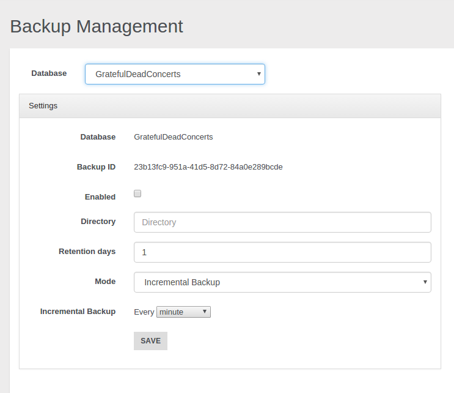
As first thing choose the database that you want backup. In the example above we have chosen the GratefulDeadConcerts database. Then you must specify the output directory where you want to save your backups and the retention days of your backups. Now you must select the backup mode you want to use:
- Full backup
- Incremental Backup
- Full + Incremental Backup
These modes will be analysed afterwards.
Once you have chosen the desired backup mode, you have to choose the backup period that indicates the time you want to wait between each backup and the next one. Eventually you must flag the Enabled checkbox and click on the Save button in order to start the scheduling of the backups according to your settings.
Below we will examine briefly the three different backup strategies.
###Full backup Through this mode when each period passes a full backup will be performed in the path you specified in the settings just discussed. If you want know more about the full backup you can refer to the Full Backup page.

With the settings shown above a full backup will be performed every 5 minutes. Thus in our example after 5 minutes we will have the first backup, after 10 minutes the second one and so on.
/tmp/backup/full
|
|____________GratefulDeadConcerts-1465213003035
| |____________GratefulDeadConcerts_2016-06-06-13-36-43_0_full.ibu
|
|____________GratefulDeadConcerts-1465213020008
| |____________GratefulDeadConcerts_2016-06-06-13-37-00_0_full.ibu
|
|____________GratefulDeadConcerts-1465213080003
| |____________GratefulDeadConcerts_2016-06-06-13-38-00_0_full.ibu
...
###Incremental Backup If you prefer to execute an incremental backup you can select this mode. As declared in the Incremental Backup page the incremental backup generates smaller backup files by storing only the delta between two versions of the database. Let's suppose we want execute a backup every 5 minutes: a first full backup will be performed, then it will be followed by a new incremental backup, containing only the delta, every 5 minutes.

/tmp/backup/incremental
|
|____________GratefulDeadConcerts-incremental
|____________GratefulDeadConcerts_2016-06-06-13-27-00_0_full.ibu
|____________GratefulDeadConcerts_2016-06-06-13-28-00_1.ibu
|____________GratefulDeadConcerts_2016-06-06-13-29-00_2.ibu
|____________GratefulDeadConcerts_2016-06-06-13-30-00_3.ibu
|____________GratefulDeadConcerts_2016-06-06-13-31-00_4.ibu
...
###Full + Incremental Backup This mode follows an hybrid approach between the first two strategies, combining them according to your criteria. The first significant thing you can notice is that you must specify two different backup-periods:
- Full Backup period: it specifies how much time will be waited between two sequential full backups.
- Incremental Backup period: it specifies how much time will be waited between two sequential incremental backups.
Let's analyse in which way the two modes are combined. Suppose we decided to execute the full backup every 5 minutes and the incremental backup every minute as shown in the example below.
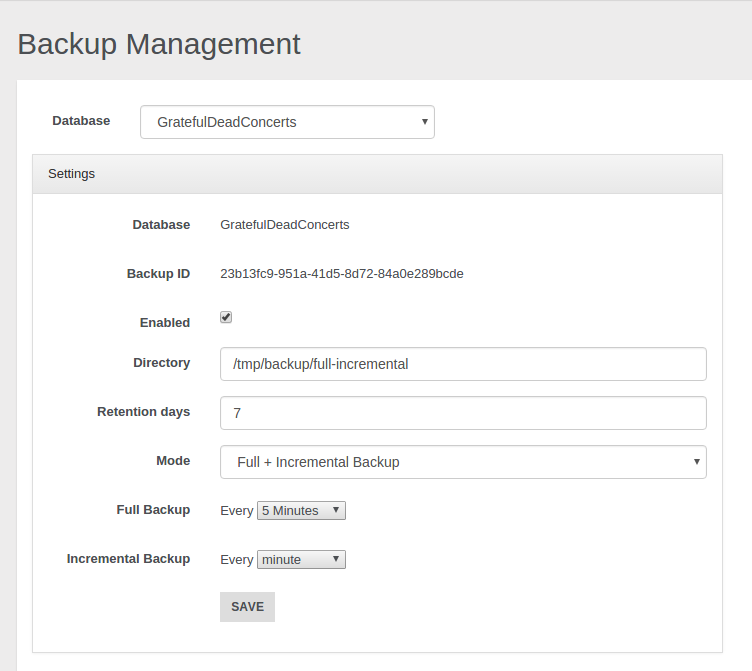
Thus we will obtain that every 5 minutes a new directory with a full backup will be added in the specified path, then in the following 4 minutes only incremental backups will be performed. As we set 1 minute for the incremental backup, we will have 4 incremental backups after the first full backup. After 5 minutes a new full backup in another folder will be performed, and the following incrementals will be executed according to the delta relative to this second full backup and they will put in this second folder. That's all, after another 5 minutes we will have a third directory with an initial full backup that will be followed by 4 incremental backups, ans so on.
/tmp/backup/full-incremental
|
|____________GratefulDeadConcerts-1465213200182
| |____________GratefulDeadConcerts_2016-06-06-13-40-00_0_full.ibu
| |____________GratefulDeadConcerts_2016-06-06-13-41-00_1.ibu
| |____________GratefulDeadConcerts_2016-06-06-13-42-00_2.ibu
| |____________GratefulDeadConcerts_2016-06-06-13-44-00_3.ibu
| |____________GratefulDeadConcerts_2016-06-06-13-44-00_4.ibu
|
|____________GratefulDeadConcerts-1465213440019
| |____________GratefulDeadConcerts_2016-06-06-13-45-00_0_full.ibu
| |____________GratefulDeadConcerts_2016-06-06-13-46-00_1.ibu
| |____________GratefulDeadConcerts_2016-06-06-13-47-00_2.ibu
| |____________GratefulDeadConcerts_2016-06-06-13-48-00_3.ibu
| |____________GratefulDeadConcerts_2016-06-06-13-49-00_4.ibu
|
|____________GratefulDeadConcerts-1467210084991
| |____________GratefulDeadConcerts_2016-06-06-13-46-00_0_full.ibu
| ...
...
In this way we can have a "checkpoint" for each different directory to use in order to restore the database to a specific moment. You can decide if delete or maintain old backups and for each of them you can exploit the incremental backup features at the same time. To achieve this goal and use this feature properly mind that full backup period must be major than incremental backup period, different settings may cause illogical behaviours.
###Granularity You can have different granularities to schedule your backups. Besides minutes granularity you can choose hour, day, week, month, and year granularity.

##Restore
In the calendar you can visualize and filter all the tasks (with the eventual related errors) through the voices below:
- Backup Finished
- Restore Finished
- Backup Scheduled
- Backup Started
- Restore Started
- Backup Error
- Restore Error

Notice you can choose three different scopes: month, week and day.
Clicking on a backup you can examine additional info like execution time and timestamp, directory path, file name and file size.
Moreover you can remove the backup or carry out a restore starting from it.
Use this way to delete your backups because removing them manually may generates unexpected behaviours.

Let's make a restore by clicking on the button "Restore Database". A new window will be opened. Here you must select the database where you want restore the backup: notice you must declare just a name and a new empty database will be automatically created by the restore procedure, don't use:
- an existent not-empty database
- fresh manually-built database
Below are reported all the files involved in the restore procedure: the number of files used to restore your database depends on the backup mode you chose for the selected backup task.
If the backup belongs to a Full Backup schedule, just a file will be involved for each restore procedure.
If the backup belongs to an Incremental Backup schedule, doesn't matter which file is selected, all the files in the directory will be processed during the restore.

If you chose a backup belonging to a Full + Incremental Backup schedule, then will be evaluated all the files contained in the folder which contains the backup file you selected from the calendar.

Server Profiler
Only users with grant
server.metricscan see this section
This sections contains information about Queries:
- Real Time queries
- Statistics about queries
Running Queries
Displays information about running queries in OrientDB Server. Each query report the following infos:
Query ID, as the unique query numberSession ID, the session id used for the queryDatabase, the database usedUser, the database userLanguage, The language used. SQL or GremlinStatement, the actual text of the queryStart Time, when the query was startedElapsed Time, the actual timing of the query in milliseconds
Queries stats
Displays statistics about executed queries in OrientDB Server. Each query report the following infos:
Database, the database usedLanguage, The language used. SQL or GremlinQuery, the actual text of the queryCount, how many times the query was executedMin, the minimum execution time of the queryMean, the mean execution time of the queryMax, the maximum execution time of the query
HTTP APIs
Retrieve running queries via HTTP
GET | Basic Auth
http://<server>[<:port>]/sqlProfiler/running?server=<name>
where
<name> : should be the name of the node in case of distributed version of orientdb.
Only users with grant
server.securitycan see this section
NOTE: This feature is available only in the OrientDB Enterprise Edition. If you are interested in a commercial license look at OrientDB Subscription Packages.
Security
To understand how Security works, please refer to the Security page.
The configuration of security is stored in the security.json file.
By using the Enterprise edition the configuration of the security can be changed at runtime, via REST APIs or using the Studio EE extension.
For a detailed documentation of Security config check the new Security Feature page.
Auditing
To understand how Auditing works, please refer to the Auditing page.
By default all the auditing logs are saved as documents of class OAuditingLog in the internal database OSystem. If your account has enough privileges, you can directly query the auditing log. Example on retrieving last 20 logs: select from OAuditingLog order by @rid desc limit 20.
However, Studio provides a panel to filter the Auditing Log messages on a specific server without using SQL.
Studio Auditing panel helps you also on Auditing configuration of servers, avoiding to edit the auditing-config.json file under the database folder.
Only users with grant
server.importerscan see this section
Teleporter
In Studio 2.2 you can configure the execution of the new Teleporter plugin, which allows you to import your relational database into OrientDB in few simple steps. If you are interested in a detailed description of the tool, of its inner workings and features you can view the Teleporter Documentation.
NOTE: This feature is available both for the OrientDB Enterprise Edition and the OrientDB Community Edition. But beware: in Community Edition you can migrate your source relational database but you cannot enjoy the synchronize feature, only available in the Enterprise Edition.
This visual tool consists in a wizard composed of 4 steps, where just Step 1 and Step 2 are strictly necessary in order to perform your migration. Let's have a look at each configuration step.
Step 1
In the first step you have to type the following required parameters:
Database Driver, as the driver name of the DBMS from which you want to execute the import. You have to choose among:- Oracle
- SQLServer
- Mysql
- PostgreSQL
- HyperSQL
Database Host, as the host where your DBMS instance is running onPort, as the port where your DBMS is listening onDatabase Name, as the name of the source databaseUser Name, as the username to access the source database (it may be blank)Password, as the password to access the source database (it may be blank)
After you typed all the required parameters for the migration you can test the connection.

Step 2
In the second step you have to specify all the parameters about the OrientDB target database:
Connection protocol, as the protocol adopted to write in OrientDB. You have to choose among:- plocal
- memory
OrientDB Database Name, as the name of the target database in OrientDBStrategy, as the strategy adopted during the migration (More about strategies)Name Resolver, as the basic name resolver to adopt during names' resolutionInheritance descriptor, as the XML file's path. In this descriptor you can report all the info describing inheritance relationships present between the tables in the source databaseLog Level, as the log level adopted by Teleporter during the migration. You can choose among:- NO
- DEBUG
- INFO
- WARNING
- ERROR
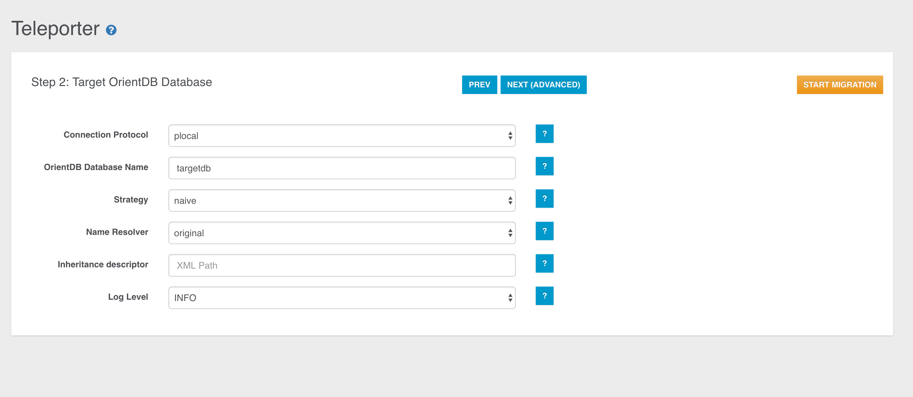
Once we have collected all the minimal info needed for the migration, you can run your configured job through the START MIGRATION button, then the job progress monitor will be displayed:
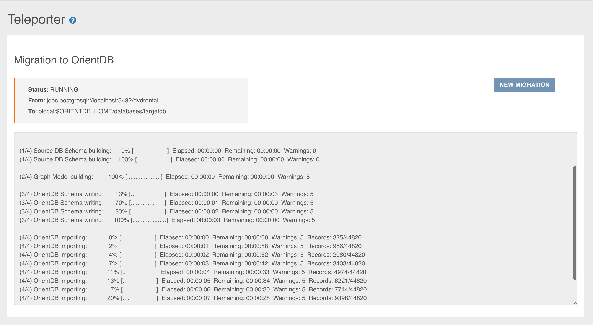
At the end of the migration, statistics and warnings about the process are reported as shown below:

Otherwise you can go on in your migrations customisation jumping to the next step.
Step 3
Here you can exploit Teleporter's filtering features: in the panel on the left all the tables present in the source database are reported. If you want migrate just a subset of these tables, you just have to select and move them in the right panel through the specific buttons (you can also drag-and-drop the selected items).

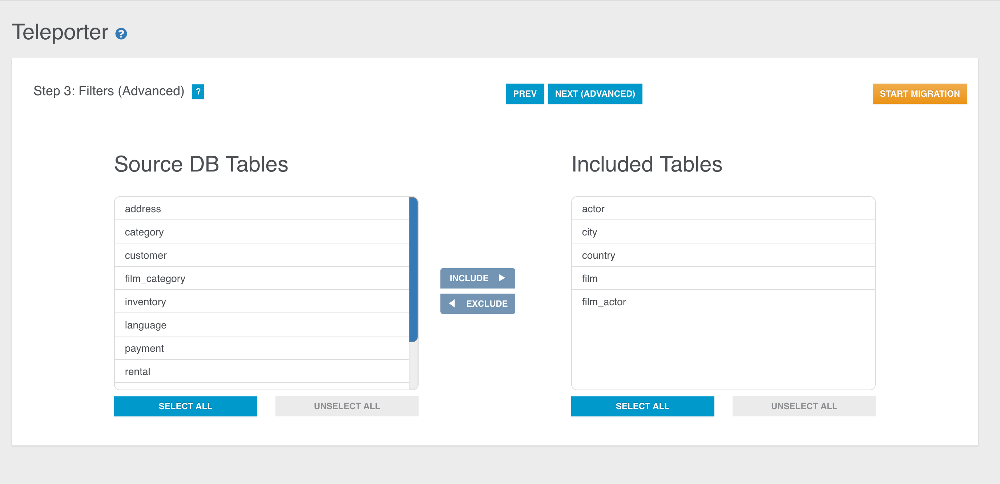
You can perform the same operations also in the opposite direction, that is excluding some tables during the migration just moving them from the right panel to the left one.
If the right panel is empty, no filters will be applied. Instead, if the right panel is not empty, just the selected tables in the right panel will be imported while all the others will be filtered out. Thus, for example, these two configurations are equivalent:
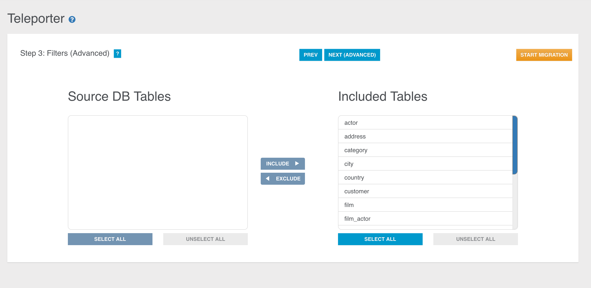

Here too you can start your migration or go to the 4th and last configuration step.
Step 4
In the last step Teleporter will provide you a Graph Model coming from the translation of the ER-Model inferred from the source database schema. The correspondent Graph Model is built according to basic mapping rules and your choices as well (filters applied, chosen strategy, name resolver adopted etc.). This step has two aims:
- it gives you an idea of how your source database will appear once imported in OrientDB
- it allows you to edit the graph model

You can see two panels, the Graph Model Panel on the left, containing the Graph Model built from Teleporter, and the Details Panel on the right, reporting all the details about the current selected element in the left panel.
The Details Panel is divided into two sections:
- in the top area you can enjoy a graph perspective of the element selected in the Graph Panel: you can inspect info about the OrientDB schema, like class name and properties.
- in the bottom area you have a source-schema perspective, where you got the source-schema items the information above comes from.
This step is conceived to make very easy the graph model editing and to change the mapping with the source database schema. In fact you can modify the basic mapping
- Renaming classes (both for Vertex and Edge classes)
- Excluding/re-including a property mapped with a column in the correspondent source table
- Adding new properties
- Dropping existent properties
- Editing properties
- Adding new Edge classes and/or instances
- Inspecting original schema data, both for tables and relationships
Let's have a deeper look at each of these operations.
Inspecting Classes and source correspondent elements
Via the Details Panel you can inspect information about:
- Vertex class
If you select a Vertex Class, you can inspect the correspondence between each column in the source table and the correspondent property in the translated Vertex class. Columns and properties are strongly bound: you can exclude, include or rename a property, but the bindings with the correspondent column will remain.

- Edge Class
Everytime you select an edge in the graph, you can find out about the original relationship it comes from in the bottom section in the Details Panel. We can have 2 kinds of relationships, and coherently 2 kinds of edge rendering.
-
1-N Relationship
Edges coming from 1-N Relationships are represented through a continuous arrow.
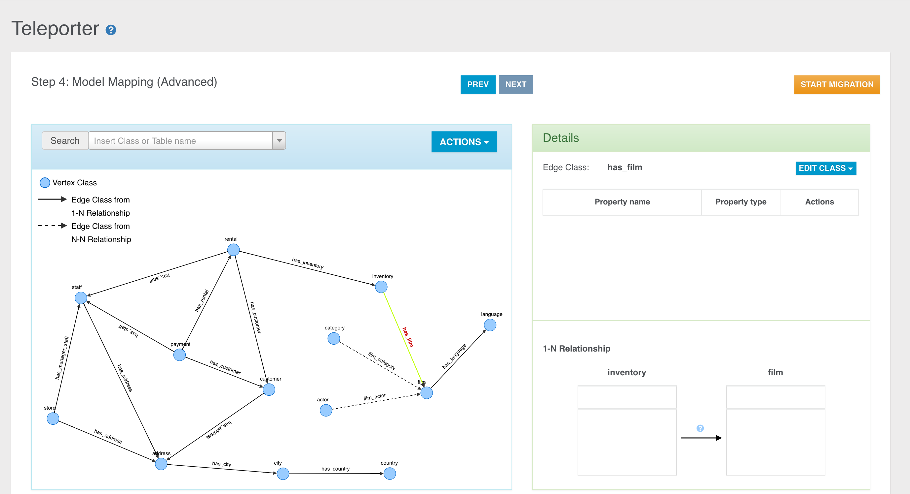
The rendered Relationship involves just two tables of course, the starting table (aka foreign table) and the arrival table (aka parent table). Clicking the question mark you can also see for each table all the columns involved in the relationship.

-
N-N Relationship
Let's suppose you have got the following graph, obtained performing join tables aggregation through the naive-aggregate strategy.
Edges coming from N-N Relationships are represented through a dashed arrow and in the bottom you can see the 2 relationships involving two external tables and the join table between them.
Here too, clicking the question mark you can inspect the involved columns for both the relationships.
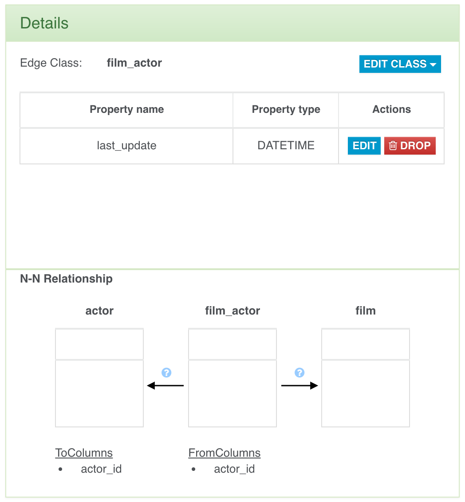 
Search Bar
In the Graph Panel a useful search bar is provided to allow you fast vertex selection according to the vertex class name or the source table name.
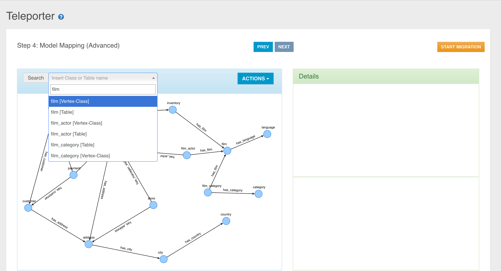
In the example above you can see that for each class we have two items, the vertex class name and the source table name. In this case each couple of items are equal because no classes were renamed nor a name resolver was adoted during the basic graph model building.
Class Renaming
You can rename a class just selecting an element in the graph (vertex or edge) and clicking the "Rename Class" button in the "Edit Class" dropdown menu.

Then you just have to choose the new name for the specific class.
The class name will be updated in the graph, in the search bar and in the Details Panel of course.
Property Excluding
We have two ways to exclude a property mapped with a column in the source table:
-
Unflagging the correspondent column name in the source table perspective.
-
Dropping the property from the class perspective.

Property Dropping
You can also drop a property via the specific button.
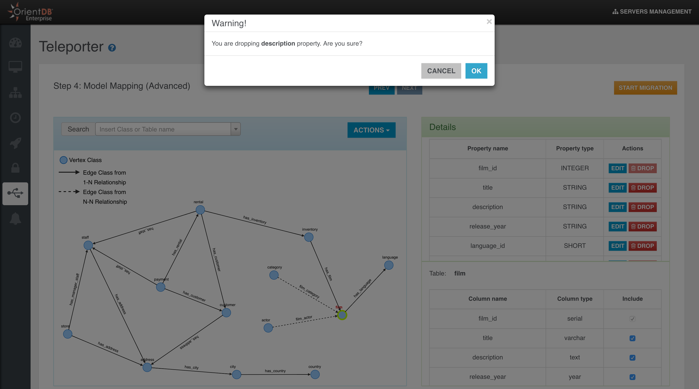
You can have 2 different behaviours depending on whether the property is bound with a column in the source table or not.
-
If the property is bound with a source column, when you drop it you will get the same result as when you exclude it, so it will not be migrated in OrientDB but you can always include it again, as the binding is not deleted at all.
-
If the property is not bound with a source column, then when you drop it the property will be definitively deleted.
Property Adding
You can add new properties just clicking the "Add property" button in the "Edit Class" dropdown menu.

In the just opened window you can choose to add a new property never defined before, selecting the "Add new property" radio button,

or re-include some excluded properties if any, selecting the "Include Property" radio button.

Property Editing
You can also edit an existing property: you can choose a different name, type, or just add/remove some constraints.

Property Including
We have two ways to include a property mapped with a column in the source table:
-
Flagging the correspondent column name in the source table perspective.
-
Including the property from the OrientDB class perspective through the "Add property" button as shown above.
Edge Adding
Often you need to add an edge in your graph model, if it's missing for some reason. For example, if you didn't defined some foreign keys between the tables on which you usually perform join operations, you will lose this kind of info during the importing process and you will not have any edges in your final Graph Database. Sometimes you just want to enrich the model adding new edges. In both the cases you have to select a vertex in the graph and then click the "Add Edge" button in the "Action" dropdown menu.

Then you have to drag the edge till the target vertex and click over it.

A new window will open where you have to specify the name of the Edge class for the new edge instance and some mapping info:
- fromTable: the foreign table that imports the primary key of the parent table.
- fromColumns: the attributes involved in the foreign key.
- toTable: the parent table whose primary key is imported by the foreign table.
- toColumns: the attributes involved in the imported primary key.
As said above, when we want to create a new edge instance, we can create a new Edge class

or just choose a preexisting Edge class
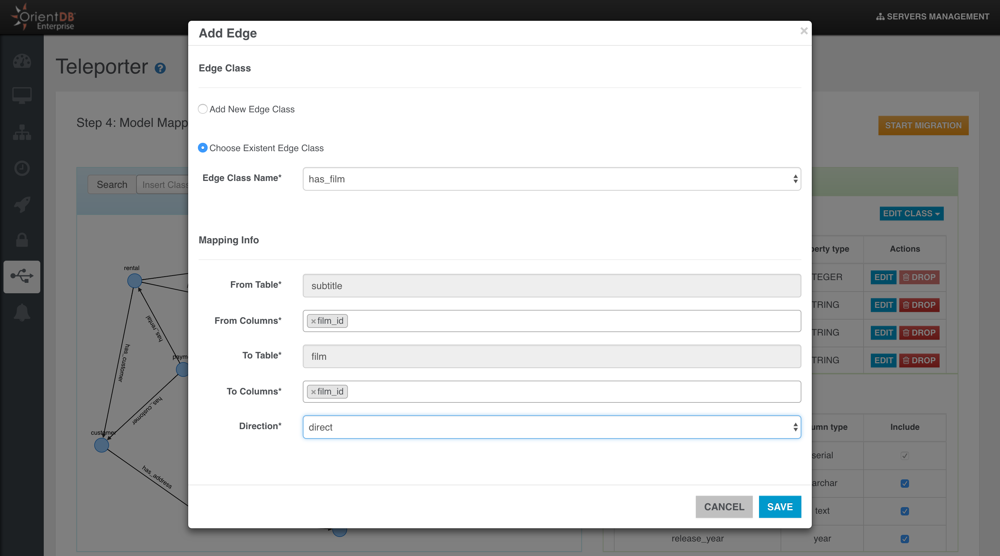
Edge Dropping
When you select an edge in the graph model, you have 2 choices:
- Delete the Edge class with all its instances

- Delete only the selected instance of the specific Edge Class
Only users with grant
server.importerscan see this section
Neo4j to OrientDB Importer
In Studio 2.2 you can configure the execution of a new plugin, which allows you to import your Neo4j database into OrientDB in few simple steps.
Imported neo4j items are:
- nodes
- relationships
- unique constraints
- indexes
NOTE: This feature is available both for the OrientDB Enterprise Edition and the OrientDB Community Edition.
This visual tool consists in a wizard composed of 2 simple steps. Let's have a look at each configuration step.
Step 1
In the first step you have to type the following required parameters:
Database Host, as the address of the host where the neo4j server is availablePort, as the port where your neo4j server is listening for new connections via the bolt binary protocol (default port is 7687)User Name, as the username to access the neo4j serverPassword, as the password to access the neo4j server
After you typed all the required parameters for the migration you can test the connection with the source database.
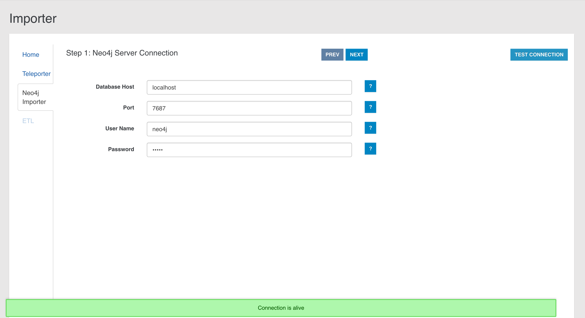
Step 2
In the second step you have to specify the parameters about the OrientDB target database and some additional info:
Connection protocol, as the protocol adopted during the migration in order to connect to OrientDB. You have to choose among:- plocal: persistent disk-based, where the access is made in the same JVM process
- memory: all data remain in memory
OrientDB Database Name, as the target database name where the Neo4j database will be migrated. The database will be created by the import tool if not present. In case the database already exists, the Neo4j to OrientDB Importer will behave accordingly to the checkbox below.Log Level, as the level of verbosity printed to the output during the execution. You can choose among:- NO
- DEBUG
- INFO
- WARNING
- ERROR
Overwrite Database, checkbox to overwrite OrientDB target database if it already exists.Create indices on edges, checkbox to create indices on imported edges in OrientDB. In this way an index will be built for each Edge class on'Neo4jRelId'property.

Once we have collected all the info, you can run your configured job through the START MIGRATION button, then the job progress monitor will be displayed:

At the end of the migration, statistics about the process are reported as shown below:
Migration Details
Internally, the Neo4j to OrientDB Importer makes use of:
- the Neo4j's bolt connector based on the the Bolt binary protocol to read the graph database from Neo4j
- the OrientDB's java API to store the graph into OrientDB
The migration consists of four phases:
- Phase 1: Connection initialization to Neo4j
- Phase 2: Migration of nodes and relationships present in the source graph database
- Phase 3: Schema migration
- Phase 4: Shutdown of the connection to Neo4j and summary info reporting
General Migration Details
The following are some general migration details that is good to keep in mind:
-
In case a node in Neo4j has no Label, it will be imported in OrientDB into the Class "GenericClassNeo4jConversion".
-
In case a node in Neo4j has multiple Labels, it will be imported into the
Class"MultipleLabelNeo4jConversion". -
List of original Neo4j Labels are stored as properties in the imported OrientDB vertices (property: "Neo4jLabelList").
-
During the import, a not unique index is created on the property "Neo4jLabelList". This allows you to query by Label even over nodes migrated into the single
Class"MultipleLabelNeo4jConversion", using queries like:SELECT FROM V WHERE Neo4jLabelList CONTAINS 'your_label_here'or the equivalent with the MATCH syntax:MATCH {class: V, as: your_alias, where: (Neo4jLabelList CONTAINS 'your_label'} RETURN your_alias. -
Original Neo4j
IDsare stored as properties in the imported OrientDB vertices and edges (Neo4jNodeIDfor vertices andNeo4jRelIDfor edges). Such properties can be (manually) removed at the end of the import, if not needed. -
During the import, an OrientDB index is created on the property
Neo4jNodeIDfor all imported vertexclasses(node's Labels in Neo4j). This is to speed up vertices lookup during edge creation. The created indexes can be (manually) removed at the end of the import, if not needed. -
In case a Neo4j Relationship has the same name of a Neo4j Label, e.g. "RelationshipName", the Neo4j to OrientDB Importer will import that relationship into OrientDB in the class
E_RelationshipName(i.e. prefixing the Neo4j'sRelationshipTypewith anE_). -
Neo4j Nodes with same Label but different case, e.g. LABEL and LAbel will be aggregated into a single OrientDB vertex
Class. -
Neo4j Relationship with same name but different case, e.g. relaTIONship and RELATIONSHIP will be aggregated into a single OrientDB edge
Class -
Migration of Neo4j's "existence" constraints (only available in the Neo4j's Enterprise Edition) is currently not implemented.
-
During the creation of properties in OrientDB, Neo4j
Chardata type is mapped to aStringdata type.
Details about Schema Migration
The following are some schema-specific migration details that is good to keep in mind:
-
If in Neo4j there are no constraints nor indexes, and if after we drop, after the migration, the properties and indexes created for internal purposes (
Neo4jNodeID,Neo4jRelID,Neo4jLabelListand corresponding indexes), the imported OrientDB database is schemaless. -
If in Neo4j there are constraints or indexes, the imported OrientDB database is schema-hybrid (with some properties defined). In particular, for any constraint and index:
- The Neo4j property where the constraint or index is defined on, is determined. - A corresponding property is created in OrientDB (hence the schema-hybrid mode). -
If a Neo4j unique constraint is found, a corresponding unique index is created in OrientDB
- In case the creation of the unique index fails, a not unique index will be created. Note: this scenario can happen, by design, when migrating nodes that have multiple _Labels_, as they are imported into a single vertex `Class`). -
If a Neo4j index is found, a corresponding (not unique) OrientDB index is created.
Migration Best Practices
According to the migration logic shown so far, we can define the following best practices, adoptable before the migration towards OrientDB:
-
Check if you are using Labels with same name but different case, e.g. LABEL and LAbel and if you really need them. If the correct Label is Label, change LABEL and LAbel to Label in the original Neo4j database before the import. If you really cannot change them, be aware that with the current version of the Neo4j to OrientDB Importer such nodes will be aggregated into a single OrientDB vertex
Class. -
Check if you are using relationships with same name but different case, e.g. relaTIONship and RELATIONSHIP and if you really need them. If the correct relationship is Relationship, change relaTIONship and RELATIONSHIP to Relationship before the import. If you really cannot change them, be aware that with the current version of the Neo4j to OrientDB Importer such relationships will be aggregated into a single OrientDB edge
Class. -
Check your constraints and indexes before starting the import. Sometime you have more constraints or indexes than needed, e.g. old ones that you created on Labels that you are not using anymore. These constraints will be migrated as well, so a best practice is to check that you have defined, in Neo4j, only those that you really want to import. To check constraints and indexes in Neo4j, you can type
:schemain the Browser and then click on the "play" icon. Please delete the not needed items. -
Check if you are using nodes with multiple Labels, and if you really need more than one Label on them. Be aware that with current version of the Neo4j to OrientDB Importer such nodes with multiple Labels will be imported into a single OrientDB
Class("MultipleLabelNeo4jConversion").
Profiler
OrientDB Enterprise Edition comes with a profiler that collects all the metrics about the engine and the system where is running. Studio uses the profiler API as source for the Dashboard and can be configured in the Settings section.
Profiler is available through Studio or HTTP APIs
to server user that has those permissions
server.metrics(Read)server.metrics.edit(Write)
Configuration
The profiler is configured via JSON file, located ${ORIENTDB_HOME}/config/profiler.json the Enterprise distribution
Example of configuration
{
"enabled": true,
"server": {
"enabled": true
},
"database": {
"enabled": true
},
"cluster": {
"enabled": false
},
"reporters": {
"jmx": {
"enabled": false,
"domain": "Test"
},
"console": {
"enabled": false,
"interval": 5000
},
"csv": {
"enabled": false,
"directory": "/tmp/orientdb-server-metrics.csv",
"interval": 5000
},
"prometheus": {
"enabled": false
}
}
}
The profiler is divided in 3 sections which can be enabled/disabled
- Database metrics
- Server metrics
- Cluster metrics
Database metrics
The suffix is db.<dbName>.*
These metrics contains statistics on crud operations and queries and are recorded for each database in the server.
Server Metrics
The suffix is server.*
These metrics contains information on the status and health of the server such as
- Memory metrics
- Disk metrics
- Disk Cache
- CPU stats
- GC activity
- Threads
- Network requests
- Active sessions
- ....
Cluster metrics
The suffix is distributed.*
These metrics contains information on the status of nodes in the cluster and latencies
Reporters
The profiler supports different outputs that can be configured in the reporters section:
- CSV
- JMX
- Console
- Prometheus
The profiler also expose custom HTTP api to server users with right permissions
HTTP APIs
Retrieve profiler metrics via HTTP
GET | Basic Auth
http://<server>[<:port>]/metrics
Retrieve stats recorded by the profiler
Prometheus endpoint
If it is enabled as reporter
GET | Basic Auth
http://<server>[<:port>]/metrics/prometheus
Retrieve stats recorded by the profiler with prometheus format
Retrieve profiler configuration
GET | Basic Auth
http://<server>[<:port>]/metrics/config
Change profiler configuration
POST | Basic Auth
http://<server>[<:port>]/metrics/config
with configuration as JSON body
Get the list of available metrics with description
GET | Basic Auth
http://<server>[<:port>]/metrics/list
Auditing
Starting in OrientDB 2.1, the Auditing component is part of the Enterprise Edition. This page refers to the Auditing feature and how to work with it. The Studio web tool provides a GUI for Auditing that makes configuration easier. Look at the Auditing page in Studio.
By default all the auditing logs are saved as documents of class AuditingLog. If your account has enough privileges, you can directly query the auditing log. Example on retrieving the last 20 logs: select from AuditingLog order by @rid desc limit 20.
OrientDB 2.2
Starting in OrientDB 2.2, all auditing logs are now stored in the system database. The auditing log for each database is stored in a derived class of the AuditingLog class with this format: databaseNameOAuditingLog.
As an example, if you have a database called MyDB, then the class name will be MyDBOAuditingLog.
Using the previous example to retrieve the last 20 log entries for a specific database, do this from within the system database:
select from MyDBOAuditingLog order by @rid desc limit 20
Security First
For security reasons, no roles should be able to access the AuditingLog records. For this reason before using Auditing assure to revoke any privilege on the AuditingLog cluster. You can do that from Studio, security panel, or via SQL by using the SQL REVOKE command. Here's an example of revoking any access to the writer and reader roles:
REVOKE ALL ON database.cluster.auditinglog FROM writer
REVOKE ALL ON database.cluster.auditinglog FROM reader
OrientDB 2.2 This is no longer required starting in 2.2, since all auditing logs are stored in the system database. No local database user has access to the auditing logs stored in the system database. To grant access, a system user must be created in the system database with the appropriate role and permissions.
Polymorphism
OrientDB schema is polymorphic (taken from the Object-Oriented paradigm). This means that if you have the class "Person" and the two classes "Employee" and "Provider" that extend "Person", all the auditing settings on "Person" will be inherited by "Employee" and "Provider" (if the checkbox "polymorphic" is enabled on class "Person").
This makes your life easier when you want to profile only certain classes. For example, you could create an abstract class "Profiled" and let all the classes you want to profile extend it. Starting from v2.1, OrientDB supports multiple inheritance, so it's not a problem extending more classes.
security.json Configuration
There are two parts to enabling and configuring the auditing component. Starting in OrientDB 2.2, there is a security.json configuration file that resides under the config folder. See the OrientDB Security Configuration documentation for more details.
The "auditing" section of the security.json file must be enabled for auditing to work.
Note the additional "distributed" section of "auditing" for logging distributed node events.
auditing-config.json Configuration
To configure auditing of a database, create a JSON configuration file with the name auditing-config.json under the database folder. This is the syntax for configuration:
{
"classes": {
"<class-name>" : {
"polymorphic": <true|false>,
"onCreateEnabled": <true|false>, "onCreateMessage": "<message>",
"onReadEnabled": <true|false>, "onReadMessage": "<message>",
"onUpdateEnabled": <true|false>, "onUpdateMessage": "<message>",
"onUpdateChanges": <true|false>,
"onDeleteEnabled": <true|false>, "onDeleteMessage": "<message>"
}
},
"commands": [
{
"regex": "<regexp to match>",
"message": "<message>"
}
],
"schema": {
"onCreateClassEnabled": <true|false>, "onCreateClassMessage": "<message>",
"onDropClassEnabled": <true|false>, "onDropClassMessage": "<message>"
}
}
"classes"
Where:
classes: contains the mapping per class. A wildcard*represents any class.class-name: class name to configure.polymorphic: Iftrue, the auditing log also uses this class definition for all sub-classes. By default, the class definition is polymorphic.onCreateEnabled: Iftrue, enables auditing of record creation events. Default isfalse.onCreateMessage: A custom message stored in thenotefield of the auditing record on create record events. It supports the dynamic binding of values, see "Customizing the Message", below.onReadEnabled: Iftrue, enables auditing of record reading events. Default isfalse.onReadMessage: A custom message stored in thenotefield of the auditing record on read record events. It supports the dynamic binding of values, see "Customizing the Message", below.onUpdateEnabled: Iftrue, enables auditing of record updating events. Default isfalse.onUpdateMessage: A custom message stored in thenotefield of the auditing record on update record events. It supports the dynamic binding of values, see "Customizing the Message", below.onUpdateChanges: Iftrue, records all the changed field values in thechangesproperty. The default istrueifonUpdateEnabledis true.onDeleteEnabled: Iftrue, enables auditing of delete record events. The default isfalse.onDeleteMessage: A custom message stored in thenotefield of the auditing record on delete record events. It supports the dynamic binding of values, see "Customizing the Message", below.
Customising the Message
${field.<field-name>}, to use the field value. Example:${field.surname}to get the field "surname" from the current record in case of CRUD Auditing of classes.
Example to log all the delete operations (class="*"), and log all the CRUD operation on any vertex (class="V" and polymorphic:true):
{
"classes": {
"*" : {
"onDeleteEnabled": true, "onDeleteMessage": "Deleted record of class ${field.@class}"
},
"V" : {
"polymorphic": true,
"onCreateEnabled": true, "onCreateMessage": "Created vertex of class ${field.@class}",
"onReadEnabled": true, "onReadMessage": "Read vertex of class ${field.@class}",
"onUpdateEnabled": true, "onUpdateMessage": "Updated vertex of class ${field.@class}",
"onDeleteEnabled": true, "onDeleteMessage": "Deleted vertex of class ${field.@class}"
}
}
}
"commands"
Where:
regexp: If a command is executed that matches the regular expression then the command is logged.message: The optional message that's recorded when the command is logged. It supports the dynamic binding of values, see "Customizing the Message", below.
Customizing the Message
- The variable
${command}will be substituted in the specified message, if command auditing is enabled.
Example: If you want to get all commands regarding update query, you can use standard Java regular expressions (see documentation):
- Regex:
^update.* - Message:
Following update: ${command} executed.
under "Command Auditing" section.
"schema"
Where:
onCreateClassEnabled: Iftrue, enables auditing of class creation events. The default isfalse.onCreateClassMessage: A custom message stored in thenotefield of the auditing record on class creation events. It supports the dynamic binding of values, look at Customize the message.onDropClassEnabled: Iftrue, enables auditing of class drop events. The default isfalse.onDropClassMessage: A custom message stored in thenotefield of the auditing record on drop class events. It supports the dynamic binding of values, look at Customize the message.
Customizing the Message
- The variable
${class}will be substituted in the specified message, if create class or drop class auditing is enabled.
Log record structure
Auditing Log records have the following structure:
| Field | Type | Description | Values |
|---|---|---|---|
date | DATE | Date of execution | - |
user | LINK | User that executed the command. Can be null if internal user has been used | - |
operation | BYTE | Type of operation | 0=READ, 1=UPDATE, 2=DELETE, 3=CREATE, 4=COMMAND |
record | LINK | Link to the record subject of the log | - |
note | STRING | Optional message | - |
changes | MAP | Only for UPDATE operation, contains the map of changed fields in the form {"from":<old-value>, "to":<new-value>} | - |
OrientDB 2.2 Starting in 2.2, the AuditingLog class has changed slightly.
| Field | Type | Description | Values |
|---|---|---|---|
database | STRING | The name of the database of the logging event. | - |
date | DATE | Date of execution | - |
user | STRING | The name of the user that executed the command. This type has changed to a String and now supports system users. | - |
operation | BYTE | Type of operation | 0=READ, 1=UPDATE, 2=DELETE, 3=CREATE, 4=COMMAND |
record | LINK | Link to the record subject of the log. | - |
note | STRING | Optional message | - |
changes | MAP | Only for UPDATE operation, contains the map of changed fields in the form {"from":<old-value>, "to":<new-value>} | - |
Studio Settings
This section contains two sub-sections
- Profiler configuration
- Permissions
Profiler Configuration
Only users with grant
server.metricscan see this section
The profiler can be configured also from the UI in this tab.
This page contains also all the metrics that are currently being monitored with the assosciated description.
Permissions
Only users with grant
server.permissionscan see this section
Here are listed all permissions for Enterprise Features with description.
Those permissions can be configured in the OrientDB configuration file. See [here](../security/Se rver-Security.md)
Internals
This section contains internal technical information. Users usually are not interested to such technical details, but if you want to hack OrientDB or become a contributor this information could be useful.
OrientDB System Database
Introduced in 2.2, OrientDB now uses a "system database" to provide additional capabilities.
The system database, currently named OSystem, is created when the OrientDB server starts, if the database does not exist.
Features
Here's a list of some of the features that the system database may support:
- A new class of user called the system user
- A centralized location for configuration files
- Logging of per-database and global auditing events
- Recording performance metrics about the server and its databases
System Users
A third type of user now exists, called a system user. A system user is similar in concept to a server user but resides in the system database as an OUser record. See System Users.
Accessing The System Database via Studio
By default, the OrientDB system database will not be displayed in the Studio drop-down list of databases. To enable this, add a "server.listDatabases.system" resource to the "guest" server user.
Here's an example from orientdb-server-config.xml:
<user resources="connect,server.listDatabases,server.listDatabases.system" password="*****" name="guest"/>
Schema
Currently, the system database has no specialized class schema, but this will changes as more features are added that utilize the private database.
Storages
Any OrientDB database relies on a Storage. OrientDB supports 4 storage types:
- plocal, persistent disk-based, where the access is made in the same JVM process
- remote, by using the network to access a remote storage
- memory, all data remains in memory
- local, deprecated, it's the first version of disk based storage, but has been replaced by plocal
A Storage is composed of multiple Clusters.
Memory Storage
Memory Storage is local and endures only as long as the JVM is running. For the application programmer, it is identical in use to Paginated Local Storage. Transactions remain atomic, consistent and isolated (but are not durable).
Memory is the fastest choice for tasks where data are read from an external source, and where the results are provided without needing to persist the graph itself. It is also a good choice for certain test scenarios, since an abrupt exit leaves no debris on the disk.
A database using memory storage is designated by a URL of the form memory:<path>,
for example memory:test.
A hierarchical path is allowed, for example memory:subdir/test.
The memory available for the database is direct memory allocated by the JVM as needed. In the case of a plocal: database, memory like this provides a cache whose pages are loaded from or flushed to pages files on disk. In the case of a memory: database, these direct memory pages are the ultimate storage. The database is allowed to take up more memory than there is physical RAM, as the JVM will allocate more from swap. Total size is limited by the -XX:MaxDirectMemorySize JVM option.
PLocal Storage
The Paginated Local Storage, "plocal" from now, is a disk based storage which works with data using page model.
plocal storage consists of several components each of those components use disk data through disk cache.
Below is list of plocal storage components and short description of each of them:
- Clusters are managed by 2 kinds of files:
- .pcl files contain the cluster data
- .cpm files contain the mapping between record's cluster position and real physical position
- Write Ahead (operation) Log (WAL) are managed by 2 kinds of files:
- .wal to store the log content
- .wmr contains timing about synchronization operations between storage cache and disk system
- SBTree Index, it uses files with extensions .sbt.
- Hash Index, it uses files with extensions .hit, .him and .hib.
- Index Containers to store values of single entries of not unique index (Index RID Set). It uses files with extension .irs.
- File mapping, maps between file names and file ids (used internally). It's a single file with name: name_id_map.cm.
File System
Since PLOCAL is disk-based, all pages are flushed to physical files. You can specify any mounted partitions on your machine, backed by Disks, SSD, Flash Disks or DRAM.
Cluster
Cluster is logical piece of disk space where storage stores records data. Each cluster is split in pages. Page is a single atomic unit, which is used by cluster.
Each page contains system information and records data. System information includes "magic number" and a crc32 check sum of the page content. This information is used to check storage integrity after a DB crash. To start an integrity check run command "check database" from console.
Each cluster has 2 sub components:
- data file, with extension .pcl
- mapping between physical position of record in the data file and cluster position, with extension .cpm
File System
To speed up access to the most requested clusters it's recommended to use the cluster files to a SSD or any faster support than disk. To do that, move the files to the mounted partitions and create symbolic links to them on original path. OrientDB will follow symbolic links and will open cluster files everywhere are reachable.
Cluster pointers
The mapping between data file and physical position is managed with a list. Each entry in this list is a fixed size element, which is the pointer to the physical position of the record in the data file.
Because the data file is paginated, this pointer will consist of 2 items: a page index (long value) and the position of the record inside the page (int value). Each record pointer consumes 12 bytes.
Creation of new records in cluster
When a new record is inserted, a pointer is added to the list. The index of this pointer is the cluster position. The list is an append only data structure, so if you add a new record its cluster position will be unique and will not be reused.
Deletion of records in cluster
When you delete a record, the page index and record position are set to -1. So the record pointer is transformed into a "tombstone". You can think of a record id like a uuid.. It is unique and never reused.
Usually when you delete records you lose very small amount of disk space. This can be mitigated with a periodic "offline compaction", by performing a database export/import. During this process, cluster positions will be changed (tombstones will be ignored during export) and the lost space will be recovered. So during the import process, the cluster positions can change.
Migration of RID
The OrientDB import tool uses a manual hash index (by default the name is '___exportImportRIDMap') to map the old record ids to new record ids.
Write Ahead (operation) Log (WAL)
The Write Ahead Log (or WAL) is used to restore storage data after a non-soft shutdown:
- Hard kill of the OrientDB process
- Crash/Failure of the Java Virtual Machine that runs OrientDB
- Crash/Failure of the Operating System that is hosting OrientDB
All the operations on plocal components are logged in WAL before they are performed. WAL is an append only data structure. You can think of it as a list of records which contain information about operations performed on storage components.
WAL flush
WAL content is flushed to the disk on these events:
- every 1 second in background thread (flush interval can be changed in storage.wal.commitTimeout configuration property)
- synchronously if the amount of RAM used by WAL exceeds 65Mb (can be changed in storage.wal.cacheSize configuration property).
As result if OrientDB crashes, all data changes done during <=1 second interval before crash will be lost. This is a trade off between performance and durability.
Put the WAL on a separate disk
It's strongly recommended that WAL records are stored on a different disk than the disk used to store the DB content. In this way data I/O operations will not be interrupted by WAL I/O operations. This can be done by setting the storage.wal.path property to the folder where storage WAL files will be placed.
How Indexes use WAL?
Indexes can work with WAL in 2 modes:
- ROLLBACK_ONLY (default mode) and
- FULL
In ROLLBACK_ONLY mode only the data needed to rollback transactions is stored. This means that WAL records can not be used to restore index content after a crash. In the case of a crash, the indexes will be rebuilt automatically.
In FULL mode, indexes can be restored after DB crash without a rebuild. You can change index durability mode by setting the property index.txMode.
You can find more details about WAL here.
File types
PLocal stores data on the file system using different files, using the following extensions:
- .cpm, contains the mapping between real physical positions and cluster positions. If you delete a record, the tombstone is placed here. Each tombstone consumes about 12 bytes.
- .pcl, data file
- .sbt, is index file
- .wal and .wmr, are Journal Write Ahead (operation) Log files
- .cm, is the mapping between file id and real file name (used internally)
- .irs, is the RID set file for non-unique indexes
How it works (Internal)
Paginated storage is a 2-level disk cache that works together with the write ahead log.
Every file is spit into pages, and each file operation is atomic at a page level. The 2-level disk cache allows:
- Cache frequently accessed pages in memory.
- Automatically separate pages which are rarely accessed from frequently accessed and rid off the first from cache memory.
- Minimize amount of disk head seeks during data writes.
- In case of low or middle write data load allows to mitigate pauses are needed to write data to the disk by flushing all changed or newly added pages to the disk in background thread.
- Works together with WAL to make any set changes on single page look like atomic operation.
2-level cache itself consist of a Read Cache (implementation is based on 2Q cache algorithm) and a *Write cache (implementation is based on WOW cache algorithm).
Typical set of operations are needed to work with any file looks like following:
- Open file using OReadWriteDiskCache#openFile operation and get id of open file. If the file does not exist it will be automatically created. The id of file is stored in a special meta data file and will always belong to the given file till it will be deleted.
- Allocate new page OReadWriteDiskCache#allocateNewPage or load existing one ORreadWriteDiskCache#load into off-heap memory.
- Retrieve pointer to the allocated area of off-heap memory OCacheEntry#getCachePointer().
- If you plan to change page data acquire a write lock, or a read lock if you read data and your single file page is shared across several data structures. Write lock must be acquired whether a single page is used between several data structures or not. The write lock is needed to prevent flushing inconsistent pages to the disk by the “data flush” thread of the write cache. OCachePointer#acquireExclusiveLock.
- Update/read data in off heap memory.
- Release write lock if needed. OCachePointer#releaseExclusiveLock.
- Mark page as dirty if you changed page data. It will allow write cache to flush pages which are really changed OCacheEntry#markDirty.
- Push record back to the disk cache: indicate to the cache that you will not use this page any more so it can be safely evicted from the memory to make room to other pages OReadWriteDiskCache#release.
So what is going on underneath when we load and release pages?
When we load page the Read Cache looks it in one of its two LRU lists. One list is for data that was accessed several times and then not accessed for very long period of time. It consumes 25% of memory. The second is for data that is accessed frequently for a long period of time. It consumes 75% of memory.
If the page is not in either LRU queue, the Read Cache asks the Write Cache to load page from the disk.
If we are lucky and the page is queued to flush but is still in the Write Queue of Write Cache it will be retrieved from there. Otherwise, the Write Cache will load the page from disk.
When data will be read from file by Write Cache, it will be put in LRU queue which contains “short living” pages. Eventually, if this pages will be accessed frequently during long time interval, loaded page will be moved to the LRU of “long living” pages.
When we release a page and the page is marked as dirty, it is put into the Write Cache which adds it to the Write Queue. The Write Queue can be considered as ring buffer where all the pages are sorted by their position on the disk. This trick allows to minimize disk head movements during pages flush. What is more interesting is that pages are always flushed in the background in the “background flush” thread. This approach allows to mitigate I/O bottleneck if we have enough RAM to work in memory only and flush data in background.
So it was about how disk cache works. But how we achieve durability of changes on page level and what is more interesting on the level when we work with complex data structures like Trees or Hash Maps (these data structures are used in indexes).
If we look back on set of operations which we perform to manipulate file data you see that step 5 does not contains any references to OrientDB API. That is because there are two ways to work with off heap pages: durable and not durable.
The simple (not durable way) is to work with methods of direct memory pointer com.orientechnologies.common.directmemory.ODirectMemoryPointer(setLong/getLong, setInt/getInt and so on). If you would like to make all changes in your data structures durable you should not work with direct memory pointer but should create a component that will present part of your data structure by extending com.orientechnologies.orient.core.storage.impl.local.paginated.ODurablePage class. This class has similar methods for manipulation of data in off heap pages, but it also tracks all changes made to the page. It can return the diff between the old/new states of page using the com.orientechnologies.orient.core.storage.impl.local.paginated.ODurablePage#getPageChanges method. Also this class allows to apply given diff to the old/new snapshot of given pages to repeat/revert (restoreChanges()/revertChanges()) changes are done for this page.
PLocal Engine
Paginated Local storage engine, also called as "plocal", is intended to be used as durable replacement of the previous local storage.
plocal storage is based on principle that using disk cache which contains disk data that are split by fixed size portions (pages) and write ahead logging approach (when changes in page are logged first in so called durable storage) we can achieve following characteristics:
- Operations on single page are atomic.
- Changes applied to the page can be restored after server crash even if they were not flushed to the disk.
Using write ahead log and page based cache we can achieve durability/performance trade off. We do not need to flush every page to the disk so we will avoid costly random I/O operations as much as possible and still can achieve durability using much cheaper append only I/O operations.
From all given above we can conclude one more advantage of plocal against local - it has much faster transactions implementation. In order achieve durability on local storage we should set tx.commit.synch property to true (perform synchronization of disk cache on each transaction commit) which of course makes create/update/delete operations inside transaction pretty slow.
Lets go deeper in implementation of both storages.
Local storage uses MMAP implementation and it means that caching of read and write operations can not be controlled, plocal from other side uses two types of caches read cache and write cache (the last is under implementation yet and not included in current implementation).
The decision to split responsibilities between 2 caches is based on the fact that characters of distribution of "read" and "write" data are different and they should be processed separately.
We replaced MMAP by our own cache solution because we needed low level integration with cache life cycle to provide fast and durable integration between WAL and disk cache. Also we expect that when cache implementation will be finished issues like https://github.com/orientechnologies/orientdb/issues/1202 and https://github.com/orientechnologies/orientdb/issues/1339 will be fixed automatically.
Despite of the fact that write cache is still not finished it does not mean that plocal storage is not fully functional. You can use plocal storage and can notice that after server crash it will restore itself.
But it has some limitations right now, mostly related to WAL implementation. When storage is crashed it finds last data check point and restores data from this checkpoint by reading operations log from WAL.
There are two kind of check points full check point and fuzzy check point. The full check point is simple disk cache flush it is performed when cluster is added to storage or cluster attributes are changed, also this check point is performed during storage close.
Fuzzy checkpoint is completely different (it is under implementation yet). During this checkpoint we do not flush disk cache we just store the position of last operation in write ahead log which is for sure flushed to the disk. When we restore data after crash we find this position in WAL and restore all operations from it. Fuzzy check points are much faster and will be performed each hour.
To achieve this trick we should have special write cache which will guarantee that we will not restore data from the begging of database creation during restore from fuzzy checkpoint and will not have performance degradation during write operations. This cache is under implementation.
So right now when we restore data we need to restore data since last DB open operation. It is quite long procedure and require quite space for WAL.
When fuzzy check points will be implemented we will cut unneeded part of WAL during fuzzy check point which will allow us to keep WAL quite small.
We plan to finish fuzzy checkpoints during a month.
But whether we use fuzzy checkpoints or not we can not append to the WAL forever. WAL is split by segments, when WAL size is exceed maximum allowed size the oldest WAL segment will be deleted and new empty one will be created.
The segments size are controlled by storage.wal.maxSegmentSize parameter in megabytes. The maximum WAL size is set by property storage.wal.maxSize parameter in megabytes.
Maximum amount of size which is consumed by disk cache currently is set using two parameters: storage.diskCache.bufferSize - Maximum amount of memory consumed by disk cache in megabytes. storage.diskCache.writeQueueLength - Currently pages are nor flushed on the disk at the same time when disk cache size exceeds, they placed to write queue and when write queue will be full it is flushed. This approach minimize disk head movements but it is temporary solution and will be removed at final version of plocal storage. This parameter is measured in megabytes.
During update the previous record deleted and content of new record is placed instead of old record at the same place. If content of new record does not fit in place occupied by old record, record is split on two parts first is written on old record's place and the second is placed on new or existing page. Placing of part of the record on new page requires to log in WAL not only new but previous data are hold in both pages which requires much more space. To prevent such situation cluster in plocal storage has following attributes:
-
RECORD_GROW_FACTOR the factor which shows how many space will be consumed by record during initial creation. If record size is 100 bytes and RECORD_GROW_FACTOR is 2 record will consume 200 bytes. Additional 100 bytes will be reused when record will grow.
-
RECORD_OVERFLOW_GROW_FACTOR the factor shows how many additional space will be added to the record when record size will exceed initial record size. If record consumed 200 bytes and additional 20 bytes will be needed and RECORD_OVERFLOW_GROW_FACTOR is 1.5 then record will consume 300 bytes after update. Additional 80 bytes will be used during next record updates.
Default value for both parameters are 1.2.
- USE_WAL if you prefer that some clusters will be faster but not durable you can set this parameter to false.
PLocal Disk-Cache
OrientDB Disk cache consists of two separate cache components that work together:
Starting from v2.1, OrientDB exposes internal metrics through JMX Beans. Use this information to track and profile OrientDB.
Read Cache
It contains the following queues:
- a1, as FIFO queue for pages which were not in the read cache and accessed for the first time
- am, as FIFO queue for the hot pages (pages which are accessed frequently during db lifetime). The most used pages stored in a1 becomes "hot pages" and are moved into the am queue.
a1 Queue
a1 queue is split in two queues:
- a1in that contains pointers to the pages are cached in memory
- a1out that contains pointers to the pages which were in a1in, but was not accessed for some time and were removed from RAM. a1out contains pointers to the pages located on the disk, not in RAM.
Loading a page
When a page is read for the first time, it's loaded from the disk and put in the a1in queue. If there isn't enough space in RAM, the page is moved to a1out queue.
If the same page is accessed again, then:
- if it is in a1in queue, nothing
- if it is in a1out queue, the page is supposed to be a "hot page" (that is page which is accessed several times, but doesn't follow the pattern when the page is accessed several times for short interval, and then not accessed at all) we put it in am queue
- if it is in am queue, we put the page at the top of am queue
Queue sizes
By default this is the configuration of queues:
- a1in queue is 25% of Read Cache size
- a1out queue is 50% of Read Cache size
- am is 75% of Read Cache size.
When OrientDB starts, both caches are empty, so all the accessed pages are put in a1in queue, and the size of this queue is 100% of the size of the Read Cache.
But then, when there is no more room for new pages in a1in, the old pages are moved from a1in to a1out. Eventually when a1out contains requested pages we need room for am queue pages, so once again we move pages from a1in queue to a1out queue, a1in queue is truncated till it is reached 25% size of read cache.
To make more clear how RAM and pages are distributed through queues lets look at example. Lets suppose we have cache which should cache in RAM 4 pages, and we have 8 pages stored on disk (which have indexes from 0 till 7 accordingly).
When we start database server all queues contain 0 pages:
- am - []
- a1in - []
- a1out - []
Then we read first 4 pages from the disk. So we have:
- am - []
- a1in - [3, 2, 1, 0]
- a1out - []
Then we read 5-th page from the disk and then 6-th , because only 4 pages can be fit into RAM we remove the last pages with indexes 0 and 1, free memory which is consumed by those pages and put them in a1out. So we have:
- am - []
- a1in - [5, 4, 3, 2]
- a1out - [1, 0]
lets read pages with indexes from 6 till 7 (last 2 pages) but a1out can contain only 2 pages (50% of cache size) so the first pages will be removed from o1out. We have here:
- am - []
- a1in - [7, 6, 5, 4]
- a1out - [3, 2]
Then if we will read pages 2, 3 then we mark them (obviously) as hot pages and we put them in am queue but we do not have enough memory for these pages, so we remove pages 5 and 4 from a1in queue and free memory which they consumed. Here we have:
- am - [3, 2]
- a1in - [7, 6]
- a1out - [5, 4]
Then we read page 4 because we read it several times during long time interval it is hot page and we put it in am queue. So we have:
- am - [4, 3, 5]
- a1in - [7]
- a1out - [6, 5]
We reached state when queues can not grow any more so we reached stable, from point of view of memory distribution, state.
This is the used algorithm in pseudo code:
On accessing a page X begin: if X is in Am then move X to the head of Am else if (X is in A1out) then removeColdestPageIfNeeded add X to the head of Am else if (X is in A1in) // do nothing else removeColdestPageIfNeeded add X to the head of A1in end if end removeColdestPageIfNeeded begin if there is enough RAM do nothing else if( A1in.size > A1inMaxSize) free page out the tail of A1in, call it Y add identifier of Y to the head of A1out if(A1out.size > A1OutMaxSize) remove page from the tail of A1out end if else remove page out the tail of Am // do not put it on A1out; it hasn’t been // accessed for a while end if end
Write cache
The main target of the write cache is to eliminate disk I/O overhead, by using the following approaches:
- All the pages are grouped by 4 adjacent pages (group 0 contains pages from 0 to 3, group 1 contains pages from 4 to 7, etc. ). Groups are sorted by position on the disk. Groups are flushed in sorted order, in such way we reduce the random I/O disk head seek overhead. Group's container is implemented as SortedMap: when we reach the end of the map we start again from the beginning. You can think about this data structure as a "ring buffer"
- All the groups have "recency bit", this bit is set when group is changed. It is needed to avoid to flush pages that are updated too often, it will be wasting of I/O time
- Groups are continuously flushed by background thread, so until there is enough free memory, all data operations do not suffer of I/O overhead because all operations are performed in memory
Below the pseudo code for write cache algorithms:
Add changed page in cache:
begin try to find page in page group. if such page exist replace page in page group set group's "recency bit" to true end if else add page group set group's "recency bit" to true end if end
On periodical background flush
begin calculate amount of groups to flush start from group next to flushed in previous flush iteration set "force sync" flag to false for each group if "recency bit" set to true and "force sync" set to false set "recency bit" to false else flush pages in group remove group from ring buffer end if end for if we need to flush more than one group and not all of them are flushed repeat "flush loop" with "force sync" flag set to true. end
The collection of groups to flush is calculated in following way:
- if amount of RAM consumed by pages is less than 80%, then 1 group is flushed.
- if amount of RAM consumed by pages is more than 80%, then 20% of groups is flushed.
- if amount of RAM consumed by pages is more than 90%, then 40% of groups is flushed.
Interaction between Read and Write Caches
By default the maximum size of Read Cache is 70% of cache RAM and 30% for Write Cache.
When a page is requested, the Read Cache looks into the cached pages. If it's not present, the Read Cache requests page from the Write Cache. Write Cache looks for the page inside the Ring Buffer: if it is absent, it reads the page from the disk and returns it directly to the Read Cache without caching it inside of Write Cache Ring Buffer.
Implementation details
Page which is used by storage data structure (such as cluster or index) can not be evicted (removed from memory) so each page pointer also has "usage counter" when page is requested by cache user, "usage counter" is incremented and decremented when page is released. So removeColdestPageIfNeeded() method does not remove tail page, but removes page closest to tail which usage counter is 0, if such pages do not exit either exception is thrown or cache size is automatically increased and warning message is added to server log (default) (it is controlled by properties server.cache.2q.increaseOnDemand and server.cache.2q.increaseStep, the last one is amount of percent of RAM from original size on which cache size will be increased).
When a page is changed, the cache page pointer (data structure which is called OCacheEntry) is marked as dirty by cache user before release. If cache page is dirty it is put in write cache by read cache during call of OReadWriteDiskCache#release() method. Strictly speaking memory content of page is not copied, it will be too slow, but pointer to the page is passed. This pointer (OCachePointer) tracks amount of referents if no one references this pointer, it frees referenced page.
Obviously caches work in multithreaded environment, so to prevent data inconsistencies each page is not accessed directly. Read cache returns data structure which is called cache pointer. This pointer contains pointer to the page and lock object. Cache user should acquire read or write lock before it will use this page. The same read lock is acquired by write cache for each page in group before flush, so inconsistent data will not be flushed to the disk. There is interesting nuance here, write cache tries to acquire read lock and if it is used by cache user it will not wait but will try to flush other group.
PLocal WAL (Journal)
Write Ahead Log, WAL form now, is operation log which is used to store data about operations which were performed on disk cache page. WAL is enabled by default.
You could disable the journal (WAL) for some operations where reliability is not necessary:
-Dstorage.useWAL=false
By default, the WAL files are written in the database folder. Since these files can growth very fast, it's a best practice to store in a dedicated partition. WAL are written in append-only mode, so there is not much difference on using a SSD or a normal HDD. If you have a SSD we suggest to use for database files only, not WAL.
To setup a different location than database folder, set the WAL_LOCATIONvariable.
OGlobalConfiguration.WAL_LOCATION.setValue("/temp/wal")
or at JVM level:
java ... -Dstorage.wal.path=/temp/wal ...
This log is not an high level log, which is used to log operations on record level. During each page change following values are stored:
- offset and length of chunk of bytes which was changed.
- previous value of chunk of bytes.
- replaced (new) value of chunk of bytes.
As you can see WAL contains not logical but raw (in form of chunk of bytes) presentation of data which was/is contained inside of page. Such format of record of write ahead log allows to apply the same changes to the page several times and as result allows do not flush cache content after each TX operation but do such flush on demand and flush only chosen pages instead of whole cache. The second advantage is following if storage is crashed during data restore operation it can be restored again , again and again.
Lets say we have page where following changes are done.
- 10 bytes at the beginning were changed.
- 10 bytes at the end were changed.
Storage is crashed during the middle of page flush, which does not mean that first 10 bytes are written, so lets suppose that the last 10 changed byte were written, but first 10 bytes were not.
During data restore we apply all operations stored in WAL one by one, which means that we set first 10 bytes of changed page and then last 10 bytes of this page. So the changed page will have correct state does not matter whether it's state was flushed to the disk or not.
WAL file is split on pages and segments, each page contains in header CRC32 code of page content and "magic number". When operation records are logged to WAL they are serialized and binary content appended to the current page, if it is not enough space left in page to accommodate binary presentation of whole record, the part of binary content (which does not fit inside of current page) will be put inside of next record. It is important to avoid gaps (free space) inside of pages. As any other files WAL can be corrupted because of power failure and detection of gaps inside WAL pages is one of the approaches how database separates broken and "healthy" WAL pages. More about this later.
Any operation may include not single but several pages, to avoid data inconsistency all operations on several records inside of one logical operation are considered as single atomic operation. To achieve this functionality following types of WAL records were introduced:
- atomic operation start.
- atomic operation end.
- record which contains changes are done in single page inside of atomic operation.
These records contain following fields:
- Atomic operation start record contains following fields:
- Atomic operation id (uuid).
- LSN (log sequence number) - physical position of log record inside WAL.
- Atomic operation end record contains following fields:
- Atomic operation id (uuid).
- LSN (log sequence number) - physical position of log record inside WAL.
- rollback flag - indicates whether given atomic operation should be rolled back.
- Record which contains page changes contains following fields:
- LSN (log sequence number) - physical position of log record inside WAL.
- page index and file id of changed page.
- Page changes itself.
- LSN of change which was applied to the current page before given one - prevLSN.
The last record's type (page changes container) contains field (d. item) which deserves additional explanation. Each cache page contains following "system" fields:
- CRC32 code of the rest of content.
- magic number
- LSN of last change applied to the page - page LSN.
Every time we perform changes on the page before we release it back to the cache we log page changes to the WAL, assign LSN of WAL record as the "page LSN" and only after that release page back to the cache.
When WAL flushes it's pages it does not do it at once when current page is filled it is put in cache and is flushed in background along with other cached pages. Flush is performed every second in background thread (it is trade off between performance and durability). But there are two exceptions when flush is performed in thread which put record in WAL:
- If WAL page's cache is exhausted.
- If cache page is flushed, page LSN is compared with LSN of last flushed WAL record and if page LSN is more than LSN of flushed WAL record then flush of WAL pages is triggered. LSN is physical position of WAL record, because of WAL is append only log so if "page LSN" is more than LSN of flushed record it means that changes for given page were logged but not flushed, but we can restore state of page only and only if all page changes will be contained in WAL too.
Given all of this data restore process looks like following:
begin
go trough all WAL records one by one
gather together all atomic operation records in one batch
when "atomic operation end" record was found
if commit should be performed
go through all atomic operation records from first to last, apply all page changes, set page LSN to the LSN of applied WAL record.
else
go through all atomic operation records from last to first, set old page's content, set page LSN to the WALRecord.prevLSN value.
endif
end
As it is written before WAL files are usual files and they can be flushed only partially if power is switched off during WAL cache flush. There are two cases how WAL pages can be broken:
- Pages are flushed partially.
- Some of pages are completely flushed, some are not flushed.
First case is very easy to detect and resolve:
- When we open WAL during DB start we verify that size of WAL multiplies of WAL page size if it is not WAL size is truncated to page size.
- When we read pages one by one we verify CR32 and magic number of each page. If page is broken we stop data restore procedure here.
Second case a bit more tricky. Because WAL is append only log, there is two possible sub-cases, lets suppose we have 3 pages after 2-nd (broken) flush. First and first half of second page were flushed during first flush and second half of second page and third page were flushed during second flush. Because second flush was interrupted by power failure we can have two possible states:
- Second half of page was flushed but third was not. It is easy to detect by checking CRC and magic number values.
- Second half of page is not flushed but third page is flushed. In such case CRC and magic number values will be correct and we can not use them instead of this when we read WAL page we check if this page has free space if it has then we check if this is last page if it is not we mark this WAL page as broken.
Local Storage
NOTE: Local storage is no longer available as of Version 2.0.
Local storage is the first version of disk-based storage engine, but has been replaced by plocal. Don't create new databases using local, but rather plocal. Local storage has been kept only for compatibility purpose.
A local storage is composed of multiple Cluster and Data Segments.

Local Physical Cluster
The cluster is mapped 1-by-2 to files in the underlying File System. The local physical cluster uses two or more files: One or more files with extension "ocl" (OrientDB Cluster) and only one file with the extension "och" (OrientDB Cluster Holes).
For example, if you create the "Person" cluster, the following files will be created in the folder that contains your database:
- person.0.ocl
- person.och
The first file contains the pointers to the record content in ODA (OrientDB Data Segment). The '0' in the name indicates that more successive data files can be created for this cluster. You can split a physical cluster into multiple real files. This behavior depends on your configuration. When a cluster file is full, a new file will be used.
The second file is the "Hole" file that stores the holes in the cluster caused by deleted data.
NOTE (again, but very important): You can move real files in your file system only by using the OrientDB APIs.
Data Segment
OrientDB uses data segments to store the record content. The data segment behaves similar to the physical cluster files: it uses two or more files. One or multiple files with the extension "oda" (OrientDB Data) and only one file with the extension "odh" (OrientDB Data Holes).
By default OrientDB creates the first data segment named "default". In the folder that contains your database you will find the following files:
- default.0.oda
- default.odh
The first file is the one that contains the real data. The '0' in the name indicates that more successive data files can be created for this cluster. You can split a data segment into multiple real files. This behavior depends on your configuration. When a data segment file is full, a new file will be used.
NOTE (again, but it can't be said too many times): You can move real files in your file system only by using the OrientDB APIs.
Interaction between components: load record use case:

Clusters
OrientDB uses clusters to store links to the data. A cluster is a generic way to group records. It is a concept that does not exist in the Relational world, so it is something that readers from the relational world should pay particular attention to.
You can use a cluster to group all the records of a certain type, or by a specific value. Here are some examples of how clusters may be used:
- Use the cluster "Person" to group all the records of type "Person". This may at first look very similar to the RDBMS tables, but be aware that the concept is quite different.
- Use the cluster "Cache" to group all the records most accessed.
- Use the cluster "Today" to group all the records created today.
- Use the cluster "CityCar" to group all the city cars.
If you have a background from the RDBMS world, you may benefit to think of a cluster as a table (at least in the beginning). OrientDB uses a cluster per "class" by default, so the similarities may be striking at first. However, as you get more advanced, we strongly recommend that you spend some time understanding clustering and how it differs from RDBMS tables.
A cluster can be local (physical) or in-memory.
Note: If you used an earlier version of OrientDB. The concept of "Logical Clusters" are not supported after the introduction of version 1.0.
Persistent Cluster
Also called Physical cluster, it stores data on disk.
In-Memory Cluster
The information stored in "In-Memory clusters" is volatile (that is, it is never stored to disk). Use this cluster only to work with temporary data. If you need an In-Memory database, create it as an In-memory Database. In-memory databases have only In-memory clusters.
Limits
Below are the limitations of the OrientDB engine:
- Databases: There is no limit to the number of databases per server or embedded. Users reported no problem with 1000 databases open
- Clusters: each database can have a maximum of 32,767 clusters (2^15-1)
- Records per cluster (Documents, Vertices and Edges are stored as records): can be up to 9,223,372,036,854,780,000 (2^63-1), namely 9,223,372 Trillion records
- Records per database (Documents, Vertices and Edges are stored as records): can be up to 302,231,454,903,000,000,000,000 (2^78-1), namely 302,231,454,903 Trillion records
- Record size: up to 2GB each, even if we suggest avoiding the creation of records larger than 10MB. They can be split into smaller records, take a look at Binary Data
- Document Properties can be:
- up to 2 Billion per database for schema-full properties
- there is no limitation regarding the number of properties in schema-less mode. The only concrete limit is the size of the Document where they can be stored. Users have reported no problems working with documents made of 15,000 properties
- Indexes can be up to 2 Billion per database. There are no limitations regarding the number of indexes per class
- Queries can return a maximum of 2 Billion rows, no matter the number of the properties per record
- Concurrency level: in order to guarantee atomicity and consistency, OrientDB acquire an exclusive lock on the storage during transaction commit. This means transactions are serialized. Giving this limitation, the OrientDB team is already working on improving parallelism to achieve better scalability on multi-core machines by optimizing internal structure to avoid exclusive locking.
Look also at the limitations with distributed setup.
RidBag
RidBag is a data structure that manages multiple RIDs. It is a collection without an order that could contain duplication. Actually the bag (or multi-set) is similar to set, but could hold several instances of the same object.
RidBag is designed to efficiently manage edges in graph database, however it could be used directly in document level.
Why it doesn't implement java java.util.Collection
The first goal of RidBag is to be able efficiently manage billions of entries. In the same time it should be possible to use such collection in the remote. The main restriction of such case is amount of data that should be sent over the network.
Some of the methods of java.util.Collection is really hard to efficiently implement for such case, when most of them are not required for relationship management.
How it works
RidBag has 2 modes:
- Embedded - has list-like representation and serialize its content right in document
- Tree-based - uses external tree-based data structure to manages its content. Has some overhead over embedded one, but much more efficient for many records.
By default newly created RidBags are embedded and they are automatically converted to tree-based after reaching a threshold. The automatic conversion in opposite direction is disabled by default due to an issues in remote mode. However you can use it if you are using OrientDB embedded and don't use remote connections.
The conversion is always done on server and never on client. Firstly it allows to avoid a lot of issues related to simultaneous conversions. Secondly it allows to simplify the clients.
Configuration
RidBag could be configured with OGlobalConfiguration.
RID_BAG_EMBEDDED_TO_SBTREEBONSAI_THRESHOLD(ridBag.embeddedToSbtreeBonsaiThreshold) - The threshold of LINKBAG conversion to sbtree-based implementation. Default value: 40.RID_BAG_SBTREEBONSAI_TO_EMBEDDED_THRESHOLD(ridBag.sbtreeBonsaiToEmbeddedToThreshold) - The threshold of LINKBAG conversion to embedded implementation. Disabled by default.
Setting RID_BAG_EMBEDDED_TO_SBTREEBONSAI_THRESHOLD to -1 forces using of sbtree-based RidBag. Look at Concurrency on adding edges to know more about impact on graphs of this setting.
 | NOTE: While running in distributed mode SBTrees are not supported. If using a distributed database then you must set ridBag.embeddedToSbtreeBonsaiThreshold=Integer.MAX\_VALUE to avoid replication errors. |
Interaction with remote clients
NOTE: This topic is rather for contributors or driver developers. OrientDB users don't have to care about bag internals.
As been said rid bag could be represented in two ways: embedded and tree-based. The first implementation serializes its entries right into stream of its owner. The second one serializes only a special pointer to an external data structure.
In the same time the server could automatically convert the bag from embedded to tree-based during save/commit. So client should be aware of such conversion because it can hold an instance of rid bag.
To "listen" for such changes client should assign a temporary collection id to bag.
The flow of save/commit commands:
Client Server
| |
V |
/---------\ Record content [that contain bag with uuid] |
| |------------------------------------------------------->|
| Send | | Convert to tree
| command | | and save to disk
| to server | Response with changes (A new collection pointer) |
| |<-------------------------------------------------------/
\---------/ the target of new identity assignment
| identified by temporary id
|
V
/-----------------------------\
| Update a collection pointer |
| to be able perform actions |
| with remote tree |
\-----------------------------/
Serialization.
NOTE: This topic is rather for contributors or driver developers. OrietnDB users don't have to care about bag serialization
Save and load operations are performed during save/load of owner of RidBag. Other operations are performed separately and have its own commands in binary protocol.
To get definitive syntax of each network command see Network Binary Protocol
Serialization during save and load
The bag is serialized in a binary format. If it is serialized into document by CSV serializer it's encoded with base64.
The format is following:
(config:byte)[(temp_id:uuid:optional)](content.md)
The first byte is reserved for configuration. The bits of config byte define the further structure of binary stream:
- 1st: 1 if bag is embedded. 0 if tree-based.
- 2nd: 1 if uuid is assigned, 0 otherwise. Used to prevent storing of UUID to disk.
If bag is embedded content has following
(size:int)(link:rid)*
If bag is tree based it doesn't serialize the content it serialize just a collection pointer that points where the tree structure is saved:
(collectionPointer)(size:int)(changes)
See also serialization of collection pointer and rid bag changes
The cached size value is also saved to stream. It don't have to be recalculated in most cases.
The changes part is used by client to send changes to server. In all other cases size of cahnges is 0
Size of rid bag
Calculation of size for embedded rid bag is straight forward. But what about tree-based bag.
The issue there that we probably have some changes on client that have not been send to the server. On the other hand we probably have billions of records in bag on server. So we can't just calculate size on server because we don't know how to apply changes readjust that size regarding to changes on client. And in the same time calculation of size on client is inefficient because we had to iterate over big amount of records over the network.
That's why following approach is used:
- Client ask server for RidBag size and provide client changes
- Server apply changes in memory to calculate size, but doesn't save them to bag.
- New entries (documents that have never been saved) are not sent to server for recalculation, and the size is adjusted on client. New entries doesn't have an identity yet, but rid bag works only with identities. So to prevent miscalculation it is easier to add the count of not saved entries to calculated bag size on client.
REQUEST_RIDBAG_GET_SIZE network command
Request:
(treePointer:collectionPointer)(changes)
See also serialization of collection pointer and rid bag changes
Response:
(size:int)
Iteration over tree-based RidBag
Iteration over tree-based RidBag could be implemented with REQUEST_SBTREE_BONSAI_GET_ENTRIES_MAJOR and REQUEST_SBTREE_BONSAI_FIRST_KEY.
Server doesn't know anything about client changes. So iterator implementation should apply changes to the result before returning result to the user.
The algorithm of fetching records from server is following:
- Get the first key from SB-tree.
- Fetch portion of data with getEtriesMajor operation.
- Repeat step 2 while getEtriesMajor returns any result.
Serialization of rid bag changes
(changesSize:int)[(link:rid)(changeType:byte)(value:int)]*
changes could be 2 types:
- Diff - value defines how the number of entries is changed for specific link.
- Absolute - sets the number of entries of specified link. The number defined by value field.
Serialization of collection pointer
(fileId:long)(pageIndex:long)(pageOffset:int)
Entry Points Since OrientDB v 1.7
The entry points for creating a new Index Engine are two:
- OIndexFactory
- OIndexEngine
Implementing OIndexFactory
Create your own factory that implements OIndexFactory.
In your factory you have to declare:
- Which types of index you support
- Which types of algorithms you support
and you have to implements the createIndex method
Example of custom factory for Lucene Indexing
package com.orientechnologies.lucene;
import java.util.Collections;
import java.util.HashSet;
import java.util.Set;
import com.orientechnologies.lucene.index.OLuceneFullTextIndex;
import com.orientechnologies.lucene.index.OLuceneSpatialIndex;
import com.orientechnologies.lucene.manager.*;
import com.orientechnologies.lucene.shape.OShapeFactoryImpl;
import com.orientechnologies.orient.core.db.record.ODatabaseRecord;
import com.orientechnologies.orient.core.db.record.OIdentifiable;
import com.orientechnologies.orient.core.exception.OConfigurationException;
import com.orientechnologies.orient.core.index.OIndexFactory;
import com.orientechnologies.orient.core.index.OIndexInternal;
import com.orientechnologies.orient.core.metadata.schema.OClass;
import com.orientechnologies.orient.core.record.impl.ODocument;
/**
* Created by enricorisa on 21/03/14.
*/
public class OLuceneIndexFactory implements OIndexFactory {
private static final Set<String> TYPES;
private static final Set<String> ALGORITHMS;
public static final String LUCENE_ALGORITHM = "LUCENE";
static {
final Set<String> types = new HashSet<String>();
types.add(OClass.INDEX_TYPE.UNIQUE.toString());
types.add(OClass.INDEX_TYPE.NOTUNIQUE.toString());
types.add(OClass.INDEX_TYPE.FULLTEXT.toString());
types.add(OClass.INDEX_TYPE.DICTIONARY.toString());
types.add(OClass.INDEX_TYPE.SPATIAL.toString());
TYPES = Collections.unmodifiableSet(types);
}
static {
final Set<String> algorithms = new HashSet<String>();
algorithms.add(LUCENE_ALGORITHM);
ALGORITHMS = Collections.unmodifiableSet(algorithms);
}
public OLuceneIndexFactory() {
}
@Override
public Set<String> getTypes() {
return TYPES;
}
@Override
public Set<String> getAlgorithms() {
return ALGORITHMS;
}
@Override
public OIndexInternal<?> createIndex(ODatabaseRecord oDatabaseRecord, String indexType, String algorithm,
String valueContainerAlgorithm, ODocument metadata) throws OConfigurationException {
return createLuceneIndex(oDatabaseRecord, indexType, valueContainerAlgorithm, metadata);
}
private OIndexInternal<?> createLuceneIndex(ODatabaseRecord oDatabaseRecord, String indexType, String valueContainerAlgorithm,
ODocument metadata) {
if (OClass.INDEX_TYPE.FULLTEXT.toString().equals(indexType)) {
return new OLuceneFullTextIndex(indexType, LUCENE_ALGORITHM, new OLuceneIndexEngine<Set<OIdentifiable>>(
new OLuceneFullTextIndexManager(), indexType), valueContainerAlgorithm, metadata);
} else if (OClass.INDEX_TYPE.SPATIAL.toString().equals(indexType)) {
return new OLuceneSpatialIndex(indexType, LUCENE_ALGORITHM, new OLuceneIndexEngine<Set<OIdentifiable>>(
new OLuceneSpatialIndexManager(new OShapeFactoryImpl()), indexType), valueContainerAlgorithm);
}
throw new OConfigurationException("Unsupported type : " + indexType);
}
}
To plug your factory create in your project under META-INF/services a text file called com.orientechnologies.orient.core.index.OIndexFactory and write inside your factory
Example
com.orientechnologies.lucene.OLuceneIndexFactory
Implementing OIndexEngine
To write a new Index Engine implements the OIndexEngine interface.
The main methods are:
- get
- put
get V get(Object key);
You have to return a Set of OIdentifiable or OIdentifiable if your index is unique, associated with the key. The key could be:
- The value if you are indexing a single field (Integer,String,Double..etc).
- OCompositeKey if you are indexing two or more fields
put void put(Object key, V value);
- The key is the value to be indexed. Could be as written before
- The value is a Set of OIdentifiable or OIdentifiable associated with the key
Create Index from SQL
You can create an index with your Index Engine with sql with this syntax
CREATE INDEX Foo.bar ON Foo (bar) NOTUNIQUE ENGINE CUSTOM
where CUSTOM is the name of your index engine
Caching
OrientDB has several caching mechanisms that act at different levels. Look at this picture:

- Local cache is one per database instance (and per thread in multi-thread environment)
- Storage, it could cache depending on the implementation. This is the case for the Local Storage (disk-based) that caches file reads to reduce I/O requests
- Command Cache
How cache works?
Local Mode (embedded database)

When the client application asks for a record OrientDB checks:
- if a transaction has begun then it searches inside the transaction for changed records and returns it if found
- if the Local cache is enabled and contains the requested record then return it
- otherwise, at this point the record is not in cache, then asks for it to the Storage (disk, memory)
Client-Server Mode (remote database)

When the client application asks for a record OrientDB checks:
- if a transaction has begun then it searches inside the transaction for changed records and returns it if found
- if the Local cache is enabled and contains the requested record then return it
- otherwise, at this point the record is not in cache, then asks for it to the Server through a TCP/IP call
- in the server, if the Local cache is enabled and contains the requested record then return it
- otherwise, at this point the record is also not cached in the server, then asks for it to the Storage (disk, memory)
Record cache
Local cache
Local cache acts at database level. Each database instance has a Local cache enabled by default. This cache keeps the used records. Records will be removed from heap if two conditions will be satisfied:
- There are no links to these records from outside of the database
- The Java Virtual Machine doesn't have enough memory to allocate new data
Empty Local cache
To remove all the records in Local cache you can invoke the invalidate() method:
db.getLocalCache().invalidate();
Hooks (Triggers)
Hooks work like triggers and enable a user's application to intercept internal events before and after each CRUD operation against records. You can use them to write custom validation rules, to enforce security, or even to orchestrate external events like replicating against a Relational DBMS.
OrientDB supports two kinds of Hooks:
- Dynamic Hooks, defined at the schema and/or document level
- Native Java Hooks, defined as Java classes
What use? Pros/Cons?
Depends on your goal: Java Hooks are faster. Write a Java Hook if you need the best performance on execution. Dynamic Hooks are more flexible, can be changed at run-time, and can run per document if needed, but are slower than Java Hooks.
Dynamic Hooks
Dynamic Hooks are more flexible than Java Hooks, because they can be changed at run-time and can run per document if needed, but are slower than Java Hooks.
Dynamic Hooks can call:
- Functions, written in SQL, Javascript or any language supported by OrientDB and JVM
- Java static methods
Available Events
The following are the available events:
onBeforeCreate, called before creating a new documentonAfterCreate, called after creating a new documentonBeforeRead, called before reading a documentonAfterRead, called after reading a documentonBeforeUpdate, called before updating a documentonAfterUpdate, called after updating a documentonBeforeDelete, called before deleting a documentonAfterDelete, called after deleting a document
Class level hooks
Class level hooks are defined for all the documents that relate to a class.
To create a Class level hook, let your class to extend OTriggered base class. Then define a custom property for the event you are interested on.
Below is an example to setup a hook that acts at class level against Invoice documents.
First let's create the class Invoice and the custom property on an event, e.g. onAfterCreate:
CREATE CLASS Invoice EXTENDS OTriggered
ALTER CLASS Invoice CUSTOM onAfterCreate=invoiceCreated
Let's now create the function that will be executed when the onAfterCreate event occurs. For this example we will create a Javascript function (invoiceCreated) that prints in the server console the invoice number created:
CREATE FUNCTION invoiceCreated "print('\\nInvoice created: ' + doc.field('number'));" LANGUAGE Javascript
Now try the hook by creating a new Invoice document:
INSERT INTO Invoice CONTENT { number: 100, notes: 'This is a test' }
The following text will appear in the server console:
Invoice created: 100
Document level hook
You could need to define a special action only against one or more documents. To do this, let your class to extend OTriggered class. Then define a property for the event you are interested on, on all documents where you want the hook to be active.
For example, if you want to prevent deletion of all the documents with property account = 'Premium' in the already existing class Profile, first alter the class to set OTriggered as SUPERCLASS:
ALTER CLASS Profile SUPERCLASS OTriggered
Then use an UPDATE command to set a property with name equals to one of the available Events and value equals to the function you want to be executed when the event occurs:
UPDATE Profile SET onBeforeDelete = 'preventDeletion' WHERE account = 'Premium'
Now let's create the preventDeletion() function, e.g. in Javascript:
CREATE FUNCTION preventDeletion "throw new java.lang.RuntimeException('Cannot delete Premium profile ' + doc)" LANGUAGE Javascript
To test the hook try to delete a Premium account, e.g.:
DELETE FROM #12:1
The following Exception will be returned:
java.lang.RuntimeException: Cannot delete Premium profile profile#12:1{onBeforeDelete:preventDeletion,account:Premium,name:Jill} v-1 (<Unknown source>#2) in <Unknown source> at line number 2
(Native) Java Hooks
Java Hooks are the fastest hooks. Write a Java Hook if you need the best performance on execution. Look at Hooks for more information.
The ORecordHook interface
A hook is an implementation of the interface ORecordHook:
public interface ORecordHook {
public enum TYPE {
ANY,
BEFORE_CREATE, BEFORE_READ, BEFORE_UPDATE, BEFORE_DELETE,
AFTER_CREATE, AFTER_READ, AFTER_UPDATE, AFTER_DELETE
};
public void onTrigger(TYPE iType, ORecord<?> iRecord);
}
The ORecordHookAbstract abstract class
OrientDB comes with an abstract implementation of the ORecordHook interface called ORecordHookAbstract.java. It switches the callback event, calling separate methods for each one:
public abstract class ORecordHookAbstract implements ORecordHook {
public void onRecordBeforeCreate(ORecord<?> iRecord){}
public void onRecordAfterCreate(ORecord<?> iRecord){}
public void onRecordBeforeRead(ORecord<?> iRecord){}
public void onRecordAfterRead(ORecord<?> iRecord){}
public void onRecordBeforeUpdate(ORecord<?> iRecord){}
public void onRecordAfterUpdate(ORecord<?> iRecord){}
public void onRecordBeforeDelete(ORecord<?> iRecord){}
public void onRecordAfterDelete(ORecord<?> iRecord){}
...
}
The ODocumentHookAbstract abstract class
When you want to catch an event from a Document only, the best way to create a hook is to extend the ODocumentHookAbstract abstract class. You can specify what classes you're interested in. In this way the callbacks will be called only on documents of the specified classes. Classes are polymorphic so filtering works against specified classes and all sub-classes.
You can specify only the class you're interested or the classes you want to exclude. Example to include only the Client and Provider classes:
public class MyHook extends ODocumentHookAbstract {
public MyHook(ODatabaseDocument database){
super(database);
}
public MyHook() {
setIncludeClasses("Client", "Provider");
}
}
Example to get called for all the changes on documents of any class but Log:
public class MyHook extends ODocumentHookAbstract {
public MyHook(ODatabaseDocument database){
super(database);
}
public MyHook() {
setExcludeClasses("Log");
}
}
Access to the modified fields
In Hook methods you can access dirty fields and the original values. Example:
for( String field : document.getDirtyFields() ) {
Object originalValue = document.getOriginalValue( field );
...
}
Self registration
Hooks can be installed on certain database instances, but in most cases you'll need to register it for each instance. To do this programmatically you can intercept the onOpen() and onCreate() callbacks from OrientDB to install hooks. All you need is to implement the ODatabaseLifecycleListener interface. Example:
public class MyHook extends ODocumentHookAbstract implements ODatabaseLifecycleListener {
public MyHook(ODatabaseDocument database){
super(database);
}
public MyHook() {
// REGISTER MYSELF AS LISTENER TO THE DATABASE LIFECYCLE
Orient.instance().addDbLifecycleListener(this);
}
...
@Override
public void onOpen(final ODatabase iDatabase) {
// REGISTER THE HOOK
((ODatabaseComplex<?>)iDatabase).registerHook(this);
}
@Override
public void onCreate(final ODatabase iDatabase) {
// REGISTER THE HOOK
((ODatabaseComplex<?>)iDatabase).registerHook(this);
}
@Override
public void onClose(final ODatabase iDatabase) {
// REGISTER THE HOOK
((ODatabaseComplex<?>)iDatabase).unregisterHook(this);
}
...
public RESULT onRecordBeforeCreate(final ODocument iDocument) {
// DO SOMETHING BEFORE THE DOCUMENT IS CREATED
...
}
...
}
Hook example
In this example the events before-create and after-delete are called during the save() of the Profile object where:
before-createis used to check custom validation rulesafter-deleteis used to maintain the references valid
public class HookTest extends ORecordHookAbstract {
/**
* Custom validation rules
*/
@Override
public void onRecordBeforeCreate(ORecord<?> iRecord){
if( iRecord instanceof ODocument ){
ODocument doc = (ODocument) iRecord;
Integer age = doc .field( "age" );
if( age != null && age > 130 )
throw new OValidationException("Invalid age");
}
}
/**
* On deletion removes the reference back.
*/
@Override
public void onRecordAfterDelete(ORecord<?> iRecord){
if( iRecord instanceof ODocument ){
ODocument doc = (ODocument) iRecord;
Set<OIdentifiable> friends = doc.field( "friends" );
if( friends != null ){
for( OIdentifiable friend : friends ){
Set<OIdentifiable> otherFriends = ((ODocument)friend.getRecord()).field("friends");
if( friends != null )
friends.remove( iRecord );
}
}
}
}
}
For more information take a look to the HookTest.java source code.
Install server-side hooks
To let a hook be executed in the Server space you have to register it in the server orientdb-server-config.xml configuration file.
Write your hook
Example of a hook to execute custom validation rules:
public class CustomValidationRules implements ORecordHook{
/**
* Apply custom validation rules
*/
public boolean onTrigger(final TYPE iType, final ORecord<?> iRecord) {
if( iRecord instanceof ODocument ){
ODocument doc = (ODocument) iRecord;
switch( iType ){
case BEFORE_CREATE:
case BEFORE_UPDATE: {
if( doc.getClassName().equals("Customer") ){
Integer age = doc .field( "age" );
if( age != null && age > 130 )
throw new OValidationException("Invalid age");
}
break;
}
case BEFORE_DELETE: {
if( doc.getClassName().equals("Customer") ){
final ODatabaseRecord db = ODatabaseRecordThreadLocal.INSTANCE.get();
if( !db.getUser().getName().equals( "admin" ) )
throw new OSecurityException("Only admin can delete customers");
}
break;
}
}
}
}
Deploy the hook
Once implemented create a .jar file containing your class and put it under the $ORIENTDB_HOME/lib directory.
Register it in the server configuration
Change the orientdb-server-config.xml file adding your hook inside the <hooks> tag. The position can be one of following values FIRST, EARLY, REGULAR, LATE, LAST:
<orient-server>
<hooks>
<hook class="org.orientdb.test.MyHook" position="REGULAR"/>
<hooks>
Configurable hooks
If your hook must be configurable with external parameters write the parameters in the orientdb-server-config.xml file:
<hook class="org.orientdb.test.MyHook" position="REGULAR">
<parameters>
<parameter name="userCanDelete" value="admin" />
</parameters>
</hook>
And in your Java class implement the config() method to read the parameter:
private String userCanDelete;
...
public void config(OServer oServer, OServerParameterConfiguration[] iParams) {
for (OServerParameterConfiguration param : iParams) {
if (param.name.equalsIgnoreCase("userCanDelete")) {
userCanDelete = param.value;
}
}
}
...
OrientDB Server
OrientDB Server (DB-Server from now) is a multi-threaded Java application that listens to remote commands and executes them against the Orient databases. OrientDB Server supports both binary and HTTP protocols. The first one is used by the Orient native client and the Orient Console. The second one can be used by any languages since it's based on HTTP RESTful API. The HTTP protocol is used also by the OrientDB Studio application.
Starting from v1.7 OrientDB support protected SSL connections.
| Even thought OrientDB Server is a regular Web Server, it is not recommended to expose it directly on the Internet or public networks. We suggest to always hide OrientDB server in a private network. |
Install as a service
OrientDB Server is part of Community and Enterprise distributions. To install OrientDB as service follow the following guides
Start the server
To start the server, execute bin/server.sh (or bin/server.bat on Microsoft Windows systems). By default both the binary and http interfaces are active. If you want to disable one of these change the Server configuration.
Upon startup, the server runs on port 2424 for the binary protocol and 2480 for the http one. If a port is busy the next free one will be used. The default range is 2424-2430 (binary) and 2480-2490 (http). These default ranges can be changed in in Server configuration.
Stop the server
To stop a running server, press CTRL+C in the open shell that runs the Server instance or soft kill the process to be sure that the opened databases close softly. Soft killing on Windows can be done by closing the window. On Unix-like systems, a simple kill is enough (Do not use kill -9 unless you want to force a hard shutdown).
Dump the server status
In order to display the internal status of an OrientDB server, you can send an interrupt to the process. In Unix based OS you can do that by executing kill -5 <orientdb-server-pid>. To know more about this topic, please visit the Server Status page.
Connect to the server
By Console
The OrientDB distribution provides the Orient Console tool as a console Java application that uses the binary protocol to work with the database.
By OrientDB Studio
Starting from the release 0.9.13 Orient comes with the OrientDB Studio application, a client-side web app that uses the HTTP protocol to work with the database.
By your application
Consider the native APIs if you use Java. For all the other languages you can use the HTTP RESTful protocol.
Distributed servers
To setup a distributed configuration look at: Distributed-Architecture.
Change the Server's database directory
By default OrientDB server manages the database under the directory "$ORIENTDB_HOME/databases" where $ORIENTDB_HOME is the OrientDB installation directory. By setting the configuration parameter "server.database.path" in server orientdb-server-config.xml you can specify a custom path. Example:
<orient-server>
...
<properties>
<entry value="C:/temp/databases" name="server.database.path" />
</properties>
</orient-server>
Configuration
Plugins
Plug-ins (old name "Handler") are the way the OrientDB Server can be extended.
To write your own plug-in read below Extend the server.
Available plugins:
- Automatic-Backup
- EMail Plugin
- JMX Plugin
- Distributed-Server-Manager
- Server-side script interpreter
- Write your own
Protocols
Contains the list of protocols used by the listeners section. The protocols supported today are:
- binary: the Raw binary protocol used by OrientDB clients and console application.
- http: the HTTP RESTful protocol used by OrientDB Studio and direct raw access from any language and browsers.
Listeners
You can configure multiple listeners by adding items under the <listeners> tag and selecting the ip-address and TCP/IP port to bind. The protocol used must be listed in the protocols section. Listeners can be configured with single port or port range. If a range of ports is specified, then it will try to acquire the first port available. If no such port is available, then an error is thrown.
By default the Server configuration activates connections from both the protocols:
- binary: by default the binary connections are listened to the port range 2424-2430.
- http: by default the HTTP connections are listened to the port range 2480-2490.
Storages
Contains the list of the static configured storages. When the server starts for each storages static configured storage enlisted check if exists. If exists opens it, otherwise creates it transparently.
By convention all the storages contained in the $ORIENT_HOME/databases are visible from the OrientDB Server instance without the need of configure them. So configure storages if:
- are located outside the default folder. You can use any environment variable in the path such the ORIENT_HOME that points to the Orient installation path if defined otherwise to the root directory where the Orient Server starts.
- want to create/open automatically a database when the server start ups
By default the "temp" database is always configured as in-memory storage useful to store volatile information.
Example of configuration:
<storage name="mydb" path="local:C:/temp/databases/mydb"
userName="admin" userPassword="admin"
loaded-at-startup="true" />
To create a new database use the CREATE DATABASE console command or create it dynamically using the Java-API.
Users
Starting from v.0.9.15 OrientDB supports per-server users in order to protect sensible operations to the users. In facts the creation of a new database is a server operation as much as the retrieving of server statistics.
Automatic password generation
When an OrientDB server starts for the first time, a new user called "root" will be generated and saved in the server configuration. This avoid security problems when, very often, the passwords remain the default ones.
Resources
User based authentication checks if the logged user has the permission to access to the requested resource. "*" means access to all the resource. This is the typical setting for the user "root". Multiple resources must be separated by comma.
Example to let to the "root" user to access to all the server commands:
<user name="root" resources="*" password="095F17F6488FF5416ED24E"/>
Example to let to the "guest" user to access only to the "info-server" command:
<user name="guest" resources="info-server" password="3489438DKJDK4343UDH76"/>
Supported resources are:
info-server, to obtain statistics about the serverdatabase.create, to create a new databasedatabase.exists, to check if a database existsdatabase.delete, to delete an existent databasedatabase.share, to share a database to another OrientDB Server nodedatabase.passthrough, to access to the hosted databases without database's authenticationserver.config.get, to retrieve a configuration setting valueserver.config.set, to set a configuration setting value
Create new user with some privileges
To configure a new user open the config/orientdb-server-config.xml file and add a new XML tag under the tag <users>:
<users>
<user name="MyUser" password="MyPassword" resources="database.exists"/>
</users>
Extend the server
To extend the server's features look at Extends the server.
Debug the server
To debug the server configure your IDE to execute the class OServerMain:
com.orientechnologies.orient.server.OServerMain
Passing these parameters:
-server
-Dorientdb.config.file=config/orientdb-server-config.xml
-Dorientdb.www.path=src/site
-DORIENTDB_HOME=url/local/orientdb/releases/orientdb-1.2.0-SNAPSHOT
-Djava.util.logging.config.file=config/orientdb-server-log.properties
-Dcache.level1.enabled=false
-Dprofiler.enabled=true
Changing the ORIENTDB_HOME according to your path.
Server Status
The server status can be obtained by executing a kill -5 <server-pid>. The status will be written to the standard output, by default the console output of the server.
The dump contains the following information:
- Current settings
- Stack Trace of all the threads
- Replication latency (if running in HA mode)
- Replication messages statistics (if running in HA mode)
- Distributed resources locked (if running in HA mode)
- Record locks per database (if running in HA mode)
Below an example of a dump.
2017-08-21 16:51:25:060 WARNI Received signal: SIGTRAP [OSignalHandler]
OrientDB 2.2.27-SNAPSHOT (build b3c2429a7f0992cd650c61917a171134fa0c6794) configuration dump:
- ENVIRONMENT
+ environment.dumpCfgAtStartup = false
+ environment.concurrent = true
+ environment.lockManager.concurrency.level = 64
+ environment.allowJVMShutdown = true
...
THREAD DUMP
"SIGTRAP handler" id=226
java.lang.Thread.State: RUNNABLE
at sun.management.ThreadImpl.getThreadInfo1(Native Method)
at sun.management.ThreadImpl.getThreadInfo(ThreadImpl.java:174)
at com.orientechnologies.common.profiler.OAbstractProfiler.threadDump(OAbstractProfiler.java:432)
at com.orientechnologies.orient.core.OSignalHandler.handle(OSignalHandler.java:76)
at sun.misc.Signal$1.run(Signal.java:212)
at java.lang.Thread.run(Thread.java:745)
"Thread-176" id=224
java.lang.Thread.State: WAITING
at sun.misc.Unsafe.park(Native Method)
at java.util.concurrent.locks.LockSupport.park(LockSupport.java:175)
at java.util.concurrent.locks.AbstractQueuedSynchronizer$ConditionObject.await(AbstractQueuedSynchronizer.java:2039)
at java.util.concurrent.ArrayBlockingQueue.take(ArrayBlockingQueue.java:403)
at com.orientechnologies.agent.event.OEventController.run(OEventController.java:214)
...
REPLICATION LATENCY AVERAGE (in milliseconds)
+-------+-----+------+
|Servers|node1|node2*|
+-------+-----+------+
|node1 | | |
|node2* |47.32| |
+-------+-----+------+
REPLICATION MESSAGE COUNTERS (servers: source on the row and destination on the column)
+-------+-----+------+-----+
|Servers|node1|node2*|TOTAL|
+-------+-----+------+-----+
|node1 | | | 0|
|node2* | 63| | 63|
+-------+-----+------+-----+
|TOTAL | 63| null| 63|
+-------+-----+------+-----+
REPLICATION MESSAGE CURRENT NODE STATS
+-------+----------+--------+---------+---------------+-----+
|Servers|upd_db_cfg|exc_lock|deploy_db|deploy_delta_db|TOTAL|
+-------+----------+--------+---------+---------------+-----+
|node1 | | | | | 0|
|node2* | 17| 30| 1| 15| 63|
+-------+----------+--------+---------+---------------+-----+
|TOTAL | 17| 30| 1| 15| 63|
+-------+----------+--------+---------+---------------+-----+
HA RESOURCE LOCKS FOR SERVER 'node2'
DATABASE 'foo_14' ON SERVER 'node2'
- HA RECORD LOCKS FOR DATABASE 'foo_14'
- MESSAGES IN QUEUES (8 WORKERS):
Web Server
| Even though OrientDB Server is a regular Web Server, it is not recommended to expose it directly on the Internet or public networks. We suggest to always hide OrientDB server in a private network. |
Global settings can be set at JVM startup (java ... -D<setting>="<value>") or in orientdb-server-config.xml file under "properties" XML tag.
Avoid exposing OrientDB Server to a public network
By default, OrientDB listens to all the network interfaces (0.0.0.0). It's strongly suggested to not open OrientDB server on public networks. To force OrientDB to bind to only one network, please edit the file config/orientdb-server-config.xml. Replace "0.0.0.0 with 127.0.0.1 if you want only local clients to have access to the server or any other valid IP you want to publish OrientDB. This is the default configuration:
<listeners>
<listener protocol="binary" socket="default" port-range="2424-2430" ip-address="0.0.0.0"/>
<listener protocol="http" socket="default" port-range="2480-2490" ip-address="0.0.0.0">
</listeners>
To bind OrientDB server only to the local server, change it into:
<listeners>
<listener protocol="binary" socket="default" port-range="2424-2430" ip-address="127.0.0.1"/>
<listener protocol="http" socket="default" port-range="2480-2490" ip-address="127.0.0.1">
</listeners>
Maximum content length
OrientDB by default allows a request content of maximum 1 MB. To change this limitation set the global configuration network.http.maxLength to the needed value.
Charset
OrientDB uses UTF-8 as the default charset. To change it set the global configuration network.http.charset.
JSONP
JSONP is supported by OrientDB Web Server, but disabled by default. To enable it set the coniguration network.http.jsonp=true
This is a global setting, so you can set it at JVM startup (java ... -Dnetwork.http.jsonp=true) or by setting it as property in orientdb-server-config.xml file under "properties" XML tag.
Cross Site
Cross site requests are disabled by default.
To enable it, set a couple of additional headers in orientdb-server-config.xml under the HTTP listener XML tag:
<listener protocol="http" ip-address="0.0.0.0" port-range="2480-2490" socket="default">
<parameters>
<parameter name="network.http.additionalResponseHeaders" value="Access-Control-Allow-Origin: *;Access-Control-Allow-Credentials: true" />
</parameters>
</listener>
This setting is also global, so you can set it at JVM startup (java ... -Dnetwork.http.additionalResponseHeaders="Access-Control-Allow-Origin: *;Access-Control-Allow-Credentials: true") or by setting it as property in orientdb-server-config.xml file under "properties" XML tag.
Clickjacking
Look also: Clickjacking on WikiPedia and Clickjacking on OWASP
You can disable clickjacking in OrientDB by setting the additional header X-FRAME-OPTIONS to DENY in all the HTTP responses.
To enable it, set a couple of additional headers in orientdb-server-config.xml under the HTTP listener XML tag:
<listener protocol="http" ip-address="0.0.0.0" port-range="2480-2490" socket="default">
<parameters>
<parameter name="network.http.additionalResponseHeaders" value="X-FRAME-OPTIONS: DENY" />
</parameters>
</listener>
This setting is also global, so you can set it at JVM startup (java ... -Dnetwork.http.additionalResponseHeaders="X-FRAME-OPTIONS: DENY") or by setting it as property in orientdb-server-config.xml file under "properties" XML tag.
Binary Protocol
Current protocol version for 3.0.x: 37. Look at Compatibility for retro-compatibility.
Introduction
The OrientDB binary protocol is the fastest way to interface a client application to an OrientDB Server instance. The aim of this page is to provide a starting point from which to build a language binding, maintaining high-performance.
If you'd like to develop a new binding, please take a look to the available ones before starting a new project from scratch: Existent Drivers.
Also, check the available REST implementations.
Before starting, please note that:
- Record is an abstraction of Document. However, keep in mind that in OrientDB you can handle structures at a lower level than Documents. These include positional records, raw strings, raw bytes, etc.
For more in-depth information please look at the Java classes:
- Client side: OStorageRemote.java
- Server side: ONetworkProtocolBinary.java
- Protocol constants: OChannelBinaryProtocol.java
Connection
(Since 0.9.24-SNAPSHOT Nov 25th 2010) Once connected, the server sends a short number (2 byte) containing the binary protocol number. The client should check that it supports that version of the protocol. Every time the protocol changes the version is incremented.
Getting started
After the connection has been established, a client can Connect to the server or request the opening of a database Database Open. Currently, only TCP/IP raw sockets are supported. For this operation use socket APIs appropriate to the language you're using. After the Connect and Database Open all the client's requests are sent to the server until the client closes the socket. When the socket is closed, OrientDB Server instance frees resources the used for the connection.
The first operation following the socket-level connection must be one of:
- Connect to the server to work with the OrientDB Server instance
- Open a database to open an existing database
In both cases a Session ID is sent back to the client. The server assigns a unique Session-Id to the client. This value must be used for all further operations against the server. You may open a database after connecting to the server, using the same Session-Id
Session
The session management supports two modes: stateful and stateless:
- the stateful is based on a Session ID
- the stateless is based on a Token
The session mode is selected at open/connect operation.
Session ID
All the operations that follow the open/connect must contain, as the first parameter, the client Session-Id (as Integer, 4 bytes) and it will be sent back on completion of the request just after the result field.
NOTE: In order to create a new server-side connection, the client must send a negative number into the open/connect calls.
This Session-Id can be used into the client to keep track of the requests if it handles multiple session bound to the same connection. In this way the client can implement a sharing policy to save resources. This requires that the client implementation handle the response returned and dispatch it to the correct caller thread.
| Opening multiple TCP/IP sockets against OrientDB Server allows to parallelize requests. However, pay attention to use one Session-id per connection. If multiple sockets use the same Session-Id, requests will not be executed concurrently on the server side. |
Token
All the operation in a stateless session are based on the token, the token is a byte[] that contains all the information for the interaction with the server, the token is acquired at the moment of open or connect, and need to be resend for each request. the session id used in the stateful requests is still there and is used to associate the request to the response. in the response can be resend a token in case of expire renew.
Enable debug messages on protocol
To make the development of a new client easier it's strongly suggested to activate debug mode on the binary channel. To activate this, edit the file orientdb-server-config.xml and configure the new parameter network.binary.debug on the "binary" or "distributed" listener. E.g.:
...
<listener protocol="distributed" port-range="2424-2430"
ip-address="127.0.0.1">
<parameters>
<parameter name="network.binary.debug" value="true" />
</parameters>
</listener>
...
In the log file (or the console if you have configured the orientdb-server-log.properties file)
all the packets received will be printed.
Exchange
This is the typical exchange of messages between client and server sides:
+------+ +------+
|Client| |Server|
+------+ +------+
| TCP/IP Socket connection |
+-------------------------->|
| DB_OPEN |
+-------------------------->|
| RESPONSE (+ SESSION-ID) |
+<--------------------------+
... ...
| REQUEST (+ SESSION-ID) |
+-------------------------->|
| RESPONSE (+ SESSION-ID) |
+<--------------------------+
... ...
| DB_CLOSE (+ SESSION-ID) |
+-------------------------->|
| TCP/IP Socket close |
+-------------------------->|
Network message format
In explaining the network messages these conventions will be used:
- fields are bracketed by parenthesis and contain the name and the type separated by ':'. E.g.
(length:int)
Supported types
The network protocol supports different types of information:
| Type | Minimum length in bytes | Maximum length in bytes | Notes | Example |
|---|---|---|---|---|
| boolean | 1 | 1 | Single byte: 1 = true, 0 = false | 1 |
| byte | 1 | 1 | Single byte, used to store small numbers and booleans | 1 |
| short | 2 | 2 | Signed short type | 01 |
| int | 4 | 4 | Signed integer type | 0001 |
| long | 8 | 8 | Signed long type | 00000001 |
| bytes | 4 | N | Used for binary data. The format is (length:int)[(bytes)]. Send -1 as NULL | 000511111 |
| string | 4 | N | Used for text messages.The format is: (length:int)[(bytes)](content:<length>). Send -1 as NULL | 0005Hello |
| record | 2 | N | An entire record serialized. The format depends if a RID is passed or an entire record with its content. In case of null record then -2 as short is passed. In case of RID -3 is passes as short and then the RID: (-3:short)(cluster-id:short)(cluster-position:long). In case of record: (0:short)(record-type:byte)(cluster-id:short)(cluster-position:long)(record-version:int)(record-content:bytes) | |
| strings | 4 | N | Used for multiple text messages. The format is: (length:int)[(Nth-string:string)] | 00020005Hello0007World! |
Note when the type of a field in a response depends on the values of the previous fields, that field will be written without the type (e.g., (a-field)). The type of the field will be then specified based on the values of the previous fields in the description of the response.
Record format
The record format is choose during the CONNECT or DB_OPEN request, the formats available are:
CSV (serialization-impl value "ORecordDocument2csv") Binary (serialization-impl value "ORecordSerializerBinary")
The CSV format is the default for all the versions 0.* and 1.* or for any client with Network Protocol Version < 22
Request
Each request has own format depending of the operation requested. The operation requested is indicated in the first byte:
- 1 byte for the operation. See Operation types for the list
- 4 bytes for the Session-Id number as Integer
- N bytes optional token bytes only present if the REQUEST_CONNECT/REQUEST_DB_OPEN return a token.
- N bytes = message content based on the operation type
Operation types
| Command | Value as byte | Description | Async | Since |
|---|---|---|---|---|
Server (CONNECT Operations) | ||||
| REQUEST_SHUTDOWN | 1 | Shut down server. | no | |
| REQUEST_CONNECT | 2 | Required initial operation to access to server commands. | no | |
| REQUEST_DB_OPEN | 3 | Required initial operation to access to the database. | no | |
| REQUEST_DB_CREATE | 4 | Add a new database. | no | |
| REQUEST_DB_EXIST | 6 | Check if database exists. | no | |
| REQUEST_DB_DROP | 7 | Delete database. | no | |
| REQUEST_CONFIG_GET | 70 | Get a configuration property. | no | |
| REQUEST_CONFIG_SET | 71 | Set a configuration property. | no | |
| REQUEST_CONFIG_LIST | 72 | Get a list of configuration properties. | no | |
| REQUEST_DB_LIST | 74 | Get a list of databases. | no | 1.0rc6 |
Database (DB_OPEN Operations) | ||||
| REQUEST_DB_CLOSE | 5 | Close a database. | no | |
| REQUEST_DB_SIZE | 8 | Get the size of a database (in bytes). | no | 0.9.25 |
| REQUEST_DB_COUNTRECORDS | 9 | Get total number of records in a database. | no | 0.9.25 |
| REQUEST_DATACLUSTER_ADD (deprecated) | 10 | Add a data cluster. | no | |
| REQUEST_DATACLUSTER_DROP (deprecated) | 11 | Delete a data cluster. | no | |
| REQUEST_DATACLUSTER_COUNT (deprecated) | 12 | Get the total number of data clusters. | no | |
| REQUEST_DATACLUSTER_DATARANGE (deprecated) | 13 | Get the data range of data clusters. | no | |
| REQUEST_DATACLUSTER_COPY | 14 | Copy a data cluster. | no | |
| REQUEST_DATACLUSTER_LH_CLUSTER_IS_USED | 16 | no | 1.2.0 | |
| REQUEST_RECORD_METADATA | 29 | Get metadata from a record. | no | 1.4.0 |
| REQUEST_RECORD_LOAD | 30 | Load a record. | no | |
| REQUEST_RECORD_LOAD_IF_VERSION_NOT_LATEST | 44 | Load a record. | no | 2.1-rc4 |
| REQUEST_RECORD_CREATE | 31 | Add a record. | yes | |
| REQUEST_RECORD_UPDATE | 32 | | yes | | |
| REQUEST_RECORD_DELETE | 33 | Delete a record. | yes | |
| REQUEST_RECORD_COPY | 34 | Copy a record. | yes | |
| REQUEST_RECORD_CLEAN_OUT | 38 | Clean out record. | yes | 1.3.0 |
| REQUEST_POSITIONS_FLOOR | 39 | Get the last record. | yes | 1.3.0 |
| REQUEST_COUNT (DEPRECATED) | 40 | See REQUEST_DATACLUSTER_COUNT | no | |
| REQUEST_COMMAND | 41 | Execute a command. | no | |
| REQUEST_POSITIONS_CEILING | 42 | Get the first record. | no | 1.3.0 |
| REQUEST_QUERY | 45 | Execute a query. | no | 3.0.0 |
| REQUEST_CLOSE_QUERY | 46 | Close an active query cursor. | no | 3.0.0 |
| REQUEST_QUERY_NEXT_PAGE | 47 | Get next page of a query result | no | 3.0.0 |
| REQUEST_TX_COMMIT | 60 | Commit transaction. | no | |
| REQUEST_DB_RELOAD | 73 | Reload database. | no | 1.0rc4 |
| REQUEST_PUSH_RECORD | 79 | no | 1.0rc6 | |
| REQUEST_PUSH_DISTRIB_CONFIG | 80 | no | 1.0rc6 | |
| REQUEST_PUSH_LIVE_QUERY | 81 | no | 2.1-rc2 | |
| REQUEST_DB_COPY | 90 | no | 1.0rc8 | |
| REQUEST_REPLICATION | 91 | no | 1.0 | |
| REQUEST_CLUSTER | 92 | no | 1.0 | |
| REQUEST_DB_TRANSFER | 93 | no | 1.0.2 | |
| REQUEST_DB_FREEZE | 94 | no | 1.1.0 | |
| REQUEST_DB_RELEASE | 95 | no | 1.1.0 | |
| REQUEST_DATACLUSTER_FREEZE (deprecated) | 96 | no | ||
| REQUEST_DATACLUSTER_RELEASE (deprecated) | 97 | no | ||
| REQUEST_CREATE_SBTREE_BONSAI | 110 | Creates an sb-tree bonsai on the remote server | no | 1.7rc1 |
| REQUEST_SBTREE_BONSAI_GET | 111 | Get value by key from sb-tree bonsai | no | 1.7rc1 |
| REQUEST_SBTREE_BONSAI_FIRST_KEY | 112 | Get first key from sb-tree bonsai | no | 1.7rc1 |
| REQUEST_SBTREE_BONSAI_GET_ENTRIES_MAJOR | 113 | Gets the portion of entries greater than the specified one. If returns 0 entries then the specified entry is the largest | no | 1.7rc1 |
| REQUEST_RIDBAG_GET_SIZE | 114 | Rid-bag specific operation. Send but does not save changes of rid bag. Retrieves computed size of rid bag. | no | 1.7rc1 |
| REQUEST_INDEX_GET | 120 | Lookup in an index by key | no | 2.1rc4 |
| REQUEST_INDEX_PUT | 121 | Create or update an entry in an index | no | 2.1rc4 |
| REQUEST_INDEX_REMOVE | 122 | Remove an entry in an index by key | no | 2.1rc4 |
| REQUEST_INCREMENTAL_RESTORE | Incremental restore | no | 2.2-rc1 | |
Response
Every request has a response unless the command supports the asynchronous mode (look at the table above).
- 1 byte: Success status of the request if succeeded or failed (0=OK, 1=ERROR)
- 4 bytes: Session-Id (Integer)
- N bytes optional token, is only present for token based session (REQUEST_CONNECT/REQUEST_DB_OPEN return a token) and is usually empty(N=0) is only filled up by the server when renew of an expiring token is required.
- N bytes: Message content depending on the operation requested
Push Request
A push request is a message sent by the server without any request from the client, it has a similar structure of a response and is distinguished using the response status byte:
- 1 byte: Success status has value 3 in case of push request
- 4 bytes: Session-Id has everytime MIN_INTEGER value (-2^31)
- 1 byte: Push command id
- N bytes: Message content depending on the push massage, this is written as a
(content:bytes)having inside the details of the specific message.
Statuses
Every time the client sends a request, and the command is not in asynchronous mode (look at the table above), client must read the one-byte response status that indicates OK or ERROR. The rest of response bytes depends on this first byte.
* OK = 0;
* ERROR = 1;
* PUSH_REQUEST = 3
OK response bytes are depends for every request type. ERROR response bytes sequence described below.
Errors
The format is: [(1)(exception-class:string)(exception-message:string)]*(0)(serialized-exception:bytes)
The pairs exception-class and exception-message continue while the following byte is 1. A 0 in this position indicates that no more data follows.
E.g. (parentheses are used here just to separate fields to make this easier to read: they are not present in the server response):
(1)(com.orientechnologies.orient.core.exception.OStorageException)(Can't open the storage 'demo')(0)
Example of 2 depth-levels exception:
(1)(com.orientechnologies.orient.core.exception.OStorageException)(Can't open the storage 'demo')(1)(com.orientechnologies.orient.core.exception.OStorageException)(File not found)(0)
Since 1.6.1 we also send serialized version of exception thrown on server side. This allows to preserve full stack trace of server exception on client side but this feature can be used by Java clients only.
Operations
This section explains the request and response messages of all supported operations.
REQUEST_SHUTDOWN
Shut down the server. Requires "shutdown" permission to be set in orientdb-server-config.xml file.
Request: (user-name:string)(user-password:string)
Response: empty
Typically the credentials are those of the OrientDB server administrator. This is not the same as the admin user for individual databases.
REQUEST_CONNECT
This is the first operation requested by the client when it needs to work with the server instance. This operation returns the Session-Id of the new client to reuse for all the next calls.
Request: (driver-name:string)(driver-version:string)(protocol-version:short)(client-id:string)(serialization-impl:string)(token-session:boolean)(support-push)(collect-stats)(user-name:string)(user-password:string)
Response: (session-id:int)(token:bytes)
Request
- client's driver-name - the name of the client driver. Example: "OrientDB Java client"
- client's driver-version - the version of the client driver. Example: "1.0rc8-SNAPSHOT"
- client's protocol-version - the version of the protocol the client wants to use. Example: 30
- client's client-id - can be null for clients. In clustered configurations it's the distributed node ID as TCP
host:port. Example: "10.10.10.10:2480" - client's serialization-impl - the serialization format required by the client
- token-session - true if the client wants to use a token-based session, false otherwise
- support-push - supports push messages from the server (starting from v34)
- collect-stats - collects statistics for the connection (starting from v34)
- user-name - the username of the user on the server. Example: "root"
- user-password - the password of the user on the server. Example: "37aed6392"
Typically the credentials are those of the OrientDB server administrator. This is not the same as the admin user for individual databases.
Response
- session-id - the new session id or a match id in case of token authentication.
- token - the token for token-based authentication. If the clients sends token-session as false in the request or the server doesn't support token-based authentication, this will be an empty
byte[].
REQUEST_DB_OPEN
This is the first operation the client should call. It opens a database on the remote OrientDB Server. This operation returns the Session-Id of the new client to reuse for all the next calls and the list of configured clusters in the opened database.
Request: (driver-name:string)(driver-version:string)(protocol-version:short)(client-id:string)(serialization-impl:string)(token-session:boolean)(support-push:boolean)(collect-stats:boolean)(database-name:string)(user-name:string)(user-password:string)
Response: (session-id:int)(token:bytes)(num-of-clusters:short)[(cluster-name:string)(cluster-id:short)](cluster-config:bytes)(orientdb-release:string)
Request
- client's driver-name - the name of the client driver. Example: "OrientDB Java client".
- client's driver-version - the version of the client driver. Example: "1.0rc8-SNAPSHOT"
- client's protocol-version - the version of the protocol the client wants to use. Example: 30.
- client's client-id - can be null for clients. In clustered configurations it's the distributed node ID as TCP
host:port. Example: "10.10.10.10:2480". - client's serialization-impl - the serialization format required by the client.
- token-session - true if the client wants to use a token-based session, false otherwise.
- support-push - true if the client support push request
- collect-stats - true if this connection is to be counted on the server stats, normal client should use true
- database-name - the name of the database to connect to. Example: "demo".
- user-name - the username of the user on the server. Example: "root".
- user-password - the password of the user on the server. Example: "37aed6392".
Response
- session-id - the new session id or a match id in case of token authentication.
- token - the token for token-based authentication. If the clients sends token-session as false in the request or the server doesn't support token-based authentication, this will be an empty
byte[]. - num-of-clusters - the size of the array of clusters in the form
(cluster-name:string)(cluster-id:short)that follows this number. - cluster-name, cluster-id - the name and id of a cluster.
- cluster-config - it's usually null unless running in a server clustered configuration.
- orientdb-release - contains the version of the OrientDB release deployed on the server and optionally the build number. Example: "1.4.0-SNAPSHOT (build 13)".
REQUEST_DB_REOPEN
Used on new sockets for associate the specific socket with the server side session for the specific client, can be used exclusively with the token authentication
Request:empty
Response:(session-id:int)
REQUEST_DB_CREATE
Creates a database in the remote OrientDB server instance.
Request: (database-name:string)(database-type:string)(storage-type:string)(backup-path)
Response: empty
Request
- database-name - the name of the database to create. Example: "MyDatabase".
- database-type - the type of the database to create. Can be either
documentorgraph(since version 8). Example: "document". - storage-type - specifies the storage type of the database to create. It can be one of the supported types:
plocal- persistent databasememory- volatile database
- backup-path - path of the backup file to restore located on the server's file system (since version 36). This is used when a database is created starting from a previous backup
Note: it doesn't make sense to use remote in this context.
REQUEST_DB_CLOSE
Closes the database and the network connection to the OrientDB server instance. No response is expected.
Request: empty
Response: no response, the socket is just closed at server side
REQUEST_DB_EXIST
Asks if a database exists in the OrientDB server instance.
Request: (database-name:string)(server-storage-type:string)
Response: (result:boolean)
Request
- database-name - the name of the target database. Note that this was empty before
1.0rc1. - storage-type - specifies the storage type of the database to be checked for existence. Since
1.5-snapshot. It can be one of the supported types:plocal- persistent databasememory- volatile database
Response
- result - true if the given database exists, false otherwise.
REQUEST_DB_RELOAD
Reloads information about the given database. Available since 1.0rc4.
Request: empty
Response: (num-of-clusters:short)[(cluster-name:string)(cluster-id:short)]
Response
- num-of-clusters - the size of the array of clusters in the form
(cluster-name:string)(cluster-id:short)that follows this number. - cluster-name, cluster-id - the name and id of a cluster.
REQUEST_DB_DROP
Removes a database from the OrientDB server instance. This operation returns a successful response if the database is deleted successfully. Otherwise, if the database doesn't exist on the server, it returns an error (an OStorageException).
Request: (database-name:string)(storage-type:string)
Response: empty
Request
- database-name - the name of the database to remove.
- storage-type - specifies the storage type of the database to create. Since
1.5-snapshot. It can be one of the supported types:plocal- persistent databasememory- volatile database
REQUEST_DB_SIZE
Returns the size of the currently open database.
Request: empty
Response: (size:long)
Response
- size - the size of the current database.
REQUEST_DB_COUNTRECORDS
Returns the number of records in the currently open database.
Request: empty
Response: (count:long)
Response
- count - the number of records in the current database.
REQUEST_DATACLUSTER_ADD
Add a new data cluster. Deprecated.
Request: (name:string)(cluster-id:short - since 1.6 snapshot)
Response: (new-cluster:short)
Where: type is one of "PHYSICAL" or "MEMORY". If cluster-id is -1 (recommended value) new cluster id will be generated.
REQUEST_DATACLUSTER_DROP
Remove a cluster. Deprecated.
Request: (cluster-number:short)
Response: (delete-on-clientside:byte)
Where:
- delete-on-clientside can be 1 if the cluster has been successfully removed and the client has to remove too, otherwise 0
REQUEST_DATACLUSTER_COUNT
Returns the number of records in one or more clusters. Deprecated.
Request: (cluster-count:short)(cluster-number:short)*(count-tombstones:byte)
Response: (records-in-clusters:long)
Where:
- cluster-count the number of requested clusters
- cluster-number the cluster id of each single cluster
- count-tombstones the flag which indicates whether deleted records should be taken in account. It is applicable for autosharded storage only, otherwise it is ignored.
- records-in-clusters is the total number of records found in the requested clusters
Example
Request the record count for clusters 5, 6 and 7. Note the "03" at the beginning to tell you're passing 3 cluster ids (as short each). 1,000 as long (8 bytes) is the answer.
Request: 03050607
Response: 00001000
REQUEST_DATACLUSTER_DATARANGE
Returns the range of record ids for a cluster. Deprecated.
Request: (cluster-number:short)
Response: (begin:long)(end:long)
Example
Request the range for cluster 7. The range 0-1,000 is returned in the response as 2 longs (8 bytes each).
Request: 07
Response: 0000000000001000
REQUEST_RECORD_LOAD
Loads a record by its Record ID, according to a fetch plan.
Request: (cluster-id:short)(cluster-position:long)(fetch-plan:string)(ignore-cache:boolean)(load-tombstones:boolean)
Response: [(payload-status:byte)[(record-type:byte)(record-version:int)(record-content:bytes)]*]+
Request
- cluster-id, cluster-position - the Record ID of the record.
- fetch-plan - the fetch plan to use or an empty string.
- ignore-cache - if true tells the server to ignore the cache, if false tells the server to not ignore the cache. Available since protocol v.9 (introduced in release 1.0rc9).
- load-tombstones - a flag which indicates whether information about deleted record should be loaded. The flag is applied only to autosharded storage and ignored otherwise.
Response
- payload-status - can be:
0: no records remain to be fetched.1: a record is returned as resultset.2: a record is returned as pre-fetched to be loaded in client's cache only. It's not part of the result set but the client knows that it's available for later access. This value is not currently used.
- record-type - can be:
d: documentb: raw bytesf: flat data
REQUEST_RECORD_LOAD_IF_VERSION_NOT_LATEST
Loads a record by Record ID, according to a fetch plan. The record is only loaded if the persistent version is more recent of the version specified in the request.
Request: (cluster-id:short)(cluster-position:long)(version:int)(fetch-plan:string)(ignore-cache:boolean)
Response: [(payload-status:byte)[(record-type:byte)(record-version:int)(record-content:bytes)]*]*
Request
- cluster-id, cluster-position - the Record ID of the record.
- version - the version of the record to fetch.
- fetch-plan - the fetch plan to use or an empty string.
- ignore-cache - if true tells the server to ignore the cache, if false tells the server to not ignore the cache. Available since protocol v.9 (introduced in release 1.0rc9).
Response
payload-status- can be:0: no records remain to be fetched.1: a record is returned as resultset.2: a record is returned as pre-fetched to be loaded in client's cache only. It's not part of the result set but the client knows that it's available for later access. This value is not currently used.
record-type- can be:d: documentb: raw bytesf: flat data
REQUEST_RECORD_CREATE
Creates a new record. Returns the Record ID of the newly created record.. New records can have version > 0 (since 1.0) in case the Record ID has been recycled.
Request: (cluster-id:short)(record-content:bytes)(record-type:byte)(mode:byte)
Response: (cluster-id:short)(cluster-position:long)(record-version:int)(count-of-collection-changes)[(uuid-most-sig-bits:long)(uuid-least-sig-bits:long)(updated-file-id:long)(updated-page-index:long)(updated-page-offset:int)]*
Request
- cluster-id - the id of the cluster in which to create the new record.
- record-content - the record to create serialized using the appropriate serialization format chosen at connection time.
- record-type - the type of the record to create. It can be:
d: documentb: raw bytesf: flat data
- mode - can be:
0- synchronous. It's the default mode which waits for the answer before the response is sent.1- asynchronous. The response is identical to the synchronous response, but the driver is encouraged to manage the answer in a callback.2- no-response. Don't wait for the answer (fire and forget). This mode is useful on massive operations since it reduces network latency.
In versions before 2.0, the response started with an additional datasegment-id, the segment id to store the data (available since version 10 - 1.0-SNAPSHOT), with -1 meaning default one.
Response
- cluster-id, cluster-position - the Record ID of the newly created record.
- record-version - the version of the newly created record.
The last part of response (from count-of-collection-changes on) refers to RidBag management. Take a look at the main page for more details.
REQUEST_RECORD_UPDATE
Updates the record identified by the given Record ID. Returns the new version of the record.
Request: (cluster-id:short)(cluster-position:long)(update-content:boolean)(record-content:bytes)(record-version:int)(record-type:byte)(mode:byte)
Response: (record-version:int)(count-of-collection-changes)[(uuid-most-sig-bits:long)(uuid-least-sig-bits:long)(updated-file-id:long)(updated-page-index:long)(updated-page-offset:int)]*
Request
- cluster-id, cluster-position - the Record ID of the record to update.
- update-content - can be:
- true - the content of the record has been changed and should be updated in the storage.
- false - the record was modified but its own content has not changed: related collections (e.g. RidBags) have to be updated, but the record version and its contents should not be updated.
- record-content - the new contents of the record serialized using the appropriate serialization format chosen at connection time.
- record-version - the version of the record to update.
- record-type - the type of the record to create. It can be:
d: documentb: raw bytesf: flat data
- mode - can be:
0- synchronous. It's the default mode which waits for the answer before the response is sent.1- asynchronous. The response is identical to the synchronous response, but the driver is encouraged to manage the answer in a callback.2- no-response. Don't wait for the answer (fire and forget). This mode is useful on massive operations since it reduces network latency.
Response
- record-version - the new version of the updated record
The last part of response (from count-of-collection-changes on) refers to RidBag management. Take a look at the main page for more details.
REQUEST_RECORD_DELETE
Delete a record identified by the given Record ID. During the optimistic transaction the record will be deleted only if the given version and the version of the record on the server match. This operation returns true if the record is deleted successfully, false otherwise.
Request: (cluster-id:short)(cluster-position:long)(record-version:int)(mode:byte)
Response: (has-been-deleted:boolean)
Request
- cluster-id, cluster-position - the Record ID of the record to delete.
- record-version - the version of the record to delete.
- mode - can be:
0- synchronous. It's the default mode which waits for the answer before the response is sent.1- asynchronous. The response is identical to the synchronous response, but the driver is encouraged to manage the answer in a callback.2- no-response. Don't wait for the answer (fire and forget). This mode is useful on massive operations since it reduces network latency.
Response
- has-been-deleted - true if the record is deleted successfully, false if it's not or if the record with the given Record ID doesn't exist.
REQUEST_COMMAND
Executes remote commands.
Request: (mode:byte)(command-payload-length:int)(class-name:string)(command-payload)
Response:
- synchronous commands: [(synch-result-type:byte)[(synch-result-content:?)]]+
- asynchronous commands: [(asynch-result-type:byte)[(asynch-result-content:?)]*](pre-fetched-record-size.md)[(pre-fetched-record)]*+
Request
- mode - it can assume one of the following values:
a- asynchronous modes- synchronous model- live mode
- command-payload-length - the length of the class-name field plus the length of the command-payload field.
- class-name - the class name of the command implementation. There are some short forms for the most common commands, which are:
q- stands for "query" as idempotent command (e.g.,SELECT). It's like passingcom.orientechnologies.orient.core.sql.query.OSQLSynchquery.c- stands for "command" as non-idempotent command (e.g.,INSERTorUPDATE). It's like passingcom.orientechnologies.orient.core.sql.OCommandSQL.s- stands for "script" (for server-side scripting using languages like JavaScript). It's like passingcom.orientechnologies.orient.core.command.script.OCommandScript.- any other string - the string is the class name of the command. The command will be created via reflection using the default constructor and invoking the
fromStream()method against it.
- command-payload - is the payload of the command as specified in the "Commands" section.
Response
Response is different for synchronous and asynchronous request:
- synchronous:
- synch-result-type can be:
- 'n', means null result
- 'r', means single record returned
- 'l', list of records. The format is:
- an integer to indicate the collection size. Starting form v32, size can be -1 to stream a resultset. Last item will be null
- all the records and each entry is typed with a short that can be:
- '0' a record in the next bytes
- '-2' no record and is considered as a null record
- '-3' only a recordId in the next bytes
- 's', set of records. The format is:
- an integer to indicate the collection size. Starting form v32, size can be -1 to stream a resultset. Last item will be null
- all the records and each entry is typed with a short that can be:
- '0' a record in the next bytes
- '-2' no record and is considered as a null record
- '-3' only a recordId in the next bytes
- 'w', is a simple result wrapped inside a single record, deserialize the record as the
roption and unwrap the real result reading the fieldresultof the record. - 'i', iterable of records
- the result records will be streamed, no size as start is given, each entry has a flag at the start(same as asynch-result-type)
- 0: no record remain to be fetched
- 1: a record in the next bytes
- 2: a record in the next bytes to be loaded in client's cache only. It's not part of the result set but
- the result records will be streamed, no size as start is given, each entry has a flag at the start(same as asynch-result-type)
- synch-result-content, can only be a record
- pre-fetched-record-size, as the number of pre-fetched records not directly part of the result set but joined to it by fetching
- pre-fetched-record as the pre-fetched record content
- asynchronous:
- asynch-result-type can be:
- 0: no records remain to be fetched
- 1: a record is returned as a resultset
- 2: a record is returned as pre-fetched to be loaded in client's cache only. It's not part of the result set but the client knows that it's available for later access
- asynch-result-content, can only be a record
REQUEST_QUERY
Executes remote commands.
Request: (language:string)(statement:string)(operationType:byte)(recordsPerPage:int)(unused:string)(params:byte[])(namedParams:boolean)
Response: (queryId:string)(txChanges:boolean)(executionPlanPresent:boolean)[(executionPlan:OResult)](zero:integer)(resultSize:int)[(resultItem:OResult)]*(hasNextPage:boolean)(queryStatsCount:int)[(queryStatKey:string)(queryStatValue:long)]*(reloadMetadata:boolean)
Request
- language - The query language (eg. "SQL")
- statement - The command statement (ie. the query itself)
- operationType - The type of query operation to be performed:
0- stands for "command" as non-idempotent command (e.g.,INSERTorUPDATE). It's like using db.command(statement, params)1- stands for "query" as non-idempotent command (e.g.,SELECT). It's like using db.query(statement, params)2- stands for "script" (for server-side scripting using languages like JavaScript). It's like using db.execute(language, statement, params)
- recordsPerPage - The number N of results to be returned for each query page. At the first execution N results are returned, to return the next N REQUEST_QUERY_NEXT_PAGE has to be used.
- unused - reserved string, for future extensions. It is safe to pass a NULL string
- params - the query parameters, serialized as an ODocument, containing a "params" attribute (a Map) see Binary.
- namedParams - true if the query is using named parameters, false if it's using positional parameters.
Response
- queryId - the query ID assigned by the server (needed to close the query cursor and to request next query pages)
- txChanges - true if the statement execution changed the transaction status server-side
- executionPlanPresent - true if there is an execution plan description attached to the query result
- executionPlan - and OResult describing the execution plan (present only if
executionPlanPresentis true, see below for the serialization) - zero - not used
- resultSize - the number of result items that follow
- resultItem - a query result, that can be an OResult or an OIdentifiable. The resultItem structure is as follows:
(type:byte)(payload:varies based on type). The type can be 0 (BLOB), 1 (VERTEX), 2 (EDGE), 3 (ELEMENT, ie. Document), 4 (PROJECTION, ie. OResult, projection). 0, 1 and 2 are serialized as for the existing implementation (see Binary ); for 4 see below - hasNextPage - true if the query has more results in a new page, ie. if invoking REQUEST_QUERY_NEXT_PAGE will return more items
- queryStatsCount - the number of query stats included in the result
- queryStatKey - a query stats key name (a normal string)
- queryStatValue - a query stats value
- reloadMetadata - true if the database metadata (eg. the schema) where modified during the statement execution.
PROJECTION (OResult) serialization
(numberOfFields:varint)[(fieldName:string)(type:byte)[(value:serialized value)]]*
(numberOfMetadata:varint)[(metadataKey:string)(metadataType:byte)[(metadataValue:serialized value)]]*
- numberOfFields - the number of fields following
- fieldName - a string representing a field name (a projection name) in the OResult
- type - the value type see Types.
- value - the actual field value serialization see Types.
- numberOfMetadata - the number of metadata items following
- metadataKey - a string representing a field name (a projection name) in the OResult
- metadataType - the value type see Types.
- metadataValue - the actual field value serialization see Types.
REQUEST_CLOSE_QUERY
Closes open query cursors. Queries always have to be closed to free the cursor memory
request: (queryId:string)
response: empty
- queryId - the ID of the query to close, as returned by REQUEST_QUERY
REQUEST_QUERY_NEXT_PAGE
Requests next page from the results of a running query
request: (queryId:string)(recordsPerPage:int)
response: same as REQUEST_QUERY
- queryId - the ID of the query to close, as returned by REQUEST_QUERY
- recordsPerPage - the maximum number of results that will be returned with next query page (less results can be returned if the query has no more results)
REQUEST_TX_COMMIT
Commits a transaction. This operation flushes all the pending changes to the server side.
Request: (transaction-id:int)(using-tx-log:boolean)(tx-entry)*(0-byte indicating end-of-records)
Response: (created-record-count:int)[(client-specified-cluster-id:short)(client-specified-cluster-position:long)(created-cluster-id:short)(created-cluster-position:long)]*(updated-record-count:int)[(updated-cluster-id:short)(updated-cluster-position:long)(new-record-version:int)]*(count-of-collection-changes:int)[(uuid-most-sig-bits:long)(uuid-least-sig-bits:long)(updated-file-id:long)(updated-page-index:long)(updated-page-offset:int)]*
Request
- transaction-id - the id of the transaction. Read the "Transaction ID" section below for more information.
- using-tx-log - tells the server whether to use the transaction log to recover the transaction or not. Use
trueby default to ensure consistency. Note: disabling the log could speed up the execution of the transaction, but it makes impossible to rollback the transaction in case of errors. This could lead to inconsistencies in indexes as well, since in case of duplicated keys the rollback is not called to restore the index status. - tx-entry - a list of elements (terminated by a 0 byte) with the form described below.
Transaction entry
Each transaction entry can specify one out of three actions to perform: create, update or delete.
The general form of a transaction entry (tx-entry above) is:
(1:byte)(operation-type:byte)(cluster-id:short)(cluster-position:long)(record-type:byte)(entry-content)
The first byte means that there's another entry next. The values of the rest of these attributes depend directly on the operation type.
Update
- operation-type - has the value 1.
- cluster-id, cluster-position - the Record ID of the record to update.
- record-type - the type of the record to update (
dfor document,bfor raw bytes andffor flat data). - entry-content - has the form
(version:int)(update-content:boolean)(record-content:bytes)where:- update-content - can be:
- true - the content of the record has been changed and should be updated in the storage.
- false - the record was modified but its own content has not changed: related collections (e.g. RidBags) have to be updated, but the record version and its contents should not be updated.
- version - the version of the record to update.
- record-content - the new contents of the record serialized using the appropriate serialization format chosen at connection time.
- update-content - can be:
Delete
- operation-type - has the value 2.
- cluster-id, cluster-position - the Record ID of the record to update.
- record-type - the type of the record to update (
dfor document,bfor raw bytes andffor flat data). - entry-content - has the form
(version:int)where:- version - the version of the record to delete.
Create
- operation-type - has the value 3.
- cluster-id, cluster-position - when creating a new record, set the cluster id to
-1. The cluster position must be an integer< -1, unique in the scope of the transaction (meaning that if two new records are being created in the same transaction, they should have two different ids both< -1). - record-type - the type of the record to update (
dfor document,bfor raw bytes andffor flat data). - entry-content - has the form
(record-content:bytes)where:- record-content - the new contents of the record serialized using the appropriate serialization format chosen at connection time.
Transaction ID
Each transaction must have an ID; the client is responsible for assigning an ID to each transaction. The ID must be unique in the scope of each session.
Response
The response contains two parts:
- a map of "temporary" client-generated record ids to "real" server-provided record ids for each created record (not guaranteed to have the same order as the records in the request).
- a map of updated record ids to update record versions.
If the version of a created record is not 0, then the Record ID of the created record will also appear in the list of "updated" records, along with its new version. This is a known bug.
Look at Optimistic Transaction to know how temporary Record IDs are managed.
The last part of response (from count-of-collection-changes on) refers to RidBag management. Take a look at the main page for more details.
REQUEST_INDEX_GET
Lookups in an index by key.
Request: (index-name:string)(key:document)(fetch-plan:string)
Response: (result-type:byte)
Request
- index-name - the name of the index.
- key - a document whose
"key"field contains the key. - fetch-plan - the fetch plan to use or an empty string.
Response
- key - is stored in the field named "key" inside the document
- result-type can be:
- 'n', means null result
- 'r', means single record returned
- 'l', list of records. The format is:
- an integer to indicate the collection size
- all the records one by one
- 's', set of records. The format is:
- an integer to indicate the collection size
- all the records one by one
- 'a', serialized result, a byte[] is sent
- synch-result-content, can only be a record
- pre-fetched-record-size, as the number of pre-fetched records not directly part of the result set but joined to it by fetching
- pre-fetched-record as the pre-fetched record content
REQUEST_INDEX_PUT
Create or update an entry in index by key.
Request: (index-name:string)(key:document)(value:rid)
Response: no response
Where:
- key is stored in the field named "key" inside the document
REQUEST_INDEX_REMOVE
Remove an entry by key from an index. It returns true if the entry was present, otherwise false.
Request: (index-name:string)(key:document)
Response: (found:boolean)
Where:
- key is stored in the field named "key" inside the document
REQUEST_CREATE_SBTREE_BONSAI
Request: (clusterId:int)
Response: (collectionPointer)
See: serialization of collection pointer
Creates an sb-tree bonsai on the remote server.
REQUEST_SBTREE_BONSAI_GET
Request: (collectionPointer)(key:binary)
Response: (valueSerializerId:byte)(value:binary)
See: serialization of collection pointer
Get value by key from sb-tree bonsai.
Key and value are serialized according to format of tree serializer. If the operation is used by RidBag key is always a RID and value can be null or integer.
REQUEST_SBTREE_BONSAI_FIRST_KEY
Request: (collectionPointer)
Response: (keySerializerId:byte)(key:binary)
See: serialization of collection pointer
Get first key from sb-tree bonsai. Null if tree is empty.
Key are serialized according to format of tree serializer. If the operation is used by RidBag key is null or RID.
REQUEST_SBTREE_BONSAI_GET_ENTRIES_MAJOR
Request: (collectionPointer)(key:binary)(inclusive:boolean)(pageSize:int)
Response: (count:int)[(key:binary)(value:binary)]*
See: serialization of collection pointer
Gets the portion of entries major than specified one. If returns 0 entries than the specified entry is the largest.
Keys and values are serialized according to format of tree serializer. If the operation is used by RidBag key is always a RID and value is integer.
Default pageSize is 128.
REQUEST_RIDBAG_GET_SIZE
Request: (collectionPointer)(collectionChanges)
Response: (size:int)
See: serialization of collection pointer, serialization of collection changes
Rid-bag specific operation. Send but does not save changes of rid bag. Retrieves computed size of rid bag.
Special use of LINKSET types
NOTE. Since 1.7rc1 this feature is deprecated. Usage of RidBag is preferable.
Starting from 1.0rc8-SNAPSHOT OrientDB can transform collections of links from the classic mode:
[#10:3,#10:4,#10:5]
to:
(ORIDs@pageSize:16,root:#2:6)
For more information look at the announcement of this new feature: https://groups.google.com/d/topic/orient-database/QF52JEwCuTM/discussion
In practice to optimize cases with many relationships/edges the collection is transformed in a mvrb-tree. This is because the embedded object. In that case the important thing is the link to the root node of the balanced tree.
You can disable this behaviour by setting
mvrbtree.ridBinaryThreshold = -1
Where mvrbtree.ridBinaryThreshold is the threshold where OrientDB will use the tree instead of plain collection (as before). -1 means "hey, never use the new mode but leave all as before".
Tree node binary structure
To improve performance this structure is managed in binary form. Below how is made:
+-----------+-----------+--------+------------+----------+-----------+---------------------+
| TREE SIZE | NODE SIZE | COLOR .| PARENT RID | LEFT RID | RIGHT RID | RID LIST .......... |
+-----------+-----------+--------+------------+----------+-----------+---------------------+
| 4 bytes . | 4 bytes . | 1 byte | 10 bytes ..| 10 bytes | 10 bytes .| 10 * MAX_SIZE bytes |
+-----------+-----------+--------+------------+----------+-----------+---------------------+
= 39 bytes + 10 * PAGE-SIZE bytes
Where:
- TREE SIZE as signed integer (4 bytes) containing the size of the tree. Only the root node has this value updated, so to know the size of the collection you need to load the root node and get this field. other nodes can contain not updated values because upon rotation of pieces of the tree (made during tree rebalancing) the root can change and the old root will have the "old" size as dirty.
- NODE SIZE as signed integer (4 bytes) containing number of entries in this node. It's always <= to the page-size defined at the tree level and equals for all the nodes. By default page-size is 16 items
- COLOR as 1 byte containing 1=Black, 0=Red. To know more about the meaning of this look at Red-Black Trees
- PARENT RID as RID (10 bytes) of the parent node record
- LEFT RID as RID (10 bytes) of the left node record
- RIGHT RID as RID (10 bytes) of the right node record
- RID LIST as the list of RIDs containing the references to the records. This is pre-allocated to the configured page-size. Since each RID takes 10 bytes, a page-size of 16 means 16 x 10bytes = 160bytes
The size of the tree-node on disk (and memory) is fixed to avoid fragmentation. To compute it: 39 bytes + 10 * PAGE-SIZE bytes. For a page-size = 16 you'll have 39 + 160 = 199 bytes.
REQUEST_PUSH_DISTRIB_CONFIG
(configuration:document)
where: configuration is and orientdb document serialized with the network Record Format, that contain the distributed configuration.
REQUEST_PUSH_LIVE_QUERY
(message-type:byte)(message-body)
where:
message-type is the type of message and can have as a value
- RECORD = 'r'
- UNSUBSCRIBE = 'u'
message-body is one for each type of message
Record Message Body:
(operation:byte)(query_token:int)(record-type:byte)(record-version:int)(cluster-id:short)(cluster-position:long)(record-content:bytes)
where:
operation the type of operation happened, possible values
- LOADED = 0
- UPDATED = 1
- DELETED = 2
- CREATED = 3
query_token the token that identify the relative query of the push message, it match the result token of the live query command request.
record-type type of the record ('d' or 'b')
record-version record version
cluster-id record cluster id
cluster-position record cluster position
record-content record content
Unsubscribe Message Body:
(query_token:int)
query_token the token for identify the query that has been unsubscribed.
History
version 36
add support for REQUEST_INCREMENTAL_RESTORE
version 35
command result review: add support for "wrapped types" on command result set, removed support for "simple types".
is now possible a new option w over the one already existent r,s,l,i
it consist in a document serialized in the same way of r that wrap the result in a field called result.
the old options a for simple results is now removed.
version 34
Add flags support-push and collect-stats on REQUEST_DB_OPEN.
version 33
Removed the token data from error handling header in case of non token session. Removed the db-type from REQUEST_DB_OPEN added REQUEST_DB_REOPEN
Version 32
Added support of streamable resultset in case of sync command, added a new result of type 'i' that stream the result in the same way of async result.
Version 31
Added new commands to manipulate indexes: REQUEST_INDEX_GET, REQUEST_INDEX_PUT and REQUEST_INDEX_REMOVE.
Version 30
Added new command REQUEST_RECORD_LOAD_IF_VERSION_NOT_LATEST
Version 29
Added support support of live query in REQUEST_COMMAND, added new push command REQUEST_PUSH_LIVE_QUERY
Version 28
Since version 28 the REQUEST_RECORD_LOAD response order is changed from:
[(payload-status:byte)[(record-content:bytes)(record-version:int)(record-type:byte)]*]+
to:
[(payload-status:byte)[(record-type:byte)(record-version:int)(record-content:bytes)]*]+
Version 27
Since version 27 is introduced an extension to allow use a token based session, if this modality is enabled a few things change in the modality the protocol works.
- in the first negotiation the client should ask for a token based authentication using the token-auth flag
- the server will reply with a token or an empty byte array that means that it not support token based session and is using a old style session.
- if the server don't send back the token the client can fail or drop back the the old modality.
- for each request the client should send the token and the sessionId
- the sessionId is needed only for match a response to a request
- if used the token the connections can be shared between users and db of the same server, not needed to have connection associated to db and user.
protocol methods changed:
REQUEST_DB_OPEN
- request add token session flag
- response add of the token
REQUEST_CONNECT
- request add token session flag
- response add of the token
Version 26
Added cluster-id in the REQUEST_CREATE_RECORD response.
Version 25
Reviewed serialization of index changes in the REQUEST_TX_COMMIT for details #2676 Removed double serialization of commands parameters, now the parameters are directly serialized in a document see Network Binary Protocol Commands and #2301
Version 24
- cluster-type and cluster-dataSegmentId parameters were removed from response for REQUEST_DB_OPEN, REQUEST_DB_RELOAD requests.
- datasegment-id parameter was removed from REQUEST_RECORD_CREATE request.
- type, location and datasegment-name parameters were removed from REQUEST_DATACLUSTER_ADD request.
- REQUEST_DATASEGMENT_ADD request was removed.
- REQUEST_DATASEGMENT_DROP request was removed.
Version 23
- Add support of
updateContentflag to UPDATE_RECORD and COMMIT
Version 22
- REQUEST_CONNECT and REQUEST_OPEN now send the document serialization format that the client require
Version 21
- REQUEST_SBTREE_BONSAI_GET_ENTRIES_MAJOR (which is used to iterate through SBTree) now gets "pageSize" as int as last argument. Version 20 had a fixed pageSize=5. The new version provides configurable pageSize by client. Default pageSize value for protocol=20 has been changed to 128.
Version 20
- Rid bag commands were introduced.
- Save/commit was adapted to support client notifications about changes of collection pointers.
Version 19
- Serialized version of server exception is sent to the client.
Version 18
- Ability to set cluster id during cluster creation was added.
Version 17
- Synchronous commands can send fetched records like asynchronous one.
Version 16
- Storage type is required for REQUEST_DB_FREEZE, REQUEST_DB_RELEASE, REQUEST_DB_DROP, REQUEST_DB_EXIST commands.
- This is required to support plocal storage.
Version 15
- SET types are stored in different way then LIST. Before rel. 15 both were stored between squared braces [] while now SET are stored between <>
Version 14
- DB_OPEN returns information about version of OrientDB deployed on server.
Version 13
- To support upcoming auto-sharding support feature following changes were done
- RECORD_LOAD flag to support ability to load tombstones was added.
- DATACLUSTER_COUNT flag to support ability to count tombstones in cluster was added.
Version 12
- DB_OPEN returns the dataSegmentId foreach cluster
Version 11
- RECORD_CREATE always returns the record version. This was necessary because new records could have version > 0 to avoid MVCC problems on RID recycle
Compatibility
Current release of OrientDB server supports older client versions.
- version 35: 100% compatible 2.2-SNAPSHOT
- version 34: 100% compatible 2.2-SNAPSHOT
- version 34: 100% compatible 2.2-SNAPSHOT
- version 33: 100% compatible 2.2-SNAPSHOT
- version 32: 100% compatible 2.1-SNAPSHOT
- version 31: 100% compatible 2.1-SNAPSHOT
- version 30: 100% compatible 2.1-SNAPSHOT
- version 29: 100% compatible 2.1-SNAPSHOT
- version 28: 100% compatible 2.1-SNAPSHOT
- version 27: 100% compatible 2.0-SNAPSHOT
- version 26: 100% compatible 2.0-SNAPSHOT
- version 25: 100% compatible 2.0-SNAPSHOT
- version 24: 100% compatible 2.0-SNAPSHOT
- version 23: 100% compatible 2.0-SNAPSHOT
- version 22: 100% compatible 2.0-SNAPSHOT
- version 22: 100% compatible 2.0-SNAPSHOT
- version 21: 100% compatible 1.7-SNAPSHOT
- version 20: 100% compatible 1.7rc1-SNAPSHOT
- version 19: 100% compatible 1.6.1-SNAPSHOT
- version 18: 100% compatible 1.6-SNAPSHOT
- version 17: 100% compatible. 1.5
- version 16: 100% compatible. 1.5-SNAPSHOT
- version 15: 100% compatible. 1.4-SNAPSHOT
- version 14: 100% compatible. 1.4-SNAPSHOT
- version 13: 100% compatible. 1.3-SNAPSHOT
- version 12: 100% compatible. 1.3-SNAPSHOT
- version 11: 100% compatible. 1.0-SNAPSHOT
- version 10: 100% compatible. 1.0rc9-SNAPSHOT
- version 9: 100% compatible. 1.0rc9-SNAPSHOT
- version 8: 100% compatible. 1.0rc9-SNAPSHOT
- version 7: 100% compatible. 1.0rc7-SNAPSHOT - 1.0rc8
- version 6: 100% compatible. Before 1.0rc7-SNAPSHOT
- < version 6: not compatible
CSV Serialization
The CSV serialzation is the format how record are serialized in the orientdb 0.* and 1.* version.
Documents are serialized in a proprietary format (as a string) derived from JSON, but more compact. The string retrieved from the storage could be filled with spaces. This is due to the oversize feature if it is set. Just ignore the tailing spaces.
To know more about types look at Supported types.
These are the rules:
- Any string content must escape some characters:
" -> "\ -> \- The class, if present, is at the begin and must end with
@. E.g.Customer@ - Each Field must be present with its name and value separated by
:. E.g.name:"Barack" - Fields must be separated by
,. E.g.name:"Barack",surname:"Obama" - All Strings must be enclosed by
"character. E.g.city:"Rome" - All Binary content (like byte[must be encoded in Base64 and enclosed by underscore
_character. E.g.buffer:AAECAwQFBgcICQoLDA0ODxAREhMUFRYXGBkaGx. Since v1.0rc7 - Numbers (integer, long, short, byte, floats, double) are formatted as strings as ouput by the Java toString() method. No thousands separator must be used. The decimal separator is always
.Starting from version 0.9.25, if the type is not integer, a suffix is used to distinguish the right type when unmarshalled: b=byte, s=short, l=long, f=float, d=double, c=BigDecimal (since 1.0rc8). E.g.salary:120.3forcode:124b. - Output of Floats
- Output of Doubles
- Output of BigDecimal
- Booleans are expressed as
trueandfalsealways in lower-case. They are recognized as boolean since the text has no double quote as is the case with strings - Dates must be in the POSIX format (also called UNIX format: http://en.wikipedia.org/wiki/Unix_time). Are always stored as longs but end with:
- the 't' character when it's DATETIME type (default in schema-less mode when a Date object is used). Datetime handles the maximum precision up to milliseconds. E.g.
lastUpdate:1296279468000tis read as 2011-01-29 05:37:48 - the 'a' character when it's DATE type. Date handles up to day as precision. E.g.
lastUpdate:1306281600000ais read as 2011-05-25 00:00:00 (Available since 1.0rc2) - RecordID (link) must be prefixed by
#. A Record Id always has the format<cluster-id>:<cluster-position>. E.g.location:#3:2 - Embedded documents are enclosed by parenthesis
(and)characters. E.g.(name:"rules"). Note: before SVN revision 2007 (0.9.24-snapshot) onlycharacters were used to begin and end the embedded document.* - Lists (array and list) must be enclosed by
[and]characters. E.g.[1,2,3],[#10:3,#10:4]and[(name:"Luca")]. Before rel.15 SET type was stored as a list, but now it uses own format (see below) - Sets (collections without duplicates) must be enclosed by
<and>characters. E.g.<1,2,3>,<#10:3,#10:4>and<(name:"Luca")>. There is a special case when use LINKSET type reported in detail in Special use of LINKSET types section. Before rel.15 SET type was stored as a list (see upon). - Maps (as a collection of entries with key/value) must be enclosed in
{and}characters. E.g.rules:{"database":2,"database.cluster.internal":2</code>}(NB. to set a value part of a key/value pair, set it to the text "null", without quotation marks. Eg.rules:{"database_name":"fred","database_alias":null}) - RidBags a special collection for link management. Represented as
%(content:binary);where the content is binary data encoded in base64. Take a look at the main page for more details. - Null fields have an empty value part of the field. E.g.
salary_cloned:,salary:
[<class>@][,][<field-name>:<field-value>]*
Simple example (line breaks introduced so it's visible on this page):
Profile@nick:"ThePresident",follows:[],followers:[#10:5,#10:6],name:"Barack",surname:"Obama",
location:#3:2,invitedBy:,salary_cloned:,salary:120.3f
Complex example used in schema (line breaks introduced so it's visible on this page):
name:"ORole",id:0,defaultClusterId:3,clusterIds:[3],properties:[(name:"mode",type:17,offset:0,
mandatory:false,notNull:false,min:,max:,linkedClass:,
linkedType:,index:),(name:"rules",type:12,offset:1,mandatory:false,notNull:false,min:,
max:,linkedClass:,linkedType:17,index:)]
Other example of ORole that uses a map (line breaks introduced so it's visible on this page):
ORole@name:"reader",inheritedRole:,mode:0,rules:{"database":2,"database.cluster.internal":2,"database.cluster.orole":2,"database.cluster.ouser":2,
"database.class.*":2,"database.cluster.*":2,"database.query":2,"database.command":2,
"database.hook.record":2}
Serialization
Below the serialization of types in JSON and Binary format (always refers to latest version of the protocol).
| Type | JSON format | Binary descriptor |
|---|---|---|
| String | 0 | Value ends with 'b'. Example: 23b |
| Short | 10000 | Value ends with 's'. Example: 23s |
| Integer | 1000000 | Just the value. Example: 234392 |
| Long | 1000000000 | Value ends with 'l'. Example: 23439223l |
| Float | 100000.33333 | Value ends with 'f'. Example: 234392.23f |
| Double | 100.33 | Value ends with 'd'. Example: 10020.2302d |
| Decimal | 1000.3333 | Value ends with 'c'. Example: 234.923c |
| Boolean | true | 'true' or 'false'. Example: true |
| Date | 1436983328000 | Value in milliseconds ends with 'a'. Example: 1436983328000a |
| Datetime | 1436983328000 | Value in milliseconds ends with 't'. Example: 1436983328000t |
| Binary | base64 encoded binary, like: "A3ERjRFdc0023Kc" | Bytes surrounded with _ characters. Example: _2332322_ |
| Link | #10:3 | Just the RID. Example: #10:232 |
| Link list | [#10:3, #10:4] | Collections values separated by commas and surrounded by brackets "[ ]". Example: [#10:3, #10:6] |
| Link set | Example: [#10:3, #10:6] | Example: <#10:3, #10:4> |
| Link map | Example: { "name" : "#10:3" } | Map entries separated by commas and surrounded by curly braces "{ }". Example: {"Jay":#10:3,"Mike":#10:6} |
| Embedded | {"Jay":"#10:3","Mike":"#10:6"} | Embedded document serialized surrounded by parenthesis "( )". Example: ({"Jay":#10:3,"Mike":#10:6}) |
| Embedded list | Example: [20, 30] | Collections of values separated by commas and surrounded by brackets "[ ]". Example: [20, 30] |
| Embedded set | ['is', 'a', 'test'] | Collections of values separated by commas and surrounded by minor and major "<>". Example: <20, 30> |
| Embedded map | { "name" : "Luca" } | Map of values separated by commas and surrounded by curly braces "{ }". Example: {"key1":23,"key2":2332} |
| Custom | base64 encoded binary, like: "A3ERjRFdc0023Kc" | - |
Schemaless Serialization
The binary schemaless serialization is an attempt to define a serialization format that can serialize a document containing all the information about the structure and the data with support for partial serialization/deserialization.
The types described here are different from the types used in the binary protocol.
A serialized record has the following shape:
(serialization-version:byte)(class-name:string)(header:byte[])(data:byte[])
Version
1 byte that contains the version of the current serialization (in order to allow progressive serialization upgrades).
Class Name
A string containing the name of the class of the record. If the record has no class, class-name will be just an empty string.
Header
The header contains a list of fields of the serialized records, along with their position in the data field. The header has the following shape:
(field:field-definition)+
Where field-definition has this shape:
(field-type:varint)(field-contents:byte[])
The field contents depend on the value of the field-type varint. Once decoded to an integer, its value can be:
0- signals the end of the header- a positive number
i- signals that what follows is a named field (and it's the length of the field name, see below) - a negative number
i- signals that what follows is a property (and it encodes the property id, see below)
Named fields
Named fields are encoded as:
(field-name:string)(pointer-to-data-structure:int32)(data-type:byte)
field-name- the name of the field. Thefield-typevarint is included infield-name(as per the string encoding) as mentioned above.pointer-to-data-structure- a pointer to the data structure for the current field in thedatasegment. It's0if the field is null.data-type- the type id of the type of the value for the current field. The supported types (with their ids) are defined in this section.
Properties
Properties are encoded as:
(property-id:varint)(pointer-to-data-structure:int32)
property-id- is thefield-typedescribed above. It's a negative value that encodes a property id. Decoding of this value into the corresponding property id can be done using this formula:(property-id * -1) - 1. The property identified by this id will be found in the schema (with its name and its type), stored in theglobalPropertiesfield at the root of the document that represents the schema definition.pointer-to-data-structure- a pointer to the data structure for the current field in thedatasegment. It's0if the field is null.
Data
The data segment is where the values of the fields are stored. It's an array of data structures (each with a type described by the corresponding field).
(data:data-structure[])
Each type is serialized differently, as described below.
Type serialization
SHORT, INTEGER, LONG
Integers are encoded using the varint (with ZigZag) algorithm used by Google's ProtoBuf (and specified here).
BYTE
Bytes is stored raw, as single bytes.
BOOLEAN
Booleans are serialized using a single byte, 0 meaning false and 1 meaning true.
FLOAT
This is stored as flat byte array copying the memory from the float memory.
(float:byte[4])
DOUBLE
This is stored as flat byte array copying the memory from the double memory.
(double:byte[8])
DATETIME
The date is converted to milliseconds (from the Unix epoch) and stored as the type LONG.
DATE
The date is converted to seconds (from the Unix epoch), moved to midnight UTC+0, divided by 86400 (the number of seconds in a day) and stored as the type LONG.
STRING
Strings are stored as binary structures (encoded as UTF-8). Strings are preceded by their size (in bytes).
(size:varint)(string:byte[])
- size - the number of the bytes in the string stored as a varint
- string - the bytes of the string encoded as UTF-8
BINARY
Byte arrays are stored like STRINGs.
(size:varint)(bytes:byte[])
- size - the number of the bytes to store
- bytes - the raw bytes
EMBEDDED
Embedded documents are serialized using the protocol described in this document (recursively). The serialized document is just a byte array.
(serialized-document:bytes[])
EMBEDDEDLIST, EMBEDDEDSET
The embedded collections are stored as an array of bytes that contain the serialized document in the embedded mode.
(size:varint)(collection-type:byte)(items:item[])
- size - the number of items in the list/set
- collection-type - the type of the elements in the list or ANY if the type is unknown.
- items an array of values serialized by type or if the type of the collection is ANY the item will have it's own structure.
The item data structure has the following shape:
(data-type:byte)(data:byte)
- data-type - the type id of the data in the item
- data - the data in the item serialized according to the data-type
EMBEDDEDMAP
Maps can have keys with the following types:
- STRING
As of now though, all keys are converted to STRINGs.
An EMBEDDEDMAP is serialized as an header and a list of values.
(size:varint)(header:header-structure)(values:byte[][])
- size - the number of key-value pairs in the map
- header - serialized as
(key-type:byte)(key-value:byte[])(pointer-to-data:int32)(value-type:byte)(wherepointer-to-datais the same as the one in the header, offsetting from the start of the top-level document). - values - the values serialized according to their type.
LINK
The link is stored as two 64 bit integers: the cluster id and the record's position in the cluster.
(cluster-id:varint)(record-position:varint)
LINKLIST, LINKSET
Link collections (lists and sets) are serialized as the size of the collection and then a list of LINKs.
(size:varint)(links:LINK[])
LINKMAP
Maps of links can have keys with the following types:
- STRING
As of now though, all keys are converted to STRINGs.
A LINKMAP is serialized as the number of key-value pairs and then the list of key-value pairs.
(size:varint)(key-value-pairs:key-value[])
A key-value pair is serialized as:
(key-type:byte)(key-value:byte[])(link:LINK)
- key-type - the type id of the type of the key
- key-value - the value of the key, serialized according to key-type
- link - the link value
DECIMAL
Decimals are converted to integers and stored as the scale and the value. For example, 10234.546 is stored as scale 3 and value 10234546.
(scale:int32)(value-size:int32)(value:byte[])
- scale - the scale of the decimal.
- value-size - the number of bytes that form the
value. - value - the bytes representing the value of the decimal (in big-endian order).
LINKBAG
LinkBag is a dynamic collection of links that change the way to store link from inside a document to an outside structure following the number of entries in the collection.
The collection is made by two parts an header and a content:
(config:byte)(uuid-low:int64)?(uuid-high:int64)?(content:rid-bag-content)
The header formate by:
- config is a byte where the first bit if 1 means embedded content if 0 means link to external collection and the second bit if is 1 are present uuid-low and uuid-high parts if 0 are missing
- uuid-low to ignore
- uuid-hig to ignore
in case RidBag Embedded the content is:
(n-entries:int32)[(cluster-id:int16)(cluster-position:int64)]*
where:
- n-entries is the number of link present
- cluster-id is the clusterId for the link
- cluster-position is the clusterPosition for the link
RidBag Tree
(filed-id:int64)(page-index:int64)(page-offset:int32)(n-changes)[(cluster-id:int16)(cluster-position:int64)(change-type:byte)(change:int32)]*
where:
- filed-id part of extern collection identifier
- page-index part of extern collection identifier
- page-offset part of extern collection identifier
- n-changes number of changes happened for the collection in update
- cluster-id the cluster id of the change
- cluster-position the cluster position of the change
- change-type the type of the change 1 absolute change, 0 diff change
- change an int that define the change type
Network Binary Protocol Commands
This is the guide to the commands you can send through the binary protocol.
See also
the commands are divided in three main groups:
- SQL (select) Query
- SQL Commands
- Script commands
SQL (Select) Query
(text:string)(non-text-limit:int)[(fetch-plan:string)](serialized-params:bytes[])
text text of the select query
non-text-limit Limit can be set in query's text, or here. This field had priority. Send -1 to use limit from query's text
fetch-plan used only for select queries, otherwise empty
serialized-params the byte[] result of the serialization of a ODocument.
Serialized Parameters ODocument content
The ODocument have to contain a field called "params" of type Map.
the Map should have as key, in case of positional parameters the numeric position of the parameter, in case of named parameters the name of the parameter and as value the value of the parameter.
SQL Commands
(text:string)(has-simple-parameters:boolean)(simple-parameters:bytes[])(has-complex-parameters:boolean)(complex-parameters:bytes[])
text text of the sql command
has-simple-parameters boolean flag for determine if the simple-parameters byte array is present or not
simple-parameters the byte[] result of the serialization of a ODocument.
has-complex-parameters boolean flag for determine if the complex-parameters byte array is present or not
complex-parameters the byte[] result of the serialization of a ODocument.
Serialized Simple Parameters ODocument content
The ODocument have to contain a field called "parameters" of type Map.
the Map should have as key, in case of positional parameters the numeric position of the parameter, in case of named parameters the name of the parameter and as value the value of the parameter.
Serialized Complex Parameters ODocument content
The ODocument have to contain a field called "compositeKeyParams" of type Map.
the Map should have as key, in case of positional parameters the numeric position of the parameter, in case of named parameters the name of the parameter and as value a List that is the list of composite parameters.
Script
(language:string)(text:string)(has-simple-parameters:boolean)(simple-parameters:bytes[])(has-complex-parameters:boolean)(complex-parameters:bytes[])
language the language of the script present in the text field. All the others parameters are serialized as the SQL Commands